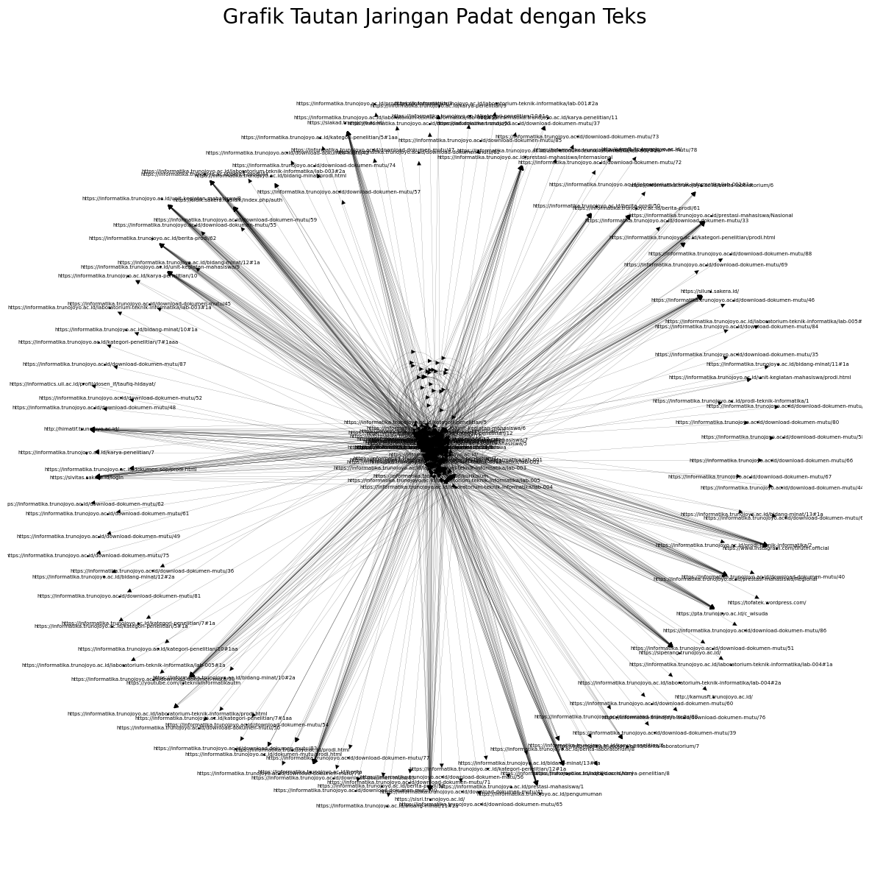

<!DOCTYPE html>


<html lang="en" data-content_root="./" >

  <head>
    <meta charset="utf-8" />
    <meta name="viewport" content="width=device-width, initial-scale=1.0" /><meta name="viewport" content="width=device-width, initial-scale=1" />

    <title>Crawling PTA &amp; Berita &#8212; My sample book</title>
  
  
  
  <script data-cfasync="false">
    document.documentElement.dataset.mode = localStorage.getItem("mode") || "";
    document.documentElement.dataset.theme = localStorage.getItem("theme") || "";
  </script>
  
  <!-- Loaded before other Sphinx assets -->
  <link href="_static/styles/theme.css?digest=dfe6caa3a7d634c4db9b" rel="stylesheet" />
<link href="_static/styles/bootstrap.css?digest=dfe6caa3a7d634c4db9b" rel="stylesheet" />
<link href="_static/styles/pydata-sphinx-theme.css?digest=dfe6caa3a7d634c4db9b" rel="stylesheet" />

  
  <link href="_static/vendor/fontawesome/6.5.2/css/all.min.css?digest=dfe6caa3a7d634c4db9b" rel="stylesheet" />
  <link rel="preload" as="font" type="font/woff2" crossorigin href="_static/vendor/fontawesome/6.5.2/webfonts/fa-solid-900.woff2" />
<link rel="preload" as="font" type="font/woff2" crossorigin href="_static/vendor/fontawesome/6.5.2/webfonts/fa-brands-400.woff2" />
<link rel="preload" as="font" type="font/woff2" crossorigin href="_static/vendor/fontawesome/6.5.2/webfonts/fa-regular-400.woff2" />

    <link rel="stylesheet" type="text/css" href="_static/pygments.css?v=03e43079" />
    <link rel="stylesheet" type="text/css" href="_static/styles/sphinx-book-theme.css?v=eba8b062" />
    <link rel="stylesheet" type="text/css" href="_static/togglebutton.css?v=13237357" />
    <link rel="stylesheet" type="text/css" href="_static/copybutton.css?v=76b2166b" />
    <link rel="stylesheet" type="text/css" href="_static/mystnb.8ecb98da25f57f5357bf6f572d296f466b2cfe2517ffebfabe82451661e28f02.css?v=6644e6bb" />
    <link rel="stylesheet" type="text/css" href="_static/sphinx-thebe.css?v=4fa983c6" />
    <link rel="stylesheet" type="text/css" href="_static/sphinx-design.min.css?v=95c83b7e" />
  
  <!-- Pre-loaded scripts that we'll load fully later -->
  <link rel="preload" as="script" href="_static/scripts/bootstrap.js?digest=dfe6caa3a7d634c4db9b" />
<link rel="preload" as="script" href="_static/scripts/pydata-sphinx-theme.js?digest=dfe6caa3a7d634c4db9b" />
  <script src="_static/vendor/fontawesome/6.5.2/js/all.min.js?digest=dfe6caa3a7d634c4db9b"></script>

    <script src="_static/documentation_options.js?v=9eb32ce0"></script>
    <script src="_static/doctools.js?v=9a2dae69"></script>
    <script src="_static/sphinx_highlight.js?v=dc90522c"></script>
    <script src="_static/clipboard.min.js?v=a7894cd8"></script>
    <script src="_static/copybutton.js?v=f281be69"></script>
    <script src="_static/scripts/sphinx-book-theme.js?v=887ef09a"></script>
    <script>let toggleHintShow = 'Click to show';</script>
    <script>let toggleHintHide = 'Click to hide';</script>
    <script>let toggleOpenOnPrint = 'true';</script>
    <script src="_static/togglebutton.js?v=4a39c7ea"></script>
    <script>var togglebuttonSelector = '.toggle, .admonition.dropdown';</script>
    <script src="_static/design-tabs.js?v=f930bc37"></script>
    <script>const THEBE_JS_URL = "https://unpkg.com/thebe@0.8.2/lib/index.js"; const thebe_selector = ".thebe,.cell"; const thebe_selector_input = "pre"; const thebe_selector_output = ".output, .cell_output"</script>
    <script async="async" src="_static/sphinx-thebe.js?v=c100c467"></script>
    <script>var togglebuttonSelector = '.toggle, .admonition.dropdown';</script>
    <script>const THEBE_JS_URL = "https://unpkg.com/thebe@0.8.2/lib/index.js"; const thebe_selector = ".thebe,.cell"; const thebe_selector_input = "pre"; const thebe_selector_output = ".output, .cell_output"</script>
    <script>DOCUMENTATION_OPTIONS.pagename = 'Crawling_PTA';</script>
    <link rel="index" title="Index" href="genindex.html" />
    <link rel="search" title="Search" href="search.html" />
    <link rel="next" title="Preprocessing Crawling PTA &amp; Berita" href="Preprocessing_Crawling_PTA.html" />
    <link rel="prev" title="Crawling" href="Crawling.html" />
  <meta name="viewport" content="width=device-width, initial-scale=1"/>
  <meta name="docsearch:language" content="en"/>
  </head>
  
  
  <body data-bs-spy="scroll" data-bs-target=".bd-toc-nav" data-offset="180" data-bs-root-margin="0px 0px -60%" data-default-mode="">

  
  
  <div id="pst-skip-link" class="skip-link d-print-none"><a href="#main-content">Skip to main content</a></div>
  
  <div id="pst-scroll-pixel-helper"></div>
  
  <button type="button" class="btn rounded-pill" id="pst-back-to-top">
    <i class="fa-solid fa-arrow-up"></i>Back to top</button>

  
  <input type="checkbox"
          class="sidebar-toggle"
          id="pst-primary-sidebar-checkbox"/>
  <label class="overlay overlay-primary" for="pst-primary-sidebar-checkbox"></label>
  
  <input type="checkbox"
          class="sidebar-toggle"
          id="pst-secondary-sidebar-checkbox"/>
  <label class="overlay overlay-secondary" for="pst-secondary-sidebar-checkbox"></label>
  
  <div class="search-button__wrapper">
    <div class="search-button__overlay"></div>
    <div class="search-button__search-container">
<form class="bd-search d-flex align-items-center"
      action="search.html"
      method="get">
  <i class="fa-solid fa-magnifying-glass"></i>
  <input type="search"
         class="form-control"
         name="q"
         id="search-input"
         placeholder="Search this book..."
         aria-label="Search this book..."
         autocomplete="off"
         autocorrect="off"
         autocapitalize="off"
         spellcheck="false"/>
  <span class="search-button__kbd-shortcut"><kbd class="kbd-shortcut__modifier">Ctrl</kbd>+<kbd>K</kbd></span>
</form></div>
  </div>

  <div class="pst-async-banner-revealer d-none">
  <aside id="bd-header-version-warning" class="d-none d-print-none" aria-label="Version warning"></aside>
</div>

  
    <header class="bd-header navbar navbar-expand-lg bd-navbar d-print-none">
    </header>
  

  <div class="bd-container">
    <div class="bd-container__inner bd-page-width">
      
      
      
      <div class="bd-sidebar-primary bd-sidebar">
        

  
  <div class="sidebar-header-items sidebar-primary__section">
    
    
    
    
  </div>
  
    <div class="sidebar-primary-items__start sidebar-primary__section">
        <div class="sidebar-primary-item">

  
    
  

<a class="navbar-brand logo" href="intro.html">
  
  
  
  
  
    
    
      
    
    
    
    <script>document.write(``);</script>
  
  
</a></div>
        <div class="sidebar-primary-item">

 <script>
 document.write(`
   <button class="btn search-button-field search-button__button" title="Search" aria-label="Search" data-bs-placement="bottom" data-bs-toggle="tooltip">
    <i class="fa-solid fa-magnifying-glass"></i>
    <span class="search-button__default-text">Search</span>
    <span class="search-button__kbd-shortcut"><kbd class="kbd-shortcut__modifier">Ctrl</kbd>+<kbd class="kbd-shortcut__modifier">K</kbd></span>
   </button>
 `);
 </script></div>
        <div class="sidebar-primary-item"><nav class="bd-links bd-docs-nav" aria-label="Main">
    <div class="bd-toc-item navbar-nav active">
        
        <ul class="nav bd-sidenav bd-sidenav__home-link">
            <li class="toctree-l1">
                <a class="reference internal" href="intro.html">
                    Pengantar Web Mining
                </a>
            </li>
        </ul>
        <ul class="current nav bd-sidenav">
<li class="toctree-l1"><a class="reference internal" href="Crawling.html">Crawling</a></li>
<li class="toctree-l1 current active"><a class="current reference internal" href="#">Crawling PTA &amp; Berita</a></li>
<li class="toctree-l1"><a class="reference internal" href="Preprocessing_Crawling_PTA.html">Preprocessing Crawling PTA &amp; Berita</a></li>
</ul>

    </div>
</nav></div>
    </div>
  
  
  <div class="sidebar-primary-items__end sidebar-primary__section">
  </div>
  
  <div id="rtd-footer-container"></div>


      </div>
      
      <main id="main-content" class="bd-main" role="main">
        
        

<div class="sbt-scroll-pixel-helper"></div>

          <div class="bd-content">
            <div class="bd-article-container">
              
              <div class="bd-header-article d-print-none">
<div class="header-article-items header-article__inner">
  
    <div class="header-article-items__start">
      
        <div class="header-article-item"><button class="sidebar-toggle primary-toggle btn btn-sm" title="Toggle primary sidebar" data-bs-placement="bottom" data-bs-toggle="tooltip">
  <span class="fa-solid fa-bars"></span>
</button></div>
      
    </div>
  
  
    <div class="header-article-items__end">
      
        <div class="header-article-item">

<div class="article-header-buttons">


<div class="dropdown dropdown-source-buttons">
  <button class="btn dropdown-toggle" type="button" data-bs-toggle="dropdown" aria-expanded="false" aria-label="Source repositories">
    <i class="fab fa-github"></i>
  </button>
  <ul class="dropdown-menu">
      
      
      
      <li><a href="https://github.com/executablebooks/jupyter-book" target="_blank"
   class="btn btn-sm btn-source-repository-button dropdown-item"
   title="Source repository"
   data-bs-placement="left" data-bs-toggle="tooltip"
>
  

<span class="btn__icon-container">
  <i class="fab fa-github"></i>
  </span>
<span class="btn__text-container">Repository</span>
</a>
</li>
      
      
      
      
      <li><a href="https://github.com/executablebooks/jupyter-book/issues/new?title=Issue%20on%20page%20%2FCrawling_PTA.html&body=Your%20issue%20content%20here." target="_blank"
   class="btn btn-sm btn-source-issues-button dropdown-item"
   title="Open an issue"
   data-bs-placement="left" data-bs-toggle="tooltip"
>
  

<span class="btn__icon-container">
  <i class="fas fa-lightbulb"></i>
  </span>
<span class="btn__text-container">Open issue</span>
</a>
</li>
      
  </ul>
</div>


<div class="dropdown dropdown-download-buttons">
  <button class="btn dropdown-toggle" type="button" data-bs-toggle="dropdown" aria-expanded="false" aria-label="Download this page">
    <i class="fas fa-download"></i>
  </button>
  <ul class="dropdown-menu">
      
      
      
      <li><a href="_sources/Crawling_PTA.ipynb" target="_blank"
   class="btn btn-sm btn-download-source-button dropdown-item"
   title="Download source file"
   data-bs-placement="left" data-bs-toggle="tooltip"
>
  

<span class="btn__icon-container">
  <i class="fas fa-file"></i>
  </span>
<span class="btn__text-container">.ipynb</span>
</a>
</li>
      
      
      
      
      <li>
<button onclick="window.print()"
  class="btn btn-sm btn-download-pdf-button dropdown-item"
  title="Print to PDF"
  data-bs-placement="left" data-bs-toggle="tooltip"
>
  

<span class="btn__icon-container">
  <i class="fas fa-file-pdf"></i>
  </span>
<span class="btn__text-container">.pdf</span>
</button>
</li>
      
  </ul>
</div>


<button onclick="toggleFullScreen()"
  class="btn btn-sm btn-fullscreen-button"
  title="Fullscreen mode"
  data-bs-placement="bottom" data-bs-toggle="tooltip"
>
  

<span class="btn__icon-container">
  <i class="fas fa-expand"></i>
  </span>

</button>


<script>
document.write(`
  <button class="btn btn-sm nav-link pst-navbar-icon theme-switch-button" title="light/dark" aria-label="light/dark" data-bs-placement="bottom" data-bs-toggle="tooltip">
    <i class="theme-switch fa-solid fa-sun fa-lg" data-mode="light"></i>
    <i class="theme-switch fa-solid fa-moon fa-lg" data-mode="dark"></i>
    <i class="theme-switch fa-solid fa-circle-half-stroke fa-lg" data-mode="auto"></i>
  </button>
`);
</script>


<script>
document.write(`
  <button class="btn btn-sm pst-navbar-icon search-button search-button__button" title="Search" aria-label="Search" data-bs-placement="bottom" data-bs-toggle="tooltip">
    <i class="fa-solid fa-magnifying-glass fa-lg"></i>
  </button>
`);
</script>
<button class="sidebar-toggle secondary-toggle btn btn-sm" title="Toggle secondary sidebar" data-bs-placement="bottom" data-bs-toggle="tooltip">
    <span class="fa-solid fa-list"></span>
</button>
</div></div>
      
    </div>
  
</div>
</div>
              
              

<div id="jb-print-docs-body" class="onlyprint">
    <h1>Crawling PTA & Berita</h1>
    <!-- Table of contents -->
    <div id="print-main-content">
        <div id="jb-print-toc">
            
            <div>
                <h2> Contents </h2>
            </div>
            <nav aria-label="Page">
                <ul class="visible nav section-nav flex-column">
<li class="toc-h2 nav-item toc-entry"><a class="reference internal nav-link" href="#crawling-pta">1. Crawling PTA</a></li>
<li class="toc-h2 nav-item toc-entry"><a class="reference internal nav-link" href="#id1">Crawling PTA</a></li>
<li class="toc-h2 nav-item toc-entry"><a class="reference internal nav-link" href="#page-link-keluar-pta">Page &amp; Link Keluar PTA</a></li>
<li class="toc-h2 nav-item toc-entry"><a class="reference internal nav-link" href="#crawling-berita">Crawling Berita</a></li>
</ul>
            </nav>
        </div>
    </div>
</div>

              
                
<div id="searchbox"></div>
                <article class="bd-article">
                  
  <section class="tex2jax_ignore mathjax_ignore" id="crawling-pta-berita">
<h1>Crawling PTA &amp; Berita<a class="headerlink" href="#crawling-pta-berita" title="Link to this heading">#</a></h1>
<div class="cell docutils container">
<div class="cell_input docutils container">
<div class="highlight-ipython3 notranslate"><div class="highlight"><pre><span></span><span class="o">!</span>pip<span class="w"> </span>install<span class="w"> </span>builtwith
<span class="o">!</span>pip<span class="w"> </span>install<span class="w"> </span>nltk
<span class="o">!</span>pip<span class="w"> </span>install<span class="w"> </span>Sastrawi
<span class="o">!</span>pip<span class="w"> </span>install<span class="w"> </span>pyspellchecker
</pre></div>
</div>
</div>
<div class="cell_output docutils container">
<div class="output stream highlight-myst-ansi notranslate"><div class="highlight"><pre><span></span>Collecting builtwith
</pre></div>
</div>
<div class="output stream highlight-myst-ansi notranslate"><div class="highlight"><pre><span></span>  Downloading builtwith-1.3.4.tar.gz (34 kB)
</pre></div>
</div>
<div class="output stream highlight-myst-ansi notranslate"><div class="highlight"><pre><span></span>  Preparing metadata (setup.py) ... ?25ldone
?25hRequirement already satisfied: six in /home/codespace/.local/lib/python3.12/site-packages (from builtwith) (1.17.0)
Building wheels for collected packages: builtwith
<span class=" -Color -Color-Yellow">  DEPRECATION: Building &#39;builtwith&#39; using the legacy setup.py bdist_wheel mechanism, which will be removed in a future version. pip 25.3 will enforce this behaviour change. A possible replacement is to use the standardized build interface by setting the `--use-pep517` option, (possibly combined with `--no-build-isolation`), or adding a `pyproject.toml` file to the source tree of &#39;builtwith&#39;. Discussion can be found at https://github.com/pypa/pip/issues/6334</span>

</pre></div>
</div>
<div class="output stream highlight-myst-ansi notranslate"><div class="highlight"><pre><span></span>  Building wheel for builtwith (setup.py) ... ?25l-
</pre></div>
</div>
<div class="output stream highlight-myst-ansi notranslate"><div class="highlight"><pre><span></span> done
?25h  Created wheel for builtwith: filename=builtwith-1.3.4-py3-none-any.whl size=36121 sha256=8d1975fce5eff9084902fcfab8f5c386ffcc05bde5ae7cbad014c1ccc0acac50
  Stored in directory: /home/codespace/.cache/pip/wheels/7f/2d/b2/606e3df914d4aeeab99c4a4e3e9a61673d2293c2e346db00c8
Successfully built builtwith
</pre></div>
</div>
<div class="output stream highlight-myst-ansi notranslate"><div class="highlight"><pre><span></span>Installing collected packages: builtwith
</pre></div>
</div>
<div class="output stream highlight-myst-ansi notranslate"><div class="highlight"><pre><span></span>Successfully installed builtwith-1.3.4

<span class=" -Color -Color-Bold">[</span><span class=" -Color -Color-Blue">notice</span><span class=" -Color -Color-Bold">]</span> A new release of pip is available: <span class=" -Color -Color-Red">25.1.1</span> -&gt; <span class=" -Color -Color-Green">25.2</span>
<span class=" -Color -Color-Bold">[</span><span class=" -Color -Color-Blue">notice</span><span class=" -Color -Color-Bold">]</span> To update, run: <span class=" -Color -Color-Green">python3 -m pip install --upgrade pip</span>
</pre></div>
</div>
<div class="output stream highlight-myst-ansi notranslate"><div class="highlight"><pre><span></span>Collecting nltk
</pre></div>
</div>
<div class="output stream highlight-myst-ansi notranslate"><div class="highlight"><pre><span></span>  Downloading nltk-3.9.1-py3-none-any.whl.metadata (2.9 kB)
</pre></div>
</div>
<div class="output stream highlight-myst-ansi notranslate"><div class="highlight"><pre><span></span>Requirement already satisfied: click in /usr/local/python/3.12.1/lib/python3.12/site-packages (from nltk) (8.3.0)
Requirement already satisfied: joblib in /home/codespace/.local/lib/python3.12/site-packages (from nltk) (1.5.1)
</pre></div>
</div>
<div class="output stream highlight-myst-ansi notranslate"><div class="highlight"><pre><span></span>Collecting regex&gt;=2021.8.3 (from nltk)
</pre></div>
</div>
<div class="output stream highlight-myst-ansi notranslate"><div class="highlight"><pre><span></span>  Downloading regex-2025.9.18-cp312-cp312-manylinux2014_x86_64.manylinux_2_17_x86_64.manylinux_2_28_x86_64.whl.metadata (40 kB)
</pre></div>
</div>
<div class="output stream highlight-myst-ansi notranslate"><div class="highlight"><pre><span></span>Collecting tqdm (from nltk)
  Downloading tqdm-4.67.1-py3-none-any.whl.metadata (57 kB)
</pre></div>
</div>
<div class="output stream highlight-myst-ansi notranslate"><div class="highlight"><pre><span></span>Downloading nltk-3.9.1-py3-none-any.whl (1.5 MB)
?25l   <span class=" -Color -Color-C237">━━━━━━━━━━━━━━━━━━━━━━━━━━━━━━━━━━━━━━━━</span> <span class=" -Color -Color-Green">0.0/1.5 MB</span> <span class=" -Color -Color-Red">?</span> eta <span class=" -Color -Color-Cyan">-:--:--</span>
</pre></div>
</div>
<div class="output stream highlight-myst-ansi notranslate"><div class="highlight"><pre><span></span>   <span class=" -Color -Color-Red">━━━━━━━━━━━━━━━━━━━━━━━━━━━━━━━━━━━━━━━━</span> <span class=" -Color -Color-Green">1.5/1.5 MB</span> <span class=" -Color -Color-Red">34.8 MB/s</span> eta <span class=" -Color -Color-Cyan">0:00:00</span>
?25hDownloading regex-2025.9.18-cp312-cp312-manylinux2014_x86_64.manylinux_2_17_x86_64.manylinux_2_28_x86_64.whl (802 kB)
</pre></div>
</div>
<div class="output stream highlight-myst-ansi notranslate"><div class="highlight"><pre><span></span>?25l   <span class=" -Color -Color-C237">━━━━━━━━━━━━━━━━━━━━━━━━━━━━━━━━━━━━━━━━</span> <span class=" -Color -Color-Green">0.0/802.0 kB</span> <span class=" -Color -Color-Red">?</span> eta <span class=" -Color -Color-Cyan">-:--:--</span>
   <span class=" -Color -Color-Red">━━━━━━━━━━━━━━━━━━━━━━━━━━━━━━━━━━━━━━━━</span> <span class=" -Color -Color-Green">802.0/802.0 kB</span> <span class=" -Color -Color-Red">32.9 MB/s</span> eta <span class=" -Color -Color-Cyan">0:00:00</span>
?25hDownloading tqdm-4.67.1-py3-none-any.whl (78 kB)
</pre></div>
</div>
<div class="output stream highlight-myst-ansi notranslate"><div class="highlight"><pre><span></span>Installing collected packages: tqdm, regex, nltk
?25l
</pre></div>
</div>
<div class="output stream highlight-myst-ansi notranslate"><div class="highlight"><pre><span></span>   ━━━━━━━━━━━━━<span class=" -Color -Color-C237">╺━━━━━━━━━━━━━━━━━━━━━━━━━━</span> <span class=" -Color -Color-Green">1/3</span> [regex]
</pre></div>
</div>
<div class="output stream highlight-myst-ansi notranslate"><div class="highlight"><pre><span></span>   ━━━━━━━━━━━━━━━━━━━━━━━━━━╸<span class=" -Color -Color-C237">━━━━━━━━━━━━━</span> <span class=" -Color -Color-Green">2/3</span> [nltk]
</pre></div>
</div>
<div class="output stream highlight-myst-ansi notranslate"><div class="highlight"><pre><span></span>   ━━━━━━━━━━━━━━━━━━━━━━━━━━╸<span class=" -Color -Color-C237">━━━━━━━━━━━━━</span> <span class=" -Color -Color-Green">2/3</span> [nltk]
</pre></div>
</div>
<div class="output stream highlight-myst-ansi notranslate"><div class="highlight"><pre><span></span>   ━━━━━━━━━━━━━━━━━━━━━━━━━━╸<span class=" -Color -Color-C237">━━━━━━━━━━━━━</span> <span class=" -Color -Color-Green">2/3</span> [nltk]
</pre></div>
</div>
<div class="output stream highlight-myst-ansi notranslate"><div class="highlight"><pre><span></span>   ━━━━━━━━━━━━━━━━━━━━━━━━━━╸<span class=" -Color -Color-C237">━━━━━━━━━━━━━</span> <span class=" -Color -Color-Green">2/3</span> [nltk]
</pre></div>
</div>
<div class="output stream highlight-myst-ansi notranslate"><div class="highlight"><pre><span></span>   ━━━━━━━━━━━━━━━━━━━━━━━━━━╸<span class=" -Color -Color-C237">━━━━━━━━━━━━━</span> <span class=" -Color -Color-Green">2/3</span> [nltk]
</pre></div>
</div>
<div class="output stream highlight-myst-ansi notranslate"><div class="highlight"><pre><span></span>   ━━━━━━━━━━━━━━━━━━━━━━━━━━╸<span class=" -Color -Color-C237">━━━━━━━━━━━━━</span> <span class=" -Color -Color-Green">2/3</span> [nltk]
</pre></div>
</div>
<div class="output stream highlight-myst-ansi notranslate"><div class="highlight"><pre><span></span>   <span class=" -Color -Color-Red">━━━━━━━━━━━━━━━━━━━━━━━━━━━━━━━━━━━━━━━━</span> <span class=" -Color -Color-Green">3/3</span> [nltk]
?25h
Successfully installed nltk-3.9.1 regex-2025.9.18 tqdm-4.67.1
</pre></div>
</div>
<div class="output stream highlight-myst-ansi notranslate"><div class="highlight"><pre><span></span><span class=" -Color -Color-Bold">[</span><span class=" -Color -Color-Blue">notice</span><span class=" -Color -Color-Bold">]</span> A new release of pip is available: <span class=" -Color -Color-Red">25.1.1</span> -&gt; <span class=" -Color -Color-Green">25.2</span>
<span class=" -Color -Color-Bold">[</span><span class=" -Color -Color-Blue">notice</span><span class=" -Color -Color-Bold">]</span> To update, run: <span class=" -Color -Color-Green">python3 -m pip install --upgrade pip</span>
</pre></div>
</div>
<div class="output stream highlight-myst-ansi notranslate"><div class="highlight"><pre><span></span>Collecting Sastrawi
</pre></div>
</div>
<div class="output stream highlight-myst-ansi notranslate"><div class="highlight"><pre><span></span>  Downloading Sastrawi-1.0.1-py2.py3-none-any.whl.metadata (909 bytes)
Downloading Sastrawi-1.0.1-py2.py3-none-any.whl (209 kB)
</pre></div>
</div>
<div class="output stream highlight-myst-ansi notranslate"><div class="highlight"><pre><span></span>Installing collected packages: Sastrawi
</pre></div>
</div>
<div class="output stream highlight-myst-ansi notranslate"><div class="highlight"><pre><span></span>Successfully installed Sastrawi-1.0.1

<span class=" -Color -Color-Bold">[</span><span class=" -Color -Color-Blue">notice</span><span class=" -Color -Color-Bold">]</span> A new release of pip is available: <span class=" -Color -Color-Red">25.1.1</span> -&gt; <span class=" -Color -Color-Green">25.2</span>
<span class=" -Color -Color-Bold">[</span><span class=" -Color -Color-Blue">notice</span><span class=" -Color -Color-Bold">]</span> To update, run: <span class=" -Color -Color-Green">python3 -m pip install --upgrade pip</span>
</pre></div>
</div>
<div class="output stream highlight-myst-ansi notranslate"><div class="highlight"><pre><span></span>Collecting pyspellchecker
</pre></div>
</div>
<div class="output stream highlight-myst-ansi notranslate"><div class="highlight"><pre><span></span>  Downloading pyspellchecker-0.8.3-py3-none-any.whl.metadata (9.5 kB)
Downloading pyspellchecker-0.8.3-py3-none-any.whl (7.2 MB)
?25l   <span class=" -Color -Color-C237">━━━━━━━━━━━━━━━━━━━━━━━━━━━━━━━━━━━━━━━━</span> <span class=" -Color -Color-Green">0.0/7.2 MB</span> <span class=" -Color -Color-Red">?</span> eta <span class=" -Color -Color-Cyan">-:--:--</span>
</pre></div>
</div>
<div class="output stream highlight-myst-ansi notranslate"><div class="highlight"><pre><span></span>   <span class=" -Color -Color-Red">━━━━━━━━━━━━━━━━━━━━━━━━━━━━━━━━━━━━━━━━</span> <span class=" -Color -Color-Green">7.2/7.2 MB</span> <span class=" -Color -Color-Red">49.8 MB/s</span> eta <span class=" -Color -Color-Cyan">0:00:00</span>
?25h
</pre></div>
</div>
<div class="output stream highlight-myst-ansi notranslate"><div class="highlight"><pre><span></span>Installing collected packages: pyspellchecker
</pre></div>
</div>
<div class="output stream highlight-myst-ansi notranslate"><div class="highlight"><pre><span></span>Successfully installed pyspellchecker-0.8.3

<span class=" -Color -Color-Bold">[</span><span class=" -Color -Color-Blue">notice</span><span class=" -Color -Color-Bold">]</span> A new release of pip is available: <span class=" -Color -Color-Red">25.1.1</span> -&gt; <span class=" -Color -Color-Green">25.2</span>
<span class=" -Color -Color-Bold">[</span><span class=" -Color -Color-Blue">notice</span><span class=" -Color -Color-Bold">]</span> To update, run: <span class=" -Color -Color-Green">python3 -m pip install --upgrade pip</span>
</pre></div>
</div>
</div>
</div>
<section id="crawling-pta">
<h2>1. Crawling PTA<a class="headerlink" href="#crawling-pta" title="Link to this heading">#</a></h2>
<div class="cell docutils container">
<div class="cell_input docutils container">
<div class="highlight-ipython3 notranslate"><div class="highlight"><pre><span></span><span class="kn">import</span><span class="w"> </span><span class="nn">builtwith</span>

<span class="c1"># Analisis teknologi yang digunakan</span>
<span class="n">res</span> <span class="o">=</span> <span class="n">builtwith</span><span class="o">.</span><span class="n">parse</span><span class="p">(</span><span class="s1">&#39;https://pta.trunojoyo.ac.id&#39;</span><span class="p">)</span>
<span class="nb">print</span><span class="p">(</span><span class="n">res</span><span class="p">)</span>
</pre></div>
</div>
</div>
<div class="cell_output docutils container">
<div class="output stream highlight-myst-ansi notranslate"><div class="highlight"><pre><span></span>{&#39;web-servers&#39;: [&#39;Nginx&#39;], &#39;javascript-frameworks&#39;: [&#39;jQuery&#39;, &#39;jQuery UI&#39;]}
</pre></div>
</div>
</div>
</div>
</section>
<section id="id1">
<h2>Crawling PTA<a class="headerlink" href="#id1" title="Link to this heading">#</a></h2>
<div class="cell docutils container">
<div class="cell_input docutils container">
<div class="highlight-ipython3 notranslate"><div class="highlight"><pre><span></span><span class="kn">import</span><span class="w"> </span><span class="nn">requests</span>
<span class="kn">from</span><span class="w"> </span><span class="nn">bs4</span><span class="w"> </span><span class="kn">import</span> <span class="n">BeautifulSoup</span>
<span class="kn">import</span><span class="w"> </span><span class="nn">pandas</span><span class="w"> </span><span class="k">as</span><span class="w"> </span><span class="nn">pd</span>
<span class="kn">import</span><span class="w"> </span><span class="nn">time</span>
<span class="kn">import</span><span class="w"> </span><span class="nn">sys</span>

<span class="k">def</span><span class="w"> </span><span class="nf">get_text_or_na</span><span class="p">(</span><span class="n">soup</span><span class="p">,</span> <span class="n">selectors</span><span class="p">):</span>
<span class="w">    </span><span class="sd">&quot;&quot;&quot;Mencoba beberapa selektor untuk menemukan teks, mengembalikan &#39;N/A&#39; jika tidak ditemukan.&quot;&quot;&quot;</span>
    <span class="k">for</span> <span class="n">selector</span> <span class="ow">in</span> <span class="n">selectors</span><span class="p">:</span>
        <span class="n">element</span> <span class="o">=</span> <span class="n">soup</span><span class="o">.</span><span class="n">select_one</span><span class="p">(</span><span class="n">selector</span><span class="p">)</span>
        <span class="k">if</span> <span class="n">element</span><span class="p">:</span>
            <span class="n">text</span> <span class="o">=</span> <span class="n">element</span><span class="o">.</span><span class="n">get_text</span><span class="p">(</span><span class="n">strip</span><span class="o">=</span><span class="kc">True</span><span class="p">)</span>
            <span class="k">if</span> <span class="n">text</span> <span class="ow">and</span> <span class="n">text</span><span class="o">.</span><span class="n">strip</span><span class="p">():</span>
                <span class="k">return</span> <span class="n">text</span><span class="o">.</span><span class="n">strip</span><span class="p">()</span>
    <span class="k">return</span> <span class="s1">&#39;N/A&#39;</span>

<span class="k">def</span><span class="w"> </span><span class="nf">get_data_from_span</span><span class="p">(</span><span class="n">soup</span><span class="p">,</span> <span class="n">text_contains</span><span class="p">):</span>
<span class="w">    </span><span class="sd">&quot;&quot;&quot;Mencari span yang berisi teks tertentu dan mengekstrak nama setelah titik dua.&quot;&quot;&quot;</span>
    <span class="n">span</span> <span class="o">=</span> <span class="n">soup</span><span class="o">.</span><span class="n">select_one</span><span class="p">(</span><span class="sa">f</span><span class="s1">&#39;span:-soup-contains(&quot;</span><span class="si">{</span><span class="n">text_contains</span><span class="si">}</span><span class="s1">&quot;)&#39;</span><span class="p">)</span>
    <span class="k">if</span> <span class="n">span</span><span class="p">:</span>
        <span class="n">text</span> <span class="o">=</span> <span class="n">span</span><span class="o">.</span><span class="n">get_text</span><span class="p">(</span><span class="n">strip</span><span class="o">=</span><span class="kc">True</span><span class="p">)</span>
        <span class="k">if</span> <span class="s1">&#39;:&#39;</span> <span class="ow">in</span> <span class="n">text</span><span class="p">:</span>
            <span class="k">return</span> <span class="n">text</span><span class="o">.</span><span class="n">split</span><span class="p">(</span><span class="s1">&#39;:&#39;</span><span class="p">,</span> <span class="mi">1</span><span class="p">)[</span><span class="mi">1</span><span class="p">]</span><span class="o">.</span><span class="n">strip</span><span class="p">()</span>
    <span class="k">return</span> <span class="s1">&#39;N/A&#39;</span>

<span class="k">def</span><span class="w"> </span><span class="nf">get_abstract_robust</span><span class="p">(</span><span class="n">soup</span><span class="p">,</span> <span class="n">keywords</span><span class="p">):</span>
<span class="w">    </span><span class="sd">&quot;&quot;&quot;</span>
<span class="sd">    Mencari tag heading (b) yang teksnya mengandung salah satu dari kata kunci</span>
<span class="sd">    dan mengekstrak paragraf berikutnya.</span>
<span class="sd">    &quot;&quot;&quot;</span>
    <span class="k">for</span> <span class="n">tag_b</span> <span class="ow">in</span> <span class="n">soup</span><span class="o">.</span><span class="n">find_all</span><span class="p">(</span><span class="s1">&#39;b&#39;</span><span class="p">):</span>
        <span class="n">tag_text</span> <span class="o">=</span> <span class="n">tag_b</span><span class="o">.</span><span class="n">get_text</span><span class="p">(</span><span class="n">strip</span><span class="o">=</span><span class="kc">True</span><span class="p">)</span>
        <span class="k">if</span> <span class="nb">any</span><span class="p">(</span><span class="n">keyword</span><span class="o">.</span><span class="n">lower</span><span class="p">()</span> <span class="ow">in</span> <span class="n">tag_text</span><span class="o">.</span><span class="n">lower</span><span class="p">()</span> <span class="k">for</span> <span class="n">keyword</span> <span class="ow">in</span> <span class="n">keywords</span><span class="p">):</span>
            <span class="n">parent_div</span> <span class="o">=</span> <span class="n">tag_b</span><span class="o">.</span><span class="n">find_parent</span><span class="p">(</span><span class="s1">&#39;div&#39;</span><span class="p">)</span>
            <span class="k">if</span> <span class="n">parent_div</span><span class="p">:</span>
                <span class="n">next_div_sibling</span> <span class="o">=</span> <span class="n">parent_div</span><span class="o">.</span><span class="n">find_next_sibling</span><span class="p">(</span><span class="s1">&#39;div&#39;</span><span class="p">)</span>
                <span class="k">if</span> <span class="n">next_div_sibling</span><span class="p">:</span>
                    <span class="n">p_tag</span> <span class="o">=</span> <span class="n">next_div_sibling</span><span class="o">.</span><span class="n">find</span><span class="p">(</span><span class="s1">&#39;p&#39;</span><span class="p">,</span> <span class="n">align</span><span class="o">=</span><span class="s2">&quot;justify&quot;</span><span class="p">)</span>
                    <span class="k">if</span> <span class="n">p_tag</span><span class="p">:</span>
                        <span class="n">abstract_text</span> <span class="o">=</span> <span class="n">p_tag</span><span class="o">.</span><span class="n">get_text</span><span class="p">(</span><span class="n">strip</span><span class="o">=</span><span class="kc">True</span><span class="p">)</span>
                        <span class="k">if</span> <span class="n">abstract_text</span><span class="p">:</span>
                            <span class="k">return</span> <span class="n">abstract_text</span>
    <span class="k">return</span> <span class="s1">&#39;N/A&#39;</span>

<span class="k">def</span><span class="w"> </span><span class="nf">get_total_pages</span><span class="p">(</span><span class="n">soup</span><span class="p">):</span>
<span class="w">    </span><span class="sd">&quot;&quot;&quot;</span>
<span class="sd">    Mengekstrak total jumlah halaman dari navigasi paginasi.</span>
<span class="sd">    &quot;&quot;&quot;</span>
    <span class="k">try</span><span class="p">:</span>
        <span class="n">pagination</span> <span class="o">=</span> <span class="n">soup</span><span class="o">.</span><span class="n">select_one</span><span class="p">(</span><span class="s1">&#39;ol.pagination&#39;</span><span class="p">)</span>
        <span class="k">if</span> <span class="n">pagination</span><span class="p">:</span>
            <span class="n">last_page_li</span> <span class="o">=</span> <span class="n">pagination</span><span class="o">.</span><span class="n">select</span><span class="p">(</span><span class="s1">&#39;li&#39;</span><span class="p">)[</span><span class="o">-</span><span class="mi">1</span><span class="p">]</span>
            <span class="n">last_page_link</span> <span class="o">=</span> <span class="n">last_page_li</span><span class="o">.</span><span class="n">select_one</span><span class="p">(</span><span class="s1">&#39;a&#39;</span><span class="p">)</span>
            <span class="k">if</span> <span class="n">last_page_link</span> <span class="ow">and</span> <span class="s1">&#39;href&#39;</span> <span class="ow">in</span> <span class="n">last_page_link</span><span class="o">.</span><span class="n">attrs</span><span class="p">:</span>
                <span class="n">url_path</span> <span class="o">=</span> <span class="n">last_page_link</span><span class="p">[</span><span class="s1">&#39;href&#39;</span><span class="p">]</span>
                <span class="k">return</span> <span class="nb">int</span><span class="p">(</span><span class="n">url_path</span><span class="o">.</span><span class="n">split</span><span class="p">(</span><span class="s1">&#39;/&#39;</span><span class="p">)[</span><span class="o">-</span><span class="mi">1</span><span class="p">])</span>
    <span class="k">except</span> <span class="p">(</span><span class="ne">IndexError</span><span class="p">,</span> <span class="ne">ValueError</span><span class="p">,</span> <span class="ne">KeyError</span><span class="p">):</span>
        <span class="k">pass</span>
    <span class="k">return</span> <span class="mi">1</span>

<span class="k">def</span><span class="w"> </span><span class="nf">scrape_teknik_all_data</span><span class="p">():</span>
<span class="w">    </span><span class="sd">&quot;&quot;&quot;</span>
<span class="sd">    Scrapes all data from all study programs within the Faculty of Engineering.</span>
<span class="sd">    &quot;&quot;&quot;</span>
    <span class="c1"># Hardcoded list of Engineering study programs and their URLs based on inspection</span>
    <span class="n">prodi_data</span> <span class="o">=</span> <span class="p">[</span>
        <span class="p">{</span><span class="s1">&#39;name&#39;</span><span class="p">:</span> <span class="s1">&#39;Teknik Industri&#39;</span><span class="p">,</span> <span class="s1">&#39;url&#39;</span><span class="p">:</span> <span class="s1">&#39;https://pta.trunojoyo.ac.id/c_search/byprod/9&#39;</span><span class="p">},</span>
        <span class="p">{</span><span class="s1">&#39;name&#39;</span><span class="p">:</span> <span class="s1">&#39;Teknik Informatika&#39;</span><span class="p">,</span> <span class="s1">&#39;url&#39;</span><span class="p">:</span> <span class="s1">&#39;https://pta.trunojoyo.ac.id/c_search/byprod/10&#39;</span><span class="p">},</span>
        <span class="p">{</span><span class="s1">&#39;name&#39;</span><span class="p">:</span> <span class="s1">&#39;Manajemen Informatika&#39;</span><span class="p">,</span> <span class="s1">&#39;url&#39;</span><span class="p">:</span> <span class="s1">&#39;https://pta.trunojoyo.ac.id/c_search/byprod/11&#39;</span><span class="p">},</span>
        <span class="p">{</span><span class="s1">&#39;name&#39;</span><span class="p">:</span> <span class="s1">&#39;Teknik Multimedia Dan Jaringan&#39;</span><span class="p">,</span> <span class="s1">&#39;url&#39;</span><span class="p">:</span> <span class="s1">&#39;https://pta.trunojoyo.ac.id/c_search/byprod/19&#39;</span><span class="p">},</span>
        <span class="p">{</span><span class="s1">&#39;name&#39;</span><span class="p">:</span> <span class="s1">&#39;Mekatronika&#39;</span><span class="p">,</span> <span class="s1">&#39;url&#39;</span><span class="p">:</span> <span class="s1">&#39;https://pta.trunojoyo.ac.id/c_search/byprod/20&#39;</span><span class="p">},</span>
        <span class="p">{</span><span class="s1">&#39;name&#39;</span><span class="p">:</span> <span class="s1">&#39;Teknik Elektro&#39;</span><span class="p">,</span> <span class="s1">&#39;url&#39;</span><span class="p">:</span> <span class="s1">&#39;https://pta.trunojoyo.ac.id/c_search/byprod/23&#39;</span><span class="p">},</span>
        <span class="p">{</span><span class="s1">&#39;name&#39;</span><span class="p">:</span> <span class="s1">&#39;Sistem Informasi&#39;</span><span class="p">,</span> <span class="s1">&#39;url&#39;</span><span class="p">:</span> <span class="s1">&#39;https://pta.trunojoyo.ac.id/c_search/byprod/31&#39;</span><span class="p">},</span>
        <span class="p">{</span><span class="s1">&#39;name&#39;</span><span class="p">:</span> <span class="s1">&#39;Teknik Mesin&#39;</span><span class="p">,</span> <span class="s1">&#39;url&#39;</span><span class="p">:</span> <span class="s1">&#39;https://pta.trunojoyo.ac.id/c_search/byprod/32&#39;</span><span class="p">},</span>
        <span class="p">{</span><span class="s1">&#39;name&#39;</span><span class="p">:</span> <span class="s1">&#39;Teknik Mekatronika&#39;</span><span class="p">,</span> <span class="s1">&#39;url&#39;</span><span class="p">:</span> <span class="s1">&#39;https://pta.trunojoyo.ac.id/c_search/byprod/33&#39;</span><span class="p">}</span>
    <span class="p">]</span>

    <span class="n">all_scraped_data</span> <span class="o">=</span> <span class="p">{</span>
        <span class="s2">&quot;penulis&quot;</span><span class="p">:</span> <span class="p">[],</span> <span class="s2">&quot;judul&quot;</span><span class="p">:</span> <span class="p">[],</span> <span class="s2">&quot;pembimbing_pertama&quot;</span><span class="p">:</span> <span class="p">[],</span> <span class="s2">&quot;pembimbing_kedua&quot;</span><span class="p">:</span> <span class="p">[],</span>
        <span class="s2">&quot;abstrak_indonesia&quot;</span><span class="p">:</span> <span class="p">[],</span> <span class="s2">&quot;abstrak_inggris&quot;</span><span class="p">:</span> <span class="p">[],</span> <span class="s2">&quot;prodi&quot;</span><span class="p">:</span> <span class="p">[]</span>
    <span class="p">}</span>

    <span class="n">total_data_count</span> <span class="o">=</span> <span class="mi">0</span>

    <span class="nb">print</span><span class="p">(</span><span class="s2">&quot;--- MULAI PROSES SCRAPING FAKULTAS TEKNIK ---&quot;</span><span class="p">)</span>

    <span class="k">for</span> <span class="n">prodi</span> <span class="ow">in</span> <span class="n">prodi_data</span><span class="p">:</span>
        <span class="nb">print</span><span class="p">(</span><span class="sa">f</span><span class="s2">&quot;</span><span class="se">\n</span><span class="s2">Scraping data for program: </span><span class="si">{</span><span class="n">prodi</span><span class="p">[</span><span class="s1">&#39;name&#39;</span><span class="p">]</span><span class="si">}</span><span class="s2">&quot;</span><span class="p">)</span>
        <span class="nb">print</span><span class="p">(</span><span class="s2">&quot;-&quot;</span> <span class="o">*</span> <span class="mi">50</span><span class="p">)</span>

        <span class="n">first_page_url</span> <span class="o">=</span> <span class="n">prodi</span><span class="p">[</span><span class="s1">&#39;url&#39;</span><span class="p">]</span>
        <span class="k">try</span><span class="p">:</span>
            <span class="n">r</span> <span class="o">=</span> <span class="n">requests</span><span class="o">.</span><span class="n">get</span><span class="p">(</span><span class="n">first_page_url</span><span class="p">)</span>
            <span class="n">r</span><span class="o">.</span><span class="n">raise_for_status</span><span class="p">()</span>
            <span class="n">soup</span> <span class="o">=</span> <span class="n">BeautifulSoup</span><span class="p">(</span><span class="n">r</span><span class="o">.</span><span class="n">content</span><span class="p">,</span> <span class="s2">&quot;html.parser&quot;</span><span class="p">)</span>
            <span class="n">total_pages</span> <span class="o">=</span> <span class="n">get_total_pages</span><span class="p">(</span><span class="n">soup</span><span class="p">)</span>
            <span class="nb">print</span><span class="p">(</span><span class="sa">f</span><span class="s2">&quot;Found </span><span class="si">{</span><span class="n">total_pages</span><span class="si">}</span><span class="s2"> pages for </span><span class="si">{</span><span class="n">prodi</span><span class="p">[</span><span class="s1">&#39;name&#39;</span><span class="p">]</span><span class="si">}</span><span class="s2">&quot;</span><span class="p">)</span>
        <span class="k">except</span> <span class="n">requests</span><span class="o">.</span><span class="n">exceptions</span><span class="o">.</span><span class="n">RequestException</span> <span class="k">as</span> <span class="n">e</span><span class="p">:</span>
            <span class="nb">print</span><span class="p">(</span><span class="sa">f</span><span class="s2">&quot;Error fetching first page for </span><span class="si">{</span><span class="n">prodi</span><span class="p">[</span><span class="s1">&#39;name&#39;</span><span class="p">]</span><span class="si">}</span><span class="s2">: </span><span class="si">{</span><span class="n">e</span><span class="si">}</span><span class="s2">&quot;</span><span class="p">,</span> <span class="n">file</span><span class="o">=</span><span class="n">sys</span><span class="o">.</span><span class="n">stderr</span><span class="p">)</span>
            <span class="n">total_pages</span> <span class="o">=</span> <span class="mi">1</span>

        <span class="k">for</span> <span class="n">i</span> <span class="ow">in</span> <span class="nb">range</span><span class="p">(</span><span class="mi">1</span><span class="p">,</span> <span class="n">total_pages</span> <span class="o">+</span> <span class="mi">1</span><span class="p">):</span>
            <span class="n">url</span> <span class="o">=</span> <span class="sa">f</span><span class="s2">&quot;</span><span class="si">{</span><span class="n">prodi</span><span class="p">[</span><span class="s1">&#39;url&#39;</span><span class="p">]</span><span class="si">}</span><span class="s2">/</span><span class="si">{</span><span class="n">i</span><span class="si">}</span><span class="s2">&quot;</span>

            <span class="k">try</span><span class="p">:</span>
                <span class="n">r</span> <span class="o">=</span> <span class="n">requests</span><span class="o">.</span><span class="n">get</span><span class="p">(</span><span class="n">url</span><span class="p">)</span>
                <span class="n">r</span><span class="o">.</span><span class="n">raise_for_status</span><span class="p">()</span>
                <span class="n">soup</span> <span class="o">=</span> <span class="n">BeautifulSoup</span><span class="p">(</span><span class="n">r</span><span class="o">.</span><span class="n">content</span><span class="p">,</span> <span class="s2">&quot;html.parser&quot;</span><span class="p">)</span>
                <span class="n">jurnals</span> <span class="o">=</span> <span class="n">soup</span><span class="o">.</span><span class="n">select</span><span class="p">(</span><span class="s1">&#39;li[data-cat=&quot;#luxury&quot;]&#39;</span><span class="p">)</span>

                <span class="k">if</span> <span class="ow">not</span> <span class="n">jurnals</span><span class="p">:</span>
                    <span class="nb">print</span><span class="p">(</span><span class="sa">f</span><span class="s2">&quot;No more journals found on page </span><span class="si">{</span><span class="n">i</span><span class="si">}</span><span class="s2">. Stopping for this program.&quot;</span><span class="p">)</span>
                    <span class="k">break</span>

                <span class="k">for</span> <span class="n">jurnal</span> <span class="ow">in</span> <span class="n">jurnals</span><span class="p">:</span>
                    <span class="n">jurnal_url</span> <span class="o">=</span> <span class="n">jurnal</span><span class="o">.</span><span class="n">select_one</span><span class="p">(</span><span class="s1">&#39;a.gray.button&#39;</span><span class="p">)[</span><span class="s1">&#39;href&#39;</span><span class="p">]</span>

                    <span class="k">try</span><span class="p">:</span>
                        <span class="n">response</span> <span class="o">=</span> <span class="n">requests</span><span class="o">.</span><span class="n">get</span><span class="p">(</span><span class="n">jurnal_url</span><span class="p">)</span>
                        <span class="n">response</span><span class="o">.</span><span class="n">raise_for_status</span><span class="p">()</span>
                        <span class="n">soup1</span> <span class="o">=</span> <span class="n">BeautifulSoup</span><span class="p">(</span><span class="n">response</span><span class="o">.</span><span class="n">content</span><span class="p">,</span> <span class="s2">&quot;html.parser&quot;</span><span class="p">)</span>
                        <span class="n">isi</span> <span class="o">=</span> <span class="n">soup1</span><span class="o">.</span><span class="n">select_one</span><span class="p">(</span><span class="s1">&#39;div#content_journal&#39;</span><span class="p">)</span>

                        <span class="k">if</span> <span class="n">isi</span><span class="p">:</span>
                            <span class="n">judul</span> <span class="o">=</span> <span class="n">get_text_or_na</span><span class="p">(</span><span class="n">isi</span><span class="p">,</span> <span class="p">[</span><span class="s1">&#39;a.title&#39;</span><span class="p">,</span> <span class="s1">&#39;b.title&#39;</span><span class="p">,</span> <span class="s1">&#39;h2.title&#39;</span><span class="p">])</span>
                            <span class="n">penulis</span> <span class="o">=</span> <span class="n">get_data_from_span</span><span class="p">(</span><span class="n">isi</span><span class="p">,</span> <span class="s2">&quot;Penulis&quot;</span><span class="p">)</span>
                            <span class="n">pembimbing_pertama</span> <span class="o">=</span> <span class="n">get_data_from_span</span><span class="p">(</span><span class="n">isi</span><span class="p">,</span> <span class="s2">&quot;Dosen Pembimbing I&quot;</span><span class="p">)</span>
                            <span class="n">pembimbing_kedua</span> <span class="o">=</span> <span class="n">get_data_from_span</span><span class="p">(</span><span class="n">isi</span><span class="p">,</span> <span class="s2">&quot;Dosen Pembimbing II&quot;</span><span class="p">)</span>
                            <span class="n">abstrak_indonesia</span> <span class="o">=</span> <span class="n">get_abstract_robust</span><span class="p">(</span><span class="n">isi</span><span class="p">,</span> <span class="p">[</span><span class="s2">&quot;Abstraksi&quot;</span><span class="p">,</span> <span class="s2">&quot;Abstrak&quot;</span><span class="p">])</span>
                            <span class="n">abstrak_inggris</span> <span class="o">=</span> <span class="n">get_abstract_robust</span><span class="p">(</span><span class="n">isi</span><span class="p">,</span> <span class="p">[</span><span class="s2">&quot;Abstraction&quot;</span><span class="p">,</span> <span class="s2">&quot;Abstract&quot;</span><span class="p">,</span> <span class="s2">&quot;ABSTRACT&quot;</span><span class="p">])</span>

                            <span class="n">all_scraped_data</span><span class="p">[</span><span class="s2">&quot;penulis&quot;</span><span class="p">]</span><span class="o">.</span><span class="n">append</span><span class="p">(</span><span class="n">penulis</span><span class="p">)</span>
                            <span class="n">all_scraped_data</span><span class="p">[</span><span class="s2">&quot;judul&quot;</span><span class="p">]</span><span class="o">.</span><span class="n">append</span><span class="p">(</span><span class="n">judul</span><span class="p">)</span>
                            <span class="n">all_scraped_data</span><span class="p">[</span><span class="s2">&quot;pembimbing_pertama&quot;</span><span class="p">]</span><span class="o">.</span><span class="n">append</span><span class="p">(</span><span class="n">pembimbing_pertama</span><span class="p">)</span>
                            <span class="n">all_scraped_data</span><span class="p">[</span><span class="s2">&quot;pembimbing_kedua&quot;</span><span class="p">]</span><span class="o">.</span><span class="n">append</span><span class="p">(</span><span class="n">pembimbing_kedua</span><span class="p">)</span>
                            <span class="n">all_scraped_data</span><span class="p">[</span><span class="s2">&quot;abstrak_indonesia&quot;</span><span class="p">]</span><span class="o">.</span><span class="n">append</span><span class="p">(</span><span class="n">abstrak_indonesia</span><span class="p">)</span>
                            <span class="n">all_scraped_data</span><span class="p">[</span><span class="s2">&quot;abstrak_inggris&quot;</span><span class="p">]</span><span class="o">.</span><span class="n">append</span><span class="p">(</span><span class="n">abstrak_inggris</span><span class="p">)</span>
                            <span class="n">all_scraped_data</span><span class="p">[</span><span class="s2">&quot;prodi&quot;</span><span class="p">]</span><span class="o">.</span><span class="n">append</span><span class="p">(</span><span class="n">prodi</span><span class="p">[</span><span class="s1">&#39;name&#39;</span><span class="p">])</span>

                            <span class="n">total_data_count</span> <span class="o">+=</span> <span class="mi">1</span>

                            <span class="c1"># Print all data for the current entry</span>
                            <span class="nb">print</span><span class="p">(</span><span class="sa">f</span><span class="s2">&quot;</span><span class="se">\n</span><span class="s2">--- Data #</span><span class="si">{</span><span class="n">total_data_count</span><span class="si">}</span><span class="s2"> ---&quot;</span><span class="p">)</span>
                            <span class="nb">print</span><span class="p">(</span><span class="sa">f</span><span class="s2">&quot;Prodi: </span><span class="si">{</span><span class="n">prodi</span><span class="p">[</span><span class="s1">&#39;name&#39;</span><span class="p">]</span><span class="si">}</span><span class="s2">&quot;</span><span class="p">)</span>
                            <span class="nb">print</span><span class="p">(</span><span class="sa">f</span><span class="s2">&quot;Penulis: </span><span class="si">{</span><span class="n">penulis</span><span class="si">}</span><span class="s2">&quot;</span><span class="p">)</span>
                            <span class="nb">print</span><span class="p">(</span><span class="sa">f</span><span class="s2">&quot;Judul: </span><span class="si">{</span><span class="n">judul</span><span class="si">}</span><span class="s2">&quot;</span><span class="p">)</span>
                            <span class="nb">print</span><span class="p">(</span><span class="sa">f</span><span class="s2">&quot;Pembimbing 1: </span><span class="si">{</span><span class="n">pembimbing_pertama</span><span class="si">}</span><span class="s2">&quot;</span><span class="p">)</span>
                            <span class="nb">print</span><span class="p">(</span><span class="sa">f</span><span class="s2">&quot;Pembimbing 2: </span><span class="si">{</span><span class="n">pembimbing_kedua</span><span class="si">}</span><span class="s2">&quot;</span><span class="p">)</span>
                            <span class="nb">print</span><span class="p">(</span><span class="sa">f</span><span class="s2">&quot;Abstrak Indonesia: </span><span class="si">{</span><span class="n">abstrak_indonesia</span><span class="si">}</span><span class="s2">&quot;</span><span class="p">)</span>
                            <span class="nb">print</span><span class="p">(</span><span class="sa">f</span><span class="s2">&quot;Abstrak Inggris: </span><span class="si">{</span><span class="n">abstrak_inggris</span><span class="si">}</span><span class="s2">&quot;</span><span class="p">)</span>

                    <span class="k">except</span> <span class="ne">Exception</span> <span class="k">as</span> <span class="n">e</span><span class="p">:</span>
                        <span class="nb">print</span><span class="p">(</span><span class="sa">f</span><span class="s2">&quot;ERROR: An error occurred while processing URL: </span><span class="si">{</span><span class="n">jurnal_url</span><span class="si">}</span><span class="s2"> - </span><span class="si">{</span><span class="n">e</span><span class="si">}</span><span class="s2">&quot;</span><span class="p">,</span> <span class="n">file</span><span class="o">=</span><span class="n">sys</span><span class="o">.</span><span class="n">stderr</span><span class="p">)</span>

                <span class="n">time</span><span class="o">.</span><span class="n">sleep</span><span class="p">(</span><span class="mi">1</span><span class="p">)</span>

            <span class="k">except</span> <span class="n">requests</span><span class="o">.</span><span class="n">exceptions</span><span class="o">.</span><span class="n">RequestException</span> <span class="k">as</span> <span class="n">e</span><span class="p">:</span>
                <span class="nb">print</span><span class="p">(</span><span class="sa">f</span><span class="s2">&quot;Error fetching URL </span><span class="si">{</span><span class="n">url</span><span class="si">}</span><span class="s2">: </span><span class="si">{</span><span class="n">e</span><span class="si">}</span><span class="s2">&quot;</span><span class="p">,</span> <span class="n">file</span><span class="o">=</span><span class="n">sys</span><span class="o">.</span><span class="n">stderr</span><span class="p">)</span>
                <span class="k">continue</span>

    <span class="n">df</span> <span class="o">=</span> <span class="n">pd</span><span class="o">.</span><span class="n">DataFrame</span><span class="p">(</span><span class="n">all_scraped_data</span><span class="p">)</span>
    <span class="n">df</span><span class="o">.</span><span class="n">to_csv</span><span class="p">(</span><span class="s2">&quot;pta_teknik_complete.csv&quot;</span><span class="p">,</span> <span class="n">index</span><span class="o">=</span><span class="kc">False</span><span class="p">)</span>
    <span class="nb">print</span><span class="p">(</span><span class="s2">&quot;</span><span class="se">\n</span><span class="s2">---&quot;</span><span class="p">)</span>
    <span class="nb">print</span><span class="p">(</span><span class="sa">f</span><span class="s2">&quot;Scraping finished. Total data scraped: </span><span class="si">{</span><span class="n">total_data_count</span><span class="si">}</span><span class="s2">&quot;</span><span class="p">)</span>
    <span class="nb">print</span><span class="p">(</span><span class="s2">&quot;Data saved to pta_teknik_complete.csv&quot;</span><span class="p">)</span>
    <span class="nb">print</span><span class="p">(</span><span class="s2">&quot;---&quot;</span><span class="p">)</span>
    <span class="k">return</span> <span class="n">df</span>

<span class="c1"># Run the full scraping process</span>
<span class="n">scrape_teknik_all_data</span><span class="p">()</span>
</pre></div>
</div>
</div>
<div class="cell_output docutils container">
<div class="output stream highlight-myst-ansi notranslate"><div class="highlight"><pre><span></span>--- MULAI PROSES SCRAPING FAKULTAS TEKNIK ---

Scraping data for program: Teknik Industri
--------------------------------------------------
</pre></div>
</div>
<div class="output stream highlight-myst-ansi notranslate"><div class="highlight"><pre><span></span>Found 143 pages for Teknik Industri
</pre></div>
</div>
<div class="output stream highlight-myst-ansi notranslate"><div class="highlight"><pre><span></span>--- Data #1 ---
Prodi: Teknik Industri
Penulis: Siliwangi Fitra Rachmawanto S.T.
Judul: OPTIMASI PEMILIHAN PORTOFOLIO SAHAM PERUSAHAAN SEKTOR TAMBANG DENGAN MENGGUNAKAN GOAL PROGRAMMING
Pembimbing 1: Heri Awalul Ilhamsah S.T., M.T.
Pembimbing 2: Retno Indriartiningtias S.T., M.T.
Abstrak Indonesia: Portofolio adalah sekumpulan saham yang dimiliki investor. Dalam setiap saham pada portofolio memiliki resiko yang harus diminimalkan dengan cara diversifikasi yaitu dengan mengalokasikan dana pada berbagai alternatif investasi pada kombinasi saham pada portofolio. Pada skripsi ini, saham yang digunakan berupa saham dari perusahan sektor tambang yang terdapat 4 subsektor didalamnya yaitu subsektor Batubara, subsektor batu-batuan, subsektor logam dan mineral lainnya, dan subsektor minyak dan gas bumi. Dari setiap subsektor tersebut terbentuk beberapa portofolio yang kemudian dilakukan optimasi dalam pemilihannya. Pada skripsi ini menggunakan goal programming untuk meminimalkan penyimpangan antara fungsi objektif dengan nilai ideal fungsi objektif yang menghasilkan proporsi dana yang harus diinvestasikan pada masing-masing saham. Hasil yang diperoleh dari goal programming pada setiap subsektor yaitu : subsektor batubara terdapat 4 portofolio efisien, subsektor batu-batuan terdapat 2 portofolio efisien, subsektor logam dan mineral lainnya terdapat 3 portofolio efisien dan subsektor minyak dan gas bumi terdapat 4 portofolio efisien serta proporsi dana yang harus diinvestasikan pada portofolio-portofolio pada setiap subsektor tersebut. Kata Kunci : Goal programming, Portofolio, Expected return, Resiko, Proporsi dana.
Abstrak Inggris: Portofolio is a collection of stock owned by investors. In every stock on the portofolio have risk must be minimized by diversification to allocate funds on a variety of investments alternative at a combination of stocks in the portofolios. In this thesis, the stocks used in form of shares of mining companies contained therein 4 subsector there are subsector of coal, subsector of rocks, subsector of metals and other minerals, and subsector of oil and gas. Of each subsectors are formed of several portofolio is then carried out in the election. In this thesis used goal programming to minimize the deviation between the ideal value of the objective function with the objectif function that generates the proportion of funds should be invested in each stoks. The results obtained from the Goal Programming in each subsector, there are for subsector of coal have 4 efficient of portofolios, subsector of rocks have 2 efficient of portofolios, subsector of metals and and other minerals have 3 efficient of portofolios, and than subsector of oil and gas have 4 efficient of portofolios with the proportion of funds must be invested in portofolios for the each of subsectors. Keywords : Goal Programming, Portofolio, Stock, Expected Return, Risk, Proportion of Funds.
</pre></div>
</div>
<div class="output stream highlight-myst-ansi notranslate"><div class="highlight"><pre><span></span>--- Data #2 ---
Prodi: Teknik Industri
Penulis: AHMAD MAS&#39;UD
Judul: PERANCANGAN TATA LETAK FASILITAS LANTAI PRODUKSI PT. ABC MENGGUNAKAN MEDOTE SYSTEMATIC LAYOUT PLANNING (SLP) DAN ALGORITMA GENETIK
Pembimbing 1: SABARUDIN AKHMAD, S.T., M.T.
Pembimbing 2: SUGENG PURWOKO, S.T., M.T.
Abstrak Indonesia: PT. ABC merupakan perusahaan yang bergerak dibidang manufaktur kayu yaitu memproduksi meja, kursi dan lain-lain. Terdapat berbagai jenis mesin yang berada dalam lantai produksi PT. ABC untuk menunjang jalannya proses produksi, diantaranya yaitu : planner, ripsaw, sanding, dan mesin lainnya. Saat ini PT. ABC memiliki permasalahan dengan tataletak fasilitas, hal tersebut terlihat pada jarak perpindahan bahan dari stasiun kerja satu menuju stasiun kerja yang lainnya yang terlalu jauh. Tujuan penelitian ini adalah merancang alternatif layout yang bisa meminimalkan total momen perpindahan bahan dengan menggunakan metode SLP (Systematic Layout Planning) dan Algoritma Genetik. Setelah pengumpulan dan pengolahan data didapatkan hasil perhitungan tataletak awal lantai produksi perusahaan memberikan total momen sebesar 207.203 meter perpindahan per bulan. Metode SLP memberikan total momen sebesar 152.506 meter perpindahan per bulan, sedangkan dengan algoritma genetik diperoleh total momen sebesar 197.974 meter perpindahan per bulan.
Abstrak Inggris: PT. ABC is a company engaged in the manufacture of wood that produces tables, chairs and others. There are different types of machines that are in production floor of PT. ABC to support the course of the production process, such as: planner, ripsaw, sanding, and other machinery. Currently PT. ABC has a problem with the layout of the facilities, it is visible in the distance of material handling from one work station to the other work station that is too far away. The purpose of this study was to design an alternative layout could minimize the total material handling moment using the SLP (Systematic Layout Planning) and Genetic Algorithm. After the collection and processing of data obtained initial results of the calculation of the company production floor layout gives a total moment 207.203 meters of transfer per month. SLP method gives a total moment 152.506 meters of transfer per month, while those with the genetic algorithm obtained a total moment 197.974 meters of transfer per month.
</pre></div>
</div>
<div class="output stream highlight-myst-ansi notranslate"><div class="highlight"><pre><span></span>--- Data #3 ---
Prodi: Teknik Industri
Penulis: Yulianto Fauzanta
Judul: PERUMUSAN STRATEGI BISNIS UD. BUDI JAYA BANGKALAN ?DENGAN PENDEKATAN MODEL FRED R. DAVID
Pembimbing 1: Fitri Agustina, S.T., M.T
Pembimbing 2: Retno Indriartiningtias, S.T., M.T
Abstrak Indonesia: Bangkalan merupakan salah satu kabupaten yang memiliki potensi alam salak. ?Potensi alam tersebut dimanfaatkan oleh UD. Budi Jaya yang terletak di Desa ?Kramat? Bangkalan dengan memproduksi produk olahan salak. Selama ini UD ?Budi Jaya menemui banyak kendala, diantaranya adalah mengenai pemasaran, ?produksi bahan baku, dan lain-lain. salah satu solusi kendala tersebut adalah ?dengan merancang strategi bisnis yang sesuai dengan kondisi UD Budi Jaya. ?Model strategi Fred R. David mempunyai tiga tahap yaitu tahap masukan, ?pencocokan dan pengambilan keputusan. Matriks-matriks yang digunakan pada ?penelitian ini adalah IFE (Internal Factor Evaluation), EFE (External Factor ?Evaluation), SWOT, IE (Internal-External) Matrix, GRAND STRATEGY Matrix ?dan QSPM (Quantitative Strategic Planning Matrix). Hasil penelitian ini adalah ?beberapa alternatif strategi diantaranya adalah Strategi 5 (S5) yaitu menciptakan ?produk olahan baru (diversikasi), Strategi 3 (S3) pengiklanan, Strategi 2 (S2) ?Pengembangan produk yaitu meningkatkan kualitas produk, Strategi 7 (S7) ?Melakukan kesepakatan harga dengan anggota kelompok tani yang lain, dan ?strategi 1 (S1) Memperluas pasar.?
Abstrak Inggris: Bangkalan is one of the districts that have the potential of natural bark. Natural ?potential use by UD. Budi Jaya is located in the village of Kramat Bangkalan to ?produce refined products barked. During this UD Budi Jaya encountered many ?obstacles, such as the marketing, production materials, and others. one solution to ?the problem is to devise business strategies in accordance with the conditions of UD ?Budi Jaya. Model strategies Fred R. David has three stages: input stage, matching ?and decision making. Matrices used in this study is the IFE (Internal Factor ?Evaluation), EFE (External Factor Evaluation), SWOT, IE (Internal-External) ?Matrix, GRAND STRATEGY Matrix and QSPM (Quantitative Strategic Planning ?Matrix). The results of this study are several alternative strategies such as Strategy 5 ??(S5), was to create a new refined products (diversification), Strategy 3 (S3) ?advertising, Strategy 2 (S2) Product development is to improve the quality of ?products, Strategy 7 (S7 ) Conducting price agreement with the other members of ?farmer groups, and strategies 1 (S1) Expanding markets.?
</pre></div>
</div>
<div class="output stream highlight-myst-ansi notranslate"><div class="highlight"><pre><span></span>--- Data #4 ---
Prodi: Teknik Industri
Penulis: M Mundir Muhlisin
Judul: USULAN PERBAIKAN UTILITAS RESOURCES PADA LANTAI PRODUKSI PT INDOSPRING TBK DENGAN PENDEKATAN SIMULASI
Pembimbing 1: Mu&#39;alim ST MT
Pembimbing 2: Sugeng Purwoko ST MT
Abstrak Indonesia: Simulasi adalah duplikasi atau abstraksi dari persoalan dalam kehidupan nyata ke dalam model matematika. Berdasarkan hasil survey pendahuluan di lantai produksi PT Indospring tbk masih sering terjadi proses produksi yang belum optimal, salah satunya terlihat dari masih adanya jumlah antrian yang cukup tinggi, dan juga target output produksi yang sering belum tercapai. Dengan pendekatan simulasi diharapkan dapat memberikan gambaran permasalahan yang ada pada lantai produksi PT Indospring tbk guna meningkatkan efektifitas dan efisiensi lini produksi dengan cara memperbaiki utilitas pada resources yang ada pada lantai produksi PT Indospring tbk. Berdasarkan hasil pengolahan data didapatkan jumlah antrian tertinggi pada stasiun proses shearing sebesar 610 entity dengan nilai utillitas pada mesin sebesar 88% dan utilitas tenaga kerja sebesar 44%. Setelah usulan perbaikan dilakukan dengan cara menambahkan 1 unit mesin shearing akan berdampak penurunan antrian pada proses shearing dan juga perubahan nilai utilitas pada mesin menjadi 46% dan utilitas tenaga kerja menjadi 46%.
Abstrak Inggris: Simulation is a duplication or abstraction of real-life problems into mathematical models. Based on the results of a preliminary survey on the production floor PT Indospring tbk is often not optimal production processes, one of which is visible from the persistence of a relatively high number of queues, as well as production output targets are not achieved. With the simulation approach is expected to provide an overview of existing problems on the production floor PT Indospring tbk to improve the effectiveness and efficiency of production lines by improving the existing utilities in the resources on the production floor PT Indospring tbk. Based on the results of data processing obtained the highest number of queues at the shearing station at 610 entity with the value utility on the engine by 88% and utility workforce by 44%. After the proposed improvements are made by adding 1 unit shearing machine will have an impact on the decline in the queue and the shearing process also changes the value of the utility on the machine to 46% and utility workforce to 46%
</pre></div>
</div>
<div class="output stream highlight-myst-ansi notranslate"><div class="highlight"><pre><span></span>--- Data #5 ---
Prodi: Teknik Industri
Penulis: Muhibbin
Judul: Peningkatan Kepuasan Masyarakat Terhadap Pelayanan Aparatur Kepolisian dengan Menggunakan Integrasi Importance Performance Analysis (IPA) dan Model Kano
(Studi Kasus pada Bagian Pengurusan Surat Izin
Pembimbing 1: Rahmad Hidayat
Pembimbing 2: Retno Indriartiningtias
Abstrak Indonesia: Kepuasan adalah tingkat perasaan seseorang terhadap pelayanan setelah membandingkan antara kinerja dengan harapan yang diinginkan. Dalam penelitian ini dilakukan studi kualitas layanan dalam meningkatkan kepuasan masyrakat dengan menggunakan integrasi Importance Performance Analysis (IPA) dan Model Kano. Pendekatan ini bertujuan untuk membantu SATLANTAS kabupaten Sampang pada layanan pembuatan surat izin mengemudi dalam mengevaluasi kepuasan pemohon SIM serta mengidentifikasi atribut-atribut layanan yang fungsional dan disfungsional. Sehingga dengan pengintegrasian tersebut bisa mengetahui layanan yang menjadi prioritas utama untuk ditingkatkan. Hasil yang diperoleh nilai rata-rata untuk kepuasan adalah 3,306, sehingga dinilai cukup oleh pemohon SIM. Sedangkan dari hasil integrasi IPA dan Kano dapat diketahui bahwa atribut yang termasuk dalam kuadran I menjadi prioritas utama untuk ditingkatkan dengan kategori must-be dan one-Dimensional ,yaitu jumlah tempat duduk yang ada diruangan layanan SIM sudah mencukupi kebutuhan, jumlah komputer yang ada diruangan layanan SIM sudah mencukupi, sistem antrian yang ada di ruangan layanan SIM sudah rapi, para petugas layanan SIM dapat memberikan pelayanan yang dijanjikan, biaya yang ada di layanan SIM sesuai dengan ketentuan dan pelayanan dari petugas. Sedangkan kuadran III menjadi prioritas rendah untuk ditingkatkan dengan kategori attractive dan must-be, yaitu sarana informasi yang ada sudah lengkap, pemohon mudah melakukan hubungan dengan petugas layanan SIM dan pemohon dilayani dengan ramah oleh petugas layanan SIM.
Kata kunci : Kepuasan Terhadap Layanan, Integrasi IPA dan Kano
Abstrak Inggris: Satisfaction is feeling level of someone to service after comparing between performance on the chance of which wanted. This research is done service quality study in to increase social satisfaction with use Importance Performance Analysis (IPA) integration and Kano Model. This approach has purpose to help SATLANTAS Sampang regency on Fabrication of Driver License (SIM) service on evaluate maker of driver license satisfaction also to identity service attributes of fungtional and disfungtional . So, with that integration writer can know primary priority service is increased. The result of get satisfaction average as 3,306, so this is good appreciated by driver license’s maker. Meanwhile from IPA integration Kano Model result can is known that attributes in quadrant I are primer priority to will be increased with must-be and one-dimensional category, such as total of chair on driver license service room has enough, total of computer on driver license service room has enough, queue system on driver license service room has prim, employee of driver license can give better service, appropriate cost on driver license room and employee service. While quadrant II be low priority to will be increased with attractive and must-be category, such as information tool has completed, appelant is easier to connect with driver license employee and appelant get friendly service by driver license employee.
Keywords: Satisfaction of Service Quality, IPA Integration and Kano Model.
</pre></div>
</div>
<div class="output stream highlight-myst-ansi notranslate"><div class="highlight"><pre><span></span>--- Data #6 ---
Prodi: Teknik Industri
Penulis: Asri Maslihatin
Judul: Perencanaan Penjadwalan Dan Rute Terpendek Distribusi Premium PT. PERTAMINA Camplong Menggunakan Metode Distribution Requirement Planning (DRP)Dan Algoritma Dijkstra
Pembimbing 1: Heri Awalul Ilhamsah, S.T.M.T
Pembimbing 2: Khamdi Mubarok, S.T.M.Eng
Abstrak Indonesia: PT. Pertamina Terminal BBM (TBBM) Camplong adalah anak perusahaan Pertamina yang melayani pendistribusian BBM untuk wilayah Madura. Jumlah SPBU yang dilayani TBBM Camplong adalah 37 SPBU. Permintaan BBM untuk tiap SPBU per harinya tidak dapat dipastikan, sehingga distribusi BBM dengan keterbatasan jumlah mobil tangki yang ada tidak optimal. Untuk itu diperlukan penelitian penjadwalan distrbusi agar dapat mengoptimalkan pendistribusian BBM ke semua SPBU.
Dalam penelitian ini digunakan metode Distribution Requirement Planning (DRP) dan Algoritma Djikstra untuk membuat penjadwalan distribusi BBM. Langkah pertama adalah menginputkan data permintaan 60 periode (hari) sebelumnya untuk membuat peramalan permintaan 10 periode berikutnya. Langkah berikutnya menghitung besarnya lot untuk tiap SPBU dengan menggunakan teknik lot sizing EOQ. Selanjutnya disusun DRP Worksheet. Dengan demikian TBBM Camplong dapat melakukan penjadwalan distribusi yang optimal. Setelah dilakukan penjadwalan kemudian dicari rute terpendek yang akan dilalui oleh tiap mobil tangki dengan menggunakan Algoritma Dijkstra. Hasilnya menunjukkan untuk permintaan 24 kL lintasan terpendeknya adalah TBBM – SPBU – TBBM, sementara untuk permintaan 8 kL dan 16 kL bisa dua rute yaitu TBBM – SPBU – TBBM dan TBBM – SPBU1 – SPBU2 – TBBM. Dengan demikian, 22 mobil tangki dapat digunakan secara maksimal untuk memenuhi kebutuhan 37 SPBU di seluruh wilayah Madura.
Kata kunci : Peramalan, EOQ, Distribution Requirement Planning (DRP), Algoritma Dijktra.
Abstrak Inggris: PT. Pertamina Terminal BBM (TBBM) Camplong is a subsidiary of PT Pertamina which serving fuel distribution in Madura region. The number of gas stations that served TBBM Camplong is 37 gas stations (SPBU). Fuel demand for each stasion per day can not be ascertained, so that the fuel distribution is not optimal due to the limited number of fuel tank cars. Therefore, it requires a research on distribution scheduling to optimize the distribution of fuel to all SPBU in the region.
This study used Distribution Requirements Planning (DRP) method and Djikstra Algorithm to solve distribution scheduling problem. First step is using data history of 60 periods (days) of demand to make demand forecasting for the next 10 periods. Second step is to calculate lot for each SPBU by using EOQ lot sizing, therefore DRP Worksheet is then be constructed. Thus, TBBM Camplong can perform optimal scheduling of distribution. After scheduling, then sought the shortest routefor each tank car using Dijkstra&#39;s algorithm. The results show for 24 kL demand, the shortest path is TBBM - SPBU - TBBM, while the demand for 8 kL and 16 kL can be two routes, TBBM - SPBU - TBBM and TBBM - SPBU1 - SPBU2 - TBBM. Thus, 22 tank cars can be used optimally to meet demands of 37 SPBU in Madura.
Keywords: Forecasting, EOQ, Distribution Requirement Planning (DRP), Dijktra Algorithm.
</pre></div>
</div>
<div class="output stream highlight-myst-ansi notranslate"><div class="highlight"><pre><span></span>--- Data #7 ---
Prodi: Teknik Industri
Penulis: NINA ARIS RIANA
Judul: USULAN PERBAIKAN PADA PROSES PRODUKSI BOTOL KACA DNGAN MENGGUNAKAN METODE LEAN SIX SIGMA (Studi Kasus : di PT. IGLAS Gresik)
Pembimbing 1: M. IMRON MUSTAJIB., S.T., M.T
Pembimbing 2: ARI BASUKI., S.T., M.T
Abstrak Indonesia: Penelitian ini membahas tentang penggunaan metode  lean six sigma  pada proses produksi botol PANJI 275 ml di PT. IGLAS. Selama proses produksi ditemukan pemborosan-pemborosan yang terjadi.  Pemborosan yang terjadi antara lain,  lead time  proses produksi yang terlalu lama,  dan terjadinya  defect  yang tinggi.  Tujuan dari penelitian ini  yaitu mengetahui penyebab  terjadinya  waste. Setelah diketahui penyebab-penyebab terjadinya  waste, maka selanjutnya dilakukan usulan perbaikan untuk mengurangi terjadinya  waste.  Dari hasil penelitian yang dilakukan, maka didapat nilai sigma sebesar 2,3703 untuk periode I dan 2,2786 untuk periode II. Sedangkan dengan usulan pada aktivitas proses produksi yaitu dengan menggabungkan aktivitas sortir dengan pendinginan (annealing) maka, dapat mengurangi waktu  lead time  periode I dari 215,45 jam menjadi 170,30 jam atau selisih sebesar 41,15 jam, dan untuk periode II yaitu 261,82 jam menjadi 201,70 jam atau selisih 60,12 jam.
Kata kunci: lean six sigma, big picture mapping, proses produksi
Abstrak Inggris: This study discusses  the use of  lean six  sigma  in  the production process  at  PANJI 275 ml bottles at PT. IGLAS. During the production process discovered waste that occurs.  The wastes  that  occurs  among others,  the  manufacturing  lead time  is too long, and the high defects. The purpose of this research is to know the cause of the waste.  Having known  the causes of  the  waste, the  proposed  improvements  is then performed  to reduce  the  waste.  Based on  the research  conducted, the  obtained value of  sigma  of  2.3703  and  2.2786  for the  period I  to  period  II.  While  the process improvement propossed  on the activity of  the  production process  by  combining  sorting  activity  with  cooling  (annealing)  hence,  can  reduce the time period I lead time of 215.45 hours to 170.30 hours or a difference of 41.15 hours and for the  second  period  is  261.82  hours  to  201.70  hours or  60.12  hour difference.
Keywords: lean six sigma, big picture mapping, the production process
</pre></div>
</div>
<div class="output stream highlight-myst-ansi notranslate"><div class="highlight"><pre><span></span>--- Data #8 ---
Prodi: Teknik Industri
Penulis: DINKA DAMIANA ULVA
Judul: PERENCANAAN AGREGAT PRODUKSI PLYWOOD DENGAN TEKNIK GOAL PROGRAMMING (Studi Kasus : PT. TIRTA MAHAKAM RESOUCES Tbk, Gresik)
Pembimbing 1: M. IMRON MUSTAJIB., S.T., M.T
Pembimbing 2: HERI AWALUL ILHAMSAH., S.T., M.T
Abstrak Indonesia: Penelitian ini membahas tentang penerapan metode goal programming pada perencanaan produksi di PT.Tirta Mahakam. Rencana produksi di perusahaan tersebut selama ini ditentukan berdasarkan jumlah pesanan yang ada tanpa memperhitungkan optimalisasi faktor produksi yang digunakan. Tujuan penerapan metode goal programming pada perencanaan produksinya adalah memaksimalkan keuntungan, memaksimalkan utilisasi mesin, dan meminimalkan biaya kualitas. Model goal programming yang digunakan merupakan pengembangan dari model optimalisasi perencanaan produksi yang dibuat oleh Leung dan Chan (2009). Hasil penelitian ini mengkonfirmasikan rencana produksi dengan menggunakan metode goal programming diperoleh keuntungan sebesar Rp 53.586.920.776,89. Besaran keuntungan tersebut melebihi target yang ditentukan perusahaan sebesar Rp 2.021.166.759,02. Selisih keuntungan tersebut dicapai dari penggunaan utilitas mesin selama 4.568,921 jam per tahun, dan biaya kualitas sebesar Rp 69.604.662.
Kata kunci: rencana produksi , model, goal programming, optimalisasi
Abstrak Inggris: This study discusses the implementation of goal programming method production planning at PT. Tirta Mahakam. The current production planning for the company is determined by the amount of order without considering the optimalization of production needed. The purpose of goal programming method in the production planning is maximizing profits, maximizing machine utilization, and minimizing the cost of quality. The goal programming models used is shows that a Leung and Chan (2009) model. This result production planning by using goal programming method get profit at 53,586,920,776.89 rupiahs. The amount of such gain exceeds its specified targets 2,021,166,759.02 rupiahs. The profit margin achieved from the use of machine tools during 4568.921 hours per year, at a cost of quality is 69,604,662 rupiahs.
Keywords: production planning, model, goal programming, optimization
</pre></div>
</div>
<div class="output stream highlight-myst-ansi notranslate"><div class="highlight"><pre><span></span>--- Data #9 ---
Prodi: Teknik Industri
Penulis: LAILI EKA WULANDARI
Judul: Pengaruh analisa jabatan terhadap motivasi kerja karyawan Fakultas Teknik Universitas Trunojoyo Madura
Pembimbing 1: RETNO INDRIARTININGTIAS.,ST.,MT
Pembimbing 2: FITRI AGUSTINA.,ST.,MT
Abstrak Indonesia: Universitas Trunojoyo Madura mempunyai beberapa Fakultas salah satunya adalah 
Fakultas Teknik.  Fakultas Teknik sendiri terdiri dari 5 program studi  yaitu  Teknik 
Informatika, Teknik Industri, Menejemen Informatika, Mekatronika, Multimedia dan 
Jaringan.  Setiap tahunnya  perkembangan  jumlah mahasiswa semakin bertambah  juga 
menyebabkan bertambahnya tugas  dan tanggung jawab karyawan Fakultas Teknik, dilain 
pihak jumlah pegawai cenderung tetap dan belum ada rekrutmen ataupun penambahan 
jumlah karyawan.  Tujuan penelitian ini adalah untuk merancang skenario perpindahan 
jabatan (job design) pada karyawan yang  diketahui memiliki beban kerja mental tinggi. 
Metode yang digunakan untuk mengetahui pengaruh analisa jabatan terhadap motivasi  kerja
yaitu component based SEM (Partial Least Square/PLS) sedangkan untuk menghitung beban 
kerja mental menggunakan metode NASA  TLX.  Berdasarkan hasil didapatkan nilai T-statistik 
hubungan antara analisa jabatan dengan motivasi kerja sebesar  18,286 (18,286&gt;1,96)  yang 
membuktikan bahwa  terdapat pengaruh analisa jabatan terhadap motivasi dan hasil dari 
pengukuran beban kerja mental  menggunakan  NASA-TLX  terdapat tiga karyawan fakultas 
teknik yang memiliki beban kerja mental kategori tinggi (50-79) adalah Achmad Besuni, 
Tjahja Sirtu Virlaili, dan Harumi Berlianti. Sehingga perlunya dilakukan skenario 
perpindahan pekerjaan agar karyawan  yang beban mentalnya tinggi dapat berkurang menjadi 
kategori sedang (10-29) dan nantinya dapat memimalisasi adanya pekerjaan yang kurang 
optimal.
Kata Kunci  : Analisa Jabatan, Motivasi, NASA-TLX, Partial Least Square (PLS)
Abstrak Inggris: Madura Trunojoyo University has several faculty one of which is the College of 
Engineering. Faculty consists of five courses is Computer Science, Industrial Engineering, 
Information management, Mechatronics, Multimedia and Networking. Each year the number 
of students increasing development also led to the increase in duties and responsibilities of 
the employees of the Faculty of Engineering, on the other hand tend to be fixed and the 
number of employees has been no recruitment or increase the number of employees. The 
purpose of this research is to design a scenario of displacement position (job design) to 
employees who are known to have high mental workload. The method used to determine the 
effect of post analysis of the motivation that is component-based SEM (Partial Least Square / 
PLS) while calculating mental workload using the NASA TLX. Based on the obtained value of 
T-statistic analysis of the relationship between the office of the motivation of 18.286 
(18.286&gt; 1.96) which proves that there is a position  to analyze the influence of motivation 
and the results of measurements of mental workload using the NASA-TLX are three 
engineering faculty employees who have high mental workload category (50-79) is Achmad 
Besuni, Tjahja Virlaili gravel, and Harumi Berlianti. So the need for migration scenarios that 
employees work a high mental load can be reduced to a medium category (10-29) and will be 
memimalisasi the job less than optimal. 
Keywords: Job Analysis, Motivation, NASA-TLX, Partial Least Square (PLS)
</pre></div>
</div>
<div class="output stream highlight-myst-ansi notranslate"><div class="highlight"><pre><span></span>--- Data #10 ---
Prodi: Teknik Industri
Penulis: Valentine Megasari Sihombing
Judul: Pendekatan Quality Risk Management (QRM) Untuk Usulan Mengurangi Cacat Produk 
Pada Pt.Sumber Mas Indah Plywood,Gresik
Pembimbing 1: Fitri Agustina ST.,MT
Pembimbing 2: Retno Indriartiningtias, S.T., S.E., M.T
Abstrak Indonesia: Cacat merupakan salah satu bentuk penyimpangan kualitas, untuk mengurangi cacat diperlukan pengendalian dalam tiap tahap proses produksinya. PT.Sumber Mas Indah Plywood Gresik memiliki departemen plywood yang mempunyai output produksi terbesar serta cacat terbanyak. Untuk meminimasi cacat dilakukan pendekatan Quality Rsik Management (QRM) yang merupakan proses sistematis untuk menilai, mengidentifikasi, mengontrol dan meninjau risiko pada kualitas produk. QRM menggunakan tool Failure Model Effect Analysis (FMEA) yang berfungsi untuk mengidentifikasi sumber dan akar penyebab dari masalah kualitas, dan metode Grey Theory yang berfungsi untuk menghilangkan subjektifitas dari preferensi penilaian severity, occurrence dan detection pada FMEA. Berdasarkan penilaian risiko didapatkan 42 potensial failure mode dengan RPN tertinggi sebesar 384 yakni tumpukan plywood yang jatuh dan RPN terendah sebesar 54 yaitu penentuan titik pusat kayu yang tidak tepat saat pembubutan, potongan kasar pada bagian permukaan dan tepi  kayu lapis dan penyusunan veneer face yang kurang tepat. Dari pemetaan level risiko ada 9 risiko yang berada pada daerah risk mitigation dimana 6 risiko mempunyai RPN yang sama. Salah satu prioritas pengendalian risiko adalah penyambungan veneer tumpang tindih, peniliti mengusulkan untuk memperbaharui alat srtipping tip dan penambahan 1 operator pada departemen repair 2, hal ini diusulkan untuk mengurangi cacat core lumpuk sebanyak 35,14 % selain itu pengendalian risiko untuk pelicinan permukaan yang tidak rata peneliti mengusulkan memperbaharui mata pahat pisau mesin press agar mengurangi cacat sarder sebanyak 20,32 %.
Abstrak Inggris: Disability is a form of deviance quality control required to reduce defects in every stage of the production process. PT.Sumber Mas Indah Plywood Gresik has a department that has the greatest production output as well as the most flawed. To minimize defects approaches Rsik Quality Management (QRM), which is a systematic process to assess, identify, control and review the risks on product quality. QRM use tool Failure Model Effect Analysis (FMEA), which serves to identify the source and root cause of quality problems, and the method of Grey Theory, which serves to eliminate the subjectivity of preference ratings severity, occurrence and detection FMEA. Based on the risk assessment found 42 potential failure modes with the highest RPN stack of plywood for the 384 that fell and the lowest RPN for 54 the determination of the center of the wood that is not right when turning, rough cut on the surface and edges of plywood and face veneer preparation improper . From mapping the risk level there are 9 who are at risk of risk mitigation areas which 6 have RPN same risk. One priority of risk control is overlapping veneer grafting, researcher proposes to renew srtipping tool tip and the addition of one operator at second repair department, it is proposed to reduce the defect core lumpuk much as 35.14% in addition to the risk control pelicinan uneven surfaces researchers propose to renew the eyes chisel blade press machine in order to reduce as much as 20.32% Sarder defect.
</pre></div>
</div>
<div class="output stream highlight-myst-ansi notranslate"><div class="highlight"><pre><span></span>--- Data #11 ---
Prodi: Teknik Industri
Penulis: Iman Nuvi Alfian Budi Utomo
Judul: Analisis Pengendalian dan Perbaikan Kualitas dengan Pendekatan Metode Six Sigma
Dan 5w+1h Sebagai Upaya Peningkatan Kualitas Produk
Pembimbing 1: Sugeng Purwoko,ST.,MT
Pembimbing 2: Fitri Agustina,ST.,MT
Abstrak Indonesia: Abstrak
Permasalahan kualitas bukan hanya sesuatu yang harus dipenuhi oleh suatu perusahaan, tapi telah 
menjadi suatu strategi untuk bersaing dalam menarik konsumen.  PT. Tirta Mahakam  Resources  tbk Gresik 
mempunyai pasar utama di luar negeri  (ekspor)  sebanyak (90%), sedangkan sisanya 10% adalah pasar dalam 
negeri.  Tentunya kualitas menjadi prioritas dalam proses produksinya. Tujuan dari penelitian ini adalah upaya 
peningkatan kualitas dengan pendekatan metode  Six Sigma,  Fault Tree Analysis  dan 5W+1H.  Six Sigma
digunakan untuk mencari kapabilitas sigma pada proses produksi, Fault Tree Analysis digunakan untuk mencari 
akar penyebab masalah, sedangkan 5W+1H digunakan untuk memberikan usulan perbaikan pada proses 
produksi untuk peningkatan kualitas produk. Hasil dari penelitian ini diperoleh cacat yang terjadi adalah cacat 
permukaan kurang halus, cacat perubahan corak, cacat lebar veener, cacat terdapat pin hole, cacat terdapat mata 
kayu. Level sigma yang didapatkan nilai rata-rata DPMO dari empat periode sebesar 6.845 dengan level sigma 
2.71. Target kinerja sigma adalah 2.73 dengan prosentase peningkatan sebesar 0.738%. untuk usulan 
perbaikannya adalah membuat display jadwal pemeriksaan dan penggantian pisau potong. Membuat ukuran 
setingan log yang pas. membuat ukuran setingan mesin yang pas. Memilih log yang akan direbus sehingga 
ketika log dipotong tidak keras. Memberikan  headset  pada operator mesin. Memberikan masker pada operator 
mesin. memberikan fentilasi udara yang cukup
Kata kunci : Six Sigma, Fault Tree Analysis, 5W+1H
Abstrak Inggris: Abstrack
The problem  of quality  is not just  something that  must be met  by a company, but it has become an 
attractive strategy to compete in the consumer. PT. Tirta Mahakam Resources Tbk Gresik has major markets 
abroad (exports) as many (90%), while the remaining 10% of the domestic market. Of course, quality is a 
priority in the production process.  The purpose  of this research is  improving the quality of  the  Six Sigma
method approach,  Fault Tree Analysis  and  5W +1  H.  Six Sigma  is used  to search for  sigma  capability  in  the 
production process, Fault Tree Analysis is used to find the root cause of the problem,  while the 5W +1 H is used
to  propose  improvements in  the production process  to improve  product quality.  Results from this study were 
obtained defects that occur are less smooth surface defects, defect pattern changes, defects veener width, defects 
there are pin holes, knots are defects.  Sigma levels obtained DPMO average value of the four periods of 6845 to
2.71  sigma  level.  Sigma  performance target  is  2.73  with a percentage  increase of  0738%.  for the proposed
improvement  is to make the  display  schedule  inspection  and replacement  cutting blade.  Make  the right  size  log
settings. Make the size that fits the machine settings. Choosing to be boiled so that the log when the log is cut is 
not hard.  Provide  a headset  on  the machine  operator.  Giving  mask  on  the machine  operator.  provide  sufficient 
air fentilation.
Key word : Six Sigma, Fault Tree Analysis, 5W+1H
</pre></div>
</div>
<div class="output stream highlight-myst-ansi notranslate"><div class="highlight"><pre><span></span>--- Data #12 ---
Prodi: Teknik Industri
Penulis: Vita Ariesta Ramandhani
Judul: ANALISA PRODUKTIVITAS DAN KINERJA LINGKUNGAN PADA PROSES
PRODUKSI PUPUK UREA DENGAN PENDEKATAN GREEN PRODUCTIVITY
(Studi Kasus: PT. Petrokimia Gresik)
Pembimbing 1: Ari Basuki, ST., MT.
Pembimbing 2: Nachnul Anshori, ST., MT.
Abstrak Indonesia: Pupuk urea adalah salah satu jenis produk yang dihasilkan PT. Petrokimia Gresik. Dalam menjalankan proses produksi, selain menghasilkan produk utama, perusahaan tersebut juga menghasilkan limbah  cair. Limbah tersebutberpotensi mempengaruhi kinerja lingkungannya. Tujuan dilakukannya penelitian ini yaitu untuk menganalisa produktivitas dan kinerja lingkungan dari proses produksi pupuk urea di PT. Petrokima Gresik dengan pendekatan Green Productivity. Langkah yang dilakukan pertama kali adalah mengidentifikasi sumber penyebab limbah, menetukan tujuan dan target, dan memilih alternatif solusi Green Productivity. Dengan menggunakan analisa deret seragam, alternatif yang dipilih dalam penelitian ini adalah melakukan pengisolasian pipa yang bocor pada mesin EA 101 dan mesin DC 101. Meskipun biaya yang dikeluarkan cukup mahal untuk perbaikan pipa tapi perbaikan mengurangi kadar limbah COD hingga 2 persen dan meningkatkan nilai EPI (Environmental Performance Indicator) dengan kondisi awal 1,7 menjadi 2,1. Selain itu alternative ini juga mampu meningkatkan indeks produktivitas perusahaan dengan kondisi awal indeks sebesar 11,97% menjadi 12,07%.

Kata kunci : KinerjaLingkungan,Green Productivity, Indeks EPI, Produktivitas
Abstrak Inggris: Urea is one kind of products produced by PT. Petrokimia Gresik. In carrying out the production process, instead of
producing primary product, this company also produces liquid waste. This waste has potential effect to its environmental performance. The aim of this research isto analyze productivity and environmental performance of
production process of urea. At PT. Petrokimia Gresik using Green Productivity method. The first steps in Green Productivity is identifying the causes of waste, determining goals and targets, and selecting alternative solutions. By using annual worth analysis, alternative selected in this study is isolating the leaking pipeon the engine EA101 and DC101. Even though the cost needed to implement this alternativeis quite expensive, but it can reduce the harmful level of liquid waste to its environment by reducing COD value up to 2%. Implementing this alternative will increase the value of EPI (Environmental Performance Indicators) as well,  from 1.7 to 2.1 point. Moreover, this alternative
will increase the company&#39;s productivity index (11.97% to 12.07%).

Key words : Enviroment Performance, Green Productivity, EPI Index, Productivity
</pre></div>
</div>
<div class="output stream highlight-myst-ansi notranslate"><div class="highlight"><pre><span></span>--- Data #13 ---
Prodi: Teknik Industri
Penulis: Bertha Primaria Bainana
Judul: Identifikasi Preferensi Konsumen Dalam Minat Beli Rumah Dengan Pendekatan Metode Decision Tree (Studi Kasus : Perumahan Permata Indah Bangkalan)
Pembimbing 1: Ari Basuki, ST., MT.
Pembimbing 2: Dr. Rachmad Hidayat, ST., MT.
Abstrak Indonesia: Salah satu dampak dari pembangunan jembatan Suramadu adalah meningkatnya jumlah urbanisasi ke wilayah kabupaten Bangkalan, sehingga juga mengakibatkan peningkatan kebutuhan terhadap produk rumah. Untuk bisa memenuhi kebutuhan konsumen tersebut, perlu dilakukan suatu kajian tentang keinginan konsumen terhadap bentuk dan kondisi perumahan yang diminati oleh konsumen. Penelitian ini dilakukan untuk mengetahui berbagai pola keinginan minat beli konsumen terhadap perumahan tipe 45 dengan melibatkan 7 atribut yang dijadikan pertimbangan yaitu kedekatan lokasi dengan fasilitas disekitar perumahan, ketersediaan bentuk pagar perumahan, fasilitas keamanan, bentuk pembayaran rumah, ketersediaan fasilitas air, bentuk jalan perumahan, model rumah. Proses identifikasi keinginan konsumen dilakukan dengan menggunakan metode decision tree, dan menghasilkan 8 macam pola keinginan konsumen. Selanjutnya pengembang rumah akan menentukan prioritas pola keinginan konsumen yang akan diwujudkan lebih dahulu dengan menggunakan metode AHP. Hasilnya, yaitu perumahan tipe 45 yang lokasinya dekat dengan jalan raya dan pasar tradisional.

Kata kunci:Minat beli konsumen, decision tree, AHP
Abstrak Inggris: One of the impacts of Suramadu bridge is the incrasing number of urbanization to Bangkalan regency area, and resulting the demand rise of housing product as well. In order to meet the consumer needs, it is necessary to conduct a research about consumer needs for type and housing condition which is preferred by consumers. The aim of this research is to investigate the customer preferences for housing of type 45, and seven attributes are taken into consideration,which are  the closeness of
housing location with facilities surrounding, the availability and form of residence fence, security
facilities, type of payment, the availability of water supply, form of road, shape of the house. It is used decision tree method to identify the customer needs, and resulting 8 various patterns of consumer needs. In addition, developer will determine the priority of consumer need patterns using AHP method, which type of housing will be build first. And, the result is residence  of type 45 which is close to main road and traditional market will be build first.

Key words :Buying consumer preference, decision tree, AHP.
</pre></div>
</div>
<div class="output stream highlight-myst-ansi notranslate"><div class="highlight"><pre><span></span>--- Data #14 ---
Prodi: Teknik Industri
Penulis: Devi Narulita Putri
Judul: PERANCANGAN MODEL KONSEPTUAL PENGARUH KEEFEKTIFAN KNOWLEDGE TRANSFER TERHADAP COMPETITIVE ADVANTAGE IKM  DI BANGKALAN
Pembimbing 1: Retno Indriartiningtias, ST., MT.
Pembimbing 2: Sabarudin Akhmad, ST., MT.
Abstrak Indonesia: Transfer pengetahuan merupakan proses berpindahnya pengetahuan dari sumber ke penerima. Perkembangan industri kecil di Indonesia khususnya di Bangkalan tidak terlepas dari peranan proses transfer pengetahuan yang diterima oleh industri kecil melalui berbagai macam pelatihan. Kelemahan yang dimiliki oleh  industri kecil akan teratasi dengan  adanya proses transfer pengetahuan sehingga industri kecil mampu bersaing dengan kompetitornya. Penelitian ini bertujuan untuk mengetahui faktor-faktor yang mempengaruhi keefektifan transfer pengetahuan dan keunggulan bersaing industri kecil. Jumlah minimal responden yang dibutuhkan dalam penelitian ini sebanyak 130 responden. Berdasarkan studi literatur yang ada, terbentuk 6 variabel laten dan 26 indikator yaitu : mekanisme transfer (pelatihan, seminar, penyuluhan, pendampingan), sumber transfer (kemampuan sumber, pengalaman sumber, komunikasi yang efektif, asal sumber transfer), bentuk transfer (pemasaran, proses produksi, manajemen organisasi, keuangan), lingkungan(kebijakan pemerintah, cara pandang, bahasa, cara hidup, kebiasaan masyarakat, kondisi tempat kerja), keefektifan transfer knowledge (performansi sdm, performansi produksi , performansi keuangan) dan competitive advantage (kualitas produk, kualitas layanan, ketepatan pengiriman, kemampuan berinovasi, mengikuti perkembangan)
Abstrak Inggris: Knowledge transfer is the process of transfer of knowledge from the source to the receiver. Development of small industries in Indonesia, especially in Bangkalan is inseparable from the role of knowledge transfer process received by small industries through various trainings. Weakness possessed by small industries will be overcome with the knowledge transfer process so that small industries are able to compete with its competitors. This study aims to determine the factors that influence the effectiveness of knowledge transfer and competitive advantage of small industries. Required minimum number of respondents in this study were 130 respondents. Based on the existing literature, formed six latent variables and 26 indicatorsare: transfer mechanisms (training, seminars, counseling, mentoring), resource transfer (the ability of the source, the source of experience, effective communication, the source transfer), transfers (marketing, production processes, organizational management, financial), environmental (government policies, perspectives, languages, ways of life, customs of the people, working conditions), effectiveness of knowledge transfer (tbsp performance, production performance, financial performance) and competitive advantage (product quality, quality of service, timeliness of delivery, ability to innovate, to keep track of)
</pre></div>
</div>
<div class="output stream highlight-myst-ansi notranslate"><div class="highlight"><pre><span></span>--- Data #15 ---
Prodi: Teknik Industri
Penulis: Rosalia Arista Dewi
Judul: ANALISIS POSTUR KERJA DAN FISIOLOGI KERJA PADA PEKERJA PENAMBANG BATU DI KECAMATAN AROSBAYA-BANGKALAN (Studi Kasus : Penambang Batu Kecamatan Arosbaya-Bangkalan)
Pembimbing 1: Fitri Agustina, S.T, M.T
Pembimbing 2: Nachnul Anshori, S.T, M.T
Abstrak Indonesia: Desa Air Mata merupakan penghasil batu kapur terbesar di Kabupaten Bangkalan. Pada proses penambangan batu di daerah tersebut banyak dijumpai kondisi-kondisi yang tidak ergonomis pada postur kerja dan fisiologi kerja. Postur kerja yang tidak alamiah adalah ketika pekerja berada dalam keadaan berdiri, membungkuk, mengangkat dan mengangkut dalam waktu yang lama dan frekuensi yang sering, sedangkan pada fisiologi kerja meliputi besarnya oksigen yang mereka butuhkan seringkali terabaikan. Mereka lebih mengutamakan pencapaian target yang mereka inginkan karena pencapaian target berbanding lurus dengan penghasilan yang mereka dapatkan. Hal ini membuat tingkatan konsumsi oksigen menjadi berkurang karena terlalu besarnya energi yang dikeluarkan. Tujuan dari penelitian ini adalah mengevaluasi postur kerja pada pekerja penambang batu berdasarkan metode NIOSH dan OWAS, mengevaluasi fisiologi kerja khususnya tingkat konsumsi oksigen yang dibutuhkan oleh para pekerja penambang batu dan memberikan rekomendasi berupa solusi perbaikan. Hasil penelitian ini yaitu diperoleh postur-postur kerja yang dapat menimbulkan atau memicu terjadinya MSDs pada pekerja penambang batu berdasarkan penilaian menggunakan metode NIOSH dan OWAS, kemudian pada kategori beban kerja berdasarkan konsumsi oksigen pada fisiologi kerja, didapatkan bahwa beban kerja pada pekerja penambang batu termasuk kategori beban kerja ringan, sedangkan untuk usulan perbaikan dikhususkan pada postur kerja pada masing-masing pekerja penambang batu. Kata kunci : NIOSH Equation (National Institute for Occupational Safety and Health), OWAS (Ovako Working Postural Analysis System), dan Fisiologi Kerja
Abstrak Inggris: Air Mata village at Arosbaya district is the largest producer of limestone in Bangkalan. In the process of coal mining area was found many non ergonomic working postures and working physiology. Unnatural working posture was found when the worker is in a state of standing, bending, lifting and hauling in a long time and frequently, while on the physiology of working includes the amount of oxygen they need that often overlooked. They prefer the achievement of targets as they want because the target is directly related to their income. It was reduce the level of oxygen consumption due to the amount of energy expended. The purpose of this study was to evaluate working postures of workers based on NIOSH and OWAS method, evaluate the physiology of woring, especially the oxygen consumption level of workers and provide a recommendation solution. The results of this study showed the postures that may cause or lead to MSDs in rock miners workers based on NIOSH and OWAS method assessment, then on the workload categories based on oxygen consumption in the physiology of working, it was found that the workload on the workers including light workload, while for the recommendation solution devoted in working posture on each rock miners workers. Key words : NIOSH Equation (National Institute for Occupational Safety and Health), OWAS (Ovako Working Postural Analysis System), and Occupational Physiology
</pre></div>
</div>
<div class="output stream highlight-myst-ansi notranslate"><div class="highlight"><pre><span></span>--- Data #16 ---
Prodi: Teknik Industri
Penulis: Lucky Kurnia Diharja
Judul: Desain Perancangan Produk Lemari 4in1 Dengan Menggunakan Metode Anthropometri
Pembimbing 1: Sugeng Purwoko, S.T.,M.T.
Pembimbing 2: Mu&#39;alim, S.T.,M.T.
Abstrak Indonesia: Lemari, Tempat Tidur, Meja Belajar dan Rak buku merupakan suatu sarana pendukung yang sangat penting dalam kehidupan sehari-hari. sehingga penggunaan produk tersebut merupakan hal yang penting  dalam pemilihan jenis produk, salah satu aspek penting yang banyak dinilai oleh konsumen dalam penggunaan produk adalah kemudahan dan kepraktisan dalam fungsinya. Selanjutnya dalam penelitian ini dirancang produk lemari multifungsi dengan pendekatan anthropometri dan perhitungan Percentile. Anthropometri digunakan untuk mengetahui dimensi tubuh konsumen yang nantinya akan diimplementasikan pada ukuran rancangan produk yang akan dibuat agar sesuai dengan ukuran tubuh penggunanya. Sedangkan Percentile digunakan untuk penentuan ukuran produk yang akan dirancang setelah dilakukan perhitungan. Telah terpilih morphological chart alternatif 1 sebagai alternatif pilihan. Selanjutnya menganalisis stress analisis jenis kayu meranti menggunakan software inventor untuk mengetahui deformasi, dapat diketahui bahwa besar nya Von Mises Stress adalah 2,935-5 mpa. Pada perhitungan awal besarnya   adalah 4,678-5 mpa, sehingga besarnya nilai Von Mises Stress tidak melebihi nilai   yang berarti mampu menahan beban yang ada.
Abstrak Inggris: Wardrobe, bed, desk and bookshelf Learning is a means of support are very important in everyday life. So the use of these products is essential in the selection of products, one important aspect that many rated by consumers in the use of the product is the ease and practicality in its function. Furthermore in this research designed products cupboard multifunctional with approaches anthropometry and calculation Percentile. Anthropometry is used to determine the dimensions of the body of consumers that will be implemented on the size of the product design will be made to fit the user&#39;s body size. While Percentile used for determining the size of the product to be designed after calculation. Has been elected morphological chart alternative 1 as an an alternative option. Further analyzing the stress analysis using software meranti species inventors to determine the deformation, it is known that his great Von Mises Stress is 2,935-5 mpa. At the beginning of the calculation of the amount   is  4,678-5 mpa, so that the value of Von Mises Stress does not exceed the value   which means being able to withstand the loads.
</pre></div>
</div>
<div class="output stream highlight-myst-ansi notranslate"><div class="highlight"><pre><span></span>--- Data #17 ---
Prodi: Teknik Industri
Penulis: JAMILATUN NISA&#39;
Judul: PENJADWALAN PRODUKSI JOB SHOP UNTUK MINIMASI TOTAL PENALTY DENGAN MENGGUNAKAN ALGORITMA GENETIKA
Pembimbing 1: SAMSUL AMAR, S.T.,M.Sc
Pembimbing 2: HERI AWALUL ILHAMSAH, S.T.,M.T
Abstrak Indonesia: Penelitian ini membahas tentang penyusunan jadwal produksi di UD. Madu Persada dengan tipe produksi job shop. Perusahaan ini memiliki kewajiban untuk memberikan pelayanan yang memuaskan kepada konsumen diantaranya dengan menyelesaikan pesanan tepat pada waktunya. Apabila suatu order mengalami keterlambatan maka dapat menimbulkan ketidakpuasan konsumen yang dapat merugikan perusahaan. Kerugian ini direpresentasikan melalui suatu besaran penalty. Nilai penalty menunjukkan tingkat kefatalan apabila terjadi keterlambatan yang dapat mengakibatkan ketidakpuasan konsumen. Selama ini, perusahaan tersebut menyusun  jadwal produksinya menggunakan metode FIFO (First In First Out). Dengan metode ini didapatkan nilai makespan sebesar 185.22 jam dan penalty sebesar 5 (sangat fatal) yang berarti adanya keterlambatan penyelesaian pemenuhan order selama 3 hari. Metode yang diusulkan dalam rangka menemukan solusi menggunakan Algoritma Genetika dengan nilai  parameter crossover (Pc) sebesar 0,95 dan parameter mutasi (Pm)  sebesar 0,01. Metode pengkodean yang digunakan adalah permutation encoding, penyeleksian dengan roulette wheel selection, metode crossover yaitu partially mapped crossover (PMX) dan proses mutasi dengan metode swap mutation.  Hasil dari penelitian ini mengkonfirmasikan bahwa jadwal tidak terkena penalty  (nilai penalty 0) dengan nilai makespan sebesar 184.416 jam . Didasarkan kondisi di atas,  maka dapat disimpulkan bahwa penjadwalan dengan Algoritma Genetika memberikan hasil yang lebih optimal daripada metode FIFO yang selama ini diterapkan perusahaan. 
Kata kunci: Penjadwalan, job shop, algoritma genetika, makespan, penalty
Abstrak Inggris: This research discusses about the arrangement of production schedule in UD. Madu Persada by Job shop production type. This Company has to satisfy the consumer by finished the order on time. If the order is late, the company will be change penalty that represents the customers dissatisfaction. At present, that company arranges the production schedule using FIFO (First In First Out) method. The result of  this method is that makespan value at 185.22 hours and penalty of 5 (fatal). This means that is delay in completion of compliance the order for 3 days. The method that is proposed to find the solution is used Genetic Algorithms with crossover (Pc) parameter value of 0,95 and mutation parameter (pm) of 0,01. Coding method is permutation encoding, selection using roulette wheel selection, crossover using partially mapped crossover (PMX) and mutation process with swap mutation method. This result of the research that the schedule without penalty (penalty value is 0) with makespan value as 184.416 hours. Based on the condition above, can be concluded that arrange the schedule by Genetic Algorithms give more optimal result rather than FIFO method which applied by the company. 
Key words: Scheduling, job shop, genetic algorithms, makespan, penalty
</pre></div>
</div>
<div class="output stream highlight-myst-ansi notranslate"><div class="highlight"><pre><span></span>--- Data #18 ---
Prodi: Teknik Industri
Penulis: ANDY SUGIANTO
Judul: PERANCANGAN TATA LETAK FASILITAS LANTAI PRODUKSI PT. ABC MENGGUNAKAN METODE GRAFIK DAN ALGORITMA SIMULATED ANNEALING
Pembimbing 1: SABARUDIN AKHMAD, ST.,MT
Pembimbing 2: SUGENG PURWOKO, ST.,MT
Abstrak Indonesia: PT. ABC merupakan sebuah perusahaan industri manufaktur yang memproduksi sandal dan tipe produksinya adalah make to stock. Kelemahan tata letak perusahaan saat ini dapat dilihat dari pola aliran material yang tidak teratur sehingga menyebabkan aktivitas Back dan Jump Tracking serta jauhnya jarak perpindahan bahan antar stasiun kerja yang memiliki hubungan keterkaitan tinggi. Tujuan dari penelitian yaitu untuk menghasilkan tata letak yang lebih baik dengan menerapkan metode Grafik dan Algoritma Simulated Annealing untuk mendapatkan jarak perpindahan bahan dan total momen perpindahan material seminimal mungkin serta mengurangi aktivitas back dan jump tracking. Pada keadaan awal lantai produksi di didapatkan total momen perpindahan bahan sebesar 200.505 meter perbulan dan mengalami 4 aktivitas Back dan Jump Tracking. Dari hasil analisa dan pengolahan data dapat disimpulkan hasil rancangan tata letak menggunakan metode Grafik menghasilkan pengurangan momen sebesar 26% dan mengalami 1 aktivitas Back dan Jump Tracking. Sedangkan hasil rancangan tata letak menggunakan metode Algoritma Simulated Annealing menghasilkan pengurangan momen sebesar 17% dan mengalami 1 aktivitas Back dan Jump Tracking.
Abstrak Inggris: PT. ABC is manufacturing company that produces sandals and type of production is making to stock. The weakness layout of company today is can be seen from the pattern of material flow that causing irregular activity Back and Jump tracking and material distance between work stations with high linkage relationships. This research have a purpose to produce a better layout by applying Graph method and Simulated Annealing Algorithm to get the material displacement distance and total moment of material transfer to a minimum and reduce the activity Back and Jump tracking. In the beginning state of total production floor at the moment of transfer of material obtained by 200.505 meters a month and had 4 activity Back and Jump Tracking. The result of analysis show that the design of the layout using the Graph method is can reduce moment until 26% and had 1 activity Back and Jump Tracking. The result of analysis shows that the design of the layout using Simulated Annealing Algorithm can reduce moment until 17% and had 1 activity Back and Jump Tracking.
</pre></div>
</div>
<div class="output stream highlight-myst-ansi notranslate"><div class="highlight"><pre><span></span>--- Data #19 ---
Prodi: Teknik Industri
Penulis: Irsyadul Ibad
Judul: PENERAPAN GREEN PRODUCTIVITY UNTUK EVALUASI PRODUKTIVITAS DAN KINERJA LINGKUNGAN PT. XYZ
Pembimbing 1: Ari Basuki, S.T., M.T.
Pembimbing 2: Sugeng Purwoko, S.T., M.T.
Abstrak Indonesia: Kinerja suatu perusahaan bisa dilihat dari tingkat produktivitasnya, semakin tinggi produktivitas maka kinerja perusahaan tersebut juga semakin baik. Namun kinerja lingkungan juga harus diperhatikan disamping produktivitas. Agar kedua aspek tersebut bisa berjalan berdampingan maka perlu digunakan pendekatan green productivity. Penelitian ini mempunyai tujuan untuk mengevaluasi tingkat produktivitas, mengidentifikasi kandungan limbah yang berdampak pada lingkungan dan menyusun alternatif solusi untuk mengurangi dampak limbah. Hasil penelitian memperlihatkan bahwa tingkat produktivitas perusahaan mengalami fluktuasi dengan rata-rata sebesar 1,19 dan kandungan limbah besi memiliki nilai yang melebihi baku mutu yang ditetapkan, meskipun EPI bernilai positif (0,66). Untuk meningkatkan produktivitas dan kinerja lingkungan, disusun 2 alternatif solusi yaitu penguapan air dan filtrasi pasir. Setelah dilakukan perhitungan masing-masing alternatif menggunakan metode BCR (benefit cost ratio) didapatkan bahwa alternatif 1 (penguapan air) memiliki nilai BCR sebesar 0,91 dan alternatif 2 (filtrasi pasir) sebesar 1,33. Alternatif 2 menjadi alternatif terbaik dilihat dari nilai BCR yang lebih tinggi dan memiliki nilai lebih dari 1.

Kata Kunci : produktivitas, kinerja lingkungan, green productivity, benefit cost ratio
Abstrak Inggris: Performance of a company can be seen from the level of productivity, the higher of productivity then the performance is also better. However, the environment performance also be attention biside productivity . That both aspects can be run side by side it is necessary to use green productivity approach. This study aims to evaluate the level of produktivitas, identify the content of the waste impact on the environment and develop alternative solutions to reduce the impact of waste. The results showed that the level of productivity has fluctuated with an average of 1.19 and a content of iron waste has a value that exceeds the quality standards established, although EPI is positive (+0.66). To improve productivity and environmental performance, arranged two alternative solutions that isn evaporation of water and sand filtration. Calculation using BCR methode (benefit cost ratio) of each alternative found that BCR value of alternative 1 (evaporation of water) is 0.91 and alternative 2 (sand filtration) is 1.33. Alternative 2 be the best alternative views of higher BCR values and has a value of more than 1.

Keywords: productivity, environmental performance, green productivity, benefit cost ratio
</pre></div>
</div>
<div class="output stream highlight-myst-ansi notranslate"><div class="highlight"><pre><span></span>--- Data #20 ---
Prodi: Teknik Industri
Penulis: MUHAMAD ARDI SANTOSO, S.T.
Judul: ANALISIS KEANDALAN PENGRAJIN BATIK TULIS UNTUK MENURUNKAN RESIKO HUMAN ERROR DENGAN MENGGUNAKAN METODE HUMAN RELIABILITY ASSESSMENT (Study Kasus Sentra Industri Batik  Desa Kowel, Pamekasan)
Pembimbing 1: FITRI AGUSTINA, S.T., M.T.
Pembimbing 2: NACHNUL ANSHORI, S.T., M.T.
Abstrak Indonesia: Batik telah menjadi ikon budaya bagi masyarakat dipulau Madura. Dirumah produksi batik bapak H. Fathor, di Desa Kowell Pamekasan, seperti pembuatan batik tulis pada umumnya tedapat lima proses produksi. Kelima proses produksi tersebut adalah penutupan awal, pewarnaan, penutupan akhir, perebusan dan penjemuran. Proses pembuatan batik dikerjakan secara manual. Sehingga kesalahan yang dilakukan oleh pekerja akan berpengaruh secara langsung tehadap kelancaran produksi. Tujuan dari penelitian ini adalah mengukur tingkat keandalan pengrajin batik dengan menggunakan metode Human Reliability Assessment. Metode Human Reliability Assessment yang digunakan dalam penelitian ini adalah HEART dan SPAR-H. Selain itu pada penelitian ini juga mengevaluasi postur kerja dan lingkungan kerja ditempat produksi batik.  Berdasarkan hasil perhitungan didapatkan nilai Human Error Probability  terbesar  terdapat pada bagian penutupan awal dan penutupan akhir dengan nilai mencapai  40%. Setelah dilakukan perhitungan postur kerja dengan menggunakan Quick Expossure Checklist (QEC) kedua bagian tersebut memerlukan investigasi dan perbaikan segera. Alternative perbaikan yang diusulkan adalah perbaikan postur kerja, sehingga dapat mengurangi keluhan musculoskeletal pengrajin. Selain itu usulan perbaikan terkait dengan penambahan penerangan juga diberikan mengingat nilai tingkat pencahayaan pada bagian penutupan awal dan pewarnaan yang masih dibawah nilai minimal.

Kata kunci: Human Reliability Assessment (HRA), HEART, SPAR-H, Human Error Probability (HEP) , QEC.
Abstrak Inggris: Batik have been a cultural icon for Madura’s society. In the mr. H Fathor’s batik house production, there are five process to producting batik. The five proceses are, first shutting, coloring, final shutting, boiling and driying. Batik proceses done manually. Employe’s error will directly influence on the smoothnes at the production. The purpose of this study was to measure the reliability of batik artisans using the Human Reliability Assessment. Human Reliability Assessment methods used in this study are the HEART and SPAR-H. Additionally , this study also assesses posture and working environment at the place of production of batik. Based on the calculation of the Human Error Probability value obtained, it was found that the first shutting and final shutting are up to 40%. After calculate the work posture using Quick Expossure Checklist (QEC),  both process need investigation and urgent repair. The proposed improvement is improvement of work postures, to reduce artisans musculoskeletal complaints. It is also proposed to improve the light level at the first shutting and coloring which is still below the minimum requirement.

Keyword : Human Reliability Assessment (HRA), HEART, SPAR-H, Human Error Probability (HEP) , QEC.
</pre></div>
</div>
<div class="output stream highlight-myst-ansi notranslate"><div class="highlight"><pre><span></span>--- Data #21 ---
Prodi: Teknik Industri
Penulis: AGYL SYAHRIAR.S.T.
Judul: ANALISIS REKAYASA NILAI (VALUE ENGINEERING) TERHADAP PRODUK TIKAR LIPAT
Pembimbing 1: IMRON KUSWANDI.S.T.,M.T.
Pembimbing 2: FITRI AGUSTINA.S.T.,M.T.
Abstrak Indonesia: UKM Arrisca merupakan salah satu UKM yang memproduksi Tikar lipat di Kabupaten Lamongan. Setelah puluhan tahun memproduksi Tikar lipat, UKM Arrisca mulai mengalami kendala, diantaranya adalah persaingan antar UKM sejenis dalam penjualan produk Tikar lipat. Karena kerajinan tikar lipat dinilai mempunyai potensi yang sangat besar sehingga bermunculan UKM baru yang berakibat pada persaingan antar UKM dan menyebabkan penurunan permintaan terhadap produk UKM Arrisca. Salah satu solusi kendala tersebut adalah dengan merancang alternatif desain Tikar lipat baru yang lebih ekonomis namun secara kualitas tidak berbeda dengan produk tikar lipat yang ada pada saat ini, dengan metode rekayasa nilai. Metode ini dipilih karena rekayasa nilai memiliki kelebihan dalam menentukan alternatif terbaik dengan mengendalikan biaya produksi yang digunakan terhadap nilai fungsi dari produk tanpa menghilangkan kualitas dan kehandalan produk yang dikehendaki. Hasil penelitian ini berupa alternatif desain tikar lipat terpilih yang ditentukan berdasarkan nilai tertinggi dari beberapa alternatif usulan. Alternatif desain tikar yang terpilih adalah alternatif 1 dengan nilai  sebesar 1,604.

Kata Kunci : Tikar lipat, Alternatif, Rekayasa Nilai, nilai
Abstrak Inggris: UKM Arrisca is one of the UKM that produce folding mats in Lamongan. After decades of producing folding mats, UKM Arrisca began experiencing problems, which are a kind of competition among UKM in product sales folding mats. Because crafting mats fold assessed as having a huge potential so that the emerging new UKM, resulting in competition between UKM and cause a decrease in demand for UKM products Arrisca. One such obstacle is the solution by designing alternative folding mat design a new, more economical, but the quality is no different with folding mat products are available at this time, with a value engineering method. This method was chosen because it has the advantages of value engineering in determining the best alternative to controlling the cost of production which is used to value the function of the product without losing the quality and reliability of the desired product. The results of this study are selected design alternative folding mats are determined based on the value, the highest of several alternative proposals. Mat selected design alternative is alternative 1 with value of 1.604.

Keyword : Folding mats, Alternative, Value Engineering, value
</pre></div>
</div>
<div class="output stream highlight-myst-ansi notranslate"><div class="highlight"><pre><span></span>--- Data #22 ---
Prodi: Teknik Industri
Penulis: NURRAHMATULLAH
Judul: PERANCANGAN TATA LETAK GUDANG PRODUK JADI PT. X DENGAN PENDEKATAN SHARED STORAGE
Pembimbing 1: SABARUDIN AKHMAD, ST.,MT
Pembimbing 2: SUGENG PURWOKO, ST.,MT
Abstrak Indonesia: PT. X merupakan salah perusahaan manufaktur yang bergerak dibidang industri rokok yang mempunyai tiga lini produksi atau tiga devisi dan memiliki satu penyimpanan produk jadi yang nantinya dari tiga lini produksi akan disimpan dalam satu gudang. Dalam pengamatan yang dilakukan dalam penempatan produk jadi digudang masih belum teratur atau masih kurang rapi dalam melakukan penyusunan produk, sehingga hal seperti ini menyebabkan ketidak efektifan waktu dalam pengambilan produk di suatu area gudang dan menyulitkan pekerja, kepala gudang dalam melakukan pengecekan barang yang akan dikirim kepada pelanggan. Permasalahan yang dihadapi oleh perusahaan PT. X saat ini adalah ketidak teraturan dalam penyusunan produk, hal ini akan menghambat waktu proses proses pengiriman, allowance forklift yang terlalu melebar sehingga pemanfaatan ruang menjadi kurang efektif dan ada beberapa gang yang tidak sesuai dengan ukuran material handling sehingga menyulitkan operator forklift dalam melakukan proses pengambilan produk jadi dalam gudang. Kondisi lain juga terdapat pada penempatan produk dalam suatu area yang kurang tepat, dimana seharusnya barang yang memiliki frekuensi pengiriman terbanyak dan yang sering keluar-masuk di dekatkan dengan pintu keluar. Hal seperti ini yang sering menyebabkan material handling lebih jauh dan kurang efektif. Adapun tujuan dari penelitian ini adalah untuk memberikan usulan perbaikan tata letak gudang produk jadi yang lebih efektif terhadap pemindahan material handling. Metode yang digunakan dalam pengelolaan pergudangan adalah pendekatan shared storage dimana produk yang memiliki frekuensi pengiriman terbanyak dan yang sering keluar masuk didekatkan dengan pintu masuk untuk meminimalisasi jarak perpindahan material handling.Hasil dari pendekatan shared storage dapat meminimalisasi jarak tempuh material handling rata-rata per bulan adalah 1202,4 m sedangkan konsisi sebelumnya jarak tata letak awal adalah 1720.8 m/bulan.
Abstrak Inggris: PT. X is one of manufacturing company that concerns in cigarettes industrial side that has three line productions or three divisions and a product storage so the three divisions will be safe together in one storeroom. In the study of product placement the storeroom is messy in the product arrangement, therefore, that case makes the lack of time effectiveness in conducting the product in one storeroom area and make difficulty the worker, the head of storeroom in do the checking of the things that will be sent to the consumer. The problem that faced by the company PT.X this day is irregularity in arrangement of the product, this case will obstruct the time sending processes, allowance forklift that too wide so that the used of room becomes less of effective and there are several alleyway that is not appropriate with the handling of material size therefore it complicates forklift operator in doing the taking process of ready product in the storeroom. In others condition, there is a product placement in one area that is less precise where the things should have the most sent frequencies and in and out things that closed with exit door. It makes material handling is farer and less of effective. The aim of this study is to contribute the proposed improvement the storeroom layout, the ready product that is effective to the material handling replacement. The method that is used in warehousing management is the close shared storage where the product has the most sent frequency and in and out near with the entry door to minimize the moving distance of material handling. The result from the shared storage approach can minimize the mileage of the material handling average in every month is 1202,4 m, meanwhile in the previous condition the average of starting layout is 1720.8 m in every month.
</pre></div>
</div>
<div class="output stream highlight-myst-ansi notranslate"><div class="highlight"><pre><span></span>--- Data #23 ---
Prodi: Teknik Industri
Penulis: Fitriana Ningsih
Judul: Analisis Ergonomi Kognitif untuk Mengetahui Performansi Short Term Memory Mahasiswa Hafidz Al-Qur’an di Universitas Trunojoyo Madura dengan Metode Taguchi
Pembimbing 1: Nachnul Ansori S.T M.T
Pembimbing 2: Fitri Agustina S.T M.T
Abstrak Indonesia: Mahasiswa berbeasiswa hafidz al-qur&#39;an memiliki kemampuan lebih pada menghafal al-qu&#39;ran  dan memiliki aktivitas lebih banyak dari pada mahasiswa biasa. Maka, penelitian ini membahas tentang kajian ergonomi kognitif untuk mengetahui perbandingan short term memory antara mahasiwa hafidz alquran dengan mahasiswa biasa. Selain itu, penelitian ini juga untuk mengetahui pengaruh kebisingan (80,3 db dan 53 db), pencahayaan (180 luxmeter dan 360 luxmeter) dan suhu (30 oC dan 24 oC) terhadap performa Short term memory mahasiswa hafidz Al-qur’an UTM. Dari hasil uji T berpasangan disimpulkan bahwa tidak ada perbedaan short term memory antara keduanya. Selanjutnya, dilakukan perhitungan setiap varibel respon akan diolah masing-masing untuk menghitung S/N Rasio, ANOVA, pooling faktor dan persen kontribusi, penentuan kombinasi faktor optimal. Dari hasil ANOVA diperoleh dengan tingkat siginifakan 5% tidak ada faktor yang berpengaruh secara signifikan terhadap respon short term memory karena nilai F hitungnya lebih kecil dari F tabel (1,8) (0,5) = 5.32 (Ho diterima). Berdasarkan hasil dari desain eksperimen metode Taguchi dapat diketahui bahwa  diidentifikasi faktor – faktor yang berpengaruh terhadap performa short term memory mahasiswa hafidz al-quran UTM adalah faktor kebisingan dan temperature. Kombinasi level faktor yang menghasilkan nilai rata – rata dan variansi performa short term memory yang optimal sama, yaitu diperoleh dari setting faktor kebisingan pada level 2 sebesar 53 db dan temperatur 24 oC. Dari hasil penelitian, diketahui faktor kebisingan pada level 2 sebesar 53 db dan temperatur 24 oC tidak mempengaruhi short term memory mahasiswa dan yang mempengaruhi adalah IQ.
Kata kunci: Short Term Memory, Hafidz Alquran, Non Hafidz Alquran, Desain Eksperimen Taguchi.
Abstrak Inggris: Students hafidz Quran have more capability to memorize Quran than regular students. So that, this research discusses cognitive ergonomics study to compare the short-term memory among students hafidz Quran with regular students. In addition, this research also to determine the effect of noise (80,3 db and 53db), light (180 luxmeter and 360 luxmeter) and temperature (30 0C dan 24 0C) on the performance of students hafidz Short term memory Qur&#39;an UTM. From paired T test results concluded that there is no difference short term memory among both of them. Every variable in the calculation of the response will be processed to calculate the S / N ratio, ANOVA, pooling and percent contribution factor, determining the optimal combination of factors. From the ANOVA results, it is obtained with 5% level of siginifakan that factor no single that significantly affects the response to short-term memory because the counted value of F is less than F table (1.8) (0.5) = 5.32 (Ho accepted). Based on the results of Taguchi experimental design method can be identified factors that affect the performance of short-term memory of students hafidz al-quran UTM is the noise factor and temperature. Combination of factor levels that produce value - average and variance of short term memory performance are optimized together, which is obtained from the setting of the noise factor at level 2 by 53 db and 24 0C temperature. From the research result that the noise factor at level 2 by 53 db and 24 0C temperature are not influence short term memory and the influence short term memory is IQ
Key words: Short Term Memory, Hafidz Alquran, Non Hafidz Alquran, Design Experiment Of Taguchi
</pre></div>
</div>
<div class="output stream highlight-myst-ansi notranslate"><div class="highlight"><pre><span></span>--- Data #24 ---
Prodi: Teknik Industri
Penulis: FITTRIA RAHMAH
Judul: ANALISIS PRODUKTIVITAS DAN LIMBAH HASIL PRODUKSI DENGAN PENDEKATAN GREEN PRODUCTIVITY (Studi Kasus: PT.Kelola Mina Laut, Sampang)
Pembimbing 1: Ari Basuki, S.T., M.T.
Pembimbing 2: M.Imron Mustajib ST.MT
Abstrak Indonesia: Ikan teri nasi adalah produk yang dihasilkan oleh PT. Kelola Mina Laut,Sampang. Proses produksi dari pengolahan ikan teri nasi tersebut tersebut menghasilkan limbah  cair dan limbah padat.  Limbah cair yang dihasilkan oleh perusahaan dari hasil proses perebusan mengandung parameter BOD, COD, DO, Minyak dan Lemak, pH, dan Suhu. Dikhawatirkan limbah yang dihasilkandapat menganggu kinerja lingkungannya maka perlu dilakukan pengolahan limbah yang tepat. Tujuan dari penelitian ini yaitu untuk menganalisa produktivitas dan kinerja lingkunganyang dihasilkan dari proses produksi ikan teri nasi di PT. Kelola Mina Laut, Sampang, dengan pendekatan Green Productivity. Pada penelitian ini dilakukan identifikasi adanya permasalahan pada perusahaanyang berhubungan dengan jumlah limbah, menetukan tujuan dan target, dan memilih alternatif solusi Green Productivity. Dengan menggunakan analisa net present value, alternatif yang dipilih dalam penelitian ini adalah alternatif 2 yaitu dengan membuat alat plasma dan ozon dengan nilai sebesar Rp. -3.117.082.Nilai capaian produktivitas prusahaan menurun yaitu dari kondisi awal sebesar 1,06% menurun menjadi 1,00% tetapi perbaikan tersebut, diharapkan mampu meningkatkan kinerja lingkungan (Environmental Performance Indicator).Dampaknya mampu meningkatkan kepercayaan konsumen yang diharapkan dapat meningkatkan volume penjualan.Hasil dari penerapan metode 3R diharapkan mampu meminimalisir penggunaan air dengan menggunakannya kembali untuk proses produksi.
Kata kunci : KinerjaLingkungan,Green Productivity, Indeks EPI, Produktivitas, Metode 3R
Abstrak Inggris: Chirimen is a products which is by PT. Kelola Mina Laut, Sampang. In carrying out the production process, instead of producing primary product, this company also produced liquid waste and compact waste. The liquid waste which is by the company comes from the result of boiling process contains parameter BOD, COD, DO, Oil andfat, pH, and Suhu.The waste has potensial effect to its environment performance indicator. The aim of this research is to analyze the productivity and environmental performance of production process of the chirimen in PT. Kelola Mina Laut, Sampangusing Green Productivity method. This resarch is identifying the cause of waste, determining goals and targets and choosing alternative solution of Green Productivity. By using net present value analysis,alternative selected in this study is alternative 2 which is producing plasma and ozon with value cost Rp. -3.117.082 the productivity this form earlier condition is 1,06% decreased into 1,00%. The fixing is hopefully can increase the environmental performance. The impact can be increasing the consument trust, hopefully can be increasing the sale volume. The result of the implementation of 3R method, hopefully can be reduce or minimalized the use of water by using it back for production process.
Key words :Enviroment Performance, Green Productivity, EPI Index, Productivity, 3R Methods
</pre></div>
</div>
<div class="output stream highlight-myst-ansi notranslate"><div class="highlight"><pre><span></span>--- Data #25 ---
Prodi: Teknik Industri
Penulis: Arif Nur Fadlan
Judul: PENDEKATAN DESIGN FOR SUSTAINABILITY PADA PERANCANGAN ICE BOX BERBAHAN KOMPOSIT SEKAM PADI-RESIN
( Studi Kasus : Nelayan Desa Blimbing Kec. Paciran Kab. Lamongan)
Pembimbing 1: Sugeng Purwoko,S.T.,M.T
Pembimbing 2: Mu&#39;alim,S.T.,M.T
Abstrak Indonesia: Adanya para oknum nelayan yang menggunakan formalin untuk mengawetkan ikan mereka agar tetap segar  dan tidak mudah membusuk, padahal zat formalin sangatlah berbahaya jika dikonsumsi oleh manusia. Selain menggunakan formalin, cara para nelayan untuk menjaga agar ikan mereka tetap segar, mereka menggunakan ice box. Kebanyakan ice box yang mereka gunakan terbuat dari bahan styrofoam, ice box dari bahan styrofoam ini mudah sekali rusak dan tidak tahan lama, serta es batu didalamnya yang berfungsi sebagai pendingin mudah mencair. Dari masalah itulah perancangan ice box berbahan sekam padi-resin ini dengan pendekatan metode design for sustainability. Dan selanjutnya diuji dengan uji hipotesis menggunakan independent sample t test antara prototipe dengan produk pembanding yaitu ice box berbahan styrofoam. Kesimpulan dari uji hipotesis terdapat perbedaan yang signifikan dari varian ataupun rata-rata dari lamanya waktu es batu mencair pada produk prototipe dan styrofoam. Dan produk prototipe lebih baik dari produk pembanding yaitu ice box berbahan styrofoam dengan rata-rata perbedaannya adalah 1325,4 detik.

Kata kunci : Sekam Padi, Resin, Design For Sustainability, independent sample t test
Abstrak Inggris: The existence of the unscrupulous fishermen who use formaldehyde to preserve their fish to keep them fresh and not easily decompose, whereas formalin substance is harmful if consumed by humans. In addition to using formalin, the way the fishermen to keep their fish stay fresh, they use the ice box. Most ice box they use is made of styrofoam, styrofoam ice box of material is easily damaged and not durable, as well as ice cubes in it that serves as a coolant is easy to melt. Of the problems that the design of ice box made from rice hus-resin k is the method of approach to design for and tested the hypothesis test using independent sample t test comparison between the prototype to product is made from styrofoam ice box. Conclusion of the hypothesis test that there is a significant difference of variance or the average length of time in an ice cube melting on prototype products and styrofoam. And prototype products are better than the comparable products made from styrofoam ice box with the average difference is 1325.4 seconds.

Keyword : Rice Husk, Resin, Design For Sustainability, independent sample t test
</pre></div>
</div>
<div class="output stream highlight-myst-ansi notranslate"><div class="highlight"><pre><span></span>--- Data #26 ---
Prodi: Teknik Industri
Penulis: MOHAMMAD ZAINAL ARIEF
Judul: MPLEMENTASI SYSTEM ERP (ENTERPRISE RESOURCES PLANNING) MODUL PURCHASING DAN SALES DENGAN MENGGUNAKAN ADEMPIERE
Pembimbing 1: SABARUDIN AKHMAD, ST.,MT
Pembimbing 2: MU&#39;ALIM, ST.,MT
Abstrak Indonesia: PT. X merupakan perusahaan yang memproduksi jamu berskala lokal dan nasional di Bangkalan Madura, dimana saat ini semua proses bisnisnya masih dibukukan secara manual dan disimpan dalam bentuk lembaran-lembaran file baik dari kegiatan distribusi, produksi, akuntansi, dan human resource. Oleh karena itu dalam penelitian akan mengusulkan suatu system informasi yang mengotomatisasikan semua proses bisnis dari perusahaan ini, yang nantinya diharapkan dengan diterapkannya ERP di perusahaan ini akan mengotomatisasikan proses bisnis perusahaan sehingga mempercepat proses akses data. Dengan menggunakan Software ERP open sources Adempiere sistem terintegrasi di dalam perusahaan proses dan pengambilan keputusan dapat dilakukan secara lebih efektif dan efisien. Dapat di implementasikan Rancangan proses bisnis untuk proses pembelian dimulai dengan pembuatan dokumen purchase requisition, purchase order, payment, dan material receipt. Sedangkan proses bisnis proses penjualan dimulai dengan pembuatan sales order, payment, dan shipment dan Penerapan system ERP dengan menggunakan software Adempiere tersebut membuat data menjadi lebih terorganisir dan terintegrasi kesemua bagian sehingga memberikan kemudahan dalam proses akses data bisnis PT. X
Abstrak Inggris: PT. X is an herbal company producing local and national scale in Bangkalan Madura, where all current business processes are still recorded manually and stored in the form of sheets of both file distribution activities, production, accounting, and human resources. Therefore, in the study will propose an information system that automates all the business processes of the company, which might be expected with the implementation of ERP in the company will automate enterprise business processes so as to accelerate the process of data access. By using open sources Adempiere ERP software system integrated in the company&#39;s decision-making process and can be done more effectively and efficiently. The design can be implemented business processes for the purchasing process begins with the creation of documents purchase requisition, purchase order, payment, and material receipt. While business process starts with making the sales process sales order, payment, and shipment and Implementation of ERP system using Adempiere software that makes the data more organized and integrated into all parts of the process so as to provide ease of access to business data PT. X
</pre></div>
</div>
<div class="output stream highlight-myst-ansi notranslate"><div class="highlight"><pre><span></span>--- Data #27 ---
Prodi: Teknik Industri
Penulis: Luluk Setyarini
Judul: Knowledge Management: Perancangan Model Knowledge Sharing di Bappeda Bangkalan
Pembimbing 1: Retno Indriartiningtias, S.T., M.T.
Pembimbing 2: Ari Basuki, S.T., M.T.
Abstrak Indonesia: ABSTRAK
Knowledge sharing merupakan proses menyebarkan dan membuat pengetahuan yang tersedia untuk berbagai kalangan yang membutuhkan di dalam organisasi. Badan Perencanaan Pembangunan Daerah (Bappeda) Bangkalan merupakan salah satu organisasi pemerintah. Tugas utama Bappeda Bangkalan adalah mengkoordinasikan pembangunan di Kabupaten Bangkalan. Agar proses koordinasi dapat berjalan dengan baik, maka perlu diciptakan model komunikasi yang baik. Model komunikasi ini dapat kita sebut sebagai model knowledge sharing di Bappeda Bangkalan. Penelitian ini bertujuan untuk mengetahui faktor-faktor yang mempengaruhi knowledge sharing di Bappeda Bangkalan, merancang model knowledge sharing dan merancang media informasi berbasis website untuk dapat memperlancar keberhasilan knowledge sharing di Bappeda Bangkalan. Dalam penelitian ini digunakan 30 responden sebagai sampel yang seluruhnya merupakan jajaran pegawai di Bappeda Bangkalan, mulai dari Kepala Bappeda hingga pada staf Bappeda Bangkalan. Dari hasil penelitian dengan menggunakan pendekatan Partial Least Square (PLS) diperoleh tiga faktor yang berpengaruh secara signifikan terhadap knowledge sharing di Bappeda Bangkalan. Faktor tersebut adalah teknologi, organisasi dan individual factors. Untuk mendukung faktor teknologi, dirancang sebuah website khusus knowledge sharing yang memuat menu chatt dan menu forum.
Kata kunci : Knowledge Sharing, Bappeda Bangkalan, Partial Least Square (PLS).
Abstrak Inggris: ABSTRACT
Knowledge sharing is a process of sharing and making knowledge available to many people in the organization. Regional Development Planning Board (Bappeda) Bangkalan is one of government organizations. The main task of Bappeda is to coordinate the development at Bangkalan regency. In order to make a good coordination, it is necessary to create a good communication model. This communication model can be called the model of knowledge sharing in Bappeda Bangkalan. This study aims  determine the factors that influence knowledge sharing in Bappeda Bangkalan, to design models of knowledge sharing and design of information systems in order to facilitate knowledge sharing in Bappeda Bangkalan. This study used 30 samples of responden from worker in Bappeda Bangkalan, from the Head of Bappeda Bangkalan to the staff. From the results of the study by using Partial Least Square (PLS), three factors significantly affect knowledge sharing in Bappeda Bangkalan. These factors are technological, organizational and individual factors. To support the technology factor, designed a website for knowledge sharing that include chatt and menu forum.

Keywords: Knowledge Sharing, Bappeda Bangkalan, Partial Least Square (PLS).
</pre></div>
</div>
<div class="output stream highlight-myst-ansi notranslate"><div class="highlight"><pre><span></span>--- Data #28 ---
Prodi: Teknik Industri
Penulis: Musoffan
Judul: Penilaian Komponen Teknologi Untuk Menentukan Posisi Industri Pesaing Batik Tulis  Madura
Pembimbing 1: Retno Indriartiningtias, ST., MT
Pembimbing 2: Ari Basuki, ST., MT
Abstrak Indonesia: Penelitian ini membahas tentang penilaian komponen teknologi untuk menentukan posisi industri pesaing batik tulis Madura.  Di Madura IKM batik tulis yang paling intensif dalam pemasaran, dan juga jumlah pengrajin yang cukup banyak ada di 2 kabupaten yaitu Bangkalan yang berpusat di Tanjung Bumi dan di Pamekasan Berpusat di Banyumas. Persaingan industri batik tulis antar dua sentra tersebut sering kali terjadi akan tetapi secara georafis batik Tanjung Bumi Bangkalan lebih menonjol dari pada batik Banyumas Pamekasan karena terhitung lebih dekat dengan Surabaya. Sehingga untuk mampu berdaya saing dilakukan penelitian dengan cara menilai komponen teknologi (Technoware, Humanware, Infoware dan Orgaware) di 2 sentra IKM batik tulis Madura tersebut dengan menggunkan metode Teknometrik dan pembobotan dengan metode AHP (Analytical Hierarchy Process) serta penyusunan strategi dengan metode SWOT.  Dari hasil penelitian diperoleh Nilai TCC IKM batik tulis Madura di Banyumas Pamekasan = 0,4. Sedangkan di Tanjung Bumi Bangkalan  = 0,5.  maka nilai TCC untuk IKM batik tulis Banyumas Pamekasan dan di Tanjung Bumi Bangkalan berada pada tingkat cukup. Dan  tingkat teknologi TCC di IKM batik tulis Madura di Banyumas Pamekasan dan di Tanjung Bumi Bangkalan berada pada tingkat semi moderen, akan tetapi lebih tinggi di Tanjung Bumi Bangkalan. Dan berdasarkan perbandingan THIO komponen teknologi di IKM batik tulis Madura Banyumas Pamekasan lebih lemah dibanding di Tanjung Bumi Bangkalan sehingga disusun beberapa strategi untuk mempebaiki kriteria tersebut.
Abstrak Inggris: This research discusses about the Assessment technology components to determine position Madura’s batik industry competitors. In Madura the most intensive Madura’s batik marketing, and also the amount of batik craftsmen separated in two regencies, they are Bangkalan that placed in Tanjung Bumi and Pamekasan that is centered in Banyumas. The industrial of batik handmade competition between the two places above is often happened but Tanjung Bumi batik in Bangkalan is more dominant than Banyumas Pamekasan because of the close places to Surabaya, geographically. Therefore, to know the competition capability is doing a research by evaluated technology component (Technoware, Humanware, Infoware and Orgaware) in two batik handmade centers of small and medium enterprises (SMEs) of Madura by using technometric and integrity by AHP (Analytical Hierarchy Process) method and also strategy arrangement by SWOT method. From doing the research, is resulting TCC value of SMEs Batik Madura handmade in Banyumas Pamekasan = 0,4, Meanwhile in Tanjung Bumi Bangkalan = 0,5. Therefore, TCC value for SMEs Batik handmade of Banyumas Pamekasan and Tanjung Bumi Bangkalan are in enough level. Meanwhile, for TCC technology level in SMEs Batik Madura handmade in Banyumas and Tanjung Bumi are in the semi modern, however the higher is in Tnjung Bumi Bangkalan rather than Banyumas. And based on the comparison of THIO technology component in SMEs Batik Madura handmade in Banyumas Pamekasan is lower than Tanjung Bumi Bangkalan ,so that it needs to arrange some strategies to repair that criteria.
</pre></div>
</div>
<div class="output stream highlight-myst-ansi notranslate"><div class="highlight"><pre><span></span>--- Data #29 ---
Prodi: Teknik Industri
Penulis: Firraudusy Aini
Judul: Implementasi Association Rule Trehadap Layout Produk
Pembimbing 1: Ari Basuki, ST., MT.
Pembimbing 2: Heri Awalul Ilhamsah, ST., MT.
Abstrak Indonesia: Penelitian ini membahas tentang pemanfaatan aturan asosiasi di data mining untuk mengetahui pola hubungan antar produk pada transaksi yang dilakukan oleh konsumen. Penelitian ini dilakukan di PT. XYZ yang merupakan ritel swalayan di Kota Bangkalan. Sebanyak 300 data transaksi  dijadikan data rujukan dengan variansi produk sebanyak  900 unit. Data transaksi tersebut diolah menggunakan metode Multilevel Association Rule, tahap pertama metode ini adalah identifikasi asosiasi kategori produk. Tahap kedua yaitu identifikasi asosiasi subkategori produk, dan tahap terakhir adalah identifikasi asosiasi produk. Aturan asosiasi dihasilkan dengan menggunakan algoritma apriori, algoritma ini berfungsi untuk menemukan frequent itemset dari data-data transaksi. Hasil penelitian mengkonfirmasikan  diperoleh 10 asosiasi kategori, 19 asosiasi subkategori, dan 8 asosiasi produk. Implementasi hasil asosiasi tersebut diwujudkan dalam bentuk pengaturan layout yang didasarkan nilai lift. Nilai lift  &gt; 1 maka pengalokasian produk harus di dekatkan.
Kata kunci : Data Mining, Multilevel Association Rule, Algoritma Apriori, dan Layout.
Abstrak Inggris: This study discusses the use of association rules in data mining to determine pattern of relationships between products on transactions made by consumers. This research was conducted at PT. XYZ which a retail supermarket in Bangkalan. A total of 300 transaction data, the data used as reference with as many as 900 units of product variance. The transaction data is processed using the method of Multilevel Association Rule, the first phase of this method is the identification of association categories, the second phase is identification of association subcategory and the last phase is the identification of associations item product. Associations rule generated by using a priori algorithm, this algorithm is used to find frequent itemset of transaction data. Results of this study confirm the association acquired 10 categories, 19 subcategories associations, and 8 associated products. Implementation results of the association is manifested in the form of value-based layout settings elevator. If lift values&gt; 1, the product must be in close proximity allocation.
Keywords : Data Mining, Multilevel Association Rule, Algoritma Apriori, and Layout
</pre></div>
</div>
<div class="output stream highlight-myst-ansi notranslate"><div class="highlight"><pre><span></span>--- Data #30 ---
Prodi: Teknik Industri
Penulis: DWIKY ABDULLOH
Judul: OPTIMASI QUANTITY JUAL PRODUK BERAS DAN QUANTIY BELI GABAH PADA UD.SARI INDAH DENGAN METODE LINIER PROGRAMMING 
(STUDI KASUS:  UD.SARI INDAH, KEC. BENJENG - KAB. GRESIK)
Pembimbing 1: Samsul Amar, S.T., M.Sc.
Pembimbing 2: Mohamad Imron Mustajib, ST., MT.
Abstrak Indonesia: Beras merupakan salah satu jenis makanan pokok yang dikonsumsi mayoritas masyarakat Indonesia. Berdasarkan data yang diperoleh dari Badan Pusat Statistik (BPS) dan Badan Urusan Logistik (BULOG) regional Jawa Timur terlihat harga beras yang fluktuatif. Penelitian ini dilakukan pada UD.Sari Indah sebuah bidang usaha penggilingan padi. Salah satu kondisi beras yang sangat berpengaruh pada profit pengusaha beras adalah harga beras yang fluktuatif. Dengan mengunakan metode Linier Programming dapat digunakan untuk mengoptimalkan profit yang akan dicapai oleh pengusaha beras apabila mereka malakukan keputusan jual atau beli secara benar. Dilakukan peramalan harga gabah dan beras untuk memprediksi harga selama 12 bulan dari April 2013 – Maret 2014. Metode peramalan yang digunakan adalah metode holt winters dan metode Autoregresif Integrated Moving Average (ARIMA). Setelah proses peramalan harga gabah dan harga beras dengan kedua metode tersebut, kemudian dengan perbandingan ukuran akurasi peramalan MSE terkecil sehingga diperoleh hasil peramalan metode hold winters sebagai metode terbaik yang terpilih. Diperoleh hasil Linier Programming dengan menggunakan software excel solver keputusan yang didapat adalah bulan kesatu (April 2013) menyimpan gabah untuk dijual pada bulan ketiga (Juni 2013) sebanyak 7487 Kg gabah. Untuk bulan kedua (Mei 2013) diperoleh solusi untuk tidak menjual tetapi menyimpan gabah untuk dijual pada bulan ketiga (Juni 2013) sebanyak 192512,71 Kg gabah. Pada bulan kedelapan (November 2013) diperoleh solusi untuk tidak menjual tetapi menyimpan untuk dijual pada bulan kesembilan (Desember 2013) sebanyak 173899,53 Kg gabah. Dari perhitungan dengan excel solver diperoleh nilai total profit dalam satu tahun sebesar Rp. 3.246.986.867,00. 
Kata kunci : fluktuatif, beras, linier programming, time series, excel solver,analisis sensitivitas
Abstrak Inggris: Rice is one of premier food that is consumed by most of Indonesian societies. Data from Statistic Center (BPS) and logistics center (BULOG) in East Java shows the fluctuation at rice prices. This study is done in UD. Sari Indah, a rice milling company. One of rice conditions that effect to the entrepreneur profit is fluctuate. Using Linier Programming method can optimize the profit that is reached by rice entrepreneurs if they make selling or buying decision well. Performed forecasting the price of grain and rice to predict prices over the 12 months from April 2013 - March 2014. Forecasting method used is the method holt winters and autoregressive methods Integrated Moving Average (ARIMA). After the process of forecasting the price of grain and rice prices by both methods, then the ratio of the size of the smallest MSE forecasting accuracy so that the obtained results hold winters forecasting method is selected as the best method. The problem is sould using excel solver as a result in first month (April 2013) that save the unhulled rice to sell in the third month (juni 2013) as 7487 Kg rice.in second month (mei 2013) is resulted the solution not to sell but save the unhulled rice to sell in the third minth (jni 2013) as 192512,71 Kg unhulled rice. In the eight month (November 2013) should not sell but save in the ninth month (December 2013) as 173899,53 Kg unhulled rice. The solution yields the total profit in a year as Rp. 3.246.986.867,00.

Key words : fluctuate,  rice, linear programming, time series, excel solver, sensitivity analysis
</pre></div>
</div>
<div class="output traceback highlight-ipythontb notranslate"><div class="highlight"><pre><span></span><span class="gt">---------------------------------------------------------------------------</span>
<span class="ne">KeyboardInterrupt</span><span class="g g-Whitespace">                         </span>Traceback (most recent call last)
<span class="n">Cell</span> <span class="n">In</span><span class="p">[</span><span class="mi">3</span><span class="p">],</span> <span class="n">line</span> <span class="mi">170</span>
<span class="g g-Whitespace">    </span><span class="mi">167</span>     <span class="k">return</span> <span class="n">df</span>
<span class="g g-Whitespace">    </span><span class="mi">169</span> <span class="c1"># Run the full scraping process</span>
<span class="ne">--&gt; </span><span class="mi">170</span> <span class="n">scrape_teknik_all_data</span><span class="p">()</span>

<span class="nn">Cell In[3], line 106,</span> in <span class="ni">scrape_teknik_all_data</span><span class="nt">()</span>
<span class="g g-Whitespace">    </span><span class="mi">103</span> <span class="n">url</span> <span class="o">=</span> <span class="sa">f</span><span class="s2">&quot;</span><span class="si">{</span><span class="n">prodi</span><span class="p">[</span><span class="s1">&#39;url&#39;</span><span class="p">]</span><span class="si">}</span><span class="s2">/</span><span class="si">{</span><span class="n">i</span><span class="si">}</span><span class="s2">&quot;</span>
<span class="g g-Whitespace">    </span><span class="mi">105</span> <span class="k">try</span><span class="p">:</span>
<span class="ne">--&gt; </span><span class="mi">106</span>     <span class="n">r</span> <span class="o">=</span> <span class="n">requests</span><span class="o">.</span><span class="n">get</span><span class="p">(</span><span class="n">url</span><span class="p">)</span>
<span class="g g-Whitespace">    </span><span class="mi">107</span>     <span class="n">r</span><span class="o">.</span><span class="n">raise_for_status</span><span class="p">()</span>
<span class="g g-Whitespace">    </span><span class="mi">108</span>     <span class="n">soup</span> <span class="o">=</span> <span class="n">BeautifulSoup</span><span class="p">(</span><span class="n">r</span><span class="o">.</span><span class="n">content</span><span class="p">,</span> <span class="s2">&quot;html.parser&quot;</span><span class="p">)</span>

<span class="nn">File ~/.local/lib/python3.12/site-packages/requests/api.py:73,</span> in <span class="ni">get</span><span class="nt">(url, params, **kwargs)</span>
<span class="g g-Whitespace">     </span><span class="mi">62</span> <span class="k">def</span><span class="w"> </span><span class="nf">get</span><span class="p">(</span><span class="n">url</span><span class="p">,</span> <span class="n">params</span><span class="o">=</span><span class="kc">None</span><span class="p">,</span> <span class="o">**</span><span class="n">kwargs</span><span class="p">):</span>
<span class="g g-Whitespace">     </span><span class="mi">63</span><span class="w">     </span><span class="sa">r</span><span class="sd">&quot;&quot;&quot;Sends a GET request.</span>
<span class="g g-Whitespace">     </span><span class="mi">64</span><span class="sd"> </span>
<span class="g g-Whitespace">     </span><span class="mi">65</span><span class="sd">     :param url: URL for the new :class:`Request` object.</span>
<span class="sd">   (...)     70     :rtype: requests.Response</span>
<span class="g g-Whitespace">     </span><span class="mi">71</span><span class="sd">     &quot;&quot;&quot;</span>
<span class="ne">---&gt; </span><span class="mi">73</span>     <span class="k">return</span> <span class="n">request</span><span class="p">(</span><span class="s2">&quot;get&quot;</span><span class="p">,</span> <span class="n">url</span><span class="p">,</span> <span class="n">params</span><span class="o">=</span><span class="n">params</span><span class="p">,</span> <span class="o">**</span><span class="n">kwargs</span><span class="p">)</span>

<span class="nn">File ~/.local/lib/python3.12/site-packages/requests/api.py:59,</span> in <span class="ni">request</span><span class="nt">(method, url, **kwargs)</span>
<span class="g g-Whitespace">     </span><span class="mi">55</span> <span class="c1"># By using the &#39;with&#39; statement we are sure the session is closed, thus we</span>
<span class="g g-Whitespace">     </span><span class="mi">56</span> <span class="c1"># avoid leaving sockets open which can trigger a ResourceWarning in some</span>
<span class="g g-Whitespace">     </span><span class="mi">57</span> <span class="c1"># cases, and look like a memory leak in others.</span>
<span class="g g-Whitespace">     </span><span class="mi">58</span> <span class="k">with</span> <span class="n">sessions</span><span class="o">.</span><span class="n">Session</span><span class="p">()</span> <span class="k">as</span> <span class="n">session</span><span class="p">:</span>
<span class="ne">---&gt; </span><span class="mi">59</span>     <span class="k">return</span> <span class="n">session</span><span class="o">.</span><span class="n">request</span><span class="p">(</span><span class="n">method</span><span class="o">=</span><span class="n">method</span><span class="p">,</span> <span class="n">url</span><span class="o">=</span><span class="n">url</span><span class="p">,</span> <span class="o">**</span><span class="n">kwargs</span><span class="p">)</span>

<span class="nn">File ~/.local/lib/python3.12/site-packages/requests/sessions.py:589,</span> in <span class="ni">Session.request</span><span class="nt">(self, method, url, params, data, headers, cookies, files, auth, timeout, allow_redirects, proxies, hooks, stream, verify, cert, json)</span>
<span class="g g-Whitespace">    </span><span class="mi">584</span> <span class="n">send_kwargs</span> <span class="o">=</span> <span class="p">{</span>
<span class="g g-Whitespace">    </span><span class="mi">585</span>     <span class="s2">&quot;timeout&quot;</span><span class="p">:</span> <span class="n">timeout</span><span class="p">,</span>
<span class="g g-Whitespace">    </span><span class="mi">586</span>     <span class="s2">&quot;allow_redirects&quot;</span><span class="p">:</span> <span class="n">allow_redirects</span><span class="p">,</span>
<span class="g g-Whitespace">    </span><span class="mi">587</span> <span class="p">}</span>
<span class="g g-Whitespace">    </span><span class="mi">588</span> <span class="n">send_kwargs</span><span class="o">.</span><span class="n">update</span><span class="p">(</span><span class="n">settings</span><span class="p">)</span>
<span class="ne">--&gt; </span><span class="mi">589</span> <span class="n">resp</span> <span class="o">=</span> <span class="bp">self</span><span class="o">.</span><span class="n">send</span><span class="p">(</span><span class="n">prep</span><span class="p">,</span> <span class="o">**</span><span class="n">send_kwargs</span><span class="p">)</span>
<span class="g g-Whitespace">    </span><span class="mi">591</span> <span class="k">return</span> <span class="n">resp</span>

<span class="nn">File ~/.local/lib/python3.12/site-packages/requests/sessions.py:703,</span> in <span class="ni">Session.send</span><span class="nt">(self, request, **kwargs)</span>
<span class="g g-Whitespace">    </span><span class="mi">700</span> <span class="n">start</span> <span class="o">=</span> <span class="n">preferred_clock</span><span class="p">()</span>
<span class="g g-Whitespace">    </span><span class="mi">702</span> <span class="c1"># Send the request</span>
<span class="ne">--&gt; </span><span class="mi">703</span> <span class="n">r</span> <span class="o">=</span> <span class="n">adapter</span><span class="o">.</span><span class="n">send</span><span class="p">(</span><span class="n">request</span><span class="p">,</span> <span class="o">**</span><span class="n">kwargs</span><span class="p">)</span>
<span class="g g-Whitespace">    </span><span class="mi">705</span> <span class="c1"># Total elapsed time of the request (approximately)</span>
<span class="g g-Whitespace">    </span><span class="mi">706</span> <span class="n">elapsed</span> <span class="o">=</span> <span class="n">preferred_clock</span><span class="p">()</span> <span class="o">-</span> <span class="n">start</span>

<span class="nn">File ~/.local/lib/python3.12/site-packages/requests/adapters.py:667,</span> in <span class="ni">HTTPAdapter.send</span><span class="nt">(self, request, stream, timeout, verify, cert, proxies)</span>
<span class="g g-Whitespace">    </span><span class="mi">664</span>     <span class="n">timeout</span> <span class="o">=</span> <span class="n">TimeoutSauce</span><span class="p">(</span><span class="n">connect</span><span class="o">=</span><span class="n">timeout</span><span class="p">,</span> <span class="n">read</span><span class="o">=</span><span class="n">timeout</span><span class="p">)</span>
<span class="g g-Whitespace">    </span><span class="mi">666</span> <span class="k">try</span><span class="p">:</span>
<span class="ne">--&gt; </span><span class="mi">667</span>     <span class="n">resp</span> <span class="o">=</span> <span class="n">conn</span><span class="o">.</span><span class="n">urlopen</span><span class="p">(</span>
<span class="g g-Whitespace">    </span><span class="mi">668</span>         <span class="n">method</span><span class="o">=</span><span class="n">request</span><span class="o">.</span><span class="n">method</span><span class="p">,</span>
<span class="g g-Whitespace">    </span><span class="mi">669</span>         <span class="n">url</span><span class="o">=</span><span class="n">url</span><span class="p">,</span>
<span class="g g-Whitespace">    </span><span class="mi">670</span>         <span class="n">body</span><span class="o">=</span><span class="n">request</span><span class="o">.</span><span class="n">body</span><span class="p">,</span>
<span class="g g-Whitespace">    </span><span class="mi">671</span>         <span class="n">headers</span><span class="o">=</span><span class="n">request</span><span class="o">.</span><span class="n">headers</span><span class="p">,</span>
<span class="g g-Whitespace">    </span><span class="mi">672</span>         <span class="n">redirect</span><span class="o">=</span><span class="kc">False</span><span class="p">,</span>
<span class="g g-Whitespace">    </span><span class="mi">673</span>         <span class="n">assert_same_host</span><span class="o">=</span><span class="kc">False</span><span class="p">,</span>
<span class="g g-Whitespace">    </span><span class="mi">674</span>         <span class="n">preload_content</span><span class="o">=</span><span class="kc">False</span><span class="p">,</span>
<span class="g g-Whitespace">    </span><span class="mi">675</span>         <span class="n">decode_content</span><span class="o">=</span><span class="kc">False</span><span class="p">,</span>
<span class="g g-Whitespace">    </span><span class="mi">676</span>         <span class="n">retries</span><span class="o">=</span><span class="bp">self</span><span class="o">.</span><span class="n">max_retries</span><span class="p">,</span>
<span class="g g-Whitespace">    </span><span class="mi">677</span>         <span class="n">timeout</span><span class="o">=</span><span class="n">timeout</span><span class="p">,</span>
<span class="g g-Whitespace">    </span><span class="mi">678</span>         <span class="n">chunked</span><span class="o">=</span><span class="n">chunked</span><span class="p">,</span>
<span class="g g-Whitespace">    </span><span class="mi">679</span>     <span class="p">)</span>
<span class="g g-Whitespace">    </span><span class="mi">681</span> <span class="k">except</span> <span class="p">(</span><span class="n">ProtocolError</span><span class="p">,</span> <span class="ne">OSError</span><span class="p">)</span> <span class="k">as</span> <span class="n">err</span><span class="p">:</span>
<span class="g g-Whitespace">    </span><span class="mi">682</span>     <span class="k">raise</span> <span class="ne">ConnectionError</span><span class="p">(</span><span class="n">err</span><span class="p">,</span> <span class="n">request</span><span class="o">=</span><span class="n">request</span><span class="p">)</span>

<span class="nn">File ~/.local/lib/python3.12/site-packages/urllib3/connectionpool.py:787,</span> in <span class="ni">HTTPConnectionPool.urlopen</span><span class="nt">(self, method, url, body, headers, retries, redirect, assert_same_host, timeout, pool_timeout, release_conn, chunked, body_pos, preload_content, decode_content, **response_kw)</span>
<span class="g g-Whitespace">    </span><span class="mi">784</span> <span class="n">response_conn</span> <span class="o">=</span> <span class="n">conn</span> <span class="k">if</span> <span class="ow">not</span> <span class="n">release_conn</span> <span class="k">else</span> <span class="kc">None</span>
<span class="g g-Whitespace">    </span><span class="mi">786</span> <span class="c1"># Make the request on the HTTPConnection object</span>
<span class="ne">--&gt; </span><span class="mi">787</span> <span class="n">response</span> <span class="o">=</span> <span class="bp">self</span><span class="o">.</span><span class="n">_make_request</span><span class="p">(</span>
<span class="g g-Whitespace">    </span><span class="mi">788</span>     <span class="n">conn</span><span class="p">,</span>
<span class="g g-Whitespace">    </span><span class="mi">789</span>     <span class="n">method</span><span class="p">,</span>
<span class="g g-Whitespace">    </span><span class="mi">790</span>     <span class="n">url</span><span class="p">,</span>
<span class="g g-Whitespace">    </span><span class="mi">791</span>     <span class="n">timeout</span><span class="o">=</span><span class="n">timeout_obj</span><span class="p">,</span>
<span class="g g-Whitespace">    </span><span class="mi">792</span>     <span class="n">body</span><span class="o">=</span><span class="n">body</span><span class="p">,</span>
<span class="g g-Whitespace">    </span><span class="mi">793</span>     <span class="n">headers</span><span class="o">=</span><span class="n">headers</span><span class="p">,</span>
<span class="g g-Whitespace">    </span><span class="mi">794</span>     <span class="n">chunked</span><span class="o">=</span><span class="n">chunked</span><span class="p">,</span>
<span class="g g-Whitespace">    </span><span class="mi">795</span>     <span class="n">retries</span><span class="o">=</span><span class="n">retries</span><span class="p">,</span>
<span class="g g-Whitespace">    </span><span class="mi">796</span>     <span class="n">response_conn</span><span class="o">=</span><span class="n">response_conn</span><span class="p">,</span>
<span class="g g-Whitespace">    </span><span class="mi">797</span>     <span class="n">preload_content</span><span class="o">=</span><span class="n">preload_content</span><span class="p">,</span>
<span class="g g-Whitespace">    </span><span class="mi">798</span>     <span class="n">decode_content</span><span class="o">=</span><span class="n">decode_content</span><span class="p">,</span>
<span class="g g-Whitespace">    </span><span class="mi">799</span>     <span class="o">**</span><span class="n">response_kw</span><span class="p">,</span>
<span class="g g-Whitespace">    </span><span class="mi">800</span> <span class="p">)</span>
<span class="g g-Whitespace">    </span><span class="mi">802</span> <span class="c1"># Everything went great!</span>
<span class="g g-Whitespace">    </span><span class="mi">803</span> <span class="n">clean_exit</span> <span class="o">=</span> <span class="kc">True</span>

<span class="nn">File ~/.local/lib/python3.12/site-packages/urllib3/connectionpool.py:534,</span> in <span class="ni">HTTPConnectionPool._make_request</span><span class="nt">(self, conn, method, url, body, headers, retries, timeout, chunked, response_conn, preload_content, decode_content, enforce_content_length)</span>
<span class="g g-Whitespace">    </span><span class="mi">532</span> <span class="c1"># Receive the response from the server</span>
<span class="g g-Whitespace">    </span><span class="mi">533</span> <span class="k">try</span><span class="p">:</span>
<span class="ne">--&gt; </span><span class="mi">534</span>     <span class="n">response</span> <span class="o">=</span> <span class="n">conn</span><span class="o">.</span><span class="n">getresponse</span><span class="p">()</span>
<span class="g g-Whitespace">    </span><span class="mi">535</span> <span class="k">except</span> <span class="p">(</span><span class="n">BaseSSLError</span><span class="p">,</span> <span class="ne">OSError</span><span class="p">)</span> <span class="k">as</span> <span class="n">e</span><span class="p">:</span>
<span class="g g-Whitespace">    </span><span class="mi">536</span>     <span class="bp">self</span><span class="o">.</span><span class="n">_raise_timeout</span><span class="p">(</span><span class="n">err</span><span class="o">=</span><span class="n">e</span><span class="p">,</span> <span class="n">url</span><span class="o">=</span><span class="n">url</span><span class="p">,</span> <span class="n">timeout_value</span><span class="o">=</span><span class="n">read_timeout</span><span class="p">)</span>

<span class="nn">File ~/.local/lib/python3.12/site-packages/urllib3/connection.py:565,</span> in <span class="ni">HTTPConnection.getresponse</span><span class="nt">(self)</span>
<span class="g g-Whitespace">    </span><span class="mi">562</span> <span class="n">_shutdown</span> <span class="o">=</span> <span class="nb">getattr</span><span class="p">(</span><span class="bp">self</span><span class="o">.</span><span class="n">sock</span><span class="p">,</span> <span class="s2">&quot;shutdown&quot;</span><span class="p">,</span> <span class="kc">None</span><span class="p">)</span>
<span class="g g-Whitespace">    </span><span class="mi">564</span> <span class="c1"># Get the response from http.client.HTTPConnection</span>
<span class="ne">--&gt; </span><span class="mi">565</span> <span class="n">httplib_response</span> <span class="o">=</span> <span class="nb">super</span><span class="p">()</span><span class="o">.</span><span class="n">getresponse</span><span class="p">()</span>
<span class="g g-Whitespace">    </span><span class="mi">567</span> <span class="k">try</span><span class="p">:</span>
<span class="g g-Whitespace">    </span><span class="mi">568</span>     <span class="n">assert_header_parsing</span><span class="p">(</span><span class="n">httplib_response</span><span class="o">.</span><span class="n">msg</span><span class="p">)</span>

<span class="nn">File /usr/local/python/3.12.1/lib/python3.12/http/client.py:1419,</span> in <span class="ni">HTTPConnection.getresponse</span><span class="nt">(self)</span>
<span class="g g-Whitespace">   </span><span class="mi">1417</span> <span class="k">try</span><span class="p">:</span>
<span class="g g-Whitespace">   </span><span class="mi">1418</span>     <span class="k">try</span><span class="p">:</span>
<span class="ne">-&gt; </span><span class="mi">1419</span>         <span class="n">response</span><span class="o">.</span><span class="n">begin</span><span class="p">()</span>
<span class="g g-Whitespace">   </span><span class="mi">1420</span>     <span class="k">except</span> <span class="ne">ConnectionError</span><span class="p">:</span>
<span class="g g-Whitespace">   </span><span class="mi">1421</span>         <span class="bp">self</span><span class="o">.</span><span class="n">close</span><span class="p">()</span>

<span class="nn">File /usr/local/python/3.12.1/lib/python3.12/http/client.py:331,</span> in <span class="ni">HTTPResponse.begin</span><span class="nt">(self)</span>
<span class="g g-Whitespace">    </span><span class="mi">329</span> <span class="c1"># read until we get a non-100 response</span>
<span class="g g-Whitespace">    </span><span class="mi">330</span> <span class="k">while</span> <span class="kc">True</span><span class="p">:</span>
<span class="ne">--&gt; </span><span class="mi">331</span>     <span class="n">version</span><span class="p">,</span> <span class="n">status</span><span class="p">,</span> <span class="n">reason</span> <span class="o">=</span> <span class="bp">self</span><span class="o">.</span><span class="n">_read_status</span><span class="p">()</span>
<span class="g g-Whitespace">    </span><span class="mi">332</span>     <span class="k">if</span> <span class="n">status</span> <span class="o">!=</span> <span class="n">CONTINUE</span><span class="p">:</span>
<span class="g g-Whitespace">    </span><span class="mi">333</span>         <span class="k">break</span>

<span class="nn">File /usr/local/python/3.12.1/lib/python3.12/http/client.py:292,</span> in <span class="ni">HTTPResponse._read_status</span><span class="nt">(self)</span>
<span class="g g-Whitespace">    </span><span class="mi">291</span> <span class="k">def</span><span class="w"> </span><span class="nf">_read_status</span><span class="p">(</span><span class="bp">self</span><span class="p">):</span>
<span class="ne">--&gt; </span><span class="mi">292</span>     <span class="n">line</span> <span class="o">=</span> <span class="nb">str</span><span class="p">(</span><span class="bp">self</span><span class="o">.</span><span class="n">fp</span><span class="o">.</span><span class="n">readline</span><span class="p">(</span><span class="n">_MAXLINE</span> <span class="o">+</span> <span class="mi">1</span><span class="p">),</span> <span class="s2">&quot;iso-8859-1&quot;</span><span class="p">)</span>
<span class="g g-Whitespace">    </span><span class="mi">293</span>     <span class="k">if</span> <span class="nb">len</span><span class="p">(</span><span class="n">line</span><span class="p">)</span> <span class="o">&gt;</span> <span class="n">_MAXLINE</span><span class="p">:</span>
<span class="g g-Whitespace">    </span><span class="mi">294</span>         <span class="k">raise</span> <span class="n">LineTooLong</span><span class="p">(</span><span class="s2">&quot;status line&quot;</span><span class="p">)</span>

<span class="nn">File /usr/local/python/3.12.1/lib/python3.12/socket.py:707,</span> in <span class="ni">SocketIO.readinto</span><span class="nt">(self, b)</span>
<span class="g g-Whitespace">    </span><span class="mi">705</span> <span class="k">while</span> <span class="kc">True</span><span class="p">:</span>
<span class="g g-Whitespace">    </span><span class="mi">706</span>     <span class="k">try</span><span class="p">:</span>
<span class="ne">--&gt; </span><span class="mi">707</span>         <span class="k">return</span> <span class="bp">self</span><span class="o">.</span><span class="n">_sock</span><span class="o">.</span><span class="n">recv_into</span><span class="p">(</span><span class="n">b</span><span class="p">)</span>
<span class="g g-Whitespace">    </span><span class="mi">708</span>     <span class="k">except</span> <span class="n">timeout</span><span class="p">:</span>
<span class="g g-Whitespace">    </span><span class="mi">709</span>         <span class="bp">self</span><span class="o">.</span><span class="n">_timeout_occurred</span> <span class="o">=</span> <span class="kc">True</span>

<span class="nn">File /usr/local/python/3.12.1/lib/python3.12/ssl.py:1253,</span> in <span class="ni">SSLSocket.recv_into</span><span class="nt">(self, buffer, nbytes, flags)</span>
<span class="g g-Whitespace">   </span><span class="mi">1249</span>     <span class="k">if</span> <span class="n">flags</span> <span class="o">!=</span> <span class="mi">0</span><span class="p">:</span>
<span class="g g-Whitespace">   </span><span class="mi">1250</span>         <span class="k">raise</span> <span class="ne">ValueError</span><span class="p">(</span>
<span class="g g-Whitespace">   </span><span class="mi">1251</span>           <span class="s2">&quot;non-zero flags not allowed in calls to recv_into() on </span><span class="si">%s</span><span class="s2">&quot;</span> <span class="o">%</span>
<span class="g g-Whitespace">   </span><span class="mi">1252</span>           <span class="bp">self</span><span class="o">.</span><span class="vm">__class__</span><span class="p">)</span>
<span class="ne">-&gt; </span><span class="mi">1253</span>     <span class="k">return</span> <span class="bp">self</span><span class="o">.</span><span class="n">read</span><span class="p">(</span><span class="n">nbytes</span><span class="p">,</span> <span class="n">buffer</span><span class="p">)</span>
<span class="g g-Whitespace">   </span><span class="mi">1254</span> <span class="k">else</span><span class="p">:</span>
<span class="g g-Whitespace">   </span><span class="mi">1255</span>     <span class="k">return</span> <span class="nb">super</span><span class="p">()</span><span class="o">.</span><span class="n">recv_into</span><span class="p">(</span><span class="n">buffer</span><span class="p">,</span> <span class="n">nbytes</span><span class="p">,</span> <span class="n">flags</span><span class="p">)</span>

<span class="nn">File /usr/local/python/3.12.1/lib/python3.12/ssl.py:1105,</span> in <span class="ni">SSLSocket.read</span><span class="nt">(self, len, buffer)</span>
<span class="g g-Whitespace">   </span><span class="mi">1103</span> <span class="k">try</span><span class="p">:</span>
<span class="g g-Whitespace">   </span><span class="mi">1104</span>     <span class="k">if</span> <span class="n">buffer</span> <span class="ow">is</span> <span class="ow">not</span> <span class="kc">None</span><span class="p">:</span>
<span class="ne">-&gt; </span><span class="mi">1105</span>         <span class="k">return</span> <span class="bp">self</span><span class="o">.</span><span class="n">_sslobj</span><span class="o">.</span><span class="n">read</span><span class="p">(</span><span class="nb">len</span><span class="p">,</span> <span class="n">buffer</span><span class="p">)</span>
<span class="g g-Whitespace">   </span><span class="mi">1106</span>     <span class="k">else</span><span class="p">:</span>
<span class="g g-Whitespace">   </span><span class="mi">1107</span>         <span class="k">return</span> <span class="bp">self</span><span class="o">.</span><span class="n">_sslobj</span><span class="o">.</span><span class="n">read</span><span class="p">(</span><span class="nb">len</span><span class="p">)</span>

<span class="ne">KeyboardInterrupt</span>: 
</pre></div>
</div>
</div>
</div>
</section>
<section id="page-link-keluar-pta">
<h2>Page &amp; Link Keluar PTA<a class="headerlink" href="#page-link-keluar-pta" title="Link to this heading">#</a></h2>
<div class="cell docutils container">
<div class="cell_input docutils container">
<div class="highlight-ipython3 notranslate"><div class="highlight"><pre><span></span><span class="kn">import</span><span class="w"> </span><span class="nn">urllib3</span>
<span class="kn">import</span><span class="w"> </span><span class="nn">requests</span>
<span class="kn">from</span><span class="w"> </span><span class="nn">bs4</span><span class="w"> </span><span class="kn">import</span> <span class="n">BeautifulSoup</span>
<span class="kn">from</span><span class="w"> </span><span class="nn">urllib.parse</span><span class="w"> </span><span class="kn">import</span> <span class="n">urljoin</span>
<span class="kn">import</span><span class="w"> </span><span class="nn">pandas</span><span class="w"> </span><span class="k">as</span><span class="w"> </span><span class="nn">pd</span>

<span class="c1"># matikan warning SSL insecure</span>
<span class="n">urllib3</span><span class="o">.</span><span class="n">disable_warnings</span><span class="p">(</span><span class="n">urllib3</span><span class="o">.</span><span class="n">exceptions</span><span class="o">.</span><span class="n">InsecureRequestWarning</span><span class="p">)</span>

<span class="k">def</span><span class="w"> </span><span class="nf">scrape_all_links</span><span class="p">(</span><span class="n">base_url</span><span class="p">,</span> <span class="n">max_pages</span><span class="o">=</span><span class="mi">50</span><span class="p">):</span>
    <span class="n">visited</span> <span class="o">=</span> <span class="nb">set</span><span class="p">()</span>
    <span class="n">results</span> <span class="o">=</span> <span class="p">[]</span>

    <span class="k">def</span><span class="w"> </span><span class="nf">scrape_page</span><span class="p">(</span><span class="n">url</span><span class="p">):</span>
        <span class="k">try</span><span class="p">:</span>
            <span class="n">response</span> <span class="o">=</span> <span class="n">requests</span><span class="o">.</span><span class="n">get</span><span class="p">(</span><span class="n">url</span><span class="p">,</span> <span class="n">verify</span><span class="o">=</span><span class="kc">False</span><span class="p">,</span> <span class="n">timeout</span><span class="o">=</span><span class="mi">10</span><span class="p">)</span>
            <span class="n">soup</span> <span class="o">=</span> <span class="n">BeautifulSoup</span><span class="p">(</span><span class="n">response</span><span class="o">.</span><span class="n">text</span><span class="p">,</span> <span class="s1">&#39;html.parser&#39;</span><span class="p">)</span>

            <span class="c1"># ambil semua link keluar</span>
            <span class="k">for</span> <span class="n">a</span> <span class="ow">in</span> <span class="n">soup</span><span class="o">.</span><span class="n">find_all</span><span class="p">(</span><span class="s1">&#39;a&#39;</span><span class="p">,</span> <span class="n">href</span><span class="o">=</span><span class="kc">True</span><span class="p">):</span>
                <span class="n">href</span> <span class="o">=</span> <span class="n">a</span><span class="p">[</span><span class="s1">&#39;href&#39;</span><span class="p">]</span><span class="o">.</span><span class="n">strip</span><span class="p">()</span>
                <span class="k">if</span> <span class="ow">not</span> <span class="n">href</span> <span class="ow">or</span> <span class="n">href</span> <span class="o">==</span> <span class="s2">&quot;#&quot;</span><span class="p">:</span>
                    <span class="k">continue</span>
                <span class="n">full_link</span> <span class="o">=</span> <span class="n">urljoin</span><span class="p">(</span><span class="n">url</span><span class="p">,</span> <span class="n">href</span><span class="p">)</span>
                <span class="n">results</span><span class="o">.</span><span class="n">append</span><span class="p">({</span>
                    <span class="s2">&quot;Page&quot;</span><span class="p">:</span> <span class="n">url</span><span class="p">,</span>
                    <span class="s2">&quot;Link Keluar&quot;</span><span class="p">:</span> <span class="n">full_link</span>
                <span class="p">})</span>

            <span class="c1"># cari link internal untuk dilanjutkan</span>
            <span class="k">for</span> <span class="n">a</span> <span class="ow">in</span> <span class="n">soup</span><span class="o">.</span><span class="n">find_all</span><span class="p">(</span><span class="s1">&#39;a&#39;</span><span class="p">,</span> <span class="n">href</span><span class="o">=</span><span class="kc">True</span><span class="p">):</span>
                <span class="n">href</span> <span class="o">=</span> <span class="n">a</span><span class="p">[</span><span class="s1">&#39;href&#39;</span><span class="p">]</span><span class="o">.</span><span class="n">strip</span><span class="p">()</span>
                <span class="k">if</span> <span class="ow">not</span> <span class="n">href</span> <span class="ow">or</span> <span class="n">href</span> <span class="o">==</span> <span class="s2">&quot;#&quot;</span><span class="p">:</span>
                    <span class="k">continue</span>
                <span class="n">full_link</span> <span class="o">=</span> <span class="n">urljoin</span><span class="p">(</span><span class="n">url</span><span class="p">,</span> <span class="n">href</span><span class="p">)</span>
                <span class="c1"># hanya ambil link internal (masih di domain utama)</span>
                <span class="k">if</span> <span class="n">full_link</span><span class="o">.</span><span class="n">startswith</span><span class="p">(</span><span class="n">base_url</span><span class="p">)</span> <span class="ow">and</span> <span class="n">full_link</span> <span class="ow">not</span> <span class="ow">in</span> <span class="n">visited</span><span class="p">:</span>
                    <span class="n">visited</span><span class="o">.</span><span class="n">add</span><span class="p">(</span><span class="n">full_link</span><span class="p">)</span>
                    <span class="k">if</span> <span class="nb">len</span><span class="p">(</span><span class="n">visited</span><span class="p">)</span> <span class="o">&lt;</span> <span class="n">max_pages</span><span class="p">:</span>
                        <span class="n">scrape_page</span><span class="p">(</span><span class="n">full_link</span><span class="p">)</span>

        <span class="k">except</span> <span class="ne">Exception</span> <span class="k">as</span> <span class="n">e</span><span class="p">:</span>
            <span class="nb">print</span><span class="p">(</span><span class="sa">f</span><span class="s2">&quot;⚠️ Gagal akses </span><span class="si">{</span><span class="n">url</span><span class="si">}</span><span class="s2">: </span><span class="si">{</span><span class="n">e</span><span class="si">}</span><span class="s2">&quot;</span><span class="p">)</span>

    <span class="c1"># mulai dari base_url</span>
    <span class="n">visited</span><span class="o">.</span><span class="n">add</span><span class="p">(</span><span class="n">base_url</span><span class="p">)</span>
    <span class="n">scrape_page</span><span class="p">(</span><span class="n">base_url</span><span class="p">)</span>

    <span class="c1"># rapikan dataframe</span>
    <span class="n">df</span> <span class="o">=</span> <span class="n">pd</span><span class="o">.</span><span class="n">DataFrame</span><span class="p">(</span><span class="n">results</span><span class="p">)</span><span class="o">.</span><span class="n">reset_index</span><span class="p">(</span><span class="n">drop</span><span class="o">=</span><span class="kc">True</span><span class="p">)</span>
    <span class="n">df</span><span class="o">.</span><span class="n">index</span> <span class="o">+=</span> <span class="mi">1</span>
    <span class="n">df</span><span class="o">.</span><span class="n">insert</span><span class="p">(</span><span class="mi">0</span><span class="p">,</span> <span class="s2">&quot;No&quot;</span><span class="p">,</span> <span class="n">df</span><span class="o">.</span><span class="n">index</span><span class="p">)</span>
    <span class="k">return</span> <span class="n">df</span>

<span class="c1"># contoh penggunaan</span>
<span class="n">url</span> <span class="o">=</span> <span class="s2">&quot;https://informatika.trunojoyo.ac.id/&quot;</span>
<span class="n">df_links</span> <span class="o">=</span> <span class="n">scrape_all_links</span><span class="p">(</span><span class="n">url</span><span class="p">,</span> <span class="n">max_pages</span><span class="o">=</span><span class="mi">30</span><span class="p">)</span>  <span class="c1"># max_pages = batas biar ga infinite loop</span>

<span class="n">df_links</span>
<span class="c1"># df_links.to_csv(&quot;semua_link.csv&quot;, index=False, encoding=&quot;utf-8-sig&quot;)</span>
</pre></div>
</div>
</div>
<div class="cell_output docutils container">
<div class="output text_html"><div>
<style scoped>
    .dataframe tbody tr th:only-of-type {
        vertical-align: middle;
    }

    .dataframe tbody tr th {
        vertical-align: top;
    }

    .dataframe thead th {
        text-align: right;
    }
</style>
<table border="1" class="dataframe">
  <thead>
    <tr style="text-align: right;">
      <th></th>
      <th>No</th>
      <th>Page</th>
      <th>Link Keluar</th>
    </tr>
  </thead>
  <tbody>
    <tr>
      <th>1</th>
      <td>1</td>
      <td>https://informatika.trunojoyo.ac.id/</td>
      <td>https://informatika.trunojoyo.ac.id/</td>
    </tr>
    <tr>
      <th>2</th>
      <td>2</td>
      <td>https://informatika.trunojoyo.ac.id/</td>
      <td>https://informatika.trunojoyo.ac.id/bidang-min...</td>
    </tr>
    <tr>
      <th>3</th>
      <td>3</td>
      <td>https://informatika.trunojoyo.ac.id/</td>
      <td>https://informatika.trunojoyo.ac.id/bidang-min...</td>
    </tr>
    <tr>
      <th>4</th>
      <td>4</td>
      <td>https://informatika.trunojoyo.ac.id/</td>
      <td>https://informatika.trunojoyo.ac.id/bidang-min...</td>
    </tr>
    <tr>
      <th>5</th>
      <td>5</td>
      <td>https://informatika.trunojoyo.ac.id/</td>
      <td>https://informatika.trunojoyo.ac.id/bidang-min...</td>
    </tr>
    <tr>
      <th>...</th>
      <td>...</td>
      <td>...</td>
      <td>...</td>
    </tr>
    <tr>
      <th>1704</th>
      <td>1704</td>
      <td>https://informatika.trunojoyo.ac.id/unit-kegia...</td>
      <td>https://ukmfteecom.vercel.app/</td>
    </tr>
    <tr>
      <th>1705</th>
      <td>1705</td>
      <td>https://informatika.trunojoyo.ac.id/unit-kegia...</td>
      <td>https://informatika.trunojoyo.ac.id/berita-pro...</td>
    </tr>
    <tr>
      <th>1706</th>
      <td>1706</td>
      <td>https://informatika.trunojoyo.ac.id/unit-kegia...</td>
      <td>https://informatika.trunojoyo.ac.id/berita-pro...</td>
    </tr>
    <tr>
      <th>1707</th>
      <td>1707</td>
      <td>https://informatika.trunojoyo.ac.id/unit-kegia...</td>
      <td>https://informatika.trunojoyo.ac.id/berita-pro...</td>
    </tr>
    <tr>
      <th>1708</th>
      <td>1708</td>
      <td>https://informatika.trunojoyo.ac.id/unit-kegia...</td>
      <td>https://informatika.trunojoyo.ac.id/berita-pro...</td>
    </tr>
  </tbody>
</table>
<p>1708 rows × 3 columns</p>
</div></div></div>
</div>
<div class="cell docutils container">
<div class="cell_input docutils container">
<div class="highlight-ipython3 notranslate"><div class="highlight"><pre><span></span><span class="kn">import</span><span class="w"> </span><span class="nn">urllib3</span>
<span class="kn">import</span><span class="w"> </span><span class="nn">requests</span>
<span class="kn">from</span><span class="w"> </span><span class="nn">bs4</span><span class="w"> </span><span class="kn">import</span> <span class="n">BeautifulSoup</span>
<span class="kn">from</span><span class="w"> </span><span class="nn">urllib.parse</span><span class="w"> </span><span class="kn">import</span> <span class="n">urljoin</span>
<span class="kn">import</span><span class="w"> </span><span class="nn">pandas</span><span class="w"> </span><span class="k">as</span><span class="w"> </span><span class="nn">pd</span>
<span class="kn">import</span><span class="w"> </span><span class="nn">networkx</span><span class="w"> </span><span class="k">as</span><span class="w"> </span><span class="nn">nx</span>
<span class="kn">import</span><span class="w"> </span><span class="nn">matplotlib.pyplot</span><span class="w"> </span><span class="k">as</span><span class="w"> </span><span class="nn">plt</span>

<span class="c1"># Matikan warning SSL insecure</span>
<span class="n">urllib3</span><span class="o">.</span><span class="n">disable_warnings</span><span class="p">(</span><span class="n">urllib3</span><span class="o">.</span><span class="n">exceptions</span><span class="o">.</span><span class="n">InsecureRequestWarning</span><span class="p">)</span>

<span class="k">def</span><span class="w"> </span><span class="nf">scrape_all_links</span><span class="p">(</span><span class="n">base_url</span><span class="p">,</span> <span class="n">max_pages</span><span class="o">=</span><span class="mi">50</span><span class="p">):</span>
<span class="w">    </span><span class="sd">&quot;&quot;&quot;</span>
<span class="sd">    Mengambil semua tautan dari sebuah situs web hingga batas halaman tertentu.</span>
<span class="sd">    </span>
<span class="sd">    Args:</span>
<span class="sd">        base_url (str): URL dasar situs web.</span>
<span class="sd">        max_pages (int): Batas jumlah halaman yang akan dijelajahi.</span>
<span class="sd">        </span>
<span class="sd">    Returns:</span>
<span class="sd">        pd.DataFrame: DataFrame yang berisi &#39;Page&#39; dan &#39;Link Keluar&#39;.</span>
<span class="sd">    &quot;&quot;&quot;</span>
    <span class="n">visited</span> <span class="o">=</span> <span class="nb">set</span><span class="p">()</span>
    <span class="n">results</span> <span class="o">=</span> <span class="p">[]</span>

    <span class="k">def</span><span class="w"> </span><span class="nf">scrape_page</span><span class="p">(</span><span class="n">url</span><span class="p">):</span>
        <span class="k">try</span><span class="p">:</span>
            <span class="n">response</span> <span class="o">=</span> <span class="n">requests</span><span class="o">.</span><span class="n">get</span><span class="p">(</span><span class="n">url</span><span class="p">,</span> <span class="n">verify</span><span class="o">=</span><span class="kc">False</span><span class="p">,</span> <span class="n">timeout</span><span class="o">=</span><span class="mi">10</span><span class="p">)</span>
            <span class="n">soup</span> <span class="o">=</span> <span class="n">BeautifulSoup</span><span class="p">(</span><span class="n">response</span><span class="o">.</span><span class="n">text</span><span class="p">,</span> <span class="s1">&#39;html.parser&#39;</span><span class="p">)</span>

            <span class="c1"># Ambil semua link keluar</span>
            <span class="k">for</span> <span class="n">a</span> <span class="ow">in</span> <span class="n">soup</span><span class="o">.</span><span class="n">find_all</span><span class="p">(</span><span class="s1">&#39;a&#39;</span><span class="p">,</span> <span class="n">href</span><span class="o">=</span><span class="kc">True</span><span class="p">):</span>
                <span class="n">href</span> <span class="o">=</span> <span class="n">a</span><span class="p">[</span><span class="s1">&#39;href&#39;</span><span class="p">]</span><span class="o">.</span><span class="n">strip</span><span class="p">()</span>
                <span class="k">if</span> <span class="ow">not</span> <span class="n">href</span> <span class="ow">or</span> <span class="n">href</span> <span class="o">==</span> <span class="s2">&quot;#&quot;</span><span class="p">:</span>
                    <span class="k">continue</span>
                <span class="n">full_link</span> <span class="o">=</span> <span class="n">urljoin</span><span class="p">(</span><span class="n">url</span><span class="p">,</span> <span class="n">href</span><span class="p">)</span>
                <span class="n">results</span><span class="o">.</span><span class="n">append</span><span class="p">({</span>
                    <span class="s2">&quot;Page&quot;</span><span class="p">:</span> <span class="n">url</span><span class="p">,</span>
                    <span class="s2">&quot;Link Keluar&quot;</span><span class="p">:</span> <span class="n">full_link</span>
                <span class="p">})</span>

            <span class="c1"># Cari link internal untuk dilanjutkan</span>
            <span class="k">for</span> <span class="n">a</span> <span class="ow">in</span> <span class="n">soup</span><span class="o">.</span><span class="n">find_all</span><span class="p">(</span><span class="s1">&#39;a&#39;</span><span class="p">,</span> <span class="n">href</span><span class="o">=</span><span class="kc">True</span><span class="p">):</span>
                <span class="n">href</span> <span class="o">=</span> <span class="n">a</span><span class="p">[</span><span class="s1">&#39;href&#39;</span><span class="p">]</span><span class="o">.</span><span class="n">strip</span><span class="p">()</span>
                <span class="k">if</span> <span class="ow">not</span> <span class="n">href</span> <span class="ow">or</span> <span class="n">href</span> <span class="o">==</span> <span class="s2">&quot;#&quot;</span><span class="p">:</span>
                    <span class="k">continue</span>
                <span class="n">full_link</span> <span class="o">=</span> <span class="n">urljoin</span><span class="p">(</span><span class="n">url</span><span class="p">,</span> <span class="n">href</span><span class="p">)</span>
                <span class="k">if</span> <span class="n">full_link</span><span class="o">.</span><span class="n">startswith</span><span class="p">(</span><span class="n">base_url</span><span class="p">)</span> <span class="ow">and</span> <span class="n">full_link</span> <span class="ow">not</span> <span class="ow">in</span> <span class="n">visited</span><span class="p">:</span>
                    <span class="n">visited</span><span class="o">.</span><span class="n">add</span><span class="p">(</span><span class="n">full_link</span><span class="p">)</span>
                    <span class="k">if</span> <span class="nb">len</span><span class="p">(</span><span class="n">visited</span><span class="p">)</span> <span class="o">&lt;</span> <span class="n">max_pages</span><span class="p">:</span>
                        <span class="n">scrape_page</span><span class="p">(</span><span class="n">full_link</span><span class="p">)</span>

        <span class="k">except</span> <span class="ne">Exception</span> <span class="k">as</span> <span class="n">e</span><span class="p">:</span>
            <span class="nb">print</span><span class="p">(</span><span class="sa">f</span><span class="s2">&quot;⚠️ Gagal akses </span><span class="si">{</span><span class="n">url</span><span class="si">}</span><span class="s2">: </span><span class="si">{</span><span class="n">e</span><span class="si">}</span><span class="s2">&quot;</span><span class="p">)</span>

    <span class="n">visited</span><span class="o">.</span><span class="n">add</span><span class="p">(</span><span class="n">base_url</span><span class="p">)</span>
    <span class="n">scrape_page</span><span class="p">(</span><span class="n">base_url</span><span class="p">)</span>

    <span class="n">df</span> <span class="o">=</span> <span class="n">pd</span><span class="o">.</span><span class="n">DataFrame</span><span class="p">(</span><span class="n">results</span><span class="p">)</span><span class="o">.</span><span class="n">reset_index</span><span class="p">(</span><span class="n">drop</span><span class="o">=</span><span class="kc">True</span><span class="p">)</span>
    <span class="n">df</span><span class="o">.</span><span class="n">index</span> <span class="o">+=</span> <span class="mi">1</span>
    <span class="n">df</span><span class="o">.</span><span class="n">insert</span><span class="p">(</span><span class="mi">0</span><span class="p">,</span> <span class="s2">&quot;No&quot;</span><span class="p">,</span> <span class="n">df</span><span class="o">.</span><span class="n">index</span><span class="p">)</span>
    <span class="k">return</span> <span class="n">df</span>

<span class="k">def</span><span class="w"> </span><span class="nf">visualize_dense_text_graph</span><span class="p">(</span><span class="n">df</span><span class="p">):</span>
<span class="w">    </span><span class="sd">&quot;&quot;&quot;</span>
<span class="sd">    Membuat dan memvisualisasikan grafik yang padat dengan label teks.</span>
<span class="sd">    </span>
<span class="sd">    Args:</span>
<span class="sd">        df (pd.DataFrame): DataFrame yang berisi kolom &#39;Page&#39; dan &#39;Link Keluar&#39;.</span>
<span class="sd">    &quot;&quot;&quot;</span>
    <span class="n">G</span> <span class="o">=</span> <span class="n">nx</span><span class="o">.</span><span class="n">DiGraph</span><span class="p">()</span>

    <span class="c1"># Tambahkan node dan edge dari dataframe</span>
    <span class="k">for</span> <span class="n">index</span><span class="p">,</span> <span class="n">row</span> <span class="ow">in</span> <span class="n">df</span><span class="o">.</span><span class="n">iterrows</span><span class="p">():</span>
        <span class="n">page</span> <span class="o">=</span> <span class="n">row</span><span class="p">[</span><span class="s1">&#39;Page&#39;</span><span class="p">]</span>
        <span class="n">link</span> <span class="o">=</span> <span class="n">row</span><span class="p">[</span><span class="s1">&#39;Link Keluar&#39;</span><span class="p">]</span>
        <span class="n">G</span><span class="o">.</span><span class="n">add_edge</span><span class="p">(</span><span class="n">page</span><span class="p">,</span> <span class="n">link</span><span class="p">)</span>

    <span class="c1"># Konfigurasi visualisasi</span>
    <span class="n">plt</span><span class="o">.</span><span class="n">figure</span><span class="p">(</span><span class="n">figsize</span><span class="o">=</span><span class="p">(</span><span class="mi">15</span><span class="p">,</span> <span class="mi">15</span><span class="p">))</span>
    
    <span class="c1"># Atur layout grafik agar padat dan terpusat</span>
    <span class="n">pos</span> <span class="o">=</span> <span class="n">nx</span><span class="o">.</span><span class="n">spring_layout</span><span class="p">(</span><span class="n">G</span><span class="p">,</span> <span class="n">k</span><span class="o">=</span><span class="mf">0.05</span><span class="p">,</span> <span class="n">iterations</span><span class="o">=</span><span class="mi">50</span><span class="p">)</span>
    
    <span class="c1"># Gambar node (titik) dengan ukuran sangat kecil</span>
    <span class="n">nx</span><span class="o">.</span><span class="n">draw_networkx_nodes</span><span class="p">(</span><span class="n">G</span><span class="p">,</span> <span class="n">pos</span><span class="p">,</span> <span class="n">node_size</span><span class="o">=</span><span class="mi">1</span><span class="p">,</span> <span class="n">node_color</span><span class="o">=</span><span class="s1">&#39;black&#39;</span><span class="p">)</span>
    
    <span class="c1"># Gambar edge (garis) dengan ketebalan sangat tipis</span>
    <span class="n">nx</span><span class="o">.</span><span class="n">draw_networkx_edges</span><span class="p">(</span><span class="n">G</span><span class="p">,</span> <span class="n">pos</span><span class="p">,</span> <span class="n">edge_color</span><span class="o">=</span><span class="s1">&#39;black&#39;</span><span class="p">,</span> <span class="n">width</span><span class="o">=</span><span class="mf">0.1</span><span class="p">)</span>

    <span class="c1"># Gambar label node (teks)</span>
    <span class="n">nx</span><span class="o">.</span><span class="n">draw_networkx_labels</span><span class="p">(</span><span class="n">G</span><span class="p">,</span> <span class="n">pos</span><span class="p">,</span> <span class="n">font_size</span><span class="o">=</span><span class="mi">5</span><span class="p">,</span> <span class="n">font_color</span><span class="o">=</span><span class="s1">&#39;black&#39;</span><span class="p">)</span>

    <span class="c1"># Tambahkan judul</span>
    <span class="n">plt</span><span class="o">.</span><span class="n">title</span><span class="p">(</span><span class="s2">&quot;Grafik Tautan Jaringan Padat dengan Teks&quot;</span><span class="p">,</span> <span class="n">size</span><span class="o">=</span><span class="mi">20</span><span class="p">)</span>
    <span class="n">plt</span><span class="o">.</span><span class="n">axis</span><span class="p">(</span><span class="s1">&#39;off&#39;</span><span class="p">)</span>
    <span class="n">plt</span><span class="o">.</span><span class="n">show</span><span class="p">()</span>

<span class="c1"># --- LANGKAH PENGGUNAAN ---</span>

<span class="k">if</span> <span class="vm">__name__</span> <span class="o">==</span> <span class="s2">&quot;__main__&quot;</span><span class="p">:</span>
    <span class="c1"># Pastikan Anda sudah menginstal pustaka yang dibutuhkan</span>
    <span class="c1"># pip install networkx matplotlib pandas requests beautifulsoup4</span>

    <span class="c1"># Definisikan URL dan batas halaman</span>
    <span class="n">url</span> <span class="o">=</span> <span class="s2">&quot;https://informatika.trunojoyo.ac.id/&quot;</span>
    <span class="n">max_pages_to_crawl</span> <span class="o">=</span> <span class="mi">30</span> <span class="c1"># Anda bisa menambah ini untuk data lebih banyak</span>

    <span class="c1"># 1. Jalankan fungsi web scraping untuk membuat dataframe</span>
    <span class="n">df_links</span> <span class="o">=</span> <span class="n">scrape_all_links</span><span class="p">(</span><span class="n">url</span><span class="p">,</span> <span class="n">max_pages</span><span class="o">=</span><span class="n">max_pages_to_crawl</span><span class="p">)</span>

    <span class="c1"># 2. Cek apakah dataframe berhasil dibuat dan berisi data</span>
    <span class="k">if</span> <span class="ow">not</span> <span class="n">df_links</span><span class="o">.</span><span class="n">empty</span><span class="p">:</span>
        <span class="nb">print</span><span class="p">(</span><span class="s2">&quot;DataFrame berhasil dibuat. Jumlah tautan ditemukan:&quot;</span><span class="p">,</span> <span class="nb">len</span><span class="p">(</span><span class="n">df_links</span><span class="p">))</span>
        <span class="nb">print</span><span class="p">(</span><span class="s2">&quot;5 baris pertama DataFrame:&quot;</span><span class="p">)</span>
        <span class="nb">print</span><span class="p">(</span><span class="n">df_links</span><span class="o">.</span><span class="n">head</span><span class="p">())</span>
        <span class="nb">print</span><span class="p">(</span><span class="s2">&quot;</span><span class="se">\n</span><span class="s2">Membuat grafik visualisasi...&quot;</span><span class="p">)</span>
        
        <span class="c1"># 3. Visualisasikan grafik dari dataframe</span>
        <span class="n">visualize_dense_text_graph</span><span class="p">(</span><span class="n">df_links</span><span class="p">)</span>
    <span class="k">else</span><span class="p">:</span>
        <span class="nb">print</span><span class="p">(</span><span class="s2">&quot;⚠️ DataFrame kosong. Tidak ada tautan yang ditemukan.&quot;</span><span class="p">)</span>
    
</pre></div>
</div>
</div>
<div class="cell_output docutils container">
<div class="output stream highlight-myst-ansi notranslate"><div class="highlight"><pre><span></span>DataFrame berhasil dibuat. Jumlah tautan ditemukan: 1653
5 baris pertama DataFrame:
   No                                  Page  \
1   1  https://informatika.trunojoyo.ac.id/   
2   2  https://informatika.trunojoyo.ac.id/   
3   3  https://informatika.trunojoyo.ac.id/   
4   4  https://informatika.trunojoyo.ac.id/   
5   5  https://informatika.trunojoyo.ac.id/   

                                         Link Keluar  
1               https://informatika.trunojoyo.ac.id/  
2  https://informatika.trunojoyo.ac.id/bidang-min...  
3  https://informatika.trunojoyo.ac.id/bidang-min...  
4  https://informatika.trunojoyo.ac.id/bidang-min...  
5  https://informatika.trunojoyo.ac.id/bidang-min...  

Membuat grafik visualisasi...
</pre></div>
</div>

</div>
</div>
</section>
<section id="crawling-berita">
<h2>Crawling Berita<a class="headerlink" href="#crawling-berita" title="Link to this heading">#</a></h2>
<div class="cell docutils container">
<div class="cell_input docutils container">
<div class="highlight-ipython3 notranslate"><div class="highlight"><pre><span></span><span class="kn">import</span><span class="w"> </span><span class="nn">requests</span>
<span class="kn">from</span><span class="w"> </span><span class="nn">bs4</span><span class="w"> </span><span class="kn">import</span> <span class="n">BeautifulSoup</span>
<span class="kn">import</span><span class="w"> </span><span class="nn">time</span>
<span class="kn">import</span><span class="w"> </span><span class="nn">re</span>
<span class="kn">import</span><span class="w"> </span><span class="nn">string</span>
<span class="kn">import</span><span class="w"> </span><span class="nn">sys</span>
<span class="kn">import</span><span class="w"> </span><span class="nn">pandas</span><span class="w"> </span><span class="k">as</span><span class="w"> </span><span class="nn">pd</span>
<span class="kn">from</span><span class="w"> </span><span class="nn">requests.adapters</span><span class="w"> </span><span class="kn">import</span> <span class="n">HTTPAdapter</span>
<span class="kn">from</span><span class="w"> </span><span class="nn">urllib3.util.retry</span><span class="w"> </span><span class="kn">import</span> <span class="n">Retry</span>
<span class="kn">import</span><span class="w"> </span><span class="nn">random</span>

<span class="c1"># --- FUNGSI-FUNGSI BANTUAN SCRAPING ---</span>
<span class="k">def</span><span class="w"> </span><span class="nf">print_progress</span><span class="p">(</span><span class="n">kategori</span><span class="p">,</span> <span class="n">current_page</span><span class="p">,</span> <span class="n">total_pages</span><span class="p">):</span>
<span class="w">    </span><span class="sd">&quot;&quot;&quot;Menampilkan progress bar di konsol.&quot;&quot;&quot;</span>
    <span class="n">percent</span> <span class="o">=</span> <span class="p">(</span><span class="n">current_page</span> <span class="o">/</span> <span class="n">total_pages</span><span class="p">)</span> <span class="o">*</span> <span class="mi">100</span> <span class="k">if</span> <span class="n">total_pages</span> <span class="o">&gt;</span> <span class="mi">0</span> <span class="k">else</span> <span class="mi">0</span>
    <span class="n">bar_length</span> <span class="o">=</span> <span class="mi">20</span>
    <span class="n">filled_length</span> <span class="o">=</span> <span class="nb">int</span><span class="p">(</span><span class="n">bar_length</span> <span class="o">*</span> <span class="n">current_page</span> <span class="o">//</span> <span class="n">total_pages</span><span class="p">)</span> <span class="k">if</span> <span class="n">total_pages</span> <span class="o">&gt;</span> <span class="mi">0</span> <span class="k">else</span> <span class="mi">0</span>
    <span class="n">bar</span> <span class="o">=</span> <span class="s1">&#39;█&#39;</span> <span class="o">*</span> <span class="n">filled_length</span> <span class="o">+</span> <span class="s1">&#39;-&#39;</span> <span class="o">*</span> <span class="p">(</span><span class="n">bar_length</span> <span class="o">-</span> <span class="n">filled_length</span><span class="p">)</span>
    <span class="n">sys</span><span class="o">.</span><span class="n">stdout</span><span class="o">.</span><span class="n">write</span><span class="p">(</span><span class="sa">f</span><span class="s1">&#39;</span><span class="se">\r</span><span class="si">{</span><span class="n">kategori</span><span class="si">}</span><span class="s1"> - Page </span><span class="si">{</span><span class="n">current_page</span><span class="si">}</span><span class="s1">/</span><span class="si">{</span><span class="n">total_pages</span><span class="si">}</span><span class="s1"> [</span><span class="si">{</span><span class="n">bar</span><span class="si">}</span><span class="s1">] </span><span class="si">{</span><span class="n">percent</span><span class="si">:</span><span class="s1">.2f</span><span class="si">}</span><span class="s1">%&#39;</span><span class="p">)</span>
    <span class="n">sys</span><span class="o">.</span><span class="n">stdout</span><span class="o">.</span><span class="n">flush</span><span class="p">()</span>
    <span class="k">if</span> <span class="n">current_page</span> <span class="o">==</span> <span class="n">total_pages</span><span class="p">:</span>
        <span class="n">sys</span><span class="o">.</span><span class="n">stdout</span><span class="o">.</span><span class="n">write</span><span class="p">(</span><span class="s1">&#39;</span><span class="se">\n\n</span><span class="s1">&#39;</span><span class="p">)</span>

<span class="k">def</span><span class="w"> </span><span class="nf">get_session</span><span class="p">():</span>
<span class="w">    </span><span class="sd">&quot;&quot;&quot;Membuat sesi permintaan dengan mekanisme percobaan ulang.&quot;&quot;&quot;</span>
    <span class="n">session</span> <span class="o">=</span> <span class="n">requests</span><span class="o">.</span><span class="n">Session</span><span class="p">()</span>
    <span class="n">retry_strategy</span> <span class="o">=</span> <span class="n">Retry</span><span class="p">(</span>
        <span class="n">total</span><span class="o">=</span><span class="mi">5</span><span class="p">,</span>
        <span class="n">status_forcelist</span><span class="o">=</span><span class="p">[</span><span class="mi">429</span><span class="p">,</span> <span class="mi">500</span><span class="p">,</span> <span class="mi">502</span><span class="p">,</span> <span class="mi">503</span><span class="p">,</span> <span class="mi">504</span><span class="p">],</span>
        <span class="n">allowed_methods</span><span class="o">=</span><span class="p">[</span><span class="s2">&quot;GET&quot;</span><span class="p">],</span>
        <span class="n">backoff_factor</span><span class="o">=</span><span class="mi">1</span>
    <span class="p">)</span>
    <span class="n">adapter</span> <span class="o">=</span> <span class="n">HTTPAdapter</span><span class="p">(</span><span class="n">max_retries</span><span class="o">=</span><span class="n">retry_strategy</span><span class="p">)</span>
    <span class="n">session</span><span class="o">.</span><span class="n">mount</span><span class="p">(</span><span class="s2">&quot;https://&quot;</span><span class="p">,</span> <span class="n">adapter</span><span class="p">)</span>
    <span class="k">return</span> <span class="n">session</span>

<span class="k">def</span><span class="w"> </span><span class="nf">get_article_content_and_title</span><span class="p">(</span><span class="n">session</span><span class="p">,</span> <span class="n">url</span><span class="p">):</span>
<span class="w">    </span><span class="sd">&quot;&quot;&quot;Mengambil isi artikel dan judul dari URL.&quot;&quot;&quot;</span>
    <span class="n">headers</span> <span class="o">=</span> <span class="p">{</span>
        <span class="s1">&#39;User-Agent&#39;</span><span class="p">:</span> <span class="s1">&#39;Mozilla/5.0 (Windows NT 10.0; Win64; x64) AppleWebKit/537.36 (KHTML, like Gecko) Chrome/108.0.0.0 Safari/537.36&#39;</span>
    <span class="p">}</span>
    <span class="k">try</span><span class="p">:</span>
        <span class="n">r</span> <span class="o">=</span> <span class="n">session</span><span class="o">.</span><span class="n">get</span><span class="p">(</span><span class="n">url</span><span class="p">,</span> <span class="n">headers</span><span class="o">=</span><span class="n">headers</span><span class="p">,</span> <span class="n">timeout</span><span class="o">=</span><span class="mi">15</span><span class="p">)</span>
        <span class="n">r</span><span class="o">.</span><span class="n">raise_for_status</span><span class="p">()</span>
        <span class="n">soup</span> <span class="o">=</span> <span class="n">BeautifulSoup</span><span class="p">(</span><span class="n">r</span><span class="o">.</span><span class="n">text</span><span class="p">,</span> <span class="s2">&quot;html.parser&quot;</span><span class="p">)</span>

        <span class="n">title</span> <span class="o">=</span> <span class="n">get_article_title</span><span class="p">(</span><span class="n">soup</span><span class="p">)</span>
        <span class="n">content_selectors</span> <span class="o">=</span> <span class="p">[</span>
            <span class="s2">&quot;div.detail-konten&quot;</span><span class="p">,</span> <span class="s2">&quot;div.news-detail__content&quot;</span><span class="p">,</span> <span class="s2">&quot;div.itp_bodycontent&quot;</span><span class="p">,</span>
            <span class="s2">&quot;div.content-text&quot;</span><span class="p">,</span> <span class="s2">&quot;div.article-content&quot;</span><span class="p">,</span> <span class="s2">&quot;div.text_area&quot;</span>
        <span class="p">]</span>

        <span class="n">paragraphs</span> <span class="o">=</span> <span class="p">[]</span>
        <span class="k">for</span> <span class="n">selector</span> <span class="ow">in</span> <span class="n">content_selectors</span><span class="p">:</span>
            <span class="n">content_divs</span> <span class="o">=</span> <span class="n">soup</span><span class="o">.</span><span class="n">select</span><span class="p">(</span><span class="n">selector</span><span class="p">)</span>
            <span class="k">if</span> <span class="n">content_divs</span><span class="p">:</span>
                <span class="k">for</span> <span class="n">div</span> <span class="ow">in</span> <span class="n">content_divs</span><span class="p">:</span>
                    <span class="k">for</span> <span class="n">p</span> <span class="ow">in</span> <span class="n">div</span><span class="o">.</span><span class="n">find_all</span><span class="p">(</span><span class="s2">&quot;p&quot;</span><span class="p">):</span>
                        <span class="n">text</span> <span class="o">=</span> <span class="n">p</span><span class="o">.</span><span class="n">get_text</span><span class="p">(</span><span class="n">strip</span><span class="o">=</span><span class="kc">True</span><span class="p">)</span>
                        <span class="k">if</span> <span class="n">text</span> <span class="ow">and</span> <span class="ow">not</span> <span class="n">text</span><span class="o">.</span><span class="n">lower</span><span class="p">()</span><span class="o">.</span><span class="n">startswith</span><span class="p">(</span><span class="s2">&quot;baca juga&quot;</span><span class="p">):</span>
                            <span class="n">paragraphs</span><span class="o">.</span><span class="n">append</span><span class="p">(</span><span class="n">text</span><span class="p">)</span>
                <span class="k">if</span> <span class="n">paragraphs</span><span class="p">:</span>
                    <span class="k">break</span>
        
        <span class="k">if</span> <span class="ow">not</span> <span class="n">paragraphs</span><span class="p">:</span>
            <span class="n">body_text</span> <span class="o">=</span> <span class="n">soup</span><span class="o">.</span><span class="n">find</span><span class="p">(</span><span class="s2">&quot;article&quot;</span><span class="p">)</span>
            <span class="k">if</span> <span class="n">body_text</span><span class="p">:</span>
                <span class="k">for</span> <span class="n">p</span> <span class="ow">in</span> <span class="n">body_text</span><span class="o">.</span><span class="n">find_all</span><span class="p">(</span><span class="s2">&quot;p&quot;</span><span class="p">):</span>
                    <span class="n">text</span> <span class="o">=</span> <span class="n">p</span><span class="o">.</span><span class="n">get_text</span><span class="p">(</span><span class="n">strip</span><span class="o">=</span><span class="kc">True</span><span class="p">)</span>
                    <span class="k">if</span> <span class="n">text</span> <span class="ow">and</span> <span class="ow">not</span> <span class="n">text</span><span class="o">.</span><span class="n">lower</span><span class="p">()</span><span class="o">.</span><span class="n">startswith</span><span class="p">(</span><span class="s2">&quot;baca juga&quot;</span><span class="p">):</span>
                        <span class="n">paragraphs</span><span class="o">.</span><span class="n">append</span><span class="p">(</span><span class="n">text</span><span class="p">)</span>

        <span class="n">content</span> <span class="o">=</span> <span class="s2">&quot; &quot;</span><span class="o">.</span><span class="n">join</span><span class="p">(</span><span class="n">paragraphs</span><span class="p">)</span>
        <span class="k">return</span> <span class="n">title</span><span class="p">,</span> <span class="n">content</span>
    <span class="k">except</span> <span class="n">requests</span><span class="o">.</span><span class="n">exceptions</span><span class="o">.</span><span class="n">RequestException</span> <span class="k">as</span> <span class="n">e</span><span class="p">:</span>
        <span class="nb">print</span><span class="p">(</span><span class="sa">f</span><span class="s2">&quot;Error fetching </span><span class="si">{</span><span class="n">url</span><span class="si">}</span><span class="s2">: </span><span class="si">{</span><span class="n">e</span><span class="si">}</span><span class="s2">&quot;</span><span class="p">,</span> <span class="n">file</span><span class="o">=</span><span class="n">sys</span><span class="o">.</span><span class="n">stderr</span><span class="p">)</span>
        <span class="k">return</span> <span class="s2">&quot;Judul Tidak Ditemukan&quot;</span><span class="p">,</span> <span class="s2">&quot;&quot;</span>

<span class="k">def</span><span class="w"> </span><span class="nf">get_article_title</span><span class="p">(</span><span class="n">soup</span><span class="p">):</span>
<span class="w">    </span><span class="sd">&quot;&quot;&quot;Mengambil judul artikel dari berbagai kemungkinan lokasi.&quot;&quot;&quot;</span>
    <span class="n">title_tag</span> <span class="o">=</span> <span class="n">soup</span><span class="o">.</span><span class="n">find</span><span class="p">(</span><span class="s2">&quot;h1&quot;</span><span class="p">,</span> <span class="n">class_</span><span class="o">=</span><span class="s2">&quot;detail-title&quot;</span><span class="p">)</span>
    <span class="k">if</span> <span class="n">title_tag</span><span class="p">:</span>
        <span class="k">return</span> <span class="n">title_tag</span><span class="o">.</span><span class="n">get_text</span><span class="p">(</span><span class="n">strip</span><span class="o">=</span><span class="kc">True</span><span class="p">)</span>
    
    <span class="n">title_tag</span> <span class="o">=</span> <span class="n">soup</span><span class="o">.</span><span class="n">find</span><span class="p">(</span><span class="s2">&quot;h2&quot;</span><span class="p">,</span> <span class="n">class_</span><span class="o">=</span><span class="s2">&quot;media__title&quot;</span><span class="p">)</span>
    <span class="k">if</span> <span class="n">title_tag</span><span class="p">:</span>
        <span class="k">return</span> <span class="n">title_tag</span><span class="o">.</span><span class="n">get_text</span><span class="p">(</span><span class="n">strip</span><span class="o">=</span><span class="kc">True</span><span class="p">)</span>
        
    <span class="n">title_tag</span> <span class="o">=</span> <span class="n">soup</span><span class="o">.</span><span class="n">find</span><span class="p">(</span><span class="s2">&quot;title&quot;</span><span class="p">)</span>
    <span class="k">if</span> <span class="n">title_tag</span><span class="p">:</span>
        <span class="k">return</span> <span class="n">title_tag</span><span class="o">.</span><span class="n">get_text</span><span class="p">(</span><span class="n">strip</span><span class="o">=</span><span class="kc">True</span><span class="p">)</span><span class="o">.</span><span class="n">replace</span><span class="p">(</span><span class="s2">&quot; - detiknews&quot;</span><span class="p">,</span> <span class="s2">&quot;&quot;</span><span class="p">)</span><span class="o">.</span><span class="n">replace</span><span class="p">(</span><span class="s2">&quot; - detikfinance&quot;</span><span class="p">,</span> <span class="s2">&quot;&quot;</span><span class="p">)</span>

    <span class="k">return</span> <span class="s2">&quot;Judul Tidak Ditemukan&quot;</span>

<span class="k">def</span><span class="w"> </span><span class="nf">extract_id</span><span class="p">(</span><span class="n">url</span><span class="p">):</span>
<span class="w">    </span><span class="sd">&quot;&quot;&quot;</span>
<span class="sd">    Ekstrak ID berita dari URL, mengatasi format yang berbeda.</span>
<span class="sd">    &quot;&quot;&quot;</span>
    <span class="n">id_match_d</span> <span class="o">=</span> <span class="n">re</span><span class="o">.</span><span class="n">search</span><span class="p">(</span><span class="sa">r</span><span class="s2">&quot;/d-(\d+)&quot;</span><span class="p">,</span> <span class="n">url</span><span class="p">)</span>
    <span class="k">if</span> <span class="n">id_match_d</span><span class="p">:</span>
        <span class="k">return</span> <span class="n">id_match_d</span><span class="o">.</span><span class="n">group</span><span class="p">(</span><span class="mi">1</span><span class="p">)</span>
    <span class="n">id_match_end</span> <span class="o">=</span> <span class="n">re</span><span class="o">.</span><span class="n">search</span><span class="p">(</span><span class="sa">r</span><span class="s2">&quot;-(\d+)$&quot;</span><span class="p">,</span> <span class="n">url</span><span class="p">)</span>
    <span class="k">if</span> <span class="n">id_match_end</span><span class="p">:</span>
        <span class="k">return</span> <span class="n">id_match_end</span><span class="o">.</span><span class="n">group</span><span class="p">(</span><span class="mi">1</span><span class="p">)</span>
    <span class="n">id_match_middle</span> <span class="o">=</span> <span class="n">re</span><span class="o">.</span><span class="n">search</span><span class="p">(</span><span class="sa">r</span><span class="s2">&quot;(\d+)\.html$&quot;</span><span class="p">,</span> <span class="n">url</span><span class="p">)</span>
    <span class="k">if</span> <span class="n">id_match_middle</span><span class="p">:</span>
        <span class="k">return</span> <span class="n">id_match_middle</span><span class="o">.</span><span class="n">group</span><span class="p">(</span><span class="mi">1</span><span class="p">)</span>
        
    <span class="k">return</span> <span class="kc">None</span>

<span class="c1"># --- FUNGSI UTAMA SCRAPING ---</span>
<span class="k">def</span><span class="w"> </span><span class="nf">berita</span><span class="p">(</span><span class="n">categories</span><span class="p">,</span> <span class="n">pages_per_category</span><span class="o">=</span><span class="mi">10</span><span class="p">):</span>
<span class="w">    </span><span class="sd">&quot;&quot;&quot;Fungsi utama untuk melakukan crawling berita dan menyimpan hasilnya.&quot;&quot;&quot;</span>
    <span class="n">start_time</span> <span class="o">=</span> <span class="n">time</span><span class="o">.</span><span class="n">time</span><span class="p">()</span>
    <span class="n">session</span> <span class="o">=</span> <span class="n">get_session</span><span class="p">()</span>
    <span class="n">all_articles_data</span> <span class="o">=</span> <span class="p">[]</span>
    <span class="n">processed_links</span> <span class="o">=</span> <span class="nb">set</span><span class="p">()</span>

    <span class="n">headers</span> <span class="o">=</span> <span class="p">{</span>
        <span class="s1">&#39;User-Agent&#39;</span><span class="p">:</span> <span class="s1">&#39;Mozilla/5.0 (Windows NT 10.0; Win64; x64) AppleWebKit/537.36 (KHTML, like Gecko) Chrome/108.0.0.0 Safari/537.36&#39;</span>
    <span class="p">}</span>

    <span class="n">base_urls</span> <span class="o">=</span> <span class="p">{</span>
        <span class="s2">&quot;politik&quot;</span><span class="p">:</span> <span class="s2">&quot;https://news.detik.com/indeks/berita/&quot;</span><span class="p">,</span>
        <span class="s2">&quot;hukum&quot;</span><span class="p">:</span> <span class="s2">&quot;https://news.detik.com/indeks/berita/&quot;</span><span class="p">,</span>
        <span class="s2">&quot;ekonomi&quot;</span><span class="p">:</span> <span class="s2">&quot;https://finance.detik.com/indeks/&quot;</span><span class="p">,</span>
        <span class="s2">&quot;detikx&quot;</span><span class="p">:</span> <span class="s2">&quot;https://news.detik.com/x/indeks/&quot;</span><span class="p">,</span>
        <span class="s2">&quot;hiburan&quot;</span><span class="p">:</span> <span class="s2">&quot;https://hot.detik.com/indeks/&quot;</span><span class="p">,</span>
        <span class="s2">&quot;internasional&quot;</span><span class="p">:</span> <span class="s2">&quot;https://news.detik.com/indeks/berita/&quot;</span><span class="p">,</span>
        <span class="s2">&quot;sepakbola&quot;</span><span class="p">:</span> <span class="s2">&quot;https://sport.detik.com/sepakbola/indeks/&quot;</span><span class="p">,</span>
        <span class="s2">&quot;olahraga&quot;</span><span class="p">:</span> <span class="s2">&quot;https://sport.detik.com/indeks/&quot;</span><span class="p">,</span>
        <span class="s2">&quot;lingkungan&quot;</span><span class="p">:</span> <span class="s2">&quot;https://www.detik.com/tag/lingkungan&quot;</span><span class="p">,</span>
        <span class="s2">&quot;otomotif&quot;</span><span class="p">:</span> <span class="s2">&quot;https://oto.detik.com/indeks&quot;</span>
    <span class="p">}</span>
    
    <span class="n">categories</span> <span class="o">=</span> <span class="nb">list</span><span class="p">(</span><span class="nb">set</span><span class="p">(</span><span class="n">categories</span><span class="p">))</span>

    <span class="k">for</span> <span class="n">cat</span> <span class="ow">in</span> <span class="n">categories</span><span class="p">:</span>
        <span class="n">current_url</span> <span class="o">=</span> <span class="n">base_urls</span><span class="o">.</span><span class="n">get</span><span class="p">(</span><span class="n">cat</span><span class="o">.</span><span class="n">lower</span><span class="p">(),</span> <span class="sa">f</span><span class="s2">&quot;https://</span><span class="si">{</span><span class="n">cat</span><span class="o">.</span><span class="n">lower</span><span class="p">()</span><span class="si">}</span><span class="s2">.detik.com/indeks/&quot;</span><span class="p">)</span>
        <span class="nb">print</span><span class="p">(</span><span class="sa">f</span><span class="s2">&quot;--- Memulai crawling untuk kategori: </span><span class="si">{</span><span class="n">cat</span><span class="si">}</span><span class="s2"> ---&quot;</span><span class="p">)</span>
        
        <span class="k">for</span> <span class="n">page_count</span> <span class="ow">in</span> <span class="nb">range</span><span class="p">(</span><span class="mi">1</span><span class="p">,</span> <span class="n">pages_per_category</span> <span class="o">+</span> <span class="mi">1</span><span class="p">):</span>
            <span class="n">url</span> <span class="o">=</span> <span class="sa">f</span><span class="s2">&quot;</span><span class="si">{</span><span class="n">current_url</span><span class="si">}</span><span class="s2">?page=</span><span class="si">{</span><span class="n">page_count</span><span class="si">}</span><span class="s2">&quot;</span>
            <span class="k">if</span> <span class="n">cat</span><span class="o">.</span><span class="n">lower</span><span class="p">()</span> <span class="o">==</span> <span class="s2">&quot;lingkungan&quot;</span><span class="p">:</span>
                <span class="n">url</span> <span class="o">=</span> <span class="sa">f</span><span class="s2">&quot;https://www.detik.com/tag/lingkungan?page=</span><span class="si">{</span><span class="n">page_count</span><span class="si">}</span><span class="s2">&quot;</span>
            
            <span class="n">print_progress</span><span class="p">(</span><span class="n">cat</span><span class="p">,</span> <span class="n">page_count</span><span class="p">,</span> <span class="n">pages_per_category</span><span class="p">)</span>

            <span class="k">try</span><span class="p">:</span>
                <span class="n">r</span> <span class="o">=</span> <span class="n">session</span><span class="o">.</span><span class="n">get</span><span class="p">(</span><span class="n">url</span><span class="p">,</span> <span class="n">headers</span><span class="o">=</span><span class="n">headers</span><span class="p">,</span> <span class="n">timeout</span><span class="o">=</span><span class="mi">15</span><span class="p">)</span>
                <span class="n">r</span><span class="o">.</span><span class="n">raise_for_status</span><span class="p">()</span>
                <span class="n">soup</span> <span class="o">=</span> <span class="n">BeautifulSoup</span><span class="p">(</span><span class="n">r</span><span class="o">.</span><span class="n">text</span><span class="p">,</span> <span class="s2">&quot;html.parser&quot;</span><span class="p">)</span>
                <span class="n">article_links</span> <span class="o">=</span> <span class="n">soup</span><span class="o">.</span><span class="n">select</span><span class="p">(</span><span class="s2">&quot;a.media__link&quot;</span><span class="p">)</span>
                
                <span class="k">for</span> <span class="n">a</span> <span class="ow">in</span> <span class="n">article_links</span><span class="p">:</span>
                    <span class="n">link</span> <span class="o">=</span> <span class="n">a</span><span class="p">[</span><span class="s2">&quot;href&quot;</span><span class="p">]</span>
                    <span class="k">if</span> <span class="n">link</span> <span class="ow">in</span> <span class="n">processed_links</span><span class="p">:</span>
                        <span class="k">continue</span>
                    <span class="n">processed_links</span><span class="o">.</span><span class="n">add</span><span class="p">(</span><span class="n">link</span><span class="p">)</span>
                    <span class="n">berita_id</span> <span class="o">=</span> <span class="n">extract_id</span><span class="p">(</span><span class="n">link</span><span class="p">)</span>
                    <span class="n">title</span><span class="p">,</span> <span class="n">content</span> <span class="o">=</span> <span class="n">get_article_content_and_title</span><span class="p">(</span><span class="n">session</span><span class="p">,</span> <span class="n">link</span><span class="p">)</span>
                    
                    <span class="k">if</span> <span class="n">content</span><span class="p">:</span>
                        <span class="nb">print</span><span class="p">(</span><span class="sa">f</span><span class="s2">&quot;</span><span class="se">\n</span><span class="s2">--- Data </span><span class="si">{</span><span class="nb">len</span><span class="p">(</span><span class="n">all_articles_data</span><span class="p">)</span><span class="w"> </span><span class="o">+</span><span class="w"> </span><span class="mi">1</span><span class="si">}</span><span class="s2"> ---&quot;</span><span class="p">)</span>
                        <span class="nb">print</span><span class="p">(</span><span class="sa">f</span><span class="s2">&quot;ID Berita: </span><span class="si">{</span><span class="n">berita_id</span><span class="si">}</span><span class="s2">&quot;</span><span class="p">)</span>
                        <span class="nb">print</span><span class="p">(</span><span class="sa">f</span><span class="s2">&quot;Judul: </span><span class="si">{</span><span class="n">title</span><span class="si">}</span><span class="s2">&quot;</span><span class="p">)</span>
                        <span class="nb">print</span><span class="p">(</span><span class="sa">f</span><span class="s2">&quot;Abstrak (Raw): </span><span class="si">{</span><span class="n">content</span><span class="si">}</span><span class="s2">&quot;</span><span class="p">)</span>
                        <span class="nb">print</span><span class="p">(</span><span class="sa">f</span><span class="s2">&quot;Kategori: </span><span class="si">{</span><span class="n">cat</span><span class="si">}</span><span class="s2">&quot;</span><span class="p">)</span>
                        <span class="nb">print</span><span class="p">(</span><span class="s2">&quot;-------------------------------------------</span><span class="se">\n</span><span class="s2">&quot;</span><span class="p">)</span>

                        <span class="n">all_articles_data</span><span class="o">.</span><span class="n">append</span><span class="p">({</span>
                            <span class="s2">&quot;id_berita&quot;</span><span class="p">:</span> <span class="n">berita_id</span><span class="p">,</span>
                            <span class="s2">&quot;judul_berita&quot;</span><span class="p">:</span> <span class="n">title</span><span class="p">,</span>
                            <span class="s2">&quot;isi_berita_original&quot;</span><span class="p">:</span> <span class="n">content</span><span class="p">,</span>
                            <span class="s2">&quot;kategori_berita&quot;</span><span class="p">:</span> <span class="n">cat</span>
                        <span class="p">})</span>
                    <span class="n">time</span><span class="o">.</span><span class="n">sleep</span><span class="p">(</span><span class="n">random</span><span class="o">.</span><span class="n">uniform</span><span class="p">(</span><span class="mi">1</span><span class="p">,</span> <span class="mi">3</span><span class="p">))</span>
            <span class="k">except</span> <span class="n">requests</span><span class="o">.</span><span class="n">exceptions</span><span class="o">.</span><span class="n">RequestException</span> <span class="k">as</span> <span class="n">e</span><span class="p">:</span>
                <span class="nb">print</span><span class="p">(</span><span class="sa">f</span><span class="s2">&quot;</span><span class="se">\n</span><span class="s2">❌ Gagal mengakses </span><span class="si">{</span><span class="n">url</span><span class="si">}</span><span class="s2">: </span><span class="si">{</span><span class="n">e</span><span class="si">}</span><span class="s2">&quot;</span><span class="p">,</span> <span class="n">file</span><span class="o">=</span><span class="n">sys</span><span class="o">.</span><span class="n">stderr</span><span class="p">)</span>
                <span class="k">break</span>
    
    <span class="n">df</span> <span class="o">=</span> <span class="n">pd</span><span class="o">.</span><span class="n">DataFrame</span><span class="p">(</span><span class="n">all_articles_data</span><span class="p">)</span>
    <span class="n">df</span><span class="o">.</span><span class="n">to_csv</span><span class="p">(</span><span class="s2">&quot;crawling_detik_berita.csv&quot;</span><span class="p">,</span> <span class="n">index</span><span class="o">=</span><span class="kc">False</span><span class="p">,</span> <span class="n">encoding</span><span class="o">=</span><span class="s2">&quot;utf-8-sig&quot;</span><span class="p">)</span>

    <span class="n">end_time</span> <span class="o">=</span> <span class="n">time</span><span class="o">.</span><span class="n">time</span><span class="p">()</span>
    <span class="n">elapsed</span> <span class="o">=</span> <span class="nb">int</span><span class="p">(</span><span class="n">end_time</span> <span class="o">-</span> <span class="n">start_time</span><span class="p">)</span>
    <span class="n">jam</span><span class="p">,</span> <span class="n">sisa</span> <span class="o">=</span> <span class="nb">divmod</span><span class="p">(</span><span class="n">elapsed</span><span class="p">,</span> <span class="mi">3600</span><span class="p">)</span>
    <span class="n">menit</span><span class="p">,</span> <span class="n">detik</span> <span class="o">=</span> <span class="nb">divmod</span><span class="p">(</span><span class="n">sisa</span><span class="p">,</span> <span class="mi">60</span><span class="p">)</span>

    <span class="nb">print</span><span class="p">(</span><span class="s2">&quot;</span><span class="se">\n</span><span class="s2">✅ Seluruh data berhasil dikumpulkan!&quot;</span><span class="p">)</span>
    <span class="nb">print</span><span class="p">(</span><span class="sa">f</span><span class="s2">&quot;📊 Total entri: </span><span class="si">{</span><span class="nb">len</span><span class="p">(</span><span class="n">df</span><span class="p">)</span><span class="si">}</span><span class="s2">&quot;</span><span class="p">)</span>
    <span class="nb">print</span><span class="p">(</span><span class="sa">f</span><span class="s2">&quot;⏱️ Waktu eksekusi: </span><span class="si">{</span><span class="n">jam</span><span class="si">}</span><span class="s2"> jam </span><span class="si">{</span><span class="n">menit</span><span class="si">}</span><span class="s2"> menit </span><span class="si">{</span><span class="n">detik</span><span class="si">}</span><span class="s2"> detik&quot;</span><span class="p">)</span>
    
    <span class="nb">print</span><span class="p">(</span><span class="s2">&quot;</span><span class="se">\n</span><span class="s2">Berikut adalah 5 entri pertama yang berhasil dikumpulkan:&quot;</span><span class="p">)</span>
    <span class="nb">print</span><span class="p">(</span><span class="n">df</span><span class="o">.</span><span class="n">head</span><span class="p">())</span>

    <span class="k">return</span> <span class="n">df</span>

<span class="k">if</span> <span class="vm">__name__</span> <span class="o">==</span> <span class="s1">&#39;__main__&#39;</span><span class="p">:</span>
    <span class="n">categories</span> <span class="o">=</span> <span class="p">[</span><span class="s2">&quot;politik&quot;</span><span class="p">,</span> <span class="s2">&quot;hukum&quot;</span><span class="p">,</span> <span class="s2">&quot;ekonomi&quot;</span><span class="p">,</span> <span class="s2">&quot;lingkungan&quot;</span><span class="p">,</span> <span class="s2">&quot;hiburan&quot;</span><span class="p">,</span> <span class="s2">&quot;internasional&quot;</span><span class="p">,</span> <span class="s2">&quot;otomotif&quot;</span><span class="p">,</span> <span class="s2">&quot;olahraga&quot;</span><span class="p">,</span> <span class="s2">&quot;sepakbola&quot;</span><span class="p">]</span>
    <span class="n">berita</span><span class="p">(</span><span class="n">categories</span><span class="p">,</span> <span class="n">pages_per_category</span><span class="o">=</span><span class="mi">5</span><span class="p">)</span>
</pre></div>
</div>
</div>
<div class="cell_output docutils container">
<div class="output stream highlight-myst-ansi notranslate"><div class="highlight"><pre><span></span>--- Memulai crawling untuk kategori: sepakbola ---
sepakbola - Page 1/5 [████----------------] 20.00%
--- Data 1 ---
ID Berita: 8117656
Judul: Federasi Futsal Indonesia Yakin Erick Bawa Terobosan untuk Olahraga
Abstrak (Raw): Federasi Futsal Indonesia (FFI)mendukung penunjukanErick ThohirsebagaiMenpora. Ketum PSSI tersebut dinilai punya kapabilitas untuk mengembangkan dunia olahraga. Erick Thohir dilantik sebagai Menpora oleh Presiden RI Prabowo Subianto di Istana Negara, Rabu (17/9/2025). Ia menggantikan Dito Ariotedjo yang lengser awal pekan lalu. Di sisi lain, Erick Thohir dicopot dari kursi Menteri BUMN. Untuk itu Erick Thohir akan rangkap jabatan sebagai Ketum PSSI dan juga Menpora. SCROLL TO CONTINUE WITH CONTENT Menanggapi pelantikan tersebut, Ketua Umum FFI Michael Victor Sianipar menyampaikan optimisme bahwa dunia olahraga Indonesia akan berkembang semakin pesat lagi di bawah kepemimpinan Erick Thohir. Sebagai informasi, FFI merupakan salah satu asosiasi di bawah naungan PSSI bersama Asosiasi Sepakbola Wanita dan Asosiasi pelatih Indonesia. Tiga asosiasi ini memiliki hak voting dalam Kongres PSSI. &quot;Pak Erick punya segudang pengalaman di dunia olahraga, pernah menjadi Ketum Perbasi dan saat ini juga menakhodai PSSI. Di dunia internasional juga beliau tercatat di berbagai federasi olahraga. Saya optimis Pak Erick akan membawa terobosan-terobosan baru untuk olahraga Indonesia,&quot; kata Michael, dalam pernyataannya. Michael juga menyoroti prestasi Erick Thohir sebagai Ketua Pelaksana Asian Games 2018, di mana Indonesia sukses menyelenggarakan event olahraga internasional di Tanah Air. &quot;Prestasi Pak ET(Erick Thohir) di olahraga sangat komprehensif. Kami harap dengan pengalaman tersebut, Pak ET bisa menjadikan Indonesia sebagai pusat event olahraga dunia,&quot; ujar Michael. Michael menyontohkan, Indonesia dipercaya AFC menjadi Tuan Rumah piala AFC Futsal 2026 di Jakarta. Dengan semakin banyaknya event bergengsi, Michael yakin pariwisata dan industri olahraga Indonesia akan terus berkembang. &quot;Banyak cabang olahraga Indonesia punya potensi besar, salah satunya futsal. Kami menantikan kepemimpinan Pak ET untuk membawa dunia olahraga Indonesia naik kelas,&quot; tutur Michael menutup pernyataan.
Kategori: sepakbola
-------------------------------------------


--- Data 2 ---
ID Berita: 8117645
Judul: It&#39;s Slot Time
Abstrak (Raw): Liverpool-nyaArne Slotlagi-lagi menang lewat gol injury time. Seperti halnya Fergie&#39;s Time, apakah ini sudah pantas disebut Slot&#39;s Time? Liverpool menjamuAtletico Madriddi Anfield, Kamis (18/9/2025) dini hari WIB, padaMatchday I Fase Liga Liga Champions 2025/2026. Liverpool unggul 2-0 duluan lewat gol-gol Andy Robertson dan Mohamed Salah di enam menit awal. SCROLL TO CONTINUE WITH CONTENT Marcos Llorente memangkas skor di masa injury time babak pertama. Llorente kembali membuat publik tuan rumah terdiam setelah menyamakan skor pada menit ke-18. Virgil van Dijk memastikan kemenangan Liverpool dengan skor 3-2 berkat gol sundulannya di menit ke-93. Liverpool selaku favorit juara Liga Champions memulai kiprahnya dengan manis. Hasil yang juga melanjutkan rentetan kemenangan dramatis musim ini. Dari lima kemenangan sejauh ini, empat sebelumnya di Premier League, The Reds selalu meraihnya lewat gol-gol di atas menit ke-80! Akhir pekan kemarin, Liverpool butuh penalti Salah di pengujung laga untuk menang 1-0 atas Burnley dan juga gol Rio Ngumoha saat menang 3-2 di markas Newcastle United. Apa yang Liverpool tunjukkan ini mengingatkan publik pada Manchester United di era Sir Alex Ferguson, yang kerap menang lewat gol di pengujung laga. Maka muncul istilah Fergie&#39;s Time, merujuk pada panjangnya injury time yang diberikan. &quot;Jika Anda ingin mengalahkan tim seperti Atletico yang punya mental luar biasa, Anda harus bisa mengalahkan mereka dengan senjatanya dan itu adalah mentalitas, itulah yang kami tunjukkan hari ini bahwa kami bisa mengalahkan mereka dengan kekuatan mental,&quot; ujar Slot diESPN.
Kategori: sepakbola
-------------------------------------------


--- Data 3 ---
ID Berita: 8117647
Judul: Diego Simeone Juga Manusia, Tak Tahan Dihina Fans Lawan
Abstrak (Raw): PelatihAtletico Madrid,Diego Simeone, mengaku kesal saat dihina fansLiverpoolsepanjang pertandingan. Menurutnya perasaan emosional seperti itu manusiawi. Insiden terjadi saat Liverpool menang 3-2 atas Atletico Madrid dalam lagaLiga Championsdi Anfield, Kamis (18/9/2025) dini hari WIB. Simeone cekcok dengan penonton setelah Virgil van Dijk mencetak gol. Simeone terlihat menghampiri fans Liverpool yang tertawa lebar ke arahnya. Pelatih asal Argentina itu sampai harus dipisahkan steward agar tak terjadi bentrokan fisik. SCROLL TO CONTINUE WITH CONTENT Tidak berhenti sampai di situ, Simeone juga mengacungkan jari tengah ke arah asisten wasit di pinggir lapangan. Wasit pun mengeluarkan kartu merah buat sang pelatih. Diego Simeone berbicara soal insiden yang dialaminya selepas pertandinganLiverpool vs Atletico Madrid. Dia menuduh penggemar lawan memantik emosi secara rasial, sehingga membuat dirinya marah. &quot;Mari kita mulai dengan bagian saya. Kami berada di posisi di mana kami tidak berhak bereaksi. Reaksi kami tidak tepat, karena kami adalah protagonisnya,&quot; kata Simeone, dilansir dariAS Diario. &quot;Namun, seperti kita melawan rasisme dan hinaan yang ditujukan kepada para pemain, bangku cadangan penuh sesak, dan tidak mudah menerima hinaan sepanjang pertandingan,&quot; sambungnya. &quot;Gol ketiga tercipta, dan di samping hinaan itu, ada sebuah gestur, dan saya ini juga manusia,&quot; Diego Simeone menuturkan soal cekcok dengan fans Liverpool. Diego Simeone juga terkenal dengan sikap ekspresifnya di pinggir lapangan. Dia beberapa kali memancing emosi penonton dengan gestur provokatif ketika timnya menang. Salah satu momen kontroversial Diego Simeone terjadi saat Atletico Madrid mengalahkan Juventus di Liga Champions 2019. Simeone memegangi selangkangannya ke arah penonton, membuatnya dijatuhi hukuman dari UEFA.
Kategori: sepakbola
-------------------------------------------


--- Data 4 ---
ID Berita: 8117596
Judul: Anfield bak Rumah Kedua Marcos Llorente
Abstrak (Raw): Marco Llorentememang gagal membawaAtletico Madridmeraih poin di kandang Liverpool. Tapi, Llorente lagi-lagi membuktikan statusnya sebagai penaklukAnfield. Llorente jadi starter sebagai bek kanan saat Atletico bertemu Liverpool, Kamis (18/9/2025) dini hari WIB, padaMatchday I Fase Liga Liga Champions 2025/2026. Atletico tidak mampu menahan gelombang serangan Liverpool di awal laga sehingga kebobolan dua gol di enam menit pertama, lewat Andy Robertson dan Mohamed Salah. SCROLL TO CONTINUE WITH CONTENT Llorente membuka harapan Atletico ketika menjebol jala Alisson Becker di injury time babak pertama. Atletico yang selalu menunggu kesempatan mencetak gol kedua akhirnya mendapatkan di menit ke-18. Llorente kembali jadi mimpi buruk pertahanan Liverpool ketika sepakan volinya dari luar kotak penalti masuk ke gawang, setelah membentur kaki Alexis Mac Allister. Sayangnya, Atletico harus pulang dengan tangan kosong setelah Virgil van Dijk menjebol jala mereka di menit ke-92 dan kalah 2-3. Meski kalah, Llorente setidaknya pulang dengan sedikit senyum di wajah. Sebab, Llorente mempertajam catatan golnya ke gawang Liverpool. Ini merupakan gol keempat dari dua lawatan terakhir Llorente ke markas Liverpool, setelah brace pertamanya di Leg Kedua Babak 16 Besar Liga Champions 2019/2020. Saat itu Atletico menang 3-2 lewat babak extra time. Opta mencatat, tidak ada pemain lawan yang mencetak gol lebih banyak dari Llorente di Anfield pada ajang Liga Champions. Total sudah tujuh gol dibuat Llorente selama kariernya di Liga Champions, 75 persen dibuat saat bertemu Liverpool. Memang Anfield sepertinya rumah kedua Llorente. Saksikan Live DetikPagi:
Kategori: sepakbola
-------------------------------------------


--- Data 5 ---
ID Berita: 8117646
Judul: Bayern Munich &#39;Penguasa&#39; London
Abstrak (Raw): Bayern Munichmasih mempertahankan dominasinya atas klub-klub asal London. Paling anyar,Chelseayang jadi korban keganasan tim raksasa Jerman tersebut. Pekan pertamaLiga Championsmusim ini mempertemukanBayern vs Chelsea. Pertandingan digelar di Allianz Arena, Kamis (18/9/2025) dini hari WIB. Bayern tampil dominan sepanjang 2x45 menit. Die Roten mencatatkan 16 percobaan tembakan (5 on target) dan 56 persen penguasaan bola, unggul atas Chelsea yang bikin 9 shots (3 on target) dan 44 persen ball possession. SCROLL TO CONTINUE WITH CONTENT Tim tuan rumah pun memimpin 2-1 di babak pertama. Own goal Trevoh Chalobah dan gol Harry Kane hanya bisa dibalas satu gol Cole Palmer. Harry Kane mencetak gol keduanya ke gawang Chelsea selepas turun minum. Skor 3-1 untuk kemenangan Bayern jadi hasil akhir pertandingan. Kemenangan ini sekaligus melanjutkan dominasi Bayern Munich melawan tim-tim London di Eropa. Sudah 10 pertandingan sejak 2015 Bayern tak terkalahkan atas klub-klub ibu kota Inggris. Bayern impress 😤#UCLpic.twitter.com/76kI44gtcd Arsenaljadi klub &#39;santapan&#39; Bayern dengan torehan 22 gol dari 5 pertandingan.Die Rotensukses menyabet 4 kemenangan dan hanya sekali ditahan imbang Meriam London. Chelsea sudah tiga kali dikalahkan Bayern, dengan Bayern selalu sukses menyarangkan tiga gol atau lebih.FC Hollywooddua bertemu Tottenham Hotspur pada babak gugur 2019 dan berakhir dengan kemenangan telak 7-2 dan 3-1. 2015Babak Grup: Bayern Munich 5-1 Arsenal 2017Perempatfinal: Bayern Munich 5-1 ArsenalPerempatfinal: Arsenal 1-5 Bayern Munich 2019Babak Grup: Tottenham Hotspur 2-7 Bayern MunichBabak Grup: Bayern Munich 3-1 Tottenham Hotspur 2020Perempatfinal: Chelsea 0-3 Bayern MunichPerempatfinal: Bayern Munich 4-1 Chelsea 2024Perempatfinal: Arsenal 2-2 Bayern MunichPerempatfinal: Bayern Munich 1-0 Arsenal 2025Babak Klasemen: Bayern Munich 3-1 Chelsea.
Kategori: sepakbola
-------------------------------------------


--- Data 6 ---
ID Berita: 8117570
Judul: Man City Vs Napoli: Donnarumma Waspadai McTominay
Abstrak (Raw): KiperManchester City,Gianluigi Donnarumma, bicara soal pertemuan melawan Napoli. Dia menilaiScott McTominaypemain yang berbahaya. Manchester City vs Napoli tersaji di matchday pertama league phase Liga Champions. Duel tersaji di Etihad Stadium, Jumat (19/9/2025) dini hari WIB. McTominay pemain yang disorot oleh Donnarumma. Kiper anyar Man City itu sudah memperhatikan bagaimana besarnya peran mantan gelandang Manchester United tersebut. SCROLL TO CONTINUE WITH CONTENT &quot;Bagi saya, (pemain Napoli) yang paling berbahaya adalah McTominay, tetapi saya juga memikirkan (Rasmus) Hojlund. Saya menonton pertandingan liga terakhir mereka melawan Fiorentina,&quot; kata Donnarumma yang dikutip dari Tuttosport. &quot;Mereka memiliki pemain sayap yang kuat dan memainkan bola vertikal yang penting. Kami harus tetap fokus dan waspada selama pertandingan karena mereka memiliki kecepatan dan insting yang tajam,&quot; sambungnya. Ini adalah pertandingan istimewa bagi Donnarumma, bukan hanya karena menjadi pertandingan Liga Champions pertama bersama Manchester City, tetapi juga karena ini akan melawan salah satu klub favoritnya di Italia. Donnarumma berasal dari Castellammare di Stabia, hanya beberapa kilometer dari Napoli, jadi sebagian besar keluarganya mendukung Partenopei. &quot;Saya punya banyak teman di sana dan saya senang bisa menghadapi mereka. Keluarga dan ibu saya sedang mengalami masa-masa sulit, tapi saya harap beliau akan mendukung saya. Saya senang menghadapi Napoli dalam pertandingan hebat seperti ini,&quot; Donnarumma menjelaskan.
Kategori: sepakbola
-------------------------------------------


--- Data 7 ---
ID Berita: 8117571
Judul: Diego Simeone Diusir Wasit Usai Cekcok dengan Fans Liverpool
Abstrak (Raw): PelatihAtletico Madrid,Diego Simeone, diusir wasit setelah cekcok dengan fansLiverpooldi tribun. Dia kesal karena terus dihina penonton sepanjang laga. Drama terjadi di lagaLiga ChampionsantaraLiverpool vs Atleticodi Anfield, Kamis (18/9/2025) dini hari WIB. Merseyside Merah menang tipis 3-2 berkat gol menit-menit akhir Virgil van Dijk. Insiden terjadi setelah Van Dijk membobol gawang Atletico. Di pinggir lapangan terlihat Diego Simeone menghampiri fans Liverpool yang tertawa lebar di hadapannya. SCROLL TO CONTINUE WITH CONTENT Simeone sampai harus ditenangkan steward dan dipisahkan dari penggemar yang tak berhenti tertawa. Juru taktik asal Argentina itu juga mengacungkan jari tengah ke arah asisten wasit. Wasit ambil tindakan tegas atas ulah Diego Simeone. Kartu merah langsung diberikan kepada Simeone yang kemudian dituntun operator pertandingan dan polisi keluar menuju lorong stadion. Diego Simeone angkat bicara soal kartu merah dan insiden yang melibatkan fans Liverpool. Dia mengaku lepas kendali setelah dicemooh para penggemar tuan rumah selama 2x45 menit. &quot;Selalu ada pembicaraan tentang kepedulian, tentang rasa hormat... tapi mereka menghina Anda dari belakang sepanjang pertandingan. Saya tidak bisa berkata apa-apa karena saya pelatihnya,&quot; kata Simeone usai laga Liverpool vs Atletico, dikutip dariAS Diario. Diego Simeone 🇦🇷. 🤣🖕pic.twitter.com/WDXbeMiRO0 &quot;Reaksi saya tidak bisa dibenarkan, tapi setelah 90 menit penghinaan, itu tidak mudah. Wasit bilang dia mengerti situasinya. Semoga Liverpool bisa memperbaiki hal itu, dan ketika mereka mengidentifikasi orang yang melakukannya, akan ada konsekuensinya.&quot; &quot;Hinaan sepanjang pertandingan dan juga gestur-gesturnya. Sayalah yang harus tetap tenang, dan saya harus tahan dengan gestur, hinaan, dalam situasi apa pun. Kenapa? Karena saya berada di posisi di mana saya harus tahan,&quot; Simeone menuturkan. Saksikan Live DetikPagi:
Kategori: sepakbola
-------------------------------------------


--- Data 8 ---
ID Berita: 8117529
Judul: MU Tetap Cuan Meski Hancur Lebur Musim Lalu
Abstrak (Raw): Manchester Unitedboleh hancur lebur musim lalu. Tapi, Setan Merah malah mencatatkan rekor pendapatan. Wow! Pergantian manajer dari Erik ten Hag ke Ruben Amorim tak mengubah peruntungan MU. MU malah gagal meraih trofi dan finis posisi ke-14, terburuk sepanjang sejarah klub di Premier League. Kesempatan terakhir tampil di Liga Champions juga sirna karena kalah di final Liga Europa. Memasuki musim baru, performa MU tak kunjung membaik sekalipun cuma fokus di kompetisi lokal dan sudah membelanjakan banyak uang. SCROLL TO CONTINUE WITH CONTENT MU sudah kalah dua kali dari empat laga awal Liga Inggris dan kini terpuruk di posisi ke-14, yang merupakan start terburuk sepanjang sejarah. Sudah begitu MU disingkirkan tim divisi keempat di Babak Kedua Carabao Cup. Tapi, ada kabar baik di tengah segala macam hal buruk yang dialami MU musim ini. Dikutip ESPN, mencatatkan rekor pendapatan tertinggi mereka sepanjang sejarah yakni 666,5 juta paun atau sekitar Rp 13,1 triliun, untuk musim 2024/2025, naik sekitar 0,7 persen di akhir perhitungan tanggal 30 Juni 2025. Pendapatan terbesar tentu dari sisi komersil, terutama sponsor Snapdragon di dada para pemain. Kerjasama dengan Qualcomm selaku perusahaan pembuat chip ternama di dunia mencapai angka 333,3 juta paun atau sekitar Rp 6,56 triliun, meningkat 10 persen ketimbang dua musim lalu. Old Trafford sekalipun sudah tua dan perlu perbaikan sana-sini, masih bisa memberikan pemasukan 160,3 juta paun dari pendapatan di hari pertandingan, naik 17 persen. Ini rekor tertinggi untuk klub Inggris. Penjualan merchandise klub juga ikut membantu uang makin banyak masuk ke kas klub. Tidak cuma mampu mengatrol pendapatan, MU juga berhasil menekan kerugian dari 113 juta paun menjadi 33 juta paun (Rp 650 miliar). Ini tak lepas dari keputusan co-owner Sir Jim Ratcliffe yang melakukan efisiensi besar-besaran sejak mengambil alih klub awal tahun 2024, termasuk memecat banyak karyawan klub. Kerugian diperkirakan akan meningkat lagi akhir musim ini karena MU absen di Eropa dan mendapat pemotongan nilai kontrak apparel dengan Adidas sebesar 10 persen. Namun, CEO MU Omar Berrada yakin klubnya masih bisa meraup pemasukan sekitar 640-660 juta paun di akhir musim ini. &quot;Klub sudah menunjukkan ciri khas Manchester United, yakni tangguh. Sebab kami tetap menghasilkan pendapatan rekor di tahun yang penuh tantangan bagi klub,&quot; ujar Berrada diESPN. &quot;Kami akan bekerja keras untuk membuat klub lebih baik di berbagai sektor sepanjang musim 2025/2026.&quot; Saksikan Live DetikPagi:
Kategori: sepakbola
-------------------------------------------


--- Data 9 ---
ID Berita: 8117569
Judul: The Reds Lagi-lagi Menang Dramatis
Abstrak (Raw): Liverpoollagi-lagi menang dramatis lewat gol di masa injury time. Kali iniAtletico Madridyang jadi korban The Reds. Liverpool menjamu Atletico di Anfield, Kamis (18/9/2025) dini hari WIB, pada Matchday I Fase Liga Liga Champions 2025/2026. Dua gol cepat di lima menit awal membuat Liverpool memimpin 2-0. Adalah Andy Robertson dan Mohamed Salah yang bikin gol. Marcos Llorente mencetak gol di masa injury time babak pertama sebelum menyamakan skor 2-2 di menit ke-81. SCROLL TO CONTINUE WITH CONTENT Laga tampaknya akan tuntas dengan skor imbang sebelumVirgil van Dijkmencetak gol di menit ke-92 dan membuat Liverpool menang 3-2. Tiga poin jadi awal bagus untuk Liverpool di Liga Champions musim ini. Hasil yang juga menegaskan mental juara Liverpool mengingat lima kemenangan di seluruh ajang musim ini didapat lewat gol-gol di atas menit ke-80! Baru saja akhir pekan kemarin, Liverpool menang 1-0 atas Burnley lewat penalti Mohamed Salah di pengujung laga. Saat menang 1-0 atas Arsenal di pekan ketiga, gol Dominik Szoboszlai diraih di menit ke-85. Lalu, dua kemenangan awal dari Bournemouth dan Newcastle United juga didapat di menit ke-88 serta ke-110! &quot;Saya rasa kami sudah buktikan berkali-kali bahwa kami mampu melakukannya (cetak gol kemenangan dramatis). Hari ini saya beruntung bisa bikin gol kemenangan dan kami fokus ke laga selanjutnya,&quot; ujar Van Dijk di BBC Sport. &quot;Kami akhirnya menemukan jalan lagi. Kami berbahaya lo saat bola mati, saya harus akui bahwa Atletico agresif juga. Saya senang bisa bikin gol kemenangan,&quot; sambungnya. Saksikan Live DetikPagi:
Kategori: sepakbola
-------------------------------------------


--- Data 10 ---
ID Berita: 8117568
Judul: Hasil Liga Champions Tadi Malam: PSG, Bayern, Inter, Liverpool Menang
Abstrak (Raw): Hari kedua pekan pembukaLiga Championsdigelar malam dan dini hari tadi. Berikut ini hasil pertandingan selengkapnya! Dua pertandingan digelar Rabu (17/9/2025) malam WIB. Ada Olympiacos vs Pafos dan Slavia Praha vs Bodo/Glimt. Olympiacos ditahan imbang tim debutan Liga Champions, Pafos, tanpa gol. Slavia Praha juga diimbangi Bodo/Glimt dengan skor 2-2. SCROLL TO CONTINUE WITH CONTENT Bergeser ke laga hari Kamis (18/9) dini hari WIB,Bayern Munichsukses menghajarChelsea3-1 di Allianz Arena. Harry Kane jadi bintang dengan dua golnya. Juara bertahan Liga Champions,Paris Saint-Germain, memulai kampanye dengan sempurna. PSG mengganyang Atalanta 4-0. Kemenangan juga diraih finalis Liga Champions musim lalu,Inter Milan. Nerazzurri menang 2-0 saat bertandang ke markas Ajax Amsterdam. Drama terjadi di Anfield pada pertandingan Liverpool vs Atletico Madrid. Merseyside Merah menang 3-2 berkat gol Virgil van Dijk pada waktu injury time babak kedua. What a night! 🍿#UCLpic.twitter.com/5ZdPheQnlQ Enam pertandingan tersisa di pekan ini digelar malam nanti hingga Jumat (19/9) dini hari WIB. Ada duel Newcastle United vs Barcelona dan Manchester City vs Napoli. - Olympiacos 0-0 Pafos- Slavia Praha 2-2 Bodo/Glimt (1-0El Hadji Mbodji 23&#39;,2-0El Hadji Mbodji 74,2-1Daniel Bassi 78&#39;,2-2Sondre Brunstad Fet 90&#39;)-Bayern 3-1 Chelsea(1-0Trevoh Chalobah (own goal) 20&#39;,2-1Harry Kane (P) 27&#39;,2-1Cole Palmer 29&#39;,3-1Harry Kane 63&#39;)-PSG 4-0 Atalanta(1-0Marquinhos 3&#39;,2-0Khvicha Kvaratskhelia 39&#39;,3-0Nuno Mendes 51&#39;,4-0Goncalo Ramos 90+1&#39;)-Ajax Amsterdam 0-2 Inter Milan(1-0Marcus Thuram 42&#39;,2-0Marcus Thuram 47&#39;)-Liverpool 3-2 Atletico Madrid(1-0Andy Robertson 4&#39;,2-0Mohamed Salah 6&#39;,2-1Marcos Llorente 45+3,2-2Marcos Llorente 81&#39;,3-2Virgil van Dijk 90+2&#39;). Saksikan Live DetikPagi:
Kategori: sepakbola
-------------------------------------------


--- Data 11 ---
ID Berita: 8116438
Judul: Thierry Henry: Demi Validasi, Arsenal Harus Juara Musim Ini
Abstrak (Raw): Arsenalsudah hat-trick runner up Liga Inggris di tiga musim beruntun. Legenda klub,Thierry Henryberpesan, demi validasi Meriam London harus juara musim ini! Arsenaldikalahkan oleh Manchester City dan Liverpool dalam tiga musim terakhir diLiga Inggris.Arsenal harus puas dengan predikat runner up. DiLiga Champions,Arsenal belum juga mampu menangi trofi Si Kuping Lebar. Mereka tersingkir di semifinal oleh PSG musim lalu. SCROLL TO CONTINUE WITH CONTENT Legenda klub,Thierry Henrymenegaskan kalau Arsenal harus memenangi trofi di musim ini. Skuad sudah oke, permainan sudah menyatu, maka saatnya dapat gelar juara! &quot;Mereka harus menangi trofi musim ini. Harus,&quot; tegas Henry di studioCBS. &quot;Trofi Liga Inggris atau Liga Champions?&quot; timpal eks Man City, Micah Richards. &quot;Apapun itu. Mereka harus menangi trofi apapun di musim ini. Tentu di Liga Inggris ada Liverpool dan Man City yang jadi penghalang, tapi mereka harus bisa memenanginya,&quot; jawab Henry. &quot;Saya sudah bilang finis di peringkat kedua tidak akan memberikan gelar apapun. Demi validasi, mereka harus juara,&quot; tutup Henry yang punya koleksi lima titel juara bersamaArsenaltermasuk dua trofi Premier League.
Kategori: sepakbola
-------------------------------------------
</pre></div>
</div>
<div class="output stderr highlight-myst-ansi notranslate"><div class="highlight"><pre><span></span>Error fetching https://sport.detik.com/sepakbola/uefa/d-8116937/juventus-tidak-kalah-tapi-pertahanan-mengkhawatirkan: HTTPSConnectionPool(host=&#39;sport.detik.com&#39;, port=443): Read timed out.
</pre></div>
</div>
<div class="output stream highlight-myst-ansi notranslate"><div class="highlight"><pre><span></span>--- Data 12 ---
ID Berita: 8116105
Judul: Kans Lewandowski Jadi Raja Penalti Liga Champions
Abstrak (Raw): Jakarta- Robert Lewandowski punya kans jadi raja penalti Liga Champions. Striker Barcelona itu bisa lewati capaiannya Cristiano Ronaldo. Lewandowski dan Ronaldo sama-sama punya 19 gol penalti di Liga Champions. Terbanyak dibanding pemain lainnya! (REUTERS/Nacho Doce) Lewandowski dan Ronaldo sama-sama punya 19 gol penalti di Liga Champions. Terbanyak dibanding pemain lainnya! (REUTERS/Nacho Doce) Lewandowski dan Ronaldo sama-sama punya 19 gol penalti di Liga Champions. Terbanyak dibanding pemain lainnya! (REUTERS/Nacho Doce) Pesaing terdekatnya adalah Messi dengan 18 gol penalti (AP/Joan Monfort) Pesaing terdekatnya adalah Messi dengan 18 gol penalti (AP/Joan Monfort) Pesaing terdekatnya adalah Messi dengan 18 gol penalti (AP/Joan Monfort) Harry Kane jadi pemain yang masih aktif dan bisa dekati Lewandowski. Kane punya 11 gol penalti di Liga Champions (Getty Images/Shaun Botterill) Harry Kane jadi pemain yang masih aktif dan bisa dekati Lewandowski. Kane punya 11 gol penalti di Liga Champions (Getty Images/Shaun Botterill) Harry Kane jadi pemain yang masih aktif dan bisa dekati Lewandowski. Kane punya 11 gol penalti di Liga Champions (Getty Images/Shaun Botterill) Haaland dan Mbappe sama-sama punya delapan gol penalti (REUTERS/Juan Medina) Haaland dan Mbappe sama-sama punya delapan gol penalti (REUTERS/Juan Medina) Haaland dan Mbappe sama-sama punya delapan gol penalti (REUTERS/Juan Medina)
Kategori: sepakbola
-------------------------------------------


--- Data 13 ---
ID Berita: 8117559
Judul: PSG Vs Atalanta: Les Parisiens Pesta 4-0
Abstrak (Raw): Paris Saint-Germainmemulai kampanyeLiga Champions 2025/2026dengan sempurna. Klub juara bertahan ini menang telak empat gol tanpa balas atasAtalanta. PSG vs Atalanta jadi sajian matchday pertama Liga Champions, Kamis (18/9/2025) dini hari WIB. Stadion Parc des Princes jadi arena pertarungannya. Tim tuan rumah langsung mencetak gol di menit ketiga. Bola sepakan rendah kapten PSG, Marquinhos, sukses membobol gawang Atalanta dan membawa timnya unggul 1-0. SCROLL TO CONTINUE WITH CONTENT PSG menggandakan keunggulan di menit ke-39. Kali ini Khvicha Kvaratskhelia yang mencatatkan nama di papan skor. Kvaratskhelia membawa bola menusuk area pertahanan Atalanta sebelum menembaknya masuk dengan tendangan keras kaki kanan. PSG menjauh 2-0. PENALTI!PSG mendapat hadiah penalti dua menit sebelum turun minum. Yunuh Musah melanggar Marquinhos di kotak 12 pas Atalanta. GAGAL!Bradley Barcola maju sebagai algojo penalti PSG. Bola tembakannya mampu diamankan kiper Atalnta, Marco Carnescchi. Skor tak berubah 2-0 masih untk PSG dan bertahan hingga turun minum. PSG menambah gol di awal babak kedua, tepatnya menit ke-51. Nuno Mendes membobol gawang Atalanta setelah menusuk dari sisi kiri serangan. Les Parisiens mencetak gol keempat di injury time melalui Goncalo Ramos. Golnya itu memastikan kemenangan PSG 4-0 atas Atalanta. The defending champions dominate in Paris 👏#UCLpic.twitter.com/WlH2vtr9tc Susunan Pemain Paris Saint-Germain: Lucas Chevalier; Achraf Hakimi, Marquinhos, Willian Pacho, Nuno Mendes; Joao Neves, Vitinha, Fabian Ruiz; Khvicha Kvaratskhelia, Senny Mayulu, Bradley Barcola. Atalanta: Marco Carnesecchi; Berat Djimsiti, Isak Hien, Odilon Kossounou; Lorenzo Bernasconi, Marten De Roon, Yunus Musah, Raoul Bellanova; Mario Pasalic, Daniel Maldini, Charles De Ketelaere.
Kategori: sepakbola
-------------------------------------------


--- Data 14 ---
ID Berita: 8117558
Judul: Liverpool Vs Atletico Madrid: Dramatis, Van Dijk Menangkan The Reds
Abstrak (Raw): Liverpoolmenang dramatis atasAtletico Madriddengan skor 3-2. Gol penentu kemenangan The Reds dicetakVirgil van Dijkdi pengujung laga. Pada pertandingan di Anfield, Kamis (18/9/2025) dini hari WIB, Liverpool unggul 2-0 di lima menit pertama laga lewat gol-gol Andy Robertson dan Mohamed Salah. Marcos Llorente memangkas ketertinggalan di injury time babak pertama. Llorent mencetak gol keduanya pada menit ke-80. Laga tampaknya akan tuntas imbang sebelum Van Dijk bikin gol pada menit ke-94 untuk memberikan tiga poin bagin tuan rumah. SCROLL TO CONTINUE WITH CONTENT Liverpool ada di posisi ketujuh klasemen fase liga Liga Champions 2025/2026, sementara Atletico di posisi ke-28. Jalannya lagaLiverpool vs Atletico Madrid Pada pertandingan di Anfield, Kamis (18/9/2025) dini hari WIB, Liverpool memainkan Alexander Isak untuk pertama kalinya. Isak dipasangkan dengan Mohamed Salah dan Cody Gakpo di depan. Liverpool yang bermain agresif sejak menit awal sudah unggul pada menit keempat. Adalah Salah yang membuat gol pertama Liverpool lewat sepakan bebas di depan kotak penalti yang membobol gawang Jan Oblak, setelah bola sempat membentur Andy Robertson. Namun, UEFA menganggap gol tersebut merupakan milik Robertson. Dua menit berselang, Liverpool menggandakan skor lewat gol kedua Salah. Salah bermain umpan 1-2 dengan Ryan Gravenberch sebelum menaklukkan Oblak dari jarak dekat dengan bola diarahkan ke tiang jauh. Atletico yang lebih banyak ditekan membuat peluang pertamanya pada menit ke-17 lewat Giacomo Raspadori. Tembakan Raspadori di dalam kotak penalti masih tepat ke tangkapan Alisson. Salah hampir membuat gol keduanya pada menit ke-21 andaikan tembakan melengkungnya tak melebar dari sasaran. Liverpool sempat mendapat penalti pada menit ke-34 saat Robin Le Normand menghalangi umpan Jeremie Frimpong dengan tangannya. Tapi, VAR lantas menganulir itu dan memberikan korner kepada tuan rumah. Isak mendapat kans pertamanya di laga ini pada menit ke-37. Bekerjasama dengan Florian Wirtz di tepi kotak penalti, Isak coba membidik tiang jauh meski bola masih melebar. Dua menit kemudian, Isak kembali memainkan umpan 1-2 dengan Wirtz di dekat kotak penalti. Pemain Swedia itu coba menembak ke tiang dekat tapi tepat ke tangkapan Oblak. Dari situasi sepak pojok, Atletico hampir kebobolan lagi andaikan Oblak tak membendung bola sepakan Salah dari jarak dekat. Atletico mencuri satu gol di masa injury time lewat Marcos Llorente. Raspadori mengirim umpan matang ke Llorente yang langsung mengarahkan ke tiang jauh. Masuk di babak kedua, Atletico coba menaikkan intensitas serangan demi memberikan ancaman kepada Liverpool. Raspadori hampir mencetak gol pada menit ke-52 setelah menerima umpan terobosan Griezmann, tapi bola sepakan ke tiang dekat bisa ditepis Alisson. Liverpool mengancam pada menit ke-65 lewat serangan balik yang disudahi dengan umpan pendek Wirtz ke Salah di sisi kanan. Salah menembak namun bola menerpa tiang. Atletico malah berhasil menyamakan skor pada menit ke-81. Bola muntah di depan kotak penalti disambar sepakan voli Llorente, membentur kaki Mac Allister dan melambung melewati Alisson. Van Dijk! Liverpool kembali mendapatkan keunggulan di menit ke-92 lewat tandukan kaptennya itu meneruskan korner Szoboszlai, dan bola mengarah ke pojok kiri gawang. Ekitike hampir mencetak gol keempat Liverpool beberapa saat kemudian dari umpan silang Salah, tapi sepakannya melayang. Begitu juga dengan peluang terakhir Atletico dari Alexander Sorloth yang menanduk bola tepat ke tangkapan Alisson, Susunan pemain Liverpool: Alisson Becker; Jeremie Frimpong (Conor Bradley 58&#39;), Ibrahima Konate, Virgil van Dijk, Andy Robertson (Milos Kerkez 86&#39;); Dominik Szoboszlai, Ryan Gravenberch; Mohamed Salah, Florian Wirtz (Rio Ngumoha 74&#39;), Cody Gakpo (Alexis Mac Allister 58&#39;); Alexander Isak (Hugo Ekitike 58&#39;). Atletico Madrid: Jan Oblak; Marcos Llorente, Robin Le Normand, Clement Lenglet, Javi Galan; Giuliano Simeone, Pablo Barrios, Conor Gallagher (Nahuel Molina 61&#39;), Nicolas Gonzalez (Marc Pubill 77&#39;); Giacomo Raspadori (Koke 53&#39;), Antoine Griezmann (Alexander Sorloth 61&#39;).
Kategori: sepakbola
-------------------------------------------

sepakbola - Page 2/5 [████████------------] 40.00%
--- Data 15 ---
ID Berita: 8117557
Judul: Bayern Vs Chelsea: Harry Kane Brace, Die Roten Menang 3-1
Abstrak (Raw): Bayern Munichmeraih kemenangan meyakinkan 3-1 atasChelseapada pertandinganLiga Champions 2025/2026.Harry Kanejadi bintang dengan memborong dua gol. Matchday pertama Liga Champions mempertemukanBayern vs Chelsea. Duel digelar di Allianz Arena, Kamis (18/9/2025) dini hari WIB. Bayern unggul 2-1 atas Chelsea di babak pertama. Own goal Trevoh Chalobah dan gol Harry Kane hanya bisa dibalas Cole Palmer. SCROLL TO CONTINUE WITH CONTENT Kane kembali membobol gawang Chelsea selepas turun minum. Gol itu memastikan kemenangan Bayern 3-1 atas Chelsea. Jalannya Pertandingan Kedua tim bermain menyerang sejak awal pertandingan. Bayern Munich yang berhasil membuka keunggulan lebih dulu pada menit ke-20. GOL!Bek Chelsea, Trevoh Chalobah, bikin own goal setelah salah mengantisipasi bola crossing Michael Olise. Bayern memimpin 1-0. PENALTI!Bayern mendapat hadiah tendangan 12 pas lima menit berselang. Harry Kane dilanggar Moises Caicedo lewat tekelnya di kotak terlarang. GOL!Harry Kane maju sebagai eksekutor penalti Bayern dan sukses menyarangkan bola ke gawang. Tim tuan rumah menjauh 2-0. GOL!Chelsea memperkecil ketertinggalan di menit ke-29. Cole Palmer yang mampu mencatatkan nama di papan skor. Palmer membawa bola dari tengah lapangan menuju area pertahanan Bayern, sebelum bermain 1-2 dengan Malo Gusto dan menembak bola masuk ke gawang. Skor berubah 2-1 masih untuk Bayern dan bertahan hingga turun minum. Bayern nyaris menambah gol lewat percobaan Harry Kane dan Michael Olise di awal babak kedua. Kiper Renato Sanchez melakukan penyelamatan gemilang yang menggagalkan usaha Die Roten. BRACE!Bayern mencetak gol ketiganya pada menit ke-63. Harry Kane kembali menjebol gawang Chelsea. Penggawa Chelsea, Malo Gusto, bikin error dengan mengirim back pass tanggung yang bisa direbut Kane. Striker Bayern itu tanpa kesulitan menaklukkan Sanchez dan membawa timnya memimpin 3-1. Chelsea sempat mencetak gol jelang waktu normal habis melalui sontekan Cole Palmer. Namun, gol tak dianggap karena offside. Skor 3-1 untuk Bayern Munich jadi hasil akhir pertandingan. Susunan Pemain Bayern Munich: Manuel Neuer; Konrad Laimer, Dayot Upamecano, Jonathan Tah, Josip Stanisic; Joshua Kimmich, Aleksandar Pavlovic; Michael Olise, Serge Gnabry, Luis Diaz; Harry Kane. Chelsea: Robert Sanchez; Marc Cucurella, Trevoh Chalobah, Malo Gusto; Moises Caicedo, Reece James; Pedro Neto, Enzo Fernandez, Cole Palmer; Joao Pedro.
Kategori: sepakbola
-------------------------------------------


--- Data 16 ---
ID Berita: 8117556
Judul: Ajax Vs Inter: Thuram Beri Kemenangan 2-0 untuk Nerazzurri
Abstrak (Raw): Inter Milanberhasil mengalahkanAjax Amsterdamdalam matchday pertama Liga Champions. Nerazzurri pulang dengan kemenangan 2-0. Ajax vs Inter berlangsung di Johan Cruijff ArenA, Kamis (18/9/2025) dini hari WIB. Marcus Thuram memborong semua gol di laga ini. Hasil ini menempatkan Inter di posisi kelima dengan tiga poin dan Ajax di urutan ke-34 dengan nol poin. Di atas Inter ada Paris Saint-Germain, Union Saint-Gilloise, Bayern Munich, dan Arsenal yang sama-sama punya tiga poin. SCROLL TO CONTINUE WITH CONTENT Jalannya Pertandingan Tim tamu langsung mencoba menyerang sejak awal. Inter membuat dua percobaan lewat Federico Dimarco dan Marcus Thuram di menit pertama, namun bola masih bisa dibendung kiper Vitezslav Jaros. Pertandingan setelah itu berjalan sangat alot. Kedua sampai menit ke-30 kesulitan menciptakan peluang lewat open play. Thuram hampir merobek gawang Ajax di menit ke-32. Bola tembakan menyilang mendatarnya melebar tipis di sisi gawang. Inter mendapatkan hadiah penalti setelah Thuram dijatuhkan oleh Youri Baas di menit ke-33. Petugas VAR kemudian meminta wasit Michael Oliver meninjau ulang dan hasilnya penalti dibatalkan karena Thuram lebih dulu melanggar Baas dengan menarik jersey. Mika Godts gagal merobek gawang Inter di menit ke-39. Sudah berhadapan dengan Yann Sommer, bola tembakan Godts masih bisa dihalau. Inter membuka keunggulan 1-0 di menit ke-42. Thuram mencetak gol lewat sundulan usai menyambut bola dari umpan sepak pojok. Skor tersebut bertahan sampai babak pertama tuntas. Inter langsung memperbesar keunggulan menjadi 2-0 saat babak kedua baru berjalan satu menit. Thuram mencetak gol lagi lewat sundulan hasil sepak pojok. Ajax tak mampu berbuat banyak selepas turun minum. Hal itu membuat Inter pulang dengan tiga poin. Susunan Pemain: Ajax: Jaros; Gaaei, Itakura, Baas, Wijndal; Klaassen, Taylor, Regeer; Edvardsen, Weghorst, Godts. Sommer; Akanji, De Vrij, Bastoni; Dumfries, Barella, Calhanoglu, Mkhitaryan, Dimarco; Thuram, Esposito.
Kategori: sepakbola
-------------------------------------------


--- Data 17 ---
ID Berita: 8117552
Judul: Hasil ACL 2: Tanpa Ronaldo, Al Nassr Pesta 5-0 Lawan Istiklol
Abstrak (Raw): Al Nassrmelawan FC Istiklol di AFC Champions League (ACL) Two. Tampil tanpa Cristiano Ronaldo, Sadio Mane cs pesta lima gol. Al Nassr vs FC Istiklol berlangsung di Al -Awwal Park dalam matchday pertama Grup D, Kamis (19/9.2025) dini hari WIB. Ronaldo tidak masuk skuad untuk laga ini karena alasan diistirahatkan. Abdulrahman Ghareeb membawa Al Nassr memimpin 1-0 di menit ke-14. Tiga menit berselang, Angelo Gabriel mengubah skor menjadi 2-0. SCROLL TO CONTINUE WITH CONTENT Keunggulan Al Nassr membesar di babak kedua. Gol Wesley di menit ke-59 mengubah skor menjadi 3-0. Kingsley Coman memperbesar keunggulan Al Nassr menjadi 4-0 di menit ke-89. Sadio Mane kemudian memantapkan kemenangan Al Nassr menjadi 5-0 lewat golnya di injury time. Hasil ini membuat Al Nassr duduk di puncak klasemen Grup D dengan tiga poin. Al Zawea&#39;a di urutan kedua karena cuma kalah selisih gol. Goa ada di urutan ketiga dengan nol poin setelah kalah 0-2 melawan Al Zawea&#39;a. Istiklol di dasar klasemen.
Kategori: sepakbola
-------------------------------------------


--- Data 18 ---
ID Berita: 8117551
Judul: Bayern Munich Ungguli Chelsea 2-1 di Babak Pertama
Abstrak (Raw): Duel sengit terjadi di lagaLiga ChampionsantaraBayern MunichkontraChelsea.Die Rotenmemimpin 2-1 di babak pertama. Matchday pertama Liga Champions mempertemukanBayern vs Chelsea. Duel digelar di Allianz Arena, Kamis (18/9/2025) dini hari WIB. Kedua tim bermain menyerang sejak awal pertandingan. Bayern Munich yang berhasil membuka keunggulan lebih dulu pada menit ke-20. SCROLL TO CONTINUE WITH CONTENT GOL!Bek Chelsea, Trevoh Chalobah, bikin own goal setelah salah mengantisipasi bola crossing Michael Olise. Bayern memimpin 1-0. PENALTI!Bayern mendapat hadiah tendangan 12 pas lima menit berselang. Harry Kane dilanggar Moises Caicedo lewat tekelnya di kotak terlarang. GOL!Harry Kane maju sebagai eksekutor penalti Bayern dan sukses menyarangkan bola ke gawang. Tim tuan rumah menjauh 2-0. GOL!Chelsea memperkecil ketertinggalan di menit ke-29. Cole Palmer yang mampu mencatatkan nama di papan skor. Palmer membawa bola dari tengah lapangan menuju area pertahanan Bayern, sebelum bermain 1-2 dengan Malo Gusto dan menembak bola masuk ke gawang. Skor berubah 2-1 masih untuk Bayern dan bertahan hingga turun minum. Susunan Pemain Bayern Munich: Manuel Neuer; Konrad Laimer, Dayot Upamecano, Jonathan Tah, Josip Stanisic; Joshua Kimmich, Aleksandar Pavlovic; Michael Olise, Serge Gnabry, Luis Diaz; Harry Kane. Chelsea: Robert Sanchez; Marc Cucurella, Trevoh Chalobah, Malo Gusto; Moises Caicedo, Reece James; Pedro Neto, Enzo Fernandez, Cole Palmer; Joao Pedro.
Kategori: sepakbola
-------------------------------------------


--- Data 19 ---
ID Berita: 8117550
Judul: Babak I Selesai, Liverpool Ungguli Atletico 2-1
Abstrak (Raw): Babak pertama duelLiverpool vs Atletico Madridselesai. The Reds sementara memimpin 2-1. Pada pertandingan di Anfield, Kamis (18/9/2025) dini hari WIB, Liverpool memainkan Alexander Isak untuk pertama kalinya. Isak dipasangkan dengan Mohamed Salah dan Cody Gakpo di depan. Liverpool yang bermain agresif sejak menit awal sudah unggul pada menit keempat. Adalah Salah yang membuat gol pertama Liverpool lewat sepakan bebas di depan kotak penalti yang membobol gawang Jan Oblak, setelah bola sempat membentur Andy Robertson. SCROLL TO CONTINUE WITH CONTENT Namun, UEFA menganggap gol tersebut merupakan milik Robertson. Dua menit berselang, Liverpool menggandakan skor lewat gol kedua Salah. Salah bermain umpan 1-2 dengan Ryan Gravenberch sebelum menaklukkan Oblak dari jarak dekat dengan bola diarahkan ke tiang jauh. Atletico yang lebih banyak ditekan membuat peluang pertamanya pada menit ke-17 lewat Giacomo Raspadori. Tembakan Raspadori di dalam kotak penalti masih tepat ke tangkapan Alisson. Salah hampir membuat gol keduanya pada menit ke-21 andaikan tembakan melengkungnya tak melebar dari sasaran. Liverpool sempat mendapat penalti pada menit ke-34 saat Robin Le Normand menghalangi umpan Jeremie Frimpong dengan tangannya. Tapi, VAR lantas menganulir itu dan memberikan korner kepada tuan rumah. Isak mendapat kans pertamanya di laga ini pada menit ke-39. Bekerjasama dengan Florian Wirtz di tepi kotak penalti, Isak coba membidik tiang jauh meski bola masih melebar. Dari situasi sepak pojok, Atletico hampir kebobolan lagi andaikan Oblak tak membendung bola sepakan Salah dari jarak dekat. Atletico mencuri satu gol di masa injury time lewat Marcos Llorente. Raspadori mengirim umpan matang ke Llorente yang menaklukkan Alisson dengan sepakan chip dan bola bersarang di tiang jauh. Susunan pemain Liverpool: Alisson Becker; Jeremie Frimpong, Ibrahima Konate, Virgil van Dijk, Andy Robertson; Dominik Szoboszlai, Ryan Gravenberch; Mohamed Salah, Florian Wirtz, Cody Gakpo; Alexander Isak. Atletico Madrid: Jan Oblak; Marcos Llorente, Robin Le Normand, Clement Lenglet, Javi Galan; Giuliano Simeone, Pablo Barrios, Conor Gallagher, Nicolas Gonzalez; Giacomo Raspadori, Antoine Griezmann.
Kategori: sepakbola
-------------------------------------------


--- Data 20 ---
ID Berita: 8117548
Judul: Inter Ungguli Ajax 1-0 di Babak Pertama
Abstrak (Raw): Inter Milanbertandang ke markasAjax Amsterdamdalam matchday pertama Liga Champions. Nerazzurri memimpin 1-0 di babak pertama. Ajax vs Inter berlangsung di Johan Cruijff ArenA, Kamis (18/9/2025) dini hari WIB. Marcus Thuram yang membawa Inter memimpin sampai turun minum. Tim tamu sebetulnya langsung mencoba menyerang sejak awal. Inter membuat dua percobaan lewat Federico Dimarco dan Marcus Thuram di menit pertama, namun bola masih bisa dibendung kiper Vitezslav Jaros. SCROLL TO CONTINUE WITH CONTENT Pertandingan setelah itu berjalan sangat alot. Kedua sampai menit ke-30 kesulitan menciptakan peluang lewat open play. Thuram hampir merobek gawang Ajax di menit ke-32. Bola tembakan menyilang mendatarnya melebar tipis di sisi gawang. Inter mendapatkan hadiah penalti setelah Thuram dijatuhkan oleh Youri Baas di menit ke-33. Petugas VAR kemudian meminta wasit Michael Oliver meninjau ulang dan hasilnya penalti dibatalkan karena Thuram lebih dulu melanggar Baas dengan menarik jersey. Mika Godts gagal merobek gawang Inter di menit ke-39. Sudah berhadapan dengan Yann Sommer, bola tembakan Godts masih bisa dihalau. Inter membuka keunggulan 1-0 di menit ke-42. Thuram mencetak gol lewat sundulan usai menyambut bola dari umpan sepak pojok. Skor tersebut bertahan sampai babak pertama tuntas. Susunan Pemain: Ajax: Jaros; Gaaei, Itakura, Baas, Wijndal; Klaassen, Taylor, Regeer; Edvardsen, Weghorst, Godts. Sommer; Akanji, De Vrij, Bastoni; Dumfries, Barella, Calhanoglu, Mkhitaryan, Dimarco; Thuram, Esposito.
Kategori: sepakbola
-------------------------------------------


--- Data 21 ---
ID Berita: 8117487
Judul: ACL 2: Persib Lebih &#39;Bersih&#39; Ketika Mentas di Asia
Abstrak (Raw): Persib Bandungakan tampil berbeda diAFC Champions League 2 2025/2026. Jersey Maung Bandung tidak akan seramai biasanya. Kok bisa? Kalau Anda biasa menonton Super League, maka sudah pasti paham kalau seragam tanding Persib dan tim-tim lainnya menjadi etalase untuk para sponsor. Dari situlah klub mendapatkan pundi uang untuk &quot;hidup&quot; selama semusim, baik itu gaji pemain, pelatih, dan ofisial klub serta akomodasi. Ini belum termasuk biaya-biaya tak terduga kalau ada penundaan pertandingan atau hukuman. Inilah mengapa klub-klub Indonesia biasanya punya lebih dari satu sponsor di jersey mereka. SCROLL TO CONTINUE WITH CONTENT Namun, hal itu tidak diizinkan oleh Federasi Sepakbola Asia (AFC) jika tampil di kompetisi antarklub mereka. Setiap klub hanya boleh menempelkan satu merek sponsor di bagian depan jersey. Itulah mengapa Persib melanjutkan lagi kerjasamanya dengan PT Indodoof Sukses Makmur untuk tampil di ACl 2 musim ini. Nantinya produk mie instant terkenal Tanah Air, Indomie, akan menemani aksi Marc Klok dkk. Ini jadi kali kedua Indomie mendukung perjuangan Persib di kompetisi Asia setelah musim lalu. Ini jadi bukan soal rasa percaya yang sudah dibangun antara kedua brand besar Indonesia itu, tapi juga memperkuat posisi mereka di kancah internasional. Apalagi jersey Persib yang dipakai di ACL 2 juga berbeda karena mengusung tema &quot;Bandung City, Spirit of Champions: Goes to Asia&quot;, sebuah narasi besar yang merangkum sejarah, budaya, dan semangat juara Kota Bandung yang kini siap diperkenalkan ke panggung Asia. &quot;Dukungan Indomie di ACL 2025/26 bukan hanya dukungan sponsorship, melainkan bentuk sinergi strategis antara brand olahraga dan brand konsumen terbesar Indonesia. Kami percaya kolaborasi ini mampu memperkuat performa tim sekaligus memperluas daya tarik Persib di tingkat regional. Bersama Indomie, kami membawa semangat Bandung untuk menaklukkan Asia, dengan tekad membanggakan Indonesia,&quot; ujar Adhitia Putra Herawan selaku Deputy CEO PT Persib Bandung Bermartabat dalam rilis kepadadetikSport. Bagi Indofood, kemitraan dengan Persib membuktikan bahwa sepakbola Indonesia memiliki nilai yang besar, baik dari sisi olahraga maupun komersial. Keduanya ingin membangun ekosistem yang menghubungkan prestasi, kebanggaan, dan potensi bisnis dalam satu cerita besar, yakni Indonesia siap bersaing di panggung Asia. &quot;Dukungan Indofood melalui Indomie kepada Persib di kompetisi ACL 2 musim 2025/2026 adalah wujud komitmen Indofood yang secara konsisten telah mendukung sepakbola Indonesia dalam beberapa tahun terakhir, apalagi Persib akan menjadi satu-satunya wakil Indonesia di kompetisi ini. Selain itu, Indofood telah menjadi sponsor resmi Persib sejak tahun 2015 sehingga dukungan ini merupakan kontinuitas dari kemitraan jangka panjang yang telah terjalin antara Indofood dan Persib,&quot; papar Head of Consumer Engagement PT Indofood Sukses Makmur Tbk Fierman Authar. Tergabung di Grup G, Persib menghadapi Lion City Sailors di Stadion Gelora Bandung Lautan Api, Kamis (18/9/2025) mulai pukul 19.15 WIB pada matchday pertama.
Kategori: sepakbola
-------------------------------------------


--- Data 22 ---
ID Berita: 8117199
Judul: Persib Vs Lion City Sailors: Maung Bandung Tak Gentar Hadapi Runner-up
Abstrak (Raw): Persib Bandungtidak gentar dengan kesuksesanLion City SailorsdiAFC Champions League (ACL) Two (2).Menghadapi runner-up ACL 2 itu, Maung Bandung menargetkan tiga poin. Wakil Singapura tersebut menjadi lawan tim besutan Bojan Hodak itu di matchday pertama fase grup ACL 2 di Gelora Bandung Lautan Api, Bandung, Kamis (18/9/2025). Ini merupakan kali kedua beruntun buat Persib berjumpa Lion City di fase grup. Musim lalu Persib ditahan imbang 1-1 di kandang, lalu menang 3-2 di kandang Lion City. SCROLL TO CONTINUE WITH CONTENT Adapun saat itu Lion City menjadi juara grup dan terus melaju sampai ke babak puncak. Mereka akhirnya mengubur mimpi juara ACL 2 setelah ditaklukkan klub Uni Emirat Arab (UEA) Sharjah dengan skor 1-2 di partai puncak. Meskipun saat itu gagal juara, pencapaianLion Cityterbilang luar biasa untuk ukuran klub dari Asia Tenggara. Di sisi lain,Persibjustru tidak lolos dari fase grup pada musim lalu. &quot;Jadi tentu saja ini akan menjadi laga yang sulit. Bagi kami, bermain di kandang tentu memberi semangat untuk meraih hasil positif, namun ini tidak akan menjadi pertandingan yang mudah,&quot; kata Bojan Hodak saat memberikan keterangan, Rabu (17/9). &quot;Kami terus berkembang dari laga ke laga. Para pemain baru perlahan mulai saling memahami dan menyatu. Ini akan menjadi laga yang berat, tetapi pada akhirnya, kami berharap bisa mendapatkan hasil positif,&quot; ujarnya menambahkan. GelandangPersibLuciano Guaycochea juga menyatakan tekad yang sama. Pemain asal Argentina itu ingin Persib memulai fase grup dengan hasil maksimal, diawali dengan menjamuLion City Sailors. Status sebagai tuan rumah harus dimanfaatkan sebaik mungkin. Ia berharap Persib bisa memenuhi target sempurna untuk mengawali kiprah tim di ajang kontinental musim ini. &quot;Kami bermain di kandang. Jadi, besok kami harus memainkan pertandingan yang baik. Kami harus mendapatkan tiga poin,&quot; tutur Lucho, sapaan Luciano. &quot;Saya sangat bersemangat untuk bermain besok. Saat pertama kali datang ke sini, dalam wawancara pertama, saya sudah katakan datang ke sini untuk bermain di (AFC) Champions League. Jadi saya merasa senang,&quot; ucap sepupu dari Alexis Mac Allister itu.
Kategori: sepakbola
-------------------------------------------


--- Data 23 ---
ID Berita: 8117539
Judul: Erick Thohir Jadi Menpora, Ini Kata Presiden FIFA
Abstrak (Raw): Erick Thohirtelah ditetapkan sebagai Menteri Pemuda dan Olahraga (Menpora) RI. Presiden FIFA,Gianni Infantino, buka suara. Erick dilantik sebagai Menpora oleh Presiden Indonesia, Prabowo Subinato, Rabu (17/9/2025). Dia menggantikan Dito Ariotedjo. Jabatan Menpora ini membuat Erick dipastikan merangkap jabatan dalam ranah olahraga. Dia dalam dua tahun terakhir adalah Ketua Umum PSSI. SCROLL TO CONTINUE WITH CONTENT FIFA tampaknya tidak ada masalah dengan status Erick sebagai Menpora. Infantino malah menyambut baik dalam unggahan di akun Instagram pribadinya. &quot;Ucapan selamat saya yang tulus kepada Erick Thohir terkait penunjukannya sebagai Menteri Pemuda dan Olahraga Indonesia yang baru,&quot; tulis Infantino. &quot;Sebagai Ketua Umum PSSI, beliau telah melakukan pekerjaan yang luar biasa dan saya yakin beliau akan membawa kepemimpinan dan visi untuk peran baru ini.&quot; &quot;Semoga sukses, Sahabatku, dalam upaya Anda membawa olahraga ke mana pun dan memperkenalkan sepakbola kepada setiap anak muda di Indonesia.&quot; Erick Thohir kini punya banyak tugas di depan mata. Dia harus bisa membawa Indonesia ke Piala Dunia 2026 dan mempersiapkan kontingen Indonesia menuju SEA Games 2025 di Thailand. Saksikan Live DetikPagi:
Kategori: sepakbola
-------------------------------------------


--- Data 24 ---
ID Berita: 8117076
Judul: Newcastle Vs Barcelona: El Barca Masih Tanpa Yamal
Abstrak (Raw): BarcelonatanpaLamine Yamalsaat bertandang ke markasNewcastle Unitedpada lagaLiga Champions. Ia masih belum pulih dari cedera pangkal paha. Barcelona bakal bertandang ke markas Newcastle United, St James Park pada matchday pertama Liga Champions 2025/2026, Jumat (19/9/2025). El Barca telah mengumumkan daftar nama pemain yang dibawa dalam lawatan ke Newcastle. Pelatih Barcelona, Hansi Flick, tak memasukkan nama Lamine Yamal dalam skuad yang bakal berangkat ke Inggris. Sayap 18 tahun ini tak dibawa karena belum pulih dari cedera pangkal paha. SCROLL TO CONTINUE WITH CONTENT Cedera tersebut didapat Yamal saat membela Spanyol di jeda internasional awal September lalu. Yamal sebelumnya sudah absen saat Blaugrana menang 6-0 atas Valencia di Liga Spanyol akhir pekan lalu. Flick sempat marah-marah ke Timnas Spanyol karena Yamal kembali ke Barcelona dalam kondisi cedera. Ia merasa La Furia Roja terlalu memforsir Yamal setelah tampil di dua laga saat menang 3-0 atas Bulgaria dan 6-0 dari Turki. Flick patut geram karena Yamal punya peran sangat krusial untuk Barcelona. Yamal sudah mengemas dua gol dan tiga assist hanya dari tiga laga di musim ini. Selain Yamal, Barcelona juga tanpa Alejandro Balde, Gavi, dan Marc-Andre ter Stegen melawan Newcastle. Serupa dengan Yamal, ketiganya masih menepi akibat cedera. Barcelona mendapat satu kabar baik jelang melawan Newcastle dengan pulihnya Frenkie de Jong. De Jong sebelumnya absen karena cedera di laga melawan Valencia. Gelandang asal Belanda tersebut kini telah pulih. Flick memasukkannya dalam skuad melawan The Magpies. ✈️ The squad list for Newcastle!pic.twitter.com/md9rJVqXx7
Kategori: sepakbola
-------------------------------------------


--- Data 25 ---
ID Berita: 8117458
Judul: Persib Punya Jersey Khusus di ACL 2 2025/2026
Abstrak (Raw): Persib Bandungakan tampil beda saat berkiprah diAFC Champions League Two (ACL) 2. Maung Bandung akan memakai jersey khusus di kompetisi itu. Persib menghadapiLion City Sailorsdi Stadion Gelora Bandung Lautan Api, Kamis (18/9/2025) mulai pukul 19.15 WIB. Ini adalah salah satu laga pertama di Grup G ACL 2. Selain Lion City, ada Selangor FC dan Bangkok United yang jadi lawan Persib. Mengingat dua tim berikutnya punya kualitas setara, maka Persib wajib memaksimalkan partai kandang pertamanya ini. SCROLL TO CONTINUE WITH CONTENT Tiga poin jadi harga mati demi memuluskan langkah Persib ke babak berikutnya. Demi menambah semangat para pemain jelang duel itu, Persib akan memakai jersey terbaru khusus untuk ajang ACL 2. Dengan mengusung tema &quot;Bandung City, Spirit of Champions: Goes to Asia&quot;, jersey ini hadir bukan sekadar sebagai seragam tanding, melainkan sebuah spirit semangat kota Bandung dalam sebuah visual. Di balik Jersey ini, menghadirkan detail-detail dengan pesan/spirit yang lebih luas, yakni Persib bersiap mengekspresikan diri di panggung Asia, dengan membawa semangat juara dan para pendahulu yang terlebih dahulu memperkenalkan dan mengharumkan nama Indonesia di Dunia. Desain jersey Persib untuk ACL 2 ini semakin kaya makna dengan detail-detail khusus yang melekat pada setiap bagiannya. Kerah V wangky terinspirasi dari jersey Persib musim 2023/2024, momen bersejarah ketika Persib berhasil meraih gelar juara Liga Indonesia. Pola grafis bertema &quot;Bandung City, Spirit of Champions: Goes to Asia&quot; disematkan dengan teknik printing pada bagian lengan dan badan, dengan empat garis pada area badan yang berfungsi sebagai ruang negatif, menghadirkan kesan dinamis dan modern. Pada area vaporasi berbahan mesh, slogan &quot;Kami Biru, Kami Putih&quot; dihadirkan sebagai representasi semangat kolektif Bobotoh. Label autentifikasi ditambahkan sebagai penanda keaslian resmi dari jersey ini, sementara empat garis vertikal dan diagonal di bagian badan menjadi simbol keberhasilan Persib menjuarai Liga 1 Indonesia sebanyak empat kali. Sentuhan terakhir yang mempertegas identitas lokal terlihat pada detail bendera Kota Bandung di bagian kerah dan rib, menegaskan bahwa jersey ini berakar kuat pada kebanggaan daerah. Jersey ini tidak cuma memperlihatkan teknologi yang dibawa Kelme sebagai penyokong perlengkapan olahraga Persib, tapi juga memperkenalkan Bandung sebagai kota dengan warisan sejarah, budaya, dan inovasi teknologi. &quot;Jersey ini bukan hanya kain yang dikenakan pemain, tetapi simbol perjalanan panjang Bandung dan Persib. Setiap ikon yang tertuang di dalamnya adalah pengingat bahwa perjuangan PERSIB adalah perjuangan sebuah kota dengan sejarah, budaya, dan harapan besar. Kami melangkah ke Asia dengan penuh rasa syukur, optimisme, dan kerendahan hati. Tantangan akan selalu ada, tetapi dengan semangat juara dan dukungan Bobotoh, kami percaya PERSIB bisa menorehkan kebanggaan baru, bukan hanya untuk Bandung, tapi juga untuk Indonesia,&quot; ujar Deputy CEO PT PERSIB Bandung Bermartabat, Adhitia Putra Herawan, dalam rilis kepadadetikSport. &quot;Kami melangkah ke Asia dengan membawa rasa hormat pada setiap lawan, kebanggaan untuk kota kami, dan tanggung jawab untuk Indonesia. Jersey ini adalah simbol bahwa perjuangan PERSIB bukan hanya untuk Bandung, tetapi juga untuk bangsa. Kami ingin membuktikan bahwa semangat juara dari kota ini bisa menginspirasi, menghubungkan, dan memberi arti lebih luas di luar lapangan.&quot; Jersey AFC 2025/2026 ini hadir dalam tiga kategori: Short Sleeve Player Issue seharga Rp 899.000, Long Sleeve Player Issue seharga Rp 999.000, serta Short Sleeve Supporter Edition seharga Rp 199.000. Bisa dibeli di Persib Store dan seluruh e-commerce.
Kategori: sepakbola
-------------------------------------------


--- Data 26 ---
ID Berita: 8117208
Judul: Arsenal Lagi Sulit Dijebol!
Abstrak (Raw): Arsenalbaru kebobolan sekali dari lima laga di seluruh kompetisi musim ini. Apa rahasianya,Mikel Arteta? Arsenal sudah jalani empat laga diLiga Inggrisdan satu laga di Liga Champions. The Gunners cuma kebobolan sekali oleh free kick Szoboszlai, ketika mereka kalah 0-1 dari Liverpool. SCROLL TO CONTINUE WITH CONTENT SisanyaArsenalmenang 1-0 atas MU, 5-0 atas Leeds, 3-0 atas Nottingham di Liga Inggris. Arsenal teranyar menang 2-0 atas Athletic Bilbabao dimatchdaypertamaLiga Champions,Rabu (17/9) dini hari WIB. Mikel Arteta,manajer Arsenal ditanya soal solidnya pertahanan timnya. Arteta sebut, level komitmen bertahan para pasukannya sudah naik tingkat! &quot;Level komitmen dan pertahanan para pemain sangat spektakuler. Mereka melakukan dengan baik ketika situasi kritikal,&quot; jelasnya kepadaTNT Sports. Arteta menjelaskan, permainan Arsenal kini lebih terbuka. Itu sebenarnya bisa jadi senjata makan tuan, tapi untung para pemainnya bisa bertahan dengan solid! &quot;Kami bermain lebih terbuka dan itu berisiko. Akan tetapi, para pemain bertahan dengan melakukannya sangat baik,&quot; tutupnya. Arsenaltotal dihajar 14 shots on target oleh lawan-lawannya sejauh ini. Lawan berat selanjutnya menanti di Liga Inggris, yakni Manchester City pada Minggu (21/9).
Kategori: sepakbola
-------------------------------------------


--- Data 27 ---
ID Berita: 8117211
Judul: Ajax Vs Inter: Misi Bangkit Si Ular
Abstrak (Raw): Inter Milanmencari momentum untuk bangkit saat melawanAjax Amsterdam. Si Ular harus segera bangkit usai dua kali kalah diSerie A. Inter akan bertandang ke markas Ajax Amsterdam padamatchdaypertamaLiga Championsdi Johan Cruyff Arena, Amsterdam, Kamis (18/9/2025) dini hari WIB. Si Ular datang di laga ini dengan performa yang kurang baik di Serie A. Inter sudah dua kali kalah di Serie A dari tiga laga yang telah dijalani. Pada laga terakhir, Nerazzurri tumbang menyesakkan dari Juventus 4-3 akibat gol di menit akhir laga. SCROLL TO CONTINUE WITH CONTENT Pasukan Cristian Chivu saat ini berada di posisi ke-11 Serie A. Mereka baru meraih tiga poin. Pilar Inter, Denzel Dumfries, mengakui bahwa timnya mengawali musim ini dengan kurang baik. Meski demikian, pemain asal Belanda ini yakin Inter bakal segera bangkit. Keyakinan Dumfries ini didasari karena skuad Inter sudah lama bermain bersama. Dumfries juga merasa laga melawan Ajax bisa jadi momentum yang tepat untuk Inter bangkit. Inter berbekal rekor pertemuan yang apik kala berjumpa raksasa Belanda tersebut. Inter hanya sekali kalah dalam lima pertemuan dengan Ajax di Liga Champions. Tiga laga bisa dimenangi Inter dan satu sisanya berakhir imbang. &quot;Kami kalah dua pertandingan, jadi kami tidak memulai dengan cara yang kami inginkan. Namun, kami sudah bermain bersama sejak lama dan kami tahu cara kembali bermain dengan baik. Kami ingin memulai Liga Champions dengan positif,&quot; ujar Dumfries dikutip dari situs UEFA.
Kategori: sepakbola
-------------------------------------------


--- Data 28 ---
ID Berita: 8117187
Judul: 7 Pelatih Peraih Poin Paling Gacor UCL: Ancelotti, Inzaghi, Arteta
Abstrak (Raw): Jakarta- Berikut tujuh pelatih dengan poin per pertandingan paling gacor dalam format UEFA Champions League (UCL) saat ini. Carlo Ancelotti berada di posisi teratas. 7. Luis Enrique – 1,71 PPG (poin per pertandingan). Foto: REUTERS/Peter Cziborra 6. Pep Guardiola – 1,74 PPG (poin per pertandingan). Foto: AP/Francisco Seco 5. Arne Slot – 1,80 PPG (poin per pertandingan). Foto: REUTERS/Albert Gea 4. Diego Simeone – 1,95 PPG (poin per pertandingan). Foto: REUTERS/Susana Vera 3. Mikel Arteta – 1,96 PPG (poin per pertandingan). Foto: Action Images via Reuters/Andrew Couldridge 2. Simone Inzaghi – 2,09 PPG (poin per pertandingan). Foto: REUTERS/Peter Cziborra 1. Carlo Ancelotti – 2,22 PPG (poin per pertandingan). Foto: REUTERS/Carl Recine
Kategori: sepakbola
-------------------------------------------


--- Data 29 ---
ID Berita: 8117206
Judul: Vlahovic Sang Supersub
Abstrak (Raw): Dusan Vlahovicberkontribusi besar membantuJuventuslolos dari kekalahan saat melawanBorussia Dortmund. Masuk sebagai pengganti, Vlahovic justru jadi penyelamat. Delapan gol tercipta saat Juventus menjamu Dortmund di Allianz Stadium dalam pertandingan matchday 1Liga Champions, Rabu (17/9/2015) dini hari WIB. Kedua tim bermain imbang 4-4. Vlahovic masuk menggantikan Jonathan David pada menit ke-60. Hanya tujuh menit berselang, Vlahovic mencetak gol untuk membawa Juventus menyamakan kedudukan menjadi 2-2. SCROLL TO CONTINUE WITH CONTENT Juventus kemudian tertinggal 2-4 sampai laga memasuki menit-menit akhir. Pada injury time, Vlahovic mencetak satu gol lagi dan bikin assist untuk Lloyd untuk memaksakan laga berakhir imbang. Bukan kali ini saja Vlahovic terlibat dalam gol Juventus saat jadi pemain pengganti. Pada dua pertandingan melawan Parma dan Genoa di Serie A, striker Serbia itu juga bikin satu gol di masing-masing laga. Vlahovic musim ini memang lebih sering menjadi pemain pengganti. Pelatih JuventusIgor Tudorlebih memilih Jonathan David dan Kenan Yildiz untuk mengisi lini serang. Meski hanya jadi pengganti, Vlahovic sejauh ini sudah mencetak empat gol dan satu assist. Ia pun tak masalah dengan pilihan Tudor dan siap membantu Juventus kapan saja. &quot;Terserah pelatih mau memilih siapa yang akan main, saya bekerja keras setiap hari saat latihan dan siap melakukan apa yang diminta, saya siap membantu tim,&quot; ujar Vlahovic seperti dilansir Football Italia. &quot;Saya sudah jadi starter di sebagian besar karier saya dan selalu mencetak gol. Sekarang ini dengan adanya lima pergantian, mereka yang masuk jadi lebih penting.&quot; &quot;Tentu saja semua orang suka jadi starter, tapi saya menghormati pilihan pelatih dan mencoba memberi kontribusi saat dipanggil,&quot; katanya.
Kategori: sepakbola
-------------------------------------------


--- Data 30 ---
ID Berita: 8117204
Judul: Harry Kane Ngaku Cocok Banget dengan Gaya Main Bayern Munich
Abstrak (Raw): Harry Kaneterus menunjukkan performa bagus bersama Bayern Munich. Pesepakbola berusia 32 tahun itu merasa gaya main Die Roten cocok dengan dirinya. Sebanyak lima pertandingan sudah dijalani Kane bersama Bayern musim ini. Hasilnya, Kane dan The Bavaria selalu menang.x Kane sudah mencatatkan sebanyak lima gol dan tiga assist. Dia belum absen membukukan gol atau assist dalam lima laga awal itu. SCROLL TO CONTINUE WITH CONTENT Pada pertandingan terakhir, Bayern menang 5-0 atas Hamburg di Liga Jerman.Kanebersinar dalam laga itu dengan catatan dua gol dan satu assist dalam laga itu. &quot;Saya selalu yakin ada diri saya dan kemampuan saya untuk mencetak gol. Gaya bermain Bayern cocok dengan saya,&quot; kata Kane seperti dikabarkan situs UEFA. &quot;Saya merasa sangat percaya diri di saat ini dan saya ada dalam kondisi bagus baik fisik atau mental. Kalau kami bermain sebagai sebuah tim, saya akan mencetak banyak gol,&quot; kata dia menambahkan. Bayern akan melawan Chelsea pada pertandingan pertama Liga Champions musim ini. Duel itu berlangsung di Allianz Stadium, Kamis (18/9/2025).Kanebisa melanjutkan rentetan gol atau assist?
Kategori: sepakbola
-------------------------------------------


--- Data 31 ---
ID Berita: 8116935
Judul: Simeone: Liverpool Jalani Musim dengan Luar Biasa
Abstrak (Raw): PelatihAtletico MadridDiego SimeonemenilaiLiverpoolmengawali musim yang luar biasa. Namun, Los Rojiblancos takkan gentar menantang Si Merah di Anfield. Liverpool vs Atletico Madrid pada tersaji di Anfield pada lagamatchdaypertamaLiga Champions,Kamis (18/9/2025). Duel ini diprediksi bakal berlangsung sengit. Kedua tim punya pengalaman yang sangat baik di Liga Champions. The Reds telah enam kali mengangkat trofi Si Kuping Besar. Sementara, Atletico tiga kali runner up di ajang ini. SCROLL TO CONTINUE WITH CONTENT Secara rekor pertemuan, laga kedua tim juga selalu berlangsung ketat. Liverpool dan Atletico sudah enam kali bertemu di Liga Champions dengan saling mengalahkan. Liverpool menang dua kali, Atletico menang dua kali, sedangkan dua laga sisanya berakhir imbang. Si Merah mengemas sembilan gol dan Los Rojiblancos bikin delapan gol dalam total enam pertemuan tersebut. Meski begitu, Liverpool lebih diunggulkan meraih tiga angka di laga ini. Mereka bakal bermain di depan publik sendiri. Selain itu, performa The Reds di awal musim ini lebih baik dari tim tamu. Liverpool memuncaki klasemen Liga Inggris dengan catatan sempurna dari empat laga. Sementara, Atletico terjerembab ke peringkat ke-11 LaLiga dengan baru meraih lima poin dari empat laga. Pelatih Atletico, Diego Simeone, mengakui bahwa Liverpool mengawali musim ini dengan luar biasa. Mereka begitu berbahaya dengan mengandalkan transisi cepat. Maka dari itu, duel nanti bakal sulit untuk anak asuhannya. Namun, Simeone tak gentar. Ia bertekad membawa Atletico menyulitkan Si Merah. &quot;Vertikalitas dan transisi mereka yang sangat cepat. Mereka tidak membutuhkan banyak umpan untuk masuk ke kotak penalti, dan kesederhanaan itu menunjukkan kualitas tim dengan pemain-pemain yang sangat bagus, pelatih yang menjalani musim yang luar biasa, jadi kita akan menyaksikan pertandingan yang sulit dan berat, tetapi kami akan bertekad untuk menyulitkan mereka,&quot; ujar Simeone dikutip dari situs UEFA.
Kategori: sepakbola
-------------------------------------------


--- Data 32 ---
ID Berita: 8117209
Judul: Luis Enrique: Atalanta Sulit Diprediksi
Abstrak (Raw): Paris Saint-Germainakan melawanAtalantapada pertandingan Liga Champions.Luis Enriquemenegaskan La Dea lawan yang sulit diprediksi. PSG vs Atalanta digelar di Stadion Parc des Princes, Kamis (18/9/2025). Laga itu kickoff pada pukul 2.00 WIB. Di awal musim ini, Atalanta melakukan beberapa perubahan. Kursi pelatih diserahkan kepada Ivan Juric. SCROLL TO CONTINUE WITH CONTENT Atalanta melakukan pembelian beberapa pemain. Kamaldeen Sulemana, Odilon Kossounou, dan Honest Ahanor merupakan beberapa pemain yang didatangkan. Bersama Juric, Atalanta belum terkalahkan di Serie A. Mereka membukukan satu kemenangan dan dua hasil imbang. &quot;Atalanta mengganti manajernya musim panas ini, jadi sulit untuk memprediksi bagaimana mereka akan bermain, tapi kita membahas tim tangguh dengan pemain-pemain berkualitas yang melakukan tekanan tinggi dan tahu bagaimana menggunakan bola,&quot; kata Luis Enrique di situs UEFA. &quot;Selalu sulit bermain melawan tim Italia. KAmi harus beradaptasi dengan gaya bermain lawan kami, tapi itu adalah salah satu kemampuan kami,&quot; kata dia menambahkan. Atalanta cuma sekali kalah dalam 14 lawatan terakhir di kompetisi Eropa. Mereka mencatatkan delapan kemenangan tandang dan lima hasil imbang. PSGpernah berhadapan dengan Atalanta sekali di Liga Champions. Les Parisiens menang tipis 1-0 pada 12 Agustus 2020.
Kategori: sepakbola
-------------------------------------------


--- Data 33 ---
ID Berita: 8117181
Judul: Detik-detik Carvajal Vs Rulli, Tandukan Berujung Kartu Merah
Abstrak (Raw): Jakarta- Pemain Real Madrid Dani Carvajal dikartu merah usai menanduk kiper Marseille Geronimo Rulli. Berikut detik-detik momen tersebut. Ini adalah momen tandukan Carvajal terhadap Rulli ketika Real Madrid menjamu Marseille di Liga Champions. Foto: DeFodi Images via Getty Images/DeFodi Images Rulli, kiper Marseile, sontak terjatuh usai wajahnya terkena kepala Carvajal. Foto: AFP/THOMAS COEX Ada yang menganggap Rulli kelewat berlebihan dalam merespons tandukan Carvajal itu. Foto: AFP/OSCAR DEL POZO Pada awalnya, momen ini luput dari pengamatan wasit. Foto: UEFA via Getty Images/Aitor Alcalde - UEFA Wasit baru menyadari insiden Carvajal vs Rulli usai intervensi VAR. Carvajal akhirnya dapat kartu merah langsung. Foto: Getty Images/Mateo Villalba Sanchez
Kategori: sepakbola
-------------------------------------------

sepakbola - Page 3/5 [████████████--------] 60.00%
--- Data 34 ---
ID Berita: 8117329
Judul: Pengamat: Erick Thohir Jadi Menpora Bukti Keseriusan Pemerintah ke Olahraga
Abstrak (Raw): PenunjukanErick ThohirsebagaiMenporadianggap pengamat sebagai bukti keseriusan pemerintah terhadap olahraga. Sebab, Erick Thohir punya pengalaman segudang. Pengamat Olahraga sekaligus Founder Football Institute, Budi Setiawan, menganggap pengangkatan Erick Thohir sebagai Menpora merupakan kabar baik bagi dunia olahraga Indonesia. Menurutnya, keputusan Presiden Prabowo Subianto adalah bukti perhatian dan keseriusan pemerintah dalam mendorong kemajuan olahraga nasional. Bukan cuma sepakbola, olahraga lain juga berpotensi mengalami perkembangan ke arah yang lebih baik. Di sepakbola, Timnas Indonesia mengalami perkembangan signifikan dan begitu populer di lingkup masyarakat. SCROLL TO CONTINUE WITH CONTENT &quot;Penunjukan Pak Erick ini ibarat angin segar bagi olahraga Indonesia secara umum, dan secara khusus bagi sepakbola,&quot; kata Budi dalam pernyataannya, Rabu (17/9/2025). &quot;Bukan hanya untuk meraih prestasi, tetapi juga menjadikan olahraga sebagai bagian penting dari agenda pembangunan nasional,&quot; ujarnya menambahkan. Lebih lanjut, Budi mengatakan bahwa Presiden Prabowo tentu melihat rekam jejak Erick yang punya banyak pengalaman di bidang olahraga. Selama beberapa periode pemerintahan, kata dia, Menpora selalu diisi oleh orang yang tidak memahami seluk-beluk dunia olahraga. &quot;Pak Erick dia pernah terlibat di basket, menjabat Ketua Komite Olimpiade Indonesia, hingga dipercaya menjadi anggota IOC. Selama ini hampir tidak ada Menpora yang punya pengalaman sedalam itu,&quot; tutur Budi. Budi optimistis Erick mampu memperbaiki sistem keolahragaan Indonesia, mulai dari pembinaan atlet hingga peningkatan prestasi. Menurutnya, banyak cabang olahraga yang punya potensi besar di level internasional, namun kurang mendapat perhatian serius. &quot;Kegagalan sistem yang terjadi selama ini, saya yakin bisa diatasi Pak Erick dengan pengalaman yang ia miliki. Pak Prabowo pasti mempertimbangkan hal itu,&quot; ucap Budi. Terkait rangkap jabatan Erick sebagai Ketua Umum PSSI, Budi menegaskan tidak ada aturan yang dilanggar, baik berdasarkan undang-undang maupun statuta FIFA. &quot;Undang-undang tidak melarang menteri menjabat ketua umum cabang olahraga. Statuta FIFA terbaru juga tidak mengatur larangan itu. Di banyak negara lain, bahkan anggota keluarga kerajaan ada yang memimpin federasi sepak bola,&quot; tuturnya. Selain itu, Budi menyoroti perlakuan tidak adil yang kerap diterima Indonesia dari AFC dalam berbagai turnamen, termasuk kualifikasi Piala Dunia. Kasus terbaru adalah penunjukan wasit asal Kuwait untuk pertandingan Timnas Indonesia di putaran keempat Kualifikasi Piala Dunia 2026 zona Asia. &quot;Kalau Erick menjabat Menpora, saya yakin AFC akan melihatnya bukan sekadar sebagai Ketua PSSI, melainkan simbol negara yang ada kaitannya dengan hubungan diplomasi antarbangsa,&quot; katanya lagi.
Kategori: sepakbola
-------------------------------------------


--- Data 35 ---
ID Berita: 8117098
Judul: Jelang Bayern Munich Vs Chelsea, Enzo Maresca Tak Lupa Jasa Jackson
Abstrak (Raw): Chelseaakan berhadapan denganNicolas Jacksonsebagai lawan. Pelatih The Blues, Enzo Maresca, tak melupakan jasa pemain asal Senegal itu. Jackson dipinjamkan Chelsea ke Bayern Munich awal musim ini. Ada klausul pembelian yang disertakan The Blues untuk Die Roten. Di Liga Champions, Chelsea akan dijamu Bayern Munich pada pertandingan pertama musim ini. Laga itu akan berlangsung di Allianz Arena, Kamis (18/9/2025) dini hari WIB. SCROLL TO CONTINUE WITH CONTENT BersamaChelseamusim lalu, Jackson meraih prestasi tinggi. Gelar juara UEFA Conference League dan Piala Dunia Antarklub yang berhasil dipersembahkan Jackson untuk tim asal London barat itu. Jackson memberi kontribusi sebanyak 13 gol dan enam assist untuk Chelsea. Maresca tak mau melupakan kontribusi Jackson saat membela Chelsea. &quot;Saya sudah pernah bilang: saya bersyukur dan berterima kasih pada Nico atas apa yang kami raih tahun lalu, itu karena semua pemain, termasuk Nicolas,&quot; kata Maresca di situs UEFA. &quot;Saya mengirimi dia pesan saat dia pergi meninggalkan klub untuk berterima kasih untuk musim lalu dan mendoakan yang terbaik untuknya,&quot; kata dia menambahkan.
Kategori: sepakbola
-------------------------------------------


--- Data 36 ---
ID Berita: 8117288
Judul: Menanti Respons FIFA soal Erick Thohir Antara Menpora dan PSSI
Abstrak (Raw): Erick Thohirditunjuk jadiMenteri Pemuda dan Olahraga (Menpora).Erick juga masih menjabat sebagai Ketum PSSI, tinggal menanti responsFIFA. Erick Thohirdilantik bersama total 11 pejabat oleh Presiden RI Prabowo Subianto di Istana Negara, Rabu (17/9/2025). Jabatan Menpora diduduki Erick Thohir setelah kursi tersebut kosong pasca ditinggal Dito Ariotedjo. Sebelumnya,Erickjuga sudah menjabat sebagai Ketum PSSI sejak 2023 sampai masa jabatan 2027. PSSI dan Menpora adalah dua badan olahraga nasional yang saling terkait. SCROLL TO CONTINUE WITH CONTENT Pengamat sepakbola dari Founder Football Institute,Budi Setiawanmenyebut hal itu memang jadi polemik. Namun bagi Budi, sudah ada Statuta PSSI terkait hal itu. &quot;Pertama-tama selamat kepada Erick Thohir yang mendapat amanah dan kepercayaan dari Presiden Prabowo sebagai Menpora, banyak tugas membenahi roadmap olahraga Indonesia ke depannya,&quot; bukanya. &quot;Kedua terkait posisi beliau di PSSI, saat ini sudah banyak pro kontra. Tentu kita harus merujuk kepada aturan negara dan sepakbola dalam hal ini peraturan perundangan Republik Indonesia mengenai rangkap jabatan dan Statuta FIFA serta PSSI, apakah rangkap jabatan itu hal yang haram atau tidak, legal atau tidak legal?&quot; paparnya. Budi Setiawan menilai, tidak ada larangan rangkap jabatan di undang-undang. Selain itu, juga dengan statuta FIFA dan PSSI tidak ada larangan rangkap jabatan sebagai pejabat publik dan ketua federasi. Maka ada baiknya, kini menanti responsFIFAsebagai induk sepakbola dunia. &quot;Kita ketahui bersama tidak ada larangan rangkap jabatan di undang-undang, pun juga dengan Statuta FIFA dan PSSI, tidak ada larangan rangkap jabatan sebagai pejabat publik dan ketua federasi,&quot; ujarnya. &quot;Isunya kan saat ini adalah masalah etis, layak gak layak, pantas dan gak pantas, sehingga perdebatannya menjadi seperti tak berujung. Jadi sebaiknya kita berpegang kepada ketentuan perundang-undangan dan statuta PSSI serta statuta FIFA. Sepanjang tidak ada yang dilanggar menurut saya sah-sah saja,&quot; ungkapnya. &quot;Ada baiknya juga melihat respon FIFA terkait situasi di Indonesia ini. Jika pun memang jika harus memilih salah satu, tentu kita berharap pengganti Erick dapat membawa PSSI semakin baik ke depannya. Namun saat ini penugasan sebagai Menpora sudah diberikan, yang tentunya kan Presiden Prabowo pasti sudah mempertimbangkan faktor ini. Kembali ini adalah hak prerogatif presiden,&quot; tutupnya.
Kategori: sepakbola
-------------------------------------------


--- Data 37 ---
ID Berita: 8116743
Judul: Marquinhos: PSG Kecanduan Juara Liga Champions
Abstrak (Raw): Paris Saint-Germainmengungkap hasrat kembali menjuaraiLiga Champions. Kapten Les Parisiens Marquinhos yang mengungkap itu. Di musim lalu, PSG sukses menjuarai Liga Champions. Tim asal ibukota Prancis itu mengalahkan Inter Milan di babak final dengan skor meyakinkan 5-0. PSG akan memulai perjuangan untuk mempertahankan gelar juara Liga Champions, Kamis (18/9/2025). Atalanta menjadi lawan pertama yang akan dihadapi oleh PSG di Parc des Princes. SCROLL TO CONTINUE WITH CONTENT Keberhasilan menjuarai Liga Champions musim lalu tak membuat PSG cepat berpuas diri. Marquinhos menegaskan bahwa pemain-pemainPSGmasih berhasrat besar untuk mengangkat Si Kuping Besar! &quot;Kami ingin memenangi Liga Champions lagi; itu mendorong kami maju dan membuat kami terus berjuang serta bekerja keras,&quot; kata Marquinhos di situs UEFA. &quot;Menjuarai Liga Champions untuk kedua kalinya suatu hal yang memotivasi kami, pelatih dan presiden klub. Kami semua ada di tujuan yang sama, dan itu akan membantu kami untuk tumbuh dan terus lebih baik. Kami tim muda dengan pemain-pemain yang ingin terus menang,&quot; kata dia menambahkan. PSGmendambakan gelar juara Liga Champions sejak 2011, ketika dibeli oleh Qatar Sports Investment. PSG butuh 14 tahun untuk mewujudkan ambisi menjuarai Liga Champions.
Kategori: sepakbola
-------------------------------------------


--- Data 38 ---
ID Berita: 8117201
Judul: Pengamat: Erick Thohir Fokus Saja Jalankan Amanat Jadi Menpora
Abstrak (Raw): Erick Thohirsudah dilantik menjadiMenteri Pemuda dan Olahragayang baru. Dia disarankan pengamat fokus memikul amanat itu, mundur dari kursi ketumPSSI. Di Istana Negara, Rabu (16/9/2025), Erick Thohir dilantik menjadi pengganti Dito Ariotedjo. Dia sudah mengucap sumpah jabatan di depan Presiden RI Prabowo Subianto. Pembahasan soal posisi Erick Thohir sebagai Ketum PSSI pun muncul. Dengan menjadi Menpora sekaligus Ketum PSSI, ada kekhawatiran soal konflik kepentingan. SCROLL TO CONTINUE WITH CONTENT Pengamat sepakbola, Muhammad Kusnaeni, memberi saran kepada Erick Thohir. Dia diminta fokus menjalankan tugas sebagai Menpora. Alasannya, dengan menjadi Menpora, Erick masih bisa berpengaruh ke PSSI. Kementerian Pemuda dan Olahraga bertanggung jawab pada pembinaan semua olahraga di Indonesia, tak cuma sepakbola. Di dalamnya juga ada tugas mencakup kepemudaan. &quot;PSSI adalah bagian dari sistem keolahragaan nasional secara keseluruhan yang penanggung jawabnya adalah Menpora. Kalau Ketum PSSI dan Menpora ada di tangan orang yang sama akan menciptakan ketidaknyamanan dalam fungsi pengawasan dan pembinaan,&quot; kata Bung Kus --sapaan akrab Kusnaeni-- kepada detikSport. &quot;Saran saya, ET lebih fokus menjalankan amanat sebagai Menpora. Toh, dalam posisi sebagai Menteri, ET tetap akan bisa mengarahkan dan mempengaruhi PSSI,&quot; kata dia menambahkan. Bung Kus juga menilai bahwa penunjukkanErick Thohirmenjadi Menpora merupakan pilihan terbaik dari Presiden Prabowo. &quot;ET adalah pilihan terbaik untuk mengisi posisi Menpora. Dia memiliki kapasitas, kompetensi, dan rekam jejak yang panjang untuk mengatasi berbagai tantangan dalam bidang kepemudaan maupun keolahragaan,&quot; kata Bung Kus. &quot;Saat ini, Kemenpora dihadapkan beberapa tantangan yang cukup berat, khususnya di bidang keolahragaan. Pertama, persoalan organisasional terkait adanya sejumlah induk organisasi yang mengalami problem internal berlarut-larut.&quot; &quot;Beberapa Menpora sebelumnya tidak mampu menyelesaikan masalah organisasi ini. Tapi ET dengan pengalaman panjang dan jaringan luasnya saya kira akan mampu menyelesaikan masalah tersebut,&quot; kata dia menambahkan. Pembinaan olahraga dan pembentukan dunia olahraga menjadi industri diyakini akan bisa ditangani dengan baik oleh Erick Thohir. &quot;Persoalan kedua terkait orkestrasi pembinaan olahraga yang selama ini kurang harmonis untuk mengakselerasi pencapaian prestasi. Sejumlah program andalan Kemenpora, seperti DBON, saat ini seperti mati suri dan butuh revitalisasi dari segi gagasan maupun implementasi,&quot; kata Bung Kus. &quot;Saya yakin ET akan bisa mengatasi stagnasi ini. Dia sudah membuktikan kemampuannya dalam meningkatkan prestasi saat mengurus olahraga basket maupun sepak bola.&quot; &quot;Tantangan ketiga yang harus diatasi ET adalah tuntutan untuk membangun dan membawa olahraga memasuki era industri. Olahraga sekarang diharapkan bukan sekadar investasi, tapi lebih berdampak terhadap perekonomian melalui peningkatan kontribusi terhadap PDB secara nasional.&quot; &quot;Kemenpora sebetulnya sudah menyadari itu. Makanya sekarang di Kemenpora dibentuk Deputi Pengembangan Industri Olahraga.ETsendiri punya latar belakang sebagai pebisnis yang sukses. Latar belakang itu saya kira penting dan menjadi modal bagus untuk mengakselerasi terbangunnya ekosistem industri olahraga nasional,&quot; kata dia menambahkan.
Kategori: sepakbola
-------------------------------------------


--- Data 39 ---
ID Berita: 8116946
Judul: Kiper Marseille Lebay atau Memang Telak Ditanduk Dani Carvajal?
Abstrak (Raw): Pemain Real MadridDani Carvajalmenerima kartu merah usai melanggar kiperMarseille Geronimo Rulli. Tapi ada pula yang menilai Rulli kelewat lebay. Madrid harus bangkit dari ketinggalan untuk bisa mengalahkan Marseille yang menjadi tamunya di matchday pertama UEFA Champions League 2025/2026. Dalam pertandingan tersebut, Marseille sejatinya unggul lebih dulu dari Timothy Weah. Tapi dua gol Kylian Mbappe dari titik putih membuat Real Madrid akhirnya menjadi pemenang dengan skor 2-1. SCROLL TO CONTINUE WITH CONTENT Kemenangan itu sendiri dipetik Real Madrid setelah tampil dengan 10 pemain sejak menit ke-72, setelah Carvajal mendapatkan kartu merah. Nah,Carvajalsendiri sejatinya main sebagai pemain pengganti di laga tersebut. Sebuah insiden yang melibatkan Rulli bikin Carvajal harus balik kanan lebih cepat. Pada sebuah momen sepak pojok, Carvajal danRulliterlihat adu mulut. Saat itu kepala Carvajal terlihat mengarah ke wajah Rulli yang kemudian langsung jatuh terkapar. Kejadian itu luput dari perhatian wasit, tapi VAR mengintervensi. Kartu merah pun jadi ganjaran bagi Dani Carvajal yang dinilai melakukan tandukan ke wajah Rulli sampai kiper Marseille itu jatuh. Di sisi lain, ada pula yang menganggap bahwa tindakan Rulli berlebihan alias lebay dalam merespons aksiCarvajaltersebut. Usai laga, Rulli langsung memberikan respons. &quot;Kami mulai berargumen dan ia menghampiri lalu menandukku dari bagian bawah hidungku, mungkin karena perbedaan tinggi badan kami,&quot; ucapRulliseperti dikutipGoal. &quot;Aku tidak berlebihan dan ia pun langsung menyadari sudah bikin kesalahan, begitu saja. Tapi hidungku baik-baik saja. Sakit, sih, tapi baik-baik saja.&quot; [Gambas:Twitter] Kalau menurut detikers, Rulli yang lebay atau tandukan Carvajal memang telak?
Kategori: sepakbola
-------------------------------------------


--- Data 40 ---
ID Berita: 8116947
Judul: Chivu: Masalah Inter di Hasil, Bukan Penampilan
Abstrak (Raw): Hasil-hasilInter Milandi awal musim ini tidak memuaskan. Pelatih InterCristian Chivumenyebut masalahnya bukan di performa. Inter mengawali Serie A 2025/2026 dengan kemenangan telak 5-0 atas Torino. Namun, Nerazzurri kemudian justru menelan kekalahan beruntun. Inter dikalahkan Udinese 1-2 saat bermain di kandang sendiri. Yang terakhir, Lautaro Martinez dkk. takluk 3-4 dari Juventus dalam Derby d&#39;Italia. SCROLL TO CONTINUE WITH CONTENT Chivu menilai tidak ada masalah dengan penampilan Inter. Ia yakin timnya akan segera keluar dari periode negatif ini. &quot;Saya kira ini adalah tim yang kuat dan membuktikannya di Turin dengan pernampilannya, tapi tentu saja Anda bisa menunjuk kambing hitam jika Anda hanya melihat ke hasilnya,&quot; ujar Chivu seperti dilansir Football Italia. &quot;Kita semua tahu apa arti kekalahan di Italia, jadi kami harus melihat ke positifnya juga, seperti mengambil inisiatif dan menyerang. Saya kira kami tidak jauh dari memberi kesan konsistensi ke hal-hal bagus yang sudah kita lihat dan ingin terus kami lakukan.&quot; &quot;Kami tidak jauh dari menemukan kembali rasa percaya diri untuk keluar dari situasi ini. Masalahnya ada di hasil, bukan performa,&quot; kata Chivu.
Kategori: sepakbola
-------------------------------------------


--- Data 41 ---
ID Berita: 8117086
Judul: Erick Thohir Rangkap Menpora-Ketum PSSI, Andre Rosiade: Tunggu Mekanisme FIFA
Abstrak (Raw): Ketua Umum PSSI Erick Thohirbaru saja dilantik menjadiMenteri Pemuda dan Olahraga (Menpora). Soal rangkap jabatan itu,Andre Rosiadeselaku penasihatSemen Padang FCmenegaskan adanya mekanisme khusus yang merujuk pada aturanFIFA. &quot;Saya kira soal rangkap jabatan ini kita tunggu saja mekanisme dari FIFA. PSSI kan anggota FIFA, jadi apa pun aturan dan ketentuannya pasti akan mengikuti regulasi yang berlaku di level internasional,&quot; kata Andre menjawab pertanyaan soal rangkap jabatan Erick Thohir, Rabu (17/9/2025). Sehubungan dengan hal itu, Andre Rosiade menyebut publik tidak perlu tergesa-gesa mengambil kesimpulan. Rangkap jabatan di tubuh federasi sepakbola bukanlah hal baru. SCROLL TO CONTINUE WITH CONTENT Andre menyadari adanya situasi semacam itu acapkali menimbulkan pro-kontra; sebagian pihak menyoroti potensi konflik kepentingan, sementara yang lain menilai rangkap jabatan bisa memperkuat koordinasi antara pemerintah dan federasi. Untuk itu, publik diminta menunggu mekanismeFIFAsebagai induk olahraga sepakbola di dunia. Andre pribadi menilai, tidak ada masalah dari rangkap jabatanErick ThohirsebagaiMenporadanKetum PSSI. &quot;Menurut saya rangkap jabatan Pak Erick tidak melanggar statuta FIFA. Tapi untuk pastinya, kita tunggu saja pernyataan resmi dari FIFA. Kita tunggu. Bagi saya tidak ada masalah Pak Erick tetap lanjut,&quot; ujarAndre. Andre menambahkan, publik perlu memahami bahwa jabatan Menpora adalah keputusan politik presiden sementara posisi Ketua Umum PSSI berada di ranah organisasi olahraga. Untuk itu mekanisme FIFA akan menjadi rujukan utama untuk menentukan apakah rangkap jabatan tersebut diperbolehkan atau tidak. Andre juga menegaskan bahwa keputusan terkait rangkap jabatan Erick harus didasarkan pada aturan yang jelas agar tidak menimbulkan multitafsir. &quot;Kita tunggu kepastian dariFIFA. Kalau memang dibolehkan, ya tidak masalah. Tapi kalau tidak, tentu harus ada solusi terbaik. Intinya jangan sampai sepakbola Indonesia yang sedang berbenah ini terganggu,&quot; tegas Andre. Sebelum dilantik sebagaiMenpora,Erick Thohirjuga sempat dipercaya Presiden Joko Widodo sebagai Menteri BUMN pada 2019-2024, lalu kembali ditunjuk Presiden Prabowo Subianto untuk periode 2024-2029. Erick Thohir resmi menahkodaiPSSIsetelah terpilih menjadi ketua umum dalam kongres pada bulan Februari 2023. Di luar sepakbola, sosoknya juga sudah lekat dengan dunia olahraga. Menelusuri singkat rekam jejaknya, Erick antara lain pernah menjabat sebagai Ketua Umum Perbasi pada 2004-2006 dan Presiden Asosiasi Bola Basket Asia Tenggara (SEABA) selama tiga periode, 2006-2019. Ia juga pernah menjadi Ketua Komite Olimpiade Indonesia (KOI) pada 2015-2019.
Kategori: sepakbola
-------------------------------------------


--- Data 42 ---
ID Berita: 8116923
Judul: Senne Lammens Sempat Diperingatkan Jangan ke Manchester United
Abstrak (Raw): Senne Lammenskini berseragamManchester United.Sang kiper muda sempat diingatkan saudaranya, jangan gabung ke Old Trafford! Manchester United membeliSenne Lammensdari Royal Antwerp. Kiper berusia 23 tahun itu ditebus seharga 21 juta Euro. SCROLL TO CONTINUE WITH CONTENT Kakak dari Royal Senne Lammens, Tom Lammens sempat meragukan keputusan adiknya untuk bergabung keManchester United.Sebab Tom merasa,Sennebisa pilih klub lain untuk bisa main secara reguler. Galatasaray salah satu yang sempat meminatinya. &quot;Ada banyak pemain berkualitas di Galatasaray, serta Senne bisa berpeluang untuk raih trofi. Malah, dia bisa main di Liga Champions,&quot; ujarnya kepada media Belgia, Het Nieuwsblad. Tom pun meragukan performaManchester United.Tak ayal, Setan Merah lagi kesulitan dalam dua musim terakhir dan banyak pemainnya yang akhirnya terdepak. &quot;Awalnya saya skeptis Senne pindah ke Man United, karena banyak pemain di sana sudah menyerah pada tekanan dan tidak dapat mencapai potensi penuh mereka,&quot; ungkapnya. &quot;Tetapi pada akhirnya, Senne lah yang harus membuat keputusan. Tony Coton, pencari bakat kiper MU telah mengamatinya selama hampir setahun dan sangat yakin akan kualitasnya. Akan sangat luar biasa jika klub dapat kembali ke kejayaannya dan jika Senne dapat berkontribusi,&quot; tutupnya.
Kategori: sepakbola
-------------------------------------------


--- Data 43 ---
ID Berita: 8117106
Judul: PSSI Dukung Erick Thohir Berkontribusi buat Olahraga Nasional
Abstrak (Raw): Dukungan penuh diberikanPSSIterhadapErick Thohiruntuk berkontribusi buat olahraga nasional. Ketum PSSI Erick Thohir baru saja dilantik menjadiMenpora, Rabu (17/9/2025). Bagi PSSI, rangkap jabatan Erick Thohir bukan menjadi hal yang memberatkan. Sebaliknya, federasi justru ingin Erick Thohir terus terlibat dalam dunia olahraga dalam lingkup yang lebih luas. &quot;Saya ingat katanya beliau Pak Erick Thohir, di beberapa sambutan Pak Presiden (Prabowo Subianto) menyampaikan bahwa olahraga itu akan menjadi barometer dari sebuah negara tentang tingkat kemakmuran, tingkat keberhasilan, dan bahkan olahraga itu menjadi salah satu menaikkan kewibawaan sebuah negara,&quot; kata Sekjen PSSI Yunus Nusi dalam rekaman suara yang diterima detikSport. SCROLL TO CONTINUE WITH CONTENT &quot;Kemarin, satu hari yang lalu, diskusi saya dengan Pak Erick. Pak Erick menyampaikan hal itu dan beliau akan betul-betul menyimak apa yang disampaikan oleh Pak Presiden tentang betapa pentingnya prestasi olahraga itu dalam sebuah negara. &#39;Jadi saya akan menyukseskan olahraga di Indonesia seperti apa yang diinginkan oleh Pak Presiden&#39;,&quot; ujarnya menambahkan. Erick Thohir dilantik Presiden Prabowo Subianto menjadi Menpora bersama total 11 pejabat di Istana Negara. Seiring ditunjuk menjadiMenpora, Erick Thohir dicopot dari jabatannya sebagai Menteri BUMN. Dengan begitu,Erick Thohirkini akan memimpin dua lembaga olahraga nasional sekaligus yakniPSSIdanKementerian Pemuda dan Olahraga (Kemenpora). Kondisi ini disinyalir akan menguntungkan PSSI yang bisa mendapat porsi perhatian lebih besar. Adapun kemunculan nama Erick Thohir sebagai menpora baru terbilang mengejutkan karena terhitung jarang dijagokan dalam bursa. Sebelumnya nama-nama yang muncul adalah Puteri Komarudin, Raffi Ahmad, hingga Ratu Tisha Destria.
Kategori: sepakbola
-------------------------------------------


--- Data 44 ---
ID Berita: 8116931
Judul: Penalti-penalti Mbappe di UCL: Rulli Senasib Ter Stegen
Abstrak (Raw): Kylian Mbappesudah menambah koleksi penaltinya diUEFA Champions League (UCL).Ia sekaligus membuatGeronimo RullisenasibMarc-Andre ter Stegen. Dua eksekusi penalti dari Kylian Mbappe membawa Real Madrid berjaya di matchday 1 Liga Champions 2025/2026. Dalam pertandingan itu, El Real sempat ketinggalan lebih dulu dari Marseille. Keunggulan Marseille, sebagai tim tamu, lahir lewat gol di menit ke-22. Tujuh menit berselang, Mbappe menyamakan skor lewat eksekusi penaltinya. SCROLL TO CONTINUE WITH CONTENT Di babak kedua, tepatnya menit ke-72, Real Madrid harus tampil minus satu pemain usai dikartumerahnya Dani Carvajal. Tapi kemenangan tetap berhasil diraih lewat eksekusi penalti kedua dari Mbappe di menit ke-81. Merujuk catatanTransfermarkt,Kylian Mbappekini sudah mencetak total 8 gol dari titik putih di ajangUCL. Rinciannya, 6 bersamaParis Saint-Germaindan 2 denganReal Madrid. Dari gol-gol penalti Mbappe itu, cuma ada dua orang kiper yang gawangnya lebih dari satu kali dijebol si penyerang asal Prancis. Sebelumnya ada Marc-Andre ter Stegen seorang, dengan Geronimo Rulli kini ikut bernasib serupa. Yang membedakan, dua golpenaltiMbappeke gawang Ter Stegen terjadi di dalam dua pertandingan berbeda. Artinya, cuma Rulli seorang yang gawangnya dijebol Mbappe lebih dari satu kali dalam sebuah pertandingan. Masih merujuk catatan Transfermarkt, ada pula dua kali Kylian Mbappe gagal menunaikan tugas sebagai algojo penalti masing-masing satu kali di PSG dan Real Madrid.
Kategori: sepakbola
-------------------------------------------


--- Data 45 ---
ID Berita: 8116913
Judul: Arsenal Penakluk Tim-tim Spanyol
Abstrak (Raw): Jakarta- Arsenal lagi punya rekor oke lawan tim-tim asal Spanyol di Liga Champions. Dari enam laga terakhir, Meriam London menang terus! Teranyar, Arsenal menang 2-0 atas tuan rumah Athletic Bilbao pada matchday pertama Liga Champions, Rabu (17/9) dini hari WIB (REUTERS/Albert Gea) Musim lalu di Liga Champions 2024/2025, Arsenal tiga kali ketemu tim-tim LaLiga. Meriam London menang terus! (REUTERS/Susana Vera) Rinciannya, Arsenal menang 2-1 dan 3-0 atas Real Madrid di perempatfinal (Arsenal FC via Getty Images/Stuart MacFarlane) Arsenal menang atas Girona 2-1 di fase klasemen (REUTERS/Albert Gea) Di musim 2023/2024 pada fase grup Liga Champions, Arsenal menang 2-1 dan 2-0 atas Sevilla (REUTERS/HANNAH MCKAY)
Kategori: sepakbola
-------------------------------------------


--- Data 46 ---
ID Berita: 8117063
Judul: Sekjen PSSI: Menpora Erick Thohir Vitamin bagi Olahraga RI
Abstrak (Raw): PSSI melalui SekjenYunus Nusimenyambut gembira pelantikanErick ThohirmenjadiMenpora.Hal ini bak vitamin bagi dunia olahraga Indonesia. Erick Thohir dilantik bersama total 11 pejabat oleh Presiden RI Prabowo Subianto di Istana Negara, Rabu (17/9/2025). Jabatan Menpora diduduki Erick Thohir setelah kursi tersebut kosong pasca ditinggal Dito Ariotedjo. Dengan begitu, Erick Thohir kini rangkap jabatan sebagai Ketum PSSI sekaligus Menpora. PSSI dan Menpora adalah dua badan olahraga nasional yang saling terkait. SCROLL TO CONTINUE WITH CONTENT &quot;Tentu ini menjadi angin segar bagi olahraga di Indonesia dengan dilantiknya Bapak Erick Thohir sebagai Menteri Pemuda dan Olahraga. Akan menjadi vitamin yang begitu baik bagi olahraga di Indonesia khususnya sepakbola,&quot; kata Yunus Nusi dalam rekaman suara kepada detikSport. &quot;Karena beliau sudah malang melintang di dunia olahraga, pernah menjadi Ketua Umum KOI, sukses di Asian Games, dan bagi PSSI ini akan menjadi sesuatu yang sangat berarti,&quot; ujarnya menambahkan. Lebih lanjut, Yunus Nusi meyakini bahwa jabatan baru ini akan semakin membuat Erick Thohir bisa leluasa mengembangkan sepakbola. Kini kebijakan olahraga berada di tangan mantan Menteri BUMN itu. Statusnya sebagai Ketum PSSI juga bisa menjadikan Erick Thohir sepakbola sebagai &#39;anak emas&#39;. Di sisi lain, mantan Presiden Inter Milan itu juga punya segudang pengalaman mengurus cabang olahraga lainnya. &quot;Karena kami yakin beliau pasti akan lebih memberikan kontribusi terbesar untuk sepakbola Indonesia. Saya selaku Sekretaris Jenderal mengucapkan selamat dan sukses dan semoga beliau mampu untuk membawa olahraga ke mata dunia lebih bagus,&quot; ucap Yunus Nusi.
Kategori: sepakbola
-------------------------------------------


--- Data 47 ---
ID Berita: 8116751
Judul: Bayern Vs Chelsea: Misi Die Roten Jaga Rekor Sempurna di Matchday 1
Abstrak (Raw): Bayern Munichmengusung misi khusus dalam laga melawanChelseadi Liga Champions. Bayern bertekad menjaga rekor positifnya di laga pembuka. Bayern akan mengawali langkahnya diLiga Champions2025/2026 dengan menghadapi Chelsea. DuelBayern vs Chelseadi matchday 1 fase liga akan digelar di Allianz Arena, Munich, Kamis (18/9/2025) dini hari WIB. Menjamu Chelsea, Bayern didukung rekor apik. Die Roten tercatat selalu menang di pertandingan pertama Liga Champions sejak 2003. SCROLL TO CONTINUE WITH CONTENT Itu berarti Bayern mencatat 21 kemenangan beruntun di matchday 1 Liga Champions. Dalam laju itu, mereka mencatat 18 clean sheet. Misi Bayern untuk memperpanjang rekor juga didukung rasa percaya diri tinggi menyusul start sempurnanya di musim ini. Pasukan Vincent Kompany itu memenangi lima pertandingan kompetitif pertamanya. &quot;Hal seperti itu selalu terdengar menyenangkan, tapi pada akhirnya tim ini selalu mencoba untuk memenangi setiap pertandingan,&quot; ujar bek Bayern Jonathan Tah. &quot;Menyenangkan ketika pertandingan pertama berjalan baik, tapi kami juga selalu ingin memenangi yang kedua dan ketiga. Kami harus memberikan segalanya untuk melakukan itu.&quot;
Kategori: sepakbola
-------------------------------------------


--- Data 48 ---
ID Berita: 8116746
Judul: Bukti Real Madrid Punya DNA Liga Champions
Abstrak (Raw): Real Madridcomeback saat melawan Marseille di Liga Champions. El Real disebut membuktikan diri mempunyai DNA Liga Champions. Bertanding di Santiago Bernabeu, Rabu (17/9/2025) dini hari WIB, Madrid menang atas Les Pocheens dengan skor 2-1. Dalam laga itu, tim tuan rumah ketinggalan lebih dulu. Madrid dibobol Timothy Weah pada menit ke-22. Tujuh menit berselang, Madrid mendapat penalti setelah Geoffrey Kondogbia melanggar Rodrygo di kotak penalti Marseille. Mbappe sukses mencetak gol dari titik putih. SCROLL TO CONTINUE WITH CONTENT Madrid harus bermain dengan 10 pemain pada menit ke-72. Sebabnya, Dani Carvajal memukul wajah pemain Marseille. Defisit pemain,Madridbisa memberi perlawanan sengit pada Marseille. Penalti didapat Madrid pada menit ke-81. Mbappe kembali menjaringkan bola dari titik putih. &quot;Ini adalah tipe performa yang ada di DNA Real Madrid. Anda percaya pada diri anda, pada rekan-rekan setim, bahkan dengan 10 pemain,&quot; kata Mbappe di situs UEFA. &quot;Semua orang di sekitar anda ingin menang dan mendorong anda serta hari ini tak ada seorang pun yang stress. Dan kami bisa meraih kemenangan yang kami butuhkan,&quot; kata dia menambahkan. Dengan kemenangan ini,Madridmempertahankan rekor 100 persen melawan Marseille. Dalam lima pertandingan, Madrid selalu menang.
Kategori: sepakbola
-------------------------------------------


--- Data 49 ---
ID Berita: 8116749
Judul: Atalanta Jago Tandang di Eropa, Pede Banget Tantang PSG
Abstrak (Raw): Atalantaakan dijamu olehParis Saint-Germaindi Liga Champions. La Dea jago tandang di kompetisi Eropa, percaya diri menantang Les Parisiens. Di Parc des Princes, Kamis (18/9/2025) dini hari WIB, PSG vs Atalanta digelar. Pertandingan itu akan kickoff pada pukul 2.00 WIB. Atalanta mempunyai modal bagus menatap duel dengan PSG. Di Liga Italia pada akhir pekan lalu, Atalanta memetik kemenangan 4-1 atas Lecce. SCROLL TO CONTINUE WITH CONTENT Sementara di kompetisi Eropa, Atalanta hanya kalah sekali dalam 14 pertandingan tandang terakhir. Dalam laga lainnya, Atalanta memetik delapan kemenangan dan lima hasil imbang. PemainAtalantaMarten de Roon sadar betul dengan torehan bagus tim yang dibelanya. Oleh karena itu, dia ingin membuktikan diri di kandang PSG. &quot;Kami selalu bagus saat bermain tandang di Eropa, kami ingin menunjukkan itu. Bersama Juric, kami merupakan rekan setim yang top. Kami ingin mampu menghadapi tim terbaik di Eropa,&quot; kata De Roon di situs UEFA. Atalantapernah sekali berhadapan dengan PSG di Liga Champions. Hasilnya, mereka kalah 0-1 dari tim asal ibukota Prancis itu. Melawan klub Prancis, Atalanta mempunyai rekor bagus. Dalam lima pertandingan, Atalanta menang dua kali, imbang dua kali, dan kalah sekali.
Kategori: sepakbola
-------------------------------------------


--- Data 50 ---
ID Berita: 8116506
Judul: Liverpool Disebut Favorit Juara Liga Champions, Arne Slot Kalem
Abstrak (Raw): Liverpooldisebut-sebut sebagai favorit juaraLiga Championsmusim ini. ManajerArne Slotmenanggapinya dengan kalem. Optamelalui supercomputer memprediksi favorit juaraLiga Championsdi musim 2025/2026 ini. Liverpool di posisi teratas, The Reds dinilai punya kans 20,4 persen! SCROLL TO CONTINUE WITH CONTENT Manajer Liverpool,Arne Slotkalem akan hal tersebut. Slot mengaku, wakil-wakil dari Inggris memang selalu masuk daftar favorit juara dan tidak mau terlena! &quot;Itu tidak mengejutkan jika Anda adalah Liverpool atau jika Anda adalah klub Inggris yang bermain di Liga Champions, Anda termasuk salah satu favorit,&quot; ujarnya dilansir dari situs resmi klub. Liverpooldi musim lalu disingkirkan PSG di babak 16 besar. Musim ini di fase klasemen Liga Champions, The Reds akan hadapi Atletico Madrid, Galatasaray, Frankfurt, Real Madrid, PSV, Inter, Marseille, dan Qarabag. &quot;Musim lalu kami tampil meyakinkan, sampai akhirnya dikalahkan tim terbaik di Eropa (PSG), yang mana semua orang pasti setuju kalau mereka adalah yang terbaik. Sekarang kami siap menghadapi siapa saja,&quot; tegasArne Slot. &quot;Semua pemain fokus penuh, bahkan sampai akhir dan kami sedang selalu mendapatkan gol telat,&quot; tutupnya.
Kategori: sepakbola
-------------------------------------------


--- Data 51 ---
ID Berita: 8116091
Judul: MU Bisa Tekor Jika Pecat Ruben Amorim Sebelum 1 November
Abstrak (Raw): Manchester Unitedharus bayar pesangon besar keRuben Amorim,jika memecatnya sebelum 1 November. MU harus bayar 12 juta Pounds atau setara Rp 268 miliar! Ruben Amorimdalam sorotan. Sang manajer bawa Manchester United dengan start yang loyo di awal musim 2025/2026. SCROLL TO CONTINUE WITH CONTENT Manchester Unitedsudah tersingkir di babak kedua Carabao Cup oleh tim divisi keempat, Grimsby Town. Di Liga Inggris, MU lagi terperosok ke peringkat ke-14 dengan hasil sekali menang, sekali imbang, dan dua kali kalah. Padahal, Setan Merah sudah belanja banyak di musim panas 2025 ini. MU habiskan Rp 4 triliun buat beli tiga penyerang baru. Oh iya, Bruno Fernandes dkk juga absen di Liga Champions musim ini. Karena musim lalu, mereka finis di peringkat ke-14 dan kalah di final Liga Europa oleh Tottenham. Dilansir dariDaily Mail,sudah tersiar rumor pemecatanRuben Amorim.Akan tetapi, para petinggi klubManchester Uniteddiyakini tidak akan gegabah. MU tidak bisa secepatnya memecat Amorim. Sebabnya, MU harus bayar pesangon dengan jumlah besar yakni 12 juta Pounds atau setara Rp 268 miliar! Untuk diketahui, Amorim baru akan mencapai masa kerja satu tahun di 1 November nanti. Jika memecatnya sebelum tanggal tersebut, maka jumlah pesangon sebesar itu harus dibayarkan sesuai kesepakatan kerja di awal. Amorim dikontrak sampai musim panas 2027. Akankah pria asal Portugal itu bawa Setan Merah segera bangkit?
Kategori: sepakbola
-------------------------------------------


--- Data 52 ---
ID Berita: 8116738
Judul: Mbappe Sudah 50 Gol di Real Madrid, Lebih Cepat Mana ketimbang CR7?
Abstrak (Raw): Sudah 50 gol dicetakKylian Mbappesejak berseragamReal Madrid. Bagaimana perbandingannya dengan legenda Madrid lain khususnyaCristiano Ronaldo? Dua gol dicetak Mbappe di pekan pertama Liga Champions 2025/2026, ketika Real Madrid bangkit dari ketinggalan untuk berbalik menang 2-1 melawan Marseille. Bagi Mbappe, kedua gol yang dicetaknya ke gawang Marseille tersebut membuatnya sudah genap mengoleksi 50 gol di seluruh ajang selama membela Real Madrid. Ia mengukirnya dalam penampilan ke-64. SCROLL TO CONTINUE WITH CONTENT Secara terperinci, Kylian Mbappe mengemas 44 gol dalam 59 penampilannya bersama Real Madrid sepanjang musim 2024/2025 lalu. Sedangkan dari lima penampilan musim ini, penyerang asal Prancis itu mencetak 6 gol. Salah satu komparasi yang muncul dari aksi paling anyarKylian Mbappeitu adalah dengan Cristiano Ronaldo, yang sebelum ini juga menjadi megabintang klub raksasa Spanyol tersebut. Seperti halnya Mbappe, Ronaldo juga mencetak golnya yang ke-50 pada saat menjalani musim keduanya bersamaReal Madrid. Yang berbeda, CR7 melakukannya lebih cepat ketimbang Mbappe. Cristiano Ronaldomencatatkan golnya yang ke-50 pada saat menjalani pertandingan ke-54 bersama Real Madrid. Atau 10 laga lebih dulu ketimbang Mbappe. Gol ke-50 Cristiano Ronaldo untuk Real Madrid lahir pada bulan November 2010, ketika berhadapan dengan Bilbao di partai LaLiga. Sebelum laga itu CR7 sudah mengemas 48 gol, yang lantas ditambahkannya lewat sebuah trigol (51 gol dari 54 laga) untuk membantu Los Blancos memetik kemenangan telak dengan skor 5-1. Menilik sumber diPlanetFootball,Cristiano Ronaldosaat ini berada di posisi kedua daftar pemain tercepat yang tembus 50 gol diReal Madrid. Nama legenda HungariaFerenc Puskasternyata adalah yang paling cepat menorehkan jumlah gol tersebut. Ia sudah mengoleksi 50 gol dalam 42 penampilan saja bersama Real Madrid. Secara keseluruhan, Puskas tercatat mencetak 270 gol di dalam 262 penampilannya buat Real Madrid dalam kurun waktu 1958-1966.
Kategori: sepakbola
-------------------------------------------


--- Data 53 ---
ID Berita: 8116734
Judul: Kata Erick Thohir soal Status Jadi Menpora dan Ketum PSSI Sekaligus
Abstrak (Raw): Erick Thohirresmi dilantik jadiMenteri Olahraga dan Pemuda (Menpora)yang baru. Bagaimana dengan statusnya sebagaiKetua Umum PSSI? Bertempat di Istana Negara,Erick Thohirdilantik bersama dengan para menteri baru dari kementerian lainnya pada Rabu (17/9) siang WIB. Ia bersama menteri baru lainnya diambil sumpahnya secara Agama Islam oleh Presiden RI Prabowo Subianto. &quot;Erick Thohir sebagai Menteri Pemuda dan Olahraga,&quot; ucap pengumuman jabatan baru Erick Thohir dalam pelantikan itu. SCROLL TO CONTINUE WITH CONTENT Seperti diketahui,Erick Thohirjuga masih menjadiKetum PSSI.Erick menjabatnya sejak 2023 sampai 2027 mendatang. &quot;Nanti ada prosesnya di FIFA. FIFA sebagai badan olahraga (sepakbola-red) tertinggi di dunia mereka akan menentukan,&quot; jelasnya di Istana selepas pelantikan tersebut. &quot;FIFA yang ngatur nanti semua, nanti biar FIFA yang bersurat. Semua aturan dari FIFA,&quot; sambungnya. Dalam penelusurandetikSport,memang tidak ada ketentuan yang mengatur rangkap jabatan Menpora dengan Ketum PSSI dalam Statuta PSSI terbaru tahun 2025. Yang tercantum sebagai syarat wajib Ketum PSSI mencakup: warga negara Indonesia, pengalaman mengelola sepakbola, pengetahuan tata kelola dan hukum sepakbola, pengalaman posisi strategis di pemerintahan atau swasta, dan keselarasan dengan program PSSI-FIFA-AFC..
Kategori: sepakbola
-------------------------------------------

sepakbola - Page 4/5 [████████████████----] 80.00%
--- Data 54 ---
ID Berita: 8116437
Judul: Ajax Vs Inter: Nerazzurri Kalah Beruntun, Chivu Bakal Parkir Sommer?
Abstrak (Raw): Inter Milanmenyambut laga melawan Ajax diLiga Championsdengan dua kekalahan beruntun. PosisiYann Sommerdi bawah mistar gawang Inter mulai dipertanyakan. Inter takluk dari Juventus di Derby d&#39;Italia dalam lanjutan Serie A pada akhir pekan lalu. Nerazzurri kalah dengan skor 3-4. Pada pekan sebelumnya, Inter juga menelan kekalahan. Main di kandang sendiri, mereka harus mengakui keunggulan Udinese dengan skor 1-2. SCROLL TO CONTINUE WITH CONTENT Itu berarti Inter kebobolan enam gol hanya dalam dua pertandingan. Desakan agar Sommer dicadangkan dan menggantinya dengan Jose Martinez pun mulai mengemuka. Namun, pelatih InterCristian Chivumasih percaya kepada Sommer. Ia akan menurunkan kiper Swiss itu saat Inter menghadapi Ajax di matchday 1 Liga Champions di Johan Cruijff ArenA, Kamis (18/9/2025) dini hari WIB. &quot;Saya tidak akan mengganti Sommer karena beberapa orang meminta itu ke saya,&quot; ujar Chivu seperti dilansir Football Italia. &quot;Saya sangat respek kepada (Jose) Martinez dan dia akan dapat kesempatan, tapi seseorang yang sedang melewati masa sulit perlu dibantu.&quot; &quot;Yann akan main besok. Saya kira tidak adil untuk ramai-ramai menyudutkannya,&quot; kata Chivu.
Kategori: sepakbola
-------------------------------------------


--- Data 55 ---
ID Berita: 8116180
Judul: &#39;Thomas Frank Bikin Tottenham Hotspur Tampil Lebih Segar&#39;
Abstrak (Raw): Tottenham Hotspurtampil meyakinkan di bawah asuhanThomas Frank. Manajer asal Denmark itu dinilai membuat The Lilywhites tampil lebih segar. Bek Spurs, Lucas Bergvall, yang mengungkapkan itu. Dalam enam pertandingan yang sudah dimainkan di semua ajang, Spurs menang empat kali dan kalah dua kali. Pada pertandingan terakhir, Spurs mampu mencatatkan kemenangan 1-0 atas Villarreal dalam laga Liga Champions. SCROLL TO CONTINUE WITH CONTENT Bertanding di Tottenham Hotspur Stadium, Rabu (17/9/2025), Spurs menang berkat gol bunuh diri dari Luiz Junior. Bergvall yang menjadi pengirim umpan terakhir yang salah diantisipasi pemain Villarreal. &quot;Baru, segar. Kita banyak membahas mengenai &#39;mentalitas clean sheet&#39; tahun ini karena kami banyak kebobolan pada musim lalu,&quot; kata Bergvall di Amazon Prime. &quot;Hubungan saya dengannya sangat baik. Saya hanya ingin kembali ke performa terbaik yang saya punya pada akhir tahun lalu dan saya merasa menjadi diri saya sendiri. Saya mendapat bantuan dari dia dan analis video untuk bisa lebih baik setiap hari,&quot; kata pemain 19 tahun itu menambahkan. BersamaFrank, Spurs sudah tampil produktif dengan mencetak sembilan gol dalam lima pertandingan terakhir. Spurs cuma kebobolan sekali saat tumbang dari Bournemouth.
Kategori: sepakbola
-------------------------------------------


--- Data 56 ---
ID Berita: 8115748
Judul: Jawaban Morata saat Ditanya Alasan Cabut dari Milan
Abstrak (Raw): Alvaro Moratasaat ini menolak membahas alasan ia pergi dariAC Milanmusim lalu. Striker asal Spanyol yang kini memperkuatComoitu baru bersedia angkat suara jika sudah gantung sepatu. Morata bergabung dengan Milan dari Atletico Madrid pada awal musim 2024-25. Ia mencetak enam gol dalam 25 penampilan di seluruh ajang, namun dipinjamkan ke Galatasaray pada Februari. Selama di Turki, tujuh gol berhasil ia cetak dalam 16 laga. Musim ini, Morata yang tak dibutuhkan Milan kembali menjalani masa peminjaman ke Como. Galatasaray sebetulnya meminjam pemain 32 tahun itu hingga Januari 2026, namun bersedia mengakhiri kerja sama lebih cepat usai mendapat ganti rugi. SCROLL TO CONTINUE WITH CONTENT Usai Como ditahan Genoa 1-1 di Serie A pada Selasa (16/9/2025) dini hari WIB, Morata memberi tanggapan terkait alasan ia keluar dari Milan. Awalnya, ia lebih dulu menanggapi komentar seorang jurnalis yang mencap negatif performa dirinya musim lalu. &quot;Jika menurutmu, menjalani musim yang rumit berarti memenangi tiga trofi, maka saya tak sependapat,&quot; ujar Morata, dikutip Football Italia. Musim lalu, ia memenangi Piala Super Italia bersama Milan dan juga Liga Turki serta Piala Turki bersama Galatasaray. &quot;Musim lalu bersama Milan, saya menang di Bernabeu (melawan Real Madrid) di Liga Champions, kami meraih Piala Super dengan mengalahkan Juventus dan Inter.&quot; &quot;Itu bukan musim yang negatif. Benar bahwa cara saya pergi (dari Milan) itu negatif, tapi saya tak bisa menjawab (alasannya). Mungkin saya akan membahas itu ketika sudah tak lagi bermain,&quot; Morata menjelaskan. Kepada La Gazzetta dello Sport pada Juni lalu, Morata pernah berujar bahwa ia &quot;tak lagi merasa nyaman&quot; di Milan dan memilih &quot;pergi sebelum menjadi masalah&quot; di sana. Ada pula rumor bahwa ia tak masuk rencana pelatih Sergio Conceicao yang masuk menggantikan Paulo Fonseca, pelatih yang merekrutnya ke Milan. Kini Rossoneri ditangani Massimiliano Allegri. Morata diketahui masih terikat kontrak di Milan hingga 2028, namun ia berpeluang dipermanenkan Como pada akhir musim ini. Mengingat Rossoneri telah mendatangkan Christopher Nkunku, karier Morata di San Siro tampak sudah usai.
Kategori: sepakbola
-------------------------------------------


--- Data 57 ---
ID Berita: 8116551
Judul: Jose Mourinho Latih Benfica?
Abstrak (Raw): Benficasedang mencari pelatih baru. NamaJose Mourinhokini sedang santer dispekulasikan bakal menjadi juru taktik baru klub Portugal itu. Kekalahan melawan Qarabag di Liga Champions sudah membuat Benfica langsung memecat sang pelatih, Bruno Lage. Di laga itu, Benfica membuang keunggulan dua gol tanpa balas untuk berbalik tunduk 2-3 di kandang sendiri. Keputusan itu membuat karier Lage melatih Benfica terhenti di angka 66 pertandingan, sejak pelatih yang berusia 49 tahun tersebut menukangi klub tersebut sejak 5 September 2024. SCROLL TO CONTINUE WITH CONTENT Benfica tampaknya enggan berlama-lama tidak punya pelatih kepala. Sejumlah sumber menyebut,Jose Mourinholangsung didekati. Saat ini Mourinho memang sedang lowong. Klub terakhir yang ditangani pelatih berusia 62 tahun tersebut adalah Fenerbahce, yang memecatnya bulan Agustus lalu. Menurut Fabrizio Romano, yang rutin memberikan informasi seputar dunia sepakbola, Mourinho membuka kemungkinan melatihBenficakarena hendak segera melatih lagi usai pemecatannya dari Fenerbahce. &quot;Klub Portugal itu sudah mendekati mantan pelatih Chelsea dan Real Madrid tersebut, dan kedua pihak kini sedang dalam proses pembahasan lanjutan terkait potensinya menjadi pelatih kepala yang baru,&quot; sebut laporan tersebut. BagiJose Mourinho, Benfica bukanlah klub yang asing. Di awal karier melatih, Mourinho sempat melatih klub tersebut. Pada bulan September tahun 2000 Mourinho, ditunjuk menjadi pelatih baruBenficauntuk menggantikan Jupp Heynckes. Mou menangani Benfica selama 11 pertandingan sampai 5 Desember 2000.
Kategori: sepakbola
-------------------------------------------


--- Data 58 ---
ID Berita: 8116334
Judul: Arda Guler Blunder, Xabi Alonso Membela
Abstrak (Raw): Arda Gulermelakukan blunder saatReal Madridmenaklukkan Marseille. Pemain asal Turki itu dibela oleh Xabi Alonso. Madrid menang 2-1 atas Marseille saat bertanding di Santiago Bernabeu, Rabu (17/9/2025). Dalam laga itu, Arda Guler melakukan blunder hingga berbuah gol Marseille yang dikemas Timothy Weah pada menit ke-22. Di sisa pertandingan, Madrid bisa bangkit. Dua gol Kylian Mbappe via titik putih menjadi penentu kemenangan Madrid. SCROLL TO CONTINUE WITH CONTENT MeskiArda Gulerblunder, Xabi Alonso malah semakin memberi kepercayaan padanya. Alonso mengungkap alasannya. &quot;Apa yang saya bilang di Piala Dunia, bahwa kami harus berinvestasi pada Arda sekarang makin masuk akal,&quot; kata Alonso di Marca. &quot;Arda melakukan sentuhan lebih banyak dibandingkan yang semestinya dia lakukan, dan itulah mengapa dia melakukan kesalahan. Itu tak masalah. Dia layak dan dia ada di jalur yang benar.&quot; &quot;Dan saya mengatakan hal sama mengenai Mastantuono. Saya pikir dia akan bermain bagus; dia mempunyai kesempatan,&quot; kata dia menambahkan. Dalam catatan Whoscored, Arda Guler melakukan 56 sentuhan. Dia cuma kalah banyak 10 kali dari Aurelien Tchouameni yang menjadi pemain MAdrid paling banyak menyentuh bola. Di musim ini,Arda Gulersudah bermain lima kali di semua ajang. Dia mencatatkan dua gol dan satu assist.
Kategori: sepakbola
-------------------------------------------


--- Data 59 ---
ID Berita: 8116336
Judul: Hobi Yildiz: Cetak Gol Indah dari Jarak Jauh
Abstrak (Raw): Kenan Yildizpunya hobi bikin gol indah dari luar kotak penalti. UsaiInter Milan,Borussia Dortmundjadi korban terbaru sepakan terukur pemuda asal Turki tersebut. Juventus vs Borussia Dortmund berakhir dramatis 4-4 lagamatchdaypertama Liga Champions di Allianz Stadium, Rabu (17/9/2025). Delapan gol yang tercipta di laga ini semuanya terjadi di babak kedua. Saling berbalas gol terjadi hingga pertengahan babak kedua.Tim tamu dua kali unggul lewat Karim Adeyemi dan Felix Nmecha. Namun, Bianconeri bisa membalas lewat Kenan Yildiz dan Dusan Vlahovic. SCROLL TO CONTINUE WITH CONTENT Dortmund kemudian diambang kemenangan setelah bikin dua gol lewat Yan Couto dan penalti Ramy Bensebaini. Juventus kemudian memaksakan hasil imbang usai Vlahavic bikin brace dan Lloyd Kelly mencatatkan namanya di papan skor saatinjury time. Tak sekadar banjir gol, gol di laga ini juga lahir dengan proses yang indah. Salah satu gol yang tercipta dengan cantik adalah torehan Yildiz yang jadi gol pembuka Si Nyonya Tua. Ia melepas tembakan terukur dari dari sisi kiri tepi kotak penalti. Tembakannya bersarang ke pojok kiri gawang Dortmund tanpa bisa dijangkau kiper lawan Gregor Kobel. Bikin gol indah seolah jadi hobi Yildiz. Pemuda asal Turki ini sebelumnya juga bikin gol indah dari luar kotak penalti akhir pekan lalu kala Juventus menang 4-3 dari Inter Milan di Serie A. Kala itu, ia melepas sepakan keras menyusur tanah yang tak bisa dibendung Yann Sommer. Yildiz mengungkap bahwa dirinya selalu berusaha mencetak gol di setiap laga. Meski begitu, tujuan utama pemain 20 tahun ini adalah hasil yang terbaik untuk Juventus. &quot;Saya mencetak gol yang indah. Saya selalu berusaha mencetak gol, tetapi yang terpenting adalah kami terhindar dari kekalahan. Dalam sepak bola, apa pun bisa terjadi. Di babak pertama, kedua tim memiliki peluang untuk mencetak gol, tetapi babak kedua luar biasa. Ada delapan gol dan hasil imbang adalah hasil yang baik bagi kami,&quot; ujar Yildiz dikutip dari situs UEFA.
Kategori: sepakbola
-------------------------------------------


--- Data 60 ---
ID Berita: 8116339
Judul: Mbappe Tambah Gol Penalti di UCL, tapi Masih Kalah dari Para Sosok Ini
Abstrak (Raw): Jakarta- Kylian Mbappe baru saja menambah koleksi gol penaltinya di UEFA Champions League (UCL). Dengan 8 gol penalti, Mbappe masih di bawah sejumlah nama top ini. Jorginho - 10 gol penalti di UCL/Liga Champions. Foto: AP/Antonio Calanni Luis Figo - 10 gol penalti di UCL/Liga Champions. Foto: Gary M.Prior/Getty Images Sergio Aguero - 11 gol penalti di UCL/Liga Champions. Foto: Jan Kruger/Getty Images Harry Kane - 11 gol penalti di UCL/Liga Champions. Foto: Getty Images/Shaun Botterill Ruud van Nistelrooy - 11 gol penalti di UCL/Liga Champions. Foto: Alex Livesey/Getty Images Lionel Messi - 18 gol penalti di UCL/Liga Champions. Foto: Getty Images/David Ramos Robert Lewandowski - 19 gol penalti di UCL/Liga Champions. Foto: Matthias Schrader/AP Cristiano Ronaldo - 19 gol penalti di UCL/Liga Champions. Foto: Getty Images/Valerio Pennicino
Kategori: sepakbola
-------------------------------------------


--- Data 61 ---
ID Berita: 8116265
Judul: Chelsea Semacam Anak Kemarin Sore di Liga Champions
Abstrak (Raw): ManajerEnzo Marescamenyebut skuadChelseapunya pengalaman minim diLiga Champions.Banyak pemain The Blues yang baru akan jalani debutnya di kompetisi itu! Chelsea memang boleh busungkan dada sebagai tim dari London dengan trofiLiga Championsterbanyak. Dua titel pernah diraihnya pada tahun 2012 dan 2021. SCROLL TO CONTINUE WITH CONTENT Namun kini,Chelseabak di-restart. Kepemimpinan klub beralih dari Roman Abramovich ke Todd Boehly pada 2022 kemarin, harus memulai segalanya dari nol. Skuad dirombak besar-besaran, investasi pemain muda jadi prioritas Boehly. Hasilnya tentu nggak instan, Si Biru harus berjuang lagi di kala para rival sedang kuat-kuatnya. Chelseasempat absen dua musim beruntun diLiga Championssebelum musim ini. Para pemainnya pun banyak yang baru akan debut di kompetisi tersebut. Caicedo, Robert Sanchez, Joao Pedro, sampai Pedro Neto belum pernah main di Liga Champions. Hanya Reece James yang jadi pemain Chelsea dengan penampilan terbanyak di Liga Champions saat ini (30 penampilan) dan masuk dalam skuad juara di tahun 2021 lalu. &quot;Pertama-tama, kami senang bisa berkompetisi di Liga Champions,&quot; buka manajer Chelsea,Enzo Marescadilansir dari situs resmi klub. &quot;Yang pasti, memenangkan UEFA Conference Leaguedan Piala Dunia Antarklub membantu dalam berbagai aspek. Dari segi pengalaman, saya pikir, kami semua di tim ini masih kurang pengalaman. Kami akan memulainya nanti,&quot; jelasnya. &quot;Kami akan menghadapi pertandingan pertama melawan tim fantastis yang mungkin merupakan salah satu dari tiga, empat, atau lima favorit di kompetisi ini. Kami akan berusaha melakukan pekerjaan kami dengan sebaik-baiknya. Lalu menghadapi satu demi satu laga di depan mata,&quot; tutupnya.
Kategori: sepakbola
-------------------------------------------


--- Data 62 ---
ID Berita: 8116332
Judul: Aspirasi Ganti Komdis-Komite Wasit Dipenuhi, Andre Rosiade Apresiasi Erick Thohir
Abstrak (Raw): LangkahKetua Umum PSSI Erick Thohir, yang melakukan pergantian terhadapKomite Disiplin (Komdis)danKomite Wasit PSSI, mendapat apresiasi dariAndre Rosiadeselaku penasihat Semen Padang FC. Menurut Andre, langkah Ketum PSSI Erick Thohir tersebut memperlihatkan keseriusan dalam melakukan reformasi menyeluruh di tubuh induk olahraga sepakbola Indonesia, dalam usaha meningkatkan kualitas persepakbolaan nasional. &quot;Saya memberikan apresiasi kepada PakErick Thohiryang telah mengambil keputusan penting mengganti Komdis dan Komite Wasit. Ini langkah berani yang patut didukung karena publik memang sudah lama menaruh perhatian besar terhadap kinerja kedua komite ini,&quot; ujar Andre kepada wartawan, Selasa (17/9/2025). SCROLL TO CONTINUE WITH CONTENT Dikatakan Andre lebih lanjut, perombakan ini diharapkan bisa memperbaiki sistem penegakkan disiplin dan tata kelola perwasitan yang selama ini kerap menuai kritik. Kepercayaan publik terhadap sepakbola nasional, imbuh Andre, memang sudah seharusnya dibangun melalui transparansi dan integritas di level perangkat pertandingan. &quot;Dengan adanya wajah baru di Komdis dan Komite Wasit, kita berharap sepakbola Indonesia makin bersih, adil, dan profesional. Ini sejalan dengan harapan masyarakat agar liga kita lebih berkualitas dan bebas dari kontroversi,&quot; ucapnya. Sehubungan dengan itu,Andre Rosiadepun menyebut bahwa dirinya sudah berulangkali menyampaikan agarPSSIberani melakukan perubahan di Komdis dan Komite Wasit. &quot;Banyak pihak sudah kehilangan kepercayaan karena keputusan yang tidak konsisten dan wasit yang dinilai merugikan klub. Jadi ketika hari ini pergantian itu benar-benar dilakukan, saya kira ini momentum penting,&quot; tegasnya. Apalagi dalam kapasitasnya sebagai penasihatSemen Padang FC, Andre juga mengaku acapkali menerima aspirasi dari klub-klub daerah yang merasa dirugikan. Oleh karena itulah, dalam pandangannya, reformasi komite ini juga akan berdampak langsung terhadap fairness liga dan keadilan bagi semua klub peserta. Untuk itu, ia pun mendorong agarPSSIterus konsisten melakukan evaluasi dan tidak ragu mengambil langkah tegas demi masa depan persepakbolaan Indonesia. &quot;Ke depan, jangan ragu untuk terus melakukan perbaikan. Sepakbola adalah hiburan rakyat, tapi juga kebanggaan bangsa. Kita harus jaga integritasnya. Kalau Komdis dan wasit bisa lebih profesional, kualitas liga juga akan naik dan itu berdampak baik bagi timnas kita,&quot; sebutAndre Rosiade.
Kategori: sepakbola
-------------------------------------------


--- Data 63 ---
ID Berita: 8116249
Judul: Meme Kocak Mbappe Cs Diledek Real VARdrid usai Kalahkan Marseille
Abstrak (Raw): Jakarta- Kylian Mbappe menjadi penentu kemenangan Real Madrid melawan Marseille di Liga Champions. Tapi hasil itu turut memunculkan serangkaian meme kocak. Titik putih ini jadi salah satu ledekan buat Real Madrid lantaran kedua golnya ke gawang Marseille dicetak dari tendangan penalti. Foto: dok. Internet/X (Twitter) Real Madrid diledek akrab banget sama titik putih. Foto: dok. Internet/X (Twitter) Meme ledekan Real VARdrid pun bermunculan usai kemenangan Mbappe bikin dua gol untuk memenangkan Real Madrid dengan skor 2-1 melawan Marseille. Foto: dok. Internet/X (Twitter) Meme ini hendak meledek adanya uang dari Madrid buat wasit. Foto: dok. Internet/X (Twitter) Satu lagi meme Real VARdrid, dengan bos El Real Florentino Perez hadir di ruang VAR. Foto: dok. Internet/X (Twitter) Apapun, Real Madrid keluar jadi pemenang dan yang tidak suka silakan menangis saja! Foto: dok. Internet/X (Twitter) Meme ini meledek balik yang tidak suka dengan kemenangan Real Madrid. Ayo, air matanya ditampung di ember! Foto: dok. Internet/X (Twitter)
Kategori: sepakbola
-------------------------------------------


--- Data 64 ---
ID Berita: 8116241
Judul: Kalau Jadi Menpora, Erick Thohir Mundur dari Ketum PSSI?
Abstrak (Raw): KetumPSSI,Erick Thohir, santer dikabarkan akan diangkat menjadiMenteri Pemuda dan Olahragayang baru. Dia akan mundur dari kursi teratas di federasi sepakbola? Pengamat olahraga mengungkap uraiannya. Kursi Menpora kosong setelah Dito Ariotedjo direshuffle. Selama sepekan lebih, kursi itu kosong. Beberapa nama sempat dikabarkan akan menjadi Menpora baru. Raffi Ahmad, Putri Komaruddin, Moreno Soeprapto, sampai Taufik Hidayat yang muncul. SCROLL TO CONTINUE WITH CONTENT Beredar di kalangan pewarta ada agenda pelantikan Menpora baru di Istana Negara, Rabu (17/9/2025). Presiden RI, Prabowo Subianto, yang akan melantik siang ini. Andai menjadi Menpora baru, posisiErick Thohirdi PSSI pun menjadi sorotan. Ada kekhawatiran konflik kepentingan antara jabatan Menpora dengan Ketum PSSI. Soal hal itu, Guru Besar Fakultas Ilmu Keolahragaan Universitas Negeri Yogyakarta, Djoko Pekik Irianto, menyebut bahwa sebenarnya tak ada larangan undang-undang. &quot;Kalau UU Tidak ada larangan. Kita cek dulu di statuta. Kalau statuta tidak ada larangan, boleh saja rangkap jabatan. Benar sekali (hanya sisi etika dan potensi konflik kepentingan),&quot; kata Djoko pekik saat menjawab pertanyaandetikSport. Dalam penelusuran detikSport, memang tidak ada ketentuan yang mengatur rangkap jabatan Menpora dengan Ketum PSSI dalam Statuta PSSI terbaru tahun 2025. Yang tercantum sebagai syarat wajib Ketum PSSI mencakup: warga negara Indonesia, pengalaman mengelola sepakbola, pengetahuan tata kelola dan hukum sepakbola, pengalaman posisi strategis di pemerintahan atau swasta, dan keselarasan dengan program PSSI-FIFA-AFC.
Kategori: sepakbola
-------------------------------------------


--- Data 65 ---
ID Berita: 8116178
Judul: Marseille Takluk dari Madrid, De Zerbi Berang
Abstrak (Raw): Marseillemenelan kekalahan dariReal Madriddi Liga Champions. Pelatih Les Phoceens, Roberto De Zerbi, tak senang dengan hasil ini. Bertanding di Stadion Santiago Bernabeu, Rabu (17/9/2025) dini hari WIB, MArseille kalah 1-2 dari Madrid. Dalam laga itu, tim tamu sempat menyengat Madrid. Timothy Weah mencetak gol meneruskan umpan Mason Greenwood untuk membawa tim tamu unggul pada menit ke-22. Tapi, Madrid bisa bangkit dalam sisa pertandingan. SCROLL TO CONTINUE WITH CONTENT Madrid mendapatkan dua penalti yang sukses dieksekusi Kylian Mbappe. Penalti pertama didapat pada menit ke-29. Marseilleunggul jumlah pemain pada menit ke-72. Bek Madrid, Dani Carvajal, mendapat kartu merah. Tapi, Madrid mendapat penalti lagi pada menit ke-81. Mbappe kembali sukses menjadi eksekutor. De Zerbi menegaskan ada banyak pelajaran yang didapat tim asuhannya dari laga melawan Madrid. Tapi, eks pelatih Brighton &amp; Hove Albion itu tak suka dengan hasil akhirnya. &quot;Saya sangat tidak senang, kami bisa memenangi laga ini. Kami mempunyai banyak pemain baru di klub kami dan tak mudah untuk membuat mereka semua &#39;terkoneksi&#39; dalam pergerakan yang kami inginkan,&quot; kata De Zerbi di situs UEFA. &quot;Tapi, saya sudah bilang pada tim saya bahwa kami jelas bermain cukup bagus untuk mengambil banyak hal dari laga malam ini,&quot; kata Italiano itu menambahkan.
Kategori: sepakbola
-------------------------------------------


--- Data 66 ---
ID Berita: 8116175
Judul: Kata Sekjen PSSI soal Kabar Erick Thohir Jadi Menpora
Abstrak (Raw): Erick Thohirkabarnya akan dilantik jadiMenteri Pemuda dan Olahraga (Menpora)baru. Sekjen PSSI, Yunus Nusi meminta publik untuk menunggu. NamaErick Thohirmuncul dalam daftar lantik jabatan baru bersama Menkopolkam Jenderal Tni Pur Djamari Chaniago dan Wamenaker Afriansyah Noor yang beredar di forum wartawan. Munculnya nama Erick Thohir terbilang mengejutkan karena terhitung jarang disebut dalam bursa sebelumnya. Kursi kepemimpinan Kemenpora kosong sejak pekan lalu lantaran Dito Ariotedjo masuk dalam reshuffle kabinet. Nama penggantinya tidak kunjung diumumkan karena alasan sedang berada di luar kota sehingga belum bisa dilantik. SCROLL TO CONTINUE WITH CONTENT &quot;Berkenaan dengan Menteri Pemuda dan Olahraga, pengganti Menteri Pemuda dan Olahraga kebetulan posisi sedang di luar kota,&quot; kata Mensesneg Prasetyo Hadi di Istana, Jakarta Pusat, Senin (8/9) lalu dikutip daridetikNews. Seperti diketahui,Erick Thohirmerupakan Ketua Umum PSSI. Dirinya menjabat dari tahun 2023 dengan masa bakti sampai 2027. Menanggapi rumor Erick jadi Menpora, Sekjen PSSI,Yunus Nusimeminta publik untuk menunggu. &quot;Tunggu ajalah. Nanti diumumkan resmi,&quot; ujarnya dalam pesan singkat yang diterimadetikSport. Sejumlah nama yang dijagokan untuk mengisi kursi nomor 1 Kemenpora pun bermunculan. Mulai dari kader Partai Golongan Karya (Golkar) Puteri Komarudin hingga pesohor Raffi Ahmad. Belakangan muncul juga nama Wakil Ketua Umum II PSSI Ratu Tisha Destria.
Kategori: sepakbola
-------------------------------------------


--- Data 67 ---
ID Berita: 8116098
Judul: Real Madrid Pertahankan Rekor 100 Persen Vs Marseille
Abstrak (Raw): Real Madridmempertegas rekor bagus saat melawan Marseille. El Real masih 100 persen melawan Les Phoceens. Saat matchday I Liga Champions musim ini, Madrid menang 2-1 atas Marseille, Rabu (17/9/2025). Ketinggalan lebih dulu akibat gol Timothy Weah, Madrid bangkit di sisa pertandingan. Madrid mendapat dua penalti. Kylian Mbappe sukses mengonversi dua tendangan 12 meter itu menjadi gol. SCROLL TO CONTINUE WITH CONTENT Dalam catatan Squawka,Madridselalu menang dalam lima pertandingan melawan Marseille di Liga Champions. Catatan itu menjadi yang terbanyak Los Blancos melawan satu tim di ajang Liga Champions. [Gambas:Twitter] Madrid sukses mencatatkan 14 gol ke gawang Marseille. Gawang Madrid dibobol Marseille sebanyak lima kali. Mengenai comeback Madrid melawan Marseille, Mbappe menegaskan bahwa itu sudah menjadi DNA tim di Liga Champions. &quot;Ini adalah tipe performa yang ada di DNA Real Madrid. Anda percaya pada diri anda, pada rekan-rekan setim, bahkan dengan 10 pemain,&quot; kata Mbappe di situs UEFA. Dengan dua gol malam ini, Mbappe dinobatkan menjadi penampil terbaik saatMadridvs Marseille. Saat ini, dia ada di posisi teratas daftar top skorer Liga Champions.
Kategori: sepakbola
-------------------------------------------


--- Data 68 ---
ID Berita: 8116006
Judul: Jadwal Liga Champions Malam Ini: Bayern Vs Chelsea, Liverpool vs Atletico
Abstrak (Raw): Jadwal Liga Championsmalam nanti hadirkan laga-laga seru. AdaBayern Munich vs ChelseasampaiLiverpool vs Atletico Madrid! Liga Champions 2025/26akan jalani lanjutanmatchdaypertama. Pada Rabu (17/9) malam WIB sampai Kamis (18/9) dini hari WIB total ada enam laga yang digelar. SCROLL TO CONTINUE WITH CONTENT Laga-laga seru malam nanti adalahBayern Munich vs Chelsea.Raksasa Jerman hadapi raksasa Inggris! Dalam head to head, Bayern unggul tiga kali menang. Chelsea sekali menang dan sekali berakhir imbang. Tapi satu kemenangan The Blues begitu spesial, karena kalahkan Bayern pada laga final Liga Champions di kandang Bayern sendiri di tahun 2012. Liverpool vs Atletico Madridpun diprediksi bakal jadi laga seru. Head to head kedua tim imbang, sama-sama menang dua kali dan imbang dua kali. Juara bertahan PSG ditantang tim tamu Atalanta. Sementara Inter Milan bertamu ke Ajax Amsterdam. Rabu (17/9) Pukul 23.45 WIBOlympiacos vs PafosSlavia Praha vs Bodo/Gmit Kamis (18/9) Pukul 02.00 WIBBayern Munich vs ChelseaPSG vs AtalantaAjax vs Inter MilanLiverpool vs Atletico Madrid.
Kategori: sepakbola
-------------------------------------------


--- Data 69 ---
ID Berita: 8115835
Judul: Tudor Lelah Dua Kali Beruntun Dibuat Jantungan oleh Juventus
Abstrak (Raw): PelatihJuventusIgor Tudorlelah menjalani dua laga gila dalam sepekan. Usai menang susah payah atas Inter Milan di Serie A, Bianconeri kembali butuh gol injury time untuk meraih hasil imbang 4-4 melawanBorussia DortmunddiLiga Champions. Juventus nyaris kalah dalam laga di Allianz Stadium, Rabu (17/9/2025) dini hari WIB. Bremer dkk dua kali tertinggal lewat Karim Adeyemi dan Felix Nmecha, namun dua kali mampu menyamakan skor melalui Kenan Yildiz dan Dusan Vlahovic. Gol Yan Couto yang diikuti dengan tembakan penalti Remy Bensebaini membawa Dortmund unggul 4-2 ketika laga memasuki injury time. Namun di saat kritis itu, Juventus mencetak dua gol lewat Vlahovic dan Lloyd Kelly. SCROLL TO CONTINUE WITH CONTENT Ini merupakan kedua kalinya secara beruntun Juventus mengamankan hasil di pengujung laga. Saat menekuk Inter 4-3 tiga hari sebelumnya di tempat yang sama, Vasilije Adzic juga menjadi penentu kemenangan via gol di menit ke 90+1. &quot;Saya sudah muak dengan pertandingan seperti ini,&quot; ujar Tudor dengan nada bercanda kepada Sky Sport Italia. &quot;Kami kebobolan terlalu banyak, setidaknya kami juga mencetak banyak gol, tapi kami tak bisa terus begini. Sangat sulit di babak kedua untuk mempertahankan energi tiga hari usai laga yang amat sulit, sementara Borussia Dortmund, melewati laga yang relatif mudah di akhir pekan lalu.&quot; &quot;Ada semangat juang yang luar biasa, mereka yang masuk dari bench kembali membuat perbedaan besar, seperti yang telah mereka lakukan di empat laga sejauh ini. Borussia Dortmund memiliki bakat individu yang hebat di setiap area, kami beberapa kali kehilangan intensitas, tetapi kami berbahaya setiap kali menyerang.&quot; &quot;Kami kebobolan gol terlalu mudah, itu situasi yang bisa dihindari. Pada akhirnya, kualitas individu sangat menentukan dalam sepak bola, seperti gol Kenan Yildiz yang datang tiba-tiba. Sejujurnya saya pikir kami tidak bisa berbuat lebih banyak lagi malam ini, jadi saya senang dengan hasil ini,&quot; jelas Tudor. Juventus selanjutnya akan bertemu Villarreal pada 2 Oktober mendatang di Liga Champions, namun sebelum itu mereka akan lebih dulu menghadapi Verona dan Atalanta di Serie A pada 20 dan 27 September.
Kategori: sepakbola
-------------------------------------------


--- Data 70 ---
ID Berita: 8115947
Judul: Bukti Bagusnya Skuad Arsenal &#39;Luar Dalam&#39;
Abstrak (Raw): ArsenalawaliLiga Championsdengan kemenangan 2-0 atas Athletic Bilbao. Dua pemain pengganti jadi pembeda, The Gunners buktikan kedalaman skuad yang mumpuni! Arsenalbertamu ke Athletic Bilbao padamatchdaypertama Liga Champions 2025/26, Rabu (17/9) dini hari WIB. Gol dari Martinelli dan Trossard kunci tiga poin buat The Gunners. SCROLL TO CONTINUE WITH CONTENT Menariknya, kedua pemain yang mencetak gol tersebut datang dari bangku cadangan. Trossard gantikan Gyokeres di menit ke-65 dan MArtinelli gantikan Eze di menit ke-71. Martinelli langsung bikin gol dengan baru satu menit di lapangan. Lewat serangan balik yang cepat, Trossard menangi duel di tengah lalu bola mengalir ke Martinelli. Winger asal Brasil itu menuntaskan peluang setelah tidak terkejar bek-bek Athletic. Gol Trossard di menit ke-87, gantian dari umpannya Martinelli. Martinelli menusuk di sisi kanan Athletic, lalu kirim umpan ke Trossard. Sedikit mengontrol bola, pemain asal Belgia itu lepas sepakan yang tidak terbendung. Arsenalmemang punya kedalaman skuad yang mumpuni. Meriam London terus belanja pemain, yang kini punya dua pemain oke dalam satu posisi di lapangan. Ketika Eze dan Madueke mandek, Trossard dan Martinelli bisa jadi pembeda. Merino yang merupakan pemain gelandang, bisa terus mengemban tugas jadi striker dadakan. &quot;Kami tahu bahwa dalam 20 hingga 25 menit pertama akan sangat sulit, terutama cara mereka bermain, yang begitu intens. Banyak permainan langsung, banyak duel, dan setelah itu kami mulai berkembang sepanjang pertandingan. Di babak kedua, kami jauh lebih lancar, dominan, dan tampak jauh lebih mengancam. Dan pada akhirnya, para pemain pengganti memberikan dampak bagi kami untuk memenangkan pertandingan. Secara keseluruhan, saya sangat senang,&quot; ujar manajer Arsenal,Mikel Artetadilansir dari situs resmi UEFA. Bagaimana soal kedalaman skuad? &quot;Para pemain tahu bagaimana perasaan saya dan bahwa meninggalkan seseorang itu menyakitkan (perihal jadi starter-red), tetapi saya harus membuat keputusan untuk memenangkan pertandingan. Mereka mengerti bahwa beberapa keputusan akan benar dan yang lainnya salah. Mereka bertanggung jawab dan menjaga atmosfer tim. Semua orang pasti akan bermain,&quot; tutupnya.
Kategori: sepakbola
-------------------------------------------


--- Data 71 ---
ID Berita: 8115745
Judul: Bayern Vs Chelsea: Saat Jackson Beri &#39;Bocoran&#39; ke Kompany
Abstrak (Raw): PelatihBayern MunichVincent Kompanytelah berbicara denganNicolas Jacksonjelang menghadapiChelseadi matchday pertama Liga Champions musim ini. Striker asal Senegal itu memberi banyak &#39;bocoran&#39; mengenai The Blues. Jackson bermain untuk Chelsea pada 2023-2025 dan pindah ke Bayern jelang penutupan bursa transfer musim panas lalu. Ia akan kembali bertemu dengan rekan-rekan lamanya dalam laga di Allianz Arena, Kamis (18/9/2025) pukul 02.00 WIB. Menatap duel itu, Kompany menegaskan telah banyak mempelajari permainan Chelsea di bawah arahan Enzo Maresca. Namun ia juga bertanya pada Jackson untuk masukan tambahan. SCROLL TO CONTINUE WITH CONTENT &quot;Tentu saja saya sudah membicarakannya,&quot; ujar Kompany saat ditanya apakah ia sudah berbicara dengan Jackson terkait permainan Chelsea, dikutip The Athletic pada Selasa (16/9). &quot;Saya mungkin sudah menonton total 40 laga Chelsea musim lalu, karena kami bermain di Piala Dunia Antarklub bersama-sama dan kami menghadapi banyak lawan yang mereka hadapi.&quot; &quot;Lalu musim lalu, saya pikir Chelsea juga merupakan tim yang menarik untuk diamati. Jadi saya rasa mereka bukan tim yang akan menghadirkan banyak misteri.&quot; &quot;Saya kebetulan juga mengenal pelatihnya (Maresca). Tapi setelah beberapa saat, Anda menyadari apakah Anda sudah melakukan pekerjaan rumah dengan baik atau belum. Saya punya gambaran tentang apa yang mungkin dikatakan Enzo kepada para pemainnya.&quot; &quot;Kami punya ide, kami punya taktik, kami punya segalanya. Tapi pada akhirnya, kuncinya adalah para pemain. Para pemain harus menunjukkan karakter mereka dalam laga-laga ini untuk membuat perbedaan,&quot; jelas pelatih berkebangsaan Belgia itu. Jackson mencetak 13 gol dan enam asis dalam 37 laga bersama Chelsea musim lalu dan memenangi Conference League serta Piala Dunia Antarklub. Namun di musim ini ia belum turun sama sekali bersama The Blues sampai akhirnya dilepas ke Bayern. Meski berstatus pinjaman, Bayern wajib menebusnya secara permanen tahun depan jika klausul dalam kontrak terpenuhi. Chelsea dikabarkan menerima 16,5 juta Euro sebagai biaya peminjaman dan akan mendapat tambahan 65 juta Euro jika Jackson pindah permanen ke Munich.
Kategori: sepakbola
-------------------------------------------


--- Data 72 ---
ID Berita: 8115749
Judul: Van Dijk Masih Ingat Sakitnya Disingkirkan Atletico
Abstrak (Raw): Virgil van Dijkmasih ingat banget kalaLiverpooldidepakAtletico MadriddiLiga Champions2019/2020. Memori itu membuatnya kian menaruh respek ke Atletico. Liverpool akan menjamu Atletico Madrid di Anfield, Kamis (18/9/2025) dini hari WIB, pada league phase Liga Champions musim ini. Kedua tim terakhir kali berada satu grup di Liga Champions 2021/2022, dengan Liverpool menang kandang dan tandang dengan agregat 5-2. SCROLL TO CONTINUE WITH CONTENT Namun bagi bek sekaligus Kapten Liverpool Virgil van Dijk, ingatan paling membekas justru pada dua musim sebelumya. Itu saat Liverpool disingkirkan Atletico di babak 16 besar dengan agregat 2-4, pada musim yang berjalan di tengah pandemi COVID-19. Atletico sudah selalu memberikan kesan bagus buat Van Dijk. Sebab tim besutan Diego Simeone itu selalu bermain dengan ngotot dan gigih. &quot;Kami kalah di 2020 dan rasanya sangat menyakitkan saat itu tersingkir. Ini tim yang bekerja sangat keras, punya manajer kelas dunia, dan kenyataan dia sudah begitu lama di sana mengungkap sendiri kisahnya,&quot; ujar Van Dijk dikutip BBC. &quot;Kami punya respek yang sangat besar untuk mereka, mereka punya pemain-pemain kelas dunia, kiper kelas dunia, saya bisa lanjut memuji-muji mereka. Mereka tak pernah menyerah, itulah mentalitasnya.&quot; &quot;Mereka mungkin tidak menjalani start terbaik sebagaimana yang mereka inginkan di liga, tapi ini juga perjalanan mereka dan akan ingin tampil baik,&quot; imbuhnya.
Kategori: sepakbola
-------------------------------------------


--- Data 73 ---
ID Berita: 8115853
Judul: Top Skor Liga Champions: 2 Pemain Langsung 2 Gol
Abstrak (Raw): UEFA Champions League (UCL) 2025/2026 sudah mulai bergulir. Dua pemain langsung bikin 2 gol, menjaditop skor Liga Championsuntuk sementara. Enam pertandingan Liga Champions sudah dimainkan sedari Selasa (16/9/2025) malam WIB sampai dengan Rabu (17/9) dini hari WIB. Dari laga-laga tersebut, total sudah ada 23 gol yang tercipta. Artinya ada rata-rata 3,84 gol yang tercipta per pertandingan, alias satu gol setiap 23 menit sekali. SCROLL TO CONTINUE WITH CONTENT Sehubungan dengan itu, satu partai yang mencuri perhatian di pekan pertama UCL 2025/2026 ini adalah drama 8 gol yang tercipta dalam lagaJuventus vs Borussia Dortmund. Di pertandingan tersebut, tuan rumah Juventus secara dramatis mencetak dua gol pada saat injury time untuk memaksakan skor akhir 4-4 melawan Dortmund yang menjadi tamunya. Penyerang JuventusDusan Vlahovicdua kali menjebol gawang Dortmund di laga itu, membuatnya jadi salah satutop skor Liga Championsuntuk sementara. Selain Vlahovic, cuma ada satu pemain lain yang juga langsung mencetak 2 gol di pekan pertama ini. Sosok itu adalahKylian Mbappedari Real Madrid. Mbappe mencetak 2 gol untuk membantu Madrid bangkit dari ketinggalan pada saat menjamu Marseille. Kedua gol Kylian Mbappe lahir dari titik putih. Selain dua nama tersebut ada 18 pemain lain yang juga sudah membuka keran golnya dalam daftartop skor Liga Champions, masing-masing dengan 1 gol.
Kategori: sepakbola
-------------------------------------------

sepakbola - Page 5/5 [████████████████████] 100.00%


--- Data 74 ---
ID Berita: 8115790
Judul: Bilbao Vs Arsenal: Efek Instan Gabriel Martinelli
Abstrak (Raw): Gabriel Martinellilangsung memberi efek luar biasa usai turun sebagai pemain pengganti melawanAthletic Bilbao. WingerArsenalitu langsung mencetak gol. Arsenal bertandang ke markas Athletic Bilbao pada pekan pertamaLiga Champions, Selasa (16/9/2025) malam WIB. Meriam London tak menjadikan Martinelli sebagai starter di laga ini. Alih-alih Martinelli, manajer Arsenal Mikel Arteta lebih memilih memainkan pemain anyar Eberechi Eze. Tim tamu kesulitan menembus pertahanan Bilbao yang mampu menahan imbang tanpa gol hingga jeda. SCROLL TO CONTINUE WITH CONTENT Arsenal masih belum bisa membongkar pertahanan Bilbao di awal babak kedua. Gabriel Martinelli akhirnya dimainkan pada menit ke-71 menggantikan Eze. Martinelli langsung gaspol setelah masuk lapangan. Dia menerima bola lambung di dekat garis tengah sebelum membawanya masuk ke kotak penalti Bilbao dan menembaknya ke dalam gawang. Squawkamencatat, hanya butuh 46 detik bagi Martinelli untuk mencetak gol setelah masuk menggantikan Eze. Itu menjadi gol pertama Arsenal di Liga Champions 2025/2026. Arsenal menggandakan keunggulan melalui gol Leandro Trossard jelang waktu normal habis. Meriam London mengakhiri duel dengan kemenangan 2-0 atas Bilbao. ⏱️ 70:35 - Martinelli comes on⏱️ 71:11 - Martinelli scores#UCLpic.twitter.com/EsDvOkGJSF Kehadiran Gabriel Martinelli yang memberi efek instan bagi Arsenal diapresiasi Mikel Arteta. Menurutnya winger asal Brasil itu menunjukkan profesionalitas yang luar biasa. &quot;Benar-benar pantas mendapatkannya. Saya mengagumi Gabriel. Sikapnya, komitmennya, kepositifannya, dan apa yang rela ia lakukan untuk tim,&quot; kata Arteta usai laga Bilbao vs Arsenal, dilansir dariFootball London. &quot;Sebagai keluarga, kami tentu menghargai semua kualitas yang ia miliki, dan apa yang ia bawa ke dalam tim. Saya sangat senang hari ini ia memutuskan untuk memilih dua opsi tersebut,&quot; jelasnya soal Gabriel Martinelli.
Kategori: sepakbola
-------------------------------------------


--- Data 75 ---
ID Berita: 8115740
Judul: Start Liverpool Jauh di Atas Ekspektasi Arne Slot
Abstrak (Raw): Liverpoolmemulai Premier League musim ini dengan sempurna. Start ini jauh di atas ekspektasiArne Slotmelihat perjalanan timnya. Liverpool sempurna di empat pertandingan pertama Premier League musim ini. Juara bertahan itu menang atas Bournemouth, Newcastle United, Arsenal, dan Burnley. Mohamed Salah dkk satu-satunya tim yang masih sempurna setelah empat pekan. Liverpool tiga poin dari tiga tim terdekat, yakni Arsenal, Tottenham Hotspur, dan Bournemouth. SCROLL TO CONTINUE WITH CONTENT Manajer Liverpool Arne Slot menyebut start ini melebihi perkiraannya. Khususnya jika mengingat timnya mengalami perubahan besar sepanjang musim panas. Liverpool melakukan perekrutan besar, termasuk mendatangkan Jeremie Frimpong, Milos Kerkez, Hugo Ekitike, Florian Wirtz, dan Alexander Isak. Selain Isak yang belum debut, empat nama lainnya sudah langsung jadi pilihan utama. Ini menjadi pertanda bagus buat Liverpool, yang akan mencoba bertarung di semua kompetisi musim ini. &quot;Kami jauh di atas ekspektasi saya selama musim panas. Kami semua tahu apa yang terjadi musim panas ini dan buat kami bisa meraih 12 poin dari jadwal ini sangat jauh lebih banyak dari yang saya perkirakan, terutama setelah begitu banyak perubahan di tim kami,&quot; kata Slot dikutipBBC. &quot;Menurut saya kami bisa lebih baik, tapi kami tak akan setiap saat menghadapi Newcastle tandang dan Arsenal di kandang,&quot; ujarnya menyinggung kemenangan dramatis atas Newcastle (menit 10 injury time) dan atas Arsenal (lewat tendangan bebas ajaib Dominik Szoboszlai).
Kategori: sepakbola
-------------------------------------------


--- Data 76 ---
ID Berita: 8115735
Judul: Alonso Puji Mentalitas Madrid: Tak Goyah Meski Kena Kartu Merah
Abstrak (Raw): Real Madridmelalui laga yang cukup &#39;kacau&#39; sebelum menang atasMarseille. Tertinggal duluan dan juga kena kartu merah, Madrid tak pernah goyah. Real Madrid menjamu Marseille di Santiago Bernabeu, Rabu (17/9/2025) dini hari WIB, pada Matchday 1Liga Champions.Los Blancostertinggal lebih dulu akibat gol Timothy Weah pada menit ke-22. Butuh dua gol penalti dari Kylian Mbappe, masing-masing pada menit ke-29 dan 81, untuk Madrid comeback. Laga ini niscaya bukan laga yang mudah. SCROLL TO CONTINUE WITH CONTENT Belum lima menit pertandingan berjalan Madrid sudah harus mengganti pemain. Trent Alexander-Arnold cedera dan digantikan Dani Carvajal. Eh, apes buat Madrid, Carvajal malah kemudian dikartu merah langsung pada menit ke-72, saat kedudukan 1-1. Rangkaian momen menguji itu, dengan kartu merah sebagai puncaknya, rupanya tak bikin skuadXabi Alonsogentar. &quot;Banyak hal terjadi. Ini tipikal laga kandang di Liga Champions yang apapun bisa terjadi. Meski kebobolan, kami terus berusaha dan memasuki jeda dalam kedudukan 1-1,&quot; puji Pelatih Madrid Xabi Alonso ke skuadnya. &quot;Di babak kedua, temponya tak terlalu ingar-bingar, tapi kami masih punya firasat mencetak gol. Kartu merah lalu hadir dan meski kehilangan satu pemain, tim terus mendominasi dan menekan.&quot; &quot;Kami menemukan diri kami unggul 2-1 dan hampir tak menderita. Ini kemenangan penting buat memulai fase pertama Liga Champions dengan baik,&quot; imbuh mantan gelandang itu di situs klub.
Kategori: sepakbola
-------------------------------------------


--- Data 77 ---
ID Berita: 8115800
Judul: Messi Cetak Gol, Inter Miami Sikat Seattle Sounders 3-1
Abstrak (Raw): Inter MiamimengalahkanSeattle Sounders3-1 dalam lanjutanMLSmusim ini.Lionel Messiturut menyumbang satu gol dan satu assist di laga ini. Bertanding di Chase Stadium, Rabu (17/9/2025) pagi WIB, tuan rumah membuka keunggulan di menit ke-12. Menerima umpan terobosan Messi, Jordi Alba bergerak masuk kotak penalti lawan lalu melepaskan tembakan yang berhasil menaklukkan kiper Stefan Frei. Miami lalu menggandakan keunggulan di menit ke-41. Kali ini Alba mengirim umpan silang dari sisi kiri yang diselesaikan Messi dengan satu sentuhan di depan gawang yang tak mampu diselamatkan Frei. Skor 2-0 menutup babak pertama. SCROLL TO CONTINUE WITH CONTENT Messi scores his 20th goal of the season. 💥On a dime from Jordi Alba. 🤝pic.twitter.com/DKjtFml4oL Usai turun minum, Miami kembali mencetak gol di menit ke-52. Tandukan Ian Fray yang menyambut sepak pojok Rodrigo De Paul melesat mulus ke gawang Seattle tanpa bisa dibendung Frei. Skor menjadi 3-0. Tim tamu hanya bisa menipiskan jarak pada menit ke-69. Jordan Morris meneruskan umpan terobosan Albert Rusnak kepada Obed Vargas yang berada di depan gawang Miami. Tembakannya lalu berhasil mengecoh kiper Oscar Ustari. Skor 3-1 bertahan hingga usai. Hasil ini membawa Miami naik ke peringkat lima klasemen sementara wilayah timur dengan 49 poin dari 27 laga. Tim asuhan Javier Mascherano juga sukses membalas kekalahan 0-3 dari Seattle di final Leagues Cup yang berujung ribut sekitar dua pekan silam. Sementara bagi Seattle, hasil ini membuat mereka tak beranjak dari peringkat empat klasemen wilayah barat dengan 45 poin dari 29 laga.
Kategori: sepakbola
-------------------------------------------


--- Data 78 ---
ID Berita: 8115734
Judul: Class of 92 Juga Tak Akan Selamat di MU yang Sekarang
Abstrak (Raw): Manchester Unitedmasih kesulitan bangkit. Mantan gelandang MUNicky Buttpercaya bahwa anggota The Class of 92 juga tak akan selamat di tim sekarang. MU memulai musim dengan terseok-seok. Baru satu kemenangan diraih dalam lima pertandingan di semua kompetisi. Satu-satunya kemenangan itu juga didapat dari sebuah gol penalti pada penghujung laga, menandakan betapa sulitnya pertandingan lawan Burnley itu. Selain itu, Setan Merah kalah dari Arsenal, imbang dengan Fulham, disingkirkan tim divisi empat Grimsby di Carabao Cup, juga dihajar Manchester City 0-3 akhir pekan lalu. SCROLL TO CONTINUE WITH CONTENT Start semacam ini sudah dianggap sebagai pertanda kegelapan di Old Trafford masih berlanjut sejak perginya Sir Alex Ferguson pada 2013. Sejak saat itu, sukses MU hanya muncul dalam sekelebatan. Mantan gelandang MU, sekaligus anggota generasi emas Class of 92, Nicky Butt menyebut klub sudah kehilangan kultur bagusnya. Butt menegaskan bahwa sukses Class of 92 itu hasil dari pemupukan yang baik oleh lingkungan yang profesional dan berkelas. &quot;Kalau kami dimasukkan ke lingkungan yang sekarang ini, kalian tak akan pernah dengar kami. Kami mungkin akan bermain tujuh, delapan, sembilan, atau 10 pertandingan saja,&quot; ujarnya dikutip Sky Sports. &quot;Kenapa begitu? Kami ini dimasukkan ke sebuah tim yang sudah sukses dengan pemain-pemain kelas dunia, tapi lebih penting lagi ada para profesional kelas dunia, orang-orang yang baik. Mereka membentuk kami, sungguh.&quot; &quot;Percayalah, kami bisa seperti itu lebih karena kami dikelilingi para profesional. Saat Anda masuk ke sebuah klub, sudah cukup sulit untuk menempatkan satu pemain muda ke sebuah tim.&quot; &quot;Kalau Anda tak punya pria sejati untuk menjaga diri Anda, ya akan kesulitan. Kalau kami bersama-sama masuk ke grup yang sekarang ini, kami tak akan selamat sih, kami akan jadi sebuah mimpi buruk,&quot; tambahnya. Class of 92 berisi pemain-pemain lulusan akademi MU yang berkarier gemilang. Selain Butt, nama-nama lainnya adalah Ryan Giggs, David Beckham, Gary dan Phil Neville, juga Paul Scholes.
Kategori: sepakbola
-------------------------------------------


--- Data 79 ---
ID Berita: 8115730
Judul: Dani Carvajal Masuk dari Bangku Cadangan, Keluar karena Kartu Merah
Abstrak (Raw): Dani Carvajaljadi pemain pengganti saat menghadapiMarseilledi Liga Champions. KaptenReal Madridini menyudahi laga lebih cepat karena mendapat kartu merah! Real Madrid menjamu Marseille pada matchday pertamaLiga Champions, Rabu (17/9/2025) dini hari WIB. Carvajal tak masuk dalam starting XILos Blancos. Carvajal mendapat kesempatan bermain tiga menit pertandingan berjalan. Bek berusia 33 tahun ini masuk menggantikan Trent Alexander-Arnold yang ditarik keluar akibat cedera. SCROLL TO CONTINUE WITH CONTENT Dani Carvajal pada akhirnya tak mampu bermain hingga pluit panjang berbunyi. Dia diusir wasit pada menit ke-72 setelah terlibat insiden dengan kiper Marseille, Geronimo Rulli. Tayangan ulang Video Assistant Referee (VAR) menunjukkan Carvajal menanduk kepala Rulli hingga sang kiper terjatuh. Wasit Irfan Peljito pun langsung memberi kartu merah kepada Carvajal. Kartu merah Carvajal membuat Real Madrid terpaksa menjalani sisa waktu dengan 10 pemain.Los Merenguesberhasil mengakhiri laga dengan kemenangan tipis 2-1. Pelatih Real Madrid, Xabi Alonso, menyesalkan kartu merah yang didapat Dani Carvajal. Menurutnya insiden itu semestinya bisa dihindari. 📸 - DANI CARVAJAL WITH A HEADBUTT AGAINST RULLI!pic.twitter.com/RrpRi79CSd &quot;Pengusiran itu sebenarnya bisa dihindari, sungguh disayangkan. Kami harus membicarakannya, selain juga membahas apa yang diputuskan wasit,&quot; kata Alonso usai laga Real Madrid vs Marseille, dilansir dariAS Diario. Kartu merah Dani Carvajal menjadi kerugian bagi Real Madrid. Penggawa Timnas Spanyol ini bisa terkena sanksi larangan bermain lebih dari satu pertandingan.
Kategori: sepakbola
-------------------------------------------


--- Data 80 ---
ID Berita: 8115676
Judul: Van Dijk Sudah Terkesan Banget sama Isak
Abstrak (Raw): Alexander Isakmeninggalkan kesan bagus sejak sesi pertama latihannya bersamaLiverpool. Kapten Si MerahVirgil van Dijkkini menantikan debutnya. Isak belum debut sejak gabung Liverpool dari Newcastle United pada hari terakhir bursa transfer musim panas kemarin. Ia diperkirakan akan turun untuk pertama kalinya saat melawan Atletico Madrid di Anfield, Kamis (18/9/2025) dini hari WIB, pada partai Liga Champions. SCROLL TO CONTINUE WITH CONTENT Debut tersebut begitu dinantikan, khususnya soal bagaimana Liverpool akan menggunakan Isak di lapangan. Sebab lini depan tim besutan Arne Slot kini melimpah opsi mewah, sebab mereka juga sudah mendatangkan Florian Wirtz dan Hugo Ekitike sebelum Isak. Bek sekaligus Kapten Liverpool Virgil van Dijk mengaku sudah amat terkesan dengan performa Isak di latihan. Kini ia tak sabar melihat penyerang asal Swedia itu menerjemahkannya di pertandingan sesungguhnya. &quot;Impresinya sangat bagus, dia sangat bersemangat. Pastinya dia sudah menunjukkan kualitas sejak sesi pertama,&quot; ujarnya dikutip BBC. &quot;Hanya ada hal-hal positif dan juga di luar lapangan, kami berbicara. Saya berbincang dengannya selama jeda internasional setelah semuanya beres.&quot; &quot;Sekarang yang terpenting adalah membuatnya sebugar mungkin dan memahami masing-masing dari kami secepatnya. Soal bagaimana kami berlatih, bagaimana kami menekan lawan, bagaimana bola-bola mati kami, jadi sepekan ini sudah berjalan bagus untuknya dan mari kita lihat besok.&quot;
Kategori: sepakbola
-------------------------------------------


--- Data 81 ---
ID Berita: 8115684
Judul: Prediksi Supercomputer soal Kans 9 Tim Inggris di Kompetisi Eropa
Abstrak (Raw): Sembilan timPremier Leagueakan berlaga di kompetisi Eropa musim ini. Berikut prediksi nasib masing-masing tim tersebut. Liga Inggris mengirim sembilan tim ke kompetisi Eropa musim ini. Mereka tersebar di berbagai ajang. Di Liga Champions akan diwakili Liverpool, Arsenal, Manchester City, Chelsea, Newcastle United, dan Tottenham Hotspur. Sementara di Liga Europa ada Aston Villa dan Nottingham Forest. Terakhir Crystal Palace, yang juara Piala FA musim lalu, harus turun ke ajang Conference League musim ini. SCROLL TO CONTINUE WITH CONTENT Sebanyak 9 tim di kompetisi Eropa membuat Inggris sudah tiga kali mengirim wakil sebanyak itu. Pada musim 2002/2003 dan 2008/2009 juga ada jumlah wakil yang sama di Eropa. Opta, mesin statistik sepakbola, merilis hasil prediksi nasib masing-masing timPremier Leaguemusim ini. Menggunakan supercomputer, mereka menghitung persentase keberhasilan Liverpool hingga Palace. Di Liga Champions, Liverpool menjadi tim diprediksi bisa juara. Mohamed Salah dkk diberi persentase sebesar 20,6 persen, mengungguli tim Eropa lainnya seperti Paris Saint-Germain hingga Barcelona. Arsenal menjadi tim kedua yang difavoritkan juara dengan persentase kans juara mencapai 15,3 persen. Manchester City diberi kans 8,7 persen, Chelsea (7,2), Newcastle United (3,1), dan Tottenham Hotspur (1,5 persen). Di Liga Europa, Aston Villa juga menjadi tim dengan kans juara paling besar. Tim asuhan Unai Emery mendapat kans sebesar 23,4 persen, sementara Nottingham Forest di peringkat tiga dengan 11,1 persen, sama dengan AS Roma di peringkat dua. Kemudian Palace juga menjadi tim yang difavoritkan juara di Conference League. Marc Guehi dkk mendapat kans sebesar 49,2 persen, unggul jauh dari tim lain. Liga Champions, Liga Europa, dan Conference League akan mulai bergulir pekan ini. Menarik ditunggu pembuktian prediksi-prediksi atas timPremier Leaguetersebut.
Kategori: sepakbola
-------------------------------------------


--- Data 82 ---
ID Berita: 8115685
Judul: Media-media Turki Puji Andre Onana Setinggi Langit
Abstrak (Raw): PenampilanAndre OnanadiTrabzonspormenuai respons positif. Media-media Turki menyanjung kiper yang dipinjam dariManchester Uniteditu. Onana dipinjamkan MU ke Trabozonspor musim panas ini. Ia datang pada Jumat (12/9) lalu, dan langsung debut dua hari setelahnya. Kiper asal Kamerun itu langsung menjadi starter saat Trabzonspor bertandang ke markas Fenerbahce di Sukru Saracoglu, Istanbul, Minggu (14/9/2025). Onana tampil impresif di laga tersebut. SCROLL TO CONTINUE WITH CONTENT Onana membuat banyak penyelamatan, yakni mencapai 8 kali saves. Meski akhirnya Trabzonspor kalah 0-1, penampilan eks kiper Ajax dan Inter Milan itu rupanya tetap mencuri perhatian. Media-media Turki menyanjungAndre Onanasetinggi langit. Media61saat.commisalnya, menyebut Onana tampil memukau dan mendapat ulasan positif dari suporter. Onana juga dipuji soal gaya mainnya. Selain membuat penyelamatan, ia dianggap bisa membantu membangun serangan lewat kakinya. Onana juga dipuji karena kepemimpinannya. Salah satu momennya terlihat ketika ia menenangkan rekannya, Paul Onuachu, yang kesal gara-gara dikartu kuning usai protes golnya dianulir. Sementara mediaHaberlermemuji Onana &#39;menggendong&#39; Trabzonspor sendirian. Salah satu momennya ketika Trabzonspor harus bermain dengan 10 orang sejak menit ke-20. Onana juga dianggap sosok &#39;kakak&#39; dalam tim karena gaya kepemimpinannya itu. Pujian-pujian ini cukup kontras saat Onana masih bermain di Inggris. Bersama MU, kiper 29 tahun itu malah sering &#39;dirujak&#39; gara-gara penampilannya. Sejak dibeli dari Inter,Andre Onanakerap diledek karena sering blunder. Ia punya catatan 102 laga, kebobolan 150 kali, dan cuma 24 kali clean sheet di bawah gawangManchester United.
Kategori: sepakbola
-------------------------------------------


--- Data 83 ---
ID Berita: 8115683
Judul: Arteta Berterima Kasih ke Para Pemain Pengganti Arsenal
Abstrak (Raw): Para pemain pengganti menjadi penentu buatArsenaldi markasAthletic Bilbao. Itu jadi salah satu aspek yang paling disukai Manajer The GunnersMikel Arteta. Arsenal menang 2-0 saat bertandang ke markas Athletic Bilbao di San Mames, Rabu (17/8/2025) dini hari WIB, pada fase ligaLiga Champions. Meriam London harus bermain sabar, hingga memecah kebuntuan pada menit ke-72 lewat Gabriel Martinelli dan digandakan oleh Leandro Trossard pada menit ke-87. Mulanya pasukan Mikel Arteta cukup kerepotan menghadapi tekanan agresif Athletic. Baru di babak kedua Arsenal bisa lebih bermain di lapangan, seiring mengendurnya tekanan dari tuan rumah. SCROLL TO CONTINUE WITH CONTENT &quot;Kami tahu bahwa 20-25 menit awal akan sangat berat, terutama dengan cara main mereka, sangat intens, banyak pemain yang bertipe direct, banyak sekali duel,&quot; kata Mikel Arteta di situs klub. &quot;Saya rasa setelah itu kami mulai berkembang di pertandingan ini dan kami jauh lebih fasih, dominan, serta lebih mengancam di babak kedua.&quot; &quot;Dan pada akhirnya, para pemain yang menyelesaikan pertandingan, mereka berdampak buat kami untuk meraih kemenangan dan secara keseluruhan, saya sangat senang.&quot; Masuknya Leandro Trossard menggantikan Viktor Gyokeres pada menit ke-65, lalu Gabriel Martinelli untuk Eberechi Eze tujuh menit berselang, jadi momen menentukan. Arteta bersyukur para pemain ini menjawab kepercayaan dan tugasnya dengan baik, meski memulai dari bangku cadangan. &quot;Mereka setidaknya sama pentingnya, atau bahkan lebih penting. Kami sudah mendiskusikannya,&quot; kata Arteta dikutipBBC. &quot;Para pemain yang menyelesaikan pertandingan kadang-kadang akan lebih penting dibandingkan para pemain yang jadi starter musim ini.&quot; &quot;Kami bisa mengubah laga di momen itu, terutama dengan intensitas yang kami mainkan dan tim-tim mulai menurun. Saya sangat puas melihatnya.&quot;
Kategori: sepakbola
-------------------------------------------


--- Data 84 ---
ID Berita: 8115680
Judul: Liverpool Vs Atletico: Alexander Isak Bakal Tampil, tapi...
Abstrak (Raw): ManajerLiverpool,Arne Slot, angkat bicara soalAlexander Isakdi laga kontraAtletico Madrid. Dia menyebut pemain barunya itu berpeluang besar tampil. Liverpool memulai kampanyeLiga Championsmusim ini pada Kamis (18/9/2025) dini hari WIB.. Merseyside Merah bersua wakil Spanyol, Atletico Madrid, di Anfield. Nama Alexander Isak jadi sorotan utama fans jelang duelLiverpool vs Atletico Madrid. Bukan apa-apa, dirinya belum pernah tampil sejak dibeliThe Redsseharga 150 juta paun di bursa musim panas 2025. SCROLL TO CONTINUE WITH CONTENT Pada pertandingan Premier League akhir pekan lalu, Isak tak dibawa Arne Slot dalam skuad Liverpool kontra Burnley. Penyerang asal Swedia itu dianggap belum bisa bermain karena kondisinya tidak fit. Slot memang mau berhati-hati dengan Isak karena khawatir akan potensi cedera sang pemain. Kendati demikian, dia meyakini fans jika eks Newcastle United itu sudah siap dimainkan melawan Atletico Madrid. Hal itu disampaikan Slot jelang pertemuan Liverpool vs Atletico. Manajer asal Belanda itu menyebut Isak bakal dimainkan, tapi tidak dalam penuh waktu. 🚨 Arne Slot has confirmed that Alexander Isak will be in the squad to face Atlético Madrid tomorrow.🇸🇪 He&#39;s back.pic.twitter.com/pDR8PUkTJT &quot;Jelas ada peluang karena dia ada di skuad dan punya kesempatan bermain. Biasanya saya bilang 99,9 persen yakin, tapi saya bisa bilang 100 persen yakin dia tidak akan bermain 90 menit, tapi dia bagian dari skuad,&quot; kata Slot, dikutip dariBBC. &quot;Ini sudah pertandingan Liga Champions yang dinantikan, tapi jika orang-orang menantikan waktu bermainnya, itu artinya hal yang sama bisa terjadi besok. Satu-satunya yang kami yakini adalah dia tidak akan bermain 90 menit,&quot; jelasnya soal Alexander Isak.
Kategori: sepakbola
-------------------------------------------


--- Data 85 ---
ID Berita: 8115673
Judul: Hasil Liga Champions Tadi Malam: 6 Laga, 23 Gol Tercipta
Abstrak (Raw): Liga Champions2025/26 telah dimulai dan langsung menghadirkan drama. 23 gol tercipta dari enam pertandingan yang digelar tadi malam. Dua laga digelar pada Selasa (16/9/2025) pukul 23.45 WIB. Arsenal memulai perjalanan dengan merebut kemenangan 2-0 atas Athletic Bilbao di San Mames berkat gol Gabriel Martinelli dan Leandro Trossard. Lalu di Eindhoven, PSV harus mengakui keunggulan tamu dari Belgia, yakni Union Saint-Gilloise dengan skor 3-1. Mereka tertinggal tiga gol lebih dulu sebelum mencetak gol hiburan di pengujung laga. SCROLL TO CONTINUE WITH CONTENT Empat laga selanjutnya digelar pukul 02.00 WIB. Di Turin, Juventus terhindar dari kekalahan usai mencetak dua gol di injury time demi memaksakan hasil imbang 4-4 melawan Borussia Dortmund. Tottenham Hotspur menang tipis 1-0 atas Villarreal berkat gol bunuh diri Luiz Junior. Real Madrid perlu dua penalti dari Kylian Mbappe untuk mengalahkan Marseille 2-1. Terakhir ada Qarabag yang membawa pulang tiga poin dari Lisbon usai menang 3-2 atas Benfica meski tertinggal dua gol lebih dulu. Enam dari 12 pertandingan sisa di matchday pertama akan kembali digelar nanti malam, termasuk Ajax Amsterdam vs Inter Milan, Bayern Munich vs Chelsea, Paris Saint-Germain vs Atalanta, hingga Liverpool vs Atletico Madrid. Hasil lengkap Liga Champions tadi malam
Kategori: sepakbola
-------------------------------------------


--- Data 86 ---
ID Berita: 8115674
Judul: Trent Alexander-Arnold Cedera meski Baru Main 3 Menit
Abstrak (Raw): Nasib pilu dialami bek anyarReal Madrid,Trent Alexander-Arnold. Dia menderita cedera di awal laga kontraOlympique Marseilledan harus ditarik keluar. Real Madrid bersua wakil Prancis, Olympique Marseille, pada pertandingan pertamaLiga Championsmusim ini. Duel digelar di Santiago Bernabeu, Rabu (17/9/2025) dini hari WIB. Trent menjadi starter dalam pertandingan ini, menandai debut Liga Champions bersama Real Madrid. Eks penggawa Liverpool tersebut dimainkan sebagai bek kanan dalam formasi 4-2-3-1. SCROLL TO CONTINUE WITH CONTENT Tiga menit selepas kick-off, Trent sudah harus menyudahi laga lebih cepat. Dia mengalami cedera saat berusaha menyambut bola. Trent terekam kamera memegangi bagian belakang paha kirinya sebelum terduduk di lapangan. Pemain berusia 26 tahun itu sempat menjalani perawatan sebelum akhirnya ditarik keluar dan digantikan Dani Carvajal. Real Madrid melanjutkan pertandingan tanpa Trent dan sukses kemenangan tipis 2-1. Kylian Mbappe jadi pahlawanLos Blancosdengan dua gol penaltinya. Trent disinyalir mendapat cedera hamstring dan pihak klub masih harus melakukan pemeriksaan terhadapnya. Pelatih Real Madrid,Xabi Alonso, berharap cedera yang dialami pemainnya itu tak parah. Trent started vs Marseille but went off injured after 3 minutes.Man just couldn&#39;t wait to get back to his natural habitat — the bench. 🪑🔥pic.twitter.com/rWUQrk7J5i &quot;Kita tunggu saja, mungkin tidak seburuk yang terlihat... Kami harus kreatif mencari solusi. Asencio sudah pulih. Camavinga dan Jude sudah kembali dan bisa bermain pada hari Sabtu.&quot; kata Alonso usai laga Real Madrid vs Marseille, dikutip dariAS Diario. Trent Alexander-Arnold sejauh ini sudah bermain 5 kali sejak dibeli Real Madrid pada musim panas 2025. Andai benar-benar cedera hamstring, dia bisa absen paling lama empat pekan.
Kategori: sepakbola
-------------------------------------------


--- Data 87 ---
ID Berita: 8115679
Judul: Klasemen Sementara Liga Champions: Union SG Teratas
Abstrak (Raw): Berikut klasemen sementaraLiga Championsmusim ini seusai tuntasnya enam laga tadi malam. Lima tim meraih kemenangan dan hanya dipisahkan selisih atau produktivitas gol. Union Saint-Gilloise bertengger di peringkat pertama dengan tiga poin usai menang 3-1 atas tuan rumah PSV Eindhoven. Lalu Arsenal membuntuti di urutan kedua dengan selisih gol sama namun kalah produktivitas gol karena &#39;hanya&#39; menang 2-0 atas Athletic Bilbao. Qarabag yang mengalahkan Benfica 3-2 duduk di posisi ketiga, unggul produktivitas gol dari Real Madrid yang susah payah menekuk Marseille 2-1. Tottenham Hotspur duduk di urutan kelima setelah membungkam Villarreal 1-0 di London. SCROLL TO CONTINUE WITH CONTENT Borussia Dortmund menempati peringkat enam dengan satu poin usai bermain imbang 4-4 melawan Juventus di Turin. Mereka unggul aturan gol tandang dari Bianconeri selaku tuan rumah yang duduk di posisi tujuh. 24 tim belum memiliki poin karena belum bertanding, sedangkan lima terbawah diisi lima tim yang menelan kekalahan di matchday pertama, yakni Benfica, Marseille, Villarreal, PSV, hingga Bilbao di posisi juru kunci. Klasemen sementara Liga Champions 2025-2026 Keterangan: Peringkat tim-tim yang belum bertanding diurut berdasarkan abjad.
Kategori: sepakbola
-------------------------------------------


--- Data 88 ---
ID Berita: 8115670
Judul: Bilbao Vs Arsenal: Viktor Gyokeres Berdarah-darah di Lapangan
Abstrak (Raw): Viktor Gyokeresmengalami benturan di bagian kepala pada pertandinganArsenalkontraAthletic Bilbao. Insiden itu membuat kepalaya berdarah di lapangan. Matchday pertamaLiga ChampionsmempertemukanAthletic Bilbao vs Arsenal. Duel digelar di Stadion San Mames, Selasa (16/9/2025) dini hari WIB. Gyokeres tampil sebagai starter Arsenal di laga ini. Insiden buruk dialaminya ketika pertandingan memasuki menit ke-30. SCROLL TO CONTINUE WITH CONTENT Gyokeres berbenturan kepala dengan rekan setimnya,Gabriel Magalhaes, saat mencoba menanduk bola dalam situasi sepak pojok. Keduanya langsung terjatuh di kotak penalti. Kamera menunjukkan luka robek di bagian belakang kepala Gyokeres hingga membuat darah mengucur dari situ. Staf medis langsung masuk ke lapangan menangani penyerang asal Swedia tersebut. Viktor Gyokeres dan Gabriel masih bisa melanjutkan pertandingan usai menjalani perawatan. Gyokeres mengenakan ikat kepala hitam saat kembali beraksi di lapangan. Gyokeres gagal membobol gawang Bilbao dan ditarik keluar pada menit ke-63. Arsenal justru bisa mencetak gol setelahnya melalui Gabriel Martinelli dan Leandro Trossard, sekaligus mengakhiri duel dengan kemenangan 2-0. Viktor Gyokeres took a real beating in that first half 🤕pic.twitter.com/IFMPadrbpy Manajer Arsenal,Mikel Arteta, angkat bicara soal cedera kepala yang dialami Gyokeres. Dia menyebut eks bomber Sporting CP ini tak mengalami masalah. &quot;Saya pikir dia baik-baik saja. Saya belum berbicara dengannya, tapi saya rasa dia baik-baik saja,&quot; kata Arteta soal Viktor Gyokeres usai laga Bilbao vs Arsenal, dikutip dariFootball London.
Kategori: sepakbola
-------------------------------------------


--- Data 89 ---
ID Berita: 8115652
Judul: Ruben Amorim Bakal Dipecat MU Sebelum Natal?
Abstrak (Raw): Masa depanRuben AmorimdiManchester Unitedterus dispekulasikan. Manajer asal Portugal itu kini disebut bakal dipecat sebelum natal. Hal itu diyakin Rene Meulensteen, eks asisten Sir Alex Ferguson di MU. Ia menilai tak ada cara lain bagi Setan Merah untuk mengambil keputusan. Komentar itu datang usai Amorim masih kesulitan melatih MU musim ini. Dari empat laga di Premier League, Bruno Fernandes dkk cuma menang sekali dan sisanya kalah, terakhir digilas Manchester City tiga gol tanpa balas akhir pekan lalu. SCROLL TO CONTINUE WITH CONTENT &quot;Apakah Ruben Amorim bisa pergi sebelum Natal? Tentu saja, dia bisa saja. Dan menurut saya, jika dia terus bersikeras seperti sekarang dan hasilnya tidak membaik, dia tidak terus menang, maka tidak ada pilihan lain selain klub harus mengambil keputusan,&quot; kata Meulensteen, yang membantu Ferguson pada 2017-2013, kepada BetVictor. &quot;Maksud saya, seberapa lama Anda akan terus berjalan ke arah yang salah? Setiap pertandingan dan setiap minggu, seperti, &#39;Ya, mari berharap dan lihat apa yang kami dapatkan minggu ini. Mungkin Anda mendapatkan hasil yang aneh seperti saat melawan Burnley, dengan penalti di menit terakhir untuk memenangkan pertandingan itu. Jika tidak, mereka tidak akan memenangkan pertandingan sama sekali.&quot; &quot;Mereka punya jadwal pertandingan yang sangat berat ke depan, tapi seperti yang saya katakan, ada kemungkinan dia akan pergi dalam beberapa bulan ke depan. Jika kalah dari City 3-0, semua pakar bisa mengerti, itu bukan pertandingan dengan skor seharusnya 3-0, United sebenarnya bermain bagus, mereka hanya sial, maka mungkin situasinya berbeda.&quot; &quot;Tapi itu bukan kasusnya. Jika penampilan tidak bagus sama hasil tidak memuaskan, maka Anda akan terus mendapat pertanyaan ini setiap minggu. Ini hanya kelanjutan dari awal musim yang buruk, yang saya khawatirkan,&quot; jelasnya. Ruben Amorimditunjuk menjadi manajer permanen MU sejak November tahun lalu. Pelatih berusia 40 tahun itu kesulitan memperbaiki penampilan The Red Devils. Ia membawa MU finis di peringkat 15 klasemen Liga Inggris. Di Liga Europa, ia bisa mengantarnya ke final, namun kalah dari Tottenham Hotspur, yang akhirnya membuat tim juga absen dari kompetisi Eropa musim ini. Musim ini, Amorim mendapat tambahan amunisi dengan mendatangkan Benjamin Sesko, Matheus Cunha, dan Bryan Mbeumo, dengan nilai transfer lebih dari 200 juta paun. Namun, hasilnya belum terlihat sejauh ini. Selain memble di Premier League, MU juga sudah tersingkir dari Piala Liga. Mereka dikalahkan tim divisi empat, Grimsby Town, di babak kedua. Kondisi ini membuatRuben Amorimlangsung ramai dispekulasikan bakal dipecat. Apakah ia benar-benar pergi dariManchester Unitedsebelum natal?
Kategori: sepakbola
-------------------------------------------


--- Data 90 ---
ID Berita: 8115671
Judul: Tottenham Vs Villarreal: Gol Bunuh Diri Menangkan Spurs
Abstrak (Raw): Kemenangan tipis diraihTottenham Hotspurdalam Matchday 1Liga Championsmusim ini. Spurs menang 1-0 atasVillarrealberkat gol bunuh diri. Spurs menjamu Villarreal di Tottenham Hotspur Stadium, Rabu (17/9/2025) dini hari WIB. Pertandingan baru berjalan empat menit ketika kiper Villarreal LuiZ Junior bikin gol bunuh diri. SCROLL TO CONTINUE WITH CONTENT Ia gagal menangkap dengan sempurna umpan silang Lucas Bergvall. Bola kemudian justru terlepas dari tangannya dan masuk ke gawang. Spurs lantas mendesak tamunya. Sepakan Pape Matar Sarr dihalau Junior, sementara sundulan Rodrigo Bentancur melebar. Villarreal mulai mencium peluangnya. Sepakan Nicolas Pepe masih sedikit melebar ke kiri gawang. Pada akhirnya tak ada gol lain lagi yang tercipta. Spurs menang berkat gol lawan ke gawang sendiri. Hasil ini menempatkan The Lilywhites di posisi lima klasemen sementara fase liga. Villarreal sementara di urutan 34. Susunan pemain Tottenham Hotspur: Vicario, Porro, Romero, Van de Ven, Spence (Udogie 69&#39;), Bergvall (Danso 92&#39;), Sarr (Palhinha 69&#39;), Bentancur, Kudus, Simons (Johnson 77&#39;), Richarlison (Kolo Muani 77&#39;) Villarreal: Junior, Mourino, Foyth, Veiga, Cardona (Akhomach 75&#39;), Pepe, Comesana (Partey 78&#39;), Gueye (Parejo 78&#39;), Buchanan (Moleiro 82&#39;), Perez (Pedraza 75&#39;), Mikautadze
Kategori: sepakbola
-------------------------------------------


--- Data 91 ---
ID Berita: 8115662
Judul: Hujan Gol di Turin! Juventus Vs Dortmund Berakhir 4-4
Abstrak (Raw): Juventusberhasil terhindar dari kekalahan usai mencetak dua gol di injury time untuk menahanBorussia Dortmund4-4 di matchday pertamaLiga Championsmusim ini. Bermain di Allianz Stadium, Rabu (17/9/2025) dini hari WIB, hujan gol terjadi babak kedua usai kedua tim bermain tanpa gol di paruh pertama. Juventus tertinggal lebih dulu di menit ke-52. Bermula dari umpan pendek Serhou Guirassy, Karim Adeyemi mengejutkan lini belakang tuan rumah lewat tembakan mendatar jarak jauh ke sudut kanan yang tak mampu dijangkau kiper Michele Di Gregorio. Namun Juventus berhasil menyamakan skor di menit ke-63. SCROLL TO CONTINUE WITH CONTENT Aksi Joao Mario yang bergerak masuk ke tengah dari sisi kanan diakhiri dengan umpan pendek kepada Kenan Yildiz di sisi kiri. Gelandang asal Turki itu lalu melepaskan tembakan melengkung ke sudut kanan atas untuk membobol gawang Gregor Kobel. Senyum Juventus hanya bertahan dua menit sebab Dortmund kembali unggul. Felix Nmecha melepaskan tembakan ke sudut kanan atas dari tepi kotak penalti untuk membuat gawang Di Gregorio kembali bergetar. Namun tuan rumah kembali membalas di menit ke-67. Lewat sebuah transisi cepat, Yildiz mengirim umpan terobosan ke depan yang diselesaikan Dusan Vlahovic dengan tembakan ke sudut kiri dari dalam kotak penalti tanpa bisa dihalau Kobel. Namun laga tak selesai di situ. Dortmund kembali unggul di menit ke-74. Lewat counter attack, Yan Couto menggiring bola yang lepas dari penguasaan Khephren Thuram lalu menusuk ke dalam kotak penalti Juventus. Aksinya ditutup dengan sebuah tembakan mendatar ke tiang dekat yang sukses melewati adangan Di Gregorio. Juventus kian sulit mengejar usai kebobolan via penalti Ramy Bensebaini di menit ke-86. Tembakan 12 pas diberikan wasit asal Prancis, Francois Letexier usai Lloyd Kelly dinyatakan handball di kotak terlarang. Namun Juventus bangkit di injury time. Vlahovic menuntaskan umpan silang Pierre Kalulu di menit 90+4 dengan tembakan ke sudut kanan yang sempat membentur tiang lebih dulu sebelum menggetarkan gawang Kobel. Gol tersebut mengangkat moral para pemain Bianconeri. Pada menit 90+6, giliran Vlahovic yang mengirim umpan silang ke depan gawang Dortmund. Kelly yang bergerak ke depan dalam sebuah serangan balik lalu menyambutnya dengan flying header untuk menjebol gawang tim tamu. Gol tersebut dinyatakan sah usai dicek Video Assistant Referee. Skor 4-4 bertahan hingga usai. Kedua tim harus puas hanya meraih satu poin di laga pembuka mereka di Liga Champions. Susunan pemain Juventus: Di Gregorio; Bremer, Kelly, Kalulu; McKennie (Joao Mario 60&#39;), Koopmeiners (Locatelli 69&#39;), Thuram, Cambiaso; Yildiz (Zhegrova 87&#39;), David (Vlahovic 60&#39;); Openda (Adzic 69&#39;). Borussia Dortmund: Kobel; Ryerson, Anton, Bensebaini; Couto, Sabitzer, Nmecha (Bellingham 71&#39;), Svensson; Adeyemi, Beier (Brandt 71&#39;); Guirassy (Gross 90+1&#39;).
Kategori: sepakbola
-------------------------------------------


--- Data 92 ---
ID Berita: 8115661
Judul: Real Madrid Vs Marseille: Dua Gol Penalti Menangkan Los Blancos 2-1
Abstrak (Raw): Real Madridmeraih kemenangan atasMarseillepada pekan pembukaLiga Champions 2025/2026. Los Blancos menang comeback 2-1 berkat dua gol penalti. Matchday pertama Liga Champions mempertemukanReal Madrid vs Marseille. Pertandingan digelar di Santiago Bernabeu, Rabu (17/9/2025) dini hari WIB. Real Madrid membuka peluang dua menit pertandingan berjalan. Percobaan tendangan salto Kylian Mbappe masih meleset dari sasaran. SCROLL TO CONTINUE WITH CONTENT Petaka menimpa bek anyar Real Madrid, Trent Alexander-Arnold, di menit kelima. Dia mengalami cedera dan terpaksa digantikan Dani Carvajal. Tim tuan rumah kembali mengancam delapan menit berselang. Bola sepakan rendah Franco Mastuantuono membentur tiang gawang. GOL!Marseille yang justru berhasil unggul lebih dulu pada menit ke-22. Timothy Weah yang membobol gawang Real Madrid. Berawal dari serangan balik, Mason Greenwood merebut bola dari Arda Guler dan memberi umpan pendek kepada Weah yang menuntaskannya menjadi gol. Marseille memimpin 1-0. Weah nyaris mencetak brace empat menit berselang. Kali ini bola tendangan on targetnya bisa ditepis Thibaut Courtois. PENALTI!Real Madrid menunjuk titik putih untuk Real Madrid di menit ke-28. Rodrygo ditekel jatuh Geoffrey Kondogbia di kotak penalti Marseille. GOL!Kylian Mbappe maju sebagai eksekutor penalti Real Madrid dan sukses menjalankan tugasnya dengan sempurna. Skor berubah 1-1. Real Madrid hampir membalikkan keadaan lima menit kemudian. Bola tembakan keras jarak jauh Aurelien Tchouameni dapat ditepis keluar Rulli. Tidak ada gol tambahan tercipta hingga memasuki turun minum. Babak pertama berakhir dengan skor sama kuat 1-1. KARTU MERAH!Real Madrid bermain dengan 10 pemain di menit ke-71. Dani Carvajal selaku kapten tim mendapat kartu merah setelah menanduk kiper Marseille, Geronimo Rulli. PENALTI!Real Madrid mendapat hadiah 12 pas kedua di menit ke-80. Bek Marseille, Facundo Medina, handball saat berusaha merebut bola dari Vinicius Junior di kotak terlarang. BRACE!Mbappe kembali maju sebagai algojo penalti Real Madrid. Bomber asal Prancis ini sukses menaklukkan Rulli dengan tembakannya dan membawa Madrid unggul 2-1. Marseille bermain menyerang di sisa waktu yang ada guna mengejar ketertinggalan. Bola sepakan on target Mason Greenwood di kotak penalti bisa ditepis Courtois. Tim tamu gagal menyamakan kedudukan hingga pluit panjang berbunyi. Skor 2-1 untuk kemenangan Real Madrid jadi hasil akhir pertandingan. Susunan Pemain Real Madrid: Thibaut Courtois; Trent Alexander-Arnold (Dani Carvajal 5&#39;), Eder Militao, Dean Huijsen, Alvaro Fernandez; Federico Valverde, Aurelien Tchouameni; Franco Mastuantuono (Brahim Diaz 63&#39;), Arda Guler (Raul Asencio 73&#39;), Rodrygo (Vinicius Junior 63&#39;); Kylian Mbappe. Marseille: Geronimo Rulli; Emerson (Amir Murillo 78&#39;), Benjamin Pavard (CJ Egan-Riley 88&#39;), Leornardo Balerdi, Facundo Medina; Pierre-Emile Hojbjerg, Geoffrey Kondogbia (Arthur Vermeeren 67&#39;); Timothy Weah (Amine Gouiri 78&#39;), Matt O&#39;Riley (Igor Paixao 66&#39;), Mason Greenwood; Piere-Emerick Aubameyang.
Kategori: sepakbola
-------------------------------------------

--- Memulai crawling untuk kategori: olahraga ---
olahraga - Page 1/5 [████----------------] 20.00%
--- Data 93 ---
ID Berita: 8117689
Judul: Ayo Serbu Promo Eksklusif Tiket Benteng Run: Color Run Festival 2025!
Abstrak (Raw): Kabar gembira buat kamu para pecinta olahraga sekaligus pencari hiburan! Benteng Run, Color Run Festival 2025 kembali hadir dengan konsep yang lebih meriah, lebih seru, dan pastinya lebih hemat. Tahun ini penyelenggara resmi menurunkan harga tiket sehingga siapa pun bisa ikut merasakan keseruan festival lari penuh warna tanpa harus boncos. Benteng Run merupakan acara lari bertema festival yang menggabungkan olahraga, hiburan, dan keseruan komunitas. Setiap pelari akan melewati rute dengan taburan bubuk warna-warni yang membuat pengalaman berlari terasa berbeda, penuh energi positif, dan pastinya instagramable! SCROLL TO CONTINUE WITH CONTENT Bukan cuma lari, acara ini juga menghadirkan nuansa festival yang meriah dengan live music, games, dan penampilan spesial dari guest star populer. Tahun ini, panggung Benteng Run akan makin ramai dengan kehadiran Aziz Gagap yang siap mengocok perut dengan lawakannya, serta Start Koplo yang bakal bikin suasana makin pecah dengan musik koplo kekinian. Keistimewaan Benteng Run, Color Run Festival 2025 bukan hanya terletak pada sensasi lari penuh warna dengan semburan bubuk di setiap kilometernya, tapi juga pada harga tiket yang kini turun lebih terjangkau. Tersedia paket tiket grup yang bikin pengalaman ikut bareng sahabat, pasangan, atau komunitas jadi makin hemat. Selain itu, suasana festival akan semakin meriah dengan hiburan musik, stand kuliner, dan aktivitas interaktif seru untuk semua usia. Ditambah lagi, kehadiran Aziz Gagap dan Start Koplo sebagai bintang tamu akan membuat acara ini semakin pecah, menjadikannya bukan sekadar olahraga, tapi juga pesta hiburan penuh tawa dan energi positif. Salah satu highlight tahun ini adalah turunnya harga tiket resmi. Ini artinya kamu bisa ikut bersenang-senang dalam acara sebesar ini dengan budget yang lebih ramah. Buat kamu yang sering ragu karena harga tiket, sekarang waktunya bilang &quot;yes&quot; untuk merasakan euforia color run! Benteng Run, Color Run Festival 2025 bukan hanya olahraga, tapi juga merayakan kebersamaan, tawa, musik, dan warna. Dengan tiket yang kini lebih murah, kesempatan kamu untuk menjadi bagian dari keseruannya! Amankan tiketmu sekarang juga hanya didetikevent, sebelum kehabisan!
Kategori: olahraga
-------------------------------------------


--- Data 94 ---
ID Berita: 8117543
Judul: Fest Padel Arena: Ketika Komunitas dan Artis Unjuk Kemampuan
Abstrak (Raw): Olahragapadelini kini diminati berbagai kalangan, baik masyarakat biasa sampai artis. Bagaimana jika mereka unjuk kemampuan di turnamen yang sama? Adalah Livin&#39; Fest Padel Arena yang menyediakan panggung untuk masyarakat dan para artis memperlihatkan kebolehan mereka dalam mengayun raket padel. Turnamen ini merupakan gagasan Raffi Ahmad dan Nagita Slavina untuk memeriahkan Livin&#39; Fest, acara expo yang berisi UMKM, industri kreatif, dan layanan finansial dalam satu ekosistem inklusif. Kebetulan kedua publik figur itu kerap sukses menggelar acara berbau olahraga dalam bendera RANS Entertainment. Sebelumnya mereka sukses menggelar acara basket dan tenis. SCROLL TO CONTINUE WITH CONTENT Turnamen Padel Rans Entertainment ini merupakan rangkaian dari acara Livin&#39; by Mandiri Fest yang digelar di PIK 2, Tangerang, 17-19 Oktober. Ada total hadiah Rp 150 juta untuk para pemenangnya sekaligus trofi dan medali. Turnamen ini akan dimulai 17 Oktober dengan laga-laga komunitas kelas Bronze. Akan ada 16 komunitas yang berpartisipasi, termasuk &#39;Komunitas Padel Uhuy&#39; yang beranggotakan para artis. Nantinya setiap komunitas akan mengirim perwakilannya masing-masing di nomor ganda campuran. Belum disebutkan berapa maksimal perwakilan yang bisa diturunkan. Pada hari kedua, 18 Oktober, turnamen akan dilanjutkan dengan kategori Silver. Selain itu, akan ada laga eksebisi yang diikuti oleh sejumlah selebriti ternama. Beberapa artis yang telah dikonfirmasi hadir adalah Davina Karamoy, Kenny Austin, Refal Hadi, Augie Fantinus, dan Iqbal Tobing. Sayangnya, Raffi dan Nagita dipastikan tidak bisa hadir karena mereka sedang berpartisipasi di Chicago Marathon. &quot;Jadi ini sebenarnya bagian rangkaian dari Livin&#39; Fest, cuman RANS bikinnya itu Padel di dalamnya, Padel turnamen di dalamnya. Namanya itu Livin&#39; Fest Padel Arena, kerja sama dengan RANS,&quot; ujar Fahmi Lemon selaku GM Marketing and Partnership Rans Entertainment dalam rilis kepadadetikSport. Sementara itu, Bank Mandiri selaku pihak sponsor menjelaskan alasan menggaet Raffi Ahmad, Nagita Slavina dan RANS Entertainment dalam Livin&#39; Festival. Ini dikarenakan mereka kagum dengan kesuksesan RANS Entertainment menggelar beberapa turnamen olahraga. &quot;Kita akan berkolaborasi dengan RANS karena kita pernah belajar juga, RANS pernah membuat kalau saya nggak salah ada Tiba-Tiba Tenis gitu ya, Tiba-Tiba Tenis yang akhirnya menggerakkan antusias tenis di Indonesia bangkit, gitu ya,&quot; terang SEVP Corporate Relations Bank Mandiri M. Wisnu Trihanggodo. &quot;Jadi kita akan meningkatkan crowd dan mengundang RANS dengan artis-artisnya untuk bisa berpartisipasi di, di acara Padel tadi,&quot; sambungnya.
Kategori: olahraga
-------------------------------------------


--- Data 95 ---
ID Berita: 8117363
Judul: Hasil Gemilang Kejuaraan Dunia Senior BWF Diharapkan Menular ke Pelatnas
Abstrak (Raw): Para legenda bulutangkis Indonesia sukses meraih tujuh gelar dariKejuaraan Dunia Senior BWF 2025. Keberhasilan para senior itu pun diharapkan menular ke atlet-atlet muda. PadaKejuaraan Dunia Bulutangkis Senioryang mentas di Eastern National Sports Training Centre, Pattaya, Thailand, 7-14 September 2025 tersebut, para mantan pemain Indonesia yang tergabung dalam Tim Musica sukses meraih 7 medali emas, 1 perak, dan 6 perunggu. Dari tujuh medali emas tersebut, mantan pahlawan Piala Thomas 1984, Hastomo Arbi, sukses menyumbangkan dua emas. Satu medali emas dipersembahkan Hastomo di nomor tunggal putra U65 dengan mengalahkan Hiroyuki Koike (Jepang) di final dengan skor 21-11, 21-7. Lalu bersama Simbarsono Sutanto di ganda putra U65, Hastomo kembali meraih emas setelah di laga puncak mengalahkan Garry Silvester/Loke Poh Wong (Australia), 13-21, 21-17, 21-16. SCROLL TO CONTINUE WITH CONTENT &quot;Mudah-mudahan kemenangan kami sebagai pemain senior ini bisa menjadi inspirasi dan memotivasi para pemain pelatnas untuk mau bekerja keras dan meraih prestasi setinggi mungkin. Pokoknya, jangan sampai kalah semangatnya sama senior-seniornya,&quot; tutur Hastomo, dalam keterangan tertulisnya Selasa (17/9/2025). Hastomo mengatakan, ia dan para pemain senior Indonesia masih mau berjuang karena ingin terus mengharumkan nama bulutangkis Indonesia. &quot;Kekuatan dan kecepatan kami memang menurun, tetapi semangat kami untuk mengibarkan Merah-Putih itu tetap terjaga. Semoga adik-adik kita juga memiliki semangat yang sama seperti kami,&quot; tegas Hastomo. Dua medali emas juga dipersembahkanHendra Setiawan. Peraih medali emas Olimpiade Beijing 2008 itu menggondol emas di ganda putra U40 berpasangan denganTony Gunawan(AS) setelah menyingkirkan Boonsak Ponsana/Jakrapan Thanathiratham (Thailand), 21-18, 21-16. Lalu, bersamaDebby Susanto, Hendra menyabet emas ganda campuran U35 dengan mengalahkan Nawut Thanathiratham/Peeraya Munkitamorn (Thailand), 21-5, 21-9. &quot;Pesan yang ingin saya sampaikan kepada junior-junior saya. Dengan keberhasilan saya ini, pemain di pelatnas jangan gampang menyerah. Mereka harus tetap semangat. Kami para senior masih bisa berjuang untuk menang. Tidak mau kalahnya itu tetap ada meski kami sudah pensiun dan tidak muda lagi,&quot; kata Hendra. &quot;Harapannya, para pemain pelatnas ini bisa meniru kami. Kemenangan para senior ini diharapkan bisa melecut semangat adik-adik saya agar bangkit dan bisa berprestasi di pentas dunia,&quot; harap Hendra, yang dihubungi tengah berada di Shenzhen untuk mendampingi pemain pada turnamen China Masters 2025. Pahlawan Piala Thomas 1998, 2000 dan 2002,Marleve Mainakyjuga menjadi yang terbaik di tunggal putra U50. Dia merebut medali emas setelah di final mengalahkan Gregers Schytt (Denmark), 21-15, 21-15. &quot;Semangat para senior ini harus dicontoh pemain-pemain kita sekarang. Kami jatuh bangun untuk memperjuangkan Merah-Putih. Kami pantang menyerah dan selalu semangat. Mental tidak mau kalahnya itu tetap tinggi meski sekarang kami tidak sekuat dulu. Faktor inilah yang saya nilai kurang dimiliki pemain-pemain kita sekarang,&quot; tutur Marleve. Sayang di ganda putra U50, Marleve yang berduet denganHariyanto Arbigagal menambah medali emas. Mereka takluk di tangan Adi Ariyadi/Eko Hamiseno (Indonesia), 15-21, 17-21. Medali emas berikutnya disumbangkan Fernando Kurniawan di ganda putra U35. Bersama Danny Bawa Chrisnanta (Singapura), Fernando merebut emas dengan mengatasi perlawanan Laurent Constantin/Brice Leverdez (Prancis), 21-14, 21-16. Medali emas ketujuh bagi Indonesia disumbangkan dari nomor ganda campuran U40. Muhammad yang berpasangan dengan Jody Patrick (Kanada) mengalahkan Unang Rahmat/Gayanthi Nadeesha (Indonesia/Sri Lanka), 21-18, 21-11. &quot;Secara umum kami bangga dengan penampilan para pemain Indonesia di Kejuaraan Dunia Senior ini. Para legenda ini masih bisa menunjukkan kebolehannya dengan menjadi juara. Semangat dan etos mau bekerja keras ini harus dicontoh oleh para pemain-pemain pelatnas saat ini,&quot; kata kapten Tim Musica, Effendy Wijaya.
Kategori: olahraga
-------------------------------------------


--- Data 96 ---
ID Berita: 8117470
Judul: Filipina dan AS Dapat Pelajaran Berharga di Superliga Junior 2025
Abstrak (Raw): Ajang bulutangkisSuperliga Junior 2025masih berlangsung. Filipina dan Amerika Serikat merasakan sulitnya persaingan menjadi kampiun. Polytron Superliga Junior 2025 berlangsung di GOR Djarum Jati, mulai 15 September dan akan berakhir 21 September. Negara-negara yang bertanding adalah Indonesia, Polandia, Amerika Serikat, Malaysia, Singapura, Taiwan, Thailand, dan Filipina. Ajang ini bisa memberikan banyak pengalaman pertandingan untuk para atlet mudah. Mereka yang tampil tidak langsung gugur, melainkan punya kesempatan bertanding lagi. SCROLL TO CONTINUE WITH CONTENT Kerasnya persaingan segera terasa di dua nomor yang mereka ikuti. Di sektor U-17 Putri, Filipina yang tergabung di Grup A berjumpa dengan Granular (Thailand), PB Djarum (Indonesia), Gideon Badminton Academy (Indonesia), New Taipei High School (China Taipei), dan Polandia Team. Hingga hari ketiga turnamen, Filipina harus menelan tiga kali kekalahan beruntun atas PB Djarum, Granular dan Gideon Badminton Academy. &quot;Berbeda dengan turnamen individu, jika kalah langsung pulang, di turnamen beregu seperti ini setiap pemain memiliki kesempatan banyak bertanding. Selain itu, mereka juga bisa beradaptasi, belajar, dan melihat standar permainan internasional,&quot; kata Head of Development Philippine Badminton Association, Melvin Nubla. Salah satu atlet U-17 Filipina, Nica Ysabel Gulpany yang baru berusia 14 tahun mendapat banyak pelajaran meski timnya belum bisa menuai hasil optimal di Polytron Superliga Junior 2025. Ia bersama rekan-rekannya harus menelan pil pahit berada di dasar klasemen sementara Grup A dan belum mengumpulkan satu pun poin. &quot;Saya bisa melihat langsung gaya main berbeda dari tiap negara. Rasanya masih jauh dari level mereka, tapi saya masih sangat muda dan akan berusaha keras untuk terus meningkatkan kemampuan bermain,&quot; tutur Nica. Amerika Serikat pun mengirimkan wakil untuk pertama kalinya bersaing pada Superliga Junior 2025. Manager sekaligus Pelatih Global Badminton Academy, Eti Gunawan, memanfaatkan ajang ini untuk mengetahui level kualitas anak asuhnya saat melawan negara-negara Asia termasuk Indonesia. &quot;Di AS, pembinaan usia muda sudah berjalan, tapi jumlah pemain kami terbatas sehingga kadang ada atlet yang main rangkap single dan double,&quot; kata Eti yang sudah melatih sejak 2011 di Amerika Serikat. &quot;Di Polytron Superliga Junior 2025 para pemain bisa belajar bertanding dengan format beregu yang ketat, mengenal strategi, dan membangun mental juang. Bagi kami, ini adalah simulasi berharga jelang Kejuaraan Dunia Junior di India,&quot; sambungnya.
Kategori: olahraga
-------------------------------------------


--- Data 97 ---
ID Berita: 8117319
Judul: Hasil China Masters 2025: Leo/Bagas Menang Rubber Game
Abstrak (Raw): Leo Rolly Carnando/Bagas Maulanaharus berjuang ekstra keras di babak pertamaChina Masters 2025. Mereka harus bertarung tiga game untuk lolos ke 16 besar. Leo/Bagas ditantang Kenya Mitsuhashi/Hiroki Okamura. Dalam pertandingan di Shenzhen Arena, Rabu (17/9/2025), Leo/Bagas menang 21-16, 16-21, 21-16 atas pasangan Jepang itu. Pada gim penentuan, Leo/Bagas yang sempat unggul jauh 19-7 dikejar oleh lawan yang meraih delapan poin beruntun. Namun, Leo/Bagas pada akhirnya bisa mengunci kemenangan. SCROLL TO CONTINUE WITH CONTENT Lolos ke babak kedua, Leo/Bagas akan menghadapi pasangan Malaysia, Man Wei Chong/Kai Wun Tee. Dari nomor ganda putri, Febriana Dwipuji Kusuma/Meilysa Trias Puspitasari harus mengakui keunggulan wakil Malaysia, Pearly Tan/Thinaah Muralitharan. Meski memberi perlawanan ketat, Ana/Trias takluk dari peraih medali perak Kejuaraan Dunia 2025 itu lewat rubber game. Ana/Trias sempat merebut gim pertama lebih dulu. Setelah kehilangan gim kedua, Ana/Trias kembali memberi perlawanan sengit pada gim penentuan. Meski sempat memaksakan adu setting, Ana/Trias akhirnya kalah 22-20, 16-21, 20-22. Dengan demikian, Indonesia meloloskan tujuh wakilnya ke babak 16 besar China Masters 2025.
Kategori: olahraga
-------------------------------------------


--- Data 98 ---
ID Berita: 8117180
Judul: Harapan Insan Olahraga pada Menpora Erick Thohir
Abstrak (Raw): Presiden RI Prabowo Subianto sudah melantikErick ThohirsebagaiMenporayang baru. Berbagai harapan pun muncul dari insan olahraga. Apa kata mereka? Erick Thohir secara resmi dilantik Prabowo untuk menjadi Menpora di Istana Negara, Rabu (17/9/2025). Ia menggantikan posisi Dito Ariotedjo yang sebelumnya menempati jabatan tersebut. Pergantian itu pun menyisakan banyak pekerjaan rumah bagi Erick yang kini mengurusi seluruh cabang olahraga, termasuk kepemudaan, serta berkolaborasi dengan Komite Olahraga Nasional Indonesia (KONI) Pusat dan Komite Olimpiade Indonesia (KOI). SCROLL TO CONTINUE WITH CONTENT Lebih dari itu, peranMenporajuga besar karena cabang olahraga dalam waktu dekat dihadapkan oleh beragam agenda olahraga baik single event maupun multievent. Nah, sebagai sosok baru di Kementerian Pemuda dan Olahraga,Erick Thohirpun diharapkan membuat perubahan bagi prestasi olahraga ke depannya. Demikian harapan insan olahraga. &quot;Semoga di bawah kepemimpinan Bapak Erick Thohir, pemangku kepentingan di bidang olahraga dapat bersatu saling mendukung satu sama lain untuk kesuksesan prestasi olahraga Indonesia dalam keikutsertaannya pada single atau multievent internasional. KONI Pusat beserta seluruh anggota siap mendukung berbagai kebijakan pemerintah melalui Menpora,&quot; kata Ketua KONI Pusat Marciano Norman dalam keterangan tertulisnya. Hal serupa disampaikan atlet atletik jalan cepat Hendro Yap, yang berharap olahraga Indonesia ke depan bisa lebih baik dan digemari di bawah arahanErick Thohirsebagaimenporayang baru. &quot;Semoga olahraga di Indonesia menjadi hal yang menyenangkan, bukan yang ditakuti, tapi digemari. Saya berharap pemerintah dapat memperbanyak fasilitas-fasilitas olahraga minimal lapangan perlu dibangun hingga ke pelosok daerah,&quot; kata peraih medali emas SEA Games 2023 Kamboja tersebut. Atlet gulat Andika Sulaeman juga menyampaikan pesan senada. Ia meminta agar seluruh cabang olahraga mendapatkan perhatian yang sama. &quot;SemogaMenporayang baru lebih mementingkan untuk semua cabang olahraga dan lebih baik daripada sebelumnya,&quot; kata peraih medali emas SEA Games 2023 ini. Adapun legenda hidup cabang olahraga tinju yang mewakili Indonesia pada Olimpiade 1996 dan 2000, La Paene Masara, melontarkan harapan agar MenporaErickdapat membawa olahraga Indonesia semakin maju. &quot;Pembinaannya harus lebih diperkuat supaya hasil yang diraih juga lebih baik. Siapa pun pemain atau atlet baru yang muncul, harus bisa diayomi, dan semua cabang olahraga bisa mendapat perhatian serta program yang memajukan,&quot; ujarnya.
Kategori: olahraga
-------------------------------------------


--- Data 99 ---
ID Berita: 8117101
Judul: China Masters 2025: Jonatan Christie Antisipasi Lin Chun-Yi
Abstrak (Raw): Pebulutangkis tunggal putra IndonesiaJonatan Christielolos ke babak 16 besarChina Masters 2025. Di laga itu ia bakal mengantisipasi kecepatan permainan Lin Chun-Yi. Demikian disampaikan Jojo, sapaan karibnya, setelah menyelesaikan pertandingan melawan wakil Jepang Kenta Nishimoto pada hari Rabu (17/9/2025). Juara All England 2024 itu menang dua gim atas Kenta dengan skor 21-19, 21-19. Di laga kali ini, Jonatan tak hanya sukses mengantongi tiket ke babak kedua. Ia sekaligus membalaskan kekalahan dari Kenta di Japan Open di babak yang sama pada 15 Juli lalu. Saat itu, ia kalah 13-21, 12-21. SCROLL TO CONTINUE WITH CONTENT Jonatanmengatakan, kemenangan atas Kenta tak lepas dari kondisi shuttlecockChina Masters 2025yang sesuai dengan strateginya. Berbeda dengan yang dialaminya saat kalah di Japan Open lalu. &quot;Di sini shuttlecock lebih laju dan itu jadi pembeda di laga hari ini. Saya bisa menerapkan strategi dan cara bermain yang lebih baik dari dia,&quot; kata Jonatan dalam keterangannya melalui ferderasi. &quot;Walau memang masih ada tadi beberapa kali melakukan kesalahan-kesalahan tapi ini pertandingan pertama, selalu punya kesulitannya tersendiri. Adaptasi masih harus terus dilakukan,&quot; tuturnya. Kemenangan ini juga membuatJonatanharus terus melakukan pembenahan menatap laga berikutnya diChina Masters 2025.Apalagi, dia bakal bertemu lawan yang tak mudah, Lin Chun Yi. Meskipun secara head to head, Jonatan belum pernah kalah atas Lin dalam tiga pertemuan. Tapi dari kesemua laga-laga tersebut, Lin selalu sukses memaksa Jonatan bermain tiga gim. Baik di French Open 2023, India Open 2025, maupun Indonesia Masters 2025. &quot;Tidak mudah karena dia punya kecepatan dan dengan kondisi di lapangan seperti ini saya harus siap habis-habisan meladeni permainan dia,&quot; kata Jonatan.
Kategori: olahraga
-------------------------------------------


--- Data 100 ---
ID Berita: 8116953
Judul: Hasil China Masters 2025: Comeback, Rachel/Febi Atasi Ganda Jepang
Abstrak (Raw): Ganda putriRachel Allessya Rose/Febi Setianingrummenyingkirkan wakil Jepang di babak pertamaChina Masters 2025. Rachel/Febi menang rubber game. Rachel/Febi menghadapi Rui Hirokami/Sayaka Hobara di babak 32 besar China Masters 2025. Bertanding di Shenzhen Arena, Rabu (17/9/2025), Rachel/Febi yang sempat kehilangan gim pertama akhirnya menang 7-21, 21-19, 22-20. Permainan Rachel/Febi tidak berkembang pada gim pertama. Mereka kalah telak dari Hirokami/Hobara 7-21. SCROLL TO CONTINUE WITH CONTENT Rachel/Febi memberikan perlawanan yang lebih sengit pada gim kedua. Selisih poin kedua pasangan tidak pernah lebih dari satu poin. Rachel/Febi menunjukkan pertahanan yang oke dalam membendung serangan-serangan lawan. Mereka lantas merebut gim kedua 21-19 untuk memaksakan rubber. Situasi tak jauh berbeda terjadi di gim ketiga. Kedua pasangan terus kejar-kejaran poin sampai imbang 16-16. Sempat melebarkan jarak 19-16, Rachel/Febi kembali dikejar oleh Hirokami/Hobara. Saat adu setting, Rachel/Febi akhirnya mengamankan kemenangan 22-20. Lolos ke babak kedua China Masters 2025, Rachel/Febi sudah ditunggu ujian berat. Mereka akan melawan unggulan ketiga yang juga wakil tuan rumah, Jia Yi Fan/Zhang Shu Xian.
Kategori: olahraga
-------------------------------------------


--- Data 101 ---
ID Berita: 8116832
Judul: Erick Thohir: Olahraga Harus Jadi Alat Pemersatu Bangsa
Abstrak (Raw): Erick Thohirkini mengemban jabatan baru sebagaiMenteri Pemuda dan Olahraga (Menpora).Erick menilai, olahraga harus jadi alat pemersatu bangsa. Bertempat di Istana Negara, Erick Thohir dilantik bersama dengan para menteri baru dari kementerian lainnya pada Rabu (17/9) siang WIB. Ia bersama menteri baru lainnya diambil sumpahnya secara Agama Islam oleh Presiden RI Prabowo Subianto. &quot;Erick Thohir sebagai Menteri Pemuda dan Olahraga,&quot; ucap pengumuman jabatan baru Erick Thohir dalam pelantikan itu. SCROLL TO CONTINUE WITH CONTENT Erick Thohirdigeser perannya dari Menteri BUMN ke Menpora. Selepas acara pelantikan, Erick menjelaskan dirinya siap mengembangkan kepemudaan dan olahraga di Indonesia. Yang mana, kedua hal tersebut saling berkesinambungan. &quot;Kadang-kadang orang lupa antara olahraga dan pemuda, artinya ada 131 juta pemuda yang ke depannya adalah basis dari bangsa kita itu sendiri. Pemuda harus kita bangun secara kapabilitas, bisa bersaing secara global dan cinta tanah air serta bagian membangun bangsa ke depan,&quot; jelasnya kepada awak media. &quot;Olahraga harus jadi alat pemersatu bangsa. Olahraga adalah duta bangsa di dunia artinya harus menaikkan marwah dan martabat dan kedigdayaan sebagai bangsa,&quot; tambahnya. Erick Thohirmenutup, dirinya akan mendorong dunia olahraga di tiap daerah di Indonesia. Dengan hal itu, pembangunan ekonomi dan lapangan kerja dinilai juga akan meningkat. &quot;Olahraga harus kita dorong banyak kompetisi di daerah dan pusat, juga sebagai pembangunan ekonomi dan lapangan kerja,&quot; pungkas Erick yang juga menjabat sebagai Ketum PSSI tersebut.
Kategori: olahraga
-------------------------------------------


--- Data 102 ---
ID Berita: 8116763
Judul: Rekam Jejak Menpora Baru Erick Thohir di Dunia Olahraga
Abstrak (Raw): Erick Thohirditunjuk sebagaiMenporabaru dalam Kabinet Merah Putih kepemimpinan Prabowo Subianto. Berikut rekam jejaknya dalam dunia olahraga. Erick secara resmi dilantik di Istana Negara, pada Rabu (17/9/2025) pukul sore. Ia ditunjuk untuk menggantikan Dito Ariotedjo yang sebelumnya terkena reshuffle. Kursi jabatan orang nomor 1 di kementerian yang berlokasi Gerbang Pemuda itu pun sempat kosong selama beberapa hari. Sebabnya, sosok pengganti sedang berada di luar kota. SCROLL TO CONTINUE WITH CONTENT BagiErick Thohir,mengurusi bidang kepemudaan dan olahraga sejatinya bukanlah hal yang asing. Dia merupakan pengusaha dan pendiri Mahaka Group yang bergerak di bisnis hiburan dan olahraga, termasuk memiliki klub bola basket nasional Satria Muda. Pria berusia 55 tahun itu juga pernah berstatus sebagai pemilik klub NBA Philadelphia 76ers. Dalam dunia sepakbola, rekam jejak Erick tak kalah mentereng. Dia pernah mengakuisisi salah satu klub sepakbola Italia, Inter Milan pada November 2013, sekaligus sebagai presiden klub tersebut selama kurang lebih lima tahun. Erick juga memiliki klub sepakbola Amerika Serikat D.C United. Bahkan, saat ini dia memiliki saham mayoritas bersama Anindya Bakrie, Oxford United. Sementara untuk klub-klub sepakbola dalam negeri, Erick juga memiliki saham di Persis Surakarta, pernah menjadi Komisaris Utama Persib Bandung dan manajer Persija Jakarta pada tahun 1997 hingga awal 2000-an. Belum sampai di situ, perjalananErick Thohirdalam dunia olahraga juga diakui di kancah internasional. Dia pernah menjabat sebagai Ketua Komite Olimpiade masa bakti 2015-2019, menggantikan Rita Subowo. Erick juga menjadi bagian dari kepengurusan International Olympic Committee (IOC) pada Juni 2019. Dia menjadi orang Indonesia pertama yang menjadi bagian IOC Members setelah Rita Subowo sejak tahun 2007. Selain itu, Erick juga menjabat sebagai anggota Central Board Federasi Bola Basket Internasional FIBA dalam dua periode. Tahun pertama pada 2015, kemudian dilanjutkan tahun 2019 hingga 2023, ia terpilih kembali. Perjalanan Erick Thohir dalam dunia olahraga memang seolah tak pernah berhenti. Saat ini, ia bahkan masih menjabat sebagaiKetua Umum PSSIhingga 2027 mendatang. Kini, setelah dipastikan menjadiMenpora,maka tugas Erick memastikan olahraga Indonesia berprestasi menjadi bertambah. Apalagi olahraga Indonesia memiliki banyak pekerjaan rumah yang harus segera dikerjakan. Mulai dari persiapan SEA Games pada Desember mendatang, Asian Games 2026, dan Olimpiade Los Angeles 2028. Olahraga Indonesia juga tengah dihadapkan pada ancaman sanksi Badan Anti Doping Dunia (WADA) karena melihat tidak adanya keaktifan status program anti-doping di Indonesia.
Kategori: olahraga
-------------------------------------------


--- Data 103 ---
ID Berita: 8116628
Judul: Erick Thohir Sah Dilantik Jadi Menpora Baru
Abstrak (Raw): Erick Thohirsah dilantik menjadiMenteri Pemuda dan Olahraga (Menpora)baru, Rabu (17/9/2025). Ia sekaligus dicopot dari kursi Menteri BUMN. Bertempat di Istana Negara, Erick Thohir dilantik bersama dengan para menteri baru dari kementerian lainnya. Ia bersama menteri baru lainnya diambil sumpahnya secara Agama Islam oleh Presiden RI Prabowo Subianto. &quot;Erick Thohir sebagai Menteri Pemuda dan Olahraga,&quot; ucap pengumuman jabatan baru Erick Thohir dalam pelantikan itu. SCROLL TO CONTINUE WITH CONTENT Dalam kesempatan yang sama,Erick Thohirjuga diumumkan tidak lagi menjabat Menteri BUMN. Itu berarti jabatan Erick Thohir saat ini adalah Ketum PSSI dan Menpora. Erick Thohir bersama para menteri baru Kabinet Merah-Putih kemudian melakukan tanda tangan berita acara. Presiden RI Prabowo juga membubuhkan tanda tangannya yang menjadi anda resmi pelantikan mereka. Kemudian acara dilanjutkan dengan menyanyikan lagu &#39;Indonesia Raya&#39;. Lalu acara ditutup dengan memberikan kesempatan kepada para pendamping untuk mengucapkan selamat kepada para menteri baru.
Kategori: olahraga
-------------------------------------------


--- Data 104 ---
ID Berita: 8116595
Judul: Hasil China Masters 2025: Jonatan Menangi Duel Ketat Lawan Wakil Jepang
Abstrak (Raw): Jonatan Christiemelewati ujian pertamanya diChina Masters 2025. Jonatan menang atas Kenta Nishimoto dalam pertandingan ketat. Dalam laga di Shenzhen Arena, Rabu (17/9/2025), Jonatan mengatasi Nishimoto dengan skor 21-19, 21-19. Jonatan butuh waktu 53 menit untuk menghentikan perlawanan wakil Jepang itu. Pertandingan berjalan ketat sejak awal gim pertama. Jonatan hanya unggul satu angka 11-10 atas Nishimoto saat interval. SCROLL TO CONTINUE WITH CONTENT Selepas interval, Jonatan yang unggul 14-11 ditikung Nishimoto yang merebut lima poin beruntun. Jonatan beberapa kali melakukan kesalahan sendiri. Namun, Jonatan mampu mengatasi perlawanan sengit Nishimoto. Ia mengamankan gim pertama 21-19 dengan merebut tiga poin terakhir secara beruntun. Pada gim kedua, Jonatan mengontrol permainan lebih baik. Meski sempat tertinggal di awal, ia mampu membalikkan keadaan dan memimpin 11-8 saat interval. Jonatan terus memimpin perolehan angka. Ia sempat melebarkan jarak 18-15, tapi Nishimoto lagi-lagi mengejarnya. Sempat mencapai match point di kedudukan 21-17, Jonatan gagal pada dua kesempatan pertamanya. Ia akhirnya mengunci kemenangan 21-19 setelah pengembalian Nishimoto menyangkut di net. Lolos ke babak kedua China Masters 2025, Jonatan Christie akan menghadapi Lin Chun-Yi.
Kategori: olahraga
-------------------------------------------


--- Data 105 ---
ID Berita: 8116429
Judul: PR Anthony Ginting usai Kandas Lagi di Babak Awal
Abstrak (Raw): Anthony Sinisuka Gintingbelum bisa tampil 100 persen diChina Masters 2025dan kembali kandas di babak awal. Ini jadi pekerjaan rumah (PR) bagi tunggal putra Indonesia tersebut. Ginting diketahui telah menjalani lima turnamen sejak kembali dari cedera bahu. Sebelum tampil di China Masters, dia turun di Japan Open, China Open, Kejuaraan Dunia, dan Hong Kong Open. Namun, belum ada torehan memuaskan dari kelima turnamen tersebut. Dari kesemuanya, peraih medali perunggu Olimpiade Tokyo 2020 itu terhenti di babak pertama. SCROLL TO CONTINUE WITH CONTENT Padahal kondisi bahuGintingsebenarnya sudah jauh lebih baik. Dia juga tak merasakan sakit lagi. Tapi di babak 32China Masters 2025ia masih belum bisa keluar dari jeratan kekalahan di babak pertama. Melawan Leong Jun Hao dari Malaysia, pebulutangkis kelahiran Cimahi, 28 tahun silam itu, kalah setelah berjuang tiga gim 19-21, 21-5, 10-21. &quot;Tidak ada terpikirkan bahwa setelah comeback saya belum merasakan kemenangan tapi memang sampai turnamen kelima ini feeling dan cara main belum kembali 100 persen seperti dulu. Ini yang masih jadi pekerjaan rumah,&quot; kata Ginting dalam keterangannya melalui federasi. Dalam pertandingan hari ini, Ginting sejatinya punya kesempatan untuk menang atas Leong Jun Hao. Terbukti, ia bisa mencuri kemenangan di gim kedua. &quot;Gim pertama sempat tertinggal jauh tapi setelah interval dapat arahan dari Koh Indra (Pelatih Kepala Tunggal Putra) untuk mencoba mengubah strategi dan berhasil banyak dapat poin. Tapi sayang setelah mengejar, momentumnya hilang di dua poin terakhir,&quot; ujarnya. Gintingjuga tak menepis bahwa dirinya banyak melakukan kesalahan sendiri terutama pada gim ketiga partaiChina Masters 2025itu. Alhasil lawan pun punya kesempatan untuk menang. &quot;Kondisi lapangan memang cukup terasa menang dan kalah anginnya. Lawan juga pasti merasakan. Di gim ketiga sayang saya banyak melakukan kesalahan sendiri di awal padahal niatnya ngadu seperti gim pertama, selain itu saya juga kurang bisa mengembangkan cara mainnya,&quot; tuturnya.
Kategori: olahraga
-------------------------------------------


--- Data 106 ---
ID Berita: 8116377
Judul: Kalah, Alwi Farhan &#39;Terganggu&#39; Permainan Li Shi Feng
Abstrak (Raw): Pebulutangkis tunggal putra IndonesiaAlwi Farhangagal melangkah ke babak keduaChina Masters 2025setelah takluk dari Li Shi Feng. Ia terganggu karena salah memprediksi lawan. Menjalani laga pertama turnamen Super 750 China Masters di Shenzhen Arena, Rabu (17/9/2025), Alwi sejatinya telah menyiapkan gambaran strategi melawan Li Shi Feng. Namun, unggulan keempat China Masters itu rupanya masih terlalu kuat bagi Alwi yang tengah menjajaki karier pebulutangkis di level senior. Pemain berperingkat 19 dunia itu dibungkam Li Shi Feng dalam duel dua gim 16-21, 9-21. SCROLL TO CONTINUE WITH CONTENT LagaChina Masters 2025di antara keduanya berakhir dalam tempo waktu 42 menit. Alwi menyatakan ketidakpuasan terhadap performanya hari ini. Apalagi ada strateginya yang tidak berjalan sesuai rencana. &quot;Planningdan gambaran sebelum bertanding pasti sudah ada dan itu cukup berjalan di gim pertama tapi di akhir ada momen harusnya dia mati tapi bisa mengembalikan. Itu membuat pikiran saya terganggu dan tidak bisa melawan,&quot; kataAlwidalam keterangannya melalui federasi. &quot;Pastinya kurang puas dengan performa hari ini. Li Shi Feng dengan pengalamannya beberapa kali ketika saya mau bermain cepat tapi dia bisa meredam dengan sangat baik,&quot; lanjutnya. Alwimemetik pelajaran dari kekalahannya hari ini. Dia bertekad lebih waspada ke depannya. &quot;Ini pelajaran dan pengalaman pertama saya bertemu dengan permainan seperti ini,&quot; tegas dia. SetelahChina Masters 2025, Alwi bakal mengalihkan fokus ke turnamen Korea Open di Suwon-si, Korea Selatan, 23-28 September mendatang.
Kategori: olahraga
-------------------------------------------


--- Data 107 ---
ID Berita: 8116335
Judul: Hasil China Masters 2025: Adnan/Indah Kalah Dua Gim Langsung
Abstrak (Raw): Adnan Maulana/Indah Cahya Sari Jamilgagal melanjutkan tren positifnya. Mereka langsung tersingkir di babak pertamaChina Masters 2025. Adnan/Indah dikalahkan Hoo Pang Ron/Cheng Su Yin dalam pertandingan di Shenzhen Arena, Rabu (17/9/2025) siang WIB. Adnan/Indah takluk dari wakil Malaysia itu dengan skor 6-21, 14-21. Adnan/Indah kesulitan keluar dari tekanan lawan. Mereka pun kehilangan gim pertama dengan skor cukup telak. SCROLL TO CONTINUE WITH CONTENT Pada gim kedua, Adnan/Indah sempat memimpin 6-3 di awal. Mereka mempertahankan keunggulannya sampai memasuki interval dengan skor 11-9. Saat unggul 12-10, Adnan/Indah ditikung oleh lawan yang merebut empat poin beruntun. Sejak saat itu, Adnan/Indah tak mampu lagi membalikkan keadaan. Hasil ini tidak sesuai ekspektasi yang dibebankan kepada mereka. Pelatih Kepala Ganda Campuran PBSI Rionny Mainaky sempat menyebut bahwa Adnan/Indah sedang berada dalam tren positif dan diharapkan melaju jauh. Pekan lalu, Adnan/Indah melaju hingga ke semifinal Hong Kong Open 2025. Mereka sekaligus menjadi satu-satunya wakil Indonesia di empat besar turnamen BWF Super 500 itu.
Kategori: olahraga
-------------------------------------------


--- Data 108 ---
ID Berita: 8116285
Judul: China Masters 2025: Misi Revans Jafar/Felisha Lawan Chen/Toh
Abstrak (Raw): Pasangan ganda campuran IndonesiaJafar Hidayatullah/Felisha Pasaribumembidik kemenangan melawan Chen Tang Jie/Toh Ee Wei di babak 16 besarChina Masters 2025. Ini adalah kesempatan revans! Bertanding di Shenzhen Arena, Rabu (17/9/2025), Jafar/Feli sukses melewati ujian pertama mereka di babak 32 besar turnamen BWF Super 750 tersebut. Ganda campuran nomor 1 di Indonesia itu akhirnya menaklukkan pasangan Jepang Hiroki Midorikawa/Natsu Saito dalam laga dua gim 23-21, 21-17. Dalam dua pertemuan sebelumnya di Kejuaraan Asia dan Indonesia Open, mereka selalu kalah. SCROLL TO CONTINUE WITH CONTENT &quot;Puji Tuhan bersyukur bisa melewati babak pertama dengan kemenangan. Kemenangan pertama kami melawan mereka setelah di dua pertemuan sebelumnya cukup nyesek kalahnya. Kami bisa upgrade, bisa improve untuk mengalahkan mereka,&quot; kata Felisha dalam keterangannya melalui federasi. &quot;Kami lebih bisa jagain bola lawan, bisa antisipasi pola mereka. Hari ini juga kami merasa mereka kurang safe. Di luar itu yang masih harus jadi evaluasi adalah kami banyak buang poin ketika lawan servis. Ini harus diperbaiki untuk laga besok,&quot; ujarnya. Namun, tantangan mereka untuk revans tak hanya berhenti di Hiroki/Natsu saja. Di babak berikutnyaJafar/Felijuga bertemu musuh yang sebelum ini sulit mereka kalahkan. Pada 16 besarChina Masters 2025, mereka ditunggu pasangan Chen Tang Jie/Toh Ee Wei. Saat ini head to head mereka masih 0-3. Dari tiga pertemuan sebelum iniJafar/Felishamampu memberikan perlawanan alot dan nyaris berjaya, walaupun akhirnya menelan tiga kekalahan. Dalam dua laga terakhir di Japan Open dan Kejuaraan Dunia, Jafar/Felisha sukses mengambil gim pertama, tapi juga kerap tersalip pada dua gim berikutnya. &quot;Pastinya kami mau menang setelah tiga pertemuan masih hampir menang terus. Semoga besok bisa lancar pertandingannya,&quot; kataFelisha. Jafar juga mengharapkan kemenangan serupa. Di 16 besarChina Masters 2025, ia berhasrat bisa menampilkan permainan yang lebih baik dari hari ini. &quot;Senang alhamdulillah bisa revans walaupun kami merasa penampilan kami belum terlalu bagus. Saya belum nyaman pergerakannya, touch-nya belum enak, semoga besok bisa lebih baik,&quot; kataJafar.
Kategori: olahraga
-------------------------------------------


--- Data 109 ---
ID Berita: 8116179
Judul: China Masters 2025: Anthony Ginting Disingkirkan Wakil Malaysia
Abstrak (Raw): Anthony Sinisuka Gintingtersingkir di babak pertamaChina Masters 2025. Ia dikalahkanLeong Jun Hao19-21, 21-5, 10-21. Anthony Sinisuka Ginting melawan Leong Jun Hao (Malaysia) pada babak pertama China Masters 2025. Duel Anthony vs Leong berlangsung di Shenzhen Arena, Rabu (17/9/2025) siang WIB. Ginting tertinggal di awal gim pertama 3-5. Ia berupaya keras untuk mengejar tapi Leong selalu bisa menjaga jarak angka. SCROLL TO CONTINUE WITH CONTENT Duel berjalan ketat dengan Leong masih unggul 11-7 saat interval gim pertama. Anthony sempat mendapatkan momentum merapatkan jarak poin. Ia mampu mendulang lima angka secara beruntun. Anthony hanya tertinggal satu angka saat kedudukan 14-13. Kedudukan kemudian imbang saat 18-18. Namun setelah kedudukan 19-19, Anthony kehilangan fokus. Leong memanfaatkan hal tersebut untuk mengamankan gim pertama 21-19. Ginting belajar dari kesalahan di gim pertama. Ia langsung tancap gas di gim kedua dengan memimpin 5-1. Ia tak memberi kesempatan Leong untuk mengembangkan permainan. Hal ini bikin Ginting unggul jauh saat interval gim kedua 11-3. Ginting masih tak terbendung setelah interval. Ia semakin menjauh dengan unggul 18-4. Ia dengan meyakinkan memenangi gim kedua 21-5. Laga harus ditentukan di gim ketiga. Namun di gim ketiga, Ginting kembali tak menjanjikan. Ia harus tertinggal sejak awal hingga kesulitan mengejar. Ginting kemudian semakin jauh tertinggal setelah Leong mengemas lima angka beruntun. Ia mimpin 11-3 saat interval. Situasi semakin sulit untuk Ginting setelah interval. Ia harus tertinggal 10 angka saat kedudukan 7-17. Ginting harus rela tersingkir dari China Masters 2025. Ia kalah 10-21 di gim ketiga.
Kategori: olahraga
-------------------------------------------


--- Data 110 ---
ID Berita: 8116032
Judul: Hasil China Masters 2025: Alwi Tersingkir, Jafar/Felisha ke Babak 2
Abstrak (Raw): Alwi Farhantersingkir dari di babak pertamaChina Masters 2025usai dikalahkanLi Shi Feng. Sementara dua ganda campuran Indonesia melaju ke babak kedua. Alwi Farhan menghadapi lawan berat Li Shi Feng pada babak pertama China Masters 2025. Duel Alwi vs Li Shifeng berlangsung di Shenzhen Arena, Rabu (17/9/2025). Alwi sempat tampil menjanjikan di awal gim pertama menghadapi wakil tuan rumah tersebut. Ia mampu unggul 5-2 dengan terus menjaga jarak angka hingga 8-5. SCROLL TO CONTINUE WITH CONTENT Namun, Li yang merupakan unggulan keempat merespon situasi ini dengan baik. Ia mampu membalikkan keadaan untuk unggul 11-10. Li mendapatkan momentum untuk menjauh selepas interval. Alwi sempat bangkit untuk membuat kedudukan sama kuat 15-15. Li tapi kembali bisa menjauh. Ia menutup gim pertama dengan keunggulan 21-16. Alwi begitu kesulitan mengimbangi permainan Li di gim kedua. Ia tertinggal begitu jauh hingga Li memimpin dengan nyaman 11-1 saat interval. Jarak poin yang terlalu jauh menyulitkan Alwi untuk bangkit setelah interval. Li menyingkirkan Alwi usai memenangi gim kedua 21-9. Berbeda nasib dengan Alwi dua ganda campuran Indonesia, Jafar Hidayatullah/Felisha Alberta Pasaribu dan Amri Syahnawi/Nita Violita Marwah ke babak kedua. Jafar/Felisha mengalahkan pasangan Jepang Hiroki Midorikawa/Natsu Saito. Mereka menang dua gim langsung 23-21, 21-17. Amri/Nita juga menang dua gim langsung dari Callum Hemming/Esetelle van Leewen (Inggris). Amri/Nita 21-17, 21-13.
Kategori: olahraga
-------------------------------------------


--- Data 111 ---
ID Berita: 8115903
Judul: Erick Thohir Dilantik Jadi Menpora Baru Siang Ini?
Abstrak (Raw): Ketum PSSIErick Thohirdikabarkan sebagai sosokMenporabaru pengganti Dito Ariotedjo. Ia disebut akan dilantik di Istana negara, Rabu (17/9/2025), siang, WIB. Nama Erick Thohir muncul dalam daftar lantik jabatan baru bersama Menkopolkam Jenderal Tni Pur Djamari Chaniago dan Wamenaker Afriansyah Noor yang beredar di forum wartawan. Munculnya nama Erick Thohir terbilang mengejutkan karena terhitung jarang disebut dalam bursa sebelumnya. Kursi kepemimpinan Kemenpora kosong sejak pekan lalu lantaran Dito Ariotedjo masuk dalam reshuffle kabinet. Nama penggantinya tidak kunjung diumumkan karena alasan sedang berada di luar kota sehingga belum bisa dilantik. SCROLL TO CONTINUE WITH CONTENT &quot;Berkenaan dengan Menteri Pemuda dan Olahraga, pengganti Menteri Pemuda dan Olahraga kebetulan posisi sedang di luar kota,&quot; kata Mensesneg Prasetyo Hadi di Istana, Jakarta Pusat, Senin (8/9), dikutip daridetikNews. Sejumlah nama yang dijagokan untuk mengisi kursi nomor 1 Kemenpora pun bermunculan. Mulai dari kader Partai Golongan Karya (Golkar) Puteri Komarudin hingga pesohor Raffi Ahmad. Belakangan muncul juga nama Wakil Ketua Umum II PSSI Ratu Tisha Destria. Namun pada akhirnya justru Erick Thohir yang dipilih Presiden RI Prabowo Subianto untuk menggantikan Dito. Sekjen PSSI Yunus Nusi sudah coba dikonfirmasi detikSport mengenai kabar pelantikan Erick Thohir menjadi Menpora baru. Namun Yunus Nusi belum menjawab via pesan singkat. Adapun Menpora baru sudah ditunggu sejumlah agenda olahraga. Beberapa di antaranya adalah SEA Games 2025 di akhir tahun, Asian Games 2026, dan persiapan memenuhi target Presiden Prabowo buat RI mengirim 100 atlet ke Olimpiade 2028.
Kategori: olahraga
-------------------------------------------


--- Data 112 ---
ID Berita: 8115809
Judul: Pecco Bagnaia dan Ducati Mulai Hilang Kesabaran
Abstrak (Raw): Francesco Bagnaiafrustrasi dengan hasil-hasil kurang maksimal yang didapatnya diMotoGP 2025.Ducatiselaku tim Pecco juga mulai habis kesabaran dengannya. Bagnaia gagal finis dalam raceMotoGP San Marino 2025akhir pekan lalu. Dia terjatuh ketika baru memasuki delapan lap, memaksanya mengakhiri balapan lebih cepat. Crash di San Marino membuat poin Bagnaia tertahan di urutan ketiga klasemen dengan 237 poin. FB63 kini hanya berjarak 12 angka saja dari Marco Bezzecchi di bawahnya. SCROLL TO CONTINUE WITH CONTENT Pecco memang menjalani musim naik-turun di MotoGP 2025. Dia baru menang sekali dan hanya mengoleksi 7 kali podium dari 16 race yang sudah diikuti. Hasil itu berbanding terbalik dengan pencapaian rekan setimnya, Marc Marquez.The Baby Aliendigdaya di puncak klasemen MotoGP 2025 dengan 512 poin, hasil dari 11 kemenangan yang sudah diraih. Bagnaia mengaku kesal dan hampir habis kesabaran usai crash di MotoGP San Marino 2025. Dia mengklaim sudah memberikan performa maksimal, tapi selalu gagal meraih hasil terbaik dengan berbagai kendala yang ada. &quot;Saya hampir kehabisan kesabaran. Sulit. Saya sudah berusaha keras, pikiran saya kuat,&quot; kata Bagnaia usai MotoGP San Marino 2025. &quot;Saya tidak akan kehilangan kepercayaan pada potensi saya atau pada tim saya. Kami akan terus bekerja keras, dan suatu hari nanti kami akan kembali. Saya harap itu segera,&quot; tegasnya. Komentar Bagnaia ditanggapi manajer umum Ducati,Gigi Dall&#39;Igna.Dia menegaskan kesabaran yang mulai habis bukan hanya dirasakan rider 28 tahun itu saja, tapi juga dari timnya. &quot;Saya juga mulai kehilangan kesabaran, sama seperti para penggemar Pecco,&quot; kata Dall&#39;Igna, dilansir dariAS Diario. &quot;Saya pikir wajar untuk mengatakan hal-hal seperti ini ketika hasilnya belum terlihat,&quot; jelasnya.
Kategori: olahraga
-------------------------------------------

olahraga - Page 2/5 [████████------------] 40.00%
--- Data 113 ---
ID Berita: 8115675
Judul: IOC: Israel Patuhi Piagam Olimpiade, Tak Bakal Kena Sanksi
Abstrak (Raw): Komite Olimpiade Internasional(IOC) menanggapi desakan agarIsraeldilarang ikut seluruh turnamen level dunia. IOC menyebut tak ada alasan untuk pelarangan. Seruan penolakan terhadap Israel di kancah olahraga dunia menyeruak. Salah satunya datang dari Spanyol yang menilai Israel tak layak berkompetisi selama masih melakukan di Gaza, Palestina. &quot;Israel harusnya tidak dapat berkompetisi dalam ajang apa pun jika terus melakukan genosida,&quot; kata Wakil Perdana Menteri Spanyol, Yolanda Diaz, dalam unggahan di Instagram. SCROLL TO CONTINUE WITH CONTENT IOC pun didesak menjatuhkan sanksi larangan kepada Israel untuk berkompetisi dalam ajang olahraga. Hukuman serupa dijatuhkan buat Rusia sebagai dampak serangan kepada Ukraina pada 2022, dengan sanksi masih berjalan hingga sekarang. Seruan sanksi buat Israel ditanggapi IOC. Badan yang dipimpin Kirsty Coventry itu menilai Israel danPalestinasama-sama diakui dan memiliki hak yang sama untuk berkompetisi di ajang internasional. IOC menilai Israel dan Palestina sama-sama mematuhi Piagam Olimpiade yang menjadi aturan utama penyelenggaraan event olahraga internasional. IOC mencontohkan kehadiran delegasi Israel dan Palestina yang tak berkonflik satu sama lain saatOlimpiade Paris 2024. &quot;Komite Olimpiade Nasional Israel dan Palestina diakui oleh IOC dan memiliki hak yang sama. Keduanya mematuhi Piagam Olimpiade, dan kami terus bekerja sama dengan mereka untuk mencoba mengurangi dampak konflik yang sedang terjadi terhadap para atlet,&quot; begitu isi pernyataan resmi IOC, dikutip dariMarca. &quot;Tim dari kedua delegasi berpartisipasi, dan para atlet mereka hidup bersama dengan damai di bawah satu atap di Olympic Village,&quot; jelasnya. Israel sebelumnya berpartisipasi di ajang Olimpiade Paris 2024. Komite Olimpiade Israel mengirim 88 atlet yang bertarung di 16 cabang olahraga, serta finis di urutan ke-41 klasemen dengan hasil 1 emas, 5 perak, dan 3 perunggu.
Kategori: olahraga
-------------------------------------------


--- Data 114 ---
ID Berita: 8115565
Judul: Turnamen Golf JAKIC 2025 Bergulir Awal Oktober
Abstrak (Raw): Jakarta International Championship (JAKIC) 2025akan berlangsung awal bulan depan. Ini merupakan salah satu dari 9 kalender event premium International Series. JAKIC bergulir pada 2-5 Oktober 2025 di Damai Indah Golf, PIK Course. Event ini juga menyodorkan jalur langsung bagi para pegolf Asian Tour menuju LIV Golf League. &quot;JAKIC 2025 menambah keberagaman jadwal kompetensi kami yang luar biasa. Tidak hanya membawa hal baru ke dalam agenda event kami, tetapi juga memberikan nilai penting dalam hal variasi kompetisi, lapangan golf yang luar biasa, dan posisi Jakarta di International Series,&quot;ujar Asian Tour Board of Directors, Jubilant A. Harmidy, dalam keterangan persnya. SCROLL TO CONTINUE WITH CONTENT Keberadaan JAKIC 2025 ini pun tidak terlepas dari dukungan penuh Pemerintah Provinsi Daerah Khusus Ibu Kota (Pemprov DKI) Jakarta. Gubernur DKI Jakarta Pramono Anung Wibowo menyatakan dukungannya terhadap penyelenggaraan event golf terbesar di Indonesia ini. &quot;Dengan dukungan Pemerintah Provinsi DKI Jakarta dan sebagai bagian dari upaya mempromosikan Jakarta sebagai Kota Global, kami yakin kolaborasi ini akan membawa semangat baru, baik bagi Kota Jakarta maupun bagi para pegolf lokal kami,&quot; kata Pramono. Gabriel Hansel Hari merupakan satu dari sekian pegolf tuan rumah yang bakal tampil dalam JAKIC 2025. Bagi pegolf yang baru saja menyandang status profesionalnya di tahun ini, penampilan Hansel di JAKIC 2025 menjadi kiprah ketiganya sebagai pemain profesional dalam event golf internasional. &quot;Saya sangat excited bisa tampil di event berkelas seperti JAKIC 2025. Bertanding dengan para pegolf elite dan terbaik di Asian Tour di ajang tersebut bisa memotivasi saya untuk menunjukkan performa terbaik saya,&quot; kata Hansel. &quot;Saya pun sangat senang JAKIC 2025 bisa berlangsung di PIK Course karena lapangan ini memberikan memori yang baik ketika saya berhasil meraih trofi Low Amateur (amatir terbaik) di Indonesia Open 2024,&quot; sambungnya.
Kategori: olahraga
-------------------------------------------


--- Data 115 ---
ID Berita: 8115163
Judul: Diananda Bikin Torehan Sip pada Kejuaraan Dunia Panahan di Korsel
Abstrak (Raw): Diananda Choirunisaberhasil menuntaskanKejuaraan Dunia Panahan 2025di posisi empat besar. Dia banyak menyingkirkan lawan-lawan yang ada di ranking atas. Kejuaraan Dunia Panahan 2025 di Gwangju, Korea Selatan, tuntas pada akhir pekan lalu. Diananda mewakili Indonesia di Kejuaraan Dunia Panahan 2025 bersama 11 atlet lainnya. Diananda relatif mulus tanpa hambatan berarti pada dua babak awal. Secara berturut-turut, ia mampu mengalahkan Salome Kharshiladze (Georgia) 7-1 dan Berzan Kasandra (Moldova) juga dengan skor akhir 7-1. SCROLL TO CONTINUE WITH CONTENT Pada babak 32 besar, Diananda sempat dihadapkan persaingan sengit dengan lawan dari India, Deepika Kumari (India), namun tetap berhasil menang 6-4. Pada babak 16 besar, Diananda menang lagi atas Casey Kaufhold (Amerika Serikat) dengan skor 6-4. Melaju ke 8 besar, ia bertemu dengan jagoan dari Korea Selatan, Lim Si-hyeon. Diananda bikin kejutan di hadapan Si-hyeon dengan meraih kemenangan 6-4. Setelah mengalahkan Si-hyeon Diananda butuh satu kemenangan lagi untuk mencapai final. Namun, langkahnya terhenti di semifinal usai menelan kekalahan 4-6 dari wakil China, Zhu Jingyi. Kekalahan itu membuat Diananda beralih ke perebutan medali perunggu. Perjalanannya pun harus gagal dikesempatan terakhir setelah kalah dari An San. &quot;Ini merupakan capaian prestasi yang menggembirakan untuk saya sebagai Ketua Umum, dan mudah-mudahan bisa dipertahankan, bukan hanya oleh Diananda, tapi juga oleh seluruh tim. Sehingga target-target yang diberikan oleh pemerintah, dalam hal ini Kemenpora, dapat tercapai,&quot; kata Ketua Umum Pengurus Besar Persatuan Panahan Indonesia (PB Perpani), Arsjad Rasjid, dalam keterangan persnya. &quot;Mulai dari juara umum SEA Games, peningkatan perolehan medali di Asian Games dari perunggu menjadi perak atau emas, hingga lolos kembali ke Olimpiade LA 2028 dan meraih medali,&quot; ungkap Arsjad. Diananda sebetulnya menghadapi lawan-lawan yang peringkatnya ada di atas. Kaufhold bertengger di posisi 2, Kumari posisi 6, Si-hyeon posisi 1, Zhingyi posisi 26, dan An San posisi 17. Lantas, Diananda ada di posisi 30.
Kategori: olahraga
-------------------------------------------


--- Data 116 ---
ID Berita: 8115464
Judul: Putri KW Ingin Bawa Tren Positif Kejuaraan Dunia ke China Masters
Abstrak (Raw): Putri Kusuma Wardanisempat tampil apik di Kejuaraan Dunia. Ia ingin melanjutkannya ke ajangChina Masters 2025. Hal tersebut dikatakan Putri setelah menuntaskan pertandingan melawan Chiu Pin-Chian. Tunggal Putri Indonesia itu meraih kemenangan atas wakil Taiwan dengan skor 21-15, 21-15, di Shenzhen Arena, Selasa (16/9). Putri mengaku bisa tampil apik di pertandingan tadi. Meski masih beradaptasi dengan arena, hal itu tak begitu menghambatnya. SCROLL TO CONTINUE WITH CONTENT &quot;Secara permainan hari ini bisa dibilang oke, saya bisa menguasai ritme dan pola permainan. Mengatur apa yang saya mau terapkan. Di sisi lain saya juga masih menyesuaikan dengan kondisi lapangan, arah angin dan pencahayaan,&quot; kata Putri dalam keterangannya. &quot;Di gim kedua saya sempat sedikit mengubah pola yang malah membuat saya kesulitan sendiri. Saya sedikit bermain kencang dan datar, itu yang disukainya. Beruntung tadi bisa kembali ke pola permainan saya,&quot; lanjutnya. Kemenangan tersebut membawa unggulan ketujuh China Masters 2025 itu melangkah ke babak 16 besar. Dia akan bersua Sim Yu Jin dari Korea. Sayangnya, Putri dalam posisi yang tak diunggulkan pada pertemuan kelima ini. Dia sudah kalah tiga kali dalam empat pertemuan. Terakhir kali di China Open 2025, pemain peringkat 9 dunia itu kalah tiga gim 14-21, 21-14, 19-21 setelah berjuang selama 56 menit. Meski begitu, bukan berarti peluang Putri untuk revans tertutup. Ia membawa bekal bagus dari Kejuaraan Dunia lalu, usai bisa sampai semifinal dan meraih medali perunggu. &quot;Pastinya saya ingin melanjutkan tren positif di Kejuaraan Dunia kemarin dengan meraih hasil terbaik di sini tapi saya tidak mau banyak berpikir. Saya mau fokus pada pertandingan demi pertandingan, di lapangan konsentrasi ke pola dan kenyamanan bermain,&quot; kata Putri.
Kategori: olahraga
-------------------------------------------


--- Data 117 ---
ID Berita: 8115462
Judul: Tekad Fajar/Fikri Lanjutkan Prestasi di China Masters
Abstrak (Raw): Fajar Alfian/Muhammad Shohibul Fikribertekad melanjutkan prestasi diChina Masters 2025. Lolos babak 16 besar jadi langkah awal yang positif bagi keduanya. Tampil di Shenzhen Arena, China, Selasa (16/9/2025), Fajar/Fikri melewati adangan pertamanya dengan mengalahkan ganda putra China Huang Di/Liu Yang. Juara China Open 2025 itu menang dengan skor 21-10, 21-17. Usai laga, Fajar mengungkap kunci kemenangannya. Komunikasi yang bagus dengan Fikri menjadi salah satunya. SCROLL TO CONTINUE WITH CONTENT &quot;Lawan sedang naik daun dan semakin hari semakin bagus. Saya terus berkomunikasi dengan Fikri untuk tidak lengah di setiap poin, tidak memberikan kesempatan mereka untuk berkembang. Kami mencoba untuk terus menekan,&quot; kata Fajar dalam keterangannya. &quot;Memang tadi kuncinya di servis dan pembukaan, bola satu dan duanya harus cepat. Harus bisa unggul di sana. Di gim kedua lawan mengubah pola dan tidak mudah mati sendiri, tidak seperti gim pertama jadi sempat alot kejar-kejaran poinnya. Agak kaget awalnya tapi akhirnya bisa diatasi,&quot; Fikri menambahkan. Fajar/Fikripernah punya pengalaman impresif saat tampil di Negeri Tirai Bambu. Mereka menjadi juara untuk kali pertama, padahal baru dipasangkan. Kembali ke China namun dengan venue yang berbeda, Fajar/Fikri memiliki harapan besar yakni mencetak prestasi yang sama. &quot;Di setiap venue pertandingan punya perbedaan situasi, di Shenzhen Arena ada menang dan kalah angin jadi ketika menang coin toss akan cukup berpengaruh untuk melakukan kebiasaan, mau kondisi seperti apa dulu untuk gim pertama. Dan itu sudah diskusi juga dengan partner,&quot; kata Fajar. &quot;Setelah menjuarai China Open dan sekarang dilanjut berpasangan pasti banyak harapan publik ingin kami bisa terus berprestasi.&quot; &quot;Kami pun berharap yang sama. Semoga kami bisa memikul tanggung jawab ini. Beban dan tekanan pasti ada tapi saya, Fikri dan pelatih mau melewatinya dengan saling percaya,&quot; tegas juara All England tersebut.
Kategori: olahraga
-------------------------------------------


--- Data 118 ---
ID Berita: 8115432
Judul: Perdana Ikutan Trail Run? Simak 5 Tips Ini biar Makin Siap
Abstrak (Raw): Beberapa dari kamu mungkin masih ada yang belum mengenal apa itu trail run? Trail run adalah olahraga lari yang dilakukan di jalur alami, mulai dari jalan setapak di hutan, padang rumput, hingga jalur berbatu atau pegunungan, yang menawarkan sensasi berbeda dari lari di jalan raya biasa. Lalu, mengapa harus coba trail run? Trail run menawarkan manfaat yang jauh lebih luas daripada sekadar olahraga fisik. Kamu bisa melatih kekuatan, koordinasi, hingga keseimbangan, sekaligus merasakan ketenangan karena berlari langsung di alam terbuka. Supaya pengalaman trail run pertamamu nggak bikin kaget dan tetap menyenangkan, ada baiknya melakukan persiapan sejak awal. Simak 5 tips yang dikutip dari beberapa sumber berikut: 1. Pilih Gear yang Tepat Punya perlengkapan yang tepat bisa bikin pengalaman trail run jauh lebih nyaman, seperti sepatu khusus trail dengan sol anti-slip, bahan pakaian yang cepat kering, hingga jaket ringan tahan air untuk mendukung langkahmu di jalur. Namun, yang tidak kalah penting adalah membawa botol minum, camilan, ponsel, dan P3K sederhana biar lari tetap aman sampai finish. 2. Kenali Medan Lari Mengenali medan lari jadi langkah awal sebelum memulai trail run. Untuk pemula, pilih jalur yang jelas penandaannya dan tidak terlalu menantang, seperti hutan kota atau cagar alam. Mulailah dari rute pendek agar tubuh terbiasa, sambil perlahan membangun rasa percaya diri di jalur alam. 3. Perhatikan Ritme &amp; Nikmati Perjalanan Dalam trail run, menjaga ritme sangat penting agar tubuh tidak cepat kelelahan. Apalagi terburu-buru mengejar kecepatan, tapi sesuaikan langkah dengan kondisi medan. Perlu diingat bahwa momen menikmati perjalanan di alam akan menjadi pengalaman berkesan. 4. Ikuti Event Trail Run Kabar baiknya buat para pemula, kamu juga bisa mengikuti event trail run yang menawarkan jarak sesuai kemampuan. Salah satunya ZINC Trail Run 2025 yang menghadirkan tiga kategori trail run yakni: 7K COOL Distance, 14K BOOSTER Distance 34K AMAZINC Distance. Acara ini akan diselenggarakan di Pantai Pandawa Bali di tanggal 9 November 2025. Selain menawarkan berbagai kategori,ZINC Trail Run 2025juga menghadirkan rute yang menantang, namun tetap mengedepankan kenyamanan peserta. Segera daftarkan diri melalui websitewww.ZincTrailRun.comSLOT TERBATAS.(adv/adv)advertorial
Kategori: olahraga
-------------------------------------------


--- Data 119 ---
ID Berita: 8115412
Judul: Siap Ikutan ZINC Trail Run 2025? Ini 5 Hal yang Wajib Kamu Tahu
Abstrak (Raw): Tak sedikit para pelari antusias sudah mulai bersiap untuk mengikuti ajang ini. Jika kamu salah satunya, berikut 5 hal yang wajib kamu tahu tentang ZINC Trail Run 2025 agar pengalaman trail run-mu makin seru dan menyenangkan: 7K - Juara 1, uang tunai Rp 3.000.000 + trophy - Juara 2, uang tunai Rp 2.000.000 + trophy - Juara 3, uang tunai Rp 1.000.000 + trophy 14K - Juara 1, uang tunai Rp 5.000.000 + trophy - Juara 2, uang tunai Rp 3.000.000 + trophy - Juara 3, uang tunai Rp 2.000.000 + trophy 34K - Juara 1, uang tunai Rp 10.000.000 + trophy - Juara 2, uang tunai Rp 7.500.000 + trophy - Juara 3, uang tunai Rp 5.000.000 + trophy Master &gt; 41 Male &amp; Female 34K - Juara 1, uang tunai Rp 3.000.000 + trophy - Juara 2, uang tunai Rp 2.000.000 + trophy 14K - Juara 1, uang tunai Rp 1.500.000 + trophy - Juara 2, uang tunai Rp 1.000.000 + trophy. Berbagai Door Prize SeruZINC Trail Run 2025 bukan sekadar ajang lari biasa. Ada doorprize senilai puluhan juta rupiah yang bisa didapatkan oleh peserta. Aktivitas Seru Tak hanya door prize, peserta juga bisa mengikuti berbagai macam aktivitas seperti booth kuliner, keramas gratis dari ZINC, dan banyak aktivitas serta hiburan menarik. Steven mengatakan peserta bisa keramas gratis menggunakan ZINC Cool Booster. &quot;Kita ada keramas gratis juga, peserta bisa cobain produk terbaru kita ZINC Cool Booster, ada panggung hiburan, tenant, dan doorprize juga dengan total hadiah puluhan juta rupiah. Total hadiah juga Rp 92 juta rupiah,&quot; kata Steven. Sebagai informasi, produk yang diangkat ZINC shampoo dalam event kali ini adalah ZINC Cool Booster dengan Deo Active Scalp Technology inovasi dari Lion Japan melawan ketombe, 100% No Worries ketombe. Diformulasikan dengan Glacier Water dan Mint. ZINC Cool Booster Memberikan Sensasi dingin dan UV Shield melawan bau matahari dan UV, diformulasikan khusus untuk penyuka aktivitas outdoor. Deo Active Scalp Technology dengan 3 bahan aktif Complex Zinc PT-O, Biotin, Salicylic acid merawat kesehatan kulit kepala dan rambut serta melawan ketombe kering, ketombe basah, dan ketombe bau gatal. Bagi yang ingin merasakan trail run sambil menikmati indahnya Pantai Pandawa Bali yuk ikut ZINC Trail Run 2025, pada Minggu, 9 November 2025 mendatang. Buruan daftar diwww.ZincTrailRun.com, slot terbatas!(adv/adv)advertorial
Kategori: olahraga
-------------------------------------------


--- Data 120 ---
ID Berita: 8115392
Judul: Hadiah Total Rp 92 Juta Menanti, Ikuti ZINC Trail Run 2025 di Bali
Abstrak (Raw): Ajang lomba lari ini menyuguhkan beragam keseruan bagi para pelari trail pemula maupun tingkat lanjut acara ini akan diadakan di Pantai Pandawa Bali, Minggu, 9 November 2025 nanti. Adapun 3 kategori yang bisa diikuti para peserta di antaranya 7K, 14K, dan 34K. &quot;Kita ada kategori yang cocok untuk entry level supaya menjadi pintu masuk buat yang baru pertama kali mencoba trail run. Buat yang pertama kali ingin mengikuti lari trail bisa coba daftar kategori cool distance 7 KM dan untuk yang sudah pernah mengikuti ZINC Trail Run sebelumnya bisa daftar di kategori booster distance 14 KM dan kategori amazinc distance di 34 KM&quot;, ungkap Brand Manager ZINC Steven Sean, dalam konferensi pers ZINC Trail Run, beberapa waktu lalu. Setiap pelari bakal melewati berbagai medan yang bervariasi di Pantai Pandawa dan sekitarnya. Menariknya, Zinc Trail Run dapat dikategorikan sebagai olahraga yang cukup menantang. Bahkan rute trail run berbeda dengan lintasan lari pada umumnya. Para peserta Zinc Trail Run bakal diajak untuk melewati medan mendaki hingga menurun. Tidak hanya itu, sensasi berlari di lintasan pasir hingga bebatuan karang pun bakal dirasakan oleh para peserta. Tak kalah berkesan yakni berlari sambil menikmati keindahan alam. ZINC Trail Run 2025juga menyiapkan hadiah total Rp 92 juta yang bisa dimenangkan oleh para peserta. Adapun detail hadiah tersebut sebagai berikut. 7K - Juara 1, uang tunai Rp 3.000.000 + trophy - Juara 2, uang tunai Rp 2.000.000 + trophy - Juara 3, uang tunai Rp 1.000.000 + trophy 14K - Juara 1, uang tunai Rp 5.000.000 + trophy - Juara 2, uang tunai Rp 3.000.000 + trophy - Juara 3, uang tunai Rp 2.000.000 + trophy 34K - Juara 1, uang tunai Rp 10.000.000 + trophy - Juara 2, uang tunai Rp 7.500.000 + trophy - Juara 3, uang tunai Rp 5.000.000 + trophy Master &gt; 41 Male &amp; Female 34K - Juara 1, uang tunai Rp 3.000.000 + trophy - Juara 2, uang tunai Rp 2.000.000 + trophy 14K - Juara 1, uang tunai Rp 1.500.000 + trophy - Juara 2, uang tunai Rp 1.000.000 + trophy. Bagi yang ingin merasakan trail run sambil menikmati indahnya Pantai Pandawa Bali yuk ikut ZINC Trail Run 2025, pada Minggu, 9 November 2025 mendatang. Buruan daftar diwww.ZincTrailRun.com, slot terbatas!(adv/adv)advertorial
Kategori: olahraga
-------------------------------------------


--- Data 121 ---
ID Berita: 8115345
Judul: Fun Match Perdana Padel Connect! Serunya Main Bareng Komunitas Jakarta
Abstrak (Raw): Padel makin jadi magnet baru buat pecinta olahraga di Jakarta. Gerakannya cepat, gampang dipelajari, tapi tetap menantang, cocok buat siapa saja yang ingin olahraga sambil seru-seruan. Menangkap hype ini,detikeventresmi menghadirkan Padel Connect, event perdana yang bakal jadi ajang fun match sekaligus temu komunitas padel terbesar di Jakarta. Kapan dan di Mana? SCROLL TO CONTINUE WITH CONTENT Hari/tanggal: Minggu, 21 September 2025Lokasi: East Kemang Padel Court, Arimbi Space Kemang Timur 76, Jakarta SelatanWaktu: 20.00 - 22.00 WIB. Komunitas Padel Jakarta Siap Turun Lapangan Yang bikin Padel Connect makin spesial adalah hadirnya komunitas padel populer di Jakarta. Event perdana ini akan diramaikan oleh:Padel_DiscoCasaloca PadelGiJoe PadelTuesday Padel Club. Padel Connect ini baru jadi pemanasan! Setelah friendly match, akan ada tournament padel lebih besar yang siap jadi ajang unjuk skill sekaligus selebrasi komunitas padel Jakarta. Jadi, ikut event ini bisa jadi langkah awal kamu buat terjun ke atmosfer kompetitif tapi tetap fun. Keseruan Padel Connect juga nggak lepas dari dukungan partner terbaik. Penerbit Erlangga hadir dengan semangat edukasi yang selalu menginspirasi, membuat event ini semakin bermakna. Lalu dari Fraser Residence, yang menghadirkan kenyamanan modern untuk gaya hidup aktif para pecinta olahraga. Dan tentu saja, energi kamu bakal makin lengkap ditemani kopi dari Peanut Coffee. Kalau kamu suka olahraga, suka komunitas, atau sekadar cari aktivitas baru yang seru, Padel Connect adalah fun match yang tepat buat kamu. Bukan cuma main padel, tapi juga kesempatan buat nambah teman, seru-seruan, dan jadi bagian dari perkumpulan padel di Jakarta.
Kategori: olahraga
-------------------------------------------


--- Data 122 ---
ID Berita: 8115343
Judul: Hasil China Masters 2025: Putri KW Menang Dua Gim Langsung
Abstrak (Raw): Putri Kusuma Wardanimengawali langkahnya diChina Masters 2025dengan mulus. Putri menang dua gim langsung atas wakil Chinese Taipei. Putri menghadapi Chiu Pin-Chian di babak pertama China Masters 2025. Bertanding di Shenzhen Arena, Selasa (16/9/2025), Putri menang 21-15, 21-15. Putri unggul cukup nyaman pada gim pertama. Ia sempat memimpin 14-6 atas Chiu. Ia terus menjaga jarak dan mengamankan gim pertama 21-15. SCROLL TO CONTINUE WITH CONTENT Pada gim kedua, Putri mendapat perlawanan yang lebih ketat dari Chiu. Sempat unggul 7-3, Putri kemudian dikejar oleh Chiu yang bisa berbalik unggul 8-7. Putri hanya unggul tipis 11-10 saat interval. Setelah memimpin 14-13, Putri mulai membuka jarak dengan merebut lima poin beruntun. Putri lantas mengamankan gim kedua dengan skor 21-15. Ia menyudahi perlawanan Chiu dalam waktu 37 menit. Pada babak kedua China Masters 2025, Putri akan menghadapi wakil Korea Selatan, Sim Yu Jin.
Kategori: olahraga
-------------------------------------------


--- Data 123 ---
ID Berita: 8115227
Judul: China Masters 2025: Fajar/Fikri Menang Straight Game di Laga Pertama
Abstrak (Raw): DuetFajar Alfian/Muhammad Shohibul Fikrimulus melewati pertandingan pertama diChina Masters 2025.Fajar/Fikrimenang dua gim langsung dari wakil tua rumah. Fajar/Fikri berduel melawan Huang Di/Liu Yang dalam pertandingan di Shenzhen Arena, Selasa (16/9/2025) sore WIB. Fajar/Fikri memetik kemenangan 21-10, 21-17 hanya setelah bertempur sekitar setengah jam. SCROLL TO CONTINUE WITH CONTENT Fajar/Fikri tidak mengalami hambatan berarti di gim pertama melawan Huang/Liu.Fajar/Fikrimengambil alih kendali permainan sejak awal, di mana mereka dengan mudah unggul 11-5, 18-10, sebelum meraih tiga poin terakhir. Huang/Liu menunjukkan perlawanan lebih sengit di gim kedua. Huang/Liu tertinggal 5-8, lalu berbalik memimpin 11-10 jelang interval. Kedua pasangan bermain dengan ketat setelahnya. Akan tetapi, usai skor imbang 14-14 Fajar/Fikri mendapat momentum. Tiga poin beruntun didapat Fajar/Fikri untuk membuka jarak. Huang/Liu sempat menipiskan dengan skor 17-18. Fajar/Fikri menambah dua poin untuk mencapai match point, dan tidak menyia-nyiakan kesempatan selanjutnya guna menghabisi lawan. Fajar/Fikri tinggal menunggu lawan di babak 16 besarChina Masters 2025. Fajar/Fikri akan bertemu dengan mantan ganda putra nomor satu Liang Weikeng/Wang Chang atau William Kryger Boe/Christian Faust Kjaer, yang dijadwalkan bertarung besok (17/9). Fajar/Fikrimencari gelar juara keduanya sejak dipasangkan pada Juli silam. Titel perdana Fajar/Fikri didapat di China Open setelah mengalahkan Aaron Chia/Soh Wooi Yik asal Malaysia di final.
Kategori: olahraga
-------------------------------------------


--- Data 124 ---
ID Berita: 8115078
Judul: Kata Rian/Yere Usai Jalani Debut di China Masters 2025
Abstrak (Raw): Muhammad Rian Ardianto/Yeremia Rambitanmengaku senang menjalani debut diChina Masters 2025.Meskipun hasilnya tersingkir cepat, tapi mereka mendapatkan pengalaman baru sebagai pasangan. Bertanding di Shenzhen Arena, China, pada Selasa (16/9/2025), Rian/Yere sedianya punya peluang untuk memenangkan pertandingan babak pertama melawan Goh Sze Fei/Nur Izzuddin. Ya, meskipun menghadapi unggulan ketiga dari Malaysia, pasangan anyar ini mampu unggul di gim pertama. Tapi sayangnya di gim ketiga, Rian/Yere tak mampu mengambil kesempatan saat terjadi deuce. Hasilnya mereka kalah 21-12, 11-21, 20-22. SCROLL TO CONTINUE WITH CONTENT &quot;Pertandingan hari ini di gim pertama kami sudah sangat nyaman, sudah menemukan pola permainan yang tepat. Tapi di gim kedua yang seharusnya bisa lebih enak karena posisi menang angin malah jadi berubah polanya dan membuat lawan bisa lebih percaya diri,&quot; kata Rian dalam keterangannya melalui federasi. &quot;Kami bermain tanpa beban karena ini debut kami jadi bisa mengeluarkan semua kemampuan tapi kami harus lebih yakin lagi di setiap pukulan. Tadi ada beberapa kali bola-bola mudah yang harusnya bisa masuk tapi malah terbuang. Ini evaluasi untuk pertandingan selanjutnya.&quot; Rian menyadari ada kondisi yang berbeda saat ia menjalani pertandingan bersama Yeremia. Apalagi ini kali pertama. Sebelumnya, ia selalu bersama Fajar Alfian selama kurang lebih 11 tahun. &quot;Rasanya pasti ada yang berbeda, ini pengalaman baru untuk saya bisa bermain dengan selain Fajar di turnamen resmi. Namanya pemain ganda harus siap dengan perubahan pasangan. Fokus dan persiapan saya terus meningkatkan secara individu,&quot; tuturnya. Perasaan serupa diungkapkan Yeremia, kendati sudah beberapa kali berganti partner dari mulai Pramudya Kusumawardana hingga Rahmat Hidayat. &quot;Senang bisa duet dengan Mas Rian. Kami bisa langsung klop karena percaya satu sama lain dan ini juga karena sejak dulu ganda putra kan di latihan selalu diputar pasangannya jadi sedikit banyak sudah tahu di lapangan seperti apa,&quot; kata Yeremia. Setelah China Masters, duet Rian/Yere masih berlanjut di turnamen berikutnya Korea Open pada 23-28 September. Setelah itu, Rian rencananya akan berganti pasangan dengan Rahmat Hidayat. Rian/Rahmat akan dicoba di tiga turnamen di Eropa, yaitu Denmark Open 2025 (14-19 Oktober), French Open 2025 (21-26 Oktober) dan Hylo Open 2025 (28 Oktober-2 November). Simak juga Video &#39;Pamitnya &#39;The Daddies&#39; dari Dunia Bulu Tangkis&#39;: [Gambas:Video 20detik]
Kategori: olahraga
-------------------------------------------


--- Data 125 ---
ID Berita: 8114794
Judul: KOI Kerja Sama dengan NOC Jepang Jajaki Pertukaran Atlet dan Pelatih
Abstrak (Raw): Komite Olimpiade Indonesia (KOI)berkolaborasi dengan National Olympic Committee (NOC) Jepang. Itu terkait pembinaan olahraga termasuk pengiriman atlet dan pelatih. Ketua Umum KOIRaja Sapta Oktoharimengatakan kesepakatan yang tertuang dalam Nota Kesepahaman itu merupakan wujud nyata diplomasi olahraga Indonesia yang tidak pernah berhenti. &quot;Jepang dan Indonesia telah memiliki kerja sama diplomatik dan ekonomi yang baik selama lebih dari dua dekade terakhir. Diplomasi olahraga adalah perpanjangan dari hubungan baik antarbangsa dan masyarakat kita,&quot; kata Okto dalam keterangan tertulis Selasa (16/9/2025). SCROLL TO CONTINUE WITH CONTENT Adapun kerja sama yang dimaksud melingkupi gerakan Olimpiade, pertukaran atlet dan pelatih, kolaborasi program anti-doping, hingga pengembangan cabang olahraga tertentu termasuk pencak silat di Jepang. Indonesia juga siap membantu Jepang untuk mengembangkan olahraga pencak silat lewat berbagai program yang akan dibuat atas kerja sama ini. Termasuk menyediakan pelatih maupun program pelatihan melalui Persekutuan Pencak Silat Antarbangsa (Persilat) dan Pengurus Besar Ikatan Pencak Silat Indonesia (PB IPSI). &quot;Jepang selalu konsisten berada di jajaran teratas, seperti yang terlihat dari perolehan medali di berbagai multi event internasional. Kami ingin belajar bagaimana memperkuat dan mengembangkan kemampuan di sebanyak mungkin cabang olahraga, dalam waktu yang realistis, untuk Olimpiade Musim Panas maupun Musim Dingin,&quot; ujarnya. &quot;Kami akan mencari setiap peluang yang memungkinkan dan praktis untuk bekerja sama serta membangun kapasitas di kedua negara, termasuk memperkenalkan dan mengembangkan olahraga tradisional Indonesia seperti pencak silat di Jepang, demi manfaat bersama bagi masyarakat kami,&quot; Okto melanjutkan. Sementara itu, Presiden NOC Jepang Seiko Hashimoto menyambut baik inisiatif tersebut. Ia menegaskan bahwa Jepang akan memberikan perhatian khusus terhadap pencak silat, termasuk melakukan riset tentang sejauh mana pencak silat telah berkembang dan seberapa besar komunitasnya di Jepang saat ini. &quot;Kami melihat potensi besar dari pencak silat sebagai olahraga tradisional Indonesia yang bisa ikut memperkaya keberagaman cabang olahraga di Jepang. Kami akan melakukan riset lebih jauh untuk memahami ekosistemnya di Jepang, sekaligus mencari model kerja sama terbaik dalam pembinaannya,&quot; ujar Hashimoto. Selain pencak silat, Hashimoto menekankan bahwa kerja sama kedua NOC juga penting dalam bidang sport science, sport medicine, sport tourism, dan pembangunan infrastruktur olahraga. &quot;Kontribusi terbesar bisa kami berikan pada penguatan infrastruktur pendukung. Jepang memiliki fasilitas sport science dan sport medicine yang sangat maju, serta pusat pelatihan nasional di berbagai cabang olahraga. Hal ini bisa berdampak besar dalam meningkatkan kapasitas secara menyeluruh,&quot; kata Hashimoto. Simak juga Video &#39;Starlink Harus Buka NOC di Indonesia, Pemerintah: Harga Mati!&#39;: [Gambas:Video 20detik]
Kategori: olahraga
-------------------------------------------


--- Data 126 ---
ID Berita: 8114658
Judul: Hasil China Masters 2025: Rian/Yere Kalah Rubber Game
Abstrak (Raw): DebutMuhammad Rian Ardianto/Yeremia Erich Yoche Yacob Rambitansebagai pasangan diChina Masters 2025berakhir dengan kekalahan. Mereka takluk dari wakil Malaysia. Rian/Yere menghadapi Goh Sze Fei/Nur Izzuddin di babak pertama China Masters 2025. Bertanding Shenzhen Arena, Selasa (16/9/2025) siang WIB, Rian/Yere kalah 21-12, 11-21, 20-22 dari unggulan ketiga itu. Rian/Yere sempat melewati gim pertama dengan mulus. Unggul 8-3, mereka terus memimpin perolehan angka. SCROLL TO CONTINUE WITH CONTENT Rian/Yere memimpin 11-5 saat interval. Mereka mempertahankan keunggulannya hingga akhir gim pertama dengan skor telah 21-12. Gim kedua, giliran Goh/Izzuddin yang lebih dominan. Sementara Rian/Yere terus berada dalam posisi mengejar. Rian/Yere kehilangan gim kedua 11-21 dan pertandingan harus lanjut ke gim penentuan. Awal gim ketiga sempat berlangsung ketat sebelum Rian/Yere mulai tertinggal selepas interval. Perolehan poin Rian/Yere sempat terkunci di angka 10, sementara Goh/Izzuddin merebut lima poin beruntun untuk unggul 16-10. Lawan bahkan sempat mencapai match point lebih dulu di kedudukan 20-14. Namun, Rian/Yere bisa merebut enam poin beruntun untuk memaksakan adu setting. Sayangnya mereka gagal memaksimalkan kesempatan dan satu pengembalian Rian yang gagal menyeberangi net berakhir kemenangan untuk pasangan Malaysia.
Kategori: olahraga
-------------------------------------------


--- Data 127 ---
ID Berita: 8114553
Judul: Lanny/Tiwi Berharap Jauh Lebih Padu
Abstrak (Raw): Amallia Cahaya Pratiwi/Lanny Tria Mayasariberharap bisa jauh lebih padu pada turnamen-turnamen bulutangkis berikutnya. Meskipun hasilnya kalah, rotasi mereka dinilai sudah lebih baik. Hal itu dikatakan keduanya seusai menyelesaikan babak pertamaChina Masters 2025yang bergulir di Kota Shenzhen, pada Selasa (16/9/2025). Lanny/Tiwi yang menghadapi ganda Liu Sheng Shu/Tan Ning takluk dalam pertarungan dua gim 11-21, 16-21. Permainan melawan unggulan pertama China Masters tersebut selesai dalam waktu 43 menit. SCROLL TO CONTINUE WITH CONTENT &quot;Di pertandingan pertama di Hong Kong Open minggu lalu, permainan dan rotasi kami masih belum baik. Belum menemukan pola yang diinginkan. Saya rasa di pertandingan ini walaupun hasilnya kalah tapi secara rotasi sudah lebih baik,&quot; kata Lanny melalui federasi. Tiwi mengungkapkan perasaan yang sama. Ia menilai duetnya dengan Lanny sudah semakin baik. Sebelumnya, ia juga pernah menyatakan masih perlu melakukan banyak peningkatan terutama ketidaknyamanan melakukan rotasi. &quot;Kami sudah merasa semakin tahu dan mengerti satu sama lain,&quot; tuturnya. &quot;Ke depan kami mau terus memperbaiki rotasi permainan dan sambungan pukulan-pukulannya. Semoga di turnamen berikutnya kami sudah bisa jauh lebih padu,&quot; Tiwi menambahkan. Setelah China Masters, belum diketahui turnamen yang diikutiLanny/Tiwiselanjutnya. Sejauh ini, empat kombinasi baru ganda putri, termasuk Lanny/Tiwi, hanya didaftarkan di dua turnamen saja yaitu Hong Kong Open Super 500 dan China Masters Super 750. Harapannya, ada perubahan dan membawa angin segar bagi ganda putri Indonesia. &quot;Di sisa tahun ini pastinya saya ingin melihat empat pasangan ini ketika diturunkan bisa meraih poin sebanyak-banyaknya jadi tahun depan sudah bisa langsung ikut turnamen level atas,&quot; kata Pelatih Kepala Ganda Putri Karel Mainaky, mengenai perombakan timnya, saat itu. Lihat juga Video &#39;Pamitnya &#39;The Daddies&#39; dari Dunia Bulu Tangkis&#39;: [Gambas:Video 20detik]
Kategori: olahraga
-------------------------------------------


--- Data 128 ---
ID Berita: 8114400
Judul: Sabar/Reza Banyak Mati Sendiri
Abstrak (Raw): Sabar Karyaman Gutama/Mohammad Reza Pahlevi Isfahaniharus memupus asanya diChina Masters 2025.Mereka tersingkir cepat karena banyak mati sendiri. Alih-alih mengulang kesuksesan edisi sebelumnya dengan menembus podium kedua, Sabar/Reza justru langsung angkat koper di China Masters yang bergulir Selasa (16/9/2025). Mereka dikalahkan wakil Jepang Takuro Hoki/Yugo Kobayashi dua gim langsung 16-21, 20-22 dalam waktu 44 menit. Sabar/Reza sedianya punya peluang di gim kedua untuk memperpanjang napas. Tapi kesempatan itu sirna saat dua poin setelah deuce direbut Jepang. SCROLL TO CONTINUE WITH CONTENT &quot;Sangat disayangkan memang di gim kedua, kami sudah game point tapi tidak bisa menyelesaikan. Kami terlalu terburu-buru dan ada momen dimana harusnya bisa menyudahi permainan malah mati sendiri. Itu sangat merugikan dan mengubah keadaan,&quot; kata Sabar dalam keterangan federasi seusai tanding. &quot;Secara permainan kami dan mereka kurang lebih sama dibandingkan minggu lalu. Tapi kami banyak mati sendiri dan kurang tenang di poin-poin akhir hari ini,&quot; Reza menambahkan. Menilik hasil sebelumnya,Sabar/Rezamemang belum mampu mendapatkan hasil maksimal setelah menjadi runner up Macau Open 2025. Di Hong Kong pekan lalu, mereka cuma sampai perempatfinal. Begitu pun setelah menjadi runner up di Indonesia Open, mereka juga kalah di babak-babak awal Japan Open dan China Open 2025. &quot;Kami harus evaluasi sisi non teknisnya lagi terutama ketenangan. Selain itu, fokus dan kondisi juga harus lebih diperhatikan terutama saat masuk pekan kedua turnamen seperti ini,&quot; kata Sabar.
Kategori: olahraga
-------------------------------------------


--- Data 129 ---
ID Berita: 8114393
Judul: Hasil China Masters 2025: Lanny/Tiwi Dikalahkan Juara Dunia
Abstrak (Raw): LangkahLanny Tria Mayasari/Amallia Cahaya PratiwidiChina Masters 2025terhenti di babak pertama. Mereka disingkirkan juara dunia Liu Sheng Shu/Tan Ning. Lanny/Tiwi menghadapi Liu/Tan di Shenzhen Arena, Selasa (16/9/2025). Mereka takluk dari Liu/Tan yang juga unggulan pertama itu dengan skor 11-21, 16-21. Lanny/Tiwi selalu tertinggal sejak awal gim pertama. Jarak poin kedua pasangan sempat mencapai 11 poin saat Lanny/Tiwi tertinggal 6-17 dari Liu/Tan. SCROLL TO CONTINUE WITH CONTENT Lanny/Tiwi harus kehilangan gim pertama dengan skor 11-21. Pada gim kedua, meski mampu memberi perlawanan yang lebih ketat, Lanny/Tiwi tetap tak mampu menghentikan wakil tuan rumah itu. Lanny/Tiwi yang sempat tertinggal 5-10 sempat mendekat 10-12. Meski terus berusaha memangkas jarak, Lanny/Tiwi pada akhirnya harus mengakui keunggulan Liu/Tan 16-21. Hasil ini tidak lebih baik dari yang Lanny/Tiwi raih di turnamen sebelumnya. Berstatus sebagai pasangan baru, Lanny/Tiwi hanya sampai babak 16 besar di Hong Kong Open 2025 pekan lalu.
Kategori: olahraga
-------------------------------------------


--- Data 130 ---
ID Berita: 8114304
Judul: Pameran Take a Break Hadirkan Kisah Emosi di Dunia Olahraga
Abstrak (Raw): Jakarta- Sebanyak 21 fotografer berpartisipasi dalam pameran foto Take a Break di Jakarta. Pameran foto ini mencakup momen-momen dalam berbagai cabang olahraga.
Kategori: olahraga
-------------------------------------------


--- Data 131 ---
ID Berita: 8114328
Judul: Hasil China Masters 2025: Kena Tikung, Sabar/Reza Tersingkir
Abstrak (Raw): Sabar Karyaman Gutama/Moh Reza Pahlevi Isfahanikandas di babak pertamaChina Masters 2025. Sabar/Reza kalah usai ditikung enam poin beruntun di akhir gim kedua. Sabar/Reza menghadapi Takuro Hoki/Yugo Kobayashi di babak pertama China Masters 2025. Bertanding di Shenzhen Arena, Selasa (16/9/2025), mereka kalah 16-21, 20-22. Sabar/Reza memberi perlawanan ketat kepada Hoki/Kobayashi sejak gim pertama. Meski beberapa kali tertinggal, Sabar/Reza bisa mengejar perolehan poin pasangan Jepang itu. SCROLL TO CONTINUE WITH CONTENT Sabar/Reza bahkan sempat berbalik unggul 14-12 atas Hoki/Kobayashi. Namun, perolehan poin mereka kemudian terhenti di angka 16, sementara Hoki/Kobayashi merebut enam poin beruntun untuk mengamankan gim pertama. Pada gim kedua, Sabar/Reza lebih dominan dan banyak berada dalam posisi memimpin. Mereka sempat unggul 13-8 atas Hoki/Kobayashi. Sabar/Reza bahkan mencapai game point lebih dulu di kedudukan 20-16. Namun, Hoki/Kobayashi justru bisa meraih enam angka beruntun untuk merebut kemenangan. Dengan hasil ini, Sabar/Reza gagal mengulang kemenangan atas Hoki/Kobayashi. Pekan lalu, Sabar/Reza mengalahkan mereka di babak 16 besar Hong Kong Open 2025 lewat rubber game 20-22, 21-18, 21-17.
Kategori: olahraga
-------------------------------------------


--- Data 132 ---
ID Berita: 8113911
Judul: Sunset Run 2025: Lari Sambil Menjaga Bumi dari Sampah Elektronik
Abstrak (Raw): Ajang larierafone Runakan digelar lagi bulan November. Konsep baru diperkenalkan agar membuat event ini lebih segar, apa itu? Setelah sukses menggelar event serupa di tahun-tahun sebelumnya, erafone Run 2025 akan mengambil tempat di di Laguna View, Bantul, DI Yogyakarta, Sabtu (22/11/2025) dengan mempertandingkan dua nomor, 5K dan 10K. Tidak seperti kebanyakan lomba lari yang dimulai pagi buta, erafone Run 2025 mengusung tema unik yaitu Sunset Run alias lari di sore hari. Lomba rencananya dimulai pukul 15.00 WIB yang membawa pesan penting melalui kampanye &quot;erafone Jaga Bumi&quot; dengan fokus pada penanganan sampah elektronik. Para peserta akan berlari sambil menikmat keindahan matahari terbenam di tepi Laguna View. SCROLL TO CONTINUE WITH CONTENT Konsep Sunset Run ini dihadirkan untuk memberikan nuansa yang lebih hangat, estetik, dan penuh energi positif, sekaligus menjadi daya tarik baru bagi para pecinta olahraga lari, komunitas, maupun masyarakat luas. Selain menghadirkan pengalaman lari yang berbeda, tahun ini erafone juga mengajak seluruh peserta untuk berpartisipasi dalam gerakan peduli lingkungan lewat program &quot;erafone Jaga Bumi&quot;. Inisiatif keberlanjutan ini,mengajak peserta ikut serta menjaga lingkungan dengan membawa limbah elektronik lama seperti ponsel, tablet, laptop ataupun aksesoris gadget lainnya yang sudah tidak terpakai saat pengambilan race pack. Perangkat tersebut dapat dimasukkan ke dalam dropbox khusus yang sudah disiapkan, untuk kemudian dikelola bersama mitra daur ulang secara aman dan bertanggung jawab. &quot;Melalui erafone Run 2025, kami tidak hanya ingin menghadirkan pengalaman olahraga yang menyenangkan, tetapi juga menyampaikan pesan bahwa setiap langkah kecil dapat berdampak besar bagi bumi. Sunset Run dipilih untuk memberikan suasana berbeda dari tahun sebelumnya, sementara kampanye erafone Jaga Bumi menjadi wujud nyata komitmen kami terhadap keberlanjutan,&quot; ujar Head of Region Erajaya Digital, Ronald Suryadinata, dalam keterangan tertulis kepadadetikSport. Selain agenda lari, event ini juga akan dimeriahkan oleh berbagai aktivitas seru, dengan mendatangkan bintang tamu Shaggydog serta community gathering yang memperkuat semangat kebersamaan. Dengan menggabungkan gaya hidup sehat, kepedulian lingkungan, dan hiburan, erafone Run 2025: Sunset Run &amp; erafone Jaga Bumi diharapkan mampu menjadi ajang inspiratif sekaligus menciptakan dampak positif bagi masyarakat dan lingkungan.
Kategori: olahraga
-------------------------------------------

olahraga - Page 3/5 [████████████--------] 60.00%
--- Data 133 ---
ID Berita: 8113866
Judul: Superliga Junior 2025 Diikuti 8 Negara
Abstrak (Raw): Superliga Junior 2025 sedang berlangsung. 654 atlet muda dari delapan negara bertarung untuk memperebutkan titel piala legenda bulutangkis Indonesia. Polytron Superliga Junior 2025 berlangsung di GOR Djarum Jati, mulai 15 September dan akan berakhir 21 September. Negara-negara yang bertanding adalah Indonesia, Polandia, Amerika Serikat, Malaysia, Singapura, Taiwan, Thailand, dan Filipina. &quot;Kami berharap para atlet muda yang bertanding di Polytron Superliga Junior 2025 memiliki semangat dan motivasi yang lebih tinggi ketika berjuang merebut podium tertinggi seperti para pendahulu mereka,&quot; kata Program Director Bakti Olahraga Djarum Foundation, Yoppy Rosimin, dalam keterangan persnya. SCROLL TO CONTINUE WITH CONTENT Turnamen ini mengadopsi format beregu ala Thomas dan Uber Cup. Pertandingan dibagi dalam empat kelompok usia: U-13, U-15, U-17, dan U-19 baik putra maupun putri. Setiap kelompok usia akan memperebutkan piala khusus yang dinamai dari legenda bulutangkis Indonesia. Misalnya, Piala Tontowi Ahmad (U-13 Putra), Liliyana Natsir (U-13 Putri), Sigit Budiarto (U-15 Putra), hingga Susy Susanti (U-19 Putri). &quot;Dengan penyelenggaraan turnamen yang melibatkan banyak negara dari lintas benua ini, kami berharap atlet-atlet muda Indonesia bisa bertukar pengalaman berharga dan berinovasi lebih luas lagi baik dari sisi teknik maupun kemampuan mereka ketika berlaga di atas arena,&quot; kata Commercial Director Polytron, Tekno Wibowo. &quot;Sehingga di masa depan mereka menjadi generasi yang memotori lahirnya segudang prestasi bagi Indonesia. Selamat bertanding untuk para atlet muda dan tetap nyalakan api semangat untuk menjadi yang terbaik,&quot; sambungnya. Persaingan diyakini bisa berjalan ketat. Hal itu juga dikarenakan peserta bakal berebut total hadiah yang mencapai Rp 1,4 miliar.
Kategori: olahraga
-------------------------------------------


--- Data 134 ---
ID Berita: 8113812
Judul: Tekad Jonatan Christie Kembali Naik Podium di China Masters
Abstrak (Raw): Jonatan Christiememiliki ambisi besar diChina Masters 2025. Dia bertekad minimal mengulangi capaian saat menjadi runner-up tahun lalu. Pada edisi 2024, Jojo, sapaan akrabnya, cuma kalah dari Anders Antonsen di babak final dengan skor 15-21, 13-21. &quot;Tahun lalu saat China Masters saya memang sedang mengejar poin untuk ke World Tour Finals tapi jujur saat itu saya tidak terlalu memikirkan. Lebih dijalani saja, pertandingan demi pertandingan. Nah, semangat dan fokus yang sama itu juga yang akan saya bawa untuk China Masters tahun ini,&quot; kata Jojo dalam keterangannya melalui federasi, Senin (15/9/2025). SCROLL TO CONTINUE WITH CONTENT Juara All England 2024 itu pun bersyukur secara persiapan sudah cukup baik. Jonatan juga telah menjajal lapangan yang akan digunakan untuk pertandingan, meskipun ada sedikit perbedaan dari laju shuttlecock yang digunakan. &quot;Secara persiapan pasca Kejuaraan Dunia sudah oke. Ada dua minggu karena saya absen di Hong Kong jadi lumayan lebih panjang,&quot; ujarnya. &quot;Bersyukur Puji Tuhan bisa punya kesempatan lagi kembali ke Shenzhen. Turnamen yang sama, arena yang sama di tempat yang sama. Senang bisa berpartisipasi di sini.&quot; &quot;Dari hasil tes lapangan dibandingkan tahun lalu, sepertinya shuttlecock akan lebih laju. Tapi belum tahu di pertandingan seperti apa karena kadang berbeda jadi saya harus bersiap dengan segala kemungkinan,&quot; kata Jojo. Selain Jonatan, pasangan Sabar Karyaman Gutama/Moh Reza Pahlevi Isfahani juga memiliki tekad yang sama. Kebetulan hasil mereka tahun lalu juga persis yakni runner-up. &quot;Sudah dua kali tes lapangan, kemarin dan hari ini, dan kami merasa kondisi dan situasi lapangannya tidak jauh berbeda dibandingkan tahun lalu. Kami berharap bisa kembali tampil maksimal dan melebihi hasil tahun lalu,&quot; kata Sabar. &quot;Motivasi dan semangat pasti selalu lebih apalagi di beberapa turnamen terakhir hasil kami kurang bagus jadi semoga kami bisa mengambil momentum di sini,&quot; Reza menimpali. China Masters 2025 akan dimulai Selasa pada 16-21 September dengan memperebutkan hadiah total 1,25 juta dolar AS.
Kategori: olahraga
-------------------------------------------


--- Data 135 ---
ID Berita: 8113454
Judul: Diikuti Tim Israel, Kejuaraan Sepeda di Spanyol Didemo Besar-besaran
Abstrak (Raw): Upaya boikot Israel terus dilakukan dari olahraga. Di Spanyol, balapan sepeda didemo besar-besaran demi membela Palestina. Ajang Vuelta a Espana atau Tour of Spain, salah satu balapan tur UCI 2025, didemo sejak awal digelar pada Agustus lalu. Puncaknya terjadi pada stage terakhir di Madrid. Etape ke 21 itu diboikot ratusan aktivis pro-Palestina. Mereka memblokir trek agar tak bisa finis. SCROLL TO CONTINUE WITH CONTENT Mereka menyerukan &#39;Mereka takkan bisa lewat&#39;, sampai akhirnya etape itu benar-benar dihentikan tanpa pemenang. Sementara Jonas Vingegaard akhirnya tetap dinyatakan pemenang, dan merayakannya di paddock tim karena seremoni juara tak digelar. Demonstrasi itu juga sempat ricuh. Sebanyak 22 polisi cedera dan dua pedemo ditangkap. Mengutip Reuters, mereka awalnya memprotes keikutsertaan tim Israel-Premier Tech. Simpati pada Gaza menjadi motivasi untuk memboikot tim itu. Sejak awal, keikutsertaan Israel-Premier Tech sudah memicu kontroversi. Panitia akhirnya tetap memberi kesempatan untuk tampil, dengan tim tersebut tidak menyertakan namanya di jersey pebalapnya. Pesan mereka yang turun ke jalan adalah mencegah normalisasi genosida dari bidang olahraga. Aksi mereka sempat didukung Perdana Menteri Spanyol, Pedro Sanchez, yang mengagumi mereka yang membela Palestina.
Kategori: olahraga
-------------------------------------------


--- Data 136 ---
ID Berita: 8113746
Judul: PBSI Kirim Dejan/Bernadine ke Indonesia Masters di Pekanbaru
Abstrak (Raw): Tim bulutangkis Indonesia tengah dihadapi turnamen padat dalam beberapa pekan ke depan. Selain ada turnamen Super 750 China Masters, di level super 100 juga digelarIndonesia Masters 2025. Ajang itu digelar di GOR Remaja Pekanbaru pada 16-21 September 2025. Kejuaraan bulutangkis bertaraf international ini akan memperebutkan total hadiah sebesar 110 ribu dolar AS atau setara dengan Rp 1,81 miliar. Kabid Binpres PP PBSI Eng Hian berharap atlet-atlet muda yang turun dapat menunjukkan kualitas terbaik mereka. SCROLL TO CONTINUE WITH CONTENT &quot;Kejuaraan Indonesia Masters ini berbarengan dengan tur Asia yaitu kejuaraan Hong Kong Open, China Masters dan Korea Open dan para atlet sebagian besar dikirim ke sana sesuai dengan targetnya masing-masing. Untuk para pemain muda yang dikirimkan ke Indonesia Masters persiapan mereka sudah maksimal dan saya ingin mereka bisa meraih pengalaman dan prestasi terbaik di Pekanbaru,&quot; kata Eng Hian dalam keterangan tertulisnya, Senin (15/9/2025). Tim Indonesia kali ini lebih banyak menurunkan pemain muda seperti ganda campuran Dejan Ferdinansyah/Bernadine Anindya Wardana, tunggal putra Prahdiska Bagas Shujiwo, dan tunggal putri Thalita Ramadhani Wiryawan. &quot;Indonesia Masters 2025 merupakan pertandingan kedua saya dengan Bernadine Anindya Wardana setelah kemarin kami bertanding di Vietnam Open, di sini kami mau kasih yang terbaik dan memperkuatchemistrydi lapangan,&quot; ungkap Dejan. &quot;Pastinya kami siap untuk laga kali ini dan kami mau berjuang keras karena lawan banyak juga yang bermain di Super 300 ke atas jadi jika ketemu mereka pastinya kami bisa mengukur kualitas permainan kami sekarang dan juga menjadi modal strategi bermain kami ke depannya jika kami bertemu lagi dengan mereka,&quot; Bernadine menambahkan. Bagas juga mengaku siap melakoni laga keduanya di Indonesia Masters yang berlangsung di kota Pekanbaru ini. Tahun lalu pemain yang baru saja meraih hattrick gelar pada tour Afrika (Ghana, Cameroon, Lagos) kalah di babak 16 besar oleh senior-nya Yohanes Saut Marcellyno 13-21, 21-18, 5-21. &quot;Saya rasa saya cukup siap untuk bertanding di Indonesia Masters 2025 kali ini, tahun lalu saya hanya sampai babak 16 besar, tapi dengan modal yang saya miliki setelah tur Afrika, saya penasaran dan ingin menjadi juara di kejuaraan ini,&quot; ungkap Bagas. Dari sektor tunggal putri, Thalita Ramadhani Wiryawan senang bisa bertanding di level super 100 pada usianya yang baru genap 17 tahun. Pemain yang juga sukses menjadi jawara di Ghana dan Cameroon ini ingin melewati setiap laga dengan enjoy dan lolos dari babak kualifikasi. &quot;Ini merupakan turnamen super 100 pertama saya, pastinya senang bisa ada di level ini. Saya rasa di turnamen ini visi utama semua orang ingin menjadi juara, tetapi saya mau menikmati setiap match yang ada dan berusaha masuk dulu ke babak utama,&quot; tutur pemain yang masih berstatus sebagai atlet junior ini. Indonesia Masters diikuti sejumlah negara, seperti Taiwan menjadi negara dengan wakil terbanyak yaitu 55 atlet disusul, Malaysia (41), India (32), Jepang (28), Tiongkok (28), Korea Selatan (19), Thailand (13), Spanyol (11), Hong Kong (7), Singapura (7), Kanada (4), Denmark (4), Australia (2), Azerbaijan (2), Jerman (1), Prancis (1), Sri Lanka (1), serta Indonesia sebagai tuan rumah mengirimkan total 52 atlet. Selain atlet muda, ada pemain senior yang hadir, bahkan juara dunia seperti Nozomi Okuhara dari Jepang dan pemain-pemain unggulan lainnya seperti Mathias Christiansen/Alexandra Boje dari Denmark, serta Jimmy Wong/Lai Pei Jing dari Malaysia.
Kategori: olahraga
-------------------------------------------


--- Data 137 ---
ID Berita: 8113365
Judul: Marc Marquez Terus Dekati Rekor Valentino Rossi
Abstrak (Raw): Kemenangan diMotoGP San Marino 2025mendekatkanMarc Marquezdengan rekor yang saat ini masih disandang olehValentino Rossi. Setelah DNF di sprint race di Misano pada hari Sabtu (13/9/2025), Marc Marquez bangkit pada race utama dengan meraih kemenangan usai berduel sengit dengan Marco Bezzecchi, murid Valentino Rossi. Hal itu membuat Marc Marquez kian kukuh di puncakklasemen MotoGP 2025. Di atas kertas, tinggal tunggu waktu saja MM93 resmi menjadi juara dunia MotoGP 2025. SCROLL TO CONTINUE WITH CONTENT Saat itu terjadi, Marc Marquez akan berhasil menambah koleksi 6 titel juara dunia MotoGP yang saat ini sudah disandangnya. Gelar itu sendiri belum bertambah lagi sejak 2019. Jika mampu merengkuh titel ketujuh di kelas utama MotoGP, Marc Marquez akan mampu menyamai pencapaianValentino Rossi. Untuk gelar terbanyak kelas utama, legenda Giacomo Agostini masih menjadi pengoleksi terbanyaknya (8). Dengan kemenangan di Misano, Minggu (14/9) kemarin,Marc Marquezjuga berhasil meraih podiumnya yang ke-125 di MotoGP. Rekor terbanyak saat ini dipegang Rossi dengan 199 podium, alias terpaut 74 dari Marquez. Lewat hasil di race utama, Marc Marquez kini juga sudah mencatatkan 73 kemenangan di kelas utamaMotoGP. Ia butuh tambahan 16 kemenangan lagi untuk bisa menyamai rekor kemenangan terbanyak yang dipegang Valentino Rossi.
Kategori: olahraga
-------------------------------------------


--- Data 138 ---
ID Berita: 8113158
Judul: Misi Alex Marquez Cegah Marc Marquez Juara Dunia di Jepang
Abstrak (Raw): RiderGresini Racing,Alex Marquez, mengungkap misi menunda pesta gelar juara duniaMarc Marquez. Dia mau meraih poin sebanyak-banyak di MotoGP Jepang. Pebalap Ducati, Marc Marquez, kini sudah mengumpulkan 512 poin. Baby Alien bisa mengunci gelar juara dunia saat MotoGP Jepang pada akhir bulan ini. Marc Marquez tinggal mengumpulkan tiga angka lebih banyak dari Alex Marquez untuk menjadi juara dunia MotoGP 2025. Alex Marquez menegaskan tak mau kalah dengan mudah. SCROLL TO CONTINUE WITH CONTENT &quot;Itu pertarungan kami. Apakah saya hanya perlu meraih tiga poin? Saya menduga akan mendapatkan lebih,&quot; kataAlex Marquezdi GP One. &quot;Saya sangat puas dengan akhir pekan ini. Kami melakukan pekerjaan luar biasa di sirkuit yang selalu menuntut banyak dari para rider. Saya pikir itu merupakan hal terbaik yang bisa saya raih hari ini, dibanding dengan risiko mendapat poin nol,&quot; kata dia menambahkan. Alex Marquez kini mengumpulkan 330 poin. Dia berjarak 182 poin dari Marc Marquez di posisi teratas. MotoGP Jepang akan berlangsung di Sirkuit Motegi pada 26-28 September 2025.Alex Marquezbisa meraih berapa poin di Motegi?
Kategori: olahraga
-------------------------------------------


--- Data 139 ---
ID Berita: 8113011
Judul: Bagnaia Sedang Jalani Mimpi Buruk
Abstrak (Raw): Francesco Bagnaiakembali dihinggapi rasa frustrasi setelah nol poin diMotoGP San Marino 2025. Pebalap Ducati itu mengaku seperti sedang menjalani mimpi buruk. Bagnaia gagal mengulang comeback di Catalunya. Start dari grid kedelapan, Bagnaia cuma finis P13 di sprint race San Marino pada Sabtu (13/9/2025), lalu crash dalam balapan grand prix baru melakoni delapan putaran pertama. Hasil ini menandai nol poin kedua Bagnaia di MotoGP 2025. Sebelumnya, Bagnaia mendapat hasil serupa di Le Mans, usai crash di sprint race lalu P16 di balapan utama. SCROLL TO CONTINUE WITH CONTENT Semakin buruk bagiPecco Bagnaiakarena kegagalan di Misano ini mengancam posisinya di klasemen. Bagnaia kini cuma unggul delapan poin dari Marco Bezzecchi (Aprilia), yang tampil on fire sejak beberapa seri terakhir. &quot;Kami harus bekerja lebih keras. Ini tidak bisa, tidak bisa terjadi,&quot; sungut Bagnaia dikutipMotosan.&quot;Kami harus melihat banyak hal dalam data-data ini dan memahami apa yang sedang terjadi; seseorang mesti menjelaskannya kepadaku.&quot; &quot;Aku sedang menjalani mimpi buruk,&quot; pebalap berusia 28 tahun ini menambahkan. Francesco Bagnaiaakan berharap masalah yang dialaminya dengan GP25 akan berkurang dengan tes di tempat yang sama pada Senin (15/9). &quot;Tes besok akan sangat penting,&quot; sambung dia. &quot;Kami akan berusaha menemukan sebuah solusi. Kami sudah mengerjakannya sejak awal musim ini. Jalannya memang masih panjang, tapi kami sedang berusaha,&quot; lugasBagnaiadikutipGPOne.
Kategori: olahraga
-------------------------------------------


--- Data 140 ---
ID Berita: 8112808
Judul: Jelang China Masters 2025, Rionny Mainaky: Adnan/Indah Dalam Tren Positif
Abstrak (Raw): Ganda campuran Indonesia dinilai dalam tren yang positif menujuChina Masters 2025, khususnyaAdnan Maulana/Indah Cahya Sari Jamil. Tapi mereka tak boleh lekas puas. Setelah Jafar Hidayatulla/Felisha Pasaribu dan Amri Syahnawi/Nita Violina Marwah, kini Adnan/Indah juga mulai mencuri perhatian di level atas. Mereka menembus babak semifinal Super 500 di Hong Kong Open 2025, sekaligus menjadi satu-satunya wakil Indonesia yang bertahan sejauh empat besar. Laju Adnan/Indah itu pada akhirnya dihentikan Guo Xin Wa/Chen Fang Hui dalam pertarungan dua gim 18-21, 12-21 dalam tempo waktu 36 menit. Meski begitu, hasil tersebut sudah jauh lebih baik dari turnamen-turnamen sebelumnya. Biasanya, pasangan peringkat 33 dunia itu selalu mentok di perempatfinal. SCROLL TO CONTINUE WITH CONTENT &quot;Selain Jafar/Felisha dan Amri/Nita yang sudah cukup baik, Adnan/Indah pelan-pelan sudah mulai mengikuti. Di beberapa turnamen level atas mereka bisa bersaing dengan mengalahkan pasangan-pasangan unggulan,&quot; kata Rionny dalam keterangannya melalui federasi, Senin (15/9/2025). &quot;Ini perkembangan yang sangat bagus tapi tidak boleh gampang puas. Masih banyak yang harus ditambah, ini untuk semua ya, bagaimana bermain konsisten di lapangan, cara keluar dari tekanan, tidak terburu-buru, tidak mudah mati sendiri dan keyakinan. Harus terus belajar,&quot; Rionny menjelaskan. DiChina Masters 2025,Adnan/Indahakan bersua pasangan Malaysia Hoo Pang Ron/Cheng Su Yin. Sedangkan Jafar/Felisha ditunggu wakil Jepang Hiroki Midorikawa/Natsu Saito, dan Amri/Nita berjumpa ganda Inggris, Callum Hemming/Estelle Van Leeuwen. &quot;Ini menjadi lagi uji kompetensi buat tiga pasangan ganda campuran. Saya ingin mereka melangkah sejauh-jauhnya. Levelnya lebih tinggi dari minggu lalu, otomatis tekanan semakin besar tapi saya yakin anak-anak bisa handle,&quot; kata Rionny. Turnamen China Masters 2025 akan digeber di di Shenzhen Arena, China, mulai 16-21 September. Ajang dengan level 750 ini menawarkan hadiah total 1,25 juta dolar AS.
Kategori: olahraga
-------------------------------------------


--- Data 141 ---
ID Berita: 8112920
Judul: Gregoria Mariska Mundur dari China Masters dan Korea Open 2025
Abstrak (Raw): Pebulutangkis tunggal putri IndonesiaGregoria Mariska Tunjungmundur dari turnamenChina MastersdanKorea Open 2025. Vertigonya kambuh setibanya di Negeri Tirai Bambu. Demikian disampaikan oleh PBSI, sehubungan dengan keikutsertaan peraih medali perunggu Olimpiade Paris 2024 itu di dalam dua turnamen yang akan datang. Jorji, sapaan karibnya, sedianya akan turun di dua turnamen China Masters dan Korea Open, tapi setibanya di kota penyelenggaraan China Masters ini, dia mengeluhkan sakit vertigo. SCROLL TO CONTINUE WITH CONTENT &quot;Gregoria mengeluh vertigonya kambuh saat tiba di sini hari Minggu (14/9) kemarin. Saya langsung meminta dia istirahat tapi sampai siang ini kondisinya belum stabil,&quot; kata Kabid Binpres PBSI Eng Hian dalam keterangannya Senin (15/9/2025). &quot;Saya lalu berdiskusi dengan pelatihnya, Imam Tohari dan akhirnya diputuskan untuk ditarik keikutsertaannya dari China Masters dan Korea Open minggu depan,&quot; lanjut pelatih yang karib disapa Didi ini. Setelah ini, juara Japan Masters 2023 itu akan bertolak ke Jakarta untuk menjalani perawatan intensif dan pemulihan. &quot;Kami akan menungguGregoriasembuh total dan tidak akan memaksakan dia untuk cepat kembali ke lapangan. Semoga pemeriksaan dan pemulihannya berjalan lancar,&quot; Eng Hian mengharapkan. Dengan demikian skuad Merah-Putih berjumlah 14 wakil di China Masters 2025 dan sektor tunggal putri hanya diperkuat Putri Kusuma Wardani. Tunggal Putra Tunggal Putri Ganda Putra Ganda Putri Ganda Campuran
Kategori: olahraga
-------------------------------------------


--- Data 142 ---
ID Berita: 8112697
Judul: Ganda Putri RI Diminta Perbaiki Performa di China Masters 2025
Abstrak (Raw): Para pebulutangkis ganda putri Indonesia membawa hasil kurang oke dariHong Kong Open 2025. Mereka diharapkan bisa tampil lebih baik diChina Mastersyang mulai bergulir tanggal 16 September. Setelah Hong Kong Open, tur Asia Timur berlanjut ke Negeri Tirai Bambu. China Masters 2025 bergulir pada 16-21 September di kota Shenzhen. Ajang dengan level BWF Super 750 ini memperebutkan total hadiah 1,25 dolar AS. Ganda putri menjadi salah satu sektor yang melanjutkan kiprahnya dari Hong Kong ke China. Bedanya, hanya ada tiga wakil saja yaitu Mereka ialah Lanny Tria Mayasari/Amallia Cahaya Pratiwi, Rachel Allessya Rose/Febi Setianingrum, Febriana Dwipuji Kusuma/Meilysa Trias Puspitasari. SCROLL TO CONTINUE WITH CONTENT Pelatih Kepala Ganda Putri Indonesia Karel Mainaky memberikan evaluasi atletnya saat tampil di Hong Kong Open. Kecuali Rachel/Febi yang tersingkir di babak pertama karena bentrok dengan Apri/Fadia, sisanya berakhir di babak 16 besar. &quot;Untuk ganda putri, penampilan pertama Ana/Trias dan Rachel/Febi lumayan baik. Secara permainan danchemistrysudah terlihat klop. Hanya memang masih diperlukan waktu dan pengalaman bertanding untuk semakin menumbuhkan keyakinan di dalam lapangan,&quot; kata Karel dalam keterangannya melalui federasi, Senin (15/9/2025). &quot;Beberapa momen kemarin terlihat satu dua kesalahan sendiri membuat mereka menjadi down. Itu yang tidak boleh terjadi,&quot; ujarnya. Saudara kandung dari Richard dan Rexy Mainaky ini juga menyoroti penampilan Lanny/Tiwi yang dinilai belum menemukan ritme dan pola permainan yang pas. Catatan ini pun menjadi pekerjaan tumah menuju China Masters. &quot;Saya berharap anak asuh saya bisa memperbaiki penampilan, bermain sebaik mungkin di China Masters ini. Tidak mudah tapi bukan tidak mungkin,&quot; ucap Karel mengharapkan.
Kategori: olahraga
-------------------------------------------


--- Data 143 ---
ID Berita: 8112687
Judul: Menang di Misano, Marc Marquez Tak Mau jatuh di Lubang yang Sama
Abstrak (Raw): RiderDucati,Marc Marquez, menjadi pemenang main race MotoGP San Marino 2025. Baby Alien tak mau terjatuh di lubang yang sama. Di Sirkuit Misano, Minggu (14/9/2025), Marc Marquez menjadi yang tercepat dalam 27 lap. Dia mencatatkan waktu 41 menit 20,898 detik. Sehari sebelumnya, Marc Marquez terjatuh saat sprint race menyisakan tiga lap. Dia ada di posisi kedua ketika crash. SCROLL TO CONTINUE WITH CONTENT Belajar dari pengalaman itu,Marc Marquezpun habis-habisan saat main race. Dia pun dengan sabar menguntit Marco Bezzecchi di posisi terdepan, mengambil kesempatan emas saat Bezzecchi melebar. &quot;Saya mengerahkan segala kemampuan hari ini; kesalahan kemarin memberi saya fokus ekstra, energi, dan tenaga, dan saya mencoba untuk mengimbanginya, karena tak mungkin buat saya tak melakukan kesalahan dalam 27 lap,&quot; kata Marc Marquez di As. &quot;Saya merasakan tekanan akhir pekan ini karena menjadi pemenang di Italia sangat penting untuk Ducati,&quot; kata dia menambahkan. Dengan kemenangan ini, Marc Marquez kini sudah mengumpulkan 512 poin. Dia bisa mengunci gelar juara dunia MotoGP 2025 saat balapan di Jepang. Syaratnya,Marc Marquezharus mengumpulkan tiga poin lebih banyak dari pesaing terdekatnya, Alex Marquez.
Kategori: olahraga
-------------------------------------------


--- Data 144 ---
ID Berita: 8112450
Judul: Video: &#39;Pembalasan&#39; Sempurna Marc Marquez di MotoGP San Marino
Abstrak (Raw): Marquez menghadapi balapan dengan tekad yang berlipat demi kemenangan. Ia mengungguli Marco Bezzecchi yang ada di posisi kedua.(/)marc marquezmotogp san marino 2025motogpmotogp san marino
Kategori: olahraga
-------------------------------------------


--- Data 145 ---
ID Berita: 8112257
Judul: Luar Biasa, Daisy Jepkemei Nekat Lari Hanya dengan Satu Sepatu di Kejuaraan Dunia
Abstrak (Raw): Tokyo- Momen tak biasa terjadi di babak penyisihan nomor 3000 meter halang rintang putri Kejuaraan Dunia Atletik 2025 di Stadion Nasional Jepang, Tokyo. Pelari Kazakhstan, Daisy Jepkemei, tetap melanjutkan lomba meski hanya mengenakan satu sepatu, pada babak penyisihan nomor 3000 meter halang rintang putri Kejuaraan Dunia Atletik 2025 di Stadion Nasional Jepang, Tokyo, Senin (15/9/2025). REUTERS/Edgar Su Insiden terjadi ketika salah satu sepatunya terlepas di tengah lomba. Alih-alih berhenti atau melambat, Jepkemei memilih terus berlari dengan penuh semangat. REUTERS/Edgar Su Penonton dibuat kagum sekaligus tegang menyaksikan aksinya menuntaskan lintasan rintangan tanpa perlengkapan yang lengkap. REUTERS/Edgar Su Meski harus menghadapi rasa sakit dan tantangan ekstra, Jepkemei menunjukkan mental baja. REUTERS/Edgar Su Aksinya bukan hanya soal mengejar garis finis, tetapi juga simbol keteguhan dan keberanian seorang atlet menghadapi situasi sulit. REUTERS/Edgar Su
Kategori: olahraga
-------------------------------------------


--- Data 146 ---
ID Berita: 8112090
Judul: Marc Marquez Bisa Juara di Motegi, tapi Tak Mau Menggebu-gebu
Abstrak (Raw): Marc Marquezberpeluang mengunci gelar juara dunia diMotoGP Jepang 2025. Meski demikian, rider Ducati itu berusaha agar tidak terlalu menggebu-gebu. Marquez semakin dekat dengan gelar juara dunia usai memenangi balapan MotoGP San Marino 2025. Ia finis terdepan mengungguli Marco Bezzecchi dalam balapan di Sirkuit Misano, Minggu (14/9/2025) malam WIB. Dengan hasil ini, Marquez semakin nyaman di puncak klasemen MotoGP dengan 512 poin. Pebalap Spanyol itu unggul 182 poin atas adiknya, Alex Marquez, yang ada di urutan kedua. SCROLL TO CONTINUE WITH CONTENT Marquez punya peluang besar untuk mengunci gelar juara dunia MotoGP pada balapan berikutnya di Sirkuit Motegi pada 26-28 September. Ia akan jadi juara dunia jika meraih tiga poin lebih banyak daripada Alex Marquez di sepanjang akhir pekan. Marquez pun sadar betul akan hal itu. Meski demikian, ia akan berusaha agar pembicaraan soal juara dunia ini tidak memecah konsentrasinya di Motegi. &quot;Ini hal yang luar biasa. Rasanya tidak nyata, tapi saya tidak mau kehilangan konsentrasi,&quot; ujar Marquez seperti dilansir Crash. &quot;Saya cuma ingin mempertahankan level yang sama. Benar kalau kelihatannya cuma tinggal soal waktu. Tapi tetap tenang, saya ingin terus berusaha dan mengakhiri musim dengan sebaik mungkin.&quot;
Kategori: olahraga
-------------------------------------------


--- Data 147 ---
ID Berita: 8112073
Judul: Alasan Marc Marquez Selebrasi ala Messi di Misano
Abstrak (Raw): Marc Marquezmerayakan kemenangannya di MotoGP San Marino dengan mengangkat baju balapnya, seperti yang pernah dilakukanLionel Messidi El Clasico. Marquez punya alasan. Marquez tampil sebagai juara balapanMotoGP San Marino 2025. Rider Ducati itu mengasapi Marco Bezzecchi untuk finis pertama dalam balapan di Sirkuit Misano, Minggu (14/9/2025) malam WIB. Usai naik podium, Marquez dengan percaya diri menunjukkan baju balapnya ke arah penonton. Ia meniru selebrasi ikonik Messi di Santiago Bernabeu saat melawan Real Madrid pada 2017. SCROLL TO CONTINUE WITH CONTENT Kala itu, Messi menunjukkan jersey Barcelonanya ke arah suporter di Santiago Bernabeu usai mencetak gol. Marquez pun tidak menampik kalau ia terinspirasi bintang asal Argentina itu. &quot;Saya selalu bilang kalau Messi adalah panutan; dia membiarkan sepakbolanya yang bicara,&quot; ujar Marquez seperti dilansir Crash. &quot;Saya bicara dengan balapan. Ini adalah cara terbaik, dan ya, saya rasa inilah saatnya merayakan.&quot; Did the talking on the pitch. Did the talking on track 🔥#SanMarinoGP🇸🇲pic.twitter.com/zDyhSBLgxv Marquez sempat tidak finis di sprint race MotoGP San Marino usai crash. Sebagian penonton terlihat merayakan jatuhnya rider asal Spanyol itu. Kini, dengan kemenangannya di balapan MotoGP San Marino, Marc Marquez semakin dekat dengan gelar juara dunia. Ia unggul 182 poin atas Alex Marquez di klasemen MotoGP dan berpeluang mengunci titel di MotoGP Jepang.
Kategori: olahraga
-------------------------------------------


--- Data 148 ---
ID Berita: 8112048
Judul: Alex Marquez Syukuri Podium-podium di MotoGP San Marino 2025
Abstrak (Raw): Alex Marquezmeraih podium diMotoGP San Marino 2025. Rider 29 tahun itu mengucap syukur atas raihan itu. Di sirkuit Misano, Minggu (14/9/2025), Marc Marquez menjadi pemenang. Dalam 27 lap, rider Ducati itu mencatatkan waktu tercepat 41 menit 20,898 detik. Alex Marquez melengkapi podium dengan finis ketiga. Sementara itu, Marco Bezzecchi ada di posisi kedua. SCROLL TO CONTINUE WITH CONTENT Sehari sebelumnya,Alex Marquezfinis kedua saat sprint race. Rider yang didukung Federal Oil itu mendapat durian runtuh usai Marc Marquez gagal finis karena crash. &quot;Saya sangat senang bisa meraih podium. Posisi ketiga adalah yang terbaik karena mereka mempunyai kelebihan. Misano tak begitu cocok dengan gaya membalap saya, tapi ka,i ada di sana dan bisa menempatkan warna ini di podium,&quot; kata Alex Marquez di As. Alex juga mengakui bahwa rider tim pabrikan Ducati mempunyai motor yang lebih kencang. Kini dia mantap mengejar finis kedua di klasemen MotoGP 2025. &quot;Balapan kali ini saya mengerahkan segalanya. Podium adalah hasil maksimal yang mungkin karena sejak awal akhir pekan, kedua pembalap pabrikan lebih cepat beberapa persepuluh detik, yang tidak dapat kami temukan. Kami akan melanjutkan perjalanan kami menuju posisi runner-up di kejuaraan, yang akan menjadi hasil yang sangat bagus,&quot; kata Alex Marquez dalam rilis yang diterima deikSport. Alex Marquezkini duduk di posisi kedua klasemen MotoGP 2025. Dia mengumpulkan 330 poin. Dia mendapat dukungan untuk finis kedua. &quot;Alex Marquez selalu tampil impresif dan makin nyaman untuk tetap konsisten dalam meraih podium di setiap balapannya. Sangat rasional bila Alex mengincar runner-up di klasemen pembalap Juara Dunia MotoGP 2025 dan juga mengantarkan Fermin Aldeguer sebagai Rookie of The Year MotoGP 2025,&quot; kata Rommy Averdy dari Federal Oil. Koleksi poin Alex Marquez tertinggal 182 angka dari Marc Marquez di posisi pertama. Dengan komposisi itu, Marc Marquez kini tinggal tambahan tiga poin lebih banyak dari Alex Marquez untuk mengunci gelar juara dunia musim ini. Sementara dari posisi ketiga, Francesco Bagnaia, Alex berjarak 93 poin.
Kategori: olahraga
-------------------------------------------


--- Data 149 ---
ID Berita: 8111998
Judul: Super Street Night Race: B16 team x AP Speed Rajai Seri Kelima
Abstrak (Raw): Super Street Night Race 2025baru saja menuntaskan seri kelima. TimB16 team x AP Speedmemborong banyak gelar juara. Seri kelima ajang drag race tersebut digelar di di Sirkuit NP Miami Beach Pantai Indah Kapuk 2, Banten, Sabtu (13/09/2025) malam WIB. Pada event garapan Best Of Speed (BOS) berkolaborasi dengan AiraTix ini, B16 team x AP Speed terlalu tangguh untuk lawan-lawannya. Seperti di kelas 21 (Bracket 12 detik 402M), dua dragster tim tersebut, yaitu Aik Fahd dan Aris Harvenda, finis dua podium teratas.Aris juga naik podium teratas pada kelas 1 (Bracket 8 detik Point 201M) usai mengalahkan Alif Adita dari HBR Performance. SCROLL TO CONTINUE WITH CONTENT Di kelas 20 (All Sedan N/A 2700 201 M), Ada juga dua dragster B16 team x AP Speed di posisi dua besar, yakni Aik Fahd dan M.Herdy. Galuh Angga dari B16 team x AP Speed menyebut torehan gelar juara pada seri kelima ini membuktikan timnya bisa konsisten meraih prestasi. &quot;Acara Super Street Night Race memberikan pengalaman yang sangat menegangkan sekaligus seru bagi kami, B16 Team X AP Speed,&quot; kata Galuh sebagai perwakilan B16 team x AP Speed. &quot;Trek yang disiapkan memiliki kualitas aspal dan jarak pengereman yang baik, ditambah cuaca malam yang menantang membuat kami terus berinovasi pada settingan mobil,&quot; sambungnya dalam rilis kepadadetikSport. &quot;Event ini membuktikan bahwa tim kami tetap kompetitif dan mampu meraih banyak trofi di lintasan.&quot; Sementara itu, Sigit Irawan selaku CEO Airatix mengapresiasi eserta yang mengikuti seri kelima Super Street Night Race 2025. Total ada sekitar 420 pebalap yang bermain di sana. &quot;Total 420 starter mengikuti seri kelima ini, sebuah indikator Super Street Night Race 2025 jadi salah satu event yang menarik perhatian dragster Indonesia,&quot; kata Sigit. &quot;Hal menarik adalah keberadaan charger listrik. Charger listrik disiapkan salah satu sponsor, Powerindo yang bisa digunakan secara cuma-cuma bagi peserta yang menggunakan mobil listrik,&quot; tambahnya.
Kategori: olahraga
-------------------------------------------


--- Data 150 ---
ID Berita: 8111987
Judul: Petarung Rudy &#39;Golden Boy&#39; Naik Ring November
Abstrak (Raw): Anda masih ingatRudy &#39;Golden Boy&#39; Agustian? Eks Petarung MMA yang sempat viral dua tahun lalu itu akan naik ring lagi bulan November. Rudy pada Juli 2023 sempat terlibat cekcok dengan pengemudi mobil arogan. Rudy akhirnya menuntaskan permasalahan itu dengan melakukan gerakan grapping dan menjatuhkan lawannya. Lama tidak terdengar kabarnya, Rudy akan kembali naik ring saat dia tampil di salah satu ajang tinju hiburan (Boxing Entertainment) terbesar di Indonesia, yakni Holywings Sport Show (HSS) Series 6, menghadapiParis Pernandespada 9 November. SCROLL TO CONTINUE WITH CONTENT Perseteruan keduanya sempat viral di media sosial beberapa bulan belakangan, dengan saling sindir, tantangan terbuka, hingga spekulasi penggemar tentang siapa yang lebih tangguh di atas ring. Mereka akhirnya mengumumkan akan bertarung di atas ring dengan aturan boxing kelas Welter (66,6 kg) dan menggunakan sarung tinju berukuran 10 oz. Laga HSS Series 6 ini akan menjadi laga besar pertama yang mengusung konsep kolaborasi antara dua promotor combat sports besar, yaitu HSS dan Baku Hantam. Baku Hantam sendiri merupakan promotor ajang tarung bebas milik Rudy sejak pensiun beberapa tahun silam. Selain itu, Rudy juga aktif sebagai pelatih MMA. Rudy semasa berkarier adalah salah satu atlet combat ternama di Indonesia. Rudy pernah menjuarai ajang Muay Thai Nasional di tahun 2013 dan menangi titel juara flyweight One Pride MMA. Rudy juga pernah berduel di ajang One Championship. Rekor pertarungan MMA-nya seperti dilansir dari Shredog adalah 7-4. Paris dan Rudy mengaku belum menyiapkan diri untuk duel tersebut. Dalam dua bulan ke depan, mereka akan segera melakukannya. &quot;⁠Belum ada, hari ini (Jumat, 12 September 2025) baru keputusan perjanjian bertanding, yang pasti akan tampil maksimal,&quot; kata Paris dalam rilis kepadadetikSport. &quot;Kurang lebih punya waktu 2 bulan untuk persiapan menuju 9 November 2025. Hasil yang diharapkan jelas yang terbaik alias menang. Bagi saya, pertandingan ini soal harga diri,&quot; timpal Rudy.
Kategori: olahraga
-------------------------------------------

olahraga - Page 4/5 [████████████████----] 80.00%
--- Data 151 ---
ID Berita: 8111966
Judul: Millennium Cup Sprint Challenge 2025 Jadi Batu Loncatan Perenang Muda
Abstrak (Raw): KejuaraanrenangMillennium Cup Sprint Challenge 2025 telah berakhir. Ini merupakan momen untuk para atlet renang Indonesia mengasah kemampuan untuk ke ajang yang lebih besar. Ajang ini berlangsung di Millennium Aquatic Center, Jakarta Selatan, pada tanggal 13 dan 14 September. Ini merupakan wadah bagi para perenang dari berbagai kelompok umur-mulai dari junior, senior, hingga master-untuk bertanding dan mengasah kemampuan menuju kompetisi skala besar. 300 peserta dari 15 klub renang di seluruh Indonesia ambil bagian. Ada 4 nomor: Gaya Bebas, Gaya Punggung, Gaya Kupu-kupu, Gaya Dada. SCROLL TO CONTINUE WITH CONTENT Perlombaan mencakup 6 Kelompok Umur, KU IV: 10-11 tahun, KU III: 12-13 tahun, KU II: 14-15 tahun, KU I: 16-18 tahun, Senior: 19 tahun ke atas, dan Master: 35 tahun ke atas . Perenang putri asal Jakarta, Adelia Chantika Aulia, menjadi bintang utama dengan torehan membanggakan. Adelia mencatatkan rekor baru di nomor 200 meter gaya bebas putri dengan waktu 2:05:83 menit, mematahkan rekor lamanya 2:06:91 menit. Adelia juga memecahkan rekor nasional di nomor 50 meter gaya kupu-kupu putri dengan catatan waktu 27:63 detik. Catatan waktunya itu lebih cepat dari rekor sebelumnya 28:31 detik. &quot;Sebagai mantan atlet renang, saya ingin menghadirkan ajang yang bukan hanya memberi kesempatan bertanding, tetapi juga menjadi batu loncatan bagi perenang muda untuk melangkah ke kompetisi yang lebih besar, seperti PON, SEA Games dan Asian Games,&quot; kata Co-Founder Millennium Aquatic sekaligus Ketua Pelaksana Millennium Cup Sprint Challenge 2025, Albert C. Sutanto. &quot;Lewat kompetisi ini, para perenang dapat melatih mental dan fisik mereka dalam atmosfer pertandingan sesungguhnya. Tidak hanya bagi para perenang muda, melalui event ini kami juga membuka ruang bagi kelompok umur master untuk ikut serta, sehingga dapat menjadi teladan bagi generasi muda bahwa olahraga renang adalah olahraga sepanjang hayat yang bisa dilakukan oleh segala usia,&quot; sambungnya. Millennium Cup Sprint Challenge 2025 juga diikuti oleh beberapa atlet nasional. Salah satunya adalah peraih enam medali emas PON Papua, Farrel Armandio Tangkas. Hasil Lengkap Millennium Cup Sprint Challenge 2025: 1. KU I:- Putra: Jeremy Elyon Masterganesha Damanik, Jakarta- Putri: Fore Gaia El Zahra2. KU II:- Putra: Kelby Giovanino Kwee, Batam- Putri: Adelia Chantika Aulia, Jakarta3. KU III:- Putra: Rickson Djayaputra, Jakarta- Putri: Baiq Aisyah Hernawangwulan Ningtyas, Jombang4. KU IV:- Putra: Jonathan Hasiholan Henokh Manurung, Tangerang Selatan- Putri: Khalifah Niswanda Salikha, Balikpapan5. Senior:- Putra: Joe Aditya Wijaya Kurniawan, Palu- Putri: Serenna Karmelita Muslim, Jakarta
Kategori: olahraga
-------------------------------------------


--- Data 152 ---
ID Berita: 8111970
Judul: Men&#39;s World Tennis Championship: Max Basing Juara Lagi
Abstrak (Raw): Selesai sudah seri ketujuhAmman Men&#39;s World Tennis Championship M-25 2025.Max Basingkembali mempertahankan gelar juaranya. Juara bertahan sekaligus unggulan pertama tersebut menghadapi Arthur Weber di lapangan A Nusa Dua, Bali, Minggu (14/9/2025) pagi WIB. Ini adalah kali keempat dia tampil di partai final. Pada set pertama, Basing tampil sempurna dengan melibas Weber dengan skor 6-0. Duel baru meningkat intensitasnya di set kedua. SCROLL TO CONTINUE WITH CONTENT Basing mendapat perlawanan dari Weber asal Prancis dengan melewat delapan kali deuce. Pada gim kelima, Basing yang berasal dari tim mahasiswa Universitas Stamford Inggris mampu mempertahankan performanya. Dia cuma kehilangan dua gim sebelum menang 6-2 dalam waktu 1 jam 22 menit. Sejak penampilannya di seri pertama 20 Juli, Basing sudah mengoleksi empat gelar juara tunggal putra dan satu gelar ganda putra. Gelar juara ini membuat Basing mendapat hadiah 4.612 dolar AS plus tambahan 25 angka. Sementara, Weber mendapat 2.701 dolar AS dan tambahan 18 angka. Mendongkrak Level Petenis Indonesia Direktur Turnamen, Lani Sardadi, mengatakan, tujub seri turnamen berlangsung lancar dan sukses, sekalipun sempat terkendala cuaca dan juga bencana banjir yang melanda Bali pekan lalu. Fakto non teknis tersebut dapat teratasi dengan baik sehingga seluruh pertandingan berjalan tuntas sesuai dengan jadwal. Lani berharap ke depannya para pemain Indonesia juga bisa bersinar di turnamen seperti halnya Christopher Rungkat dan Muhammad Rifqi Fitriadi. &quot;Ke depannya semoga dapat meningkatkan level para petenis Indonesia untuk dapat bersaing dengan pemain mancanegara di tingkat dunia, seperti yang ditunjukkan oleh Christhoper Rungkat dan Muhamad Rifqi Fitriadi menjadi juara ganda putra,&quot; kata Lani.
Kategori: olahraga
-------------------------------------------


--- Data 153 ---
ID Berita: 8111905
Judul: Pelatih Timnas Basket RI David Singleton Bagi Ilmu ke 50 Pebasket Muda
Abstrak (Raw): Pelatih Timnas Basket RI David Singleton membagikan ilmu kepada puluhan pebasket muda dalam program pelatihan bola basket, berkolaborasi dengan Indonesian Basketball League (IBL), di Dream Court Indonesia, Lebak Bulus, Jakarta Selatan, Sabtu (13/9/2025). Kegiatan yang bertempat kegiatan yang diharapkan menjadi wadah tepat untuk mengembangkan potensi anak usia dini ini turut dihadiri point guard Pelita Jaya Yesaya Saudale dan guard Hangtuah Diftha Pratama. Peserta coaching clinic merupakan anak-anak berusia 8 sampai 10 tahun. Mereka pemenang dari kontes yang diadakan di media sosial IBL bersama Blackmoeres. Peserta harus mengunggah video Instagram berisi aksi bermain bola basket selama 30 detik. SCROLL TO CONTINUE WITH CONTENT Ke-50 anak ini mendapat pelatihan bola basket dasar mulai dari dribbling, shooting, hingga passing dari Singleton, Yesaya hingga Diftha. Singleton sangat senang bisa terlibat dalam melatih pebasket cilik ini. &quot;Saya pikir kolaborasi hari ini adalah sesuatu yang indah. Bila kita bisa menggabungkan kesehatan dan basketball, itu adalah sesuatu yang indah. Saya pikir semua orang suka bermain basketball, tapi kita juga harus memahami kepentingan kesehatan. Kita tidak bisa melakukan apa-apa di dunia ini jika kita tidak sehat,&quot; ujar Singleton dalam keterangan tertulis, Minggu (14/9/2025). &quot;Tidak peduli seberapa tinggi kita berkembang di dunia ini, kita harus menjadi orang yang sehat dan memastikan kita selalu sehat sebagus mungkin. Saya menyukai kolaborasi, dan saya tidak sabar untuk terus bekerja bersama mereka,&quot; ujarnya. IBL x Blackmores Health And Hoops Clinics hadir untuk mendukung orang tua dalam peran pentingnya untuk memberikan wadah dan mengembangkan potensi anak dalam olahraga basket. Total akan ada tujuh kota yang menyelenggarakan kegiatan ini. Selain Jakarta, ada Solo, Bali, Medan, Surabaya, Bandung, dan Tengerang. Solo menjadi kota pertama pelaksanaan pelatihan usia dini. Di setiap kota penyelenggaraan coaching clinic akan dipilih satu peserta terbaik yang akan diterbangkan ke Jakarta untuk event kejutan berikutnya.
Kategori: olahraga
-------------------------------------------


--- Data 154 ---
ID Berita: 8111927
Judul: &#39;Pembalasan&#39; Marc Marquez Usai Gagal di Sprint Race MotoGP San Marino
Abstrak (Raw): Rider DucatiMarc Marquezsukses menjuarai balapanMotoGP San Marino 2025. Ini jadi balasan Marquez setelah jatuh dan gagal finis di sprint race. Dalam balapan di Sirkuit Misano, Minggu (14/9/2025) malam WIB, Marquez jadi pebalap pertama yang menyentuh garis finis. Ia mengungguliMarco Bezzecchiuntuk naik podium teratas. Marquez mengakui menghadapi balapan hari Minggu dengan tekad berlipat. Itu tak lepas dari kegagalannya di sprint race pada hari Sabtu (13/9/2025). SCROLL TO CONTINUE WITH CONTENT &quot;Hari ini saya habis-habisan; kesalahan kemarin memberi saya fokus, energi, dan kekuatan tambahan, dan saya mencoba menjaga jarak dengannya, karena mustahil untuk tidak melakukan kesalahan selama 27 lap,&quot; ujar Marquez seperti dilansir AS. &quot;Saya kesulitan di beberapa lap, tapi saya memimpin. Saya merasakan tekanan di akhir pekan ini, karena juara di Italia sangat penting buat Ducati.&quot; Dalam balapan kali ini, Marquez menyalip Bezzecchi untuk mengambil alih pimpinan balapan pada lap ke-12. Satu kesalahan pada lap ke-15 dari Marquez sempat membuat Bezzecchi mendekat. Di sisa balapan, Marquez mendapat tekanan besar dari Bezzecchi. Marquez pada akhirnya finis dengan keunggulan hanya 0,568 dari rider Aprilia itu. &quot;Marco lawan yang sangat berat dan selamat untuknya karena lebih cepat dari apa pun di lap-lap terakhir, dia menjawab dengan cara yang sangat baik,&quot; ucap Marquez. &quot;Tapi hari ini saya punya semangat yang spesial di dalam diri saya. Setelah kesalahan kemarin, saya selalu mencoba untuk membalasnya dengan cara terbaik. Ini jawaban terbaik adalah dengan menjuarai balapan,&quot; katanya.
Kategori: olahraga
-------------------------------------------


--- Data 155 ---
ID Berita: 8111889
Judul: Eks Juara Dunia Tinju Ricky Hatton Meninggal Dunia
Abstrak (Raw): Kabar duka datang dari Inggris. Mantan juara duniaRicky Hattonmeninggal dunia. Dikutip BBC Sport, Hatton tutup usia pada usia 46 tahun di kediamannya di Hyde, Tameside, Greater Manchester, Minggu (14/9/2025) waktu setempat. Tidak disebutkan apa penyebab meninggalnya Hatton. &quot;Polisi mendapat panggilan dari seorang warga untuk mendatangi Bowclare, Hyde, Tameside pada pukul 06.45 pagi ini. Di rumah itu, mereka menemukan jasad seorang pria berusia 46 tahun,&quot; bunyi pernyataan pihak kepolisian. SCROLL TO CONTINUE WITH CONTENT &quot;Saat ini diyakini tidak ada kondisi yang mencurigakan (terkait meninggalnya Ricky Hatton).&quot; Hatton, petinju berjuluk The Hitman, adalah salah satu atlet terbaik yang dimiliki Inggris. Petinju kelahiran Stockpport 6 Oktober 1978 itu punya rekor 42 kemenangan, 32 di antaranya KO dan tiga kali kalah. Dia pernah meraih gelar juara dunia di dua kelas berbeda, yakni super ringan dan welter. Atas pencapaiannya itu, Hatton pernah dinobatkan sebagai Fighter of the Year oleh majalah The Ring , Boxing Writers Association of America, dan ESPN pada 2005. Hatton terakhir kali bertarung sebagai petinju profesional pada tahun 2012 ketika, setelah hampir empat tahun absen. Dia kalah dari Vyacheslav Senchenko. Pada tahun 2022, ia mengadakan pertandingan eksibisi dengan Marco Antonio Barrera dari Meksiko, teman lamanya sekaligus sesama petinju hebat yang telah pensiun.
Kategori: olahraga
-------------------------------------------


--- Data 156 ---
ID Berita: 8111874
Judul: Hendra Setiawan Rebut 2 Gelar di Kejuaraan Dunia Senior BWF 2025
Abstrak (Raw): Hendra Setiawansukses merebut dua gelar diKejuaraan Dunia Senior BWF 2025. Gelar ini melengkapi rentetan medali emas miliknya. Gelar pertama diraih Hendra di sektor ganda campuran usia 35 tahun. Hendra yang berduet denganDebby Susantomenang dua gim langsung 21-5, 21-9 melawan pasangan tuan rumah Nawut Thanateeratam/Peeraya Munkitamorn di babak final yang bergulir di Eastern National Sports Training Centre, Pattaya, Thailand, pada Minggu (14/9/2025). Tak hanya ganda campuran, Hendra juga tak terkalahkan di nomor ganda putra usia 40 tahun bersama peraih medali emas Olimpiade 2000,Tony Gunawan. Tony membawa bendera Amerika Serikat. SCROLL TO CONTINUE WITH CONTENT Hendra/Tony juga memenangi pertandingan melawan tuan rumah Boonsak Ponsana/Jakrapan Thanathiratham dengan skor 21-18, 21-16 dalam tempo waktu 27 menit. Keberhasilan ini pun sekaligus mewujudkan target Hendra yang sebelumnya memang menginginkan gelar juara di Kejuaraan Dunia Senior tahun ini. &quot;Iya (juara). Kalau bisa di dua nomor (ganda putra dan ganda campuran),&quot; ucap Hendra, saat ditemui di Daddies Arena, BSD, beberapa waktu lalu. Hendra menilai Kejuaraan Dunia Senior menjadi hal yang penting meskipun pemain yang turun bukan lagi pebulutangkis profesional, tapi veteran.BWF sebagai induk federasi bulutangkis dunia membuat turnamen yang diperuntukkan bagi pemain 35 tahun ke atas. &quot;Buat saya ya tetap penting lah ya. Maksudnya kan ini Kejuaraan Dunia juga. Belum dapat medali (supaya lengkap),&quot; ujarnya. Hendra Setiawan tercatat meraih empat medali emas, perak, dan perunggu di Kejuaraan Dunia Bulutangkis selama masih aktif sebagai pemain. Dari kesemuanya dicatatkan dari dua pasangan berbeda, Markis Kido dan Mohammad Ahsan.
Kategori: olahraga
-------------------------------------------


--- Data 157 ---
ID Berita: 8111847
Judul: Marc Marquez Lampaui Rekor Poin Jorge Martin, Sejengkal Lagi Juara Dunia
Abstrak (Raw): RiderDucati,Marc Marquez, menjadi pemenang main raceMotoGP San Marino 2025. Baby Alien melampaui poin Jorge Martin saat juara dunia tahun lalu. Di Sirkuit Misano, Minggu (14/9/2025) malam WIB, Marc Marquez menjadi pemenang MotoGP San Marino 2025. Dia melahap 27 lap dengan catatan waktu 41 menit 20,898 detik. Marc Marquez pun kian kukuh di posisi teratas klasemen MotoGP 2025 dengan raihan 512 poin. Dia sudah melampaui koleksi poin Jorge Martin saat juara dunia musim lalu dengan raihan 508 angka. SCROLL TO CONTINUE WITH CONTENT Dengan kemenangan di MotoGP San Marino ini,Marc Marquezkian dekat dengan gelar juara dunia MotoGP 2025. Dia tinggal mengumpulkan poin tiga angka lebih banyak dari Alex Marquez di MotoGP Jepang 2025. Alex Marquez kini mengumpulkan sebanyak 330 poin, atau berjarak 182 dari Marc Marquez di posisi pertama. MotoGP 2025 memainkan MotoGP Jepang 2025 pada 28 September 2025. Balapan akan berlangsung di sirkuit Motegi. Marc Marquezmemang sangat dominan di MotoGP 2025. Dalam 16 balapan yang sudah digelar, Marc Marquez menjadi pemenang dalam 11 balapan. Ducati sudah mengamankan gelar juara dunia konstruktor dengan 541 poin sementara ini.
Kategori: olahraga
-------------------------------------------


--- Data 158 ---
ID Berita: 8111804
Judul: Klasemen MotoGP 2025 usai Balapan Seru di Misano!
Abstrak (Raw): Simak di siniklasemen MotoGP 2025paling anyar setelah rampungnya race utama yang berjalan amat seru diSirkuit Misanodalam seriMotoGP San Marino 2025. Balapan pada hari Minggu (14/9/2025) berlangsung intens. Secara khusus ketikaMarco Bezzecchi, pemenang di Misano pada sesi sprint race sebelum ini, terus menggeber motor mengejar Marc Marquez di lap-lap akhir. Pada prosesnya, Marc Marquez berhasil melintasi garis finis paling depan. Rider Lenovo Ducati itu mengungguli Marco Bezzecchi (Aprilia) yang finis kedua. SCROLL TO CONTINUE WITH CONTENT BagiMarc Marquez, hasil ini kembali membuatnya balik ke jalur kemenangan. Sebelumnya, rentetan kemenangan MM93 terhenti di race utama MotoGP Catalunya 2025 pada pekan lalu dan kemudian sprint raceMotoGP San Marino 2025hari, Sabtu (13/9) kemarin. Kemenangan tersebut sekaligus menjadi yang ke-99 dalam karier balap grand prix Marc Marquez, termasuk di antaranya 73 kemenangan di kelas utamaMotoGP. Dengan tambahan poin di Misano, Marc Marquez juga kian dekat dengan gelar juara dunia MotoGP 2025. Saat ini ia sudah meraih 512 poin, unggul 182 poin dari Alex Marquez di posisi keduaklasemen MotoGP 2025untuk sementara.
Kategori: olahraga
-------------------------------------------


--- Data 159 ---
ID Berita: 8111791
Judul: MotoGP San Marino 2025: Marc Marquez Asapi Bezzecchi
Abstrak (Raw): Marc Marquezkembali ke podium teratas setelah memenangi balapan utamaMotoGP San Marino 2025. Marquez bertahan dari tekananMarco Bezzecchidi sebagian besar balapan. Di Sirkuit Misano pada Minggu (14/9/2025) malam WIB, Bezzecchi memulai balapan sebagai pole sitter. Marc Marquez di grid keempat di belakang Fabio Quartararo dan Alex Marquez. Enam pebalap gagal finis di balapan kali ini. Mereka adalah Enea Bastianini, Alex Rins, Francesco Bagnaia, Pedro Acosta, Maverick Vinales, Ai Ogura, dan Joan Mir. SCROLL TO CONTINUE WITH CONTENT Jalannya Balapan Marco Bezzecchi menjaga posisi terdepan setelah lampu hijau. Marc Marquez melesat ke posisi kedua, di depan Alex Marquez dan Fabio Quartararo. Sementara itu Johann Zarco dan Joan Mir langsung crash saat balapan belum lengkap satu putaran. Mulai putaran ketujuh pebalap-pebalap tiga besar menegaskan posisinya. Alex Marquez membuka jarak 1,8 detik dari Pedro Acosta yang menduduki posisi empat. Zarco melanjutkan balapan. Acosta, Maverick Vinales dan Francesco Bagnaia kemudian menyusul mencium aspal lintasan sebelum 10 putaran. Marc Marquez unggul lebih dari sedetik dari Alex Marquez. Quartararo selisih 3,4 detik dari pebalap Gresini itu. Bezzecchi melebar di tikungan 8 pada putaran ke-12. Marc Marquez merebut posisi terdepan balapan. Duel sengit juga terjadi dalam perebutan posisi empat di antara Quartararo dengan Fabio Di Giannantonio. Marc Marquez membuat kesalahan di tikungan 11 pada putaran ke-15. Bezzecchi jadi lebih dekat. Marc Marquez dalam tekanan besar. Morbidelli menembus empat besar setelah menyalip Di Giannantonio. Fermin Aldeguer kini di posisi keenam, di depan Luca Marini. Quartararo melorot ke posisi delapan. Alex Marquez menjalani &quot;balapan sendirian&quot; di posisi ketiga. Bezzecchi mengemas waktu putaran tercepat untuk memburu Marc Marquez di depan. Bezzecchi masih berjarak setengah detik dari Marc Marquez sampai putaran terakhir. Marquez melintasi garis finis terdepan dengan menjaga keunggulan waktunya dari Bezzecchi. Alex Marquez finis ketiga, diikuti Morbidelli, dan Di Giannantonio melengkapi lima besar.
Kategori: olahraga
-------------------------------------------


--- Data 160 ---
ID Berita: 8111776
Judul: Hasil MotoGP San Marino 2025: Marc Marquez Pemenangnya
Abstrak (Raw): Rider Ducati,Marc Marquez, sukses menjadi pemenangMotoGP San Marino 2025. Baby Alien memetik kemenangan ke-11 saat main race musim ini. Dalam balapan di sirkuit Misano, Minggu (14/9/2025) malam WIB, Marco Bezzecchi sukses start dari posisi terdepan. Rider nomor 73 itu sukses mengamankan posisi terdepan. Marc Marquez menjalani start bagus, bisa merebut posisi kedua. Alex Marquez sukses menempati urutan ketiga. SCROLL TO CONTINUE WITH CONTENT Francesco Bagnaia terjatuh saat balapan menyisakan 19 lap lagi. Dia kehilangan kendali di tikungan 10 hingga tak bisa melanjutkan balapan. Marc Marquezterus mempertahankan diri dari kejaran Bezzecchi hingga akhir balapan. Tapi, rider 32 tahun itu sukses tercepat menyentuh garis finis dalam 27 lap dengan catatan waktu 41 menit 20,898 detik. Bezzecchi menyusul kemudian untuk mengunci posisi kedua. Podium ketiga diamankan oleh Alex Marquez. Dengan tambahan poin penuh ini, Marc Marquez kian kukuh di posisi teratas klasemen MotoGP 2025. Kini, dia sudah mengumpulkan sebanyak 512 poin. 1.Marc Marquez- 41 menit 20,898 detik2. Marco Bezzecchi3. Alex Marquez4. Franco Morbidelli5. Fabio Di Giannantonio6. Fermin Aldeguer7. Luca Marini8. Fabio Quartararo9. Miguel Oliveira10. Brad Binder11. Raul Fernandez12. Jack Miller13. Jorge Martin14. Augusto Fernandez15. Somkiar Chantra16. Johann Zarco
Kategori: olahraga
-------------------------------------------


--- Data 161 ---
ID Berita: 8111759
Judul: MotoGP San Marino 2025 Sudah Setengah Jalan, Marc Marquez Terdepan!
Abstrak (Raw): Rider Ducati,Marc Marquez, sudah terdepan di main race MotoGP San Marino 2025. Marco Bezzecchi dan Alex Marquez yang menguntit. Dalam balapan di sirkuit Misano, Minggu (14/9/2025) malam WIB, Marco Bezzecchi sukses start dari posisi terdepan. Rider nomor 73 itu sukses mengamankan posisi terdepan. Marc Marquez menjalani start bagus, bisa merebut posisi kedua. Alex Marquez sukses menempati urutan ketiga. SCROLL TO CONTINUE WITH CONTENT Francesco Bagnaia terjatuh saat balapan menyisakan 19 lap lagi. Dia kehilangan kendali di tikungan 10 hingga tak bisa melanjutkan balapan. Marc Marquez sukses menyalip Bezzecchi pada lap ke-12. Dalam sebuah tikungan, Bezzecchi melebar dan Marc Marquez tak menyia-nyiakan kesempatan mengambil alih posisi terdepan. Race kini sudah berjalan 14 lap.Marc Marquezkini sudah unggul 0,7 detik dari Bezzecchi di posisi kedua.
Kategori: olahraga
-------------------------------------------


--- Data 162 ---
ID Berita: 8111492
Judul: Jadwal China Masters 2025: Momen Debut Pasangan Anyar Rian/Yeremia
Abstrak (Raw): Setelah Hong Kong Open 2025, tim bulutangkis Indonesia mengalihkan fokus ke turnamen berikutnya diChina Masters 2025. Ajang ini sekaligus jadi debut pasangan anyar Muhammad Rian Ardianto/Yeremia Rambitan. China Masters digeber di Shenzhen Arena, China, mulai 16-21 September, atau tepatnya Selasa pekan depan. Di ajang yang menawarkan hadiah total 1,25 juta dolar AS tersebut, Indonesia menurunkan skuad penuh. Total ada 15 wakil dari lima sektor turnamen BWF 750 tersebut. Jika di Hong Kong tanpa kehadiran tunggal putri, pada turnamen kali ini nama Putri Kusuma Wardani dan Gregoria Mariska Tunjung masuk dalam daftar pemain yang bakal tampil. Begitu pun di sektor tunggal putra, ada Anthony Sinisuka Ginting dan Alwi Farhan yang juga main, ditambah Jonatan Christie. SCROLL TO CONTINUE WITH CONTENT Menarik disimak dari susunan ganda putra ada sedikit perbedaan. Pasangan Fajar Alfian/Muhammad Shohibul Fikri kembali main di ajang ini. Mereka pernah punya bekal bagus saat main di Negeri Tirai Bambu dan menjadi juara untuk kali pertama. Selain itu, Indonesia juga bakal menyuguhkan tandem baru yaitu Rian yang kini berduet dengan Yeremia. Pelatih Kepala Ganda Putra Pelatnas Antonius Budi Ariantho sebelumnya mengungkap alasan memasangkan mereka, karena Yere dinilai sudah punya pengalaman main di level 750 sama 1000. Saat itu, ia bahkan pernah menjadi juara Asia bersama Pramudya Kusuma Wardana. &quot;Ya saya rasa dari segi pengalaman atau mental sebenarnya kan enggak beda jauh sama si Rian. Tinggal kita lihat saja gimana, chemistry-nya dapat enggak di pasangan baru ini,&quot; kata Anton, saat itu. Tim ganda putra akan saling bahu membahu mencetak prestasi dengan dua pasangan lainnya, Leo Rolly Carnando/Bagas Maulana dan Sabar Karyaman Gutama/Mohammad Reza Pahlevi Isfahani. Dari ganda putri juga terdapat tiga pasangan baru yang sudah menjalani debut mereka diHong Kong Openkemarin. Kali ini, mereka bakal menguji kemampuan lagi di China Masters. Mereka ialah Lanny Tria Mayasari/Amallia Cahaya Pratiwi, Rachel Allessya Rose/Febi Setianingrum, Febriana Dwipuji Kusuma/Meilysa Trias Puspitasari. Terakhir dari ganda campuran, semifinalis Hong Kong Open, Adnan Maulana/Indah Cahya Sari Jamil kembali main, kemudian ada pasangan Jafar Hidayatullah/Felisha Pasaribu, dan Amri Syahnawi/Nita Violina Marwah.
Kategori: olahraga
-------------------------------------------


--- Data 163 ---
ID Berita: 8110904
Judul: Link Live Streaming MotoGP San Marino 2025, Start Pukul 19.00 WIB
Abstrak (Raw): Balapan utamaMotoGP San Marino 2025akan digeber pukul 19.00 WIB malam ini. Berikut informasi link live streaming race tersebut. MotoGP San Marino 2025 memasuki rangkaian puncaknya pada Minggu (14/9/2025). Balapan utama akan digelar di Sirkut Misano. Marquez masih menjadi sorotan jelang race nanti. Rider Ducati Lenovo Team itu terus memburu kemenangan demi mendekatkan diri ke titel juara dunia. SCROLL TO CONTINUE WITH CONTENT Di Misano, Marquez justru apes sejauh ini. Ia cuma finis keempat di sesi kualifikasi, sebelum akhirnya crash di balapan sprint, Sabtu (13/9) malam WIB. Meski crash di sesi sprint raceMotoGP San Marino 2025, Marquez masih memimpin klasemen. The Baby Alien mengemas 487 poin, unggul jauh dari Alex Marquez (314 poin). Meski begitu, Marquez belum bisa mengunci gelar juaranya di San Marino. Sebaliknya, Alex masih punya kans menyalip kakaknya di sisa musim. Sebelumnya di Catalunya, Marquez juga gagal melanjutkan tren kemenangannya. Ia kalah dari Alex Marquez, yang jelas bakal memanaskan balapan di San Marino ini. Sementara pole seater MotoGP San Marino dipegang Bezzecchi. Kemenangannya di sprint race membuktikannya bisa bersaing di Misano, yang akan memanaskan persaingan sejak awal. Race utama MotoGP San Marino 2025 akan digelar mulai pukul 19.00 WIB. Seperti biasa, akan digelar lebih dulu balapan dari kelas Moto3 dan Moto2 jelang aksi Marc Marquez dkk dimulai. Untuk menontonnya,MotoGP San Marino 2025bisa ditonton secara langsung di Trans 7 atau live streaming di vidio atau situs resmi MotoGP dengan berlangganan. Link Live Streaming MotoGP San Marino 2025 Sirkuit Misano Minggu, 14 September 2025 Start 19.00 WIB Live di Trans 7 dan Live Streaming di Vidio dan situs MotoGP
Kategori: olahraga
-------------------------------------------


--- Data 164 ---
ID Berita: 8111525
Judul: Respons Dingin Marc Marquez Usai Penonton Rayakan Crash-nya
Abstrak (Raw): Marc Marquezgagal melanjutkan tren kemenangan di sprint race usai tidak finis di San Marino. Marquez mengalami insiden yang malah dirayakan sebagian penonton. Pada balapan pendek di Sirkuit Misano, Sabtu (13/9/2025) pebalap Ducati itu start dengan menjanjikan. Memulai dari grid keempat, Marquez langsung menyeruak ke barisan depan dengan membuntuti pole sitter Marco Bezzecchi. SCROLL TO CONTINUE WITH CONTENT Di pertengahan balapan, Marc Marquez berhasil menyalip pebalap Aprilia itu. Sayang sekali, Marquez crash di tikungan 15 ketika memimpin balapan. Mantan pebalap Honda dan Gresini itu terseret sampai gravel, sedangkan motornya membentur dinding pembatas. Mengiringi insiden itu, sekelompok penonton yang tersorot kamera televisi tampak merayakan crash yang dialami Marquez. Memang bukan rahasia lagi bahwa superstar balap motor Spanyol itu jadi musuh publik Italia, khususnya San Marino terkait rivalitas sengitnya denganValentino Rossiketika masih aktif balapan. 💔 ¡CAÍDA de Marc Márquez cuando lideraba la sprint en Misano!#MotoGPpic.twitter.com/NOtvaMV1xz Marc Marquezmenanggapi dengan dingin selebrasi tersebut. Mereka itu yang berpikir bahwa aku dari planet lain, aku toh manusia biasa,&quot; juara dunia delapan kali itu mengatakan usai sprint race MotoGP San Marino 2025. &quot;Itu adalah tindakan yang mendefinisikan mereka, lebih baik tidak usah dianggap penting,&quot; ceplos Marquez dikutipGPOne. Bagaimanapun, crash di Misano tidak berpengaruh apapun buatMarc Marquezdalam persaingan titel juara MotoGP 2025. Marquez masih sangat nyaman di puncak klasemen dengan keunggulan 173 poin dari Alex Marquez (2). Marquez berpeluang menebus hasil buruk di sprint race pada balapan grand prixMotoGP San Marino, malam ini (14/9).
Kategori: olahraga
-------------------------------------------


--- Data 165 ---
ID Berita: 8111339
Judul: Kiromal Katibin Rajai Seri Piala Dunia Panjat Tebing Tahun 2025
Abstrak (Raw): Atlet panjat tebing Indonesia Kiromal Katibinmerajai seri Piala Dunia Panjat Tebing tahun 2025. Hasil itu diperoleh setelah ia mengunci peringkat pertama secara keseluruhan di kategori Men&#39;s Speed IFSC Climbing World Cup Series 2025. Ya, meskipun atlet-atlet speed putra dan putri RI belum berhasil meraih medali pada seri terakhir di IFSC Climbing World Cup Guiyang 2025, Sabtu (13/9/2025), tapi itu tak berdampak pada posisi mereka, secara khusus Kiromal pada klasemen akhir musim. Sepanjang musim 2025, Kiromal telah mengikuti enam seri kompetisi dan sukses meraih empat medali: satu medali emas di Denver, satu perak di Krakow, serta dua perunggu di Bali dan Wujiang. SCROLL TO CONTINUE WITH CONTENT Adapun peringkat kedua ranking World Cup ditempati oleh Samuel Watson dari Amerika Serikat dengan 3.629 poin, diikuti oleh Ryo Omasa dari Jepang di posisi ketiga dengan 3.410 poin. Sepanjang musim 2025,Kiromaltelah mengikuti enam seri kompetisi dan sukses meraih empat medali: satu medali emas di Denver, satu perak di Krakow, serta dua perunggu di Bali dan Wujiang. Sedangkan dari sektor putri, Desak Made Rita Kusuma Dewi berhasil mengamankan peringkat ketiga secara keseluruhan di kategori Women&#39;s Speed. Dengan total 3.390 poin, Desak menunjukkan dedikasi dan kerja keras yang luar biasa, berada di bawah Emma Hunt dari Amerika Serikat (3.795 poin) dan Zhou Yafei dari Tiongkok (3.495 poin). Sepanjang musim 2025, Desak telah mengikuti lima seri kompetisi. Ia berhasil mengoleksi satu medali emas di Krakow dan satu perak di Chamonix. Selain itu, ia menempati peringkat kelima di seri Wujiang dan Bali, serta peringkat keenam di seri Guiyang. Sekretaris Umum PP FPTI Pristiawan Buntoro mengatakan, hasil ini sebagai bukti nyata bahwa pembinaan dan program latihan yang kita jalankan membuahkan hasil. Menurutnya, pencapaian ini menjadi motivasi besar bagi PP FPTI untuk terus meningkatkan kualitas atlet, terutama dalam persiapan menghadapi kompetisi penting di masa depan. Fokus utama saat ini adalah persiapan menuju Olimpiade Los Angeles 2028, dengan target tidak hanya mempertahankan dominasi di nomor speed, tetapi juga meningkatkan performa untuk meloloskan nomor lead dan boulder. Pada nomor lead, tim Indonesia juga menunjukkan kemajuan signifikan, di mana para atlet putra berhasil beberapa kali menembus babak final dalam Seri IFSC Climbing World Cup 2025. Bahkan, pada Seri terakhir di Koper, atlet Indonesia Putra Tru Ramadani berhasil menembus peringkat keenam pada pertandingan final. PP FPTIoptimistis dengan dukungan penuh dari pemerintah dan masyarakat, panjat tebing Indonesia akan terus mengukir prestasi gemilang di kancah dunia. Setelah menutup musim kompetisi 2025, para atlet akan memasuki masa pemulihan untuk mempersiapkan diri menghadapi musim kompetisi 2026.
Kategori: olahraga
-------------------------------------------


--- Data 166 ---
ID Berita: 8111341
Judul: Marc Marquez Crash, Alex Raih Poin Penting di Sprint Race Misano
Abstrak (Raw): RiderDucati,Marc Marquez, crash di sprint raceMotoGP San Marino 2025. Pebalap Gresini Racing,Alex Marquez, mengaku meraih poin penting. Di Sirkuit Misano Marco Simoncelli, Sabtu (13/9/2025), rider Aprilia, Marco Bezzecchi, yang menjadi pemenang sprint race. Podium balapan hari itu dilengkapi oleh Alex Marquez dan Fabio Di Giannantonio. Marc Marquez terjatuh saat balapan iyu. Kala itu, Baby Alien ada di posisi kedua. SCROLL TO CONTINUE WITH CONTENT Dengan hasil ini,Alex Marquezmemangkas jarak di klasemen MotoGP 2025 dengan Marc Marquez. Alex kini ada di posisi kedua dengan 314 poin, Marc Marquez 173 poin lebih banyak dari rider yang didukung Federal Oil itu. &quot;Kami memberikan segalanya kali ini dan mungkin kami mendapatkan lebih dari yang kami harapkan. Marc Marquez dan Marco Bezzecchi sama-sama memiliki sesuatu yang ekstra hari ini,&quot; kata Alex Marquez dalam rilis yang diterima detikSport. Ketika Marc terjatuh, saya mencoba menekan Bezzecchi, tetapi dia sangat bagus. Kami meraih beberapa poin berharga untuk kejuaraan dan pada balapan hari Minggu kami akan berusaha lebih baik lagi,&quot; kataAlex Marquezmenambahkan. MotoGP San Marino 2025 akan mementaskan main race. Balapan akan berlangsung, Minggu (14/9), start pukul 19.00 WIB.
Kategori: olahraga
-------------------------------------------


--- Data 167 ---
ID Berita: 8111057
Judul: Hasil MotoGP 2025 usai Marc Marquez DNF di Sprint Race Misano
Abstrak (Raw): Marco Bezzecchimenjadi rider ketiga yang meraih kemenangansprint race MotoGP 2025di tengah dominasiMarc Marquez. Simak hasil selengkapnya. Di Sirkuit Misano dalam sprint race MotoGP San Marino 2025, Bezzecchi sukses melintasi garis finis paling dulu. Rider Aprilia itu finis di depan dua rider penunggang motor Ducati. Alex Marquez menjadi runner-up di sprint race Misano, Sabtu (13/9/2025). Sedangkan Fabio Di Giannantonio menuntaskan sprint race itu di posisi ketiga. SCROLL TO CONTINUE WITH CONTENT Sementara itu Marc Marquez, yang musim ini sedemikian mendominasi sprint race MotoGP 2025, justru gagal menambah poin. Ia crash dan tidak finis alias DNF -- yang pertama sejak Circuit of the Americas, Austin. Sebelum crash dan DNF di Misano, Marc Marquez sudah mencatatkan 14 kemenangan sprint race di MotoGP 2025. Dengan Misano kini menjadi seri ke-16, artinya cuma pada dua kesempatan saja MM93 gagal menang sprint race. SelainMarco Bezzecchidi Misano, satu momen lain di mana Marc Marquez tidak menang sprint race adalah di Silverstone. Pada seri MotoGP Inggris lalu, Alex Marquez yang keluar sebagai pemenangnya.
Kategori: olahraga
-------------------------------------------


--- Data 168 ---
ID Berita: 8111067
Judul: PBSI Rilis Daftar Pemain Kejuaraan Dunia Junior 2025, Ada Ubed
Abstrak (Raw): PP PBSI merilis daftar atlet yang akan mengikutiKejuaraan Dunia Junior BWF 2025. Mohammad Zaki Ubaidillah atau Ubed masuk dalam susunan. Kejuaraan Dunia Junior atauBWF World Junior Championships 2025digelar dalam dua kategori yakni beregu campuran dan perorangan. Untuk beregu campuran akan memperebutkan Piala Suhandinata dan berlangsung di Guwahati, India, pada 6-11 Oktober mendatang. Sedangkan nomor individu akan berlangsung dua gari setelahnya atau tepatnya 13-19 Oktober. SCROLL TO CONTINUE WITH CONTENT Dari daftar yang diumumkan PBSI, Indonesia menyiapkan 10 atlet untuk tim putra dan 10 atlet tim putri. Antara lain Mohammad Zaki Ubaidillah, Richie Duta Richardo, Fardhan Rainanda Joe, Ikhsan Lintang Pramudya, Raihan Daffa Edsel Pramono, Muhammad Rizki Mubarrok, Alexius Ongkytama Subagio, Aquino Evano Kennedy Tangka, Theodorus Steve Kurniawan, dan Muhammad Mulky Ayfa Atmaja. Sementara di sektor putri terdiri dari Thalita Ramadhani Wiryawan, Salsabila Amiradana, Wening Arviani Sabrina, Rinjani Kwinnara Nastine, Riska Anggraini, Jania Novalita Situmorang, Yashinta Ristyna Putri, Salsabila Zahra Aulia, Leonora Keyla Frandica, dan Salma Mufida. Dari nama-nama di atas, beberapa di antaranya akan tampil di nomor perorangan seperti Ubed, Richie, dan Fardhan yang akan main di tunggal putra. Mereka dilengkapi dengan pemain lain yang turun di nomor gang sama Dendi Triansyah. Begitu pun di sektor tunggal putri, seperti Thalita, Salsabila, dan Wening akan main. &quot;Untuk world championship bakal menjadi pertandingan terakhir saya di level junior. Saya (tentu) ingin jauh lebih baik dari Kejuaraan Asia ini dan target di Kejuaraan Dunia ini ingin menjadi juara,&quot; kata Ubed menyoal target. Indonesia terakhir kali merebut gelar juara dunia junior di Amerika Serikat pada 2023 melalui Alwi Farhan. Sedangkan nomor beregu, Indonesia menjadi juara usai mengalahkan tim tuan rumah dengan skor 110-103 di Kejuaraan Dunia 2024 di Nanchang, Jiangxi, China. Tunggal Putra Tunggal Putri Ganda Putra Ganda Putri Ganda Campuran
Kategori: olahraga
-------------------------------------------

olahraga - Page 5/5 [████████████████████] 100.00%


--- Data 169 ---
ID Berita: 8109142
Judul: Adu Smash di Arena Tenis Meja Pasar Grogol
Abstrak (Raw): Jakarta- Pasar Grogol, Jakarta Barat, bukan hanya tempat belanja. Sejak 2007, atriumnya hidup dengan tenis meja yang menyatukan pedagang, pelajar, hingga lansia.
Kategori: olahraga
-------------------------------------------


--- Data 170 ---
ID Berita: 8110903
Judul: Jadwal MotoGP San Marino 2025 Malam Ini
Abstrak (Raw): Balapan utamaMotoGP San Marino 2025akan digeber malam ini. Berikut jadwal race tersebut. MotoGP San Marino 2025 memasuki rangkaian puncaknya. Balapan utama akan digelar di Sirkuit Misano, Minggu (14/9/2025). Jelang balapan nanti, Marquez masih memimpin kejuaraan. Rider Ducati Lenovo Team itu belum goyah di puncak klasemen rider dengan raihan 487 poin. SCROLL TO CONTINUE WITH CONTENT Meski crash di sesi sprint race San Marino, Marquez masih tak terkejar rivalnya. Marco Bezzecchi, yang memenangi balapan itu, juga masih di peringkat keempat dengan 197 poin. Marquez sebelumnya juga gagal melanjutkan tren kemenangannya. Di MotoGP Catalunya, ia kalah dari Alex Marquez, sang adik. Hasil itu membuat Marquez masih belum bisa mengunci gelarnya diMotoGP San Marino 2025. Terlebih kegagalan di sprint race membuat peluang Alex, yang menempati posisi kedua di klasemen dengan 314 poin, masih bisa mengejarnya. Di MotoGP San Marino, Bezzecchi juga berstatus pole seater. Sementara Marquez memulai balapan dari posisi empat, yang membuat persaingan bakal sengit sejak awal. Race utamaMotoGP San Marino 2025akan digelar mulai pukul 19.00 WIB. Seperti biasa, akan digelar lebih dulu balapan dari kelas Moto3 dan Moto2 jelang aksi Marc Marquez dkk dimulai. Jadwal MotoGP San Marino 2025 Sirkuit Misano Minggu, 14 September 2025 Start 19.00 WIB
Kategori: olahraga
-------------------------------------------


--- Data 171 ---
ID Berita: 8110818
Judul: Jejak Emas dari Atas: Tentang Perjalanan Candra Wijaya
Abstrak (Raw): Candra Wijayaadalah salah satu legenda hidup bulutangkis Indonesia. Kisahnya di lapangan dituangkan dalam buku berjudul Jejak Emas dari Atas. Buku yang ditulis oleh wartawan senior Broto Happy Wondomisnowo ini resmi diluncurkan di Daihatsu Yonex-Sunrise Candra Wijaya International Badminton Centre (DYSCWIBC), Serpong, Tangerang Selatan, Banten, Sabtu (13/9/2025). Broto menjelaskan bahwa salah satu ide penulisan lahir dari minimnya literatur bulutangkis di Indonesia. Padahal, banyak kisah berharga dari para legenda yang layak dituliskan sebagai warisan untuk generasi berikutnya. SCROLL TO CONTINUE WITH CONTENT &quot;Harapannya dengan adanya buku ini dapat memotivasi para legenda bulu tangkis untuk menceritakan pengalaman hidup dan prestasinya yang layak untuk ditulis. Buku tentang bulu tangkis masih terbatas, padahal Indonesia dikenal sebagai negara yang kuat di bulu tangkis. Semoga ke depannya melalui buku Candra Wijaya ini akan memotivasi dan memberi inspirasi para pebulutangkis mengikuti jejaknya,&quot; ungkap Broto dalam rilis kepadadetikSport. Acara peluncuran buku tersebut turut dihadiri sejumlah legenda dan tokoh olahraga, mulai dari Christian Hadinata, Hadi Nasri, Atik Djauhari, Greysia Polii, Sigit Budiarto, hingga mantan Menteri Pemuda dan Olahraga (Menpora) Imam Nahrawi. &quot;Candra sebagai salah satu ganda putra terbaik yang pernah dimiliki Indonesia, banyak memberikan inspirasi kepada saya dan banyak orang tentang meraih, mendapatkan, dan menjaga prestasi dalam olahraga. Semoga dia terus memberi motivasi bagi para pebulutangkis muda demi kejayaan bulu tangkis Indonesia di masa depan,&quot; ujar Imam. Hal senada juga diungkapkan legenda bulu tangkis Christian Hadinata. Menurut Christian, Candra memiliki karakter kuat yang membentuk kesuksesannya di lapangan. &quot;Keras kepala atau ngeyel Candra sangat bagus dan berguna, baik saat latihan maupun pertandingan. Terbukti dia bisa meraih banyak prestasi terbaik sepanjang kariernya,&quot; kata Christian. Candra mengakui hadirnya buku ini sebagai catatan sejarah yang diantaranya terdapat buah pemikirannya sebagai pemain dan kontribusinya dalam pembinaan bulutangkis. &quot;Melalui buku ini saya hendak menyampaikan bahwa kesuksesan dan prestasi yang sudah diraih selama ini merupakan hasil dari tekad yang kuat, profesional, militan dan memiliki integritas pada olahraga bulu tangkis,&quot; ungkap peraih medali emas Olimpiade Sydney 2000 bersama Sigit Budiarto itu. Candra, 49 tahun, punya segudang prestasi sejak memulai karier pada 1991. Selain Olimpiade 2000, beberapa kejuaraan yang dimenanginya adalah Kejuaraan Dunia 1997, tiga kali piala Thomas, medali emas Asian Games 1998, Kejuaraan Asia 1996, dan empat medali emas SEA Games.
Kategori: olahraga
-------------------------------------------


--- Data 172 ---
ID Berita: 8110795
Judul: Men&#39;s World Tennis Championship: Christho/Rifqi Juara M-25 Seri VII
Abstrak (Raw): Indonesia berjaya di seri ketujuhAmman Men&#39;s World Tennis Championship 2025. Ini setelahChristopher Rungkat/Muhammad Rifqi Fitriadimerengkuh gelar juara. Pada babak final yang digelar di Lapangan A Nusa Dua Tennis Court, Bali, Sabtu (13/9/2025) pagi WIB,Christo/Rifqimenghadapi unggulan keempat Wei Kang Leong/Koki Matsuda. Christo/Rifqi tampil trengginas sejak awal set pertama dan tidak memberikan kesempatan lawannya mengembangkan permainan. Mereka akhirnya menang 6-0. SCROLL TO CONTINUE WITH CONTENT Pada gim kedua, Christo/Rifqi kehilangan kendali dan membuat Wei/Matsuda yang merupaka pasangan gado-gado Malaysia dan Jepang ini bangkit untuk menang 6-2. Di set pamungkas atau set ketiga yang menggunakan babak supertiebreak, ganda tuan rumah Indonesia tak ingin kecolongan lagi. Mereka langsung bermain agresif untuk mengendalikan permainan dan mampu unggul jauh 9-4. Meski lawannya sempat mengejar di posisi 7-9, Christo dan Rifqi berhasil menutupnya dengan kemenangan 10-7, setelah pukulan forehand dari Koki Misuda melebar. &quot;Kemenangan yang sangat mudah di set pertama membuat terlena sehingga membuat dirinya kurang fokus dan terkejut saat lawan mulai dapat merespon dengan baik di set kedua. Namun dengan mulai meningkatnya performa dari Rifqi, di babak supertiebreak kendali permainan kembali dapat di kuasai dan akhirnya membuahkan hasil kemenangan,&quot; ujar Christo dalam rilis kepadadetikSport. Bagi Rifqi, hasil juara ini juga memotivasi dirinya untuk lebih baik di beberapa turnamen ke depan, terutama memenuhi ambisinya meraih medali emas SEA Games 2025. Christho dan Rifqi memperoleh hadiah uang sebesar 1.782 dolar AS (Rp 170 juta) dan juga tambahan 25 poin serta piala. Sementara, Wei/Matsuda sebagai runner up berhak atas hadiah 1.023 dolar AS. Sementara itu di sektor tunggal putra mempertandingkan babak semifinal, Max Basing masih belum tersentuh dan kembali lolos ke final seri VII M-25 usai menaklukkan petenis asal India S.D. Prajwal Singh 6-3 dan 6-2. Basing bertemu unggulan kedua dari Perancis Arthur Weber yang menundukkan petenis Italia Niccolo Catini straight set 7-6(5) dan 6-4 dalam tempo 1 jam 33 menit.
Kategori: olahraga
-------------------------------------------


--- Data 173 ---
ID Berita: 8110760
Judul: Doubles Special Championships 2025 Selesai, Ini Para Juaranya
Abstrak (Raw): Selesai sudah13th Yonex-Sunrise Doubles Special Championships 2025. Berikut para pemenang turnamen khusus nomor ganda tersebut. Hari final turnamen itu digelar di Candra Wijaya International Badminton Centre (DYSCWIBC), Serpong, Tangerang Selatan, Sabtu (13/9/2025). Kompetisi yang telah memasuki edisi ke-13 ini bukan hanya menghadirkan persaingan, tetapi juga menjadi bukti nyata upaya pembinaan atlet ganda sejak usia dini. Legenda bulu tangkis Indonesia sekaligus penggagas turnamen, Candra Wijaya menyebut makna sebuah turnamen jauh lebih besar daripada sekadar hasil akhir. Sebab dia ingin mencetak bibit unggul di nomor ganda dari turnamen itu. SCROLL TO CONTINUE WITH CONTENT Apalagi nomor ganda adalah tumpuan Indonesia di ajang internasional khususnya Olimpiade sejak lama. &quot;Kemenangan adalah awal untuk mempertahankan prestasi dan awal menorehkan prestasi di masa depan,&quot; ujar peraih medali emas Olimpiade Sydney 2000 tersebut dalam rilis kepadadetikSport. &quot;Saya sangat bangga dapat menggelar turnamen khusus ganda untuk ke-13 kalinya. Ajang ini saya buat sebagai wadah latih tanding dan memunculkan bibit pemain sejak usia muda,&quot; sambungnya. Kejutan terjadi di partai final Ganda Taruna Putra ketika pasangan tuan rumah dari DYSCW, Ardiola Dionilo/Raffael Radzinski Sadad, berhasil mengalahkan unggulan pertama Jaya Raya, Akmal Nurrahman/Revand Harianto, lewat rubber game, 21-19, 21-23, 21-17. &quot;Senang akhirnya bisa menang. Sebelumnya kami tadi sempat tidak fokus dan sulit keluar dari tekanan lawan hingga kehilangan gim kedua. Setelah itu kami mulai menurunkan tempo permainan dan bisa membalik keadaan,&quot; ucap Ardiola. &quot;Betul, tadi banyak melakukan kesalahan sendiri dan sangat tegang. Tapi pas di gim ketiga, mulai enak bermain dan terus menyerang,&quot; ungkap Raffael. Hasil Final Ganda Pemula Putra Darmawan Setiawan/Muhammad Waldan Habibi (Djarum) (1) vs Darrel Fayi Aflah/Han Liang Gunawan (Mulya Mandiri) (2) 21-18. 21-17. Ganda Pemula Putri Hillary Lilyana Supit/Syaikha Gendis Putri (Djarum) (1) vs Gabrielle Bernice Nugroho/Wishell Zadine Andua (Djarum) 21-19, 15-21, 24-22. Ganda Pemula Campuran Muhammad Ihsan Ramadhan/Aisyara Nur Amalya (Mulya Mandiri) vs Darell Fayi Aflah/Alisyah Julia Rizal (Mulya Mandiri) 24-22, 28-30, 21-17. Ganda Remaja Putri Aqelatul Amaliyah Rahma/Wilia Renasya (Djarum) vs Nadim Syamilah Rahman (Taqi Arena)/Rachael Zefanya Kusnadi (Jaya Raya) 23-21, 21-14. Ganda Remaja Putra Alfindo/Hazel Rizqi Prasetyo (Djarum) vs Jason Frederik Gosal/Muhammad Raissya (Jaya Raya) 21-16, 21-17. Ganda Remaja Campuran Faza Iwadh Kurnia/Rachel Machalul Cahya Ayu (Djarum) vs Genta Restu Handika/Azka Ghani Putri Wardhana (Djarum) (1) 18-21, 21-7, 21-12. Ganda Taruna Putra Ardiola Dionilo/Raffael Radzinski Sadad (DYSCW) vs Akmal Nurrahman/Revand Harianto (Jaya Raya) (1) 21-19, 21-23, 21-17. Ganda Taruna Putri Afina Musa Putri/Nur Aliah Rahma (Jaya Raya) vs Sheila Lidia/Veren Irvana Daula (Jaya Raya) 25-23, 15-21, 21-15. Ganda Taruna Campuran Moses Andar Simanjuntak/Reya Azzahra Yulianti (Taqi Arena) vs Joseph Marcelino Kyta/Syafiqa Aliya (GBA) (5/8) 21-18, 19-21, 27-25. Ganda Dewasa Putra Ade Yusuf Santoso (Wima)/Hardianto (Mutiara Cardinal) vs Adriel Ferdinand Leonard (GBA)/Gerardo Rizqullah Hafidz (Jaya Raya) 21-19, 21-10. Ganda Dewasa Campuran Galuh Dwi Putra (DYSCW)/Nurhafizah (Bank Riau Kepri) vs Ahmad Sasfriansyah Siregar (Exist BC)/Meisa Rizka Fitria(Jaya Raya) 21-14, 21-13. 3on3 A Bambang Supriyanto/Reinhard/Fauzan vs Candra Wijaya/Mikel/Danil 21-17, 21-13. Veteran Bambang Supriyanto/Beben Gunadi vs Flandy Limpele/Lutfi 21-19, 21-19.
Kategori: olahraga
-------------------------------------------


--- Data 174 ---
ID Berita: 8110689
Judul: Wakil Thailand Juara di Golf The Indonesia Pro-Am
Abstrak (Raw): Kejuaraangolf The Indonesia Pro-Amtelah tuntas. Pegolf Thailand, Nopparat Panichphol, meraih gelar juara. Putaran final berlangsung di Lapangan Golf Gunung Geulis Country Club, Bogor, Jawa Barat, Jumat (12/9/2025). Nopparat Panichphol menjuarai Nomor Individual The Indonesia Pro-Am presented by Combiphar &amp; Nomura. Nopparat meraih trofi keduanya di ADT setelah mampu melewati babak play-off. Pegolf berusia 26 tahun itu harus menyelesaikan play-off 4 hole tambahan dan mengatasi perlawanan pegolf Taiwan, Su Ching-hung. SCROLL TO CONTINUE WITH CONTENT &quot;Di hole pertama, saya tidak terlalu jauh, tapi dia sudah dekat dengan pin. Saya pikir dia akan menang, tapi dia gagal melakukan putt,&quot; kata Nopparat dalam keterangan persnya. &quot;Di hole kedua, ketiga, dan terakhir, saya memukul ke tempat yang sama. Jarak yang sama, 100 yard melawan angin, dengan (posisi) pin di belakang, saya harus mengganti club dan menambahkan sedikit,&quot; ujarnya saat diwawancarai usai pertandingan,&quot; sambungnya. Pegolf Indonesia, Naraajie Emeralda Ramadhanputra, harus puas di posisi T3. Membukukan skor 68 (3-di bawah-par), pegolf berusia 25 tahun tersebut akhirnya berbagi tempat dengan 2 pegolf lainnya di T3 dengan total 199 (14-di bawah-par). Naraajie mengaku kali ini permulaannya lambat. Setelah birdie di 2 hole pertama, lalu kena bogey lagi di 2 hole berikutnya dan sempat bertahan di beberapa hole. &quot;Kemudian birdie di hole 10, lalu ditambah 2 birdie lagi. Kondisi angin membuat permainan saya berubah-ubah. Ini yang membuat saya bingung,&quot; ungkap Naraajie. &quot;Walaupun belum sampai juara, overall cara saya mengatasi kondisi di lapangan dan juga diri sendiri semakin membaik. Jadi, saya merasa hasil ini sangat baik,&quot; tambah juara ADT 3 kali tersebut. Ajang ini juga melahirkan juara baru di nomor beregu dan individual. Pasangan Darcy Brererton (AUS)/Sofjan Arsad (am.) berhasil menyodok ke papan atas klasemen, dan memastikan diri menjadi juara baru The Indonesia Pro-Am presented by Combiphar &amp; Nomura edisi ketiga. Duet profesional asal Australia dan amatir Indonesia tersebut mengalahkan pasangan Shahriffuddin Ariffin (MAS)/Sholihuddin (am.) dan duet Carl Jano Corpus (PHI)/Liong Santoso (am.). &quot;Kami berharap, dengan event ini, semakin banyak pemain profesional Indonesia yang enjoy dan menjadi juara. Setelah Kevin C. Akbar bisa menjadi juara 2 tahun lalu, kami harapkan makin banyak pemain Indonesia yang menang,&quot; kata Michael Wanandi selaku President Director Combiphar. &quot;Supaya kita punya turnamen dan mereka bisa bertanding. Harapannya, bisa melahirkan para pemenang dari lokal, anak-anak pro kita,&quot; President Director Gunung Geulis Country Club, Agung Budiman, menimpali.
Kategori: olahraga
-------------------------------------------


--- Data 175 ---
ID Berita: 8110752
Judul: Tim Horseback Archery Indonesia Ikuti Kejuaraan Dunia di AS
Abstrak (Raw): TimHorseback Archery Indonesia (Panahan Berkuda)akan mengikuti Kejuaraan Dunia di Amerika Serikat. Ada tiga atlet ikut, siapa saja? Indonesia tampil diHBA International Horseback Archery Alliance (IHAA) World Championships 2025yang digelar 19-21 September di Tennessee Valley Archery. Rombongan Tim HBA Indonesia bertolak ke Negeri Paman Sam, Sabtu, (13/9/2025). Ketiga atlet HBA tersebut adalah Azral Mardin, Omar Farooq Putra Alleut, dan Kaisar Akhtar Firdauz. Mereka lolos babak seleksi dari hasil Kejuaraan HBA Piala Ketua Umum PP Pordasi di Muntig Siokan, Denpasar, 10-12 Mei lalu, dan ajang Try Out To Tennessee yang digelar di Bandi&#39;s Stable Banten bulan Juni. SCROLL TO CONTINUE WITH CONTENT Turut mendampingi ketiga atlet HBA tersebut adalah Deri Asta (Ketua Tim), Ali Fathi Assegaff (Manajer Tim), dan Bandiono (Pelatih). Para atlet nantinya akan mengikuti nomor Raid, Tower, dan Hunt. &quot;Alhamdulillah Kami mendapatkan dukungan penuh dari PP Pordasi,lalu Kami juga mengucapkan terima kasih kepada Komite Olimpiade Indonesia yang telah membantu persiapan administrasi dan pihak Pussenkav TNI AD dalam hal ini Yonkavkud I Sembrani yang telah memberikan latihan pembinaan mental, disiplin, dan kemampuan atlet sebelum berangkat ke Amerika Serikat,&quot; ujar Deri Asta yang juga menjabat Ketua Komisi HBA PP Pordasi dalam rilis kepadadetikSport. Setibanya di AS, tim akan menjalani program pelatihan pra kompetisi 14-17 September, yang juga bertujuan agar para atlet dapat beradaptasi dengan kondisi lapangan pertandingan, cuaca setempat, dan perbedaan waktu dengan negara masing-masing peserta sebelum menjalani rangkaian kejuaraan. Sementara itu Manajer Tim HBA Indonesia, Ali Fathi Assegaff, menegaskan timnya sudah siap berkompetisi di ajang kejuaraan HBA IHAA yang baru pertama kalinya diselenggarakan di AS tersebut. Tim telah menjalani pemusatan latihan di Yonkavkud I Sembrani Parongpong, Bandung Barat, Jawa Barat 5-7 September. &quot;Dalam pemusatan latihan tersebut, Kami fokus pada pembinaan mental dan disiplin, peningkatan kemampuan, dan pengawasan kesehatan para atlet dengan melibatkan tenaga pelatih yang bersertifikat internasional serta para tenaga medis,&quot; papar Ali. Soal target di kejuaraan tingkat dunia tersebut, Deri optimistis Tim HBA Indonesia dapat berprestasi dalam kejuaraan tersebut. PP Pordasi disebut sangat berperan dalam mempersiapkan tim, salah satunya adalah dengan menjalin kerja sama dengan pihak Pussenkav TNI AD yang telah memberikan kesempatan kepada para atlet untuk melalui proses pembinaan di Yonkavkud I Sembrani. &quot;Dengan proses persiapan yang matang dan terprogram, target Kami adalah memberikan yang terbaik untuk bangsa dan negara, untuk itu Kami memohon dukungan dan doa dari seluruh masyarakat Indonesia agar Tim HBA Indonesia mampu berprestasi di IHAA World Championships 2025,&quot; ujar Deri. Ketua Umum PP Pordasi,Aryo PS Djojohadikusumo, yang sempat meninjau pelatnas Tim HBA Indonesia berharap agar para atlet dapat menorehkan prestasi yang dapat membanggakan bangsa dan negara. &quot;Laksanakan tugas negara ini dengan sebaik-baiknya. Presiden RI Bapak Prabowo Subianto berpesan agar para atlet berkuda Indonesia dapat berprestasi di dunia internasional. Kibarkan merah putih demi harkat dan martabat bangsa dan negara,&quot;kata Aryo saat prosesi pelepasan Tim HBA Indonesia di bandara.
Kategori: olahraga
-------------------------------------------


--- Data 176 ---
ID Berita: 8110715
Judul: Klasemen MotoGP 2025 Usai Bezzecchi Menang Sprint Race San Marino
Abstrak (Raw): Marco Bezzecchiberhasil memenangkansprint race MotoGP San Marino 2025. Berikut ini klasemenMotoGP 2025usai hasil balapan tersebut. Sprint race MotoGP San Marino digelar di Sirkuit Misano, Sabtu (13/9/2025) malam WIB. Bezzecchi memulai balapan 13 lap ini sebagai pole-sitter. Bezzecchi tetap berada di depan sebelum disalip Marc Marquez pada lap keenam. Apes buat MM93, dia terjatuh tak lama kemudian dan membuat MB72 kembali mengambil alih posisi terdepan. SCROLL TO CONTINUE WITH CONTENT Marco Bezzecchi mampu mempertahankan posisi terdepan hingga memasuki garis finis. Rider Aprilia itu mengungguli Alex Marquez dan Fabio Di Giannantonio di belakangnya. Hasil ini tak mengubah pucuk klasemen MotoGP 2025 yang masih dikuasai Marc Marquez. The Baby Alien di urutan pertama dengan 487 poin. Alex Marquez di posisi kedua dengan 314 poin. Francesco Bagnaia di belakangnya dengan 237 poin, disusul Marco Bezzecchi (209 poin) dan Pedro Acosta (188 poin). 👀@alexmarquez73didn&#39;t outscore@marcmarquez93by 10 or more points, which means the #93 CAN clinch the title in Japan#SanMarinoGP🇸🇲pic.twitter.com/znJHq4rvFr Klasemen MotoGP 2025 1. Marc Marquez: 487 poin2. Alex Marquez: 314 poin3. Francesco Bagnaia: 237 poin4. Marco Bezzecchi: 209 poin5. Pedro Acosta: 188 poin6. Fabio Di Giannantonio: 168 poin7. Franco Morbidelli: 167 poin8. Fermin Aldeguer: 131 poin9. Fabio Quartararo: 129 poin10. Johann Zarco: 117 poin11. Brad Binder: 95 poin12. Luca Marini: 85 poin13. Enea Bastianini: 84 poin14. Raul Fernandez: 79 poin15. Maverick Vinales: 72 poin16. Ai Ogura: 69 poin17. Jack Miller: 54 poin18. Joan Mir: 50 poin19. Alex Rins: 45 poin20. Jorge Martin: 30 poin21. Miguel Oliveira: 17 poin22. Pol Espargaro: 16 poin23. Takaaki Nakagami: 10 poin24. Lorenzo Savadori: 8 poin25. Augusto Fernandez: 6 poin26. Somkiat Chantra: 1 poin.
Kategori: olahraga
-------------------------------------------


--- Data 177 ---
ID Berita: 8110704
Judul: Hong Kong Open 2025: Adnan/Indah Gagal ke Final
Abstrak (Raw): Satu-satunya sisa wakil Indonesia, Adnan/Indah gagal ke finalHong Kong Open 2025.Mereka takluk dua gim dari wakil China, Guo Xin Wa/Chen Fang Hui. Hong Kong Open 2025 jalani babak semifinal di Hong Kong Coliseum pada Sabtu (13/9). Satu-satunya wakil Indonesia yang tersisa adalah ganda campuran,Adnan Maulana/Indah Cahya Sari Jamil. Adnan/Indah harus angkat koper. Mereka kalah dua gim langsung 18-21 dan 12-21. SCROLL TO CONTINUE WITH CONTENT Di gim pertama, Adnan/Indah bisa unggul tipis di awal-awal. Akan tetapi, mereka kesalip di interval 9-11. Guo/Chen terus jaga keunggulan. Adnan/Indah coba mendekat 16-19, tapi kemudian takluk 18-21. Di gim kedua, Guo/Chen jaga momentum. Mereka memimpin di interval 11-6. Adnan/Indah keteteran 8-18. Mereka akhirnya takluk 12-21.
Kategori: olahraga
-------------------------------------------


--- Data 178 ---
ID Berita: 8110691
Judul: Komentar Bezzecchi Lihat Marc Marquez Crash
Abstrak (Raw): Marco BezzecchimenangiSprint Race MotoGP San Marino 2025.Marc Marquez bisa menyalipnya dan jadi terdepan, tapi rider Ducati itu jatuh. MotoGP San Marino 2025gelar sesi Sprint Race pada Sabtu (13/9) malam WIB. Marco Bezzecchi jadi kampiunnya disusul Alex Marquez dan Fabio Di Giannantonio yang melengkapi podium. SCROLL TO CONTINUE WITH CONTENT Marc Marquezapes. Sedianya memulai dari posisi keempat, Marc sempat tampil oke dengan melesat ke posisi kedua sejak start dimulai. Marquez terus buntutiMarco Bezzecchiyang ada di posisi terdepan, lalu bisa menyalipnya di lap keenam. Setelah beberapa tikungan, rider Ducati itu jatuh alami lowside! Marquez sampai meluncur jauh di gravel dan motornya hancur. Inilahcrashpertama Marquez di musim 2025 sejak DNF di Circuit of the Americas (COTA), Austin. [Gambas:Twitter] &quot;Hasil yang fantastis untuk kami. Balapannya serasa tidak sempurna karena ada banyak kendala dan masalah,&quot; ujarMarco Bezzecchiselepas Sprint Race. Apa komentarnya soalMarc Marquezyang jatuh? &quot;Saya rasa Marc sudah mencapai batasnya sehingga terjatuh,&quot; kata rider Aprilia itu.
Kategori: olahraga
-------------------------------------------


--- Data 179 ---
ID Berita: 8110653
Judul: Hasil Sprint Race MotoGP San Marino 2025: Marco Bezzecchi Pemenangnya!
Abstrak (Raw): Marco Bezzecchiberhasil menjadi yang tercepat dalam sprint raceMotoGP San Marino 2025. MB72 memanfaatkan crash yang dialami Marc Marquez. Sprint race MotoGP San Marino digelar di Sirkuit Misano, Sabtu (13/9/2025) malam WIB. Balapan berlangsung sebanyak 13 laps. Marco Bezzecchi memulai balapan sebagai pole-sitter. Rider Aprilia itu masih tetap berada di depan selepas lampu hijau, disusul Marquez bersaudara di belakangnya. SCROLL TO CONTINUE WITH CONTENT Marc Marquez berusaha menguntit Bezzechi di lap kedua. MB72 mencatatkan waktu tercepat 1 menit 30,970 detik memasuki lap keempat. Alex Marquez juga semakin dekat dengan Marc dalam perebutan posisi kedua. Fabio Quartararo terjatuh di lap kelima ketika berada di P4. MM93 CRASH!Marc Marquez berhasil menyalip Bezzecchi di lap keenam dan mengambil alih pimpinan balapan. The Baby Alien selanjutnya tergelincir dan crash saat memasuki tikungan ke-15. Marco Bezzecchi kembali berada di posisi terdepan selepas jatuhnya Marc Marquez. Alex Marquez tepat di belakangnya dengan jarak hanya 0,4 detik dengan 5 lap tersisa. Bezzecchi mampu mempertahankan keunggulan hingga memasuki garis finis dan memenangkan sprint race MotoGp San Marino 2025. Dia mengasapi Alex Marquez dan Fabio Di Giannantonio. Misano roars as Marco Bezzecchi claims home Sprint win! 🥇🔥#SanMarinoGP🇸🇲pic.twitter.com/lHZTQnXAC5 Hasil Sprint Race MotoGP San Marino 2025 1. Marco Bezzecchi1. Marco Bezzecchi2. Alex Marquez3. Fabio Di Giannantonio4. Franco Morbidelli5. Pedro Acosta6. Fermin Aldaguer7. Luca Marini8. Jorge Martin9. Raul Fernandez10. Enea Bastianini11. Johann Zarco12. Ai Ogura13. Francesco Bagnaia14. Jack Miller15. Maverick Vinales16. Miguel Oliveira17. Alex Rins18. Augusto Fernandez19. Somkiat Chantra.
Kategori: olahraga
-------------------------------------------


--- Data 180 ---
ID Berita: 8110644
Judul: Sprint Race MotoGP San Marino 2025: Marc Marquez Crash!
Abstrak (Raw): Apes betulMarc Marquezsaat sprint raceMotoGP San Marino 2025. Pebalap Ducati itu terjatuh tak lama setelah mengambil alih pimpinan balapan. Sprint race MotoGP San Marino digelar di Sirkuit Misano, Sabtu (13/9/2025) malam WIB. Balapan berlangsung sebanyak 13 laps. Marco Bezzecchi memulai balapan sebagai pole-sitter. Rider Aprilia itu masih tetap berada di depan selepas lampu hijau, disusul Marquez bersaudara di belakangnya. SCROLL TO CONTINUE WITH CONTENT Marc Marquez berusaha menguntit Bezzechi di lap kedua. MB72 mencatatkan waktu tercepat 1 menit 30,970 detik memasuki lap keempat. Alex Marquez juga semakin dekat dengan Marc dalam perebutan posisi kedua. Fabio Quartararo terjatuh di lap kelima ketika berada di P4. CRASH!Marc Marquez berhasil menyalip Bezzecchi di lap keenam dan mengambil alih pimpinan balapan. The Baby Alien selanjutnya tergelincir dan crash saat memasuki tikungan ke-15. Insiden ini memutus tren positif Marc Marquez dalam sprint race MotoGP 2025. Juara dunia delapan kali ini hampir selalu menjadi pemenang sejak seri pertama. When it all went wrong for@marcmarquez93😱Shortly after hitting the front, the Spaniard crashed out of the#TissotSprintlead 💥💥💥#SanMarinoGP🇸🇲pic.twitter.com/6PpMfjpLI6
Kategori: olahraga
-------------------------------------------


--- Data 181 ---
ID Berita: 8110390
Judul: Kualifikasi MotoGP San Marino 2025: Bezzecchi Pole! Marquez Keempat
Abstrak (Raw): Kualifikasi MotoGP San Marino 2025tuntas digelar.Marco Bezzecchirebut pole, Marc Marquez harus puas keempat. MotoGP San Marino 2025 jadi seri ke-16 dalam musim MotoGP di tahun ini. Sore hari ini, Sabtu (13/9) digelar lebih dulu sesi kualifikasi, kemudian dilanjutkan Sprint Race pada pukul 20.00 WIB. Q1 dimulai oleh beberapa rider seperti Quartararo, Bastianini, Vinales, Binder, dan Aldeguer. Aldeguer sempat jadi yang tercepat di awal-awal. SCROLL TO CONTINUE WITH CONTENT Tak lama, Quartararo jadi yang tercepat. Catatan waktu Quartararo 1 menit 30,481 detik di percobaan selanjutnya tidak terkejar sampai akhir, Quartararo dan Aldeguer pun berhak lanjut ke Q1. Lanjut ke Q2, Marc Marquez memimpin duluan dengan 1 menit 30,624 detik. Alex Marquez langsung menyalipnya dengan 1 menit 30,222 detik! Marc sempat kembali ke pit dan tampak ada sedikit perubahan untuk motornya. Acosta apes, sedang cari waktu tercepat tapi malah crash di tikungan ke-14. Dua menit terakhir, tiap rider terus usaha maksimal. Bezzechi mampu jadi yang tercepat dengan 1 menit 30,134 detik! Sesi kualifikasi tuntas, Marco Bezzecchi rebut pole disusul oleh Alex Marquez dan Fabio Quartararo. Marc Marquez harus mulai dari posisi keempat. 1 Marco Bezzecchi ITA Aprilia Factory (RS-GP25)2 Alex Marquez SPA BK8 Gresini Ducati (GP24)3 Fabio Quartararo FRA Monster Yamaha (YZR-M1)4 Marc Marquez SPA Ducati Lenovo (GP25)5 Franco Morbidelli ITA Pertamina VR46 Ducati (GP24)6 Luca Marini ITA Honda HRC Castrol (RC213V)7 Fabio Di Giannantonio ITA Pertamina VR46 Ducati (GP25)8 Francesco Bagnaia ITA Ducati Lenovo (GP25)9 Pedro Acosta SPA Red Bull KTM (RC16)10 Fermin Aldeguer SPA BK8 Gresini Ducati (GP24)11 Jorge Martin SPA Aprilia Factory (RS-GP25)12 Joan Mir SPA Honda HRC Castrol (RC213V)13 Miguel Oliveira POR Pramac Yamaha (YZR-M1)14 Raul Fernandez SPA Trackhouse Aprilia (RS-GP25)15 Ai Ogura JPN Trackhouse Aprilia (RS-GP25)16 Brad Binder RSA Red Bull KTM (RC16)17 Maverick Viñales SPA Red Bull KTM Tech3 (RC16)18 Alex Rins SPA Monster Yamaha (YZR-M1)19 Johann Zarco FRA Castrol Honda LCR (RC213V)20 Enea Bastianini ITA Red Bull KTM Tech3 (RC16)21 Jack Miller AUS Pramac Yamaha (YZR-M1)22 Augusto Fernandez SPA Yamaha Factory Racing (YZR-M1 V4)23 Somkiat Chantra THA Idemitsu Honda LCR (RC213V)
Kategori: olahraga
-------------------------------------------


--- Data 182 ---
ID Berita: 8110038
Judul: Butuh Menang Berapa Balapan Lagi Agar Marc Marquez Bisa Juara MotoGP?
Abstrak (Raw): Marc Marquezhanya butuh 78 poin untuk mengamankan titel juaraMotoGP 2025.Paling cepat, rider Ducati itu bisa menguncinya di Jepang! Saat ini Marc Marquez duduk di puncak klasemen MotoGP 2025 dengan koleksi 487 poin. Dirinya unggul 182 poin atas adiknya, Alex Marquez yang ada di posisi kedua. SCROLL TO CONTINUE WITH CONTENT Marc Marquezmemang digdaya bersama Ducati di sepanjangMotoGP 2025.10 Balapan utama dilahapnya jadi juara, serta menang 14 kali di Sprint Race alias cuma gagal sekali. The Baby Alien tampak sulit dikalahkan di lintasan sirkuit. Pesaing terdekatnya hanya Alex Marquez, meski sempat beberapa kali Bastianini, Bezzecchi, Quartararo, sampai Bagnaia coba kasih perlawanan tapi apa daya tak kuasa. Dirangkum dari berbagai sumber,Marc Marquezhanya butuh 78 poin lagi untuk mengunci titel juaraMotoGP 2025dari tujuh seri yang tersisa. Sekaligus, bakal jadi tambahan titel ketujuh dalam kariernya. Kesempatan paling cepat bagi Marquez untuk memastikan gelar MotoGP 2025 adalah di MotoGP Jepang 2025 setelah MotoGP San Marino di akhir pekan ini. MotoGP Jepang 2025 bakal digelar pada 26-28 September 2025 di Sirkuit Motegi. Andai Marc sapu bersih Sprint Race dan balapan utama di San Marino, plus balapan utama di MotoGP Jepang, maka Marquez sudah berhak jadi juara. Motegi akan menjadi tempat yang spesial bagi Marquez untuk meraih gelar MotoGP ketujuhnya. Mengingat tiga dari enam gelar juara sebelumnya diraih di sana! Kalau sudah juara di Jepang, selanjutnya balapan akan lanjut ke Sirkuit Mandalika di Indonesia pada awal Oktober. Marquez akan datang dengan status sudah jadi kampiun.
Kategori: olahraga
-------------------------------------------


--- Data 183 ---
ID Berita: 8109999
Judul: Jadwal MotoGP San Marino 2025: Malam Ini Sprint Race
Abstrak (Raw): Jadwal MotoGP 2025akan lanjutkan balapan di Sirkuit Misano.MotoGP San Marino 2025bakal memulainya pada Sabtu (13/9) denganSprint Racemalam nanti! MotoGP San Marino 2025jadi seri ke-16 dalam musimMotoGPdi tahun ini. Sore hari digelar lebih dulu sesi kualifikasi, kemudian dilanjutkan Sprint Race pada pukul 20.00 WIB. SCROLL TO CONTINUE WITH CONTENT Di sesi Practice pada Jumat (12/9) malam, Marc Marquez jadi yang tercepat. Marco Bezzecchi dan Franco Morbidelli mengekornya. Bagnaia dan Alex Marquez di posisi keempat dan kelima, alias langsung ke Q1. Quartararo, Bastianini, dan Aldeguer harus memulai dari Q2 lebih dulu. Marc Marquez masih jadi raja Sprint Race sejauh ini dengan 14 kali menang. Marquez juga tinggal butuh dua kali kemenangan Sprint Race dan sekali balapan utama, demi mengunci titelMotoGP 2025. Saat ini Marc Marquez duduk di puncak klasemen MotoGP 2025 dengan koleksi 487 poin. Dirinya unggul 182 angka atas adiknya, Alex Marquez yang ada di posisi kedua. Sabtu, 13 September 15:50-16:05 WIB: MotoGP - Qualifying 116:15-16:30 WIB: MotoGP - Qualifying 220:00 WIB: MotoGP - Sprint Race (13 lap) Minggu, 14 September 2025 19:00 WIB: MotoGP - Grand Prix Race (27 lap).
Kategori: olahraga
-------------------------------------------


--- Data 184 ---
ID Berita: 8109836
Judul: Jadwal Hong Kong Open 2025 Hari Ini: Adnan/Indah Berburu Tiket Final
Abstrak (Raw): Indonesia hanya menyisakan satu wakil di semifinalHong Kong Open 2025.Adnan Maulana/Indah Cahya Sari Jamilakan berjuang untuk menembus final. Adnan/Indah lolos ke semifinal setelah menyingkirkan unggulan kelima yang juga wakil tuan rumah, Tang Chun Man/Tse Ying Suet, di perempatfinal. Adnan/Indah menang rubber game dengan skor 13-21, 21-19, 21-18. Ini jadi semifinal pertama Adnan/Indah di level Super 500. Kiprah mereka di Hong Kong Open 2025 sejauh ini cukup impresif dengan juga menyingkirkan unggulan keempat Dechapol Puavaranukroh/Supissara Paewsampran di babak 16 besar. SCROLL TO CONTINUE WITH CONTENT Pada babak semifinal, Adnan/Indah akan menghadapi unggulan keenam asal China, Guo Xin Wa/Chen Fang Hui. Ini akan jadi pertemuan pertama di antara kedua pasangan. Babak semifinal Hong Kong Open 2025 akan digelar di Hong Kong Coliseum pada Sabtu (13/9/2025). Adnan/Indah akan turun di partai terakhir. *match 6 mulai setelah pukul 16.00 WIB
Kategori: olahraga
-------------------------------------------


--- Data 185 ---
ID Berita: 8109707
Judul: Liga Padel: Jalan Para Pemain Amatir Menuju Kancah Profesional
Abstrak (Raw): Liga Padel, kompetisi amatir pertama terstruktur untukolahraga padelyang dimulai bulan Oktober, diharapkan bisa melahirkan atlet-atlet profesional untuk mengharumkan nama Indonesia di level internasional. Padel dikenal sebagai olahraga ganda dengan format best of three sets, memadukan keseruan, strategi, dan kompetisi yang membuatnya cepat menjamur. Berangkat dari hal tersebut, Liga Padel hadir untuk menjawab kebutuhan pemain amatir yang ingin mencicipi pengalaman bertanding layaknya profesional, sekaligus membangun komunitas padel yang kukuh di Indonesia. Musim perdana akan dimulai pada Oktober 2025, bertempat di berbagai klub Padel di Jakarta. Pertandingan dihelat pada akhir pekan untuk memudahkan peserta, dengan sistem kompetisi berjenjang, mulai dari fase grup, Play-Ins, hingga Playoff dan Final. SCROLL TO CONTINUE WITH CONTENT Format ini memastikan setiap pasangan mendapat banyak kesempatan bertanding dan menjaga persaingan tetap tumbuh hingga akhir. Liga Padel juga menerapkan sistem pasangan tetap yang berlaku untuk satu musim penuh, sehingga setiap pemain bisa membangun chemistry dan sinergi jangka panjang denganpasangannya. Pada musim berikutnya, pasangan diperbolehkan berganti sesuai pilihan pemain. Setiap performa pertandingan akan tercatat dalam sistem peringkat berbasis ELO yang bersifat personal, bukan tim. Liga Padel menawarkan total hadiah Rp 120 juta, dalam dua divisi yakni Bronze dan Silver untuk kategori putra serta putri. Namun hadiah bukan tujuan utama kompetisi ini, melainkan untuk membentuk ekosistem olahraga yang inklusif, sehat, dan menyenangkan. Penggunaan teknologi di Liga Padel ini dimulai dari proses pendaftaran, jadwal pertandingan, hingga pencatatan skor dilakukan melalui sistem digital yang membuat peserta fokus ke permainan, sementara penyelenggaraan berjalan rapi dan transparan. Hal ini juga ditunjang dengan kolaborasi bersama Bank BRI sebagai Official Bank Partner yang turut menghadirkan kemudahan dan keamanan transaksi keuangan peserta Liga melalui BRImo. Nantinya Liga Padel ini diharapkan bisa menelurkan atlet-atlet padel profesional yang bisa mengharumkan nama Indonesia di kancah internasional. &quot;Liga Padel bukan hanya kompetisi, tapi juga wadah pembinaan. Dari sini kita bisa melihat siapa saja yang memiliki potensi besar untuk dikembangkan lebih jauh, baik melalui klub maupun jalur pembinaan resmi. Padel Indonesia butuh liga seperti ini untuk memastikan masa depan atlet profesional kita,&quot; ujar Ketua Pengurus Besar Padel Indonesia (PBPI) Jakarta, Gino Korompis, dalam rilis kepadadetikSport. Gino juga menambahkan bahwa padel memiliki daya tarik unik untuk anak muda, komunitas urban, hingga keluarga yang ingin berolahraga bersama. Inilah yang bikin pertumbuhannya bisa pesat di Indonesia. &quot;Padel ini olahraga yang inklusif dan menyenangkan, bisa dimainkan siapa saja. Dengan adanya liga seperti ini, kami berharap semakin banyak orang yang tertarik, ikut serta, dan akhirnya membangun ekosistem yang kuat dari akar rumput hingga tingkat profesional,&quot; sambungnya. Ketua Pelaksana Liga Padel Daniel Van Leeuwen menyampaikan bahwa liga ini juga lahir dari semangat komunitas untuk menghadirkan wadah kompetitif yang profesional sekaligus ramah bagi pemain dari berbagai level. Selain itu, Liga Padel ingin memberikan pengalaman baru bagi para pemain amatir untuk meningkatkan level mereka. &quot;Kami ingin memastikan setiap pemain padel di Indonesia, baik yang baru mulai maupun yang sudah berpengalaman, bisa merasakan atmosfer kompetisi dengan standar internasional. Lebih dari sekadar pertandingan, LIGA PADEL adalah ruang untuk bertemu, berjejaring, dan bertumbuh bersama melalui olahraga ini,&quot; ungkap Daniel. &quot;Terima kasih Liga Padel karena sudah melibatkan kami. Saya lihat padel sangat berkembang di Indonesia. Jadi kami ingin mendukung perkembangan padel juga,&quot; timpal Dhananjaya Kuckreja dari Metro Tennis sebagai salah satu peserta. Bagi pemain amatir yang ingin bergabung, pendaftaran untuk musim perdana bisa dilihat di akun media sosial Liga Padel.
Kategori: olahraga
-------------------------------------------


--- Data 186 ---
ID Berita: 8109684
Judul: Men&#39;s World Tennis Championship: Christho/Rifqi ke Final M-25 Seri VII
Abstrak (Raw): Indonesia berpotensi meraih gelar di Seri VIIAmman Men&#39;s World Tennis Championship M-25 2025, usaiChristhoper Rungkat/Muhammad Rifqi Fitriadimelangkah ke final. Pada hari kelima perhelatan di Nusa Dua Bali Tennis Court, Jumat (12/9/2025), Christo/Rifqi memainkan dua partai beruntun, perempatfinal dan semifinal. Pada partai perempatfinal, Christo/Rifqimenumbangkan unggulan kedua, Yi Jui Lo/Grigoriy Lo, dengan dua set langsung. SCROLL TO CONTINUE WITH CONTENT Rifqi yang bermain di sisi kanan lapangan langsung membombardir pertahanan lawannya melalui senjata servisnya serta cegatan voli Christo di depan net, membuat ganda Taiwan dan Kazahkstan menyerah 3-6 dan 1-6. Selanjutnya mereka menghadapi Joao Graca/Diogo Moraes dari Portugal untuk memperebutkan tiket ke final. Menang meyakinkan 6-3 di set pertama, permainan Christo/Rifqi terlihat menurun akibat terpengaruh dengan gaya dan pola permainan lawannya yang menerapkan strategi permainan lambat dan bertahan. Ini dilakukan demi mengurangi agresifitas dari Rifqi serta mencoba menguras stamina dari Christo. Namun kepiawaian Christo/Rifqi dalam mengantisipasi perubahan strategi lawan di set kedua membuat mereka menang 7-6 (7). Menanggapi keberhasilannya lolos ke final, baik Christoper Rungkat maupun Rifqi Fitriadi saling memuji permainan pasangannya di mana Christo nyaman dalam mengeksekusi pengembalian bola lawan lewat pukulan voli yang mematikan, setelah groundstroke reli-reli panjang berhasil membuat lawannya tertekan. Di sisi lainnya Rifqi mengungkapkan bahwa dia berani beradu groundstroke dengan Graca maupun Moraes karena Christo terus memberikan motivasi serta kepercayaan penuh kepadanya. Lawan mereka di final adalah Mitsuki Wei Kang Liong/Koki Matsuda setelah menang rubber set dari unggulan pertama Prajwal Dev/Nitin Kumar Sinha dari India 6-3, 6-7(8), dan 10-2. Sementara itu di sektor tunggal putra, para pemain unggulan juga belum terbendung langkahnya untuk melaju ke semifinal. Max Basing yang bertanding di lapangan A, Nusa Dua Bali yang kembali ditantang petenis Selandia Baru Alexander Klincharov. Bermain ketat selama 1 jam 55 menit, unggulan pertama asal Inggris ini kembali menang 7-5, 6-4 untuk bertemu S.D. Prajwal Singh dari India. Pada pertandingan perempat final lainnya, unggulan kedua Arthur Weber juga berhasil memastikan tiket babak 4 besar, usai menghentikan Kazuki Nishiwaki, yang mundur karena cedera saat tertinggal 3-6.
Kategori: olahraga
-------------------------------------------


--- Data 187 ---
ID Berita: 8109652
Judul: Pentingnya Turnamen Berkualitas untuk Regenerasi Nomor Ganda
Abstrak (Raw): Sektor ganda bulutangkis kerap jadi andalan Indonesia di pentas dunia. Maka regenerasi atlet jadi kunci penting untuk mempertahankan eksistensi itu. Bukti pentingnya sektor ganda adalah mereka jadi penyumbang medali emas terbanyak untuk Indonesia di Olimpiade, lima dari total 10 medali emas. Dimulai dari kejayaan Ricky Soebagdja/Rexy Mainaky di Atlanta 1996, kemudian Candra Wijaya/Tony Gunawan di Sydney 2000, Hendra Setiawan/Markis Kido di Beijing 2008, Tontowi Ahmad/Liliyana Natsir di Rio de Janeiro 2016, hingga penantian panjang yang berakhir manis di sektor ganda putri lewat Greysia Polii/Apriyani Rahayu di Tokyo 2020. SCROLL TO CONTINUE WITH CONTENT Di luar Olimpiade, deretan prestasi lain juga tak kalah gemilang. Para pemain spesialis ganda Indonesia menyumbang banyak prestasi lewat pasangan yang melegenda. Nama-nama seperti Candra Wijaya/Sigit Budiarto, Hendra Setiawan/Mohammad Ahsan, Marcus Fernaldi Gideon/Kevin Sanjaya Sukamulja hingga Fajar Alfian/Muhammad Rian Ardianto dan Bagas Maulana/Muhammad Shohibul Fikri tercatat dalam sejarah di kancah bulutangkis dunia. Dengan tradisi emas yang begitu panjang, wajar bila harapan besar disematkan pada ajang 13th Yonex-Sunrise Doubles Special Championships 2025 yang sedang berlangsung 10-13 September 2025 di Daihatsu Yonex-Sunrise Candra Wijaya International Badminton Centre (DYSCWIBC), Jelupang, Serpong, Tangerang Selatan, Banten. &quot;Semoga dari turnamen berkualitas seperti Yonex-Sunrise Doubles Special Championships ini bisa melahirkan kembali pemain-pemain ganda andal, baik di ganda putra, ganda putri, dan ganda campuran untuk bisa disumbangkan bagi negara tercinta, Indonesia,&quot; ujar penggagas turnamen Candra Wijaya dalam rilis kepadadetikSport. Bagi Candra, turnamen ini bukan sekadar kompetisi, melainkan wadah untuk menjaga supremasi ganda Indonesia di level dunia. Dengan regenerasi yang terarah, ia berharap muncul bibit-bibit baru yang bisa mengikuti jejak senior mereka. Di hari kedua turnamen itu, pada nomor Ganda Taruna Campuran, Ardiola Dionilo (DYSCW) bersama Nadia Pritasari (Jaya Raya) menang atas unggulan dua Mitchel Rori Monintja/Balqis Azzahra Hasan 21-14, 21-15. &quot;Kami senang bisa bermain bagus hari ini, walau bermain dua kali. Kami mencoba fokus saja,&quot; ungkap Ardiola. &quot;Lawan bermain bagus, sulit ditembus pertahanannya. Tapi kami mencoba keluar dari tekanan dan berhasil,&quot; timpal Nadia. Sedangkan duet dari Gideon Badminton Academy, Joseph Marcellino Kyta/Syafiqa Aliya ,mengalahkan duet Kaka Raihansyah/Azzahra Khairunnisa 17-21, 21-17, 21-1 di babak perempat final kategori Ganda Taruna Campuran. Dari Ganda Dewasa Campuran, pasangan Jaya Raya Steven Lie Sutarman/Stephanie Widjaja secara mengejutkan menundukkan ganda unggulan teratas Michael Wiguna/Nathalie Ivyana 21-16, 21-17.
Kategori: olahraga
-------------------------------------------


--- Data 188 ---
ID Berita: 8109624
Judul: Hasil Hong Kong Open 2025: Alwi Farhan Terhenti di Perempatfinal
Abstrak (Raw): Alwi Farhankandas di perempatfinalHong Kong Open 2025. Alwi tersisih usai kalah dari unggulan ketiga Chou Tien Chen lewat duel rubber game. Dalam pertandingan di Hong Kong Coliseum, Jumat (12/9/2025) malam WIB, Alwi sempat memberikan perlawanan sengit kepada Chou. Namun, ia mulai kewalahan di gim ketiga dan akhirnya harus mengakui keunggulan wakil Chinese Taipei itu dengan skor 20-22, 21-16, 14-21. Alwi sempat kalah start pada gim pertama dan tertinggal 2-6 dari Chou. Kendati demikian, Alwi perlahan bisa mengejar dan menyamakan skor di kedudukan 12-12. SCROLL TO CONTINUE WITH CONTENT Sejak saat itu, Alwi terus menempel ketat Chou. Saat tertinggal 19-20, Alwi sempat menggagalkan game point Chou meski pada akhirnya kalah 20-22 dalam adu setting. Pada gim kedua, Alwi yang sempat tertinggal di awal kemudian bangkit. Ia merebut enam poin beruntun untuk melebarkan jarak 12-6 dari Chou. Meski Chou sempat mendekat 12-13, Alwi bisa kembali menjauh. Alwi lantas mengamankan gim kedua 21-16 untuk memaksakan rubber. Memasuki gim penentuan, Alwi lebih banyak berada dalam posisi mengejar di awal. Ia selalu tertinggal dua poin hingga memasuki interval dalam posisi 10-11 untuk keunggulan Chou. Selepas interval, Chou mulai lebih dominan dan melebarkan jarak. Sementara Alwi kewalahan menghadapi permainan Chou. Alwi pada akhirnya takluk 14-21 pada gim ketiga. Dengan demikian, wakil Indonesia di semifinal Hong Kong Open 2025 hanya menyisakan Adnan Maulana/Indah Cahya Sari Jamil.
Kategori: olahraga
-------------------------------------------

--- Memulai crawling untuk kategori: hiburan ---
hiburan - Page 1/5 [████----------------] 20.00%
--- Data 189 ---
ID Berita: 8117536
Judul: Sarah Azhari Tegaskan Status Pernikahan dengan Pedro Carrascalao
Abstrak (Raw): Long distance marriage (LDM) selama 24 tahun, status rumah tanggaSarah Azharidan Pedro Carrascalao menimbulkan tanda tanya. Sarah menegaskan statusnya. &quot;Masih dalam perkawinan, tapi gak tinggal bersama,&quot; tegas Sarah Azhari saat mengisi Brownis di Trans TV, Jakarta Selatan, Rabu (17/9/2025). SCROLL TO CONTINUE WITH CONTENT Sarah Azhari tinggal di Los Angeles, Amerika Serikat. Pablo disebut Sarah ada kalanya tinggal di Portugal dan Timor Leste. Mereka tinggal beda negara sudah dari 2001-2002. Pada awal LDM, Sarah Azhari masih tinggal di Jakarta. &quot;Terus karena anak kita sekolah, jadi saya temenin anak. Benar (24 tahun LDM),&quot; kata Sarah. Pelantun Peluk Aku Cium Aku itu mengatakan selalu berkomunikasi melalui telepon. Ada kalanya Pedro juga mengunjungi dirinya dan Albany. &quot;Tapi kan dia juga kunjungan. Dia berkunjung, setahun dua kali atau setahun tiga kali, tapi gak lama,&quot; ungkap Sarah Azhari. &quot;Tapi ya kita cobalah. Kalau ini, sekarang, saya sementara waktu ya seperti ini dulu. Kita lihat ke depannya seperti apa. Didoakan aja yang terbaik,&quot; sambungnya tersenyum. Meski begitu, saat bertemu dengan Pedro, Sarah Azhari akan meluangkan waktu bersama. Jalan-jalan dan ngobrol bersama wajib dilakukan keyika Pedro datang berkunjung. &quot;Harus karena ya.... Kalau dia datang juga biasanya saya pergi ke sini, ke sana, ya kalau ada dia datang, di rumah atau bareng terus ke mana-mana gitu,&quot; tukas Sarah Azhari.
Kategori: hiburan
-------------------------------------------


--- Data 190 ---
ID Berita: 8117234
Judul: Hidup Jonathan Frizzy Hancur Gara-gara Kasus Vape
Abstrak (Raw): Penyesalan datang dari aktorJonathan Frizzyusai terjerat kasus vape berisi zat etomidate yang menjeratnya. Bukan cuma menyesal, kekasih Ririn Dwi Ariyanti itu mengatakan hidupnya hancur lantaran permasalahan ini. &quot;Bukan cuma nyesel. Bisa dibilang hidup saya hancur,&quot; kata Jonathan Frizzy dalam ruang sidang Pengadilan Negeri Tangerang, Banten, Rabu (17/9/2025). Selain rasa kecewa yang luar biasa pada dirinya sendiri, Ijonk, juga marah atas kesalahan yang diperbuatnya. SCROLL TO CONTINUE WITH CONTENT &quot;Saya nyesel, saya kecewa, saya marah atas semua kesalahan saya yang sudah saya perbuat dan di luar kemampuan saya juga,&quot; tutur Jonathan Frizzy. Meski begitu, Jonathan Frizzy, mencoba ikhlas menerima proses hukum yang harus dijalaninya. Yang paling berat baginya adalah harus terpisah jauh dari anak-anaknya. &quot;Rasanya di dalam sini, saya jalani cuma bersyukur. Karena, di luar kemampuan diri saya dan saya harus sekarang terpisah ya, terus jauh dari anak-anak,&quot; ujar Jonathan Frizzy. Kesalahan ini bisa dijadikan contoh agar masyarakat tidak melakukan hal serupa. Baginya, kasus ini adalah pelajaran besar yang harus ditanggung sepanjang hidupnya. &quot;Saya bilang saya hancur. Semoga ketika nanti saya bisa jadi contoh buat masyarakat di Indonesia, kalau kasus saya ini untuk jadi pelajaran untuk semuanya,&quot; ucap Jonathan Frizzy. Ia juga tak lupa menyampaikan permintaan maafnya. Ia berharap kasusnya ini bisa memberi hikmah bagi banyak orang. &quot;Saya cuma bisa minta maaf untuk semuanya, untuk Indonesia. Kalau atas kesalahan saya ini dan ketidaktahuan saya akan pods etomidate ini, bisa membuat sedih orang yang saya sayangi. Saya berharap, masyarakat Indonesia bisa menjadi pelajaran dari kasus saya,&quot; pungkasnya. Agenda selanjutnya, merupakan pembacaan tuntutan yang akan disampaikan oleh Jaksa Penuntut Umum pada Rabu (24/9/2025). Jaksa Penuntut Umum mendakwa Jonathan Frizzy bersama tiga terdakwa lain yakni Erna, Bahrun, dan Evan. Mereka dijerat Pasal 435 Undang-Undang Nomor 17 Tahun 2023 tentang Kesehatan yang mengatur soal penyalahgunaan zat berbahaya. Saksikan Live DetikPagi:
Kategori: hiburan
-------------------------------------------


--- Data 191 ---
ID Berita: 8117604
Judul: Pesona Dian Sastro Bergaun One-Shoulder Belang-belang
Abstrak (Raw): Jakarta- Artis Dian Sastro mencuri perhatian di Festival Film Internasional Busan 2025. Ia memakai gaun yang cantik.
Kategori: hiburan
-------------------------------------------


--- Data 192 ---
ID Berita: 8116698
Judul: Moana Approve! Ria Ricis Gelontorkan Rp 1 M Lebih Beli Alphard untuk Kerja
Abstrak (Raw): Jakarta- Ria Ricis membeli mobil baru untuk kerja. Gak tanggung-tanggung, Toyota Alphard Hybrid langsung menjadi pilihan dan Moana setuju.
Kategori: hiburan
-------------------------------------------


--- Data 193 ---
ID Berita: 8116840
Judul: Klarifikasi Narji Diisukan Punya Lahan 1.000 Hektare
Abstrak (Raw): PelawakNarjibelakangan sibuk dengan dunia pertanian. Bahkan ada isu yang menyebut dirinya punya lahan seluas 1.000 hektare, benar nih? Saat ditanya mengenai hal tersebut, Narji tertawa dan mengamini. Ia mengaku bingung banyak orang yang bilang mengenai hal tersebut. &quot;Belum, belum segitu ya Allah, di bawah 10 hektare. Kalau 1.000 hektar itu kayak apa besarnya. Kayaknya itu mah konglomerat aja yang punya ya,&quot; ungkap Narji seraya tertawa di studio Rumpi, Trans TV, Jakarta Selatan, Rabu (17/9/2025). SCROLL TO CONTINUE WITH CONTENT Narji mengaku bingung akan adanya isu tersebut. Karena menurutnya, hal tersebut gak benar. Bahkan ada banyak orang yang sampai menawarkan tanahnya kepadanya ketika pulang kampung. &quot;Jangan deh udah, beneran itu gak benar (tanah 1.000 hektare). Kasian bini gue kalau, soalnya gue kalau mudik ditawarin sertifikat tanah terus,&quot; jelasnya. Hal ini dikarenakan, banyak orang yang sangat percaya dengan Narji memiliki uang banyak untuk membeli tanahnya. &quot;Iya jadi setiap pulang kampung, ada yang nawarin sertifikat tanahnya. Bilang dia pasien cuci darah, katanya &#39;Tolong dibantu tanah saya ini karena, ada penyakit&#39;,&quot; ceritanya. Lantaran gak tega setiap orang yang datang kepadanya membawa sertifikat tanah, Narji, membantu sebisanya. &quot;Ya kalau kayak gitu saya bantuin penyakitnya saja sih, gimana cara menyembuhkannya,&quot; katanya. Saksikan Live DetikPagi:
Kategori: hiburan
-------------------------------------------


--- Data 194 ---
ID Berita: 8117521
Judul: Pesan Mendalam Wanda Hamidah Sebelum Berlayar ke Gaza
Abstrak (Raw): Wanda Hamidahikhlas dan pasrah sebelum mendapat izin berlayar ke Gaza dan masuk dalam daftar aktivis kemanusiaan di kapal Kaiser. Wanda Hamidah sempat membuat video bagaimana sulitnya aktivis dari seluruh dunia yang ingin berpartisipasi dalam Global Sumud Flotilla, menuju Gaza. Pada unggahannya sehari sebelum berlayar keGaza, Wanda Hamidah menceritakan situasi di Tunisia. Dia menceritakan banyak aktivis dari berbagai negara pulang ke daerah asal. &quot;Hampir semuanya sudah kembali pulang ke negara masing-masing. Pertanyaannya, kenapa mereka kembali pulang? Karena teman-teman dalam hal ini, saya harapkan bisa berhusnudzon ya berprasangka baik karena terus terang kendala yang ada di sini berat banget, susah banget memang kita untuk bertahan,&quot; cerita Wanda Hamidah dilihat dalam Instagram pribadinya, Kamis (18/9/2025). SCROLL TO CONTINUE WITH CONTENT Selebritas dan aktivis itu menekankan, tidak semua negara siap menerima Dunia. Menurut Wanda, pemerintah Tunisia dalam hal ini patut mendapatkan apresiasi karena, berani menjadikan pelabuhannya sebagai tempat berkumpul para aktivis kemanusiaan dari seluruh dunia. Perempuan berusia 47 tahun itu tak bisa gamblang menjabarkan apa saja masalah yang dihadapi para aktivis yang akan berlayar ke Gaza. Dia berharap tidak ada suara-suara julid untuk delegasi Indonesia. &quot;Karena gak mudah untuk mendapatkan kapal, hampir pasti pada sakit di sini. Kapal-kapal memang banyak dalam keadaan dan kondisi tidak siap. Karena perjalanan ke Gaza itu melalui laut Mediterania yang cukup ganas,&quot; ungkapnya. Seharusnya semua delegasi berangkat pada 4 September 2025. Semua delegasi yang bertahan, termasuk Wanda Hamidah dan kawan-kawan menunggu tanpa kepastian. [Gambas:Instagram] Wanda Hamidah mengatakan ketika sudah memutuskan untuk pergi ke Gaza, semua harus dipertaruhkan mulai dari fisik, mental, spiritual, dan finansial. Kepulangan dan keberangkatan gak bisa ditentukan atas kemauan sendiri. &quot;Jadi siapa yang bertahan di sini, ya itu udah kadarullah. Saya pun punya batas waktu, maksudnya saya agak keras kepala untuk bertahan di sini. Tapi maafkan saya keras kepala untuk bertahan di sini, tapi saya juga punya limit,&quot; ucap Wanda Hamidah. Gak mudah untuk mempertahankan nama ada di dalam daftar aktivis yang terpilih untuk berangkat. Kesal dan bahagia dirasakan Wanda karena, banyak yang berebut untuk bisa berangkat dan membantu rakyat Gaza. 16 September 2025, Wanda Hamidah berhasil mendapat izin dan terpilih untuk berlayar ke Gaza. Dia juga mengingat anak-anaknya, Alfat, Rashad, Shalima, dan Malakai di rumah. &quot;Ini bukan perjalanan mudah, belum masuk kapal berat. Apalagi nanti masuk kapal melalui perjalanan lautan yang dahsyat juga, laut Mediterania dan gak sampai bertemu lautan, saya yakin bahwa kita juga akan di-intercept oleh Zionist Israel, itu masalah lain,&quot; ucapnya. Wanda mengaku memahami risiko yang dihadapi. Fokus Global Sumud Flotilla bukan tentang mereka yang berangkat, tapi untuk apa mereka berangkat. &quot;Aku gak akan memperlihatkan kekhawatiran aku karena, aku udah tahu ketika aku ke Gaza seperti apa yang akan kami hadapi, aku tahu itu. Jadi, balik lagi fokus Global Sumud Flotilla adalah raising awareness, raising your awareness. Please use your platform, use your platform to talk about Palestine,&quot; kata Wanda. Wanda Hamidah meyakini aksi-aksi damai seperti ini bisa didengar. Dia berharap negara Indonesia juga ikut bersuara lantang. Wanda berlayar dengan menaiki Kapal Kaiser dari Pelabuhan Sidi Bou Said, Tunisia. Itu menjadi kapal yang terakhir diberangkatkan. [Gambas:Instagram] &quot;Insyaallah siap lahir batin untuk pergi ke Gaza, tetap dukung Global Sumud Flotilla. Tidak cuma mendukung Indonesia dalam Global Sumud Flotilla, tapi juga fokus ke Gaza, tetap kecam Israel, dan gunakan platform media sosial kalian untuk membebaskan Palestina, dan membuka blokir dari pengepungan Zionis Israel,&quot; ungkapnya. &quot;Juga terus bantu Palestina, bantu pressure negara kita untuk mendukung kemerdekaan Palestina,&quot; tutup Wanda Hamidah dalam unggahan kolaborasi bersama Muhammad Husein, dari delegasi Indonesia.
Kategori: hiburan
-------------------------------------------


--- Data 195 ---
ID Berita: 8117295
Judul: Sarah Azhari Bagi Tips 24 Tahun Langgeng LDM dengan Pedro Carrascalao
Abstrak (Raw): Sarah Azharidan suami, Pedro Carrascalão, menjalani long distance marriage (LDM) selama 24 tahun. Pengakuan itu membuat banyak yang bertanya-tanya, kok bisa? Dia menikah dengan Pedro Miguel Stoffel Cidrack Viegas Carrascalão sekitar 2000-an. Pernikahan mereka dikaruniai seorang anak laki-laki bernama Albany Ray Carrascalao. Lantas, apa yang bisa membuat hubungan Sarah dan Pedro awet sampai sekarang? SCROLL TO CONTINUE WITH CONTENT &quot;Kepercayaan. Harus kepercayaan. Salah satu masih percaya atau masih mempertahankan untuk percaya, ya itu mungkin masih bisa berlanjut,&quot; kata Sarah Azhari di studio Brownis Trans TV, Jalan Kapten P Tendean, Jakarta Selatan, Rabu (17/9/2025). Namun bintang film Hantu Cantik Kok Ngompol itu mengatakan, tetap harus ada komunikasi antara suami dan istri. Bagitu juga soal waktu bertemu. &quot;Tapi biar gimanapun ya tetap harus ada komunikasi juga. Kebersamaan juga memang harus, harus juga, even though jarang gitu ya,&quot; tuturnya. &quot;Ya kita cobalah. Kalau ini sekarang saya sementara waktu ya seperti ini dulu. Kita lihat ke depannya seperti apa,&quot; sambung Sarah Azhari. Pedro Carrascalão dikatakan Sarah Azhari kadang tinggal di Portugal dan Timor Leste. Dalam setahun, Sarah dan Pedro biasanya bertemu 3 kali. Sarah Azhari mengatakan terakhir kali bertemu dengan Pedro sekitar tahun lalu. Meski begitu, Sarah menegaskan semua baik-baik saja. Saksikan Live DetikPagi:
Kategori: hiburan
-------------------------------------------


--- Data 196 ---
ID Berita: 8116378
Judul: Melody Laksani Anti Fashion Nabrak-nabrak
Abstrak (Raw): Jakarta- Melody Laksani berbicara soal fashion. Ia mengaku selalu senang tampil yang serasi.
Kategori: hiburan
-------------------------------------------


--- Data 197 ---
ID Berita: 8117342
Judul: Atalarik Syach Laporkan Dugaan Penebangan Pohon di Lahan yang Diklaim Miliknya
Abstrak (Raw): Masalah sengketa lahan antaraAtalarik Syachdan beberapa pihak hingga kini belum menemukan titik terang. Terbaru, kuasa hukum Atalarik, Sofyan, mengungkapkan ada penebangan pohon tanpa izin di lahan yang disengketakan tersebut. &quot;Yang digugat itu kan ada Initra dan Bang Doni. Tapi permasalahannya, adalah kemarin kita mendapatkan adanya penebangan pohon tanpa izin, padahal pohon itu ditanam oleh klien saya sudah dari tahun 2000-an. Pohon jati, pohon kelapa, dan pohon durian ya,&quot; ujar Sofyan di Polres Cibinong, Bogor pada Rabu (17/8/2025). Penebangan pohon tersebut sudah dilaporkan ke Polda Jawa Barat pada Jumat lalu. Pihaknya yakin ada objek tanah yang tidak pernah digugat pihak lawan. SCROLL TO CONTINUE WITH CONTENT &quot;Kita sudah ke sana, sudah kita laporkan termasuk itu penyerobotan lahan karena pemasangan pagar kan tidak sesuai dengan objek. Ada di objek lahan yang tidak pernah digugat, tidak pernah tertuang dalam putusan,&quot; tambah Sofyan. Ketika ditanya siapa pemilik lahan tempat pohon-pohon tersebut ditebang, Sofyan menegaskan lahan itu milik Atalarik. Sofyan menjelaskan, pihaknya kini tinggal menunggu proses hukum berjalan. &quot;Kami sudah melakukan laporan di Polda Jabar,&quot; ujarnya. Sementara itu, Atalarik mengaku sangat kecewa dan kesal atas tindakan penebangan pohon tersebut. &quot;Karena saya pencinta alam, saya sayang dengan pohon-pohon besar. Saya mohon, orang aja nebang tuh saya bisa emosi saya bilang, itu pohon gede lo, tahu tumbuhnya puluhan tahun,&quot; ungkapnya. Atalarik juga menjelaskan, manfaat pohon-pohon itu bagi dirinya dan lingkungannya. Pohon pohon itu menjadi penyerap cuaca panas selain itu menghasilkan buah-buahan. &quot;Apalagi pohon-pohon itu ada untuk menghalau matahari ke arah rumah saya, yang sangat panas dan selalu sangat terik itu memang sering banget di Cibinong kayak gitu. Jadi dan itu sumber buah,&quot; jelasnya. Atalarik juga menambahkan, pohon-pohon tersebut sudah berumur puluhan tahun. Diakui dirinya ingin punya rumah dengan kebun luas sejak merintis karier keartisan. &quot;Memang cita-cita ah, pengin rumah kebun. Sudah tercapai cita-cita saya walaupun harus melewati proses ini. Semua pohon di atas 20 tahun. Yang pohon besar itu saya yang tanam,&quot; katanya. Sofyan menambahkan, pihaknya sedang mempertimbangkan untuk melaporkan kasus ini juga ke Dinas Lingkungan Hidup. &quot;Karena beberapa pohon kan yang ditebang. Kalau satu dua tiga mungkin gak masalah lah. Ini kan karena beberapa pohon, ini juga merusak lingkungan kan,&quot; kata Sofyan. Lebih jauh, Atalarik mengungkapkan ada indikasi pengambilan kayu pohon jati secara ilegal. Ia mengaku memiliki bukti akan hal tersebut. &quot;Ada bukti-bukti bahwa sudah ada pemindahan sebagian kayu itu berangkat dari dua mobil pick up. Setelah, dua minggu lalu kita bikin ini ada pemberasan ya, waktu ada pernah interview saya, tiba-tiba mereka setop. Jadi terbengkalai aja kayu-kayu itu rusak di lahan,&quot; jelasnya. Saat ditanya soal perkiraan kerugian materi, Atalarik enggan memberikan angka pasti. &quot;Saya nggak bisa hitung ya, itu bukan masalah itu. Jadi saya sekarang ya udah, saya proses pengadilan yang lagi berjalan aja dulu,&quot; pungkasnya.
Kategori: hiburan
-------------------------------------------


--- Data 198 ---
ID Berita: 8116259
Judul: Jessica Jane dan Erwin Phang Honeymoon ke Jepang: Semoga Pulang Bertiga
Abstrak (Raw): Jakarta- YouTuber Jessica Jane honeymoon ke Jepang bersama suaminya, Erwin Phang. Ia punya doa khusus terkait hal itu.
Kategori: hiburan
-------------------------------------------


--- Data 199 ---
ID Berita: 8117306
Judul: Atalarik Merasa Difitnah, Dituduh Rusak dan Curi Pagar Lahan Sengketa
Abstrak (Raw): AktorAtalarik Syachmenjalani pemeriksaan di Polres Cibinong, Bogor, pada Rabu (17/9/2025). Hal ini karena, adanya laporan dugaan perusakan pagar yang dilayangkan oleh kuasa hukum Dede Tasno, pihak yang bersengketa tanah dengan Atalarik. Kuasa hukum Atalarik, Sofyan, menegaskan kliennya tidak memiliki niat jahat dalam kasus ini. &quot;Bahwa itu pun inisiatif dirapikan itu juga bukan karena, suruhan ataupun arahan siapa. Inisiatif dari tukang kebun karena, takut juga kan seng kalau ada di mana-mana,&quot; jelas Sofyan di Polres Cibinong. Atalarik mengungkapkan, kekhawatiran terkait kondisi pagar seng yang dinilai berbahaya bagi anak-anak. Terlebih ada keponakan yang tangannya terluka akibat terkena pagar seng. SCROLL TO CONTINUE WITH CONTENT &quot;Keponakan saya udah ada yang kena tiga jahitan gara-gara memang gak safety-nya, karena memang, masih mindahin barangnya saat itu ya, bulan Mei itu mindahin barang yang seadanya keperluan sehari-hari memang membahayakan. Itu jatuh di area main anak-anak gitu lo. Jadi ya ada yang bekerja di situ ngambil inisiatif aja, gitu. Saya juga gak menyuruh, terserah aman aja,&quot; ungkap Atalarik. Sementara itu, laporan yang dilayangkan oleh kuasa hukum Dede Tasno adalah atas dugaan perusakan pagar dan pencurian. Atalarik menanggapi hal ini dengan keheranan. &quot;Pengerusakan pagar dan pencurian. Kita dianggap mencuri. Sekarang saya bilang pager itu apa, istilahnya ompong melompong kayak gitu. Terus saya harus ngawasin tuh barang-barang di situ? Orang barang-barangnya, mohon maaf ya, orang barang-barangnya rumah yang tereksekusi aja, barang-barangnya itu aja kita gak mau ngawasin,&quot; ujar Atalarik. Atalarik masih trauma dan syok dengan proses eksekusi tanah beberapa waktu lalu. Ketika ditanya soal tuduhan pencurian, Atalarik mengaku tidak mengetahui secara pasti. &quot;Ya gak tahu. Mungkin hilang sengnya atau pager jaringan. Tapi lucunya sekarang ada pager lagi kita hormatin dan seng-sengnya masih seng-seng yang lamanya juga terlihat. Wah, seng yang lama juga dipasang, masih ada potongan-potongan. Pagar yang sekarang itu dipasangnya dari seng-seng yang lama,&quot; ungkapnya. Atalarik mengaku merasa terfitnah dan lelah menghadapi situasi ini. &quot;Jadi ini artinya cuman kasus karena alat doang tapi...Ya, saya merasa tertuduh lah. Saya merasa terfitnah atas hal ini ya, jahat ya hari. Kalau saya pribadi sudah capek, saya gak mau lapor-melapor, lapor-melapor, ya udah gak usah begitu-begitu lagi. Biar urusan pengadilannya biar beres aja dulu, itu lebih penting buat saya,&quot; katanya. Meski kasus sengketa ini masih berlanjut di pengadilan, laporan baru ini dinilai menambah beban mental Atalarik. Karena, Atalarik harus melakoni syuting stripping dan pulang pergi ke Sukabumi. &quot;Makanya saya tuh stres, saya capek, syuting di Sukabumi, kayak gini-gini. Ya cuma saya bisa ambil hikmahnya, anak capek lelah,&quot; pungkas Atalarik.
Kategori: hiburan
-------------------------------------------


--- Data 200 ---
ID Berita: 8117085
Judul: Pengalaman Nirina Zubir Paling Diingat Ketika Jadi Ibu RT
Abstrak (Raw): Ernest Cokelat, menjadi ketua RT di lingkungan rumahnya, otomatisNirina Zubirjuga menjadi Ibu RT. Ada kejadian yang paling Nirina ingat selama suami menjadi ketua RT. Nirina menceritakan sebuah pengalaman saat ada warga yang datang ke rumahnya. Warga tersebut ingin berterima kasih karena Ernest sudah membantunya. &quot;Itu pengalaman yang memorable banget, suami aku malam tiba-tiba cerita. Yang tadi aku ditanyain, &#39;Mas maaf banget Mas, untuk Mas ini saya mau kasih berapa ya?&#39;. &#39;Hah buat apa?&#39;. &#39;Ya gak kan kemarin udah ngebantuin jadi gini, gini&#39;. &#39;Gak, gak usah&#39;,&quot; cerita Nirina Zubir saat mengisi OTW dilihat dari channel YouTube Official Trans7, Rabu (17/9/2025). SCROLL TO CONTINUE WITH CONTENT Ernest merasa gak perlu ada hal-hal seperti itu. Nirina mengatakan sejak awal mendukung suami menjadi ketua RT karena ingin mempermudah segala urusan seperti itu. &quot;Emang gak harus, kita di sini mau mempermudah, gak pakai kayak gitu (kasih uang terima kasih). Kita sudah banyak kebutuhan, orang udah cuma tanda tangan, kenapa harus dipersulit,&quot; tutur Nirina Zubir. Bintang serial Ratu-Ratu Queens: The Series itu akan membuat proses seperti itu lebih mudah. Zaman sekarang, menurut Nirina sudah ada banyak kemudahan. &quot;Gak perlu datang ke rumah banget juga bisa kecuali harus banget. Bisa tanda tangan langsung di komputer gitu, ya dipermudahlah,&quot; ucapnya. Ernest Cokelat menjadi ketua RT di kompleks perumahannya yang berada di kawasan Srengseng, Jakarta Barat.
Kategori: hiburan
-------------------------------------------


--- Data 201 ---
ID Berita: 8117146
Judul: Hakim Cecar Jonathan Frizzy soal Alasan Impor Vape Berisi Etomidate
Abstrak (Raw): AktorJonathan Frizzykembali menjalani sidang kasus vape berisi zat etomidate di Pengadilan Negeri Tangerang, Banten, sebagai terdakwa. Dalam persidangan, ia dicecar pertanyaan oleh Hakim Ketua mengenai alasan penggunaan barang yang berasal dari luar negeri. &quot;Kenapa tertarik untuk memasukkan ke Indonesia itu benda dari luar negeri? Toh di Indonesia banyak?&quot; tanya Hakim Ketua pada Jonathan Frizzy di ruang sidang Pengadilan Negeri Tangerang, Banten, Rabu (17/9/2025). SCROLL TO CONTINUE WITH CONTENT Jonathan Frizzy menegaskan tak memiliki niat untuk mendatangkan barang dari luar negeri. Ia menyebut peristiwa itu berawal dari tawaran orang lain. &quot;Niat mendatangkan sih gak ada ya, Yang Mulia ya. Niatnya sama sekali. Waktu itu memang kejadiannya memang Evan (terdakwa lainnya) yang nawarin untuk dibantuin untuk itu,&quot; tutur Jonathan Frizzy. Lebih lanjut, aktor yang akrab disapa Ijonk itu mengaku, hanya berniat mencari sesuatu yang bisa menenangkan. &quot;Kalau saya pribadi sih, niatnya untuk cari yang menenangkan. Mungkin untuk mendatangkan barang itu sendiri gak sengaja,&quot; ucap Jonathan Frizzy. Mendengar pernyataan itu, Hakim Ketua menanyakan kembali apa perbedaan vape yang berisi zat etomidate itu dengan yang berada di Indonesia. Aktor berusia 44 tahun itu merasa, penggunaan vape yang berisi zat etomidate itu dapat membantunya tidur di tengah jadwal syuting yang padat. &quot;Ini kayak yang waktu itu yang ada bisa tidurnya gitu. Karena saya pikir, kerjaan saya syuting segala macam, saya kok, saya bisa tidur gitu loh,&quot; terang Jonathan Frizzy. Hakim Ketua lalu menegaskan kembali, pandangannya mengenai alasan penggunaan barang tersebut. Ia membandingkan dengan produk lokal yang bisa dengan mudah diperoleh. &quot;Oh, berarti karena saudara berpikir ini buat tidur, saudara ambil dari bagian itu begitu? Kalau gak bisa buat tidur, gak saudara ambil itu?&quot; tanya Hakim Ketua lagi. Menanggapi hal tersebut, Jonathan Frizzy, menyebut tetap menggunakan produk lokal. Ia menilai produk yang dijual di pasaran juga bisa membantunya tidur. &quot;Kalau yang di supermarket saya tetap pakai sih. Tetap bisa tidur juga kurang lebih gitu. Banyak aja pakai supermarket masih tidur,&quot; ujar Jonathan Frizzy. Hakim Ketua mengingatkan produk luar negeri bisa saja mengandung zat berbahaya. Ia menekankan pentingnya berhati-hati karena kandungan di dalamnya tidak selalu bisa dipastikan aman. &quot;Pertimbangannya harus mengambil yang impor di kalau memang ada di Indonesia? Karena, kita kan tidak tahu produk luar negeri. Siapa tahu jangan-jangan di situ ada formalin di dalamnya, bisa kaku semua tenggorokan saudara kan,&quot; imbau Hakim Ketua. Jaksa Penuntut Umum mendakwa Jonathan Frizzy bersama tiga terdakwa lain yakni Erna, Bahrun, dan Evan. Mereka dijerat Pasal 435 Undang-Undang Nomor 17 Tahun 2023 tentang Kesehatan yang mengatur soal penyalahgunaan zat berbahaya.
Kategori: hiburan
-------------------------------------------


--- Data 202 ---
ID Berita: 8115882
Judul: Indra Brasco-Mona Ratuliu 23 Tahun Menikah, Bukan Tanpa Konflik
Abstrak (Raw): Pasangan artisIndra BrascodanMona Ratuliuberbicara soal pernikahan mereka yang memasuki usia 23 tahun. Bisa mempertahankan rumah tangga selama lebih dari dua dekade, bukan berarti pasangan ini hidup tanpa konflik. Hal itu diceritakan oleh Indra Brasco dan Mona Ratuliu saat membintangi acara Trans TV Pagi Pagi Ambyar pada Rabu (17/9/2025). Konflik kerap kali muncul, namun selalu berusaha dihadapi dengan kepala dingin. &quot;Konflik yang sangat prinsip ada juga,&quot; kata Indra Brasco. SCROLL TO CONTINUE WITH CONTENT &quot;Aku lembut orangnya, tapi keras sama prinsip aku. Aku gak senang konflik, tapi kalau sudah masalah prinsip aku berani konfrontasi. Kayak cara ngasuh anak misalnya,&quot; timpal Mona Ratuliu. Dekade pertama pernikahan pasangan yang melakukan akad nikah 14 September 2002 itu, diakui Mona, penuh dengan perdebatan soal cara mengasuh anak. Indra menjelaskan hal ini terjadi karena masing-masing punya latar belakang keluarga yang berbeda-beda. Ditambahkan Mona Ratuliu, mereka pernah berdebat hebat soal cara parenting terbaik versi masing-masing. Pesinetron Pelangi di Matamu itu kemudian membuat kesepakatan dengan suaminya untuk tidak saling intervensi cara masing-masing. &quot;Kita sampai ada di titik, kamu pakai cara kamu, aku pakai cara aku. Kalau kamu pakai cara kamu, aku janji gak intervensi. Gitu juga sebaliknya. Jadi sepakat untuk tidak sepakat,&quot; kata Mona. &quot;Soal pola asuh ini kan kita punya cara sendiri, kurikulum dari orang tua kita. Generasinya juga beda. Jadi ketika punya anak satu, banyak cara yang di bawa. Jadi mana nih yang mau diambil? Terjadilah konflik di situ,&quot; sambung Indra Brasco. Pernikahan Indra Brasco dan Mona Ratuliu kini sudah dikaruniai 4 orang anak. Usia anak-anak Mona Ratuliu juga beragam. Putri sulung mereka, Davina Syafa Felisa, berusia 21 tahun, putra keduanya, Baraka Rahadian Nezar, berusia 15 tahun, putri ketiga yakni Syanala Kania Salsabila berusia 12 tahun, dan keempat ada Numa Kamala Srikandi yang masih berusia 4 tahun. Mona juga merawat dan menjadi ibu susu untuk Balint Daniyal Zabdan Ratuliu yang lahir pada 6 Juli 2021. Balint adalah putra dari kakak Mona, Donny Bule dan Santi Ulandari. Santi Wulandari meninggal dunia karena COVID-19 pada 2021.
Kategori: hiburan
-------------------------------------------


--- Data 203 ---
ID Berita: 8117054
Judul: Atalarik Syach Diperiksa soal Dugaan Perusakan Pagar di Lahan Sengketa
Abstrak (Raw): Atalarik Syachdan ditemani pengacaranya, Sofyan, menjalani pemeriksaan di Polres Cibinong, Bogor, Jawa Barat pada Rabu (17/9/2025). Pemeriksaan ini terkait laporan Dani, kuasa hukum Dede Tasno, pihak yang bersengketa lahan dengan Atalarik dan menuding aktor tersebut merusak pagar di lokasi sengketa. Saat ditemui di Polres Cibinong Bogor Jawa Barat, Atalarik, menjelaskan kedatangan untuk memenuhi panggilan dan memberikan keterangan terkait dugaan perusakan pagar. &quot;Beritikad baik aja untuk menerima panggilan dari Polres Cibinong ini. Menerima pertanyaan terkait katanya ada perusakan pagar yang kemarin itu. Beritanya saya merusak pager seperti itu. Jadi dimintai keterangan saja,&quot; jelas Atalarik Syach. SCROLL TO CONTINUE WITH CONTENT Atalarik mendapat 19 pertanyaan. Kuasa hukumnya menambahkan, pagar yang dimaksud bukan berada di lahan yang menjadi objek sengketa. Mereka menegaskan, pagar tersebut roboh karena faktor alam, bukan karena ulahnya. &quot;Waktu itu dan kedua, saya memang di momennya tidak ada di tempat. Pagar itu roboh karena alam. Saya gak bisa berkomentar apa-apa karena memang saya bukan pelakunya,&quot; kata Atalarik. Lebih lanjut, Sofyan menegaskan laporan ini belum ada terlapornya. Dalam kesempatan itu, ia juga menjelaskan kronologi robohnya pagar tersebut yang berawal dari proses eksekusi pada Mei lalu. Menurutnya, pagar itu roboh karena, diterpa angin kencang yang menyebabkan pagar roboh. &quot;Waktu proses eksekusi yang pertama bulan Mei, terjadilah pembatasan itu kan sama PH-nya. Setelah berapa hari itu memang ada angin ribut di kawasan Cibinong, paling sering kawasan sini. Nah itu roboh. Saya lagi ada kegiatan di luar dan syuting juga. Terus sempat memang dibiarin berapa hari, saya konsultasi,&quot; jelas Atalarik. Atalarik juga menceritakan proses perbaikan pihak pelapor. Ia juga membantah adanya pengambilan barang. &quot;Jadi minta konsultasi sama Bang Sofyan juga, ya udah di situ. Terus saya tetap syuting, pulang syuting berapa hari sudah dirapikan. Ada yang inisiatif, gitu aja sih. Tidak ada pengambilan dan untuk diketahui, mereka juga tidak ada pemeriksaan. Roboh juga dibiarin aja beberapa hari, mereka gak ada yang datang dari pihak yang memasang,&quot; kata pria yang biasa disapa Arik itu. Pagar yang dimaksud terbuat dari besi seng dan jaring-jaring. Ia juga menyinggung, pagar lama sudah rusak dan membuat privasi rumahnya terganggu. &quot;Pihak yang memasang juga dari rumah objek yang dieksekusi itu. Itu pagarnya itu sudah melompong aja, orang tetangga semua bisa lihat ke arah rumah saya gitu. Walaupun memang jaraknya 50 meter, tapi sudah gak nyaman keadaan tersebut. Itu aja masih saya biarkan,&quot; ungkapnya. Atalarik mengaku kaget ketika pagar sudah dirapikan tanpa sepengetahuannya dan kemudian muncul laporan ini. Kuasa hukum Atalarik menegaskan, sampai saat ini masih terdapat pagar kedua yang terpasang di lokasi. Hal itu karena, kasus ini masih dalam proses hukum di Pengadilan Negeri Cibinong. &quot;Laporannya sih yang di situ dibuat dari pihak kuasa hukumnya DT atas nama Dani. Pelapornya atas nama Dani. Jadi mungkin gini, kalau untuk pager, itu pun saya menyarankan untuk dibiarkan dulu terlebih dahulu. Sampai sekarang pun masih terpasang pagarnya yang kedua, pagar yang kedua. Kenapa? Karena memang sedang berperkara di Pengadilan Negeri Cibinong atas penetapan eksekusi dan berita acara eksekusi,&quot; kata Sofyan.
Kategori: hiburan
-------------------------------------------


--- Data 204 ---
ID Berita: 8116862
Judul: Winda Saskia Lebarkan Sayap ke Fashion
Abstrak (Raw): PenyanyiWinda Saskia menambah satu lagi identitas baru. Pelantun Kamu Dimana itu kini jadi pebisnis fashion seusai merilis brand Le Narces. Bersama rekannya, Saskia Tazkiani, keduanya resmi meluncurkan brand fashion wanita itu di Bandung. Bagi Winda, brandnya bukan sekadar bisnis, namun juga persembahan spesial bagi sosok perempuan. &quot;Ini bukan sekadar memperkenalkan sebuah brand. Le&#39;Narces lahir dari kekaguman kami pada sosok perempuan: ibu, sahabat, pemimpin, perempuan tangguh yang lembut sekaligus kuat,&quot; ujarnya yang didampingi sang suami, Errie F Syauta, dalam keterangan resmi, Rabu (17/9/2025). SCROLL TO CONTINUE WITH CONTENT Koleksi perdana Le Narces dengan nuansa clean look ditampilkan lewat trunk show yang elegan. Lengkap dengan detail berkelas, tiap-tiap koleksinya menampilkan filosofi &#39;elegan dalam kesederhanaan, kuat dalam kelembutan&#39;. &quot;Kami percaya, modest fashion bukan sekadar menutup tubuh, tapi membuka ruang ekspresi. Agar perempuan bisa tampil percaya diri, nyaman, dan setia pada nilai-nilainya,&quot; tutur Winda Saskia. Ditanya soal kelanjutan karier sebagai penyanyi, Winda Saskia mengatakan tetap di dunia tersebut. Pelantun Cinta Kamu Saja itu tak serta merta beralih ke bisnis. &quot;Alhamdulillah tetap. Bagiku, busana dan fashion jadi cara lain untuk bercerita sekaligus mengekspresikan emosi,&quot; katanya. Dalam acara peluncuran, Ressa Herlambang sukses memandu suasana dengan penyanyi Tasha Bouslama yang turut menyumbang suara di atas panggung. Saskia Tazkiani selaku owner yang juga dikenal sebagai penyanyi ikut tampil. Wakil Wali Kota Bandung, Fitriani Dewi, yang turut datang juga memberikan apresiasi tinggi.
Kategori: hiburan
-------------------------------------------


--- Data 205 ---
ID Berita: 8115520
Judul: Ricky Perdana Update Kondisi Anak yang Jatuh dari Lantai 2
Abstrak (Raw): Kabar tak enak datang dari pesinetronRicky Perdana. Putra keduanya, Kenizio, yang baru berusia dua tahun, mengalami kecelakaan serius setelah terjatuh dari lantai dua rumah. Insiden yang terjadi pada Jumat (12/9/2025) tersebut menyebabkan Kenizio mengalami patah tulang serta retak di sekitar pelipis mata kiri. Meski kejadian itu sempat membuat keluarga panik, kondisi Kenizio kini mulai membaik. Ricky mengungkapkan rasa syukurnya atas perkembangan kondisi sang anak. &quot;Kondisi sekarang alhamdulillah si Dede sudah bisa main, sudah bisa ketawa-ketawa lagi. Cuman yang namanya di dalam itu kan kita gak pernah tahu ya,&quot; ungkap Ricky Perdana ditemui di Studio Trans TV pada Selasa (16/9/2025). SCROLL TO CONTINUE WITH CONTENT Meski demikian, Ricky tetap waspada terhadap kemungkinan komplikasi pasca-trauma, khususnya jika terjadi demam. Saat ini anaknya juga bisa bermain. &quot;Mudah-mudahan sampai hari ini pun kondisinya adalah ya mudah-mudahan Allah jaga tetap baik, gitu. Karena dibilang, &#39;Pak, hati-hati kalau panas. Pak, hati-hati kalau begini&#39;. Karena kan dari hasil (pemeriksaan) itu gak ada apa-apa. Jadi sekarang sudah bisa lari, sudah bisa bercanda-bercanda,&quot; ujarnya. Namun, proses pemulihan masih terus berlangsung. Salah satunya adalah perawatan untuk memulihkan lebam dan cedera bagian mata serta tangan patah yang digips. &quot;Kalau yang namanya matanya merah, kita kompres gitu, lebam, pakai NaCl, dia pasti nangis. Jadi akan ada pemulihan sarafnya pada tanggal 23, habis itu kita cek untuk gips-nya. Jadi tetap pantau gizinya untuk pertumbuhan tulangnya,&quot; jelas Ricky. Di sisi lain, perkembangan dari segi kemampuan motorik dan komunikasi Kenizio disebut masih dalam batas normal. &quot;Kalau sarafnya secara ngomong sudah seperti biasa. Tapi ya itu tadi, bagian matanya masih lebam. Kita gak tahu dia bisa lihat apa gak karena nutup, tapi posisinya sih aman. Tadi sudah saya lihat sudah agak ngebuka,&quot; paparnya. Meski tidak ada perubahan signifikan dari segi perilaku, Ricky menyebut anaknya mengalami trauma ringan. Terutama terhadap ruangan tertutup. &quot;Cuma mungkin yang agak dia trauma adalah dia gak mau di dalam ruangan. Mungkin karena waktu MRI itu masuk ruangan gelap, ada suster pakai masker, disuntik juga, dia takut. Jadi sekarang kalaupun di kamar, harus ngantuk banget. Kita gelar kasur di depan TV supaya dia nyaman,&quot; kata Ricky. Untuk menjaga kondisi mental dan emosional anaknya selama masa pemulihan, Ricky dan istrinya kini berusaha menciptakan suasana yang nyaman di rumah. &quot;Jadi kalau bangun tidur, kita tungguin. Saya tahu anak saya itu bangun jam 05.30 pagi sampai jam 6. Saya tungguin sampai dia bangun, begitu melek saya angkat dia. Turun ke bawah, langsung nyalain TV, nyalain lampu, pokoknya bikin-bikin dia nyaman,&quot; tutupnya.
Kategori: hiburan
-------------------------------------------


--- Data 206 ---
ID Berita: 8116827
Judul: Jonathan Frizzy Menyesal dan Hidupnya Hancur Akibat Kasus Vape
Abstrak (Raw): AktorJonathan Frizzymenyampaikan penyesalan terkait kasus vape berisi zat etomidate yang menjeratnya. Pria yang akrab disapa Ijonk itu mengaku, kehidupannya hancur akibat persoalan hukum ini. &quot;Bukan cuma nyesel. Bisa dibilang hidup saya hancur,&quot; kata Jonathan Frizzy dalam ruang sidang Pengadilan Negeri Tangerang, Banten, Rabu (17/9/2025). SCROLL TO CONTINUE WITH CONTENT Ia dipenuhi perasaan kecewa dan marah atas kesalahan yang sudah diperbuat. Menurutnya, semua hal yang terjadi di luar kemampuan untuk dikendalikan. &quot;Saya nyesel, saya kecewa, saya marah atas semua kesalahan saya yang sudah saya perbuat dan di luar kemampuan saya juga,&quot; tutur Jonathan Frizzy. Meski begitu, Jonathan Frizzy, mencoba ikhlas menerima proses hukum yang harus dijalaninya. Yang paling berat baginya adalah harus terpisah jauh dari anak-anaknya. &quot;Rasanya di dalam sini, saya jalani cuma bersyukur. Karena, di luar kemampuan diri saya dan saya harus sekarang terpisah ya, terus jauh dari anak-anak,&quot; ujar Jonathan Frizzy. Aktor berusia 44 tahun itu menegaskan, kesalahan ini bisa dijadikan contoh agar masyarakat tidak melakukan hal serupa. Baginya, kasus ini adalah pelajaran besar yang harus ditanggung sepanjang hidupnya. &quot;Saya bilang saya hancur. Semoga ketika nanti saya bisa jadi contoh buat masyarakat di Indonesia, kalau kasus saya ini untuk jadi pelajaran untuk semuanya,&quot; ucap Jonathan Frizzy. Ia juga tak lupa menyampaikan permintaan maafnya. Ia berharap kasusnya ini bisa memberi hikmah bagi banyak orang. &quot;Saya cuma bisa minta maaf untuk semuanya, untuk Indonesia. Kalau atas kesalahan saya ini dan ketidaktahuan saya akan pods etomidate ini, bisa membuat sedih orang yang saya sayangi. Saya berharap, masyarakat Indonesia bisa menjadi pelajaran dari kasus saya,&quot; pungkasnya. Agenda selanjutnya, merupakan pembacaan tuntutan yang akan disampaikan oleh Jaksa Penuntut Umum pada Rabu (24/9/2025). Jaksa Penuntut Umum mendakwa Jonathan Frizzy bersama tiga terdakwa lain yakni Erna, Bahrun, dan Evan. Mereka dijerat Pasal 435 Undang-Undang Nomor 17 Tahun 2023 tentang Kesehatan yang mengatur soal penyalahgunaan zat berbahaya.
Kategori: hiburan
-------------------------------------------


--- Data 207 ---
ID Berita: 8115973
Judul: Nadia Purwoko Dilamar, Calon Suami Bikin Netizen Penasaran
Abstrak (Raw): Jakarta- Model Nadia Purwoko dilamar. Calon suaminya bikin netizen penasaran nih. Nadia Purwoko dilamar kekasih di The Peninsula Hong Kong. (Foto: dok Instagram nadiapurwoko) Nadia Purwoko termangu saat kekasih berlutut menunjukkan cincin. Saat itu, ia tampak cantik dengan busana putih. (Foto: dok Instagram nadiapurwoko) Nadia Purwoko dengan bahagia menerima cincin dan bersedia akan menikah dengan kekasihnya. (Foto: dok Instagram nadiapurwoko) Nadia Purwoko menuliskan kalimat haru terkait dilamar. &quot;Hari aku menemukan sahabatku selamanya. Kamu terkunci di (gembok) (tanda hati),&quot; tulisnya di Instagram dilihat pada Rabu (17/9/2025). (Foto: dok Instagram nadiapurwoko) Calon suami Nadia Purwoko bikin penasaran netizen, karena jarang sekali terlihat. &quot;Wew finally. Kok gak cerita yang ini? Congrats bebsku,&quot; komen @dodhyrizkys. &quot;Siapa pemenangnya? Kenalin dong,&quot; komen @meidypesik. (Foto: dok Instagram nadiapurwoko)
Kategori: hiburan
-------------------------------------------

hiburan - Page 2/5 [████████------------] 40.00%
--- Data 208 ---
ID Berita: 8116732
Judul: Urine Jonathan Frizzy Negatif Usai Coba Vape Berisi Etomidate di Bangkok
Abstrak (Raw): AktorJonathan Frizzy, kembali menjalani sidang lanjutan di Pengadilan Negeri Tangerang terkait kasus dugaan penggunaan vape berisi zat etomidate. Dalam agenda kali ini, ia hadir sebagai terdakwa dan memberikan keterangan langsung di hadapan majelis hakim. Di sidang sebelumnya, Jonathan Frizzy, mengaku sempat mencoba vape berisi zat etomidate itu di Bangkok. Sepulang dari Negeri Gajah Putih itu, ia langsung melakukan tes urine dan hasilnya negatif. SCROLL TO CONTINUE WITH CONTENT &quot;Saya sudah sempat melakukan beberapa kali tes anti narkoba itu yang urin. Hasilnya negatif,&quot; kata Jonathan Frizzy dalam ruang sidang Pengadilan Negeri Tangerang, Banten, Rabu (17/9/2025). Ia menegaskan tes tersebut dilakukan secara mandiri. Aktor berusia 44 tahun itu bahkan membeli alat tes di apotek. Hasil tes menunjukkan dirinya bersih dari narkoba. Hal itu membuatnya semakin yakin, bahwa vape yang dicobanya bukanlah barang berbahaya. &quot;Disitu ada tulisannya kayak THC, semua jenis narkoba itu semuanya ada, (hasil tesnya) negatif,&quot; beber Jonathan Frizzy. Dengan hasil tes yang negatif, aktor berusia 44 tahun itu mengaku sempat mengira vape tersebut hanyalah produk biasa. Ia tidak menaruh curiga sama sekali saat mencobanya. &quot;Langsung berpikir kalau ini memang bukan apa-apa, ini seperti pods biasa aja,&quot; ujar Jonathan Frizzy. Ayah tiga anak itu, juga menambahkan, sangat berhati-hati dalam urusan kesehatan. Ia mengaku memiliki penyakit bawaan sehingga merasa waspada terhadap segala bentuk narkoba. &quot;Karena, karena kalau saya sendiri juga ada penyakit bawaan juga. Jadi, memang saya takut banget kalau kena narkoba gitu,&quot; pungkasnya. Jaksa Penuntut Umum mendakwa Jonathan Frizzy bersama tiga terdakwa lain yakni Erna, Bahrun, dan Evan. Mereka dijerat Pasal 435 Undang-Undang Nomor 17 Tahun 2023 tentang Kesehatan yang mengatur soal penyalahgunaan zat berbahaya.
Kategori: hiburan
-------------------------------------------


--- Data 209 ---
ID Berita: 8116554
Judul: Brisia Jodie dan Jonathan Alden Siap Bikin Pangling Saat Nikah
Abstrak (Raw): Hari pernikahan jadi momen yang ditunggu-tunggu, tak terkecuali untukBrisia Jodie dan Jonathan Alden. Menjelang hari bahagia, pasangan artis itu kompak menjalani sederet perawatan pra-nikah. DiakuiBrisia Jodie, rangkaian treatment ini menjadi bentuk persiapan serius. Hal itu demi bikin pangling di hari pentingnya. &quot;Senang banget sebelum hari spesial bisa treatment, wajah jadi lebih tegas dan kelihatan fresh tanpa rasa sakit atau downtime. Jadi makin pede pas momen penting,&quot; ujarnya di kawasan Gandaria, Jakarta Selatan, kemarin. SCROLL TO CONTINUE WITH CONTENT Brisia Jodie tak ragu menceritakan perubahan kecil dalam dirinya yang membuat makin percaya diri. &quot;Dulu pipi aku chubby banget, sekarang sudah v-shape, tinggal nunggu ada yang ngajak foto bareng tiap hari,&quot; tuturnya. Tak hanya Brisia Jodie, Jonathan Alden ikut mencoba perawatan untuk tubuh. Menurut pengisi acara Bikin Laper Trans TV itu, hal tersebut penting agar bisa tampil fit saat hari H. &quot;Aku juga nyobain suntik kurusnya. Benar-benar kerasa bikin lebih gampang ngatur pola makan, gak kebablasan ngemil. Badan jadi lebih fit, pas banget buat persiapan nikah,&quot; ujarnya. Seluruh rangkaian perawatan ini dijalani Brisia Jodie dan Jonathan Alden di Youthology Clinic bersama dr. David Leonard. Mulai dari perawatan dengan teknologi Onda Pro cool waves untuk mengurangi lemak, botox di bagian rahang, hingga Youslim Injection untuk tubuh. &quot;Menjelang hari spesial, Jodie dan Alden makin kompak melakukan wedding prep bareng. Treatment di Youthology bantu mereka lebih pede untuk tampil pangling di hari bahagia,&quot; kata David. Brisia Jodie dan Jonathan Alden rencananya akan menikah pada Desember 2025 mendatang. Mereka sudah lamaran pada 21 Juni lalu.
Kategori: hiburan
-------------------------------------------


--- Data 210 ---
ID Berita: 8116570
Judul: Haru... Melepas Wanda Hamidah Berlayar demi Tembus Blokade Gaza
Abstrak (Raw): Jakarta- Suasana haru delegasi Indonesia melepas Wanda Hamidah berlayar ke Gaza. Wanda mendapat kursi di kapal setelah dua minggu menunggu di Tunisia. Ini kapal Kaiser yang ditempati oleh Wanda Hamidah perwakilan dari Indonesia bersama delegasi dari Aljazair dan Tunisia. Kapal ini berlayar dari Pelabuhan Sidi Bou Said, Tunisia, pada Selasa (16/9/2025) malam. Foto: Instagram @wandahamidahbsa Bendera Merah Putih berkibar di kapal Kaiser yang akan berlayar menuju dan menembus blokade Gaza. Ini menjadi kapal terakhir yang akan berangkat dari Pelabuhan Sidi Bou Said dan akan bertemu dengan kapal-kapal lainnya yang sudah berlayar. Foto: Instagram @wandahamidahbsa Bersama Global Sumud Flotilla para aktivis kemanusiaan membawa bantuan untuk masyarakat Gaza. Wanda Hamidah emosional menyampaikan rasa bahagia akhirnya berlayar ke Gaza. Foto: Instagram @wandahamidahbsa Chiki Fawzi yang juga datang ke Tunisia bersama aktivis kemanusiaan dari Indonesia memeluk Wanda Hamidah dengan haru. &quot;Bismillah, Allah jaga Kak @wandahamidahbsa, is sailing to Gaza! Tumpah air mataku kaak!!! Aku saksikan dari dekat perjuanganmu tiap hari kaak!! Menjd satu2nya perempuan di kapal. Kita ikut jaga dan dampingi yuk!!&quot; ungkap Chiki Fawzi yang turut melepas kepergian Wanda Hamidah. Foto: Instagram @wandahamidahbsa Wanda Hamidah menggenggam bendera Merah Putih dengan mata berkaca-kaca. Foto: Instagram @wandahamidahbsa &quot;Indonesia, alhamdulillah insyaallah bismillah kita akan berlayar menuju Gaza,&quot; ucap Wanda Hamidah dilihat detikcom, Rabu (17/9/2025). Foto: Instagram @wandahamidahbsa Sebelumnya, Wanda mengabarkan banyak delegasi yang sudah kembali ke negara masing-masing, termasuk Indonesia. Namun, dirinya meminta izin untuk tetap berada di Tunisia, menunggu sampai kapal terakhir diberangkatkan. Foto: Instagram @wandahamidahbsa Para sahabat memberikan doa untuk Wanda Hamidah. Ada Kartika Putri, Meisya Siregar, Tasya Nur Medina, Bella Fawzi, Zaskia Adya Mecca, dan Indadari mendoakan keselamatan dan kemudahan perjalanan Wanda Hamidah menembus blokade Gaza. Foto: Instagram @wandahamidahbsa Wanda Hamidah mengabarkan kondisinya di kapal. Dia menjadi perempuan satu-satunya di kapal tersebut. Foto: Instagram @wandahamidahbsa POV Wanda Hamidah bermalam di kapal. &quot;First night sleeping on the deck. Can you see the moon?&quot; tulis Wanda Hamidah. Foto: Instagram @wandahamidahbsa
Kategori: hiburan
-------------------------------------------


--- Data 211 ---
ID Berita: 8116448
Judul: Marsha Aruan Gak Kapok Main Padel Usai Mata Kegebok Bola
Abstrak (Raw): Jakarta- Marsha Aruan balik lagi main padel. Sebelumnya matanya kena gebok bola dari olahraga tersebut.
Kategori: hiburan
-------------------------------------------


--- Data 212 ---
ID Berita: 8116062
Judul: Angbeen Rishi Umrah, Netizen Bertanya-tanya
Abstrak (Raw): Jakarta- Artis Angbeen Rishi menjalani umrah. Namun hal itu rupanya menyisakan pertanyaan bagi netizen. Angbeen Rishi terlihat menjalani umrah dengan balutan busana serba putih di depan Ka&#39;bah. (Foto: dok Instagram angbeenrishi) Dalam unggahan, Angbeen Rishi menuliskan soal jiwa yang hancur. &quot;Ya Allah utuhkanlah kembali jiwa yang hancur dan hati yang remuk. Ya Allah sembuhkanlah diri ini yang remuk berkeping-keping. Hapuskanlah segala kesedihan. Hadirkanlah kebahagiaan yang seutuhnya ya Allah,&quot; tulisnya di Instagram dilihat pada Rabu (17/9/2025). (Foto: dok Instagram angbeenrishi) Angbeen Rishi yang unggah foto umrah sendiri tanpa Adly Fairuz menimbulkan tanya. (Foto: dok Instagram angbeenrishi) Netizen ramai menanyakan apa yang terjadi dengan Angbeen Rishi. &quot;Kok Adly gak ikut?&quot; komen @rinrinmeilani15. &quot;Ada apa kak? Semoga baik-baik semuanya ya,&quot; komen @yessiyasiroh9. (Foto: dok Instagram angbeenrishi) Angbeen Rishi merupakan pemain sinetron. Ia belakangan dikenal karena jago masak dan punya usaha kuliner. (Foto: dok Instagram angbeenrishi)
Kategori: hiburan
-------------------------------------------


--- Data 213 ---
ID Berita: 8116086
Judul: Evelina Tan dan Ivan Kabul Lakukan Fitting-Foto Prewedding
Abstrak (Raw): Satu demi satu persiapan menuju hari bahagiaEvelina Tandan Ivan Kabul mulai rampung. Pasangan presenter ini baru saja menyelesaikan sesi fotoprewedding sekaligus fitting busana pernikahan. Kian dekat dengan hari bahagia, Evelina Tan tak putusnya mengucap syukur. Meski tengah banyak hal yang dipersiapkan olehnya. &quot;Syukur puji Tuhan satu demi satu mulai dipenuhi menuju hari H pernikahan. Ternyata banyak ya pretelannya,&quot; ujarnya saat dihubungi, Rabu (17/9/2025). SCROLL TO CONTINUE WITH CONTENT &quot;Padahal Eve sama Ivan tergolong sudah siapin jauh-jauh hari. Tetap saja makin dekat hari H makin kerasa tegang banyak yang harus diurus,&quot; lanjutnya. Untuk sesi foto prewedding, Evelina Tan dan Ivan Kabul memilih konsep sederhana, kalem, namun penuh makna. &quot;Untuk prewed kita konsepnya Korean wedding gitu sih, sama ada beberapa tema spesifik yang kita sudah pikirin bakal punya makna yang mendalam. Ditunggu ya hasil fotonya,&quot; tuturnya. Meski hanya menggunakan satu tampilan, Evelina Tan menyebut eksplorasi lebih banyak dari permainan gaya. Langkah ini dipilihnya lantaran dirinya dan Ivan Kabul sama-sama suka gaya simple tapi elegan. &quot;Oh Eve sama Ivan masing-masing cuma 1 look buat prewed ini, eksplorasi gaya fotonya sepertinya yang akan lebih dimainkan,&quot; katanya. &quot;Karena kita berdua kebetulan suka yang simple tapi meaningful. Pas kita diskusi sama tim, Korean look ini memang cocok sama yang kita mau,&quot; sambungnya. Tak berhenti di foto prewed, konsep busana pernikahan pun akan dibuat spesial di hari paling bahagia buat Evelina Tan dan Ivan Kabul. &quot;11 September kemarin fitting gaun, konsepnya all white satin gitu. Kita terinspirasi dari gaunnya Kak Luna Maya yang simple but so elegant,&quot; tuturnya. Jelang hari pernikahan, Evelina Tan mengaku mulai menjaga pola makan demi tampil maksimal. &quot;Pasti sih, sekarang sudah paketan makanan sehat juga. Kalau secara ukuran sih fokus kita bukan ke kurus atau gimana, lebih ke arah look yang lebih sehat dan maksimal saja pas hari H,&quot; tutupnya.
Kategori: hiburan
-------------------------------------------


--- Data 214 ---
ID Berita: 8116222
Judul: 2 Cinta di Busan, Dian Sastro dan Leya Princy Makeup Bareng
Abstrak (Raw): Jakarta- Dua pemeran Cinta, Dian Sastrowardoyo dan Leya Princy bertemu di Busan, Korea Selatan. Keduanya asyik banget jajal makeup bareng. &quot;Ketemu Cinta di Busan,&quot; tulis Dian Sastro dalam unggahan akun Instagram pribadinya, dilihat pada Rabu (17/9/2025). Dua pemeran Cinta, Dian Sastrowardoyo dan Leya Princy bertemu di Busan untuk menghadiri The 30Th Busan International Film Festival. Foto: Instagram @therealdisastr Dian Sastro hadir di BIFF untuk film terbarunya berjudul The Fox King dan Mothernet (Esok Tanpa Ibu). Sedangkan Leya Princy akan menghadiri world premiere Rangga &amp; Cinta. Foto: Instagram @therealdisastr Keduanya bertemu dan asyik menjajal makeup di area toko kosmetik. Foto: Instagram @therealdisastr Dian dan Leya kompak mencoba makeup mulai dari eyeshadow hingga bedak. Foto: Instagram @therealdisastr Keakraban mereka terlihat kala bercanda di depan cermin sambil melihat hasil riasan masing-masing. Foto: Instagram @therealdisastr Keduanya tetap terlihat memukau meski tanpa riasan yang menonjol. Foto: Instagram @therealdisastr
Kategori: hiburan
-------------------------------------------


--- Data 215 ---
ID Berita: 8116138
Judul: Ruben Onsu Terbaring di RS, Sakit Apa?
Abstrak (Raw): Jakarta- Presenter Ruben Onsu dilarikan ke rumah sakit sejak Selasa, 17 September 2025. Sakit apa Ruben Onsu? Ruben Onsu kemarin tidak hadir sebagai host dalam acara Brownis, TransTV, Jakarta Selatan. Foto: Hanif Hawari/detikcom &quot;Ruben sakit, masuk rumah sakit tadi ya. Kita belum dapat kabar lagi, cepat sembuh ya, Ruben,&quot; ungkap Ayu Ting Ting dan Wendy Cagur di Brownis, kemarin. Foto: Ahsan/detikhot Dalam Instagram Stories miliknya, Ruben Onsu, terlihat dijenguk kerabat dan anaknya, Betrand Peto. Foto: dok instagram Ruben Onsu &quot;Cepat sembuh ya, ayah,&quot; ungkap Betrand Peto dalam Instagram Stories miliknya. Foto: dok instagram Ruben Onsu Sampai saat ini belum diketahui Ruben Onsu sakit apa.  Foto: dok instagram Ruben Onsu
Kategori: hiburan
-------------------------------------------


--- Data 216 ---
ID Berita: 8115569
Judul: Jonatan Christie Luapkan Perasaan Usai Ultah ke-28
Abstrak (Raw): Jakarta- Pebulutangkis Jonatan Christie meluapkan perasaan. Hal itu terjadi setelah berulang tahun ke-28. Jonatan Christie merasa ulang tahun kali ini dirasa biasa saja. &quot;Tahun ini adalah tahun pertama dimana dihari ulang tahun sendiri tapi merasa hari itu biasa aja, bahkan beberapa hari sebelumnya pun merasa bahwa gak ada perasaan excited untuk menyambut hari ulang tahun sendiri,&quot; tulisnya di Instagram dilihat pada Rabu (17/9/2025). (Foto: dok Instagram jonatanchristieofficial) Meski begitu, Jonatan Christie merasakan hal baru di tahun ini. &quot;Tapi ada satu hal yang membuat hidup saya akhir-akhir ini merasa sangat terpenuhi oleh cinta dan rasa syukur, yaitu KELUARGA,&quot; tulisnya. (Foto: dok Instagram jonatanchristieofficial) Jonatan Christie merasa kebahagiaan keluarga adalah suatu keindahan lebih dari ulang tahunnya. &quot;Ketika melihat mereka bahagia, ketika melihat mereka merasa disayangi dan ketika kita menghabiskan momen2 bersama, itu adalah hal yang paling indah dari apapun yg saya miliki selama 28 tahun ada di dunia ini. Dan tidak ada satu keputusan pun yang saya sesali untuk memiliki momen tsb. You all are EVERYTHING to my life,&quot; tulisnya. (Foto: dok Instagram jonatanchristieofficial) Jonatan Christie sudah dikaruniai satu orang anak setelah menikah dengan Shania Junianatha eks JKT48. (Foto: dok Instagram jonatanchristieofficial) Jonatan Christie didoakan istri semoga bisa bahagia terus, sehat selalu, dan panjang umur. (Foto: dok Instagram jonatanchristieofficial)
Kategori: hiburan
-------------------------------------------


--- Data 217 ---
ID Berita: 8115210
Judul: Ricky Perdana Bergetar Ungkap Kronologi Anak Jatuh dari Lantai Dua
Abstrak (Raw): Kabar mengejutkan datang dari keluarga pesinetronRicky Perdana. Anak laki-lakinya, Kenizio, yang baru berusia 2 tahun, jatuh dari lantai dua rumah hingga mengalami patah tulang dan retak di sekitar bagian mata. Kejadian ini terjadi pada Jumat (12/9/2025) lalu. Saat ditemui di Studio Rumpi Trans TV pada Selasa (16/9/2025), Ricky Perdana dengan jujur menceritakan kronologi kejadian tersebut. Ia menjelaskan bahwa saat insiden terjadi, dirinya sedang berada di ruang tamu, sedangkan sang istri yang tengah hamil sedang beristirahat di depan TV. &quot;Ya sebenarnya kalau yang namanya kejadian kayak gitu gak ada yang mau ya, gitu. Saya memang posisi lagi di rumah juga kebetulan, cuman posisinya gak ngelihat kejadian. Saya di ruang tamu, kejadiannya di depan kamar mandi. Nah, istri lagi tiduran karena lagi hamil di depan TV. Depan TV itu adalah kamar mandi yang biasa anak saya mandi,&quot; ujar Ricky Perdana bergetar. SCROLL TO CONTINUE WITH CONTENT Ricky juga menjelaskan bahwa Kenizio memang sering lari-lari setelah mandi. Namun, saat itu anaknya lari ke arah tangga yang biasanya tertutup pintu. &quot;Pintu itu terbuka, dia sembunyi di balik pintu. Begitu di balik pintu itu, jatuh,&quot; lanjutnya. Meskipun peristiwa itu sangat menegangkan, Ricky tidak menyalahkan siapa pun atas kejadian tersebut. Ia justru mengambil tanggung jawab penuh sebagai orang tua. &quot;Saya tidak mau menyalahkan siapa pun. Saya tidak mau menyalahkan istri, tidak mau menyalahkan Mbak. Saya yang salah karena saya dikasih amanah untuk jagain anak, memang gak bisa untuk membikin apa ya, bikin keluarga tuh jadi aman gitu. Ya, terlebih depan mata kepala sendiri jadi anak bisa jatuh ya,&quot; ungkapnya. Dari kejadian ini, Ricky menganggap sebagai pelajaran berharga sebagai orang tua. Ia juga berharap semoga kejadian ini tidak terulang. &quot;Jadi saya pikir ini pelajaranlah buat saya sebagai seorang tua yang masih belajar seperti itu. Ya, mudah-mudahan ke depannya kejadian seperti ini tidak terulang lagi,&quot; tuturnya. Ricky pun memberikan pesan penting untuk para orang tua. &quot;Buat teman-teman juga yang punya anak, tolong kasih waktulah buat semuanya untuk bisa perhatian sama anak karena ternyata yang kita pikir kita bergantung sama orang yang kerja sama kita tuh sudah bisa jaga anak, tapi ternyata kan yang namanya kecelakaan atau kejadian apa pun kita gak pernah tahu,&quot; pungkasnya.
Kategori: hiburan
-------------------------------------------


--- Data 218 ---
ID Berita: 8116007
Judul: Wanda Hamidah Akhirnya Berlayar ke Gaza, Wakili Indonesia Naik Kapal Terakhir
Abstrak (Raw): Setelah dua minggu menunggu di Tunisia bersama delegasi Indonesia lainnya,Wanda Hamidahakhirnya berlayar keGazadengan naik kapal terakhir. Sebelumnya, Wanda Hamidah menceritakan sangat sulit untuk bisa mempertahankan nama di daftar delegasi yang akan berangkat. Sebelumnya, Wanda mengabarkan banyak delegasi yang sudah kembali ke negara masing-masing, termasuk Indonesia. Namun, dirinya meminta izin untuk tetap berada di Tunisia, menunggu sampai kapal terakhir diberangkatkan. detikcom sudah mencoba menghubungi langsung Wanda Hamidah melalui pesan singkat. Akan tetapi, belum mendapat balasan langsung. Kesabaran Wanda Hamidah membuahkan hasil. Wanda Hamidah memegang bendera Merah Putih mengucap syukur bisa mendapatkan kursi di kapal dalam aksi kemanusiaanGlobal Sumud Flotilla. SCROLL TO CONTINUE WITH CONTENT Ibu empat anak itu berlayar ke Gaza dengan kapal bernama Kaiser bersama delegasi Aljazair dan Tunisia dari pelabuhan Sidi Bou Said, Tunisia, Selasa (16/9/2025) sekitar pukul 21.40 waktu setempat. Selebritas dan aktivitis itu menjadi satu-satunya perempuan di kapal tersebut. Sebelumnya, Wanda Hamidah menceritakan dalam Reels-nya tidak mudah untuk memasukkan nama dalam daftar delegasi yang akan berlayar. Chiki Fawzi yang juga berada di Tunisia mengunggah momen saat melepas Wanda Hamidah dan rombongan. Dua perempuan menginspirasi itu sama-sama berurai air mata. &quot;Bismillah, Allah jaga kak @wandahamidahbsa 🥹🤍🇵🇸 is sailing to Gaza! Tumpah air mataku kaak!!! Aku saksikan dari dekat perjuanganmu tiap hari kaak!! Menjd satu2nya perempuan di kapal. Kita ikut jaga dan dampingi yuk!!&quot; tulis Chiki Fawzi. [Gambas:Instagram] &quot;Sedih dan BANGGA kak!! Kalau pinjem istilah bang @new_risalahamar : Kita jawab panggilan Gaza 🥹🇵🇸 Ya Allah, sampaikan kami ke Gaza. Ya Allah, plis jaga Kak Wanda. 🥹🤍🇵🇸 A sister, a mother, and a friend. @shalimahakim dan anak2 kak wanda yg aku ga tau IG nya, ibu kalian keren 🔥🇵🇸,&quot; ungkap Chiki Fawzi. Muhammad Husein dari Indonesia Global Peace Convoy memperlihatkan kapal yang membawa Wanda Hamidah berlayar ke Gaza dalam Global Sumud Flotilla. &quot;Kalau ini akan menjadi kapal terakhir yang akan dilepas dari perairan atau pelabuhan Sidi Bou Said, Tunisia. Bertemu dengan kapal-kapal lainnya yang sudah lebih dulu berlayar sebelumnya, akan bertemu di titik-tik perairan Internasional,&quot; jelas Muhammad Husein. [Gambas:Instagram] Wanda Hamidah mengaku sudah siap lahir dan batin. Wanda berharap tujuan bersama mereka untuk bisa menembus blokade Gaza hingga Palestina merdeka berhasil.
Kategori: hiburan
-------------------------------------------


--- Data 219 ---
ID Berita: 8115451
Judul: Shafa Harris Rogoh Rp 384 Juta Revisi Hidung, Ungkap Alasan OP Ulang
Abstrak (Raw): Jakarta- Selebgram Shafa Harris mengadakan tanya jawab terkait operasi hidung yang dilakukan. Ia mengungkapkan bujet yang dikeluarkan sampai alasan melakukan hal itu.
Kategori: hiburan
-------------------------------------------


--- Data 220 ---
ID Berita: 8115405
Judul: Seulgi Red Velvet Liburan ke Bali: Naik MPV-Pose dengan Pohon Pisang
Abstrak (Raw): Jakarta- Seulgi Red Velvet beberapa waktu lalu liburan ke Bali. Ia dibilang estetik gegara jepretan yang diambil. Seulgi Red Velvet berpose di belakang tembok penuh coretan pilox dan pohon pisang. &quot;Pohon pisang jadi terlihat estetik,&quot; komen netizen berakun @monkeyd_n. (Foto: dok Instagram hi_sseulgi) Nah yang ini Seulgi Red Velvet lagi bergaya di tengah jalan yang sampingnya semak hijau. (Foto: dok Instagram hi_sseulgi) Seulgi Red Velvet berswafoto di taksi online. &quot;Sigra nih bos,&quot; komen netizen berakun @mmeeeeeed. (Foto: dok Instagram hi_sseulgi) Seulgi Red Velvet juga sempat berbelanja baju di Bali. Ia membeli kaus Deus. (Foto: dok Instagram hi_sseulgi) Malam hari Seulgi Red Velvet main ke pantai Bali. (Foto: dok Instagram hi_sseulgi)
Kategori: hiburan
-------------------------------------------


--- Data 221 ---
ID Berita: 8115477
Judul: Ricky Perdana Ungkap Anak Patah Tulang Tangan Usai Jatuh dari Lantai Dua
Abstrak (Raw): Kabar mengejutkan datang dari pemain sinetronRicky Perdana. Putra keduanya, Kenizio, yang baru berusia dua tahun, mengalami kecelakaan serius setelah terjatuh dari lantai dua rumah. Insiden mengerikan ini terjadi pada Jumat (12/9/2025) lalu, dan mengakibatkan sang anak patah tulang dan retak di sekitar bagian pelipis mata kiri. Ricky Perdana menceritakan kembali momen penuh kepanikan itu. Mengaku sempat syok luar biasa ketika mendengar teriakan sang istri dan mendapati putranya sudah tergeletak di bawah. &quot;Saya dengar itu tuh jatuh, istri teriak, ambil, saya lihat ke bawah, anak sudah di bawah. Saya gak bisa ngomong apa-apa. Mungkin teman-teman pernah ngerasain yang namanya kayak nyawa kita tuh hilang, kayak gak bisa, &#39;Hah, jatuh&#39;,&quot; ungkap Ricky dengan suara bergetar saat ditemui di Studio Rumpi No Secret Trans TV, Selasa (16/9/2025). SCROLL TO CONTINUE WITH CONTENT &quot;Istri saya sudah teriak-teriak, sudah nangis. Saya cuma berkata, &#39;Sudah, bawa ke dokter&#39;,&quot; tambahnya. Meski panik, Ricky langsung membawa anaknya ke rumah sakit terdekat. Ia bersyukur karena Kenizio masih bisa menangis dan menyebut orang tuanya, serta tidak kejang dan muntah. &quot;Iya, kalau nangis anak memang nangis. Cuman di satu sisi itu memang harapan, bukan harapan sih, doanya adalah memang anak tuh gak kenapa-kenapa. Karena yang saya tahu kalau anak diam, kejang-kejang, muntah, itu berbahaya. Tapi alhamdulillah, anak saya dia nangis, dia cuma, &#39;Mami, Papi, sakit&#39;,&quot; ceritanya. Namun, perjuangan tidak berhenti di situ. Ricky harus menghadapi berbagai rintangan di perjalanan menuju rumah sakit, mulai dari kemacetan, banjir, hingga pohon tumbang yang menghalangi jalan. Ia juga tak bisa bertemu dokter langganannya karena jauh. &quot;Chaosnya hari Jumat jam 5, daerah Pondok Labu lagi macet, lagi banjir, ada pohon roboh. Saya bingung mencari rumah sakit, teleponin dokter yang biasa, di Pamulang dia lagi praktik di Serpong. Dia cuma pesan, &#39;Pak, kalau ke sini jauh, Bapak ke rumah sakit terdekat yang penting pertolongan pertama karena ini kepala&#39;,&quot; ujarnya. Saat perjalanan ke RS, Ricky terus berdoa yang terbaik untuk anaknya dan meminta maaf. &quot;Gak tahu kenapa selama perjalanan macet itu saya cuma bilang, Ya Allah, terima kasih saya kesempatan untuk bisa melakukan yang terbaik buat anak saya, maafin, baca doa apa pun,&quot; kata Ricky. Dalam keadaan hujan deras dan macet, ia sempat mencoba membawa anaknya memakai ojek online tapi tak jadi. Namun untungnya jalanan menjadi lancar. &quot;Selama perjalanan berhenti macet total 30 menit tuh, istri sudah bilang, &quot;Pi, apa aku bawa saja pakai online?&quot; Cuman kita tuh gak bawa jaket. Lagi hujan, benar-benar kalau hujannya cuma rintik mah sudahlah, ini benar-benar basah,&quot; bebernya. Setelah perjuangan melewati kemacetan dan cuaca buruk, mereka akhirnya tiba di rumah sakit di kawasan Cinere selama 30 menit. Ricky pun meminta tim medis segera melakukan pemindaian MRI demi mengetahui kondisi kepala sang anak. &quot;Nyampe, anak saya ditanganin, langsung dibilang, &#39;Pak, di MRI&#39;. Saya bilang, &#39;Lakukan yang terbaik untuk anak saya&#39;. Tapi ketika hasilnya keluar, saya gak kuat. Saya bilang sama istri, &#39;Mi, kamu saja yang dengerin hasilnya, biar aku yang gendong&#39;,&quot; katanya bergetar. Ketegangan pun mencair ketika hasil MRI menunjukkan tidak ada pendarahan di kepala. Meski sang anak mengalami patah tulang di bagian tangan dan retak di sisi wajah. &quot;Begitu istri keluar, saya lihat mukanya, &#39;Kenapa, Mi?&#39; Dia bilang, &#39;Pi, alhamdulillah kepalanya gak apa-apa, cuma tangan patah, pelipis mata kirinya retak&#39;. Saya cuma bisa bilang, &#39;Yang penting dia selamat&#39;,&quot; ujar Ricky dengan lega. Ricky mengaku sangat khawatir karena anaknya terjatuh dari ketinggian yang cukup ekstrem, yaitu sekitar 3,5 meter, tanpa pengaman sama sekali. &quot;Saya takut karena jatuhnya dari ketinggian 3,5 meter tanpa ada perlindungan apa pun. Ada tangga tapi ada celah buat pegangannya. Nah, anak saya nyemplungnya di situ. Kalau cuma jatuh beberapa langkah masih bisa tenang, tapi ini dari atas langsung jatuh ke bawah,&quot; pungkasnya.
Kategori: hiburan
-------------------------------------------


--- Data 222 ---
ID Berita: 8114814
Judul: Blak-blakan Sule Terkait Kondisi Kesehatan
Abstrak (Raw): KomedianSulebicara terkait kabar hoax yang menyebutkan sakit liver hingga meninggal Dunia. Sule menyebut memang belum lama ini sakit. Tapi, Sule membantah keras kabar soal mengidap penyakit keras. Ia menjelaskan kondisinya. &quot;Kondisi sudah membaik, 95 persen lah, masih ada 5 persen untuk kurangi kegiatan,&quot; ujar Sule di Studio Trans TV, pada Selasa (16/8/2025). SCROLL TO CONTINUE WITH CONTENT Sule juga mengungkapkan sempat sakit dan menjalani perawatan di rumah. Bukan di rumah sakit, agar anak-anaknya tidak terlalu memikirkannya. Mengenai maraknya pemberitaan hoax seputar kesehatannya, Sule, menilai hal tersebut sebagai sesuatu yang tidak perlu dipikirkan secara berlebihan. &quot;Ini aja sudah banyak yang beritain saya sakit inilah itulah. Mereka melakukan itu, kayaknya mereka lagi sakit. Kita ambil hikmahnya saja, biarlah mau ngapain mereka,&quot; ungkapnya santai. Sule juga menegaskan, anak-anaknya diminta tidak bicara terkait sakitnya. Sehingga mereka tidak banyak berbicara atau bereaksi terhadap pemberitaan di media sosial. &quot;Untuk anak-anak memang sudah saya pagerin, saya gak pernah cerita apapun tentang pemberitaan. Kalau mereka tahu pun mereka gak akan komentar yang terjadi di media sosial, ya itu hanya di media sosial,&quot; jelasnya. Meski begitu, Sule mengakui putrinya, Putri Delina, sempat merasa khawatir karena ia adalah perempuan dan lebih peka. Sule menjelaskan penyakit yang dialaminya bukan liver. melainkan gejala tipes, anemia, dan asam urat yang kini sudah membaik. &quot;Sakit memang gejala tipes, terus dua hari sembuh. Tau-tau anemia, sembuh. Ada lagi, ada asam urat, sekarang sudah sembuh,&quot; jelas Sule. Penyebab sakitnya, menurut Sule, adalah pola makan dan gaya hidup yang kurang sehat. Termasuk kebiasaan minum kopi serta minuman dingin dan manis saat bangun tidur. &quot;Karena setiap bangun tuh minum kopi terus minum yang dingin-dingin dan manis. Jadi sekarang sering konsultasi mana yang boleh, mana yang gak boleh,&quot; beber Sule. Meski demikian, Sule menegaskan tidak mengurangi pekerjaan, karena dalam hidup pasti ada sakit dan sembuh. Saat ini dokter juga datang ke rumah untuk mengecek kondisinya. &quot;Sekarang ada dokter yang selalu datang ke rumah untuk ngecek, memang permintaan anak-anak juga. Jadi sekarang sudah normal,&quot; pungkasnya.
Kategori: hiburan
-------------------------------------------


--- Data 223 ---
ID Berita: 8114931
Judul: Anak Ricky Perdana Jatuh dari Lantai 2 Rumah
Abstrak (Raw): Pemain sinetronRicky Perdanamembagikan cerita soal anak keduanya, Zio, yang jatuh dari lantai dua rumah. Sebelumnya, Ricky Perdana sudah membagikan kisah ini dalam Instagram miliknya. Hal ini bermula di satu hari saat Ricky Perdana dalam perjalanan pulang ke rumah. Istrinya diketahui saat ini tengah mengandung anak ketiga. &quot;Kejadiannya itu Jumat kemarin jam 5 sore, aku dalam perjalanan ke rumah dan gak ngecek HP. Tiba-tiba dikabarin kalau dia jatuh dari lantai 2 rumah,&quot; ungkap Ricky Perdana di studio Rumpi, Trans TV, Jakarta Selatan, Selasa (16/9/2025). SCROLL TO CONTINUE WITH CONTENT Dalam keterangannya, anak keduanya itu akan mandi sore. Biasanya, Zio membawa semua mainan yang akan menemaninya mandi. &quot;Dia mandi sama Teteh yang di rumah, karena ibunya lagi lemas kan lagi hamil. Mandi biasa setelah beres dia dipakein baju dan segala macam. Kemudian, Tetehnya ini ngeberesinlah semuanya setelah Zio mandi dan Zio langsung ke tangga mau turun ke bawah,&quot; jelasnya. [Gambas:Instagram] Di tangga rumahnya ada lubang sela antara tangga satu dan lainnya. Ricky mengatakan anaknya jatuh dari sela lubang tersebut. &quot;Haduh saya sudah gak bisa menyalahkan siapa-siapa dalam kejadian ini. Ini kesalahan saya, gak bisa menjaga anak,&quot; jelasnya dengan nada bergetar. Sesampainya di rumah, Ricky yang melihat anaknya jatuh langsung membawa ke rumah sakit terdekat. Selama perjalanan menuju rumah sakit, ia hanya bisa berdoa agar anaknya tidak mengalami luka serius. &quot;Sampai rumah sakit, dia langsung diperiksa dan dilakukan pemeriksaan MRI. Terus hasil laboratoriumnya setelah keluar dibacakan sama dokternya, itu dengkul saya sudah gak kuat banget,&quot; paparnya. Kini bocah berusia 2 tahun itu mengalami retak di tangan kanan dan matanya lebam. Ricky dan istrinya, Chacha Thakya, bersyukur anaknya tidak mengalami gegar otak dan pendarahan. &quot;Di bagian kepalanya memang ada benturan, ada retak di pelipis kiri. Kemudian retak tangan kanan dan matanya lebam, karena posisi jatuhnya tengkurep,&quot; terangnya. Atas kejadian ini, Ricky Perdana dan keluarga sangat terpukul. Mereka juga mengambil hikmah dari kejadian tersebut.
Kategori: hiburan
-------------------------------------------


--- Data 224 ---
ID Berita: 8114827
Judul: Raffi Ahmad Kabarkan Kondisi Terkini Kesehatan Mama Amy
Abstrak (Raw): Jakarta- Raffi Ahmad terus memberikan perkembangan kondisi ibundanya, Amy Qanita. Diketahui, mama Amy, sudah diperbolehkan keluar dari rumah sakit di Singapura. Dalam Instagram miliknya, Raffi Ahmad, memberikan kabar terbaru kesehatan Mama Amy. Foto: dok instagram Raffi Ahmad &quot;Alhamdulillah Mama @amy_r_qanita udah boleh pulang dan rawat jalan. Harus jaga kesehatan ya ma, banyak yang sayang Mama,&quot; tulis Raffi Ahmad dalam Instagram miliknya dilihat detikcom, Rabu (17/9/2025). Foto: dok instagram Raffi Ahmad Dalam unggahannya, Raffi Ahmad, memperlihatkan ibundanya sudah selesai menjalani rangkaian pemeriksaan di rumah sakit di Singapura. Foto: dok instagram Raffi Ahmad Banyak doa baik mengalir untuk kesehatan Mama Amy. &quot;Alhamdulillah Sehat dan lekas pulih kembali Mama @amy_r_qanita,&quot; komentar Vega Darwanti. &quot;GWS Mama Amy GBU,&quot; beber akun ters***. &quot;Alhamdulillah Cepet pulih ya maaa,&quot; terang akun lainnya. Foto: Instagram @raffinagita1717 Sebelumnya, Raffi Ahmad, menyebut ibundanya memiliki penyakit saraf kejepit di bagian kepala dan ada penggumpalan darah. Foto: Instagram @raffinagita1717
Kategori: hiburan
-------------------------------------------


--- Data 225 ---
ID Berita: 8114685
Judul: Urusan Kucing Uya Kuya dengan Sherina Selesai!
Abstrak (Raw): Sherinaakhirnya mengembalikan lima kucing milik Uya Kuya. Kelima kucing tersebut sudah diantarkan ke perwakilan Uya Kuya, Tamara. &quot;Alhamdulillah hari ini kita sudah selesai mediasinya, tadi malam kami mendapat titik poin untuk penjemputan, yang menginformasikan adalah pihak kuasa hukum,&quot; kata Tamara saat ditemui di kawasan Duren Sawit, Jakarta Timur, Senin (15/9/2025). Kelima kucing milikUya Kuyaitu dalam kondisi yang semakin baik. Ia juga memastikan hewan-hewan tersebut telah dijemput dan kembali ke pihak keluarga. SCROLL TO CONTINUE WITH CONTENT &quot;Ada lima kucing yang kondisinya Alhamdulillah menuju sehat dan sudah kami ambil langsung,&quot; tutur Tamara. Tapi Tamara mengatakan ada beberapa kucingnya yang juga menurun. Dikatakan Tamara, hal tersebut dianggap wajar karena usia kucing yang sudah tua. &quot;Kalau dibilang ada yang sakit, itu wajar. Dokternya sendiri pun mengatakan wajar karena usianya sudah sembilan tahun, artinya sudah sangat tua untuk ukuran kucing,&quot; terang Tamara. Tamara juga menuturkan, sempat bertemu dengan Sherina. Dalam kesempatan itu, ia meminta penjelasan detail mengenai kronologi penyelamatan kucing-kucing tersebut hingga akhirnya, berada di tangan pelantun Cinta Pertama dan Terakhir itu. Uya Kuya Girang Bukan Main Uya Kuya disebut sudah tahu soal kelima kucingnya yang dikembalikan. Ia sangat girang setelah mengetahui hal tersebut. &quot;Wah, bukan senang lagi ya. Kayak anaknya pulang gimana gitu, iya kan. Kalau dibilang senang banget, jelas. Orang anaknya pulang,&quot; ucap Tamara. Uya Kuya kemarin gak bisa menjemput langsung kucing tersebut karena, sedang berada di Cirebon. &quot;Papi Uya lagi di Cirebon, lagi ngurus kepulangan TKW yang sakit dari Hongkong atau Kuala Lumpur gitu,&quot; tutur Tamara.
Kategori: hiburan
-------------------------------------------


--- Data 226 ---
ID Berita: 8115634
Judul: Robert Redford Meninggal di Rumah Dikelilingi Orang Tercinta
Abstrak (Raw): Aktor sekaligus ikon Hollywood Robert Redford meninggal dunia. Ia mengembuskan napas terakhir di usia 89 tahun. Robert disebut meninggal di rumahnya di kawasan Sundance, Amerika Serikat, dan dikelilingi orang tercinta. Hal itu diketahui dari pernyataan publisisnya seperti dilansir CNN, Cindi Berger. &quot;Robert Redford meninggal dunia pada 16 September 2025, di rumahnya di Sundance, di pegunungan Utah, tempat yang dicintainya, dikelilingi oleh orang-orang yang dicintainya,&quot; begitu pernyataan yang mengumumkan kematian Redford, dikutip pada Selasa (16/9/2025). SCROLL TO CONTINUE WITH CONTENT KepergianRobert Redfordtentu membawa duka untuk keluarga. Namun tidak dijelaskan penyebab kematian bintang Butch Cassidy and the Sundance Kid tersebut. &quot;Ia akan sangat dirindukan. Keluarga meminta privasi,&quot; lanjutan dari pernyataan itu. Nama Redford identik dengan sejumlah film klasik. Tapi gak cuma itu, dia juga sukses besar di balik kamera. Lewat film seperti Ordinary People yang bikin dia menang Oscar sebagai sutradara dan A River Runs Through It, Redford menunjukkan kalau dia bukan sekadar wajah tampan Hollywood, tapi juga punya kepekaan artistik yang mendalam. Lebih dari kariernya di film, Redford punya warisan yang jauh lebih luas yaitu Sundance Institute dan Sundance Film Festival. Dua hal inilah yang mengubah peta perfilman independen dunia. Banyak sineas baru yang akhirnya punya panggung berkat Sundance, dari Quentin Tarantino sampai Steven Soderbergh. Bisa dibilang, Redford membuka jalan agar film indie bisa berdiri sejajar dengan film-film studio besar.
Kategori: hiburan
-------------------------------------------

hiburan - Page 3/5 [████████████--------] 60.00%
--- Data 227 ---
ID Berita: 8114590
Judul: Sheila Marcia Murka Banjir Bali Dijadikan Lelucon
Abstrak (Raw): Sheila Marciasangat marah saat banjir di Bali dijadikan lelucon oleh salah saku akun Instagram. Hal ini diungkapkan Sheila Marcia dalam Instagram miliknya. Dalam postingannya, Sheila Marcia, memperlihatkan salah satu akun yang menjadikan banjir Bali sebagai lelucon. &quot;Nothing funny about all this @jakarta.keras,&quot; tulis Sheila Marcia dalam Instagram miliknya dilihat detikcom, Selasa (16/9/2025). SCROLL TO CONTINUE WITH CONTENT Postingan itu langsung mendapatkan komentar dari netizen. Mereka kecewa karena bencana yang sedang terjadi dijadikan bahan lelucon. &quot;not funny @jakarta.keras banyak korban jiwa dan post pertama kalian orang ketakutan kesetrum bener-bener ga lucu #takedownyourpost,&quot; komentar suami Sheila Marcia, Dimas Akira. [Gambas:Instagram] &quot;Kesedihan Bali adalah kesedihan kita bersama Semoga Bali cepat pulih, dan keluarga yang kehilangan diberikan kekuatan dan penghiburan. Semua yang terdampak diberikan kemampuan bertahan. Bali rumah bersama,&quot; ungkap akun etrs****. &quot;Temen saya satu keluarga meninggal kecuali adik nya, bencana seperti ini ga ada lucu2 nya sama sekali,&quot; beber akun sher****. &quot;Rumahku kelelep sampai 3 meter, aku dan ponakan hnya bw baju di badan,satu ekor anjing dan hp. Manjat tembok dan naik lantai 2 rumah tetangga, plus tangan di operasi karena urat pada putus kena kaca pas balik mau selamatin kucing waktu udah surut bersyukur masih hidup,&quot; terang akun lainnya. Dilihat detikcom, akun Instagram Jakarta.keras sudah menurunkan unggahan tersebut.
Kategori: hiburan
-------------------------------------------


--- Data 228 ---
ID Berita: 8115539
Judul: Arzeti Bilbina Jadi Dosen, Komitmen Cetak Generasi Unggul
Abstrak (Raw): Artis yang juga jadi Anggota DPRArzeti Bilbinaakan menjalani babak baru dalam perjalanan kariernya. Ia resmi dilantik sebagai dosen. Arzeti ditetapkan jadi dosen tetap di Universitas Sunan Gresik (USG). Ia melalui SK Kementerian Pendidikan Tinggi (Kemendikti) mendapatkan lampu hijau untuk menjadi pengajar. &quot;Alhamdulillah hari ini baru saja pembukaan mahasiswa Universitas Sunan Gresik. Alhamdulillah Surat Keputusan (SK) dari Kementerian Pendidikan Tinggi (Kemendikti) kita sudah ditetapkan menjadi dosen tetap di kampus ini,&quot; ujarnya saat dihubungi, Selasa (16/9/2025). SCROLL TO CONTINUE WITH CONTENT Arzeti Bilbina menebar semangat untuk mencetak generasi unggul. Ia mengutarakan hal itu di hadapan 2.500 mahasiswa baru USG. &quot;Alhamdulillah dari 3.500 mahasiswa yang mendaftar, terpilih 2.500 mahasiswa yang akhirnya hari ini sudah resmi menjadi mahasiswa Universitas Sunan Gresik dari berbagai fakultas atau prodi,&quot; tuturnya. Tak sekadar kampus baru, USG hadir dengan visi cemerlang dan selaras dengan Arzeti Bilbina di dunia pendidikan. &quot;Kampus ini kampus yang sangat luar biasa karena visi misinya untuk melahirkan generasi-generasi hebat yang kokoh dan mampu melesat serta mendunia,&quot; tuturnya. Salah satu yang menyita perhatian ialah adanya program studi pesawat terbang yang sudah menggandeng Lion Group. Merespons hal itu, Arzeti menilai kolaborasi sejenis ini menjadi langkah nyata menyiapkan mahasiswa ke dunia profesional. &quot;Dengan berbagai macam program studi dan fasilitas yang ada ini diperuntukkan kepada anak-anak mahasiswa ini, agar nantinya mereka mampu bersaing dalam era global yang sangat tinggi dan penuh tantangan,&quot; katanya. Di sisi lain, terpilihnya Arzeti Bilbina sebagai dosen sekaligus membuktikan dirinya yang kini duduk di parlemen punya kualitas akademik yang baik. &quot;Kita terpilih menjadi dosen tentunya dengan latar pendidikan yang telah kita jalani selama ini melalui proses yang sangat panjang. Kita para pekerja seni di DPR bukan yang tidak berkualitas dengan narasi yang disampaikan beberapa orang. Kita juga telah menjadi bagian penting dalam menciptakan SDM unggul berkualitas untuk kemajuan bangsa ke depan,&quot; tuturnya.
Kategori: hiburan
-------------------------------------------


--- Data 229 ---
ID Berita: 8115000
Judul: Berat Hati Risma Nilawati Lepas Leya Pergi Jauh
Abstrak (Raw): Jakarta- Harleyava Princy pergi ke Korea untuk suatu pekerjaan. Hal itu rupanya membuat sang ibu, Risma Nilawati, berat hati.
Kategori: hiburan
-------------------------------------------


--- Data 230 ---
ID Berita: 8114379
Judul: Adil, Donna Agnesia dan Darius Lepas Anak Ketiga Susul Kakak ke Portugal
Abstrak (Raw): Donna Agnesiadengan Darius Sinathrya, kini harus melepas ketiga anaknya melanjutkan pendidikan di Portugal. Sebagai orang tua, Donna Agnesia dan Darius Sinathrya, selalu mengusahakan adil untuk semua anak-anaknya. &quot;Kita selalu berusaha adil untuk mereka. Ketika mereka minta ya maka itu akan menjadi pilihan mereka. Kalau nanti ngeluh capek atau segala macem, kita kasih tahu kalau itu keputusan mereka,&quot; jelas Donna Agnesia di studio Rumpi, Trans TV, Jakarta Selatan, Selasa (17/9/2025). SCROLL TO CONTINUE WITH CONTENT Donna menceritakan bagaimana anak ketiganya, Sabrina, akhirnya ikut bersama kedua kakaknya menyusul ke Portugal. Semula, Donna dan Darius, memang sudah merencanakan Sabrina melanjutkan kuliah di luar negeri. &quot;Tapi ternyata waktu dia liburan ke sana sama kakak-kakaknya, pas pulang dia bilang &#39;Oke, aku mau kayak kakak-kakak juga sekolah di luar&#39;. Kita pastikan lagi, &#39;Kuliah kan nanti?&#39; dia bilang mau secepatnya, ya sudah akhirnya aku dan Darius mengurus segalanya,&quot; katanya seraya tersenyum. Keputusan Sabrina untuk melanjutkan pendidikan di Portugal memang dirasa cepat. Hal ini menyebabkan Donna dan Darius akan berjauhan dengan ketiga anaknya. &quot;Ternyata dia senang setelah liburan ke sana, jadi memang maunya ke sana ya sudah,&quot; tutur Donna. Donna Agnesia saat ini kembali ke Jakarta karena ada urusan pekerjaan yang harus diselesaikan. Sedangkan Darius masih berada di Portugal bersama ketiga anaknya.
Kategori: hiburan
-------------------------------------------


--- Data 231 ---
ID Berita: 8114349
Judul: Anak-anak Tambah Gede, Sarwendah Awet Muda
Abstrak (Raw): Jakarta- Sarwendah mengaku merasakan pertumbuhan ketiga anaknya. Namun penampilannya disebut tetap awet muda.
Kategori: hiburan
-------------------------------------------


--- Data 232 ---
ID Berita: 8113183
Judul: Betrand Peto Dinner Bareng Pacar, Ruben Onsu Kasih Petuah
Abstrak (Raw): Jakarta- Ruben Onsu makan bareng dengan anaknya, Betrand Peto dan kekasihnya, Aqila Zhavira. Momen ini terlihat di Channel YouTube Ruben Onsu. Dalam Channel YouTube dan Instagram miliknya, Ruben Onsu, mengajak anaknya, Betrand Peto dan kekasihnya, Aqila Zhavira, makan bareng. Foto: dok instagram Ruben Onsu Mereka membicarakan banyak hal. Salah satunya tentang kebiasaan dan kesukaan dari keduanya. Foto: dok instagram Ruben Onsu Salah satu wejangan yang diberikan Ruben Onsu adalah Betrand Peto gak boleh melihat ke masa lalu. Foto: dok instagram Ruben Onsu &quot;Mau sama mantannya kek, intinya sekarang kan jalannya sama Onyo. Jangan kebanyakan ngebahas-bahas, Nyo. Masa mau nengok masa lalu terus sih, masa depan coy,&quot; ungkap Ruben Onsu dilihat detikcom, Selasa (16/9/2025). Foto: dok instagram Ruben Onsu &quot;Aih enak banget nih ngomongnya, ngapain nengok masa lalu,&quot; canda Betrand Peto. Foto: dok instagram Ruben Onsu Gak cuma itu, Ruben Onsu, juga bercerita momen Betrand Peto sunat. &quot;Berisik banget ya Allah,&quot; papar Ruben Onsu. Foto: dok instagram Ruben Onsu Hal tersebut membuat Aqila Zhavira tertawa mendengarkan cerita dari Ruben Onsu tentang Betrand Peto. Foto: dok instagram Ruben Onsu Ini adalah momen pertama Ruben Onsu bertemu dengan Aqila Zhavira. Foto: dok instagram Ruben Onsu
Kategori: hiburan
-------------------------------------------


--- Data 233 ---
ID Berita: 8114792
Judul: Pongki Barata Bosan Lagu Cinta, Berontak Lewat Album Rock Metal
Abstrak (Raw): NamaPongkiBarata selama ini identik dengan lagu cinta yang melankolis. Tapi kali ini, ia hadir dengan warna berbeda. Alih-alih merangkai lirik romantis seperti biasa, Pongki melepas kebosanan lewat album solo bernuansa rock-metal bertajuk 8090. Bersama produser Chris Charles, ia memilih jalur yang lebih keras, cadas, dan jauh dari kesan mellow. &quot;Pongki sudah jenuh dan bosan mendengarkan lagu-lagu bertema percintaan karena saat ini khususnya di Indonesia sudah surplus lagu model seperti itu,&quot; ujar Chris dalam keterangan resmi, Selasa (16/9/2025). SCROLL TO CONTINUE WITH CONTENT Tak hanya Chris Charles,Pongki Baratajuga turut melibatkan Iwan Tanda, Iga Massardi, Eross Candra, Tomo Hidayat, hingga Pay Burman. Di lagu Batu Karang, ia berduet dengan Pay Burman (eks Slank) yang khas dengan lengkingan vokal ala rocker. Terdapat pula lagu Derita Pencipta yang punya energi grunge ala Nirvana. Sementara Cahaya berbalut distorsi khas Def Leppard yang unik. Lalu ada Orang Penting dengan isian gitar Eet Sjahranie bernuansa Megadeth. Tak ketinggalan, Gitaris yang menampilkan permainan Eross Candra yang apik. &quot;Seperti judulnya, lagu Gitaris khusus dipersembahkan sebagai bentuk apresiasi bagi kawan-kawan yang berprofesi sebagai gitaris,&quot; ujar Pongki. Album 8090 bukan sekadar album, melainkan ruang bagi Pongki Barata untuk kembali menghidupkan warna rock. Kini, karya milik Pongki Barata sudah bisa didengarkan di semua platform musik digital yang tersedia.
Kategori: hiburan
-------------------------------------------


--- Data 234 ---
ID Berita: 8115103
Judul: Andre Taulany Ajukan Permohonan Cerai Lagi pada Erin
Abstrak (Raw): KomedianAndre Taulanykembali mengajukan permohonan cerai talak untuk istrinya, Rien Wartia Trigina alias Erin. Permohonan itu dilayangkan ke Pengadilan Agama Jakarta Selatan. Permohonan cerai yang masuk pekan lalu itu dikonfirmasi oleh juri bicara Pengadilan Negeri Jakarta Selatan, Abid. &quot;(Permohonan cerai talak) masuk daftar tanggal 12 September atas nama AT (Andre Taulany), kemudian istrinya RT (Rien Wartia Trigina),&quot; kata Abid saat ditemui di Pengadilan Agama Jakarta Selatan, Selasa (16/9/2025). SCROLL TO CONTINUE WITH CONTENT Sidang perdana akan digelar pada Rabu pekan depan dengan agenda mediasi untuk kedua belah pihak. &quot;Untuk sidang pertama nanti tanggal 24 September. Wajib melakukan mediasi,&quot; ujar Abid. Andre Taulany sebelumnya, sempat mengajukan permohonan cerai talak pada April 2024 setelah hampir 19 tahun menikah dengan Erin. Namun, permohonan tersebut sempat ditolak karena dinilai tidak sesuai dengan ketentuan yang berlaku. Kemudian, mantan vokalis Stinky itu kembali mengajukan gugatan ketiga yang didaftarkan sejak 9 April 2025. Namun, lewat putusan sela yang digelar pada 25 Agustus 2025, Pengadilan Agama Tigaraksa menolak permohonan talak cerai yang diajukan Andre Taulany. Sebagai informasi, Andre Taulany dan Erin menikah pada 17 Desember 2005. Dari pernikahan itu, keduanya dikaruniai tiga orang anak. Dalam beberapa tahun terakhir, rumah tangga mereka memang kerap dikabarkan renggang, terlebih sejak 2020, Andre Taulany jarang lagi membagikan momen kebersamaan dengan istrinya di media sosial.
Kategori: hiburan
-------------------------------------------


--- Data 235 ---
ID Berita: 8114166
Judul: Respons MiawAug Dibilang Gamer Paling Beda Gak Ngomong Kasar
Abstrak (Raw): Jakarta- MiawAug jadi salah satu gamer yang sudah terkenal di Indonesia. Dia dianggap berbeda dari yang lain terkait cara bicara. MiawAug ditanya mengapa gak pernah ngomong kasar saat ngonten. Ia menjawab pernah ngomong kasar, tapi jarang. (Foto: dok Instagram miawaug) &quot;Pernah ngomong kasar. Keseharian gak ngomong kasar,&quot; ujar MiawAug di YouTube Raditya Dika dilihat Selasa (16/9/2025). (Foto: dok Instagram miawaug) MiawAug menjelaskan mengapa gak ngomong kasar saat main game dan berbeda dengan kreator lain. &quot;Memang dari kecil kurang ngomong kasar, bisa, tapi kadang. Dari ajaran keluarga sih,&quot; tuturnya. (Foto: dok Instagram miawaug) MiawAug lalu ditanya soal pernah marah atau tidak setelah perawakannya terlihat kalem. &quot;Pernahlah marah. Marah trigger-nya karena ke diri sendiri sama sekitar yang kurang baik. Kata-katanya pedas tapi gak kasar saja,&quot; katanya. (Foto: dok Instagram miawaug) MiawAug sudah 11 tahun jadi YouTuber game dan punya 24,5 juta subsriber. &quot;Dulu kerja di perusahaan alat berat bagian IT. Dulu makenya game-game gratis. Sudah senang main game dari kecil,&quot; ujarnya. (Foto: dok Instagram miawaug)
Kategori: hiburan
-------------------------------------------


--- Data 236 ---
ID Berita: 8114031
Judul: Didukung Mak Vera, Fahmi Rasa Coklat Unjuk Gigi Rilis Single Perdana
Abstrak (Raw): Lama dikenal di balik layar sebagai penciptalagudan arranger, Fahmi Rasa Coklat akhirnya berani tampil di depan. Lewat single perdana berjudul Tunggu Aku, ia resmi menandai debutnya sebagai penyanyi. Menariknya, Tunggu Aku bukanlah karya baru. Lagu ini sudah lama mengendap dan dihidupkan kembali dari arsipnya. &quot;Lagu ini sebenarnya sudah ada sejak lama, tapi baru sekarang dirilis ulang. Buat saya pribadi, ini spesial. Semoga pesan cintanya bisa sampai ke masyarakat,&quot; ujar Fahmi ditemui di Jakarta, Senin (15/9/2025). SCROLL TO CONTINUE WITH CONTENT Tunggu Aku pertama kali diciptakan Fahmi pada 2010. Kemudian diaransemen ulang bersama Mboke Van Der Weerd. Meski sudah lama ada di industri musik, unjuk gigi ke depan panggung bagi Fahmi bukanlah perkara mudah. &quot;Jujur saya agak deg-degan karena terbiasa di balik layar. Tapi berkat dukungan Mboke, Mak Vera, dan teman-teman, saya memberanikan diri untuk menyanyikan karya sendiri,&quot; ujarnya. Dukungan pun datang dari Mak Vera yang merupakan sahabat dan mantan manajer mendiang Olga Syahputra. &quot;Hati saya tidak akan pernah berubah untuk Olga. Lewat karya-karya baru anak-anak ini, saya berharap kebaikan dan semangat berbagi Olga bisa terus dilanjutkan,&quot; ujarnya. Tak hanya merilis Tunggu Aku, MVBT Entertainment selaku label juga tengah menyiapkan beberapa proyek lain. Mereka berencana memperkenalkan formasi baru bernama Trio Lebay pada bulan depan. Debut single Tunggu Aku milik Fahmi Rasa Coklat akan dapat dinikmati di berbagai platform musik yang ada. Video klipnya pun dirilis bersamaan pada 19 September 2025 mendatang melalui kanal Youtube MVBT Entertainment.
Kategori: hiburan
-------------------------------------------


--- Data 237 ---
ID Berita: 8114899
Judul: Cara Raissa Anggiani Bisa Sukses di Kuliah dan Musik
Abstrak (Raw): Jakarta- Penyanyi Raissa Anggiani resmi jadi Sarjana Ilmu Komunikasi. Ia membagikan rahasia sukses di pendidikan dan musik. Raissa Anggiani wisuda setelah lulus kuliah Ilmu Komunikasi. (Foto: dok Instagram raissanggiani) Setelah jadi sarjana, Raissa Anggiani mengaku banyak menerima pertanyaan soal bagi waktu kuliah dan bermusik. Ia memberi jawaban di Instagram. (Foto: dok Instagram raissanggiani) &quot;Beberapa suka tanya bagaimana cara menyeimbangkan kuliah &amp; bermusik, sepertinya gaada jawaban yang pasti, formula yang ‘tepat’ dan sepertinya, banyak juga yang jauh lebih sibuk namun di-mampu-kan. Jadi mungkin kalimat yang paling mendekati adalah dijalankan dengan hati, dengan senang, dan yang paling terpenting, dengan menjaga rangkulan siapapun yang mencintaimu itu,&quot; tulisnya dilihat pada Selasa (16/9/2025). (Foto: dok Instagram raissanggiani) Raissa Anggiani pakai kebaya oranye dengan bawahan kain motif batik saat wisuda. (Foto: dok Instagram raissanggiani) Raissa Anggiani seru-seruan bersama keluarga saat wisuda. (Foto: dok Instagram raissanggiani)
Kategori: hiburan
-------------------------------------------


--- Data 238 ---
ID Berita: 8114313
Judul: Demi Anak, Rifky Balweel dan Risty Tagor Kompak Meski Jarang Bertemu
Abstrak (Raw): PesinetronRifky Balweelmembagikan cerita mengenai hubungan dengan mantan istrinya, Risty Tagor. Meski sudah lama bercerai, ia mengaku tetap menjaga komunikasi yang baik demi kepentingan anak. Bintang sinetron Inikah Rasanya itu menjelaskan, urusan pengasuhan anak tidak diatur secara resmi di atas kertas. Menurutnya, karena anaknya sudah cukup besar, mereka lebih fleksibel dalam mengatur kebutuhan dan keinginannya. &quot;Kita anaknya udah besar gitu, udah tahu keperluan anak apa, ditanyain apa gitu kan. Ya anak mau ke sini, ke rumah, di sana, sama aja sih,&quot; kata Rifki Balweel saat ditemui di kawasan Senayan, Jakarta Pusat, Senin (15/9/2025). SCROLL TO CONTINUE WITH CONTENT Ia menambahkan, rutinitas pengasuhan berjalan menyesuaikan jadwal sekolah anak. pesinetron berusia 35 tahun itu kerap berbagi tugas dengan Risty Tagor, terutama soal antar-jemput sekolah. &quot;Kalau hari sekolah karena dia satu sekolah sama adik-adiknya, jadi sering dijemputan dari sini. Paling baliknya kalau dia gak ekskul, bisa ganti-gantian jemputnya,&quot; terang Rifki Balweel. Meski hubungan baiknya terjaga, ia mengaku jarang bertemu langsung dengan Risty Tagor. Komunikasi lebih sering dilakukan oleh istrinya sekarang, Biby Alraen. &quot;Kalau ketemu (dengan Risty Tagor) sih jarang ya. Lebih kalau kontak, lagi tahu apa, kontak-kontakan juga banyakan istri aku,&quot; ujar Rifky Balweel. Rifky Balweel mengungkapkan istrinya bahkan menjadi manajer Risty Tagor. Hubungan mereka berjalan dengan baik tanpa hambatan. &quot;Mereka juga teman. Kemarin juga sempat satu apa, satu proyek apa ya, dibantu manajerin juga sama istriku juga,&quot; ucap Rifky Balweel. Komunikasi yang terjalin antara dirinya, istri, dan juga mantan istri lebih ditujukan untuk kepentingan anak. Ia menekankan pentingnya kerja sama demi tumbuh kembang sang buah hati. &quot;Kita (berkomunikasi) maksudnya memang demi kebaikan bersama gitu, gedein anak bareng-bareng,&quot; pungkasnya. Rifky Balweel dan Risty Tagor menikah pada 2010 dan dikaruniai seorang anak bernama Arsen Raffa Balweel sebelum bercerai pada 2014. Setelah itu, Rifky Balweel melangsungkan pernikahannya yang kedua dengan Biby Alraen pada 7 Januari 2018. dan mereka dikaruniai seorang anak, yaitu Kazeem Zhafi Balweel pada 1 Januari 2020. Sementara itu, Risty Tagor sempat menikah dengan Stuart Collin pada 2015, namun pernikahan mereka hanya bertahan singkat sebelum bercerai. Kemudian, ia juga sempat menikah dengan seseorang dari kalangan di luar dunia entertainment. Namun, pernikahan itu juga sudah kandas.
Kategori: hiburan
-------------------------------------------


--- Data 239 ---
ID Berita: 8114046
Judul: Saat 6 Puteri Indonesia 2025 Ajarkan Kelas Fashion dan Personal Branding
Abstrak (Raw): Saat ini persaingan dunia kerja tak cuma soal IPK dan skill teknis. Menyadari ada hal lain, enamPuteri Indonesia 2025mengajarkan kemampuan lain. Melalui kelas Fashion for Professionals di President University, mereka membawakan materi soal fashion dan personal branding. Keenam finalis Puteri Indonesia 2025 tersebut menyebut dua hal ini menjadi modal penting bagi mahasiswa dalam dunia profesional. &quot;Dalam tujuh detik pertama bertemu, orang cenderung sudah membentuk persepsi yang sulit diubah. Tujuh detik inilah yang menjadi kunci penting dalam suatu interview,&quot; ujar Salma Ranggita Cahyariyani, Puteri Indonesia Pariwisata 2025, dalam keterangan resmi, Selasa (16/9/2025). SCROLL TO CONTINUE WITH CONTENT Selaras dengan itu, Syafira Mardhiyah selaku Puteri Indonesia Kebudayaan 2025 menambahkan pentingnya menjaga penampilan. &quot;Penampilanmu dapat memengaruhi pandangan orang lain terhadap kepercayaan diri dan profesionalisme seseorang,&quot; tuturnya. Tak hanya soal look, Melliza Xaviera Putri Yulian, Puteri Indonesia Lingkungan 2025, menekankan kaitan personal branding dengan kesehatan mental. Di sisi lain, Maharani Divaningtyas, Puteri Inovasi dan Teknologi Indonesia 2025, mengingatkan soal berpenampilan baik bukan sekadar branding. &quot;Ini adalah hal yang diperlukan jika menginginkan kinerja yang optimal,&quot; ujar Melliza Xaviera. &quot;Jika kalian menjaga diri dengan baik, hal ini adalah bentuk menghargai dirimu sendiri,&quot; tambah Maharani. Hal itu pun diperkuat Firsta Yufi Amarta Putri, Juara Puteri Indonesia 2025. Ia mengingatkan bahwa kita tak pernah tahu kapan bertemu orang penting. &quot;Dengan begitu kita juga akan selalu siap,&quot; katanya. Dari kacamata akademis, Ferawati Natalita selaku dosen pengampu kelas menyebut mahasiswanya tampil jauh lebih percaya diri. &quot;Jika sebelumnya mereka berpakaian santai, menggunakan sepatu kasual, dan tampil apa adanya, kini mereka jauh lebih rapi, bersih, memperhatikan grooming, hingga tampil lebih percaya diri,&quot; tuturnya. Perubahan serupa juga dirasakan Alexander Harry, salah satu mahasiswa Hubungan Internasional 2023. &quot;Dari kelas Fashion for Professionals, saya memperlajari pentingnya berpenampilan yang baik. Seseorang bisa diperlakukan berbeda hanya karena cara berpakaian mereka,&quot; ujarnya.
Kategori: hiburan
-------------------------------------------


--- Data 240 ---
ID Berita: 8114732
Judul: Haviza Devi Anjani Ultah, Harris Vriza Kasih Kado Jam Mewah
Abstrak (Raw): Jakarta- Haviza Devi Anjani ulang tahun ke-28. Ia mendapat hadiah spesial dari suaminya, Harris Vriza. Haviza Devi Anjani mendapat kejutan saat lagi di kasur. Harris Vriza membawa bunga dan kue. (Foto: dok Instagram harrisvriza) Haviza Devi Anjani bergaya di depan hadiah yang diberikan Harris Vriza. Ada kue, bunga, dan kotak merah misterius. (Foto: dok Instagram harrisvriza) Haviza Devi Anjani memperlihatkan dalam kotak merah itu. Ternyata isinya jam mahal bermerek Cartier. (Foto: dok Instagram harrisvriza) Harris Vriza menuliskan kalimat romantis di ulang tahun Haviza Devi Anjani. &quot;Istriku Sayang. Selamat ulang tahun untuk perempuan yang membuat hidupku lebih indah setiap harinya. Setiap tawa, setiap pelukan, setiap perdebatan, setiap percakapan kecil kita semuanya adalah hadiah yang sangat aku syukuri. 28 tahun kamu sudah jadi luar biasa, dan aku bersyukur bisa melihatmu tumbuh jadi perempuan hebat seperti sekarang. Doaku, kamu selalu dikelilingi orang-orang yang sayang dan peduli sama kamu. Selalu bahagia dunia akhirat,&quot; tulisnya di Instagram dilihat pada Selasa (16/9/2025). (Foto: dok Instagram harrisvriza) Potret manis Haviza Devi Anjani yang sudah 28 tahun. (Foto: dok Instagram havizadevianjani)
Kategori: hiburan
-------------------------------------------


--- Data 241 ---
ID Berita: 8114679
Judul: Curhat Chikita Meidy Urus Perceraian Tanpa Suami
Abstrak (Raw): PenyanyiChikita Meidymenghadapi proses perceraian dengan suaminya, Indra Adhitya. Ia mengurus sendiri seluruh proses perceraiannya di Pengadilan Agama Tigaraksa tanpa didampingi kuasa hukum. &quot;Aku ngurusin administrasi (soal perceraian) seperti ini sendiri,&quot; kata Chikita Meidy saat ditemui di Pengadilan Agama Tigaraksa, Banten, Selasa (16/9/2025). Karena tidak menggunakan bantuan kuasa hukum, ia mengaku sempat kewalahan. Bahkan, ia harus melakukan revisi terhadap isi gugatan yang sudah diajukan ke pengadilan. SCROLL TO CONTINUE WITH CONTENT &quot;Karena aku tidak menggunakan kuasa hukum, jadi (ada revisi soal) ada tatanan-tatanan dan urutan-urutan yang menjadi prioritas gugatan aku. Gugatan aku yang pertama itu kan adalah hak asuh anak dan nafkah, gitu saja,&quot; terang Chikita Meidy. Sidang lanjutan perkara perceraiannya dijadwalkan menghadirkan saksi dari pihak Chikita Meidy. Dalam kesempatan itu, ayah dan adiknya akan memberikan keterangan, sementara dari pihak tergugat tidak ada yang hadir. &quot;Dari pihak tergugat pun juga tadi aku dapat informasi dari beberapa orang bahwa dari tim kuasa hukumnya tidak dapat hadir,&quot; jelas Chikita Meidy. Chikita Meidy sebelumnya sudah membuka bukti perselingkuhan yang dilakukan oleh suaminya. Sejak saat itu, Indra Adhitya disebut tidak pernah lagi berani muncul ke hadapan publik. &quot;Sejak kabar ini terungkap, ada bukti perselingkuhan, ada bukti-bukti yang lain, dari pihak tergugat tersebut sudah tidak berani untuk bertatap muka,&quot; ujar Chikita Meidy. Meski mengaku lelah dengan semua proses yang harus dijalaninya seorang diri, Chikita Meidy memilih untuk tetap tegar. Ia mengatakan dirinya berusaha ikhlas dan menikmati setiap tahapan yang sedang dilaluinya. &quot;Aku nikmati prosesnya,&quot; pungkasnya. Chikita Meidy menikah dengan Indra Adithya pada 2018. Dari pernikahan tersebut, mereka dikaruniai seorang anak. Kehidupan rumah tangga mereka sempat jauh dari sorotan publik, hingga akhirnya Chikita Meidy memutuskan menggugat cerai di 2025.
Kategori: hiburan
-------------------------------------------


--- Data 242 ---
ID Berita: 8113090
Judul: Sosok Daffa Azriel, Suami Putri Anjani Anak Jarwo Kwat
Abstrak (Raw): Jakarta- Putri Anjani anak komedian Jarwo Kwat sudah menikah. Ini sosok Daffa Azriel, pria yang meminangnya. Putri Anjani mengatakan sudah berpacaran dengan Daffa Azriel selama 6 tahun sebelum menikah. (Foto: dok Instagram anjanyjrw) Daffa Azriel senang main golf, makanya foto prewedding berkonsep olahraga itu. &quot;Iya suami senang, hobinya main golf,&quot; ujar Putri Anjani dilihat di YouTube Trans TV Official, Selasa (16/9/2025). (Foto: dok Instagram anjanyjrw) Bernama lengkap Muhammad Daffa Azriel, ia merupakan lulusan Universitas Paramadina jurusan Manajemen. (Foto: dok Instagram anjanyjrw) Putri Anjani mau menikah dengan Daffa Azriel karena sifat yang dimiliki. &quot;Dia pekerja keras, sama kayak papa,&quot; katanya. (Foto: dok Instagram anjanyjrw) Sementara, Jarwo Kwat menilai mantunya, Daffa Azriel, merupakan sosok yang pendiam. &quot;Pendiam orangnya dia, tapi saya ada feeling dia baik dan dia orang yang tepat,&quot; ujarnya. (Foto: dok Instagram anjanyjrw)
Kategori: hiburan
-------------------------------------------


--- Data 243 ---
ID Berita: 8114258
Judul: Suami Tegaskan Gak Akan Jual Warisan Mpok Alpa
Abstrak (Raw): Suami mendiangMpok Alpa, Ajie Darmaji, menegaskan gak akan menjual harta peninggalan istrinya. Ia meminta kepada semua pihak agar gak terus membelokan mengenai harta ini. Termasuk rumah peninggalan yang dibangun Mpok Alpa. Ajie menjelaskan, rumah tersebut adalah cita-cita mendiang istrinya agar anak-anaknya mendapatkan tempat tinggal yang layak. &quot;Gak ada. Gak ada sedikit pun yang dijual-jual, yang ada malah kita Insyaallah ada rezeki malah kita tambahin. Soalnya saya berprinsip kalau kita punya apa-apa, yang ada jangan dijual, yang ada kita tambahin,&quot; ujar Aji Darmaji di Pengadilan Agama Jakarta Selatan, kemarin. SCROLL TO CONTINUE WITH CONTENT Ia mengatakan kedatangan ke Pengadilan Agama Jakarta Selatan, murni untuk mengurus perwalian anaknya yang masih di bawah umur. &quot;Ini tujuannya buat memenuhi administrasi untuk anak, ya. Anak sekolah, gitu kan. Nanti kan kalau dia mau sekolah di mana, di mana, lebih gampang lagi, gitu,&quot; jelasnya. Bersama pengacaranya, Zaki R. Mosabasa, Ajie menjelaskan agar semua urusan anaknya bisa menjadi tanggung jawab dan urusannya. &quot;Administrasi untuk melakukan perbuatan hukum, contohnya tanda tangan surat-surat misalkan daftar sekolah. Sekarang Pak Aji, kalau dulu yang urus almarhum. Sekarang walinya Pak Aji,&quot; terang Zaki. Ia juga menepis adanya konflik keluarga mengenai warisan Mpok Alpa. Menurutnya semua baik-baik saja tidak ada konflik. &quot;Gak ada. Tentang administrasi, tentang anak aja ini. Biar anak-anak itu terlindungi, biar anak itu lebih gampang nanti nyari sekolahnya, gampang ngurus-ngurus surat,&quot; jelas Ajie.
Kategori: hiburan
-------------------------------------------


--- Data 244 ---
ID Berita: 8114493
Judul: Yuanita Christiani Cedera Gegara Main Tenis, Sempat Mikir Lumpuh
Abstrak (Raw): Jakarta- Artis Yuanita Christiani mengaku lagi cedera kaki gegara main tenis. Ia sempat mikir lumpuh.
Kategori: hiburan
-------------------------------------------


--- Data 245 ---
ID Berita: 8112405
Judul: Jonatan Christie Ultah, Shania Junianatha: Belahan Jiwaku
Abstrak (Raw): Jakarta- Atlet Jonatan Christie berulang tahun. Shania Junianatha menuliskan kata-kata indah. Jonatan Christie berulang tahun ke-28. (Foto: dok Instagram shanju) Shania Junianatha menuliskan kata-kata indah untuk Jonatan Christie yang ulang tahun. &quot;Selamat ulang tahun, Papa Jo. Belahan jiwaku, panutanku, penasehatku, penerang hidupku. Kata-kata tidak dapat menggambarkan betapa aku mencintaimu dan betapa bersyukurnya aku untukmu,&quot; tulisnya di Instagram dilihat Selasa (16/9/2025). (Foto: dok Instagram shanju) Shania Junianatha berharap bisa selalu memberikan yang terbaik untuk Jonatan Christie di usia barunya. &quot;Semoga aku selalu bisa memberikan yang terbaik untukmu, seperti yang selalu kau lakukan untuk kami. Hari demi hari, dalam setiap suka cita dan perjuangan, kamu tidak pernah gagal untuk memotivasiku untuk menjadi pribadi yang lebih baik,&quot; tulisnya. (Foto: dok Instagram shanju) Shania Junianatha berdoa agar Jonatan Christie selalu diberikan kesehatan. &quot;Semoga Tuhan memberkatimu dengan umur panjang, kesehatan, dan kebahagiaan yang tiada henti,&quot; tulisnya. (Foto: dok Instagram shanju) Shania Junianatha sudah dua tahun menikah dengan Jonatan Christie. Mereka sudah dikaruniai satu orang anak. (Foto: Instagram @shanju)
Kategori: hiburan
-------------------------------------------


--- Data 246 ---
ID Berita: 8114340
Judul: Sherina Kembalikan 5 Kucing, Uya Kuya Girang Banget
Abstrak (Raw): Sherinasudah mengembalikan lima kucing milik Uya Kuya. Kucing ini memang gak secara langsung dikembalikan ke Uya Kuya. Lewat perantara, Tamara, kucing-kucing itu sampai dengan selamat. Uya Kuya juga disebut sangat senang sekali saat kucingnya kembali ke tangannya. &quot;Wah, bukan senang lagi ya. Kayak anaknya pulang gimana gitu, iya kan. Kalau dibilang senang banget, jelas. Orang anaknya pulang,&quot; ucap Tamara saat ditemui di kawasan Duren Sawit, Jakarta Timur, Senin (16/9/2025). SCROLL TO CONTINUE WITH CONTENT Uya Kuya kemarin gak bisa menjemput langsung kucing tersebut karena, sedang berada di Cirebon. &quot;Papi Uya lagi di Cirebon, lagi ngurus kepulangan TKW yang sakit dari Hongkong atau Kuala Lumpur gitu,&quot; tutur Tamara. Kelima kucing tersebut diketahui dalam keadaan sehat dan gak kekurangan apa pun. &quot;Jadi ada lima kucing yang kondisinya alhamdulillah menuju sehat dan sudah kita ambil langsung,&quot; kata Tamara. Tamara juga sempat bertemu dengan Sherina. Dalam kesempatan itu, ia meminta penjelasan detail mengenai kronologi penyelamatan kucing-kucing tersebut hingga akhirnya berada di tangan pelantun Cinta Pertama dan Terakhir itu. &quot;Saya ketemu Sherina langsung. Dalam perbincangan itu, saya jujur minta kronologi dari awal sampai akhir, kenapa kucing-kucing ini bisa ada di beliau. Beliau pun menjelaskan secara rinci,&quot; jelas Tamara.
Kategori: hiburan
-------------------------------------------

hiburan - Page 4/5 [████████████████----] 80.00%
--- Data 247 ---
ID Berita: 8113216
Judul: Narji Ungkap Tantangan Jadi Petani: Fluktuasi Harga hingga Kerugian Besar
Abstrak (Raw): Komedian yang kini banting setir menjadi petani,Narji, berbagi pandangan mengenai tantangan yang dihadapi para petani di Indonesia. Menurutnya, persoalan utama bukan lagi pada proses produksi maupun teori, melainkan soal pemasaran dan kepastian harga. &quot;Tantangannya (menjadi petani), pemerintah tolong perhatikan nasib petani. Mereka jangan diajarkan lagi secara produksi, jangan diajarkan teoritis, tolong pemasarannya, tetapkan harga,&quot; kata Narji saat ditemui di Studio Trans TV, Jalan Kapten P Tendean, Jakarta Selatan, Senin (15/9/2025). SCROLL TO CONTINUE WITH CONTENT Lebih lanjut, Narji menyebut, pemerintah saat ini sudah membuat langkah baik dengan penetapan harga gabah. Namun, ia menilai hal tersebut belum merata pada komoditas lainnya. &quot;Sekarang sih pemerintah sekarang Alhamdulillah ya udah menetapkan harga gabah. Cuma komoditas yang lain kan belum,&quot; tutur Narji. Ia mencontohkan, beberapa komoditas pertanian yang memerlukan kestabilan harga, agar petani dapat memperhitungkan modal dan keuntungan dengan jelas. Stabilitas harga penting untuk memberikan kepastian dalam usaha tani. &quot;Umpamanya cabe keriting, itu kan harus ada tingkat kestabilan, bawang merah stabil. Jadi petani itu udah tahu. Gue nanem modal segini bakal dapat untung segini,&quot; terang Narji. Meski begitu, kenyataan di lapangan sering kali berbeda. Fluktuasi harga membuat para petani bisa memperoleh keuntungan besar di satu waktu, tetapi juga bisa mengalami kerugian besar di waktu lain. &quot;Sekarang kan gak tahu, karena fluktuatif kayak gini kan. Akhirnya petani kadang-kadang kalau lagi untung besar, untung besar. Tapi kalau benar-benar lagi zonk ya zonk,&quot; jelasnya. Narji bahkan mengaku pernah mengalami kerugian besar saat menanam komoditas tertentu. Ia menyebut salah satunya adalah ketika harga jahe merah anjlok saat panen tiba. &quot;Ya pernah lah (rugi besar). Nanem jahe merah, udah gitu panen, harganya jatuh,&quot; pungkasnya.
Kategori: hiburan
-------------------------------------------


--- Data 248 ---
ID Berita: 8112597
Judul: Vika Kolesnaya Bakal Jadi WNI, Billy Syahputra?
Abstrak (Raw): Jakarta- Model asal Belarus, Vika Kolesnaya, saat ini tengah mengandung anak pertama dari pernikahan dengan Billy Syahputra. Vika bakal jadi WNI, Billy? Billy Syahputra ditanya soal kemungkinan Vika Kolesnaya apakah bakal jadi Warga Negara Indonesia (WNI) atau tidak. Foto: Instagram @vika.kolesnaya &quot;Aku gak bisa ngomong ya. Nggak tahu ya kalau dia mau jadi WNI atau gaknya, aku gak paham,&quot; ujar Billy Syahputra di kawasan Jagakarsa, Jakarta, kemarin. Foto: Instagram @vika.kolesnaya Menurut Billy Syahputra, semua itu kembali lagi kepada keputusan Vika Kolesnaya, apakah akan menjadi WNI atau tidak. Foto: Instagram Story @vika.kolesnaya &quot;Kalau untuk WNI, gak tahu ya, entar harus diomongin pelan-pelan,&quot; jelasnya. Foto: Febryantino/detikcom Billy Syahputra juga gak pernah memaksa Vika Kolesnaya untuk menjadi WNI. Itu semua tergantung pada keinginan istrinya itu. Foto: Instagram @carendelano &quot;Kalau misalkan dia mau, ya jalanin. Kalau gak, ya sudah, mau gimana,&quot; sambungnya. Foto: Instagram/@vika.kolesnaya &quot;Kalau dia stay di sini dan jadi istrinya aku, mau gak mau harus izin terus. Apalagi kan dia harus kerja, jadi ya harus izin kerja, izin tinggal, izin KITAS keluarga, dan lain-lain,&quot; tutupnya.  Foto: Instagram/@vika.kolesnaya
Kategori: hiburan
-------------------------------------------


--- Data 249 ---
ID Berita: 8114197
Judul: Mertua Tasya Farasya Divonis Bebas soal Dugaan Pemalsuan Surat
Abstrak (Raw): Mertua selebgramTasya Farasya, Hasan Ahmad bin Ahmad, sempat terseret kasus dugaan pemalsuan surat di Kementerian Pekerjaan Umum dan Perumahan Rakyat (PUPR). Kasus tersebut sempat bergulir di Pengadilan Negeri Jakarta Selatan pada 2024. Dalam persidangan, Jaksa Penuntut Umum menjatuhkan tuntutan pidana penjara selama 2 tahun. Meski begitu, majelis hakim memutuskan Hasan Ahmad tidak terbukti bersalah. Putusan itu dibacakan pada 1 November 2024 dengan menyatakan ia bebas dari dakwaan yang diajukan Jaksa Penuntut Umum. SCROLL TO CONTINUE WITH CONTENT &quot;Menyatakan Terdakwa HASAN AHMAD Bin AHMAD tersebut di atas, tidak terbukti secara sah dan meyakinkan bersalah melakukan tindak pidana sebagaimana dalam dakwaan alternatif Kesatu: Pasal 263 ayat (1) KUHP Jo. Pasal 55 ayat (1) Ke - 1 KUHP, Dakwaan Alternatif Kedua: Pasal 263 ayat (2) KUHP Jo. Pasal 55 ayat (1) Ke - 1 KUHP, dan Dakwaan Alternatif Ketiga: Pasal 317 ayat (1) KUHP Jo. Pasal 55 ayat (1) Ke - 1 KUHP, yang didakwakan dalam dakwaan Alternatif Penuntut Umum,&quot; kata Hakim Ketua dikutip detikcom dalam Sistem Informasi Penelusuran Perkara Pengadilan Negeri Jakarta Selatan, Selasa (16/9/2025). Putusan tersebut juga menegaskan ayah Ahmad Assegaf itu harus segera dibebaskan dari tahanan. Hakim Ketua menyampaikan hal itu dalam sidang pembacaan putusan. &quot;Membebaskan Terdakwa HASAN AHMAD Bin AHMAD oleh karena itu dari segala dakwaan Penuntut Umum tersebut (Vrijspraak). Memerintahkan Terdakwa dibebaskan dari Tahanan seketika setelah Putusan ini diucapkan,&quot; imbuh Hakim Ketua. Meski sempat diajukan kasasi oleh Jaksa Penuntut Umum, upaya hukum tersebut juga berujung penolakan. Mahkamah Agung memutuskan menolak permohonan kasasi sehingga putusan bebas Hasan Ahmad tetap berkekuatan hukum tetap. &quot;Menolak permohonan kasasi dari Pemohon Kasasi/PENUNTUT UMUM pada KEJAKSAAN NEGERI JAKARTA SELATAN tersebut,&quot; bunyi putusan kasasi dari Direktori Putusan Mahkamah Agung Republik Indonesia dikutip detikcom, Selasa (16/9/2025).
Kategori: hiburan
-------------------------------------------


--- Data 250 ---
ID Berita: 8114075
Judul: Sherina Kembalikan 5 Kucing Milik Uya Kuya
Abstrak (Raw): PenyanyiSherina Munaf, akhirnya menyerahkan lima ekor kucing yang sebelumnya diselamatkan dari rumah Uya Kuya usai peristiwa penjarahan di kawasan Pondok Bambu, Duren Sawit, Jakarta Timur. Kelima kucing tersebut diserahkan pada Tamara, orang yang dipercaya untuk mengurus hewan peliharaan Uya Kuya. &quot;Alhamdulillah hari ini kita sudah selesai mediasinya, tadi malam kami mendapat titik poin untuk penjemputan, yang menginformasikan adalah pihak kuasa hukum,&quot; kata Tamara saat ditemui di kawasan Duren Sawit, Jakarta Timur, Senin (15/9/2025). SCROLL TO CONTINUE WITH CONTENT Menurutnya, kelima kucing milik Uya Kuya itu dalam kondisi yang semakin baik. Ia juga memastikan hewan-hewan tersebut telah dijemput dan kembali ke pihak keluarga. &quot;Ada lima kucing yang kondisinya Alhamdulillah menuju sehat dan sudah kami ambil langsung,&quot; tutur Tamara. Meski demikian, Tamara tak menampik ada beberapa kondisi kesehatan yang menurun. Namun hal tersebut dianggap wajar mengingat usia salah satu kucing sudah terbilang tua. &quot;Kalau dibilang ada yang sakit, itu wajar. Dokternya sendiri pun mengatakan wajar karena usianya sudah sembilan tahun, artinya sudah sangat tua untuk ukuran kucing,&quot; terang Tamara. Tamara juga menuturkan, sempat bertemu dengan Sherina. Dalam kesempatan itu, ia meminta penjelasan detail mengenai kronologi penyelamatan kucing-kucing tersebut hingga akhirnya, berada di tangan pelantun Cinta Pertama dan Terakhir itu. &quot;Saya ketemu Sherina langsung. Dalam perbincangan itu, saya jujur minta kronologi dari awal sampai akhir, kenapa kucing-kucing ini bisa ada di beliau. Beliau pun menjelaskan secara rinci,&quot; jelas Tamara. Rumah Uya Kuya dijarah massa pada 30 Agustus 2025. Saat peristiwa itu terjadi, Uya Kuya dan keluarganya tidak berada di rumah, sementara sejumlah hewan peliharaan tertinggal di dalam. Sherina yang mengetahui kondisi tersebut sempat turun tangan menyelamatkan beberapa kucing dan merawatnya. Ia sempat menjalani pemeriksaan polisi terkait peristiwa ini, sebelum akhirnya menyerahkan kucing-kucing tersebut kembali pada Uya Kuya.
Kategori: hiburan
-------------------------------------------


--- Data 251 ---
ID Berita: 8113908
Judul: Pengalaman Susan Sameh Hamil 6 Bulan di Negara Orang
Abstrak (Raw): Susan Samehmengumumkan hamil anak pertama bersama dengan Khalid Atamimi. Hamil anak pertama, Susan Sameh berada di Hamburg, Jerman. Pesinetron berusia 28 tahun itu mendampingi Khalid yang berprofesi sebagai perlatih klub sepakbolaETV Football Hamburg atau Eimsbütteler TV. &quot;Pengalaman yang luar biasa karena sering ingin makan makanan Indonesia. Jadi setiap hari masak makanan Indonesia di sini. Alhamdulillah sekarang sudah jalan 6 bulan,&quot; cerita Susan Sameh kepada detikcom, Selasa (16/9/2025). SCROLL TO CONTINUE WITH CONTENT Seperti ibu hamil kebanyakan, Susan Sameh juga merasakan ngidam. Pemilik nama lengkap Suzana Sameh Mohamed Abdel Fattah itu kerap merasakan ingin makan jajanan kaki lima. &quot;Ngidam jajanan-jajanan kaki lima, sama nasi Padang, sama bakso juga, sama masakan Sunda,&quot; akunya. &quot;Biasanya bikin, tapi ada beberapa yang gak bisa dibikin karena bumbunya agak susah didapati,&quot; cerita Susan Sameh. Susan Sameh menjadi ibu hamil yang mandiri. Hamil dan berada di negara orang, Susan memilih untuk memasak sendiri makanan yang diingikan. &quot;Masak sendiri beberapa, sabar tunggu sampai Indo,&quot; ungkapnya. Susan Sameh bersyukur suami sangat membantunya. Apalagi selama hamil Susan merasakan kangen dengan keluarga. &quot;Iya suami aku sangat ngejagain aku banget. Alhamdulilah dia banyak bantu aku,&quot; pujinya. Sudah hamil besar, Susan Sameh mengaku belum memutuskan untuk melahirkan di Indonesia atau Jerman. &quot;Nah, untuk melahirkan di mana, aku sama suami masih memikirkan untuk itu,&quot; tukasnya.
Kategori: hiburan
-------------------------------------------


--- Data 252 ---
ID Berita: 8113165
Judul: 3 Kali Diisukan Hoax Meninggal Dunia, Sule Panen Penonton Konten
Abstrak (Raw): Kesehatan pelawakSulebelakangan memang sempat menurun. Tapi kini, Sule, mengatakan kondisinya sudah jauh lebih baik dari sebelumnya. &quot;Alhamdulillah sudah mendingan sekarang,&quot; ungkap Sule di studio Rumpi, Trans TV, Jakarta Selatan, Senin (15/9/2025). Akibat penyakit yang diidapnya ini, Sule, kerap diisukan meninggal dunia. Tentu isu tersebut adalah bohong. Tapi ternyata Sule gak kesal diberitakan meninggal dunia. SCROLL TO CONTINUE WITH CONTENT Karena, baginya selalu ada hikmah dari beragam pemberitaan yang ada tentang dirinya. &quot;Saya itu sudah tiga kali ya dikabarkan meninggal dunia. Tapi saya begini ada hikmahnya, Facebook saya jadi banyak yang nonton videonya. Dolar saya semakin naik, alhamdulillah,&quot; ucap Sule seraya tersenyum. Ia juga gak mau mengambil tindakan soal orang yang menyebarkan isu tentang dirinya meninggal dunia. Karena baginya di kondisi saat ini perkembangan media sudah sangat pesat. &quot;Banyak yang bilang &#39;Ini sudah keterlaluan dan harus dilaporkan&#39;, saya mah gak sih. Karena saya tahu, sekarang kan begitu zamannya. Saya cuma mau bilang sehat ya buat mereka (yang memberitakan meninggal dunia),&quot; papar Sule. Mertua Mahalini itu menambahkan, sempat kaget saat pertama kali melakukan siaran langsung dalam media sosial miliknya. &quot;Ceritanya waktu itu sudah mendingan nih, saya scroll media sosial kok ramai ya. Saya iseng live eh kaget banget yang nonton 16 ribu kata saya &#39;Tumben banget nih kenapa&#39;. Ternyata pada bilang &#39;Katanya meninggal, kok hidup lagi&#39; ya banyak yang bilang gitu,&quot; katanya seraya tertawa. Sule juga gak menyalahkan siapa-siapa mengenai penyakitnya ini. Ia mengaku kegiatannya memang sedang padat sehingga terlalu capek dalam berkegiatan.
Kategori: hiburan
-------------------------------------------


--- Data 253 ---
ID Berita: 8112971
Judul: Narji Jadi Juragan Sawah, Nikmati Waktu Berkebun dan Bertani
Abstrak (Raw): KomedianNarjidisebut banting setir menjadi petani. Rupanya, kecintaan anggota grup lawak Cagur ini terhadap dunia pertanian menurun dari keluarganya. Ia mengaku sejak kecil banyak belajar ketika ikut dengan ayah mengurus sawah dan ikan di empang. Dia pun sangat antusias menceritakan momen itu. &quot;Gue kan sukangikutbokap gue tuh,ngerawatikan,nanemgurame, ikan mas, mujair gitu kan, di empang bokap gue gitu. Nenek gue masih punya sawah dulu, di Pamulang. Nah di situ, di sawah itu, gue belajar nandur, matun gitu. Dari situ dan sampai sekarang gak bisa hilang darah petaninya,&quot; kata Narji saat ditemui di Studio Trans TV, Jalan Kapten P Tendean, Jakarta Selatan, Senin (15/9/2025). SCROLL TO CONTINUE WITH CONTENT Narji bersyukur mempunyai istri, Widiyanti, yang rajin menabung untuk investasi. Ia menyebut istrinya kerap membeli tanah sebagai bentuk tabungan masa depan. &quot;Bini gue itu rajin beli tanah di kampung. Ada uang dia beli, ada uang dia beli,&quot; terang Narji. Dalam kesempatan yang sama, Narji meluruskan kabar yang menyebut istrinya memiliki seribu hektar tanah. &quot;Kasihan bini gue, 1.000 hektar itu luasnya berapa sih, ya Allah. Orang itu kalau punya 1.000 hektar tuh udah konglomerat. Please, belum ada segitu, tapi kalau didoain aja ya alhamdulillah,&quot; jelas Narji. Dengan berkebun, ia merasa senang karena hasil tanamannya bisa langsung dimanfaatkan untuk kebutuhan sehari-hari. &quot;Gue nanem bumbu-bumbu gitu, kayak daun pandan, sereh, salam, kunyit. Jadi kalau masak itu tinggal ambil, kita gak perlu ke pasar, ambil aja di belakang rumah,&quot; tukas Narji.
Kategori: hiburan
-------------------------------------------


--- Data 254 ---
ID Berita: 8113819
Judul: Tasya Farasya: Gugat Cerai, Rehat dari Medsos hingga Janji Balik dengan Positif
Abstrak (Raw): Jakarta- Selebgram Tasya Farasya menggugat cerai suaminya, Ahmad Assegaf. Hal ini dibenarkan pihak Pengadilan Agama Jakarta Selatan.
Kategori: hiburan
-------------------------------------------


--- Data 255 ---
ID Berita: 8113899
Judul: Gagal Berlayar ke Gaza, Wanda Hamidah di Tunisia hingga Kapal Terakhir Berangkat
Abstrak (Raw): Jakarta- Delegasi Indonesia gagal berlayar ke Gaza karena teknis. Namun, Wanda Hamidah tetap ingin di Tunisi sampai kapal terakhir berangkat. 17 hari sudah Wanda Hamidah, Chiki Fawzi, dan beberapa aktivis kemanusiaan yang berpartisipasi dalam Global Sumud Flotilla untuk berlayar ke Gaza, masih berada di Tunisia. Ada juga mereka yang akhirnya mundur karena tak mudah untuk mendapatkan izin berlayar. Foto: Instagram @wandahamidahbsa / @chikifawzi Pada hari ke-15, Wanda Hamidah menuliskan, &quot;Banyak delegasi aktivis kemanusian yang sudah pulang ke negara masing-masing termasuk Indonesia, karena satu dan lain hal yang tidak saya bisa jelaskan secara detail. Tapi..., boleh ya saya tetap di sini dan berusaha, sampai kapal terakhir meninggalkan pelabuhan,&quot; tulis Wanda Hamidah dalam Instagram pribadinya dilihat Selasa (16/9/2025). Foto: Instagram @wandahamidahbsa / @chikifawzi Meskipun setengah partisipan sudah pulang ke negara masing-masing, tetap ada yang bertahan di Tunisia, meski dengan ketidakpastian. Foto: Instagram @wandahamidahbsa / @chikifawzi Seperti inilah situasi di pelabuhan, masih ada perlengkapan berlayar yang tersusun menunggu kabar kapal mana yang akan berangkat. &quot;Mereka rela tidur di pelabuhan. Masih penuh harap ini adalah perbekalan di kapal, setengah aktivis dari seluruh dunia pulang ke negara masing-masing, masih ada yang berharap ke Gaza,&quot; ucap Wanda Hamidah. Foto: Instagram @wandahamidahbsa / @chikifawzi Chiki Fawzi sedih ketika melihat teman-teman aktivis dari negara lain terpilih naik kapal untuk berlayar menyalurkan bantuan Gaza. Chiki terharu melihat mereka yang terpilih untuk berlayar. Foto: Instagram @wandahamidahbsa / @chikifawzi Dalam unggahan kolaborasi Chiki Fawzi dengan @kitabisacom, meski delegasi Indonesia dari Indonesia Global Peace Convoy (IGPC) tidak bisa ikut berlayar, mereka mendelegasikan 5 kapal hasil patungan warga Indonesia kepada panitia Global Sumud Flotilla untuk diteruskan sampai ke Gaza. Foto: Instagram @wandahamidahbsa / @chikifawzi Wanda Hamidah memeluk salah satu aktivis bernama Salwa yang berusia 72 tahun dan dia terpilih untuk ikut berlayar menuju Gaza.  Foto: Instagram @wandahamidahbsa / @chikifawzi
Kategori: hiburan
-------------------------------------------


--- Data 256 ---
ID Berita: 8112333
Judul: Tengku Dewi Lakukan Berbagai Operasi di Korea, Kuras Bujet Seharga Rumah
Abstrak (Raw): Jakarta- Artis Tengku Dewi sudah kembali dari Korea. Ia mengaku habis melakukan berbagai operasi. Tengku Dewi mengatakan dioperasi di bagian perut, dada, dan lengan. &quot;Prosesnya itu aku tummy tuck, kayak bagian perut kalau ibu-ibu sudah melahirkan tuh kan ada yang namanya pouch belly tuh dibuang. Terus aku juga di bagian breast itu di-lifting atau dinaikin karena memang sudah menyusui pasti berubah, sama liposuction di bagian lemak bagian tangan,&quot; ujarnya ditemui di Gedung Trans TV, Jakarta Selatan, kemarin. (Foto: dok Instagram tengkudewiputri_tdp) Tengku Dewi mengatakan sudah dua minggu melewati proses operasi. &quot;Recovery sebenarnya sih minimal sebulan ya, sebulan. Cuma sekarang ini masih diperban juga jahitannya, di sini masih pakai korset juga,&quot; tuturnya. (Foto: dok Instagram tengkudewiputri_tdp) Tengku Dewi mengungkapkan bujet untuk berbagai operasi yang dilakukan. &quot;Kalau nominalnya, mungkin kalian bisa cek tummy tuck itu berapa, liposuction berapa, sama breast ya seharga, hampir seharga rumahlah mungkin,&quot; katanya. (Foto: dok Instagram tengkudewiputri_tdp) Tengku Dewi merasa perlu mempercantik diri. &quot;Ini kan termasuk investasi juga ke diri sendiri ya, bentuk self-reward juga,&quot; ujarnya. (Foto: dok Instagram tengkudewiputri_tdp) Penampilan anyar Tengku Dewi setelah dioperasi di Korea. (Foto: dok Instagram tengkudewiputri_tdp)
Kategori: hiburan
-------------------------------------------


--- Data 257 ---
ID Berita: 8112699
Judul: Cinta Bikin Bimo Picky Picks Terima DJ Irene Agustine Apa Adanya
Abstrak (Raw): Jakarta- YouTuber Bimo Picky Picks berbicara soal hubungan dengan DJ Irene Agustine. Ia mengaku menerima apa adanya sang istri karena cinta.
Kategori: hiburan
-------------------------------------------


--- Data 258 ---
ID Berita: 8113578
Judul: Novita Angie Operasi Batu Empedu Jelang Ultah ke-50, Ingatkan Ini Pemicunya
Abstrak (Raw): PresenterNovita Angiemenjalani operasi pengangkatan batu empedu jelang ultah ke-50. Novita Angie menceritakan rasa sakit perut yang berbeda. &quot;Sudah feeling juga kalau ini sakit batu empedu karena sakitnya beda dan karena pas MCU sudah tau ada batu empedu, jadi makin yakin,&quot; kata Novita Angie kepada detikcom, Senin (15/9/2025). GADIS Sampul 1992 itu gak menyangka sakit perut yang dirasakan sampai membuat ulu hatinya tak enak. Rasanya jauh lebih sakit dari mag dan gerd. SCROLL TO CONTINUE WITH CONTENT &quot;Kayak ditonjok ulu hatinya. Jadi beda sama sakit maag atau gerd yg rasanya lebih ke perih,&quot; tuturnya. Saat ini kondisi Novita Angie makin baik. Dirinya fokus pada masa pemulihan dan memperhatikan kondisi tubuh. &quot;Setelah operasi aku harus jaga makan. Hindari santan, gorengan dan makanan dengan lemak tinggi,&quot; akunya. &quot;Pemicunya sebenarnya dari pola makan kita yang kurang sehat,&quot; pesan bintang film 1 Imam 2 Makmum. Ibu dua anak itu mengakui beberapa waktu belakangan dirinya tak menjaga makan. Novita juga mengingatkan siapa saja yang rentan terkena batu empedu. &quot;Aku kemarin-kemarin makannya jorok. Suka makan goreng-goreng dan lemak tinggi, plus kurang asupan seratnya, tapi risiko batu empedu emang rentan kena ke 4F, yakni Female, Forty, Fat and Fertile. Sementara aku sendiri udah Female, Forty dan Fertile,&quot; ucapnya berbagi informasi. &quot;Tapi sebenarnya sekarang semakin banyak yang kena batu empedu bukan cuma 4F, tapi cowok-cowok dan mereka-mereka yang usianya belum 40. Ya, pola makan yang gak sehatlah penyebabnya,&quot; sambungnya mengingatkan. Novita Angie juga mengingatkan pentingnya olahraga dan cek kesehatan rutin. &quot;Harus menyempatkan untuk cek kesehatan juga,&quot; tukas Novita Angie.
Kategori: hiburan
-------------------------------------------


--- Data 259 ---
ID Berita: 8113069
Judul: Venna Melinda Tegas ke Verrell Bramasta: Fokus pada Rakyat, Bukan Kekayaan
Abstrak (Raw): ArtisVenna Melindamemberikan pesan khusus untuk putranya,Verrell Bramasta, terkait kehidupan dunia politik. Venna Melinda menekankan pentingnya memiliki niat yang tulus dan ikhlas dalam melayani masyarakat. &quot;Aku selalu kasih Verrell, nasihat ya. Kalau berpolitik itu yang paling penting niat kita tuh tulus, ikhlas pada masyarakat,&quot; kata Venna Melinda saat ditemui di Studio Trans7, Jalan Kapten P Tendean, Jakarta Selatan, kemarin. Menurutnya, niat baik akan memengaruhi cara seseorang menjalani karier politiknya. Ia juga menekankan seorang politisi harus berdedikasi penuh untuk rakyat. SCROLL TO CONTINUE WITH CONTENT &quot;Insyaallah nanti cara berpolitiknya juga sama dengan niatnya, dan yang paling penting dedikasi. Jadi fokus pada rakyat, karena kan kita kan dibayar sama rakyat,&quot; tutur Venna Melinda. Ia kemudian menyinggung sumpah jabatan yang wajib diucapkan sebelum seorang politisi bekerja. Menurutnya, sumpah itu adalah janji besar yang harus dijaga selama masa jabatan. &quot;Karena sebelum kita terpilih kan, sebelum kita kerja kan dilantik. Nah, dilantik aja sudah disumpah tuh. Berarti kan kita punya janji sama Allah nih lima tahun nih, harus amanah loh,&quot; ucap Venna Melinda. Ibu tiga anak itu juga mengingatkan politik bukanlah tempat untuk mencari keuntungan pribadi. Ia menegaskan agar Verrell Bramasta menghindari sifat serakah maupun niat memperkaya diri sendiri. &quot;Kalau berpolitik jangan ada weakness, gak boleh greedy, gak boleh punya niat memperkaya diri sendiri. Kalau kamu tidak punya niat itu, Insyaallah kamu selamat dunia akhirat,&quot; ujar Venna Melinda. Dalam kesempatan yang sama, Venna Melinda juga menyampaikan harapan besar agar Verrell Bramasta dapat terus istiqomah. Ia percaya, dengan niat yang benar, karier politik putranya akan semakin berkembang. &quot;Saya pengin anak saya InsyaAllah kalau memang istiqomah di jalan Allah, ya nanti dia akan bisa lebih berkembang lagi karir politiknya,&quot; harapnya.
Kategori: hiburan
-------------------------------------------


--- Data 260 ---
ID Berita: 8113442
Judul: Nikita Mirzani Gugat Reza Gladys Lagi, Tuntut Ganti Rugi Rp114 M dan Sita Aset
Abstrak (Raw): Aktris Nikita Mirzani kembali mengambil langkah hukum terhadap dokter Reza Gladys. Kali ini, aktris berusia 39 tahun itu mengajukan gugatan perdata di Pengadilan Negeri Jakarta Selatan. Berdasarkan penelusuran detikcom di Sistem Informasi Penelusuran Perkara Pengadilan Negeri Jakarta Selatan, perkara ini teregistrasi dengan nomor 953/Pdt.G/2025/PN JKT.SEL pada Rabu, 10 September 2025. Gugatan tersebut tidak diajukan sendiri oleh Nikita Mirzani, melainkan bersama sahabatnya, Ismail Marzuki, yang tercatat ikut sebagai penggugat. SCROLL TO CONTINUE WITH CONTENT Dalam dokumen persidangan, nama dr. Reza Gladys Prettyanisari beserta suaminya, dr. Attaubah Mufid, tercatat sebagai pihak tergugat. Gugatan yang diajukan Nikita dikategorikan sebagai wanprestasi atau ingkar janji. Salah satu inti dari permohonan yang diajukan adalah permintaan agar majelis hakim mewajibkan pihak tergugat mengembalikan dana Rp4 miliar. &quot;Menghukum PARA TERGUGAT untuk mengembalikan uang sebesar Rp. 4.000.000.000,- tersebut kepada PARA PENGGUGAT secara tunai,&quot; bunyi salah satu kutipan dalam petitum dikutip detikcom, Senin (15/9/2025). Tak hanya itu, bintang film Comic 8 itu juga menuntut adanya kompensasi atas kerugian akibat wanprestasi dengan nilai tambahan mencapai Rp10 miliar. Kerugian tersebut dihitung sejak adanya dugaan perjanjian kerja sama ulasan produk skincare pada 14 November 2024 hingga gugatan resmi diajukan. &quot;Menghukum PARA TERGUGAT untuk membayar ganti rugi akibat perbuatan Wanprestasi / Ingkar Janji Atas Adanya Kesepakatan Kerjasama Tentang Review Produk Skincare Yang Disetujui dan Disepakati Bersama Antara Penggugat II dengan Tergugat I melalui Percakapan Aplikasi Whatssap Tertanggal 14 November 2024, terhitung sejak Tanggal 14 November 2024 sampai Gugatan ini didaftarkan, yakni sebesar Rp.10.000.000.000,-&quot; bunyi dalam petitum yang sama. Lebih lanjut, ibu tiga anak itu juga mengklaim kredibilitasnya rusak dan kesempatan untuk mendapatkan penghasilan ikut hilang. Untuk kerugian nonmateri ini, ia menuntut ganti rugi fantastis senilai Rp100 miliar. &quot;Menghukum PARA TERGUGAT secara tanggung renteng untuk membayar secara tunai dan langsung kerugian atas hancurnya kredibilitas serta hilangnya kesempatan PARA PENGGUGAT mencari nafkah, yaitu sebesar Rp. 100.000.000.000,-&quot; tuntut pihak Nikita Mirzani. Jika ditotal, nilai tuntutan mencapai Rp114 miliar. Tak hanya uang, Nikita Mirzani juga meminta agar dilakukan penyitaan jaminan berupa aset rumah dan bangunan milik Reza Gladys yang berada di kawasan Cilandak, Jakarta Selatan. &quot;Menyatakan Sah dan berharga sita jaminan (conservatoir beslagh) atas Rumah dan Bangunan di alamat Jl. Fatmawati Admiralty Residence C 35 Pondok Labu Cilandak Kota Jakarta Selatan DKI Jakarta dan harta tidak bergerak lainnya milik PARA TERGUGAT,&quot; tutup pihak Nikita Mirzani tersebut. Sidang perdana gugatan wanprestasi ini akan digelar pada 1 Oktober 2025 dengan agenda memanggil penggugat dan tergugat ke persidangan. Sebelumnya, Nikita Mirzani pernah mengajukan gugatan perdata wanprestasi terhadap dokter Reza Gladys pada 16 Mei 2025 di Pengadilan Negeri Jakarta Selatan, menuntut pengembalian uang dan ganti rugi senilai total Rp100 miliar. Namun, gugatan ini resmi dicabut oleh Nikita Mirzani pada 21 Juli 2025 melalui kuasa hukumnya, Fahmi Bachmid, karena, ingin fokus pada kasus pidana pemerasan dan pengancaman yang juga menjeratnya terkait kasus yang sama.
Kategori: hiburan
-------------------------------------------


--- Data 261 ---
ID Berita: 8113422
Judul: Siap-siap Surabaya! Ruth Sahanaya Bakal Gelar Konser Simfoni dari Hati
Abstrak (Raw): MusisiRuth Sahanayabakal kembali menggelar konser Simfoni dari Hati. Setelah sukses menggelar konser di Jakarta beberapa waktu lalu, Ruth Sahanaya, bakal menggelar konser ini di Surabaya. Jika tak ada halangan, Ruth Sahanaya, bakal menggelar konser tersebut pada Sabtu, 25 Oktober 2025. Konser itu bertempat di Surabaya Convention Center. Bersama Renjana Productions, ia ingin menghadirkan pengalaman yang sama di kota lain, agar lebih banyak penikmat musik dapat merasakan magisnya konser ini. SCROLL TO CONTINUE WITH CONTENT &quot;Seorang Ruth Sahanaya pastinya punya penggemar yang tersebar di seluruh Nusantara. Ruth Sahanaya yang mulai tenar di pertengahan 80-an bukan hanya dicintai generasi 80-an dan 90-an. Lagu-lagunya berhasil melintas generasi hingga 4 dekade. Akhir tahun kemarin Renjana Productions menggelar konser Mama Uthe di Jakarta dan terbilang sukses besar. Penggemar di Jawa Timur juga harus diberi ruang dan waktu untuk menikmati konser Mama Uthe dan Renjana harus punya keberanian juga untuk menjajal kota-kota besar lain di Indonesia,&quot; kata Fendy Mugni yang merupakan CEO Renjana Productions saat ditemui di Hotel Grand Kemang, Jakarta Selatan, Senin (15/9/2025). Konser ini akan kembali diarahkan oleh Tohpati, musisi, komposer, dan produser legendaris yang sebelumnya juga menjadi pengarah musik pada konser 40 Tahun Simfoni dari Hati di Jakarta. &quot;Bekerja bersama Ruth Sahanaya selalu menjadi pengalaman istimewa. Bagi saya, mengiringinya sama dengan menghidupkan rasa yang ingin dia sampaikan di setiap nadanya,&quot; ujar Tohpati semangat. Tak hanya itu, konser ini akan akan diarahkan secara kreatif oleh Jeffry Waworuntu, yang merupakan suami tercinta dari Ruth Sahanaya. &quot;Konsep utama dari konser ini adalah lebih kepada sebuah presentasi atau gambaran perjalanan karier dari seorang Ruth Sahanaya selama lebih dari 40 tahun di blantika musik Indonesia. Sebuah gambaran dimana, Ruth Sahanaya seorang &quot;Magma Permusikan&quot; Indonesia telah banyak menelurkan banyak hits yang sangat familiar di telinga kita dan tak lekang oleh waktu.&quot; &quot;Apakah Personal? Justru saya sebagai creative director, tertantang menggali sisi personal Ruth Sahanaya yang dikemas bukan hanya menjadi sebuah tontonan hiburan, tetapi melalui kehidupan Ruth konser ini mungkin bisa menjadi sebuah tontonan inspiratif,&quot; ujar Jeffry Waworuntu. Tentu akan ada beberapa penyanyi yang akan berkolaborasi dalam konser kali ini. Beberapa di antaranya adalah Adrian Khalif, Silet Open Up dan beberapa penyanyi kejutan lainnya. Tiket Konser Simfoni dari Hati di Surabaya tersedia dalam beberapa kategori dan bisa dibeli di ruangevent.com. • Memori (Diamond) Rp 2.500.000• Ingin Kumiliki (Platinum) Rp 2.000.000• Mengertilah Kasih (Diamond Wing Kiri) Rp 1.500.000• Merenda Kasih (Diamond Wing Kanan) Rp 1.500.000• Tak Kuduga (Gold Center) Rp 1.000.000• Astaga (Gold Wing Kiri) Rp 750.000• Pesta (Gold Wing Kanan) Rp 750.000• Keliru (Silver) Rp 350.000
Kategori: hiburan
-------------------------------------------


--- Data 262 ---
ID Berita: 8113406
Judul: Devon Kei Enzo Jadi Mahasiswa Tahun Kedua di University of Melbourne
Abstrak (Raw): Meski usianya masih 15 tahun, tapi ternyata, influencerDevon Kei Enzo,sudah menjadi mahasiswa tahun kedua di University of Melbourne. Hal ini disampaikan dalam Instagram miliknya. Remaja yang beberapa kali terlihat wara wiri di dunia hiburan itu, emang gak pernah berhenti bikin gebrakan. Dalam Instagram miliknya, Devon, mengaku bersyukur karena bisa mendapatkan kesempatan ini. Karena gak semua remaja bisa mendapatkan kesempatan ini. SCROLL TO CONTINUE WITH CONTENT &quot;Saya sangat bersyukur atas kesempatan ini dan semua yang sudah mendukung saya selama perjalanan ini. Australia is a second home to me. I was born here and returning here to study is a blessing. I will always carry Indonesia in my heart, and remain thankful for every chance I had to learn and grow,&quot; tulis Devon dalam Instagram miliknya dilihat detikcom, Senin (15/9/2025). Dalam keterangannya, Devon, sebelumnya mendapatkan tawaran dari University of Sydney, melalui program prestigious Dalyell Scholars untuk mahasiswa berprestasi tinggi. Devon akhirnya memilih University of Melbourne. Meski menempuh pendidikan di luar negeri, Devon akan selalu membawa dan selalu bangga akan identitasnya sebagai Warga Negara Indonesia. &quot;Saya akan selalu membawa Indonesia di hati saya, dan tetap bersyukur atas setiap kesempatan untuk belajar dan berkembang yang sudah saya dapatkan selama ini,&quot; imbuhnya. Prestasinya ini mendapatkan komentar positif dari selebritas dan adiknya, Mischka Aoki. &quot;Congratulations Devon Keep shining!,&quot; beber Cornelia Agatha. &quot;proud of u brooo,&quot; kata Mischka Aoki.
Kategori: hiburan
-------------------------------------------


--- Data 263 ---
ID Berita: 8113251
Judul: Tasya Farasya Gugat Cerai Suami
Abstrak (Raw): SelebgramTasya Farasyamengajukan gugatan cerai pada suaminya, Ahmad Assegaf. Gugatan cerai tersebut didaftarkan di Pengadilan Agama Jakarta Selatan. Hal itu dikonfirmasi langsung oleh Dede Rika Nurhasanah, selaku Humas Pengadilan Agama Jakarta Selatan. &quot;Ada perkara yang masuk, gugat ke Pengadilan Agama Jakarta Selatan. Inisialnya LFT (Lulu Farasya Teisa) penggugatnya, tergugatnya AS,&quot; kata Dede Rika Nurhasanah saat ditemui di Pengadilan Agama Jakarta Selatan, Senin 15 September (15/9/2025). SCROLL TO CONTINUE WITH CONTENT Diketahui, gugatan cerai itu diajukan Tasya Farasya melalui sistem e-court melalui kuasa hukumnya. &quot;Gugatan diajukan 12 September 2025, secara e-court,&quot; tutur Dede Rika Nurhasanah. Menyoal apa saja isi gugatan yang dilayangkan oleh Tasya Farasya, pihak pengadilan tak dapat mengungkapkannya. &quot;Untuk isi gugatan kami tidak bisa menyampaikan,&quot; ujar Dede Rika Nurhasanah. Agenda sidang perdana akan digelar pada hari Rabu, 24 September 2025. &quot;Agenda sidang perdananya nanti di tanggal 24 September 2025, memanggil para pihak, jika hadir dilanjutkan dengan mediasi,&quot; pungkasnya. Ahmad Assegaf menikahi Tasya Farasya pada Februari 2018 dan telah dikaruniai dua anak, yaitu Maryam Eliza Khair Assegaf dan Hasan Isa Assegaf.
Kategori: hiburan
-------------------------------------------


--- Data 264 ---
ID Berita: 8112935
Judul: Alhamdulillah... Mama Amy Sudah Keluar Rumah Sakit di Singapura
Abstrak (Raw): Jakarta- Raffi Ahmad memberikan kabar jika ibundanya, Amy Qanita, sudah diperbolehkan keluar dari rumah sakit di Singapura. Dalam Instagram miliknya Raffi Ahmad mengatakan ibundanya, Amy Qanita, sudah diperbolehkan keluar rumah sakit. Foto: Instagram @raffinagita1717 Diketahui selama ini, mama Amy, menjalani pengobatan di Mount Elizabeth Hospital, Singapura. Foto: Instagram@raffiahmad1717 &quot;Alhamdulillah, terima kasih atas perhatian dan doanya untuk semuanya kepada mama. Mama Amy, sudah bisa keluar dari rumah sakit dan mohon doanya untuk terus semangat mama, menjalankan terapi dan penyembuhan bisa segera pulang ke rumah,&quot; tulis Raffi Ahmad dalam Instagram miliknya dilihat detikcom, Senin (15/9/2025). Foto: dok instagram Raffi Ahmad Dalam unggahannya, Raffi Ahmad, memperlihatkan kebersamaan ibundanya, kedua adiknya, Syahnaz dan Nisya. Serta gak ketinggalan Nagita Slavina. Foto: dok instagram Raffi Ahmad &quot;Allahumma rabbannaasi adzhibil ba&#39;sa, isyfi, antas syaafi, laa syafiya illaa anta syifaa&#39;an laa yughaadiru saqaman&quot; Doa untuk Mama @amy_r_qanita. Ya Allah, sembuhkanlah orang yang kami cintai. Berikan kekuatan, ketabahan, dan kesehatan yang sempurna agar bisa kembali tersenyum bersama keluarga tercinta. Aamiin,&quot; tulis Raffi Ahmad dalam Instagram miliknya. Foto: Instagram @raffinagita1717 Raffi Ahmad menyebut ibundanya mengalami saraf kejepit di bagian kepala dan ada penggumpalan darah. Foto: Instagram @raffinagita1717
Kategori: hiburan
-------------------------------------------

hiburan - Page 5/5 [████████████████████] 100.00%


--- Data 265 ---
ID Berita: 8112870
Judul: Penyanyi Feby Putri Menikah di Makassar, Pakai Adat Bugis
Abstrak (Raw): Jakarta- Penyanyi Feby Putri resmi menikah dengan Adam Febrian pada 14 September 2025. Pernikahan digelar di salah satu hotel di Makassar.
Kategori: hiburan
-------------------------------------------


--- Data 266 ---
ID Berita: 8112909
Judul: Amanda Rigby Akui Mending Terlambat Nikah Tapi Pasti dan Yakin
Abstrak (Raw): Jakarta- Artis Amanda Rigby suka ditanya kapan menikah. Ia mengaku tak masalah terlambat berumah tangga.
Kategori: hiburan
-------------------------------------------


--- Data 267 ---
ID Berita: 8112791
Judul: Suami Mpok Alpa Ajukan Penetapan Perwalian
Abstrak (Raw): Suami mendiangMpok Alpa, Ajie Darmaji, mengajukan permohonan penetapan perwalian ke Pengadilan Agama Jakarta Selatan. Langkah ini dilakukan untuk memastikan hak asuh dan pengurusan administrasi anak-anaknya yang masih di bawah umur. &quot;Ini permohonan penetapan perwalian. Nah, karena anak-anak Bang Aji masih di bawah umur, memang hak asuh untuk merawat secara otomatis ini ke ayah kandungnya, Bang Aji,&quot; kata kuasa hukum Ajie Darmaji, Zaki R. Mosabasa, saat ditemui di Pengadilan Agama Jakarta Selatan, Senin (15/9/2025). SCROLL TO CONTINUE WITH CONTENT Penetapan ini penting lantaran, ada banyak kebutuhan anak yang perlu persetujuan wali secara hukum. Ia mencontohkan, urusan pendidikan yang tidak bisa diurus langsung oleh anak-anak karena belum cukup umur. &quot;Misalkan mau masuk sekolah atau dan lain-lain. Kan anak-anak itu kan tidak bisa tanda tangan, belum cakap umur lah, belum cakap hukum, gitu. Nah, Pak Aji selaku ayah kandungnya meminta penetapan tersebut,&quot; terang Zaki R. Mosabasa. Ajie Darmaji menegaskan, langkah ini diambil murni untuk kepentingan administrasi. Ia menyebut hal tersebut akan lebih aman untuk kelancaran kebutuhan anak-anaknya. &quot;Kita ngurusin administrasi aja, kayak gitu. Buat keperluan nanti anak sekolah, biar lebih aman,&quot; jelas Ajie Darmaji. Lebih lanjut, Zaki R. Mosabasa menambahkan, salah satu anak Mpok Alpa berencana melanjutkan pendidikan ke luar negeri. Hal tersebut membutuhkan dasar hukum yang jelas agar prosesnya tidak menemui kendala. &quot;Tadi infonya yang paling gede mau disekolahin di luar negeri ya, di Mesir mau mendalami ilmu agama. Bang Aji ini sebagai walinya. Nah itu dasarnya dari mana, nah harus ada penetapan pengadilan,&quot; tutup Zaki R. Mosabasa.
Kategori: hiburan
-------------------------------------------


--- Data 268 ---
ID Berita: 8112385
Judul: Teaser Film Sampai Titik Terakhirmu Bikin Haru, Kisah Cinta Perjuangan Lawan Kanker
Abstrak (Raw): Teaser filmSampai Titik Terakhirmumeluncur ke publik. LYTO Pictures sukses bikin netizen terharu melihat secuil dari filmnya. Sampai Titik Terakhirmu diangkat dari kisah nyata viral tentang kisah cinta sejati dari Shella Selpi Lizah, seorang influencer yang berjuang melawan kanker ganas, dan pasangannya, Albi Dwizky. Hubungan mereka yang diwarnai oleh perjuangan melawan penyakit ini telah menginspirasi banyak orang, dan kisah itu berhasil meraup lebih dari 300 juta penayangan di berbagai platform media sosial. Filmnya dibintangi oleh deretan aktor dan aktris kenamaan Tanah Air, di antaranya Mawar de Jongh, Arbani Yasiz, Unique Priscilla, dan Kiki Narendra. Sampai Titik Terakhirmu mengisahkan romansa antara Shella (diperankan oleh Mawar de Jongh) dan Albi (diperankan oleh Arbani Yasiz). SCROLL TO CONTINUE WITH CONTENT Mereka bertemu saat tengah mengejar mimpi masing-masing, namun kisah cinta yang baru bersemi ini harus menghadapi ujian berat ketika Shella didiagnosis menderita kanker ganas. Kendati demikian, cobaan tersebut tidak sedikit pun menggoyahkan cinta yang dimiliki Albi untuk Shella, melainkan justru memperkuat tekad mereka untuk berjuang bersama demi kesehatan dan kehidupan yang lebih baik, sampai titik terakhir. Dalam teaser film menunjukkan dukungan tanpa henti yang diberikan oleh keluarga Shella dan Albi selama masa pengobatan. Aksi heroik Albi yang berjuang mempertahankan cintanya serta pengorbanan tak terlihat dari keluarga Shella akan membuat penonton ikut merasakan kedalaman emosi dalam film. Dengan alur yang menyentuh, diperkuat oleh akting yang kuat dari para pemain dan didukung oleh lagu Bergema Sampai Selamanya oleh Nadhif Basalamah, teaser itu berhasil menusuk hati dan diperkirakan akan menguras air mata penonton saat filmnya tayang. &quot;Gas nangis sih ini,&quot; komen @nmaintan_. &quot;Film ini gak cuma bikin sedih, tapi juga ngajarin kalau cinta sejati itu nemenin sampai akhir hayat, kayak Albi ke Shella,&quot; komen @wlndr.irma0. Sampai Titik Terakhirmu diarahkan oleh Dinna Jasanti dan ditulis oleh Evelyn Afnilia. Sementara, Andi Suryanto dan Marcella Daryanani menjadi produser untuk film itu. Dengan tim di balik layar yang mumpuni, Sampai Titik Terakhirmu diharapkan dapat mengemas kisah nyata yang sangat emosional ini menjadi sebuah karya sinematik yang kuat dan autentik. Penggemar setia Shella dan Albi, serta pencinta film drama keluarga, tentu tidak sabar menantikan bagaimana kisah romansa yang inspiratif ini akan diangkat ke layar lebar. Sampai Titik Terakhirmu tidak hanya akan menyajikan kisah yang menyentuh hati, tetapi juga kualitas akting yang memukau. Keterlibatan nama-nama besar menjadi jaminan bagi penonton bahwa film itu akan menjadi tontonan yang tidak hanya menginspirasi, tetapi juga berkualitas, yang akan tayang di seluruh bioskop Indonesia mulai 13 November 2025.
Kategori: hiburan
-------------------------------------------


--- Data 269 ---
ID Berita: 8112640
Judul: Lio dan Diego, Putra Donna-Darius Merantau ke Eropa demi Jadi Pemain Sepakbola
Abstrak (Raw): Jakarta- Donna Agnesia dan Darius Sinathrya melepas kedua putranya, Lio dan Diego untuk merantau ke Eropa. Keduanya mau mengejar cita-cita jadi pemain sepakbola. Kepada detikcom melalui pesan singkat, saat ini Lio duduk di bangku kelas 12 dan Diego di bangku 11. Adik mereka, Sabrina juga baru menyusul ke Braga, Portugal dan sekolah di sana. Kini, Sabrina meneruskan Cambridge IGCSE grade 9. Foto: dok instagram Donna Agnesia Benua Eropa menjadi pilihan Donna dan Darius karena kedua putranya sangat ingin menjadi pemain bola. &quot;lio, Diego juga mengejar cita-cita untuk jadi pemain bola, jadi Eropa pilihan utama. Bisa dimana saja, sebelu di prancis kan di dorm, Portugal negara yang sangat mementingkan pendidikan dan di Braga ada International Cambridge School, living cost di Portugal lebih murah daripada negara Eropa lain dan anak-anak juga mau tinggal di sana dan lain-lain,&quot; jelas Donna pada Senin (15/9/2025). Foto: Instagram @dagnesia Diego Andres Sinathrya sempat mengikuti seleksi masuk Timnas Indonesia yang akan berlaga di ajang AFF U-16. Namun, Diego gagal. Foto: Serly Putri Jumbadi/detikJogja Sekarang, Lio, Diego, dan Sabrina tinggal dalam satu apartemen di Portugal. Donna Agnesia mengatakan bakal memantau anak-anaknya meski beda negara. &quot;Sekarang tinggal di apartemen bertiga. Ada kepsepakatan sama anak-anak pastinya,&quot; kata Donna. Foto: Instagram @dagnesia Beberapa waktu lalu, Donna Agnesia dan Darius mengabarkan Diego mengalami insiden saat friendly match sepakbola. Diego mengalami cedera pada kakinya. Itu sudah jadi risiko untuk seorang atlet. Foto: Instagram @darius_sinathrya Diego dan tim dijadwalkan main dua game, pagi main away, lanjut makan siang bareng sekalian team building dan ditutup dengan pertandingan home sorenya. Foto: Instagram @darius_sinathrya &quot;Di game pertama, ankle kanan Diego sempat kena hajar lawan. Setelah dicek oleh tim fisio dan rest makan siang, kondisinya masih ok dan boleh lanjut main di game kedua, di mana ada beberapa duel dengan lawan yang cukup tangguh dan sepertinya dia kesal beberapa kali gak bisa lewatin Diego yang main jadi CB. Di satu kesempatan setelah Diego rebut bola, lawannya masih kejar dan masuk untuk ambil bola, pas banget kena bagian ankle yang sudah cedera plus bikin tumpuan saat napak gak pas, dan akhirnya ke-twisted lebih parah,&quot; cerita Darius. Foto: Instagram @darius_sinathrya Darius mengabarkan, Lionel Sathrya, juga sudah mau debut di Portugal. Sebagai ayah, Darius memberikan pesan bijak untuk putranya itu. Darius senang bisa mengikuti perkembangan Lio di Portugal. Foto: Instagram @darius_sinathrya &quot;Setelah tahun pertama penuh ketidakpastian, cedera, patah, collar bone sehari sebelum debut sama timnya di musim lalu dan berakhir dengan trial yang belum sesuai harapan di akhir musim,&quot; ungkap Darius soal Lio. Foto: Instagram @darius_sinathrya &quot;Memasuki musim baru, pelan tapi pasti, semua progres semakin terlihat, walau harus adaptasi di posisi-posisi baru karena pelatih melihat potensi lain dari Lio. Akhirnya Lio mulai dapat tempat sebagai salah satu pilar tim. Semoga jadi awal yang baik untuk musim ini,&quot; tulis Darius dan percaya anak-anaknya pasti bisa. Foto: Instagram @darius_sinathrya
Kategori: hiburan
-------------------------------------------


--- Data 270 ---
ID Berita: 8112433
Judul: Tasya Farasya Pamit Rehat Sejenak dari Media Sosial: Aku Butuh Ruang
Abstrak (Raw): Jakarta- Selebgram Tasya Farasya izin rehat sejenak dari media sosial. Hal ini disampaikan dalam Instagram Stories miliknya. Dalam Instagram Stories miliknya, Tasya Farasya, mengungkapkan ingin izin sejenak dari media sosial. Foto: Instagram @tasyafarasya &quot;Memong izin off media sosial dulu boleh ya? Maafin Memong dengan segala keresahan yang terjadi, Memong tahu kok,&quot; bukanya dalam Instagram Stories miliknya dilihat detikcom, Senin (15/9/2025). Foto: dok instagram Tasya Farasya Dalam unggahan tersebut, kakak Tasyi itu mengatakan butuh waktu dan ruang untuk dirinya sendiri. Foto: Instagram/@tasyafarasya &quot;I need some time and space, Memong akan kembali dengan energi yang lebih positif,&quot; imbuhnya. Foto: dok. Pribadi Tasya Farasya Ia menuturkan rasa sayang kepada semua followersnya dalam unggahan tersebut. Foto: dok. Instagram @tasyafarasya &quot;Sayang banget banget sama kalian. Kalian happy juga ya, janji sama Memong pokoknya harus happy,&quot; katanya. Foto: Instagram/@tasyafarasya
Kategori: hiburan
-------------------------------------------


--- Data 271 ---
ID Berita: 8112414
Judul: Irfan Hakim Bangga Djalu Bisa Bersaing dan Naik Podium Berkuda
Abstrak (Raw): Anak keempat dari presenter Irfan Hakim,Chafidz Djalu Hakim, berhasil menorehkan prestasi di dunia olahraga berkuda show jumping. Djalu naik podium setelah melalui perjuangan yang cukup berat dalam kompetisi terbaru yang diikutinya. &quot;Alhamdulillah kemarin Djalu dapat kesempatan naik podium lagi,&quot; kataIrfan Hakimsaat ditemui di Studio Trans7, Jalan Kapten P Tendean, Jakarta Selatan, kemarin. Anak keempat Irfan Hakim dan Della Sabrina itu sudah memasuki level yang lebih tinggi dibandingkan sebelumnya. Lawan-lawannya bukan lagi dari tingkat pemula, melainkan dari kalangan yang jauh lebih berpengalaman. SCROLL TO CONTINUE WITH CONTENT &quot;Dia perjuangannya berat karena kalau dia kan di sebelumnya level bawah, alhamdulillah sudah juara terus. Nah, kemarin tuh dia levelnya mulai level tinggi, saingannya juga udah saingan kelas berat,&quot; beber Irfan Hakim. Meskipun sempat mengalami jatuh saat bertanding, Djalu tidak menyerah begitu saja. Ketangguhannya membuatnya bangkit kembali dan berhasil meraih juara pertama. &quot;Sempat jatuh dan lain-lain, tapi dia mah gak ada kapoknya. Jatuh, langsung naik lagi, terus juara satu,&quot; terang Irfan Hakim. Momen saat naik podium menjadi perhatian tersendiri bagi Irfan Hakim. Ia menggambarkan bagaimana Djalu yang masih kecil berdiri sejajar dengan peserta lain yang usianya jauh lebih dewasa. &quot;Pas di podium tuh yang lucu, dia juara satu, anak kecil, bocil, kiri kanannya tuh ada, ada yang polisi, ada yang pelatih dia,&quot; jelasnya. Sebagai ayah, Irfan Hakim tak menampik rasa khawatirnya setiap kali anak-anaknya bertanding. Ia selalu berdoa agar Djalu maupun kakak dan adiknya tetap dalam lindungan Tuhan ketika menjalani olahraga dengan risiko tinggi ini. &quot;Khawatir mah pasti karena kan risikonya juga cukup tinggi dan Alhamdulillah sih jatuh berkali-kali masih diberikan keselamatan,&quot; pungkasnya.
Kategori: hiburan
-------------------------------------------


--- Data 272 ---
ID Berita: 8112375
Judul: Alasan Dahlia Poland Keluar dari Rumah Tanpa Membawa 3 Anak
Abstrak (Raw): Dahlia Polandkeukeuh melanjutkan proses cerai dengan Fandy Christian. Dahlia Poland sudah tak lagi bisa sekadar percaya kepadaFandy Christian. Kuasa hukum Dahlia Poland, I Wayan Vajra Fhany Jaya, mengungkapkan kliennya adalah pihak yang pertama kali memilih keluar dari rumah. &quot;Ya, Mbak Dahlia yang awal meninggalkan dari rumah. Ya karena ada kejadian-kejadian tertentu yang sudah tidak bisa ditolerir oleh Ibu Dahlia, itu aja,&quot; jelas I Wayan Vajra dalam wawancara daring kemarin. SCROLL TO CONTINUE WITH CONTENT &quot;Maka dalam keadaan tertentu, keadaan yang menurut Mbak Dahlia terpaksa, Mbak Dahlia harus meninggalkan rumah,&quot; sambungnya. Dahlia Poland saat itu juga tidak membawa serta anak-anaknya. Vajra menyebut keputusan tersebut diambil karena kondisi yang tidak memungkinkan untuk Dahlia membawa anak-anak saat itu. Karena begini, keadaan Ibu Dahlia pada saat itu dalam keadaan tidak bisa mengajak anak-anak. Jadi, pilihan utama saat itu Ibu Dahlia adalah keluar lebih dulu dari rumah, mencari tempat di luar rumah ya, kemudian baru berkomunikasi dengan Mas Fandy bahwa ini sudah batas akhir, saya mengajukan begini-begini,&quot; tuturnya. Saat ini, anak-anak pasangan tersebut berada dalam pengasuhan Fandy Christian. &quot;Anak-anak secara riilnya masih sama Mas Fandy, sekolah, antar jemput segala macam, dan Mbak Dahlia terus menghubungi dan komunikasi lewat telepon. Walaupun kemarin sempat beberapa kali Mbak Dahlia juga sudah kunjungan ke anak-anak ditemani temannya,&quot; ujar Vajra. Terkait pembagian waktu pengasuhan anak, hingga kini belum ada keputusan final dari pengadilan. Namun, pihak Dahlia berharap akan ada kesepakatan yang adil dan proporsional. &quot;Saat ini, perkara masih dalam proses pemeriksaan dan belum diputus. Harapan Ibu Dahlia bisa fair. Entah itu ketika jam sekolah dibagi atau hari sekolah itu dibagi, hari libur dibagi karena kita di pengacara biasa ya ada beberapa case, itu sepakat cerai dan akhirnya anak-anaknya mereka buat custody agreement,&quot; jelasnya. Diketahui, awalnya Dahlia Poland hanya ingin menjauh sejenak untuk menenangkan diri dari permasalahan yang ada. Namun, seiring waktu, keputusan tegas pun diambil. &quot;Awalnya sih Bu Dahlia hanya ingin sendiri dulu karena ada masalah. Cuma selang berapa hari, tidak ada perubahan yang mengarah ke arah lebih baik, Mbak Dahlia bertekad akhirnya, &#39;Ya sudah, ingin mengajukan gugatan cerai&#39;,&quot; ungkap Vajra.
Kategori: hiburan
-------------------------------------------


--- Data 273 ---
ID Berita: 8112314
Judul: Sebelum Bali Banjir, Tengku Dewi Bawa Anak ke Jakarta-Gak Perpanjang Sewa Rumah
Abstrak (Raw): PesinetronTengku Dewi Putridiketahui sudah kembali ke Jakarta setelah memutuskan tinggal di Bali sambil menjalankan usaha. Tengku Dewi prihatin Bali dilanda banjir, tapi satu sisi dia bersyukur karena sudah memboyong anak-anaknya kembali ke Jakarta sebelumBali banjir. Dia kembali ke Jakarta karena harus pergi ke Korea untuk melakukan operasi. Saat terjadi banjir, dirinya belum berapa lama kembali dari Korea Selatan. &quot;Nah, anak-anak aku amanin dulu di Jakarta. Nah, pas lagi di Korea, banjir, itu aku alhamdulillah banget anak-anak posisinya sudah di Jakarta sih. Jadi gak sempat merasakan banjir dan lain-lain,&quot; kata Tengku Dewi Putri ditemui di Jalan Kapten P Tendean, Jakarta Selatan, kemarin. SCROLL TO CONTINUE WITH CONTENT Banjir yang melanda sejumlah kawasan di Bali itu sempat membuat Tengku Dewi kaget. Terlebih, rumah sewaan yang ia tempati cukup dekat dengan area pesawahan, meski secara langsung rumahnya tidak terdampak. &quot;Nah, terkonsentrasi di daerah rumahku itu, bagian rumahku gak kena. Hanya untuk akses menuju ke sana itu banyak yang kena banjir karena memang di rumah juga daerahnya itu depan sama belakangnya kan sawah-sawah gitu. Jadi mungkin penyerapannya lebih banyak ya,&quot; jelasnya. Mantan istri Andrew Andhika itu mendapatkan informasi langsung dari staf yang masih berada di Bali soal kondisi rumahnya. Masih ada aset Tengku Dewi di Bali. &quot;Dan informasinya juga dari staf aku yang di sana gak kena banjir karena mobil juga masih di sana kan. Tapi sekarang aku sudah pindah ke sini. Sudah balik lagi ke Jakarta,&quot; ujarnya. &quot;Kalau teman-teman aku daerahnya semua di dataran tinggi semua jadi gak kena banjir. Cuma memang mereka ada beberapa kayak karyawan atau staf-stafnya yang ngekos gitu-gitu pada kena banjir sih. Tapi kebetulan yang kerabat dekat atau teman-teman gak ada. Aman, gak ada yang kena banjir,&quot; sambungnya. Dewi tidak menyangka keputusannya kembali ke Jakarta justru membuat dirinya dan anak-anak terhindar dari musibah. &quot;Asli kaget banget, karena sebelum aku memutuskan balik ke Jakarta pun aku gak ada kepikiran kalau memang balik ke Jakarta itu karena banjir. Aku balik kerja aja, tapi pas aku udah di sini terus tahu banjir, aduh aku langsung kayak bersyukur banget, gitu dilindungi,&quot; ungkapnya. &quot;Ternyata memang jalan Tuhan itu lebih pasti gitu ya. Memang sudah dipikirin kali sama Allah, kayak anak-anak sudah di Jakarta terus kejadian banjir, dan lain-lain. Itu semuanya sudah aman sih. Aku sudah pindah juga, sudah balik lagi ke Jakarta,&quot; jelasnya. Tengku Dewi juga membuat keputusan besar lainnya sebelum Bali banjir. Sekitar beberapa hari sebelum Bali banjir, Tengku Dewi putuskan untuk tak memperpanjang sewa rumah. &quot;Karena di Bali kan memang aku sewa rumahnya. Memang pas aku memutuskan untuk tidak melanjutkan sewa itu, itu memang belum terjadi banjirnya. Kayak beberapa hari sebelum banjir, kayak dua hari sebelumnya gitu loh,&quot; pungkasnya.
Kategori: hiburan
-------------------------------------------


--- Data 274 ---
ID Berita: 8112201
Judul: Penjelasan Billy Syahputra soal Orang Tua Vika Kolesnaya Gak Datang ke Indonesia
Abstrak (Raw): Billy Syahputramenggelar gender reveal untuk janin yang dikandung oleh Vika Kolesnaya yang sudah berusia 7 bulan. Billy menghadirkan keluarga Vika melalui online Zoom. Meski berada di beda negara, Billy Syahputra tetap berusaha menghadirkan keluarga istrinya pada momen-momen penting mereka. &quot;Karena memang segala sesuatunya kita harus infoin kedua belah pihak. Kalau keluarga aku, kan, memang di Indonesia, makanya didatangi ke sini. Kalau keluarga Vika, kan, memang dari luar. Mau gak mau, apa, ya, harus zoom karena, kan, harus melibatkan kedua belah pihak, gitu,&quot; kata Billy Syahputra di kawasan Jagakarsa, Jakarta Selatan, Minggu (14/9/2025) malam. SCROLL TO CONTINUE WITH CONTENT &quot;Dia juga wanti-wanti kalau misalkan memang anaknya sudah keluar, langsung buru-buru cepet ke Belarus karena ya terutama neneknya Vika. Jadi, nenek Vika pernah bilang, &#39;Kalau kalian berdua datang ke sini, harus bawa cucu, ya&#39;, gitu,&quot; sambungnya. Billy Syahputra mempunyai niat setelahVika Kolesnayamelahirkan, mereka akan terbang ke Belarus. Adik Olga Syahputra itu akan menunggu kondisi buah hatinya dalam kondisi siap untuk bepergian jarak jauh. Cowok berusia 34 tahun itu punya keinginan mendatangkan orang tua Vika Kolesnaya ke Indonesia. Akan tetapi, ada satu dan lain hal yang membuat niatnya itu belum bisa terwujud. &quot;Jujur, waktu tahun lalu, memang, kan, kita secret banget, kan. Dan gua sudah bilang sama orang tuanya Vika kalau, &#39;Bisa gak kalau misalkan kita merayakan...&#39;, apa sih bahasanya, kalau nikah tuh, apa, ya? Resepsi. &#39;Kalau misalkan resepsi, mama papa datang ke sini&#39;,&quot; tuturnya. &quot;Sebenarnya, kalau papanya, sih, bisa-bisa saja, apalagi kakaknya Vika. Tapi, problemnya adalah mamanya. Kalau mamanya itu takut banget naik pesawat dan juga banyak yang harus ditinggalin karena mamanya Vika itu, bisa dibilang, guru atau orang keuangan di sekolah, gitu, loh. Pokoknya, pekerjaan dari negaranya, gitu, gak bisa ditinggalin dan juga banyak peliharaan-peliharaan yang harus ditinggalin,&quot; jelas Billy Syahputra. Oleh karena itu, sampai saat ini Billy baru bisa menghadirkan keluarga Vika Kolesnaya melalui daring. &quot;Kalau bisa mah, pastinya gue terbanginlah. Pastinya, gua back up semuanya. Tapi, karena memang kondisinya tidak memungkinkan, justru itu, ya, mau gak mau kita lihat semua, ya, paling zoom saja, sih,&quot; tukasnya. Billy Syahputra dan Vika Kolesnaya saat ini sedang bahagia menanti kelahiran anak pertama mereka. Vika diketahui hamil janin bayi cowok. &quot;Ya, sedih, bahagia, terus juga campur aduklah. Saat ya mengetahui sosok gender yang ada di perut mamanya, gitu karena memang dari awal sampai acara itu memang benar-benar gak tahu, gitu. Yang tahu pihak rumah sakit, terus juga dari manajer gitu, sih, dari kakakku, gitu, sih, sebenarnya.&quot;
Kategori: hiburan
-------------------------------------------


--- Data 275 ---
ID Berita: 8111955
Judul: Davina Karamoy Lagi Jomlo, Berharap Banget Ketemu Jodoh
Abstrak (Raw): Jakarta- Artis Davina Karamoy ternyata lagi jomlo. Ia berharap bisa ketemu jodoh karena ada target yang dikejar. Davina Karamoy sudah jomlo beberapa waktu belakangan ini. &quot;Iya alhamdulillah,&quot; tuturnya di YouTube Rigen Rakelna dilihat Senin (15/9/2025). (Foto: dok Instagram davinaakaramoy) Davina Karamoy berharap bisa ketemu jodoh. &quot;Kalau ada mah siapa yang gak mau ketemu jodoh,&quot; ujarnya. (Foto: dok Instagram davinaakaramoy) Davina Karamoy mengaku punya target soal menikah. &quot;Rencana gak ada nikah muda, tapi target 27,&quot; katanya. (Foto: dok Instagram davinaakaramoy) Davina Karamoy saat ini berusia 23 tahun. &quot;Maksimal 4 tahun lagi,&quot; ujarnya. (Foto: dok Instagram davinaakaramoy) Davina Karamoy memastikan gak punya kriteria khusus soal pasangan. &quot;Yang penting nyaman saja,&quot; tuturnya. (Foto: dok Instagram davinaakaramoy)
Kategori: hiburan
-------------------------------------------


--- Data 276 ---
ID Berita: 8111948
Judul: Ashanty Wawancara Titi DJ, Yuni Shara dan Camelia Malik untuk Disertasi S3
Abstrak (Raw): Jakarta- Ashanty melakoni wawancara dengan Titi DJ, Yuni Shara hingga Camelia Malik demi disertasi S3. Ini dia potretnya. Ashanty saat ini diketahui tengah menjalani kuliah S3 di Universitas Universitas Airlangga (UNAIR) Surabaya, mengambil jurusan Pengembangan Sumber Daya Manusia (PSDM). Foto: Instagram: @ashanty_ash Ia sedang melakukan disertasi untuk S3-nya. Beberapa musisi turut menjadi narasumbernya. Foto: dok instagram Yuni Shara, Camelia Malik dan Titi DJ Yuni Shara, Titi DJ, hingga Camelia Malik menjadi narasumbernya. Foto: dok instagram Yuni Shara, Camelia Malik dan Titi DJ &quot;Terima kasih mami @ti2dj untuk waktu nya. Dan Untuk wawancara yg luar biasa mendalam, dan menjadi salah satu informan untuk desertasi S3 aku.. You are truly beautiful inside out,&quot; tulis Ashanty dalam Instagram miliknya dilihat detikcom, Senin (15/9/2025).  Foto: dok instagram Yuni Shara, Camelia Malik dan Titi DJ &quot;Secangkir teh panas, dan obrolan santai dengan Bunda yg awet muda dan baik hati. Terima kasih untuk waktunya, menjadi salah satu informan in-depth interview Desertasi saya,&quot; jelas Ashanty saat wawancara Yuni Shara. Foto: dok instagram Yuni Shara, Camelia Malik dan Titi DJ &quot;Masyaallah luar biasa Ibu @cameliamalikreal. Biasa ketemu ditempat ramai saling sapa dan bicara seadanya. Kali ini dapat langsung ngobrol2 hampir 3,5 jam bersama beliau.. yg awal nya Wawancara untuk Desertasi saya, akhirnya bisa mengenal beliau lebih jauh selain ilmu yg kita dapat, sebuah pengalaman hidup dan kebijaksanaan, juga inspirasi dan motivasi.. banyak perspektif yg menarik yg bisa diambil, di umur beliau yg sekarang masih bisa sharing banyak hal.. Truly a Legend,&quot; tutur Ashanty saat wawancara dengan Camelia Malik.  Foto: dok instagram Yuni Shara, Camelia Malik dan Titi DJ
Kategori: hiburan
-------------------------------------------


--- Data 277 ---
ID Berita: 8111975
Judul: Gender Reveal Vika Kolesnaya, Billy Syahputra Semringah Bakal Jadi Ayah
Abstrak (Raw): Jakarta- Vika Kolesnaya menggelar gender reveal untuk buah hati pertamanya dengan Billy Syahputra. Raut wajah bahagia pasangan ini bakal menjadi orang tua. Vika Kolesnaya menggelar gender reveal di kawasan Jagakarsa, Jakarta Selatan, Minggu (14/9/2025). Vika anggun memakai long dress putih, begitu juga dengan Billy Syahputra. Foto: Instagram @carendelano Kerabat dekat yang hadir pada hari penting Vika Kolesnaya dan Billy Syahputra ini, antara lain, Vicky Nitinegoro, Kiky Saputri, Iis Dahlia, Chandrika Chika, dan Mikaila Patritz. Foto: Instagram @carendelano  Usia kandungan Vika Kolesnaya saat ini sudah memasuki usia 7 bulan. &quot;Kalau usia, 7 bulan, alhamdulillah. Mudah-mudahan, kalau gak ada halangan, semuanya berjalan lancar, November, Desember, insyaallah-lah. Mudah-mudahan nanti akan dikasih tahu sama teman-teman,&quot; kata Billy Syahputra usai menggelar gender reveal. Foto: Instagram @carendelano Tawa bahagia Billy Syahputra dan Vika Kolesnaya di depan para sahabat. Foto: Instagram @carendelano Keluarga Vika di Belarus ikut menyaksikan kabar bahagia ini melalui daring. Foto: Instagram @carendelano &quot;Selamat sore semuanya, teman-teman, sahabat, keluarga. Aku bersyukur sekali kalian sudah hadir di sini. Aku senang sekali hari ini, hari yang penting kita sama kalian karena hari ini kita akan tahu siapa yang kita tunggu, cewek atau cowok,&quot; ucap Vika Kolesnaya di depan para tamu. Foto: Instagram @carendelano &quot;Tapi, aku tidak penting cowok atau cewek, yang penting anaknya sehat, makanya kita sudah tidak sabar tunggu,&quot; sambungnya. Foto: Instagram @carendelano  Konfeti dan asap biru meletus. Itu menandakan Vika hamil janin laki-laki. Foto: Instagram @carendelano Billy Syahputra memeluk Vika Kolesnaya dengan rasa bahagia. Foto: Instagram @carendelano
Kategori: hiburan
-------------------------------------------


--- Data 278 ---
ID Berita: 8111944
Judul: Raffi Ahmad Bolak-balik Indonesia-Singapura demi Kesehatan Mama Amy
Abstrak (Raw): Ibunda Raffi Ahmad,Amy Qanita, saat ini sedang menjalani perawatan di salah satu rumah sakit di Singapura. Raffi Ahmad rela bolak-balik Indonesia-Singapura demi kesehatan ibundanya. &quot;Iya aku bolak-balik Indonesia-Singapura. Jadi, pagi pesawat jam 6 pagi terus kerja dulu nanti ke Singapura lagi,&quot; ungkap Raffi Ahmad di Program FYP, Trans7, dilihat detikcom, Minggu (14/9/2025). Dalam kesempatan itu, Raffi Ahmad, menjelaskan soal penyakit yang diidap ibundanya. Dikatakan Raffi Ahmad, ibundanya memiliki penyakit saraf kejepit di kepala dan ada penggumpalan darah. SCROLL TO CONTINUE WITH CONTENT &quot;Memang sudah lama ada saraf kejepit di kepala, terus ada penggumpalan darah sudah sampai ke otak. Jadi, di kepalanya itu sudah komplikasi,&quot; jelas Raffi Ahmad. Raffi Ahmad menjelaskan, ibundanya akan menjalani pemeriksaan secara menyeluruh. Jika memang siap, operasi akan dilakukan. &quot;Kalau gak hari ini ya paling cepat besok. Hari ini mama Amy menjalani check up full, kalau memang siap ya operasi insyaallah hari ini,&quot; tuturnya. Raffi Ahmad meminta doa kepada semuanya mengenai kondisi kesehatan orang terkasihnya itu. Ia menyebut, ibundanya, memang sudah keluar masuk rumah sakit sejak beberapa waktu lalu. &quot;Cuma memang beberapa kali blackout, pingkan tiap kali ada pikiran. Pingsan, pingsan. Beberapa kali disuruh operasi gitu suka gak mau kan. Ya sudahlah pas kemarin tiba-tiba, memang sudah seminggu pulang (ke rumah), ke rumah sakit, pulang itu di Bandung, sampai akhirnya ke Singapura,&quot; tuturnya.
Kategori: hiburan
-------------------------------------------


--- Data 279 ---
ID Berita: 8111940
Judul: 4 Poin Pernyataan Resmi Sherina dkk soal Selamatkan Kucing Uya Kuya
Abstrak (Raw): Sekitar 12 jamSherinadan Indira, dimintai klarifikasi soalkucing Uya Kuyadi Polres Jakarta Timur pada Jumat (12/9/2025). Selesai memberikan klarifikasi dan dipertemukan dengan Uya Kuya, Sherina dkk memilih tak banyak bicara langsung. Sherina yang keluar bersama Indira hanya mengucapkan terima kasih. &quot;Makasih ya, sudah capek banget soalnya,&quot; ujar Sherina sambil tersenyum. Sabtu (13/9/2025) malam, Sherina bersama Indira, drh. Nadira, dan Jakarta Animal Aid Network (JAAN) membuat pernyataan resmi terkait penyelamatan kucing Uya Kuya yang turut dijarah massa. SCROLL TO CONTINUE WITH CONTENT Berikut 4 poin Pernyataan Resmi-Status Misi Penyelamatan Kucing Korban Penjarahan: &quot;Kami berkomitmen untuk menyelamatkan kucing-kucing yang diambil oleh beberapa pihak pada saat peristiwa penjarahan rumah keluarga Uya Kuya (Sabtu, 30 Agustus 2025). Misi penyelamatan ini murni untuk melindungi kehidupan dan kesejahteraan kucing-kucing,&quot; tertulis pada poin pertama pernyataan resmi tersebut dilihat pada Minggu (14/9/2025). Sebagai orang yang peduli dengan kesejahteraan hewan, mereka memahami rasanya ketika tidak dapat mengetahui keberadaan hewan peliharaan. Mereka melakukan isi penyelamatan hewan sesuai standar prosedur penanganan hewan. &quot;Tujuan utama kami adalah memastikan kesehatan, keselamatan, dan kesejahteraan kucing secara umum. Tiga hal ini menjadi prioritas utama kami.&quot; Kronologi penyelamatan dimulai dari pihak Sherina dan kawan-kawan yang diwakili oleh Indira menghubungi Cinta Kuya. Mereka menghubungi putri sulung Uya Kuya yang berada di Amerika Serikat itu melalui DM untuk membantu proses penyelamatan kucing. &quot;Berdasarkan hasil komunikasi dengan Cinta Kuya, pihak Cinta mengizinkan dan sepakat bahwa kucing-kucing dapat diselamatkan terlebih dahulu oleh pihak kami,&quot; tulisnya. &quot;Sampai situasi dan kondisi rumah lebih kondusif serta keadaan kucing dalam kondisi sehat. Atas seizin Cinta Kuya (Minggu, 31 Agustus 2025, pukul 01.05 WIB via DM Instagram). Kami mengambil inisiatif untuk menyebarkan informasi di media sosial pencarian kucing,&quot; sambung Sherina dkk. Setelah menerima beberapa laporan keberadaan lima kucing Uya Kuya. Proses identifikasi kucing juga dilakukan bersama Cinta Kuya. Setelah diidentifikasi mereka menginformasikan kepada Cinta Kuya untuk mengkoordinasikan penjemputan kucing-kucing untuk langsung dibawa ke klinik hewan, agar dapat dilakukan pemeriksaan kondisi kesehatan. &quot;Berdasarkan pemeriksaan dari pihak klinik diketahui bahwa kondisi kelima kucing tersebut membutuhkan perawatan medis dan memerlukan rawat inap,&quot; katanya. Mereka menegaskan selama proses penyelamatan berlangsung kucing-kucing tersebut hanya pernah dirawat di klinik yang kredibel dengan pengawasan 24 jam. Mereka tidak pernah memberikan kucing ke shelter atau pihak manapun dari awal diterima oleh pihak Sherina dkk. Sherina dkk juga dibantu oleh Jakarta Animal Aid Network yang mempunyai peran serta kapasitas dalam mengedukasi dan supervisi proses penyelamatan. &quot;Kami selalu membuka diri untuk berkomunikasi dengan pihak keluarga Uya Kuya. Kami secara proaktif telah menjalin komunikasi dengan pihak Uya Kuya terkait pengembalian kucing-kucing tersebut,&quot; jelasnya. Akan tetapi, sampai 12 September 2025 Sherina dkk gak menerima informasi lebih lanjut soal kapan pihak Uya Kuya menjemput kucing-kucingnya di klinik. Pada 12 September 2025 Sherina dkk juga dipanggil oleh Polres Jakarta Timur untuk dimintai klarifikasi. Mereka menjadi saksi terkait hilangnya kucing-kucing peliharaan, sebagai bagian dari proses pemeriksaan dari penjarahan rumah Uya Kuya. &quot;Selama proses klarifikasi berlangsung, kami menyampaikan kronologi sesuai kapasitas kami sebagai saksi, sejalan dengan kronologi yang kami sampaikan. Kami menghormati dan senantiasa kooperatif terhadap seluruh proses. Pada momen ini akhirnya mereka bisa berkomunikasi dan bertemu langsung dengan Uya Kuya. &quot;Setelah sekian lama kucing-kucing ini dalam perawatan medis yang baik, pihak Uya Kuya akhirnya memberikan konfirmasi atas penjemputan kelima kucing tersebut dari klinik.&quot; Pihak Polres Jakarta Timur telah menerima keterangan mereka sebagai saksi dan menyelesaikan proses ini secara resmi. Sherina dkk selama proses berlangsung didampingi oleh tim lawyer Farih Romdoni dan Aditya Anggapriady. Serta didukung oleh Vadlo Tampubolon, Andhika Kusumonegoro, dan Dalva Salim. Sherina dkk tetap berkoordinasi dengan klinik dokter hewan setiap hari. Hal itu dilakukan untuk memastikan kucing-kucing dalam perawatan dengan standar yang baik sampai dijemput pihak Uya Kuya. Prosedur penjemputan akan ditentukan oleh pihak klinik berdasarkan rekomendasi dari dokter hewan yang menangani. &quot;Saat penjemputan kucing di klinik berdasarkan dari ketentuan klinik--harus dihadiri oleh Sherina atau perwakilannya (dengan surat kuasa), sebagai pihak yang mendaftarkan kucing-kucing tersebut di klinik,&quot; tutup Sherina dkk.
Kategori: hiburan
-------------------------------------------


--- Data 280 ---
ID Berita: 8111838
Judul: Shafa Harris Tergila-gila Hasil OP Hidung
Abstrak (Raw): Jakarta- Selebgram Shafa Harris kembali membagikan kabar terbaru soal hidung yang habis dioperasi. Sudah tak ada perban yang menempel. Shafa Harris terlihat menanyakan di Instagram apakah dirinya perlu meng-update hidung. Banyak netizen memberi jawaban iya terkait hal itu. (Foto: dok Instagram shafaharris) Sampai akhirnya Shafa Harris memperlihatkan hidungnya yang sudah tak diperban setelah hari ketujuh dioperasi. (Foto: dok Instagram shafaharris) Shafa Harris yang dikenal setelah melabrak Jennifer Dunn itu mengaku tergila-gila atas hasil operasi hidung. &quot;Gila, ini baru 7 hari pasca operasi, pembengkakan akan terus berkurang sedikit demi sedikit, dan hasil akhirnya tidak akan terlihat sepenuhnya sampai sekitar 6 bulan hingga setahun. Jujur, saya tidak sabar menunggu,&quot; tulisnya di Instagram Stories, Minggu (14/9/2025). (Foto: dok Instagram shafaharris) Shafa Harris operasi hidung yang kedua. Ia melakukan revisi karena satu dan lain hal. (Foto: dok Instagram shafaharris) Shafa Harris menjalani operasi hidung kedua di Thailand. (Foto: dok Instagram shafaharris)
Kategori: hiburan
-------------------------------------------


--- Data 281 ---
ID Berita: 8111836
Judul: Alasan Venna Melinda Nilai Verrell Bramasta Siap Berumah Tangga
Abstrak (Raw): ArtisVenna Melindabaru-baru ini memberikan pandangannya mengenai kesiapan putranya,Verrell Bramasta, untuk membangun rumah tangga. Ia menilai putra sulungnya itu sudah cukup matang, baik secara mental maupun finansial. &quot;Aku lihat dia (Verrell Bramasta) sudah siap ya (untuk berumah tangga),&quot; kata Venna Melinda saat ditemui di Studio Trans7, Jalan Kapten P Tendean, Jakarta Selatan, kemarin. Menurutnya, Verrell Bramasta telah menyiapkan berbagai hal yang menunjang kehidupan keluarga kecilnya kelak. Verrell sudah menyiapkan rumah hingga mobil keluarga. SCROLL TO CONTINUE WITH CONTENT &quot;Rumahnya udah ada, tiga kamar anak, kemudian mobil keluarga. Artinya dia orang yang sangat responsible,&quot; tutur Venna Melinda. Tak hanya itu, Venna Melinda juga menyoroti sisi perhatian Verrell Bramasta terhadap keluarganya. Baginya, hal ini menjadi bukti nyata tanggung jawab dan kedewasaan putranya. &quot;Jadi menurut aku, kan terlihat ya dari gimana dia sayang sama adik-adiknya, care dengan keluarga,&quot; ujar Venna Melinda. Lebih lanjut, mantan istri Ivan Fadilla itu mengungkapkan tipe perempuan yang disukai putranya. Menurutnya, Verrell Bramasta sangat memperhatikan kebersihan dan kemandirian pasangan hidupnya. &quot;Mas Verrell kan orangnya memang suka perempuan yang pintar, yang mandiri, yang bersih, karena orangnya kan bersih ya, OCD ya. Jadi orangnya harus bersih, sama ama dia,&quot; terang Venna Melinda. &quot;Terus orangnya, kalau menurut aku sih ya Verrell emang sudah siap, kan kelihatan dari caranya. Cuma belum dapat aja, belum ketemu,&quot; jelasnya. Saat ini, Verrell Bramasta disebut masih fokus pada pekerjaan dan kariernya. Venna Melinda memahami pilihan tersebut, mengingat sifat perfeksionis putranya. &quot;Kalau sekarang dia kalau ngomongin jodoh dia gak mau. &#39;Ma, aku lagi fokus nih rapat&#39;. Aku pikir ya bagus banget karena memang orangnya perfeksionis ya, jadi kalau ngerjain satu ya dia satu gitu,&quot; ucap Venna Melinda. Meskipun demikian, ibu tiga anak itu tetap berharap agar Verrell Bramasta segera dipertemukan dengan jodoh terbaik. Ia berdoa agar Allah memudahkan langkah putranya dalam menemukan pasangan hidupnya. &quot;Mudah-mudahan ya Allah kasih ya tahun ini atau tahun depan jodoh yang dari Allah ya, yang terbaiklah,&quot; harapnya.
Kategori: hiburan
-------------------------------------------


--- Data 282 ---
ID Berita: 8111825
Judul: Novita Angie Operasi Batu Empedu Jelang Ultah ke-50
Abstrak (Raw): Jakarta- Novita Angie mengabarkan kondisi kesehatannya yang baru saja operasi pengangkatan batu empedu. Semula dia merasa sakit perut yang dirasakan berbeda.
Kategori: hiburan
-------------------------------------------

--- Memulai crawling untuk kategori: internasional ---
internasional - Page 1/5 [████----------------] 20.00%
--- Data 283 ---
ID Berita: 8117765
Judul: Wamendagri Akan Segera Tindaklanjuti Hasil Kunjungan Gibran di Papua
Abstrak (Raw): Wakil Menteri Dalam Negeri (Wamendagri), Ribka Haluk menegaskan akan segera menggelar rapat teknis lintas kementerian. Ini dilakukan untuk menindaklanjuti hasil kunjungan Wakil Presiden (Wapres), Gibran Rakabuming ke wilayah Papua pada 16-18 September 2025. &quot;Banyak hal yang harus diperbaiki. Ini sudah dicatat, kami akan kembali ke Jakarta, kami akan lakukan rapat teknis dalam waktu yang singkat,&quot; ujar Ribka dalam keterangannya, Kamis (18/9/2025). Hal tersebut ia katakan usai mendampingi Wapres Gibran pada rapat terbatas bersama Wakil Menteri Energi dan Sumber Daya Mineral (ESDM), Penjabat (Pj.) Gubernur Papua, para bupati/wali kota se-Provinsi Papua, serta Forum Koordinasi Pimpinan Daerah (Forkopimda) Provinsi Papua di Gedung Negara, Kota Jayapura, Rabu (17/9). SCROLL TO CONTINUE WITH CONTENT Sebelumnya, Gibran telah lebih dulu mengunjungi Provinsi Papua Selatan. Di daerah tersebut, Ribka menyebut banyak fasilitas sekolah yang perlu dibenahi. Hal serupa juga terlihat pada sarana kesehatan yang dinilai harus diperbaiki, baik dari sisi fisik maupun tata kelola dan manajemen. Dalam rangkaian kunjungan ke wilayah Papua, Gibran juga meninjau pelaksanaan program Makan Bergizi Gratis (MBG), kondisi fasilitas pendidikan, serta layanan kesehatan. Selain itu, turut dibahas pula persoalan Transfer ke Daerah (TKD). Atas hasil kunjungan itu, kata Ribka, Wapres Gibran telah memberikan sejumlah arahan. &quot;Banyak fasilitas kesehatan, rumah sakitnya itu fisiknya harus diperbaiki, tata kelolanya, manajemen, dan seterusnya. Tadi kami bertemu dengan Forkopimda disini, banyak juga hal-hal yang harus kita selesaikan,&quot; ungkapnya. Ribka menambahkan, arahan yang disampaikan Wapres Gibran akan segera ditindaklanjuti, terutama terkait bidang pendidikan dan kesehatan. Adapun mengenai TKD, kata dia, pembahasannya akan melibatkan berbagai kementerian, khususnya Kementerian Keuangan (Kemenkeu) bersama Kementerian Dalam Negeri (Kemendagri). Ia menegaskan koordinasi di tingkat pemerintah pusat akan dilakukan secara berkesinambungan dan intensif. &quot;Kita akan terus melakukan koordinasi di pusat,&quot; pungkasnya.
Kategori: internasional
-------------------------------------------


--- Data 284 ---
ID Berita: 8117386
Judul: Melihat Lebih Dekat Peran Jaksa Dukung Kemajuan UMKM Kepahiang
Abstrak (Raw): Di tengah upaya mendorong pertumbuhan ekonomi daerah, peran Usaha Mikro, Kecil, dan Menengah (UMKM) menjadi semakin vital. UMKM tak hanya berperan penting menciptakan lapangan kerja, namun juga menjadi ujung tombak penggerak roda perekonomian lokal. Pentingnya peran UMKM turut menjadi perhatian bagi Kejaksaan Negeri (Kejari) Kepahiang. Dalam hal ini, Kejari Kepahiang turut menjadi sahabat UMKM dengan menghadirkan pendampingan dan perlindungan hukum bagi para pelaku usaha. Kepala Kejaksaan Negeri Kepahiang, Asvera Primadona mengatakan melalui bidang intelijen, pihaknya berupaya memberikan pemahaman kepada masyarakat tentang pendampingan hukum, termasuk bagi pelaku usaha. SCROLL TO CONTINUE WITH CONTENT &quot;Kami dari bidang intelijen memang ada salah satu tugas pokok dan fungsinya itu di penerangan hukum. Jadi mereka harus mempublikasikan kinerja jaksa ke masyarakat. Publikasi ini adalah salah satu cara kami untuk menginformasikan ke masyarakat bahwa kami di kejaksaan itu bukan hanya tentang penegakkan hukum, tetapi kami juga bisa melakukan pengamanan maupun pendampingan hukum,&quot; ujarnya. Majukan UMKM Lewat Program Jaksa Peluk Dalam rangka mendukung UMKM, Asvera mengungkapkan pihaknya menghadirkan program Jaksa Peluk, yakni Jaksa Peduli UMKM. Melalui program ini, para jaksa turun langsung untuk melakukan pendampingan kepada para pelaku usaha. &quot;Kami juga berusaha membina UMKM yang ada di sekitar kami supaya masyarakat di sini ikut terbantu untuk meningkatkan pendapatan mereka. Kita sudah ada namanya Jaksa Peluk, yaitu Jaksa Peduli UMKM,&quot; jelasnya. &quot;Kita lakukan terus pendampingan, dimulai dari kita setiap tamu yang datang ke Kejaksaan Negeri Kepayang, kita beli oleh-oleh dari UMKM binaan kita. Minimum ketika oleh-oleh itu dibawa ke Jakarta masyarakat di luar sana tahu di Kepayang ada gula merah, ada bawang goreng, ada kopi,&quot; imbuhnya. Selain promosi, pihaknya juga membantu para UMKM mendaftarkan merek. Hal ini bertujuan agar produk UMKM Kepahiang semakin bernilai dan dapat bersaing dengan produk lainnya. &quot;Sementara ini kami cuma dapat membantu mereka melalui pendaftaran merek ataupun pemberian sertifikasi. Kami mengkoordinasikan dengan instansi terkait, lalu membantu memberikan sertifikasi halal supaya produk-produk ini dapat go nasional,&quot; paparnya. Geliatkan Pendampingan Hukum bagi Pelaku UMKM Tak sebatas pemberdayaan UMKM, Kejari Kepahiang juga melakukan pendampingan hukum bagi para pelaku usaha, salah satunya terkait legalitas usaha. Kasi Intelijen Kejaksaan Negeri Kepahiang, Nanda Hardika menjelaskan Kepahiang memiliki potensi usaha yang cukup banyak. Sayangnya masih banyak masyarakat yang belum soal aturan hukumnya. &quot;Potensi-potensi di sini sangat banyak terkait masalah wisata yang belum dikelola dan beberapa usaha-usaha mandiri, dimana masyarakat belum sepenuhnya paham tentang masalah legalitasnya. Makanya kita hadir mencoba agar masyarakat paham masalah, hak dan kewajibannya atas dasar hukum itu sendiri. Sehingga mereka dalam melakukan usaha akan paham tahap pelaksanaannya bagaimana, aturan mainnya seperti apa. Ini yang memang harus dikembangkan,&quot; papar Dika. Adanya pendampingan dari para jaksa Kepahiang mendapat sambutan hangat dari warga setempat. Salah satu petani kopi, Priyanto yang merasakan langsung manfaat dari kehadiran jaksa di tengah masyarakat. Baginya, kehadiran jaksa bukan lagi sekadar aparat penegak hukum, tetapi juga mitra yang memberi pemahaman, rasa aman, dan kepercayaan diri dalam menjalankan usaha. &quot;Sudah lama kita dibina sama Kejari Kepahiang. Banyak (keuntungannya), salah satunya untuk penguat hukum kita sendiri sebagai di BUMDes,&quot; katanya. Tak hanya soal hukum, Priyanto bahkan mendapat bantuan dalam hal pemasaran. &quot;Dari kejaksaan juga membantu kita untuk pemasaran, market kita. Mereka membantu untuk memasarkan market dari usaha kami,&quot; pungkasnya. detikcom bersama Kejaksaan Agung menghadirkan program khusus yang mengungkap realita penegakan hukum dan keadilan di Indonesia. Program ini tidak hanya menyorot upaya insan kejaksaan dalam menuntaskan kasus, namun juga mengungkap kisah dari dedikasi dan peran sosial para jaksa inspiratif. Program ini diharapkan membuka cakrawala publik akan arti pentingnya institusi kejaksaan dalam kerangka pembangunan dan penegakan supremasi hukum di masyarakat. Saksikan selengkapnya di sini.
Kategori: internasional
-------------------------------------------


--- Data 285 ---
ID Berita: 8117746
Judul: Bupati Lamongan Telusuri Penyebab 13 Siswa SMA Keracunan Usai Santap MBG
Abstrak (Raw): Sebanyak 13 siswa SMA Negeri 2 Lamongan mengalami keracunan massal diduga usai menyantap makan bergizi gratis (MBG). Bupati Lamongan, Yuhronur Efendi, mengatakan bakal mengevaluasi MBG dan mendalami penyebab keracunan makanan tersebut. &quot;Penyebabnya yang di mananya, kami akan segera mempelajari. Ini juga akan dilakukan uji laboratorium,&quot; kata Yuhronur, saat menjenguk korban keracunan di Rumah Sakit Islam (RSI) Nasrul Ummah Lamongan, dilansirdetikJatim, Kamis (18/9/2025). Bupati yang akrab disapa Pak Yes itu menegaskan, peristiwa ini menjadi evaluasi agar ke depan pelaksanaan Program MBG di Lamongan bisa lebih baik lagi. SCROLL TO CONTINUE WITH CONTENT &quot;Yang penting bagi kita, ini menjadi pelajaran kita semua. Supaya seluruh MBG ini bisa lebih baik lagi dan memenuhi segala yang dipersyaratkan,&quot; tuturnya. Namun sebelum mengambil langkah lanjutan, Pak Yes kembali menekankan pihaknya terlebih dulu melakukan kajian mendalam, untuk mengetahui secara pasti sumber masalahnya. &quot;Karena tidak semua (keracunan). Ini hanya belasan siswa (dari penerima MBG). Dan lagi tidak haya dalam satu kelas, tapi beda-beda kelas, sehingga kita tidak bisa menyimpulkan sekarang,&quot; ucapnya. Sementara itu, Kepala Humas dan Pemasaran RSI Nasrul Ummah Lamongan, Irmayanti mengatakan dari 13 siswa, sebanyak 4 orang kondisinya sudah membaik dan diperbolehkan pulang. Simak selengkapnyadi sini.
Kategori: internasional
-------------------------------------------


--- Data 286 ---
ID Berita: 8117708
Judul: Status Tanggap Darurat Bencana Banjir di Bali Berakhir
Abstrak (Raw): Pemerintah Provinsi (Pemprov) Bali mengakhiri status tanggap darurat bencana banjir hari ini. Kepala Pelaksana Badan Penanggulangan Bencana Daerah (BPBD) Bali I Gede Agung Teja Bhusana Yadnya mengatakan keputusan ini dibuat berdasarkan hasil evaluasi bersama dan pemantauan kondisi lapangan. &quot;Status tanggap darurat dinyatakan berakhir dan tidak diperpanjang. Namun layanan kebutuhan dasar masyarakat tetap berlanjut, begitu pula pemulihan bangunan, fasilitas publik, hingga infrastruktur yang terdampak,&quot; kata Teja dilansirdetikBali, Kamis (18/9/2025). SCROLL TO CONTINUE WITH CONTENT Teja mengatakan saat ini adalah masa pemulihan. Pemprov Bali akan berfokus pada pedagang pasar, perbaikan rumah warga yang terdampak, serta perbaikan sarana-prasarana publik yang rusak. Meski begitu, Teja mengimbau masyarakat agar tetap mewaspadai potensi bencana. Cuaca ekstrem diprediksi masih terjadi sewaktu-waktu. &quot;Mari perhatikan potensi bahaya di lingkungan masing-masing, lakukan langkah pengurangan risiko, dan segera melaporkan jika terjadi kondisi darurat,&quot; kata Teja. Simak lengkapnya disini.
Kategori: internasional
-------------------------------------------


--- Data 287 ---
ID Berita: 8117696
Judul: Legislator Dorong Perbaikan Tata Kelola Sampah Usai Bali Diterjang Banjir
Abstrak (Raw): Anggota Komisi XII DPR RI Jamaludin Malik menyoroti sebagian wilayah Bali yang sempat terendambanjir. Ia menyinggung soal krisis sampah menjadi salah satu faktor yang memperparah banjir di Bali. &quot;Banjir bukan semata fenomena alam. Krisis sampah yang tak terkelola di daerah wisata seperti Bali sudah memperparah dampaknya. Ini saatnya pemerintah membangun sistem peringatan dini yang canggih sekaligus membenahi tata kelola sampah secara nasional,&quot; kata Jamaludin kepada wartawan, Kamis (18/9/2025). Jamaludin menyoroti data BMKG yang mengingatkan soal potensi hujan satu bulan dalam satu hari di Bali. Menurutnya, hal ini harus disikapi serius dengan tata kelola sampah yang baik. SCROLL TO CONTINUE WITH CONTENT Ia menekankan APBN 2026 harus memprioritaskan penanggulangan sampah di berbagai daerah. Legislator Golkar ini juga meminta adanya integrasi dari BMKG, BPBD, KLH untuk memperkuat sistem peringatan dini. &quot;Pemerintah harus mendorong integrasi data BMKG, BPBD, dan KLH untuk memperkuatearly warning system.Di sisi lain, tata kelola sampah berbasis teknologi dan ekonomi sirkular perlu jadi prioritas APBN 2026, agar adaptasi perubahan iklim tidak hanya jargon, tetapi melindungi masyarakat dan perekonomian nasional,&quot; kata Jamaludin. Ia menyinggung Pulau Nusakambangan, yang dulu darurat sampah dengan 12 UPT, tapi kini berhasil mencapaizerosampah berkat tata kelola dari Kementerian Imigrasi dan Pemasyarakatan. Ia meminta pemda mempercepat investasi di sektor pengelolaan sampah, mulai bank sampah digital, teknologi daur ulang, hingga pembangkit listrik tenaga sampah (PLTSa). &quot;Ketahanan lingkungan adalah bagian dari ketahanan nasional. Kita tidak bisa terus-menerus merespons bencana dengan pola reaktif. DPR RI akan mengawal agar APBN 2026 benar-benar mengalokasikan dana memadai untuk mitigasi dan adaptasi iklim, termasuk tata kelola sampah yang lebih modern dan ramah lingkungan,&quot; tambahnya. Diketahui, sebagian wilayah Bali diterjang banjir pada Rabu (10/9/2025). Banjir lalu kembali merendam kawasan Denpasar dan Badung pada Senin (15/9/2025). Presiden Prabowo Subianto sempat meninjau langsung dampak bencana banjir Bali pada Sabtu (13/9). Kunjungan itu dilakukan bersama Kepala Badan Nasional Penanggulangan Bencana (BNPB) Letjen TNI Suharyanto.
Kategori: internasional
-------------------------------------------


--- Data 288 ---
ID Berita: 8117691
Judul: Kriminolog Duga Motif Lain Otak Pencurian Rekening Dormant Tega Bunuh Kacab Bank
Abstrak (Raw): Polda Metro Jayatelah membongkar kasus penculikan dan pembunuhan kepala cabang (kacab) salah satu bank di Jakarta, Ilham Pradipta (37). Kriminolog Universitas Indonesia (UI) Adrianus Meliala menilai polisi belum mengungkap semua fakta terkait tersebut. &quot;Menurut saya, yang masih bisa dielaborasi dan memang polisi tampaknya belum mengungkap semuanya adalah kaitan korban dengan para pelaku (khususnya aktor intelektual),&quot; kata Adrianus kepada wartawan, Kamis (18/9/2025). Adrianus menduga korban sebelum &#39;diincar&#39; untuk diculik dan dibunuh itu telah ada komunikasi dengan aktor intelektual kasus yang membahas terkait pencurian dana dalam rekening tak aktif (dormant). Namun Ilham diduga tidak berkehendak dengan pemufakatan jahat dari pelaku. SCROLL TO CONTINUE WITH CONTENT &quot;Saya masih menduga bahwa pada tingkat tertentu, sebenarnya korban memiliki komunikasi dengan pelaku, sehingga kemudian sampailah pada kesepakatan untuk korban membuka rekeningdormantagar kemudian di-follow upoleh para aktor intelektual secara digital,&quot; ucap Adrianus. Dia menduga para aktor intelektual kecewa dan marah karena korban tak kooperatif. Pada akhirnya niat jahat itu takut dibongkar oleh Ilham, para pelaku berencana membunuh korban. &quot;Terkait situasi ini, sekali lagi saya membayangkan para aktor intelektual merasa marah karena merasa dikhianati sekaligus juga menganggap korban mengetahui terlalu banyak atas persiapan yang sudah dilakukan sehingga kematian korban dianggap sebagaijustified. Daripada mereka semua ketahuan dan terbongkar, maka lebih baik korban yang lebih dulu dibungkam,&quot; ujarnya. Ilham Pradipta diketahui diculik saat berbelanja di pusat perbelanjaan di Pasar Rebo, Jakarta Timur, pada 20 Agustus 2025. Ilham lalu ditemukan tewas di semak-semak di Serang Baru, Kabupaten Bekasi, pada Kamis (21/8) lalu dengan kondisi wajah, kaki, dan tangan terikat lakban hitam. Penculikan Ilham ini diawali dari niat jahat tersangka Ken alias C mencuri dana dalam rekeningdormantatau rekeningnganggur. Namun Ken membutuhkan persetujuan atau otorisasi kepala cabang bank untuk bisa melakukan pencurian dana dari rekeningdormantke rekening penampungan yang telah disiapkannya. Polisi mengungkap Ken mengetahui rekeningdormantyang hendak dicuri dari sosok S. Namun, kata polisi, Ken masih berkelit soal siapa sebenarnya S. &quot;Terkait rekeningdormant, hasil pemeriksaan, Saudara C alias K itu mendapatkan informasi dari temannya dengan inisial S. Ini masih kita dalami dan melakukan pengejaran, karena identitasnya belum jelas disampaikan,&quot; kata Dirkrimum Polda Metro Kombes Wira Satya Triputra. Wira mengatakan penyidik belum bisa memastikan berapa jumlah uang yang ada dalam rekeningdormantyang hendak dicuri oleh para tersangka. Wira mengatakan pihaknya masih melakukan pendalaman. Ken lalu melakukan pertemuan dengan pengusaha sekaligus motivator Dwi Hartono dan tersangka AAM. Dalam pertemuan, ada dua opsi yang dibahas salah satunya melakukan pemaksaan dengan ancaman kekerasan terhadap kepala cabang bank dan setelah itu korban akan dilepaskan. Sementara opsi kedua ialah melakukan pemaksaan dan kekerasan dan berujung membunuh korban Singkat cerita dipilih opsi pertama untuk menculik korban dengan melibatkan para tersangka lain mulai dari tim pengintai hingga penculik. Nama Ilham Pradipta pun dipilih secara acak berdasarkan kartu nama yang mereka miliki. Saat ini, ada 15 orang tersangka yang ditangkap dan diproses hukum oleh Polda Metro Jaya. Polisi juga masih memburu satu pelaku lainnya berinisial EG. Selain itu, ada dua orang prajurit Kopassus berinisial Kopda FH dan Serka N yang diduga terlibat dan sudah diproses hukum oleh Pomdam Jaya. Para tersangka sudah ditahan dan dijerat dengan Pasal 328 KUHP tentang Penculikan dan/atau Pasal 333 KUHP tentang tindakan merampas kemerdekaan seseorang. Polisi menyebut penculik Ilham Pradipta memilih korban hanya berdasarkan kartu nama yang dipilih secara acak. Keluarga mengungkap awal mula kartu nama Ilham jatuh ke tangan si penculik. Kuasa hukum keluarga Ilham, Boyamin Saiman, mengatakan ada orang diduga bagian dari komplotan sempat mendatangi kantor Ilham di Cempaka Putih. Saat itu, katanya, orang tersebut mengaku mau mengurus ATM tapi meminta bertemu pimpinan. &quot;Ada orang mendatangi kantor cabang, Cempaka Putih akan mengurus ATM, tapi nggak membawa KTP. Rekening ditanya nggak tidak punya. Tapi ujung-ujungnya meminta untuk bertemu pimpinan. Kan berarti mau bertemu pimpinan kan, tapi kemudian tidak berhasil,&quot; kata Boyamin. Boyamin menyebut korban Ilham dan otak penculikan C alias Ken juga sempat bertemu untuk pengurusanelectronic data capture(EDC). Namun Boyamin tidak memerinci kapan pertemuan tersebut terjadi. &quot;Bahwa adalah almarhum pernah menawari salah satu mungkin C karena dia punya bisnisnawariuntukmasangEDC untuk gesek kartu tunai, kartu kredit-ATM. Jadi dia punya usaha,&quot; ujarnya. Saat itulah, korban disebut memberikan kartu nama kepada Ken. Kartu nama itulah yang diduga digunakan Ken memilih korban sebagai kacab bank yang diculik dan dipaksa untuk memberi otorisasi agar Ken dkk bisa mencuri dana dari rekeningdormantataunganggur. &quot;Karena almarhum sudah pernah mendatangi yang bersangkutan untuk memberikan kartu nama dan kalaurandomkan tidak begitu. (Pemberian kartu nama) untuk menawarkan bisnis untuk rekening dan segala macam dan sudah bertemu sebelumnya si C, sudah ketemu. Makanya kartu namanya disimpan,&quot; ujarnya. Saksikan Live DetikPagi:
Kategori: internasional
-------------------------------------------


--- Data 289 ---
ID Berita: 8117677
Judul: Ini Alasan Keluarga Kacab Bank Ajukan Perlindungan ke LPSK
Abstrak (Raw): Istri dan kedua anak kepala cabang (kacab) bank Mohamad Ilham Pradipta (37) mengajukan permohonan perlindungan ke Lembaga Perlindungan Saksi dan Korban (LPSK). Pengacara keluarga Ilham, Boyamin Saiman, mengungkap alasan kliennya mengajukan perlindungan ke LPSK. &quot;Sebagailawyer,saya pasti akan memberikan perlindungan maksimal kepada klien, salah satunya menempuh ke LPSK. Saya mintakan perlindungan ke LPSK,&quot; kata Boyamin kepada wartawan, Kamis (18/9/2025). Boyamin menyebut permintaan perlindungan ke LPSK itu bukan karena keluarga Ilham mendapat ancaman dari pihak-pihak tertentu. Namun hal itu sebagai antisipasi semata karena kasus Ilham berkaitan dengan sindikat pembunuhan. SCROLL TO CONTINUE WITH CONTENT &quot;Bukan semata-mata ada ancaman, tapi untuk mitigasi, untuk antisipasi. Apalagi ini pembunuhan yang melibatkan sindikat. Itu saya harus memberikan perlindungan dalam bentuk melapor ke LPSK dan LPSK juga sudah merespons, diterima,&quot; ucapnya. Menurut Boyamin, beberapa keluarga Ilham nantinya akan menjadi saksi dalam kasus tersebut. Dengan perlindungan LPSK, dia berharap keluarga Ilham yang dijadikan saksi akan merasa aman dalam memberikan kesaksian. &quot;Beberapa keluarga ini kan akan dijadikan saksi. Nah, kalau sudah dalam perlindungan LPSK, kan mereka bisa lebih leluasa menyampaikan apa-apa yang diketahui,&quot; ujarnya. Sebelumnya, terkait permohonan perlindungan istri dan kedua anak Ilham Pradipta ke LPSK dibenarkan oleh Wakil Ketua LPSK Susilaningtias. Permohonan perlindungan diajukan kemarin. &quot;Betul (keluarga mengajukan permohonan). Keluarga korban istri dan dua anak almarhum,&quot; kata Susilaningtias saat dihubungi, Rabu (17/9). Diketahui, Ilham Pradipta diculik saat berbelanja di pusat perbelanjaan di Pasar Rebo, Jakarta Timur, pada 20 Agustus 2025. Ilham lalu ditemukan tewas di semak-semak di Serang Baru, Kabupaten Bekasi, pada Kamis (21/8) lalu dengan kondisi wajah, kaki, dan tangan terikat lakban hitam. Penculikan Ilham ini diawali dari niat jahat tersangka Ken alias C mencuri dana dalam rekeningdormantatau rekeningnganggur. Namun Ken membutuhkan persetujuan atau otorisasi kepala cabang bank untuk bisa melakukan pencurian dana dari rekeningdormantke rekening penampungan yang telah disiapkannya. Polisi mengungkap Ken mengetahui rekeningdormantyang hendak dicuri dari sosok S. Namun, kata polisi, Ken masih berkelit soal siapa sebenarnya S. &quot;Terkait rekeningdormant, hasil pemeriksaan, Saudara C alias K itu mendapatkan informasi dari temannya dengan inisial S. Ini masih kita dalami dan melakukan pengejaran, karena identitasnya belum jelas disampaikan,&quot; kata Dirkrimum Polda Metro Kombes Wira Satya Triputra. Wira mengatakan penyidik belum bisa memastikan jumlah uang yang ada dalam rekening dormant yang hendak dicuri oleh para tersangka. Wira mengatakan pihaknya masih melakukan pendalaman. Ken lalu melakukan pertemuan dengan pengusaha sekaligus motivator Dwi Hartono dan tersangka AAM. Dalam pertemuan, ada dua opsi yang dibahas, salah satunya melakukan pemaksaan dengan ancaman kekerasan terhadap kepala cabang bank dan setelah itu korban akan dilepaskan. Sedangkan opsi kedua ialah melakukan pemaksaan dan kekerasan dan berujung membunuh korban. Singkat cerita, dipilih opsi pertama untuk menculik korban dengan melibatkan para tersangka lain, dari tim pengintai hingga penculik. Nama Ilham Pradipta pun dipilih secara acak berdasarkan kartu nama yang mereka miliki. Saat ini, ada 15 tersangka yang ditangkap dan diproses hukum oleh Polda Metro Jaya. Polisi juga masih memburu satu pelaku lain berinisial EG. Selain itu, ada dua orang prajurit Kopassus berinisial Kopda FH dan Serka N yang diduga terlibat dan sudah diproses hukum oleh Pomdam Jaya. Para tersangka sudah ditahan dan dijerat dengan Pasal 328 KUHP tentang Penculikan dan/atau Pasal 333 KUHP tentang tindakan merampas kemerdekaan seseorang. Saksikan Live DetikPagi:
Kategori: internasional
-------------------------------------------


--- Data 290 ---
ID Berita: 8117674
Judul: Kemenbud Teguhkan Komitmen ASN Lewat Penandatanganan Perjanjian Kinerja
Abstrak (Raw): Sebagai wujud komitmen untuk memperkuat birokrasi yang profesional, adaptif, dan berorientasi pada hasil, Kementerian Kebudayaan (Kemenbud) menggelar acara Penandatanganan Perjanjian Kinerja dan Sasaran Kinerja Pegawai (SKP) di Gedung A, Kompleks Kemendikbudristek. Dalam kesempatan tersebut, Menteri Kebudayaan (Menbud), Fadli Zon menekankan pentingnya peran Aparatur Sipil Negara (ASN) sebagai arsitek peradaban yang memastikan kebudayaan menjadi fondasi pembangunan bangsa. Fadli Zon menegaskan bahwa kebudayaan merupakan fondasi pembangunan nasional, terlebih di tengah tantangan globalisasi dan perubahan peradaban dunia yang begitu cepat. SCROLL TO CONTINUE WITH CONTENT &quot;Oleh karena itu, saya ingin mengajak kita semua melihat kembali peran ASN di kementerian ini. Kita bukan birokrat biasa kita adalah arsitek peradaban, kita adalah pengelola nilai, dan kita adalah penyambung suara-suara budaya dari seluruh penjuru negeri ke dalam kebijakan negara,&quot; kata Fadli Zon dalam keterangannya, Kamis (18/9/2025). Sebagai kementerian yang mengemban misi melindungi, megembangkan, memanfaatkan, dan membina kebudayaan, Fadli Zon menyatakan bahwa ASN Kementerian Kebudayaan harus berperan sebagai cultural stewards atau pengampu budaya. Peran ini mencakup pelindung warisan budaya, inovator kebudayaan, sekaligus pelayan publik yang berintegritas. Dalam arahannya, Menbud Fadli menyampaikan empat prioritas utama sasaran kinerja ASN Kementerian Kebudayaan. Pertama, menjadikan mega-diversity budaya Indonesia sebagai sumber daya strategis. ASN diharapkan bekerja lintas budaya, berpikir multikultural, dan menyusun kebijakan yang berpihak pada keberagaman. Kedua, mewujudkan Indonesia sebagai ibu kota kebudayaan dunia. Potensi dan legitimasi kultural Indonesia diyakini mampu menjadikan bangsa ini sebagai pusat pertukaran nilai dan gagasan kebudayaan global. Selanjutnya, menjamin kebebasan budaya masyarakat. Setiap kebijakan harus mengedepankan partisipasi, pemberdayaan, serta ruang ekspresi bagi budaya yang beragam. Terakhir, menginternalisasi empat pilar kebijakan kebudayaan dalam kinerja ASN, yakni budaya sebagai kekuatan ekonomi, diplomasi budaya, internalisasi nilai pendidikan, dan kekuatan pemersatu bangsa. Fadli Zon juga mengingatkan bahwa keberhasilan kinerja tidak hanya diukur dari serapan anggaran atau jumlah kegiatan, tetapi dari dampak nyata terhadap perkembangan kebudayaan dan luasnya nilai budaya yang hidup di masyarakat. Mengakhiri sambutannya, Fadli Zon mengajak seluruh ASN Kementerian Kebudayaan untuk meneguhkan komitmen baru dalam membangun birokrasi yang transparan, akuntabel, berintegritas, dan berorientasi pada hasil nyata yang memberi manfaat luas bagi masyarakat. Sekretaris Jenderal Kementerian Kebudayaan, Bambang Wibawarta dalam laporannya menyampaikan bahwa penyusunan Perjanjian Kinerja dan SKP merupakan bagian penting dalam manajemen kinerja ASN, sesuai dengan ketentuan PermenPAN-RB Nomor 6 Tahun 2022 tentang Pengelolaan Kinerja ASN. Dokumen ini menjadi instrumen strategis untuk memastikan setiap pegawai memahami target dan kontribusi nyata yang harus diberikan demi mendukung pencapaian visi dan misi Kementerian Kebudayaan. Bambang melanjutkan, rencana hasil kerja pada SKP beserta ukuran keberhasilan/indikator kinerja individu pejabat pimpinan tinggi dan pimpinan unit kerja mandiri dikelompokkan dalam empat perspektif Balance Score Card sebagai berikut: a. Perspektif penerima layanan, yang merefleksikan kemampuan organisasi dalam memenuhi keinginan dan harapan penerima layanan/ pemangku kepentingan; b. Perspektif proses bisnis, yang merefleksikan perbaikan proses untuk menghasilkan keluaran yang memiliki nilai tambah bagi pemangku kepentingan; c. Perspektif penguatan internal, yang merefleksikan kemampuan organisasi/ unit kerja untuk mengembangkan sumber daya yang dimiliki organisasi sebagai pengungkit untuk pencapaian tujuan organisasi; dan d. Perspektif anggaran, yang merefleksikan kinerja dalam rangka efektivitas dan efisiensi penggunaan anggaran. Sebagai informasi, penandatanganan perjanjian kinerja ini turut dihadiri oleh Inspektur Jenderal Kementerian Kebudayaan, Fryda Lucyana; Direktur Jenderal Pelindungan Kebudayaan dan Tradisi, Restu Gunawan; Direktur Jenderal Pengembangan, Pemanfaatan, dan Pembinaan Kebudayaan, Ahmad Mahendra; Direktur Jenderal Diplomasi, Promosi, dan Kerja Sama Kebudayaan, Endah T.D. Retnoastuti; dan jajaran pejabat di lingkungan Kementerian Kebudayaan.
Kategori: internasional
-------------------------------------------


--- Data 291 ---
ID Berita: 8117671
Judul: Jasad Pria Tenggelam Nyangkut di Batu Curug Seribu Bogor, Dievakuasi Pagi Ini
Abstrak (Raw): Sesosok pria diduga tenggelam di kawasan Curug Seribu, Pamijahan,Bogor, Jawa Barat. Jasad pria itu kini tersangkut di antara bebatuan kawasan tersebut. Kapolsek Cibungbulang Kompol Heri Hermawan mengatakan peristiwa terjadi pada Rabu (17/9). Saat itu, seorang penjual kopi melihat korban berada di kawasan curug. &quot;Saksi penjual kopi di tempat wisata Curug Seribu melihat adanya seorang laki-laki yang tenggelam,&quot; kata Heri, Kamis (18/9/2025). SCROLL TO CONTINUE WITH CONTENT Kemudian saksi menginformasikan kejadian itu kepada warga setempat. Warga lalu melaporkan kejadian itu kepada petugas kepolisian. Petugas kemudian datang untuk mengecek ke lokasi kejadian. Karena kondisi yang sudah tidak memungkinkan dan waktu menjelang malam, pencarian ditunda. &quot;Hingga saat ini korban belum dapat dievakuasi dikarenakan posisi korban terjepit dan aliran air membesar. Selanjutnya menunggu tim Basarnas untuk evakuasi lebih lanjut,&quot; tuturnya. Sementara itu, laporan Pusdalops BPBD Kabupaten Bogor menyebut pencarian sempat dilakukan. Namun, karena situasi tidak memungkinkan, pencarian dilanjutkan pagi ini. &quot;Tidak bisa dilaksanakan penanganan (kemarin) mengingat kondisi cuaca hujan dan debit air yang menaik,&quot; tulis laporan tersebut.
Kategori: internasional
-------------------------------------------


--- Data 292 ---
ID Berita: 8117659
Judul: Kelangkaan BBM di SPBU Swasta, Gerindra: ESDM Harus Hati-hati!
Abstrak (Raw): Sekretaris Fraksi Gerindra DPR Bambang Haryadi mengingatkan Kementerian ESDM agar berhati-hati terkait kelangkaanBBMdi SPBU swasta. Gerindra menyebut Kementerian ESDM harus memperhatikan betul rantai pasok. &quot;Kementerian ESDM harus memperhatikan stabilitas rantai pasok, distribusi,&quot; ujar Bambang saat dimintai konfirmasi, Kamis (18/9/2025). Gerindra menyebut kebijakan apa pun yang diambil Kementerian ESDM harus mempertimbangkan rantai pasok. Bambang menyoroti nasib pekerja yang terdampak kelangkaan BBM di SPBU swasta. SCROLL TO CONTINUE WITH CONTENT &quot;Setiap kebijakan untuk memperkuat negara harus mempertimbangkan rantai pasok, juga harus mempertimbangkan keberlangsungan pekerja,&quot; ujar Bambang. Bambang juga mengungkit perbedaan jumlah SPBU Pertamina dengan swasta. Karena itu, dia meminta ESDM berhati-hati dalam mengambil langkah. &quot;Apalagi Pertamina memiliki 6.400 SPBU dan 6.700 Pertashop. Sedangkan swasta hanya memiliki kurang lebih 450 SPBU, sekitar 5 persen (dari jumlah SPBU Pertamina),&quot; katanya. &quot;ESDM harus lebih berhati-hati, jangan sampai ada kelangkaan BBM yang menyebabkanpublic trustkepada pemerintah menurun,&quot; imbuh Bambang. Pimpinan Komisi XII DPR ini menilai seharusnya setiap kebijakan yang diambil sudah memuat mitigasi agar tidak ada kegaduhan di masyarakat. Dia meminta agar kegaduhan yang berpotensi mengganggu pemerintahan Presiden Prabowo Subianto diminimalisasi. &quot;Kita berharap dalam pembuatan kebijakan sebaiknya dilakukan mitigasi yang komprehensif agar tidak menimbulkan kegaduhan publik yang mengganggu pemerintahan Presiden Prabowo,&quot; ujar Bambang.
Kategori: internasional
-------------------------------------------


--- Data 293 ---
ID Berita: 8117644
Judul: Wajah Lama Posisi Baru di Kabinet Prabowo
Abstrak (Raw): PresidenPrabowo Subiantokembali melakukan reshuffle kabinet Merah Putih yang dipimpinnya. Reshuffle ketiga ini, muncul wajah lama yang menduduki posisi baru. Prabowo melantik dua menteri dan tiga wamen serta beberapa jabatan di sejumlah lembaga. Pelantikan berlangsung Rabu (17/9/2025) di Istana Jakarta. SCROLL TO CONTINUE WITH CONTENT Adapun sejumlah orang yang dilantik merupakan orang yang sudah dikenal dan tak asing lagi. Orang tersebut yakni Djamari Chaniago, Erick Thohir hingga Angga Raka Prabowo. &quot;Demi Allah saya bersumpah, bahwa saya akan setia kepada UUD Negara Republik Indonesia Tahun 1945 serta akan menjalankan segala peraturan perundang-perundangan dengan selurus-lurusnya demi darma bakti saya kepada bangsa dan negara. Bahwa saya dalam menjalankan tugas jabatan akan menjunjung tinggi etika jabatan, bekerja dengan sebaik-baiknya dengan penuh rasa tanggung jawab,&quot; bunyi sumpah tersebut yang diikuti pejabat yang dilantik. Kemudian menteri hingga pimpinan badan yang baru saja dilantik menandatangani berita acara. Acara pelantikan ditutup dengan pengumandangan lagu Indonesia Raya serta ucapan selamat dari Presiden Prabowo serta Menteri Kabinet Merah Putih yang hadir. Djamari Chaniago dilantik Prabowo menjadi Menko Polkam. Karir Djamari malang melintang jadi jenderal tempur militer. Pria kelahiran Padang, Sumatera Barat, pada 8 April 1949 itu merupakan lulusan Akademi Angkatan Bersenjata Republik Indonesia (Akabari) tahun 1971 dari kecabangan infanteri. Kemudian Erick Thorir dilantik menjadi Menteri Pemuda dan Olahraga (Menpora). Erick sebelumnya adalah Menteri BUMN di kabinet Merah Putih. Erick bergeser posisi menteri. Kini posisi Menteri BUMN kosong. Selain itu, wajah lama yang muncul dengan posisi baru yakni Angga Raka Prabowo. Angga merupakan Wamenkomdigi yang dilantik sebagai Kepala Badan Komunikasi Pemerintah atau Kepala PCO. 1. Menko Polkam: Djamari Chaniago2. Menpora: Erick Thohir3. Kepala Kantor Staf Presiden: Muhammad Qodari4. Penasihat Khusus Presiden Bidang Kamtibmas dan Reformasi Polri: Ahmad Dofiri5. Kepala Badan Komunikasi Pemerintah: Angga Raka Prabowo6. Wamenaker: Afriansyah Noor7. Wamenhut: Rohmat Marzuki8. Wamenkop: Farida Faricha9. Wakil Kepala BGN: Naniek S Dayang10. Wakil Kepala BGN: Sonny Sanjaya11. Kepala LKPP: Sarah Sadiqa
Kategori: internasional
-------------------------------------------


--- Data 294 ---
ID Berita: 8117643
Judul: Di Kongres Astana, Anwar Abbas Sebut Kesenjangan Ekonomi Akar Konflik Agama
Abstrak (Raw): Wakil Ketua MUIAnwar Abbasmengatakan kesenjangan ekonomi menjadi salah satu faktor dari konflik etnis dan agama di seluruh dunia. Dia mendorong pemuka agama untuk lebih berani menyuarakan kepentingan bagi mereka yang berada di garis kemiskinan. Hal itu disampaikan Anwar Abbas dalam VIII Congress of Leaders of World and Traditional Religions di Astana, Kazakhstan, Rabu (17/9/2025). Anwar Abbas hadir sebagai perwakilan pemuka agama dari Indonesia. &quot;Pemimpin agama harus menyadari bahwa ketidaksetaraan ekonomi adalah faktor dominan dan akar penyebab konflik etnis, agama, dan internasional di seluruh dunia,&quot; kata Anwar. SCROLL TO CONTINUE WITH CONTENT Anwar memaparkan data Bank Dunia tahun 2020 di mana 35 persen populasi dunia hidup dalam kemiskinan. Sebanyak 11 persen berstatus miskin ekstrem dan 24 persen lainnya di kategori miskin. Dia menjelaskan ada 44 persen orang yang masuk dalam kategori kelas menengah. Sementara kelas kaya 20 persen dan ultra kaya 0,5 persen. Menurut Anwar, kesenjangan ekonomi ini telah memperburuk ketidaksetaraan dan konflik sosial di kalangan kelas bawah dan menengah. Dia menyebut kelompok tertentu telah memanfaatkan situasi ini dengan menggunakan isu agama untuk menyerang lawan dan musuh mereka. &quot;Agama, dalam hal ini, telah digunakan sebagai bahan bakar untuk menggerakkan kelompok-kelompok menyerang yang lain, menyebabkan konflik agama dan kerusuhan yang sulit diatasi karena terkait dengan keyakinan dan fanatisme agama,&quot; papar Anwar. Anwar Abbas menilai pemuka agama harus berani mengambil peran dalam mengurangi kesenjangan ekonomi tersebut. Pemimpin agama, kata Anwar, harus tidak sungkan mendesak pemerintah menciptakan kebijakan yang adil bagi si miskin. &quot;Pemimpin agama harus mendesak pemerintah untuk menciptakan kebijakan yang berfokus pada distribusi yang adil dan memprioritaskan jumlah besar orang miskin,&quot; katanya. &quot;Selain itu, pemimpin agama perlu terlibat dalam dialog dan bekerja sama dengan dunia usaha agar mereka memperhatikan orang miskin atau mereka yang mengalami kemiskinan,&quot; sambungnya. Dia menjelaskan, dalam perspektif Islam, memberikan perhatian bagi orang miskin juga merupakan tindakan bermanfaat. Hal ini tidak hanya memiliki nilai kemanusiaan tetapi juga nilai transendental karena bentuk ibadah kepada Tuhan. Anwar menambahkan, peran aktif dalam membantu orang kesulitan bukan hanya mempermudah hidup satu orang, namun juga akan berdampak pada peningkatan ekonomi secara keseluruhan. &quot;Nilai kemanusiaan di sini adalah bahwa membantu orang lain yang membutuhkan tidak hanya membantu orang miskin mengatasi kesulitan mereka, tetapi juga meningkatkan kesejahteraan dan daya beli mereka. Secara ekonomi, hal ini dapat meningkatkan permintaan, mendorong bisnis untuk meningkatkan pasokan, yang pada gilirannya menghasilkan pendapatan dan keuntungan bagi mereka,&quot; papar Anwar. &quot;Dengan demikian, melaksanakan perintah agama untuk membantu orang miskin menciptakan hubungan simbiosis yang saling menguntungkan kedua belah pihak dan bermanfaat bagi negara dan bangsa,&quot; sambungnya. Congress of Leaders of World and Traditional Religions merupakan inisiasi pemerintah Kazakhstan dalam menjaga perdamaian dan kerukunan umat agama. Kongres ini pertama kali digelar di tahun 2003. Acara itu lalu rutin dilaksanakan tiap tiga tahun sekali di ibu kota Kazakhstan, Astana. Di gelaran kedelapannya tahun ini, Congress of Leaders of World and Traditional Religions mengusung tema Dialogue of Religions: Synergy for the Future.
Kategori: internasional
-------------------------------------------


--- Data 295 ---
ID Berita: 8117416
Judul: Mencari Pengganti Erick Thohir di Kursi Menteri BUMN
Abstrak (Raw): Erick Thohir digeser Presiden Prabowo Subianto menjadi Menteri Pemuda dan Olahraga (Menpora). Artinya, posisi Menteri BUMN kini kosong. Menteri Sekretaris Negara Prasetyo Hadi mengatakan pemerintah memang belum akan langsung menunjuk pejabat definitif untuk menggantikan posisi Erick. &quot;Menteri BUMN definitif memang belum ditunjuk, karena kita masih mencari sosok dengan berpindahnya tugas Bapak Erick Thohir ke Kemenpora,&quot; ungkap Prasetyo di Istana Negara, Jakarta Pusat, Rabu (17/9/2025). SCROLL TO CONTINUE WITH CONTENT Kemungkinan, selepas Erick Thohir digeser, Menteri BUMN akan dijabat oleh pejabat pelaksana tugas (Plt) ataupun Menteri Ad Interim. Namun, dia bilang sampai saat ini pemerintah belum menunjuk siapapun untuk menggantikan Erick di Kementerian BUMN. &quot;Belum, belum. Belum ada tanda tangan ad interim-nya,&quot; kata Prasetyo. Prasetyo bilang, ada kemungkinan pengganti sementara Erick Thohir adalah pelaksana tugas dari posisi Wakil Menterinya. Ada tiga wakil menteri di Kementerian BUMN. &quot;Kemungkinan dari Wamen,&quot; ujar Prasetyo. Sebanyak tiga Wakil Menteri BUMN, antara lain Kartika Wirjoatmodjo, Dony Oskaria, dan Aminuddin Maruf. Sejauh ini, Dony juga menduduki pucuk kepemimpinan BPI Danantara sebagai Chief Operation Officer (COO) Danantara. Hanya Kartika dan Aminuddin yang masih fokus di Kementerian BUMN. Lalu, benarkah kabar BUMN yang bakal dilebur ke Danantara? Merespons kabar tersebut, Menteri Sekretaris Negara Prasetyo Hadi mengatakan sejauh ini belum ada rencana peleburan ataupun penggabungan Kementerian BUMN ke Danantara. Dia bilang, Danantara masih fokus untuk membenahi manajemen perusahaan-perusahaan pelat merah saja. &quot;Belum, belum. Kita kan sedang proses ya. Danantara juga sedang proses membenahi manajemen di BUMN-BUMN kita,&quot; beber Prasetyo. Prasetyo tak menutup kemungkinan perubahan bisa saja dilakukan di Kementerian BUMN. Bila pemerintah merasa perlu melakukan perubahan, maka hal itu akan dilakukan, namun dia tidak menjelaskan apakah perubahan itu berbentuk peleburan ke Danantara. &quot;Nah, kalau di dalam perjalanan kita perlu perubahan terhadap kementeriannya ya kita lihat,&quot; ujar Prasetyo. Diketahui, Erick Thohir dilantik bersama total 11 pejabat oleh Presiden RI Prabowo Subianto di Istana Negara, Rabu (17/9/2025). Jabatan Menpora diduduki Erick Thohir setelah kursi tersebut kosong pasca ditinggal Dito Ariotedjo. Saksikan selengkapnya hanya di programdetikPagiedisi Kamis (18/9/2025). Nikmati terus menu sarapan informasi khas detikPagi secara langsung (live streaming) pada Senin-Jumat, pukul 08.00-11.00 WIB, di20.detik.com, YouTube dan TikTok detikcom. Tidak hanya menyimak, detikers juga bisa berbagi ide, cerita, hingga membagikan pertanyaan lewat kolomlive chat. &quot;Detik Pagi, Jangan Tidur Lagi!&quot;
Kategori: internasional
-------------------------------------------


--- Data 296 ---
ID Berita: 8117637
Judul: Ketua Komisi X DPR: Statuta PSSI Tak Larang Erick Thohir Rangkap Menpora
Abstrak (Raw): Presiden Prabowo Subianto melantikErick Thohirsebagai Menteri Pemuda dan Olahraga (Menpora). Ketua Komisi X DPR Hetifah Sjaifudian menyebut statuta PSSI tidak melarang Erick Thohir menjabat Menpora dan Ketum PSSI. Hetifah awalnya menyampaikan selamat atas ditunjuknya Erick Thohir sebagai Menpora. Ia yakin Erick Thohir akan bawa terobosan besar. &quot;Selamat kepada Pak Erick Thohir atas amanah baru sebagai Menpora. Kami percaya, pengalaman beliau yang panjang di dunia olahraga akan membawa terobosan besar, baik dalam peningkatan prestasi atlet maupun pemberdayaan pemuda Indonesia,&quot; kata Hetifah kepada wartawan, Kamis (18/9/2025). SCROLL TO CONTINUE WITH CONTENT Menurut Hetifah, keputusan Presiden Prabowo memilih Erick Thohir merupakan langkah yang tepat. Erick memiliki rekam jejak kepemimpinan yang jelas, mulai dari suksesnya Asian Games 2018 hingga kiprahnya sebagai Ketua Umum PSSI. &quot;Olahraga dan kepemudaan adalah dua sektor penting yang dekat dengan hati masyarakat. Saya yakin dengan kepemimpinan Pak Erick, Indonesia akan lebih siap menghadapi tantangan global sekaligus meningkatkan prestasi di kancah internasional,&quot; imbuhnya. &quot;Komisi X DPR RI akan mendukung penuh program strategis di bidang olahraga dan kepemudaan, mulai dari pembinaan atlet usia dini, pembangunan infrastruktur dan industri olah raga, peningkatan kesejahteraan atlet, hingga program pemberdayaan pemuda yang inklusif di seluruh daerah,&quot; tandas dia. Kemudian, Hetifah juga membahas posisi Erick Thohir yang masih menjabat Ketum PSSI. Ia mengungkap keputusan akhir ada di tangan FIFA. &quot;Mengenai status Menpora yang merangkap sebagai Ketua Umum PSSI, sebagaimana Pak Erick juga sudah sampaikan, keputusan akhir sepenuhnya berada di tangan FIFA sebagai badan pengatur sepak bola dunia. Pak Erick juga berkomitmen untuk mematuhi semua regulasi yang ditetapkan FIFA tersebut,&quot; tutur dia. Ia juga menyampaikan bahwa statuta PSSI tidak secara eksplisit melarang adanya tangkap jabatan tersebut. Ia menyinggung Erick Thohir juga jabat Menteri BUMN ketika jadi Ketum PSSI. &quot;Statuta PSSI tidak secara eksplisit melarang seorang menteri (termasuk posisi Menpora) untuk merangkap sebagai Ketum PSSI, karena persyaratan utama lebih berfokus pada kapabilitas pengelolaan sepak bola dan keselarasan dengan program FIFA. Pak Erick-pun selama menjadi Ketua Umum PSSI juga adalah Menteri (BUMN),&quot; tutur dia. Ia berpesan yang terpenting Erick Thohir bisa menghindari konflik kepentingan. &quot;Yang penting adalah menghindari konflik kepentingan, yang bisa saja terjadi, khususnya dalam posisinya sebagai pembuat kebijakan pemerintah (Kemenpora) yang mengalokasikan anggaran dan sumber daya sekaligus sebagai pemimpin organisasi (PSSI) yang menjadi penerima manfaat dari kebijakan dan alokasi tersebut,&quot; imbuh dia. &quot;Karena hal ini berpotensi menimbulkan bias, ketidakadilan, bahkan bisa saja akan ada tuduhan bahwa keputusan yang diambilnya lebih menguntungkan PSSI dibandingkan organisasi olahraga lainnya,&quot; sambung dia. Sebagaimana diketahui, Erick Thohir jadi salah satu sosok yang dilantik Prabowo. Ia resmi menjabat Menpora usai mengucap sumpah jabatan pada Rabu (17/9) kemarin di Istana Negara, Jakarta.
Kategori: internasional
-------------------------------------------


--- Data 297 ---
ID Berita: 8117635
Judul: Utak-atik Kabinet Prabowo untuk Ketiga Kalinya
Abstrak (Raw): Belum genap satu tahun pemerintahannya,Presiden Prabowo Subiantomelakukan perombakan jajaran menteri ataureshuffle kabinetuntuk ketiga kalinya. Utak-atik kabinet dilakukan Prabowo dari penggantian pejabat hingga membentuk kementerian dan badan baru. Terbaru, ada 11 pejabat yang diberikan penugasan baru di Kabinet Merah Putih. Simak rangkumannya didetikcom. SCROLL TO CONTINUE WITH CONTENT Secara runut, Prabowo pertama kali mengganti anak buahnya pada 19 Februari 2025 lalu. Saat itu, Prabowo mencopot Menteri Pendidikan, Sains, dan Teknologi (Mendiktisaintek) Satryo Brodjonegoro yang digantikan oleh Brian Yuliarto. Kemudian, pada 8 September Prabowo kembali melakukan perombakan kabinet. Ada lima menteri diganti, salah satu yang tersohor ialah Sri Mulyani. Berikut daftar kelima menteri yang diganti pada reshuffle tersebut. Menteri Koordinator Politik dan Keamanan: Budi GunawanMenteri Keuangan: Sri MulyaniMenteri Perlindungan Pekerja Migran Indonesia: Abdul Kadir KardingMenteri Koperasi: Budi Arie SetiadiMenteri Pemuda dan Olahraga: Dito Ariotedjo Selain memberhentikan sejumlah menteri, Presiden Prabowo juga melantik Menteri dan Wakil Menteri Haji dan Umrah. Total ada 4 menteri dan 1 wakil menteri yang dilantik di Istana Negara, Jakarta, Senin (8/9/2025) lalu. Berikut daftarnya: Menteri Keuangan: Purbaya Yudhi SadewaMenteri Perlindungan Pekerja Migran Indonesia: MukhtarudinMenteri Koperasi: Ferry JuliantonoMenteri Haji dan Umrah: Mochamad Irfan YusufWakil Menteri Haji dan Umrah: Dahnil Anzar Simanjuntak Namun, saat itu masih ada kursi menteri yang kosong, yaitu kursi Menko Polkam dan Menpora. Terbaru, reshuffle lanjutan dilakukan termasuk mengisi kursi Menko Polkam dan Menpora tersebut. Di samping itu, ada penggantian di sejumlah kursi wamen dan penambahan jabatan baru. Presiden Prabowo melantikDjamari Chaniagosebagai Menko Polkam danErick Thohirsebagai Menpora yang baru. Djamari diberikan kenaikan pangkat oleh Prabowo sebelum dilantik sebagai menko. Prosesi kenaikan pangkat jenderal kehormatan dilakukan di Istana bersama dengan eks Wakapolri Ahmad Dofiri. Sementara, Erick digeser dari kursi Menteri BUMN ke Menpora. Soal sosok pengganti Erick, Mensesneg Prasetyo Hadi menyebut plt menteri BUMN diisi oleh wamen yang hingga kini belum ditunjuk siapa persisnya. &quot;Kemungkinan (plt Menteri BUMN) dari wamen,&quot; ujar Pras usai acara pelantikan di Istana, Rabu (17/9). Pada reshuffle ketiga ini, Prabowo juga melantik tiga wamen baru. Ketiga kursi wamen itu ialah wamenaker, wamenhut dan wamenkop. Wamenaker dijabat Afriansyah Noor, Wamenhut dijabat Rohmat Marzuki dan Wamenkop dijabat Farida Faricha. Di samping itu, Prabowo juga melantik wakil kepala BGN untuk membantu Kepala BGN Dadan Hindayana. Wakil kepala BGN itu dijabat Sonny Sanjaya dan Naniek S Dayang. Prabowo juga mengganti Kepala Staf Kepresidenan (KSP) AM Putranto yang kini dijabat Muhammad Qodari. Sementara, Kepala LKPP Hendrar Prihadi (Hendi) diganti dengan Sarah Sadiqa. Prabowo membentuk badan bernamaBadan Komunikasi Pemerintah. Badan ini disebut menjadi langkah transformasi dari Kantor Komunikasi Kepresidenan (PCO) yang dibentuk di era Presiden ke-7 Joko Widodo (Jokowi). Badan ini dikepalai oleh Angga Raka Prabowo yang rangkap jabatan Wamen Komdigi. Sementara, Kepala PCO sebelumnya dijabat oleh Hasan Nasbi. &quot;Begini, ini bukan membentuk badan baru, tetapi mentransformasi yang perubahan dari Kantor Komunikasi Kepresidenan menjadi Badan Komunikasi Pemerintah. Jadi, setelah coba kita evaluasi, maka kita membutuhkan perbaikan dalam hal komunikasi. Tidak hanya mewakili komunikasi, mewakili kantor kepresidenan, tetapi juga kita ingin secara lebih luas,&quot; kata Mensesneg Pras. Prabowo juga melantik Ahmad Dofiri sebagai penasihat khusus pada reshuffle terbaru. Dofiri dipercaya sebagai Penasihat Khusus Presiden Bidang Keamanan, Ketertiban Masyarakat (Kamtibmas) dan Reformasi Polri. Dofiri juga diberikan kenaikan pangkat dahulu sebelum dilantik. Dofiri yang sebelumnya berpangkat komjen kini berpangkat jenderal kehormatan (HOR). Dengan begitu, ada perubahan dalam susunan Kabinet Merah Putih. Berikut daftar nama menteri dan wakil menteri kabinet Prabowo-Gibran terbaru: Menteri Koordinator Bidang Hukum, HAM, Imigrasi dan Pemasyarakatan: Yusril Ihza MahendraMenteri Koordinator Bidang Perekonomian: Airlangga HartartoMenteri Koordinator Bidang Pembangunan Manusia dan Kebudayaan: PratiknoMenteri Koordinator Politik dan Keamanan: Djamari ChaniagoMenteri Koordinator Bidang Infrastruktur dan Pembangunan Kewilayahan: Agus Harimurti YudhoyonoMenteri Koordinator Pangan: Zulkifli HasanMenteri Koordinator Pemberdayaan Masyarakat: Abdul Muhaimin IskandarMenteri Sekretaris Negara: Prasetyo HadiMenteri Pertahanan: Sjafrie SjamsoeddinMenteri Dalam Negeri: Tito KarnavianMenteri Luar Negeri: SugionoMenteri Agama: Nasaruddin UmarMenteri Hukum: Supratman Andi AgtasMenteri Hak Asasi Manusia: Natalius PigaiMenteri Imigrasi dan Pemasyarakatan: Agus AndriantoMenteri Keuangan: Purbaya Yudhi SadewaMenteri Pendidikan Dasar dan Menengah: Abdul Mu&#39;tiMenteri Pendidikan, Sains, dan Teknologi (Mendiktisaintek): Brian YuliartoMenteri Kebudayaan: Fadli ZonMenteri Kesehatan: Budi Gunadi SadikinMenteri Sosial: Saifullah YusufMenteri Ketenagakerjaan: YassierliWamenaker: Afriansyah NoorMenteri Perlindungan Pekerja Migran Indonesia: MuhktarudinMenteri Perindustrian: Agus Gumiwang KartasasmitaMenteri Perdagangan: Budi SantosoMenteri Energi dan Sumber Daya Mineral: Bahlil LahadaliaMenteri Pekerjaan Umum: Raden Dodi HanggodoMenteri Perumahan dan Kawasan Permukiman: Maruarar SiraitMenteri Desa dan Pembangunan Daerah Tertinggal: Yandri SusantoMenteri Transmigrasi: Iftitah SuryanegaraMenteri Perhubungan: Dudy PurwagandhiMenteri Komunikasi dan Digital: Meutya HafidMenteri Pertanian: Andi Amran SulaimanMenteri Kehutanan: Raja Juli AntoniWamenhut: Rohmat MarzukiMenteri Kelautan dan Perikanan: Sakti Wahyu TrenggonoMenteri Agraria dan Tata Ruang: Nusron WahidMenteri Perencanaan Pembangunan Nasional: Rachmat PambudyMenteri Pendayagunaan Aparatur Negara dan Reformasi Birokrasi: Rini WidiantiniMenteri Badan Usaha Milik Negara: PltMenteri Kependudukan dan Pembangunan Keluarga Berencana Nasional: WihajiMenteri Lingkungan Hidup/Kepala Badan Pengendalian Lingkungan Hidup: Hanif Faisol NurofiqMenteri Investasi dan Hilirisasi/ Kepala Badan Penaman Modal: Rosan RoeslaniMenteri Koperasi: Ferry JuliantonoMenteri Usaha Mikro, Kecil dan Menengah: Maman AbdurrahmanMenteri Pariwisata: Widianti PutriMenteri Ekonomi Kreatif/Kepala Badan Ekonomi Kreatif: Teuku Riefky HarsyaMenteri Pemberdayaan Perempuan dan Perlindungan Anak: Arifatul Choiri FauziMenteri Pemuda dan Olahraga: Erick ThohirMenteri Haji dan Umrah: Mochamad Irfan Yusuf
Kategori: internasional
-------------------------------------------


--- Data 298 ---
ID Berita: 8117633
Judul: Info Kepadatan Lalin Tol Arah Jakarta: Cililitan-Cawang, Kembangan-Kedoya
Abstrak (Raw): Lalu lintas di sejumlah ruas tol arah Jakarta pagi ini mengalamikepadatan. Kepadatan ini salah satunya karena tingginya volume lalin. Kepadatan terjadi di beberapa titik seperti di Tol Janger, Jagorawi dan Tol JORR. Salah satu kepadatan terjadi di Tol Jagorawi arah Jakarta tepatnya di Cililitan arah Cawang. &quot;Tol Jagorawi Cililitan - Cawang padat, kepadatan volume lalin,&quot; kata Jasa Marga melalui akun X nya, Kamis (18/9/2025). SCROLL TO CONTINUE WITH CONTENT Jasa Marga juga menyampaikan adanya perbaikan jalan di lajur 1-2 mulai 16-20 September di Tol Gunung Putri Km 24+730 arah Jakarta. Saat ini lalu lintas di Citeureup KM 26 - Gunung Putri KM 24+730 padat imbas pekerjaan perbaikan jalan tersebut. Sementara itu lalu lintas di Tol Janger juga mengalami kepadatan ke arah Jakarta. Salah satu titik kepadatan terjadi di Kembangan arah Kedoya akibat tingginya volume lalin. &quot;Tol Janger Kunciran KM 16 - KM 14 arah Tomang padat, kepadatan volume lalin masuk keluar Rest Area. Kunciran KM 13 - Karang Tengah KM 09 padat, kepadatan volume lalin. Kembangan KM 08 - Kedoya KM 04 padat, kepadatan volume lalin,&quot; katanya. Lalu lintas di Tol Japek juga mengalami kepadatan pagi ini tepatnya di Halim arah Cawang. Sementara arah Cikarang juga mengalami kepadatan akibat padatnya volume lalin. &quot;Bekasi Timur KM 18 arah Cikampek padat, kepadatan volume lalin. ; Halim - Cawang padat, kepadatan volume lalin,&quot; katanya. Kepadatan lalin juga terjadi di Tol Dalam Kota tepatnya di Cawang Km 00 menuju Tebet Km 01 akibat tingginya volume kendaraan.
Kategori: internasional
-------------------------------------------


--- Data 299 ---
ID Berita: 8117632
Judul: Jungkat-jungkit Nasib Baju Sutra Goceng yang Dilelang KPK
Abstrak (Raw): Baju kain sutra goceng yang dilelangKPKnasib harga lelangnya jungkat-jungkit. Sempat laku dengan harga Rp 5,6 juta, tapi kini laku seharga Rp 2,6 juta. Dirangkum detikcom, Kamis (18/9/2025), awalnya baju sutra itu dilelang KPK pada bulan Juni lalu. Baju itu dirampas dari Libarto El Arif dalam perkara kasus pengadaan pupuk urea tablet Perum Perhutani unit 1 Jawa Tengah Tahun 2010-2011 dan 2012-2013. Lelang baju dibuka dari harga Rp 5.700, dan laku dengan harga Rp 5,6 juta. Pantauan detikcom, baju sutra itu dipajang di Rumah Penyimpanan Benda Sitaan dan Barang Rampasan (Rupbasan), Cawang, Jakarta Timur. Tertulis baju itu laku dengan harga Rp 5.675.700. SCROLL TO CONTINUE WITH CONTENT &quot;Untuk yang paling murah sendiri yang nominalnya yang paling kecil itu di harga Rp 5.700 dan laku di harga Rp 5 jutaan. Itu baju sutra,&quot; kata jaksa eksekusi KPK, Syarkiyah, kepada wartawan di lokasi, Kamis (12/6). Ada batas 5 hari kerja bagi pemenang lelang untuk mengambil barangnya. Syarkiyah mengatakan barang yang dilelang KPK dipastikan orisinal atau asli. Pemenang lelang yang mau mengambil barangnya bisa datang ke Rupbasan KPK membawa kuitansi. Jika pemenang lelang dalam waktu 5 hari tidak melunasi, uang jaminannya akan hangus. Lelang baju sutra seharga goceng yang sempat laku dengan harga Rp 5,6 juta alias 1.000 kali lipat ternyata batal. Alasannya karena pihak pemenang lelang tidak melunasi sisa pembayaran atau wanprestasi. &quot;Wanprestasi. Kemarin sudah ada yang nawar sampai dengan Rp 5 juta, tapi ternyata wanprestasi, tidak bisa melunasi sisa pembayaran, sehingga lelang dinyatakan batal. Dan uang jaminannya kita setorkan ke kas negara. Dan hari ini kita akan, tanggal 17 (September) nanti kita akan lelang kembali,&quot; kata Direktur Pelacakan Aset, Pengelolaan Barang Bukti, dan Eksekusi (Labuksi) KPK Mungki Hadipratikto di Rupbasan KPK, Jakarta, Senin (8/9). Mungki mengatakan baju kain sutra itu menjadi barang lelang KPK yang paling murah. Baju itu akan dilelang kembali dengan harga limit Rp 5.700. &quot;Nah, kemudian yang paling murah ini. Paling murah adalah baju kemeja lengan panjang, bahan kain sutra. Ini harganya Rp 5.700. Bukan dolar ya. Rupiah. Rp 5.700. Uang jaminannya Rp 2.500 rupiah,&quot; ujarnya. Karena wanprestasi, pihak pemenang lelang itu diblokir sementara dari proses lelang. Namun dia belum terinfo alasan dari pemenang lelang itu tidak membayarkan hasil penawaran. KPK kembali menggelar lelang barang rampasan kasus korupsi kemarin. Salah satu yang dilelang ialah baju dari kain sutra yang dilelang Rp 5.700 dan kini laku dengan harga Rp 2,6 juta. Lelang dilakukan secara daring dengan petugas lelangnya berada di gedung KPK, Jalan Kuningan Persada, Jakarta Selatan, Senin (17/9). Pejabat Lelang Ahli Muda KPKNL Jakarta, Indah Dewi Restianti, menjelaskan barang itu laku dengan harga Rp 2.680.700. &quot;Ini penawar tertinggi Bapak Sutono dengan penawaran Rp 2.680.700, beliau menawar pada pukul 06.09 WIB,&quot; kata Indah. Pemenang lelang diharapkan melakukan pelunasan agar tidak terjadi lagi wanprestasi atau gagal bayar. Dia mengatakan KPKNL menunggu proses pelunasannya. Indah menjelaskan penawaran baju ini sempat dimulai dari harga Rp 10.700. Penawaran terus masuk hingga tawaran tertinggi dari Sutono dengan harga Rp 2,6 juta. &quot;Awal penawaran Rp 5.700 ini dari Fauzan Adima. Naik Rp 10.700. Ini masih nggak jauh dari limit ya,&quot; ucapnya. Saksikan Live DetikPagi:
Kategori: internasional
-------------------------------------------


--- Data 300 ---
ID Berita: 8117602
Judul: Komisi X DPR Ungkap Harapan untuk Menpora Baru Erick Thohir
Abstrak (Raw): Ketua Komisi X DPR RI Hetifah Sjaifudian mengucapkan selamat kepadaErick Thohir(ET) yang baru dilantik menjadi Menteri Pemuda dan Olahraga (Menpora) menggantikan Dito Ariotedjo. Hetifah menilai pengalaman Erick menjadi modal besar untuk mendorong kemajuan kepemudaan dan olahraga Indonesia. &quot;Komisi X DPR RI menyambut baik penunjukan Bapak Erick Thohir sebagai Menpora. Kami berharap beliau dapat menghadirkan tata kelola olahraga yang lebih transparan, membangun sistem pembinaan atlet sejak usia dini, memperkuat peran olahraga sebagai pemersatu bangsa, serta memastikan pemuda Indonesia mendapatkan ruang yang luas dalam partisipasi sosial, politik, dan ekonomi,&quot; kata Hetifah kepada wartawan, Kamis (18/9/2025). Dia berharap kehadiran Erick sebagai Menpora mampu membawa semangat baru untuk menjadikan pemuda sebagai motor pembangunan sekaligus mendorong prestasi olahraga di level dunia. SCROLL TO CONTINUE WITH CONTENT Hetifah menegaskan Komisi X DPR RI siap bersinergi dengan Erick untuk memastikan pelaksanaan Undang-Undang (UU) Keolahragaan maupun UU Kepemudaan. Dia juga siap mendukung Kemenpora dalam menjalankan program-program strategis. &quot;Kami berharap kolaborasi antara Kemenpora dengan DPR semakin solid, sehingga visi besar membangun generasi muda yang berdaya saing global dan meningkatkan prestasi olahraga Indonesia bisa tercapai,&quot; ucapnya. Hetifah menyebut Komisi X DPR RI juga siap bersinergi dengan Erick dalam merumuskan kebijakan yang berorientasi jangka panjang, termasuk penguatan ekosistem kepemudaan, peningkatan infrastruktur olahraga, hingga pengembangan industri kreatif berbasis anak muda. Hetifah optimistis Erick akan sukses sebagai Menpora, karena rekam jejaknya yang impresif. Sebab, Erick dikenal sebagai Ketum PSSI dan pernah memiliki klub sepakbola asal Italia, Inter Milan, serta menunjukkan kapasitas mengelola organisasi olahraga internasional. Peran Erick dalam Asian Games 2018 dan pengalaman sebagai Menteri BUMN, memperkuat keyakinan Hetifah bahwa ET bisa membawa perubahan positif untuk olahraga dan pemuda Indonesia dengan strategi efektif. &quot;Kami ingin Kemenpora tidak hanya fokus pada penyelenggaraan event olahraga, tetapi juga membangun ekosistem yang berkelanjutan, menghubungkan dunia pendidikan, teknologi, dan kewirausahaan dengan pemberdayaan pemuda. Dengan begitu, generasi muda Indonesia bisa benar-benar menjadi generasi emas 2045,&quot; ujarnya. Diberitakan sebelumnya, Erick Thohir dilantik menjadi Menpora. Ia mendapat tugas baru dari Presiden Prabowo Subianto sehingga digeser dari Menteri BUMN. Erick dilantik sebagai Menpora di Istana Negara, Jakarta Pusat. Itu sesuai dengan Keputusan Presiden (Keppres) 96P/2025 tentang pemberhentian dan pengangkatan menteri dan wamen Kabinet Merah Putih periode 2024-2029. &quot;Demi Allah saya bersumpah. Bahwa saya, akan setia kepada UUD Negara RI Tahun 1945, serta akan menjalankan segala peraturan perundang-undangan dengan selurus-lurusnya demi dharma bakti saya kepada bangsa dan negara,&quot; kata Prabowo membacakan sumpah diikuti Erick Thohir, Rabu (17/9). Simak Video &#39;Erick Thohir Jadi Menpora, Bagaimana Nasib Kementerian BUMN?&#39;: [Gambas:Video 20detik]
Kategori: internasional
-------------------------------------------


--- Data 301 ---
ID Berita: 8117600
Judul: Legislator Bicara soal Kemungkinan Kementerian BUMN Berubah Jadi Badan
Abstrak (Raw): Anggota Komisi VI DPR RI, Herman Khaeron, mendengar adanya isuKementerian Badan Usaha Milik Negara (BUMN)akan dihapus. Saat ini, Herman mengaku dalam posisi menunggu peraturan presiden (Perpres) jika kebijakan itu benar diambil. &quot;Portofolio kementerian dan lembaga adalah hak dan kewenangan Presiden, oleh karenanya kita tunggu saja Perpresnya, apakah info ini benar atau tidak. Saya sendiri mendengar terkait info tersebut, tetapi untuk mengetahui kebenaranya silakan ditanyakan kepada pemerintah,&quot; kata Herman Khaeron kepada wartawan, Kamis (18/9/2025). Herman Khaeron mengatakan pemerintah pasti mempertimbangkan urgensi jika kebijakan itu benar dilakukan. Menurutnya hal itu menjadi kewenangan Presiden Prabowo Subianto. SCROLL TO CONTINUE WITH CONTENT &quot;Bagi saya apapun yang diputuskan pemerintah terkait perubahan portofolio, pasti ada urgensinya, oleh karena domainnya Presiden, maka kami serahkan kepada pemerintah,&quot; kata dia. Dia kemudian berbicara soal potensi nomenklatur kementerian hilang dan berubah menjadi badan. Sekjen Demokrat ini menilai hal itu bisa saja terjadi, tergantung kebutuhan pemerintah. &quot;Saya belum mengetahui, namun di Undang-Undang 1 tahun 2025 tentang BUMN masih tercantum nomenklaturnya sehingga mungkin saja bisa menjadi badan, diserahkanlah sepenuhnya kepada pemerintah,&quot; kata Herman Khaeron. &quot;Bisa saja (Perpres pergantian nomenklatur), sangat tergantung kepada kebutuhan pemerintah,&quot; ucapnya. Sebelumnya, Mensesneg Prasetyo Hadi tak menutup kemungkinan perubahan bisa saja dilakukan di Kementerian BUMN. Bila pemerintah merasa perlu melakukan perubahan, maka hal itu akan dilakukan. &quot;Nah, kalau di dalam perjalanan kita perlu perubahan terhadap kementeriannya ya kita lihat,&quot; ujar Prasetyo. Simak juga Video &#39;Erick Thohir Jadi Menpora, Bagaimana Nasib Kementerian BUMN?&#39;: [Gambas:Video 20detik]
Kategori: internasional
-------------------------------------------


--- Data 302 ---
ID Berita: 8117593
Judul: Terungkap soal Kartu Nama Kacab Bank Ilham yang Berujung Petaka
Abstrak (Raw): Penculikan dan pembunuhan kepala cabang (kacab) bankM Ilham Pradipta(37) ternyata bermula dari kartu nama. Kartu nama yang dipilih oleh pelaku membuat Ilham menemui petakanya. Sebagaimana diketahui, M Ilham Pradipta ditemukan tewas di semak-semak di Serang Baru, Kabupaten Bekasi, pada Kamis (21/8) lalu. Korban ditemukan dengan kondisi wajah, kaki, dan tangan terikat lakban hitam. Sebelumnya, Ilham diculik dari parkiran supermarket di Pasar Rebo, Jakarta Timur, pada Rabu (20/8). Adapun saat ini sudah 15 orang tersangka sipil diamankan di kasus tersebut. Selain itu, ada dua orang prajurit Kopassus berinisial Kopda FH dan Serka N, yang juga terlibat dan sudah diamankan Pomdam Jaya. Polisi juga masih memburu satu pelaku lainnya berinisial EG. SCROLL TO CONTINUE WITH CONTENT Kasus ini bermula saat para pelaku ini ingin mencuri uang dari rekening dormant atau tak aktif. Dari situ, pelaku mencari pihak bank yang mau diajak bekerja sama. Terkait kartu nama ini dijelaskan oleh Dirreskrimum Polda Metro Jaya Kombes Wira Satya Triputra, Selasa (16/9/2025). Kombes Wira menjelaskan bahwa salah satu tersangka memilih kartu secara random. Namun siapa sangka, yang dipilih adalah Ilham. &quot;Ini dipilih secara random karena kebetulan salah satu tersangka ini punya kartu namanya saja awalnya. Jadi tidak ada yang kenal dengan korban,&quot; katanya. Kasubdit Jatanras Ditreskrimum Polda Metro Jaya AKBP Abdul Rahim mengatakan aksi para pelaku tersebut bermula saat tersangka C alias Ken hendak memindahkan uang dari rekening dormant ke rekening penampungan. Namun hal itu harus atas persetujuan kepala cabang. Mereka pun memilih secara acak kepala cabang bank yang mau diajak bekerja sama. &quot;Sebelum adanya rencana penculikan terhadap korban ini, para pelaku, dalam hal ini K alias C, mengajak DH (Dwi Hartono) untuk melakukan pencarian atau mencari kacab beberapa bank yang bisa dibujuk untuk mau bekerja sama dengan mereka,&quot; ujarnya. Menculik Korban Namun sudah sebulan lamanya tidak ada kepala cabang bank yang mau diajak bekerja sama. Mereka pun sepakat untuk melakukan penculikan terhadap korban berdasarkan kartu nama yang ada. &quot;Sehingga pada saat si DH menyetujui melakukan tindakan opsi satu, yaitu melakukan penculikan terhadap korban kacab, si K memberikan ini ada kartu nama dari salah satu kacab. Atas hal tersebut, kartu nama tersebut diserahkan dikirimkan kepada DH,&quot; ujarnya. Kartu nama ini dipilih secara acak. Data korban pun telah didapatkan. &quot;Bahwa korban ini adalah acak, yang mana acaknya berawal dari tim K ini sebar mencari kacab yang bisa didekati. Namun, tidak bisa didekati, tapi sudah dapat datanya. Atas data tersebutlah yang diberikan kepada DH,&quot; imbuhnya. Dugaan Keluarga Kuasa hukum keluarga Ilham, Boyamin Saiman, mengatakan ada orang diduga bagian dari komplotan sempat mendatangi kantor Ilham di Cempaka Putih. Saat itu, katanya, orang tersebut mengaku mau mengurus ATM tapi meminta bertemu pimpinan. &quot;Ada orang mendatangi kantor cabang, Cempaka Putih akan mengurus ATM, tapi nggak membawa KTP. Rekening ditanya nggak tidak punya. Tapi ujung-ujungnya meminta untuk bertemu pimpinan. Kan berarti mau bertemu pimpinan kan, tapi kemudian tidak berhasil,&quot; kata Boyamin di Polda Metro Jaya, Rabu (17/9/2025). Boyamin menyebut korban Ilham dan otak penculikan C alias Ken juga sempat bertemu untuk pengurusan Electronic Data Capture (EDC). Namun, Boyamin tidak merinci kapan pertemuan tersebut terjadi. &quot;Bahwa adalah almarhum pernah menawari salah satu mungkin C karena dia punya bisnis nawari untuk masang EDC untuk gesek kartu tunai, kartu kredit ATM. Jadi dia punya usaha,&quot; ujarnya. Saat itulah, korban disebut memberikan kartu nama kepada Ken. Kartu nama itulah yang diduga digunakan Ken memilih korban sebagai kacab bank yang diculik dan dipaksa untuk memberi otorisasi agar Ken dkk bisa mencuri dana dari rekening dormant atau nganggur. &quot;Karena almarhum sudah pernah mendatangi yang bersangkutan untuk memberikan kartu nama dan kalau random kan tidak begitu. (Pemberian kartu nama) untuk menawarkan bisnis untuk rekening dan segala macam dan sudah bertemu sebelumnya si C, sudah ketemu. Makanya kartu namanya disimpan,&quot; ujarnya. Saksikan Live DetikPagi: [Gambas:Video 20detik]
Kategori: internasional
-------------------------------------------

internasional - Page 2/5 [████████------------] 40.00%
--- Data 303 ---
ID Berita: 8117590
Judul: Rencana Mobil Baru Anggota DPR Timor Leste Batal Gara-gara Unjuk Rasa
Abstrak (Raw): Rencana pengadaan mobil dinas baru bagi anggota parlemen diTimor Lestedikecam oleh warganya. Protes terhadap anggota DPR di sana tak dapat dihindari hingga memunculkanaksi proteske jalan diwarnai dengan kericuhan. Aksi protes oleh warga Timor Leste mulai berlangsung pada Senin (15/9) waktu setempat. Masyarakat di sana mendorong beberapa partai politik mengumumkan bahwa mereka akan meminta parlemen untuk membatalkan rencana pembelian mobil baru tersebut. Aksi menuntut pembatalan mobil dinas itu berlanjut di hari berikutnya. Laporan jurnalis AFP, seperti dilansir AFP, Selasa (16/9/2025), menyebutkan bahwa lebih dari 2.000 orang berkumpul di dekat gedung Parlemen Nasional pada Selasa (16/9) waktu setempat. Sebagian besar demonstran merupakan mahasiswa yang berasal dari beberapa universitas di ibu kota Dili. SCROLL TO CONTINUE WITH CONTENT Unjuk rasa itu memprotes rencana pengadaan mobil bagi masing-masing dari total 65 anggota parlemen Timor Leste. Aksi protes yang awalnya berlangsung damai ini berubah menjadi diwarnai tindak kekerasan, ketika polisi menembakkan gas air mata setelah beberapa demonstran melemparkan batu ke arah para personel kepolisian tersebut. Para demonstran telah berjanji untuk melanjutkan aksi protes mereka hingga rencana pembelian tersebut resmi dibatalkan. Publik Timor Leste ingin anggaran untuk fasilitas mobil anggota dewan tak berlanjut. &quot;Kami menginginkan keputusan pembelian mobil dibatalkan. Keputusan ini harus diambil oleh ketua Parlemen Nasional,&quot; ujar aktivis setempat, Domingos de Andrade, saat berbicara kepada wartawan pada Selasa (16/9). &quot;Mereka harus menghentikan kebiasaan buruk membeli mobil,&quot; tegasnya. Dalam aksinya, para demonstran membawa spanduk yang berisi tulisan mendesak otoritas Timor Leste untuk &quot;menghentikan pencuri, menghentikan koruptor&quot;. Unjuk rasa ini juga diwarnai aksi pembakaran ban dan kendaraan pemerintah di dekat gedung parlemen. Timor Leste yang merupakan negara termuda di Asia Tenggara ini terus bergulat dengan tingginya kesenjangan, malnutrisi, dan tingginya pengangguran, dengan perekonomian yang sangat bergantung pada minyak. Kontroversi ini bermula dari pos anggaran sebesar US$ 4,2 juta, yang telah disetujui tahun lalu, untuk membeli SUV Toyota Prado bagi masing-masing dari 65 anggota parlemen negara tersebut. Tender pembelian mobil dinas tersebut, menurut dokumen resmi parlemen, dijadwalkan selesai pada September ini. Rencana itu menuai kemarahan publik yang meluas di negara yang, menurut Bank Dunia, lebih dari 40 persen penduduknya hidup dalam kemiskinan. Unjuk rasa yang dipimpin oleh mahasiswa itu dihadiri oleh ribuan orang di ibu kota Dili pada pekan ini, dengan para demonstran dan polisi terlibat bentrok selama dua hari berturut-turut. Aksi protes itu menentang pembelian mobil dinas baru bernilai jutaan dolar Amerika untuk semua 65 anggota parlemen Timor Leste. Pembatalan itu, seperti dilansir AFP, Rabu (17/9/2025), tidak membuat para demonstran puas, dengan laporan jurnalis AFP menyebut sekitar 2.000 demonstran kembali berkumpul di dekat gedung parlemen di Dili untuk unjuk rasa hari ketiga pada Rabu (17/9) waktu setempat. &quot;Rumornya mobil-mobil itu sudah dalam perjalanan,&quot; kata salah satu demonstran, Trinito Gaio (42) saat berbicara kepada AFP. &quot;Jadi inilah mengapa semua mahasiswa ini dan saya sendiri berada di sini pada hari ini -- untuk memastikan uang pajak saya tidak mengalir ke... arah yang salah,&quot; ujarnya. Para anggota parlemen dengan suara bulat lantas mengadopsi resolusi untuk &quot;membatalkan proses pengadaan kendaraan baru yang tercantum dalam anggaran tahun 2025&quot;. Pernyataan parlemen Timor Leste menambahkan bahwa Sekretariat Jenderal Parlemen sekarang harus &quot;mengadopsi langkah-langkah administratif dan keuangan yang bertujuan untuk pemeliharaan dan penggunaan yang efisien&quot; atas kendaraan-kendaraan yang sudah digunakan oleh para anggota parlemen. Simak juga Video &#39;Pertahankan Batas Negara, Warga Perbatasan NTT Ditembaki Timor Leste&#39;: [Gambas:Video 20detik]
Kategori: internasional
-------------------------------------------


--- Data 304 ---
ID Berita: 8117580
Judul: YLBHI Kecewa MK Tolak Gugatan UU TNI, Singgung Dissenting Opinion
Abstrak (Raw): Yayasan Lembaga Bantuan Hukum Indonesia (YLBHI) kecewa dengan keputusanMahkamah Konstitusi(MK) yang menolak gugatan terhadap Undang-Undang (UU) Nomor 3 Tahun 2025 tentang Perubahan UU Nomor 34/2024 tentang Tentara Nasional Indonesia (TNI). YLBHI menilai hakim MK gagal melihat permasalahan dengan jelas dan jernih. &quot;Kita melihat MK gagal menjadi majelis yang dengan jelas dan jernih melihat permasalahan, bahwa sangat banyak fakta-fakta tentang tindakan DPR yang tidak partisipatif dan pemerintah dalam penyusunan UU TNI itu diabaikan oleh MK,&quot; kata Ketua YLBHI Muhammad Isnur kepada wartawan, Kamis (18/9/2025). Isnur menyinggung soal empat hakim MK yang menyampaikan perbedaan pendapat atau dissenting opinion. Menurutnya, hal itu pertanda bahwa terjadi diskusi alot antara hakim-hakim MK yang menilai gugatan tersebut. SCROLL TO CONTINUE WITH CONTENT Dia menyinggung soal YLBHI yang diundang dalam rapat dengar pendapat umum (RDPU) terkait revisi UU TNI. Menurutnya, YLBHI tak memenuhi undangan karena hanya selisih sehari dengan pengesahan revisi UU TNI. &quot;Kami memandang justru 4 hakim MK lah yang benar. Kami juga kecewa sekali misalnya dalam putusan disebut bahwa YLBHI diundang di RDPU, dan itu kami jelas menyatakan kami tidak pernah diundang,&quot; ucap Isnur. &quot;Diundang pun secara informal bersama koalisi dan kami menyatakan tidak bersedia hadir karena diundangnya sehari sebelum pengesahan. Jadi jelas ini merupakan manipulasi penyusunan undang-undang,&quot; tambahnya. Isnur juga menilai MK gagal menerapkan kembali prinsip dasar yang ditetapkan MK, yakni meaningful participation atau partisipasi yang bermakna. Menurutnya, MK tidak menjelaskan bahwa dalam putusan UU ini terjadi meaningful participation. &quot;Kita bisa melihat bagaimana dampak dari UU TNI sekarang, TNI merasa punya legitimasi dalam banyak hal melakukan tindakan-tindakan aksi di lapangan, menjaga Kejaksaan, menjaga DPR, bahkan mengancam pidana Ferry Irwandi. Jelas sekali UU ini tidak sesuai dengan semangat konstitusi, tidak sesuai dengan semangat reformasi, bertentangan dengan reformasi TNI dan juga berdampak serius kepada demokrasi ke depan,&quot; imbuhnya. Mahkamah Konstitusi menolak gugatan yang diajukan YLBHI hingga KontraS terhadap Undang-Undang Nomor 3 Tahun 2025 tentang Perubahan UU Nomor 34/2024 tentang Tentara Nasional Indonesia (TNI). MK mengatakan dalil para pemohon tidak beralasan menurut hukum. &quot;Mengadili dalam pokok permohonan: menyatakan permohonan Pemohon V dan VI tidak dapat diterima, menolak permohonan Pemohon I sampai dengan Pemohon IV untuk seluruhnya,&quot; ujar Ketua MK Suhartoyo saat membacakan putusan di sidang, Rabu (17/9/2025). MK membeberkan satu per satu dalil para pemohon. Pertama, MK mengatakan RUU TNI di Prolegnas tidak melanggar hukum. &quot;Berdasarkan uraian pertimbangan hukum di atas, dalil para pemohon berkenaan perencanaan revisi UU TNI dalam Prolegnas dilakukan secara melanggar hukum dan seterusnya adalah tidak beralasan menurut hukum,&quot; kata hakim Daniel Yusmic. MK juga mengatakan selama ini proses pembahasan RUU TNI juga sudah terbuka. MK mengatakan seluruh informasi mengenai RUU TNI bisa diakses di laman resmi DPR dan YouTube DPR RI. &quot;Berdasarkan fakta hukum tersebut, berkenaan dengan permasalahan dokumen yang tidak dapat diakses adalah tidak tepat jika dikaitkan dengan pelanggaran asas keterbukaan sebagaimana didalilkan oleh para pemohon. Sebab, apabila para pemohon hendak memperoleh akses terhadap dokumen terkait RUU a quo, ternyata selain telah disampaikan kepada masyarakat baik melalui laman resmi dan kanal YouTube DPR, akses informasi juga dapat diketahui melalui hasil wawancara dengan awak media setelah rapat pembahasan maupun hasil wawancara terkait dengan perkembangan pembentukan RUU perubahan atas UU 34/2024,&quot; kata hakim M Guntur Hamzah. Hakim Guntur menyatakan informasi yang disampaikan DPR sudah terbuka. Masyarakat, katanya, bisa mengakses mudah mengenai RUU. &quot;Dengan demikian, berdasarkan fakta hukum tersebut, pembentuk UU telah menyediakan akses melalui laman resmi dan kanal YouTube serta adanya hasil wawancara yang dilakukan oleh media massa dalam setiap tahap pembahasan RUU telah membuktikan upaya pembentuk UU dalam membuka informasi yang seluas-luasnya kepada masyarakat,&quot; imbuhnya. Oleh karena itu, MK menilai dalil para pemohon tidak beralasan, Sehingga MK menolak permohonan mereka. &quot;Dengan demikian berdasarkan uraian pertimbangan hukum tersebut dalil para pemohon berkenaan proses pembahasan revisi UU TNI dengan sengaja tidak transparan, tidak akuntabel, adalah tidak beralasan menurut hukum,&quot; katanya. Putusan ini diwarnai dissenting opinion atau perbedaan pendapat. Perbedaan ini disampaikan oleh empat hakim yaitu hakim konstitusi Suhartoyo, Saldi Isra, Enny Nurbaningsih, dan Arsul Sani. Empat hakim tersebut berpendapat bahwa permohonan pemohon beralasan menurut hukum, seharusnya Mahkamah mengabulkan para pemohon untuk sebagian. Dalam perkara nomor 81/PUU-XXIII/2025 pemohonnya adalah: Yayasan Lembaga Bantuan Hukum Indonesia (YLBHI), Perkumpulan Inisiatif Masyarakat Partisipatif untuk Transisi Berkeadilan (Imparsial), KontraS, Inayah WD Rahman, Eva Nurcahyani, dan Fatiah Maulidiyanty. Pemohon pada intinya meminta UU 3/2025 tidak mempunyai ketentuan hukum mengikat. MK juga menolak permohonan pemohon tentang adanya penggunaan kekuatan secara berlebihan. Hal ini sebagaimana peristiwa aksi yang dilakukan Koalisi Masyarakat Sipil di Hotel Fairmont ketika Panja DPR membahas RUU TNI di sana. &quot;Bahwa selanjutnya berkenaan dengan dalil para pemohon yang menyatakan adanya penggunaan kekuatan secara berlebihan (Excessive use of force) untuk menutup ruang partisipasi publik, menurut mahkamah jika dimaksud oleh para pemohon dalil tersebut, dikaitkan dengan adanya peristiwa protes oleh Koalisi Masyarakat Sipil untuk sektor keamanan pada rapat panitia kerja yang dilakukan secara tertutup di Hotel Fairmont pada 14 Maret dan 15 Maret 2025, meskipun tidak dapat dipungkiri adanya peristiwa protes, namun sesungguhnya rapat tersebut dilaksanakan secara terbuka,&quot; kata hakim Guntur. &quot;Sehingga dalil para pemohon mengenai adanya penggunaan kekuatan secara berlebihan tidak benar adanya, sehingga tidak dapat diartikan menghalangi penyampaian aspirasi masyarakat sepanjang dilakukan dengan menyampaikan menurut metode-metode dan cara-cara sebagaimana yang dimaksud mahkamah,&quot; ucapnya. Oleh karena itu, MK menilai dalil para pemohon tidak beralasan, Sehingga MK menolak permohonan mereka. &quot;Dengan demikian berdasarkan uraian pertimbangan hukum tersebut dalil para pemohon berkenaan proses pembahasan revisi UU TNI dengan sengaja tidak transparan, tidak akuntabel, adalah tidak beralasan menurut hukum,&quot; katanya. Simak juga Video &#39;Prabowo Tegaskan Tak Ada Niat Bangkitkan Dwifungsi Lewat UU TNI: Come On!&#39;: [Gambas:Video 20detik]
Kategori: internasional
-------------------------------------------


--- Data 305 ---
ID Berita: 8114205
Judul: 18 September Memperingati Hari Apa? Ini Penjelasannya
Abstrak (Raw): Setiap 18 September, dunia memperingatiHari Pemantauan Air SeduniaatauWorld Water Monitoring Day. Peringatan ini menjadi momentum untuk meningkatkan kepedulian terhadap kualitas air yang digunakan masyarakat sehari-hari. Tak hanya sekadar perayaan, Hari Pemantauan Air Sedunia juga mengajak publik ikut serta dalam upaya menjaga kelestarian air. Lalu, bagaimana sejarah lahirnya peringatan ini dan apa yang bisa dilakukan untuk merayakannya? Mengutip informasi dari situsDays Of The Year, Hari Pemantauan Air Sedunia pertama kali diperkenalkan pada tahun 2003 olehAmerica&#39;s Clean Water Foundation(ACWF). Tujuannya adalah meningkatkan kesadaran masyarakat tentang pentingnya air bersih bagi kehidupan. SCROLL TO CONTINUE WITH CONTENT Peringatan tersebut kemudian diadopsi oleh Federasi Lingkungan Air (WEF) pada Juli 2006, sebagai program penyuluhan internasional yang bertujuan untuk meningkatkan kesadaran dan keterlibatan masyarakat dalam melindungi sumber daya air di seluruh dunia, menurut Survei Geologi Amerika Serikat (USGS). Program ini diselenggarakan setiap tahun antara tanggal 18 September dan 18 Oktober, dan melibatkan komunitas dalam memantau kondisi sungai, aliran air, muara, dan badan air lainnya di daerah setempat. Sejak diluncurkan, lebih dari 80.000 orang telah berpartisipasi di 50 negara. Dilansir situsMonitor Water, Hari Pemantauan Air Sedunia setiap 18 September ini juga berkaitan dengan peringatan lainnya, yakniHari Air Sedunia(World Water Day) setiap 22 Maret yang diinisiasi PBB dan Hari Jadi Undang-Undang Air Bersih (Anniversary of the Clean Water Act) setiap 18 Oktober. Berikut beberapa cara yang bisa dilakukan dalam rangka memperingati Hari Pemantauan Air Sedunia: Hari Pemantauan Air Sedunia mengingatkan bahwa air bersih adalah kebutuhan dasar yang harus dijaga bersama. Melalui partisipasi aktif masyarakat dalam memantau dan melestarikankualitas air, keberlanjutan lingkungan dapat terjaga demi generasi mendatang. Simak juga Vidoe &#39;Era Baru Air Jakarta: Mungkinkah IPO PAM Jaya Jadi Kunci Keberlanjutan?&#39;: [Gambas:Video 20detik]
Kategori: internasional
-------------------------------------------


--- Data 306 ---
ID Berita: 8117576
Judul: Ulah Wanita Depok Terjerat Pinjol: Ngaku Dibegal Ternyata Motor Dijual
Abstrak (Raw): Seorang wanita di Beji, KotaDepoknekat membuat laporan palsu di kepolisian. Dia mengaku dibegal dan kehilangan motornya. Belakangan terungkap, laporan yang dibuat wanita bernama Tasya Khairani ini ternyata palsu. Rupanya, Tasya menjual motornya untuk menutupi utang pinjaman online (pinjol). Tasya juga menyebarkan informasi seolah-olah dirinya telah dibegal. Dalam postingan yang tersebar di media sosial, ia mengaku dibegal di dekat SMPN 5 Depok. SCROLL TO CONTINUE WITH CONTENT Ia membuat cerita seolah-olah ditodong pisau di leher dan perut oleh begal empat orang yang bertubuh kekar. Rekayasanya itu dibubuhi embel-embel &#39;si pelaku&#39; mencopot pelat nomor motornya sehingga ia &#39;tak memiliki petunjuk&#39; soal komplotan pelaku. Untuk lebih meyakinkan lagi, ia membuat laporan polisi (LP). Namun, hasil penyelidikan mengungkap fakta bahwa aksi begal itu tidak pernah ada. Tasya membuat laporan polisi itu karena ia terlilit pinjol sehingga menjual motornya ke tetangga karena takut ketahuan oleh orang tuanya. Berikut informasinya yang dirangkum detikcom, Kamis (18/9/2025). Awalnya Tasya membuat laporan polisi (LP) menjadi korban begal dan kehilangan motor pada Senin (15/9/2025). Saat ditelusuri pihak kepolisian, motor tersebut tidak hilang, melainkan dijual oleh Tasya. &quot;Namun setelah ditelusuri, ternyata motor tersebut tidak hilang, melainkan dijual kepada tetangganya seharga Rp 13 juta,&quot; kata Kasi Humas Polres MetroDepokAKP Made Budi kepada wartawan, Rabu (17/9). AKP Made mengatakan uang hasil jual motor itu digunakan Tasya untuk melunasi utang pinjaman online (pinjol). &quot;Uang hasil penjualan motor itu digunakan untuk melunasi hutang pinjaman online (pinjol),&quot; jelasnya. Kebohongan Tasya tak berhenti sampai situ saja. Diketahui, Tasya juga sempat menyebarkan informasi palsu ke media sosial hingga hal itu menimbulkan keresahan masyarakat. &quot;Ironisnya, setelah membuat laporan polisi, Tasya juga menyebarkan informasi palsu itu kepada seseorang yang kemudian melaporkannya ke media. Sehingga kabar tersebut sempat menjadi viral dan menimbulkan keresahan di masyarakat,&quot; tuturnya. Polisi mengusut kejadian ini. Tasya pun kini telah ditetapkan sebagai tersangka. &quot;Iya betul (tersangka),&quot; kata Kasi Humas Polres Metro Depok AKP Made Budi kepada wartawan, Rabu (17/9). Polisi mengatakan saat ini Tasya belum ditahan. Hanya, ia kini dikenai wajib lapor. &quot;Sementara ini wajib lapor. Karena hukumannya di bawah 1 tahun,&quot; ujarnya. Akibat perbuatannya, Tasya dikenai Pasal 220 KUHP terkait laporan palsu. Saat ini kasus tersebut masih dalam penyelidikan pihak kepolisian. Akibat perbuatannya, Tasya dikenakan Pasal 220 terkait laporan palsu. Saat ini kasus tersebut masih dalam penyelidikan pihak kepolisian. Setelah video tsrzebut viral, Tasya muncul ke publik. Dia menyampaikan permintaan maaf usai laporan palau tersebut. &quot;Saya Tasya Khairani, saya di sini ingin mengklarifikasi bahwasanya saya ingin meminta maaf sebesar-besarnya kepada seluruh warga Depok yang sudah digegerkan terhadap laporan palsu saya,&quot; ujar Tasya dilihatdetikcomdari Instagram @polresmetrodepok, Rabu (17/9). Tasya mengaku telah membuat laporan palsu terkait dirinya dibegal. Padahal motor tersebut dia jual kepada tetangganya sebesar Rp 13,5 juta. &quot;Yang kemarin telah saya buat dengan laporan saya dibegal padahal aslinya sayatidak benar-benar dibegal.Motor saya saya jual kepada tetangga saya sebesar Rp 13,5 juta dan BPKB yang saya gadai sebesar Rp 4 juta,&quot; tuturnya. Tasya mengaku nekat membuat laporan palsu tersebut karena terlilit pinjol.&quot;Motif saya melakukan laporan tersebut adalah karena saya terlilit pinjol,&quot; tutupnya.
Kategori: internasional
-------------------------------------------


--- Data 307 ---
ID Berita: 8117574
Judul: Cerita Bima Dilaporkan Hilang saat Demo di Kwitang, Ternyata Jualan di Malang
Abstrak (Raw): Bima Permana Putra(BPP) masuk dalam daftar orang hilang yang diunggah akun media sosial @kontras_update saat demo di Kwitang, Jakarta. Bima akhirnya ditemukan di Malang, Jawa Timur. Dari dataKontraSdisebutkan ada tiga orang yang masih hilang sejak demo pada 30-31 Agustus 2025. 1 orang merupakan non-demonstran yakni Bima, sedangkan 2 lainnya adalah demonstran bernama M Farhan Hamid dan Reno Syahputradewo. Berbekal informasi tersebut, tim khusus pencarian orang hilang yang dibentuk Polda Metro Jaya bergerak melakukan pencarian. Bima ditemukan anggota Subdit Resmob Ditreskrimum Polda Metro Jaya di bawah pimpinan AKBP Resa Fiardi Marasabessy di Malang, Jawa Timur. Bima ditemukan saat berjualan mainan barongsai di Klenteng Eng Ang Kiong, Jalan RE Martadinata, Kota Malang, Jawa Timur pada Rabu (17/8/2025) siang sekitar pukul 13.55 WIB. Kabid Humas Polda Metro Jaya Brigjen Ade Ary Syam Indradi mengatakan Bima dilaporkan &#39;hilang&#39; di Kwitang saat aksi kericuhan di Kwitang, Jakarta Pusat, pada 29 Agustus 2025. &quot;Saat itu yang bersangkutan berjualan asongan,&quot; ujar Brigjen Ade Ary, kepada wartawan, Rabu (17/9/2025). Bima tercatat bekerja sebagai staf maintenance (peralatan alat cool storage) di gudang penyimpanan ikan milik PT RAS, Penjaringan, Jakarta Utara, sejak 28 Agustus 2025. Selama bekerja, yang bersangkutan tinggal di mes perusahaan. &quot;Pada tanggal 29-31 Agustus 2025, dia mengaku melakukan kegiatan di Kwitang, Jakarta Pusat,&quot; kata Ade Ary. Berikut kronologi Bima hilang di Jakarta sampai ditemukan di Malang: 1 September Pada Senin (1/9), Bima meninggalkan Jakarta menuju Tegal dengan menggunakan sepeda motor pribadinya, Honda Aerox. Setibanya di Tegal, Bima menginap di hotel dan langsung menjual sepeda motor tersebut melalui sistem Cash on Delivery (COD) di depan hotel dengan harga Rp 5 juta melalui akun Facebook Shiba Taiju. 2 September Keesokan harinya, Bima memesan ojek online untuk menuju Stasiun Tegal dan melanjutkan perjalanan ke Malang. Di hari yang sama, setibanya di Malang, dia beristirahat di pom bensin Mergosono. Selanjutnya, Bima memesan kamar di sebuah hotel melalui aplikasi travel dan menginap selama dua malam. Bima kemudian check out dari hotel lalu pergi ke Klenteng Eng Ang Kiong, di Jalan RE Martadinata, Kota Lama, Kecamatan Kedungkandang, Kota Malang, Jawa Timur. Di sana dia berjualan mainan barongsai yang dibelinya dari akun TikTok Shop seharga Rp 400 ribu. Selama 5-16 September, Bima Permana Putra terus melakukan kegiatan berjualan di depan klenteng. Untuk beristirahat, ia selalu kembali ke pom bensin Mergosono. 17 September Bima Permana Putra ditemukan oleh anggota Resmob Polda Metro Jaya di lokasi tempatnya berjualan, yaitu di depan Klenteng Eng Ang Kiong. Bima kemudian dibawa ke Polda Metro Jaya untuk dimintai keterangan. Saksikan Live DetikPagi:
Kategori: internasional
-------------------------------------------


--- Data 308 ---
ID Berita: 8117564
Judul: Kompolnas-Komnas HAM Apresiasi Digandeng Polri Cari Orang Hilang saat Demo
Abstrak (Raw): Polriingin menggandengKomnas HAM, Kompolnas hingga KontraS untuk menangani kasus orang diduga hilang pasca-kerusuhan di Jakarta beberapa waktu lalu. Rencana Polri itu sambut baik oleh Kompolnas dan Komnas HAM. Komisioner Kompolnas Mohammad Choirul Anam (Cak Anam) menyebut keinginan Polri untuk bersinergi dengan kementerian/lembaga lain dalam menangani kasus adalah sebuah semangat yang bagus. Menurutnya, hal itu menunjukkan transparansi dan akuntabilitas Polri. &quot;Itu semangat yang bagus, ada aspek transparansi, ada aspek akuntablitas yang menurut saya penting dalam situasi seperti ini, yang menunjukkan bahwa semua proses penanganannya jadi transparan dan akuntabilitasnya jadi bagus,&quot; kata Cak Anam kepada wartawan, Kamis (18/9/2025). SCROLL TO CONTINUE WITH CONTENT Cak Anam mengatakan Kompolnas memang telah menjalin komunikasi dengan KontraS terkait kasus orang hilang pasca-kerusuhan di Jakarta. Menurutnya, langkah kerja sama itu menjadi langkah yang baik untuk mengungkap kejelasan proses penanganan kasus. &quot;Karena sebelumnya rekan-rekan KontraS memang berkomunikasi dengan kepolisian, termasuk juga dengan Kompolnas. Ketika prosesnya mendapatkan sesuatu yang jelas, ada baiknya memang langkah untuk bersama-sama dengan stakeholder yang lain jadi penting, khususnya KontraS,&quot; ucapnya. Hal senada juga diungkap Komisioner Pemantauan dan Penyelidikan Komnas HAM, Saurlin P Siagian. Dia akan berkoordinasi dengan komisioner Komnas HAM yang lain. &quot;Secara pribadi ide bagus. Namun perlu saya percakapan dengan teman-teman komisioner lainnya,&quot; ujar Saurlin saat dihubungi terpisah. Sebelumnya, Polri menggandeng Komnas HAM hingga KontraS untuk menangani kasus tiga orang diduga hilang yang disampaikan oleh KontraS pasca-kerusuhan di Jakarta beberapa waktu lalu. Polri ingin mengajak kementerian dan lembaga bersama-sama menangani kasus ini. &quot;Tentu kami akan melakukan langkah-langkah baik itu langkah secara teknis taktis maupun kerja sama dalam hal ini lembaga lembaga, termasuk Komnas HAM, KontraS, dan Kompolnas, dan seluruhnya yang terkait untuk bisa bersama sama, karena ini menjadi tanggung jawab bersama,&quot; kata Karo Penmas Divhumas Mabes Polri, Brigjen Trunoyudo Wisnu Andiko kepada wartawan di Lapangan Slog Polri, Jakarta Timur, Rabu (17/9). Selain itu, Trunoyudo menjelaskan bahwa saat ini pihak Polda Metro Jaya juga sudah membuka posko untuk pelaporan orang hilang. Dia pun berharap melalui posko ini bisa dilakukan kerja sama dalam menangani pihak-pihak yang diduga hilang seusai kerusuhan. &quot;Tentunya Polda Metro sudah disampaikan oleh Kabid Humas dan atas arahan dari Bapak Kapolda Metro membuka posko orang hilang. Artinya, dalam setiap informasi kita menginginkan adanya kerja sama sehingga dalam pelaksanaan tugas secara proporsional apa yang menjadi pencarian orang tentu akan lebih signifikan dalam pelaksanaan secara teknis dan taktis di lapangan Polda Metro Jaya,&quot; ungkap Trunoyudo. Dia juga mengatakan pihak kepolisian turut melakukan upaya &#39;jemput bola&#39; sekaligus meminta pihak keluarga dapat memberikan informasi terhadap anggota keluarga yang diduga hilang. Dia pun menyampaikan Polri turut berempati diduga hilangnya tiga orang tersebut.
Kategori: internasional
-------------------------------------------


--- Data 309 ---
ID Berita: 8117546
Judul: WN Jepang Ditemukan Tewas dalam Kamar Hotel di Bali, Polisi Selidiki
Abstrak (Raw): Warga negara (WN) Jepang berinisial HS (64) ditemukan tewas dalam kamar salah satu hotel di Bali. Polisi masih menyelidiki penyebab HS tewas. HS ditemukan tewas dalam kamar hotel pada Selasa (16/9/2025). Kematian HS hingga kini masih misterius. &quot;Orang asing warga Jepang ditemukan meninggal dunia,&quot; kata Kepala Seksi (Kasi) Humas Polresta Denpasar AKP I Ketut Sukadi dalam keterangannya dilansirdetikBali, Kamis (18/9/2025). SCROLL TO CONTINUE WITH CONTENT Jenazah pertama kali ditemukan pegawai kebersihan hotel. Saat itu, pegawai hotel sempat mendatangi kamar HS untuk dibersihkan. Pria WN Jepang itu tidak menjawab saat pintu diketuk. Hingga akhirnya, karyawan hotel lain membuka paksa pintu kamar HS dan didapati HS terbaring tak bernyawa di kasurnya. &quot;Atas kejadian tersebut untuk memastikan korban meninggal saksi menghubungi pihak Medis Klinik 24 Jam di utara hotel, setelah di cek dari pihak medis mengatakan korban sudah meninggal dunia,&quot; kata Sukadi. Sukadi mengatakan penemuan jenazah warga Jepang itu lalu dilaporkan ke polisi. Polisi masih menunggu hasil autopsi untuk mengetahui penyebab kematian. &quot;Belum dapat dipastikan, karena menunggu hasil autopsi,&quot; imbuhnya. Baca selengkapnya disini.
Kategori: internasional
-------------------------------------------


--- Data 310 ---
ID Berita: 8117544
Judul: Ratusan Siswa di Sumba Alami Muntah-Mencret, Diduga Keracunan MBG
Abstrak (Raw): Ratusan siswa dari berbagai sekolah di Kecamatan Empang, Kabupaten Sumbawa, Nusa Tenggara Barat (NTB) mengalami mual, muntah hingga mencret. Mereka diduga keracunan usai menyantap menuMakan Bergizi Gratis(MBG). Sebagian dari mereka saat ini masih dirawat di Puskesmas Empang dan Tarano. Sebanyak 94 orang siswa dari MTSN 2 Sumbawa, 20 siswa MIN 3 Sumbawa, 11 siswa MAN 3 Sumbawa dan 2 siswa SMPN 3 Empang keracunan pada Rabu (17/9/2025). &quot;Kejadiannya sekitar jam 10 pagi tadi,&quot; kata Sekretaris Desa (Sekdes) Gapit, Kecamatan Empang, Kabupaten Sumbawa, Buhyar MZ, saat dilansir detikBali, Kamis (18/9/2025). SCROLL TO CONTINUE WITH CONTENT Buhyar mengungkapkan ratusan siswa itu terindikasi keracunan menu MBG yang dibagikan di sekolah masing-masing. Pasalnya, rata-rata siswa mengeluhkan mual, muntah, sakit perut, hingga mencret setelah menyantap makanan gratis itu. &quot;Mereka kebetulan keluarga dan warga saya. Barusan saya menjenguk mereka di Puksemas Empang,&quot; imbuh Buhyar. Buhyar menuturkan beberapa dari siswa itu saat ini tengah dirawat di Puksemas Empang dan Tarano. Sebagian siswa sudah diperbolehkan pulang dan menjalani rawat jalan. Baca selengkapnya disini.
Kategori: internasional
-------------------------------------------


--- Data 311 ---
ID Berita: 8117542
Judul: Cabuli Teman Bermain Anak yang Masih Balita, Pria di Batam Ditangkap
Abstrak (Raw): Pria berinisial SL (41), warga Kecamatan Batu Aji, Batam, Kepulauan Riau (Kepri)mencabulibalita berusia 4 tahun yang merupakan teman main anaknya. SL ditangkap polisi di tempat kerjanya. &quot;Pelaku SL telah diamankan pada Selasa (16/9). Pelaku diamankan saat tengah bekerja oleh Unit Reskrim Polsek,&quot; kata Kapolsek Batu Aji, AKP Raden Bimo Dwi Lambang, dilansirdetikSumut, Kamis (18/9/2025). SCROLL TO CONTINUE WITH CONTENT Aksi bejat pelaku terungkap bermula dari kecurigaan orang tua korban. Kepada orangtuanya, korban bercerita diperlakukan tak senonoh oleh pelaku. &quot;Saat ditanya, korban yang ketakutan menjelaskan bahwa dirinya diberi perlakuan tidak senonoh oleh pelaku SL yang merupakan ayah dari teman sepermainannya,&quot; ujarnya. Ibu korban yang mengetahui kejadian yang menimpa anak perempuannya itu kemudian menceritakan peristiwa tersebut kepada ketua RT setempat. Oleh ketua RT, ibu korban disarankan untuk melaporkan kejadian itu ke polisi. &quot;Atas saran Ketua RT, pelapor langsung membuat laporan resmi di Polsek Batu Aji pada bulan Agustus lalu. Laporan segera ditindaklanjuti oleh Unit Reskrim dengan melakukan penyelidikan dan gelar perkara,&quot; jelas Bimo. Berdasarkan hasil penyelidikan ditemukan dua alat bukti yang cukup sehingga kasus dinaikkan ke tahap penyidikan. Kepada polisi, pelaku mengaku sudah dua kali mencabuli korban saat bermain di rumahnya. Baca selengkapnya disini.
Kategori: internasional
-------------------------------------------


--- Data 312 ---
ID Berita: 8117535
Judul: Legislator Dukung Ide 1 Orang 1 Akun Per Medsos: Marak Hoax Ancam Demokrasi
Abstrak (Raw): Anggota Komisi I DPR RI dari Fraksi Partai NasDem, Andina Thresia Narang, menyampaikan dukungannya terhadap usulan ide satu orang satu akun di setiap platform media sosial (medsos). Andina menilai maraknya akun palsu hingga hoaks di medsos menjadi ancaman bagi demokrasi. &quot;Kita tidak bisa menutup mata terhadap maraknya akun palsu, penyebaran hoaks, ujaran kebencian, dan provokasi daring yang kini menjadi tantangan nyata. Hal ini tidak hanya mengancam kualitas demokrasi, juga dapat mengganggu serta berdampak kepada pelaku UMKM yang menggunakan platform media sosial yang tertutup algoritmanya oleh akun-akun yang viral,&quot; kata Andina kepada wartawan lewat pesannya, Rabu (17/9/2025).Namun, Andina mengingatkan penerapan kebijakan itu harus dilakukan dengan penuh kehati-hatian. Jangan sampai, kata dia, kebijakan itu justru membatasihak kebebasan berekspresi. &quot;Kebijakan ini harus menjaga keseimbangan antara kebutuhan keamanan digital dengan perlindungan hak kebebasan berekspresi warga negara, sehingga masyarakat tidak merasa dibatasi,&quot; ucap dia. SCROLL TO CONTINUE WITH CONTENT Lebih lanjut, Andina menjelaskan sebenarnya platform besar seperti Meta sudah memiliki klasifikasi personal account dan business account. Namun, implementasi di lapangan kerap kecolongan karena akun bot dan buzzer masih mudah bermunculan. &quot;Regulasi nasional harus memperkuat klasifikasi akun tersebut agar lebih terjaga, sehingga tidak ada celah bagi bot maupun buzzer. Penting juga memastikan bahwa akun usaha, khususnya milik UMKM, tidak ikut terjerat aturan yang salah sasaran,&quot; jelasnya. Fraksi NasDem juga menekankan bahwa dukungan terhadap kebijakan satu nama satu akun, akan relevan jika penerapannya tidak menambah beban masyarakat maupun pelaku usaha. Platform media sosial diharapkan mampu menghadirkan pengaturan yang memudahkan identitas usaha, memperkuat kepercayaan konsumen, dan mendukung perkembangan ekonomi digital. &quot;Kebijakan ini harus benar-benar ramah bagi UMKM dan kreator, sehingga tujuan menertibkan ruang digital bisa berjalan seiring dengan tumbuhnya ekonomi rakyat,&quot; kata Andina. &quot;Tujuan kami adalah menciptakan ekosistem media sosial yang sehat, aman, berpihak pada kepentingan publik dan pelaku usaha, sekaligus tetap menjunjung tinggidemokrasidan hak asasi manusia,&quot; imbuhnya. Sebelumnya, Wakil Ketua Komisi XII DPR, Bambang Haryadi, mengusulkan ide agar satu warga negara hanya punya 1 akun di tiap platform medsos. Bambang menyebut ide ini untuk menghindari akun anonim maupun akun palsu. Hal ini disampaikan Bambang Haryadi saat sesi doorstop wartawan di kompleks parlemen, Senayan, Jakarta, Kamis (12/9). Bambang Haryadi menjawab pertanyaan mengenai isu liar di media sosial yang menyebutkan Rahayu Saraswati Djojohadikusumo--keponakan Presiden Prabowo Subianto--mundur dari anggota DPR RI demi kursi menteri. &quot;Bahkan kami berpendapat bahwa, ke depan, perlu juga single account terintegrasi, jadi setiap warga negara hanya boleh memiliki satu akun di setiap platform media sosial. Kami belajar dari Swiss misalnya kan, satu warga negara hanya punya satu nomor telepon, karena nomor telepon tersebut terintegrasi dengan fasilitas bantuan pemerintah, medsos, dan lain lain, &quot;ujar dia.
Kategori: internasional
-------------------------------------------


--- Data 313 ---
ID Berita: 8117532
Judul: Golkar Singgung Danantara soal Nasib Kementerian BUMN Usai Ditinggal Erick
Abstrak (Raw): Presiden Prabowo Subianto melantikErick Thohirmenjadi Menteri Pemuda dan Olahraga (Menpora). Sekjen Partai Golkar sekaligus Anggota Komisi VI DPR M Sarmuji mengomentari nasib Kementerian BUMN setelah tak lagi dipimpin Erick Thohir. &quot;Saya belum tahu rencana pemerintah kelanjutannya pasca ini, bisa jadi ditunjuk plt dari wakil menteri BUMN atau bisa jadi ada rencana baru terhadap Kementerian BUMN yang bersangkutan, karena sekarang kan sudah ada Danantara,&quot; kata Sarmuji di DPP Golkar, Jakarta Barat, Rabu (17/9/2025). SCROLL TO CONTINUE WITH CONTENT Sarmuji menilai kaitan Kementerian BUMN dan Danantara di pemerintahan perlu ditinjau kembali. Namun, ia meminta semua pihak menunggu perkembangan selanjutnya dari pemerintah. &quot;Bagaimana pola hubungan antara Danantara dengan Kementerian BUMN itu kan sesuatu yang krusial yang perlu ditinjau lagi, apakah masih diperlukan Kementerian BUMN seperti yang saat ini? Atau ada rencana-rencana yang lain? Kita lihat perkembangannya,&quot; ucap dia. Sarmuji menilai bisa saja pemerintah punya rencana baru terhadap Kementerian BUMN. Ia kembali menyinggung hubungan ambigu antara BUMN dan Danantara. &quot;Kita belum tahu rencana besarnya seperti apa, ya kan tadi saya sampaikan bisa jadi pola hubungan antara Danantara dan Kementerian BUMN, bisa jadi pemerintah punya rencana baru, tidak seperti sekarang. Kalau sekarang kan tampak Kementerian BUMN sama Danantara bisa terjadi ambigu pola hubungannya, karena itu mungkin saja ada rencana baru yang sampai sekarang kita belum tahu Jadi kita nggak bicara orangnya Tetapi desain lembaganya nanti seperti apa yang pas,&quot; tutur dia. Menurut Sarmuji, sosok pengganti Erick Thohir mudah ditemukan. Namun, bentuk lembaga ke depannya yang perlu didalami lebih lanjut. &quot;Orangnya sih gampang, desain lembaganya itu lho, mau diapakan setelah ini, kalau misalnya karena ada Danantara, (Kementerian) BUMN dibekukan? Kita belum tahu rencananya seperti apa,&quot; imbuh dia.
Kategori: internasional
-------------------------------------------


--- Data 314 ---
ID Berita: 8117531
Judul: Kebakaran Rumah di Johar Baru Jakpus, 20 Mobil Damkar Dikerahkan
Abstrak (Raw): Kebakaranmelanda Rumah di kawasan Johar Baru, Jakarta Pusat (Jakpus). Sebanyak 20 mobil pemadam kebakaran dikerahkan ke lokasi untuk memadamkan api. Kebakaran terjadi Rabu (17/9/2025) pukul 22.15 WIB. Api berhasil dipadamkan pukul 23.20 WIB. &quot;Iya udah selasai. (Kebakaran) jam 22.15 WIB, udah padam barusan 23.20 WIB,&quot; kata petugsa center Damkar Jakpus saat dihubungi pukul 23.40 WIB. SCROLL TO CONTINUE WITH CONTENT &quot;Sebanyak 20 mobil damkar dikerahkan,&quot; lanjutnya. Belum diketahui penyebab dan kronologi kebakaran tersebut. Belum ada informasi ada tidaknya korban jiwa. &quot;Belum ada, belum (penyebabnya),&quot; imbuhya.
Kategori: internasional
-------------------------------------------


--- Data 315 ---
ID Berita: 8117527
Judul: KPK Tegur Ustaz Khalid Beberkan Pengembalian Uang: Itu Materi Penyidikan
Abstrak (Raw): KPK menyoroti pernyataan UstazKhalid Basalamahsoal pengembalian uang dalam kasus dugaankorupsi kuota haji. Jubir KPK Budi Prasetyo menegaskan informasi itu seharusnya tak diungkap ke publik lantaran merupakan bagian dari materi penyidikan. &quot;Sebetulnya itu (pengembalian uang) adalah materi penyidikan yang seharusnya belum bisa kami sampaikan secara detail,&quot; kata Budi di gedung KPK, Kuningan, Jakarta, Rabu (17/9/2025). SCROLL TO CONTINUE WITH CONTENT Budi menyebut informasi pengembalian dana itu diungkap oleh Khalid sendiri ke ruang publik pada tempo hari. &quot;Terkait dengan informasi detail tersebut, pertama adalah berangkat dari yang bersangkutan menyampaikan di ruang publik,&quot; katanya. Perihal pengembalian uang ini, kata Budi, akan disampaikan KPK pada waktunya. Termasuk juga siapa saja pihak yang dijadikan tersangka dalam kasus ini. &quot;Ketika kami menyampaikan update penyidikannya, termasuk update pihak-pihak yang bertanggung jawab dan ditetapkan sebagai tersangka, tentu KPK akan menyampaikan konstruksi perkaranya secara utuh,&quot; ucap dia. &quot;Termasuk barang-barang atau aset yang sudah dilakukan penyitaan dalam perkara ini,&quot; tambahnya. Sebelumnya, KPK mengungkapkan bahwa uang yang dikembalikan oleh Ustaz Khalid merupakan uang hasil tindak pidana terkait dugaan korupsi kuota haji 2024. KPK menyatakan uang tersebut menjadi barang bukti penting dalam kebutuhan penyidikan. &quot;Yang pertama penyitaan barang bukti tentu tersebut diduga terkait ataupun merupakan hasil dari suatu tindak pidana. Artinya, memang keberadaan dari barang-barang itu dibutuhkan oleh penyidik dalam proses pembuktian dalam penyidikan perkara ini,&quot; kata jubir KPK Budi Prasetyo, Selasa (16/9). Budi menjelaskan, kedudukan biro travel perjalanan haji ini sebagai pengelola atau melakukan jual-beli kuota khusus ini kepada jemaah. Dia mengatakan KPK juga menemukan fakta adanya jual beli kuota khusus antartravel. &quot;Nah, tentunya dari proses jual-beli itu kan ada karena ekses dari kebijakan 50-50 di Kementerian Agama terkait dengan kuota tambahan. Artinya, ini kan suatu rantai yang berkesinambungan dari diskresi kebijakan kemudian sampai dengan kepelaksanaan di lapangan,&quot; tutur Budi. &quot;Oleh karena itu, KPK mendalami tentunya juga digali informasi terkait dengan praktik-praktik jual-beli kuota itu kepada jemaah,&quot; pungkasnya. Saksikan Live DetikPagi:
Kategori: internasional
-------------------------------------------


--- Data 316 ---
ID Berita: 8117519
Judul: Polres Pelabuhan Tanjung Priok Tangkap 6 Pengoplos Gas 3 Kg ke Tabung Portabel
Abstrak (Raw): Satreskrim Polres Pelabuhan Tanjung Priok mengungkap kasus pengoplosangasbersubsidi 3 kg ke dalam tabung portabel. Enam orang pelaku ditangkap. Kasus ini merupakan pengungkapan dari 5 perkara tindak pidana penyalahgunaan bahan bakar gas bersubsidi periode bulan Juli sampai dengan Agustus 2025. Kapolres Pelabuhan Tanjung Priok AKBP Martuasah H Tobing menjelaskan pengungkapan kasus ini bagian dari mendukung penuh program Asta Cita Presiden, dan Presisi Kapolri serta Jaga Jakarta Kapolda Metro Jaya, khususnya dalam pengawasan dan penegakan hukum terhadap segala bentuk kegiatan penyalahgunaan BBM dan gas bersubsidi. SCROLL TO CONTINUE WITH CONTENT Keenam tersangka adalah IR (26), BK (32), FS (38), NT (20), HT (38), dan AA (24). Keenam tersangka tersebut ditangkap di berbagai lokasi di wilayah hukum Polres Pelabuhan Tanjung Priok Polda Metro Jaya. Para pelaku dapat menghasilkan belasan tabung gas portabel dari penyuntikan satu tabung LPG 3 kg. Mereka menggunakan alat suntik rakitan hingga timbangan digital dalam melancarkan aksinya. &quot;Pemindahan gas dari tabung gas LPG 3 kg bersubsidi ke tabung gas portable dilakukan dengan menggunakan alat suntik, yaitu regulator gas rakitan (yang sudah dimodifikasi), kemudian dilakukan penimbangan dengan alat timbang digital untuk mengetahui berat masing-masing tabung gas portabel,&quot; ujarnya. Gas yang dioplos ke tabung portabel kemudian dijual melalui media sosial dane-commercedan secara konvensional atau konsumen datang langsung ke tempat tinggal tersangka di bawah harga pasar. Keuntungan yang diperoleh berkisar Rp 38-93 ribu. &quot;Tersangka berhasil menarik konsumen karena harga yang ditawarkan jauh lebih murah dibandingkan harga resmi/harga pasaran,&quot; jelasnya. &quot;Praktik pengoplosan gas LPG 3 kg ke tabung gas portabel ini tidak melalui proses yang benar sehingga berpotensi mengancam keselamatan atau keamanan,&quot; tambah Kapolres. Barang bukti yang berhasil diamankan yakni 11 tabung gas isi 3 kg, 2 tabung gas kosong 3 kg, 557 kaleng portabel isi, 442 tutup kaleng portabel, 7 regulator, 2 timbangan digital, dan 4 unithandphone. Para tersangka dikenai Pasal 32 ayat 2 Jo Pasal 30 dan Pasal 31 UU No. 2 Tahun 1981 tentang Metrologi Legal. Pasal 62 ayat (1) jo Pasal 8 ayat (1) huruf b dan c Undang-Undang Nomor 8 Tahun 1999 tentang Perlindungan Konsumen. Pasal 55 UU Nomor 22 Tahun 2001 tentang Minyak dan Gas Bumi yang diubah pada Pasal 40 Angka 9 UU Nomor 6 Tahun 2023 tentang Penetapan Perppu Nomor 2 Tahun 2022 tentang Cipta Kerja. Dengan ancaman pidana penjara paling lama 6 tahun.
Kategori: internasional
-------------------------------------------


--- Data 317 ---
ID Berita: 8117515
Judul: Diterima Fraksi Golkar DPR, Mahasiswa Tagih RUU Perampasan Aset
Abstrak (Raw): Fraksi PartaiGolkarmenerima sejumlah perwakilan mahasiswa dari belasan universitas di DPP Partai Golkar. Beberapa perwakilan mahasiswa menyuarakan agarRUU Perampasan Asetsegera disahkan. Acara ini digelar di DPP Partai Golkar, Jakarta Barat, Rabu (17/9/2025). Para mahasiswa dari berbagai universitas diberi kesempatan menyampaikan aspirasi. SCROLL TO CONTINUE WITH CONTENT Berbagai isu pun disampaikan kepada para pimpinan Fraksi Golkar DPR RI. Salah satu isu yang paling sering disuarakan yakni RUU Perampasan Aset. Salah satunya datang dari perwakilan BEM Universitas Trisakti, Wildan Hussein. Ia awalnya mengungkit ada sejumlah RUU yang harus segera disahkan oleh DPR RI yakni RUU KUHP dan RUU Perampasan Aset. &quot;Kami menagih janji, menagih janji, dan menagih tugas dari Komisi III DPR, khususnya sebagai Panitia Kerja mengenai RUU KUHP, karena jangan sampai nantinya kita sudah punya RUU baru, tapi KUHP-nya belum ada lalu bagaimana perwujudan dari material pidana itu, itu perlu dipertegas,&quot; kata Wildan. Kemudian, Wildan juga mendorong percepatan RUU Perampasan Aset. Ia meminta agar RUU Perampasan Aset segera diselesaikan setelah RKUHP. &quot;Jadi bukan hanya RUU Perampasan Aset yang sudah di fokus kami RUU KUHP juga harus disegerakan lanjut daripada itu, tentunya RUU Perampasan Aset menjadi hal yang penting,&quot; ucap dia. Namun demikian, ia juga memperingatkan jangan sampai RUU Perampasan Aset dibahas secara ugal-ugalan. Ia mengingatkan RUU ini bisa jadi pedang bermata dua. &quot;Tapi jangan sampai juga jadi pedang bermata dua, terlalu banyak pengecualian, terlalu banyak hal-hal yang dikesampingkan,&quot; ucap dia. &quot;Makanya kami juga mendorong terus untuk Partai Golkar sebagai salah satu partai terbesar di Indonesia, yang terutama kami apresiasi karena memberikan ruang kepada kami menyampaikan aspirasi, berdialog dan berkomunikasi, ya nggak apa-apa tepuk tangan karena patut kami apresiasi hal ini sudah dilakukan dan sudah terjadi dan harapannya nantinya mungkin tetap dilakukan, tidak terputus di sini,&quot; lanjutnya. Ketua Fraksi Partai Golkar Sarmuji lantas menjawab tuntutan sejumlah mahasiswa terkait RUU Perampasan Aset. Ia mengatakan pembahasan RUU perlu dilakukan dengan cermat agar jangan sampai disusupi kepentingan buruk. &quot;Tadi sudah saya sampaikan tentang RUU Perampasan Aset atau RUU yang lain, kalau nanti rekan-rekan mahasiswa bersedia, kami akan berikan ruang untuk menyampaikan yang lebih detail dari RUU-RUU yang tadi disampaikan oleh rekan-rekan mahasiswa. Karena begini, kadang-kadang ada juga kita umum-umum saja, yang kita sampaikan umum-umum saja. Padahal, ada pembahasan, bahasa Inggrisnya, setan itu menyelinap di hal-hal yang detail,&quot; ucap Sarmuji. Akan tetapi, ia menegaskan Golkar berkomitmen terhadap RUU Perampasan Aset. Ia juga tidak masalah jika ada tuntutan agar RUU ini cepat diselesaikan. &quot;Ini kita lihat secara detail termasuk RUU Perampasan Aset. Fraksi Golkar punya komitmen membahas ini, kalau harus cepat, enggak apa-apa cepat, tetapi juga harus cermat. Semua undang-undang, bukan hanya undang-undang perampasan aset, harus kita bahas dengan sangat cermat,&quot; ujarnya. Ia lalu menyinggung pernyataan pedang bermata dua. Dia menegaskan RUU Perampasan Aset bisa dipakai untuk menarget orang-orang yang tidak bersalah. &quot;Karena satu undang-undang, tadi ada yang menyebut dengan sangat pas, bisa jadi pisau bermata keluar. Bisa jadi di satu sisi memang punya nilai kebaikan, tetapi di sisi yang lain juga mengandung hal-hal yang mungkin saja harus kita hilang. Contohnya RUU Perampasan Aset itu kalau terjadi abuse of power, sewenang-wenang dari aparatnya yang melaksanakan itu, itu bukan hanya berdampak buruk terhadap para koruptor, tetapi juga bisa berdampak buruk pada orang-orang yang bisa ditargetkan untuk dikenai pasal itu,&quot; ujar dia.
Kategori: internasional
-------------------------------------------


--- Data 318 ---
ID Berita: 8117514
Judul: Pengacara Tak Yakin Kacab Bank Diculik karena Dipilih Acak dari Kartu Nama
Abstrak (Raw): Boyamin Saiman selaku pengacara keluargaKacab Bank, Mohamad Ilham Pradipta (37), tak yakin jika penculik memilih korban hanya berdasarkan kartu nama yang dipilih secara acak. Dia membeberkan awal mula kartu nama Ilham jatuh ke tangan si penculik. Boyamin mengatakan awalnya ada orang diduga bagian dari komplotan sempat mendatangi kantor Ilham di Cempaka Putih, Jakarta Pusat. Saat itu, kata dia, orang tersebut mengaku mau mengurus ATM tapi meminta bertemu pimpinan. &quot;Ada orang mendatangi kantor cabang, Cempaka Putih, akan mengurus ATM tapi nggak membawa KTP. Rekening ditanya nggak tidak punya. Tapi ujung-ujungnya meminta untuk bertemu pimpinan. Kan berarti mau bertemu pimpinan kan, tapi kemudian tidak berhasil,&quot; kata Boyamin kepada wartawan di Polda Metro Jaya, Rabu (17/9/2025). SCROLL TO CONTINUE WITH CONTENT Boyamin menyebut korban Ilham dan otak penculikan C alias Ken juga sempat bertemu untuk pengurusan Electronic Data Capture (EDC). Namun, Boyamin tidak merinci kapan pertemuan itu terjadi. &quot;Bahwa adalah almarhum pernah menawari salah satu mungkin C karena dia punya bisnis nawari untuk masang EDC untuk gesek kartu tunai, kartu kredit ATM. Jadi dia punya usaha,&quot; ujarnya. Saat itulah, korban disebut memberikan kartu nama kepada Ken. Kartu nama itulah yang diduga digunakan Ken memilih korban sebagai kacab bank yang diculik dan dipaksa untuk memberi otorisasi agar Ken dkk bisa mencuri dana dari rekening dormant atau nganggur. &quot;Karena almarhum sudah pernah mendatangi yang bersangkutan untuk memberikan kartu nama dan kalau random kan tidak begitu. (Pemberian kartu nama) untuk menawarkan bisnis untuk rekening dan segala macam dan sudah bertemu sebelumnya si C, sudah ketemu. Makanya kartu namanya disimpan,&quot; ujarnya. Penculikan Ilham diawali dari niat jahat tersangka Ken alias C mencuri dana dalam rekening dormant atau rekening nganggur. Namun, Ken membutuhkan persetujuan atau otorisasi kepala cabang bank untuk bisa melakukan pencurian dana dari rekening dormant ke rekening penampungan yang telah disiapkannya. Ilham diketahui diculik saat berbelanja di pusat perbelanjaan di Pasar Rebo, Jakarta Timur, pada 20 Agustus 2025. Ilham lalu ditemukan tewas di semak-semak di Serang Baru, Kabupaten Bekasi, pada Kamis (21/8) lalu dengan kondisi wajah, kaki, dan tangan terikat lakban hitam. Polisi kemudian mengungkap para pelaku penculikan dan pembunuhan memilih korban secara acak. Nama Ilham dipilih pelaku berdasarkan kartu nama yang dipegangnya. &quot;Ini dipilih secara random karena kebetulan salah satu tersangka ini punya kartu namanya saja awalnya. Jadi tidak ada yang kenal dengan korban,&quot; kata Dirreskrimum Polda Metro Jaya Kombes Wira Satya Triputra kepada wartawan, Selasa (16/9). Kasubdit Jatanras Ditreskrimum Polda Metro Jaya AKBP Abdul Rahim mengatakan aksi para pelaku tersebut bermula saat tersangka C alias Ken hendak memindahkan uang dari rekening dormant ke rekening penampungan. Namun hal itu harus atas persetujuan kepala cabang. Mereka pun memilih secara acak kepala cabang bank yang mau diajak bekerja sama. Namun, sudah sebulan lamanya tidak ada kepala cabang bank yang mau diajak bekerja sama. Mereka pun sepakat untuk melakukan penculikan terhadap korban berdasarkan kartu nama yang ada. &quot;Bahwa korban ini adalah acak, yang mana acaknya berawal dari tim K ini sebar mencari kacab yang bisa didekati. Namun, tidak bisa didekati, tapi sudah dapat datanya. Atas data tersebutlah yang diberikan kepada DH,&quot; ujarnya. Saat ini, ada 15 orang tersangka yang ditangkap dan diproses hukum oleh Polda Metro Jaya. Polisi juga masih memburu satu pelaku lain berinisial EG. Selain itu, ada dua orang prajurit Kopassus berinisial Kopda FH dan Serka N yang diduga terlibat dan sudah diproses hukum oleh Pomdam Jaya.
Kategori: internasional
-------------------------------------------


--- Data 319 ---
ID Berita: 8117512
Judul: Ingatkan Mafia Pupuk Subsidi, Rajiv Anggota Komisi IV: Izinnya Bakal Dicabut!
Abstrak (Raw): Anggota Komisi IV DPR RI, Rajiv mengadakan kegiatan bimbingan teknis (Bimtek) kepada para petani di wilayah Kabupaten Bandung Barat dan Kabupaten Bandung, Jawa Barat. Tujuannya, kata Rajiv, untuk meningkatkan pengetahuan dan pemahaman bersama terkait mekanisme pendistribusian pupuk bersubsidi. Pada kesempatan itu, Rajiv mengingatkan para distributor dan kios agar tidak mempersulit petani untuk membeli pupuk subsidi. Menurut dia, banyak petani yang sudah memiliki persyaratan lengkap tapi distributor atau kios berdalih stok barangnya tidak ada. Padahal, barang pupuk subsidinya itu banyak. &quot;Mafia pupuk harus hati-hati. Ini saya enggak ngancem. Misalnya, saya cek di Kabupaten Bandung ternyata penyerapan pupuk subsidinya rendah sekitar 40-50%. Ada apa ini? Mungkin ada mafianya atau memang petaninya yang tidak mengerti cara menebusnya?&quot; kata Rajiv melalui keterangannya pada Rabu (17/9/2025). SCROLL TO CONTINUE WITH CONTENT Untuk itu, Rajiv mengajak para petani bekerja sama agar benar-benar bisa mendapatkan harga pupuk subsidinya sesuai dengan harga yang telah ditetapkan. Kemudian, kata dia, jangan sampai petani dipermainkan oleh para distributor atau kios. Jika ditemukan ada yang mempermainkan petani, Rajiv mengatakan Komisi IV DPR tidak segan-segan untuk menindaklanjutinya dengan tegas. &quot;Kalau hari ini punya mimpi mau memainkan dan menggelapkan pupuk, saya kasih tahu dari sekarang secara baik-baik. Saya tidak peduli kamu punya back up siapa, saya tidak peduli kamu dulu dapat izin dari distributor, dari kios karena anggota dewannya siapa, mau sedang menjabat atau pensiun. Kalau ada yang memainkan para petani, saya pastikan izinnya akan saya cabut dan proses pidananya,&quot; tegas Rajiv. Di samping itu, Rajiv menjelaskan kegiatan bimbingan teknis (Bimtek) tata cara penyaluran pupuk bersubsidi dengan para petani di Kabupaten Bandung Barat dan Kabupaten Bandung bekerja sama dengan PT. Pupuk Indonesia, sebagai upaya terus mendorong dan mendukung program pemerintah untuk perbaikan tata kelola pupuk bersubsidi. &quot;Sebagai mitra kerja pemerintah di bidang pertanian, salah satu tugas utama saya adalah memastikan setiap program pemerintah, terutama yang menyangkut hajat hidup petani, berjalan dengan baik dan tepat sasaran,&quot; ujar Anggota DPR Fraksi Partai NasDem ini. Karena, kata dia, selama ini para petani mengaku bingung untuk menebus pupuk bersubsidi cukup membawa Kartu Tanda Penduduk (KTP) akibat ulah pejabat pusat. Padahal, lanjut Rajiv, para petani tersebut harus terdaftar dulu dalam sistem elektronik rencana definitif kebutuhan kelompok (e-RDKK). &quot;Masalah yang dirasakan petani di daerah lain, keluh kesah utama para petani hampir sama di mana-mana. Saya selalu catat. Banyak selama ini miskomunikasi, mereka kira pakai KTP bisa menebus pupuk subsidi di kios tanpa terdaftar di e-RDKK. Meski pakai KTP itu bisa, tapi dia tetap harus terdaftar e-RDKK dulu,&quot; ungkapnya. Selanjutnya, Rajiv juga ingin memastikan alur distribusi dari produsen sampai ke tangan para petani sebagai penerima itu transparan, jelas, dan bisa diawasi bersama, tidak boleh ada lagi yang ditutup-tutupi, serta aturannya harus jelas supaya tidak ada lagi permainan di lapangan yang merugikan petani. &quot;Setelah bimtek ini, saya harap petani tidak ada lagi yang bingung. Ketika saya reses mengecek ke dapil, tidak ada lagi para petani yang mengeluh tidak bisa menebus pupuk subsidi. Distribusi pupuk subsidi harus tepat sasaran, tepat waktu, dan tepat jumlah, sesuai dengan peraturan yang berlaku,&quot; imbuhnya.
Kategori: internasional
-------------------------------------------


--- Data 320 ---
ID Berita: 8117498
Judul: Menteri P2MI Siapkan Langkah Strategis Urai Penumpukan Roster CPMI Korsel
Abstrak (Raw): Menteri Pelindungan Pekerja Migran Indonesia (P2MI), Mukhtarudin menyampaikan langkah-langkah strategis untuk mengurai penumpukan roster penempatan pekerja migran Indonesia (PMI) dengan skema Government to Government (G to G) ke Korea Selatan (Korsel) di sektor service. Mukhtarudin menyebut dirinya memahami penumpukan Roster G to G Korsel yaitu pada sektor service harus diselesaikan dengan cepat. Menurut Mukhtarudin, penumpukan ini tidak hanya berdampak pada calon pekerja migran yang sudah lulus ujian, tetapi juga memengaruhi kepercayaan publik terhadap tata kelola penempatan G to G. &quot;Kami telah menyiapkan langkah-langkah strategis agar penempatan PMI ke Korea Selatan bisa berjalan lebih cepat dan transparan. Kami telah berkoordinasi dengan HRDK serta Atase Ketenagakerjaan Korea untuk mempercepat proses penempatan dan memastikan hak-hak calon PMI tetap terlindungi,&quot; ujar Mukhtarudin, dalam keterangan tertulis, Rabu (17/9/2025). SCROLL TO CONTINUE WITH CONTENT Hal itu dikatakan Mukhtarudin saat menggelar rapat untuk membahas permasalahan penumpukan Roster G to G Korea Selatan sektor Service 2 di Kantor KemenP2MI. Dia menambahkan KemenP2MI telah menempuh sejumlah langkah strategis untuk mengurai penumpukan roster sektor service tersebut. Upaya itu meliputi pertemuan dengan Delegasi Ministry of Employment and Labor (MOEL) Korsel untuk menyampaikan usulan terkait penumpukan Roster G to G, koordinasi dengan EPS Center terkait dampak ekonomi domestik Korea, serta diskusi dengan Atase Ketenagakerjaan Korea untuk perluasan jabatan, lingkup pemberi kerja, dan wilayah kerja sektor service 2. &quot;Kami ingin memastikan penempatan CPMI ke Korea Selatan berlangsung cepat, transparan, dan memberi kepastian hukum. Dengan sistem yang lebih terbuka, calon PMI dapat memantau sendiri prosesnya sehingga kepercayaan publik terhadap skema G to G tetap terjaga,&quot; tegas Mukhtarudin. Selain itu, Mukhtarudin menyebut untuk meningkatkan kompetensi CPMI, KemenP2MI bekerja sama dengan HRDK untuk menyediakan website pembelajaran online, pelatihan Bahasa Korea gratis bersama King Sejong Institute, dan memanfaatkan CPMI dengan roster expired untuk mengikuti pilot project root industry. Upaya ini diharapkan dapat meningkatkan kesiapan CPMI sehingga lebih sesuai dengan kebutuhan industri di Korsel. &quot;Kami berharap langkah-langkah ini dapat mengurai penumpukan roster khususnya pada sektor service secara bertahap, meningkatkan kompetensi CPMI, dan memastikan kebutuhan industri Korea Selatan terpenuhi dengan tenaga kerja berkualitas,&quot; pungkasnya. Lihat juga Video Pengakuan Korban CPMI Ilegal: Tak Curiga, Semua Prosedur Sama [Gambas:Video 20detik]
Kategori: internasional
-------------------------------------------


--- Data 321 ---
ID Berita: 8117489
Judul: Afriansyah Noor Jadi Wamenaker, Demokrat Harap Bisa Kontribusi Nyata
Abstrak (Raw): Partai Demokratmenyambut penugasan baruAfriansyah Noormenjadi Wakil Menteri Tenaga Kerja (Wamenaker) usai sempat menjabat Wakil Kepala Badan Penyelenggara Jaminan Produk Halal. Demokrat berharap Afriansyah bisa memberikan kontribusi nyata. Sebagai informasi, Afriansyah merupakan Wakil Sekretaris Jenderal (Wasekjen) Partai Demokrat periode 2025-2030. Afriansyah disebut aktif melaksanakan tugas-tugas partai dan rajin turun ke daerah untuk melakukan konsolidasi organisasi. SCROLL TO CONTINUE WITH CONTENT &quot;Partai Demokrat menyampaikan terima kasih atas kepercayaan Presiden Prabowo ini. Penugasan Afriansyah sebagai Wamenaker menjadi bukti nyata apresiasi Presiden Prabowo atas komitmen Partai Demokrat dalam menyukseskan pemerintahan,&quot; kata Kepala Badan Komunikasi Strategis Herzaky Mahendra Putra kepada wartawan, Rabu (17/9/2025). Menurut Herzaky, penugasan baru kepada Afriansyah juga menegaskan komitmen Partai Demokrat untuk selalu memajukan kader-kader terbaik dalam mendukung kepemimpinan nasional. Partai Demokrat, lanjut Herzaky, berharap kepada Afriansyah Noor agar bisa mengemban amanah dengan baik. &quot;Bisa konsisten bekerja nyata, menghadirkan solusi, dan memberikan manfaat sebesar-besarnya bagi masyarakat Indonesia, khususnya di bidang ketenagakerjaan. Banyak permasalahan di bidang ketenagakerjaan yang membutuhkan solusi nyata, dan Demokrat meyakini Afriansyah Noor bisa menjadi bagian dari solusi,&quot; ujar Koordinator Juru Bicara DPP Partai Demokrat itu. Herzaky pun meminta dukungan rakyat Indonesia agar kader-kader partainya bisa memberikan kontribusi nyata. Dia menegaskan partainya mendukung kesuksesan pemerintahan Prabowo. &quot;Mohon doa dari rakyat Indonesia, agar kader-kader Demokrat di Pemerintahan Prabowo bisa berkontribusi nyata dan memberikan manfaat sebesar-besarnya untuk masyarakat, bangsa, dan negara. Demokrat selalu siap jika diminta Presiden Prabowo untuk menyiapkan kader-kader terbaiknya membantu Presiden di berbagai lini pemerintahan,&quot; kata Herzaky. &quot;Ini bentuk dukungan penuh dan total kami kepada Presiden Prabowo. Karena bagi Partai Demokrat, kesuksesan pemerintahan Prabowo Subianto adalah juga kesuksesan Partai Demokrat,&quot; sambungnya. Diketahui, Presiden Prabowo melantik menteri, wakil menteri dan kepala badan di Istana Kepresidenan, Jakarta, hari ini. Berikut daftar pejabat yang dilantik: Menko Polkam: Djamari ChaniagoMenpora: Erick ThohirKepala Kantor Staf Presiden: Muhammad QodariPenasihat Khusus Presiden Bidang Kamtibmas dan Reformasi Polri: Ahmad DofiriKepala Badan Komunikasi Pemerintah: Angga Raka Prabowo Wamenaker: Afriansyah NoorWamenhut: Rohmat MarzukiWamenkop: Farida FarichaWakil Kepala BGN: Naniek S DayangWakil Kepala BGN: Sonny SanjayaKepala LKPP: Sarah Sadiqa Simak juga Video: Alasan PBB Copot Afriansyah Noor dari Jabatan Sekjen [Gambas:Video 20detik]
Kategori: internasional
-------------------------------------------


--- Data 322 ---
ID Berita: 8117473
Judul: Banjir Genang Permukiman Warga Pancoran, Polisi Salurkan Makanan
Abstrak (Raw): Banjirmenggenangi permukiman warga di kawasan Pancoran, Jakarta Selatan (Jaksel), malam ini. Ketinggian banjir mencapai 50 cm. &quot;Ketinggian air di titik terendah kurang lebih 50 cm. Saat ini yang terdampak banjir yaitu RW 03 dan RW 04,&quot; kata DirsamaptaPolda Metro JayaKombes Yully Kurniawan kepada wartawan, Rabu (17/9/2025). Yully mengatakan banjir yang menggenang sudah berangsur surut. Namun, pihak kepolisian masih siaga di lokasi. SCROLL TO CONTINUE WITH CONTENT &quot;Sudah berangsur surut. Warga masih bertahan di rumahnya masing-masing. Untuk anggota siaga di lokasi,&quot; ujarnya. Yully menambahkan, pihak kepolisian juga melakukan patroli di sekitar pemukiman terdampakbanjir. Polisi menyalurkan bantuan untuk warga terdampak. &quot;Anggota melaksanakan patroli ke wilayah Pancoran Barat. Anggota berkoordinasi dengan warga setempat. Banjir sudah mulai surut, anggota membagikan makanan untuk warga yang terdampak banjir,&quot; jelasnya. Tonton juga Video: Warga Mulai Bersihkan Sisa Lumpur Banjir Kebon Pala Jaktim [Gambas:Video 20detik]
Kategori: internasional
-------------------------------------------

internasional - Page 3/5 [████████████--------] 60.00%
--- Data 323 ---
ID Berita: 8117468
Judul: Serang Rawan Banjir, Kapolres Minta Polsek Bangun Posko Siaga Bencana
Abstrak (Raw): Kapolres Serang AKBP Condro Sasongko menyebut beberapa daerah di Kabupaten Serang rawan bencanabanjir. Dia pun meminta Polsek membentuk posko siaga bencana. Condro menyampaikan ada tiga daerah rawan banjir di Kabupaten Serang yang sudah dipetakan. Ia pun meminta agar Kapolsek siaga untuk penanggulangan bencana. &quot;Nggak seluruh Serang rawan, hanya beberapa titik seperti tahun kemarin. Jawilan, Ciruas, dan Cikande,&quot; kata Condro, Rabu (17/9/2025). SCROLL TO CONTINUE WITH CONTENT &quot;Makanya, di masing-masing Polsek saya sudah siapkan posko siaga bencana mulai minggu ini,&quot; ujarnya. Selain itu, Condro sempat mengunjungi korban banjir di Kampung Jempling, Desa Nambo Ilir, Kecamatan Kibin, Kabupaten Serang. Selain membagikan bantuan dan bakti sosial, Condro berharap masyarakat korban banjir mendapat perhatian dan bantuan, baik dari pemerintah maupun pihak lainnya. &quot;Mudah-mudahan bantuan ini bisa memenuhi kebutuhan dalam beberapa hari. Mudah-mudahan besok-besok ada bantuan lagi, baik itu dari pemerintah atau pihak lainnya,&quot; ucapnya. Condro pun menyampaikan warga harus tabah dalam menghadapi musibah banjir. Ia mengimbau masyarakat untuk mengamankan barang-barang berharga serta dokumen penting yang ada dalam rumah. &quot;Saat ini sudah masuk musim hujan, saya mengingatkan masyarakat untuk waspada dan mengamankan barang-barang berharga serta surat-surat penting lainnya agar tidak rusak atau hilang,&quot; ucapnya. Condro mengatakan korban banjir akan kesulitan mencari nafkah. Ia pun tak ingin ada warganya yang kesulitan mendapatkan kebutuhan pangan. &quot;Saya tidak ingin ada warga yang kesulitan pangan. Kapolsek harus monitor kondisi di lapangan, lakukan koordinasi dengan instansi terkait atau dengan pemerintah desa dan pengurus RT/RW, pantau warga jangan sampai ada yang kekurangan makanan,&quot; ucapnya. Lihat juga Video: Dahsyatnya Banjir Serang: Masjid Agung Banten Terendam, Warga Ngungsi [Gambas:Video 20detik]
Kategori: internasional
-------------------------------------------


--- Data 324 ---
ID Berita: 8117465
Judul: 13 Siswa di Lamongan Keracunan Usai Santap MBG
Abstrak (Raw): Sebanyak 13 siswa SMA Negeri 2Lamonganmengalami keracunan massal setelah diduga menyantapmakanan bergizi gratis (MBG). Para siswa langsung dilarikan ke rumah sakit. DilansirdetikJatim, Rabu (17/9/2025), Humas SMA Negeri 2 Lamongan Anggraeni membenarkan adanya siswa yang dilarikan ke rumah sakit karena keracunan. Pihaknya tidak berspekulasi mengenai penyebabnya. SCROLL TO CONTINUE WITH CONTENT Para siswa, lanjut Anggraeni, diketahui mulai mengalami gejala sekitar pukul 14.30 WIB. Lalu pada pukul 15.38 WIB tiga siswa dibawa ke RS Narsul Ummah. &quot;Mengalami pusing, mual, gitu, nggih, terus sampai muntah. Kemudian kami tidak berspekulasi karena apa, karena kami bukan dokter. Sehingga kami langsung bawa ke rumah sakit Nasrul Ummah ini,&quot; kata Anggraeni kepada wartawan, Rabu (17/9/2025). Para siswa diketahui turut mengonsumsi beragam makanan sebelum munculnya gejala tersebut. Saat ini pihaknya masih menunggu keterangan dari medis untuk mengetahui penyebab dari peristiwa tersebut. &quot;Ketika kami tanya, beragam jawabannya, ada yang jajan ke kantin. Kami tidak bisa berspekulasi, karena kami bukan dokter yang harus meneliti muntahannya, kami hanya menerima makanan itu, kemudian kami distribusikan,&quot; katanya. Baca selengkapnyadi sini. Lihat juga Video: 13 Siswa di Lamongan Keracunan Usai Santap MBG, Bupati Evaluasi [Gambas:Video 20detik]
Kategori: internasional
-------------------------------------------


--- Data 325 ---
ID Berita: 8117459
Judul: Remaja Gelap Mata Bunuh Mahasiswi di Ciracas Gara-gara Cemburu Buta
Abstrak (Raw): Nahas nasib mahasiswi berinisial IM (23) ditemukan tewas di sebuah kos di kawasan Ciracas, Jakarta Timur (Timur) usaidibunuhpacarnya, berinisial FF (16). Aksi pelaku dipicu oleh rasa cemburu. IM dan FF sempat terlibat cekcok. Pada akhirnya pelaku mencekik korban, dan IM sempat berteriak minta tolong saat itu. &quot;ABH dan korban berbincang-bincang sambil mengecek HP korban lalu didapati foto korban bersama pria lain yang tidak dikenal,&quot; kata Kasi Humas Polres Metro Jakarta Timur AKP Teta kepada wartawan, Rabu (17/9/2025). SCROLL TO CONTINUE WITH CONTENT &quot;Terjadi adu mulut percekcokan sehingga ABH menjadi cemburu dan marah besar sehingga memaki korban dan korban berteriak minta tolong,&quot; tambahnya. Peristiwa tersebut terjadi di indekos korban di Ciracas, Jakarta Timur, pada Jumat (12/9) malam. Pelaku FF sudah ditangkap dan ditetapkan sebagai tersangka. Awalnya IM dan FF terlibat percekcokan lantaran pelaku mendapati korban berfoto dengan pria lain. Setelah itu, pelaku nekat mencekik korban hingga tewas. Korban sempat berteriak meminta tolong saat dicekik pelaku. Teriakan itu juga disebut sempat terdengar oleh tetangga kos. &quot;Dikarenakan korban berteriak minta tolong, ABH mencekik korban yang menyebabkan korban menjadi terkapar lemas,&quot; jelasnya. Setelah itu, pelaku meninggalkan kosan korban. Beberapa jam seusai penemuan mayat IM, polisi menangkap remaja FF pada Sabtu (13/9) dini hari, pukul 00.15 WIB, di rumahnya. &quot;Sebagai barang bukti diamankan satu lembar helai kaus tanpa lengan warna biru putih, satu helai celana pendek cokelat, satu helai celana dalam pink, satu helai seprai berwarna cokelat, satu buah bantal berbusa beserta sarung bantal terdapat noda darah,&quot; imbuhnya. Remaja FF saat ini sudah ditetapkan sebagai anak berkonflik dengan hukum (ABH). Dia dijerat dengan Pasal 338 KUHP dan/atau Pasal 351 ayat 3 KUHP. Ternyata pelaku sempat diusir saat terlibat cekcok dengan korban. FF diusir sekitar pukul 01.30 WIB. &quot;Saksi mendengar keributan sekitar pukul 01.30 WIB dan sempat mengusir pelaku dari kamar korban,&quot; kata Kanit Reskrim Polsek Ciracas Iptu Hasnan Nasruki kepada wartawan, Selasa (16/9). Kemudian, IM ditemukan tewas pada Sabtu malam. IM ditemukan tewas oleh tetangganya. &quot;Namun, pada malam harinya, sekitar pukul 22.00 WIB, korban ditemukan sudah meninggal dunia oleh tetangganya,&quot; ujarnya. Diduga korban tewas karena adanya kekerasan fisik. Polisi juga telah menyita sejumlah barang bukti dari lokasi kejadian. &quot;Barang bukti berupa satu unit telepon genggam juga ditemukan di lokasi,&quot; jelasnya. Syarif, pemilik kos tempat IM tinggal, membeberkan kesaksian penghuni kos lain sebelum korban ditemukan tak bernyawa di kamarnya. Menurutnya, tetangga kos IM sempat mendengar teriakan hingga suara gaduh seperti benda jatuh dari kamar korban IM. &quot;Jumat dini hari itu menurut pengakuan tetangga kos di kamar itu ada gaduh, kayak ada benda jatuh, akhirnya ada suara teriakan si korban,&quot; kata Syarif kepada wartawan di lokasi, Senin (15/9). Syarif mengatakan ada suara laki-laki dan diduga sedang bertengkar. Menurutnya, salah satu penghuni juga meminta tolong agar dia mengecek ke kamar kos IM. &quot;Katanya ada suara cowok, dia keluar ke atas minta tolong bahwa ada orang di dalam kayaknya lagi berantem,&quot; ucapnya. Saat hendak menghampiri korban, terlihat seorang pria yang diduga merupakan pacar korban yang masih berusia 16 tahun. Syarif menyebut warga sempat mengejar pria tersebut. &quot;Akhirnya katanya cowoknya korban keluar,&quot; sebutnya. Lihat juga Video: Gelap Mata Anggota Satpol PP di NTT Aniaya Istri hingga Tewas [Gambas:Video 20detik]
Kategori: internasional
-------------------------------------------


--- Data 326 ---
ID Berita: 8117457
Judul: Istri Hakim Agam Terdakwa Kasus Migor Akui Rutin Terima Dolar US-Singapura
Abstrak (Raw): Ima Sepiana, istri terdakwa kasus dugaan suap vonis lepas perkara minyak goreng (migor) hakim Agam Syarief Baharudin, mengaku rutin menerima dolar US dan Singapura dari suaminya. Ima mengatakan uang itu diberikan Agam setiap dua sampai tiga bulan sekali. Hal itu disampaikan Ima saat menjadi saksi di Pengadilan Tipikor Jakarta, Rabu (17/9/2025). Mulanya, Ima mengatakan nafkah bulanan yang diterima dari Agam sebesar Rp 5 juta. SCROLL TO CONTINUE WITH CONTENT Jaksa lalu mendalami penerimaan lain dari Agam ke Ima dalam bentuk mata uang asing. Ima mengaku menerima uang dolar setiap dua sampai tiga bulan sekali. &quot;Kalau Rp 5 juta per bulan kenapa ada keterangan juga, sedangkan dalam bentuk mata uang asing dalam dolar US dan Singapura bisa 2-3 kali sebulan terkadang jumlahnya 50, 70 lembar. Itu kalau kita konversi dolar itu kan 1 lembarnya 100 bu ya? kalau 50, 70 berarti 70 lembar kalau kursnya 16 juta itu sekitar 110 jutaan lebih. Ini di BAP saudara ada nih. Sedangkan dalam bentuk mata uang asing berupa dolar bisa 2-3 kali, 3 bulan sekali. Maksudnya dalam 2 bulan atau 3 bulan dapat uang seperti itu. Betul?&quot; tanya jaksa. &quot;Betul,&quot; jawab Ima. Ima mengaku tak pernah menanyakan sumber uang dolar tersebut meski gaji Agam dalam bentuk rupiah. Dia menuturkan Agam selalu mengatakan jika uang itu merupakan rejeki. &quot;Ibu tidak pernah menanyakan ke Pak Agam, ini uang apa? Kan saudara tahu, Pak Agam itu hakim. Gajinya kan rupiah, nggak ada yang bentuk dolar. Betul ya?&quot; tanya jaksa. &quot;Betul,&quot; jawab Ima. &quot;Ditanya, uang apa ini yang dikasih-kasih?&quot; tanya jaksa. &quot;Saya selama bersama Pak Agam, setiap dikasih uang, saya tidak pernah bertanya uang apa atau dari mana. Tapi beliau ketika memberikan saya uang, beliau yang selalu bilang duluan, Abi ada rezeki. Paling beliau yang selalu bilang ada kawan, bantu kerjaan, itu aja,&quot; jawab Ima. Jaksa lalu membacakan berita acara pemeriksaan (BAP) Ima terkait penerimaan lain berupa mata uang asing ke Ima dari Agam sebesar Rp 300 juta. Ima membenarkan BAP tersebut. &quot;Pernah dalam jumlah miliar?&quot; tanya jaksa. &quot;Tidak pernah,&quot; jawab Ima. &quot;Kemudian di poin 20, saudara ditanya apa saudara diberikan uang oleh tersangka, jika pernah, kapan, di mana, berapa jumlah, dengan alasan pemberian tersebut. Saudara jelaskan dapat saya benarkan, bahwa benar pada bulan Oktober atau November 2024, saya pernah diberikan uang dalam bentuk dolar sebanyak 200 lembar. Dengan pecahan 100 lembar. Itu lebih banyak dari yang tadi bu. Kemudian saya tukarkan ke money changer, di blok M bu ya, dalam bentuk mata uang seluruhnya Rp 300 juta?&quot; tanya jaksa. &quot;Betul,&quot; jawab Ima. Selain itu, Ima mengaku pernah menggeledah apartemen Agam karena masalah keluarga. Ima menemukan uang dalam bentuk dolar US yang nilainya hampir mencapai Rp 2 miliar di apartemen tersebut. &quot;Datanglah Ibu menggeledah apartemen Pak Agam. Dapat uang itu. Berapa jumlahnya Ibu?&quot; tanya jaksa. &quot;Di BAP itu tertera Rp 2 miliar. Tapi saya juga barungehpas di print rekening koran, ternyata totalnya kurang dari Rp 2 miliar. Itu kan rekening koran pasti kan, dari money changer, ternyata Rp 2 miliar kurang berapa belas juta gitu,&quot; jawab Ima. &quot;Bentuknya apa? USD atau Singapura?&quot; tanya jaksa. &quot;USD,&quot; jawab Ima. &quot;Pecahan 100?&quot; tanya jaksa. &quot;Iya, 100,&quot; jawab Ima. Sebagai informasi, majelis hakim yang menjatuhkan vonis lepas ke terdakwa korporasi migor diketuai hakim Djuyamto dengan anggota Agam Syarief Baharudin dan Ali Muhtarom. Jaksa mendakwa Djuyamto, Agam, Ali menerima suap dan gratifikasi secara bersama-sama terkait vonis lepas tersebut. Total suap yang diterima diduga sebesar Rp 40 miliar. Uang suap itu diduga diberikan Ariyanto, Marcella Santoso, Junaedi Saibih, dan M Syafei selaku pengacara para terdakwa korporasi migor tersebut. Uang suap Rp 40 miliar itu dibagi bersama antara Djuyamto, Agam, Ali, eks Ketua PN Jakarta Selatan sekaligus eks Wakil Ketua PN Jakarta Pusat Muhammad Arif Nuryanta, serta mantan panitera muda perdata PN Jakarta Utara Wahyu Gunawan. Dalam surat dakwaan jaksa, dari total suap Rp 40 miliar, Arif didakwa menerima bagian Rp 15,7 miliar, Wahyu menerima Rp 2,4 miliar, Djuyamto menerima bagian Rp 9,5 miliar, serta Agam dan Ali masing-masing menerima Rp 6,2 miliar. Lihat juga Video: Reaksi Eks Ketua PN Jaksel saat Terima Uang Suap Kasus Migor [Gambas:Video 20detik]
Kategori: internasional
-------------------------------------------


--- Data 327 ---
ID Berita: 8117433
Judul: Serap Aspirasi Warga Abreso Papua Barat, Wamentrans: Kita Prioritaskan!
Abstrak (Raw): Wakil Menteri Transmigrasi, Viva Yoga menyerap aspirasi yang sampaikan oleh sejumlah warga Kampung Abreso, Papua Barat. Adapun aspirasi terkait pemerataan pembangunan dan kesejahteraan. &quot;Kami yang punya wilayah, sebagai kepala desa, sebagai pemilik hak wilayah. Jadi, apapun yang ada di sini pasti kami lakukan dan kami ingin untuk harus pembangunan merata,&quot; kata Kepala Kampung Abreso, Obet Waran saat berdialog dengan Viva Yoga di Papua Barat, Rabu (17/9/2025). Obet mengatakan banyak warga berharap agar pembangunan yang dilakukan oleh pemerintah pusat bisa dirasakan langsung oleh masyarakat kampung sehingga kesejahteraan mereka dapat meningkat. SCROLL TO CONTINUE WITH CONTENT &quot;Pembangunan dari pusat sampai ke kampung. Kalau daerah sampai ke kampung,&quot; harapnya. Sementara itu, Viva Yoga memastikan pihaknya bakal menindaklanjuti aspirasi diungkapkan oleh warga Kampung Abreso, Papua Barat. &quot;Sudah diusulkan oleh pemerintah daerah. Tadi baru disampaikan proposalnya. Nanti akan kita teliti dan akan kita prioritaskan untuk tahun 2026,&quot; kata Viva Yoga. Wakil Ketua Umum PAN ini memastikan pemerintah pusat dan daerah akan terus berupaya untuk mendorong kesejahteraan masyarakat di berbagai daerah, termasuk warga Kampung Abreso. &quot;Pokoknya kita semuanya sehat-sehat. Kita harus rukun, harus bersatu. Karena tujuan adanya pemerintah daerah, pemerintah provinsi, pemerintah pusat adalah untuk mensejahterakan masyarakat. Jadi nanti masyarakat juga akan terus komunikasi dengan dinas,&quot; tutupnya. Lihat juga Video Dasco soal Demo DPR 25 Agustus: Aspirasi Dijamin Undang-undang [Gambas:Video 20detik]
Kategori: internasional
-------------------------------------------


--- Data 328 ---
ID Berita: 8117451
Judul: Banjir Rendam Kawasan Jalan Rasuna Said Malam Ini
Abstrak (Raw): Hujan deras melanda Jakarta hari ini. Sebagian besarbanjirmulai surut, tapi masih ada titik yang tergenang air. Badan Penanggulangan Bencana Daerah (BPBD) DKI Jakarta melaporkanupdategenangan air per pukul 20.00 WIB. BPBD mencatat saat ini genangan terjadi kawasan Jalam HR Rasuna Said, Kuningan, Jakarta Selatan. &quot;BPBD mencatat saat ini genangan terjadi di satu ruas jalan. Jalan HR Rasuna Said,&quot; kata Kapusdatin BPBD DKI Jakarta Mohammad Yohan dalam keterangannya, Rabu (17/9/2025). SCROLL TO CONTINUE WITH CONTENT Yohan menjelaskan banjir disebabkan oleh hujan yang melanda Jakarta. Adapun genangan di kawasan Rasuna Said mencapai ketinggian 15 cm. Di sisi lain, Yohan menyebut tiga ruas jalan sempat terendam banjir. Namun genangan telah surut. Berikut ruas jalan yang sempat terendam: 1. Jalan Letjen MT. Haryono, Cikoko, Jakarta Selatan;2. Jalan Gatot Subroto, Mampang Prapatan, Jakarta Selatan;3. Jalan Tegal Parang Selatan III, Jakarta Selatan. Yohan menyatakan pihaknya telah mengerahkan personel untuk memonitor kondisi genangan di setiap wilayah. Selain itu juga mengkoordinasikan unsur Dinas SDA, Dinas Bina Marga, Dinas Gulkarmat untuk melakukan penyedotan genangan dan memastikan tali-tali air berfungsi dengan baik. &quot;Genangan ditargetkan untuk surut dalam waktu cepat. BPBD DKI mengimbau kepada masyarakat agar tetap berhati-hati dan waspada terhadap potensi genangan,&quot; imbau Yoan. &quot;Dalam keadaan darurat, segera hubungi nomor telepon 112. Layanan ini gratis dan beroperasi selama 24 jam non-stop,&quot; pungkasnya. Lihat juga Video: Banjir Rendam Sejumlah Titik di Jakarta, Ini Lokasinya [Gambas:Video 20detik]
Kategori: internasional
-------------------------------------------


--- Data 329 ---
ID Berita: 8117441
Judul: Ketua K3 MPR Ungkap TAP MPR Masih Relevan Hadapi Tantangan Politik Masa Kini
Abstrak (Raw): Ketua Komisi Kajian Ketatanegaraan (K3) MPR RI, Taufik Basari mengatakan merefleksikan kembali Ketetapan Majelis Permusyawaratan Rakyat (TAP MPR) Nomor 1 Tahun 2003 merupakan hal fundamental dalam mengatur status hukum ketetapan-ketetapan MPR sebelum dan sesudah perubahan Undang - Undang Dasar Negara Republik Indonesia Tahun 1945. Hal itu diungkapkan dalam Diskusi Konstitusi dan Demokrasi Indonesia di Ruang PPIP, Gedung Nusantara I, Kompleks Parlemen Senayan, Jakarta. &quot;TAP MPR Nomor 1 Tahun 2003 ini merupakan produk penting dalam sejarah ketatanegaraan Indonesia. Ia tidak bisa dilepaskan dari semangat reformasi 1998 dan perubahan Undang-Undang Dasar Negara Republik Indonesia Tahun 1945 pada periode 1999-2002,&quot; kata Taufik dalam keterangannya, Rabu (17/9/2025). SCROLL TO CONTINUE WITH CONTENT Dalam diskusi bertema &#39;Evaluasi Keberadaan TAP MPR I/MPR/2003 tentang Peninjauan Terhadap Materi dan Status Hukum Ketetapan MPRS/MPR Tahun 1960 sampai dengan 2002&#39;, Taufik menjelaskan bahwa TAP MPR tersebut menyusun dan mengelompokkan seluruh ketetapan MPR, mulai dari yang dicabut, masih berlaku, hingga yang berlaku sementara sampai terbentuk peraturan perundang-undangan baru. &quot;Seringkali TAP MPR ini dilupakan atau dianggap tidak relevan. Padahal, di dalamnya terkandung nilai-nilai dasar yang masih sangat kontekstual dan aplikatif terhadap tantangan bangsa hari ini,&quot; tegasnya. Taufik menambahkan publik kini mulai mempertanyakan arah dan praktik politik yang dijalankan para penyelenggara negara. Fenomena jarak antara rakyat dan penguasa, kritik terhadap kebijakan yang dianggap tidak aspiratif, hingga menguatnya oligarki, menjadi sinyal perlunya introspeksi bersama. &quot;Kalau rakyat merasa amanahnya tidak dijalankan, berarti ada masalah serius. Kita harus kembali kepada nilai-nilai dasar yang terkandung dalam TAP MPR, seperti etika kehidupan berbangsa, pemberantasan KKN, dan penguatan demokrasi,&quot; ujarnya. Ia menekankan bahwa TAP MPR yang masih berlaku, sebagaimana tercantum dalam Pasal 4 TAP MPR Nomor 1 Tahun 2003, harus kembali dilihat relevansinya, bukan hanya secara legal, tetapi juga secara etis dan substansial. Taufik menilai, TAP MPR Nomor 8 Tahun 2001 tentang Rekomendasi Arah Kebijakan Pemberantasan dan Pencegahan Korupsi, Kolusi, dan Nepotisme (KKN), serta TAP MPR Nomor 6 Tahun 2001 tentang Etika Kehidupan Berbangsa, memiliki relevansi kuat dengan kondisi saat ini. &quot;Etika berbangsa itu bukan hanya untuk pejabat, tetapi juga untuk rakyat. Namun, penyelenggara negara memiliki tanggung jawab lebih besar untuk menjadi teladan,&quot; tutur Taufik. Ia mengingatkan bahwa semangat reformasi 1998 adalah fondasi moral dari perubahan Undang-Undang Dasar Negara Republik Indonesia Tahun 1945 dan lahirnya TAP MPR yang menjadi penuntun arah bangsa. &quot;Kita tidak ingin kembali ke praktik otoriter, sentralistik, dan oligarkis. Sudah saatnya kita menegaskan kembali bahwa kedaulatan ada di tangan rakyat dan dijalankan berdasarkan konstitusi,&quot; pungkasnya. Berantas KKN Sementara itu, Wakil Ketua Komisi Kajian Ketatanegaraan, Martin Hutabarat menekankan pentingnya memahami kembali posisi MPR pasca-reformasi serta urgensi TAP MPR Nomor 1 Tahun 2003 yang menjadi dasar keberlakuan ketetapan MPR lainnya. &quot;Setelah reformasi, kedudukan MPR tidak lagi sebagai lembaga tertinggi negara. Tapi TAP MPR Nomor 1 Tahun 2003 menyatakan masih ada beberapa TAP MPR yang berlaku, terutama yang belum diakomodasi dalam bentuk undang-undang. Ini penting untuk dipahami bersama,&quot; ujarnya. Lebih lanjut, Martin menilai bahwa meski sudah ada beberapa undang-undang yang mengatur pemberantasan KKN, regulasi yang ada belum komprehensif sesuai amanat TAP MPR tersebut. &quot;Undang-undang kita hanya mengatur sebagian-sebagian, misalnya Undang-Undang Tindak Pidana Pencucian Uang. Tapi TAP MPR menginginkan pemberantasan KKN secara menyeluruh,&quot; katanya. Martin mengusulkan agar MPR mengambil inisiatif mendorong pemerintah dan DPR untuk merumuskan undang-undang yang mengadopsi isi TAP MPR yang masih berlaku. &quot;Pimpinan MPR bisa menyampaikan kepada pemerintah dan DPR bahwa TAP-TAP ini belum dilaksanakan secara utuh. Jika nantinya sudah dituangkan dalam undang-undang, maka sesuai TAP Nomor I Tahun 2003, ketetapan itu bisa dinyatakan tidak berlaku lagi,&quot; pungkasnya. Lihat juga Video Tap MPR II/2001 Dicabut, Cak Imin Setuju Nama Gus Dur Harus Dipulihkan [Gambas:Video 20detik]
Kategori: internasional
-------------------------------------------


--- Data 330 ---
ID Berita: 8117440
Judul: Di Kongres Astana, Presiden Kazakhstan Singgung Perang Nuklir-Perubahan Iklim
Abstrak (Raw): PresidenKazakhstanKassym-Jomart Tokayev menyoroti sejumlah isu dalam pidatonya di VIII Congress of Leaders of World and Traditional Religions. Tokayev menyebut dunia saat ini makin dipenuhi konflik militer dan potensi perang nuklir di masa depan. Adapun Congress of Leaders of World and Traditional Religions merupakan kongres tiga tahun sekali yang diinisiasi pemerintah Kazakhstan. Di gelaran kedelapannya tahun ini, kongres mengusung tema &#39;Dialogue of Religions: Synergy for the Future&#39;. Di awal pidatonya, Tokayev mengapresiasi para pemuka agama yang telah hadir di Kazakhstan untuk mengikuti kongres. Dia mengatakan peran pemimpin agama saat ini makin dibutuhkan dalam menjaga perdamaian. SCROLL TO CONTINUE WITH CONTENT &quot;Kalian dapat disebut duta dunia, bertindak di bawah panji humanisme. Disatukan oleh kepentingan bersama, kalian berjuang untuk mengarahkan umat manusia menuju pencapaian tujuan-tujuan yang baik. Saya mengucapkan terima kasih yang tulus untuk ini,&quot; kata Tokayev di Palace of Independence, Astana, Kazakhstan, Rabu (17/9/2025). Tokayev menyebut Kazakhstan telah memiliki riwayat panjang dalam menjaga persatuan di tengah keragaman budaya negaranya. Dia mengatakan semangat menjaga perdamaian tercermin dalam kebijakan luar negeri Kazakhstan yang mengutamakan dialog dan kerja sama. &quot;Saya yakin bahwa nilai-nilai dan prinsip-prinsip universal ini penting bagi semua bangsa dan negara,&quot; tegas Tokayev. Menurut Tokayev, dunia kini terancam dalam konflik baru mulai dari perang dagang dan sanksi ekonomi. Dia juga menyinggung potensi perang nuklir yang bisa terjadi di masa depan. &quot;Risiko konflik nuklir sangat mengkhawatirkan, dan kemungkinan terjadinya Armageddon seperti itu dinilai oleh para ahli sebagai yang tertinggi dalam beberapa dekade terakhir. Sayangnya, alih-alih inisiatif konstruktif dan kebijakan pelonggaran, pemikiran konfrontatif semakin menguat, perpecahan geopolitik semakin meluas, dan ketegangan sosial semakin meningkat,&quot; tutur Tokayev. &quot;Dalam realitas yang sulit ini, diplomasi konstruktif harus menjadi yang utama sebagai alat utama untuk mengembangkan dialog, mengatasi keterasingan timbal balik, dan meningkatkan kepercayaan di arena internasional, tegasnya. Dia menilai pemuka agama kini dituntut memainkan peran lebih besar dalam menjaga perdamaian. Dia berharap lebih banyak dialog yang dilakukan dibandingkan benturan militer. &quot;Saya yakin, para pemimpin agama akan melakukan segala yang mungkin untuk mencegah dunia terjerumus ke dalam kekacauan, dengan mengingatkan banyak politisi tentang akal sehat, niat baik, dan tanggung jawab moral,&quot; katanya. Tokayev juga menyebut sejumlah contoh nyata dari peran pemuka agama dalam menjaga perdamaian dunia. Salah satunya lewat beragam pertemuan yang menghasilkan kesepakatan dalam memelihara persatuan mulai dari Kongres Pemimpin Agama-Agama Dunia dan Tradisional, Dokumen Persaudaraan Manusia, Deklarasi Makkah, Forum Bahrain, Rumah Keluarga Abraham di Uni Emirat Arab. &quot;Semua inisiatif ini menunjukkan bahwa agama menjadi kekuatan pemersatu yang kuat ketika kita bertindak bersama. Pengalaman seperti ini perlu dikembangkan dan ditingkatkan,&quot; katanya. Isu perubahan iklim juga menjadi hal yang disinggung oleh Tokayev dalam pidatonya. Menurutnya, perubahan iklim dan dampaknya yang merusak bukanlah sekadar masalah ilmiah atau ekonomi, melainkan tantangan moral yang mendasar. &quot;Dalam menghadapi potensi bencana lingkungan, sangatlah penting untuk memperkuat persatuan internasional dan koordinasi upaya di tingkat global dan regional. Oleh karena itu, saya mengusulkan agar dalam Kongres ini dibahas inisiatif untuk menyusun dokumen bersama tentang peran para pemimpin agama dalam memerangi perubahan iklim,&quot; jelas Tokayev. &quot;Dokumen tersebut dapat memuat prinsip-prinsip umum tanggung jawab ekologis yang didasarkan pada tradisi spiritual dengan penekanan khusus pada dukungan terhadap daerah-daerah yang rentan,&quot; sambungnya. Di akhir pidatonya, Tokayev kembali mengingatkan semangat berdirinya kongres pemuka agama di Astana. Dia berharap para pemimpin agama tetap memiliki komitmen dalam menjaga perdamaian dunia. &quot;Kita sudah berkumpul di Astana untuk kedelapan kalinya. Hal ini menunjukkan aspirasi bersama para pemimpin agama dan menegaskan kesiapan mereka untuk bersama-sama menghadapi ancaman yang dihadapi seluruh umat manusia. Semoga suasana saling menghormati dan persahabatan yang tercipta di sini membawa seluruh dunia menuju keselarasan,&quot; ujar Tokayev. Lihat juga Video: Putin Wanti-wanti Negara Barat, Sebut Rusia Siap Perang Nuklir [Gambas:Video 20detik]
Kategori: internasional
-------------------------------------------


--- Data 331 ---
ID Berita: 8117439
Judul: Pohon Tumbang Timpa Rumah Warga di Bogor, Penghuni Mengungsi
Abstrak (Raw): Sebuahpohon tumbangdi Kelurahan Nanggewer, Kecamatan Cibinong, Bogor, Jawa Barat. Pohon tumbang disebabkan hujan deras disertai angin kencang. Kabid Kedaruratan dan Logistik BPBD Kabupaten Bogor M Adam Hamdani mengatakan pohon tumbang menimpa rumah warga. Akibatnya, rumah warga mengalami kerusakan. &quot;Dikarenakan hujan deras disertai angin kencang sehingga mengakibatkan satu pohon tumbang menimpa rumah warga dan mengalami kerusakan,&quot; kata Adam, Rabu (17/9/2025). SCROLL TO CONTINUE WITH CONTENT Peristiwa itu terjadi pada sore hari tadi sekitar pukul 16.00 WIB. Penghuni kemudian melaporkan kejadian itu kepada petugas BPBD untuk ditindaklanjuti. &quot;Satu unit rumah rusak sedang, kerusakan pada bagian atap dapur,&quot; jelasnya. Menerima laporan warga, petugas segera menuju ke lokasi kejadian. Petugas kemudian melakukan penanganan hingga pohon bisa dievakuasi. &quot;Situasi akhir pohon sudah dievakuasi,&quot; bebernya. Tidak ada korban jiwa dalam kejadian itu. Namun, penghuni terpaksa mengungsi demi keselamatan. &quot;Korban jiwa nihil, saat ini pemilik rumah mengungsi terlebih dahulu ke rumah anaknya,&quot; pungkasnya. Lihat juga Video Macet di Jalan Panjang gegara Pohon Tumbang [Gambas:Video 20detik]
Kategori: internasional
-------------------------------------------


--- Data 332 ---
ID Berita: 8117435
Judul: Usai Reses, DPRD Pandeglang Ungkap Warga Keluhkan Infrastruktur
Abstrak (Raw): Seluruh anggota DPRDPandeglangtelah melakukan reses ke III tahun 2025. Dalam laporan hasil reses itu, warga meminta soal peningkatan kebutuhan dasar. &quot;Intinya konstituen meminta kebutuhan dasar harus terpenuhi,&quot; kata Ketua DPRD Pandeglang, Agus Khatibul Umam, usai rapat paripurna laporan hasil reses di Sekretariat DPRD Pandeglang, Rabu (17/9/2025). SCROLL TO CONTINUE WITH CONTENT Agus mengatakan di tiap dapil, para anggota DPRD mencatat keluhan warga soal masalah infrastuktur, kesehatan dan pendidikan. Menurutnya, para warga meminta agar masalah tersebut segera bisa ditangani. &quot;Kebutuhan dasar itu terkait infrastuktur minta segera diselesaikan, pelayanan kesehatan semakin baik, dan pendidikan supaya mendapatkan perhatian yang maksimal,&quot; katanya. Sementara itu, di dapil yang memiliki potensi objek pariwisata, mereka meminta agar peningkatan jumlah pengunjung dapat didorong. Tak hanya itu, mereka juga meminta agar Pemkab segera mengelola rest area Panimbang dan Cigeulis yang sampai saat ini belum difungsikan &quot;Di Carita meminta perhatian serius terhadap sektor pariwisata, dan membantu UMKM. Menghidupkan aset Pemkab supaya bisa menambah pendapatan seperti rest area Panimbang dan Cigeulis,&quot; katanya. Dari laporan ini, Agus menyatakan semua dapil melaporkan terkait permintaan perbaikan infrastruktur jalan. Ia berharap Pemkab Pandeglang segera bisa merealisasikan terkait keinginan dari masyarakat. &quot;Berharap segera direalisasikan terutama pembangunan infrastruktur karena masih menjadi PR utama,&quot; pungkasnya. Simak juga Video: Menko AHY Ungkap 4 Prioritas Pembangunan Infrastruktur, Apa Saja? [Gambas:Video 20detik]
Kategori: internasional
-------------------------------------------


--- Data 333 ---
ID Berita: 8117431
Judul: Kementrans Salurkan Rp 10,4 M untuk 2 Kawasan Transmigran di Papua Barat
Abstrak (Raw): Kementerian Transmigrasi (Kementrans) menyalurkan bantuan Rp 10,4 miliar untuk pembangunan 2 kawasan transmigrasi di Papua Barat. Bantuan tersebut untuk mendukung pembangunan infrastruktur hingga rumah ibadah di kawasan transmigrasi. Wakil Menteri Transmigrasi, Viva Yoga Mauladi mengatakan bantuan tersebut diberikan berasal dari APBN 2025. Bantuan tersebut nantinya bakal salurkan untuk 2 kawasan transmigrasi yakni di Momi Waren Manokwari Selatan dan Distrik Prafi Manokwari di Papua Barat. &quot;Pada hari ini kami akan memberikan bantuan dari dana APBN untuk Provinsi Papua Barat sebesar Rp 10,4 miliar,&quot; kata Viva Yogya di saat meninjau Kawasan Transmigran Momi Waren, Manokwari Selatan, Papua Barat, Rabu (17/9/2025). SCROLL TO CONTINUE WITH CONTENT Dia mengatakan total dana tersebut sebanyak Rp 7,7 miliar bakal disalurkan ke Kabupaten Manokwari Selatan dan sisanya untuk Kabupaten Manokwari. &quot;(Penyaluran bantuan untuk) di Kabupaten Manokwari Selatan dan Kabupaten Manokwari,&quot; jelasnya. Waketum PAN ini mengatakan bantuan nantinya bakal digunakan untuk pembangunan sejumlah sarana prasarana yang ada di kawasan transmigrasi tersebut mulai dari rumah ibadah hingga sekolah. &quot;Untuk pembangunan toilet dan sarana air bersih sekolah di kawasan Momi Waren sebanyak 4 unit, terdiri dari 3 SD dan 1 SMP. Kemudian yang kedua, rehabilitasi sekolah di kawasan Momi Waren sebanyak 6 unit, terdiri dari 4 SD dan 2 SMP,&quot; tuturnya. &quot;Yang ketiga, rehabilitasi bangunan gereja di Manokwari Seratan sebanyak 2 unit. Tadi kami bersama dengan Pak Bupati dan Bapak Gubernur peletakan batu pertama pembangunan gereja. Semoga Tuhan memberkati. Kemudian yang keempat untuk peningkatan jalan lingkungan kampung rembek listrik Momi Waren sepanjang 1,5 kilometer. Jadi semuanya itu program untuk Papua Barat,&quot; sambungnya. Viva mengatakan lewat bantuan tersebut diharapkan kawasan transmigrasi bisa menciptakan pertumbuhan ekonomi baru dan meningkatkan kesejahteraan masyarakat. &quot;Tapi intinya bahwa kawasan transmigrasi itu harus dapat menciptakan pertumbuhan ekonomi baru dan memiliki trickle-down effect buat peningkatan kesejahteraan masyarakat di kawasan. Baik itu satuan permukiman maupun masyarakat setempat,&quot; tutupnya. Simak juga Video: Kisah Endang, Suku Jawa Transmigran di Papua Barat [Gambas:Video 20detik]
Kategori: internasional
-------------------------------------------


--- Data 334 ---
ID Berita: 8117429
Judul: Legislator Ingatkan Hakim Agung Terpilih Amanah-Berani Tegakkan Hukum
Abstrak (Raw): Anggota Komisi III DPR RI, Lola Nelria Oktavia, mengingatkanhakim agungdan hakimad hocHAM Mahkamah Agung (MA) yang terpilih agar amanah dan berintegritas. Lola meminta putusan-putusan yang dihasilkan nantinya dapat memberikan rasa keadilan. &quot;Semoga amanah besar yang telah dipercayakan dapat dijalankan dengan penuh tanggung jawab, integritas, dan keberanian dalam menegakkan hukum,&quot; kata Lola kepada wartawan, Rabu (17/9/2025). SCROLL TO CONTINUE WITH CONTENT Lola mengingatkan para hakim dalam mengambil keputusan tak hanya berlandaskan hukum. Namun, kata dia, juga harus menjunjung nilai kemanusiaan. &quot;Karena di pundak merekalah kepercayaan rakyat dititipkan untuk menjadikan Mahkamah Agung sebagai benteng terakhir dalam mencari keadilan,&quot; paparnya. Lebih lanjut, Wabendum DPP Partai NasDem ini pun memberikan dukungan kepada para calon hakim. Dia memastikan Komisi III akan menjalankan fungsi pengawasan agar lembaga peradilan semakin kuat dan transparan. &quot;Saya mengucapkan selamat kepada para calon yang telah berhasil melalui proses panjang ini,&quot; jelasnya. Sebelumnya, Komisi III DPR menyetujui 9 hakim agung dan 1 hakimad hocHAM di Mahkamah Agung (MA). Hakim agung terdiri atas kamar pidana, perdata, hingga militer. Persetujuan dalam rapat Komisi III DPR di kompleks parlemen, Senayan, Jakarta, Selasa (16/9). Penetapan tersebut dilakukan setelah Komisi III DPR menggelar uji kelayakan dan kepatutan terhadap 16 calon hakim. Anggota Komisi III DPR menyetujui 9 nama hakim agung dan 1 hakim ad hoc HAM. Berikut nama-nama para hakim agung dan hakimad hocHAM: Hakim agung:- Heru Pramono, Hakim Agung kamar Perdata- Budi Nugroho, Hakim Agung kamar TUN (khusus pajak)- Hari Sugiharto, Hakim Agung kamar TUN- Agustinus Purnomo Hadi, Hakim Agung kamar Militer- Diana Malemita Ginting, Hakim Agung kamar TUN (khusus pajak)- Lailatul Arofah, Hakim Agung kamar Agama- Muhayah, Hakim Agung kamar Agama- Ennid Hasanuddin, Hakim Agung kamar Perdata- Suradi, Hakim Agung kamar Pidana Hakimad hocHAM:- Puguh Haryogi Lihat juga Video: Komisi III DPR Setujui 9 Hakim Agung dan 1 Hakim Ad Hoc HAM [Gambas:Video 20detik]
Kategori: internasional
-------------------------------------------


--- Data 335 ---
ID Berita: 8117426
Judul: Fraksi Golkar DPR Tampung Aspirasi Mahasiswa di DPP, Bahas Demo Ricuh
Abstrak (Raw): Fraksi Partai Golkar DPR RI menerima mahasiswa dari belasan universitas di DPPPartai Golkar. Acara ini digelar untuk menerima aspirasi mahasiswa dan membahas demonstrasi yang berujung ricuh di sejumlah daerah di Indonesia pada Agustus 2025. Acara ini digelar di DPP Partai Golkar, Jakarta Barat, Rabu (17/9/2025). Sejumlah pimpinan Fraksi Partai Golkar hingga Komisi DPR RI hadir menerima para mahasiswa. Tampak hadir Ketua Fraksi Partai Golkar Sarmuji, Sekretaris Fraksi Partai Golkar Ferdiansyah, Wakil Ketua Komisi I DPR Dave Laksono, dan anggota Komisi XIII DPR Agun Gunandjar Sudarsa. Nantinya perwakilanmahasiswadari setiap universitas akan menyampaikan aspirasi. Kemudian, aspirasi itu satu per satu akan dicoba dijawab oleh para pimpinan fraksi Partai Golkar. SCROLL TO CONTINUE WITH CONTENT Mengawali acara, Sarmuji sempat bicara terkait persoalan kericuhan yang terjadi di sejumlah daerah pada Agustus 2025. Ia mengatakan itu dipengaruhi oleh banyak faktor. &quot;Iya kalau kita memandang peristiwa kemarin tentu bukan satu faktor yang mempengaruhi, banyak faktor mempengaruhi, mungkin ada faktor keadaan sosial ekonomi kita, ada faktor kesenjangan, ada faktor perilaku para pejabat yang di luar kepatutan,&quot; kata Sarmuji dalam acara itu. Sarmuji menyampaikan faktor tersebut yang akhirnya memunculkan tuntutan-tuntutan dari massa. Namun, tuntutan itu tidak terserap dengan baik sehingga muncullah kericuhan. &quot;Semuanya jalin-menjalin berkelindan sehingga muncul lah tuntutan-tuntutan, dan bukan cuma tuntutan tapi juga kekacauan peristiwa kemarin.,&quot; ujar dia. Simak juga Video Alasan Mahasiswa Geruduk DPR: Banyak Tuntutan Masih Nol Besar [Gambas:Video 20detik]
Kategori: internasional
-------------------------------------------


--- Data 336 ---
ID Berita: 8117425
Judul: KLH Sanksi 845 Perusahaan Langgar Aturan Lingkungan Hidup
Abstrak (Raw): Kementerian Lingkungan Hidup (KLH) memberikan sanksi administratif terhadap 845 perusahaan yang terbukti melanggar aturan lingkungan hidup. Sanksi itu diberikan usai KLH melakukan pengawasan terhadap 921 perusahaan. Deputi Penegakan Hukum Kementerian Lingkungan Hidup Irjen Rizal Irawan mengatakan pihaknya terus melakukan penegakan hukum pidana terhadap pihak-pihak yang terbukti tidak mematuhi peraturan perundang-undangan di bidang perlindungan dan pengelolaan lingkungan hidup. SCROLL TO CONTINUE WITH CONTENT &quot;KLH/BPLH telah melakukan pengawasan terhadap 921 perusahaan dan pelaku kegiatan. Dari hasil pengawasan ditemukan sejumlah pelanggaran yang ditindaklanjuti dengan berbagai langkah, antara lain sanksi administratif kepada 845 perusahaan, pelimpahan ke instansi daerah terhadap 16 perusahaan, penyelesaian sengketa lingkungan hidup terhadap 18 perusahaan, serta penegakan hukum pidana sebanyak 39 perkara,&quot; ujarnya kepada wartawan, Rabu (17/9/2025). Selain itu, terdapat 12 perusahaan yang telah melakukan perbaikan dan 24 perusahaan dinyatakan taat saat pengawasan. Pihaknya mengatakan, hingga saat ini, tercatat 250 badan usaha telah diawasi ketaatannya terhadap sanksi administratif dari 345 badan usaha yang ada. Menurut Rizal, penerimaan negara bukan pajak dari penyelesaian sengketa lingkungan hidup mencapai Rp175,7 miliar, melampaui target Rp92 miliar. Adapun penyerahan berkas perkara pidana ke Kejaksaan telah mencapai 13 perkara dari target 13 perkara. &quot;Seluruh penanggung jawab usaha atau kegiatan wajib patuh terhadap ketentuan lingkungan hidup sebagai bagian dari komitmen menjaga keberlanjutan ekosistem, khususnya dalam menjaga kelestarian lingkungan,&quot; katanya. Ia menambahkan, Direktorat Gakkum LH akan menerapkan Multidoor Enforcement, yakni sanksi administrasi, pidana, maupun perdata terhadap setiap usaha dan kegiatan yang terbukti melanggar ketentuan peraturan perundang-undangan di bidang lingkungan hidup. Lihat juga Video: KLH Sebut Pengelolaan Sampah Industri Belum Maksimal [Gambas:Video 20detik]
Kategori: internasional
-------------------------------------------


--- Data 337 ---
ID Berita: 8117422
Judul: Kementerian Kebudayaan Teken Serah Terima Delapan Aset Strategis dari BRIN
Abstrak (Raw): Kementerian Kebudayaan Republik Indonesia dan Badan Riset dan Inovasi Nasional (BRIN) menandatangani Berita Acara Serah Terima (BAST) Alih Status Penggunaan Barang Milik Negara (BMN). Acara ini menandai langkah penting dalam tata kelola aset negara yang transparan, akuntabel, serta sejalan dengan prinsip good governance. Menteri Kebudayaan Republik Indonesia Fadli Zon menyampaikan, terdapat delapan gedung strategis yang dialihkan statusnya dari BRIN kepada Kementerian Kebudayaan. Menurut Fadli, gedung-gedung tersebut memiliki nilai strategis yang sangat tinggi. &quot;Aset-aset yang dialihkan statusnya ini bukan hanya barang, melainkan juga penopang kerja kebudayaan di masa depan. Gedung-gedung ini akan difungsikan sebagai kantor Balai Perlindungan Kebudayaan wilayah, yang merupakan ujung tombak kementerian dalam upaya pemajuan kebudayaan,&quot; ujar Fadli dalam keterangan tertulis, Rabu, (17/9/2025). SCROLL TO CONTINUE WITH CONTENT Diketahui, delapan gedung tersebut meliputi gedung eks Balai Arkeologi Medan di Sumatera Utara, gedung eks Balai Arkeologi Palembang di Sumatera Selatan, gedung eks Balai Arkeologi Banjarmasin di Kalimantan Selatan, gedung eks Puslit Arkenas Serang di Banten, gedung eks BPPT Bandar Lampung di Lampung, gedung eks Puslit Arkenas Rembang di Jawa Tengah, gedung eks Puslit Arkenas Pacitan di Jawa Timur, serta gedung eks Puslit Arkenas Mojokerto di Jawa Timur. Penandatanganan BAST yang ditandatangani berdasar persetujuan resmi Kementerian Keuangan sesuai ketentuan peraturan perundang-undangan ini berlangsung di Gedung A, Kompleks Kemendikbudristek. Fadli menegaskan, alih status BMN bukan sekadar proses administratif melainkan langkah strategis yang memperkuat fungsi kelembagaan di bidang kebudayaan, khususnya dalam upaya perlindungan, pemanfaatan, dan pengembangan kebudayaan nasional. Selain itu, Fadli juga menyampaikan apresiasi kepada BRIN dan berharap acara ini menjadi tonggak sinergi antar-lembaga. Dengan ditandatanganinya BAST ini, Kementerian Kebudayaan akan melanjutkan pengelolaan dan pemanfaatan aset negara tersebut guna memperkuat ekosistem kebudayaan nasional. &quot;Semoga momentum hari ini menjadi tonggak bagi sinergi yang semakin erat antara lembaga negara, serta memberi manfaat nyata bagi masyarakat, khususnya dalam bidang kebudayaan,&quot; tambahnya. Sementara itu, dalam laporannya, Sekretaris Jenderal Kementerian Kebudayaan Bambang Wibawarta menyampaikan jenis aset yang diserahkan. &quot;Asetnya meliputi tanah, bangunan, serta peralatan dan mesin yang tersebar di berbagai lokasi, yakni Medan, Palembang, Lampung, Serang, dan Banjarbaru, Kalimantan Selatan. Selain itu, terdapat pula aset di Jawa Tengah, Pacitan (Jawa Timur), dan Mojokerto (Jawa Timur),&quot; tuturnya. Selain itu, Kepala BRIN Laksana Tri Handoko menyampaikan bahwa pelestarian dan pemanfaatan aset, termasuk kekayaan budaya Nusantara, hanya akan berhasil jika mampu memberikan dampak positif bagi masyarakat sekitar sehingga mereka ikut menjaga dan melestarikannya. &quot;Ke depan, kami siap memperkuat kerja sama dengan semua pihak untuk memastikan modernisasi pengelolaan aset, mendukung pendidikan, riset, dan pembangunan budaya yang berkelanjutan,&quot; ungkapnya. Lebih lanjut, dia menyampaikan apresiasinya kepada seluruh para pemangku kepentingan yang telah mendukung upaya optimalisasi aset negara demi kepentingan bersama. &quot;Kami menyampaikan apresiasi yang sebesar-besarnya kepada seluruh jajaran Kementerian Kebudayaan dan para pemangku kepentingan yang telah mendukung upaya optimalisasi aset negara demi kepentingan bersama. Semangat kami sejak awal adalah memastikan bahwa aset-aset yang kita miliki dapat dimanfaatkan secara penuh, memberikan manfaat nyata bagi masyarakat, serta mendukung pelaksanaan tugas dan fungsi kementerian secara lebih efektif,&quot; ujarnya. Penandatangan BAST turut dihadiri oleh Sekretaris Jenderal Kementerian Kebudayaan, Bambang Wibawarta; Inspektur Jenderal Kementerian Kebudayaan, Fryda Lucyana; Direktur Jenderal Pelindungan Kebudayaan dan Tradisi Kementerian Kebudayaan, Restu Gunawan; Staf Ahli Menteri Bidang Hubungan Antar Lembaga, Ismunandar; serta jajaran Kementerian Kebudayaan dan BRIN. Lihat juga Video: Pakar Gempa Bumi BRIN Beberkan Karakter Sesar Penyebab Gempa di Bekasi [Gambas:Video 20detik]
Kategori: internasional
-------------------------------------------


--- Data 338 ---
ID Berita: 8117420
Judul: Sempat Banjir, Begini Kondisi Terkini Jalan Ciledug Raya
Abstrak (Raw): Hujan deras mengguyur kawasan DKI Jakarta pada siang dan sore tadi. Meski begitu,Jalan Ciledug Rayadi Kecamatan Kebayoran Baru, Jakarta Selatan (Jaksel) tidak tergenang banjir. Pantauandetikcomdi lokasi, Rabu (17/9/2025) pukul 19.30 WIB, lalu lintas di kawasan itu lancar. Kendaraan dari kedua arah melintas tanpa hambatan. Lalu jalan di belakang pom bensin sekitar kawasan itu terlihat tak ada genangan air. Jalan itu dilalui kendaraan tanpa hambatan. SCROLL TO CONTINUE WITH CONTENT Selain itu tidak ada antrean parah di sejumlah titik halte Transjakarta. Tidak ada keterlambatan pemberangkatan bus di setiap halte. Selanjutnya lalu lintas di kawasan Puri Beta juga tampak lancar. Tidak ada antrean kendaraan yang mengular maupun genangan air yang menghambat. Seperti diketahui, jalan itu sempat tergenang banjir hingga menyebabkan kemacetan pada Selasa (16/9) kemarin. Imbasnya, banyak kendaraan mogok. Banjir di lokasi tersebut diduga dipicu turap yang jebol. Seorang petugas PPSU, Yusup, melihat titik turap yang jebol sehingga air dari Kali Keuangan meluber ke Jalan Ciledug Raya setelah terjadi hujan deras. &quot;Betul, ini yang jebol dari Kali Keuangan,&quot; kata Yusup saat dihubungi, Selasa (16/9). Dari video yang diterimadetikcom, terlihat turap yang jebol panjangnya lebih dari 5 meter. Di titik turap yang jebol tersebut dipasang bendera putih sebagai tanda agar tak ada warga yang terjerembap ke kali. Dia mengatakan turap jebol itu berlokasi di bawah Halte Swadarma Paragon Corp. Jalan Raya Ciledug pun tampak masih digenangi air berdasarkan video yang dikirim Yusup pada pukul 18.00 WIB. Tonton juga Video Gubernur Banten Andra Soni Tinjau Banjir Ciledug [Gambas:Video 20detik]
Kategori: internasional
-------------------------------------------


--- Data 339 ---
ID Berita: 8117419
Judul: Saksi Kasus Suap Hakim Migor Buang iPhone 14 ke Sungai: Panik, Takut Pak!
Abstrak (Raw): Panitera Muda Perdata Pengadilan Negeri (PN) Jakarta Selatan, Edi Sarwono mengaku membuang iPhone 14 ke sungai di dekat Lapangan Golf Suvarna Halim. Edi mengaku panik dan takut karena saat itu terdakwa kasus dugaansuap minyak goreng(migor) Muhammad Arif Nuryanta ditangkap penyidik Kejaksaan Agung. Hal itu disampaikan Edi saat menjadi saksi di Pengadilan Tipikor Jakarta, Rabu (17/9/2025). Terdakwa dalam sidang ini eks Ketua PN Jakarta Selatan sekaligus eks Wakil Ketua PN Jakarta Pusat, Muhammad Arif Nuryanta; mantan Panitera Muda Perdata PN Jakut, Wahyu Gunawan; hakim Djuyamto; hakim Agam Syarief Baharudin; dan hakim Ali Muhtarom. SCROLL TO CONTINUE WITH CONTENT Edi mengatakan dirinya dan Arif sedang berada di Lapangan Golf Suvarna Halim saat penangkapan tersebut. Dia mengaku panik dan takut lalu membuang iPhone 14 miliknya. &quot;Apa biasa membuang handphone? Ini iPhone 14 loh dibuang,&quot; ujar jaksa. &quot;Jadi pada saat itu kan saya mau telpon rumah, mau telpon ke istri, mau telpon anak, nggak bisa dari pagi itu Pak. Kenapa handphone ya, terus berbarengan itu terjadilah penjemputan Pak Arif itu. Akhirnya, wah udah, panik Pak saya, Pak. Panik, takut sudah. Saya cabut nomornya, saya buang,&quot; jawab Edi. &quot;Berarti ada yang saudara takutkan?&quot; tanya jaksa. &quot;Takut, ya bayang-bayangan aja Pak,&quot; jawab Edi. Edi mengaku berkomunikasi dengan Arif dan Wahyu menggunakan ponsel lain. Namun, dia merasa ketakutan hingga tak pikir panjang langsung membuang iPhone 14 miliknya tersebut di sungai dekat Lapangan Golf Suvarna Halim. &quot;Ya kan saudara berinteraksi dengan Terdakwa MAN sering, Pak Arif? Maksudnya komunikasi WA, telpon sering dengan Pak Arif atau Pak Wahyu kan?&quot; tanya jaksa. &quot;Di handphone satunya, Pak,&quot; jawab Edi. &quot;Nah kenapa di handphone satu yang komunikasi, yang dibuang yang iPhone 14?&quot; tanya jaksa heran. &quot;Pikiran sudah kalut, Pak,&quot; jawab Edi. &quot;Ya kalut juga kalau nggak ada apa-apa kan tenang aja Pak,&quot; ujar jaksa. &quot;Iya, itu salah saya,&quot; timpal Edi. Edi mengatakan tidak ada percakapan terkait uang di iPhone 14 tersebut. Dia mengaku tak menutupi apapun. &quot;Nggak ada percakapan terkait uang di handphone?&quot; tanya jaksa. &quot;Tidak ada, Pak. Tidak pernah sama sekali,&quot; jawab Edi. &quot;Tidak ada informasi yang saudara ini?&quot; tanya jaksa. &quot;Tidak ada saya tutup-tutupi,&quot; jawab Edi. &quot;Saudara, ketahuan buang iPhone 14 gimana? Saudara sendiri yang bercerita ke penyidik? Atau penyidik menginterogasi saudara baru saudara bilang?&quot; tanya jaksa. &quot;Saya diinterogasi, saya diinterogasi, saya cerita,&quot; jawab Edi. Sebagai informasi, majelis hakim yang menjatuhkan vonis lepas ke terdakwa korporasi migor diketuai hakim Djuyamto dengan anggota Agam Syarief Baharudin dan Ali Muhtarom. Jaksa mendakwa Djuyamto, Agam, Ali menerima suap dan gratifikasi secara bersama-sama terkait vonis lepas tersebut. Total suap yang diterima diduga sebesar Rp 40 miliar. Uang suap itu diduga diberikan Ariyanto, Marcella Santoso, Junaedi Saibih, dan M Syafei selaku pengacara para terdakwa korporasi migor tersebut. Uang suap Rp 40 miliar itu dibagi bersama antara Djuyamto, Agam, Ali, eks Ketua PN Jakarta Selatan sekaligus eks Wakil Ketua PN Jakarta Pusat Muhammad Arif Nuryanta, serta mantan panitera muda perdata PN Jakarta Utara Wahyu Gunawan. Dalam surat dakwaan jaksa, dari total suap Rp 40 miliar, Arif didakwa menerima bagian Rp 15,7 miliar, Wahyu menerima Rp 2,4 miliar, Djuyamto menerima bagian Rp 9,5 miliar, serta Agam dan Ali masing-masing menerima Rp 6,2 miliar. Tonton juga Video: Reaksi Eks Ketua PN Jaksel saat Terima Uang Suap Kasus Migor [Gambas:Video 20detik]
Kategori: internasional
-------------------------------------------


--- Data 340 ---
ID Berita: 8117417
Judul: Fadli Zon Dorong Peradaban Melayu di Kancah Global Lewat Konferensi UNAS
Abstrak (Raw): Menteri Kebudayaan, Fadli Zon menyampaikan pidato kunci dalam Konferensi Internasional Peradaban Melayu Dunia bertema &#39;Memperkuat Hubungan Kohesif dalam Menghadapi Tantangan Peradaban Baru Dunia&#39; di Universitas Nasional (UNAS), Jakarta. Dalam kesempatan itu, ia menekankan pentingnya representasi peradaban Melayu di kancah global. &quot;Peradaban Melayu adalah salah satu peradaban tua yang kaya akan ekspresi budaya. Forum ini menjadi momentum penting untuk memastikan peradaban Melayu tidak hanya dikenang, tetapi juga dihidupkan, dikembangkan, dan diwariskan kepada generasi mendatang,&quot; ujarnya dalam keterangan tertulis, Rabu (17/9/2025). SCROLL TO CONTINUE WITH CONTENT Fadli juga menyoroti kekayaan budaya Indonesia yang disebut sebagai &#39;Mega Diversity&#39;. &quot;Dari warisan budaya tak benda di Indonesia, kita mencatat di tingkat nasional berjumlah 2.213. Potensinya mencapai 50.000, mulai dari ritus, manuskrip, tradisi lisan, permainan tradisional, olahraga tradisional, sastra, dan banyak lagi. Kemudian di bidang seninya ada film, musik, seni pertunjukan, teater, tari-tarian, dan lain-lain. Banyak sekali ekspresi budaya kita yang sangat kaya yang termasuk di dalamnya adalah budaya melayu. Kekayaan budaya dari Indonesia ini bisa kita sebut sebagai Mega Diversity,&quot; sambungnya. Ia pun menambahkan, Indonesia memiliki diaspora Melayu yang tersebar luas termasuk di Cape Town, Afrika Selatan. &quot;Namun, para diaspora tersebut tidak bisa berbahasa Indonesia-Melayu. Padahal mereka memiliki ikatan batin dengan Indonesia. Ini patut menjadi PR kita bersama,&quot; jelasnya. Lebih lanjut, Fadli menegaskan peran bahasa Melayu sebagai simpul peradaban maritim yang sudah digunakan sejak abad ke-7 masehi. &quot;Bahasa tersebut terus berkembang dan kemudian diresmikan menjadi Bahasa Indonesia pada Sumpah Pemuda 28 Oktober oleh para pemimpin Indonesia terdahulu. Hal ini menjadikan bahasa Indonesia sebagai bahasa persatuan atau binding power yang Bahasa Indonesia menjadi salah satu warisan budaya Melayu yang luar biasa,&quot; tuturnya. Ia pun mengingatkan tantangan globalisasi yang mengancam eksistensi peradaban Melayu, sehingga harus dipelihara dan dikembangkan bersama. &quot;Ini bisa menjadi satu pembahasan di dalam forum ini sebagai momentum untuk menguatkan kembali jalinan semangat kohesi dari bangsa-bangsa serumpun Melayu seluruh dunia. Melalui solidaritas budaya, kita tidak hanya menjaga warisan bersama, tapi juga menghidupkan kerjasama nyata,&quot; ucapnya. &quot;Semoga dari konferensi internasional ini akan lahir berbagai hal yang dapat kita tindak lanjuti bersama ke depannya,&quot; tambahnya. Sementara itu, Wakil Rektor Bidang Penelitian, Pengabdian kepada Masyarakat, dan Kerja Sama Universitas Nasional Ernawati Sinaga menyampaikan apresiasi atas terselenggaranya acara ini. &quot;UNAS sangat bangga menjadi tuan rumah konferensi internasional pertama tentang peradaban Melayu dunia. Kami berharap kegiatan ini berkelanjutan setiap tahun dan melahirkan gagasan-gagasan baru, rekomendasi kebijakan, serta langkah nyata dalam menjaga warisan budaya Melayu,&quot; jelas Ernawati. Senada, Ketua Pelaksana sekaligus Presidium Konferensi Iskandarsyah Siregar menganggap konferensi ini sebagai hasil kolaborasi antara Universitas Nasional dan University of Malaya yang diharapkan dapat memberikan kebermanfaatan yang lebih luas sekaligus menegaskan pentingnya kolaborasi lintas batas dalam penguatan peradaban Melayu. Sebagai informasi, Konferensi Internasional Peradaban Melayu Dunia ini turut dihadiri oleh Rektor Universitas Tanri Abeng Suyanto, Rektor Universitas LIA Siti Yulidhar Harunasari, Rektor Universitas Nasional Amry Bermawi Putera, Wakil Rektor Bidang Administrasi Umum, Keuangan, dan SDM Universitas Nasional Suryono Effendi, Dekan Akademi Pengajian Melayu sekaligus Presidium Saabzali Musa Kahn, Direktur Sejarah dan Permuseuman Agus Mulyana, serta Kepala Balai Pelestarian Kebudayaan Wilayah VIII Lita Rahmiati. Lihat juga Video: Makna Anugerah Adat Melayu Ingatan Budi Bagi Kapolri [Gambas:Video 20detik]
Kategori: internasional
-------------------------------------------


--- Data 341 ---
ID Berita: 8117413
Judul: Bakal Mundur Ketum PSSI Usai Jadi Menpora? Erick Thohir: Kita Tunggu FIFA
Abstrak (Raw): Erick Thohirbaru saja dilantik menjadi Menteri Pemuda dan Olahraga (Menpora). Erick sebelumnya menjabat sebagai Menteri BUMN sekaligus Ketua UmumPersatuan Sepak Bola Seluruh Indonesia (PSSI). Apakah Erick akan menanggalkan jabatannya? Terkait posisinya sebagai Ketum PSSI, Erick menunggu keputusan dari Federasi Sepak Bola Dunia Internasional (FIFA). Pihaknya akan segera melaporkan jabatan barunya itu ke FIFA. &quot;Kita nunggu FIFA. Kita tunggu surat dari FIFA seperti apa, saya tidak mau mendahului, karena FIFA punya statuta dan aturan. Yang pasti kita akan lapor ke FIFA seperti apa, nanti kita tunggu laporan dari sana,&quot; kata Erick kepada wartawan di Kompleks Istana Kepresidenan, Jakarta, Rabu (17/9/2025). SCROLL TO CONTINUE WITH CONTENT Erick berkomitmen untuk memberikan perhatian ke semua cabang olahraga ke depannya. Meski begitu, ia tetap akan menentukan skala prioritas. &quot;Tapi yang pasti saya sebagai menteri harus melihat semua cabor ini adalah bagian dari pembangunan yang akan kita selaraskan ke depan. Tetap tadi pesan Bapak Presiden, skala prioritas juga harus mulai dilihat,&quot; ujarnya. Diketahui Presiden Prabowo melantik Erick Thohir menjadi Menpora di Istana Negara, Jakarta siang tadi. Erick menggantikan Dito Ariotedjo. Sementara, posisi Menteri BUMN yang sebelumnya dijabat oleh Erick Thohir masih kosong. Simak Video Rangkap Jabatan Menpora dan Ketum PSSI, Erick Tunggu Putusan FIFA [Gambas:Video 20detik]
Kategori: internasional
-------------------------------------------


--- Data 342 ---
ID Berita: 8117411
Judul: Mengemuka Kecurigaan Kacab Bank Sepekan Sebelum Penculikan
Abstrak (Raw): Keluarga mengungkap kepala cabang (Kacab) bankMohamad Ilham Pradipta(37) tampak tidak nyaman sepekan sebelum diculik hingga tewas. Sikap Ilham disebut berbeda dari biasanya. Hal itu diungkap oleh pengacara keluarga korban, Boyamin Saiman. Dia menyebut korban merasa dirinya diincar. &quot;Korban itu tampak tidak nyaman seminggu sebelumnya,&quot; kata pengacara keluarga Ilham, Boyamin Saiman, kepada wartawan di Polda Metro Jaya, Rabu (17/9/2025). SCROLL TO CONTINUE WITH CONTENT Boyamin mengatakan Ilham tak lagi memarkirkan kendaraan di rumahnya. Selain itu, korban yang sudah tidak merokok tiba-tiba memutuskan merokok sepekan sebelum penculikan terjadi. &quot;Parkir mobil di luar kompleks, nggak pernah itu. Jadi dititipkan ke satpam, jalan kaki sekitar 300-400 meter, di Tangerang Selatan,&quot; ujarnya. Boyamin mengungkap ada yang mengintai rumah korban di Bogor. Selain itu, keluarga menyebut saat itu ada nasabah yang sempat mengunjungi korban di kantornya di Cempaka Putih, Jakarta Pusat. &quot;Sisi kejadian di lapangan, ada mobil yang memantau rumahnya yang di Bogor, sesuai KTP. Terus juga ada orang mendatangi kantor cabang Cempaka Putih akan mengurus ATM, tapi nggak membawa KTP. Rekening ditanya nggak punya. Tapi ujung-ujungnya meminta untuk bertemu pimpinan,&quot; jelasnya. Lebih lanjut Boyamin meminta penyidik untuk menerapkan Pasal 340 KUHP tentang Pembunuhan Berencana. Boyamin menyebut runutan pengintaian hingga penculikan berujung korban dibuang hingga tewas sarat akan pembunuhan berencana. &quot;Nggak ada ceritanya. Terus, kalau niat tidak membunuh, kan lakbannya dibuka. Kan unsur pembunuhannya kan. Menurut saya, itu sudah nggak bisa sesuatu yang dikurangi sedikit pun. Bahwa ini pembunuhan,&quot; imbuhnya. Ilham Pradipta diketahui diculik saat berbelanja di pusat perbelanjaan di Pasar Rebo, Jakarta Timur, pada 20 Agustus 2025. Ilham lalu ditemukan tewas di semak-semak di Serang Baru, Kabupaten Bekasi, pada Kamis (21/8) lalu dengan kondisi wajah, kaki, dan tangan terikat lakban hitam. Penculikan Ilham ini diawali dari niat jahat tersangka Ken alias C mencuri dana dalam rekening dormant atau rekening nganggur. Namun Ken membutuhkan persetujuan atau otorisasi kepala cabang bank untuk bisa melakukan pencurian dana dari rekening dormant ke rekening penampungan yang telah disiapkannya. Polisi mengungkap Ken mengetahui rekening dormant yang hendak dicuri dari sosok S. Namun, kata polisi, Ken masih berkelit soal siapa sebenarnya S. &quot;Terkait rekening dormant, hasil pemeriksaan, Saudara C alias K itu mendapatkan informasi dari temannya dengan inisial S. Ini masih kita dalami dan melakukan pengejaran, karena identitasnya belum jelas disampaikan,&quot; kata Dirkrimum Polda Metro Kombes Wira Satya Triputra. Wira mengatakan penyidik belum bisa memastikan berapa jumlah uang yang ada dalam rekening dormant yang hendak dicuri oleh para tersangka. Wira mengatakan pihaknya masih melakukan pendalaman. Ken lalu melakukan pertemuan dengan pengusaha sekaligus motivator Dwi Hartono dan tersangka AAM. Dalam pertemuan, ada dua opsi yang dibahas salah satunya melakukan pemaksaan dengan ancaman kekerasan terhadap kepala cabang bank dan setelah itu korban akan dilepaskan. Sementara opsi kedua ialah melakukan pemaksaan dan kekerasan dan berujung membunuh korban Singkat cerita dipilih opsi pertama untuk menculik korban dengan melibatkan para tersangka lain mulai dari tim pengintai hingga penculik. Nama Ilham Pradipta pun dipilih secara acak berdasarkan kartu nama yang mereka miliki. Saat ini, ada 15 orang tersangka yang ditangkap dan diproses hukum oleh Polda Metro Jaya. Polisi juga masih memburu satu pelaku lainnya berinisial EG. Selain itu, ada dua orang prajurit Kopassus berinisial Kopda FH dan Serka N yang diduga terlibat dan sudah diproses hukum oleh Pomdam Jaya. Para tersangka sudah ditahan dan dijerat dengan Pasal 328 KUHP tentang Penculikan dan/atau Pasal 333 KUHP tentang tindakan merampas kemerdekaan seseorang. Polisi menyebut penculik Ilham Pradipta memilih korban hanya berdasarkan kartu nama yang dipilih secara acak. Keluarga mengungkap awal mula kartu nama Ilham jatuh ke tangan si penculik. Kuasa hukum keluarga Ilham, Boyamin Saiman, mengatakan ada orang diduga bagian dari komplotan sempat mendatangi kantor Ilham di Cempaka Putih. Saat itu, katanya, orang tersebut mengaku mau mengurus ATM tapi meminta bertemu pimpinan. &quot;Ada orang mendatangi kantor cabang, Cempaka Putih akan mengurus ATM, tapi nggak membawa KTP. Rekening ditanya nggak tidak punya. Tapi ujung-ujungnya meminta untuk bertemu pimpinan. Kan berarti mau bertemu pimpinan kan, tapi kemudian tidak berhasil,&quot; kata Boyamin. Boyamin menyebut korban Ilham dan otak penculikan C alias Ken juga sempat bertemu untuk pengurusan Electronic Data Capture (EDC). Namun, Boyamin tidak merinci kapan pertemuan tersebut terjadi. &quot;Bahwa adalah almarhum pernah menawari salah satu mungkin C karena dia punya bisnis nawari untuk masang EDC untuk gesek kartu tunai, kartu kredit ATM. Jadi dia punya usaha,&quot; ujarnya. Saat itulah, korban disebut memberikan kartu nama kepada Ken. Kartu nama itulah yang diduga digunakan Ken memilih korban sebagai kacab bank yang diculik dan dipaksa untuk memberi otorisasi agar Ken dkk bisa mencuri dana dari rekening dormant atau nganggur. &quot;Karena almarhum sudah pernah mendatangi yang bersangkutan untuk memberikan kartu nama dan kalau random kan tidak begitu. (Pemberian kartu nama) untuk menawarkan bisnis untuk rekening dan segala macam dan sudah bertemu sebelumnya si C, sudah ketemu. Makanya kartu namanya disimpan,&quot; ujarnya. Saksikan Live DetikPagi: Lihat juga Video: Keluarga Minta Pembunuh Kacab Bank Dijerat Pasal Pembunuhan Berencana [Gambas:Video 20detik]
Kategori: internasional
-------------------------------------------

internasional - Page 4/5 [████████████████----] 80.00%
--- Data 343 ---
ID Berita: 8117408
Judul: Cerita Djamari Dikabari Sehari Sebelum Dilantik Jadi Menko Polkam
Abstrak (Raw): Menko PolkamDjamari Chaniagotelah dilantik PresidenPrabowo Subiantosetelah Budi Gunawan dicopot. Djamari menceritakan dirinya diberi tahu mengenai penugasan itu sehari sebelum dilantik di Istana. Hal itu disampaikannya setelah menyambangi Kemenko Polkam di Jakarta, Rabu (17/9/2025) malam. Ia bertemu dengan Wamenko Polkam Lodewijk F Paulus dan para pejabat kemenko. SCROLL TO CONTINUE WITH CONTENT Djamari mulanya menyampaikan kerap berkomunikasi dengan Menteri Pertahanan (Menhan) sekaligus Menko Polkam ad interim Sjafrie Sjamsoeddin. Tak hanya itu, ia juga mengaku sering berkomunikasi langsung dengan Presiden Prabowo. &quot;Seperti kalian ketahui ya, saya kan berada bersama-sama dengan tim yang berada bersama Pak Sjafrie. Itu kan pertemuan, katakanlah kontak dengan Pak Presiden kan agak sering,&quot; kata Djamari. Djamari mengaku tak tahu kapan persisnya mulai berkomunikasi dengan presiden mengenai penugasan itu. Dia hanya menyampaikan bahwa diberitahu akan diberikan kenaikan pangkat sehari sebelum dilantik. &quot;Tapi kapan itu mulainya, saya juga nggak tahu. Saya tahunya bahwa besok dinaikkan pangkat,&quot; ujar Djamari. &quot;Oh, ya, dihubungi, dihubungi (mengenai penugasan Menko Polkam). Karena tahapannya naik pangkat dulu, baru (dilantik),&quot; sambungnya. Diketahui, Presiden Prabowo melantik menteri, wakil menteri, dan kepala badan di Istana Kepresidenan, Jakarta, hari ini. Berikut daftar pejabat yang dilantik: Menko Polkam: Djamari ChaniagoMenpora: Erick ThohirKepala Kantor Staf Presiden: Muhammad QodariPenasihat Khusus Presiden Bidang Kamtibmas dan Reformasi Polri: Ahmad DofiriKepala Badan Komunikasi Pemerintah: Angga Raka Prabowo Wamenaker: Afriansyah NoorWamenhut: Rohmat MarzukiWamenkop: Farida FarichaWakil Kepala BGN: Naniek S DayangWakil Kepala BGN: Sonny SanjayaKepala LKPP: Sarah Sadiqa Lihat juga Video: Profil Djamari Chaniago, Jenderal Tempur yang Kini Jadi Menko Polkam [Gambas:Video 20detik]
Kategori: internasional
-------------------------------------------


--- Data 344 ---
ID Berita: 8117401
Judul: Menko Djamari Akan Komunikasi dengan Ahmad Dofiri soal Reformasi Polri
Abstrak (Raw): Menko PolkamDjamari Chaniagomembantah reformasi Polri menjadi fokus utamanya ke depan. Dia mengatakan akan memberi masukan bila diberi laporan mengenai hal tersebut. &quot;Siapa yang bilang itu, saya tidak mengatakan fokus (reformasi Polri),&quot; kata Djamari saat menjawab pertanyaan wartawan apakah reformasi Polri akan menjadi fokus utama, di Kemenko Polkam, Jakarta, Rabu (17/9/2025). SCROLL TO CONTINUE WITH CONTENT Dia menjelaskan Polri berada di bawah koordinasi Kemenko Polkam. Dia akan memberi masukan bila diberi laporan oleh Penasihat Khusus Presiden Bidang Keamanan, Ketertiban Masyarakat (Kamtibmas), dan Reformasi Polri, Ahmad Dofiri. &quot;Dari kementerian dan lembaga yang di bawah koordinasi kami, itu ada juga polisi,&quot; ujarnya. &quot;Jadi kalau misal di sini ada seperti yang Anda katakan itu (reformasi Polri) yang akan dimotori oleh Pak Dofiri, ya tentunya kami juga dilapori atau kami juga akan memberi masukan itu,&quot; lanjutnya. Lebih lanjut, Djamari mengaku belum mengetahui perihal rencana reformasi Polri. Dia belum berkomunikasi lebih jauh kepada Ahmad Dofiri. &quot;Sekarang Anda tanya itu, ya saya belum tahu belum tanyakan itu ke Pak Dofiri,&quot; imbuhnya. Tonton juga Video: Ahmad Dofiri Tiba di Istana Jelang Diberi Pangkat Jenderal Kehormatan [Gambas:Video 20detik]
Kategori: internasional
-------------------------------------------


--- Data 345 ---
ID Berita: 8117396
Judul: KPK Bakal Cek LHKPN Arlan Wali Kota Prabumulih
Abstrak (Raw): Komisi Pemberantasan Korupsi (KPK) akan mengecek Laporan Harta Kekayaan Penyelenggara Negara (LHKPN) Arlan, yang merupakan Wali KotaPrabumulih. Pengecekan akan dilakukan untuk memastikan apakah harta yang dilaporkan telah sesuai atau tidak. Arlan sendiri menjadi sorotan terkait polemik pencopotan Kepala SMPN 1 Prabumulih, Roni Ardiansyah. Sorotan soal Arlan ini ramai di media sosial. &quot;Kalau kita bicara soal kepatuhan LHKPN, tentu tidak hanya patuh soal waktu pelaporan tapi juga patuh terkait dengan isinya,&quot; kata juru bicara KPK Budi Prasetyo kepada wartawan di gedung Merah Putih KPK, Kuningan Persada, Jakarta Selatan, Rabu (17/9/2025). SCROLL TO CONTINUE WITH CONTENT &quot;Apakah yang disampaikan sudah sesuai, sudah benar, sudah lengkap atau belum nanti akan dicek dari pelaporan LHKPN yang bersangkutan,&quot; tambahnya. Budi melanjutkan LHKPN menjadi salah satu instrumen pencegahan korupsi yang cukup efektif. Sebab, publik bisa melakukan pengawasan bagi pejabat negara. &quot;Di situ peran-peran dari masyarakat untuk ikut mengawasi soal kewajaran ataupun kebenaran dari aset yang dimiliki, ya dari profilnya itu apakah sudah sesuai atau belum,&quot; ucapnya. Adapun berdasarkan situs LHKPN KPK, Arlan memiliki harta kekayaan Rp 17 miliar. Kekayaan itu dilaporkannya pada 13 Agustus 2024 ketika mencalonkan diri sebagai Wali Kota Prabumulih. Berikut rincian kekayaan Arlan: - Sebanyak 18 bidang tanah dan bangunan di Prabumulih dan Ogan Ilir dengan total nilai Rp 5.871.750.000;- Sebanyak 12 kendaraan berupa mobil pikap, truk, hingga buldoser senilai Rp 4.921.000.000;- Harta bergerak lainnya: Rp 202.000.000;- Kas dan setara kas: Rp 8.007.987.046;- Utang: Rp 2.000.000.000. Total: Rp 17.002.737.046 Diketahui, seorang kepala sekolah di Kota Prabumulih, Sumatera Selatan, disebut dicopot karena sudah menegur anak dari Wali Kota Prabumulih, Arlan. Terkait persoalan ini, Arlan pun telah memberikan klarifikasi. Kepala Dinas Pendidikan Kota Prabumulih A Darmadi membantah soal alasan diberhentikannya Kepala SMP 1 Prabumulih Roni Ardiansyah. Menurut Darmadi, kepala sekolah itu dimutasi karena tiga kasus. &quot;Pertama, kasuschatmesum viral guru SMP itu; kedua, kasus lahar parkir berbayar yang bekerja sama dengan masyarakat, menurut pimpinan untuk anak anak sekolah jangan dipungut uang parkir lalu kasus anak wali kota saat hujan deras tidak boleh memarkirkan kendaraan yang mengantarnya ke lingkungan sekolah sehingga anak beliau kehujanan,&quot; kata Darmadi melansirdetikSumbagsel, Rabu (17/9). Arla sendiri menyampaikan permohonan maaf usai hebohnya persoalan pemberhentian kepala sekolah ini melalui akun media sosial Instagramnya, @cak.arlan_official. Arlan menyebut ada beberapa informasi terkait persoalan ini yang dinilainya salah dan hoaks. &quot;Assalamualaikum warohmatullahi wabarakatuh. Saya sebagai Wali Kota Prabumulih mengucapkan permohonan maaf kepada Pak Roni dan seluruh masyarakat Kota Prabumulih. Masalah berita-berita yang hoaks, di media mengatakan bahwa Pak Roni sudah diganti dan dipindahkan ke tempat sekolah lain. Ini adalah berita hoaks,&quot; ujar Arlan, Selasa (16/9). Arlan mengatakan Kepsek Roni belum dipindahtugaskan ke sekolah lain. Arlan menyebut hanya menegur kepsek tersebut karena ada permasalahan dengan siswa. &quot;Saya belum memindahkan Pak Roni, saya baru menegur Pak Roni karena di sekolahan itu ada masalah kasus yang membuat anak sekolah tidak betah di situ. Kasus itu sudah mencuat di media massa, maka saya sebagai Wali Kota Prabumulih memanggil Pak Roni, menegur Pak Roni jangan sampai terjadi lagi, yang guru sekolah itu sudah dipindahkan, sudah satu minggu yang lalu,&quot; jelasnya. Lihat juga Video Detail LHKPN Deddy Corbuzier, Hartanya Hampir Rp 1 Triliun [Gambas:Video 20detik]
Kategori: internasional
-------------------------------------------


--- Data 346 ---
ID Berita: 8117384
Judul: Tindak 11 Jaringan Narkoba, BNN Cegah Kerugian Ekonomi Negara Rp 130 M
Abstrak (Raw): Badan Narkotika Nasional (BNN) membongkar 11 jaringan narkotika dan menangkap lebih dari 50 tersangka di berbagai daerah. Penindakan dalam sebulan ini mencegah kerugian negara sekitar Rp 130 miliar. &quot;Tindakan nyata yang dilakukan BNN telah menyelamatkan 1,1 juta jiwa anak bangsa, mencegah ekonomi negara sebesar Rp 130 miliar. Angka ini bukan sekadar barang bukti, melainkan cermin ancaman yang dihadapi bangsa ini,&quot; kata Kepala BNN Komjen Suyudi Ario Seto, Rabu (17/9/2025). Pengungkapan kasus ini dilakukan pada 18 hari pertama Suyudi menjabat sebagai Kepala BNN. Suyudi menegaskan pihaknya berkomitmen bekerja cepat dan bersinergi dengan para stakeholder untuk menindak kasus-kasus narkotika. SCROLL TO CONTINUE WITH CONTENT Hal itu disampaikan saat BNN menggelar pengungkapan kasus hasil tindak pidana narkotika dan tindak pidana pencucian uang serta pemusnahan barang bukti di Lapangan Parkir BNN dan di PT Jasa Medivest, Cikarang, Senin (15/9). Suyudi menyampaikan, BNN Pusat dan BNN Provinsi bersinergi dengan stakeholder terkait penindakan tersebut yang melibatkan total 53 tersangka dengan dua di antaranya warga negara asing (WNA). Suyudi menerangkan, pada periode Agustus sampai September, total barang bukti narkotika yang diamankan mencapai 503.715,65 gram (503 kg), terdiri dari jenis narkotika sabu 60.226,71 gram, sabu cair 352 milliliter (ml), ganja 441.376,17 gram, ekstasi 2.134 butir atau 791,77 gram, kokain 1.321 gram, ganja sintetik 80 milliliter (ml) dan BNN menyita bahan kimia padat 4.674,37 gram serta bahan kimia cairan 5.483 milliliter (ml). Suyudi melanjutkan, BNN juga membongkar kasus Clandestine Laboratory jenis sabu dengan skalahome industry. Pihaknya juga mengamankan vape yang mengandung narkotika dan obat berbahaya. Selain itu, BNN berhasil mengungkap kasus hasil tindak pidana pencucian uang (TPPU) jaringan Sutarnedi dkk di wilayah Palembang Sumatera Selatan. Total aset dari bisnis haram itu diestimasikan senilai lebih kurang Rp 52.788.500.000 atau Rp 52 miliar. Dalam operasi ini, Suyudi menegaskan narkoba merupakan ancaman nyata yang merongrong generasi penerus bangsa. Tonton juga Video: Momen Penangkapan 3 Pria Jaringan Narkoba di Sulsel, 3 Kg Sabu Disita [Gambas:Video 20detik]
Kategori: internasional
-------------------------------------------


--- Data 347 ---
ID Berita: 8117340
Judul: Malam Puncak Adhyaksa Awards 2025, Catat Tanggalnya
Abstrak (Raw): Malam puncak penganugerahan Adhyaksa Awards 2025 akan digelar pada Selasa, 23 September 2025. Acara penghargaan untuk insan jaksa berprestasi ini akan disiarkan secara langsung melalui live streaming detikcom. Beberapa jaksa berprestasi akan menerima penghargaan dalam Adhyaksa Awards tahun kedua ini. Para pemenang merupakan figur-figur yang dipandang mumpuni dalam berbagai bidang, mulai dari pemberantasan korupsi, keadilan restoratif, hingga inovasi dalam penegakan hukum. Para jaksa terbaik ini dipilih oleh Dewan Pakar Adhyaksa Awards 2025 dari banyaknya usulan nama yang masuk. Kehadiran Dewan Pakar untuk memastikan bahwa penjurian berjalan secara objektif dan kredibel. SCROLL TO CONTINUE WITH CONTENT Dewan Pakar Adhyaksa Awards 2025 sendiri memiliki latar belakang yang beragam. Di antaranya Ketua Komisi Kejaksaan RI Prof. Pujiyono Suwadi, Wakil Ketua Komisi III DPR RI Dede Indra Permana Soediro, Pakar Hukum Pidana Universitas Brawijaya Fachrizal Afandi, Koordinator MAKI Boyamin Saiman serta Pemimpin Redaksi detikcom Alfito Deannova Gintings. &quot;Pertama yang kita lihat rekam jejak ya, tentu rekam jejaknya itu berdasarkan dokumen yang kita terima kemudian setelah rekam jejak juga ada paparan profil,&quot; ucap Fachrizal kepada detikcom saat memaparkan mekanisme penjurian yang dilakukan untuk para nominator. Senada dengan Fachrizal, Pemimpin Redaksi detikcom sekaligus Dewan Pakar Adhyaksa 2025, Alfito juga menyebut penilaian para nominator ini dilakukan secara menyeluruh dan teliti. Ia memastikan pemenang merupakan nama terbaik yang layak mendapatkan penghargaan tahunan ini. &quot;Nama-nama itu kemudian kita godok sehingga mendapatkan nama-nama yang sangat layak untuk masuk ke dalam nominasi untuk kemudian diuji kembali salah satunya melalui masukan dari masyarakat sehingga kita mendapatkan nama yang terbaik yang layak untuk mendapatkan anugerah Adhyaksa Awards tahun ini,&quot; ucapnya. Malam puncak Adhyaksa Awards 2025 pun diharapkan menjadi momentum penting untuk menegaskan peran kejaksaan di tengah masyarakat. Tak hanya sebagai penegak hukum, tetapi juga sebagai inspirasi bagi publik tentang arti pengabdian dan integritas. Malam puncak Adhyaksa Awards 2025 akan digelar pada Selasa, 23 September 2025 pukul 20.00 WIB. Acara dapat disaksikan melalui live streaming pada tautan berikut:adhyaksaawards.com. Tonton juga Video: Sang Penjaga Hukum di Ujung Selatan Indonesia [Gambas:Video 20detik]
Kategori: internasional
-------------------------------------------


--- Data 348 ---
ID Berita: 8117374
Judul: Misi Dagang di Kalsel, Pemprov Jatim Catat Transaksi Rp 1,661 Triliun
Abstrak (Raw): Misi Dagang dan Investasi yang dipimpin oleh Gubernur Jawa Timur Khofifah Indar Parawansa di Galaxy Hotel Banjarmasin, berhasil mencatatkan transaksi fantastis dengan angka Rp 1.661.131.683.000. Pencapaian ini merupakan peningkatan yang signifikan, dibandingkan dengan Misi Dagang dan Investasi tahun 2022 lalu senilai Rp 147,31 miliar. &quot;Alhamdulillah selama 42 kali misi dagang sejak tahun 2019, transaksi yang dihasilkan kali ini adalah yang tertinggi. Ternyata animo pengusaha Kalimantan Selatan ini mencapai titik yang luar biasa. Bukan hanya jumlahnya tetapi juga omset ini pecah telor yang luar biasa. Di jam 17.00 WITA tembus Rp 1,661 triliun,&quot; kata Khofifah, dalam keterangan tertulis, Rabu (17/9/2025). SCROLL TO CONTINUE WITH CONTENT Dari total transaksi tersebut, Jatim Jual mencapai Rp 1,574 triliun, sementara Jatim Beli tercatat sebesar Rp 86,894 miliar. Adapun produk-produk Jatim yang paling diminati meliputi telur daging ayam dan turunannya. Seperti ternak sapi dan kambing, kopi, alat peraga edukasi, pakan ikan dan pakan ternak, buah apel dan jeruk, rokok, peralatan dapur MBG, rempah, pupuk, produk fashion, bahan bangunan (baja ringan), benih tanaman pangan dan hortikultura, mesin las dan peralatan, dan liquid brown sugar dan minyak curah. Adapun dari Kalimantan Selatan, Jawa Timur melakukan pembelian komoditi antara lain arang halaban, hasil perikanan, veneer kayu, arang batok kelapa, frozen food, bandeng, patin, udang, dan kayu bulat hutan hak (budidaya). Khofifah menjelaskan sebagian besar transaksi merupakan penjualan produk Jawa Timur. Selama ini sekitar 95 persen penjualan dari Kalsel berupa batubara. Namun, transaksi Rp1,661 triliun kali ini tidak termasuk batubara. &quot;Yang tercatat justru produk lain, misalnya arang halaban yang pasarnya luar biasa. Biasanya kita hunting arang batok kelapa, tapi ternyata di Kalsel ada buyer yang bertemu trader arang halaban. Selain itu, ada juga transaksi rempah, kopi hingga pakan ikan dan pakan ternak yang cukup besar diambil dari Jawa Timur,&quot; tuturya. Menurut Khofifah, kopi asal Jatim menjadi salah satu komoditas yang banyak dibeli Kalsel dengan nilai mencapai Rp 65 miliar, sementara produk pakan ikan dan ternak juga menempati posisi signifikan dalam transaksi kali ini. &quot;Intinya, ini adalah proses saling menguatkan, saling melengkapi. Jika ke depan kita bertemu dengan pasar ekspor, maka nilai tambah bisa kita raih bersama-sama,&quot; jelasnya. Dari total transaksi, tercatat sepuluh komitmen transaksi tertinggi yang ditandatangani di antaranya kerja sama antara Asosiasi Pelaku Usaha Produk Peternakan Jawa Timur (Mojokerto) - Jual 3.054 ton telur &amp; 15.761 ton daging ayam kepada Asosiasi Pelaku Usaha Produk Peternakan Kalimantan Selatan (PT Primafood International) senilai Rp 1,06 triliun. Asosiasi Pelaku Usaha Produk Peternakan Jawa Timur (Kota Batu) - Jual 3.927 ekor sapi &amp; 13.478 ekor kambing kepada Asosiasi Pelaku Usaha Produk Peternakan Kalimantan Selatan senilai Rp 141,6 miliar. PT Matahari Sakti (Surabaya) - Jual 8.400 ton pakan ikan kepada CV Mitra Matahari di Banjarmasin senilai Rp 100,8 miliar. Kelompok Tani Sejahtera (UD Waroeng Kopi Kayumas) (Situbondo) - Jual 1.000 ton kopi kepada PT Herbo Mandiri Group di Tabalong senilai Rp 65 miliar. Gapero Surabaya - Jual 36,1 juta batang rokok kepada PT Bentoel Prima / PT Eratel Prima di Banjarmasin senilai Rp 56,5 miliar. Riki Utama Mandiri (Sidoarjo) - Beli 2.100 ton bandeng, patin, dan udang dari PT Mahkota Niaga Utama di Banjarmasin senilai Rp 44,1 miliar. CV Satria Abdi Buana (Surabaya) - Beli 6.000 ton arang halaban dari Arrazka Charcoal di Barabai senilai Rp 36 miliar. PT Ayo Tani (Kediri) - Jual 1.440 ton pupuk &amp; 750 ton pakan ternak kepada Koperasi Kopas Tumb di Kab. Tanah Laut senilai Rp 26,5 miliar. PT Indo Lautan Makmur (Surabaya) - Jual 900 ton olahan ikan kepada PT Wildan Cahaya Asri di Banjarmasin senilai Rp 19,8 miliar. Forkas Jawa Timur (Surabaya) - Jual bahan bangunan (baja ringan) kepada REI Kalimantan Selatan di Banjarmasin senilai Rp 15 miliar. Khofifah menyampaikan transaksi ini sudah terverifikasi keamanannya. &quot;Kepala perwakilan BI Jatim itu memvalidasi, mulai dari volumenya, kunatitinya, nilainya, sampai pada transaksi siapa traders, siapa buyersnya. Jadi Ini bukan angka-angkaan, ini adalah komitmen antara traders and buyers dari Jawa Timur maupun Kalimantan Selatan,&quot; ucapnya. Lebih lanjut ia menjelaskan, saat ini Jatim masih menjadi salah satu motor penggerak perekonomian nasional dengan kontribusi 14,44% terhadap PDB Indonesia. Bahkan di triwulan II-2025, ekonomi Jatim tumbuh 5,23 persen (y-on-y), lebih tinggi dibanding rata-rata nasional sebesar 5,12 persen. Tak hanya itu nilai PDRB ADHB semester I-2025 tercatat mencapai Rp 1.668,6 triliun. Dari sisi perdagangan, Jatim juga mencatat surplus Rp 120,61 triliun pada semester I-2025, setelah pada tahun 2024 membukukan surplus Rp 187,93 triliun dari total ekspor-impor dalam dan luar negeri. &quot;Capaian ini tentunya, tidak terlepas dari peran serta dan kerjasama yang baik dengan provinsi-provinsi mitra, termasuk provinsi Kalimantan Selatan,&quot; katanya. Pada kesempatan tersebut, Khofifah juga menginisiasi untuk membentuk forum investasi antara Jatim dan Kalsel yang dukung oleh Ikatan Keluarga Alumni Universitas Airlangga. &quot;Sebetulnya membangun jejaring dan penguatan ekonomi itu sangat mudah kalau kita bisa melihat peluang. IKA Unair itu sudah menginisiasi adanya investmen forum. Kalau ini bisa dilakukan di Banjarmasin, ini akan memberikan nilai strategis bagi pengembangan dan pertumbuhan ekonomi di Kalimantan Selatan,&quot; tuturnya. Sementara itu salah satu perwakilan kelompok tani kopi asal Situbondo Didik Suryadi menyampaikan apresiasi kepada Khofifah yang telah melakukan misi dagang ke Kalsel. Menurutnya, perhatian Khofifah terhadap kelompok tani tergolong bagus. Mulai dari pelatihan, pendampingan hingga pemasaran produk didesain secara sistematis. &quot;Kami berterima kasih sekali atas perhatian ibu gubernur. Semua difasilitasi mulai dari hulu ke hilir. Dari budidaya, pasca panen hingga pemasaran semuanya ada. Misi dagang jadi peluang bagi kami untuk memasarkan produk di Kalimantan,&quot; katanya Dalam kesempatan tersebut, 8 Organisasi Perangkat Daerah (OPD) Jatim dan Kalsel menandatangani Perjanjian Kerja Sama (PKS), sebagai wujud penguatan kerja sama antar daerah. Penandatanganan dilakukan antara Dinas Perkebunan Jatim dengan Dinas Peternakan dan Perkebunan Kalsel, Dinas Peternakan Jatim dengan Dinas Peternakan dan Perkebunan Kalsel, Dinas Pertanian dan Ketahanan Pangan Jatim dengan Dinas Pertanian dan Ketahanan Pangan Kalsel, Dinas Kelautan dan Perikanan Jatim dengan Dinas Kelautan dan Perikanan Kalsel, serta Dinas Kehutanan Jatim dengan Dinas Kehutanan Kalsel. Selain itu, kerja sama juga dijalin antara Dinas Pemberdayaan Masyarakat dan Desa (DPMD) Jatim dengan DPMD Kalsel, Dinas Penanaman Modal dan Pelayanan Terpadu Satu Pintu (DPMPTSP) Jatim dengan DPMPTSP Kalsel, serta Dinas Komunikasi dan Informatika (Diskominfo) Jatim dengan Diskominfo Kalsel. Penandatanganan PKS juga dilakukan oleh 4 asosiasi antara kedua provinsi yakni KADIN, HIPMI, IWAPI dan Forkas Jatim dengan REI Kalsel. Lihat juga Video: Mitos atau Fakta: Haramkah Transaksi Jual-Beli di Dalam Masjid? [Gambas:Video 20detik]
Kategori: internasional
-------------------------------------------


--- Data 349 ---
ID Berita: 8117370
Judul: Layang-layang Ganggu Keselamatan di Soetta, Andra Soni Bakal Bentuk Forum
Abstrak (Raw): Gubernur BantenAndra Sonimenggelar rapat koordinasi terkait keselamatan penerbangan di Bandara Soekarno-Hatta, Tangerang. Andra menyinggung soal gangguan keselamatan penerbangan karena adanya layang-layang hinggadrone. Rapat koordinasi tersebut digelar di Kantor Wali Kota Tangerang pada Rabu (17/9/2025). Hadir dalam rapat tersebut Wali Kota Tangerang Sachrudin, Bupati Tangerang Maesyal Rasyid, pihak otoritas Bandara Soekarno-Hatta, Kapolresta Bandara Soetta Kombes Ronald Sipayung, Kapolres Metro Tangerang Kota Kombes Raden Muhammad Jauhari, serta sejumlah pihak terkait. SCROLL TO CONTINUE WITH CONTENT Andra menyebut adanya potensi gangguan keselamatan penerbangan di Bandara Soetta. Ia menegaskan akan menangani masalah tersebut dengan membangun komunikasi antara semua pihak. &quot;Salah satu potensi gangguan adalah balon udara, layang-layang, drone, laser, dan sebagainya. Insyaallah, tindak lanjut teknis akan dilakukan oleh Dinas Perhubungan di tingkat kabupaten/kota maupun provinsi, melalui koordinasi dengan pihak Angkasa Pura dan otoritas bandara,&quot; ujarnya. Andra juga menyampaikan bahwa akan ada pemetaan dan analisis terkait daerah-daerah rawan gangguan. Pemerintah bersama instansi terkait akan melakukan sosialisasi regulasi di sekitar bandara. &quot;Selain itu, kita akan melakukan sosialisasi dan pencegahan, termasuk memetakan wilayah mana saja yang rawan dan perlu perhatian khusus terkait aktivitas menerbangkan benda ke udara pada radius yang diatur regulasi,&quot; katanya. Salah satu wacana yang muncul dalam rapat tersebut adalah pembentukan Forum Keselamatan Penerbangan Daerah. Forum ini nantinya akan melibatkan berbagai pihak, mulai dari pemerintah, otoritas dan pengelola bandara, aparat keamanan, hingga tokoh masyarakat. &quot;Salah satu saran yang muncul dalam rapat tadi adalah pembentukan Forum Keselamatan Penerbangan Daerah. Forum ini nantinya akan melibatkan Forkopimda, pihak otoritas dan pengelola bandara, serta tokoh masyarakat. Karena keselamatan penerbangan bukan hanya tanggung jawab satu pihak, tetapi kita semua, baik di dalam maupun di luar kawasan bandara,&quot; ujarnya. Tonton juga Video: Layang-layang yang Tak Lekang oleh Zaman [Gambas:Video 20detik]
Kategori: internasional
-------------------------------------------


--- Data 350 ---
ID Berita: 8117361
Judul: Siap Bantu Perizinan, Wamensos Dukung Pendirian Sekolah Rakyat di Kebumen
Abstrak (Raw): Wakil Menteri Sosial, Agus Jabo Priyono mendukung penuh upaya pendirian Sekolah Rakyat di Kabupaten Kebumen, Jawa Tengah. Agus Jabo menegaskan akan mendampingi proses perizinan dan koordinasi dengan kementerian atau lembaga terkait agar Sekolah Rakyat rintisan dapat segera berjalan. &quot;Segera saja dibicarakan dengan PU, jangan sampai terkendala administrasi soal gedung dan izin lingkungan. Nanti Pak Wabup bisa langsung ikut koordinasi dengan Pak Sekjen ke PUPR,&quot; kata Agus Jabo dalam keterangan tertulis, Rabu, (17/9/2025). Dalam audiensi yang dilakukan dengan Wakil Bupati Kebumen, Zaeni Miftah dan Sekretaris Daerah, Edi Rianto di Kantor Kementerian Sosial, Jakarta, hari ini, Agus Jabo mengungkapkan bahwa dukungan pendampingan yang dilakukan sekaligus untuk membantu menyiapkan jalan menuju pembangunan sekolah permanen. SCROLL TO CONTINUE WITH CONTENT Di sisi lain, Wabup Kebumen Zaeni Miftah menyampaikan pihaknya sudah menyiapkan siswa untuk Sekolah Rakyat rintisan tingkat SD dan SMP dengan total 4 rombongan belajar (rombel) serta guru yang akan mengajar. &quot;Siswa dan guru sudah ada, kami sangat antusias agar sekolah rakyat ini segera terwujud,&quot; ucap Zaeni. Lebih lanjut, Zaeni mengakui kendala terbesar saat ini adalah terkait ketersediaan lahan dan gedung yang representatif. &quot;Kami sudah menyiapkan lokasi, namun akses ke wilayah ini cukup sulit. Dengan dukungan Kemensos, kami optimistis bisa segera merealisasikan SR Kebumen,&quot; tambahnya. Simak juga Video Mensos Sebut Persiapan 65 Sekolah Rakyat Tambahan Sudah 90 Persen [Gambas:Video 20detik]
Kategori: internasional
-------------------------------------------


--- Data 351 ---
ID Berita: 8117369
Judul: Saksi Cerita Momen Eks Ketua PN Jaksel Ditangkap Kejagung Usai Main Golf
Abstrak (Raw): Panitera Muda Perdata Pengadilan Negeri (PN) Jakarta Selatan, Edi Sarwono, mengungkap momen penangkapan terdakwa kasus dugaan suap vonis lepas perkara minyak goreng, eks Ketua PN Jakarta Selatan Muhammad Arif Nuryanta. Edi mengatakan Arif ditangkap di Lapangan Golf Suvarna Halim. Hal itu disampaikan Edi saat menjadi saksi di Pengadilan Tipikor Jakarta, Rabu (17/9/2025). Terdakwa dalam sidang ini, yakni eks Ketua PN Jakarta Selatan sekaligus eks Wakil Ketua PN Jakarta Pusat Muhammad Arif Nuryanta; mantan Panitera Muda Perdata PN Jakut Wahyu Gunawan; hakim Djuyamto; hakim Agam Syarief Baharudin; dan hakim Ali Muhtarom. SCROLL TO CONTINUE WITH CONTENT Edi mengaku saat itu diminta menjemput Arif untuk bermain golf. Dia mengatakan tergabung dalam grup bermain golf bersama Arif. &quot;Ini kan di poin 9 sebetulnya sudah ada kronologis ketika saudara Terdakwa ini ditangkap ya, kan berada di, sedang bermain golf di Lapangan Golf Suvarna ya. Bisa dijelaskan pak ceritanya?&quot; pinta jaksa. &quot;Pada tanggal 12 April sekitar pukul 5.30 WIB saya jemput Bapak Ketua (Arif), karena sebelumnya di Jumat malam, entah saya yang telepon atau Pak Arif yang telepon, saya suruh jemput. Akhirnya, &#39;lah ke mana mas sopirnya?&#39; aku bilang, &#39;baru jemput ibu&#39; katanya. Oh ya sudah saya jemput sekitar 5.30 lah, terus saya berangkat ke lapangan golf,&quot; kata Edi. Setalah bermain golf, Edi mengaku didatangi penyidik Kejaksaan Agung. Saat itu penyidik ingin memeriksa mobil Edi yang dititipi tas oleh Arif. &quot;Sampai sana ya sudah pak kita langsung main golf, udah. Selesai main golf kita di loker habis mandi kita ngobrol sebentar, tiba-tiba Pak Arif, &#39;bro saya pulang duluan ya&#39;, &#39;oh ya pak, siap&#39;. Habis itu selang beberapa menit, ada setengah jam atau berapa, saya lupa, tiba-tiba saya dijemput dari Kejagung mau melihat mobilnya, diperiksa lah mobil saya karena beliau bercerita kalau dititipi tas Pak Arif, &#39;ya pak saya dititipi tas golfnya&#39;,&quot; tutur Edi. Edi mengatakan penyidik baru menceritakan jika pemeriksaan mobilnya dilakukan terkait penjemputan paksa Arif. Dia mengatakan penyidik lebih dulu menangkap Arif kemudian barulah memeriksa mobilnya. &quot;Akhirnya dari Kejagung meriksa mobil saya dari belakang sampai ke depan, diperiksa, selesai, baru saya diterangkan ini berkaitan dengan penjemputan Pak Arif. Itu aja pak,&quot; ujar Edi. &quot;Saat itu Terdakwa Arif sudah ditangkap duluan atau saudara dulu?&quot; tanya jaksa. &quot;Pak Arif dibawa duluan,&quot; jawab Edi. &quot;Tapi masih di lokasi yang sama?&quot; tanya jaksa. &quot;Saya masih di bawah,&quot; jawab Edi. Jaksa mendalami tas yang dititipkan Arif ke Edi tersebut. Edi mengatakan tas itu hanya tas golf biasa. &quot;Tas golf yang saudara maksud apa? Ada penitipan dari Terdakwa Muhammad Arif Nuryanta ke saudara?&quot; tanya jaksa. &quot;Ada, cuman bag golf aja pak, udah diperiksa. Dibuka oleh petugas, dibuka semua dari depan sampai belakang,&quot; jawab Edi. Sebagai informasi, majelis hakim yang menjatuhkan vonis lepas ke terdakwa korporasi migor diketuai hakim Djuyamto dengan anggota Agam Syarief Baharudin dan Ali Muhtarom. Jaksa mendakwa Djuyamto, Agam, Ali menerima suap dan gratifikasi secara bersama-sama terkait vonis lepas tersebut. Total suap yang diterima diduga sebesar Rp 40 miliar. Uang suap itu diduga diberikan Ariyanto, Marcella Santoso, Junaedi Saibih, dan M Syafei selaku pengacara para terdakwa korporasi migor tersebut. Uang suap Rp 40 miliar itu dibagi bersama antara Djuyamto, Agam, Ali, eks Ketua PN Jakarta Selatan sekaligus eks Wakil Ketua PN Jakarta Pusat Muhammad Arif Nuryanta, serta mantan panitera muda perdata PN Jakarta Utara Wahyu Gunawan. Dalam surat dakwaan jaksa, dari total suap Rp 40 miliar, Arif didakwa menerima bagian Rp 15,7 miliar, Wahyu menerima Rp 2,4 miliar, Djuyamto menerima bagian Rp 9,5 miliar, serta Agam dan Ali masing-masing menerima Rp 6,2 miliar. Lihat juga Video: Eks Ketua PN Jaksel Dkk Didakwa Terima Suap Rp 40 M di Kasus Migor [Gambas:Video 20detik]
Kategori: internasional
-------------------------------------------


--- Data 352 ---
ID Berita: 8117339
Judul: Baleg DPR Pastikan RUU Transportasi Online Masuk Prolegnas Prioritas 2026
Abstrak (Raw): Ketua Badan Legislasi (Baleg) DPR RI Bob Hasan memastikanRUU Transportasi Onlinemasuk Prolegnas Prioritas 2026. Bob mengatakan RUU Pelindungan Pekerja Lepas dan RUU Pekerja Platform juga masuk daftar Prolegnas Prioritas tahun depan. &quot;Transportasi online masuk ke 2026, prioritas 2026, ya nggak mungkin lagi kan (kalau tidak masuk). Transportasionline,perlindungan pekerja lepas, pekerja platform,&quot; kata Bob di kompleks parlemen, Senayan, Jakarta, Rabu (17/9/2025). SCROLL TO CONTINUE WITH CONTENT Lebih lanjut, Bob menjelaskan seharusnya penyusunan daftar Prolegnas Prioritas dibahas pada November. Namun, kata dia, DPR dan pemerintah sepakat mempercepat pembahasan. &quot;Jadi kan begini, sebenarnya kita Prolegnas tahunan itu untuk mengatur prioritas itu nanti bulan November,&quot; ujarnya. &quot;Tapi kemudian karena ada beberapa target yang menjadi evaluasi, perubahan, akhirnya kesepakatan bersama Menteri Hukum, Minggu kemarin, itu kita terapkan yang rencananya November menjadi bulan ini, saat ini,&quot; sambung dia. Dia mengatakan RUU Perampasan Aset akan masuk Prolegnas Prioritas 2025. Dia mengatakan RUU tersebut akan diprioritaskan pada 2025. &#39;Ini kan penentuannya ada tahun 2026 prioritas dan yang tahun 2025 juga bertambah. Selain Perampasan Aset, ada beberapa lagi yang dipercepat, maksudnya yang diprioritaskan 2025,&quot; tuturnya. Tonton juga Video: Serikat Ojol Minta Perpres Pelindungan Pekerja Transportasi Online [Gambas:Video 20detik]
Kategori: internasional
-------------------------------------------


--- Data 353 ---
ID Berita: 8117334
Judul: Pramono soal Istri Jadi Bunda PAUD: Amanat Permendagri, Tak Terima Gaji
Abstrak (Raw): Gubernur DKI Jakarta,Pramono Anungmenjelaskan terkait pelantikan istrinya, Endang Nugrahani Pramono Anung, sebagai Bunda PAUD Provinsi DKI Jakarta yang sempat viral di media sosial (medsos). Pramono menegaskan istrinya tidak memiliki jabatan resmi serta tak menerima gaji di lingkungan Pemerintah Provinsi (Pemprov) DKI Jakarta. &quot;Jadi istri saya sebenarnya nggak punya jabatan apa-apa di Balai Kota. Termasuk yang diviralkan itu mempunyai jabatan khusus sebagai staf khusus gubernur, nggak,&quot; ujar Pramono dilansir situs Pemprov Jakarta, Rabu (17/9/2025). Pramono menjelaskan istrinya merupakan seorang ibu rumah tangga yang tidak memiliki akun media sosial dan tidak pernah mencampuri urusan pekerjaannya sebagai gubernur. Ia menegaskan pelantikan yang viral di media sosial itu adalah pelantikan istrinya sebagai Bunda PAUD. SCROLL TO CONTINUE WITH CONTENT Pelantikan Bunda PAUD ini sesuai dengan Peraturan Menteri Dalam Negeri (Permendagri) yang mengatur istri bupati, wali kota, dan gubernur untuk mengemban tugas tersebut. &quot;Istri saya itu orang rumahan, medsos saja nggak punya dan dia nggak mau mengganggu saya. Karena memang ada aturan main, kemudian juga Permendagri yang mengatur istrinya bupati, wali kota, gubernur, menjadi Bunda PAUD,&quot; jelas dia. Sebagai Bunda PAUD DKI Jakarta Endang Nugrahani Pramono Anung bahkan tidak menerima gaji sedikit pun. Jabatan Bunda PAUD tersebut merupakan pekerjaan untuk menjalankan berbagai kegiatan sosial di Jakarta. &quot;Jadi saya melantik istri saya sebagai Bunda PAUD tidak digaji sesen pun. Malah lebih banyak yang sosial,&quot; kata Pramono. Pramono menegaskan istrinya tidak terlibat dalam urusan pekerjaan di Balai Kota dan jabatannya sebagai Bunda PAUD tidak mendapatkan gaji dariPemprov DKI. &quot;Sekali lagi, saya ingin meluruskan bahwa nggak ada istri saya bantu-bantu atau ikut campur urusan pekerjaan saya. Dari dulu istri saya tidak pernah,&quot; tegas Pramono. Tonton juga Video: Momen Lucu Anak PAUD Ngaku Suka Persib saat Ditanya Pramono [Gambas:Video 20detik]
Kategori: internasional
-------------------------------------------


--- Data 354 ---
ID Berita: 8117328
Judul: Romahurmuziy Dukung Eks Mendag Agus Suparmanto Maju Caketum PPP
Abstrak (Raw): Ketua Majelis Pertimbangan DPPPPPRomahurmuziy alias Rommy mendukung eks Menteri Perdagangan Agus Suparmanto maju sebagai calon ketua umum (caketum) PPP. Pihaknya akan mengkonsolidasikan dukungan terhadap Agus. Dukungan itu disampaikan Rommy melalui deklarasi yang digelar di Hotel Bidakara, Jakarta Selatan, Senin (15/9). Rommy memimpin langsung deklarasi itu bersama Pengurus Harian DPP, Pimpinan Majelis2 DPP, Badan Otonom PPP, serta Pimpinan DPW. &quot;Memberikan dukungan sepenuhnya kepada H. Agus Suparmanto sebagai calon Ketua Umum DPP PPP masa bakti 2025-2030,&quot; ujar Rommy dalam keterangannya, Rabu (17/9/2025). SCROLL TO CONTINUE WITH CONTENT Rommy mengatakan pihaknya akan berjuang memenangkan Agus Suparmanto di Muktamar X 2025. Ia juga akan menggalang dukungan DPC untuk memilih Agus Supatmanto. &quot;Menyatakan kesiapan lahir dan batin untuk berjuang memenangkan H. Agus Suparmanto pada Muktamar X PPP tahun 2025,&quot; ujarnya. &quot;Menyatakan sanggup mengkonsolidasi dan memimpin seluruh DPC di bawah kepengurusan kami untuk bersatu dan sepakat memilih H. Agus Suparmanto sebagai Ketua Umum DPP PPP masa bakti 2025-2030,&quot; lanjut Rommy. Deklarasi ini digerakkan oleh Pro Perubahan, sebuah konsolidasi besar dari berbagai elemen PPP yang menilai perlunya penyegaran kepemimpinan demi mengembalikan kejayaan partai. &quot;PPP membutuhkan figur yang dapat merangkul semua elemen, dekat dengan ulama, dan punya kapasitas manajerial nasional. Kami melihat itu ada pada H. Agus Suparmanto,&quot; tegas perwakilan Pro Perubahan dalam deklarasi. Adapun tokoh yang hadir dalam deklarasi ini yakni: Majelis Kehormatan PPP Ketua: KH. Zarkasih Noer KH. Ubab Maimoen KH. Emran Pangkapi Majelis Pertimbangan Ketua: M. Romahurmuziy Sekretaris: H. Anas Tahir Anggota: Hj. Hizbiyah Majelis Syariah Ketua: KH. Musthofa Aqil Siraj Sekretaris: KH. Fadholan Musyaffa&#39; Wakil Ketua: KH. Haris Shodaqoh, KH. Muslih Zainal Abidin Lihat juga Video: Mau Dibawa ke Mana Partai Ka&#39;bah? [Gambas:Video 20detik]
Kategori: internasional
-------------------------------------------


--- Data 355 ---
ID Berita: 8117317
Judul: Kementrans Percepat Proses Legalisasi Tanah Transmigrasi
Abstrak (Raw): Menteri Transmigrasi M. Iftitah Sulaiman Suryanagara melaporkan dari total Hak Pengelolaan Lahan (HPL) transmigrasi seluas 3,1 juta hektare, terdapat sebanyak 129.553 bidang tanah transmigrasi yang belum bersertifikat. Dari jumlah tersebut, 17.655 bidang atau setara dengan 13,6 persen wilayah berada dalam kawasan hutan yang melibatkan 18.718 kepala keluarga di 24 provinsi. Ia pun mengungkapkan pihaknya tengah mempercepat legalitas tanah tersebut. &quot;Isu ini menjadi perhatian serius karena menyangkut kepastian hak masyarakat transmigran. Kami terus berkoordinasi dengan Kementerian Kehutanan, ATR/BPN, serta pemerintah daerah untuk mempercepat proses legalisasi tanah,&quot; jelas Iftitah dalam keterangan tertulis, Rabu (17/9/2025). SCROLL TO CONTINUE WITH CONTENT Hal itu diungkapkan Iftitah saat menanggapi pernyataan Ketua Komisi V Lasarus dalam rapat dengan Komisi V DPR RI. Ia juga menjelaskan bahwa pemerintah telah melakukan langkah konkret, salah satunya dengan penyelesaian kasus di Natuna, Kepulauan Riau yang melibatkan 539 bidang tanah dengan 1.060 kepala keluarga yang telah mendapat persetujuan. Hanya saja, Iftitah mengungkapkan saat ini masih terbentur kendala biaya pembayaran provisi sumber daya hutan (PSDH) sebesar Rp 2,85 miliar. &quot;Kami sudah anggarkan di tahun ini dalam program Trans Tuntas, namun ke depan nanti kami mohonkan kebijakannya untuk kita bersama-sama menghapuskan kewajiban untuk melakukan pembayaran provisi sumber daya hutan ini,&quot; kata Iftitah. Sebelumnya, Ketua Komisi V DPR RI, Lasarus mendorong pemerintah untuk melepaskan desa-desa dan lahan-lahan transmigrasi dari Kawasan Hutan atau Taman Nasional. Hal ini bertujuan agar penduduk desa serta warga transmigrasi bisa memperoleh layanan publik dan hak-hak sosial ekonomi mereka. &quot;Mendorong Kementerian Transmigrasi menyusun aturan teknis berupa produk hukum secara komprehensif terkait penyediaan tanah transmigrasi agar lebih jelas dan spesifik. Serta menguatkan koordinasi lintas kementerian, lembaga, pemerintah daerah, dan masyarakat adat guna berupa inventarisasi data, verifikasi lapangan, serta sinkronisasi data serta percepatan legalisasi tanah,&quot; ungkap Lasarus. Tonton juga Video: Pengawal Keadilan di Tanah Simeulue [Gambas:Video 20detik]
Kategori: internasional
-------------------------------------------


--- Data 356 ---
ID Berita: 8117316
Judul: Gus Ipul Sambut Positif Dukungan DPD RI untuk Sekolah Rakyat
Abstrak (Raw): Menteri Sosial RI Saifullah Yusuf (Gus Ipul) menyambut positif dukungan Dewan Perwakilan Daerah RI (DPD) terhadap program prioritas nasional Sekolah Rakyat. Gus Ipul juga mempersilakan kepada para Anggota DPD RI untuk meninjau secara langsung Sekolah Rakyat dalam rangka menjalankan fungsi pengawasan. &quot;Kalau mau menengok ke sana, silakan. Nanti akan kami dampingi,&quot; ujar Gus Ipul, dalam keterangan tertulis, Rabu (17/9/2025). Mengawali audiensi, Gus Ipul memaparkan tentang program prioritas Presiden Prabowo Subianto, yaitu Sekolah Rakyat dan Data Tunggal Sosial, Ekonomi Nasional (DTSEN). SCROLL TO CONTINUE WITH CONTENT &quot;Ada tiga mandat prioritas dari Presiden. Pertama, data tunggal,&quot; jelas Gus Ipul. &quot;Kedua, Sekolah Rakyat. Ketiga, bansos tepat sasaran,&quot; sambungnya. Mandat prioritas pertama, yaitu Sekolah Rakyat merupakan bagian dari upaya mengentaskan kemiskinan melalui jalur pendidikan. Anak-anak dari keluarga miskin dan miskin ekstrem disekolahkan, orang tuanya diberdayakan, dan rumah yang tidak layak huni akan dibangun ulang. Gus Ipul menambahkan selain mendapatkan pemberdayaan, orangtua siswa Sekolah Rakyat juga akan mendapatkan bantuan sosial seperti program keluarga harapan (PKH), Bantuan Pangan Non Tunai (BPNT), Penerima Bantuan Iuran Jaminan Kesehatan (PBI JKN), Asistensi Rehabilitasi Sosial (ATENSI), keanggotaan Koperasi Desa Merah Putih hingga program 3 juta rumah. Di sela pemaparan, Gus Ipul juga mengajak para anggota DPD RI menyaksikan video profil siswa Sekolah Rakyat yang menunjukkan bagaimana kehidupan mereka berubah menjadi lebih baik semenjak masuk ke Sekolah Rakyat. Gus Ipul menekankan keberhasilan Sekolah Rakyat tidak terlepas dari basis data yang terus-menerus diperbarui. &quot;Yang penting itu dimulai dari data dulu, sekarang namanya DTSEN. Jadi data seluruh penduduk Indonesia baik individu maupun keluarga bisa kelihatan dengan jelas,&quot; ucap Gus Ipul. Gus Ipul menjelaskan berdasarkan DTSEN terungkap ada lebih dari 3 juta anak yang tidak bisa melanjutkan pendidikan, baik karena sudah putus sekolah, tidak bersekolah sama sekali, maupun terancam putus sekolah. Lebih lanjut, Gus Ipul menerangkan Sekolah Rakyat menghadirkan fasilitas unggulan, termasuk talent DNA mapping agar para siswa saat belajar hingga setelah lulus bisa diarahkan sesuai potensi mereka. Perwakilan DPD RI asal Lampung Bustami Zainudin memuji penjelasan Gus Ipul terkait bagaimana Sekolah Rakyat mampu menjadi alat untuk mengentaskan kemiskinan secara sistemik. &quot;Dari sini benar-benar terlihat bahwa Sekolah Rakyat itu bersifat tuntas dan komprehensif,&quot; kata Bustami. Anggota DPD RI asal Jawa Barat Alfiansyah Komeng bahkan diminta untuk mencoba langsung sistem talent mapping karya Ary Ginanjar tersebut guna menguji validitasnya. &quot;Keren banget. Dari sistem ini, jadi kita bisa tahu apa bakat anak-anak itu dari pertama kali lihat,&quot; kata Komeng. &quot;Oh, dia jadi teknisi, oh dia cocok di teknologi,&quot; sambungnya. Menutup audiensi, para perwakilan DPD RI turut menunjukkan keinginan mendasar dari hati untuk mengunjungi langsung Sekolah Rakyat dan melihat lebih dekat pelaksanaan program prioritas ini. &quot;Sekolah Rakyat ini luar biasa, bahkan Presiden mengapresiasi Gus Ipul karena cepat kerjanya. Kami ingin berkunjung ke sana dan dilibatkan dalam fungsi pengawasan,&quot; kata Perwakilan DPD RI asal Jakarta Dailami Firdaus. Simak juga Video Mensos Sebut Persiapan 65 Sekolah Rakyat Tambahan Sudah 90 Persen [Gambas:Video 20detik]
Kategori: internasional
-------------------------------------------


--- Data 357 ---
ID Berita: 8117308
Judul: MUI-Mufti Kazakhstan Teken MoU soal Beasiswa hingga Tangkal Radikalisme
Abstrak (Raw): Majelis Ulama Indonesia (MUI) dan Grand MuftiKazakhstan(Naurizbay Haji Taganuly) sepakat memperkuat kerja sama di sejumlah bidang. Kerja sama itu meliputi pemberian beasiswa hingga melawan gerakan radikalisme. Penandatanganan kerja sama itu dilakukan di sela VIII Congress of Leaders of World and Traditional Religions di Astana, Kazakhstan, Rabu (17/9/2025). Wakil Ketua MUI Anwar Abbas hadir langsung di lokasi sekaligus menjadi perwakilan pemuka agama dari Indonesia di kongres. Pertemuan Anwar Abbas dengan Mufti Kazakhstan dilakukan di salah satu ruangan Palace of Independence, Astana. Duta Besar Indonesia untuk Kazakhstan, Fadjroel Rachman, juga hadir dalam pertemuan tersebut. SCROLL TO CONTINUE WITH CONTENT Momen pertemuan berlangsung hangat. Mufti Kazakhstan memuji keramahan warga Indonesia dan peran aktif Dubes Indonesia di Kazakhstan dalam kegiatan sosial keagamaan di Kazakhstan. &quot;Saat kami pergi ke banyak tempat dan menemui orang Indonesia, mereka sangat rendah hati. Dan saat kami pergi ke Mekkah kami menemukan orang Indonesia sangat berpendidikan dan kami sangat bangga,&quot; kata Mufti Kazakhstan dalam pertemuan dengan Anwar Abbas. Mufti Kazakhstan berbicara menggunakan bahasa Kazakh dan diterjemahkan oleh penerjemah ke bahasa Inggris. Anwar Abbas juga memuji peran Kazakhstan sebagai negara Islam yang konsisten menjaga perdamaian. Dia menyebut Kazakhstan dan Indonesia memiliki kesamaan sebagai negara muslim dengan predikat terbesar. Di depan Mufti Kazakhstan, Anwar Abbas menjelaskan Indonesia merupakan negara dengan populasi umat Islam terbesar di dunia. Dia juga memuji Kazakhstan sebagai negara Islam dengan geografis terluas di dunia. Usai perbincangan hangat selama 15 menit, Mufti Kazakhstan dan Anwar Abbas lalu menandatangani dokumen Mou. Ada lima poin kesepakatan kerja sama yang mencakup bidang pendidikan hingga penyebaran ajaran Islam melalui teknologi AI. &quot;Kedua belah pihak berkomitmen untuk mengembangkan kerja sama dalam bidang-bidang berikut: Dakwah Islam Wasathiyah berdasarkan prinsip Islam yang penuh rahmat, yang bertujuan untuk mencegah radikalisme dan ekstremisme,&quot; bunyi salah satu kesepakatan di MoU MUI dan Grand Mufti Kazakhstan. Selain di bidang penangkalan radikalisme, kerja sama ini juga melingkupi bidang pendidikan. Anwar Abbas berharap akan banyak kesempatan pertukaran pelajar Kazakhstan dan Indonesia lewat kerja sama tersebut. Simak juga Video: Waspada! Ancaman Propaganda Radikalisme Lewat Game Online-Sosmed [Gambas:Video 20detik]
Kategori: internasional
-------------------------------------------


--- Data 358 ---
ID Berita: 8117303
Judul: KPK Sebut Ada Perusahaan Jasa K3 Lain Terlibat di Kasus Pemerasan Noel dkk
Abstrak (Raw): KPK terus mengusut kasus dugaanpemerasan sertifikasi K3 di Kemnakeryang menjerat eks Wamenaker Immanuel Ebenezer dkk. KPK mengungkapkan ada sejumlah perusahaan jasa keselamatan dan kesehatan kerja (PJK3) yang diduga terlibat dalam kasus ini. &quot;Di sertifikasi K3 ini yang berangkat dari kegiatan tangkap tangan KPK, ini kan juga diduga melibatkan sejumlah PJK3 lain,&quot; kata juru bicara KPK, Budi Prasetyo, di gedung KPK, Jakarta, Rabu (17/9/2025). SCROLL TO CONTINUE WITH CONTENT Penyidik KPK masih akan terus mendalami keterlibatan PJK3 lain ini. Termasuk jika ada dugaan keterlibatan oknum pejabat Kemnaker lainnya &quot;Nah ini kami akan melihat seperti apa skema di lapangannya, sehingga kami akan mendapatkan konstruksi perkaranya secara utuh ya. Termasuk nanti pihak-pihak siapa saja yang mendapatkan pendelegasian dari Kementerian Ketenagakerjaan untuk penerbitan sertifikasi K3,&quot; jelas Budi. Sejauh ini, KPK baru menemukan adanya keterlibatan PT KEM Indonesia sebagai PJK3 dalam kasus itu. KPK terus mendalami perusahaan lainnya yang didelegasikan memiliki kewenangan penerbitan sertifikasi K3. &quot;Dalam pendelegasian kewenangan terkait dengan penerbitan sertifikasi K-3 itu kan ada beberapa perusahaan, tidak berhenti di sini ya, karena ini berangkat dari kegiatan tangkap tangan,&quot; kata Budi Prasetyo di gedung Merah Putih KPK, Jakarta Selatan, Senin (15/9). &quot;KPK masih akan terus melakukan pengembangan ya. Apakah praktik-praktik serupa juga dilakukan oleh perusahaan-perusahaan yang juga mendapatkan pendelegasian dalam penerbitan sertifikasi K-3 oleh Kementerian Ketenagakerjaan ya. Artinya tidak berhenti di PT KEM ini saja,&quot; jelas Budi. Adapun kasus pemerasan pengurusan sertifikasi K3 di Kemnaker telah berlangsung sejak 2019. Uang pengurusan yang seharusnya cuma Rp 275 ribu melonjak menjadi Rp 6 juta. KPK mengatakan dari selisih biaya yang dibayarkan oleh para pihak pengurus sertifikat K3 dengan biaya yang seharusnya, uang tersebut mengalir ke beberapa pihak. Totalnya mencapai Rp 81 miliar. Dari Rp 81 miliar tersebut, Rp 69 miliar di antaranya mengalir ke Irvian Bobby Mahendro selaku Koordinator Bidang Kelembagaan dan Personil K3 tahun 2022-2025. Berikut ini daftar tersangka dalam kasus ini: 1. Irvian Bobby Mahendro selaku Koordinator Bidang Kelembagaan dan Personil K3 tahun 2022-20252. Gerry Aditya Herwanto Putra selaku Koordinator Bidang Pengujian dan Evaluasi Kompetensi Keselamatan Kerja tahun 2022-sekarang3. Subhan selaku Subkoordinator Keselamatan Kerja Dit Bina K3 tahun 2020-20254. Anitasari Kusumawati selaku Subkoordinator Kemitraan dan Personel Kesehatan Kerja tahun 2020 sampai sekarang5. Immanuel Ebenezer Gerungan selaku Wakil Menteri Ketenagakerjaan RI6. Fahrurozi selaku Dirjen Binwasnaker dan K3 pada Maret 2025 sampai sekarang7. Hery Sutanto selaku Direktur Bina Kelembagaan tahun 2021 sampai Februari 20258. Sekarsari Kartika Putri selaku Subkoordinator9. Supriadi selaku Koordinator10. Temurila selaku pihak PT KEM Indonesia11. Miki Mahfud selaku pihak PT KEM Indonesia. Lihat juga Video Prabowo Sindir Noel Kena OTT KPK: Saya Agak Malu [Gambas:Video 20detik]
Kategori: internasional
-------------------------------------------


--- Data 359 ---
ID Berita: 8117299
Judul: Zulhas Beri Selamat Erick Thohir Dilantik Jadi Menpora
Abstrak (Raw): Ketua Umum (Ketum) Partai Amanat Nasional (PAN)Zulkifli Hasan(Zulhas) memberi ucapan selamat kepadaErick Thohiryang dilantik menjadi Menteri Pemuda dan Olahraga (Menpora). Zulhas berharap Erick dapat memberi kemajuan bagi olahraga dan kepemudaan di Indonesia. &quot;Selamat mengemban amanah,&quot; ujar Zulhas kepada wartawan, Rabu (17/9/2025). Menteri Koordinator (Menko) Bidang Pangan itu meminta publik untuk bersabar terkait adanya isu Erick yang akan bergabung dengan PAN. SCROLL TO CONTINUE WITH CONTENT &quot;Sabar,&quot; ujar Zulhas menjawab pertanyaan wartawan terkait kemungkinan Erick masuk PAN. Diberitakan sebelumnya, Erick Thohir dilantik menjadi Menpora. Ia mendapat tugas baru dari Presiden Prabowo Subianto sehingga digeser dari Menteri BUMN. Erick dilantik sebagai Menpora di Istana Negara, Jakarta Pusat. Itu sesuai dengan Keputusan Presiden (Keppres) 96P/2025 tentang pemberhentian dan pengangkatan menteri dan wamen Kabinet Merah Putih periode 2024-2029. &quot;Demi Allah saya bersumpah. Bahwa saya, akan setia kepada UUD Negara RI Tahun 1945, serta akan menjalankan segala peraturan perundang-undangan dengan selurus-lurusnya demi dharma bakti saya kepada bangsa dan negara,&quot; kata Prabowo membacakan sumpah diikuti Erick Thohir, Rabu (17/9). Lihat juga Video Erick Thohir Jadi Menpora, Istana: Plt Menteri BUMN Diisi Wamen [Gambas:Video 20detik]
Kategori: internasional
-------------------------------------------


--- Data 360 ---
ID Berita: 8117297
Judul: Saksi Ungkap Terdakwa Suap Migor Pernah Main Golf Bareng Eks Ketua MA di Dubai
Abstrak (Raw): Panitera Muda Perdata Pengadilan Negeri Jakarta Selatan Edi Sarwono mengungkap terdakwa dugaansuap vonis lepas minyak goreng(migor) Muhammad Arif Nuryanta dan Wahyu Gunawan pernah main golf di Dubai dan Malaysia. Edi mengatakan Arif dan Wahyu bermain golf itu bersama mantan ketua Mahkamah Agung (MA) Muhammad Syarifuddin hingga Hatta Ali. Hal itu disampaikan Edi saat menjadi saksi di Pengadilan Tipikor Jakarta, Rabu (17/9/2025). Terdakwa dalam sidang ini eks Ketua PN Jakarta Selatan sekaligus eks Wakil Ketua PN Jakarta Pusat, Muhammad Arif Nuryanta; mantan Panitera Muda Perdata PN Jakut, Wahyu Gunawan; hakim Djuyamto; hakim Agam Syarief Baharudin; dan hakim Ali Muhtarom. &quot;Itu dalam rangka apa Pak? Kok bisa jauh-jauh ke Dubai? Kan di sini banyak?&quot; tanya jaksa. SCROLL TO CONTINUE WITH CONTENT &quot;Sebenernyasaya juga nggak ingin berangkat Pak, tapi ada undangan,&quot; jawab Edi. Edi mengatakan undangan itu berasal dari grup bermain golf di lingkungan peradilan. Dia mengatakan group itu beranggotakan hakim hingga panitera seluruh Indonesia yang mempunyai hobi bermain golf. &quot;Ada grup WA khusus yang punya hobi golf?&quot; tanya jaksa. &quot;Iya,&quot; jawab Edi. &quot;Di situ ada hakim, ada panitera, campur di situ?&quot; tanya jaksa. &quot;Campur pak,&quot; jawab Edi. &quot;Pesertanya khusus yang di Jakarta atau seluruh Indonesia?&quot; tanya jaksa. &quot;Seluruh Indonesia,&quot; jawab Edi. Edi mengatakan kegiatan golf di Dubai dilakukan pada awal 2024. Kegiatan itu berlangsung selama tiga hari. &quot;Hari kerja atau?&quot; tanya jaksa. &quot;Hari kerja kita cuti Pak,&quot; jawab Edi. Jaksa menyebutkan nama hakim yang mengikuti golf di Dubai dari berita acara pemeriksaan (BAP) Edi. Di antaranya terdakwa Arif Nuryanta dan Wahyu Gunawan, eks Ketua MA Muhammad Syarifuddin dan Hatta Ali, hingga mantan Hakim Agung Takdir. &quot;Saya sebutkan ya, di antaranya Pak Muhammad Arif Nuryanta, Wahyu Gunawan, Ketua PN Batam, Muhammad Syarifuddin ketua MA ya, Hatta Ali mantan ketua MA dan Pak Takdir mantan Hakim Agung. Betul pak?&quot; tanya jaksa. &quot;Iya,&quot; jawab Edi. &quot;Cuman ini aja atau ada beberapa?&quot; tanya jaksa. &quot;Banyak tapi saya lupa Pak,&quot; jawab Edi. Jaksa mendalami biaya per orang untuk mengikuti golf di Dubai tersebut. Edi mengatakan biayanya sekitar Rp 20 juta. &quot;Berapa biaya yang Saudara butuhkan untuk pergi ke Dubai?&quot; tanya jaksa. &quot;Sekitar Rp 20 juta,&quot; jawab Edi. &quot;Untuk satu kali perjalanan?&quot; tanya jaksa. &quot;Nggak, PP pak,&quot; jawab Edi. Edi mengatakan kegiatan golf di Malaysia dilakukan sekitar 8 bulan setelah kegiatan golf di Dubai. Dia mengatakan biayanya sekitar Rp 10 juta. &quot;Ini Dubai dulu baru Malaysia?&quot; tanya jaksa. &quot;Betul,&quot; jawab Edi. &quot;Ini berapa kalau ke Malaysia Pak?&quot; tanya jaksa. &quot;Sekitar Rp 10-an juta Pak,&quot; jawab Edi. &quot;Itu dalam rangka apa?&quot; tanya jaksa. &quot;Undangan grup juga,&quot; jawab Edi. Jaksa kembali menyebutkan nama hakim yang mengikuti golf di Malaysia seperti Muhammad Syarifuddin hingga mantan Ketua PN Jakpus Liliek Prisbawono. Edi membenarkannya. &quot;Hadir betul ya Pak Muhammad Arif Nuryanta, Wahyu Gunawan, Ketua PN Batam, Pak Muhammad Syarifuddin ketua MA, mantan ketua PN Jakpus Bapak Liliek Prisbawono, ikut juga?&quot; tanya jaksa. &quot;Iya,&quot; jawab Edi. &quot;Selain nama-nama ini banyak juga?&quot; tanya jaksa. &quot;Banyak Pak,&quot; jawab Edi. Sebagai informasi, majelis hakim yang menjatuhkan vonis lepas ke terdakwa korporasi migor diketuai hakim Djuyamto dengan anggota Agam Syarief Baharudin dan Ali Muhtarom. Jaksa mendakwa Djuyamto, Agam, Ali menerima suap dan gratifikasi secara bersama-sama terkait vonis lepas tersebut. Total suap yang diterima diduga sebesar Rp 40 miliar. Uang suap itu diduga diberikan Ariyanto, Marcella Santoso, Junaedi Saibih, dan M Syafei selaku pengacara para terdakwa korporasi migor tersebut. Uang suap Rp 40 miliar itu dibagi bersama antara Djuyamto, Agam, Ali, eks Ketua PN Jakarta Selatan sekaligus eks Wakil Ketua PN Jakarta Pusat Muhammad Arif Nuryanta, serta mantan panitera muda perdata PN Jakarta Utara Wahyu Gunawan. Dalam surat dakwaan jaksa, dari total suap Rp 40 miliar, Arif didakwa menerima bagian Rp 15,7 miliar, Wahyu menerima Rp 2,4 miliar, Djuyamto menerima bagian Rp 9,5 miliar, serta Agam dan Ali masing-masing menerima Rp 6,2 miliar. Lihat juga Video: Reaksi Eks Ketua PN Jaksel saat Terima Uang Suap Kasus Migor [Gambas:Video 20detik]
Kategori: internasional
-------------------------------------------


--- Data 361 ---
ID Berita: 8117277
Judul: Kronologi Bima &#39;Hilang&#39; Saat Ricuh Jakarta hingga Ditemukan di Malang
Abstrak (Raw): Bima Permana Putra (BPP),pria yang dilaporkan hilang oleh KontraS saat kericuhan di Jakarta, kini telah ditemukan. Bima ditemukan saat berjualan mainan barongsai di sebuah klenteng di Malang, Jawa Timur. Bima ditemukan oleh anggota Subdit Resmob Ditreskrimum Polda Metro Jaya di bawah pimpinan AKBP Resa Fiardi Marasabessy. Dia ditemukan siang tadi sekitar pukul 13.55 WIB, di Klenteng Eng Ang Kiong, Jalan RE Martadinata, Kota Malang, Jawa Timur. Kabid Humas Polda Metro Jaya Brigjen Ade Ary Syam Indradi mengatakan Bima dilaporkan &#39;hilang&#39; di Kwitang saat aksi kericuhan di Kwitang, Jakarta Pusat, pada 29 Agustus 2025. SCROLL TO CONTINUE WITH CONTENT &quot;Saat itu yang bersangkutan berjualan asongan,&quot; ujar Brigjen Ade Ary, kepada wartawan, Rabu (17/9/2025). Informasi hilangnya Bima inidisampaikan oleh KontraSdalam pernyataan pers dan juga akun media sosial. Berangkat dari informasi itu, polisi melakukan pencarian hingga menemukannya di Malang. Berikut rangkaian Bima dilaporkan hilang hingga ditemukan di Malang. Ade Ary menyampaikan Bima Permana Putra tercatat bekerja sebagai stafmaintenance(peralatan alatcool storage) di gudang penyimpanan ikan milik PT RAS, Penjaringan, Jakarta Utara, sejak 28 Agustus 2025. Selama bekerja, yang bersangkutan tinggal di mes perusahaan. &quot;Pada tanggal 29-31 Agustus 2025, dia mengaku melakukan kegiatan di Kwitang, Jakarta Pusat,&quot; kata Ade Ary. 1 September Pada Senin (1/9), Bima meninggalkan Jakarta menuju Tegal dengan menggunakan sepeda motor pribadinya, Honda Aerox. Setibanya di Tegal, Bima menginap di hotel dan langsung menjual sepeda motor tersebut melalui sistem Cash on Delivery (COD) di depan hotel dengan harga Rp 5 juta melalui akun Facebook Shiba Taiju. 2 September Keesokan harinya, Bima memesan ojekonlineuntuk menuju Stasiun Tegal dan melanjutkan perjalanan ke Malang. Di hari yang sama, setibanya di Malang, dia beristirahat di pom bensin Mergosono. Selanjutnya, Bima memesan kamar di sebuah hotel melalui aplikasi travel dan menginap selama dua malam. 5-16 September Bima kemudiancheck outdari hotel lalu pergi ke Klenteng Eng Ang Kiong, di Jalan RE Martadinata, Kota Lama, Kecamatan Kedungkandang, Kota Malang, Jawa Timur. Di sana dia berjualan mainan barongsai yang dibelinya dari akun TikTok Shop seharga Rp 400 ribu. Selama 5-16 September, Bima Permana Putra terus melakukan kegiatan berjualan di depan klenteng. Untuk beristirahat, ia selalu kembali ke pom bensin Mergosono. 17 September Bima Permana Putra ditemukan oleh anggota Resmob Polda Metro Jaya di lokasi tempatnya berjualan, yaitu di depan Klenteng Eng Ang Kiong. Bima kemudian dibawa ke Polda Metro Jaya untuk dimintai keterangan. Sebelumnya, melalui akun Instagram @kontras_update, KontraS yang membuka posko pengaduan orang hilang menyebutkan ada tiga orang yang masih hilang sejak demo pada 30-31 Agustus 2025. KontraS menyebut satu orang merupakan nondemonstran, sedangkan dua lainnya adalah demonstran. Berikut 3 identitas orang tersebut: 1. Bima Permana Putra (nondemonstran)- Hilang sejak 31 Agustus 2025- Lokasi terakhir di Glodok, Jakarta Barat 2. M Farhan Hamid (demonstran)- Hilang sejak 31 Agustus 2025- Lokasi terakhir di Brimob Kwitang, Jakarta Pusat 3. Reno Syahputradewo (demonstran)- Hilang sejak 30 Agustus 2025- Lokasi terakhir di Brimob Kwitang, Jakarta Pusat Saksikan Live DetikPagi: Simak juga Video Yusril: 4.800 Orang Terkait Demo Dibebaskan, 583 Diproses Hukum [Gambas:Video 20detik]
Kategori: internasional
-------------------------------------------


--- Data 362 ---
ID Berita: 8117272
Judul: Ustaz Das&#39;ad Latif Ajak Masyarakat Dukung Transformasi Polantas sebagai Garda Terdepan Polri
Abstrak (Raw): Kepala Korps Lalu Lintas (Kakorlantas) Polri Irjen Agus Suryonugroho menghadiri Doa Bersama menuju Hari Lalu Lintas Ke-70 Tahun 2025. Acara yang digelar sederhana dan khusyuk ini menghadirkan pemuka agama Ustaz Das&#39;ad Latif. Acara doa bersama ini berlangsung di Lapangan Gedung NTMC KorlantasPolri, Rabu (17/9/2025). Komunitas ojekonline(ojol) dan masyarakat juga diundang dalam acara ini. SCROLL TO CONTINUE WITH CONTENT Kakorlantas Polri Irjen Agus Suryo hadir didampingi Dirgakkum Brigjen Faizal, Dirkamsel Brigjen Prianto, Dirregident Brigjen Wibowo, serta para PJU Korlantas lainnya. Dalam ceramahnya, Ustaz Da&#39;sad Latif mengajak jemaah yang hadir tidak membenci polisi karena banyak tugas dan pekerjaan yang diemban untuk menjaga keamanan dan keselamatan masyarakat. &quot;Bapak-bapak/Ibu-ibu, terutama teman-teman ojol, jangan membenci polisi, karena kita masih membutuhkan polisi, terutama polisi lalu lintas yang membantu mengatur kelancaran lalu lintas,&quot; ucap Ustaz Da&#39;sad Latif. Selain itu, ia memuji kehadiran polisi lalu lintas untuk selalu turun ke jalan membantu masyarakat agar perjalanannya menjadi aman dan lancar. &quot;Polisi lalu lintas adalah ujung citra Polri, garda terdepan citra kepolisian di masyarakat,&quot; ujarnya. Dalam acara ini, Kakorlantas Polri mengatakan polisi lalu lintas telah melakukan transformasi untuk senantiasa dekat dengan masyarakat atau berada di tengah masyarakat. &quot;Bapak/Ibu, Polantas sudah bertransformasi, sudah berubah. Polantas harus dekat dengan masyarakat. Polantas tidak bangga melakukan penegakan hukum atau menilang. Kami bangga ketika sahabat-sahabat pengguna jalan tidak mengalami kecelakaan. Kami hanya berharap semua tertib berlalu lintas meski tanpa kehadiran Polantas, semua untuk keselamatan,&quot; kata Kakorlantas dalam sambutannya. Di hadapan jemaah dandriverojekonline, Kakorlantas membeberkan data penurunan angka kecelakaan hingga jumlah korban meninggal dunia selama satu tahun belakangan ini. Hal ini tentu menjadi prestasi tersendiri bagi institusi Polri, dalam hal ini Korlantas Polri, untuk selalu mewujudkan keamanan, keselamatan, ketertiban, hingga kelancaran lalu lintas. &quot;Untuk gambaran, tahun 2024 tercatat 152.416 peristiwa kecelakaan. Dari jumlah itu, 26.918 orang meninggal dunia. Maka dengan adanya Decade of Action, negara harus hadir agar pengguna jalan sadar pentingnya keselamatan. Alhamdulillah, berkat program Polantas Menyapa, di semester pertama 2025 ada penurunan 1.800 peristiwa kecelakaan dibanding tahun sebelumnya. Korban meninggal dunia pun turun 2.512 jiwa dibanding semester pertama 2024. Artinya, ada ribuan nyawa yang bisa kita selamatkan. Itulah salah satu tugas pokok kami yang berkaitan langsung dengan keselamatan jiwa,&quot; ujar dia. Terkait program Hari Keselamatan, Kakorlantas menyebut sejumlah agenda telah dilaksanakan oleh polantas di antaranya, masuk ke setiap pondok pesantren hingga menjadi inspektur upacara di tiap sekolah untuk menyuarakan kampanye keselamatan. &quot;Kami mohon doa restu dan pencerahan, sehingga tugas-tugas lain bisa terlaksana. Ada program Polantas Menyapa ke pondok pesantren, sekolah-sekolah setiap hari Senin, semua jajaran wajib hadir. Tujuannya mensosialisasikan pentingnya keselamatan, karena masa depan bangsa bisa terganggu bila keluarga-keluarga kita menjadi korban kecelakaan,&quot; seru dia. &quot;Semua ini dilakukan secara berkelanjutan agar angka kecelakaan dan korban meninggal semakin menurun. Dengan rendah hati, kami mohon doa restu kepada Pak Ustaz dan seluruh masyarakat, agar Polantas ke depan lebih dekat dengan masyarakat, lebih komunikatif, diterima dan dikenal baik oleh rakyat,&quot; pungkasnya. Sebagai informasi, acara doa bersama juga diisi dengan penyerahan santunan kepada 70 anak yatim binaan Korlantas Polri serta melaksanakan bakti sosial kepada komunitas ojek online dan masyarakat. Lihat juga Video: Ustaz Das&#39;ad Latif Dirawat di RS, Mohon Doa Agar Kembali Sehat [Gambas:Video 20detik]
Kategori: internasional
-------------------------------------------

internasional - Page 5/5 [████████████████████] 100.00%


--- Data 363 ---
ID Berita: 8117242
Judul: KPK: Jual Beli Kuota Haji Tambahan Juga Terjadi Antarbiro Travel
Abstrak (Raw): KPK terus mendalami kasus dugaan korupsi dalam pembagiankuota hajitahun 2024. KPK menyebut ada dugaan praktik jual-beli kuota ini juga terjadi antarbirotravelperjalanan haji. &quot;Pada praktiknya diduga jual-beli kuota ini tidak hanya dilakukan oleh biro perjalanan haji kepada para calon jemaah, tapi juga dilakukan antaranya biro perjalanan haji,&quot; ujar juru bicaraKPK, Budi Prasetyo, di gedung KPK, Jakarta, Rabu (17/9/2025). Budi melanjutkan praktik jual-beli kuota haji antar-biro travel itu masih akan terus didalami oleh penyidik. Proses pendalaman, menurutnya, akan dilakukan dari hulu. SCROLL TO CONTINUE WITH CONTENT &quot;Hulunya apa? Yaitu terkait dengan diskresi pembagian kuota tambahan yang dilakukan di Kementerian Agama,&quot; jelas dia. &quot;Dari kuota tambahan sejumlah 20.000 kemudian dilakukansplitting50%-50%. Padahal menurut undang-undang pembagiannya adalah 92% untuk haji reguler dan 8% untuk haji khusus,&quot; tambahnya. Namun, Budi belum bisa menjelaskan jumlahtravelhaji yang terlibat. &quot;Kami belum bisa sebutkan jumlahnya, tapi memang biro perjalanan ini kan banyak ya,&quot; tutur dia. Kasus dugaan korupsi kuota haji pada 2024 ini telah naik ke tahap penyidikan, tapi KPK belum menetapkan tersangka. KPK telah memeriksa sejumlah pihak, termasuk eks Menteri Agama Yaqut Cholil Qoumas. Kasus bermula saat Indonesia mendapat tambahan kuota haji sebanyak 20 ribu. Kemudian ada pembagian kuota haji tambahan itu sebanyak 50:50 untuk haji reguler dan haji khusus. Padahal, menurut UU, kuota haji khusus 8 persen dari total kuota nasional. KPK menduga bahwa asosiasi travel haji yang mendengar informasi adanya kuota tambahan itu lebih menghubungi pihak Kementerian Agama (Kemenag) untuk membahas masalah pembagian kuota haji. Berdasarkan penghitungan sementara, kerugian negara yang disebabkan kasus ini mencapai lebih dari Rp 1 triliun. Kerugian itu timbul akibat perubahan jumlah kuota haji reguler menjadi khusus. Terbaru dalam kasus ini, KPK melakukan penyitaan 2 rumah di Jakarta Selatan senilai Rp 2,6 miliar. Rumah itu diduga dibeli darifeekuota haji. Simak juga Video Alasan KPK Belum Tetapkan Tersangka Kasus Korupsi Kuota Haji [Gambas:Video 20detik]
Kategori: internasional
-------------------------------------------


--- Data 364 ---
ID Berita: 8117240
Judul: Menteri Mukhtarudin Janji Selesaikan Penumpukan Roster CPMI ke Korsel
Abstrak (Raw): Menteri Perlindungan Pekerja Migran Indonesia (P2MI) Mukhtarudin menegaskan komitmennya untuk menyelesaikan persoalan penumpukan roster penempatan pekerja migran Indonesia (PMI) dengan skema Government to Government (G to G) ke Korea Selatan. Mukhtarudin menyebut penumpukan Roster G to G Korea Selatan atau daftar data Calon Pekerja Migran Indonesia (CPMI) harus segera diselesaikan. Pasalnya, hal ini berdampak pada calon pekerja sekaligus memengaruhi kepercayaan publik terhadap tata kelola penempatan. &quot;Kami telah menyiapkan langkah-langkah strategis agar penempatan PMI ke Korea Selatan bisa berjalan lebih cepat dan transparan. Kami telah berkoordinasi dengan HRDK serta Atase Ketenagakerjaan Korea untuk mempercepat proses penempatan dan memastikan hak-hak calon PMI tetap terlindungi,&quot; ujarnya dalam keterangan tertulis, Rabu (17/9/2025). SCROLL TO CONTINUE WITH CONTENT Ia menjelaskan sejumlah langkah strategis ditempuh, mulai dari pertemuan dengan Delegasi Ministry of Employment and Labor (MOEL) Korea Selatan, koordinasi dengan EPS Center terkait dampak ekonomi domestik Korea, hingga diskusi dengan Atase Ketenagakerjaan Korea untuk perluasan jabatan dan wilayah sektor service 2. Selain itu, KemenP2MI tengah mengkaji pengalihan roster ke skema lain dengan sektor serupa, mengirim surat resmi ke MOEL dan Kemlu RI, serta menyiapkan optimalisasi sistem digital agar calon PMI dapat memantau status penempatan secara transparan. &quot;Kami ingin memastikan penempatan CPMI ke Korea Selatan berlangsung cepat, transparan, dan memberi kepastian hukum. Dengan sistem yang lebih terbuka, calon PMI dapat memantau sendiri prosesnya sehingga kepercayaan publik terhadap skema G to G tetap terjaga,&quot; sambungnya. Lebih lanjut, Mukhtarudin menuturkan KemenP2MI bekerja sama dengan HRDK untuk menyediakan website pembelajaran online, pelatihan bahasa korea gratis bersama King Sejong Institute, serta memanfaatkan CPMI dengan roster expired untuk mengikuti pilot project root industry. &quot;Kami berharap langkah-langkah ini dapat mengurai penumpukan roster secara bertahap, meningkatkan kompetensi CPMI, dan memastikan kebutuhan industri Korea Selatan terpenuhi dengan tenaga kerja berkualitas.&quot; pungkasnya. Simak juga Video Pengakuan Korban CPMI Ilegal: Tak Curiga, Semua Prosedur Sama [Gambas:Video 20detik]
Kategori: internasional
-------------------------------------------


--- Data 365 ---
ID Berita: 8117236
Judul: Wanita Bikin Laporan Palsu Dibegal di Depok Jadi Tersangka
Abstrak (Raw): Wanita di Depok, Jawa Barat, Tasya Khairani, membuat laporan palsu mengalami begal padahal motornya dijual untuk melunasi pinjamanonline(pinjol). Polisi menetapkan Tasya menjadi tersangka atas laporan palsu tersebut. &quot;Iya betul (tersangka),&quot; kata Kasi Humas Polres Metro Depok AKP Made Budi kepada wartawan, Rabu (17/9/2025). SCROLL TO CONTINUE WITH CONTENT Polisi mengatakan saat ini Tasya belum ditahan. Hanya, ia kini dikenai wajib lapor. &quot;Sementara ini wajib lapor. Karena hukumannya di bawah 1 tahun,&quot; ujarnya. Akibat perbuatannya, Tasya dikenai Pasal 220 terkait laporan palsu. Saat ini kasus tersebut masih dalam penyelidikan pihak kepolisian. Sebelumnya, terungkap Tasya membuat laporan polisi itu lantaran takut ketahuan orang tuanya bahwa ia telah menjual motornya. &quot;(Motif) mau bayar utang pinjol, uangnya nggak cukup. (Bikin LP) agar tidak ketahuan orang tuanya menjual motor,&quot; ucapnya. Selain membuat laporan palsu soal begal, Tasya sempat menyebarkan informasi palsu ke media sosial. Hal itu membuat keresahan masyarakat. &quot;Ironisnya, setelah membuat laporan polisi, Tasya juga menyebarkan informasi palsu itu kepada seseorang yang kemudian melaporkannya ke media. Sehingga kabar tersebut sempat menjadi viral dan menimbulkan keresahan di masyarakat,&quot; tuturnya. Lihat juga Video CCTV: Pengemudi Ojol Dibegal di Deli Serdang, Polisi Selidiki [Gambas:Video 20detik]
Kategori: internasional
-------------------------------------------


--- Data 366 ---
ID Berita: 8117179
Judul: Pemerintah Usul 17 RUU Masuk Prolegnas Prioritas 2026, Ini Daftarnya
Abstrak (Raw): Pemerintah melalui Kementerian Hukum mengusulkan kepada DPR sebanyak 17 RUU untuk masuk keProlegnas Prioritas 2026. Di antaranya Rancangan Hukum Acara Perdata (RUU HAP), RUU Keamanan dan Ketahanan Siber, serta RUU Pelaksanaan Pidana Mati. Hal itu disampaikan Wamenkum Edward Omar Sharif Hiariej saat rapat dengan Baleg DPR membahas RUU Prolegnas Prioritas di kompleks parlemen, Senayan, Jakarta, Rabu (17/9/2025). Eddy mengatakan total 17 RUU yang diusulkan untuk masuk ke Prolegnas Prioritas 2026. SCROLL TO CONTINUE WITH CONTENT &quot;Untuk usulan RUU Prolegnas Prioritas 2026, pemerintah mengusulkan 17 RUU,&quot; kata Eddy. Berikut daftar 17 RUU usulan pemerintah: 1. RUU tentang hukum acara perdata2. RUU tentang narkotika dan psikotropika3. RUU tentang pengelolaan ruang udara4. RUU tentang hukum perdata internasional5. RUU tentang desain industri6. RUU tentang keamanan dan ketahanan cyber7. RUU tentang ketenaganukliran merupakan luncuran dari 20258. RUU tentang pengadaan barang dan jasa publik9. RUU tentang pelaksanaan pidana mati 10. RUU tentang penyesuaian ketentuan pidana dalam undang-undang dan peraturan daerah11. RUU tentang pemindahan narapidana antarnegara12. RUU tentang perubahan atas undang-undang nomor 2 tahun 1981 tentang meteorologi legal13. RUU tentang jaminan benda bergerak14. RUU tentang kewarganegaraan15. RUU tentang badan usaha16. RUU tentang grasi amnesti abolisi dan rehabilitasi17. RUU tentang perubahan keempat atas undang-undang nomor 19 tahun 2023 tentang badan usaha milik negara. Selain itu, terkait evaluasi Prolegnas Prioritas 2025, pemerintah juga mengusulkan sejumlah RUU. Di antaranya, RUU Pemindahan Narapidana Antar Negara hingga RUU BUMN. Berikut daftarnya: 1. RUU tentang pelaksanaan pidana mati2. RUU tentang penyelesaian ketentuan pidana dalam undang-undang dan peraturan daerah3. RUU tentang pemindahan narapidana antarnegara4. RUU tentang jaminan benda bergerak5. RUU tentang perubahan keempat atas undang-undang nomor 19 tahun 2003 tentang badan usaha milik negara Kemudian, pemerintah juga mengusulkan tujuh RUU untuk masuk dalam evaluasi Prolegnas jangka menengah. Berikut daftarnya: 1. RUU tentang perubahan ketiga atas undang-undang nomor 33 tahun 2014 tentang jaminan produk halal2. RUU tentang perubahan ketiga atas undang-undang nomor 20 tahun 2016 tentang merk dan indikasi geografis3. RUU tentang keamanan laut4. RUU tentang perubahan atas undang-undang nomor 15 tahun 2012 tentang veteran Republik Indonesia5. RUU tentang perubahan atas undang-undang nomor 5 tahun 2017 tentang pemajuan kebudayaan6. RUU tentang perubahan atas undang-undang nomor 52 tahun 2009 tentang perkembangan kependudukan dan pembangunan keluarga7. RUU tentang perumahan dan kawasan pemukiman Eddy menyampaikan pemerintah juga mengusulkan sejumlah RUU untuk masuk ke daftar Prolegnas jangka menengah 2024-2029 menjadi usul inisiatif pemerintah. Berikut daftarnya: 1. RUU tentang badan usaha milik daerah2. RUU tentang perubahan atas undang-undang nomor 1 tahun 1970 tentang keselamatan kerja, RUU tentang sistem transportasi dan logistik nasional, RUU tentang sistem jaringan transportasi nasional3. RUU tentang sistem perposan dan logistik nasional4. RUU tentang perubahan ketiga atas undang-undang nomor 33 tahun 2009 tentang perfilman5. RUU tentang permuseuman6. RUU tentang perubahan atas undang-undang nomor 11 tahun 2010 tentang cagar budaya7. RUU tentang perubahan keempat atas undang-undang nomor 15 tahun 2003 tentang badan usaha milik negara. Lebih lanjut, Eddy mengatakan RUU tentang keadilan restoratif diminta dikeluarkan dalam daftar Prolegnas jangka menengah. Sebab, kata dia, hal itu telah diatur dalam RUU KUHAP. &quot;Pemerintah mengusulkan satu RUU tentang keadilan restoratif dalam sistem peradilan pidana, nomor urut 162, untuk dikeluarkan dari daftar Prolegnas jangka menengah 2025-2029,&quot; tuturnya. &quot;Dikarenakan materi pokok pengaturannya sudah tercakup dalam RUU KUHAP, dan akan diatur lebih lanjut dengan peraturan pelaksanaannya,&quot; imbuh dia. Lihat juga Video Benny Harman Mau RUU Perampasan Aset Disahkan Sambil Perbaiki Aparat [Gambas:Video 20detik]
Kategori: internasional
-------------------------------------------


--- Data 367 ---
ID Berita: 8117174
Judul: Viral Polantas Tetap Sabar Hadapi Pemobil Tak Terima Disetop di Tol Kapuk
Abstrak (Raw): Rekaman video beredar viral memperlihatkan seorang anggota polantas yangmenyetop pengemudi mobil di Tol Kapuk. Polantas tersebut menuai pujian netizen karena tetap sabar menghadapi pengemudi yang tidak terima disetop di pintu Tol Kapuk. Dalam rekaman video yang beredar awalnya terlihat polantas tersebut mendatangi si pengemudi mobil dan menanyakan arah tujuannya. Polantas itu menyapa si pengemudi sambil tersenyum. Selama disetop tersebut, si pengemudi merekam video polantas tersebut. Namun, ia hanya membuka sedikit kaca mobilnya selama diajak komunikasi oleh polantas tersebut. SCROLL TO CONTINUE WITH CONTENT &quot;Buka dong kacanya, Aangerekambegini nggakfair. Buka kacanya biar tahu pelanggarannya,&quot; jelas polantas tersebut, dilihatdetikcom, Rabu (17/9/2025). Si pengemudi itu kemudian membuka kaca lebih lebar. Namun, tak lama, dia justrumenaikkan kembali kaca mobilnya. &quot;Saya tahu pelanggarannya, Bapakngirainsayangelewatingaris itu kan?&quot; tanya si pengemudi. &quot;Nggak, nggak, bukan begitu. Makanya buka dulu kacanya, karena Aa belum tahu pelanggarannya apa,&quot; timpal polantas tersebut. Polantas itu kemudian kembali meminta si pengemudi membuka kaca mobilnya. Polantas itu kemudian juga mengeluarkan ponsel dan merekam si pengemudi, sehingga keduanya saling rekam. Namun, saat diminta membuka kaca mobil, pengemudi itu menolak. &quot;Nggak, nggak mau, ini mobil saya,&quot; cetus pengemudi mobil. Setelah itu, polantas mulai merekam penindakan yang ia lakukan terhadap si pengemudi mobil. Ia mulai dari menyapa &#39;selamat pagi&#39; kepada pengemudi itu sambil menjelaskan apa pelanggaran si pengemudi tersebut. Polantas tersebut menjelaskan si pengemudi tidak mengutamakan keselamatan saat menyalip kendaraan lain. Polantas itu menerangkan dia menyetopnya untuk memberikan imbauan bahwa hal itu membahayakan. Selama polantas itu memberikan penjelasan, si pengemudi sama sekali tidak menurunkan kacanya. Sampai-sampai polantas harus mendekatkan kupingnya ke kaca jendela demi untuk mendengarkan jawaban si pengemudi. Keduanya kemudian berdebat mulut. Di akhir, si pengemudi kemudian menanyakan nama polantas tersebut. Polantas itu kemudian berbalik menanyakan SIM si pengemudi, tapi si pengemudi menolaknya. Si pengemudi kemudian menanyakan kembali nama polisi tersebut, hingga dijawab polisi &#39;Angga&#39;, tetapi si pengemudi menolak memperlihatkan SIM saat diminta oleh polisi. Video viral itu menuai dukungan warganet terhadap polantas tersebut.Warganet memuji kesabaran polantas. &quot;Sopan banget itu pak pol nyaa. Sehat selalu pak Pol,&quot; tulis seorang netizen. &quot;Ini asli polisi pelayanan yg bagus.. LULUS 🔥🔥,&quot;tulis akun lainnya. Warganet juga menyoroti perilaku si pengemudi yang memviralkan polantas tersebut. &quot;Klo ngerasa ga salah, ya ikutin kata polisi😂 polisinya udh sopan loh, lgi dijelasin ya dengerin dulu hbis itu sanggah, jngan saut²an 😂,&quot;tulis akun tersebut. Ada juga yang menyoroti si pengemudi yang memviralkan polantas justru mendapat hujatan dari netizen. &quot;Niat nya mau jelekkin polisi, eehh malah dy yg di bulli 😂,&quot;tulis akun tersebut. Kasubdit PJR Ditlantas Polda Metro Jaya AKBP Dhanar Dono menjelaskan peristiwa itu terjadi di Tol Kapuk, pada Senin (8/9) sekitar pukul 09.30 WIB. Awalnya, personel Bripka Angga Febriansyah bersmaa rekannya, Aiptu Didi Andilah, sedang melakukan protap dan patroli di lokasi. &quot;Ketika sedang melakukan protap dan patroli pagi di gerbang Kapuk, terlihat kasat mata kedaraan roda empat Wuling B-1438-JNO berjalan ugal-ugalan melakukan pelanggaran berpindah lajur mendadak melewati garis marka tidak terputus dari tengah ke kiri persisi di depan gerbang satelit Kapuk arah Jakarta,&quot; jelas Dhanar, saat dihubungidetikcom, Rabu (17/9/2025). Kejadian itu hampir menyebabkan kecelakaan dengan kendaraan lain. Untuk mencegah hal tidak diinginkan, selanjutnya petugas menghentikan kendaraan tersebut. &quot;Untuk mencegah hal yang tidak diinginkan, lanjut kendaraan tersebut diberhentikan dengan sopan dan humanis untuk memberikan teguran dan arahan serta bantuan yang mungkin saja pengemudi tersebut butuhkan terkait arah tujuan si pengemudi dalam berkendara,&quot; jelasnya. Namun, saat diminta untuk menunjukkan surat kendaraan sebagai SOP normal, si pengemudi tersebut terkesan berkelit. Bahkan, dia menunjukkan SIM-nya dari jarak jauh. &quot;Dalam SOP normal Ketika diminta untuk menunjukkan surat-surat kendaraan, si pengemudi berkelit dan hanya menunjukkan dari jarak jauh SIM-nya, dan tidak menunjukkan apapun terkait STNK-nya,&quot; imbuhnya. Selanjutnya, setelah mengetahui arah tujuan si pengemudi, polantas tersebut menunjukkan jalur alternatif yang jelas lebih aman dan tidak berbeda jauh arahnya dari tujuan utama si pengemudi. Dhanar menambahkan, anggotanya itu juga ikut merekam video si pengemudi hanya untuk dokumentasi pribadi. &quot;Agar tidak terjadi salah paham dan tindakan serta miss informasi, kami pun memvideokan untuk menjadi dokumentasi pribadi tanpa ada embel-embel,&quot; pungkasnya. Lihat juga Video: One Way Arah Jakarta Mulai Berlaku, Kendaraan Menuju Puncak Disetop [Gambas:Video 20detik]
Kategori: internasional
-------------------------------------------


--- Data 368 ---
ID Berita: 8117172
Judul: Puji Mentan, Ketua DPD RI: Konsen dan Fokus Semua Daerah Jadi Basis Pangan
Abstrak (Raw): Ketua DPD RI, Sultan Bakhtiar Najamudin mengajak Menteri Pertanian RI Amran Sulaiman dalam kunjungan kerja ke Provinsi Bengkulu. Kedatangannya disambut hangat di Bandara Fatmawati Soekarno, sebelum melanjutkan agenda peninjauan dan rapat koordinasi strategis. Agenda diawali dengan peninjauan Operasi Pasar Beras Stabilisasi Pasokan dan Harga Pangan (SPHP) di Pasar Panorama Bengkulu. Amran bersama Sultan serta Wakil Gubernur Bengkulu Mian, berdialog langsung dengan pedagang dan masyarakat untuk memastikan distribusi beras SPHP berjalan baik dan harga tetap stabil. Agenda selanjutnya menghadiri Rapat Koordinasi Hilirisasi Perkebunan Provinsi Bengkulu yang dipimpin langsung oleh Sultan di Balai Raya Semarak Bengkulu. Dalam rapat tersebut dibahas strategi penguatan ketahanan pangan sekaligus peningkatan nilai tambah sektor perkebunan di daerah. SCROLL TO CONTINUE WITH CONTENT Sultan menyampaikan apresiasi atas kinerja Amran. Ia menilai Amran telah bekerja dengan baik dan efektif dalam mewujudkan visi Swasembada Pangan Presiden Prabowo Subianto. &quot;Hari ini kita beruntung karena kedatangan salah satu menteri terbaik dan seorang praktisi pertanian yang kita banggakan. Beliau sangat konsen dan fokus memastikan semua daerah menjadi basis produksi pangan, sesuai dengan arahan presiden untuk memastikan ketahanan pangan aman,&quot; ujar Sultan, dalam keterangan tertulis, Rabu (17/9/25). Ia menambahkan, kebutuhan Provinsi Bengkulu di sub sektor pangan dan perkebunan termasuk jaringan irigasi mendapat dukungan penuh dari pemerintah pusat melalui kementerian dan lembaga terkait seperti Kementerian Pertanian, Bulog dan kementerian Pekerjaan Umum (PU). &quot;Kami akan berupaya serius menjadikan sektor Pertanian Bengkulu semakin diperhatikan, dikembangkan secara terintegrasi dan mensejahterakan petani. Kami ingin pertanian Bengkulu menjadi percontohan bagi daerah lain,&quot; ujarnya. Oleh karena itu, ia menyampaikan DPD RI saat ini tengah menyiapkan program Senator Peduli Ketahanan Pangan. Amran juga sudah memberikan kuota 5000 Ha lahan yang tentunya akan melibatkan masyarakat petani di daerah. &quot;Partisipasi DPD RI dalam program Ketahanan Pangan adalah bentuk perhatian dan dukungan terhadap pemerintah. Tentunya dengan tetap memprioritaskan tugas dan fungsi utama DPD sebagai lembaga legislatif,&quot; ujarnya. Ia menyampaikan dengan gotong royong dengan stakeholder dalam mewujudkan hasil yang lebih berkualitas. &quot;Dengan kolaborasi bersama kementerian terkait, kami akan memastikan petani dan kelompok Tani yang berpartisipasi dalam program Senator Peduli Ketahanan Pangan akan memperoleh bibit jagung, padi, pupuk, hingga alsintan juga hasil panennya dijamin oleh Bulog,&quot; tuturnya &quot;Yang juga penting adalah program Ketahanan Pangan ditunjang dengan program hilirisasi komoditas pertanian. Hal ini akan menjadi pengungkit besar nilai tambah karena meningkatkan kualitas hasil panen,&quot; tambahnya. Sultan mengatakan dengan Sumber Daya Alam (SDA) yang berlimpah di Bengkulu dapat menopang perekonomian. &quot;Kita punya kopi, sawit dan komoditas unggulan ekspor lainnya, kita punya lahan yang siap dikembangkan. Dengan dukungan Kementerian Pertanian, kita optimis Bengkulu tidak hanya cukup pangan, tetapi bisa surplus,&quot; jelasnya. Sementara itu, Amran menegaskan tanggung jawab pemerintah untuk mencapai swasembada dalam empat tahun ke depan. &quot;Target swasembada kita harapkan bisa tercapai, bahkan lebih cepat jika cuaca dan kondisi mendukung,&quot; kata Amran. Ia menekankan pentingnya menjaga kesinambungan produksi, sembari mendorong hilirisasi komoditas perkebunan unggulan. &quot;Dalam beberapa bulan ke depan, kita fokus memastikan tidak ada hambatan ekstrem. Selain itu, kita mulai mendorong hilirisasi tanaman baru seperti kopi dan kakao. Ke depan, keberlanjutan bahan baku menjadi kunci agar sektor pertanian memberikan manfaat berkelanjutan bagi masyarakat,&quot; pungkasnya. Kunjungan kerja ini diharapkan memperkuat sinergi antara pemerintah pusat, DPD RI, dan Pemerintah Provinsi Bengkulu dalam mewujudkan ketahanan pangan sekaligus mendorong hilirisasi komoditas unggulan daerah. Simak juga Video: Zulkifli Hasan Bicara Percepatan Kawasan Swasembada Pangan, Energi, dan Air [Gambas:Video 20detik]
Kategori: internasional
-------------------------------------------


--- Data 369 ---
ID Berita: 8117165
Judul: iPhone Milik Koruptor Sulit Dibuka, Ini Cara KPK agar Tetap Laku Dilelang
Abstrak (Raw): KPK menggelar lelang barang dan aset rampasan dari para koruptor. Penyelenggara lelang dariKPKmenceritakan sulitnya membuka kata sandi (password)handphonepara koruptor yang akan dilelang. Hal itu diceritakan oleh jaksa eksekusi KPK, Leo Sukoto Manalu, saat pelaksanaanlelang KPK, Rabu (17/9/2025). Awalnya Pejabat Lelang Ahli Muda KPKNL Jakarta III, M Firmansyah, menjelaskan lebih duluhandphone(HP) yang dilelang KPK akan ada keterangannya bilapassword-nya tidak bisa dibuka. &quot;Sebenarnya, kalau orang bertanya, Pak Leo, HP-nya itu terkunci atau tidak terkunci? Itu pasti disampaikan keterangan ya, Pak, di objeknya, iCloud-nya dan sebagainya,&quot; kata Firmansyah. SCROLL TO CONTINUE WITH CONTENT Leo kemudian menceritakan telah berupaya membukapassword handphone, tapi tidak bisa. Karena itu, sejumlahhandphoneyang dilelang KPK ada yang dalam keadaan terkunci. &quot;Kita sudah coba terobos ini bagaimana cara membuka ini, kita ke Plaza Senayan, kita ke mana-mana, memang aturannya belum bisa,&quot; kata Leo. Bahkan, menurut Leo, sistem keamananhandphoneitu tak bisa diminta untuk dibuka oleh aparat sekelas FBI. Namun dirinya menceritakan ada jalan lain yang bisa digunakan untuk membuka kuncihandphonetersebut. Seperti ada yang menulispassworddi belakanghandphone. &quot;Jadi ceritanya ketika kejadian 9/11 di US, FBI saja mereka (Apple) nggak kasih. Jadi sudah aparat penegak hukum, ini masalah teroris, si iBox itu nggak mau kasih,&quot; ungkap Leo. &quot;Jadi koruptor-koruptor yang di atas 50 tahun, di balikhandphone-nya ituditulisinnya password, iCloud,&quot; tambahnya. Diketahui dalam lelang kali ini, ada 83 lot barang yang dilelang dari 27 perkara. Total kisaran harga semua barang tersebut adalah Rp 166 miliar. Lihat juga Video: Tas Hermes Birkin Pertama Dilelang, Laku dengan Harga Segini! [Gambas:Video 20detik]
Kategori: internasional
-------------------------------------------


--- Data 370 ---
ID Berita: 8117140
Judul: Djamari Ungkap Arahan Prabowo Usai Resmi Dilantik Jadi Menko Polkam
Abstrak (Raw): Djamari Chaniagoresmi dilantik jadi Menko Polkam menggantikan Budi Gunawan. Djamari mengungkap arahan Presiden Prabowo Subianto kepadanya. Apa pesan Prabowo? &quot;Arahan dari beliau gunakan sisa umur untuk kepentingan bangsa dan negara. Berapa umur saya ada yang tau? 77 tahun, sebentar lagi. 77 tahun, gunakan sisa umur itu untuk tetap mengabdi kepada bangsa dan negara. Tidak ada istilah-istilah yang lain,&quot; kata Djamari kepada wartawan di Kompleks Istana Kepresidenan, Jakarta, Rabu (17/9/2025). SCROLL TO CONTINUE WITH CONTENT Djamari menekankan pesan Prabowo untuk sama-sama melakukan perbaikan sistem politik dan keamanan ke depan. Ia berkomitmen melakukan hal terbaik untuk kepentingan bangsa. &quot;Pesannya itu tadi, ayo kita sama-sama perbaiki walau saya tau kita udah berusia sekian, sisa umur itu kita manfaatkan sebaik-baiknya untuk kepentingan bangsa dan negara,&quot; ujarnya. &quot;Kalau perbaikan terus menerus lah ya, masa hanya satuevent.Kami yang jelas perlu memerlukan dukungan semua dari kalian untuk kepentingan ke depan kita. Kita harus bersatu, nggak ada lagi cerita lain, kalau kita ingin menjadi bangsa yang baik mari kita bersatu bersama-sama menghadapi persoalan bangsa ke depan,&quot; lanjut Djamari. Djamari enggan membeberkan programnya ke depan. Ia akan terlebih dahulu ke kantor untuk berkoordinasi. &quot;Ya itu nantilah, saya kan belum ke kantor,&quot; ujarnya. Lihat juga Video: Profil Djamari Chaniago, Jenderal Tempur yang Kini Jadi Menko Polkam [Gambas:Video 20detik]
Kategori: internasional
-------------------------------------------


--- Data 371 ---
ID Berita: 8117133
Judul: JakPro Ungkap Pembangunan LRT Rute Velodrome-Manggarai Sudah 69,88%
Abstrak (Raw): PT Jakarta Propertindo (Perseroda) atau Jakpro memastikan pembangunanLRT JakartaFase 1B yang menghubungkan Velodrome ke Manggarai masih sesuai rencana. Disebutkan per September 2025 perkembangan pembangunannya sudah mencapai 69,88%. Direktur Proyek LRT Jakarta Ramdani Akbar mengatakan keamanan, keselamatan, dan ketepatan waktu adalah komitmen bersama yang dibangun pihaknya bersama kontraktor pelaksana. &quot;LRT Jakarta Fase 1B rute Velodrome-Manggarai sejauh 6,4 km terus menunjukkan perkembangan positif. Hingga minggu kedua September 2025, capaian proyek tercatat menyentuh 69,88%, hal ini menandai langkah maju dalam menghadirkan moda transportasi modern yang terintegrasi dan ramah lingkungan di Jakarta,&quot; kata Ramdani kepada wartawan, Rabu (17/9/2925). SCROLL TO CONTINUE WITH CONTENT Ramdani menyebut proyek strategis ini dirancang untuk memperluas layanan LRT Jakarta yang sebelumnya telah beroperasi dari Kelapa Gading hingga Velodrome. Jadi nantinya jalur fase 1A dan 1B akan memiliki total panjang lintasan sejauh 12,2 km dengan 28 menit waktu perjalanan. &quot;Kehadiran jalur ini diharapkan menjadi solusi kemacetan, memperkuat konektivitas antarmoda, dan mendukung pengembangan transportasi publik di Jakarta,&quot; jelasnya. Dia menyampaikan progres signifikan juga terlihat pada kawasan zona 1 yakni di Jalan Pemuda Rawamangun dan Jalan Pramuka Raya. Progresnya saat ini sudah mencapai 69,06%. &quot;Adapun pekerjaan yang sedang dilakukan adalah pemasangan girder jalur layang, pengecoranslab deck, dan dinding parapet. Konstruksispecial spandi salah satu titik krusial, yaknicrossingJalan Tol Wiyoto Wiyono,&quot; terang Ramdani. Ditegaskan Ramdani, pekerjaan yang memiliki tingkat kompleksitas tinggi itu masih berjalan sesuai jadwal. Pihaknya memastikan akan mengedepankan standar keselamatan dan keamanan yang tinggi. &quot;Kami memastikan setiap tahapan konstruksi berjalan dengan prosedur keamanan dan keselamatan yang tinggi. Dengan progres yang terus positif, kami optimis proyek ini dapat segera memberikan solusi kemacetan dan manfaat bagi masyarakat,&quot; tegasnya. Sedangkan kawasan zona 2 yakni Matraman, Jalan Tambak, dan Manggarai saat ini sudah mencapai 55,48 persen. Dia menuturkan kawasanflyoverMatraman sedang dilakukan pekerjaan fondasi, kemudian di Jalan Tambak segera dilakukan pekerjaantrackworks. Selain fokus pada capaian teknis, Ramdani menyatakan pengamanan proyek menjadi prioritas utama. Pihaknya memperketat prosedur K3 serta memasang pagar pengaman, CCTV, dan petugas keamanan proyek. &quot;Kehadiran LRT Jakarta Fase 1B tidak hanya menambah kapasitas transportasi publik, tetapi juga mempercepat transformasi Jakarta menuju kota global yang berkelanjutan dan berdaya saing,&quot; pungkasnya. Simak juga Video: Cuma 2 Hari! Naik TransJakarta, MRT, dan LRT Rp 1 [Gambas:Video 20detik]
Kategori: internasional
-------------------------------------------


--- Data 372 ---
ID Berita: 8117109
Judul: 70 Tahun Polantas, Kakorlantas Polri Paparkan Capaian Strategis 2025
Abstrak (Raw): Polisi Lalu Lintas (Polantas) memasuki usia ke-70 tahun pada 22 September 2025. Dengan mengusung tema &#39;Lalu Lintas Modern yang Berkeselamatan Menuju Asta Cita Indonesia Emas&#39;, peringatan Hari Lalu Lintas Bhayangkara tahun ini menjadi momentum refleksi atas perjalanan panjang pengabdian Polantas sejak resmi berdiri pada 22 September 1955. Sejarah Polantas sejatinya telah dimulai sejak era Hindia Belanda, tepatnya 15 Mei 1915, ketika dibentuk satuan khusus lalu lintas bernama Voer Wesen yang kemudian dikenal sebagai Verkeerspolitie. Masa penjajahan Jepang sempat mereduksi peran ini, sebelum akhirnya pada era kemerdekaan kebutuhan akan polisi khusus lalu lintas semakin mendesak. Puncaknya, melalui Order No. 20/XVI/1955, dibentuklah Seksi Lalu Lintas Jalan di bawah Kepala Jawatan Kepolisian Negara. Sejak saat itulah, 22 September ditetapkan sebagai Hari Lalu Lintas Bhayangkara. Kepala Korps Lalu Lintas (Kakorlantas) Polri Irjen Agus Suryonugroho menegaskan bahwa Polantas adalah etalase Polri yang setiap hari berhadapan langsung dengan masyarakat, sekaligus garda terdepan dalam menjaga keamanan, keselamatan, ketertiban, dan kelancaran lalu lintas (Kamseltibcarlantas). SCROLL TO CONTINUE WITH CONTENT &quot;Tugas besar Polantas bukan hanya mengatur lalu lintas, tetapi menyelamatkan nyawa, khususnya generasi muda, agar bangsa tidak kehilangan aset berharga di jalan raya,&quot; ujarnya. Refleksi tujuh dekade Polantas tidak lepas dari berbagai tantangan, mulai dari pertumbuhan kendaraan bermotor, kecelakaan lalu lintas yang masih tinggi, terutama menimpa Gen Z, perilaku berkendara berisiko, hingga tuntutan transparansi pelayanan publik. Namun, capaian strategis 2025 menunjukkan langkah signifikan Korlantas Polri di bawah kepemimpinan Irjen Pol Agus Suryonugroho. Bidang Regident. Digitalisasi layanan SIM, STNK, dan BPKB, yang berkontribusi pada peningkatan indeks kepercayaan publik Polri, dari 84,83% menjadi 94,92% pada saat ini menurut MenPan-RB, Rini Widyantini. Bidang Kamseltibcarlantas. Program Polantas Menyapa, Pesantren Sahabat Lalu Lintas, penetapan Hari Keselamatan Lalu Lintas dan Angkutan Jalan (LLAJ) Nasional (19 September), serta kampanye Indonesia menuju Zero Over Dimensi dan Over Load. Bidang Gakkum.Perluasan penerapan ETLE Nasional untuk penegakan hukum berbasis teknologi, cepat, dan transparan. Manajemen Arus Lalu Lintas, Pengelolaan arus mudik Idul Fitri dan libur Nataru diapresiasi Presiden RI Prabowo Subianto sebagai yang terbaik sepanjang sejarah, serta pengamanan lalu lintas HUT RI ke-80 berjalan lancar dan aman. Kemitraan dan Sinergi.Kolaborasi dengan berbagai pemangku kepentingan serta hubungan harmonis dengan media dalam menggaungkan edukasi keselamatan. Kakorlantas juga menyoroti fakta bahwa korban kecelakaan lalu lintas masih didominasi Generasi Z (lahir 1997-2012), terutama para pelajar pengguna sepeda motor. Perilaku berisiko seperti melanggar rambu, berkendara dengan kecepatan tinggi, atau abai terhadap keselamatan menjadi penyebab utama. &quot;Oleh karena itu, ke depan Polantas akan semakin memperkuat edukasi keselamatan di sekolah, pesantren, dan komunitas muda. Kita tidak boleh kehilangan generasi penerus bangsa hanya karena kecelakaan lalu lintas. Gen Z harus kita jaga, arahkan, dan jadikan pelopor keselamatan di jalan,&quot; tegas Irjen Pol Agus Suryonugroho. &quot;Tujuh puluh tahun Polantas adalah pengabdian panjang yang penuh dinamika. Kini saatnya Polantas menatap ke depan dengan tekad lebih kuat untuk menghadirkan lalu lintas modern, humanis, dan berkeselamatan, demi menyongsong Indonesia Emas 2045,&quot; pungkasnya. Lihat juga Video: Viral Polantas di Bogor Kota Lawan Arus Kawal Pasien Sakit [Gambas:Video 20detik]
Kategori: internasional
-------------------------------------------


--- Data 373 ---
ID Berita: 8117107
Judul: Bupati Sidoarjo Mutasi 60 ASN, Wakil Bupati Tak Terima!
Abstrak (Raw): Bupati Sidoarjo Subandimemutasi60 pejabat aparatur sipil negara (ASN) di lingkungan Pemerintah Kabupaten Sidoarjo, Jawa Timur. Wakil Bupati Sidoarjo Mimik Idayana menyatakan mutasi itu cacat prosedural dan dipaksakan. Pergeseran jabatan itu meliputi pejabat tinggi hingga pejabat administrasi, termasuk sejumlah posisi strategis. Bupati Sidoarjo Subandi menegaskan mutasi dan rotasi adalah hal wajar dalam birokrasi. &quot;Kita lakukan secara adil, objektif, dan profesional,&quot; kata Subandi dalam sambutannya, di Pendopo Pemkab Sidoarjo, dilansirdetikJatim, Rabu (17/9/2025). SCROLL TO CONTINUE WITH CONTENT Beberapa pejabat resmi menempati jabatan baru. Muhammad Ainur Rahman, yang sebelumnya menjabat Asisten I Bidang Pemerintahan dan Kesra, kini dilantik sebagai Kepala Bappeda Sidoarjo. Sementara Ahmad Misbahul Munir, yang sebelumnya memimpin Dinas Sosial, kini menjabat Kepala BKD Sidoarjo. Pergantian juga terjadi di dinas lain. Kepala Dinas Perpustakaan Ridho Prasetyo bergeser menjadi Kepala Dinas Penanaman Modal dan Pelayanan Terpadu Satu Pintu (DPMPTSP). Posisi lamanya digantikan Rudi Setiawan yang sebelumnya menjabat Kepala DPMPTSP. Pelantikan yang digelar di Pendopo Delta Wibawa itu menjadi sorotan karena tidak dihadiri Wakil Bupati (Wabup) Sidoarjo Mimik Idayana. Padahal undangan resmi dari Badan Kepegawaian Daerah (BKD) sudah disampaikan sehari sebelumnya. Sementara itu Wabup Mimik Idayana menilai pelantikan pejabat tersebut cacat prosedur. Menurutnya, sebagai pengarah Tim Penilai Kinerja (TPK), ia tidak pernah menerima laporan soal penilaian pejabat yang dimutasi. &quot;Sudah saya kirimkan surat permintaan progres kinerja TPK tanggal 16 September 2025, tapi sampai pelantikan digelar tidak ada laporan sama sekali. Saya kecewa dengan TPK,&quot; ujar Mimik. Ia juga mengaku tidak mengetahui siapa saja pejabat yang dimutasi. Informasi justru diperoleh dari media. &quot;Saya tidak tahu sama sekali siapa pejabat yang akan dimutasi. Tahunya malah dari rekan-rekan media,&quot; ucapnya. Mimik menegaskan, masukan yang ia sampaikan dalam rapat TPK tidak diakomodasi. &quot;Saya hanya dijadikan alat legitimasi bahwa prosesnya sudah benar, padahal faktanya tidak begitu. Kali ini saya sungguh kecewa dan tidak mau lagi ada toleransi,&quot; katanya tegas. Baca selengkapnyadi sini Simak juga Video: Menkes Beberkan Alasan Terus Mutasi Dokter [Gambas:Video 20detik]
Kategori: internasional
-------------------------------------------


--- Data 374 ---
ID Berita: 8117096
Judul: Alfamart Gelar Donor Darah Serentak di 34 Kota, Target 26 Ribu Kantong
Abstrak (Raw): Alfamart kembali menggelar aksi donor darah serentak di 34 kota/kabupaten selama satu minggu di September 2025 dalam program Sehati &#39;Setetes Darah untuk Pertiwi&#39;. Dari kegiatan sosial ini, Alfamart menargetkan terkumpul 26.000 kantong darah untuk membantu memenuhi stok Palang Merah Indonesia (PMI). &quot;Ini adalah salah satu kontribusi Alfamart untuk membantu pasien yang membutuhkan transfusi darah. Dengan menggandeng PMI di 34 daerah, kami berharap 26 ribu kantong darah dapat tercapai dan tersalurkan kepada yang membutuhkan,&quot; kata Corporate Affairs Director Alfamart Solihin, dalam keterangan tertulis, Rabu (17/9/2025). SCROLL TO CONTINUE WITH CONTENT Kegiatan donor darah kali ini menjadi bagian dari rangkaian Semarak Ulang Tahun Alfamart (SUA) ke-26. Target 26.000 kantong darah dipilih sebagai refleksi usia Alfamart yang telah 26 tahun melayani masyarakat Indonesia. Solihin menambahkan, donor darah telah menjadi kegiatan rutin Alfamart. Tahun ini, program juga mendapat dukungan sejumlah mitra, seperti Bear Brand, Milo, AQUVIVA, Ichitan, dan Paper Bag. &quot;Program ini menjadi bagian dari tanggung jawab sosial perusahaan. Dengan terkumpulnya darah dalam jumlah besar, semakin banyak pasien yang bisa terbantu,&quot; ujar Solihin. Selain donor darah, kegiatan turut diisi dengan talkshow kesehatan bersama Direktur Rumah Sakit Islam Sari Asih Ar-Rahmah, dr Irhami. Pada kesempatan itu, dr Irhami menekankan pentingnya persiapan sebelum mendonorkan darah. &quot;Selain memastikan kondisi tubuh sehat, calon pendonor perlu menjaga pola tidur yang cukup serta pola makan teratur agar proses donor darah berjalan lancar,&quot; ujar dr Irhami. Apresiasi khusus juga diberikan melalui Blood Heroes bagi pendonor yang telah menyumbangkan darah lebih dari 90 kali. Penghargaan ini diserahkan langsung oleh Solihin bersama Wakil Ketua PMI Provinsi Banten, Jaenudin. Sementara itu, Jaenudin menyampaikan apresiasinya terhadap program donor darah yang dijalankan Alfamart dengan mengumpulkan 26.000 kantong darah terkumpul selama September 2025. &quot;Alfamart dapat menjadi contoh bagi perusahaan lain. Donor darah bukan hanya bermanfaat bagi kesehatan, tetapi juga wujud nyata kepedulian kepada sesama,&quot; ujar Jaenudin. &quot;26.000 kantong darah yang terkumpul akan sangat berarti bagi kehidupan orang lain yang bergantung kepada stok darah di PMI,&quot; sambungnya. Para peserta donor darah mendapat paket makanan bergizi dan goodie bag sebagai tambahan nutrisi. Seperti Susu murni Bear Brand yang 100% susu sapi steril murni, Milo biskuit, air mineral AQUVIVA yang telah melalui 7 tahap nano purifikasi untuk memastikan kemurnian dan keseimbangan mineral, Ichitan serta pelbagai nutrisi tambahan. Salah seorang pendonor yang baru pertama kali melakukan donor darah, Rico, mengaku awalnya sempat takut. &quot;Sedikit takut awalnya dengan jarum, tapi saya beranikan diri dan berharap darah ini bisa bermanfaat,&quot; kata Rico. Pendonor lainnya, Dimas, justru rutin mengikuti kegiatan ini. &quot;Manfaatnya saya rasakan langsung, apalagi untuk membantu yang membutuhkan. Alfamart juga konsisten mengadakannya,&quot; ujar Dimas. Kegiatan donor darah Alfamart ini menjadi bagian dari upaya mendukung ketersediaan darah di PMI yang sangat dibutuhkan pasien, termasuk pengidap thalassemia seperti Intan (27) yang turut memberikan ceritanya di acara tersebut. Intan harus rutin menjalani transfusi darah sejak usia 10 tahun. Bagi Intan, setiap tetes darah yang tersedia di PMI adalah penopang kehidupannya. &quot;Kalau tidak transfusi, badan saya lemas sekali, rasanya tidak sanggup berdiri. Dengan donor darah seperti ini, saya bisa tetap melanjutkan aktivitas sehari-hari,&quot; tutur Intan. Kisah Intan menjadi bukti nyata bahwa donor darah tidak sekadar angka, tetapi tentang harapan yang menyelamatkan hidup. Tonton juga Video: Warga Kamboja Ramai-ramai Donor Darah, Dukung Militer Lawan Thailand [Gambas:Video 20detik]
Kategori: internasional
-------------------------------------------


--- Data 375 ---
ID Berita: 8117082
Judul: Yusril: Presiden Tak Akan Bentuk Tim Investigasi Independen Usut Demo Ricuh
Abstrak (Raw): Menteri Koordinator Bidang Hukum, HAM, Imigrasi, dan Pemasyarakatan (Menko Kumham Imipas)Yusril IhzaMahendra mengungkap Presiden Prabowo Subianto tak akan membentuk tim investigasi independen terkait kericuhan. Tim tersebut sebelumnya diusulkan Gerakan Nurani Bangsa beberapa waktu lalu. &quot;Saya sudah mendapat penegasan dari Bapak Presiden barusan bahwa usulan untuk membentuk tim gabungan, tim pengumpulan fakta terhadap kasus-kasus demonstrasi yang berujung kerusuhan akhir Agustus lalu tidak perlu dibentuk,&quot; kata Yusril kepada wartawan di kompleks Istana Kepresidenan, Jakarta, Rabu (17/9/2025). SCROLL TO CONTINUE WITH CONTENT Yusril mengungkap respons Prabowo sejak awal memang tidak menegaskan akan membentuk tim investigasi independen terkait demo ricuh. Prabowo, saat itu kata Yusril, akan mempertimbangkan lebih dulu. &quot;Seperti yang diketahui bahwa Pak Lukman pada waktu itu mengusulkan kepada beliau lewat Gerakan Nurani Bangsa, supaya membentuk TPGF. Waktu itu beliau mengatakan itu adalah usul yang bagus, masuk akal, dan perlu dipertimbangkan. Tapi tadi saya sudah mendapatkan penegasan dari beliau (Presiden) bahwa pemerintah tidak perlu membentuk TGPF itu,&quot; ujarnya. Yusril mengatakan Prabowo menyerahkan sepenuhnya investigasi kepada Tim Independen Lembaga Nasional HAM (LN HAM) yang dibentuk Komnas HAM dan lima lembaga lain. Pemerintah menghormati pembentukan tim tersebut. &quot;Dan oleh karena enam lembaga negara HAM yang dipimpin Komnas HAM sudah membentuk tim penyelidik non-yudisial independen, maka Presiden mengatakan bahwa silakan Komnas HAM dan enam lembaga negara HAM itu bekerja untuk melakukan penyelidikan, menemukan fakta tentang apa yang terjadi di balik demonstrasi itu,&quot; ujarnya. &quot;Jadi persoalan ini sudah jelas sekiranya hari ini. Kalau ada yang menanyakan apa perlu dibentuk atau tidak, Presiden mengatakan tidak perlu dibentuk,&quot; lanjut Yusril. Sebelumnya, Gerakan Nurani Bangsa menyampaikan sejumlah tuntutan kepada Presiden Prabowo Subianto saat bertemu di Istana Negara, salah satunya pembentukan tim independen untuk mengusut kasus kericuhan di sejumlah titik. Prabowo disebut menyetujui usulan itu. Hal ini disampaikan salah satu tokoh yang tergabung dalam Gerakan Nurani Bangsa, Lukman Hakim Saifuddin, seusai pertemuan di kompleks Istana Kepresidenan, Jakarta, Kamis (11/9/2025). Lukman mengatakan detail terkait pembentukan tim tersebut akan ditindaklanjuti oleh pemerintah. &quot;Yang kedua adalah saya ingin sampaikan di sini bahwa salah satu tuntutan masyarakat sipil yang juga menjadi aspirasi kami dari GNB adalah perlunya dibentuk komisi investigasi independen terkait dengan kejadian prahara Agustus beberapa waktu yang lalu, yang menimbulkan jumlah korban jiwa, korban kekerasan, luka-luka, dan seterusnya yang cukup banyak. Presiden menyetujui pembentukan itu. Dan detailnya tentu nanti pihak Istana akan menyampaikan bagaimana formatnya,&quot; ujarnya. Lihat juga Video Prabowo Terima Tuntutan 17+8-Mau Bikin Tim Investigasi Kericuhan [Gambas:Video 20detik]
Kategori: internasional
-------------------------------------------


--- Data 376 ---
ID Berita: 8117080
Judul: Bobby Nasution Wajibkan OPD di Sumut Beri Keterangan Pers Setiap Hari
Abstrak (Raw): Gubernur Sumatera Utara (Sumut) Bobby Nasution menekankan kepada organisasi perangkat daerah (OPD) Pemerintah Provinsi (Pemprov) Sumut untuk rutin menyampaikan program-programnya kepada publik, di antaranya melalui temu pers. Bobby ingin masyarakat luas mendapat informasi dalam mendukung suksesnya program pembangunan, sehinggaupdateinformasi kepada media harus dilakukan setiap hari. &quot;Jangan hanya kegiatan Gubernur yang mereka (wartawan) ikut, tapi kalau bisa kegiatan OPD juga bisa ikut di lapangan,&quot; kata Bobby dalam keterangan tertulis, Rabu (17/9/2025). SCROLL TO CONTINUE WITH CONTENT Hal tersebut disampaikannya saat silaturahmi dengan wartawan beberapa waktu lalu di Aula Tengku Rizal Nurdin, Rumah Dinas Gubernur, Jalan Sudirman, Medan. Saat itu, menurut Bobby, temu pers rutin bertujuan untuk transparansi sekaligus sosialisasi program Pemprov Sumut kepada publik. Bobby menegaskan pembangunan tidak bisa berjalan sendiri. Oleh sebab itu, media merupakan salah satu unsur penting dalam kesuksesan pembangunan. Sementara itu, Kepala Dinas Kominfo Erwin Harahap berharap temu pers rutin ini dapat jadi sarana menyampaikan program pemerintah. &quot;Jumpa pers tiap hari dengan OPD di Pemprovsu ini adalah perintah langsung Pak Gubsu, dengan harapan, program kerja para OPD terus di-updateprogresnya kepada rekan media,&quot; kata Erwin. Menindaklanjuti hal itu, temu pers pertama dilakukan di kantor Gubernur, Jalan Diponegoro 30, Medan, Rabu (17/9/2025). Temu pers pertama ini dilakukan bersama narasumber Kepala Badan Perencanaan Pembangunan Penelitian dan Pengembangan Sumut Dikky Anugerah, Kepala Dinas Kesehatan Faisal Hasrimi, Kepala Badan Keuangan dan Aset Daerah (BKAD) Timur Tumanggor, dan Dirut RSU Haji Medan Sri Suriani Purnamawati melalui fasilitas Dinas Komunikasi dan Informatika. Tema yang diusung mengenai Program Hasil Terbaik Cepat (PHTC). Namun berfokus pada pendidikan dan kesehatan. Mengenai program kesehatan, Pemprov Sumut akan meluncurkan Program Berobat Gratis (PROBIS) dalam waktu dekat. Dengan program ini masyarakat Sumut akan bisa berobat hanya dengan KTP saja. &quot;Kita bukan hanya Universal Health Coverage (UHC) ecek-ecek, kita mau UHC betul-betul, kita punya komitmen betul-betul,&quot; kata Faisal. Tidak hanya itu, Faisal juga mengungkapkan saat ini Pemprov Sumut telah memberikan beasiswa Program Pendidikan Dokter Spesialis (PPDS) pada tujuh orang putra/putri dari Kepulauan Nias. Nantinya para penerima beasiswa ini akan mengabdikan dirinya di Kepulauan Nias, sebagai dokter spesialis. Selain kesehatan, dipaparkan juga beberapa PHTC. Salah satunya adalah Program Unggulan Bersekolah Gratis (PUBG). Dengan program ini siswa/siswi SMA/SMK/SLB di Sumut akan bersekolah dengan gratis. Program ini akan dimulai pada tahun 2026. &quot;Mulai (2026) dari Kepulauan Nias, ini daerah yang masih jadi perhatian lebih, supaya bisa mengakselerasi pembangunan. PUBG ini akan memberikan pembebasan uang sekolah, kemudian 2027 masuk kepada kawasan Pantai Barat, kemudian di 2028 menyasar pada dataran tinggi dan seterusnya,&quot; kata Dikky. Lihat juga Video Jaksa Agung MoU dengan Dewan Pers: Kritik Suatu Hal yang Harus [Gambas:Video 20detik]
Kategori: internasional
-------------------------------------------


--- Data 377 ---
ID Berita: 8117078
Judul: Jelang Muktamar X, DPC PPP Se-Jateng Deklarasi Dukung Mardiono
Abstrak (Raw): Dukungan untuk Plt Ketua Umum Partai Persatuan Pembangunan (PPP), Muhamad Mardiono terus mengalir dan bertambah jelang Muktamar X. Deklarasi dukungan tersebut disampaikan langsung oleh para ketua dan sekretaris DPC dari Kabupaten Magelang, Kota Magelang, Purbalingga, Purworejo, Banjarnegara, dan Kebumen. Sekretaris DPC Kabupaten Magelang, Khamid Nasrulloh, menyatakan Muktamar X PPP yang digelar pada 27-29 September 2025 mendatang harus menjadi momentum kebangkitan partai. &quot;Kami DPC PPP Kabupaten/Kota Provinsi Jateng menyatakan mendukung Bapak H Muhamad Mardiono sebagai Ketum DPP PPP Periode 2025-2030. Kami meminta agar muktamar diselenggarakan dengan baik, kondusif, dan penuh semangat silaturahim. Ini kesempatan bagi PPP untuk reborn dan rebound menuju sukses Pemilu 2029,&quot; ujar Khamid, Rabu (17/9/2025). SCROLL TO CONTINUE WITH CONTENT Ia menambahkan, PPP di bawah kepemimpinan Mardiono diharapkan dapat bersinergi dengan program pemerintahan Presiden Prabowo Subianto. Sementara itu, Sekretaris DPW PPP Jawa Tengah, Suyono berharap Muktamar X berlangsung damai dan melahirkan kepemimpinan yang solid demi masa depan partai. &quot;Kami berdoa semoga muktamar berjalan lancar dan damai. Harapan kami, PPP ke depan lebih kuat, bisa kembali ke Senayan, dan ikut membangun negara melalui kader-kader yang ada di legislatif tahun 2029,&quot; terangnya. Menurutnya, perbedaan pandangan dalam politik adalah hal wajar, namun ia menegaskan seluruh kader harus tetap bersatu untuk memenangkan PPP di pemilu mendatang. &quot;Harapan dari teman-teman DPC PPP Jateng tadi Pak Mardiono untuk maju kembali dan ketika maju harus jadi. Pak Mardiono harus mampu membawa PPP ke depan lebih baik, yang lalu biar lah berlalu, sekarang kita perbaiki apa yang kurang untuk masa depan yang lebih baik lagi,&quot; ungkapnya. &quot;Kalau kita tarung, harus yakin. Serahkan doa kepada Allah SWT, tapi langkah kita harus mantap,&quot; pungkasnya. Lihat juga Video Mardiono soal Jadi Ketum PPP Lagi: Kalau Diberi Amanah, Saya Jalankan [Gambas:Video 20detik]
Kategori: internasional
-------------------------------------------


--- Data 378 ---
ID Berita: 8117031
Judul: Ada Diskon Tiket Whoosh untuk Keberangkatan 22-24 September, Cek Infonya!
Abstrak (Raw): Bagi penggunaWhooshrute Jakarta-Bandung atau sebaliknya, ada promo &quot;SAVEtember Ceria Bersama Whoosh&quot; dengan potongan harga spesial hingga Rp 50.000 di bulan September ini. Promo berlaku untuk keberangkatan tanggal 22-24 September 2025. Berikut informasi selengkapnya. SCROLL TO CONTINUE WITH CONTENT Mengutip dari akun Instagram resmi Whoosh (@keretacepat_id), ada dua cara untuk menikmati promo ini, yaitu: 1. Promo Reguler 2. Promo Flash Sale Ini ketentuan yang berlaku. Berikut tahapan refund tiket kereta cepat Whoosh. 1. Lewat Aplikasi - Registrasi nomor rekening - Pembatalan tiket Whoosh 2. Lewat Website - Registrasi nomor rekening - Pembatalan tiket Whoosh 3. Lewat Loket Lihat juga Video: Libur Panjang, 75 Ribu Tiket Whoosh Terjual [Gambas:Video 20detik]
Kategori: internasional
-------------------------------------------


--- Data 379 ---
ID Berita: 8117067
Judul: Jadi Kepala Badan Komunikasi Pemerintah, Angga Raka Tetap Wamen Komdigi
Abstrak (Raw): Presiden Prabowo Subianto melantikAngga Raka Prabowomenjadi Kepala Badan Komunikasi Pemerintah. Meski begitu, Angga tetap menjabat Wakil Menteri Komunikasi dan Digital (Komdigi). &quot;Di Wamen Komdigi, karena fungsi di Wamen Komdigi, Komdigi bagian komunikasi publik kan, dan ada juga di bawahnya kita mengoordinasikan lembaga-lembaga penyiaran, lembaga-lembaga komunikasi publik. Jadi intinya itu perkuatan di bidang komunikasi,&quot; kata Angga kepada wartawan di Istana Negara, Jakarta, Rabu (17/9/2025). SCROLL TO CONTINUE WITH CONTENT Angga mengatakan, dengan penambahan tugas ini, dirinya diminta memperkuat koordinasi komunikasi antara pemerintah dan kementerian/lembaga. Tugas tersebut pun, menurut dia, masih sejalan dengan posisinya di Wamen Komdigi. &quot;Jadi kita perkuat komunikasi agar semua program Bapak Presiden tersampaikan, program pemerintah tersampaikan dengan baik kepada publik dan kita juga sebagai jembatan suara-suara publik yang ada di media,&quot; ujarnya. &quot;Kita juga bisa mendengarkan dan yang terpenting adalah bagaimana semua yang menjadi kebijakan atau yang menjadi arahan Bapak Presiden, program-program unggulan beliau itu bisa dikoordinasikan, diselaraskan, disinkronisasikan di antara kementerian dan lembaga juga bersama dengan teman-teman media semua,&quot; lanjutnya. Angga menepis tumpang tindih antara badan yang dipimpinnya dan PCO. Ia menegaskan Badan Komunikasi Pemerintah dibentuk untuk memperkuat komunikasi antarkementerian/lembaga. &quot;Mungkin lebih fungsi, ada fungsi jubir, kemudian ada fungsi juga kita menyinkronkan, mengoordinasikan antar-KL tentang kebijakan-kebijakan pemerintah agar tersampaikan dengan utuh, dengan baik. Jadi tidak ada tumpang tindih, tidak ada salah narasi, seperti itu. Jadi intinya hanya perkuatan di bidang komunikasi,&quot; ujarnya. Simak juga Video: Jawaban Kemkomdigi soal 2 Wakil Menterinya Jabat Komut Operator [Gambas:Video 20detik]
Kategori: internasional
-------------------------------------------


--- Data 380 ---
ID Berita: 8117060
Judul: Warga Segel Rumah Dapur MBG di Bandung karena Bau dan Beroperasi 24 Jam
Abstrak (Raw): Warga menyegel sebuah rumah di Kecamatan Lengkong, Kota Bandung, yang digunakan sebagai dapur untukMakan Bergizi Gratis(MBG). Warga mengeluhkan bau tak sedap dan aktivitas 24 jam di rumah itu. PantauandetikJabar, rumah bercat putih-biru langit di Jalan Kinanti, Kelurahan Turangga, itu telah dipasangi stiker penyegelan warna merah oleh warga. Meski terdapat motor yang terparkir, tidak tampak aktivitas setelah penyegelan itu dilakukan. &quot;Sebetulnya, ini kan program pemerintah. Saya setuju soal programnya, setuju banget. Cuma karena kerjaannya hampir 24 jam, warga nggakngizinin. Ditambah bau juga nggak sedap,&quot; kata warga sekitar, Adam Harun, saat ditemui, seperti dilansirdetikJabar, Rabu (17/9/2025). SCROLL TO CONTINUE WITH CONTENT Adam mengungkapkan, sebelumnya, sempat ada pihak yang berencana menggunakan rumah itu sebagai dapur MBG pada pertengahan Agustus 2025. Namun, karena menimbulkan masalah, warga menolak rencana itu. Setelah situasinya mereda, ternyata, rumah itu kembali digunakan sebagai dapur MBG sekitar awal September 2025. Warga pun langsung melayangkan keberatan karena kekhawatiran mereka menjadi kenyataan. &quot;Apalagi ini kan untuk 3.000-4.000 porsi per hari, jadi pasti mengganggu. Terus masalah bau juga. Nah, yang ini nih tiba-tiba saja bikin setelah yang pertama kita tolak,&quot; ungkap Adam. Setelah dapur MBG itu beroperasi, warga mendatangi rumah tersebut untuk menolak aktivitasnya. Meski mendapat penolakan, aktivitas dapur tersebut ternyata terus berjalan hingga menimbulkan keluhan dari warga sekitar. Ditambah, warga sempat dibuat jengkel karena ada aktivitas truk pengangkut sampah yang langsung membawa tumpukan sisa dari dapur MBG di depan rumah. Warga keberatan karena aktivitas itu menimbulkan bau tak sedap. Warga kemudian melaporkan kondisi ini ke polsek setempat. Setelah dimediasi, pada Minggu (14/9), rumah yang digunakan sebagai dapur MBG itu pun disegel oleh warga. Ketua RW setempat, Gama S, menambahkan penyegelan rumah yang difungsikan sebagai dapur MBG itu sudah sesuai dengan kesepakatan warga. Warga menolak karena memang tidak mau terganggu aktivitasnya. &quot;Ya, warga menolak. Isinya itu saja, tidak ada yang lain. Inti utamanya, dari awal ketika mereka itu masuk ke wilayah RW 9 ini sudah diingatkan bahwa ini wilayah permukiman. Wilayah permukiman itu tidak boleh ada kegiatan komersial,&quot; ucap Gama. Baca selengkapnyadi sini. Tonton Video Dapur MBG di Turangga Bandung Disegel Warga [Gambas:Video 20detik]
Kategori: internasional
-------------------------------------------


--- Data 381 ---
ID Berita: 8117029
Judul: SNBP 2026: Jadwal hingga Ketentuan Umum-Khusus
Abstrak (Raw): Seleksi Nasional Berdasarkan Prestasi (SNBP) adalah salah satu jalur masuk perguruan tinggi dalamSNPMB 2026. PesertaSNBP 2026adalah siswa SMA/SMK/MA kelas terakhir pada tahun 2026 yang memiliki prestasi unggul. Berikut sederet hal yang perlu diketahui terkait SNBP 2026. SCROLL TO CONTINUE WITH CONTENT Mengutip dari Konferensi Pers Peluncuran SNPMB 2026 yang disiarkan dalam akun YouTube SNPMB, setiap tahapan SNBP dibuka dan ditutup pada pukul 15.00 WIB. Ini tanggal-tanggal penting dalam SNBP 2026. Berikut ketentuan umum dan ketentuan khusus dalam pelaksanaan SNBP 2026. 1. Ketentuan Umum 2. Ketentuan Khusus Persyaratan Sekolah Pemeringkatan Siswa Pengisian Data PDSS Pilihan Program Studi dan Portofolio Jenis Portofolio SNBP 2026 Seleksi jalur SNBP dilakukan berdasarkan komponen sebagai berikut. *Persentase komponen pertama dan kedua ditetapkan oleh masing-masing PTN. Untuk seleksi dilakukan dengan tahapan sebagai berikut. Sanksi dalam SNBP 2026 dikenakan pada: Simak juga Video: Panitia SNPMB Jawab Keluhan soal Kuota Masuk PTN Terbatas [Gambas:Video 20detik]
Kategori: internasional
-------------------------------------------


--- Data 382 ---
ID Berita: 8117039
Judul: Protes Aktivis Ditahan, Admin Gejayan Memanggil Mogok Makan di Rutan Polda
Abstrak (Raw): AdminGejayan Memanggil, Syahdan Husein, melakukan aksi mogok makan di dalam tahanan Rutan Polda Metro Jaya. Aksi itu dilakukan sebagai protes lantaran aktivis ditahan saat kericuhan terjadi beberapa waktu lalu. &quot;Sejak 11 September, Syahdan sudah mogok makan. Berarti, per hari ini, sudah seminggu. Ini sebagai bentuk protesnya dia atas penangkapan-penangkapan seluruh aktivis,&quot; kata kakak Syahdan, Sizigia Pikhansa, diPolda Metro Jaya, Rabu (17/9/2025). Sizigia mengatakan aksi mogok makan itu akan terus dilakukan hingga tahanan politik dibebaskan. &quot;Dia mengatakan akan mogok makan sampai seluruh tahanan politik dibebaskan,&quot; imbuhnya. SCROLL TO CONTINUE WITH CONTENT Dia mengatakan pihak keluarga tidak dihubungi polisi sejak Syahdan ditangkap. Dia juga menyebut saat ini pihak keluarga dan pendamping hukum kesulitan untuk mengunjungi Syahdan hingga berdampak pada psikisnya. Delpiero Hegelian juga datang ke Polda Metro Jaya untuk menjenguk adiknya, Direktur Lokataru Foundation Delpedro Marhaen Rismansyah, yang juga ditahan. Dia menyebut berat badan adiknya turun. &quot;Kondisi Delpedro di dalam, untuk fisik dia sehat, tapi ada penurunan berat badan selama dia ditahan kurang lebih dua minggu di dalam Polda Metro Jaya,&quot; kata Delpiero. Dia meyakini adiknya tidak bersalah dalam kasus tersebut. Dia juga meminta adiknya segera dibebaskan. &quot;Delpedro dan kawan-kawan tidak bersalah, tapi kami tidak ingin mengemis permohonan ampun dari pemerintah. Kami siap menjalani proses hukumnya. Namun, jika memang tidak bersalah, tolong segera dilepaskan, harus segera dilepaskan, karena mereka memiliki hak asasi manusia kawan-kawan yang ada di dalam,&quot; tuturnya. Diketahui, sebanyak 68 orang masih ditahan di Polda Metro Jaya dan polres jajaran buntut kericuhan yang terjadi di Jakarta beberapa waktu lalu. Para tersangka dibagi menjadi beberapa klaster, mulai penghasutan hingga perusakan dan pembakaran fasilitas umum (fasum). Total ada enam tersangka penghasut yang diduga memicu anarki dan kerusuhan semasa unjuk rasa di wilayah DKI Jakarta pada 25 dan 28 Agustus 2025. Mereka yakni Direktur Lokataru Delpedro Marhaen Rismansyah (DMR), MS, Admin Gejayan Memanggil Syahdan Husein, KA, RAP, danTikTokerFigha Lesmana (FL) yang menyebarkan hasutan melalui platform media sosial (medsos) untuk mendorong pelajar dan anak-anak melakukan kerusuhan di lokasi unjuk rasa. &quot;Keenam pelaku ini ditangkap setelah Satgas Gakkum Anti Anarkis melakukan penyelidikan sejak Senin (25/8) dan menemukan sejumlah bukti serta keterangan yang membuat kami melakukan penetapan tersangka,&quot; kata Kabid Humas Polda Metro Jaya Kombes Ade Ary. Tonton juga Video: Aksi &#39;Gejayan Memanggil Kembali&#39; Serukan Adili Pemerintahan Jokowi [Gambas:Video 20detik]
Kategori: internasional
-------------------------------------------

--- Memulai crawling untuk kategori: politik ---
politik - Page 5/5 [████████████████████] 100.00%

--- Memulai crawling untuk kategori: ekonomi ---
ekonomi - Page 1/5 [████----------------] 20.00%
--- Data 383 ---
ID Berita: 8117748
Judul: Dolar AS Perkasa Usai The Fed Pangkas Suku Bunga
Abstrak (Raw): Nilai tukar dolar Amerika Serikat (AS) menguat usai The Federal Reserve (The Fed) memangkas suku bunga acuannya. Mata uang Paman Sam pada pembukaan hari ini, Kamis (18/9/2025) kokoh di level Rp 16.400-an. Mengutip data Bloomberg, nilai tukar dolar AS berada pada level Rp 16.460 atau menguat 23 poin (0,14%). Hari ini, dolar AS diperkirakan bergerak di rentang Rp 16.454 hingga Rp 16.463. Selanjutnya, pergerakan dolar AS terhadap sejumlah mata uang lainnya terpantau menguat. Namun, dolar AS terpantau stagnan terhadap EUR. SCROLL TO CONTINUE WITH CONTENT Sementara terhadap mata uang Jepang JPY, dolar AS menguat 0,05%. Kemudian, dolar AS melemah terhadap GBP sebesar 0,04%. Dolar AS juga melemah terhadap dolar Australia (AUD) sebesar 0,17%. Kemudian, dolar AS kembali menguat terhadap mata uang CHF Swiss sebesar 0,09% dan menguat terhadap dolar Kanada (CAD) 0,05%. Sementara berdasarkan data Reuters, dolar AS justru terkoreksi 13,15 poin atau 0,08% di level Rp 16.416. Rueters memperkirakan dolar AS bergerak di rentang Rp 16.416 hingga Rp 16.425. Diketahui, pemangkasan suku bunga acuan The Fed dilakukan karena kekhawatiran meningkatnya angka pengangguran di Amerika Serikat, terutama di kalangan kelompok kulit hitam, pekerja muda, serta jam kerja mingguan yang terus menyusut. Data makro ekonomi ini berimbas pada pasar tenaga kerja yang mulai melemah. The Fed pun menurunkan suku bunga sebesar seperempat poin ke kisaran 4,00%-4,25% dan mengisyaratkan akan ada pemangkasan lebih lanjut pada pertemuan Oktober dan Desember mendatang. Keputusan ini sejalan dengan tekanan dari Presiden Donald Trump yang sejak lama mendesak pemangkasan suku bunga secara agresif, meski angka yang diberikan The Fed masih jauh dari tuntutan Trump. Ketua The Fed, Jerome Powell, menyampaikan bahwa pasar tenaga kerja kini menjadi perhatian utama para pembuat kebijakan moneter. &quot;Tidak ada jalan yang sepenuhnya bebas risiko. Tidak mudah untuk menentukan langkah terbaik,&quot; ujarnya seperti dikutip dari Reuters, Kamis (18/9/2025).
Kategori: ekonomi
-------------------------------------------


--- Data 384 ---
ID Berita: 8117744
Judul: IHSG Melesat Pagi Ini, Tembus Rekor!
Abstrak (Raw): Indeks Harga Saham Gabungan (IHSG) pagi ini dibuka di zona hijau. Pergerakan IHSG terpantau naik dan berada level 8.000-an. Dikutip dari RTI, Kamis (18/9/2025), IHSG pukul 9.10 WIB berada di level 8.040,41, naik 0,21% atau 17,24 poin. Pergerakan IHSG pada pembukaan berada di level 8.065,74 dengan level tertinggi 8.068,00 dan terendah 8.025,15. IHSG mencapai rekor tertinggi dengan menyentuh level 8.068.Volume transaksi tercatat 4,22 miliar, turnover Rp 2,02 triliun, dengan frekuensi transaksi 246.819 kali. SCROLL TO CONTINUE WITH CONTENT Sebanyak 249 saham mengalami penguatan, 222 saham melemah, sementara 195 saham stagnan. Sementara itu, pada indeks saham di Asia lainnya, Nikkei terpantau menguat 0,88%, Hang Seng melemah 0,01%, dan Shanghai Composite Index menguat 0,10%.
Kategori: ekonomi
-------------------------------------------


--- Data 385 ---
ID Berita: 8115678
Judul: detikcom Punya Cari(in) Kerja Nih, Tempat Berbagi Lowongan!
Abstrak (Raw): Di tengah situasi yang marak dengan pemutusan hubungan kerja (PHK), kebutuhan mencari lowongan kerja baru pun meningkat. Termasuk, para fresh graduate alias yang baru lulus dan belum berpengalaman pun juga getol mencari lowongan kerja. Buktinya, setiap ada bursa lowongan kerja, baik yang disediakan pemerintah daerah maupun Kementerian Ketenagakerjaan, selalu dipadati para pemburu kerja. Bahkan, ada yang membludak hingga ribuan peserta. Mengacu pada situasi di atas, detikcom membantu memudahkan pencarian lowongan kerja sekaligus memfasilitasi perusahaan atau lembaga yang membuka lowongan melalui program Cari(in) Kerja! SCROLL TO CONTINUE WITH CONTENT Informasi selengkapnya bisa langsung klikCari(in) Kerja! di sini, dan dengan mengakses program tersebut maka Anda bisa berbagi sekaligus mendapatkan informasi lowongan kerja. Cari(in) Kerja merupakan platform lowongan kerja yang menyambungkan profesional, fresh graduates, hingga pekerja informal dan semi-formal dengan peluang kerja dari perusahaan besar, startup, hingga UMKM di seluruh Indonesia. Tidak hanya sebagai job board, tapi juga sebagai community-driven listing space untuk pelaku usaha yang ingin mencari tenaga kerja. Syarat dan Ketentuan: 1. Program ini terbuka untuk seluruh warga Indonesia.2. Informasi tidak boleh mengandung unsur SARA, pornografi, kekerasan, atau hal-hal lain yang melanggar hukum dan norma yang berlaku.3. Dengan mengirimkan konten, Anda memberikan detikcom lisensi non-eksklusif, bebas royalti, dan dapat dialihkan untuk menggunakan, mereproduksi, memodifikasi, dan menampilkan konten tersebut untuk keperluan program.4. Informasi pribadi yang Anda berikan akan dijaga kerahasiaannya sesuai dengan Kebijakan Privasi detikcom.5. detikcom berhak untuk menolak atau menghapus konten yang dianggap melanggar Syarat dan Ketentuan ini tanpa pemberitahuan sebelumnya.6. detikcom tidak bertanggung jawab atas kelalaian serta pelanggaran yang terjadi antara pemberi kerja dan pencari kerja. Disclaimer: Informasi lowongan kerja ini merupakan kiriman pembaca. detikcom hanya mempublikasikan dan tidak bertanggung jawab atas keabsahan isi maupun proses rekrutmen. Harap berhati-hati serta lakukan pengecekan lebih lanjut sebelum melamar. Tonton juga video &quot;Pramono Kaget, 45% Pelamar Loker Damkar dari Luar Jakarta&quot; di sini: [Gambas:Video 20detik]
Kategori: ekonomi
-------------------------------------------


--- Data 386 ---
ID Berita: 8117694
Judul: Disney Didenda Rp 3,7 T Buntut Gaji Karyawan di Bawah Upah Minimum
Abstrak (Raw): Pengadilan di California menyetujui penyelesaian gugatan senilai US$ 233 juta atau sekitar Rp 3,82 triliun (kurs Rp 16.400) yang diajukan oleh 51.478 karyawan Disneyland terhadap Walt Disney Co. Para pegawai itu menuduh pihak Disney tidak memberikan upah secara layak. Dilansir dari Reuters, Kamis (18/9/2025), hakim William Claster dari Pengadilan Tinggi Orange County memberikan persetujuan final pada Selasa. Ia menyebut kesepakatan itu adil, wajar, memadai, dan sesuai dengan kebijakan publik. Dari total tersebut, sebesar US$ 17,5 juta akan dibayarkan sebagai denda perdata kepada California Labor and Workforce Development Agency, dan US$ 35 juta akan diberikan kepada pengacara pihak penggugat. Sisanya digunakan untuk menutup berbagai biaya lain. SCROLL TO CONTINUE WITH CONTENT Gugatan ini dimulai pada Desember 2019, setelah Disney mengklaim tidak terikat dengan hukum upah minimum yang disahkan setahun sebelumnya oleh para pemilih di Anaheim, tempat Disneyland berada. Aturan yang dikenal sebagai Measure L, mewajibkan bisnis yang menerima subsidi pajak dari kota untuk membayar karyawan resor minimal US$ 15 per jam pada 2019. Juru bicara Disney mengatakan bahwa hampir 96% karyawan mereka saat ini yang mereka sebut sebagai cast members telah menerima gaji lebih dari US$ 22 per jam, di atas minimum saat ini sebesar US$ 20,42 berdasarkan Measure L. Upah minimum negara bagian California sendiri saat ini adalah US$ 16,50 per jam. &quot;Disney sangat peduli pada para cast members kami,&quot; ujar juru bicara itu pada Rabu. &quot;Kami bangga telah memberikan gaji dan manfaat karyawan yang sangat kompetitif di industri kami, &quot;tutupnya. Tonton juga video &quot;Donald Trump Berang soal Uni Eropa Denda Google Rp 57,4 T&quot; di sini: [Gambas:Video 20detik]
Kategori: ekonomi
-------------------------------------------


--- Data 387 ---
ID Berita: 8117280
Judul: Terungkap Hasil Pemeriksaan Udang yang Dipulangkan dari AS
Abstrak (Raw): Pemerintah menyatakan 18 kontainer produk udang yang dikembalikan ke Indonesia tidak terpapar radioaktif Cesium-137 (Cs-137). Hal ini berdasarkan pengujian mutu oleh Badan Riset Inovasi Nasional (BRIN). Staf Ahli Menteri Bidang Transformasi Digital dan Hubungan Antar Lembaga Kementerian Koordinator Bidang Pangan, Bara Krishna Hasibuan mengatakan mulanya, 18 kontainer ini masih dalam perjalanan menuju Amerika Serikat (AS). Lalu dipulangkan menyusul adanya dugaan udang ekspor Indonesia ke AS terpapar Cs-137. Perlu diketahui, produk udang tersebut milik PT Bahari Makmur Sejati (BMS). &quot;Sejak tanggal 2 September 2025, terdapat 18 kontainer produk udang yang dipulangkan ke Indonesia dalam perjalanan ekspor atau return on board ROB ke Amerika Serikat yang dimiliki oleh PT Bahari Makmur Sejati atau PT BMS,&quot; kata Bara dalam konferensi pers di kantornya, Jakarta Pusat, Rabu (17/9/2025). SCROLL TO CONTINUE WITH CONTENT Bara menerangkan saat 18 kontainer produk udang tiba di Indonesia, langsung dilakukan penanganan dan pemeriksaan komprehensif oleh tim gabungan dari Bea Cukai, Badan Riset dan Inovasi Nasional (BRIN), Badan Karantina Indonesia (Barantin), Badan Pengawas Tenaga Nuklir (Bapeten) serta Kementerian Kelautan dan Perikanan (KKP). Hari ini, tim gabungan tersebut telah rampung menguji mutu. &quot;Pada hari ini pemerintah mengumumkan bahwa 18 kontainer RoB telah selesai dilakukan pengujian mutu dan kadar radioaktif Cs-137. Hasil pemeriksaan oleh BRIN menunjukkan bahwa produk udang tidak terdeteksi radioaktif Cs-137,&quot; tambah Bara. Layak dan Aman Dikonsumsi Dari hasil ini, pemerintah melalui Barantin telah menerbitkan sertifikat pelepasan yang diserahkan ke PT BMS. Dengan begitu, produk udang dalam kontainer tersebut layak konsumsi. &quot;Pemerintah mengimbau agar masyarakat tidak perlu khawatir dan tidak ragu mengonsumsi produk perikanan, khususnya udang,&quot; jelasnya. Sementara itu, Deputi Bidang Karantina Ikan Barantin Drama Panca Putra menyampaikan setiap komoditas yang akan dilalulintaskan, baik impor maupun ekspor melalui pemeriksaan. Pemeriksaan itu termasuk kesehatan keamanan dan mutunya. &quot;Masyarakat tidak perlu ragu artinya setiap komoditas yang beredar, yang dilalulintaskan dalam kondisi sehat, aman, dan mutu terjamin dan selalu terpantau oleh teman-teman, baik di border maupun di post-border,&quot; ujar Drama. Direktur Jenderal Penguatan Daya Saing Produk Kelautan dan Perikanan Tornanda Syaifullah mengatakan pelaku usaha serta masyarakat tidak perlu khawatir terhadap produk udang milik PT BMS. Ia menyebut, pemerintah menjamin mutu dan keamanan produk udang tetap terjaga. &quot;Ini membuktikan bahwa produk yang diragukan tempo hari itu sudah di-clearance, dan mudah-mudahan pasar ekspor kita, dan pasar dalam negeri untuk udang ini bisa berjalan sebagaimana biasanya,&quot; kata Tornanda. Tonton juga video &quot;Pemerintah Lokalisasi Pabrik Sumber Pencemaran Udang Beku di Cikande&quot; di sini: [Gambas:Video 20detik]
Kategori: ekonomi
-------------------------------------------


--- Data 388 ---
ID Berita: 8117221
Judul: Terungkap! RI Punya Cadangan Panas Bumi Terbesar di Dunia
Abstrak (Raw): Indonesia memiliki cadangan sumber daya panas bumi mencapai sekitar 27 gigawatt (GW). Cadangan tersebut menurut Menteri Energi dan Sumber Daya Mineral (ESDM) Bahlil Lahadalia merupakan yang terbesar di dunia. &quot;Kita tahu bahwa geothermal adalah salah satu sumber energi baru terbarukan, dan Indonesia mempunyai cadangan yang cukup besar, terbesar di dunia, sekitar 27 gigawatt, atau 27 ribu lebih megawatt,&quot; katanya dalam acara The 11th Indonesia International Geothermal Convention &amp; Exhibition (IIGCE) 2025 di JCC, Jakarta, Rabu (17/9/2025). Meski begitu, Bahlil mengatakan energi panas bumi ini belum digarap secara optimal. Ia menyebutkan dari total cadangan yang ada, saat ini baru 10% yang dikelola atau baru 2,7 GW. SCROLL TO CONTINUE WITH CONTENT &quot;Artinya, masih ada 90% potensi. Dan ini adalah energi masa depan,&quot; katanya. Menurut Bahlil, ada sejumlah faktor yang membuat panas bumi belum tergarap optimal. Pertama, kebutuhan modal yang besar atau capital expenditure (CAPEX). Kedua, regulasi yang berbelit-belit sehingga tidak ramah terhadap investor. Adapun terkait dengan regulasi, Bahlil mengatakan telah memangkas sejumlah regulasi. &quot;Kenapa tidak bisa dikelola? Di samping memang pembiayaannya cukup memberikan perhatian, CAPEX-nya, kemudian juga adalah, harus saya akui, ketika saya masuk jadi Menteri ESDM, peraturannya macam-macam. Dan salah satu investor itu tidak sukai adalah aturan yang berbelit-belit. Semakin berbelit aturan, semakin tidak disukai oleh investor,&quot; katanya. Selain itu, Bahlil juga mengungkapkan masih adanya keterbatasan jaringan transmisi listrik. Ia mengatakan banyak wilayah dengan potensi panas bumi tinggi, namun belum terhubung dengan jaringan PLN. &quot;Maka, tahun ini, kami, Pemerintah Republik Indonesia, sebagai bentuk komitmen dan konsekuen dalam mendorong pembangunan energi baru terbarukan, kita menyusun RUPTL di 2025 sampai 2035 sebesar 48 ribu kilometer sirkuit,&quot; katanya. Tonton juga video &quot;Jokowi Heran PLTP Tak Jalan Cepat Meski RI Punya 40% Energi Panas Bumi Dunia: [Gambas:Video 20detik]
Kategori: ekonomi
-------------------------------------------


--- Data 389 ---
ID Berita: 8117631
Judul: The Fed Akhirnya Turunkan Suku Bunga
Abstrak (Raw): The Federal Reserve akhirnya memangkas suku bunga acuannya pada hari Rabu, untuk pertama kalinya sejak Desember lalu. Langkah ini diambil karena kekhawatiran meningkatnya angka pengangguran di Amerika Serikat, terutama di kalangan kelompok kulit hitam, pekerja muda, serta jam kerja mingguan yang terus menyusut. Semua ini menunjukkan tanda-tanda pasar tenaga kerja yang mulai melemah. The Fed menurunkan suku bunga sebesar seperempat poin ke kisaran 4,00%-4,25% dan mengisyaratkan akan ada pemangkasan lebih lanjut pada pertemuan Oktober dan Desember mendatang. Keputusan ini sejalan dengan tekanan dari Presiden Donald Trump yang sejak lama mendesak pemangkasan suku bunga secara agresif, meski angka yang diberikan The Fed masih jauh dari tuntutan Trump. Gubernur baru The Fed, Christopher Waller, yang baru saja dilantik dan sebelumnya menjabat sebagai penasihat ekonomi Gedung Putih, menjadi satu-satunya suara yang berbeda pendapat dalam pertemuan itu.Ia mendesak agar suku bunga langsung diturunkan setengah poin, dan diperkirakan ingin agar tingkat suku bunga turun di bawah 3% sebelum akhir tahun. SCROLL TO CONTINUE WITH CONTENT Ketua The Fed, Jerome Powell, menyampaikan bahwa pasar tenaga kerja kini menjadi perhatian utama para pembuat kebijakan moneter. &quot;Tidak ada jalan yang sepenuhnya bebas risiko. Tidak mudah untuk menentukan langkah terbaik,&quot; ujarnya seperti dikutip dari Reuters, Kamis (18/9/2025).Powell menjelaskan bahwa laju penciptaan lapangan kerja saat ini bahkan sudah lebih lambat dari angka minimal yang dibutuhkan agar tingkat pengangguran tidak naik. Jika perusahaan mulai melakukan pemutusan hubungan kerja secara masif, angka pengangguran bisa melonjak lebih cepat dari yang diperkirakan. Powell menambahkan bahwa kelompok minoritas dan anak muda kini paling rentan terhadap perlambatan ekonomi. Selain itu, The Fed juga mencatat bahwa kenaikan tarif impor yang diterapkan oleh pemerintahan Trump tidak menghasilkan lonjakan inflasi yang berkelanjutan seperti yang dikhawatirkan sebelumnya.&quot;Kita melihat pengangguran di kelompok minoritas meningkat. Anak-anak muda juga lebih rentan terhadap siklus ekonomi. Ditambah dengan rendahnya pertumbuhan pekerjaan secara keseluruhan, ini menunjukkan bahwa pasar tenaga kerja sedang melemah di titik kritis. Kita tidak butuh pelemahan lebih jauh,&quot; jelas Powell. Meskipun inflasi sempat naik, The Fed memperkirakan tekanan harga akan mulai menurun, bahkan saat kebijakan moneter mulai dilonggarkan. Pada saat yang sama, tanda-tanda pelemahan pasar tenaga kerja mulai terlihat, dengan pertumbuhan jumlah pekerja yang nyaris berhenti. Keputusan pemangkasan suku bunga ini tidak lepas dari aroma drama politik. Trump diketahui berupaya memecat Gubernur The Fed Lael Brainard, meski gagal, dan buru-buru menunjuk Waller sebagai gubernur baru. Penunjukan Waller dilakukan sehari sebelum rapat dimulai, dan masa jabatannya kemungkinan hanya berlaku sampai Januari. Meski begitu, dua gubernur lain yang juga merupakan pilihan Trump, Michelle Bowman dan Richard Clarida, kali ini ikut mendukung konsensus, meskipun mereka sempat berbeda pendapat dalam rapat sebelumnya.Secara keseluruhan, intervensi Trump terhadap The Fed sejauh ini belum terlalu mengganggu independensi lembaga tersebut. Namun jelas bahwa tekanan politik, kekhawatiran terhadap pasar tenaga kerja, dan prospek ekonomi yang melemah telah mendorong bank sentral AS untuk mulai mengendurkan kebijakan moneternya lebih cepat dari perkiraan. Tonton juga video &quot;Apakah Pemotongan Suku Bunga September Bisa Mendongkrak IHSG?&quot; di sini: [Gambas:Video 20detik]
Kategori: ekonomi
-------------------------------------------


--- Data 390 ---
ID Berita: 8117214
Judul: Bahlil Ingatkan Lagi SPBU Swasta Beli BBM di Pertamina
Abstrak (Raw): Kelangkaan bahan bakar minyak (BBM) masih terjadi di SPBU milik swasta seperti BP, Shell dan VIVO. Kementerian Energi dan Sumber Daya Mineral (ESDM) sendiri telah meminta badan usaha swasta yang kehabisan stok BBM menjalin kerja sama dengan PT Pertamina (Persero). Menteri ESDM Bahlil Lahadalia mengatakan, pemerintah telah memberikan kuota impor 110% dibanding tahun 2024. Contohnya, jika perusahaan A mendapat kuota impor 1 juta kiloleter, maka tahun ini kuotanya naik jadi 1,1 juta kiloliter. &quot;Kuotanya itu 110% dibandingkan tahun lalu. Sekali lagi saya katakan bahwa, contoh perusahaan A dia mendapat 1 juta kiloliter di 2024. Di 2025, dia mendapat 1 juta plus 10%. Berarti kan 1 juta plus 100 ribu. Artinya apa? Semuanya dapat dong,&quot; ujar Bahlil di Kementerian ESDM, Rabu (17/9/2025). SCROLL TO CONTINUE WITH CONTENT Artinya, jika stok BBM milik perusahaan swasta habis dan ingin minta lebih maka bisa berkolaborasi dengan Pertamina. Alasannya karena Pertama merupakan representasi dari negara. &quot;Kalau mau minta lebih, ini kan menyangkut hajat hidup orang banyak, cabang-cabang industri ini. Kalau mau lebih, silakan berkolaborasi dengan Pertamina. Kenapa Pertamina? Pertamina itu representasi negara,&quot; katanya. &quot;Kita kan tidak mau cabang-cabang produksi yang menguasai hajat hidup orang banyak ini semuanya diserahkan kepada teori pasar. Nanti ada apa-apa gimana?&quot; tambah Bahlil. Sementara itu, Direktur Jenderal Minyak dan Gas Bumi (Migas), Laode Sulaeman mengatakan, belum ada permintaan resmi dari SPBU swasta membeli BBM ke Pertamina. SPBU swasta masih melakukan analisis internal terlebih dahulu. &quot;Belum, karena di SPBU Swastanya sedang melakukan internal analisis. Jadi dalam rapat kemarin mereka belum bisa lanjut. Masih internal analisis dulu di masing-masing,&quot; ujarnya. Laode memastikan tidak ada penambahan harga terkait pembelian BBM ke Pertamina. Hal itu sudah dirapatkan bersama Menteri ESDM, Bahlil Lahadalia. &quot;Nggak, itu kan sudah dirapatkan sama Menteri, nggak boleh ada penambahan biaya macem-macem,&quot; imbuh Laode. &quot;Aspek bisnis to bisnis lah, nanti SPBU Swasta sama Pertamina membahas hal itu. Kalau kita, biar kebijakan ini bisa diimplementasikan, itu aja,&quot; tambah dia. Pada kesempatan itu Laode membantah tudingan bahwa pemerintah melakukan monopoli. Pasalnya, pemerintah telah menambah kuota impor untuk SPBU swasta tahun ini menjadi 110% dibanding tahun 2024. Saksikan Live DetikPagi: [Gambas:Video 20detik]
Kategori: ekonomi
-------------------------------------------


--- Data 391 ---
ID Berita: 8117210
Judul: Bos BI Blak-blakan Bunga Kredit Bank Masih Tinggi
Abstrak (Raw): Gubernur Bank Indonesia (BI) Perry Warjiyo buka-bukaan soal bunga kredit bank yang masih tinggi. Ia mendorong agar penurunan suku bunga perbankan perlu dipercepat. Perry mengatakan penurunan suku bunga kredit perbankan bahkan berjalan lebih lambat, yaitu sebesar 7 bps dari 9,20% pada awal 2025 menjadi sebesar 9,13% pada Agustus 2025. Faktor lain yang memengaruhi adalah sisi permintaan kredit. Menurutnya, masih terdapat undisbursed loan yang cukup besar, yakni Rp 2.372,1 triliun atau 22,71% dari plafon. SCROLL TO CONTINUE WITH CONTENT &quot;Jadi kredit yang sudah diberikan bank itu pun memang belum semuanya digunakan. Itu tercermin dalam undisbursed loan yang jumlahnya Rp 2.372,1 triliun atau 22,71% dari plafon yang tersedia,&quot; jelas Perry dalam konferensi pers secara virtual, Rabu (19/9/2025). Sementara bunga deposito, dibandingkan dengan penurunan BI-Rate sebesar 125 bps, suku bunga deposito 1 bulan hanya turun sebesar 16 bps dari 4,81% pada awal 2025 menjadi 4,65% pada Agustus 2025. &quot;Karena salah satu faktornya ada special rate pada deposan besar yang jumlahnya sekitar 25% dari total Dana Pihak Ketiga (DPK) sebesar Rp 2.380,4 triliun. Bisa dihitung nanti, 25% dari total DPK itu menggunakan special rate. Itu sebabnya suku bunga deposito satu bulan baru turun 16 basis poin selama 2025,&quot; ungkap Perry Perry menekankan suku bunga deposito dan kredit perbankan perlu segera turun sehingga dapat meningkatkan penyaluran kredit/pembiayaan sebagai bagian dari upaya mendorong pertumbuhan ekonomi yang lebih tinggi, sejalan dengan Program Asta Cita Pemerintah. Bulan ini, Rapat Dewan Gubernur (RDG) Bank Indonesia memutuskan untuk menurunkan BI-Rate sebesar 25 bps menjadi 4,75%. Penurunan ini menjadi yang kelima kalinya dilakukan BI. Selain itu, BI juga menurunkan suku bunga Deposit Facility sebesar 50 bps menjadi 3,75%, dan suku bunga Lending Facility sebesar 25 bps menjadi 5,50%. &quot;Keputusan ini sejalan dengan upaya bersama untuk mendorong pertumbuhan ekonomi dengan menjaga tetap rendahnya prakiraan inflasi 2025 dan 2026 dalam sasaran 2,5±1% dan stabilitas nilai tukar Rupiah sesuai dengan fundamentalnya,&quot;tutur Perry. Ke depan, Bank Indonesia akan terus mencermati prospek pertumbuhan ekonomi dan inflasi dalam memanfaatkan ruang penurunan suku bunga BI-Rate dengan mempertimbangkan stabilitas nilai tukar Rupiah. &quot;Sejalan dengan itu, ekspansi likuiditas moneter dan kebijakan makroprudensial longgar terus diperkuat untuk menurunkan suku bunga, meningkatkan likuiditas, dan mendorong kredit/pembiayaan bagi pencapaian pertumbuhan ekonomi yang lebih tinggi,&quot; pungkasnya. Saksikan Live DetikPagi: Tonton juga video &quot;Negara Rugi Rp 1 T Lebih di Korupsi Kredit Bank BUMD untuk Sritex&quot; di sini: [Gambas:Video 20detik]
Kategori: ekonomi
-------------------------------------------


--- Data 392 ---
ID Berita: 8117269
Judul: OJK Buka-bukaan soal Kredit Nganggur yang Tembus Rp 2.000 T
Abstrak (Raw): Otoritas Jasa Keuangan (OJK) buka-bukaan terkait kredit menganggur atau fasilitas kredit yang belum ditarik (undisbursed loan) mencapai Rp 2.304 triliun per Juni 2025. Angka itu naik dari periode yang sama tahun lalu senilai Rp 2.152 triliun. Kepala Eksekutif Pengawas Perbankan OJK Dian Ediana Rae mengatakan kredit menganggur tersebut sudah disetujui oleh bank kepada nasabah dan tinggal menunggu direalisasikan. Artinya sudah ada perjanjian untuk pengembangan usaha-usaha tertentu. &quot;Saya kira juga ini sebetulnya merupakan suatu confidence karena ini sudah di-sign, sudah ditanda tangan, tentu kan sudah ada agreement untuk pengembangan-pengembangan usaha-usaha tertentu,&quot; kata Dian dalam rapat kerja dengan Komisi XI DPR RI, Rabu (17/9/2025). SCROLL TO CONTINUE WITH CONTENT Menurut Dian, kredit menganggur yang besar menunjukkan potensi ekspansi kredit sangat besar untuk mendorong pertumbuhan ekonomi ke depan. &quot;Ini sebetulnya menunjukkan potensi ekspansi kredit kita yang Rp 2.300 triliun itu ada sangat besar, sebetulnya untuk bisa nanti mendorong pertumbuhan perekonomian ke depan,&quot; imbuhnya. Berdasarkan pengalaman pada tahun-tahun sebelumnya, Dian menyebut akan terjadi percepatan realisasi kredit pada akhir tahun. Ia optimis realisasi kredit akan terserap maksimal pada tahun ini. &quot;Ini akan ada yang kita sebut sebagai business cycle. Jadi memang kalau kita melihat, itu menjelang akhir tahun di normalnya, ini akan terjadi percepatan realisasi,&quot; ucapnya. Wakil Ketua Komisi XI DPR RI dari Fraksi PDI Perjuangan, Dolfie Othniel Frederic Palit menilai penempatan dana pemerintah senilai Rp 200 triliun ke Himpunan Bank Milik Negara (Himbara) hanya menjadi beban bagi perbankan. Pasalnya kredit nganggur saja mencapai Rp 2.304 triliun per Juni 2025. &quot;Yang nganggur saja sudah Rp 2.000-an (triliun), tambah Rp 200 (triliun), kita nggak tahu nih untuk apa. Rp 2.000 triliun belum bisa dimaksimalkan, masuk lagi Rp 200 triliun, malah bikin beban,&quot; ucap Dolfie dalam rapat kerja dengan Komisi XI DPR RI. Awalnya Dolfie menyoroti Loan to Deposit Ratio (LDR) perbankan yang tidak pernah mencapai level 90%. Pada Juli 2025 sempat meningkat menjadi 86,54%, namun turun ke level 86,03% pada Agustus 2025 dan berlanjut turun menjadi 85,34% setelah mendapatkan penambahan dana dari pemerintah. &quot;Mau mengejar sampai 90 saya nggak tahu apa bisa atau tidak dunia usaha kita itu,&quot; ucap Dolfie pesimis. Tonton juga video &quot;Dirut Sritex Ngaku Tak Terlibat Kasus Kredit Bank, Kejagung Bilang Begini&quot; di sini: [Gambas:Video 20detik]
Kategori: ekonomi
-------------------------------------------


--- Data 393 ---
ID Berita: 8117478
Judul: Daftar 10 Proyek Harta Karun RI yang Dilelang Tahun Ini
Abstrak (Raw): Menteri Energi dan Sumber Daya Mineral (ESDM) Bahlil Lahadalia mengungkapkan akan ada 10 proyek panas bumi yang dilelang tahun ini. Rinicannya yakni tiga Wilayah Kerja Panas Bumi (WKP) dan tujuh Penugasan Survei Pendahuluan dan Eksplorasi (PSPE) tahun ini. Bahlil menegaskan bahwa proses lelang akan dilakukan secara transparan sesuai arahan Presiden Prabowo Subianto. Ia pun mengatakan bahwa regulasi soal pengembangan panas bumi sudah dilakukan reformasi, sehingga prosenya berjalan lebih cepat dan akan memberikan kepastian kepada para investor. &quot;Bapak-Ibu semua, semua potensi yang ada, saya sudah minta kepada Dirjen EBTKE untuk segera melakukan proses lelang. Dan transparan, siapa aja boleh. Dan ini bagian daripada apa yang diperintahkan oleh Bapak Presiden Prabowo untuk melakukan reform regulasi dan percepatan regulasi dalam memberikan rasa kepastian dan percepatan bagi teman-teman pelaku usaha,&quot; kata Bahlil dalam acara The 11th Indonesia International Geothermal Convention &amp; Exhibition (IIGCE) 2025 di JCC, Jakarta, Rabu (17/9/2025). SCROLL TO CONTINUE WITH CONTENT Berdasarkan paparan Bahlil tiga WKP dan tujuh PSPE yang dilelang memiliki kapasitas 350 Megawatt (MW), investasi mencapai US$ 1,99 miliar dan dapat menyerap tenaga kerja hingga 1.533 orang. Tiga WKP Panas Bumi yang bakal dilelang tahun ini 1.Telaga Ranau - Maluku UtaraKapasitas: 40 MW2.Songgoriti - Jawa TimurKapasitas: 40 MW3.Danau Ranau Lampun - Sumatera SelatanKapasitas: 40 MW 7 PSPE Panas Bumi yang bakal dilelang tahun ini Mekanisme: Lelang terbatas (beauty contest), status penugasan, hasil diperkirakan diumumkan dalam waktu ±1 bulan. 1.Bandar Barusepa - MalukuKapasitas: 25-40 MW 2.Jenawi - Jawa TengahKapasitas: 86 MW (rencana tahap awal ±55 MW) 3.Gunung Tampomas - Jawa BaratKapasitas: 30 MW 4.Kadida - Sulawesi TengahKapasitas: 40 MW 5.Cubudak-Panti - Sumatera BaratKapasitas: 40 MW 6.Cisurupan Kertasari - Jawa BaratKapasitas: 20 MW 7.Tuang - Sulawesi SelatanKapasitas: 20 MW Tonton juga video &quot;Lukisan dari Abad 17 Ini Bakal Dilelang Rp 45 M di Prancis&quot; di sini: [Gambas:Video 20detik]
Kategori: ekonomi
-------------------------------------------


--- Data 394 ---
ID Berita: 8117275
Judul: Nasib Kementerian BUMN Usai Prabowo &#39;Reshuffle&#39; Erick Thohir
Abstrak (Raw): Nasib Kementerian BUMN belum jelas usai ditinggal Erick Thohir dari pucuk kepemimpinannya. Erick baru saja digeser Presiden Prabowo Subianto ke posisi Menteri Pemuda dan Olahraga (Menpora). Bahkan kini, dikabarkan Kementerian BUMN akan dilebur ke Badan Pengelola Investasi Daya Anagata Nusantara (BPI Danantara). Merespons kabar tersebut, Menteri Sekretaris Negara Prasetyo Hadi mengatakan sejauh ini belum ada rencana peleburan ataupun penggabungan Kementerian BUMN ke Danantara. Dia bilang, Danantara masih fokus untuk membenahi manajemen perusahaan-perusahaan pelat merah saja. SCROLL TO CONTINUE WITH CONTENT &quot;Belum, belum. Kita kan sedang proses ya. Danantara juga sedang proses membenahi manajemen di BUMN-BUMN kita,&quot; beber Prasetyo di Istana Negara, Jakarta Pusat, Rabu (17/9/2025). Prasetyo tak menutup kemungkinan perubahan bisa saja dilakukan di Kementerian BUMN. Bila pemerintah merasa perlu melakukan perubahan, maka hal itu akan dilakukan, namun dia tidak menjelaskan apakah perubahan itu berbentuk peleburan ke Danantara. &quot;Nah, kalau di dalam perjalanan kita perlu perubahan terhadap kementeriannya ya kita lihat,&quot; ujar Prasetyo. Erick Thohir yang baru saja dilantik jadi Menpora mengaku belum tahu soal kabar peleburan Kementerian BUMN ke Danantara. Yang jelas, menurutnya pengganti dirinya memimpin institusi tersebut kemungkinan akan berbentuk pelaksana tugas terlebih dahulu. &quot;Saya nggak tahu. Nanti kan di sana ada Plt-nya, keputusan presiden,&quot; ujar Erick di tempat yang sama. Prasetyo mengatakan pemerintah memang belum akan langsung menunjuk pejabat definitif untuk menggantikan posisi Erick. &quot;Menteri BUMN definitif memang belum ditunjuk, karena kita masih mencari sosok dengan berpindahnya tugas Bapak Erick Thohir ke Kemenpora,&quot; ungkap Prasetyo. Kemungkinan, selepas Erick Thohir digeser, Menteri BUMN akan dijabat oleh pejabat pelaksana tugas (Plt) ataupun Menteri Ad Interim. Namun, dia bilang sampai saat ini pemerintah belum menunjuk siapapun untuk menggantikan Erick di Kementerian BUMN. &quot;Belum, belum. Belum ada tanda tangan ad interim-nya,&quot; kata Prasetyo. Prasetyo bilang, ada kemungkinan pengganti sementara Erick Thohir adalah pelaksana tugas dari posisi Wakil Menterinya. Ada tiga wakil menteri di Kementerian BUMN. &quot;Kemungkinan dari Wamen,&quot; ujar Prasetyo. Sebanyak tiga Wakil Menteri BUMN, antara lain Kartika Wirjoatmodjo, Dony Oskaria, dan Aminuddin Maruf. Sejauh ini, Dony juga menduduki pucuk kepemimpinan BPI Danantara sebagai Chief Operation Officer (COO) Danantara. Hanya Kartika dan Aminuddin yang masih fokus di Kementerian BUMN. Tonton juga video &quot;Erick Thohir Jadi Menpora, Bagaimana Nasib Kementerian BUMN?&quot; di sini: [Gambas:Video 20detik]
Kategori: ekonomi
-------------------------------------------


--- Data 395 ---
ID Berita: 8117504
Judul: Anak Buah Trump Dapat Lampu Hijau Jadi Petinggi Bank Sentral AS
Abstrak (Raw): Salah satu penasihat ekonomi Presiden Amerika Serikat (AS) Donald Trump, Stephen Miran, resmi menjabat anggota Dewan Gubernur The Federal Reserve (The Fed) atau Bank Sentral AS. Melansir CNN, Rabu (17/9/2025), penetapan ini dilakukan usai Miran berhasil mendapatkan suara 48 yang menerima dirinya sebagai anggota Dewan Gubernur The Fed baru untuk mengisi sisa masa jabatan, Adriana Kugler, yang akan berakhir pada Januari 2026. Setelah dilantik sebagai Dewan Gubernur The Fed nanti, Miran akan langsung menjadi salah satu dari 12 pejabat yang berhak untuk memberikan suara dalam keputusan suku bunga di Negeri Paman Sam itu. SCROLL TO CONTINUE WITH CONTENT Miran juga menyatakan dirinya tidak akan mengundurkan diri dari jabatannya di Gedung Putih selama ia menjabat di dewan The Fed. Namun setiap kali bertugas mendapingi Trump ia akan mengambil cuti tanpa gaji. &quot;The Fed, berdasarkan hukum dan tradisi, tetap independen dan nonpartisan. Kini, untuk pertama kalinya dalam 111 tahun sejarahnya, seorang anggota Dewan Gubernur The Fed secara teknis juga merupakan pegawai presiden,&quot; tulis CNN dalam laporannya. Padahal di sisi lain, pemerintahan Trump tempatnya bekerja terus menerus memberikan tekanan yang belum pernah terjadi sebelumnya kepada The Fed, mengecam bank sentral tersebut karena tak lekas menurunkan suku bunga di AS. Upaya tersebut melibatkan penghinaan pribadi yang ditujukan kepada Ketua Dewan Gubernur The Fed Jerome Powell dan upaya pemecatan anggota Dewan Gubernur The Fed Lisa Cook, pertama kalinya seorang presiden bertindak untuk memberhentikan seorang pembuat kebijakan terkemuka di bank sentral. &quot;Independensi The Fed sangat penting bagi berfungsinya perekonomian dan pasar keuangan dengan baik,&quot; kata Miran kepada para senator selama sidang penetapannya sembari menambahkan bahwa dirinya akan mematuhi aturan etika dan hukum federal sebagai gubernur The Fed.
Kategori: ekonomi
-------------------------------------------


--- Data 396 ---
ID Berita: 8117502
Judul: Indonesia Siap Jadi Negara Produsen Listrik Panas Bumi Terbesar Dunia
Abstrak (Raw): Indonesia memiliki potensi sumber daya panas bumi yang besar, mencapai 23.742 Megawatt (MW). Dari jumlah itu, masih terdapat peluang besar pengembangan panas bumi di Indonesia. Saat ini Indonesia menempati posisi nomor dua sebagai produsen listrik panas bumi secara global. Dengan kapasitas terpasang listrik dari sumber panas bumi sebesar 2.744 MW, posisi Indonesia hanya berada di bawah Amerika Serikat (AS) yang memiliki 3.937 MW listrik dari panas bumi. &quot;Kita tahu bahwa geothermal adalah salah satu sumber energi baru terbarukan, dan Indonesia mempunyai cadangan yang cukup besar, terbesar di dunia. Dan dari sini, baru kurang lebih sekitar 10 persen yang bisa kita kelola. Artinya masih ada 90% potensi ini,&quot; ujar Menteri Energi dan Sumber Daya Mineral RI (ESDM) Bahlil Lahadalia, dalam keterangan tertulis, Rabu (17/9/2025). SCROLL TO CONTINUE WITH CONTENT Hal tersebut ia sampaikan dalam Pembukaan Indonesia International Geothermal Convention &amp; Exhibition (IIGCE) 2025 di Jakarta, Rabu (17/9). Dari besarnya potensi panas bumi di Indonesia, Bahlil meminta untuk segera melakukan lelang Wilayah Kerja Panas Bumi (WKP). Hal ini sesuai dengan arahan Presiden Prabowo Subianto untuk melakukan reformasi dan percepatan regulasi, demi memberikan kepastian dan percepatan bagi para pelaku usaha panas bumi. Sebagai tindak lanjut, Kementerian ESDM menyederhanakan perizinan dan regulasi, yang disinyalir dapat menghambat investasi, untuk mempercepat pemanfaatan panas bumi. Tahun 2024 lalu, Kementerian ESDM telah meluncurkan platform digital untuk pengelolaan panas bumi bernama Genesis. Mulai tahun ini, lelang WKP dilakukan melalui platform Genesis. &quot;Salah satu yang tidak disukai investor adalah aturan yang berbelit-belit. Semakin berbelit aturan, semakin tidak disukai oleh investor,&quot; ungkap Bahlil. &quot;Maka program kami waktu satu tahun kemarin adalah memangkas berbagai tahapan regulasi yang menghambat proses percepatan dalam bidang geothermal. Kita memangkas semuanya,&quot; sambungnya. Tak hanya itu, melalui Rencana Usaha Penyediaan Tenaga Listrik (RUPTL) 2025-2034, Pemerintah akan membangun 48 ribu kilometer sirkuit (kms), sebagai bentuk upaya dalam mendorong pembangunan energi baru dan terbarukan. Selama ini, menurut Bahlil, jaringan transmisi yang menghubungkan antara sumber energi dan jaringan listrik masih belum mencukupi. &quot;Maka tahun ini, kami, Pemerintah Republik Indonesia, sebagai bentuk komitmen dan konsekuen dalam mendorong pembangunan energi baru terbarukan, kita menyusun RUPTL di 2025 sampai 2035 sebesar 48 ribu km sirkuit. Ini sebagai bentuk tuntutan dari apa yang harus kita lakukan untuk melakukan percepatan,&quot; tutur Bahlil. Pada gelaran IIGCE 2025, Bahlil menyaksikan penandatanganan 7 nota kesepahaman di sektor pendidikan/capacity building serta kerja sama komersial antar Badan Usaha (BUMN, Swasta Nasional dan Luar Negeri) dalam hal investasi pengembangan teknologi dan komitmen pembiayaan dengan kapasitas 265 MW dengan total investasi sebesar USD 1,5 miliar (Rp 25 triliun).
Kategori: ekonomi
-------------------------------------------


--- Data 397 ---
ID Berita: 8117455
Judul: Pemerintah China Bikin Bos Nvidia Kecewa Berat
Abstrak (Raw): Pemerintah China menuduh perusahaan chip milik salah satu orang terkaya di dunia Jensen Huang, Nvidia, melanggar undang-undang antimonopoli Negeri Tirai Bambu. China pun enggan untuk membeli chip buatan raksasa teknologi asal Amerika Serikat itu. Tuduhan monopoli pasar ini terkait dengan akuisisi Nvidia terhadap perancang chip asal Israel, Mellanox Technologies, pada 2020 lalu. Meskipun investigasinya kasus ini masih bersifat &quot;pendahuluan&quot;, namun rencana China untuk memboikot produk Nvidia dapat menjadi tamparan keras kepada perusahaan. SCROLL TO CONTINUE WITH CONTENT Menanggapi tuduhan monopoli ini, Jensen Huang secara terbuka menyampaikan kekecewaannya. Terlebih saat dirinya mengetahui bagaimana pemerintah China telah memerintahkan raksasa teknologi Negeri Tirai Bambu termasuk ByteDance selaku perusahaan induk TikTok, dan Alibaba untuk tidak lagi membeli chip RTX Pro 6000D buatan Nvidia. &quot;Kami hanya dapat melayani pasar jika negara menginginkannya. Kami mungkin berkontribusi lebih besar ke pasar Tiongkok daripada kebanyakan negara, dan saya kecewa dengan apa yang saya lihat,&quot; kata Huang menanggapi rencana pemblokiran chip AI buatan Nvidia di China, dikutip dari CNBC, Rabu (17/9/2025). Menurut Jensen pemblokiran ini dilakukan sebagai salah satu langkah China untuk bernegosiasi dengan Amerika Serikat (AS) terkait kesepakatan dagang kedua negara yang masih dalam pembahasan. Sebab, kasus ini muncul di tengah perundingan dagang AS-China di Madrid, dengan isu chip diperkirakan jadi agenda utama. Akses Beijing ke chip AI canggih, termasuk produk Nvidia, menjadi salah satu titik panas dalam persaingan teknologi kedua negara. &quot;Tapi mereka punya agenda yang lebih besar untuk diselesaikan antara China dan Amerika Serikat, dan saya memahaminya,&quot; ujarnya. Bersamaan dengan itu, Huang mengaku telah meminta bawahannya untuk mengecualikan pasar China dalam proyeksi keuangan perusahaan ke depan. &quot;Kami telah mengarahkan semua analis keuangan untuk tidak memasukkan pasar China dalam proyeksi keuangan perusahaan. Alasannya adalah karena hal itu sebagian besar akan menjadi bagian dari diskusi pemerintah Amerika Serikat dan China&quot; ujar Huang kepada wartawan. Sebelumnya, AS telah memberlakukan pembatasan ekspor chip AI Nvidia ke China, termasuk produk chip server H20 karena masalah keamanan nasional. Namun, pada Agustus lalu, Gedung Putih mengumumkan bahwa Presiden Donald Trump dan Huang telah mencapai kesepakatan di mana Nvidia akan menerima lisensi ekspor dengan imbalan 15% penjualan H20 di China diberikan kepada pemerintah AS. Namun sebagai balasannya, awal pekan ini Administrasi Negara untuk Regulasi Pasar (SAMR) China membuka penyelidikan antimonopoli terhadap Nvidia atas akuisisi perusahaan teknologi Israel, Mellanox. Langkah ini merupakan pukulan keras bagi perusahaan mengingat China merupakan salah satu pasar terbesar Nvidia. &quot;Pasar China sangatlah penting, luas, industri teknologinya dinamis. Kami telah melayaninya selama 30 tahun,&quot; kata bos Nvidia tersebut. &quot;Nvidia akan terus mendukung pemerintah dan perusahaan Tiongkok sesuai keinginan mereka, dan tentu saja kami akan terus mendukung pemerintah AS dalam memilah-milah kebijakan geopolitik ini,&quot; sambungnya. Simak juga Video: NVIDIA Tetap Optimistis Berbisnis di China di Tengah Tarif Trump [Gambas:Video 20detik]
Kategori: ekonomi
-------------------------------------------


--- Data 398 ---
ID Berita: 8117434
Judul: Trump Tuntut Ganti Rugi Rp 246 Triliun Gara-gara Pencemaran Nama Baik
Abstrak (Raw): Presiden Amerika Serikat (AS) Donald Trump menggugat media ternama, The New York Times, lantaran pencemaran nama baik. Ia menuduh media tersebut sebagai &#39;corong virtual&#39; Partai Demokrat. Mengutip CNN, Rabu (17/9/2025), dalam gugatan tersebut Trump menuntut uang ganti rugi sebesar US$ 15 miliar atau sekitar Rp 246,55 triliun. Jumlah ini tercatat jauh lebih besar dari seluruh kapitalisasi pasar The New York Times Company. Trump mengklaim besaran uang ganti rugi tersebut sudah termasuk upaya untuk mengembalikan integritas jurnalisme secara umum yang ia anggap tercoreng imbas pemberitaan The New York Times. SCROLL TO CONTINUE WITH CONTENT Para ahli menilai gugatan tersebut merupakan contoh terbaru strategi Trump untuk membungkam pemberitaan kritis dan mengekang kebebasan berbicara media dengan mengajukan tuntutan hukum yang mengganggu. &quot;Gugatan pencemaran nama baik semacam ini mengirimkan pesan yang mengerikan dan dapat menjerat media berita dalam proses hukum yang memakan waktu dan mahal,&quot; kata Komite Perlindungan Jurnalis (CPJ) AS dalam keterangan resminya. Gugatan setebal 85 halaman itu dinilai seperti opini pro-Trump, dengan halaman demi halaman penuh pujian yang meluap-luap untuk presiden dan referensi berulang kali terhadap gugatan hukum yang telah ia ajukan terhadap media lain. Karenanya pengacara yang biasa menangani kasus peliputan media langsung menyatakan skeptisisme mereka tentang peluang Trump untuk memenangkan gugatan itu. Sebab untuk memenangkan gugatan pencemaran nama baik, tokoh publik seperti Trump harus menunjukkan &#39;niat jahat yang sebenarnya&#39; dalam pelaporan media terkait, yang berarti para terdakwa harus benar-benar mengetahui berita yang ditulisnya tidak sesuai fakta yang ada. &quot;Gugatan ini tidak berdasar. Gugatan ini tidak memiliki klaim hukum yang sah dan justru merupakan upaya untuk membungkam dan menghambat pelaporan independen. The New York Times tidak akan gentar dengan taktik intimidasi. Kami akan terus mencari fakta tanpa rasa takut atau pilih kasih,&quot; kata The Times dalam sebuah pernyataan. Sebagai informasi, sebelumnya Trump telah menggembar-gemborkan pengajuan gugatan tersebut dalam sebuah postingan di Truth Social pada Senin malam. Ia menuduh Times membuat pernyataan palsu tentang dirinya, keluarganya, dan bisnis-bisnisnya. Ia menyebut gugatan pencemaran nama baik ini diajukannya ke pengadilan federal di Tampa, Florida. Trump menegaskan gugatan itu sebagai sebuah &#39;kehormatan besar&#39; tanpa menjelaskan lebih rinci berita atau laporan apa yang dinilainya tidak benar. CNN juga sudah meninjau salinan gugatan pencemaran nama baik tersebut tetapi tidak dapat segera mengonfirmasi bahwa salinan pengajuan gugatan telah diterima pengadilan. &quot;The New York Times sudah terlalu lama dibiarkan bebas berbohong, memfitnah, dan mencemarkan nama baik saya, dan hentikan itu, SEKARANG!&quot; terang Trump seraya menyoroti dukungan Times terhadap Kamala Harris dalam pemilihan presiden 2024. Tonton juga Video: Trump Perpanjang Penundaan Pemblokiran TikTok Hingga 16 Desember [Gambas:Video 20detik]
Kategori: ekonomi
-------------------------------------------


--- Data 399 ---
ID Berita: 8117427
Judul: Danone Indonesia Ungkap Teknologi Jadi Kunci Keberhasilan-Keberlanjutan Bisnis
Abstrak (Raw): Danone Indonesia menegaskan peran penting teknologi dalam mempercepat penerapan praktik bisnis berkelanjutan di industri. Hal itu disampaikan Corporate Communications Director Danone Indonesia, Arif Mujahidin, dalam forum Indonesia 4.0 Conference and Expo 2025 di Jakarta. Menurut Arif, saat ini teknologi menjadi penolong yang memungkinkan korporasi untuk menjalankan transformasi hijau secara terukur. &quot;Teknologi bukan sekadar alat efisiensi, melainkan jembatan untuk mempercepat transformasi industri yang lebih ramah lingkungan. Di Danone Indonesia, kami percaya penerapan digital dan inovasi mampu menurunkan jejak karbon, menghemat penggunaan air, serta mengurangi sampah plastik secara signifikan,&quot; ujarnya, dalam keterangan tertulis, 17/9/2025). SCROLL TO CONTINUE WITH CONTENT Hal itu sejalan dengan strategi global Danone &#39;One Planet One Health&#39; yang menekankan keseimbangan antara pertumbuhan bisnis dan tanggung jawab terhadap lingkungan. Danone Indonesia telah mengupayakan untuk menjalankan berbagai inisiatif keberlanjutan yang mendapat dukungan teknologi, mulai dari penerapan energi terbarukan di fasilitas produksi, konservasi air melalui program water recharge, hingga kampanye pengurangan sampah plastik lewat gerakan #BijakBerplastik. Selain fokus pada lingkungan, Danone Indonesia juga memperluas kontribusi di bidang kesehatan masyarakat, khususnya dalam upaya pencegahan stunting dan anemia defisiensi zat besi. Melalui program Bersama Cegah Stunting, Danone berkolaborasi dengan pemerintah daerah, tenaga kesehatan, dan masyarakat untuk memberikan edukasi gizi seimbang, pemantauan tumbuh kembang anak, serta intervensi nutrisi yang tepat di wilayah dengan prevalensi stunting tinggi. Inisiatif lain yang dijalankan adalah Generasi Sehat Indonesia (GESID), program edukasi bagi remaja tentang kesehatan reproduksi, pola hidup sehat, dan pentingnya pemenuhan zat gizi mikro, termasuk zat besi, untuk mencegah anemia. Melalui GESID, Danone membantu memutus siklus stunting sejak masa remaja agar calon ibu di masa depan memiliki status gizi yang lebih baik. Danone Indonesia juga mengembangkan Warung Anak Sehat (WAS) yang bekerja sama dengan sekolah dasar dan ibu pengelola kantin untuk menyediakan jajanan sehat dan bergizi bagi anak-anak. Program ini tidak hanya meningkatkan akses anak sekolah terhadap makanan sehat, tetapi juga memperkuat kesadaran orang tua dan komunitas mengenai pentingnya gizi seimbang dalam mendukung tumbuh kembang optimal. Arif menambahkan, pemanfaatan digitalisasi dalam pengelolaan operasional maupun program sosial memberikan dampak signifikan. &quot;Big data, Internet of Things (IoT), hingga Artificial Intelligence (AI) memungkinkan perusahaan seperti kami untuk memantau penggunaan energi secara real time, mengukur efisiensi rantai pasok, hingga memastikan program daur ulang berjalan transparan dan terukur. Jejak digital inilah yang akan memperkuat akuntabilitas sekaligus meningkatkan kepercayaan publik,&quot; katanya. Kehadiran Danone Indonesia dalam forum Indonesia 4.0 Conference &amp; Expo 2025 menegaskan komitmen perusahaan untuk terus berkolaborasi lintas sektor, seperti di bidang lingkungan maupun kesehatan, agar praktik keberlanjutan dapat memberikan manfaat jangka panjang bagi masyarakat dan generasi mendatang.
Kategori: ekonomi
-------------------------------------------


--- Data 400 ---
ID Berita: 8117415
Judul: Tak Lagi Jabat Menteri BUMN, Erick Thohir: Terhormat Mendapat Penugasan Baru
Abstrak (Raw): Presiden Prabowo Subianto secara resmi menggeser Erick Thohir dari jabatannya sebagai Menteri Badan Usaha Milik Negara (BUMN) menjadi Menteri Pemuda dan Olahraga (Menpora). Pergeseran jabatan ini dilakukan dalam upacara pelantikan Erick sebagai Menpora di Istana Negara, Jakarta, sore tadi. Erick yang kini sudah menjadi mantan Menteri BUMN menganggap pergeseran jabatan ini sebagai sebuah kehormatan. Sebagai Menpora baru, ia berjanji akan melakukan transformasi olahraga nasional. SCROLL TO CONTINUE WITH CONTENT &quot;Saya merasa terhormat mendapat penugasan baru dari Bapak Presiden Prabowo Subianto untuk menjadi Menteri Pemuda dan Olahraga dan memastikan transformasi olahraga nasional,&quot; kata Erick dalam unggahan Instagram @erickthohir, Rabu (17/9/2025). Menurutnya angka jabatan barunya di pemerintah ini merupakan tanggung jawab besar. Namun Erick mengaku siap bekerja keras untuk melaksanakan tanggung jawab tersebut, khususnya dalam hal peningkatan kiprah olahraga Indonesia di kancah internasional. &quot;Kami tidak akan melupakan anak muda Indonesia. Kapabilitas pemuda harus terus kita bangun untuk masa depan Indonesia agar bisa bersaing di level global, bisa melahirkan generasi yang mencintai dan berkontribusi untuk tanah air,&quot; terangnya. &quot;Begitu juga dengan olahraga, harus menjadi alat pemersatu bangsa sekaligus duta bangsa yang mencerminkan kedigdayaan kita di level dunia,&quot; sambung Erick. Sebagai informasi, Presiden Prabowo memberhentikan Erick Thohir dari Menteri BUMN lalu melantik menjadi Menpora di Istana Negara, Jakarta, Rabu (17/9/2025). Pengangkatan dan pemberhentian itu berdasarkan Keppres Nomor 96B/2025 tentang Pemberhentian dan Pengangkatan Menteri dan Wakil Menteri Negara Kabinet Merah Putih periode tahun 2024-2029. &quot;Dengan rahmat Tuhan Yang Maha Esa, Presiden Republik Indonesia menimbang dan seterusnya, mengingat dan seterusnya, memutuskan, menetapkan, dan seterusnya, kesatu, memberhentikan dengan hormat masing-masing, satu, Erick Thohir, Menteri Badan Usaha Milik Negara Kabinet Merah Putih, periode tahun 2024-2029,&quot; kata Deputi bidang Administrasi Aparatur Kemensetneg Nanik Purwanti membacakan Keppres.
Kategori: ekonomi
-------------------------------------------


--- Data 401 ---
ID Berita: 8117383
Judul: BRI Salurkan KUR Rp 114,28 Triliun ke 2,5 Juta Debitur UMKM
Abstrak (Raw): PT Bank Rakyat Indonesia (Persero) Tbk terus memperkuat peran strategisnya dalam memperluas akses pembiayaan bagi pengusaha Usaha Mikro, Kecil dan Menengah (UMKM). Melalui penyaluran Kredit Usaha Rakyat (KUR), BRI mendorong pertumbuhan ekonomi akar rumput secara berkelanjutan. Hal ini tercermin dari pencapaian penyaluran KUR BRI sepanjang periode Januari-Agustus 2025 yang telah mencapai sebesar Rp 114,28 triliun kepada 2,5 juta debitur UMKM. Penyaluran KUR BRI ini setara dengan 65,31% dari total alokasi KUR BRI tahun 2025, yaitu sebesar Rp 175 triliun. &quot;KUR merupakan instrumen strategis dalam memperluas pembiayaan produktif yang berdampak langsung terhadap penguatan ekonomi masyarakat. Penyaluran yang tepat sasaran akan mendorong produktivitas, mendukung keberlanjutan usaha, serta membuka peluang kerja yang lebih luas,&quot; ungkap Direktur Micro BRI Akhmad Purwakajaya dalam keterangan tertulis, Rabu (17/9/2025). SCROLL TO CONTINUE WITH CONTENT &quot;BRI konsisten mendorong UMKM agar menjadi motor utama pertumbuhan ekonomi nasional,&quot; sambungnya. Akhmad menegaskan perluasan akses pembiayaan terus berjalan seiring dengan peningkatan kapasitas pelaku UMKM. Pendekatan ini dinilai penting untuk memastikan bahwa pembiayaan yang disalurkan dapat menghasilkan dampak ekonomi yang nyata dan berkelanjutan. Penyaluran KUR BRI didominasi sektor produksi, yang mencakup pertanian, perikanan, perdagangan, industri, dan jasa lainnya, dengan porsi sebesar 64,07% dari total penyaluran KUR hingga akhir Agustus 2025. Sektor pertanian menjadi kontributor utama dengan pembiayaan mencapai Rp 50,95 triliun atau setara 44,58% dari total penyaluran KUR BRI. Capaian ini selaras dengan komitmen BRI untuk memperkuat sektor riil dan mendukung ketahanan pangan nasional. Portofolio penyaluran KUR BRI juga menunjukkan peningkatan jangkauan secara nasional. Per Agustus 2025, sekitar 18 dari setiap 100 rumah tangga di Indonesia tercatat telah mengakses fasilitas KUR BRI. Angka ini meningkat dibandingkan jangkauan pada tahun 2022 dan 2023 yang mencapai 14 rumah tangga dan 15 rumah tangga. Apabila diakumulasi, penyaluran KUR oleh BRI sejak 2015 hingga Agustus 2025 telah mencapai Rp 1.371 triliun kepada 45,2 juta penerima. &quot;Hal ini adalah bukti nyata konsistensi BRI mendukung pemberdayaan ekonomi kerakyatan melalui strategi pembiayaan yang inklusif dan tepat sasaran sebagai fondasi pertumbuhan ekonomi yang berkelanjutan,&quot; pungkasnya.
Kategori: ekonomi
-------------------------------------------

ekonomi - Page 2/5 [████████------------] 40.00%
--- Data 402 ---
ID Berita: 8117367
Judul: Urus Izin Proyek Panas Bumi 7 Hari, Sebelumnya 1,5 Tahun
Abstrak (Raw): Masalah perizinan kerap menjadi hambatan bagi berinvestasi di Indonesia, entah itu banyaknya aturan hingga proses pengurusan hingga terbit memakan waktu lama. Namun kini, menurut Kementerian Energi dan Sumber Daya Mineral (ESDM), perizinan untuk proyek panas bumi tidak memakan waktu lama. Direktur Jenderal Energi Baru Terbarukan dan Konservasi Energi (Dirjen EBTKE) Kementerian ESDM Eniya Listiani Dewi menjelaskan sebelumnya pengurusan perizinan proyek panas bumi membutuhkan waktu hingga 1,5 tahun. SCROLL TO CONTINUE WITH CONTENT Kini proses pengajuan izin sudah mudah melalui Online Single Submission (OSS), sehingga waktu yang dibutuhkan hanya sekitar tujuh hari. &quot;Arahan dari Pak Menteri waktu itu untuk mempercepat perizinan Pak Menteri waktu itu untuk mempercepat perizinan panas bumi. Telah kita lakukan juga. Yang mana perizinan yang tadinya satu setengah tahun. Sudah kita percepat menjadi online single submission dengan waktu hanya tujuh hari,&quot; kata Eniya dalam acara The 11th Indonesia International Geothermal Convention &amp; Exhibition (IIGCE) 2025 di JCC, Jakarta, Rabu (17/9/2025). Eniya mengatakan pemberian izin dengan waktu tujuh hari tersebut pun sudah diaplikasikan di dua Wilayah Kerja Panas Bumi, diantaranya Wilayah Kerja Panas Bumi (WKP) Cisolok dan WKP Nage. &quot;Waktu itu kita laporkan bahwa pemenang lelang yang akan mendapatkan izin panas bumi itu ada di Cisolok dan Nage,&quot; katanya. Eniya menegaskan komitmennya dalam pelelangan WKP tahun ini juga akan dibuat lebih cepat. Adapun terdapat tiga Wilayah Kerja Panas Bumi (WKP) dan tujuh Penugasan Survei Pendahuluan dan Ekplorasi (PSPE) yang bakal di lelang tahun ini. &quot;Dan nanti Pak Menteri mengumpulkan lelang panas bumi, itu nanti bisa segera kita percepat prosesnya,&quot; katanya. Tonton juga Video: Jokowi Heran PLTP Tak Jalan Cepat Meski RI Punya 40% Energi Panas Bumi Dunia
Kategori: ekonomi
-------------------------------------------


--- Data 403 ---
ID Berita: 8117321
Judul: OJK Turun Tangan Perketat Layanan RDN Usai Heboh Kabar Pembobolan
Abstrak (Raw): Otoritas Jasa Keuangan (OJK) bersama Self-Regulatory Organization (SRO) merespons dugaan pembobolan Rekening Dana Nasabah (RDN) PT Bank Central Asia Tbk (BCA) milik Panca Global Sekuritas. Kepala Eksekutif Pengawas Pasar Modal, Keuangan Derivatif dan Bursa Karbon OJK, Inarno Djajadi mengatakan dalam rangka melindungi dana investor serta menjaga integritas pasar modal, pihaknya bersama SRO telah melakukan langkah mitigasi yang diperlukan. Langkah yang dimaksud,pertama, pembatasan atau penghentian layanan RDN pada hari libur.Kedua, pemindahbukuan atau penarikan dana dari RDN hanya dapat dilakukan ke rekening atas nama nasabah yang sama atau rekening lain yang telah didaftarkan sebelumnya (white list). SCROLL TO CONTINUE WITH CONTENT &quot;Kebijakan serupa juga diterapkan pada bank-bank pengelola RDN, sebagai bagian dari upaya memperkuat perlindungan investor dan mencegah potensi penyalahgunaan rekening,&quot; tegas Inarno dalam keterangan tertulis, Rabu (17/9/2025). OJK terus memantau perkembangan kasus pembobolan RDN di pasar modal Tanah Air ini. Bahkan menurut Inarno, OJK akan menyiapkan langkah-langkah mitigasi tambahan untuk mencegah kasus serupa kembali terulang jika memang diperlukan. &quot;OJK akan terus memantau perkembangan dan, bila diperlukan, menyiapkan langkah-langkah tambahan untuk memastikan keamanan dan kepercayaan investor tetap terjaga,&quot; tegasnya. Sebelumnya, PT Bank Central Asia Tbk (BCA) memastikan sistem internal dalam kondisi aman. Hal ini ditegaskan menyusul kabar adanya pembobolan dana di sistem perseroan dengan nilai kerugian sebesar Rp 70 miliar. &quot;Terkait informasi yang beredar bahwa terjadi kebobolan dana di sistem BCA, dengan nilai kerugian sebesar Rp 70 miliar, dapat kami sampaikan bahwa, informasi tersebut tidak benar,&quot; ungkap EVP Corporate Communication and Social Responsibility BCA, Hera F. Haryn, dalam keterangan tertulisnya, Jumat (12/9/2025). Hera menegaskan, sistem di BCA aman dan tidak ada kerugian finansial yang dialami nasabah. Terkait kabar pembobolan Rekening Dana Nasabah (RDN) PT Panca Global Sekuritas (PGS), BCA juga terus melakukan investigasi. &quot;Saat ini, BCA sedang mendukung perusahaan sekuritas untuk melakukan proses investigasi mendalam. Kami berkomitmen bekerja sama dengan seluruh pihak terkait, termasuk otoritas,&quot; tegasnya. Hera menambahkan, perseroan senantiasa menerapkan standar keamanan berlapis untuk melindungi data nasabah. Di sisi lain, BCA juga telah memitigasi risiko yang perlu dilakukan untuk menjaga keamanan data dan transaksi digital. Simak juga Video Yudhi Sadewa Sebut Jokowi Perkuat Peran LPS: Kita Disamakan OJK [Gambas:Video 20detik]
Kategori: ekonomi
-------------------------------------------


--- Data 404 ---
ID Berita: 8117115
Judul: Stasiun Jatake Punya BSD Bisa Dipakai Tahun Ini? KAI Jawab Begini
Abstrak (Raw): PT Kereta Api Indonesia (Persero) atau KAI membawa kabar terbaru terkait rencana pengoperasian Stasiun Jatake di buatan BSD. Stasiun Jatake akan melayani rute commuter line atau KRL lintas Tanah Abang-Rangkasbitung. Vice President Public Relation KAI Anne Purba menjelaskan proses pengoperasian stasiun harus mengantongi izin serta melalui uji coba terlebih dahulu. &quot;Kalau mengoperasikan satu stasiun, pasti ada uji coba dulu, ada perizinan. Nanti kalau misalkan udah kelar semuanya, sampai rekayasa pengoperasinya, kita juga akan update terus ke DJKA ya,&quot; kata Anne saat ditemui di Kampung Bandan, Jakarta Utara, Rabu (17/9/2025). SCROLL TO CONTINUE WITH CONTENT Saat ditanya lebih lanjut mengenai target Stasiun Jatake dapat beroperasi tahun ini, Anne belum dapat memastikan lantaran harus menunggu hasil uji coba bersama dengan Kementerian Perhubungan. Kemudian, baru dapat dibuka operasionalnya oleh masyarakat umum. &quot;Kalau semuanya sudah kelar, kita akan operasikan. (Tahun ini dapat beroperasi?) Kita cek nanti hasil dari uji coba, dan juga perizinan-perizinan,&quot; imbuhnya. Sebelumnya, Direktur Lalu Lintas dan Angkutan Kereta Api (LLKA) DJKA Kemenhub, Arif Anwar, menjelaskan awalnya stasiun Jatake ini direncanakan mulai beroperasi Agustus 2025. Namun sampai saat ini proyek pembangunan stasiun baru di kawasan BSD itu dikabarkan belum rampung. &quot;Untuk Jatake ini memang waktu itu direncanakan untuk diresmikan sekitar bulan Agustus. Tapi memang sampai dengan saat ini belum selesai,&quot; kata Arif dalam konferensi pers di Kantor Kemenhub, Senin (15/9/2025). Ia menjelaskan proyek pembangunan Stasiun Jatake sepenuhnya dilakukan oleh investor swasta pengembang BSD City. Sehingga pihaknya tidak bisa memastikan kapan pembangunan stasiun baru ini akan rampung dan beroperasi. &quot;Jadi Jatake ini adalah proyek yang dilakukan murni oleh investor ya, oleh swasta ya. Jadi bukan proyeknya DJKA, tapi proyek ini nanti konsesi lah. Jadi dari BSD nanti bekerja sama dengan PT KAI melakukan konsesi sama dengan DJKA,&quot; terangnya. Tonton juga Video: Menjajal KRL Buatan Cina, Ternyata Smooth Banget! [Gambas:Video 20detik]
Kategori: ekonomi
-------------------------------------------


--- Data 405 ---
ID Berita: 8117059
Judul: Bahlil Ungkap Alasan Investor Belum Lirik RI di Sektor Panas Bumi
Abstrak (Raw): Menteri Energi dan Sumber Daya Mineral (ESDM) Bahlil Lahadalia mengungkapkan alasan investor belum tertarik untuk berinvestasi di proyek energi panas bumi. Padahal potensi cadangan panas bumi RI sangat banyak. Bahlil menyebutkan total cadangan panas bumi nasional mencapai sekitar 27 gigawatt (GW). Namun saat ini pemanfaatannya baru sekitar 2,7 GW. Ia menjelaskan bahwa alasan investor tersebut karena aturan yang berbelit dan proyek ini juga membutuhkan dana yang besar. SCROLL TO CONTINUE WITH CONTENT &quot;Salah satu investor itu tidak sukai adalah aturan yang berbelit-belit. Semakin berbelit aturan, semakin tidak disukai oleh investor. Maka, program kami waktu satu tahun kemarin adalah memangkas berbagai tahapan regulasi yang menghambat proses percepatan dalam bidang geothermal. Kita memangkas semuanya,&quot; kata Bahlil dalam acara The 11th Indonesia International Geothermal Convention &amp; Exhibition (IIGCE) 2025 di JCC, Jakarta, Rabu (17/9/2025). Selain itu, Bahlil juga mengungkapkan masih adanya keterbatasan jaringan transmisi listrik. Ia mengatakan banyak wilayah dengan potensi panas bumi tinggi, namun belum terhubung. &quot;Jadi, kita mempunyai sumber daya ada, tapi belum ada transmisinya. Jadi, bagaimana mungkin teman-teman investor atau PLN yang sudah mendapatkan konsesi bisa mengerjakan sesuai dengan target kalau jaringannya belum ada, mau dijual ke mana?&quot; katanya. Adapun untuk mengatasi jaringan transmisi tersebut, Bahlil mengatakan pemerintah merencanakan pembangunan jaringan transmisi yang masuk dalam Rencana Usaha Penyediaan Tenaga Listrik (RUPTL) 2025-2035 sebesar 48 ribu kilometer sirkuit. &quot;Maka, tahun ini, kami, Pemerintah Republik Indonesia, sebagai bentuk komitmen dan konsekuen dalam mendorong pembangunan energi baru terbarukan, kita menyusun RUPTL di 2025 sampai 2035 sebesar 48 ribu kilometer sirkuit. Ini sebagai bentuk tuntutan dari apa yang harus kita lakukan untuk melakukan percepatan,&quot; katanya. Tonton juga Video: Singapura Masih Investor Terbesar di RI, Disusul Hongkong dan China [Gambas:Video 20detik]
Kategori: ekonomi
-------------------------------------------


--- Data 406 ---
ID Berita: 8117048
Judul: Himbara Topang IHSG Menari Usai BI Pangkas Suku Bunga
Abstrak (Raw): Himpunan Bank Milik Negara (Himbara) menguat usai Bank Indonesia (BI) memangkas suku bunga acuan (BI Rate) sebesar 25 basis poin (bps) menjadi 4,75%. Himbara pun menopang penguatan Indeks Harga Saham Gabungan (IHSG) tembus ke level 8.025,17. Berdasarkan data perdagangan RTI Business, empat bank Badan Usaha Milik Negara (BUMN) menguat. Penguatan tertinggi terjadi pada saham PT Bank Tabungan Negara (Persero) Tbk (BTN) sebesar 3,35% ke harga Rp 1.390 per lembar saham. BTN mencatat volume perdagangan sebesar 105,11 juta dengan nilai transaksi Rp 145,11 miliar. Adapun frekuensi saham yang diperdagangkan sebesar 32.451 kali. Sementara PT Bank Rakyat Indonesia (Persero) Tbk (BRI), menguat 2,18% ke harga Rp 4.220 per lembar saham. BRI mencatat volume perdagangan sebesar 245,15 juta dengan nilai transaksi Rp 1,02 triliun dari frekuensi saham yang diperdagangkan sebanyak 40.701 kali. SCROLL TO CONTINUE WITH CONTENT Sedangkan PT Bank Negara Indonesia (Persero) Tbk (BNI) menguat 1,83% ke harga Rp 4.450 per lembar saham. BNI mencatat volume perdagangan sebanyak 54,55 miliar dengan nilai transaksi sebesar Rp 240,36 miliar. Adapun frekuensi saham yang diperdagangkan sebanyak 12.809 kali. Kemudian PT Bank Mandiri (Persero) Tbk (BMRI) tercatat menguat sebesar 0,67% ke harga Rp 4.510 per lembar saham. Hingga penutupan perdagangan, Bank Mandiri mencatat volume 232,70 juta dengan nilai transaksi Rp 1,04 triliun. Adapun jumlah frekuensi saham yang diperdagangkan sebanyak 38.635 kali. Berdasarkan analisa pasar dari Phintraco Sekuritas, IHSG menguat seiring keputusan pemangkasan BI Rate. Keputusan ini berada di luar ekspektasi konsensus maupun analis yang sebelumnya memperkirakan BI Rate akan dipertahankan di level 5%. &quot;Secara kumulatif, hingga September 2025 BI telah memangkas suku bunga acuan sebesar 125 bps sepanjang tahun ini. Kebijakan pelonggaran moneter tersebut diharapkan selaras dengan langkah pemerintah yang menyalurkan dana sebesar Rp 200 triliun melalui sejumlah bank BUMN besar, yang pada gilirannya diharapkan mampu mendorong konsumsi masyarakat serta mendukung pencapaian target pertumbuhan GDP nasional,&quot; tulis analisa pasar Phintraco Sekuritas, Rabu (17/9/2025). Secara teknikal, IHSG berhasil menembus level resistance psikologis 8.000, yang didukung oleh indikator modern MACD. Indikator MACD menunjukkan pembentukan positive slope yang diikuti terjadinya golden cross. &quot;Sejalan dengan kondisi ini, kami memperkirakan IHSG akan menguji resistance di level 8.150 pada perdagangan Kamis (18/9),&quot; tutupnya. Simak juga Video: Apakah Pemotongan Suku Bunga September Bisa Mendongkrak IHSG? [Gambas:Video 20detik]
Kategori: ekonomi
-------------------------------------------


--- Data 407 ---
ID Berita: 8116087
Judul: Miris, Pulau Terluar di Halmahera Selatan Masih Tanpa Dermaga
Abstrak (Raw): Maluku Utara- Warga Pulau Makian di Halmahera Selatan masih menggunakan pantai sebagai tempat naik turun kapal cepat. Hingga kini, infrastruktur dermaga belum tersedia. Sejumlah penumpang tujuan Ternate bersiap menaiki speedboat (kapal cepat) saat sandar di tepi pantai di Desa Waigitang, Pulau Makian, Halmahera Selatan, Maluku Utara, Rabu (17/9/2025). ANTARA FOTO/Andri Saputra Warga yang hendak bepergian ke Ternate atau wilayah lain terpaksa naik dan turun kapal cepat langsung dari tepi pantai lantaran daerah tersebut belum memiliki infrastruktur dermaga yang memadai. ANTARA FOTO/Andri Saputra Tanpa adanya dermaga, kapal harus menepi di bibir pantai, sementara warga membawa barang-barang mereka dengan susah payah melewati pasir basah dan ombak kecil. ANTARA FOTO/Andri Saputra
Kategori: ekonomi
-------------------------------------------


--- Data 408 ---
ID Berita: 8117074
Judul: KAI Setop Lagu Bengawan Solo-Sepasang Bola Mata di Stasiun Gegara Royalti
Abstrak (Raw): PT Kereta Api Indonesia (Persero) atau KAI berhenti memutar lagu Bengawan Solo serta Sepasang Bola Mata di sejumlah stasiun. Lagu Bengawan Solo berhenti mengalun di Stasiun Solo Balapan sementara lagu Sepasang Bola Mata setop diputar di Stasiun Lempuyangan. Vice President Public Relation KAI, Anne Purba, mengatakan pihaknya harus mematuhi hukum yang berlaku. Langkah ini juga untuk memastikan administrasi izin serta kewajiban royalti sesuai dengan regulasi. &quot;Ya kan harus patuh sama yang berlaku ya. Kita juga memastikan semuanya sesuai hukum lah,&quot; kata Anne saat ditemui di Kampung Bandan, Jakarta Utara, Rabu (17/9/2025). SCROLL TO CONTINUE WITH CONTENT Anne mengakui saat ini pemutaran lagu di sejumlah stasiun masih disetop sementara. Lagu Bengawan Solo selama ini diputar saat kedatangan dan keberangkatan kereta api di Stasiun Solo Balapan. &quot;Sementara kita me-reviewsemuanya,&quot; terang Anne. Sebelumnya, PT Kereta Api Indonesia (KAI) Daerah Operasi (Daop) 6 menghentikan lagu yang biasa diputar di Stasiun Lempuyangan dan Stasiun Tugu, Yogyakarta. Lagu yang biasa diputar untuk menyambut penumpang di Stasiun Tugu dan Lempuyangan adalah Sepasang Mata Bola karya Ismail Marzuki. Sedangkan di Stasiun Balapan, ada lagu instrumental Bengawan Solo. Manajer Humas KAI Daop 6 Jogja, Feni Novida Saragih, menyampaikan penghentian pemutaran lagu tersebut merupakan langkah sementara sambil memastikan proses administrasi terkait izin dan kewajiban royalti kepada pencipta maupun pemegang hak cipta dapat dipenuhi sesuai dengan regulasi yang berlaku. Hal ini sudah diterapkan di Stasiun Balapan, Solo, yang menghentikan pemutaran lagu Bengawan Solo. Kebijakan ini juga diterapkan di Stasiun Tugu dan Lempuyangan. &quot;Hal yang sama juga dilakukan KAI Daop 6 Jogja untuk Stasiun Jogja dan Stasiun Lempuyangan karena KAI ingin memastikan semua berjalan sesuai dengan ketentuan dan prosedur yang berlaku,&quot; ujar Feni saat dihubungi, dikutip detikJateng, Kamis (28/8/2025). Simak juga Video: DPR Akan Kebut Revisi UU Hak Cipta dalam 2 Bulan [Gambas:Video 20detik]
Kategori: ekonomi
-------------------------------------------


--- Data 409 ---
ID Berita: 8117009
Judul: Kapasitas Pembangkit Panas Bumi di RI Tembus 2,7 Gigawatt
Abstrak (Raw): Kementerian Energi dan Sumber Daya Mineral (ESDM) mengungkapkan saat ini total kapasitas terpasang pembangkit listrik tenaga panas bumi (PLTP) Indonesia mencapai 2,7 gigawatt (GW). Capaian ini menempatkan Indonesia sebagai negara dengan pemanfaatan panas bumi terbesar kedua di dunia. Direktur Jenderal Energi Baru Terbarukan dan Konservasi Energi (EBTKE) Kementerian ESDM, Eniya Listiani Dewi mengatakan, pada posisi pertama negara yang telah memanfaatkan energi panas bumi ialah Amerika Serikat dengan kapasitas terpasang di atas 3 GW. &quot;Indonesia pada posisi kedua di dunia karena termasuk paling besar potensinya dan paling banyak yang sudah dipakai di dalam pelistrikan. Posisi kita ini kalah sedikit, Pak, dari Amerika. Jadi posisi nomor satu ini Amerika saat ini dengan install 3,6 GW, kita pada posisi 2,7 GW,&quot; kata Eniya dalam acara The 11th Indonesia International Geothermal Convention &amp; Exhibition (IIGCE) 2025 di JCC, Jakarta, Rabu (17/9/2025). SCROLL TO CONTINUE WITH CONTENT &quot;Nah, di dalam lima tahun ini kita berharap percepatan tambah satu giga. Jadi kita bisa melompat untuk menjadi nomor satu di dunia,&quot; tambahnya. Eniya menjelaskan bahwa kapasitas terpasang PLTP tiap tahunnya mengalami peningkatan. Pada tahun 2024, kapasitas terpasang hanya 2,6 GW. Penambahan kapasitas terjadi karena telah diresmikan PLTP Ijen beberapa waktu lalu sebesar 34 MW, PLTP Salak Binary sebesar 16 MW dan PLTP Lumut Balai II. Di tempat yang sama, Menteri ESDM Bahlil Lahadalia mengatakan bahwa Presiden Prabowo direncanakan bakal meresmikan proyek Pembangkit Listrik Tenaga Panas Bumi (PLTP) Lumut Balai Unit II, Sumatera Selatan bulan ini. Proyek tersebut memiliki kapasitas sebesar 55 megawatt (MW). &quot;Resmi fisiknya, nanti bapak Presiden yang InsyaAllah akan melakukan peresmian di lokasi. Saya sudah minta waktunya, cuma kemarin masih padat-padat. Ya kita tunggu kalau tidak di akhir bulan ini, paling lambat bulan depan, InsyaAllah bapak Presiden yang sendiri akan datang melakukan resmi, karena ini kan 55 Megawatt (MW),&quot; kata Bahlil ketika menanggapi laporan langsung dari petugas yang ada di lokasi secara virtual. Dalam laporan petugas tersebut, PLTP Lumut Balai Unit II telah resmi commercial operation date (COD) pada 30 Juni 2025. Hingga kini, pembangkit tersebut mampu memproduksi listrik di atas 100% dari kapasitas, yakni mencapai 56 MW. Petugas tersebut juga melaporkan bahwa pembangkit ini berkontribusi signifikan dalam mendukung target net zero emission pemerintah. Pasalnya, pasokan listrik dari PLTP Lumut Balai Unit II telah mengaliri puluhan ribu rumah tangga serta mereduksi emisi karbon hingga 280 ribu ton Co2 per tahun. &quot;PLTP ini juga berkontribusi signifikan terhadap program nett zero emission karena bisa mengaliri listrik ke rumah warga dan mereduksi emisi 280 co2 ton per tahun,&quot; katanya dalam memberikan laporan kepada Bahlil. Tonton juga Video: Jokowi Heran PLTP Tak Jalan Cepat Meski RI Punya 40% Energi Panas Bumi Dunia [Gambas:Video 20detik]
Kategori: ekonomi
-------------------------------------------


--- Data 410 ---
ID Berita: 8117030
Judul: Harga Emas Naik Pecahkan Rekor, Lebih Baik Jual atau Gadai?
Abstrak (Raw): Instrumen investasi kerap kali fluktuatif dalam mempertahankan nilainya. Namun, emas menjadi salah satu barang yang memiliki harga tersendiri bagi para investor bahkan saat keadaan geopolitik memanas. Kondisi ini yang menyebabkan harga emas kian merangkak naik. Berdasarkan websiteSahabat Pegadaian, Rabu (17/9/2025), satuan harga emas hari ini yang terkecil ukuran 0,5 gram berada di angka Rp 1.104.000. Sementara harga emas 10 gram dijual dengan harga Rp 20.524.000 dan ukuran emas terbesar yakni 1.000 gram (1 kg) dibanderol Rp 2.042.670.000. Jika ditarik dalam sebulan terakhir, pergerakan harga emas Galeri 24 berada di Rp 1.825.000-2.020.000 per gram.Artinya, harga emas mengalami kenaikan lebih dari 10% dalam 1 bulan tersebut. SCROLL TO CONTINUE WITH CONTENT Dilansir dari CNBC Indonesia, harga emas naik ke level tertinggi sepanjang masa pada perdagangan, didorong oleh pelemahan dolar dan penurunan imbal hasil obligasi pemerintah AS serta dolar AS. Keduanya melemah seiring investor bersiap menghadapi pertemuan penting The Federal Reserve (The Fed) minggu ini yang dapat menentukan arah untuk sisa tahun ini. Pengamat mata uang Ibrahim Assuaibi mengungkapkan, hingga akhir tahun 2025 emas dunia diperkirakan akan menyentuh USD 3.800 per troy ons. &quot;Sedangkan, sampai akhir tahun kemungkinan besar harga emas tembus di level USD 3.800,&quot; terang Ibrahim dikutip, Rabu (17/9/2025). Sebab itu, kepemilikan emas tentu menjadi aset berharga di tengah ketidakpastian ekonomi. Namun, ketika kebutuhan mendesak datang, tak jarang masyarakat tergoda untuk menjual emas yang mereka miliki untuk mendapatkan dana cepat. Akan tetapi, menjual (buyback) emas berarti kehilangan aset berharga dan potensi kenaikan harga di masa depan. Sebagai alternatif,Gadai Tabungan Emas Pegadaianmemungkinkan masyarakat untuk memenuhi kebutuhan finansial tanpa harus melepaskan kepemilikan emas. Dengan Gadai Tabungan Emas, dana cepat cair, dan emas tetap menjadi milik Anda. Fasilitas dari Pegadaian ini memungkinkan dana cair tanpa harus melepas kepemilikan emas. Sehingga masyarakat bisa menjaga aset tetap aman dan nilai investasi tetap terjaga. Jual Vs Gadai, Mana yang Lebih Untung? Sebagai informasi, Gadai Tabungan Emas senilai Rp 1.640.000 dan harga Buyback Emas senilai 1.949.000 (harga per 17/9). Meski nominal uang hasil Buyback Emas lebih besar, ternyata lebih untung Gadai Tabungan Emas, lho. Kok bisa? Rp 1.640.000 Uang cair, saldo Tabungan Emas tetap dimiliki. Rp 1.949.000 (harga per 17/9) Uang akan cair penuh, namun saldo Tabungan Emas hilang. Jika seseorang melakukan Gadai Tabungan Emas, uang pinjaman akan cair tetapi masih memiliki saldo Tabungan Emas. Sementara, jika melakukan Buyback Emas, uang akan cair penuh namun saldo Tabungan Emasnya hilang. Lebih lanjut, Gadai Tabungan Emas memiliki keuntungan sebagai berikut: Tetap Punya Aset Dapat dana tanpa melepas emas. Fleksibel Bisa dilunasi, dicicil, atau diperpanjang sesuai kebutuhan. Strategis Ideal buat modal sementara untuk berbagai peluang tanpa mengorbankan aset panjang. Risiko Terukur Selisih nilai Rp 318.000/gram (harga per 17/9) bisa menjadi biaya layak untuk menjaga aset tetap dimiliki. Untuk memahami lebih jauh, yuk lihat skema berikut: Jika Pelanggan A melakukan buyback Tabungan Emas pada tanggal 17 September 2025 sebesar 5 gram maka Pelanggan A akan mendapatkan uang senilai Rp 9.745.000. Akan tetapi, Pelanggan A akan kehilangan aset emasnya sehingga tidak dapat digunakan lagi untuk kebutuhan yang akan datang. Terlebih, diperlukan modal yang cukup besar nantinya untuk bisa kembali memiliki aset emas mengingat harga emas yang kian meningkat. Sebaliknya, apabila Pelanggan A melakukan Gadai Tabungan Emas pada tanggal 17 September 2025 sebesar 5 gram, maka Pelanggan A akan mendapatkan uang senilai Rp 8.220.000. Jika sudah dilunasi, maka Pelanggan A bisa mendapatkan kembali Tabungan Emasnya. Pilihan ini dapat menjadi solusi untuk memenuhi kebutuhan sementara tanpa mengorbankan aset jangka panjang. Tunggu apalagi! Datangi Pegadaian terdekat di kotamu sekarang juga, atau download aplikasi Pegadaian Digital untuk Gadai Tabungan Emas dengan mudah. Simak juga Video: Harga Emas Antam Turun, Peluang Koleksi Bagi Investor [Gambas:Video 20detik]
Kategori: ekonomi
-------------------------------------------


--- Data 411 ---
ID Berita: 8117027
Judul: Nanik S Deyang dan Sony Sanjaya Jadi Wakil Kepala Badan Gizi Nasional
Abstrak (Raw): Presiden Prabowo Subianto melantik dua pejabat baru Badan Gizi Nasional (BGN). BGN kini punya dua wakil kepala. Adalah Nanik S. Deyang dan Sony Sanjaya yang dilantik Prabowo menjadi Wakil Kepala BGN. Keduanya mendampingi Dadan Hindayana di pucuk kepemimpinan badan tersebut. Pelantikan ini berdasarkan Keputusan Presiden (Keppres) Nomor 97/P Tahun 2025 tentang Pemberhentian Kepala Komunikasi Kepresidenan, Kepala dan Wakil Kepala Staf Kepresidenan, serta Pengangkatan Kepala dan Wakil Kepala Badan, Kepala Staf Kepresidenan, serta Penasihat Khusus Presiden Bidang Keamanan dan Ketertiban Masyarakat, dan Reformasi Kepolisian. SCROLL TO CONTINUE WITH CONTENT &quot;Demi Allah saya bersumpah. Bahwa saya, akan setia kepada UUD Negara RI tahun 1945, serta akan menjalankan segala peraturan perundang-undangan dengan selurus-lurusnya demi dharma bakti saya kepada bangsa dan negara,&quot; kata Prabowo membacakan sumpah diikuti Nanik dan Sony di Istana Negara, Rabu (17/9/2025). &quot;Bahwa saya, dalam menjalankan tugas jabatan akan menjunjung tinggi etika jabatan bekerja dengan sebaik-baiknya dengan penuh rasa tanggung jawab,&quot; lanjutnya. Badan Gizi Nasional sendiri adalah badan yang dibentuk lewat Peraturan Presiden 83 tahun 2024. Badan ini dibentuk di era-era terakhir Presiden ke-7 Joko Widodo (Jokowi) sebagai persiapan transisi ke pemerintah Presiden Prabowo Subianto. BGN menjadi badan utama yang menjalankan program Makan Bergizi Gratis (MBG) yang jadi program prioritas Prabowo Subianto. Simak juga Video: Daftar 11 Pejabat yang Dilantik Prabowo Hari Ini [Gambas:Video 20detik]
Kategori: ekonomi
-------------------------------------------


--- Data 412 ---
ID Berita: 8117018
Judul: Bos BI Buka Suara soal Pemerintah Tarik Rp 200 T untuk Diguyur ke Bank
Abstrak (Raw): Pemerintah telah menarik dana di Bank Indonesia (BI) sebesar Rp 200 triliun. Gubernur Bank Indonesia (BI) Perry Warjiyo menyambut baik langkah yang dilakukan pemerintah karena hal tersebut memperkuat kebijakan BI dalam mendorong pertumbuhan ekonomi Indonesia. &quot;Kami menyambut baik kebijakan fiskal yang lebih ekspansi termasuk tadi adalah pemindahan dana pemerintah yang semula ada di Bank Indonesia kepada perbankan untuk menambah likuiditas, sehingga itu juga memperkuat kebijakan-kebijakan Bank Indonesia untuk mendorong pertumbuhan ekonomi,&quot; kata dia dalam konferensi pers secara virtual, Rabu (19/9/2025). SCROLL TO CONTINUE WITH CONTENT Perry mengatakan BI saat ini telah melakukan dua ekspansi likuiditas, pertama penurunan suku bunga acuan atau BI Rate menjadi 4,75% dan menurunkan Sekuritas Rupiah Bank Indonesia atau SRBI sebesar Rp 200 triliun. &quot;SR-BI turun Rp 200 triliun dari Rp 976 triliun menjadi Rp 716 triliun sekarang. Dan itu juga ekspansi likuiditas dan sekaligus tentu saja membantu fiskal dalam pembiayaan fiskalnya melalui penerbitan SBN,&quot; tuturnya &quot;Semua kami lakukan dengan asas-asas dan prinsip kebijakan monoter yang prudent dan terukur, inflasi rendah, rupiah stabil dan perlunya mendorong pertumbuhan ekonomi dalam sinergitas itu,&quot;tambahnya. Untuk diketahui, Menteri Keuangan Purbaya Yudhi Sadewa telah mengguyur dana pemerintah sebesar Rp 200 triliun dari Bank Indonesia (BI) ke perbankan. Penerima dana tersebut mencakup lima bank. Purbaya mengatakan dana tersebut akan diguyur ke Himpunan Bank Milik Negara (Himbara) yakni Bank Mandiri, BNI dan BRI Rp 55 triliun, sedangkan BTN Rp 25 triliun. Lalu khusus ke PT Bank Syariah Indonesia Tbk (BSI) senilai Rp 10 triliun. &quot;(Ada yang lebih kecil) karena size bank-nya dan kenapa BSI ikut? Karena dia satu-satunya bank yang punya akses ke Aceh supaya dananya juga bisa dimanfaatkan di Aceh,&quot; kata Purbaya kepada wartawan di Kementerian Koordinator Bidang Perekonomian, Jakarta Pusat, Jumat (12/9/2025). Simak juga Video DPR Kritik Suntikan Dana Rp 200 T: Jadi Beban Bank [Gambas:Video 20detik]
Kategori: ekonomi
-------------------------------------------


--- Data 413 ---
ID Berita: 8117012
Judul: BI Rate Dipangkas, IHSG Masuk ke Level 8.000 Lagi!
Abstrak (Raw): Indeks Harga Saham Gabungan (IHSG) hari ini ditutup di zona hijau. Sepanjang hari ini IHSG tercatat bergerak di zona hijau hingga kini ditutup di atas level 8.000-an setelah Bank Indonesia (BI) resmi menurunkan suku bunga acuan sebesar 25 basis poin (bps) menjadi 4,75%. Dikutip dari RTI, Rabu (17/9/2025), IHSG pada penutupan sore hari ini naik sebesar 67,48 poin ke level 8.025,17 atau menguat 0,85%. IHSG dibuka di level 7.964,42 dengan level tertinggi 8.025,17 dan terendah di level 7.940,51. IHSG mencatat volume perdagangan sebanyak 44,38 miliar dengan nilai Rp 18,27 triliun. IHSG hari ini mencatat frekuensi saham yang diperdagangkan sebanyak 2.158.591 kali. SCROLL TO CONTINUE WITH CONTENT Hari ini, mayoritas saham tercatat menguat. Adapun rinciannya sebanyak 360 saham menguat, 318 saham melemah, dan 124 lainnya stagnan. Tak hanya tercatat menguat secara harian, IHSG tercatat mengalami peningkatan secara mingguan sebesar 4,24%. Kemudian secara bulanan terjadi penguatan sampai 2,06%. Selanjutnya, IHSG secara tiga bulanan tercatat mengalami penguatan 11,99%. Lalu secara enam bulanan nilai IHSG menguat hingga 17,97%. Lalu secara year to date (YTD) indeks harga saham ini mengalami kenaikan 13,35%. Simak juga Video: Apakah Pemotongan Suku Bunga September Bisa Mendongkrak IHSG? [Gambas:Video 20detik]
Kategori: ekonomi
-------------------------------------------


--- Data 414 ---
ID Berita: 8116924
Judul: 5 Keuntungan Beli Brand Lokal, Harga Kompetitif-Kualitas Bersaing
Abstrak (Raw): Tren belanja produk lokal semakin meningkat di kalangan masyarakat Indonesia. Berdasarkan data GoodStats, hasil Survei Jakpat yang digelar pada 24-25 Juli 2025 menyebut dari 1.326 responden, 95% menyatakan lebih memilih membeli produk lokal. Lantas, apa alasan mereka memilih produk lokal? 1. Harga Kompetitif SCROLL TO CONTINUE WITH CONTENT Harga memang kerap menjadi faktor penentu seseorang membeli suatu produk. Tak jarang konsumen tergiur harga terjangkau saat berbelanja. Faktor harga juga menjadi daya tarik utama konsumen Indonesia. Dari hasil survei, sebanyak 72% responden menyebut produk lokal terasa lebih ramah di kantong dibanding barang impor. Harga produk lokal umumnya memang lebih terjangkau karena tidak dibebani biaya impor atau distribusi jarak jauh. Faktor inilah yang juga menjadi keuntungan utama jika membeli produk lokal. 2. Bangga Produk Lokal Selain harga, rasa bangga akan produk dalam negeri ternyata menjadi alasan lain konsumen memilih produk lokal. Sebanyak 56% responden merasa bangga menggunakan produk buatan anak bangsa. Tak hanya itu, tren &#39;local pride&#39; yang banyak bermunculan di media sosial juga menjadi faktor lainnya. Hal ini terlihat dari survei GoodStats pada Oktober-November 2024, di mana sebanyak 69,3% anak muda Indonesia mengaku mengikuti influencer yang sering mempromosikan produk lokal di media sosial. Survei ini melibatkan 212 responden berusia 14-25 tahun. Peran influencer dalam memberikan rekomendasi menjadi konten media sosial yang paling menarik perhatian anak muda untuk membeli produk lokal. Secara tak langsung, membeli produk lokal juga mendukung pelestarian budaya lokal. Saat memakai produk lokal-baik itu fesyen, kuliner, kesehatan, kecantikan atau kerajinan tangan, Anda ikut mengangkat budaya atau potensi daerah tersebut. 3. Dukung UMKM &amp; Penciptaan Lapangan Kerja UMKM (Usaha Mikro, Kecil, dan Menengah) merupakan tulang punggung perekonomian Indonesia. Dengan membeli produk lokal, Anda ikut mendorong pertumbuhan bisnis lokal, membantu para pelaku UMKM berkembang, serta membuka lebih banyak lapangan kerja bagi masyarakat daerahnya. Hal ini juga yang menjadi alasan kuat bagi 50% responden, di mana mereka ingin belanja produk lokal agar UMKM bisa terus hidup. Di sisi lain, 37% responden lainnya menilai membeli produk lokal dapat membuka lebih banyak lapangan kerja. 4. Kualitas Bersaing Meski diproduksi di dalam negeri, kualitas produk lokal juga tak kalah bersaing. Bahkan, 35% responden menilai produk lokal cukup mampu bersaing dengan barang impor. Saat ini, memang telah banyak produk lokal hadir dengan kualitas tinggi dan desain modern. Bahkan, tak sedikit produk lokal yang telah menembus pasar internasional. 5. Penawaran Lokal Unik Produk lokal seringkali memiliki ciri khas budaya yang tidak dimiliki produk impor. Misalnya, batik dengan motif tradisional, makanan lokal dengan resep turun-temurun, atau kerajinan tangan dengan bahan baku alami. Nilai-nilai budaya dan cerita di balik inilah yang menjadi alasan 21% responden memilih produk lokal. Selain alasan-alasan di atas, konsumen juga kerap memilih produk lokal karena mudah didapat, ramah lingkungan dan mampu mengurangi ketergantungan produk impor. Selain itu, membeli produk lokal sebenarnya juga lebih menguntungkan karena banyak promo menarik yang bisa dinikmati. Buat para pencinta produk lokal, kini Anda bisa membeli berbagai brand lokal pilihan melalui program BCA Bangga Lokal. Seluruh brand yang dihadirkan pada program ini telah terkurasi sehingga terjamin kualitasnya. Nikmati promo eksklusif untuk pembelian produk dari brand-brand lokal hits mulai dari produk makanan dan minuman, fesyen, perawatan diri, hobi dan lainnya. Adapun beberapa produk Kolaberaksi yang masih berlangsung di antaranya Agung Ngoro, Dippolar, Denimitup, Dua Coffee, mackandphil, HMNS, MAXIMALL, dan OZA Tea. Lewat program BCA Bangga Lokal, Anda dapat menikmati promo potongan harga serta diskon hingga 50%. Ada juga bonus hadiah untuk pembelian di brand-brand tertentu. Jadi, tunggu apa lagi? Yuk, jadi bagian dari gerakan bangga buatan lokal. Info terkait merchant dan promo BCA Bangga Lokal dapat dilihat melaluilink ini.
Kategori: ekonomi
-------------------------------------------


--- Data 415 ---
ID Berita: 8116954
Judul: Kurangi Beban Utang, PTPP Tawarkan Saham 4 Anak Usaha ke Investor
Abstrak (Raw): PT PP (Persero) Tbk (PTPP) tengah melakukan divestasi atau melepas aset maupun saham anak usahanya. Langkah ini menjadi bagian dari upaya perseroan mengurangi beban utang dan biaya bunga. Dalam rencana tersebut, terdapat empat anak usaha yang akan dilepas PTPP, salah satunya PT Celebes Railway Indonesia (CRI). Perusahaan operator prasarana kereta api di Sulawesi Selatan ini kabarnya dibidik tiga calon investor. &quot;Untuk PT Celebes Railway Indonesia ini sudah lebih maju, karena kami sudah menerima Final Planning Offer (FPO) dari tiga calon investor,&quot; ungkap Direktur Strategi Korporasi &amp; HCM PTPP, I Gede Upeksa Negara, dalam acara Public Expose virtual, Rabu (17/9/2025). SCROLL TO CONTINUE WITH CONTENT Saat ini, PTPP masih dalam proses evaluasi terhadap tiga FPO tersebut. Harapannya, kata Gede, proses divestasi bisa rampung tahun ini. &quot;Sekarang kami sedang mengevaluasi tiga FPO yang masuk. Harapannya bulan depan sudah bisa dikerucutkan untuk preferred bidder-nya, sehingga tahun ini proses divestasi Celebes Railway Indonesia bisa selesai,&quot; tambahnya. Rencana Divestasi PTPP Sebelumnya, Direktur Utama PTPP, Novel Arsyad, mengatakan tahun ini perusahaan akan kembali fokus pada bisnis konstruksi. Di sisi lain, perseroan juga akan merestrukturisasi anak usaha dan mengelola portofolio dengan prinsip kehati-hatian. Menurut Novel, potensi bisnis konstruksi masih memiliki gross profit yang cukup baik dan mampu menopang kondisi perusahaan saat ini. Ia merinci, divestasi ini ditargetkan menghasilkan Rp 3,06 triliun. &quot;Jadi, intinya yang membuat beban utang dan bunga cukup tinggi adalah investasi di area yang kurang prudent. Itu yang sekarang harus kami perbaiki,&quot; ungkap Novel dalam RDP bersama Komisi VII DPR di Kompleks Parlemen, Senayan, Jakarta, Selasa (15/7/2025). Adapun empat anak usaha yang akan dilepas meliputi PP Infrastruktur (99,2%), Centurion Perkasa Iman (67,8%), PT Celebes Railway Indonesia (47,81%), dan PT PP Semarang Demak (45,6%).&quot;Strategi divestasi ini diharapkan bisa menurunkan utang cukup signifikan dan memperbaiki struktur keuangan serta rasio-rasio keuangan PTPP,&quot; imbuhnya. Tonton juga Video: Rencana Prabowo Tarik Utang Rp 781 T, Terbesar Setelah Pandemi [Gambas:Video 20detik]
Kategori: ekonomi
-------------------------------------------


--- Data 416 ---
ID Berita: 8116943
Judul: Driver Ojol Sudah Diterima DPR, Sebut Tuntutannya Akan Ditampung
Abstrak (Raw): Ketua Gabungan Aksi Roda Dua (Garda) Indonesia, Raden Igun Wicaksono, mengklaim seluruh tuntutan para pengemudi ojek online (ojol) dalam aksi demo di depan DPR RI diterima seluruhnya oleh pemerintah. Hal ini disampaikannya usai melangsungkan pertemuan dengan Wakil Ketua DPR RI Saan Mustopa dan sejumlah perwakilan Komisi V DPR RI. &quot;Jadi, hasil pertemuan dari perwakilan Aksi 179 ini kami dari para peserta aksi ada 10 perwakilan yang masuk termasuk dari kurir online di sini ada Asimilasi selain dari Garda Indonesia juga dan dari komunitas maupun aliansi-aliansi yang bergabung pada hari ini dengan poin-poin tuntutan,&quot; kata Igun kepada wartawan usai melangsungkan pertemuan dengan perwakilan DPR RI, Rabu (17/9/2025). Untuk diketahui, sejumlah tuntutan yang disampaikan massa ojol dalam aksi demo kali ini adalah masuknya RUU (Rancangan Undang-undang) terkait Transportasi Online masuk Program Legislasi Nasional (Prolegnas) 2025-2026. SCROLL TO CONTINUE WITH CONTENT Kemudian tuntutan kedua terkait potongan dari aplikator maksimal 10%. Setelah itu, massa juga meminta ada regulasi soal tarif mengantar barang dan makanan. Mereka juga meminta dilakukannya audit terhadap potongan yang diambil regulator serta tuntutan penghapusan sejumlah sistem yang membuat tarif lebih murah dan dianggap merugikan pengemudi ojol. &quot;Nah itu diakomodir oleh DPR RI dalam hal ini Komisi V,&quot; ucapnya. Meski begitu, ia mengatakan pembentukan Undang-Undang baru yang memuat seluruh tuntutan mereka ini membutuhkan waktu yang cukup lama hingga aturan tersebut disahkan nanti. Dalam hal ini Igun mengklaim Presiden Prabowo Subianto akan melakukan intervensi dengan cara menerbitkan Peraturan Presiden (Perpres) terkait lebih dulu. &quot;Untuk mengisi kekosongan atau namanya rancangan undang-undang ini kan butuh waktu lama, Presiden telah mengambil alih dengan membuat draft Perpres atau Peraturan Presiden,&quot; terangnya. &quot;Sehingga mengenai perlindungan ataupun kepastian hukum bagi ojek online ini memiliki kekuatan setara undang-undang dengan adanya Perpres yang akan disampaikan oleh Presiden langsung,&quot; sambung Igun. Ia menegaskan dalam Perpres ini nanti mengakomodir seluruh permintaan para pengemudi online. Termasuk di dalamnya terkait potongan dari aplikator maksimal 10%, dan 90% sisanya untuk pengemudi online. &quot;Jadi sudah ada kepastian, sudah ada bagi kami merupakan kemenangan bahwa perusahaan aplikasi mendapatkan bagi hasilnya 10% pengemudi online 90%&quot; tegasnya. Simak juga Video: Respons Grab soal Tuntutan Demo Ojol Hari Ini [Gambas:Video 20detik]
Kategori: ekonomi
-------------------------------------------


--- Data 417 ---
ID Berita: 8116909
Judul: Mau Kembangkan Brand Lokal? Yuk Ikuti 5 Tips Jitunya di Sini
Abstrak (Raw): Pendapatan bulanan yang tidak meningkat dan cenderung kurang membuat tidak sedikit orang mencari peluang baru seperti memiliki usaha sendiri. Biasanya, hasrat untuk mengembangkan usaha cukup menggebu-gebu jika situasi tersebut dirasakan. Apalagi, kamu adalah perintis bukan pewaris. Sayangnya, untuk mengembangkan bisnis bukan perkara mudah layaknya membalikan telapak tangan. Dikutip dari berbagai sumber, ini adalah tips mengembangkan bisnis lokal sendiri: SCROLL TO CONTINUE WITH CONTENT 1. Berani Ambil Risiko Berani ambil risiko menjadi hal pertama yang perlu dilakukan untuk mengembangkan bisnis. Pasalnya &#39;kenyamanan&#39; yang didapatkan dari gaji bulanan saat menjadi karyawan terpaksa harus hilang dan diganti dengan penghasilan yang tidak menentu saat mengembangkan bisnis. Tantangan yang hadir tidak hanya sebatas itu. Mereka yang mengembangkan bisnis juga harus mampu berinovasi agar bisa mempertahankan konsumen yang ada. 2. Percaya Proses Untung besar saat berbisnis merupakan impian setiap wirausaha, khususnya para perintis. Padahal, dalam mengembangkan usaha ada proses yang harus dilalui. Orang yang saat ini terlihat sukses dalam bisnisnya, tentu mereka sudah melewati berbagai proses dan menjalani proses itu dengan penuh kesabaran. Jadi, jangan membayangkan keuntungan instan saat mengembangkan bisnis. Justru yang terpenting adalah kelangsungan atau sustainability bisnis itu sendiri agar bisa bertahan di jangka panjang. Jalani saja prosesnya. 3. Temukan Pasar yang Tepat Bisnis kamu masih sepi meskipun sudah lama berdiri? Mungkin kamu belum menemukan market atau pasar yang tepat. Ketika market sudah didapatkan, maka bisa dengan mudah menentukan produk apa yang bisa dijual kepada konsumen atau pelanggan setia. Usahakan sebelum mengembangkan bisnis, temukan marketnya terlebih dahulu dibandingkan dengan produk apa yang bakal dijual. Hal itu bisa memberikan kemudahan tersendiri bagi para perintis untuk menjalankan bisnis mereka. 4. Buat Sample Produk (Prototyping) Setelah menemukan target pasar yang tepat, langkah selanjutnya yaitu prototyping atau merealisasikan produk sebagai sampel yang bakal dirilis. Proses ini tidak ada batasan waktu. Bisa sehari, sebulan, bahkan setahun. Hal ini lantaran setiap produk memiliki waktu pengerjaan yang berbeda. Ketika melakukan langkah ini, janganlah cepat puas. Setidaknya, ada revisi sehingga produk sesuai dengan ekspektasi pelanggan. 5. Lakukan Manajemen yang Baik Melakukan manajemen yang baik merupakan hal yang tidak boleh di-skip. Manajemen yang baik menentukan arah bisnis bisa berkembang atau hanya jalan di tempat. Usahakan cash flow usaha tetap terjaga dengan baik. Sebab, cash flow menjadi salah satu indikator dalam menentukan kondisi bisnis yang sedang dijalankan. Selain itu, usahakan untuk terus memperhatikan setiap perencanaan, pengorganisasian, sumber daya manusia (SDM), dan pemasaran. Di samping itu, sektor Usaha Mikro Kecil dan Menengah (UMKM) merupakan tulang punggung perekonomian nasional. Oleh karenanya, Bank Central Asia (BCA) menghadirkan program unggulan BCA Bangga Lokal. Sejak 2020, Program eksklusif ini berfokus pada pemberdayaan brand lokal dengan memberikan berbagai fasilitas dan dukungan untuk memperkenalkan produk mereka kepada pasar yang lebih luas. Dukungan BCA Melalui 4 Pilar Pengembangan UMKM Mengapa merchant lokal harus bergabung dengan BCA Bangga Lokal? Program ini menawarkan berbagai keuntungan yang akan membantu bisnis berkembang, antara lain: 1. Transaction: penggunaan Payment BCA &amp; Program Promosi untuk mempermudah dan meningkatkan transaksi penjualan produk merchant. Serta terhubung dengan ekosistem BCA berarti semakin besar peluang menjangkau nasabah BCA. 2. Awareness: mempromosikan promo-promo merchant BCA Bangga Lokal dengan memaksimalkan media BCA. 3. Engagement: community management untuk membina komunitas merchant Bangga Lokal dengan berbagai aktivitas engagement. 4. Development: Program pembinaan BCA Bangga Lokal untuk pengembangan soft skill serta bisnis merchant. Salah satu dukungan aktif BCA untuk bisnis dan kreativitas merchant BCA Bangga Lokal adalah Kolab+Beraksi (Kolaberaksi) yang sudah berjalan sejak 2021. Adapun merchant yang masih berpartisipasi dalam program ini di antaranya adalah bentuk dukungan aktif, terlahir program kolaborasi ini sudah berjalan sejak tahun 2021. Melalui program ini, BCA turut berkontribusi dalam perluasan keterkenalan jenama (brand) dan produknya. Beberapa produk Kolaberaksi yang masih berlangsung di antaranya Agung Ngoro, Dippolar, Denimitup, Dua Coffee, mackandphil, HMNS, MAXIMALL, dan OZA Tea. Dengan bergabung dalam BCA Bangga Lokal, merchant mendapatkan lebih dari sekadar platform penjualan. Merchant juga mendapatkan dukungan berupa berbagai layanan dan fasilitas yang dapat membantu mempercepat perkembangan usaha mereka, serta membuka peluang baru untuk mencapai pasar yang lebih luas. Lebih dari 1.500 merchant sudah pernah bergabung dalam komunitas BCA Bangga Lokal, dan program ini terus aktif merekrut lebih banyak brand lokal lainnya. Yuk, segera daftarkanmerchant-mu di sini!
Kategori: ekonomi
-------------------------------------------


--- Data 418 ---
ID Berita: 8116908
Judul: Beli Tiket Whoosh Diskon Rp 50.000, Ini Jadwal dan Syaratnya
Abstrak (Raw): PT Kereta Cepat Indonesia China (KCIC) memberikan diskon untuk para pengguna Whoosh bertajuk SAVEtember Ceria. Tersedia diskon hingga Rp 50.000 untuk periode pemesanan tiket 17-19 September dan keberangkatan 22-24 September 2025. General Manager Corporate Secretary KCIC, Eva Chairunisa, mengatakan promo hadir untuk sebanyak 9.990 kursi. Promo ini merupakan bentuk apresiasi KCIC kepada masyarakat pengguna setia maupun masyarakat yang ingin merasakan perjalanan Whoosh. &quot;Melalui promo SAVEtember Ceria, KCIC ingin memberikan kesempatan lebih luas kepada masyarakat untuk menikmati perjalanan cepat, aman, dan nyaman dengan tarif yang lebih hemat,&quot; ujar Eva dalam keterangan tertulis, Rabu (17/9/2025). SCROLL TO CONTINUE WITH CONTENT 1. G1051 (18:25)2. G1055 (19:25)3. G1059 (20:25) 1. G1058 (19:35)2. G1060 (20:05)3. G1062 (20:35). 1. Promo Reguler-Potongan Rp25.000, periode penjualan mulai 17 September 2025 pukul 09.00 s.d 19 September 2025 pukul 17.00 2. Promo Flash Sale-Potongan Rp50.000, periode penjualan pada 19 September 2025 pukul 12.00-13.00. 1. Promo hanya berlaku untuk tiket Whoosh rute Halim-Padalarang/Tegalluar Summarecon atau sebaliknya.2. Promo berlaku hanya untuk tiket Kelas Premium Economy.3. Tiket dapat dibeli di semua saluran penjualan sesuai periode penjualan masing-masing promo.4. Tarif yang muncul pada saluran penjualan merupakan tarif yang sudah mendapatkan potongan harga.5. Promo Flash Sale tidak berlaku untuk pemesanan melalui Whoosh Group Reservation.6. Pemilik Frequent Whoosher Card dapat melakukan redeem pada jadwal yang mendapatkan promo.7. Tiket dapat dibatalkan dan diubah jadwal sesuai dengan syarat dan ketentuan yang berlaku. Simak juga Video: Whoosh Pecahkan Rekor, Angkut 25.800 Penumpang dalam Sehari [Gambas:Video 20detik]
Kategori: ekonomi
-------------------------------------------


--- Data 419 ---
ID Berita: 8116867
Judul: Hati-Hati QRIS Bodong! BI Ungkap Modus Pedagang dan Konsumen Nakal
Abstrak (Raw): Quick Response Code Indonesian Standard (QRIS) menjadi pilar pembayaran digital nasional yang penggunaannya terus meluas. Seiring perkembangannya, Bank Indonesia (BI) mengakui masih ada oknum nakal baik dari sisi pedagang maupun konsumen dalam memanfaatkan sistem pembayaran tersebut. Untuk menghindari kecurangan dari pedagang, BI mengimbau konsumen agar selalu mengecek kembali nama merchant pada QRIS yang dipindai dan memastikan nominal pembayaran sudah sesuai. &quot;Pedagang bisa saja memakai QR yang bukan miliknya, sehingga pembeli berisiko salah melakukan scan. Karena itu, pengguna harus memperhatikan apakah nama merchant sudah benar dan harga barang sesuai,&quot; kata Deputi Gubernur BI Filianingsih Hendarta dalam konferensi pers virtual, Rabu (19/9/2025). SCROLL TO CONTINUE WITH CONTENT Di sisi lain, pedagang juga kerap tertipu konsumen nakal yang menunjukkan bukti transaksi palsu. Filianingsih meminta pedagang selalu mengecek notifikasi transaksi pembayaran sebelum menyerahkan barang. &quot;Pedagang juga bisa ditipu. Konsumen bisa saja menyiapkan bukti transfer palsu. Jadi pedagang perlu memastikan ada notifikasi transaksi masuk. Biasanya kalau uang sudah diterima, notifikasi akan muncul,&quot; jelasnya. Filianingsih mengungkapkan, hingga Agustus 2025 jumlah merchant yang menggunakan QRIS sudah mencapai 40 juta atau sekitar 113% dari target. Volume transaksinya juga menembus 8,86 miliar atau 136% dari target.&quot;Jumlah pengguna juga sudah mencapai 57,6 juta atau 85% dari target, dan 93% di antaranya merupakan UMKM,&quot; ujarnya. Simak juga Video: Tetap Waspada Ya Meski Kode QR Sekarang Makin Mudah Diakses! [Gambas:Video 20detik]
Kategori: ekonomi
-------------------------------------------


--- Data 420 ---
ID Berita: 8117037
Judul: Pengusaha Rokok Dukung Penurunan Cukai Demi Jaga Pasar
Abstrak (Raw): Perkumpulan Gabungan Perserikatan Pabrik Rokok Indonesia (GAPPRI) menyambut baik langkah Menteri Keuangan Purbaya Yudhi Sadewa yang tengah mengkaji opsi penurunan tarif cukai rokok dan memperkuat pemberantasan rokok ilegal. GAPPRI berharap wacana ini bisa segera direalisasikan demi menyelamatkan industri. Ketua Umum GAPPRI, Henry Najoan, menilai penurunan tarif cukai dapat menjadi insentif bagi Industri Hasil Tembakau (IHT) yang kini tertekan oleh lemahnya daya beli dan maraknya peredaran rokok ilegal.&quot;Penurunan tarif cukai akan memperkecil jarak harga antara rokok legal dan ilegal, sehingga membuka celah pasar yang lebih luas bagi produk legal,&quot; ujar Henry dalam keterangan resmi, Rabu (17/9/2025). GAPPRI menilai usulan Menkeu sejalan dengan kebutuhan industri saat ini. Henry mengungkap, pihaknya sudah melayangkan surat permohonan audiensi ke Kementerian Keuangan agar pemerintah bisa mendengar langsung kondisi riil pasar dari pelaku usaha. SCROLL TO CONTINUE WITH CONTENT Selama lima tahun terakhir, tarif Cukai Hasil Tembakau (CHT) naik hingga 67,5% dan Harga Jual Eceran (HJE) melonjak 89,5%. Kenaikan ini dinilai membuat harga rokok legal sulit dijangkau konsumen sehingga memperlebar celah pasar rokok ilegal. Selain mendukung wacana penurunan cukai, GAPPRI juga mengapresiasi langkah Direktorat Jenderal Bea dan Cukai (DJBC) yang terus gencar memberantas rokok ilegal melalui Operasi Gurita.&quot;GAPPRI berharap Operasi Gurita bisa menyasar sampai ke produsen rokok ilegal, agar pasar rokok legal bisa pulih,&quot; pungkas Henry. Simak juga Video: CISDI Dorong Pemerintah Naikkan Cukai untuk Tekan Jumlah Perokok [Gambas:Video 20detik]
Kategori: ekonomi
-------------------------------------------

ekonomi - Page 3/5 [████████████--------] 60.00%
--- Data 421 ---
ID Berita: 8116834
Judul: Siapa Pengganti Erick Thohir Jadi Menteri BUMN?
Abstrak (Raw): Erick Thohir digeser Presiden Prabowo Subianto menjadi Menteri Pemuda dan Olahraga (Menpora). Artinya, posisi Menteri BUMN kini kosong. Menteri Sekretaris Negara Prasetyo Hadi mengatakan pemerintah memang belum akan langsung menunjuk pejabat definitif untuk menggantikan posisi Erick. &quot;Menteri BUMN definitif memang belum ditunjuk, karena kita masih mencari sosok dengan berpindahnya tugas Bapak Erick Thohir ke Kemenpora,&quot; ungkap Prasetyo di Istana Negara, Jakarta Pusat, Rabu (17/9/2025). SCROLL TO CONTINUE WITH CONTENT Kemungkinan, selepas Erick Thohir digeser, Menteri BUMN akan dijabat oleh pejabat pelaksana tugas (Plt) ataupun Menteri Ad Interim. Namun, dia bilang sampai saat ini pemerintah belum menunjuk siapapun untuk menggantikan Erick di Kementerian BUMN. &quot;Belum, belum. Belum ada tanda tangan ad interim-nya,&quot; kata Prasetyo. Prasetyo bilang, ada kemungkinan pengganti sementara Erick Thohir adalah pelaksana tugas dari posisi Wakil Menterinya. Ada tiga wakil menteri di Kementerian BUMN. &quot;Kemungkinan dari Wamen,&quot; ujar Prasetyo. Sebanyak tiga Wakil Menteri BUMN, antara lain Kartika Wirjoatmodjo, Dony Oskaria, dan Aminuddin Maruf. Sejauh ini, Dony juga menduduki pucuk kepemimpinan BPI Danantara sebagai Chief Operation Officer (COO) Danantara. Hanya Kartika dan Aminuddin yang masih fokus di Kementerian BUMN.
Kategori: ekonomi
-------------------------------------------


--- Data 422 ---
ID Berita: 8116821
Judul: Ditinggal Erick Thohir, Kementerian BUMN Bakal Dilebur ke Danantara?
Abstrak (Raw): Kementerian BUMN dikabarkan akan dilebur ke Badan Pengelola Investasi Daya Anagata Nusantara (BPI Danantara). Apalagi, Erick Thohir baru saja digeser dari posisi Menteri BUMN. Merespons kabar tersebut, Menteri Sekretaris Negara Prasetyo Hadi mengatakan sejauh ini belum ada rencana peleburan ataupun penggabungan Kementerian BUMN ke Danantara. Dia bilang, Danantara masih fokus untuk membenahi manajemen perusahaan-perusahaan pelat merah saja. &quot;Belum, belum. Kita kan sedang proses ya. Danantara juga sedang proses membenahi manajemen di BUMN-BUMN kita,&quot; beber Prasetyo di Istana Negara, Jakarta Pusat, Rabu (17/9/2025). SCROLL TO CONTINUE WITH CONTENT Prasetyo tak menutup kemungkinan perubahan bisa saja dilakukan di Kementerian BUMN. Bila pemerintah merasa perlu melakukan perubahan, maka hal itu akan dilakukan, namun dia tidak menjelaskan apakah perubahan itu berbentuk peleburan ke Danantara. &quot;Nah, kalau di dalam perjalanan kita perlu perubahan terhadap kementeriannya ya kita lihat,&quot; ujar Prasetyo. Erick Thohir yang baru saja dilantik jadi Menpora mengaku belum tahu soal kabar peleburan Kementerian BUMN ke Danantara. Yang jelas, menurutnya pengganti dirinya memimpin institusi tersebut kemungkinan akan berbentuk pelaksana tugas terlebih dahulu. &quot;Saya nggak tahu. Nanti kan di sana ada Plt-nya, keputusan presiden,&quot; ujar Erick di tempat yang sama.
Kategori: ekonomi
-------------------------------------------


--- Data 423 ---
ID Berita: 8116795
Judul: PTPP Lolos dari Gugatan Pailit
Abstrak (Raw): PT PP (Persero) Tbk (PTPP) buka suara soal perkembangan kasus gugatan pailit yang dilayangkan dua perusahaan, yakni PT Stahlindo Jaya Perkasa dan PT Sinar Baja Prima. Permohonan pailit tersebut tercatat dalam nomor perkara 50/Pdt.Sus-Pailit/2025/PN Niaga Jkt.Pst. Direktur Manajemen Risiko dan Legal PTPP, Tommy Wiranata Anwar, menjelaskan kedua perusahaan yang menggugat perseroan telah mencabut permohonan pailitnya. Padahal, sidang perdana seharusnya digelar pada Senin (15/9) di Pengadilan Negeri (PN) Niaga Jakarta Pusat. Namun, kata Tommy, pemohon menunda sidang hingga akhirnya memutuskan untuk mencabut gugatan tersebut. Permohonan pencabutan itu telah diterima Majelis Hakim PN Jakarta Pusat. SCROLL TO CONTINUE WITH CONTENT &quot;Sidang pertama diagendakan pada hari Senin, namun pemohon sudah mengajukan permohonan pencabutan dan telah diterima Majelis,&quot; terang Tommy dalam Public Expose secara virtual, Rabu (17/9/2025). Dengan demikian, perkara permohonan pailit resmi berakhir dan tidak dilanjutkan ke tahap pembuktian. Status perkara juga telah diubah dalam Sistem Informasi Penelusuran Perkara (SIPP) PN Jakarta Pusat. &quot;Kasus ini tidak berlanjut sampai tahap pembuktian dan sudah ter-update di SIPP bahwa permohonan tersebut telah dicabut,&quot; tambahnya. Berdasarkan klarifikasi PTPP pada laman Keterbukaan Informasi Bursa Efek Indonesia (BEI), Direktur Keuangan PTPP, Agus Purbianto, sebelumnya mengaku belum menerima dokumen resmi pengadilan atau relaas seiring terdaftarnya gugatan tersebut. Kedua perusahaan penggugat PTPP diketahui merupakan vendor Kerja Sama Operasi (KSO) PP-Urban yang melibatkan perseroan. PTPP mengaku belum mengetahui nilai pasti dari pernyataan pailit yang diajukan ke PN Niaga Jakarta Pusat. Namun, PTPP menegaskan peristiwa ini tidak berdampak material terhadap kelangsungan usaha perseroan.&quot;Sampai dengan tanggapan ini dibuat, perseroan sampaikan bahwa pemohon pernyataan pailit memiliki hubungan hukum dan utang-piutang dengan perseroan dan KSO PP-Urban. Selanjutnya, kronologi dan penyebab akan kami sampaikan lebih detail setelah adanya relaas,&quot; ujar Agus, dikutip dari Keterbukaan Informasi, Rabu (10/9/2025). Tonton juga Video Menaker Ungkap Penyebab Banyak Terjadi PHK: Pailit hingga Efisiensi [Gambas:Video 20detik]
Kategori: ekonomi
-------------------------------------------


--- Data 424 ---
ID Berita: 8116776
Judul: RI Punya Cadangan Energi Panas Bumi Terbesar di Dunia, Segini Besaranya
Abstrak (Raw): Menteri Energi dan Sumber Daya Mineral (ESDM) Bahlil Lahadalia mengungkapkan bahwa total cadangan panas bumi nasional mencapai sekitar 27 gigawatt (GW) atau lebih dari 27 ribu megawatt (MW). Ia mengklaim cadangan ini merupakan yang terbesar di dunia. &quot;Kita tahu bahwa geothermal adalah salah satu sumber energi baru terbarukan, dan Indonesia mempunyai cadangan yang cukup besar, terbesar di dunia, sekitar 27 gigawatt, atau 27 ribu lebih megawatt,&quot; katanya dalam acara The 11th Indonesia International Geothermal Convention &amp; Exhibition (IIGCE) 2025 di JCC, Jakarta, Rabu (17/9/2025). Meski begitu, Bahlil mengatakan energi panas bumi ini belum digarap secara optimal. Ia menyebutkan dari total cadangan yang ada, saat ini baru 10% yang dikelola atau baru 2,7 GW. SCROLL TO CONTINUE WITH CONTENT &quot;Artinya, masih ada 90% potensi. Dan ini adalah energi masa depan,&quot; katanya. Menurut Bahlil, ada sejumlah faktor yang membuat panas bumi belum tergarap optimal. Pertama, kebutuhan modal yang besar atau capital expenditure (CAPEX). Kedua, regulasi yang berbelit-belit sehingga tidak ramah terhadap investor. Adapun terkait dengan regulasi, Bahlil mengatakan telah memangkas sejumlah regulasi. &quot;Kenapa tidak bisa dikelola? Di samping memang pembiayaannya cukup memberikan perhatian, CAPEX-nya, kemudian juga adalah, harus saya akui, ketika saya masuk jadi Menteri ESDM, peraturannya macam-macam. Dan salah satu investor itu tidak sukai adalah aturan yang berbelit-belit. Semakin berbelit aturan, semakin tidak disukai oleh investor,&quot; katanya. Selain itu, Bahlil juga mengungkapkan masih adanya keterbatasan jaringan transmisi listrik. Ia mengatakan banyak wilayah dengan potensi panas bumi tinggi, namun belum terhubung dengan jaringan PLN. &quot;Maka, tahun ini, kami, Pemerintah Republik Indonesia, sebagai bentuk komitmen dan konsekuen dalam mendorong pembangunan energi baru terbarukan, kita menyusun RUPTL di 2025 sampai 2035 sebesar 48 ribu kilometer sirkuit,&quot; katanya. Tonton juga Video: Jokowi Heran PLTP Tak Jalan Cepat Meski RI Punya 40% Energi Panas Bumi Dunia [Gambas:Video 20detik]
Kategori: ekonomi
-------------------------------------------


--- Data 425 ---
ID Berita: 8116759
Judul: Bos BI Ungkap Penyebab Bunga Deposito &amp; Kredit Belum Turun
Abstrak (Raw): Bank Indonesia (BI) kembali menurunkan suku bunga acuan sebesar 25 basis poin (bps) menjadi 4,75%. Untuk tahun ini, penurunan tersebut menjadi yang kelima kalinya dilakukan BI.Namun, Gubernur Bank Indonesia Perry Warjiyo mengakui penurunan tersebut belum diikuti dengan pemangkasan bunga deposito dan bunga kredit oleh perbankan. &quot;Nah, pertanyaannya kenapa suku bunga deposito belum turun? Karena salah satu faktornya ada special rate pada deposan besar yang jumlahnya sekitar 25% dari total Dana Pihak Ketiga (DPK) sebesar Rp 2.380,4 triliun. Bisa dihitung nanti, 25% dari total DPK itu menggunakan special rate. Itu sebabnya suku bunga deposito satu bulan baru turun 16 basis poin selama 2025,&quot; kata Perry dalam konferensi pers virtual, Rabu (19/9/2025). Kondisi serupa juga terjadi pada bunga kredit. Perry mengatakan suku bunga kredit perbankan baru turun sebesar 7 basis poin dari 9,20% pada awal 2025 menjadi 9,13% pada Agustus 2025. SCROLL TO CONTINUE WITH CONTENT Faktor lain yang memengaruhi adalah sisi permintaan kredit. Menurutnya, masih terdapat undisbursed loan yang cukup besar, yakni Rp 2.372,1 triliun atau 22,71% dari plafon. &quot;Jadi kredit yang sudah diberikan bank itu pun memang belum semuanya digunakan. Itu tercermin dalam undisbursed loan yang jumlahnya Rp 2.372,1 triliun atau 22,71% dari plafon yang tersedia,&quot; jelas Perry.BI memandang suku bunga deposito dan kredit perbankan perlu segera turun sehingga dapat meningkatkan penyaluran kredit/pembiayaan sebagai bagian dari upaya mendorong pertumbuhan ekonomi yang lebih tinggi, sejalan dengan Program Asta Cita Pemerintah. Simak juga Video: BI-Rate Turun ke 5,00 %: Inisiatif Seimbang antara Stabilitas dan Pertumbuhan [Gambas:Video 20detik]
Kategori: ekonomi
-------------------------------------------


--- Data 426 ---
ID Berita: 8116993
Judul: Dapur MBG Bakal Hadir di Daerah 3T
Abstrak (Raw): Program Dapur MBG (Makan Bergizi Gratis) akan segera hadir di NTT dan kota-kota 3T (Terdepan, Terpencil, dan Tertinggal). Pembangunan dapur ini diinisiasi sebagai bagian dari komitmen dunia usaha untuk mendukung gizi anak-anak sekaligus menggerakkan perekonomian daerah. Program ini diharapkan mendorong keterlibatan pelaku lokal, seperti UMKM boga, petani, dan produsen bahan pangan, agar rantai pasok tetap berbasis dalam negeri. Selain memberi manfaat kesehatan bagi anak-anak, program ini juga membuka lapangan kerja baru di daerah. &quot;Dengan dapur MBG, kita bukan hanya memberi makan bergizi, tapi juga mendorong ekonomi lokal dan menciptakan ekosistem yang berkelanjutan,&quot; ujar Ketua Umum Perkumpulan Penyelenggara Jasaboga Indonesia (PPJI) Minerva Taran, Rabu (17/9/2025). SCROLL TO CONTINUE WITH CONTENT CEO Bobby The Cat (BTc), Kemas Fadli Safari, yang menjadi inisiator kolaborasi ini, menyebut langkah ini adalah bentuk charity perusahaan. &quot;Kami ingin kontribusi nyata dari pencapaian perusahaan yang sudah di atas Rp 23 miliar. Dalam waktu dekat, kami akan realisasikan pembangunan dapur MBG di daerah 3T,&quot; ujarnya. Program dapur MBG menjadi salah satu prioritas nasional dalam mendukung perbaikan gizi anak Indonesia. Pemerintah bersama Kadin Indonesia menargetkan pembangunan 1.000 dapur MBG di berbagai daerah, termasuk pesantren, dengan biaya sekitar Rp 2 miliar per unit. Sebelumnya, Kadin telah merealisasikan 270 dapur MBG dengan total investasi Rp 540 miliar, dan ditargetkan jumlah ini terus bertambah hingga mencakup seluruh wilayah prioritas. Selain meningkatkan gizi, program ini diharapkan menjadi penggerak ekonomi lokal melalui penyerapan bahan pangan domestik dan keterlibatan UMKM. Simak juga Video: Dapur Makan Gratis di Daerah 3T Masih Kurang [Gambas:Video 20detik]
Kategori: ekonomi
-------------------------------------------


--- Data 427 ---
ID Berita: 8116758
Judul: Perjanjian Dagang dengan Eropa Diteken Pekan Depan, 80% Produk RI Bebas Tarif
Abstrak (Raw): Perjanjian perdagangan Indonesia-European Union Comprehensive Economic Partnership Agreement (IEU-CEPA) akan ditandatangani pada 23 September 2025 atau pekan depan. Hal ini disampaikan oleh Menteri Koordinator Bidang Perekonomian, Airlangga Hartarto. Menurut Airlangga, keberadaan IEU-CEPA bakal membuka keran ekspor produk Indonesia masuk ke Benua Biru. Nantinya 80% produk Indonesia tak akan terkena tarif saat masuk Eropa. &quot;Dan juga kita bersyukur, insyaAllah nanti tanggal 23 bulan ini kita akan menandatangani IEU-CEPA full agreement. Dan dengan ditandatanganinya di tanggal 23 nanti, itu artinya 80% produk Indonesia ke Eropa tarifnya 0, dan sebaliknya,&quot; ujarnya dalam acara Kumparan Green Initiatives Conference 2025 di Hotel Borobudur, Jakarta, Rabu (17/9/2025). SCROLL TO CONTINUE WITH CONTENT Airlangga berharap perdagangan dengan Uni Eropa meningkat 2,5 kali lipat dengan adanya IEU-CEPA. Jika perdagangan saat ini sebesar US$ 30 miliar, diharapkan angkanya naik menjadi US$ 60 miliar dalam 5 tahun. &quot;Kita berharap trade Indonesia dengan EU akan meningkat 2,5 kali. Kalau sekarang sekitar US$ 30 bilion, mungkin kita berharap ini bisa naik menjadi US$ 60 bilion di dalam 5 tahun. Nah sekarang Vietnam sudah jauh lebih tinggi dari kita hampir 2 kali, karena mereka sudah duluan dibandingkan kita,&quot; jelas Airlangga. Sebagai informasi, hubungan ekonomi Indonesia dan Uni Eropa terus menunjukkan tren positif dengan nilai perdagangan mencapai US$ 30,1 miliar pada 2024. Uni Eropa merupakan mitra dagang terbesar kelima bagi Indonesia, sementara Indonesia menempati posisi sebagai mitra dagang ke-33 bagi Uni Eropa. Neraca perdagangan antara kedua pihak pun tetap surplus bagi Indonesia, dengan peningkatan signifikan dari US$ 2,5 miliar pada 2023 menjadi US$ 4,5 miliar pada 2024. Simak juga Video: RI-Uni Eropa Akhirnya Sepakati Perjanjian Dagang IEU-CEPA [Gambas:Video 20detik]
Kategori: ekonomi
-------------------------------------------


--- Data 428 ---
ID Berita: 8115258
Judul: Wow, Peternakan Ini Hasilkan Ratusan Telur Omega Setiap Hari
Abstrak (Raw): Kutai Kartanegara- Peternakan ayam di Loa Duri Ilir, Kutai Kartanegara, hasilkan 800-900 telur omega per hari. Telur dipasarkan ke Samarinda dengan omzet belasan juta per pekan. Pekerja memanen telur omega di peternakan ayam petelur Desa Loa Duri Ilir, Kutai Kartanegara, Kalimantan Timur, Selasa (16/9/2025). Foto: ANTARA FOTO/M Risyal Hidayat Hasil panen telur omega dari program kemandirian pangan BUMDes Loa Duri Ilir mencapai 800–900 butir per hari untuk dipasarkan ke Samarinda. Foto: ANTARA FOTO/M Risyal Hidayat Pekerja menunjukkan telur omega. Peternakan ayam petelur dengan pakan mandiri ini mampu memberi pendapatan kotor Rp15–19 juta per pekan bagi BUMDes di Kutai Kartanegara. Foto: ANTARA FOTO/M Risyal Hidayat
Kategori: ekonomi
-------------------------------------------


--- Data 429 ---
ID Berita: 8116727
Judul: Profil Farida Farichah, Wamenkop yang Baru Dilantik Prabowo
Abstrak (Raw): Presiden Prabowo Subianto kembali melakukan reshuffle kabinet. Hari ini, Prabowo melantik menteri dan wakil menteri baru. Dalam perombakan kabinet ini, Prabowo salah satunya melantik Farida Farichah sebagai Wakil Menteri Koperasi (wamenkop). Posisi wamenkop sebelumnya kosong karena Ferry Juliantono yang menempati posisi itu ditunjuk sebagai Menteri Koperasi. Ferry mengganti Menteri Koperasi sebelumnya Budi Arie Setiadi. SCROLL TO CONTINUE WITH CONTENT Informasi mengenai sosok Farida sendiri bisa dibilang tidak terlalu banyak. Namun, ia diketahui merupakan politikus dari Partai Kebangkitan Bangsa (PKB). Saat ini, Farida menempati posisi Sekretaris Kabid Kerja Sama Luar Negeri DPP PKB periode 2024-2029. Farida juga pernah menempati sejumlah posisi di organisasi masyarakat keagamaan, Nahdlatul Ulama (NU). Saat ini, ia menjadi anggota dari Pimpinan Pusat (PP) Fatayat Nahdlatul Ulama. Pada periode 2018-2021 pernah menjabat sebagai DPP Komite Nasional Pemuda Indonesia (KNPI) serta Ketua Umum PP Ikatan Pelajar Putri Nahdlatul Ulama (PP IPPNU) periode 2012-2015. Melansir dari pangkalan data pendidikan tinggi (PDDIKTI), Farida menempuh pendidikan Strata 1 (S1) di Universitas Negeri Semarang dengan program studi Pendidikan Kimia. Kemudian melanjutkan sekolah magister-nya di Institut Pertanian Bogor dengan program studi Kimia.
Kategori: ekonomi
-------------------------------------------


--- Data 430 ---
ID Berita: 8116690
Judul: Pemerintah Lelang 3 Wilayah Kerja Panas Bumi &amp; 7 PSPE Tahun Ini
Abstrak (Raw): Kementerian Energi dan Sumber Daya Mineral (ESDM) bakal melelang tiga Wilayah Kerja Panas Bumi (WKP) dan tujuh Penugasan Survei Pendahuluan dan Ekplorasi (PSPE) tahun ini. Langkah ini dilakukan untuk mendorong pemanfaatan potensi energi baru terbarukan (EBT) sekaligus mempercepat pengembangan panas bumi di Indonesia. Menteri ESDM Bahlil Lahadalia menegaskan bahwa proses lelang akan dilakukan secara transparan sesuai arahan Presiden Prabowo Subianto. Ia pun mengatakan bahwa regulasi soal pengembangan panas bumi sudah dilakukan reformasi, sehingga hal ini akan memberikan kepastian kepada para investor. &quot;Bapak-Ibu semua, semua potensi yang ada, saya sudah minta kepada Dirjen EBTKE untuk segera melakukan proses lelang. Dan transparan, siapa aja boleh. Dan ini bagian daripada apa yang diperintahkan oleh Bapak Presiden Prabowo untuk melakukan reform regulasi dan percepatan regulasi dalam memberikan rasa kepastian dan percepatan bagi teman-teman pelaku usaha,&quot; kata Bahlil dalam acara The 11th Indonesia International Geothermal Convention &amp; Exhibition (IIGCE) 2025 di JCC, Jakarta, Rabu (17/9/2025). SCROLL TO CONTINUE WITH CONTENT Berdasarkan paparan Bahlil tiga WKP dan tujuh PSPE yang dilelang memiliki kapasitas 350 Megawatt (MW), investasi mencapai US$ 1,99 miliar dan dapat menyerap tenaga kerja hingga 1.533 orang. Berikut Tiga WKP dan Tujuh PSPE yang Bakal Dilelang Tahun Ini: Tiga WKP Panas Bumi 1.Telaga Ranau - Maluku UtaraKapasitas: 40 MW 2.Songgoriti - Jawa TimurKapasitas: 40 MW 3.Danau Ranau Lampun - Sumatera SelatanKapasitas: 40 MW Mekanisme: Lelang terbatas (beauty contest), status penugasan, hasil diperkirakan diumumkan dalam waktu ±1 bulan. 1.Bandar Barusepa - MalukuKapasitas: 25-40 MW 2.Jenawi - Jawa TengahKapasitas: 86 MW (rencana tahap awal ±55 MW) 3.Gunung Tampomas - Jawa BaratKapasitas: 30 MW 4.Kadida - Sulawesi TengahKapasitas: 40 MW 5.Cubudak-Panti - Sumatera BaratKapasitas: 40 MW 6.Cisurupan Kertasari - Jawa BaratKapasitas: 20 MW 7.Tuang - Sulawesi SelatanKapasitas: 20 MW Tonton juga Video: Jokowi Heran PLTP Tak Jalan Cepat Meski RI Punya 40% Energi Panas Bumi Dunia [Gambas:Video 20detik]
Kategori: ekonomi
-------------------------------------------


--- Data 431 ---
ID Berita: 8116692
Judul: Rekam Jejak Afriansyah Noor, Wamenaker Baru Pengganti Noel
Abstrak (Raw): Afriansyah Noor resmi dilantik menjadi Wakil Menteri Ketenagakerjaan oleh Presiden Prabowo Subianto. Afriansyah menggantikan Immanuel Ebenezer atau Noel yang dipecat oleh Presiden Prabowo Subianto karena tersangkut kasus pemerasan penerbitan sertifikat Keselamatan dan Kesehatan Kerja (K3). Afriansyah bukanlah nama baru di pemerintahan. Ia menduduki jabatan yang sama sebagai Wamenaker kabinet Indonesia Maju pada masa pemerintahan Presiden ke-7 Joko Widodo pada 2022-2024. Usai berhenti dari jabatan Wamenaker, Afriansyah dipercaya Presiden Prabowo Subianto menjadi Wakil Kepala Badan Penyelenggara Jaminan Produk Halal (BPJPH) dalam Kabinet Merah Putih. Ia dilantik pada Selasa (22/10/2024) di Istana Kepresidenan. SCROLL TO CONTINUE WITH CONTENT Pelantikan itu tertuang dalam Surat Keputusan Presiden Nomor 76/M tahun 2024 tentang Pengangkatan Utusan Khusus Presiden RI periode 2024-2029. Di BPJPH, ia bertugas mendukung pengawasan serta penjaminan produk halal di Indonesia bersama Kepala BPJPH Haikal Hassan. Sementara itu, karier politiknya berkembang setelahbergabung menjadi Kader Partai Bulan Bintang (PBB). Ia pernah menjabat sebagai Sekretaris Jenderal PBB. Afriansyah menjadi salah seorang kepercayaan Ketua Umum PBB Yusril Ihza Mahendra. Afriansyah lalu pindah ke Partai Demokrat pada Maret 2025. Ketua Umum (Ketum) Partai Demokrat Agus Harimurti Yudhoyono (AHY) menunjuk Afriansyah sebagai Wakil Sekretaris Jenderal (Wasekjen) Partai Demokrat. Afriansyah Noor lahir pada 20 April 1972 di Jambi. Afriansyah yang merupakan kelahiran Jambi ini memiliki gelar Datuak Rajo Basa. Ia menikah dengan Lin Nurhayani dan dikaruniai empat orang anak. Afriansyah bersekolah di SD Negeri 5 Lubuk Linggau, SMP Negeri 3 Lubuk Linggau dan SMA Negeri 4 Jambi. ia melanjutkan studi pendidikan nya dengan mengambil S-1 teknik di Institut Sains dan Teknologi Nasional (ISTN). Pada tahun 2010 ia melanjutkan studi S-2 Ilmu Administrasi di Sekolah Tinggi Ilmu Administrasi Mandala Indonesia (STIAMI). Selain itu, Afriansyah pernah berkarier di berbagai perusahaan, antara lain sebagai Direktur Operasional PT Harna Ruas Permai hingga Direktur Operasional PT Georai Pratama.
Kategori: ekonomi
-------------------------------------------


--- Data 432 ---
ID Berita: 8116694
Judul: Paket Stimulus Prabowo Sasar Pekerja Lepas &amp; Driver Ojol
Abstrak (Raw): Pemerintah akan menggelontorkan paket stimulus ekonomi 2025 yang terdiri atas 8 program akselerasi, 4 program lanjutan, dan 5 program penyerapan tenaga kerja. Kelompok pekerja lepas tanpa kontrak, seperti pengemudi ojek online (ojol), menjadi salah satu yang akan mendapatkan manfaatnya. Salah satu program akselerasi dalam paket stimulus ekonomi 2025 adalah bantuan iuran Jaminan Kecelakaan Kerja (JKK) dan Jaminan Kematian (JKM) bagi pekerja transportasi online/ojol, ojek pangkalan, sopir, kurir, dan pekerja logistik selama enam bulan. SCROLL TO CONTINUE WITH CONTENT Tenaga Ahli Utama Kantor Komunikasi Kepresidenan (PCO), Fithra Faisal, mengatakan diskon iuran ini mencapai 50% dengan target penerima hingga 731.361 orang. &quot;Insentif dari stimulus ekonomi ini juga melindungi pekerja informal. Mereka mendapat perhatian khusus dari pemerintah,&quot; kata Fithra, dikutip dari keterangan tertulis, Rabu (17/9/2025). Selain itu, pemerintah juga memberikan program perbaikan kualitas permukiman bagi pekerja lepas (gig worker). Beberapa daerah akan menjadi proyek percontohan, termasuk DKI Jakarta, Jawa Barat, Jawa Tengah, Jawa Timur, Banten, Bali, Sulawesi Utara, Sulawesi Selatan, dan Batam. &quot;Untuk gig economy yang mayoritas berada di sektor informal, mereka diprioritaskan untuk mendapatkan perumahan yang layak,&quot; ujar Fithra. Menurut Fithra insentif stimulus ekonomi ini tidak hanya meningkatkan kesejahteraan masyarakat menengah ke bawah, tetapi juga menyediakan lapangan kerja bagi angkatan kerja baru. Penyediaan lapangan kerja tersebut melalui program magang, serta lewat program-program unggulan pemerintah seperti Koperasi Desa/Kelurahan Merah Putih dan Kampung Nelayan Merah Putih. &quot;Jadi ini full coverage. Dari sisi kesejahteraan masyarakat tersedia, dari sisi demand juga konkret dengan adanya subsidi pangan dan subsidi pajak yang ditanggung pemerintah. Semua aspek diperhatikan sebagai jawaban atas concern masyarakat yang sempat mengemuka dalam beberapa pekan terakhir,&quot; jelasnya. Fithra menambahkan, paket stimulus ekonomi ini juga didukung salah satu kebijakan pemerintah berupa pemindahan memindahkan dana sebesar Rp200 triliun dari Bank Indonesia (BI) ke enam bank nasional.&quot;Jadi memperbaiki likuiditas sekaligus menciptakan channeling ke sektor riil. Karena kan percuma kalau kita membanjiri likuiditas tapi sektor riilnya itu belum bergeliat. Makanya pemerintah melakukan akselerasi ini untuk melakukan penciptaan ruang-ruang ekonomi,&quot; kata dia. Sebagai informasi, Presiden Prabowo Subianto menyiapkan anggaran Rp 16,23 triliun untuk membiayai delapan stimulus perekonomian di sisa waktu 2025. Stimulus tersebut berbentuk perluasan pembebasan pajak penghasilan hingga tambahan bantuan sosial hingga akhir tahun. Daftar 8 Stimulus 2025: 1. Program magang lulusan perguruan tinggi (maksimal fresh graduate 1 tahun)2. Perluasan PPh pasal 21 DTP untuk pekerja di sektor terkait pariwisata3. Bantuan Pangan periode Oktober-November 20254. Diskon Iuran Jaminan Kecelakaan Kerja (JKK) dan Jaminan Kematian (JKM) bagi BPU transportasi online/ojol (termasuk ojek pangkalan, sopir, kurir, dan logistik) selama 6 tahun5. Program Manfaat Layanan Tambahan (MLT) Perumahan BPJS Ketenagakerjaan6. Program Padat Karya Tunai (cash for work) Kementerian Perhubungan dan Kementerian PU7. Program Deregulasi Implementasi PP28/20258. Program Perkotaan (Pilot Project DKI Jakarta): peningkatan kualitas permukiman dan penyediaan tempat untuk gig economy
Kategori: ekonomi
-------------------------------------------


--- Data 433 ---
ID Berita: 8116649
Judul: Ramai Isu Revisi UU P2SK, Bos OJK: Saya Belum Terima Drafnya
Abstrak (Raw): Otoritas Jasa Keuangan (OJK) mengaku belum menerima draf revisi Undang-Undang (UU) Nomor 4 Tahun 2023 tentang Pengembangan dan Penguatan Sektor Keuangan (P2SK) yang belakangan ramai dibicarakan. Berdasarkan draf yang beredar, terdapat beberapa pasal yang direvisi. &quot;Saya belum terima ya,&quot; ungkap Ketua Dewan Komisioner OJK, Mahendra Siregar, kepada wartawan di Kompleks Parlemen, Senayan, Jakarta, Rabu (17/9/2025). Mahendra juga enggan berkomentar lebih lanjut terkait isu tersebut. Ia mengaku perlu melihat lebih jelas poin-poin yang hendak direvisi dari UU P2SK. SCROLL TO CONTINUE WITH CONTENT &quot;Mungkin nanti pada saat ada pembahasan mengenai hal itu, kami bisa melihat lebih persisnya seperti apa dan apa yang dimaksudkan dengan pasal-pasal tadi ya. Tapi kami tunggu sampai ada kesempatan untuk pembahasannya,&quot; jelasnya. Diberitakan sebelumnya, Menteri Keuangan, Purbaya Yudhi Sadewa, menilai belum ada urgensi melakukan revisi UU P2SK. Ia juga mengaku belum menerima draf revisi tersebut. Namun menurutnya, aturan yang baru disahkan pada 2023 itu sebaiknya dijalankan terlebih dahulu sebelum direvisi. &quot;Kenapa mesti diubah? Saya nggak tahu. Kalau saya pribadi, itu kan baru dibuat tahun 2023. Kenapa diubah lagi dalam waktu singkat? Berarti yang kemarin salah bikin atau bagaimana? Biar saja berfungsi penuh dulu, kemudian kita lihat di mana cacatnya. Baru kita perbaiki. Ini kan baru dua tahun,&quot; ujar Purbaya di Kompleks Istana Kepresidenan, Jakarta, Selasa (16/9/2025). Untuk diketahui, berdasarkan draf revisi UU PPSK yang beredar, BI disebut tidak hanya akan menjaga stabilitas rupiah. Nantinya, BI juga diminta turut aktif mendorong pertumbuhan ekonomi dan penciptaan lapangan kerja. Hal ini tertuang dalam perubahan pasal 7 ayat 2 RUU PPSK. &quot;Bank Indonesia dalam mencapai tujuan sebagaimana dimaksud melaksanakan kebijakan dan bauran kebijakan BI yang dapat menciptakan lingkungan ekonomi yang kondusif bagi pertumbuhan sektor riil dan penciptaan lapangan kerja,&quot; bunyi draf RUU P2SK tersebut. Tonton juga Video: Pemerintah Rilis 8 Stimulus Ekonomi, Ini Rinciannya [Gambas:Video 20detik]
Kategori: ekonomi
-------------------------------------------


--- Data 434 ---
ID Berita: 8116647
Judul: Penampakan Driver Ojol Demo di Depan DPR, Minta Potongan Aplikasi 10%
Abstrak (Raw): Puluhan pengemudi ojek online (ojol) yang tergabung dalam Gabungan Aksi Roda Dua Indonesia (Garda Indonesia) tengah menyuarakan aspirasinya di depan Gedung DPR/MPR RI, Rabu (17/9/2025) siang ini. Terlihat sejumlah perwakilan massa terus berorasi menyampaikan suaranya. Berdasarkan pantauandetikcomdi lokasi, hingga pukul 15.00 WIB aksi demonstrasi ini terus berlangsung dengan jumlah massa &#39;seadanya&#39;. Sebab massa ojol yang ikut aksi demonstrasi ini terlihat cukup sepi, sekilas kurang dari seratus orang. Mayoritas massa berkumpul di dekat mobil komando berwarna putih. Namun sisanya nampak menyebar di sekitar Jalan Gatot Subroto, mendengarkan orasi dari jarak cukup jauh. SCROLL TO CONTINUE WITH CONTENT Ketua Garda Indonesia, Raden Igun Wicaksono mengatakan aksi demonstrasi ini diikuti sekitar 200 peserta. Meski yang terlihat olehdetikcomdi lokasi jauh lebih sedikit dari yang disampaikan. Jumlah demonstrasi ini juga jauh lebih sedikit dari target awal Garda Indonesia, yakni 2.000 orang. &quot;Tadi kami berangkat dari markas Garda sekitar ada 200. Nah ini juga rekan-rekan kami banyak yang terlambat karena hujan deras sekali, ya. Jadi memang target kami hari ini ada sekitar 2.000an. Namun, banyak kawan-kawan kami memang karena kondisi cuaca yang tidak memungkinkan, belum mencapai ke lokasi aksi demonstrasi hari ini,&quot; kata Igun kepada wartawan di depan Gedung DPR/MPR RI, Rabu (17/9/2025). Dalam aksi demonstrasi ini, para pengemudi ojol berharap dapat menemui para anggota DPR untuk menyampaikan aspirasinya secara langsung. &quot;Ya kami berharap adanya perwakilan dari DPR RI, dari wakil rakyat yang bisa menemui kami ataupun kami bisa diterima perwakilan kami ke dalam DPR RI. Karena di sini juga tidak hanya ojek online dari Jabodetabek. Namun ada rekan-rekan kami dari ada juga dari kurir online. Nah ini yang kurir online juga yang perlu diperhatikan karena selama ini kurir online ini masih belum ada perhatian dari pemerintah,&quot; terangnya. &quot;Kawan-kawan kami dari kurir online dari beberapa perusahaan aplikasi kurir juga ikut serta dan terlebih juga dari berbagai daerah. Di sini ada rekan kami dari Jambi, dari Jawa Timur, Jawa Barat, bahkan dari Papua, Jayapura juga ada datang khusus untuk hadir dalam aksi 17 September 2025 ini,&quot; sambung Igun. Adapun massa ojol kali ini mengajukan tujuh tuntutan, yakni: 1. RUU Transportasi Online segera masukan dalam Prolegnas2. Potongan aplikator 10% tidak bisa ditawar lagi3. Regulasi tarif antaran barang dan makanan4. Audit investigatif potongan 5% hak ojol yang telah diambil oleh aplikator5. Hapuskan semua program aplikator yang merugikan ojol, seperti aceng, slot, multiorder, member berbayar dll6. Ganti Menteri Perhubungan dengan yang pro kepada rakyat.7. Kapolri usut tuntas tragedi 28 Agustus 2025 yang telah menyebabkan jatuhnya dua korban jiwa dari pengemudi ojol, Affan Kurniawan (21) di Jakarta dan Rusdamdiyansah (26) di Makassar. Simak Video: Sejumlah Massa Ojol Mulai Datang ke Depan DPR [Gambas:Video 20detik]
Kategori: ekonomi
-------------------------------------------


--- Data 435 ---
ID Berita: 8116630
Judul: Prabowo Lantik Wamenkop dan Wamenaker, Ini Sosoknya
Abstrak (Raw): Presiden Prabowo Subianto melantik dua wakil menteri di sektor ekonomi. Afriansyah Noor dilantik jadi Wakil Menteri Ketenagakerjaan (Wamenaker) dan Farida Fachira jadi Wakil Menteri Koperasi (Wamenkop). Kedua jabatan tersebut saat ini kosong. Wamenaker kosong setelah Immanuel Ebenezer dicopot dari jabatan tersebut karena tersangkut kasus korupsi. Sementara Wamenkop kosong usai Ferry Juliantono diangkat jadi Menteri Koperasi sepekan lalu. SCROLL TO CONTINUE WITH CONTENT Afriansyah dan Farida dilantik pada Rabu (17/9/2025), di Istana Negara, Jakarta Pusat. Hal ini sesuai dengan Keputusan Presiden (Keppres) 96P/2025 tentang pemberhentian dan pengangkatan menteri dan wamen kabinet merah puti periode 2024 -2029. &quot;Demi Allah saya bersumpah. Bahwa saya, akan setia kepada UUD Negara RI tahun 1945, serta akan menjalankan segala peraturan perundang-undangan dengan selurus-lurusnya demi dharma bakti saya kepada bangsa dan negara,&quot; kata Prabowo membacakan sumpah diikuti Afriansyah dan Farida. &quot;Bahwa saya, dalam menjalankan tugas jabatan akan menjunjung tinggi etika jabatan bekerja dengan sebaik-baiknya dengan penuh rasa tanggung jawab,&quot; lanjutnya.
Kategori: ekonomi
-------------------------------------------


--- Data 436 ---
ID Berita: 8116618
Judul: Profil Erick Thohir yang Digeser Prabowo dari Menteri BUMN Jadi Menpora
Abstrak (Raw): Erick Thohir ditunjuk Presiden Prabowo Subianto menjadi Menteri Pemuda dan Olahraga (Menpora). Dia digeser tugasnya di Kabinet Merah Putih, dari awalnya sebagai Menteri BUMN. Dia dilantik hari ini, Rabu (17/9/2025), di Istana Negara, Jakarta Pusat. Namanya sudah cukup dikenal di tengah masyarakat Indonesia, khususnya setelah menjadi Menteri BUMN sejak Kabinet Indonesia Maju pimpinan Presiden Joko Widodo (Jokowi). Seperti apa sepak terjangnya? Erick merupakan putra Teddy Thohir. Erick mendapatkan gelar Master of Business Administration dari National University of California. SCROLL TO CONTINUE WITH CONTENT Dia lebih dulu dikenal sebagai pengusaha di Indonesia. Erick pernah memimpin PT Mahaka Media Tbk sebagai Direktur Utama hingga 2008. Kemudian menjadi Komisaris Mahaka sejak 2010, kemudian ia menjadi komisaris utama PT Mahaka Radio Integra. Selain itu Erick juga pernah menduduki kursi Direktur PT Lativi Media Works (AFP) pada periode 2007-2012 dan Direktur Visi Media Asia (VIVA) pada 2011-2013. Kemudian Erick juga sempat menjabat sebagai Komisaris Utama PT Beyond Media (Mahaka Group), Presiden Direktur PT Andalas Horizon Television (AnTV) dan aktif dalam organisasi Stasiun Televisi Swasta Indonesia sejak 2010. Barulah setelah itu, sejak 2019 lalu Erick Thohir dipercaya Presiden Joko Widodo (Jokowi) untuk menjabat sebagai menteri BUMN. Ditunjuk jadi Menpora, Erick Thohir bukan sosok yang gagap olahraga. Dia merupakan figur yang menyukai bidang dan organisasi olahraga. Pada 2004-2006 ia sempat menjabat sebagai Presiden PERBASI (Persatuan Bola Basket Indonesia). Dia kemudian terpilih sebagai Presiden SEABA (Asosiasi Bola Basket Asia Tenggara) selama 3 periode sejak 2006. Lebih lanjut, nama Erick kian melejit setelah ia memegang saham Inter Milan, salah satu klub sepak bola besar di Italia. Pada 2013 ia menjadi Presiden Inter Milan. Selain itu Erick juga sempat menjadi pemilik klub Amerika Serikat, DC United. Terkait sepakbola dalam negeri, Erick Thohir juga pernah menjadi wakil komisaris Persib Bandung dan kini menjadi pemilik Persis Solo. Pada tahun 2014 ia diangkat sebagai Anggota Dewan Pusat FIBA (Federasi Bola Basket Internasional). Kemudian Erick Thohir juga pernah menjadi ketua panitia pelaksana Asian Games 2018 dan sukses mengantarkan Indonesia menjadi tuan rumah
Kategori: ekonomi
-------------------------------------------


--- Data 437 ---
ID Berita: 8116606
Judul: OJK Buka Suara soal Kredit Nganggur Perbankan Tembus Rp 2.304 T
Abstrak (Raw): Otoritas Jasa Keuangan (OJK) buka suara terkait kredit menganggur atau fasilitas kredit yang belum ditarik (undisbursed loan) mencapai Rp 2.304 triliun per Juni 2025. Angka itu naik dari periode yang sama tahun lalu senilai Rp 2.152 triliun. Kepala Eksekutif Pengawas Perbankan OJK Dian Ediana Rae mengatakan kredit menganggur tersebut sudah disetujui oleh bank kepada nasabah dan tinggal menunggu direalisasikan. Artinya sudah ada perjanjian untuk pengembangan usaha-usaha tertentu. &quot;Saya kira juga ini sebetulnya merupakan suatu confidence karena ini sudah di-sign, sudah ditanda tangan, tentu kan sudah ada agreement untuk pengembangan-pengembangan usaha-usaha tertentu,&quot; kata Dian dalam rapat kerja dengan Komisi XI DPR RI, Rabu (17/9/2025). SCROLL TO CONTINUE WITH CONTENT Menurut Dian, kredit menganggur yang besar menunjukkan potensi ekspansi kredit sangat besar untuk mendorong pertumbuhan ekonomi ke depan. &quot;Ini sebetulnya menunjukkan potensi ekspansi kredit kita yang Rp 2.300 triliun itu ada sangat besar, sebetulnya untuk bisa nanti mendorong pertumbuhan perekonomian ke depan,&quot; imbuhnya. Berdasarkan pengalaman pada tahun-tahun sebelumnya, Dian menyebut terjadi percepatan realisasi kredit pada akhir tahun. Ia optimis realisasi kredit akan terserap maksimal pada tahun ini. &quot;Ini akan ada yang kita sebut sebagai business cycle. Jadi memang kalau kita melihat, itu menjelang akhir tahun di normalnya, ini akan terjadi percepatan realisasi,&quot; ucapnya. [Gambas:Video 20detik]
Kategori: ekonomi
-------------------------------------------


--- Data 438 ---
ID Berita: 8116603
Judul: Erick Thohir Digeser Prabowo dari Menteri BUMN Jadi Menpora
Abstrak (Raw): Erick Thohir dapat tugas baru dari Presiden Prabowo Subianto. Dia digeser dari posisi Menteri BUMN menjadi Menteri Pemuda dan Olahraga (Menpora). Dia dilantik jadi Menpora hari ini, Rabu (17/9/2025), di Istana Negara, Jakarta Pusat. Hal ini sesuai dengan Keputusan Presiden (Keppres) 96P/2025 tentang pemberhentian dan pengangkatan menteri dan wamen Kabinet Merah Putih periode 2024 -2029. &quot;Demi Allah saya bersumpah. Bahwa saya, akan setia kepada UUD Negara RI Tahun 1945, serta akan menjalankan segala peraturan perundang-undangan dengan selurus-lurusnya demi dharma bakti saya kepada bangsa dan negara,&quot; kata Prabowo membacakan sumpah diikuti Erick Thohir. SCROLL TO CONTINUE WITH CONTENT &quot;Bahwa saya, dalam menjalankan tugas jabatan akan menjunjung tinggi etika jabatan bekerja dengan sebaik-baiknya dengan penuh rasa tanggung jawab,&quot; lanjutnya. Erick memimpin Kementerian BUMN selama 5 tahun penuh di periode kedua Presiden ke-7 Joko Widodo (Jokowi) atau sejak 2019. Di era Prabowo, dia melanjutkan tugas sebagai Menteri BUMN sejak Oktober 2024 yang lalu.
Kategori: ekonomi
-------------------------------------------


--- Data 439 ---
ID Berita: 8116583
Judul: BI Ungkap Masalah Kelas Menengah: Konsumsi Turun, Sulit Cari Kerja
Abstrak (Raw): Bank Indonesia (BI) mencatat konsumsi rumah tangga Indonesia masih lesu pada kuartal III-2025. Hal ini dipengaruhi oleh menurunnya ekspektasi masyarakat menengah ke bawah dan sulitnya mendapatkan pekerjaan. &quot;Pertumbuhan ekonomi Indonesia perlu ditingkatkan. Pada triwulan III-2025 sejumlah indikator menunjukkan konsumsi rumah tangga masih belum kuat, dipengaruhi oleh menurunnya ekspektasi konsumen khususnya pada kelompok menengah ke bawah serta terbatasnya ketersediaan lapangan kerja,&quot; kata Gubernur BI Perry Warjiyo dalam konferensi pers virtual, Rabu (19/9/2025). SCROLL TO CONTINUE WITH CONTENT Perry juga menilai, dari sisi investasi perlu diperkuat melalui percepatan realisasi berbagai program prioritas pemerintah termasuk pengembangan kawasan ekonomi khusus di berbagai daerah. &quot;Sementara itu, ekspor diperkirakan lebih baik, ditopang oleh kenaikan ekspor produk pertanian dan manufaktur, khususnya komoditas minyak kelapa sawit ke India seiring penurunan bea impor,&quot; tambahnya. Dari sisi fiskal, Perry memperkirakan belanja pemerintah akan meningkat pada semester II-2025. Hal ini sejalan dengan implementasi proyek prioritas pemerintah seperti program ketahanan pangan, energi, serta paket kebijakan ekonomi 2025 yang baru saja diumumkan.&quot;Pertumbuhan ekonomi semester II-2025 diperkirakan akan membaik sehingga secara keseluruhan tahun 2025 akan berada di atas titik tengah kisaran 4,6% sampai 5,4%,&quot; tutupnya. [Gambas:Video 20detik]
Kategori: ekonomi
-------------------------------------------


--- Data 440 ---
ID Berita: 8116552
Judul: Viral Petugas SPBU Shell Jual Kopi Imbas Stok BBM Kosong
Abstrak (Raw): Sebuah video yang memperlihatkan petugas SPBU Shell berjualan kopi viral di media sosial. Diduga petugas tersebut berjualan kopi lantaran stok bahan bakar minyak (BBM) di SPBU tersebut kosong. Dalam video TikTok yang diunggah oleh akun @dxxxmaul***, terlihat dua orang petugas SPBU sedang menjajakan kopi 1 liter di pintu keluar masuk SPBU. Dalam video tersebut, terdapat dua poster dagangan yang ia jual. Poster pertama bertuliskan promo kopi yang dijajakannya: kopi 1 liter dijual dengan harga Rp 60 ribu dari harga sebelumnya Rp 120 ribu. SCROLL TO CONTINUE WITH CONTENT Poster kedua berupa daftar harga dagangan yang dijual: 1 litermatchadijual dengan harga Rp 80 ribufree bottle,1 liter kopi Rp 60 ribu, dan 25 mlice choco/matchahanya Rp 25 ribu. Dalam poster tersebut juga terdapat tulisan menerima pesanan. Akun yang mengunggah video tersebut pun mengapresiasi apa yang dilakukan pihak Shell untuk bisa bertahan di tengah kekosongan BBM. &quot;Apresiasi tinggi buat @Shell Indonesia Official yg berupaya bertahan menginovasikan apa pun buat dijual demi menghadapi menerpa badai dunia perbahan bakaran ini. Sehat2 semua karyawan BBM swasta di Indonesia,&quot; tulis akun tersebut dikutip Rabu (16/9/2025). Sebelumnya, Shell Indonesia dikabarkan melakukan pemutusan hubungan kerja (PHK) kepada karyawan SPBU miliknya imbas kosongnya stok bahan bakar minyak (BBM) sejak akhir Agustus lalu. detikcomtelah menghubungi manajemen Shell Indonesia, tapi belum mendapat tanggapan. President Director &amp; Managing Director Mobility Shell Indonesia Ingrid Siburian mengatakan pihaknya hanya melakukan penyesuaian jam operasional dan karyawan yang bertugas di SPBU. &quot;Kami melakukan penyesuaian kegiatan operasional di jaringan SPBU Shell selama produk BBM jenis bensin tidak tersedia secara lengkap, termasuk penyesuaian jam operasional dan tim yang bertugas melayani para pelanggan,&quot; katanya kepadadetikcom, Selasa (16/9/2025).Ingrid juga membantah adanya kabar soal penutupan SPBU imbas kekosongan BBM. Ia menjelaskan pihaknya hanya melakukan penyesuaian kegiatan operasional di jaringan SPBU Shell selama produk BBM jenis bensin tidak tersedia secara lengkap. &quot;Termasuk penyesuaian jam operasional dan tim yang bertugas melayani para pelanggan. SPBU Shell tetap melayani para pelanggan dengan produk BBM yang masih tersedia dan layanan lainnya, termasuk Shell Select, Shell Recharge, bengkel, dan pelumas Shell,&quot; katanya. Tonton juga video &quot;Shell Jual Seluruh SPBU di Indonesia, Siapa yang Membeli?&quot; di sini: [Gambas:Video 20detik]
Kategori: ekonomi
-------------------------------------------

ekonomi - Page 4/5 [████████████████----] 80.00%
--- Data 441 ---
ID Berita: 8116474
Judul: Target Pertumbuhan Ekonomi Direvisi
Abstrak (Raw): Sukses membawa Indonesia ke titik 5,12 persen per Agustus lalu, PresidenPrabowoberencana mengejar target pertumbuhan ekonomi RI di sisa waktu 2025 ini menjadi 5,3 persen. Sebelumnya tertuang dalam Rencana Kerja Pemerintah (RKP) 2025 yang menyebut jika Indonesia berdasarkan Perpres 109 tahun 2024,pertumbuhan ekonomidipatok pada rentang 5,3-5,6% dan kurs Rp 15.300 sampai Rp 15.900 per dolar Amerika Serikat (AS). Terbaru Prabowo mengubah target pertumbuhan ekonomi periode 2025 melalui Peraturan Presiden (Perpres) Nomor 79 tahun 2025 tentang Pemutakhiran Rencana Kerja Pemerintah tahun 2025. Aturan itu mulai berlaku pada tanggal diundangkan 30 Juni 2025. &quot;Dokumen pemutakhiran Rencana Kerja Pemerintah Tahun 2025 merupakan bagian dari dokumen sebagaimana diatur dalam Perpres Nomor 109 Tahun 2024 tentang Rencana Kerja Pemerintah Tahun 2025, yang telah dimutakhirkan berdasarkan Undang-Undang Nomor 62 Tahun 2024 tentang Anggaran Pendapatan dan Belanja Negara Tahun Anggaran 2025,&quot; bunyi Pasal 1 aturan tersebut, dikutipdetikFinanceSelasa (16/9/2025). SCROLL TO CONTINUE WITH CONTENT Berdasarkan aturan tersebut diketahui jika presiden mengubah target pertumbuhan ekonomi di angka 5,3% dan kurs Rp 16.000 sampai Rp 16.900 per dolar AS. hal ini melihat pada situasi ekonomi makro belakangan. &quot;Pencapaian sasaran pertumbuhan ekonomi tahun 2025 sebesar 5,3% didukung oleh stabilitas ekonomi makro yang diupayakan terus menguat dengan memastikan indikator makro fiskal tetap berkinerja baik untuk menjamin keberlanjutan pembangunan dalam jangka menengah-panjang. Tingkat inflasi dijaga stabil dalam rentang 2,5 plus minus 1% (yoy) dan nilai tukar Rupiah pada rentang Rp 16.000-Rp16.900 per USD,&quot; tulis lampiran aturan tersebut. Melihat angka target capaian yang tidak jauh berbeda dengan hasil sebelumnya, apakah hal ini memperlihatkan jika target pertumbuhan ekonomi RI sebelumnya terlalu muluk? Ataukah pemerintah mulai realistis dengan melihat situasi geoekonomi saat ini? Ikuti ulasannya dalam Editorial Review. detikSorehari ini juga akan memantau potensi agenda reshuffle menteri oleh Presiden Prabowo. Seperti ditulisdetikNewssebelumnya, muncul kabar jika hari ini sejumlah tokoh akan mengisi kekosongan jabatan menteri yang sebelumnya dicopot oleh Prabowo. Tokoh yang kencang disebut akan menjabat pembantu presiden antara lainErick ThohirdiKemenporadanDjamari Chaniagodi kursi Menko Polkam. Ikuti perkembangannya hanya di detikSore. Beralih ke Jawa Barat, detikSore akan mengulas temuan baru Polda Jawa Barat soal aksidemoyang berakhir ricuh pada akhir Agustus lalu. Seperti ditulisdetikJabar, Polda Jawa Barat mengungkap adanya aliran dana dari luar negeri yang masuk kepada sejumlah aktor perusuh dalam aksi demonstrasi di Kota Bandung. &quot;Jadi ini terencana, terstruktur, karena telah berafiliasi dengan kelompok anarkis di luar negeri,&quot; ungkap Kapolda Jabar Irjen Pol Rudi Setiawan dikutip daridetikJabar, Rabu (17/9). Menurut pengakuan Polisi, sudah ada 4 nama yang secara langsung terlibat dalam penggunaan dana asing ini. Polisi juga sudah memegang bukti aliran dana tersebut. Sejauh mana keterlibatan pihak asing dalam demo berakhir anarkis tersebut? Ikuti ulasan langsung Jurnalis detikJabar. Jelang petang nanti, kelas investasi detikSore akan mengulas hal baru: Zero-based Budgeting. Seperti diketahui, metode ini mendorong seseorang selalu memulai penganggaran mulai dari nol pada setiap periodenya. Pelakunya juga perlu menjustifikasi setiap pengeluaran sehingga dapat dipertanggungjawabkan dan dimaksimalkan efektivitasnya. detikSore akan membahas secara khusus metode yang disebut-sebut dapat mendorong efisiensi tersebut. Ikuti ulasannya dalam Sunsetalk. Ikuti terus ulasan mendalam berita-berita hangat detikcom dalam sehari yang disiarkan secara langsung langsung (live streaming) pada Senin-Jumat, pukul 15.30-18.00 WIB, di 20.detik.com dan TikTok detikcom. Jangan ketinggalan untuk mengikuti analisis pergerakan pasar saham jelang penutupan IHSG di awal acara. Sampaikan komentar Anda melalui kolom live chat yang tersedia. &quot;Detik Sore, Nggak Cuma Hore-hore!&quot;
Kategori: ekonomi
-------------------------------------------


--- Data 442 ---
ID Berita: 8116529
Judul: Pemerintah Jamin Udang RI Aman Dikonsumsi di Tengah Isu Paparan Radioaktif
Abstrak (Raw): Kementerian Koordinator Bidang Pangan (Kemenko Pangan) memastikan udang yang diproduksi oleh PT Bahari Makmur Sejati (PT BMS) layak serta aman untuk dikonsumsi masyarakat. Hal ini menyusul adanya temuan dari Badan Pengawas Obat dan Makanan Amerika Serikat (FDA) yang menyebut udang beku milik PT BMS terpapar Cesium-137 (Cs-137). Staf Ahli Bidang Transformasi Digital dan Hubungan Antar Lembaga Kemenko Pangan Bara Khrisna Hasibuan menyatakan, produk udang milik PT BMS layak dan aman untuk dikonsumsi masyarakat. Ini juga berdasarkan hasil uji mutu yang dilakukan oleh Badan Riset dan Inovasi Nasional (BRIN). &quot;Pemerintah mengimbau agar masyarakat tidak perlu khawatir dan tidak ragu mengonsumsi produk perikanan, khususnya udang,&quot; kata Bara dalam konferensi pers di kantornya, Jakarta Pusat, Rabu (17/9/2025). SCROLL TO CONTINUE WITH CONTENT Berdasarkan hasil pemeriksaan oleh Badan Riset dan Inovasi Nasional (BRIN), produk udang yang masuk di 18 kontainer tidak terdeteksi radioaktif Cs-137, sehingga diterbitkan Sertifikat Pelepasan oleh Badan Karantina Indonesia (Barantin). 18 kontainer produk udang itu dipulangkan dalam perjalanan ekspor (Return on Board/RoB) ke AS milik PT BMS yang telah tiba kembali di Indonesia. Sementara itu, Deputi Bidang Karantina Ikan Barantin Drama Panca Putra menyampaikan setiap komoditas yang akan dilalulintaskan, baik impor maupun ekspor melalui pemeriksaan. Pemeriksaan itu termasuk kesehatan keamanan dan mutunya. &quot;Masyarakat tidak perlu ragu artinya setiap komoditas yang beredar, yang dilalulintaskan dalam kondisi sehat, aman, dan mutu terjamin dan selalu terpantau oleh teman-teman, baik di border maupun di post-border,&quot; ujar Drama. Direktur Jenderal Penguatan Daya Saing Produk Kelautan dan Perikanan Tornanda Syaifullah mengatakan pelaku usaha serta masyarakat tidak perlu khawatir terhadap produk udang milik PT BMS. Ia menyebut, pemerintah menjamin mutu dan keamanan produk udang tetap terjaga. &quot;Ini membuktikan bahwa produk yang diragukan tempo hari itu sudah di-clearance, dan mudah-mudahan pasar ekspor kita, dan pasar dalam negeri untuk udang ini bisa berjalan sebagaimana biasanya,&quot; ujarnya. Tonton juga video &quot;Budidaya Udang Vaname, Ladang Cuan Para Petambak&quot; di sini: [Gambas:Video 20detik]
Kategori: ekonomi
-------------------------------------------


--- Data 443 ---
ID Berita: 8116514
Judul: BI Turunkan Suku Bunga Acuan ke 4,75%
Abstrak (Raw): Bank Indonesia (BI) resmi menurunkan suku bunga acuan sebesar 25 basis poin (bps) menjadi 4,75%. Keputusan ini diambil dalam Rapat Dewan Gubernur (RDG) yang berlangsung pada 16-17 September 2025. Tak hanya BI Rate, BI juga memangkas suku bunga Deposit Facility sebesar 50 bps menjadi 3,75% dan Lending Facility turun 25 bps menjadi 5,50%. &quot;Keputusan ini sejalan dengan upaya bersama mendorong pertumbuhan ekonomi dengan tetap menjaga inflasi 2025-2026 dalam sasaran 2,5% ±1% dan stabilitas nilai tukar rupiah sesuai fundamentalnya,&quot; ujar Gubernur BI Perry Warjiyo dalam konferensi pers, Rabu (17/9/2025). SCROLL TO CONTINUE WITH CONTENT Perry menjelaskan, ruang pelonggaran kebijakan moneter masih terbuka, seiring dengan terkendalinya inflasi dan stabilnya nilai tukar rupiah. &quot;Ke depan BI akan terus mencermati prospek pertumbuhan ekonomi dan inflasi dalam memanfaatkan ruang penurunan BI Rate dengan mempertimbangkan nilai tukar rupiah,&quot; tegasnya. Penurunan BI Rate diharapkan mendorong penurunan suku bunga kredit perbankan dan meningkatkan permintaan kredit. Dengan begitu, konsumsi rumah tangga dan investasi diharapkan dapat lebih bergairah pada paruh akhir 2025.Sejak awal 2025, BI sudah menurunkan BI Rate total 75 bps dari level 5,50%. Langkah ini menjadi sinyal kuat bank sentral untuk menjaga momentum pertumbuhan ekonomi di tengah tekanan perlambatan global dan meredanya tekanan inflasi domestik. Tonton juga video &quot;Apakah Pemotongan Suku Bunga September Bisa Mendongkrak IHSG?&quot; di sini: [Gambas:Video 20detik]
Kategori: ekonomi
-------------------------------------------


--- Data 444 ---
ID Berita: 8116456
Judul: 18 Kontainer Udang yang Dipulangkan dari AS Disebut Tak Terpapar Radiokatif
Abstrak (Raw): Kementerian Koordinator Bidang Pangan (Kemenko Pangan) memastikan 18 kontainer yang dikembalikan ke Indonesia tidak terpapar radioaktif Cesium-137 (Cs-137). Hal ini menyusul adanya kasus penolakan produk udang Indonesia di AS karena terdeteksi mengandung cemaran radioaktif Cs-137. Staf Ahli Menteri Bidang Transformasi Digital dan Hubungan Antar Lembaga Kementerian Koordinator Bidang Pangan, Bara Krishna Hasibuan mengatakan mulanya, 18 kontainer ini masih dalam perjalanan menuju Amerika Serikat (AS). Lalu dipulangkan menyusul adanya dugaan udang ekspor Indonesia ke AS terpapar Cs-137. &quot;Sejak tanggal 2 September 2025, terdapat 18 kontainer produk udang yang dipulangkan ke Indonesia dalam perjalanan ekspor atau return on board ROB ke Amerika Serikat yang dimiliki oleh PT Bahari Makmur Sejati atau PT BMS,&quot; kata Bara dalam konferensi pers di kantornya, Jakarta Pusat, Rabu (17/9/2025). SCROLL TO CONTINUE WITH CONTENT Bara menerangkan 18 kontainer produk udang telah tiba di Indonesia dan langsung dilakukan penanganan dan pemeriksaan komprehensif oleh tim gabungan dari Bea Cukai, Badan Riset dan Inovasi Nasional (BRIN), Badan Karantina Indonesia (Barantin), Badan Pengawas Tenaga Nuklir (Bapeten) serta Kementerian Kelautan dan Perikanan (KKP). Hari ini, tim gabungan tersebut telah rampung menguji mutu. &quot;Pada hari ini pemerintah mengumumkan bahwa 18 kontainer RoB telah selesai dilakukan pengujian mutu dan kadar radioaktif Cs-137. Hasil pemeriksaan oleh BRIN menunjukkan bahwa produk udang tidak terdeteksi radioaktif Cs-137,&quot; tambah Bara. Dari hasil ini, pemerintah melalui Barantin telah menerbitkan sertifikat pelepasan yang diserahkan ke PT BMS. Dengan begitu, produk udang dalam kontainer tersebut layak konsumsi. &quot;Pemerintah mengimbau agar masyarakat tidak perlu khawatir dan tidak ragu mengonsumsi produk perikanan, khususnya udang,&quot; jelasnya. Sebelumnya, pemerintah resmi membentuk Satuan Tugas (Satgas) Penanganan Kerawanan Bahaya Radiasi Radionuklida Cs-137 dan Kesehatan pada Masyarakat Beresiko Terdampak. Satgas ini dibentuk menyusul pengembalian udang asal Indonesia yang diekspor ke Amerika Serikat (AS) karena diduga tercemar Cesium-137 (Cs-137). Menteri Koordinator Bidang Pangan, Zulkifli Hasan (Zulhas), ditunjuk sebagai Ketua Satgas untuk memimpin koordinasi investigasi dugaan tersebut. Ia menegaskan, industri udang merupakan sektor yang berkontribusi terhadap pertumbuhan perekonomian. &quot;Pemerintah sangat berkomitmen melindungi nelayan, pekerja dan pelaku usaha terhadap dampak isu ini. Itu nomor satu. Itu tugas pemerintah melindungi nelayan, pekerja, para pengusahanya. Tentu itu tugas kita. Kita pemerintah telah melakukan investigasi secara hati-hati dengan pendekatan ilmiah sesuai standar internasional dan keamanan pangan tetap menjadi prioritas,&quot; ungkap Zulhas dalam konferensi persnya di Kantor Kemenko Pangan, Jakarta, Jumat (12/9/2025). Tonton juga video &quot;BPOM Koordinasi dengan KKP Terkait Temuan Udang Beku Mengandung Radioaktif&quot; di sini: [Gambas:Video 20detik]
Kategori: ekonomi
-------------------------------------------


--- Data 445 ---
ID Berita: 8116416
Judul: Kementerian ATR Turun Tangan Benahi Tata Ruang Pulau Enggano dan Baai
Abstrak (Raw): Kementerian Agraria dan Tata Ruang/Badan Pertanahan Nasional (ATR/BPN) akan menata ruang di kawasan Pulau Enggano dan Pulau Baai, Bengkulu. Langkah ini dilakukan untuk menangani masalah yang melanda kedua pulau tersebut. Penataan tata ruang dilakukan sebagai tindak lanjut atas Instruksi Presiden (Inpres) Nomor 12 Tahun 2025 tentang Penanganan Pulau Enggano dan Normalisasi Alur Pulau Baai Bengkulu. Wakil Menteri Agraria dan Tata Ruang/Wakil Kepala Badan Pertanahan Nasional (ATR/BPN) Ossy Dermawan menjelaskan, Pulau Enggano menghadapi permasalahan keterisolasian. Sementara itu, Pulau Baai menghadapi tantangan pengaturan ruang untuk pelabuhan. SCROLL TO CONTINUE WITH CONTENT &quot;Kedua kawasan ini memiliki persoalan berbeda, tetapi sama-sama membutuhkan penataan ruang yang tegas dan solutif,&quot; kata Ossy dalam Rapat Evaluasi Pelaksanaan Inpres 12/2025 di Bengkulu, dikutip dari keterangan tertulis, Rabu (17/9/2025). Ossy menjelaskan, di Bengkulu instrumen tata ruang relatif lengkap. Bengkulu sudah memiliki Rencana Tata Ruang Wilayah (RTRW) melalui Perda Nomor 3 Tahun 2023. Selain itu, Kota Bengkulu juga sudah menetapkan Perda RTRW Nomor 4 Tahun 2021. Sedangkan, Kabupaten Bengkulu Utara memang masih menggunakan Perda Nomor 11 Tahun 2015 yang sedang dalam proses revisi. &quot;Tinggal mengejar kuantitas dari Rencana Detail Tata Ruang (RDTR). Selain itu, Rencana Tata Ruang (RTR) Kawasan Perbatasan Negara di Laut Lepas yang mencakup Enggano dan Baai sedang dalam proses penetapan. Semua ini memberi pondasi kuat bagi kita untuk melaksanakan Inpres 12/2025,&quot; jelasnya. Sementara terkait dengan RTR Kawasan Perbatasan Negara (KPN) di Laut Lepas, rancangan Perpres telah selesai proses harmonisasi pada Januari 2025 dan telah disampaikan ke Kementerian Sekretariat Negara untuk ditetapkan. Di dalam rancangan itu, juga mencakup Pulau Enggano dan Pulau Baai sebagai bagian dari kawasan strategis nasional. Ossy menjelaskan, dokumen tersebut menyoroti tiga isu utama, antara lain degradasi lingkungan pesisir yang mengancam kedaulatan, tingginya kerawanan bencana di pesisir dan pulau kecil, serta keterisolasian wilayah yang menekan kesejahteraan masyarakat. &quot;Tujuannya, mewujudkan perbatasan negara yang utuh, berdaulat, dan tertib, sambil meningkatkan daya saing ekonomi perbatasan dengan tetap menjaga fungsi lindung,&quot; ujar Ossy. Sementara itu, Menteri Koordinator Bidang Infrastruktur dan Pembangunan Kewilayahan (Menko IPK), Agus Harimurti Yudhoyono (AHY), yang memimpin jalannya rapat ini, memberikan arahan kepada Kementerian ATR/BPN untuk menindaklanjuti dukungan yang dibutuhkan dalam penyusunan RDTR Pulau Enggano. Hal itu didasari mengingat kawasan Pulau Enggano masuk ke dalam afirmasi sesuai Rencana Pembangunan Jangka Menengah Nasional (RPJMN) 2025-2029. &quot;Kementerian ATR/BPN juga mengakomodir isu tata ruang dan konektivitas pulau Baai ke Pulau Enggano, termasuk alur pelayaran dan penyeberangan lintas kluster Bengkulu, pendangkalan akibat sedimentasi di muara sungai, dan tindakan yang harus dilakukan dalam rancangan Perpres KPN dengan laut lepas,&quot; ujar AHY. Tonton juga video &quot;Menteri ATR/BPN: Tahan Laju Alih Fungsi Lahan Demi Ketahanan Pangan&quot; di sini: [Gambas:Video 20detik]
Kategori: ekonomi
-------------------------------------------


--- Data 446 ---
ID Berita: 8116390
Judul: Ada Lowongan Kerja Jadi Sales Supervisor, Cek Syarat Daftarnya di Sini
Abstrak (Raw): Di tengah maraknya pemutusan hubungan kerja (PHK) dan sengitnya persaingan saat mencari kerja,detikcommembantu para pemburu lowongan kerja sekaligus memfasilitasi perusahaan atau lembaga yang membuka lowongan melalui program Cari(in) Kerja! Melalui program ini,detikcommenerima sejumlah informasi lowongan kerja yang dikirimkan pembaca. Salah satunya ada lowongan kerja sebagai Sales Supervisor di perusahaan Konsultasi Manajemen HSE &amp; K3, PT Safex Solusi. Berikut rinciannya: 1. Memimpin dan mengawasi tim sales untuk mencapai target bulanan dan kuartalan.2. Mengembangkan dan mengeksekusi rencana penjualan strategis untuk memperluas basis pelanggan dan meningkatkan pangsa pasar.3. Memantau kinerja tim serta memberikan coaching, training, dan motivasi guna meningkatkan produktivitas.4. Menjaga hubungan baik dengan klien utama dan mitra bisnis.5. Berkoordinasi dengan departemen lain demi memastikan kepuasan pelanggan serta kelancaran layanan.6. Menyusun laporan penjualan, forecast, dan analisis pasar untuk kebutuhan manajemen. SCROLL TO CONTINUE WITH CONTENT 1. Pengalaman minimal 3 tahun di bidang sales, termasuk 1 tahun dalam posisi supervisi (lebih disukai di B2B atau penjualan teknis).2. Memiliki kemampuan kepemimpinan, berpikir analitis, dan komunikasi yang baik.3. Berorientasi pada hasil, proaktif, mampu bekerja di bawah tekanan dengan supervisi minimal.4. Mahir menggunakan CRM tools dan Microsoft Office Suite. Bagi kamu yang berminat untuk mendaftar menjadi Petugas P3H, segera kunjungi situs resmi (hrd@robere.co.id). Disclaimer: Informasi lowongan kerja ini merupakan kiriman pembaca. detikcom hanya mempublikasikan dan tidak bertanggung jawab atas keabsahan isi maupun proses rekrutmen. Harap berhati-hati serta lakukan pengecekan lebih lanjut sebelum melamar. detikcommembantu memudahkan pencarian lowongan kerja sekaligus memfasilitasi perusahaan atau lembaga yang membuka lowongan melalui program Cari(in) Kerja! Informasi selengkapnya bisa langsung klikCari(in) Kerja! di sini, dan dengan mengakses program tersebut maka Anda bisa berbagi sekaligus mendapatkan informasi lowongan kerja. Cari(in) Kerja merupakan platform lowongan kerja yang menyambungkan profesional, fresh graduates, hingga pekerja informal dan semi-formal dengan peluang kerja dari perusahaan besar, startup, hingga UMKM di seluruh Indonesia. Tonton juga video &quot;Pramono Kaget, 45% Pelamar Loker Damkar dari Luar Jakarta&quot; di sini: [Gambas:Video 20detik]
Kategori: ekonomi
-------------------------------------------


--- Data 447 ---
ID Berita: 8116038
Judul: Transjakarta Berlakukan Tarif Rp1 di Hari Perhubungan Nasional
Abstrak (Raw): Jakarta- Transjakarta beri promo tarif Rp1 pada Hari Perhubungan Nasional. Warga memanfaatkan kesempatan ini untuk bepergian hemat dan mencoba layanan bus.
Kategori: ekonomi
-------------------------------------------


--- Data 448 ---
ID Berita: 8116392
Judul: BRI Gelar Program Creator Fest 2025, Total Hadiah Rp 195 Juta
Abstrak (Raw): Menyambut HUT ke-130 pada 16 Desember 2025, PT Bank Rakyat Indonesia (Persero) Tbk meluncurkan program kreatif berskala nasional bertajuk &#39;BRI Creator Fest 2025&#39;. Ajang ini menjadi ruang bagi masyarakat untuk menuangkan ide, karya, dan gagasan mengenai peran BRI dalam kehidupan sehari-hari. Corporate Secretary BRI Dhanny mengatakan Creator Fest menjadi upaya aktif perusahaan dalam membangun komunikasi yang inklusif dan dekat dengan publik. Inisiatif strategis ini juga untuk memperkuat peran BRI dalam membangun komunikasi yang relevan dengan kebutuhan masyarakat saat ini. &quot;Kompetisi ini memberikan ruang ekspresi yang selaras dengan value BRI dan terbuka bagi seluruh lapisan masyarakat. BRI akan terus mendorong lahirnya karya-karya kreatif sebagai bagian dari komitmen memperkuat hubungan dengan masyarakat,&quot; ujarnya dalam keterangan tertulis, Rabu (17/9/2025). SCROLL TO CONTINUE WITH CONTENT Ia menambahkan acara yang digelar dari 15 September hingga 30 November 202 ini diharapkan dapat menjadi wadah ekspresi kreatif sekaligus memperluas jangkauan komunikasi BRI dengan publik di ruang digital. &quot;Melalui tema besar &#39;Bersama Rakyat, Indonesia Maju&#39;, BRI berharap karya-karya yang lahir dari kompetisi ini tidak hanya menjadi ekspresi individual, tetapi juga memperkuat persebaran narasi strategis mengenai kontribusi BRI dalam mendorong pertumbuhan ekonomi nasional, memperluas inklusi keuangan, serta menyediakan layanan keuangan yang adaptif terhadap perkembangan zaman,&quot; sambungnya. Kompetisi ini terbuka untuk seluruh masyarakat Indonesia dengan tiga kategori, yaitu fotografi, comic strip, dan social media content dengan lima pilihan tema sebagai berikut: Jadi, tunggu apa lagi? Segera daftarkan karyamu, cek mekanisme pendaftaran serta kriteria penilaian, dan rebut kesempatan membawa pulang hadiah ratusan juta rupiah diwww.bri.co.id/creatorfest! Tonton juga video &quot;Bos BRI Beberkan Tips Atur Keuangan Anti Boncos&quot; di sini: [Gambas:Video 20detik]
Kategori: ekonomi
-------------------------------------------


--- Data 449 ---
ID Berita: 8116389
Judul: Mitratel Buyback Rp 1 T, Komisaris Baru Resmi Dilantik
Abstrak (Raw): PT Dayamitra Telekomunikasi Tbk (Mitratel/MTEL) menggelar Rapat Umum Pemegang Saham Luar Biasa (RUPSLB) pada Selasa (17/9/2025). Dalam rapat tersebut, anak usaha PT Telkom Indonesia (Persero) Tbk (TLKM) ini menyetujui pembelian kembali saham (buyback) senilai maksimal Rp 1 triliun sekaligus merombak jajaran Dewan Komisaris. Rencana buyback akan berlaku maksimal 12 bulan sejak keputusan disahkan. Direktur Utama Mitratel, Theodorus Ardi Hartoko, mengatakan aksi korporasi ini menjadi bentuk komitmen perseroan untuk memberi nilai tambah jangka panjang bagi pemegang saham.&quot;Buyback saham ini merupakan wujud komitmen perseroan dalam upaya memberikan nilai jangka panjang yang optimal bagi investor,&quot; kata Theodorus dalam keterangannya, Rabu (17/9/2025). SCROLL TO CONTINUE WITH CONTENT Selain itu, RUPSLB juga menyetujui penyegaran Dewan Komisaris dengan menunjuk Ibnu Sulistyo Riza Pradipto sebagai Komisaris Independen yang baru. &quot;Penyegaran pada jajaran komisaris kami yakini akan memperkuat tata kelola perusahaan serta mendorong sinergi yang lebih baik antara manajemen dan dewan komisaris dalam merealisasikan strategi pertumbuhan Mitratel di masa mendatang,&quot; ujarnya.Berikut susunan Dewan Komisaris Mitratel hasil RUPSLB: Tonton juga video &quot;Telkom Siapkan Rp 3 T untuk Buyback Saham&quot; di sini: [Gambas:Video 20detik]
Kategori: ekonomi
-------------------------------------------


--- Data 450 ---
ID Berita: 8116653
Judul: Benih Berkualitas Jadi Kunci RI Geber Produksi Pangan
Abstrak (Raw): Pemerintah tengah mendorong swasembada pangan. Oleh karena itu, benih yang berkualitas dibutuhkan untuk menggapai target tersebut. Direktur Utama PT Sang Hyang Seri, Adhi Cahyono Nugroho mengatakan, benih yang berkualitas ialah benih yang bersertifikat. Ia mengatakan, benih bersertifikat merupakan kunci keberhasilan panen petani. &quot;Benih berkualitas artinya benih bersertifikat yang pada kemasannya tercantum label varietas dan mutu benih. Dengan benih bersertifikat, petani berpeluang meraih panen berlimpah, yaitu hasil produksi yang mendekati potensi varietas sesuai deskripsi, asalkan budidaya dilakukan dengan benar dan tepat sesuai rekomendasi petugas lapangan,&quot; ujar Adhi dalam keterangannya, Rabu (17/9/2025). SCROLL TO CONTINUE WITH CONTENT Sekjen Asosiasi Produsen Benih Indonesia (Asbenindo), Nana Laksana Ranu, menambahkan bahwa konsistensi SHS dalam menjaga mutu benih perlu diikuti dengan sinergi antarpelaku industri. Ia menekankan bahwa produsen benih harus menjadi garda terdepan dalam menghadirkan varietas unggul yang adaptif dan tahan terhadap hama serta penyakit. Sementara itu, Sekjen Masyarakat Perbenihan dan Perbibitan Indonesia (MPPI), Adhie Widihartho , menekankan pentingnya perbaikan regulasi di sektor perbenihan. Menurutnya, proses pelepasan varietas perlu disederhanakan tanpa mengorbankan mutu, termasuk memastikan uji adaptasi dan pengendalian penyakit dilakukan secara kredibel. Ia juga menekankan perlunya memperkuat peran produsen nasional seperti PT Sang Hyang Seri, yang memiliki lahan luas, fasilitas lengkap, serta SDM berpengalaman untuk menjadi mitra strategis pemerintah dan pemilik varietas dalam memproduksi benih bina. Untuk diketahui, PT Sang Hyang Seri (SHS), anggota Holding Pangan ID FOOD di bawah Danantara Indonesia, menyelenggarakan Festival Benih Padi Berkualitas Hasil Panen Berlimpah bersama Asosiasi Benih Padi Indonesia (Asbenindo), Masyarakat Perbenihan dan Perbibitan Indonesia (MPPI), di Lumbung Benih Padi SHS Sukamandi, Subang, Jawa Barat. Acara ini sekaligus menjadi momentum panen bersama yang melibatkan berbagai pemangku kepentingan perbenihan nasional untuk memperkuat sinergi dalam meningkatkan produktivitas pertanian Indonesia.
Kategori: ekonomi
-------------------------------------------


--- Data 451 ---
ID Berita: 8116359
Judul: Bahlil Mau Bertemu Manajemen Freeport McMoran Bahas Rencana RI Tambah Saham
Abstrak (Raw): Menteri Energi dan Sumber Daya Mineral (ESDM) Bahlil Lahadalia bakal menemui manajemen Freeport McMoran untuk membahas kelanjutan divestasi saham PT Freeport Indonesia (PTFI). Pemerintah saat ini tengah berupaya menambah saham di Freeport Indonesia. Pada negosiasi awal, pemerintah menargetkan bisa menambah kepemilikan sahamnya sebesar 10%. Namun, Bahlil menyebut ada peluang penambahan saham bisa di atas 10%. Adapun saat ini pemerintah sudah menggenggam 51% saham di Freeport Indonesia. &quot;Sekali lagi, saya tidak mengatakan angka pastinya ya. Yang jelas, negosiasi awal waktu kami lakukan itu 10%. Tapi ini ada potensinya di atas 10%,&quot; ujarnya saat ditemui di Kantor Kementerian ESDM, Rabu (17/9/2025). SCROLL TO CONTINUE WITH CONTENT Sore ini Bahlil berencana menemui manajemen Freeport Indonesia. Sementara pertemuan dengan Freeport McMoran dijadwalkan dalam waktu dekat. &quot;Saya sebentar sore akan ketemu dengan manajemen Freeport. Dalam kurun waktu dekat saya akan ketemu dengan manajemen Freeport McMoran,&quot; jelas Bahlil. Saat ditanya kapan proses divestasi bisa rampung, Bahlil belum bisa memberikan kepastian. &quot;(Target selesai kapan?) Doain ya,&quot; singkat Bahlil. CEO Badan Pengelola Investasi (BPI) Daya Anagata Nusantara (Danantara) Rosan Perkasa Roeslani mengatakan pemerintah Indonesia akan mengakuisisi saham PT Freeport Indonesia (PTFI) sebesar 12%. Ia mengungkap, pemerintah tidak akan mengeluarkan dana untuk pengakuisisi saham tersebut. &quot;Saya target malah 12%,&quot; kata dia ditemui di Kompleks Istana Kepresidenan Jakarta, Selasa (16/9/2025) kemarin. &quot;Free of charge, mantep kan,&quot; tambahnya. Tonton juga video &quot;Bahlil Bicara Peluang RI Tambah Saham Lebih dari 10% di Freeport&quot; di sini: [Gambas:Video 20detik]
Kategori: ekonomi
-------------------------------------------


--- Data 452 ---
ID Berita: 8116415
Judul: Moratorium Cukai Rokok Dinilai Bisa Selamatkan Petani Tembakau
Abstrak (Raw): Akademisi IPB University, Prima Gandhi, menilai moratorium kenaikan tarif cukai rokok bisa menjadi langkah strategis untuk meredam tekanan pada industri tembakau. Kebijakan ini dinilai mampu menjaga stabilitas tenaga kerja, melindungi petani tembakau, sekaligus memberi waktu bagi industri untuk beradaptasi. &quot;Moratorium ini sangat strategis untuk memberi ruang bagi ekosistem industri tembakau beradaptasi dengan tekanan pasar dan regulasi yang selama ini membebani petani dan pabrikan,&quot; kata Gandhi dalam keterangan tertulis, Rabu (17/9/2025). Ia mengungkapkan, dalam beberapa bulan terakhir industri tembakau mengalami guncangan cukup berat. Penurunan produksi rokok membuat serapan tembakau dari petani turun drastis, sehingga pendapatan petani di beberapa daerah seperti Temanggung anjlok hingga 30%. SCROLL TO CONTINUE WITH CONTENT &quot;Petani menghadapi ketidakpastian pasar dan fluktuasi pendapatan yang berpotensi meningkatkan angka pengangguran dan ketidakstabilan sosial terutama di daerah penghasil tembakau seperti Madura dan Jawa Timur,&quot; jelasnya. Menurutnya, kenaikan tarif cukai rokok selama ini berdampak langsung pada turunnya volume produksi pabrik dan pembelian tembakau dari petani. Di sisi lain, pasar rokok ilegal semakin subur sehingga pabrikan menekan harga beli tembakau, merugikan petani. Gandhi menilai usulan moratorium selaras dengan keputusan pemerintah untuk tidak menaikkan pajak pada 2026. Ia mendorong agar optimalisasi penerimaan negara difokuskan pada peningkatan kepatuhan pajak dan pemberantasan rokok ilegal, bukan menaikkan tarif cukai yang justru memperburuk kondisi petani dan pabrikan.&quot;Kebijakan moratorium kenaikan cukai mesti segera dilakukan karena dapat memberikan kepastian siklus pertanian tembakau dengan mengurangi fluktuasi harga dan volume pembelian dari pabrikan,&quot; tegasnya.Ia menutup pandangan dengan menekankan pentingnya keadilan sosial dalam perumusan kebijakan cukai. &quot;Keadilan sosial dapat terwujud bila kebijakan cukai tidak menimbulkan tekanan berlebihan pada petani sebagai bagian penting rantai nilai industri tembakau dan menjaga keberlanjutan ekonomi daerah,&quot; pungkas Gandhi.
Kategori: ekonomi
-------------------------------------------


--- Data 453 ---
ID Berita: 8116351
Judul: Prabowo Bakal Resmikan Proyek Panas Bumi di Sumatera Selatan
Abstrak (Raw): Presiden Prabowo direncanakan bakal meresmikan proyek Pembangkit Listrik Tenaga Panas Bumi (PLTP) Lumut Balai Unit II, Sumatera Selatan bulan ini. Proyek tersebut memiliki kapasitas sebesar 55 megawatt (MW). Hal ini diungkapkan oleh Menteri ESDM Bahlil Lahadalia dalam acara The 11th Indonesia International Geothermal Convention &amp; Exhibition (IIGCE) 2025 di JCC, Jakarta. &quot;Resmi fisiknya, nanti bapak Presiden yang InsyaAllah akan melakukan peresmian di lokasi. Saya sudah minta waktunya, cuma kemarin masih padat-padat. Ya kita tunggu kalau tidak di akhir bulan ini, paling lambat bulan depan, InsyaAllah bapak Presiden yang sendiri akan datang melakukan resmi, karena ini kan 55 Megawatt (MW),&quot; kata Bahlil ketika menanggapi laporan langsung dari petugas yang ada di lokasi secara virtual. SCROLL TO CONTINUE WITH CONTENT Dalam laporan petugas tersebut, PLTP Lumut Balai Unit II telah resmi commercial operation date (COD) pada 30 Juni 2025. Hingga kini, pembangkit tersebut mampu memproduksi listrik di atas 100% dari kapasitas, yakni mencapai 56 MW. Petugaa tersebut juga melaporkan bahwa pembangkit ini berkontribusi signifikan dalam mendukung target net zero emission pemerintah. Pasalnya, pasokan listrik dari PLTP Lumut Balai Unit II telah mengaliri puluhan ribu rumah tangga serta mereduksi emisi karbon hingga 280 ribu ton Co2 per tahun. &quot;PLTP ini juga berkontribusi signifikan terhadap program nett zero emission karena bisa mengaliri listrik ke rumah warga dan mereduksi emisi 280 co2 ton per tahun,&quot; katanya dalam memberikan laporan kepada Bahlil. Sebelumnya, PT Pertamina (Persero) melalui Pertamina Power &amp; New Renewable Energy (NRE) menargetkan proyek Pembangkit Listrik Tenaga Panas Bumi (PLTP) Lumut Balai Unit II, Sumatera Selatan dapat beroperasi pada April 2025. Proyek tersebut memiliki kapasitas sebesar 55 megawatt (MW). Direktur Keuangan Pertamina NRE, Nelwin Aldriansyah mengatakan beroperasinya PLTP Lumut Balai Unit II akan menambah kapasitas Energi Baru Terbarukan (EBT) Indonesia. &quot;Pertamina NRE saat ini sedang mempersiapkan COD (commercial operation date) dari Lumut Balai Unit II. Ini pembangkit listrik tenaga panas bumi 100% renewable dan memiliki kapasitas 55 MW, InsyaAllah akan siap diresmikan di April tahun ini. Ini akan menambah kapasitas EBT kita,&quot; kata Nelwin dalam acara &#39;Semangat Awal Tahun 2025 by IDN Times&#39; di Menara Global, Jakarta, Kamis (16/1/2025). Nelwin memastikan pihaknya akan fokus membantu tujuan pemerintah untuk mencapai target Net Zero Emission (NZE) di 2060, salah satunya dengan meningkatkan kontribusi dari EBT dalam bauran energi nasional. &quot;Programnya sudah ada dan dukungan dari pemerintah, Kementerian ESDM juga sangat besar untuk mempercepat pembangunan dan transisi energi fosil yang selama ini banyak kita manfaatkan, menjadi energi terbarukan,&quot; tuturnya. Tonton juga video &quot;Mendikdasmen Mau Ngadu ke Prabowo soal Anggaran Cuma Ditambah Rp 400 M&quot; di sini: [Gambas:Video 20detik]
Kategori: ekonomi
-------------------------------------------


--- Data 454 ---
ID Berita: 8116311
Judul: Ekuador Membara! Status Darurat Berlaku Gegara Demo BBM
Abstrak (Raw): Presiden Ekuador, Daniel Noboa, memberlakukan status darurat pada Selasa (16/9) di tujuh provinsi. Tindakan ini diambil menyusul banyaknya gelombang aksi demo menolak penghapusan subsidi BBM. Berdasarkan pemberitaan outlet media Barron&#39;s yang dilansirAFP, Rabu (17/9/2025), aksi demonstrasi ini bermula saat Noboa mengumumkan pemotongan subsidi BBM pekan lalu sebagai upaya penghematan uang negara hingga US$ 1,1 miliar atau Rp 18,06 triliun (kurs Rp 16.427 per dolar AS). Kala itu Noboa mengklaim dana tersebut akan dialihkan ke program bantuan sosial dan dukungan untuk sektor pertanian. Namun ternyata kebijakan ini langsung berdampak pada kenaikan harga solar dari US$ 1,80 (Rp 29.568) menjadi US$ 2,80 (Rp 45.995) per galon. SCROLL TO CONTINUE WITH CONTENT Kenaikan harga BBM ini sangat menekan masyarakat, mengingat hampir sepertiga penduduk Ekuador hidup dalam kemiskinan. Ini menjadi pemicu massa untuk protes sejak awal pekan. Hingga Selasa (16/9) kemarin, para pengunjuk rasa memblokir jalan raya Pan-American Utara di luar ibu kota Quito dengan batu, menyusul aksi blokade di beberapa jalan yang sudah dilakukan oleh massa pengemudi truk di hari sebelumnya. &quot;Blokade tersebut telah menyebabkan komplikasi dalam rantai pasokan pangan dan berdampak pada pergerakan masyarakat, melumpuhkan berbagai sektor ekonomi,&quot; kata pemerintah Ekuador dalam sebuah pernyataan. Untuk diketahui, upaya penghentian subsidi BBM ini bukan yang pertama dilakukan oleh pemerintah Ekuador. Dua presiden sebelum Noboa juga sempat mengusulkan menghapus subsidi BBM yang sangat menguras APBN. Namun kebijakan tersebut langsung disambut dengan aksi demonstrasi yang diwarnai kekerasan, membuat upaya pencabutan subsidi ini berakhir begitu saja. Demonstrasi ini dipelopori oleh kelompok Adat Conaie, yang sebelumnya berhasil menggulingkan tiga pemimpin Ekuador antara tahun 1997 dan 2005. &quot;Pemotongan subsidi paling merugikan masyarakat miskin,&quot; kata kelompok Conaie dalam sebuah pernyataan. Namun hingga kini kelompok tersebut belum secara resmi bergabung dengan gerakan protes terbaru. Tonton juga video &quot;Pelaku Demo Rusuh di Bandung Dapat Kucuran Dana dari Luar Negeri&quot; di sini: [Gambas:Video 20detik]
Kategori: ekonomi
-------------------------------------------


--- Data 455 ---
ID Berita: 8116302
Judul: Anggota DPR Kritik Rp 200 T: Jadi Beban Bank, Kredit Nganggur Rp 2.000 T
Abstrak (Raw): Wakil Ketua Komisi XI DPR RI dari Fraksi PDI Perjuangan, Dolfie Othniel Frederic Palit menilai penempatan dana pemerintah senilai Rp 200 triliun ke Himpunan Bank Milik Negara (Himbara) hanya menjadi beban bagi perbankan. Pasalnya kredit nganggur saja mencapai Rp 2.304 triliun per Juni 2025. Hal itu dikatakan Dolfie saat rapat kerja Komisi XI DPR RI dengan Otoritas Jasa Keuangan (OJK). Ia sempat mengkonfirmasi data jumlah kredit nganggur tersebut dan dibenarkan oleh Kepala Eksekutif Pengawas Perbankan OJK Dian Ediana Rae. &quot;Berapa sebenarnya kredit nganggur di perbankan? Menurut data Juni 2025 itu senilai Rp 2.304 triliun, ini benar atau enggak?&quot; tanya Dolfie saat rapat kerja tersebut, Rabu (17/9/2025). SCROLL TO CONTINUE WITH CONTENT &quot;Betul? Nah artinya yang nganggur saja sudah Rp 2.000-an (triliun), tambah Rp 200 (triliun), kita nggak tahu nih untuk apa. Rp 2.000 triliun belum bisa dimaksimalkan, masuk lagi Rp 200 triliun, malah bikin beban,&quot; tambah Dolfie. Awalnya Dolfie menyoroti Loan to Deposit Ratio (LDR) perbankan yang tidak pernah mencapai level 90%. Pada Juli 2025 sempat meningkat menjadi 86,54%, namun turun ke level 86,03% pada Agustus 2025 dan berlanjut turun menjadi 85,34% setelah mendapatkan penambahan dana dari pemerintah. &quot;Mau mengejar sampai 90 saya nggak tahu apa bisa atau tidak dunia usaha kita itu,&quot; ucap Dolfie pesimis. Dolfie mendapat informasi bahwa dana pemerintah Rp 200 triliun yang ditempatkan di bank itu berasal dari Saldo Anggaran Lebih (SAL), yang menjadi bagian dari Anggaran Pendapatan dan Belanja Negara (APBN). Jika kebijakan ini berdampak negatif, maka rakyat akan ikut menanggung. &quot;SAL berasal dari mana? Dari SBN, kita bayar bunga SBN, sementara bunga yang dikasihkan ke bank rendah, jadi tanggungan APBN akhirnya. Uang APBN uang rakyat, jadi rakyat juga yang menanggung akibat dari kebijakan ini,&quot; imbuhnya. Tonton juga video &quot;Purbaya soal Rp 200 T Buat Bank: Mereka Orang Pintar, Selama Ini Malas&quot; di sini: [Gambas:Video 20detik]
Kategori: ekonomi
-------------------------------------------


--- Data 456 ---
ID Berita: 8116274
Judul: Swasta Belum Beli BBM Pertamina buat Isi SPBU
Abstrak (Raw): Kementerian Energi dan Sumber Daya Mineral (ESDM) telah memanggil SPBU swasta yang mengalami kelangkaan BBM dan Pertamina Patra Niaga. Pertemuan itu membahas soal arahan pemerintah agar SPBU swasta membeli BBM dari Pertamina. Direktur Jenderal Minyak dan Gas Bumi (Migas), Laode Sulaeman mengatakan, belum ada permintaan resmi dari SPBU swasta membeli BBM ke Pertamina. SPBU swasta masih melakukan analisis internal terlebih dahulu. &quot;Belum, karena di SPBU Swastanya sedang melakukan internal analisis. Jadi dalam rapat kemarin mereka belum bisa lanjut. Masih internal analisis dulu di masing-masing,&quot; ujarnya saat ditemui di Kantor Kementerian ESDM, Jakarta, Rabu (17/9/2025). SCROLL TO CONTINUE WITH CONTENT Laode memastikan tidak ada penambahan harga terkait pembelian BBM ke Pertamina. Hal itu sudah dirapatkan bersama Menteri ESDM, Bahlil Lahadalia. &quot;Nggak, itu kan sudah dirapatkan sama Menteri, nggak boleh ada penambahan biaya macem-macem,&quot; imbuh Laode. &quot;Aspek bisnis to bisnis lah, nanti SPBU Swasta sama Pertamina membahas hal itu. Kalau kita, biar kebijakan ini bisa diimplementasikan, itu aja,&quot; tambah dia. Pada kesempatan itu Laode membantah tudingan bahwa pemerintah melakukan monopoli. Pasalnya, pemerintah telah menambah kuota impor untuk SPBU swasta tahun ini menjadi 110% dibanding tahun 2024. Respons Kementerian ESDM soal Isu PHK Karyawan Laode juga merespons kabar pemutusan hubungan kerja (PHK) di SPBU swasta imbas stok BBM langka. Menurut Laode, urusan ketenagakerjaan ada di kementerian lain. &quot;Itu kan tugasnya kementerian lain, kita kan BBM. Kita sudah berbagi tugas ya, jangan melenceng ke hal lainnya,&quot; tuturnya. Sebelumnya, Shell Indonesia buka suara terkait kabar adanya pemutusan hubungan kerja (PHK) kepada karyawan SPBU miliknya imbas kosongnya stok bahan bakar minyak (BBM) sejak akhir Agustus lalu. Kabar tersebut beredar luas di berbagai platform media sosial. Shell tak membantah tegas kabar tersebut. President Director &amp; Managing Director Mobility, Shell Indonesia Ingrid Siburian mengatakan perusahaan melakukan penyesuaian jam operasional dan karyawan yang bertugas di SPBU. &quot;Kami melakukan penyesuaian kegiatan operasional di jaringan SPBU Shell selama produk BBM jenis bensin tidak tersedia secara lengkap, termasuk penyesuaian jam operasional dan tim yang bertugas melayani para pelanggan,&quot; katanya kepada detikcom, Selasa (16/9). Tonton juga video &quot;Komisi XII DPR Bakal Cari Tahu Penyebab Kelangkaan BBM di SPBU Swasta&quot; di sini: [Gambas:Video 20detik]
Kategori: ekonomi
-------------------------------------------


--- Data 457 ---
ID Berita: 8116267
Judul: PNM Perkuat Kemandirian Ekonomi Perempuan Lewat Program Mekaarpreneur
Abstrak (Raw): PT Permodalan Nasional Madani (PNM) mendorong kemandirian ekonomi perempuan lewat program Mekaarpreneur dengan memperkuat kapasitas usaha ultra mikro. Program ini menjadi wadah inkubasi untuk meningkatkan kapasitas produksi, memperluas daya saing, serta mendorong kemandirian ekonomi perempuan. Sekretaris Perusahaan PNM Lalu Dodot Patria Ary menegaskan keberhasilan program Mekaarpreneur tidak hanya diukur dari omzet usaha, tetapi juga dari kemandirian perempuan dalam mengambil keputusan ekonomi. &quot;PNM menanamkan nilai tumbuh, peduli, dan menginspirasi pada setiap programnya. Mekaarpreneur menjadi wujud nyata komitmen kami mendukung perempuan agar berdaya, mandiri, dan mampu menginspirasi lingkungannya melalui usaha produktif. Dengan demikian, PNM tidak hanya hadir sebagai lembaga pembiayaan, tetapi juga motor penggerak ekonomi kerakyatan melalui pendampingan dan pemberdayaannya,&quot; ujar Dodot dalam keterangan tertulis, Rabu (17/9/2025). SCROLL TO CONTINUE WITH CONTENT Mekaarpreneur dilaksanakan di berbagai kota dengan pendampingan kelompok mingguan selama beberapa bulan. Nasabah terbaik mendapatkan pelatihan teknis, mulai dari pengemasan produk, pemasaran digital, hingga strategi penjualan, sekaligus diarahkan mengembangkan usaha secara berkelanjutan dan ramah lingkungan. PNM saat ini telah mendampingi lebih dari 15,8 juta nasabah aktif melalui program Mekaar di seluruh Indonesia, mayoritas ibu rumah tangga pelaku usaha ultra mikro. Mekaarpreneur diharapkan mempercepat target UMKM naik kelas sekaligus meningkatkan kontribusi perempuan dalam perekonomian nasional. Menurut data dari Kementerian Pemberdayaan Perempuan dan Perlindungan Anak (PPPA), lebih dari 64% UMKM di Indonesia dikelola oleh perempuan. Untuk mendukung hal itu, PNM hadir memberikan akses permodalan, pelatihan, dan pendampingan usaha berkelanjutan. PNM optimistis program ini dapat memotivasi lebih banyak perempuan menjadi wirausaha tangguh, inovatif, dan mandiri. PNM percaya, ketika perempuan berdaya secara ekonomi, maka kesejahteraan keluarga dan masyarakat akan ikut meningkat.
Kategori: ekonomi
-------------------------------------------


--- Data 458 ---
ID Berita: 8116205
Judul: Risiko Kredit Macet UMKM Naik ke 4,53%
Abstrak (Raw): Otoritas Jasa Keuangan (OJK) mencatat kredit UMKM perbankan tumbuh melambat per Juli 2025. Secara tahunan (year-on-year/yoy), kredit UMKM hanya naik 1,82%. Kepala Eksekutif Pengawas Perbankan OJK, Dian Ediana Rae, menyebut porsi kredit UMKM masih di bawah 20% sejak awal 2025, dengan tren penyaluran yang terus menurun. &quot;Kredit UMKM tumbuh sebesar 1,82% yoy, serta porsi kredit UMKM dibanding total kredit masih di bawah sekitar 20% sejak awal 2025 dengan tren menurun menjadi 18,61%,&quot; ungkap Dian dalam Rapat Kerja bersama Komisi XI DPR RI di Kompleks Parlemen, Senayan, Jakarta, Rabu (17/9/2025). SCROLL TO CONTINUE WITH CONTENT Di sisi rasio Non-Performing Loan (NPL) atau risiko kredit macet, kredit UMKM tercatat naik menjadi 4,53% yoy dari 4,05% di periode yang sama tahun sebelumnya. Adapun batas NPL kredit UMKM berada di angka 5%. &quot;Kualitas kredit per kategori, kualitas kredit UMKM pada Juli 2025 mengalami peningkatan rasio NPL menjadi 4,53%, dari Juni sebelumnya 4,41%. Angka ini juga lebih tinggi dibandingkan Juli 2024 sebesar 4,05%,&quot; jelasnya. Namun, terang Dian, rasio Loan at Risk (LaR) mengalami perbaikan, tercatat menurun secara bulanan menjadi 12,70% dari 12,82% pada Juni 2025. Menurutnya, catatan ini menunjukkan perbaikan kualitas kredit UMKM.&quot;Rasio Loan at Risk menurun secara bulanan, menunjukkan adanya perbaikan kualitas kredit menjadi 12,70%. Dan sudah lebih rendah dibandingkan Loan at Risk UMKM sebelum pandemi, yaitu 12,74%,&quot; pungkasnya. Tonton juga video &quot;OJK Sebut Gen Z-Milenial Dominasi Penyumbang Kredit Macet di Pinjol&quot; di sini: [Gambas:Video 20detik]
Kategori: ekonomi
-------------------------------------------


--- Data 459 ---
ID Berita: 8116191
Judul: Waspada Lowongan Kerja Palsu Catut BNI, Ini Cirinya
Abstrak (Raw): PT Bank Negara Indonesia (Persero) Tbk atau BNI mengingatkan agar masyarakat waspada terhadap penipuan lowongan kerja palsu yang mencatut nama perusahaan. Modus ini kerap menyasar para pencari kerja, terutama lulusan baru, melalui informasi lowongan kerja palsu yang beredar di media sosial maupun saluran komunikasi lainnya. Corporate Secretary BNI Okki Rushartomo menjelaskan, pelaku biasanya meminta calon korban untuk mentransfer sejumlah uang dengan alasan biaya akomodasi atau transportasi sebagai bagian dari proses seleksi. &quot;Kami mengimbau masyarakat untuk tidak mudah percaya terhadap panggilan rekrutmen yang meminta pembayaran biaya tertentu, karena itu jelas bukan prosedur resmi BNI,&quot; ujar Okki dalam keterangan tertulis, Rabu (17/9/2025). SCROLL TO CONTINUE WITH CONTENT BNI menegaskan tidak pernah meminta data pribadi di luar mekanisme resmi maupun memungut biaya apa pun dalam seluruh proses rekrutmen. Untuk memastikan kebenaran informasi, masyarakat diminta hanya melamar melalui situs resmi BNI di https://recruitment.bni.co.id. Okki juga mengingatkan, untuk masyarakat yang menemukan informasi mencurigakan terkait rekrutmen BNI dapat segera melakukan konfirmasi melalui saluran resmi perusahaan. &quot;BNI Call 1500046 siap memberikan informasi yang valid dan terverifikasi,&quot; tegasnya. BNI menekankan pentingnya kehati-hatian masyarakat dalam menyikapi setiap informasi rekrutmen yang beredar. Dengan kewaspadaan tersebut, upaya penipuan dapat dicegah sehingga para pencari kerja hanya mengikuti proses seleksi yang resmi, aman, dan transparan.
Kategori: ekonomi
-------------------------------------------


--- Data 460 ---
ID Berita: 8116166
Judul: 5 Bank BUMN Diguyur Rp 200 T, Begini Kondisi Keuangan-Penyaluran Kreditnya
Abstrak (Raw): Otoritas Jasa Keuangan (OJK) mengungkapkan efek masuknya dana pemerintah senilai Rp 200 triliun ke Himpunan Bank Milik Negara (Himbara) per 12 September 2025. Beberapa efeknya diklaim sudah mulai terasa. Kepala Eksekutif Pengawas Perbankan OJK Dian Ediana Rae mengatakan likuiditas perbankan meningkat setelah adanya guyuran dana dari pemerintah. Hal itu tercermin dari kenaikan rasio alat likuid terhadap dana pihak ketiga atau AL/DPK yang mencapai 24,20%. &quot;Setelah adanya penambahan DPK dari pemerintah kepada bank-bank BUMN pada 12 September 2025, likuiditas perbankan tercatat meningkat dengan AL/DPK yang meningkat dari 22,53% pada 4 September 2025, menjadi 24,20%,&quot; kata Dian dalam rapat kerja dengan Komisi XI DPR RI, Rabu (17/9/2025). SCROLL TO CONTINUE WITH CONTENT Selain itu, rasio alat likuid terhadap Non-Core Deposit atau AL/NCD juga meningkat menjadi 107,10% setelah adanya penempatan dana dari pemerintah. Sebelumnya pada 4 September 2025, posisinya berada di level 99,81%. Di sisi lain, Loan to Deposit Ratio (LDR) tercatat semakin menurun setelah pada Juli 2025 meningkat 3 bps secara tahunan menjadi 86,54%. Penurunan terjadi sejak Agustus 2025 yang berada di level 86,03%. &quot;LDR semakin menurun menjadi 85,34% yang diakibatkan adanya penambahan dana dari pemerintah pada 12 September 2025,&quot; beber Dian. Melihat kondisi itu, Dian menilai perbankan masih memiliki ruang penyaluran kredit yang cukup besar ke depan. Hal itu tercermin dari pertumbuhan kredit dan DPK yang meningkat masing-masing sebesar 7,56% dan 8,51% pada Agustus 2025. &quot;Kinerja laba perbankan juga masih sangat baik dan mendorong peningkatan profitabilitas bank,&quot; ungkap Dian. Sebagaimana diketahui, dana Rp 200 triliun diguyur ke Himbara yakni Bank Mandiri, BNI dan BRI masing-masing Rp 55 triliun, sedangkan BTN Rp 25 triliun. Lalu khusus ke PT Bank Syariah Indonesia Tbk (BSI) senilai Rp 10 triliun. Menteri Keuangan Purbaya Yudhi Sadewa menegaskan penempatan dana Rp 200 triliun itu akan memberi efek berganda terhadap perekonomian. Ia mengibaratkannya sebagai bahan bakar yang memaksa sistem perbankan bekerja lebih agresif menyalurkan kredit. &quot;Saya paksa sistem bekerja dengan saya kasih bahan bakar, yang kalau mereka (bank) nggak pakai, mereka harus bayar ke saya (bunga deposito),&quot; ucap Purbaya kepada wartawan di Kantor Pusat Direktorat Jenderal Pajak, Jakarta, Selasa (16/9). Tonton juga video &quot;Rp 200 Triliun Nongkrong di Bank BUMN, Purbaya: Tak Ada Perang Bunga&quot; di sini: [Gambas:Video 20detik]
Kategori: ekonomi
-------------------------------------------

ekonomi - Page 5/5 [████████████████████] 100.00%


--- Data 461 ---
ID Berita: 8116144
Judul: Bahlil Sebut 7 Pekerja Freeport Terjebak Longsor Masih Dicari, Produksi Disetop
Abstrak (Raw): Evakuasi tujuh pekerja PT Freeport Indonesia yang terjebak longsor di tambang bawah tanah Grasberg Block Cave (GBC), Mimika, Papua Tengah terus dilakukan. Menurut Menteri ESDM Bahlil Lahadalia, proses evakuasi menghadapi persoalan cuaca yang menantang. &quot;Sampai dengan hari ini, Freeport masih dalam proses evakuasi. Cuaca di sana memang masih dalam kondisi yang belum memungkinkan. Karena memang itu akan terjadi di underground,&quot; ujar Menteri ESDM Bahlil Lahadalia di kantornya, Rabu (17/9/2025). Untuk sementara aktivitas produksi di Freeport dihentikan. Menurut Bahlil, saat ini semua pihak fokus menyelamatkan para korban. Insiden longsor sendiri sudah terjadi sejak Senin malam (8/9). SCROLL TO CONTINUE WITH CONTENT &quot;Tapi semuanya aktivitas Freeport produksi dihentikan. Semua fokus untuk mencari korban,&quot; imbuhnya. Bahlil menyebut sudah menurunkan tim untuk mempercepat proses penyelamatan. Komunikasi dengan Presiden Direktur PT Freeport Indonesia, Tony Wenas juga telah dilakukan. &quot;Tim kami di sana. Kami mau percepatan, kita kerjanya di sana full terus. Pak Tony Wenas kemarin komunikasi dengan saya. Dan semua kekuatan kita fokuskan untuk menangani persoalan longsor. Kepala inspektur tambang ada di sana, semua ada di sana. Direktur ada di sana,&quot; bebernya. Sementara itu, Manajemen Freeport mengakui proses penyelamatan ini sangat menantang. Volume material basah yang longsor disebut jauh lebih besar dari kejadian sebelumnya, sehingga membuat operasi menjadi kompleks dan penuh risiko. &quot;Tantangan terbesar adalah volume material basah yang masih aktif dalam jumlah besar. Hal ini membuat proses penyelamatan memerlukan waktu tambahan untuk membersihkan material tersebut,&quot; ujar manajemen Freeport dalam keterangan resminya, Selasa (17/9/2025). Tonton juga video &quot;Longsor di Tambang Freeport, Bahlil: Operasional Berhenti Sementara&quot; di sini: [Gambas:Video 20detik]
Kategori: ekonomi
-------------------------------------------


--- Data 462 ---
ID Berita: 8116114
Judul: Trump Umumkan Kesepakatan dengan China soal Operasional TikTok di AS
Abstrak (Raw): Presiden Amerika Serikat (AS) Donald Trump mengumumkan telah tercapainya kesepakatan dengan China yang memungkinkan aplikasi TikTok tetap beroperasi di Negeri Paman Sam. Dalam kesepakatan tersebut mengharuskan aset TikTok di Amerika ditransfer dari ByteDance China ke pemilik di AS. &quot;Kami sudah mencapai kesepakatan dengan TikTok. Kami punya sekelompok perusahaan besar yang ingin membelinya,&quot; kata Trump dikutip dari Reuters, Rabu (17/9/2025). Adapun dalam proses peralihan tersebut, AS memperpanjang batas larangan waktu hingga 16 Desember. Dimana batas waktu ini akan memberi ByteDance waktu tambahan 90 hari untuk menyelesaikan perjanjian pengalihan aset TikTok di Amerika kepada pemilik di AS. SCROLL TO CONTINUE WITH CONTENT Inti dari kesepakatan baru ini, sebenarnya hampir serupa dengan April, mencakup ByteDance yang akan mempertahankan kepemilikan saham tunggal terbesar sebesar 19,9%, tepat di bawah ambang batas 20%, ujar dua sumber. Konsorsium yang akan memegang 80% saham tersebut mencakup para pemegang saham ByteDance saat ini, Susquehanna International Group (SIG), General Atlantic, dan KKR serta investor baru seperti Andreessen Horowitz. Oracle juga kemungkinan akan mengambil alih kepemilikan saham, dan Wall Street Journal melaporkan bahwa Silver Lake juga akan berinvestasi. Meskipun ketentuan umum diperkirakan akan tetap sama, sumber tersebut mengatakan mereka tidak tahu seperti apa kesepakatan akhirnya, mengingat potensi perubahan di menit-menit terakhir. Menteri Keuangan AS Scott Bessent mengatakan kepada CNBC pada hari Selasa bahwa persyaratan komersial dari kesepakatan itu, pada dasarnya, telah dilakukan sejak sekitar bulan Maret dan hanya beberapa rincian yang tersisa untuk diselesaikan. &quot;Kesepakatan ini tidak akan tercapai tanpa jaminan yang memadai bagi keamanan nasional AS,&quot; ujar Bessent. CNBC melaporkan hari Selasa bahwa kesepakatan tersebut diharapkan akan ditutup dalam 30 hingga 45 hari ke depan, dan bahwa perjanjian tersebut akan mencakup investor yang ada di induk TikTok yang berbasis di Tiongkok, ByteDance, dan investor baru. Tonton juga video &quot;Trump Perpanjang Penundaan Pemblokiran TikTok Hingga 16 Desember&quot; di sini: [Gambas:Video 20detik]
Kategori: ekonomi
-------------------------------------------


--- Data 463 ---
ID Berita: 8116077
Judul: Harga Minyak Mentah Dunia Mulai Stabil
Abstrak (Raw): Harga minyak mentah bergerak stabil pada perdagangan awal, Rabu (17/9/2025), setelah naik lebih dari 1% pada sesi sebelumnya. Dimana kenaikan tersebut terjadi akibat serangan drone di pelabuhan dan kilang Rusia. Harga minyak mentah Brent turun 1 sen menjadi US$ 68,46 per barel pada pukul 01.14 GMT, sementara harga minyak mentah West Texas Intermediate AS juga turun 1 sen menjadi US$ 64,51 per barel. Berdasarkan laporan Reuters pada hari Selasa lalu, bahwa tiga sumber industri mengatakan monopoli jaringan pipa minyak Rusia Transneft telah memperingatkan produsen bahwa mereka mungkin harus memangkas produksi menyusul serangan drone Ukraina terhadap pelabuhan ekspor dan kilang penting. SCROLL TO CONTINUE WITH CONTENT Harga minyak menetap lebih dari 1% lebih tinggi pada sesi perdagangan terakhir, karena kekhawatiran pasokan Rusia mungkin terganggu. Sementara itu, Presiden Komisi Eropa Ursula Von Der Leyen mengatakan bahwa komisi akan mengusulkan percepatan penghapusan impor bahan bakar fosil Rusia dan menyerukan penguatan upaya untuk meningkatkan tekanan ekonomi terhadap Rusia. Para investor juga tengah menanti hasil pertemuan Federal Reserve pada 16-17 September. Dimana Bank sentral secara luas diperkirakan akan memangkas suku bunga sebesar 25 basis poin pada hari Rabu, yang akan mendorong perekonomian dan meningkatkan permintaan bahan bakar. Analisis pasar IG, Tony Sycamore mengatakan saat ini fokus pasar akan tertuju pada seberapa banyak anggota yang bergabung dengan Stephen Miran dalam menentang pemotongan suku bunga sebesar 50 basis poin. Data pada hari Selasa menunjukkan, stok minyak mentah dan bensin AS turun minggu lalu. Stok minyak mentah turun sebanyak 3,42 juta barel, dan persediaan bensin turun sebanyak 691.000 barel dalam minggu yang berakhir pada 12 September. Sementara persediaan sulingan naik sebanyak 1,91 juta barel dari minggu sebelumnya, kata sumber tersebut. Tonton juga video &quot;Kerugian Negara di Kasus Korupsi Minyak Mentah Capai Rp 285 T&quot; di sini: [Gambas:Video 20detik]
Kategori: ekonomi
-------------------------------------------


--- Data 464 ---
ID Berita: 8116054
Judul: Bahlil Minta Swasta Gandeng Pertamina buat Isi Stok BBM di SPBU
Abstrak (Raw): Menteri Energi dan Sumber Daya Mineral (ESDM) Bahlil Lahadalia kembali merespons soal kelangkaan BBM di SPBU Swasta. Bahlil meminta badan usaha swasta yang kehabisan stok BBM menjalin kerja sama dengan PT Pertamina (Persero). Menurut Bahlil, tahun ini pemerintah memberikan kuota impor 110% dibanding tahun 2024. Sebagai contoh, jika tahun 2024 perusahaan A mendapat kuota impor 1 juta kiloliter, maka tahun ini kuotanya naik menjadi 1,1 juta kiloliter. &quot;Kuotanya itu 110% dibandingkan tahun lalu. Sekali lagi saya katakan bahwa, contoh perusahaan A dia mendapat 1 juta kiloliter di 2024. Di 2025, dia mendapat 1 juta plus 10%. Berarti kan 1 juta plus 100 ribu. Artinya apa? Semuanya dapat dong,&quot; ujar Bahlil di Kementerian ESDM, Rabu (17/9/2025). SCROLL TO CONTINUE WITH CONTENT Artinya, jika stok BBM milik perusahaan swasta habis dan ingin minta lebih maka bisa berkolaborasi dengan Pertamina. Alasannya karena Pertama merupakan representasi dari negara. &quot;Kalau mau minta lebih, ini kan menyangkut hajat hidup orang banyak, cabang-cabang industri ini. Kalau mau lebih, silakan berkolaborasi dengan Pertamina. Kenapa Pertamina? Pertamina itu representasi negara,&quot; katanya. &quot;Kita kan tidak mau cabang-cabang produksi yang menguasai hajat hidup orang banyak ini semuanya diserahkan kepada teori pasar. Nanti ada apa-apa gimana?&quot; tambah Bahlil. Kelangkaan BBM di sejumlah SPBU swasta seperti Shell, BP hingga VIVO yang terjadi belakangan membuat warga resah. Kondisi ini membuat sebagian pengendara harus berpindah-pindah tempat untuk mendapatkan BBM. Tonton juga video &quot;Komisi XII DPR Bakal Cari Tahu Penyebab Kelangkaan BBM di SPBU Swasta&quot; di sini: [Gambas:Video 20detik]
Kategori: ekonomi
-------------------------------------------


--- Data 465 ---
ID Berita: 8116052
Judul: HTI untuk Biomassa RI Diklaim Tak Picu Deforestasi
Abstrak (Raw): Pemerintah memastikan pengembangan Hutan Tanaman Industri (HTI) untuk kayu energi bukan penyebab deforestasi. Sebaliknya, langkah ini disebut jadi strategi penting dalam penyediaan energi terbarukan, rehabilitasi lahan kritis, sekaligus memperkuat kontribusi Indonesia mencapai target FOLU Net Sink 2030. Kepala Subdit Sertifikasi dan Pemasaran Hasil Hutan Kementerian Kehutanan, Tony Rianto, menegaskan pengelolaan HTI berbasis Sustainable Forest Management (SFM) justru menjaga fungsi ekologis, sosial, dan ekonomi hutan. &quot;Dengan pengelolaan yang berbasis SFM, HTI untuk kayu energi dapat menjaga fungsi ekologis, sosial, dan ekonomi hutan. Selain itu, keberadaannya berkontribusi mengurangi ketergantungan energi fosil serta meningkatkan ketahanan energi nasional,&quot; kata Tony dalam keterangan tertulis, Rabu (17/9/2025). SCROLL TO CONTINUE WITH CONTENT HTI kayu energi diharapkan jadi motor pertumbuhan ekonomi daerah lewat penciptaan lapangan kerja, peningkatan investasi, dan diversifikasi sumber energi domestik. Pemerintah juga menargetkan produk turunan seperti wood pellet mampu bersaing di pasar ekspor. Tony mengakui ada masukan dari berbagai pihak, termasuk LSM, terkait potensi dampak industri biomassa. Namun, pemerintah mengklaim sudah menyiapkan regulasi ketat, sistem pemantauan berbasis teknologi, sertifikasi SVLK, hingga sanksi hukum bagi pelanggar agar pengelolaan berjalan sesuai prinsip keberlanjutan.&quot;Dengan langkah ini, pengembangan HTI kayu energi diharapkan tak hanya mendukung energi bersih, tapi juga memastikan hutan tetap lestari,&quot; tutup Tony. Tonton juga video &quot;Belajar dari Tragedi Hilangnya Hutan Pulau Paskah Imbas Deforestasi&quot; di sini: [Gambas:Video 20detik]
Kategori: ekonomi
-------------------------------------------


--- Data 466 ---
ID Berita: 8116029
Judul: Penyaluran KUR Tembus Rp 190 Triliun, Diterima 3,24 Juta Debitur
Abstrak (Raw): Menteri Usaha Mikro Kecil dan Menengah (UMKM) Maman Abdurrahman melaporkan realisasi Kredit Usaha Rakyat (KUR) per 14 September 2025 mencapai Rp 190 triliun. Jumlah tersebut setara dengan 63,3% dari target tahun ini yang sebesar Rp 300 triliun. Maman mengatakan jumlah debitur penerima KUR mencapai 3.241.000 debitur. Jumlah itu terdiri dari debitur baru dan debitur graduasi. &quot;Alhamdulillah ini saya laporkan nilai realisasi KUR kita dari 1 Januari sampai 14 September 2025 itu sebesar Rp 190 triliun yang sudah terealisasi,&quot; ujar Maman saat ditemui di Kementerian Koordinator Bidang Perekonomian, Jakarta Pusat, Selasa (16/9/2025). SCROLL TO CONTINUE WITH CONTENT Dari angka tersebut, tercatat penyaluran ke sektor produksi sebesar Rp 114 triliun atau sekitar 60,4% dari target Rp 300 triliun sepanjang 2025. Capaian tersebut telah melampaui porsi KUR untuk sektor produksi yang harus 60%. &quot;Jadi kita betul-betul mengupayakan agar jangan masuk ke sektor konsumsi lebih banyak karena kalau masuk ke sektor konsumsi, tidak punya multiplier efek ekonomi itu. Kalau masuk ke sektor produksi, multiplier efek ekonominya besar. Penyerapan tenaga kerja, efek dampak ekonomi di bawah juga besar,&quot; jelas Maman. Untuk mendorong kinerja, Maman menetapkan target internal agar porsi penyaluran KUR ke sektor produksi bisa menembus 61% hingga akhir 2025. Adapun untuk target penyaluran KUR ke sektor produksi pada tahun depan, pihaknya belum bisa memastikan karena harus menyesuaikan dengan perkembangan capaian di akhir tahun. &quot;Ini di luar target resmi, lebih kepada motivasi internal. Evaluasi akan kami lakukan pada November atau Desember,&quot; tegas Maman. Tonton juga video &quot;Cak Imin Minta Penyaluran KUR Dipercepat, Ungkit Penyerapan Tenaga Kerja&quot; di sini: [Gambas:Video 20detik]
Kategori: ekonomi
-------------------------------------------


--- Data 467 ---
ID Berita: 8115949
Judul: Warga Serbu LRT Jakarta, Hari Ini Tarifnya Cuma Rp1
Abstrak (Raw): Jakarta- Promo tarif Rp1 dari LRT Jakarta menarik antusiasme masyarakat di Hari Perhubungan Nasional. Sejumlah stasiun dipadati penumpang sejak pagi.
Kategori: ekonomi
-------------------------------------------


--- Data 468 ---
ID Berita: 8115969
Judul: Gedung DPRD Sulsel dan Makassar yang Rusak Imbas Kericuhan Diperbaiki
Abstrak (Raw): Kementerian Pekerjaan Umum (PU) menggeber penyelesaian perbaikan Gedung DPRD Provinsi Sulawesi Selatan dan Gedung DPRD Kota Makassar yang rusak imbas kericuhan saat aksi demonstrasi pada 30 Agustus lalu. Menteri Pekerjaan Umum (PU) Dody Hanggodo mengatakan, pemerintah pusat melalui Ditjen Cipta Karya Kementerian PU telah melakukan survei dan asesmen awal kondisi bangunan guna menentukan langkah rehabilitasi maupun rekonstruksi sesuai tingkat kerusakan. &quot;Sesuai arahan Bapak Presiden Prabowo, Kementerian PU yang akan menyelesaikannya sebagai bentuk komitmen pemerintah dalam mendukung pemulihan fungsi infrastruktur publik,&quot; kata Dody dalam keterangan tertulis, Rabu (17/9/2025). SCROLL TO CONTINUE WITH CONTENT Sementara itu, Direktur Jenderal Cipta Karya Kementerian PU Dewi Chomistriana menjelaskan, penanganan kerusakan gedung akan dilakukan berdasarkan hasil kajian teknis terhadap kondisi struktur bangunan oleh Direktorat Bina Teknik Bangunan Gedung dan Penyehatan Lingkungan (BTBGPL). &quot;Apabila struktur bangunan masih dinyatakan kuat, maka penanganan akan difokuskan melalui rehabilitasi. Namun, jika hasil pemeriksaan menunjukkan struktur tidak lagi layak, maka harus dilakukan rekonstruksi atau pembangunan ulang,&quot; kata Dewi. Berdasarkan hasil survei Balai Penataan Bangunan, Prasarana, dan Kawasan (BPBPK) Sulawesi Selatan, Ditjen Cipta Karya Kementerian PU, bangunan Gedung DPRD Kota Makassar yang mengalami kerusakan adalah kantor utama 4 lantai dengan luas 5.481 m2 dan bangunan sayap kanan 3 lantai seluas 9.42 m2. Seluruh gedung yang terdampak diklasifikasikan sesuai kategori kerusakannya. &quot;Dari hasil kajian sementara gedung dengan kerusakan ringan tadi yang bangunan sayap kanan, kita akan prioritaskan untuk segera direhabilitasi pada tahun 2025. Diharapkan akhir 2025 selesai dan awal 2026 sudah dapat dimanfaatkan,&quot; terang Dewi. Untuk bagian dari kantor utama Gedung DPRD Kota Makassar yang masuk dalam kategori rusak berat, akan dilakukan pengecekan struktur bangunan secara mendalam agar penanganan yang dilakukan benar-benar tepat sasaran. Sementara itu, untuk DPRD Provinsi Sulawesi Selatan kerusakan meliputi kantor utama 4 lantai seluas 6.696 m2, kantor tower 10 lantai dengan luas 2.514 m2, gedung sekretariat 2 lantai seluas 595 m2, gedung subbag rumah tangga 2 lantai 162 m2, gedung badan kehormatan 1 lantai seluas 95 m2, gedung gudang listrik 1 lantai seluas 102 m2, kantin 160 m2, gedung aspirasi 2 lantai seluas 171 m2, dan pos jaga 45 m2. Dewi mengatakan, bangunan kantor tower 10 lantai yang masuk kategori rusak ringan dapat direhabilitasi pada 2025. Bangunan tersebut juga dapat dimanfaatkan sementara untuk kegiatan anggota DPRD Provinsi Sulawesi Selatan. Sedangkan untuk bangunan rusak kategori berat yang perlu dilakukan rekonstruksi atau pembangunan ulang gedung, harus melalui mekanisme administrasi yang sesuai ketentuan seperti penghapusan aset terlebih dahulu, sebelum dilakukan rekonstruksi dan transparansi dalam penggunaan biaya. Hal ini mengingat bangunan DPRD yang terdampak masuk dalam perlindungan asuransi. Tonton juga video &quot;4 Pelaku Penjarahan ATM saat DPRD Makassar Dibakar Massa Ditangkap&quot; di sini: [Gambas:Video 20detik]
Kategori: ekonomi
-------------------------------------------


--- Data 469 ---
ID Berita: 8115942
Judul: Freeport Kerahkan Alat Berat &amp; Drone Selamatkan 7 Pekerja di GBC
Abstrak (Raw): PT Freeport Indonesia terus berupaya menyelamatkan tujuh pekerja yang terdampak insiden luncuran material basah di tambang bawah tanah Grasberg Block Cave (GBC), Mimika, Papua Tengah. Tim penyelamat bekerja tanpa henti dengan mengerahkan alat berat, bor, hingga drone untuk membuka akses ke lokasi para karyawan. Manajemen Freeport mengakui proses penyelamatan ini sangat menantang. Volume material basah yang longsor disebut jauh lebih besar dari kejadian sebelumnya, sehingga membuat operasi menjadi kompleks dan penuh risiko. &quot;Tantangan terbesar adalah volume material basah yang masih aktif dalam jumlah besar. Hal ini membuat proses penyelamatan memerlukan waktu tambahan untuk membersihkan material tersebut,&quot; ujar manajemen Freeport dalam keterangan resminya, Selasa (17/9/2025). SCROLL TO CONTINUE WITH CONTENT Chairman of the Board of Directors Freeport-McMoRan Richard Adkerson, President &amp; CEO Kathleen Quirk, dan Presiden Direktur PT Freeport Indonesia Tony Wenas turun langsung meninjau lokasi upaya penyelamatan. Mereka juga bertemu dengan keluarga korban dan mengikuti doa bersama di komunitas Tembagapura. Selain tim internal, Kepala Inspektur Tambang (KaIT) bersama tim Inspektur Tambang dari Kementerian ESDM, BPBD, dan BASARNAS Mimika juga meninjau titik-titik evakuasi. &quot;Upaya penyelamatan ini penuh tantangan, namun kami tidak akan menyerah. Kami terus mengerahkan segala daya upaya. Keluarga karyawan telah berada di Tembagapura untuk mendapatkan informasi langsung dan pendampingan,&quot; tegas manajemen.Freeport mengajak seluruh pihak untuk mendoakan kelancaran operasi penyelamatan serta keselamatan tim yang bertugas. Tonton juga video &quot;Longsor di Tambang Freeport, Bahlil: Operasional Berhenti Sementara&quot; di sini: [Gambas:Video 20detik]
Kategori: ekonomi
-------------------------------------------


--- Data 470 ---
ID Berita: 8115922
Judul: Ahmad Erani Yustika Resmi Jadi Sekjen Kementerian ESDM
Abstrak (Raw): Menteri Energi dan Sumber Daya Mineral (ESDM) Bahlil Lahadalia resmi melantik sejumlah pejabat Kementerian ESDM. Perombakan pejabat tinggi Kementerian ESDM dilakukan usai terbitnya surat keputusan dari Presiden Prabowo Subianto. Ahmad Erani Yustika, Guru Besar Ilmu Ekonomi Universitas Brawijaya, dilantik menjadi Sekretaris Jenderal (Sekjen) Kementerian ESDM menggantikan Dadan Kusdiana. Ahmad Erani Yustika sebelumnya menjabat sebagai Sekretaris Satuan Tugas (Satgas) Hilirisasi dan Ketahanan Energi Nasional Pergantian tersebut tertuang dalam Keputusan Presiden (Keppres) Nomor 147/TPA Tahun 2025 tentang Pemberhentian dan Pengangkatan Jabatan Pimpinan Tinggi Madya di Kementerian ESDM yang ditetapkan pada 10 September 2025. SCROLL TO CONTINUE WITH CONTENT Bahlil juga melantik Irjen Pol Yudhiawan sebagai Inspektur Jenderal Kementerian ESDM. Posisi ini sempat kosong pasca pensiunnya Bambang Suswantono. Kemudian, Jisman P Hutajulu dilantik menjadi Staf Ahli Bidang Perencanaan Strategis Kementerian ESDM. Jisman digeser dari jabatan sebelumnya, Direktur Jenderal Ketenagalistrikan Kementerian ESDM. Saat ini posisi Direktur Jenderal Ketenagalistrikan Kementerian ESDM masih kosong. Sementara itu, Dadan dilantik sebagai Sekretaris Jenderal Dewan Energi Nasional (DEN). &quot;Demi Allah saya bersumpah. Bahwa saya akan setia dan taat kepada Undang-Undang Negera Republik Indonesia 1945 serta akan menjalankan segala peraturan perundangan-undangan dengan selurus-lurusnya demi darma bakti saya kepada bangsa dan negara,&quot; ujar Bahlil diikuti para pejabat yang dilantik, di Kantor Kementerian ESDM, Rabu (17/9/2025). &quot;Bahwa saya dalan menjalankan tugas dan jabatan akan menjunjung tinggi etika jabatan, bekerja dengan sebaik-baiknya dan dengan penuh rasa tanggung jawab. Bahwa saya akan menjaga integritas, tidak menyalahgunakan kewenangan, serta menghindarkan diri dari perbuatan tercela,&quot; sambung Bahlil. Menurut Bahlil, pergantian pejabat dalam institusi negara merupakan hal biasa sebagai bagian dari penyegaran organisasi. Hal ini juga diharapkan bisa meningkatkan produktivitas Kementerian ESDM. Tonton juga video &quot;Longsor di Tambang Freeport, Bahlil: Operasional Berhenti Sementara&quot; di sini: [Gambas:Video 20detik]
Kategori: ekonomi
-------------------------------------------


--- Data 471 ---
ID Berita: 8115910
Judul: Dana di Rekening RDN Dibobol, Pakar IT Ungkap Celah Bocor di Perusahaan Sekuritas
Abstrak (Raw): Dugaan kebocoran dana di PT Panca Global Sekuritas mencuat beberapa hari terakhir. Para pakar menilai masalah ini terjadi bukan karena adanya kelemahan di sistem bank, melainkan celah keamanan di server sekuritas. Pakar Keamanan Digital Alfons Tanujaya menganggap insiden ini bersumber dari kerentanan di pihak sekuritas, khususnya dalam pemanfaatan Application Programming Interface (API) yang terhubung dengan bank. Menurutnya, sistem internet banking yang menggunakan metode token sudah teruji keamanannya sejak lama. &quot;Karena hak akses API ini mem-bypass pengamanan One-Time Password (OTP)/Two-Factor Authentication (TFA), dan jika server yang memiliki hak akses ke sistem internet banking berhasil dikuasai pihak-pihak tidak bertanggung jawab, misalnya di-remote, maka transaksi yang tadinya terlindung dan aman ini menjadi terbuka dan sangat mudah untuk dieksploitasi. Ini sepenuhnya di luar kontrol bank karena pengelolaan server ini dilakukan oleh perusahaan sekuritas,&quot; ujar Alfons dalam keterangan tertulis, Selasa (16/9/2025). SCROLL TO CONTINUE WITH CONTENT Direktur Eksekutif Information and Communication Technology (ICT) Institute Heru Sutadi menambahkan, terdapat sejumlah langkah yang bisa ditempuh untuk memperkuat pertahanan perusahaan. Beberapa di antaranya yaitu peningkatan sistem keamanan, pelatihan internal terkait keamanan siber, hingga kolaborasi dengan Otoritas Jasa Keuangan (OJK) untuk memproyeksikan tren ancaman di industri. Menurut Heru, langkah-langkah itu diperlukan tak hanya menjaga reputasi perusahaan sekuritas, namun juga untuk melindungi kepercayaan investor terhadap pasar modal di Indonesia. &quot;Jika sekuritas besar dibobol, bisa memicu manipulasi order atau kebocoran data, mengganggu likuiditas dan memaksa investor asing mundur. Dampak sistemiknya bisa meluas ke sektor keuangan lain, memperlambat pertumbuhan ekonomi. Maka dari itu, perlu respons cepat agar kerugian bisa tetap minimal,&quot; terangnya. Heru juga mengingatkan ancaman serangan siber terus berkembang, sehingga perusahaan sekuritas perlu menggelar edukasi literasi digital bagi nasabah serta memastikan sistem checks and balances berjalan optimal. &quot;Insider trading juga menambah risiko dari internal. Dari itu semua, ini berarti perlunya penekanan keamanan digital untuk melindungi aset dan kepercayaan investor,&quot; tuturnya. Sebagai informasi, baru-baru ini PT Panca Global Sekuritas, anak usaha PT Panca Global Kapital Tbk (PEGE), melaporkan adanya anomali transaksi penarikan dana pada rekening dana nasabah (RDN). Berdasarkan keterbukaan informasi di Bursa Efek Indonesia (BEI), PEGE telah mengembalikan dana tersebut per 10 September 2025, sekaligus menonaktifkan sistem yang bermasalah hingga berdampak pada akses perdagangan online mereka. Tonton juga video &quot;Terlalu! Analis Kredit Bank Jambi Bobol Rekening Nasabah Rp 7,1 M&quot; di sini: [Gambas:Video 20detik]
Kategori: ekonomi
-------------------------------------------


--- Data 472 ---
ID Berita: 8115908
Judul: Pengumuman! Tarif MRT Jakarta Cuma Rp 1 Hari Ini &amp; 19 September
Abstrak (Raw): PT MRT Jakarta (Perseroda) menerapkan tarif Rp 1 hari ini, Rabu (17/9/2025) dan Jumat (19/9/2025). Ketentuan ini sebagai bentuk dukungan terhadap perayaan Hari Perhubungan Nasional dan Hari Keselamatan Lalu Lintas dan Angkutan Jalan Nasional 2025. Plt. Corporate Secretary Division Head PT MRT Jakarta (Perseroda) Ahmad Pratomo mengatakan kebijakan ini berlaku untuk seluruh lintas perjalanan dari Stasiun MRT Lebak Bulus hingga Stasiun MRT Bundaran HI, maupun sebaliknya. &quot;Tarif khusus Rp 1 dapat dinikmati dengan berbagai metode pembayaran, baik melalui aplikasi MyMRTJ yang terintegrasi dengan GoPay, DANA, AstraPay, i.saku, blu by BCA Digital, kartu kredit Mastercard, dan Kredivo; mesin penjualan tiket MyMRTJ Lite di seluruh stasiun yang menerima pembayaran QRIS, kartu debit, dan kartu kredit seluruh bank,&quot; kata dia dalam keterangannya, Rabu (17/9/2025). SCROLL TO CONTINUE WITH CONTENT Kemudian, tarif Rp 1 juga berlaku bagi pelanggan pengguna kartu uang elektronik seperti Mandiri e-Money, BCA Flazz, BNI TapCash, BRI Brizzi, JakCard Bank DKI, KMT, dan Kartu JakLingko. Selain tarif khusus tersebut, Tomo mengatakan pelanggan MRT Jakarta dapat mengunjungi area aktivasi pameran khusus di Stasiun MRT Lebak Bulus yang berlangsung hingga 30 September 2025. Pameran ini menampilkan lima profesi di balik layanan MRT Jakarta melalui manekin seragam resmi, foto, dan cerita singkat. &quot;Setiap instalasi dilengkapi dengan kode QR yang berisi tayangan video kegiatan profesi terkait. Melalui tema Bakti Transportasi untuk Negeri, PT MRT Jakarta (Perseroda) mengajak pelanggan untuk mengetahui peran insan MRT Jakarta menghadirkan layanan terbaik bagi masyarakat,&quot; tutupnya. Tonton juga video &quot;Cuma 2 Hari! Naik TransJakarta, MRT, dan LRT Rp 1&quot; di sini: [Gambas:Video 20detik]
Kategori: ekonomi
-------------------------------------------


--- Data 473 ---
ID Berita: 8115901
Judul: Harga Ayam Naik tapi Masih di Bawah Harga Acuan Pemerintah
Abstrak (Raw): Harga daging ayam mengalami kenaikan dalam beberapa hari terakhir. Namun, Badan Pangan Nasional (Bapanas) menyebut kenaikan ini masih tergolong wajar karena berada di bawah Harga Acuan Penjualan (HAP) yang ditetapkan pemerintah.HAP daging ayam diatur dalam Peraturan Badan Pangan Nasional Nomor 6 Tahun 2024 tentang Harga Acuan Pembelian (HAP) di Tingkat Produsen dan Harga Acuan Penjualan (HAP) di Tingkat Konsumen untuk komoditas jagung, telur ayam ras, dan daging ayam ras. HAP daging ayam ditetapkan sebesar Rp 40.000/kilogram (kg). Berdasarkan data Panel Harga Pangan per 17 September 2025, harga rata-rata nasional daging ayam ras di tingkat konsumen sebesar Rp 38.002/kg, naik 4,17% dibanding pekan lalu yang berada di Rp 35.113/kg. &quot;Jadi kenaikan yang terjadi masih dalam koridor harga acuan yang ditetapkan pemerintah. Hal ini kita harapkan agar memberi ruang yang adil bagi peternak sekaligus tetap terjangkau bagi masyarakat,&quot; ujar Kepala Badan Pangan Nasional, Arief Prasetyo Adi, dalam keterangannya, Rabu (17/9/2025). SCROLL TO CONTINUE WITH CONTENT Berdasarkan data Badan Pusat Statistik (BPS), indeks harga yang diterima petani unggas cenderung menurun. Sejak awal 2025 berada di level 120,58, sempat memuncak pada Maret 2025 di 122,53, namun turun hingga 119,95 pada Agustus 2025. Arief menekankan pentingnya menjaga keseimbangan antara kepentingan peternak di hulu dan keterjangkauan harga bagi masyarakat di hilir. &quot;Kita perlu memastikan peternak mendapatkan harga yang wajar agar mereka terus bisa berproduksi, sekaligus menjaga agar konsumen mendapatkan harga yang terjangkau. Jadi keseimbangan hulu-hilir ini yang harus dijaga,&quot; terang Arief. Di sisi lain, Bapanas mengungkap harga ayam di tingkat peternak dalam beberapa bulan terakhir cenderung rendah di kisaran Rp 16.000-Rp 17.000/kg. Deputi Bidang Ketersediaan dan Stabilitas Pangan Bapanas, I Gusti Ketut Astawa, menegaskan bahwa HAP di tingkat produsen sesuai Perbadan 6 Tahun 2024 adalah Rp 25.000/kg. &quot;Dengan kondisi itu, kenaikan di tingkat hilir perlu didorong sesuai HAP supaya peternak di hulu juga mendapatkan harga yang wajar. Prinsipnya, keseimbangan hulu dan hilir ini penting untuk terus dioptimalkan,&quot; jelas Ketut. Tonton juga video &quot;Diskon 20%, Harga Ayam di Transmart Full Day Sale Jadi Lebih Murah&quot; di sini: [Gambas:Video 20detik]
Kategori: ekonomi
-------------------------------------------


--- Data 474 ---
ID Berita: 8115857
Judul: Harga Emas Antam Melonjak, Tembus Rekor Termahal Lagi!
Abstrak (Raw): Harga emas Antam hari ini kembali memecahkan rekor termahal dengan melanjutkan tren kenaikan harga. Harga emas Antam 24 karat naik Rp 10.000 per gram menjadi Rp 2.115.000 per gram. Berdasarkan situs Logam Mulia Antam, Rabu (17/9/2025), satuan harga emas hari ini yang terkecil ukuran 0,5 gram berada di angka Rp 1.107.500. Sementara harga emas 10 gram dijual dengan harga Rp 20.645.000 dan ukuran emas terbesar yakni 1.000 gram (1 kg) dibanderol Rp 2.055.600.000. Jika ditarik dalam sepekan terakhir, harga emas Antam berada di rentang Rp 2.095.000 - 2.115.000 per gram. Sedangkan dalam sebulan terakhir, pergerakan harga emas Antam berada di Rp 1.894.000-2.115.000 per gram. SCROLL TO CONTINUE WITH CONTENT Sementara untuk untuk buyback, harga emas juga ikut naik Rp 10.000 per gram menjadi Rp 1.962.000 per gram. Harga buyback adalah jika Anda ingin menjual emas, maka Antam akan membelinya dengan harga tersebut. Sesuai Peraturan Menteri Keuangan (PMK) Nomor 81 Tahun 2024, setiap transaksi buyback dengan nilai di atas Rp 10.000.000 akan dikenakan Pajak Penghasilan (PPh) Pasal 22 sebesar 1,5%. PPh Pasal 22 tersebut akan dipotong langsung dari total nilai transaksi pada saat pelaksanaan buyback. Berikut rincian Harga Emas Antam Hari Ini dari 1 Gram hingga 1.000 Gram, Rabu (17/9/2025). Harga emas 0,5 gram: Rp 1.107.500Harga emas 1 gram: Rp 2.115.000Harga emas 2 gram: Rp 4.170.000Harga emas 3 gram: Rp 6.230.000Harga emas 5 gram: Rp 10.350.000Harga emas 10 gram: Rp 20.645.000Harga emas 25 gram: Rp 51.487.000Harga emas 50 gram: Rp 102.895.000Harga emas 100 gram: Rp 205.712.000Harga emas 250 gram: Rp 514.015.000Harga emas 500 gram: Rp 1.027.820.000Harga emas 1.000 gram: Rp 2.055.600.000 Demikian rincian harga emas hari ini keluaran Antam 1 gram hingga 1.000 gram, Rabu (16/9/2025). Tonton juga video &quot;Harga Emas Antam Turun, Peluang Koleksi Bagi Investor&quot; di sini: [Gambas:Video 20detik]
Kategori: ekonomi
-------------------------------------------


--- Data 475 ---
ID Berita: 8115851
Judul: Dibuka di Zona Hijau, IHSG Menguat ke Level 7.967
Abstrak (Raw): Indeks Harga Saham Gabungan (IHSG) menguat pada pembukaan perdagangan pagi ini. IHSG bergerak di zona hijau ke level 7.960-an. Berdasarkan data perdagangan RTI, Selasa (17/9/2025) pukul 09.15 WIB, IHSG berada di level 7.967,04 menguat 9,34 poin atau 0,12%. Sementara saat pembukaan IHSG berada di level 7.964,42. Pergerakan IHSG sempat menyentuh level tertinggi 7.979,24. Kemudian sempat turun ke level terendah 7.950,02. SCROLL TO CONTINUE WITH CONTENT Pagi ini, volume transaksi IHSG tercatat 3,96miliar saham dengan nilai transaksi Rp 1,94 triliun. IHSG mencatat frekuensi perdagangan sebanyak 253.933 kali di awal sesi. Pagi ini sebanyak 240 saham mengalami penguatan, kemudian 235 saham melemah, dan 187 stagnan. Dalam sepekan terakhir IHSG menguat 3,45%, dalam sebulan menguat 1,30%, dan dalam tiga bulan terakhir melonjak 11,15%. Selanjutnya, pergerakan IHSG dalam enam bulan terakhir menguat 17,08%, secara year-to-date (YTD) tumbuh 12,50%, dan dalam setahun naik 9,14%. Tonton juga video &quot;Jadi Menkeu Baru, Ini Sederet Janji Purbaya Yudhi Sadewa&quot; di sini: [Gambas:Video 20detik]
Kategori: ekonomi
-------------------------------------------


--- Data 476 ---
ID Berita: 8115850
Judul: Dolar AS Melemah ke 16.426 Pagi Ini
Abstrak (Raw): Dolar Amerika Serikat (AS) melemah terhadap rupiah pada perdagangan pagi hari ini. Mata uang Paman Sam hampir menyentuh Rp 16.400 pagi ini. Dikutip dari data Reuters, Rabu (17/9/2025), nilai tukar dolar AS pukul 09.13 WIB berada pada level Rp 16.426 atau minus 14,00 poin (0,09%). Pada perdagangan pagi ini, dolar AS dibuka di level Rp 16.419. SCROLL TO CONTINUE WITH CONTENT Selanjutnya, pergerakan dolar AS terhadap mata uang lainnya bervariatif. Nilai tukar dolar AS menguat 0,13% terhadap dolar Australia. Dolar AS juga menguat 0,09% terhadap euro. Mata uang Paman Sam naik terhadap dolar Singapura 0,01% dan minus terhadap yuan China 0,08%. Dolar AS menguat 0,04% terhadap yen. Begitu juga, terhadap bath menguat 0,18%. Namun, melemah terhadap ringgit 0,28%. Tonton juga video &quot;Indonesia Targetkan 80 Juta Dolar AS di Pendanaan Pengurangan Emisi&quot; di sini: [Gambas:Video 20detik]
Kategori: ekonomi
-------------------------------------------


--- Data 477 ---
ID Berita: 8115788
Judul: Terkuak Bocoran Kesepakatan soal Nasib TikTok di AS
Abstrak (Raw): Terungkap isi proposal untuk menyelamatkan TikTok dari penutupan layanan di Amerika Serikat (AS). Upaya ini akan melibatkan investasi dari sejumlah perusahaan modal ventura, dana ekuitas swasta, dan perusahaan teknologi yang berbasis di AS. Sumber CNN mengatakan para investor akan membuat perusahaan baru AS yang akan mengoperasikan TikTok di Negeri Paman Sam. Dalam laporan The Wall Street Journal, salah satu sumber tersebut memperingatkan bahwa kerangka kerja tersebut masih dalam pembahasan dan dapat berubah sebelum Presiden AS Donald Trump dan Presiden China Xi Jinping melakukan pembahasan pada Jumat pekan ini. SCROLL TO CONTINUE WITH CONTENT &quot;Detail apa pun dari kerangka kerja TikTok hanyalah spekulasi belaka kecuali diumumkan oleh pemerintahan ini,&quot; kata seorang pejabat senior Gedung Putih dikutip dari CNN, Rabu (17/9/2025). Sejauh ini konglomerat AS yang terlibat dalam pembahasan TikTok adalah pimpinan eksekutif Oracle, Larry Ellison. Pada bulan Januari, Trump mengatakan ia akan mendukung Ellison, seorang pendukung Trump, untuk membeli aset aplikasi tersebut di AS. Trump memperpanjang batas waktu keberlangsungan TikTok di AS. Kesepakatan terus digodok, hingga batas waktu yang ditentukan pada 17 September 2025. Tonton juga video &quot;Trump Perpanjang Penundaan Pemblokiran TikTok Hingga 16 Desember&quot; di sini: [Gambas:Video 20detik]
Kategori: ekonomi
-------------------------------------------


--- Data 478 ---
ID Berita: 8113163
Judul: detikcom Punya Cari(in) Kerja Nih, Tempat Berbagi Lowongan!
Abstrak (Raw): Di tengah situasi yang marak dengan pemutusan hubungan kerja (PHK), kebutuhan mencari lowongan kerja baru pun meningkat. Termasuk, para fresh graduate alias yang baru lulus dan belum berpengalaman pun juga getol mencari lowongan kerja. Buktinya, setiap ada bursa lowongan kerja, baik yang disediakan pemerintah daerah maupun Kementerian Ketenagakerjaan, selalu dipadati para pemburu kerja. Bahkan, ada yang membludak hingga ribuan peserta. Mengacu pada situasi di atas, detikcom membantu memudahkan pencarian lowongan kerja sekaligus memfasilitasi perusahaan atau lembaga yang membuka lowongan melalui program Cari(in) Kerja! SCROLL TO CONTINUE WITH CONTENT Informasi selengkapnya bisa langsung klikCari(in) Kerja! di sini, dan dengan mengakses program tersebut maka Anda bisa berbagi sekaligus mendapatkan informasi lowongan kerja. Cari(in) Kerja merupakan platform lowongan kerja yang menyambungkan profesional, fresh graduates, hingga pekerja informal dan semi-formal dengan peluang kerja dari perusahaan besar, startup, hingga UMKM di seluruh Indonesia. Tidak hanya sebagai job board, tapi juga sebagai community-driven listing space untuk pelaku usaha yang ingin mencari tenaga kerja. Syarat dan Ketentuan: 1. Program ini terbuka untuk seluruh warga Indonesia.2. Informasi tidak boleh mengandung unsur SARA, pornografi, kekerasan, atau hal-hal lain yang melanggar hukum dan norma yang berlaku.3. Dengan mengirimkan konten, Anda memberikan detikcom lisensi non-eksklusif, bebas royalti, dan dapat dialihkan untuk menggunakan, mereproduksi, memodifikasi, dan menampilkan konten tersebut untuk keperluan program.4. Informasi pribadi yang Anda berikan akan dijaga kerahasiaannya sesuai dengan Kebijakan Privasi detikcom.5. detikcom berhak untuk menolak atau menghapus konten yang dianggap melanggar Syarat dan Ketentuan ini tanpa pemberitahuan sebelumnya.6. detikcom tidak bertanggung jawab atas kelalaian serta pelanggaran yang terjadi antara pemberi kerja dan pencari kerja. Disclaimer: Informasi lowongan kerja ini merupakan kiriman pembaca. detikcom hanya mempublikasikan dan tidak bertanggung jawab atas keabsahan isi maupun proses rekrutmen. Harap berhati-hati serta lakukan pengecekan lebih lanjut sebelum melamar. Tonton juga video &quot;Pramono Kaget, 45% Pelamar Loker Damkar dari Luar Jakarta&quot; di sini: [Gambas:Video 20detik]
Kategori: ekonomi
-------------------------------------------


--- Data 479 ---
ID Berita: 8115677
Judul: detikcom Punya Cari(in) Kerja Nih, Tempat Berbagi Lowongan!
Abstrak (Raw): Di tengah situasi yang marak dengan pemutusan hubungan kerja (PHK), kebutuhan mencari lowongan kerja baru pun meningkat. Termasuk, para fresh graduate alias yang baru lulus dan belum berpengalaman pun juga getol mencari lowongan kerja. Buktinya, setiap ada bursa lowongan kerja, baik yang disediakan pemerintah daerah maupun Kementerian Ketenagakerjaan, selalu dipadati para pemburu kerja. Bahkan, ada yang membludak hingga ribuan peserta. Mengacu pada situasi di atas, detikcom membantu memudahkan pencarian lowongan kerja sekaligus memfasilitasi perusahaan atau lembaga yang membuka lowongan melalui program Cari(in) Kerja! SCROLL TO CONTINUE WITH CONTENT Informasi selengkapnya bisa langsung klikCari(in) Kerja! di sini, dan dengan mengakses program tersebut maka Anda bisa berbagi sekaligus mendapatkan informasi lowongan kerja. Cari(in) Kerja merupakan platform lowongan kerja yang menyambungkan profesional, fresh graduates, hingga pekerja informal dan semi-formal dengan peluang kerja dari perusahaan besar, startup, hingga UMKM di seluruh Indonesia. Tidak hanya sebagai job board, tapi juga sebagai community-driven listing space untuk pelaku usaha yang ingin mencari tenaga kerja. Syarat dan Ketentuan: 1. Program ini terbuka untuk seluruh warga Indonesia.2. Informasi tidak boleh mengandung unsur SARA, pornografi, kekerasan, atau hal-hal lain yang melanggar hukum dan norma yang berlaku.3. Dengan mengirimkan konten, Anda memberikan detikcom lisensi non-eksklusif, bebas royalti, dan dapat dialihkan untuk menggunakan, mereproduksi, memodifikasi, dan menampilkan konten tersebut untuk keperluan program.4. Informasi pribadi yang Anda berikan akan dijaga kerahasiaannya sesuai dengan Kebijakan Privasi detikcom.5. detikcom berhak untuk menolak atau menghapus konten yang dianggap melanggar Syarat dan Ketentuan ini tanpa pemberitahuan sebelumnya.6. detikcom tidak bertanggung jawab atas kelalaian serta pelanggaran yang terjadi antara pemberi kerja dan pencari kerja. Disclaimer: Informasi lowongan kerja ini merupakan kiriman pembaca. detikcom hanya mempublikasikan dan tidak bertanggung jawab atas keabsahan isi maupun proses rekrutmen. Harap berhati-hati serta lakukan pengecekan lebih lanjut sebelum melamar. Tonton juga video &quot;Kisah Pemuda Bogor Cari Kerja di JobFest Jaktim Usai Kena PHK&quot; di sini: [Gambas:Video 20detik]
Kategori: ekonomi
-------------------------------------------


--- Data 480 ---
ID Berita: 8115635
Judul: Bos Garuda Jelaskan soal Merger dengan Pelita Air
Abstrak (Raw): Maskapai milik PT Pertamina (Persero), Pelita Air dikabarkan akan digabung dengan PT Garuda Indonesia (Persero) Tbk. Direktur Utama PT Garuda Indonesia (Persero) Tbk Wamildan Tsani menjelaskan bahwa rencana tersebut saat ini masih dalam tahap awal penjajakan. &quot;Terkait dengan wacana konsolidasi BUMN sektor penerbangan hingga saat ini masih berada di tahap awal penjajakan, dan terkait hal tersebut Perseroan masih terus berkoordinasi dengan para pemangku kepentingan terkait,&quot; kata Wamildan dalam keterbukaan informasi dikutip, Selasa (16/9/2025). Wamildan mengatakan saat ini Perseroan tengah dalam diskusi tahap awal bersama pihak-pihak terkait. Ia menyampaikan akan melaporkan terkait dengan perkembangan selanjutnya dari rencana merger tersebut. SCROLL TO CONTINUE WITH CONTENT &quot;Progres dari rencana merger ini akan kami sampaikan lebih lanjut sekiranya terdapat perkembangan signifikan berkaitan dengan tahapan maupun realisasi atas rencana strategis tersebut,&quot; ujarnya. Wamildan menambahkan saat ini Perseroan tengah berfokus pada penyehatan kinerja melalui perbaikan ekuitas, optimalisasi aksi strategis seperti restorasi armada, pemulihan ekosistem usaha, serta peningkatan trafik penumpang. Adapun terkait dengan dampak dari rencana merger tersebut, Perseroan belum dapat memastikannya. &quot;Dampak dari aksi korporasi ini akan Perseroan ketahui setelah dilakukannya kajian yang komprehensif mengenai hal tersebut, yang dapat dilakukan oleh Perseroan bersama pihak-pihak terkait lainnya di fase selanjutnya dari tahap penjajakan,&quot; katanya. Danantara Masih Kaji Merger Pelita Air dengan Garuda Indonesia CEO Danantara, Rosan Roeslani mengaku pihaknya masih mengkaji hal ini dan belum ada keputusan diambil soal rencana merger kedua maskapai tersebut. &quot;Ya masih semua masih dikaji kok ya,&quot; ungkap Rosan ditemui di Kompleks Istana Kepresidenan, Jakarta Pusat, Selasa (16/9). Rosan melanjutkan rencana merger Garuda dan Pelita Air dilakukan agar operasional maskapai pelat merah bisa lebih efisien. Produktivitas maskapai juga bisa meningkat dengan merger. &quot;Ya intinya kan untuk supaya lebih efisien, lebih meningkatkan produktivitas, dan juga mengoptimalkan aset-aset yang ada, baik dari segi jam terbangnya dan part pesawat, dan lain-lain. Lagi dievaluasi semua,&quot; lanjut Rosan. Sebelumnya, Sebelumnya, Direktur Utama PT Pertamina (Persero) Simon Aloysius Mantiri mengungkapkan bahwa sejumlah unit usaha non-core akan dipisahkan atau spin off dari Perseroan. Hal ini karena Perseroan akan lebih fokus pada bisnis inti yakni di sektor minyak dan gas (oil and gas) serta energi terbarukan (renewable energy). Salah satu rencana besar yang tengah dijajaki adalah penggabungan Pelita Air dengan maskapai Garuda Indonesia. Simon mengatakan bahwa nantinya usaha tersebut akan di bawah koordinasi Badan Pengelola Investasi Daya Anagata Nusantara (Danantara). &quot;Dengan demikian untuk beberapa usaha kami akan spin off dan tentunya mungkin akan di bawah koordinasi dari Danantara akan kita gabungkan clustering dengan perusahaan-perusahaan sejenis. Sebagai contoh untuk airline kami kita sedang penjajakan awal untuk penggabungan dengan Garuda Indonesia,&quot; katanya dalam Rapat Dengar Pendapat dengan Komisi VI DPR RI, Kamis (11/9/2025). &quot;Begitu juga untuk sektor insurance, sektor pelayanan kesehatan, hospitality, Patra Jasa tentunya akan mengikuti roadmap yang sudah dipersiapkan oleh Danantara,&quot; tambahnya. Tonton juga video &quot;Apple Siap Akuisisi Besar Demi Kembangkan AI&quot; di sini: [Gambas:Video 20detik]
Kategori: ekonomi
-------------------------------------------

--- Memulai crawling untuk kategori: hukum ---
hukum - Page 1/5 [████----------------] 20.00%
--- Data 481 ---
ID Berita: 8117765
Judul: Wamendagri Akan Segera Tindak Lanjuti Hasil Kunjungan Gibran di Papua
Abstrak (Raw): Wakil Menteri Dalam Negeri (Wamendagri) Ribka Haluk menegaskan akan segera menggelar rapat teknis lintas kementerian. Ini dilakukan untuk menindaklanjuti hasil kunjungan Wakil Presiden (Wapres), Gibran Rakabuming ke wilayah Papua pada 16-18 September 2025. &quot;Banyak hal yang harus diperbaiki. Ini sudah dicatat, kami akan kembali ke Jakarta, kami akan lakukan rapat teknis dalam waktu yang singkat,&quot; ujar Ribka dalam keterangannya, Kamis (18/9/2025). Hal tersebut ia katakan usai mendampingi Wapres Gibran pada rapat terbatas bersama Wakil Menteri Energi dan Sumber Daya Mineral (ESDM), Penjabat (Pj.) Gubernur Papua, para bupati/wali kota se-Provinsi Papua, serta Forum Koordinasi Pimpinan Daerah (Forkopimda) Provinsi Papua di Gedung Negara, Kota Jayapura, Rabu (17/9). SCROLL TO CONTINUE WITH CONTENT Sebelumnya, Gibran telah lebih dulu mengunjungi Provinsi Papua Selatan. Di daerah tersebut, Ribka menyebut banyak fasilitas sekolah yang perlu dibenahi. Hal serupa juga terlihat pada sarana kesehatan yang dinilai harus diperbaiki, baik dari sisi fisik maupun tata kelola dan manajemen. Dalam rangkaian kunjungan ke wilayah Papua, Gibran juga meninjau pelaksanaan program Makan Bergizi Gratis (MBG), kondisi fasilitas pendidikan, serta layanan kesehatan. Selain itu, turut dibahas pula persoalan Transfer ke Daerah (TKD). Atas hasil kunjungan itu, kata Ribka, Wapres Gibran telah memberikan sejumlah arahan. &quot;Banyak fasilitas kesehatan, rumah sakitnya itu fisiknya harus diperbaiki, tata kelolanya, manajemen, dan seterusnya. Tadi kami bertemu dengan Forkopimda disini, banyak juga hal-hal yang harus kita selesaikan,&quot; ungkapnya. Ribka menambahkan, arahan yang disampaikan Wapres Gibran akan segera ditindaklanjuti, terutama terkait bidang pendidikan dan kesehatan. Adapun mengenai TKD, kata dia, pembahasannya akan melibatkan berbagai kementerian, khususnya Kementerian Keuangan (Kemenkeu) bersama Kementerian Dalam Negeri (Kemendagri). Ia menegaskan koordinasi di tingkat pemerintah pusat akan dilakukan secara berkesinambungan dan intensif. &quot;Kita akan terus melakukan koordinasi di pusat,&quot; pungkasnya.
Kategori: hukum
-------------------------------------------

hukum - Page 5/5 [████████████████████] 100.00%

--- Memulai crawling untuk kategori: otomotif ---
otomotif - Page 1/5 [████----------------] 20.00%
--- Data 482 ---
ID Berita: 8117767
Judul: Kenapa SPBU Shell Kosong Terus?
Abstrak (Raw): Kenapa SPBU Shell kosong terus? Begini penjelasannya. Kenapa Shell kosong terus? Pertanyaan itu mungkin terbenak di para pengguna BBM Shell yang belakangan kesulitan mengisi tangki kendaraannya. Ya, dalam sebulan terakhir, banyak SPBU Shell yang stoknya kosong. Untuk bensin jenis Super misalnya, hanya tersedia di beberapa SPBU saja. Shell juga belum bisa memastikan kapan kekosongan stok BBM ini terjadi. SCROLL TO CONTINUE WITH CONTENT &quot;Shell Indonesia ingin menginformasikan bahwa produk bahan bakar minyak (BBM) Shell Super, Shell V-Power, dan Shell V-Power Nitro+ tidak tersedia di beberapa jaringan Stasiun Pengisian Bahan Bakar Umum atau SPBU Shell hingga waktu yang belum dapat dipastikan,&quot; kata kata President Director and Managing Director Mobility Shell Indonesia, Ingrid Siburian. Kekosongan BBM ini disinyalir gara-gara SPBU swasta sudah mulai kehabisan stok. Menteri ESDM Bahlil Lahadalia menyebut bila kekurangan stok, SPBU swasta itu diminta untuk berkolaborasi dengan Pertamina. Sebab, pemerintah sudah memberikan kuota impor untuk SPBU swasta lebih besar ketimbang tahun lalu. &quot;Jadi sangatlah tidak tepat kalau dikatakan kuota impornya tidak diberikan, contoh 2024 si perusahaan A mendapat 1 juta kiloliter, di 2025 kita memberikan kuota impor 1 juta kiloliter plus 10 persen, berarti 1,1 juta kilo liter,&quot; kata Bahlil. Akibat kekosongan itu, baru-baru ini viral di media sosial petugas SPBU Shell justru berjualan kopi karena stok BBM yang kosong. Shell juga disebut melakukan pemutusan hubungan kerja sebagai dampak dari stok BBM kosong. &quot;Kami melakukan penyesuaian kegiatan operasional di jaringan SPBU Shell selama produk BBM jenis bensin tidak tersedia secara lengkap, termasuk penyesuaian jam operasional dan tim yang bertugas melayani para pelanggan,&quot; kata President Director and Managing Director Mobility Shell Indonesia Ingrid Siburian. Meski stok BBM banyak yang kosong, SPBU tetap beroperasi dengan memberi pelayanan lain seperti Shell Select, Shell Recharge, bengkel, dan pelumas Shell. Adapun bagi kamu pengguna BBM Shell jenis Super masih bisa mendapatkan stok di beberapa SPBU. Berikut ini deretan SPBU Shell yang menjual BBM Super per 17 September 2025 di kawasan Jabodetabek.
Kategori: otomotif
-------------------------------------------


--- Data 483 ---
ID Berita: 8117716
Judul: Wujud New ADV 160 Ketempelan Aksesori Resmi
Abstrak (Raw): Jakarta- Honda menjual aksesori resmi untuk ADV 160. Berikut ini wujudnya. “Garnish Front” adalah salah satu aksesoris resmi (Honda Genuine Accessories, HGA) yang ditawarkan untuk ADV 160. Pemasangannya pada area headlamp dengan aksen carbon. Harganya Rp 227 ribu. Foto: Dok. AHM Garnish Air Cleaner merupakan aksesori tambahan yang menempel di bagian penutup filter udara. Tampilannya diberikan finishing khusus berupa aksen karbon. Aksesori Rp 164 ribu. Foto: Dok. AHM Rear ped merupakan aksesori di bagian belakang motor, tepatnya di area ekor atau buritan dekat lampu belakang dan jok. Aksennya sama dengan center pad sebelumnya. Harga jualnya Rp 160 ribu. Foto: Dok. AHM Aksesori ini dipasang pada pijakan kaki di dek bawah dengan finishing khusus hitam doff. Harganya Rp 610 ribu. Foto: Dok. AHM Center Pad merupakan aksesoris pelindung dan dekorasi yang dipasang di bagian tengah dek. Tampak seperti potongan kecil-kecil karbon yang menyebar dengan pola abstrak, bukan garis-garis kotak rapih seperti karbon standar. Harganya Rp 275 ribu. Foto: Dok. AHM Dengan aksen carbon look yang teratur, sentuhan ini mempermanis tampilan cover radiator. Harganya Rp 185 ribu. Foto: Dok. AHM Nggak perlu repot-repot, pemasangan aksesori ini tinggal plug and play. Foto: Dok. AHM
Kategori: otomotif
-------------------------------------------


--- Data 484 ---
ID Berita: 8117692
Judul: Cerita Marquez Pilih Selebrasi &#39;Jemur Baju&#39; ala Messi di Hadapan Pendukung Rossi
Abstrak (Raw): Marc Marquez kembali menjadi pusat perhatian usai melakukan selebrasi unik di Sirkuit Misano, San Marino, akhir pekan lalu. Pebalap Ducati itu menirukan gaya Lionel Messi saat merayakan gol ke gawang Real Madrid di Bernabeu pada 2017 silam, yakni mengangkat dan memperlihatkan jersey ke arah tribun lawan. Apa alasan Marquez lakukan selebrasi unik ala mantan pemain FC Barcelona tersebut? Selebrasi tersebut dilakukan Marquez bukan tanpa sebab. Di Misano yang notabene kandang rival abadinya, Valentino Rossi, Marquez memang kerap mendapatkan sambutan kurang menyenangkan. Meski Rossi sudah pensiun dari balap MotoGP, api rivalitas tersebut masih terus ada hingga saat ini. SCROLL TO CONTINUE WITH CONTENT Di sesi balap sprint MotoGP San Marino 2025, Marquez mengalami crash saat memimpin balapan. Melihat insiden tersebut, publik Misano pun sorak sorai kegirangan. Bahkan, kamera televisi pun sempat menyorot dua penonton yang mengacungkan jari tengah ke arahnya. Rekaman lain bahkan memperlihatkan Rossi dan rombongan ikut bereaksi terhadap momen tersebut. Menghadapi situasi penuh tekanan itu, Marquez memilih membalas dengan cara berbeda. Setelah membungkam cemoohan dengan meraih kemenangan di balap hari Minggu, Marquez melakukan selebrasi &#39;jemur wearpack&#39; meniru selebrasi &#39;jemur baju&#39; Messi. Marquez mengaku terinspirasi dari Messi yang kerap menjawab kritik dengan performa di lapangan. &quot;Saya selalu mengatakan bahwa Messi telah menjadi panutan (saya), baik di dalam maupun di luar lapangan,&quot; ujar Marquez dalam wawancara dengan DAZN, dikutip Kamis (18/9). &quot;Dia selalu ada di saat-saat sulit, dia membungkam kritik dengan kelasnya, dia selalu berperilaku seperti seorang pria sejati,&quot; sambung Marquez. Marquez mengaku melihat hiruk pikuk sosial media yang membahas reaksi penonton di Misano usai dirinya terjatuh di balap sprint. Karena itu, dia semakin termotiasi buat juara di balap utama. Dan ketika berhasil meraihnya, Marquez pun merayakannya dengan gaya. &quot;Mustahil untuk meniru Messi, tapi tadi malam (setelah sprint) saya melihat sedikit apa yang dikatakan di media sosial, karena Anda tidak bisa sepenuhnya melepaskan diri.Dan saya (hari Minggu) merayakannya dengan gaya (jemur baju) Messi, meskipun saya jauh dari seperti dia,&quot; sambung pebalap asal Spanyol itu. Selebrasi itu menjadi simbol perlawanan Marquez terhadap tekanan dari publik Misano. Publik Italia umumnya memang kurang ramah terhadap Marquez. Sebelumnya, rider dengan enam gelar MotoGP tersebut juga mendapatkan sambutan kurang baik di Mugello ketika memenangi sprint MotoGP Italia. Kondisi itu bahkan membuat bos Ducati, Davide Tardozzi, harus turun tangan menegur sebagian penonton yang mencemooh pebalap mereka sendiri. Dengan gaya khasnya, Marquez membuktikan bahwa ia lebih memilih berbicara di lintasan ketimbang terpancing provokasi. Selebrasi &#39;jemur baju&#39; ala Messi pun jadi pesan tegas kepada para pembencinya.
Kategori: otomotif
-------------------------------------------


--- Data 485 ---
ID Berita: 8117612
Judul: Intip Garasi Menpora Erick Thohir, Ada Motor Honda hingga Mobil Mercedes-Benz
Abstrak (Raw): Erick Thohir resmi dilantik sebagai Menteri Pemuda dan Olahraga (Menpora) baru dalam Kabinet Merah Putih Presiden Prabowo Subianto. Ada sejumlah kendaraan di garasi rumah Erick Thohir. Dari motor bebek Honda, hingga mobil Mercedes-Benz. Diketahui sebelumnya Erick Thohir menjabat sebagai Menteri Badan Usaha Milik Negara (BUMN). Mengutip website LHKPN (Laporan Harta Kekayaan Penyelenggara Negara) yang dirilis KPK (Komisi Pemberantasan Korupsi), Erick memiliki total harta kekayaan sebesar Rp 2.414.314.196.710 dan utang Rp 129.662.084.147. Data harta dan utang tersebut dilaporkan pada 27 Maret 2025/Periodik - 2024 dengan jabatan Erick Thohir sebagai Menteri BUMN. SCROLL TO CONTINUE WITH CONTENT Dari total kekayaan itu, senilai Rp 466.922.160.071 berbentuk tanah dan bangunan. Kemudian harta bergerak lainnya Rp 33.577.250.000, surat berharga yang nilainya Rp 1.722.549.424.100, kas dan setara kas Rp 125.650.244.910, serta harta lainnya Rp 190.308.201.776. Sementara untuk harta dari kategori alat transportasi dan mesin, nilainya adalah Rp 4.969.000.000. Berikut rinciannya: 1. Mercedes-Benz, W108280S, tahun 1969, hibah tanpa akta, Rp 110.000.0002. Honda NF125TR, tahun 2011, hasil sendiri, Rp 6.500.0003. Hyundai Ioniq 5 EV, tahun 2022, hasil sendiri, Rp 862.500.0004. Hyundai Genesis G80 EV, tahun 2022, hasil sendiri, Rp 3.990.000.000. Diberitakan sebelumnya, pelantikan Erick Thohir berlangsung kemarin Rabu (17/9/2025) oleh Presiden Prabowo Subianto. Selain Menpora, Prabowo juga melantik Menteri Koordinator Politik dan Keamanan (Menko Polkam) baru, yaitu Djamari Chaniago. Nama Erick Thohir sebelumnya dikenal telah mengisi jabatan yang cukup strategis di lingkup pemerintahan maupun dunia olahraga. Selain pernah menjabat sebagai Menteri BUMN, Erick Thohir juga diberi amanah untuk menjadi presiden klub dan ketua ajang olahraga bergengsi, termasuk Ketua PSSI (Persatuan Sepak Bola Seluruh Indonesia).
Kategori: otomotif
-------------------------------------------


--- Data 486 ---
ID Berita: 8117610
Judul: SIM Mati Apakah Bisa Diperpanjang? Begini Penjelasannya
Abstrak (Raw): SIM mati apakah bisa diperpanjang? Mungkin banyak yang bertanya-tanya soal perpanjangan SIM mati itu. Berikut ini penjelasannya. Surat Izin Mengemudi (SIM) wajib diperpanjang setiap lima tahun sekali. Sebab, masa berlaku SIM itu memang lima tahun. Untuk perpanjangan, harus dilakukan sebelum masa berlakunya habis. SCROLL TO CONTINUE WITH CONTENT Kewajiban memperpanjang SIM sebelum masa berlakunya habis itu diatur dalam Peraturan Polri nomor 5 tahun 2021 tentang Penerbitan dan Penandaan SIM. &quot;SIM ranmor perseorangan dan SIM ranmor umum sebagaimana dimaksud dalam pasal 3 ayat 1 huruf a dan huruf b, berlaku selama lima tahun terhitung mulai tanggal penerbitan dan dapat diperpanjang sebelum habis masa berlakunya,&quot; demikian tertulis pada pasal 4 ayat 1 Perpol tersebut. Ya, sejak tahun 2019, masa berlaku SIM memang bukan lagi berdasarkan tanggal lahir pemohon. Maka dari itu, kamu wajib memperhatikan masa berlaku SIM ya jangan sampai terlewat. Soalnya, pada pasal 4 ayat 3 ditegaskan bahwa SIM yang lewat dari masa berlakunya harus diajukan penerbitan SIM baru. Berdasarkan pasal tersebut, artinya SIM mati tidak bisa diperpanjang. Sekalipun baru lewat sehari, kamu harus mengajukan pembuatan SIM baru. Kendati demikian, ternyata ada pengecualian untuk memperpanjang SIM mati sebagaimana diatur dalam pasal 4 ayat 4, dengan bunyi sebagai berikut. &quot;SIM yang lewat dari masa berlakunya sebagaimana dimaksud pada ayat (1) dan ayat (2) karena keadaan kahar dapat:a. dikecualikan terhadap ketentuan ayat 3 (harus mengajukan penerbitan baru)b. dilakukan perpanjangan SIM berdasarkan Keputusan Kakorlantas Polri atas laporan dari Direktorat Lalu Lintas Kepolisian Daerah,&quot; demikian bunyi aturannya. Jadi SIM mati bisa diperpanjang namun pada tanggal tertentu yang ditentukan berdasarkan Keputusan Kakorlantas Polri. Biasanya, kesempatan perpanjang SIM mati ini bertepatan dengan hari libur nasional ataupun cuti bersama. Sebab, pada hari libur nasional dan cuti bersama, pelayanan SIM tutup. Maka dari itu, pemilik SIM yang masa berlakunya habis bertepatan dengan hari libur nasional atau saat pelayanan SIM tutup, tetap bisa melakukan perpanjangan sekalipun masa berlakunya sudah lewat. Demikian penjelasan soal SIM mati apakah bisa diperpanjang. Pastikan kamu melakukan perpanjangan sebelum masa berlakunya habis supaya nggak bikin baru karena prosedurnya lebih panjang ketimbang perpanjang. Kalau bikin baru, kamu harus ujian teori dan praktik lagi. Sementara saat perpanjangan hal itu tak perlu dilakukan. Tak cuma itu, perpanjangan juga bisa dilakukan secara online tanpa harus ke kantor Satpas atau gerai SIM keliling. Berbeda dengan pembuatan SIM baru, kamu harus datang ke Satpas. Saksikan Live DetikPagi:
Kategori: otomotif
-------------------------------------------


--- Data 487 ---
ID Berita: 8117595
Judul: Pajak Tahunan Mitsubishi Destinator, Tiap Tahun Bayar Segini
Abstrak (Raw): Pajak tahunan Mitsubishi Destinator terungkap. Ternyata tiap tahun, pemilik Destinator harus bayar segini. Mitsubishi Destinator jadi opsi baru bagi kamu yang lagi cari SUV berkapasitas tujuh penumpang. Harganya juga cukup menarik, Destinator paling murah dibanderol Rp 385 juta sedangkan yang termahal Rp 465 juta. Kalau harganya menarik, bagaimana dengan pajak tahunannya? Berapa pajak yang harus dibayar pemilik Mitsubishi Destinator setiap tahun? SCROLL TO CONTINUE WITH CONTENT Ditelusuri detikOto dalam laman Bapenda Jabar, Mitsubishi DST 1.5 H (4x2) pajak tahunannya sebesar Rp 4 jutaan. Rincian pajak tahunannya sebagai berikut. Sebagai catatan, pajak tahunan tersebut berlaku untuk Destinator yang terdaftar di wilayah Jawa Barat untuk kendaraan pertama keluaran tahun 2025. Besar pajak bisa jadi berbeda untuk daerah dan varian lainnya. Bila merujuk pada Peraturan Menteri Dalam Negeri nomor 7 tahun 2025 tentang Pengenaan Pajak Kendaraan Bermotor, Bea Balik Nama Kendaraan Bermotor, dan Pajak Alat Berat Tahun 2025, ada empat tipe Mitsubishi DST yang terdaftar. Untuk DST 1.5 H memiliki NJKB Rp 222,6 juta. Bila melihat urutannya, diduga DST 1.5 H adalah varian Exceed. Adapun Destinator Exceed nilai jualnya Rp 405 juta. Sebagai informasi tambahan, Destinator memiliki panjang 4.680 mm, lebar 1.840 mm, 1.780 mm. Sementara itu ground clearance-nya sekitar 244 mm. Destinator memakai jantung 1.5L MIVEC Turbo Engine dengan tenaga yang keluar 163 PS (120 kW) dan torsi 250 Nm. Tenaga itu disalurkan melalui transmisi CVT. Destinator punya lima mode berkendara yang dirancang untuk berbagai kondisi permukaan jalan. Antara lain: Saksikan Live DetikPagi:
Kategori: otomotif
-------------------------------------------


--- Data 488 ---
ID Berita: 8117103
Judul: BYD Pamer Platform Bus Listrik Baru, Ban Kempis Masih Bisa Jalan 100 Km/Jam
Abstrak (Raw): BYD baru saja mengenalkan generasi ketiga dari platform bus listrik yang akan diproduksi secara massal. Platform bus listrik ini akan dipadukan dengan baterai dan menjanjikan jarak tempuh hingga 700 km. Untuk pertama kalinya di dunia, BYD bakal memproduksi massal platform bus listrik generasi ketiga yang dilengkapi arsitektur sistem 1.000 Volt. Diberi nama e-Bus Platform 3.0, sistem penggerak, pengisian daya, distribusi daya, dan pendingin udara sepenuhnya telah ditingkatkan agar bisa beroperasi pada tegangan 1.000 Volt. SCROLL TO CONTINUE WITH CONTENT Dikutip Paultan, BYD juga mengungkap telah mengembangkan chip daya silikon karbida 1.500 Volt pertama di dunia dan poros penggerak listrik 1.000 Volt pertama di industri bus. Dipadukan dengan sistem termal 7 in 1, platform ini diklaim bikin konsumsi energi lebih hemat 18 persen. Tak cuma itu, jarak tempuh yang dijanjikan juga lebih jauh 50-80 km pada suhu udara rendah -15 derajat celcius. Hal yang tak kalah penting dari platform ini adalah teknologi cell-to-chassis (CTC) yang bisa menempatkan baterai lithium iron phosphate (LFP) Blade BYD dalam sasis. Hal itu dipercaya bisa meningkatkan kekakuan dan memaksimalkan ruang bagasi. BYD menyebut paket baterai ini dilengkapi dengan sepuluh lapisan perlindungan dan dapat menahan tekanan dari truk bermuatan 50 ton. Teknologi lainnya berupa sistem kontrol DiSus dan stabilitas saat ban kempis di kecepatan tinggi. BYD mengklaim, meski kondisi ban kempis, bus akan tetap stabil melaju di kecepatan 100 km/jam. Untuk keamanan, terdapat sistem bantuan disabilitas yang memungkinkan penumpang untuk mengaktifkan penghentian kendaraan otomatis dan aman hanya dengan sentuhan tombol, jika pengemudi dalam keadaan darurat. Platform e-Bus 3.0 ini akan melakoni debut di bus C11 yang memiliki panjang 11 meter dan menawarkan jarak tempuh 400 km bila terisi penuh dan kondisi AC menyala. Kabarnya akan ada lima pilihan baterai dengan kapasitas 184 kWh, 257 kWh, 311 kWh, 425 kWh, dan 593 kWh dengan jarak tempuh antara 220 km dan 730 km.
Kategori: otomotif
-------------------------------------------


--- Data 489 ---
ID Berita: 8117100
Judul: Dealer Motor Suzuki Berbenah, Bisa Jual 650 Unit per Bulan
Abstrak (Raw): Suzuki bukan anak kemarin sore di industri otomotif Indonesia. Sepak terjang produsen asal Jepang ini tidak perlu diragukan, dan transformasi untuk bisa lebih baik terus dilakukan termasuk dalam industri roda dua atau sepeda motor. Kini Suzuki menunjuk PT Indo SunMotor Gemilang (ISG) sebagai subsidiaries dari PT Suzuki Indomobil Sales. Sebagai main dealer sepeda motor Suzuki paling besar dengan jangkauan terluas, PT ISG saat ini telah memiliki total 11 lokasi di Indonesia. Fasilitas serta layanan lengkap meliputi sales, service, dan spare parts (3S). Melalui wajah baru, Suzuki memberi pengalaman menyenangkan dan selalu memuaskan pelanggan. &quot;Kantor pusat kami ada di Semarang, Jawa Tengah. Kami memiliki seluruh cabang Suzuki wilayah Jawa dan Sumatera Utara tepatnya di Medan. Tidak menutup kemungkinan kami juga akan memegang wilayah lainnya,&quot; kata Direktur Operasional PT Indo SunMotor Gemilang, Ellya Masula, saat presentasi. SCROLL TO CONTINUE WITH CONTENT Saat ini 11 dealer Suzuki motor di bawah PT ISG tersebar di beberapa wilayah: &quot;Sebagai salah satu penunjang utama operasional Suzuki Indonesia, ISG berfokus pada pembangunan bisnis sepeda motor yang terpercaya. Caranya dengan memberi kualitas layanan penjualan, servis, dan suku cadang sesuai dengan kebutuhan konsumen. Misi tersebut bertujuan agar kami bisa mewujudkan visi sebagai perusahaan terkemuka di bidang otomotif sepeda motor,&quot; Elliya menambahkan. Menjadi wajah baru dealer Suzuki motor, ISG memastikan ketersediaan stok semua tipe sepeda motor Suzuki dan melayani pembelian tunai maupun kredit di seluruh wilayah Indonesia. Calon konsumen juga dapat melakukan test ride untuk meyakinkan diri terhadap kenyamanan serta kualitas produk. Penjualan juga dilayani secara daring melalui situs web resmi, berbagai platform media sosial (Facebook, Instagram, TikTok) dan WhatsApp setiap cabang. &quot;Total penjualan PT Indo Sunmotor Gemilang dengan 11 cabang rata-rata 650 unit per bulan. Kami memiliki team penjualan di mana produktivitas penjualan sales digital 15 unit per orang per bulan,&quot; terang Elliya. Tidak hanya terbatas pada penjualan ke calon konsumen pribadi, ISG juga melayani pembelian dalam jumlah besar baik atas nama perusahaan maupun instansi. Program promo menarik selalu tersedia setiap bulan dengan tema berbeda.Pada sisi layanan perawatan kendaraan didukung oleh mekanik dan teknisi bersertifikat global melalui Suzuki Service Qualification System (SSQS). Bengkel resmi berstandar modern telah dilengkapi dengan peralatan lengkap beserta sistem diagnosa canggih seperti Suzuki Diagnostic System II (SDS II) untuk menjamin kualitas servis secara optimal. Aktivitas servis pun lebih lengkap dengan menyediakan berbagai layanan penunjang. Sebut saja seperti service booking, service contract, dan service kunjung demi kemudahan pelanggan. Menariknya, ISG menjalankan Suzuki Emergency Road Assistant (SERA) yang bekerja sama dengan Halo Suzuki guna memberi layanan towing bagi unit sepeda motor yang sedang mengalami gangguan berat.Seluruh outlet ISG menyediakan suku cadang asli (Suzuki Genuine Parts), oli resmi Suzuki Ecstar, serta berbagai aksesori dan souvenir baik untuk unit sepeda motor maupun pengendara. Selain di tempat, pembelian suku cadang juga dapat dilakukan secara daring melalui website resmi ISG ataupun aplikasi MySuzuki. &quot;Perluasan jaringan ini diharapkan dapat memenuhi kebutuhan pelanggan Suzuki dan memperkuat posisi PT Indo Sunmotor Gemilang sebagai dealer terdepan di Indonesia,&quot; ujar Ellya. Sebagai catatan, dealer Suzuki motor atau Suzuki roda dua saat ini mencapai 73 dealer. Dengan pembagian wilayah sebagai berikut: - Jabodetabek: 15- Jawa Barat: 7- Jawa Tengah: 10- Jawa Timur: 7- Bali: 1- Indonesia Timur: 2- Kalimantan: 15- Sulawesi: 7- Sumatera: 9Penjualan Wholesales roda 2 Suzuki Januari-Agustus 2025:- Underbone 150: 4.558 unit.- Scooter 110: 2.384 unit.- Scooter 125: 2.403 unit.- Sport 150: 266 uni.- Sport &gt;150: 150 unit.
Kategori: otomotif
-------------------------------------------


--- Data 490 ---
ID Berita: 8117227
Judul: Aksi Pemotor Lawan Arah di Patal Senayan, Bikin Resah dan Bahaya
Abstrak (Raw): Jakarta- Sejumlah pemotor di Patal Senayan, Jakarta, nekat lawan arus demi cepat ke flyover Permata Hijau. Aksi ini bikin resah dan rawan kecelakaan. Pemotor memadati jalur sempit saat melawan arus di Patal Senayan, pilihan berisiko untuk menghindari rute memutar yang lebih jauh. Kendaraan dari arah berlawanan terpaksa mengalah saat pemotor nekat melawan arus di jalur yang sempit. Aksi lawan arus di Patal Senayan dinilai warga meresahkan karena mengganggu arus lalu lintas dan membahayakan keselamatan.
Kategori: otomotif
-------------------------------------------


--- Data 491 ---
ID Berita: 8117084
Judul: Penjualan Mobil Listrik Lesu, Ford PHK 1.000 Karyawan di Jerman
Abstrak (Raw): Ford mengumumkan akan mengurangi karyawan hingga 1.000 orang mulai Januari 2026. Hal itu dilakukan lantaran rendahnya permintaan mobil listrik di Eropa. Maka merek asal Amerika Serikat itu harus melakukan efisiensi sumber daya manusia. &quot;Di Eropa, permintaan mobil listrik masih jauh di bawah perkiraan industri. Karena itu, Ford bakal mengalihkan produksi mereka di pabrik Cologne, ke operasi satu shift mulai Januari 2026 yang mengakibatkan hilangnya pekerjaan,&quot; kata sebuah pernyataan dikutip dari lamanReuters. SCROLL TO CONTINUE WITH CONTENT Pabrik Ford di Cologne, Jerman, akan mengurangi jumlah shift kerja dari dua shift menjadi satu shift karena rendahnya permintaan kendaraan listrik di Eropa, di mana 1.000 karyawan bakal dirumahkan gara-gara kebijakan ini. Ford akan menawarkan pesangon sukarela buat mereka yang terdampak. Langkah ini merupakan bagian dari restrukturisasi yang sedang dilakukan produsen mobil tersebut di Eropa yang juga akan mengakibatkan penutupan pabriknya di Saarlouis. Pada bulan November, Ford mengumumkan akan mengurangi tenaga kerjanya di Eropa (sebagian besar di Jerman dan Inggris) sebanyak 4.000 orang pada akhir tahun 2027, untuk menciptakan struktur perusahaan yang lebih kompetitif dari segi biaya dan memastikan keberlanjutan serta pertumbuhan jangka panjang bisnisnya di Eropa. Ford memutuskan menghentikan memproduksi Fiesta dan Focus dan berinvestasi USD 2 miliar (Rp 32,8 triliun) untuk mengubah Cologne menjadi pusat manufaktur kendaraan listrik. Pabrik tersebut memproduksi Explorer dan Capri EV (keduanya berbasis platform MEB Volkswagen). Namun, keputusan itu belum membuahkan hasil di pasar Eropa. Meski sedang mengalami krisis di Eropa, di negara asalnya Amerika Serikat, penjualan Ford baik-baik saja. Pada 2024 misalnya, Ford menjual 2,08 juta unit kendaraan di sana, meningkat 4,2% dari tahun 2023, dan merupakan kinerja terbaiknya sejak 2019. Kemudian Ford juga masih bisa meluncurkan produk mobil listrik baru. Bulan lalu contohnya, perusahaan itu meluncurkan Universal EV Platform, yang akan digunakan di truk pikap kabin ganda ukuran sedang pada tahun 2027 mendatang.
Kategori: otomotif
-------------------------------------------


--- Data 492 ---
ID Berita: 8117040
Judul: Tampang Daihatsu Rocky Terbaru yang Meluncur di RI, Mukanya Berubah!
Abstrak (Raw): Jakarta- Daihatsu Rocky terbaru telah meluncur di Indonesia, Rabu (17/9). Kendaraan tersebut mengalami sejumlah pembaruan dibandingkan model sebelumnya. Daihatsu Rocky mengalami banyak pembaruan di bagian depan, kendaraan itu kini menggunakan gril model honeycomb yang dirancang minimalis. Foto: (Septian Farhan Nurhuda/detikOto) Sementara secara umum, garis desain kendaraan tersebut masih sama seperti model sebelumnya, yakni kompak dengan lekukan-lekukan tajam. Foto: Septian Farhan Nurhuda / detikcom Kemudian untuk versi tertinggi, logo Daihatsu-nya ditulis utuh dan terpasang di area sentral, lalu ada penyempurnaan di bagian pelindung bumper, DRL dan tambahan stiker di sisi-sisi kendaraan. Foto: Septian Farhan Nurhuda / detikcom Daihatsu Rocky baru hadir dengan tema Shift the Vibes yang fokus ke konsumen muda. Foto: Septian Farhan Nurhuda / detikcom Bukan hanya eksterior, interior Rocky terbaru juga mengalami sejumlah pembaruan, termasuk stirnya yang kini beraksen hitam. Foto: Septian Farhan Nurhuda / detikcom Selain itu, pembaruan terdapat di bagian headlining, sentuhan hitam di AC register, door inner handle serta center concole. Foto: Septian Farhan Nurhuda / detikcom Daihatsu Rocky Hybrid dibanderol mulai Rp 228,5 jutaan dengan status on the road Jakarta. Foto: Septian Farhan Nurhuda / detikcom
Kategori: otomotif
-------------------------------------------


--- Data 493 ---
ID Berita: 8116981
Judul: Terungkap, Ternyata Segini Nilai Jual Mobil Listrik Pertama Honda di Indonesia
Abstrak (Raw): Nilai jual mobil listrik pertama Honda di Indonesia tembus Rp 700 jutaan. Mobil itu bisa dimiliki dengan skema sewa. Honda ikut meramaikan pasar mobil listrik Indonesia dengan menghadirkan e:N1 pada Februari tahun ini. Kehadiran Honda e:N1 ini merupakan upaya dari perusahaan untuk mengembangkan ekosistem mobil listrik di dalam negeri. e:N1 merupakan mobil listrik pertama di Indonesia. SCROLL TO CONTINUE WITH CONTENT Mobil ini dihadirkan dalam jumlah terbatas, hanya ada 300 unit. Bagi yang tertarik, wajib tahu bahwa mobil listrik ini hanya bisa dipinang dengan skema sewa. Konsumen harus membayar Rp 22 juta per bulan selama lima tahun. Honda juga menawarkan opsi kepemilikan di akhir masa berlangganan. Dalam kurun waktu berlangganan, akan ada sejumlah fasilitas yang didapatkan konsumen, terutama berkaitan dengan kepemilikan Honda e:N1. Pertama, konsumen akan mendapatkan perangkat pengisian daya baik itu di rumah (home charger) maupun portable charger. Selain itu, konsumen tak perlu khawatir akan perawatan mobilnya. Biaya langganan Rp 22 juta per bulan tersebut, sudah termasuk perawatan berkala. Asuransi kendaraan juga termasuk di dalamnya. Konsumen juga tak perlu khawatir soal bayar pajak tahunan karena masuk dalam paket berlangganan. Honda juga memberikan layanan yang responsif. Dengan skema sewa, mungkin banyak yang penasaran kalau dijual berapa harganya? Sayang, Honda memang tak membuka opsi pembelian tanpa skema sewa. Jadi tak ada harga pastinya. Namun ditelusuri detikOto dalam laman Informasi Data Kendaraan dan Pajak Kendaraan Bermotor Pemerintah Provinsi DKI Jakarta, nilai jual mobil listrik perdana Honda itu, sebesar Rp 745 juta. Nilai jual tentu bukan patokan harga, sebab ada komponen pajak lain hingga akhirnya pabrikan bisa memutuskan harga final. Adapun bila tertarik dengan skema sewa tersebut, maka biaya total yang dikeluarkan sebesar Rp 1,32 miliar. Tapi itu bukan harga, melainkan biaya kepemilikan selama lima tahun. Sebagai informasi tambahan, Honda e:N1 dilengkapi dengan motor listrik bertenaga 204 PS. Sementara torsinya sebesar 310 Nm. Tenaga tersebut disalurkan melalui roda depan. Honda e:N1 menggendong baterai lithium-ion berkapasitas 68,8 kWh yang menawarkan daya jelajah sejauh 500 km (dalam pengujian NEDC). Untuk mendukung kenyamanan pengisian daya, Honda e:N1 dilengkapi dengan DC Fast Charging, yang memungkinkan baterai terisi dari 30-80% hanya dalam waktu 50 menit. Selain itu, Honda e:N1 menawarkan fleksibilitas dengan berbagai opsi pengisian. Pengisian daya menggunakan yang memungkinkan baterai terisi dari 10-80% dalam waktu 18 jam dan pengisian dari 10-80% yang dapat diselesaikan dalam waktu 6 jam.
Kategori: otomotif
-------------------------------------------


--- Data 494 ---
ID Berita: 8116485
Judul: BMW Pamerkan Deretan Mobil Terbaru di Kelapa Gading
Abstrak (Raw): Jakarta- Pameran BMW di Jakarta Utara menampilkan deretan mobil terbaru dengan nuansa premium. Acara berlangsung lima hari dan terbuka untuk penggemar otomotif. Suasana BMW Exhibition The Forum di Mall Kelapa Gading, Jakarta Utara, Rabu (17/9/2025). Acara ini digelar mulai hari ini hingga 21 September 2025. Selama lima hari, pengunjung bisa merasakan suasana premium khas BMW sekaligus melihat lebih dekat rangkaian kendaraan terbaru yang ditampilkan. Acara ini juga menjadi ajang bagi para penggemar otomotif di Jakarta Utara untuk lebih dekat dengan brand BMW. Dengan mengusung tema “Driven by JOY. For Every Road Ahead.”, pameran ini menampilkan pilihan kendaraan yang mewakili inovasi, kenyamanan, dan pengalaman berkendara khas BMW. Beberapa model terbaru yang dipamerkan antara lain BMW X3 20 xDrive, BMW 218 Gran Coupé M Sport, BMW 330i M Sport Pro Anniversary Edition, BMW iX1 eDrive20 M Sport, hingga sedan kompak performa tinggi BMW M2. Melalui pameran ini, BMW ingin menghadirkan pengalaman berbeda bagi pelanggan dan masyarakat, sekaligus memperkuat posisinya sebagai pemimpin pasar otomotif premium di Indonesia.
Kategori: otomotif
-------------------------------------------


--- Data 495 ---
ID Berita: 8116780
Judul: Daihatsu Rocky Terbaru Dijual Rp 228 Jutaan, Apa Saja yang Beda?
Abstrak (Raw): Daihatsu Rocky terbaru telah meluncur di Indonesia, Rabu (17/9). Kendaraan berjenis SUV kompak tersebut dibanderol mulai dari Rp 228 jutaan atau naik Rp 16 jutaan dibandingkan model sebelumnya. Lantas, apa saja yang baru? Ketika peluncuran, PT Astra Daihatsu Motor (ADM) tak hanya menghadirkan varian terendah, melainkan juga tertinggi. Hanya saja, mereka belum mengungkap harga varian termahal itu. SCROLL TO CONTINUE WITH CONTENT Secara umum, perubahan Daihatsu Rocky terbaru berada di bagian interior dan eksterior kendaraan. Pertama, yang paling kentara, pembaruan terdapat di bagian muka. Kini, mobil tersebut menggunakan gril model honeycomb yang modern. Khusus untuk varian tertinggi atau ADS, logo Daihatsu di depan ditulis secara utuh, bukan menggunakan logo seperti biasa. Kemudian pembaruan lainnya termasuk pelindung bumper depan dan belakang, lampu DRL, rear backdoor garnish dan stiker tambahan di sisi-sisi kendaraan. Untuk interior, sentuhan anyar terdapat pada nuansa ruangan yang kini serba hitam, termasuk setir kemudi. Lalu pembaruan lain ada di bagian AC register, door inner handle dan center console garnish. &quot;Kehadiran Daihatsu Rocky merupakan wujud komitmen kami dalam memenuhi kebutuhan lifestyle Sahabat, khususnya anak muda dan keluarga muda yang ingin tampil beda dan berkarakter modern yang sporty,&quot; ujar Sri Agung Handayani selaku Direktur Pemasaran PT Astra Daihatsu Motor (ADM) di Pantai Indah Kapuk (PIK), Jakarta Utara, Rabu (17/9). &quot;Kami percaya Daihatsu Rocky dapat menjadi partner tepat bagi Sahabat dalam menjalani rutinitas sehari-hari maupun aktivitas bersama keluarga di akhir pekan,&quot; tambahnya. Sebagai catatan, selain pembaruan pada interior dan eksterior, tak ada yang anyar dari Daihatsu Rocky terbaru. Kendaraan tersebut masih menggunakan fitur dan mesin yang sama seperti model sebelumnya.
Kategori: otomotif
-------------------------------------------


--- Data 496 ---
ID Berita: 8116689
Judul: AION V Dites Tabrak, Ini Hasilnya
Abstrak (Raw): Mobil listrik AION V diuji tabrak oleh lembaga sertifikasi keselamatan Euro NCAP 2025. Mobil listrik bergaya SUV yang juga dipasarkan di Indonesia tersebut mencatatkan skor bintang 5 atau tertinggi di semua kategori keselamatan. Dalam pengujian itu, AION V mencatat skor perlindungan 88% untuk penumpang dewasa dan 85% untuk penumpang anak-anak, menjadikannya salah satu mobil SUV listrik paling aman di kelasnya. Mobil ini juga dirancang untuk memberi dampak minimal bagi pengguna jalan lain jika terjadi kecelakaan berkat sederet fitur Safety Assist. Keunggulan AION V terletak pada sejumlah fitur keselamatan yang lengkap dan dirancang buat berbagai kondisi nyata di jalan. Jika terjadi benturan depan, Front Airbag, Belt Pretensioner, dan Belt Loadlimiter siap bekerja untuk mengurangi risiko cedera. SCROLL TO CONTINUE WITH CONTENT Bila tabrakan samping terjadi, sistem perlindungan semakin diperkuat dengan Side Head Airbag, Side Chest Airbag, Side Pelvis Airbag, hingga Centre Airbag. Semua dirancang untuk memastikan keamanan optimal dalam berbagai kondisi. Ada juga fitur Isofix/i-Size, Airbag Cut-off Switch, dan Child Presence Detection. Adapun pengujian yang dilakukan meliputi: 1. Frontal Offset Crash Test: Kompartemen penumpang stabil, perlindungan lutut &amp; femur dinilai baik. 2. Side Barrier &amp; Side Pole: Perlindungan kepala, dada, dan panggul dinilai baik; perlindungan dada sedikit marginal pada tes side pole. 3. Fitur Keselamatan Tambahan: Whiplash protection, airbag lengkap, seatbelt reminder, sistem eCall, dan kemampuan pintu/jendela tetap berfungsi saat keadaan darurat seperti terendam. 4. Proteksi Pejalan Kaki &amp; Pesepeda: Sistem Autonomous Emergency Braking (AEB) bekerja efektif untuk mengurangi risiko tabrakan di berbagai skenario. &quot;Pencapaian AION V dengan raihan bintang lima Euro NCAP menjadi bukti nyata bahwa GAC tidak hanya menghadirkan kendaraan listrik dengan teknologi mutakhir, tapi jugamemberikan rasa aman dan nyaman yang dibutuhkan konsumen, khususnya di Indonesia,&quot; ujar Andry Ciu, CEO GAC Indonesia, dalam keterangan resminya. Di Indonesia, AION V ditawarkan dengan dua varian yaitu Exclusive dibanderol Rp 449.000.000 dan Rp 489.000.000 untuk varian Luxury. SUV ini mampu melaju hingga 602 km. Selain itu, terdapat berbagai fitur penunjang yang menarik dan fungsional. Salah satunya adalah fitur kulkas dengan tiga mode pengaturan, mendinginkan, membekukan dan menghangatkan.
Kategori: otomotif
-------------------------------------------


--- Data 497 ---
ID Berita: 8116584
Judul: Wujud Motor Sport Listrik Honda yang Dijual Rp 291 Jutaan
Abstrak (Raw): Jakarta- Honda resmi meluncurkan motor sport listrik terbarunya, Honda WN7, yang sebelumnya dikenal dengan nama EV Fun Concept. Ini wujudnya. Nama WN7 sendiri punya filosofi unik. Huruf &#39;W&#39; melambangkan &#39;Wind&#39; atau angin yang menggambarkan kebebasan berkendara. &#39;N&#39; mengacu pada desain naked bike yang menampilkan gaya streetfighter &#39;telanjang&#39;, sementara angka &#39;7&#39; menunjukkan kelas performa motor yang berada di level menengah hingga atas. Foto: Dok. Honda Soal harga, Honda WN7 dibanderol £ 12.999 atau setara Rp 291 jutaan. Produksi  massalnya akan dimulai akhir 2025 dan unit perdana dijadwalkan mendarat di dealer pada awal 2026. Sementara spesifikasi lengkap motor ini baru akan dirilis di pameran EICMA Milan 2025, bulan November nanti. Foto: Dok. Honda Dari sisi performa, Honda WN7 mengandalkan motor listrik berpendingin cairan dengan daya 18 kW. Bobotnya hanya 217 kilogram, bikin motor ini lincah untuk penggunaan harian maupun touring. Honda mengklaim tenaganya setara motor bermesin bensin 600 cc, sementara torsinya mencapai 100 Nm, setara motor konvensional 1.000 cc. Foto: Dok. Honda WN7 dibekali baterai lithium-ion permanen dengan jarak tempuh lebih dari 130 km sekali pengisian penuh. Sistemnya mendukung pengisian cepat CCS2, yang bisa mengisi daya dari 20% hingga 80% hanya dalam 30 menit. Sementara pengisian penuh dari nol hingga 100% bisa dilakukan kurang dari tiga jam pakai wallbox rumah 6 kVA. Foto: Dok. Honda Honda juga menyiapkan varian khusus berdaya 11 kW untuk pasar Eropa, menyesuaikan kebutuhan pengendara pemula dengan lisensi A1. Fitur modern turut hadir di motor  ini, mulai layar TFT 5 inci dengan menu khusus EV, dukungan konektivitas Honda RoadSync, hingga sistem pencahayaan LED penuh di depan dan belakang. Foto: Dok. Honda Honda WN7 juga sempat dipamerkan di Indonesia International Motor Show (IIMS) 2025 bulan Februari lalu. Melihat Honda juga sudah memasarkan jajaran skuter listriknya  di Tanah Air, maka tidak menutup kemungkinan model WN7 ini juga akan dipasarkan di Indonesia. Foto: Rifkianto Nugroho
Kategori: otomotif
-------------------------------------------


--- Data 498 ---
ID Berita: 8116504
Judul: Seandainya Ada Aplikasi Milik Negara, Masih Adakah Demo Driver Ojol?
Abstrak (Raw): Hari ini driver ojek online (ojol) kembali melakukan aksi demonstrasi. Pengamat transportasi menyarankan agar ada aplikasi milik negara yang dikelola pemerintah untuk kesejahteraan driver ojol. Pengamat transportasi yang juga Wakil Ketua Pemberdayaan dan Pengembangan Wilayah Masyarakat Transportasi Indonesia (MTI) Pusat Djoko Setijowarno mengatakan, jika aplikasi transportasi online dimiliki oleh negara, keuntungan bukanlah target utama. Prioritasnya adalah kesejahteraan pengemudi dan kemudahan bagi masyarakat, sehingga tujuan sosialnya lebih tercapai. &quot;Jika negara mengakui pengemudi ojek online (ojol) sebagai lapangan pekerjaan baru, maka idealnya negara membuat aplikasi sendiri untuk menyejahterakan warganya. Dengan begitu, potongan biaya yang dikenakan kepada pengemudi dapat diatur tidak lebih dari 10 persen. Hal ini berbeda dengan kondisi saat ini, meskipun dianggap sebagai lapangan pekerjaan, pengemudi merasa terbebani dengan potongan biaya yang mencapai lebih dari 20 persen. Selanjutnya, aplikasi tersebut dapat diserahkan ke pemda untuk digunakan sesuai kebutuhan daerah masing-masing,&quot; sebut Djoko dalam keterangan tertulisnya dikutip Rabu (17/9/2025). SCROLL TO CONTINUE WITH CONTENT Djoko yang mengutip Sony Sulaksono Wibowo, dosen Program Studi Teknik Sipil ITB, mencontohkan Malaysia dalam penanganan transportasi online. Menurutnya, di negara tetangga driver ojol diakui sebagai pekerja. &quot;Di Malaysia, pengemudi diakui sebagai pekerja dan ada standar gaji yang pemerintah menjaganya dan mengatur, seperti UMR kalau di Indonesia. Artinya Malaysia fokus pada pengemudinya, makanya pengemudi di Malaysia jarang demo,&quot; katanya. Jika pemerintah memiliki aplikasi transportasi online sendiri, ada beberapa keuntungan signifikan yang bisa didapat, baik bagi pemerintah maupun pengemudi. Pertama, kata Djoko, pemerintah akan memiliki data pasti mengenai jumlah pengemudi transportasi online. Selama ini, data ini tidak diketahui secara jelas, sehingga sulit untuk menentukan kewajiban membayar pajak dan mengatur kesejahteraan mereka secara efektif. &quot;Kedua, pemerintah dapat memantau dan mengawasi kebutuhan mobilitas masyarakat secara langsung. Dengan data ini, pemerintah bisa merancang kebijakan yang lebih tepat dan memastikan ada keseimbangan antara ketersediaan (supply) dan kebutuhan (demand). Hal ini penting agar bisnis ini bisa memberikan keuntungan bagi semua pihak,&quot; sebut Djoko. Ketiga, lanjutnya, pemerintah dapat menerapkan persyaratan yang lebih ketat untuk menjadi pengemudi. Berbeda dengan kondisi saat ini, pengemudi mudah diterima namun sulit mendapatkan penghasilan, pemerintah dapat memastikan bahwa jumlah pengemudi sesuai dengan permintaan pasar. Keempat, pemerintah dapat secara rutin melakukan pembinaan kepada pengemudi, tata cara memuat barang, etika membawa penumpang, dan memberikan pengetahuan tentang tertib berlalu lintas yang berkeselamatan di jalan raya. &quot;Terakhir, jika aplikasi ini dimiliki oleh negara, keuntungan bukanlah target utama. Prioritasnya adalah kesejahteraan pengemudi dan kemudahan bagi masyarakat, sehingga tujuan sosialnya lebih tercapai,&quot; pungkasnya.
Kategori: otomotif
-------------------------------------------


--- Data 499 ---
ID Berita: 8116435
Judul: Motor Honda &#39;Made In Indonesia&#39; Laris Manis di Luar Negeri
Abstrak (Raw): Sepeda motor buatan PT Astra Honda Motor (AHM) mengembara ke luar negeri. Hampir separuh motor &#39;made in Indonesia&#39; yang diekspor keluar merupakan hasil produksi PT AHM. &quot;159.750 (unit) ekspor (Januari-Agustus),&quot; kata General Manager Corporate Communication AHM, Ahmad Muhibbuddin di AHM Safety Riding &amp; Training Center, Kab. Bekasi, Jawa Barat. Berdasarkan data ekspor CBU yang dirilis AISI, sepanjang Januari-Agustus 2025 sudah 366.231 unit sepeda motor yang dikirim keluar negeri. Artinya sekitar 43,61 persen merupakan motor Honda yang diproduksi di Indonesia. SCROLL TO CONTINUE WITH CONTENT Pria yang disapa Muhib ini menyebut pasar ekspor AHM bukan hanya untuk wilayah ASEAN. &quot;Mostly ke ASEAN, di luar ASEAN itu Brazil, Jepang,&quot; jelas Muhib. Skuter matik seperti Honda ADV, PCX, BeAT, hingga Vario merupakan model yang diminati pasar ekspor. AHM masih melihat potensi untuk memperluas pasar ekspor. &quot;Kita harapkan ekspor ini kita bisa terus berkembang negara-negaranya. Mudah-mudahan kita bisa tambah volume-nya. Selain CBU, kita juga ekspor CKD, kita harapkan ekspor bisa terus berkembang dari sisi volume maupun negara tujuan. Nanti kita lihat tahun depan, rasanya akan ada hal-hal positif dari sisi ekspor ini,&quot; jelas Muhib. &quot;Produk yang dikembangkan, diproduksi AHM cukup kompetitif di pasar sana. Dari sisi harganya. Sehingga negara tujuan ekspor itu memilih motor Honda yang dibuat oleh AHM. Karena memiliki competitiveness,&quot; jelas dia. Sementara itu, penjualan kendaraan roda dua sepanjang Januari-Agustus 2025 sudah mencapai 4.269.718 unit. Jika kita bandingkan dengan periode yang sama tahun lalu, yakni dari Januari-Agustus 2024, maka ada penurunan 1,7 persen. Honda masih menguasai pasar dengan torehan 3,2 juta unit dari total pasar. Turun tipis 2,2 persen dibandingkan periode yang sama tahun lalu.
Kategori: otomotif
-------------------------------------------


--- Data 500 ---
ID Berita: 8116363
Judul: Daihatsu Rocky dan Gran Max Blind Van Terbaru Meluncur di Indonesia
Abstrak (Raw): PT Astra Daihatsu Motor (ADM) resmi meluncurkan Daihatsu Rocky dan Gran Max Blind Van terbaru di Indonesia, Rabu (17/9). Kedua kendaraan tersebut mendapat sejumlah sentuhan baru, terutama di bagian desain dan fitur. Daihatsu Rocky mengalami banyak pembaruan di bagian depan, kendaraan itu kini menggunakan gril model honeycomb yang dirancang minimalis. Kemudian untuk versi tertinggi, logo Daihatsu-nya ditulis utuh dan terpasang di area sentral, lalu ada penyempurnaan di bagian pelindung bumper, DRL dan tambahan stiker di sisi-sisi kendaraan. SCROLL TO CONTINUE WITH CONTENT Daihatsu Rocky baru hadir dengan tema Shift the Vibes yang fokus ke konsumen muda. Selain eksterior, pabrikan memberikan pembaruan di bagian interior, termasuk headlining, sentuhan hitam di AC register, door inner handle serta center console. &quot;Kehadiran Daihatsu Rocky merupakan wujud komitmen kami dalam memenuhi kebutuhan lifestyle sahabat, khususnya anak muda dan keluarga muda yang ingin tampil beda dan berkarakter sporty,&quot; ujar Direktur Pemasaran PT Astra Daihatsu Motor (ADM), Sri Agung Handayani di Pantai Indah Kapuk (PIK), Jakarta Utara, Rabu (17/9). Sementara produk anyar lainnya, yakni Daihatsu Gran Max Blind Van tersedia dalam transmisi otomatis atau AT dan bermesin 1.5 L. Kendaraan niaga tersebut mendapat pembaruan minor, yakni berupa lampu utama atau headlamp levelling dan fuel lid opener. Selain itu ada fitur-fitur standar lain, seperti dual airbag, retractable seatbelt dengan pretensioner, immobilizer, VSC, ABS, EBD dan lainnya. &quot;Kami memahami bahwa dunia usaha kini menuntut kendaraan operasional yang bukan hanya kuat, tapi juga aman dan nyaman. Untuk itu, Gran Max Blind Van 1.5 AT hadir sebagai bentuk apresiasi kamu untuk terus menghadirkan kendaraan operasional yang memenuhi kebutuhan bisnis modern,&quot; kata Agung. Daihatsu Rocky baru dibanderol Rp 228,5 jutaan. Sementara harga Gran Max Blind Van 1.5 AT tak diungkap, namun kabarnya Rp 25 jutaan lebih mahal dari versi manual. Seluruhnya berstatus on the road Jakarta.
Kategori: otomotif
-------------------------------------------


--- Data 501 ---
ID Berita: 8116310
Judul: Seberapa Laris Mobil Polytron di Indonesia?
Abstrak (Raw): Polytron ikut merambah pasar roda empat di Indonesia. Tiga bulan meluncur, seberapa laris mobil listrik Polytron? Polytron kian serius menjajaki pasar otomotif Tanah Air. Setelah sebelumnya meluncurkan motor listrik, pada Mei 2025 pabrikan barang elektronik itu merilis mobil listrik buat masyarakat Indonesia. Ada dua model mobil listrik yang diluncurkan yaitu G3 dan G3+. Mobil itu pun sudah dirakit di Purwakarta lewat fasilitas perakitan PT Handal Indonesia. SCROLL TO CONTINUE WITH CONTENT Sudah tiga bulan mengaspal di Indonesia, seberapa laris ya mobil listrik Polytron? Dalam data penjualan wholesales yang dirilis Gabungan Industri Kendaraan Bermotor Indonesia (Gaikindo) periode Agustus 2025, total distribusi mobil Polytron adalah 21 unit. Sementara bila dihitung dari distribusi keseluruhan sejak Juli 2025, sudah ada 43 unit Polytron G3 dan G3+ yang dikirim ke dealer. Dalam data penjualan retail (dari dealer ke konsumen), pada periode Juli dan Agustus secara total ada 18 unit Polytron yang dikirim ke garasi konsumen Tanah Air. Sebagai pendatang baru, Polytron memang tak mencanangkan target yang tinggi sebagaimana merek China. Direktur Komersial Polytron Tekno Wibowo pada Mei 2025 menyebut bahwa perusahaan menargetkan bisa menjual 1.500 unit hingga akhir tahun. Untuk diketahui, mobil Polytron itu menggunakan teknologi dan produk dari perusahaan rekanan, Skyworth Auto. Kata Teko, produk yang dipasarkan di Indonesia ini sudah disesuaikan dengan kebutuhan orang Indonesia. Sebagai informasi tambahan, mobil listrik Polytron ini menggendong baterai Lithium Ferro Phospate (LFP) berkapasitas 51.916 kWh dan power 150 kW. Sementara torsinya 320 Nm, khas mobil listrik yang punya akselerasi instan. Mobil listrik ini juga memiliki ground clearance 158 mm. Dilirik dari ukurannya, mobil listrik ini punya dimensi yang bisa mengakomodir jalanan di Indonesia. Soal kemampuannya, dua varian itu memiliki jarak tempuh 402 kilometer (CLTC). Kecepatan tertingginya 150 km/jam. Di atas kertas dari titik nol ke 100 km per jam bisa berlari selama 9,6 detik. Polytron memberi garansi 5 tahun untuk kendaraan. Garansi baterai seumur hidup untuk opsi battery subscription, dan garansi 8 tahun untuk non-subscription.
Kategori: otomotif
-------------------------------------------

otomotif - Page 2/5 [████████------------] 40.00%
--- Data 502 ---
ID Berita: 8116230
Judul: Begini Hasil Tes Tabrak BYD Atto 1
Abstrak (Raw): BYD Atto 1 atau yang di Eropa dijual dengan nama BYD Dolphin Surf telah melakoni uji tabrak di Eropa. Badan penilaian keamanan kendaraan baru Eropa, Euro NCAP (New Car Assessment Program), melakukan penilaian terhadap BYD Atto 1 yang dijual di Benua Biru itu. Dikutip dari situs resmi Euro NCAP, mobil yang dites adalah BYD Dolphin Surf setir kiri dengan fitur keselamatan yang lengkap untuk pasar Eropa. Hasilnya, BYD Dolphin Surf berhasil mendapatkan penilaian lima bintang. Fitur keamanan dan keselamatan di kembaran BYD Atto 1 yang dijual di Eropa cukup lengkap. Beberapa fitur standar di sana antara lain autonomous emergency braking (AEB) alias pengereman darurat otomatis, lane assist system sampai pendeteksi kelelahan atau distraksi pengemudi. SCROLL TO CONTINUE WITH CONTENT Dalam uji tabrak depan, kompartemen penumpang BYD Atto 1 tetap stabil. Pembacaan dummy menunjukkan perlindungan yang baik pada lutut dan tulang paha pengemudi dan penumpang kursi depan. Euro NCAP menyimpulkan BYD Dolphin Surf atau Atto 1 ini aman dalam tabrakan frontal. Perlindungan pada semua area tubuh kritis dinilai baik untuk penumpang depan. Begitu juga untuk tabrakan samping. Euro NCAP menyimpulkan, struktur kendaraan BYD Dolphin Surf memiliki perlindungan yang baik untuk semua area tubuh kritis. Buat perlindungan penumpang dewasa, BYD Dolphin Surf mendapatkan nilai 82 persen. &quot;Mobil ini memiliki sistem eCall canggih yang akan memberi tahu layanan darurat jika terjadi tabrakan, dan sistem untuk mencegah benturan sekunder setelah mobil mengalami tabrakan. BYD menunjukkan bahwa pintu dan jendela dapat dibuka untuk memungkinkan penumpang menyelamatkan diri jika kendaraan tenggelam,&quot; sebut Euro NCAP dalam data hasil pengujian BYD Dolphin Surf atau Atto 1 di Eropa. Sementara itu, untuk perlindungan anak-anak, BYD Dolphin Surf mendapat nilai 86 persen. Dalam uji tabak depan, semua bagian tubuh penting anak berusia 6-10 tahun dapat terlindungi dengan baik. Namun, BYD Dolphin Surf tidak dilengkapi dengan deteksi keberadaan anak, sebuah sistem yang dapat mengingatkan orang dewasa jika ada anak-anak yang tertinggal di dalam mobil. Kemudian untuk perlindungan pengguna jalan yang rentan dinilai memadai. Perlindungan kepala pejalan kaki atau pesepeda yang tertabrak sebagian besar baik. Tapi, ada hasil buruk yang tercatat pada pilar kaca depan yang kaku. &quot;Sistem pengereman darurat otonom BYD Dolphin Surf merespons pengguna jalan yang rentan seperti pejalan kaki dan pesepeda, serta kendaraan lain. Dalam pengujian responsnya terhadap pejalan kaki, sistem bekerja dengan cukup baik, tetapi tidak bereaksi terhadap mereka yang berada di belakang mobil. Sistem ini berkinerja baik dalam uji reaksinya terhadap pengendara sepeda, sementara responsnya terhadap pengendara sepeda motor baik,&quot; sebut Euro NCAP. [Gambas:Youtube]
Kategori: otomotif
-------------------------------------------


--- Data 503 ---
ID Berita: 8116172
Judul: Denza D9 vs Toyota Alphard, Ini yang Lebih Banyak Diburu Orang Kaya Indonesia
Abstrak (Raw): Penjualan Denza D9 secara wholesales pada periode Agustus 2025 terpantau menurun. Meski ada penurunan, penjualan Denza D9 itu masih lebih banyak ketimbang Toyota Alphard. Denza mencatatkan penurunan penjualan pada bulan kedelapan tahun 2025. Dilihat detikOto dalam data penjualan yang dirilis Gabungan Industri Kendaraan Bermotor Indonesia (Gaikindo), Denza yang pada bulan Juli mencatat penjualan wholesales sebanyak 523 unit, maka pada Agustus hanya 292 unit. SCROLL TO CONTINUE WITH CONTENT Namun kalau bicara angka penjualan retail alias dari dealer ke konsumen justru mengalami peningkatan. Diketahui Denza saat ini hanya menjual satu model yaitu D9. Maka, angka distribusi retail itu hanya untuk Denza D9. Secara retail, penjualan D9 tercatat sebanyak 542 unit. Bagaimana dengan Toyota Alphard? Secara wholesales, MPV Premium andalan Toyota itu hanya 192 unit. Namun untuk penjualan ke konsumen, datanya tak diketahui dengan pasti. Sebab, Toyota punya beragam model. Pada data penjualan retail, yang dihitung adalah penjualan dari keseluruhan model Toyota. Keberadaan Denza D9 terbukti bisa memikat banyak hati orang kaya di Indonesia. Kalau biasanya MPV premium didominasi Alphard, Denza D9 kini mulai jadi pilihan utama di segmen tersebut. Sejatinya Denza D9 dan Toyota Alphard sepenuhnya berbeda. Toyota Alphard itu masih mengusung mesin bensin sementara versi hybridnya memadukan mesin bensin dan motor listrik. Sementara Denza D9 sepenuhnya menggunakan baterai sebagai sumber tenaga. Alphard Hybrid menggendong mesin A25A-FXS yang bisa menyemburkan tenaga 140 kW dan torsi 239 Nm. Sementara untuk motor listriknya bertenaga 184 kW dan torsi 270 Nm. Secara keseluruhan sistem hybrid Alphard itu bisa menyemburkan tenaga sebesar 250 PS. Mesin itu dipasangkan dengan transmisi CVT. Selanjutnya untuk Denza D9 mengusung baterai BYD Blade (LFP) dengan kapasitas 103 kWh. Baterai tersebut dipadukan dengan motor listrik Permanent Magnet Synchronous Motor bertenaga 230 kW dan torsi 360 Nm. Berkat paduan antara keduanya, di atas kertas Denza D9 bisa menjelajah sejauh 600 km dalam satu kali pengisian baterai secara penuh. Bicara harga, banderol Denza D9 dan Toyota Alphard memang berbeda cukup signifikan. MPV premium tanpa asap Denza D9 ditawarkan seharga Rp 950 juta. Sedangkan Alphard, paling murah harganya Rp 1,6 miliar untuk varian bensin sementara versi hybridnya dijual Rp 1,7 miliaran.
Kategori: otomotif
-------------------------------------------


--- Data 504 ---
ID Berita: 8116110
Judul: Modifikasi New ADV 160 Usung Tema SUV Street
Abstrak (Raw): Ini mungkin pertama kalinya modifikasi New ADV 160 di dunia. Konsepnya SUV (Sport Utility Vehicles) Street. Modifikasi motor ini digarap oleh builder Batakastem. Motor tersebut dipamerkan di Astra Honda Motor Safety Riding &amp; Training Center di Kabupaten Bekasi, Jawa Barat. Kesan pertama yang terpancar, motor ini terlihat lebih sporty, namun kesan SUV street jadi lebih kuat. Modifikator memilih bagian-bagian aftermarket yang memberikan sentuhan visual yang unik. Beberapa aksesori fungsional ditambahkan untuk memperkuat kesan tangguh, seperti air scoop, garnish radiator, dan footstep yang didesain khusus. SCROLL TO CONTINUE WITH CONTENT Beberapa part aksesori resmi AHM yang terpasang antara lain: Lanjut ke area kaki-kaki. Bagian ini menjadi kunci dalam transformasi motor. Pelek standar bawaan pabrik dicopot dan diganti dengan pelek racing RCB SP800 14 inci yang dilabur warna oranye cerah. Penggunaan velg RCB SP800 14 inch dan ban Maxxis S98 (depan 110/80-14 dan belakang 130/70-14) menegaskan kesan gagah dan siap menghadapi berbagai kondisi jalan. Dari sektor pengereman New ADV 160 ditingkatkan dengan master rem RCB R-1 dan kaliper RCB R-1 di depan serta kaliper RCB R-2 di belakang. Selain itu, monoshock RCB DB-2 Line dan air filter aftermarket turut menyempurnakan performa motor. Bagian bodi motor mendapatkan pengecatan ulang yang memberi tampilan segar. Jok ganda custom dibuat untuk menambah kenyamanan, sementara lampu LED custom dan fender belakang pendek memberikan sentuhan modern yang agresif. Modifikasi ADV 160 kali ini juga memundurkan posisi mesin, jarak sumbu roda menjadi lebih panjang. New ADV 160 menggunakanengine mountingsepanjang 7 cm, menunjukkan perhatian pada detail teknis. Secara keseluruhan, Honda ADV &#39;SUV Street&#39; ini sukses membuktikan bahwa motor petualang juga bisa tampil stylish dan sporty, tanpa meninggalkan esensi ketangguhannya.
Kategori: otomotif
-------------------------------------------


--- Data 505 ---
ID Berita: 8116018
Judul: Ngeri, Ini Hasil Investigasi Kecelakaan Bus Maut di Bromo
Abstrak (Raw): Kepolisian Daerah Jawa Timur mengungkap hasil olah tempat kejadian perkara bus maut yang menewaskan 9 orang di Bromo, Jawa Timur. Probolinggo yang mengakibatkan delapan penumpang tewas. Penyelidikan dilakukan Tim Traffic Accident Analysis (TAA) Polda Jatim, Korlantas Polri, hingga KNKT. Bus pariwisata bernopol P 7221 UG itu membawa 55 penumpang rombongan RSBS Jember. Mereka baru saja pulang dari acara wisata ke Gunung Bromo. Fakta pertama tidak ditemukan adanya jejak rem. SCROLL TO CONTINUE WITH CONTENT &quot;Di lokasi tidak ditemukan jejak pengereman. Bus menabrak dinding tebing sisi kanan jalan dengan benturan cukup keras. Korban meninggal umumnya duduk di sisi kanan bus,&quot; kata Direktur Lalu Lintas Polda Jatim Komisaris Besar Polisi Iwan Saktiadi di Surabaya dikutip dari Antara. DiberitakandetikJatimsebelumnya, dari hasil penyelidikan ada dugaan kecepatan mencapai 80 km/jam. &quot;Dua kali olah TKP dari internal Polda Jatim serta KNKT dan Korlantas Polri, kami juga akan mencari bukti dukung lainnya, kami akan gunakan untuk acuan tahapan penyelidikan selanjutnya. Arah datangnya kendaraan sebelum tabrakan diperkirakan 64-80km/jam namun demikian ini masih dugaan awal, kecepatan ini bukan angka mutlak, ini hanya memberikan visualisasi dan mempermudah penyidik melakukan penyidikan, posisi akhir dari transmisi ada pada gigi 3,&quot; tuturnya. Benturan panjang pada badan bus pada sisi kanan mengakibatkan kerusakan parah, kaca pecah, hingga bodi bus mengalami deformasi. Hasil keterangan sejumlah saksi dari penumpang bus yang selamat menyebutkan korban meninggal kebanyakan duduk di kursi baris keempat hingga ke belakang sisi kanan. Dari sisi administrasi, bus dinyatakan lengkap, mulai uji kir, surat tanda nomor kendaraan (STNK), izin trayek, hingga surat izin mengemudi (SIM) pengemudi. Hasil pemeriksaan juga memastikan sopir sehat dan tidak terpengaruh obat-obatan terlarang. &quot;Perawatan bus sesuairamp checkjuga dinyatakan layak jalan. Namun, untuk memastikan kondisi teknis, kami masih menunggu keterangan ahli dari pabrikan Hino selaku produsen bus. Kami ingin memastikan apakah sistem pengereman berfungsi normal atau terjadi gangguan,&quot; kata Iwan.
Kategori: otomotif
-------------------------------------------


--- Data 506 ---
ID Berita: 8115940
Judul: Motor Sport Listrik Honda Resmi Dijual: Setara Moge 600 cc, Harga Rp 291 Jutaan
Abstrak (Raw): Honda resmi meluncurkan motor sport listrik terbarunya, Honda WN7, yang sebelumnya dikenal dengan nama EV Fun Concept. Versi produksi ini diumumkan dengan detail mengenai nama, performa, serta harga resmi buat pasar Inggris. Nama WN7 sendiri punya filosofi unik. Huruf &#39;W&#39; melambangkan &#39;Wind&#39; atau angin yang menggambarkan kebebasan berkendara. &#39;N&#39; mengacu pada desain naked bike yang menampilkan gaya streetfighter &#39;telanjang&#39;, sementara angka &#39;7&#39; menunjukkan kelas performa motor yang berada di level menengah hingga atas. SCROLL TO CONTINUE WITH CONTENT Soal harga, Honda WN7 dibanderol £ 12.999 atau setara Rp 291 jutaan. Produksi massalnya akan dimulai akhir 2025 dan unit perdana dijadwalkan mendarat di dealer pada awal 2026. Sementara spesifikasi lengkap motor ini baru akan dirilis di pameran EICMA Milan 2025, bulan November nanti. Dari sisi performa, Honda WN7 mengandalkan motor listrik berpendingin cairan dengan daya 18 kW. Bobotnya hanya 217 kilogram, bikin motor ini lincah untuk penggunaan harian maupun touring. Honda mengklaim tenaganya setara motor bermesin bensin 600 cc, sementara torsinya mencapai 100 Nm, setara motor konvensional 1.000 cc. WN7 dibekali baterai lithium-ion permanen dengan jarak tempuh lebih dari 130 km sekali pengisian penuh. Sistemnya mendukung pengisian cepat CCS2, yang bisa mengisi daya dari 20% hingga 80% hanya dalam 30 menit. Sementara pengisian penuh dari nol hingga 100% bisa dilakukan kurang dari tiga jam pakai wallbox rumah 6 kVA. Honda juga menyiapkan varian khusus berdaya 11 kW untuk pasar Eropa, menyesuaikan kebutuhan pengendara pemula dengan lisensi A1. Fitur modern turut hadir di motor ini, mulai layar TFT 5 inci dengan menu khusus EV, dukungan konektivitas Honda RoadSync, hingga sistem pencahayaan LED penuh di depan dan belakang. Honda WN7 juga sempat dipamerkan di Indonesia International Motor Show (IIMS) 2025 bulan Februari lalu. Melihat Honda juga sudah memasarkan jajaran skuter listriknya di Tanah Air, maka tidak menutup kemungkinan model WN7 ini juga akan dipasarkan di Indonesia.
Kategori: otomotif
-------------------------------------------


--- Data 507 ---
ID Berita: 8115906
Judul: Stok BBM Shell Super Kosong: Di Depok-Bekasi Cuma Ada di 1 SPBU
Abstrak (Raw): Stok BBM Shell Super banyak yang kosong. Bahkan untuk di wilayah Depok dan Bekasi, hanya ada satu SPBU yang menyediakan Shell Super. Ketersediaan bahan bakar minyak (BBM) di sejumlah SPBU swasta sangat minim. Tidak jarang SPBU yang kehabisan stok BBM. Shell Indonesia salah satunya. Banyak SPBU Shell yang stoknya kosong, terlebih untuk jenis bensin Super RON 92. Stoknya hanya tersedia di beberapa SPBU saja. &quot;Shell Indonesia menginformasikan bahwa produk bensin Shell tidak tersedia di beberapa jaringan Stasiun Pengisian Bahan Bakar Umum (SPBU) Shell hingga waktu yang belum dapat dipastikan,&quot; demikian ditulis Shell dalam laman resminya. SCROLL TO CONTINUE WITH CONTENT Saat ini, untuk BBM jenis Shell Super ketersediannya sangat langka. Untuk di wilayah Depok dan Bekasi misalnya, hanya ada satu SPBU yang menyediakan bensin Super. Sedangkan untuk jenis V-Power, tak satupun SPBU Shell memiliki stok BBM dengan RON 95 itu. Untuk tahu lebih lengkapnya, berikut ini daftar SPBU Shell yang menjual BBM Super per 16 September 2025 pagi. Sebagai catatan, ketersediaan stok tersebut bisa berubah sewaktu-waktu. Untuk mengetahui ketersediaan BBM Shell Super, kamu bisa langsung mengakses laman Shell Indonesia. Atas banyaknya kekosongan ini, berhembus kabar bahwa Shell melakukan pemutusan hubungan kerja (PHK) terhadap pegawainya. Kabar PHK itu tidak dibantah oleh Shell Indonesia. Pihaknya melakukan penyesuaian operasional, mulai dari jam hingga pekerja yang dirumahkan. &quot;Kami melakukan penyesuaian kegiatan operasional di jaringan SPBU Shell selama produk BBM jenis bensin tidak tersedia secara lengkap, termasuk penyesuaian jam operasional dan tim yang bertugas melayani para pelanggan,&quot; kata President Director and Managing Director Mobility Shell Indonesia Ingrid Siburian saat dihubungi detikOto, Selasa (16/9/2025). Dia melanjutkan, SPBU Shell tetap melayani para pelanggan dengan produk BBM yang masih tersedia dan layanan lainnya, termasuk Shell Select, Shell Recharge, bengkel, dan pelumas Shell. Lebih lanjut saat ini produk bahan bakar minyak (BBM) jenis bensin Shell Super, Shell V-Power, dan Shell V-Power Nitro+ tidak tersedia di beberapa jaringan Stasiun Pengisian Bahan Bakar Umum atau SPBU Shell hingga pemberitahuan lebih lanjut.
Kategori: otomotif
-------------------------------------------


--- Data 508 ---
ID Berita: 8115846
Judul: Disokong Mobil Hybrid, Penjualan Honda di Indonesia Naik 6 Persen
Abstrak (Raw): Penjualan retail mobil Honda di Indonesia selama Agustus 2025 mengalami kenaikan 6 persen dibandingkan bulan sebelumnya. Disokong model hybrid, penjualan mereka bulan lalu tembus 5.317 unit. Meski belum menjadi kontributor utama, namun sumbangsih mobil hybrid terhadap penjualan Honda bulan lalu terbilang lumayan. Misalnya, Honda HR-V terjual 780 unit, naik 11 persen dari Juli 2025. Kemudian ada Honda CR-V e:HEV yang membukukan penjualan 121 unit atau naik 15 persen dibandingkan bulan sebelumnya. SCROLL TO CONTINUE WITH CONTENT Sementara Honda Step WGN e:HEV berkontribusi 92 unit di bulan keduanya di pasar Indonesia. Selain itu, model sedan hybrid Honda juga mencatat penjualan stabil di angka 34 unit. &quot;Pencapaian ini menunjukkan respons positif konsumen terhadap produk-produk Honda khususnya lini hybrid e:HEV terutama Honda HR-V dan Step WGN, salah satunya merupakan realisasi pemesanan pada pameran otomotif yang berlangsung bulan lalu,&quot; ujar Yusak Billy selaku Sales &amp; Marketing Director PT Honda Prospect Motor. Di luar lini hybrid, Honda Brio yang menjadi jagoan mereka, mengalami peningkatan penjualan dibandingkan bulan sebelumnya dan tetap menjadi kontributor terbesar dengan penjualan 3.130 unit atau 59 persen dari total penjualan Honda di Agustus. Selain Honda Brio, Honda WR-V juga laris manis dengan penjualan 761 unit dan menjadi produk Honda dengan kenaikan tertinggi, yakni 37 persen dibandingkan bulan sebelumnya. Sedangkan Honda BR-V terjual sebanyak 307 unit. &quot;Sementara itu, di tengah kondisi pasar yang dinamis, kami berupaya untuk terus menggairahkan pasar dengan memperkuat layanan dan menghadirkan berbagai program kemudahan kepemilikan sehingga konsumen semakin mudah merasakan pengalaman berkendara yang menyenangkan serta layanan purna jual yang berkualitas,&quot; kata Billy.
Kategori: otomotif
-------------------------------------------


--- Data 509 ---
ID Berita: 8115829
Judul: Ojol Demo Lagi, Perlu Ada Aplikasi Milik Negara biar Driver Sejahtera?
Abstrak (Raw): Hari ini driver ojek online (ojol) kembali melakukan aksi demonstrasi. Setidaknya ada tujuh tuntutan driver ojol agar dipenuhi pemerintah. Pengamat transportasi menilai, perlu dihadirkan aplikasi ojol milik negara demi kesejahteraan driver. Pengamat transportasi yang juga Wakil Ketua Pemberdayaan dan Pengembangan Wilayah Masyarakat Transportasi Indonesia (MTI) Pusat Djoko Setijowarno mengatakan, jika aplikasi transportasi online dimiliki oleh negara, keuntungan bukanlah target utama. Prioritasnya adalah kesejahteraan pengemudi dan kemudahan bagi masyarakat, sehingga tujuan sosialnya lebih tercapai. &quot;Jika negara mengakui pengemudi ojek online (ojol) sebagai lapangan pekerjaan baru, maka idealnya negara membuat aplikasi sendiri untuk menyejahterakan warganya. Dengan begitu, potongan biaya yang dikenakan kepada pengemudi dapat diatur tidak lebih dari 10 persen. Hal ini berbeda dengan kondisi saat ini, meskipun dianggap sebagai lapangan pekerjaan, pengemudi merasa terbebani dengan potongan biaya yang mencapai lebih dari 20 persen. Selanjutnya, aplikasi tersebut dapat diserahkan ke pemda untuk digunakan sesuai kebutuhan daerah masing-masing,&quot; sebut Djoko dalam keterangan tertulisnya dikutip Rabu (17/9/2025). SCROLL TO CONTINUE WITH CONTENT Djoko yang mengutip Sony Sulaksono Wibowo, dosen Program Studi Teknik Sipil ITB, membandingkan angkutan di Malaysia dan Indonesia. Hal yang mendasar adalah soal fokus penanganannya. &quot;Di Malaysia, pengemudi diakui sebagai pekerja dan ada standar gaji yang pemerintah menjaganya dan mengatur, seperti UMR kalau di Indonesia. Artinya Malaysia fokus pada pengemudinya, makanya pengemudi di Malaysia jarang demo,&quot; katanya. Sedangkan di Indonesia, lanjutnya, fokus justru pada aplikator. Pemerintah dinilai tidak bisa melindungi pengemudi secara langsung. &quot;Akibatnya semua tuntutan pengemudi yang dimintakan ke pemerintah tadak pernah dipenuhi, karena semua tergantung willingness aplikator. Sudah saatnya pemerintah melihat pengemudi ojek online sebagai pekerjaan bukan informal, dilindungi, dan berlisensi. Aplikasi hanya kelengkapan kerja, bukan penentu pekerjaan,&quot; sebutnya. Asosiasi ojek online (ojol) Garda Indonesia akan melakukan demo besar-besaran di Istana Merdeka, Gedung DPR RI dan Kantor Kementerian Perhubungan (Kemenhub), Jakarta, Rabu (17/9).Secara umum, ada tujuh tuntutan utama yang mau disampaikan &#39;pasukan hijau&#39; saat demonstrasi hari ini. Berikut isi tuntutan mereka: 1. RUU Transportasi Online agar masuk pada Prolegnas 2025-2026.2. Potongan Aplikator 10% Harga Mati.3. Regulasi Tarif Antar Barang dan Makanan.4. Audit Investigatif potongan 5% yang telah diambil oleh aplikator.5. Hapus Aceng, Slot, Multi Order, Member Berbayar dll.6. Copot Menteri Perhubungan7. Kapolri Usut Tuntas Tragedi 28 Agustus 2025.
Kategori: otomotif
-------------------------------------------


--- Data 510 ---
ID Berita: 8115806
Judul: Waduh! 2 Mobil Terbang China Tabrakan saat Latihan
Abstrak (Raw): Dua mobil terbang China dari Xpeng AeroHT bertabrakan saat latihan terbang. Seorang penumpang mobil terbang itu dilarikan ke rumah sakit. Dikutip dari media lokal China, Carnewschina dan CNEV, dua eVTOL (kendaraan elektrik lepas landas dan mendarat vertikal) dari Xpeng AeroHT bertabrakan di udara saat latihan terbang kemarin sore. Menurut laporan media lokal Guancha, dua eVTOL Xpeng AeroHT bertabrakan dan jatuh di Changchun Airshow di Jilin, China. Mobil terbang eVTOL ini dapat beroperasi dalam mode otonom dan manual. Insiden ini bisa saja disebabkan oleh kegagalan peralatan atau kesalahan perencanaan rute. Namun, bisa juga karena kesalahan manusia. Meski begitu, belum ada informasi soal penyebab pasti kecelakaan itu. SCROLL TO CONTINUE WITH CONTENT Tabrakan ini terjadi saat latihan terbang, sehingga tidak ada penumpang yang terluka serius. Dilaporkan, satu orang dirawat di rumah sakit tanpa cedera yang mengancam jiwa. Mobil terbang eVTOL Xpeng AeroHT dapat digunakan untuk 5-6 penerbangan dengan daya penuh. Mobil terbang ini memiliki kokpit panorama 270 derajat. eVTOL dapat dikendalikan dengan satu tuas. Pesawat ini beroperasi pada ketinggian 300-500 meter. Dikutip CNEV, Xpeng AeroHT menyatakan bahwa insiden tersebut terjadi setelah gladi resik pra-pertunjukan Changchun Air Show. Perusahaan tersebut menyatakan bahwa dua mobil terbang yang berpartisipasi dalam latihan formasi bertabrakan karena jarak pemisah yang tidak memadai. Satu mobil terbang mendarat dengan normal, sementara satu lagi mengalami kerusakan struktural dan terbakar saat mendarat. &quot;Personel di lokasi kejadian selamat, dan pihak berwenang telah menyelesaikan operasi tanggap darurat di lokasi,&quot; kata Xpeng AeroHT. Xpeng AeroHT menambahkan bahwa penyebab spesifiknya sedang diselidiki lebih lanjut. Mobil terbang Xpeng AeroHT kabarnya akan dijual tahun depan. Xpeng AeroHT sudah menerima pemesanan dari mobil terbang tersebut. Di China, dijual di bawah 300.000 dolar Amerika Serikat atau di bawah Rp 5 miliaran.
Kategori: otomotif
-------------------------------------------


--- Data 511 ---
ID Berita: 8115771
Judul: Tampang New ADV 160 Usung Tema SUV Street
Abstrak (Raw): Jakarta- Ini mungkin pertama kalinya modifikasi New ADV 160 di dunia. Konsepnya SUV (Sport Utility Vehicles) Street. Modifikasi motor ini digarap oleh builder Batakastem. Foto: Ridwan Arifin Motor yang dimodifikasi ini tipenya ADV 160 RoadSync. Foto: Ridwan Arifin Modifikator memilih bagian-bagian aftermarket yang memberikan sentuhan visual yang unik. Beberapa aksesori fungsional ditambahkan untuk memperkuat kesan tangguh, seperti air scoop, garnish radiator, dan footstep yang didesain khusus. Foto: Ridwan Arifin Jok ganda custom dibuat untuk menambah kenyamanan. Foto: Ridwan Arifin Lampu LED custom dan fender belakang pendek memberikan sentuhan modern yang agresif. Foto: Dok. AHM Modifikasi ADV 160 kali ini juga memundurkan posisi mesin, jarak sumbu roda menjadi lebih panjang. New ADV 160 menggunakan engine mounting sepanjang 7 cm, menunjukkan perhatian pada detail teknis.Foto: Dok. AHM Lanjut ke area kaki-kaki. Bagian ini menjadi kunci dalam transformasi motor. Pelek standar bawaan pabrik dicopot dan diganti dengan pelek racing RCB SP800 14 inci yang dilabur warna oranye cerah. Penggunaan velg RCB SP800 14 inch dan ban Maxxis S98 (depan 110/80-14 dan belakang 130/70-14) Foto: Dok. AHM Secara keseluruhan, Honda ADV &#39;SUV Street&#39; ini sukses membuktikan bahwa motor petualang juga bisa tampil stylish dan sporty, tanpa meninggalkan esensi ketangguhannya. Foto: Ridwan Arifin
Kategori: otomotif
-------------------------------------------


--- Data 512 ---
ID Berita: 8115724
Judul: Kewajiban BYD-Vinfast dkk Setelah Insentif Mobil Listrik Impor Disetop
Abstrak (Raw): Mobil listrik impor utuh atau CBU (completely build up) tidak akan mendapatkan insentif lagi di tahun 2026. Tahun depan, ada sejumlah kewajiban yang harus dilaksanakan pabrikan mobil listrik penerima insentif tersebut. Mobil listrik yang sudah menikmati insentif bea masuk dan PPnBM itu harus diproduksi di dalam negeri. Tak cuma itu, mobil listrik tersebut harus memenuhi syarat penggunaan tingkat komponen dalam negeri (TKDN) minimal tertentu. Berdasarkan Peraturan Menteri Investasi No. 6 Tahun 2023 jo No. 1 Tahun 2024, ada sejumlah kewajiban yang harus ditunaikan produsen mobil listrik penerima insentif EV CBU. Sebelum mendapatkan insentif, pabrikan itu harus menyertakan surat komitmen yang salah satu isinya adalah janji untuk memproduksi mobil listrik di dalam negeri. SCROLL TO CONTINUE WITH CONTENT Tertulis pada pasal 4 Peraturan Menteri Investasi No. 6 Tahun 2023, produsen mobil listrik yang mendapat insentif itu harus memproduksi kendaraan bermotor listrik di Indonesia setidaknya dengan jumlah dan spesifikasi teknis yang minimal sama dengan yang diimpor dan/atau penyerahan KBL Berbasis Baterai Roda Empat yang direalisasikan. Mereka harus mulai memproduksi mobil listrik di dalam negeri paling lambat 1 Januari 2026. Dalam rentang Januari 2026 sampai dengan 31 Desember 2027, pabrikan mobil listrik itu harus memproduksi mobil dengan jumlah dan spesifikasi teknis yang minimal sama dengan yang diimpor. &quot;Satu unit mereka importasi, 1 unit sudah harus bisa memproduksi, dengan tipe dan jenis yang sama,&quot; kata Direktur Industri Maritim, Alat Transportasi dan Alat Pertahanan Kementerian Perindustrian Mahardi Tunggul Wicaksono belum lama ini. Dalam Peraturan Menteri Investasi No. 6 Tahun 2023 jo No. 1 Tahun 2024 juga ditegaskan, mobil listrik yang diproduksi lokal itu harus memenuhi target minimal capaian tingkat komponen dalam negeri (TKDN) sesuai Peraturan Presiden Nomor 79 Tahun 2023 tentang Perubahan atas Perpres Nomor 55 tentang Percepatan Program Kendaraan Bermotor Listrik Berbasis Baterai untuk Transportasi Jalan. &quot;Dalam perjalanannya, perusahaan juga harus memperhatikan nilai, besaran nilai TKDN. Dari 40 persen harus secara bertahap naik menjadi 60 persen besaran nilai TKDN,&quot; ujar Direktur Industri Maritim, Alat Transportasi dan Alat Pertahanan Kementerian Perindustrian Mahardi Tunggul Wicaksono dikutip dari siaran resmi Kemenperin. Aturan tentang TKDN mobil listrik telah ditetapkan di Peraturan Presiden Nomor 79 Tahun 2023 tentang Perubahan atas Perpres Nomor 55 tentang Percepatan Program Kendaraan Bermotor Listrik Berbasis Baterai untuk Transportasi Jalan. Menurut Perpres itu, TKDN mobil listrik produksi lokal wajib mencapai 40 persen pada 2022-2026. Lalu naik menjadi 60 persen pada 2027-2029 dan 80 persen mulai 2030. Untuk KBL Berbasis Baterai beroda empat atau lebih tingkat penggunaan komponen dalam negeri sebagai berikut: 1) tahun 2019 sampai dengan tahun 2021, TKDN minimum sebesar 35%; 2) tahun 2022 sampai dengan tahun 2026, TKDN minimum sebesar 40%; 3) tahun 2027 sampai dengan tahun 2029, TKDN minimum sebesar 60%; dan 4) tahun 2030 dan seterusnya, TKDN minimum sebesar 80%. &quot;Yang dilakukan melalui CKD (Completely Knocked Down) sampai dengan 2026, dan pada 2027 dilakukan melalui IKD (Incompletely Knocked Down). Karena kalau masih tetap CKD, nggak akan tercapai angka 60 persen. Kemudian angka 80 persen dicapai melalui skema manufaktur part by part,&quot; ucap Tunggul. Jika tidak dapat memenuhi komitmen di atas, termasuk kalau tidak memenuhi target produksi lokal sampai 31 Desember 2027 dengan jumlah dan spesifikasi teknis yang minimal sama, maka akan ada sanksinya. Pabrikan otomotif yang &#39;utang produksinya&#39; gagal dilunasi sampai 31 Desember 2027, maka bank garansi sejumlah Bea Masuk dan PPnBM yang ditangguhkan akan diklaim pemerintah. &quot;2028 sudah mulai melakukan klaim dan pencairan bank garansi, jadi nanti sudah mulai dihitung, 1 banding 1 komitmen ini ada minusnya tidak,&quot; kata Tunggul.
Kategori: otomotif
-------------------------------------------


--- Data 513 ---
ID Berita: 8115716
Judul: Tarif Rp 1 Naik Transportasi Umum Jakarta Berlaku Hari Ini, Apa Syaratnya?
Abstrak (Raw): Pemerintah Provinsi (Pemprov) DKI Jakarta kembali memberlakukan tarif Rp 1 untuk transportasi umum. Program gratis naik angkutan umum di Jakarta berlaku selama dua hari. Catat syaratnya. Dinas Perhubungan DKI Jakarta mengumumkan program tarif transportasi publik Rp 1 kembali hadir. Kali ini, tarif Rp 1 berlaku untuk memperingati Hari Perhubungan Nasional 2025 dan Hari Keselamatan Lalu Lintas dan Angkutan Jalan Nasional 2025. Program tarif Rp 1 ini berlaku selama dua hari, tepatnya pada 17 September 2025 dan 19 September 2025. Warga Jakarta bisa menikmati tarif Rp 1 naik transportasi umum mulai pukul 00.00 sampai 23.59 WIB. SCROLL TO CONTINUE WITH CONTENT Dikutip dari akun Instagram resmi Dishub DKI Jakarta, tarif transportasi publik Rp 1 berlaku untuk layanan Transjakarta (BRT, non-BRT, Transjabodetabek), LRT Jakarta (Pegangsaan Dua-Velodrome PP), dan MRT Jakarta. Semua warga pengguna Transjakarta, LRT Jakarta dan MRT Jakarta dapat menikmati tarif transportasi publik Rp 1. Metode pembayaran yang dapat digunakan antara lain kartu uang elektronik (Bank Mandiri e-Money, Bank BCA Flazz, Bank BNI Tap Cash, Bank BRI Brizzi, kartu JakLingko, KMT dan Jakcard), aplikasi JakLingko serta MyMRTJ. Tidak ada syarat khusus untuk mendapatkan tarif Rp 1 naik transportasi publik. Namun, selama periode ini, penumpang tetap perlu melakukan tap in dan tap out menggunakan kartu elektronik atau aplikasi yang didukung. Nantinya saldo yang terpotong hanya Rp 1. [Gambas:Instagram] Kepala Dinas Perhubungan DKI Jakarta, Syafrin Liputo, mengatakan program ini merupakan bentuk apresiasi Pemprov DKI terhadap masyarakat yang telah mendukung penggunaan transportasi publik. &quot;Melalui tarif Rp1 ini, kami ingin mengajak lebih banyak warga untuk mencoba layanan transportasi massal sekaligus merayakan Hari Perhubungan Nasional dan Hari Keselamatan Lalu Lintas dan Angkutan Jalan dengan semangat kebersamaan,&quot; ujar Syafrin seperti dikutip situs resmi Pemprov DKI Jakarta. Syafrin mengimbau agar masyarakat memanfaatkan kesempatan ini untuk beralih ke transportasi publik dan mengurangi penggunaan kendaraan pribadi. Menurutnya, dengan beralih ke transportasi publik, bisa membantu mengurangi kemacetan dan emisi di Jakarta. &quot;Kami mengajak seluruh masyarakat untuk merasakan pengalaman positif dalam bertransportasi. Program ini diharapkan bisa mendorong warga untuk menjadikan transportasi publik sebagai pilihan utama,&quot; sebut Syafrin.
Kategori: otomotif
-------------------------------------------


--- Data 514 ---
ID Berita: 8115181
Judul: Kenali Tanda-tanda Suspensi Mobil Bermasalah
Abstrak (Raw): Suspensi merupakan komponen penting pada mobil yang bertugas menyerap getaran jalan demi menjaga kenyamanan dan keamanan berkendara. Tak hanya itu, suspensi memiliki peran sebagai penopang bodi, penyeimbang, sekaligus menjaga stabilitas kendaraan ketika melaju di berbagai kondisi jalan. Kenali tanda-tanda suspensi mobil bermasalah. Dijelaskan Auto2000, sistem suspensi terdiri dari pegas dan shock absorber atau peredam kejut. Beberapa mobil modern bahkan dilengkapi tambahan komponen penunjang yang membuat pengendalian lebih stabil serta meningkatkan kenyamanan penumpang. Selain meredam guncangan, suspensi juga berfungsi melindungi penumpang juga barang bawaan, menjaga kestabilan kendaraan, menyalurkan gaya pengereman, hingga menopang bodi mobil pada poros roda. Karena itu, kondisi suspensi yang prima sangat krusial bagi keselamatan. SCROLL TO CONTINUE WITH CONTENT Ada beberapa gejala yang bisa dirasakan ketika suspensi tak lagi bekerja optimal. Pertama, mobil terasa berayun berlebihan saat melintasi tikungan atau butuh waktu lama kembali stabil. Kedua, muncul suara berisik dari area kaki-kaki, yang mengindikasikan adanya komponen aus. Selain itu, mobil tampak tak seimbang saat diparkir di permukaan datar, menandakan salah satu sisi suspensi melemah. Kebocoran oli pada shock absorber juga menjadi ciri yang jelas, karena akan membuat peredam kejut kehilangan fungsi. Gejala lain bisa terlihat dari ban yang aus tidak merata, menandakan suspensi sudah lama terganggu. Agar suspensi selalu bekerja optimal, pemilik mobil perlu rutin memeriksa tekanan angin ban, karena tekanan yang tidak sesuai bisa membuat suspensi bekerja lebih keras. Cek kondisi shock absorber, per, dan komponen karet kaki-kaki secara berkala agar tidak ada kebocoran atau korosi. Selain itu, hindari membawa muatan berlebih yang melebihi daya angkut, rutin lakukan spooring dan balancing, serta rotasi ban setiap servis berkala. Gaya mengemudi juga berpengaruh: hindari menghantam lubang jalan atau polisi tidur dengan kecepatan tinggi agar suspensi tidak cepat rusak. Perawatan berkala di bengkel resmi sangat dianjurkan agar sistem suspensi selalu dalam kondisi prima, sehingga pengalaman berkendara tetap nyaman, aman, dan stabil di setiap perjalanan.
Kategori: otomotif
-------------------------------------------


--- Data 515 ---
ID Berita: 8115230
Judul: Penjelasan Shell Terkait Kabar PHK Karyawan
Abstrak (Raw): Shell buka suara terkait kabar pemutusan hubungan kerja (PHK) karyawan imbas kosongnya stok bahan bakar minyak (BBM). Kabar PHK itu tidak dibantah oleh Shell Indonesia. Pihaknya melakukan penyesuaian operasional, mulai dari jam hingga pekerja yang dirumahkan. &quot;Kami melakukan penyesuaian kegiatan operasional di jaringan SPBU Shell selama produk BBM jenis bensin tidak tersedia secara lengkap, termasuk penyesuaian jam operasional dan tim yang bertugas melayani para pelanggan,&quot; kata President Director and Managing Director Mobility Shell Indonesia Ingrid Siburian saat dihubungi detikOto, Selasa (16/9/2025).Dia melanjutkan, SPBU Shell tetap melayani para pelanggan dengan produk BBM yang masih tersedia dan layanan lainnya, termasuk Shell Select, Shell Recharge, bengkel, dan pelumas Shell. SCROLL TO CONTINUE WITH CONTENT Lebih lanjut saat ini produk bahan bakar minyak (BBM) jenis bensin Shell Super, Shell V-Power, dan Shell V-Power Nitro+ tidak tersedia di beberapa jaringan Stasiun Pengisian Bahan Bakar Umum atau SPBU Shell hingga pemberitahuan lebih lanjut.&quot;Shell Indonesia senantiasa berupaya untuk memastikan kelancaran pendistribusian dan penyediaan produk BBM di jaringan SPBU Shell. Kami terus berkoordinasi dengan berbagai pemangku kepentingan terkait untuk memastikan produk BBM jenis bensin dapat tersedia kembali,&quot; ujarnya lagi. Bahan Bakar Minyak (BBM) di sejumlah SPBU swasta belakangan ini mengalami kekosongan. Menteri Energi Sumber Daya dan Mineral Bahlil menyebut operator SPBU swasta bisa berkolaborasi dengan Pertamina. Kekosongan BBM ini disinyalir gara-gara SPBU swasta sudah mulai kehabisan stok. Bahlil juga membantah tidak memberikan izin impor. &quot;Kalau masih ada kekurangan, kita minta untuk melakukan kolaborasi dengan Pertamina. Kenapa? Karena ini terkait hajat hidup orang banyak, cabang-cabang industri yang menyangkut hidup orang banyak itu tetap harus dikontrol oleh negara,&quot; kata Bahlil dikutip dari kanal Youtube Sekretariat Presiden, Selasa (16/9/2025). &quot;Sebenarnya mereka bisa melakukan kolaborasi dengan Pertamina, kemarin, saya sudah pimpin rapat dengan Pertamina, dan Wamen saya juga sudah pimpin rapat. Nanti saya cek perkembangan terakhir tim yang saya bentuk,&quot; kata Bahlil. Bahlil juga menegaskan badan usaha penyedia bahan bakar swasta sudah diberikan alokasi impor lebih banyak dari tahun lalu. &quot;SPBU swasta itu sudah diberikan kuota impor 110 persen dibandingkan 2024,&quot; ungkap dia. &quot;Jadi sangatlah tidak tepat kalau dikatakan kuota impornya tidak diberikan, contoh 2024 si perusahaan A mendapat 1 juta kiloliter, di 2025 kita memberikan kuota impor 1 juta kiloliter plus 10 persen, berarti 1,1 juta kilo liter,&quot; jelasnya lagi.
Kategori: otomotif
-------------------------------------------


--- Data 516 ---
ID Berita: 8115194
Judul: Bos VW Kritik Gagang Pintu Rata di Mobil Listrik Modern: Bikin Ribet!
Abstrak (Raw): Chief Executive Officer (CEO) Volkswagen (VW) Thomas Schafer mengkritik penggunaan gagang pintu rata di mobil-mobil listrik modern, terutama buatan China. Sebab, menurutnya, teknologi tersebut tak memberikan kemudahan ke pengguna, melainkan bikin repot! Hal itu disampaikan langsung Thomas Schafer saat hadir di pameran IAA Mobility di Munich, Jerman. Dalam wawancara denganDeutsche Welle, Schafer meminta, desain mobil listrik ke depannya harus lebih membumi, bukan malah membuat penggunanya kebingungan. SCROLL TO CONTINUE WITH CONTENT &quot;Konsumen mengharapkan sesuatu yang familiar saat membeli kendaraan, termasuk brand yang akhirnya mereka pilih,&quot; ujar Schafer, dikutip dariCarscoops, Selasa (16/9). &quot;Jadi dari sudut pandang itu, fungsinya harus mudah. Misalnya, seperti gagang pintu. Memang bagus punya gagang pintu yang rata, tetapi pengoperasiannya sulit, jadi kami jelas memasang gagang pintu yang tepat pada mobil-mobil kami dan pelanggan menghargainya. Itulah umpan balik yang kami terima,&quot; tambahnya. VW memang sedang menyiapkan beberapa mobil listrik baru yang bakal lebih &quot;akrab&quot; buat konsumen. Misalnya, ID. Cross dan ID. Polo versi listrik yang baru saja diperkenalkan di Munich. Keduanya tak lagi memakai handle pintu model pop-out seperti konsep ID. Every1 sebelumnya. Handle pintu rata memang terlihat futuristik dan sedikit lebih aerodinamis. Tapi dari sisi penggunaan, banyak pengguna mengeluh karena sulit dibuka, apalagi saat tangan penuh barang, atau saat cuaca dingin membuat mekanisme pop-out-nya ngadat. Bukan hanya VW yang merasa handle seperti itu menyusahkan. Otoritas di China bahkan sedang mempertimbangkan untuk melarang penggunaan handle pintu model pop-out karena dianggap membahayakan, terutama dalam situasi darurat saat pintu harus cepat dibuka. Karena pasar China sangat besar dan punya pengaruh besar di industri otomotif dunia, langkah tersebut bisa berdampak global. Banyak pabrikan kemungkinan bakal ikut-ikutan meninggalkan desain yang dinilai kurang praktis itu. Kembali ke VW, Schafer juga bicara soal transisi besar menuju mobil listrik. Menurutnya, mobil listrik memang lebih unggul dalam jangka panjang. Namun, dia ragu, apakah infrastruktur pengisian daya dan adopsi pasarnya bisa tumbuh cepat sampai target nol emisi pada 2035 tercapai. &quot;Tujuan akhirnya sudah jelas. Tapi, apakah kita bisa cukup cepat sampai sana di tahun 2035? Apakah pembangunan infrastruktur dan adopsi masyarakat cukup cepat? Ini harus terus dikaji,&quot; kata dia.
Kategori: otomotif
-------------------------------------------


--- Data 517 ---
ID Berita: 8115166
Judul: Momen Kocak Eliano Reijnders Naik Motor Bonceng Tiga di Bandung
Abstrak (Raw): Meski baru gabung Persib Bandung, namun Eliano Reijnders langsung berbaur dengan kebiasaan dan budaya masyarakat lokal. Bahkan, yang terbaru, pemain keturunan Indonesia itu tertangkap kamera naik motor bonceng tiga (cengtri) dengan rekan setimnya. Pemandangan unik tersebut dibagikan akun Instagram Bobotoh Ciamis. Menurut video berdurasi singkat itu, Eliano Reijnders duduk di jok paling belakang. Sementara di depannya ada Adam Alis sebagai pengendara dan Sadil Ramdani sebagai penumpang lainnya. SCROLL TO CONTINUE WITH CONTENT &quot;Eliano sudah gabung Bersama pasukan Adam Alis dan Sadil Ramdani,&quot; demikian tulis akun tersebut, dikutip Selasa (16/9). Motor yang ditumpangi Eliano Bersama Adam dan Sadil merupakan skuter matik (skutik) mungil, Honda Scoopy 110. Mereka terlihat melintas di trek lingkar dalam di area Gelora Bandung Lautan Api (GBLA), Bandung, Jawa Barat. Tampak mereka bertiga sama-sama tak mengenakan helm atau pelindung kepala. Mereka hanya mengenakan setelan baju latihan dengan kaos kaki dan sepatu sepak bola. Ketiganya tampak bahagia dan melambaikan tangan ke arah kamera. Jika diperhatikan, mereka nampaknya hendak menuju lokasi latihan. Sebab, lapangan latihan Persib memang berada di sekitar Stadion GBLA. Bahkan, ada video lain yang menunjukkan ketiganya tiba di lokasi bersama rekan setim lain. [Gambas:Instagram] Meski lokasi yang dituju cenderung dekat dan berada di area tertutup, namun ada baiknya tetap mengenakan helm dan tak bonceng tiga. Lebih lagi, mereka merupakan atlet yang berstatus sebagai aset tim. Keamanan seharusnya menjadi prioritas ketiganya. Hingga tulisan ini dimuat, video viral tersebut sudah disaksikan 167 ribu kali dan mendapat ratusan komentar. Kebanyakan warganet menertawakan aksi Eliano yang sudah melokal sejak pindah ke Persib Bandung.
Kategori: otomotif
-------------------------------------------


--- Data 518 ---
ID Berita: 8115117
Judul: Syarat TKDN buat Mobil Listrik Impor Penerima Insentif Pemerintah
Abstrak (Raw): Pemerintah memutuskan untuk tidak melanjutkan insentif untuk mobil listrik impor utuh atau CBU (completely build up) tahun depan. Insentif berupa pembebasan bea masuk dan PPnBM itu akan diakhiri pada 31 Desember 2025. Tahun depan, mobil listrik yang sudah menikmati insentif bea masuk dan PPnBM itu harus diproduksi di dalam negeri. Tak cuma itu, mobil listrik tersebut harus memenuhi syarat penggunaan tingkat komponen dalam negeri (TKDN) minimal tertentu. &quot;Dalam perjalanannya, perusahaan juga harus memperhatikan nilai, besaran nilai TKDN. Dari 40 persen harus secara bertahap naik menjadi 60 persen besaran nilai TKDN,&quot; ujar Direktur Industri Maritim, Alat Transportasi dan Alat Pertahanan Kementerian Perindustrian Mahardi Tunggul Wicaksono dikutip dari siaran resmi Kemenperin. SCROLL TO CONTINUE WITH CONTENT Ketentuan tentang TKDN mobil listrik telah ditetapkan di Peraturan Presiden Nomor 79 Tahun 2023 tentang Perubahan atas Perpres Nomor 55 tentang Percepatan Program Kendaraan Bermotor Listrik Berbasis Baterai untuk Transportasi Jalan. Menurut Perpres itu, TKDN mobil listrik produksi lokal wajib mencapai 40 persen pada 2022-2026. Lalu naik menjadi 60 persen pada 2027-2029 dan 80 persen mulai 2030. Berikut ketentuan TKDN untuk mobil listrik produksi dalam negeri sesuai Perpres No. 79 Tahun 2023: Untuk KBL Berbasis Baterai beroda empat atau lebih tingkat penggunaan komponen dalam negeri sebagai berikut: 1) tahun 2019 sampai dengan tahun 2021, TKDN minimum sebesar 35%; 2) tahun 2022 sampai dengan tahun 2026, TKDN minimum sebesar 40%; 3) tahun 2027 sampai dengan tahun 2029, TKDN minimum sebesar 60%; dan 4) tahun 2030 dan seterusnya, TKDN minimum sebesar 80%. &quot;Yang dilakukan melalui CKD (Completely Knocked Down) sampai dengan 2026, dan pada 2027 dilakukan melalui IKD (Incompletely Knocked Down). Karena kalau masih tetap CKD, nggak akan tercapai angka 60 persen. Kemudian angka 80 persen dicapai melalui skema manufaktur part by part,&quot; ucap Tunggul. Salah satu penerima insentif mobil listrik impor adalah Vinfast. CEO VinFast Indonesia Kariyanto Hardjosoemarto mengatakan pihaknya akan memulai produksi mobil listrik secara lokal akhir tahun ini. Pabrik Vinfast berlokasi di Subang, Jawa Barat. &quot;Betul. Kami mengikuti ketentuan (TKDN) yang sudah ditetapkan oleh pemerintah,&quot; sebut Kerry kepada detikOto, Selasa (16/9/2025).
Kategori: otomotif
-------------------------------------------


--- Data 519 ---
ID Berita: 8115018
Judul: Kata Bahlil Soal Kabar Shell PHK Pekerja Imbas BBM Langka
Abstrak (Raw): SPBU Shell dikabarkan melakukan pemutusan hubungan kerja imbas kelangkaan pasokan bahan bakar minyak (BBM). Begini respons Menteri Energi Sumber Daya Mineral (ESDM) Bahlil Lahadalia. Bahlil mengungkap perusahaan swasta seperti Shell bisa mengatasi masalah gangguan stok dengan membeli BBM dari PT Pertamina. &quot;Sebenarnya mereka bisa melakukan kolaborasi dengan Pertamina, kemarin, saya sudah pimpin rapat dengan Pertamina, dan Wamen saya juga sudah pimpin rapat. Nanti saya cek perkembangan terakhir tim yang saya bentuk,&quot; kata Bahlil dikutip dari video Sekretariat Presiden saat menjawab pertanyaan wartawan. SCROLL TO CONTINUE WITH CONTENT President Director and Managing Director Mobility Shell Indonesia Ingrid Siburian jelaskan pihaknya melakukan penyesuaian kegiatan operasional, termasuk tim yang bertugas melayani pelanggan. &quot;Kami melakukan penyesuaian kegiatan operasional di jaringan SPBU Shell selama produk BBM jenis bensin tidak tersedia secara lengkap, termasuk penyesuaian jam operasional dan tim yang bertugas melayani para pelanggan,&quot; ujar Ingrid melalui pesan singkat kepadadetikOto, Selasa (16/9/2025). Kabar PHK itu sebelumnya menyebar di berbagai platform media sosial seperti X (dulu Twitter). Salah satunya diunggah oleh pemilik akun X @ganissatanica. &quot;Minggu ketiga September stock diprediksi habis sehingga banyak yang akan kena PHK. Shell akan tetap buka cuman jualan oli dan diesel (dengan komposisi 2 staff dalam 1 shift). Kemungkinan stok bensin Super &amp; Power akan datang lagi di bulan Oktober antara minggu kedua/ketiga,&quot; tulis unggahan @ganissatanica dikutip Senin (15/9). Isu PHK juga menyebar melalui kabar media sosial lain. Shell disebut tidak bisa mendapatkan stok impor lagi, imbasnya operasional jadi terganggu. &quot;Ini kita udah terakhir pak, yang lain udah pada di-layoff. Stock impor udah ga akan ada lagi sampe tahun depan. Kalo stock yang di terminal penyimpanan abis, selesai sudah,&quot; tulis unggahan di Threads, dikutip Selasa (16/9/2025). Bahlil menegaskan badan usaha penyedia bahan bakar swasta sudah diberikan alokasi impor lebih banyak dari tahun lalu. &quot;SPBU swasta itu sudah diberikan kuota impor 110 persen dibandingkan 2024,&quot; ungkap dia. &quot;Jadi sangatlah tidak tepat kalau dikatakan kuota impornya tidak diberikan, contoh 2024 si perusahaan A mendapat 1 juta kilo liter, di 2025 kita memberikan kuota impor satu juta kilo liter plus 10 persen, berarti 1,1 juta kilo liter,&quot; jelasnya lagi.
Kategori: otomotif
-------------------------------------------


--- Data 520 ---
ID Berita: 8114935
Judul: Yamaha Aerox Turbo Meluncur di Malaysia, Harga Tembus Rp 56 Juta
Abstrak (Raw): Yamaha resmi meluncurkan generasi ketiga NVX 155 untuk pasar Malaysia melalui Hong Leong Yamaha Motor (HLYM). Kembaran Yamaha Aerox Turbo itu dipasarkan dengan harga setara Rp 56 juta. Mengutip lamanMekanika, kembaran Yamaha Aerox Turbo di Malaysia dipasarkan dalam dua varian, pertama ada NVX 155 ABS dilepas dengan harga RM 11.998 atau sekitar Rp 46,7 juta. Kemudian varian tertinggi yang dilengkapi turbo dinamakan NVX 155 SP dijual seharga RM 14.498 atau setara Rp 56 juta. SCROLL TO CONTINUE WITH CONTENT Secara desain, generasi ketiga Yamaha NVX tampil lebih segar dengan bodi yang tegas dan sporty. Mesin masih mengandalkan 155 cc satu silinder berteknologi VVA, tenaga maksimalnya 15,2 dk pada 8.000 rpm dan torsi 14,2 Nm pada 6.500 rpm. Pada varian SP hadir lebih canggih berkat teknologi Y-ECVT (Yamaha Electronic CVT). Fitur ini menghadirkan mode Turbo Y-Shift, memungkinkan pengendara memilih mode Low, Medium, atau High buat akselerasi lebih responsif maupun deselerasi lebih halus, layaknya pergantian gigi virtual. Dari sisi fitur, kedua varian sudah dibekali rem ABS, slot USB Type-A, serta ruang bagasi lega 24,5 liter. Pada varian SP lagi-lagi lebih unggul karena dilengkapi fitur traction control, layar TFT modern, serta opsi aksesori resmi seperti windshield, fender aluminium, winglet, hingga footrest berbahan aluminium. Sementara itu varian ABS masih memakai panel meter LCD sederhana. Sistem suspensi tetap mengandalkan teleskopik di depan dan shock ganda di belakang. Ban menggunakan velg 14 inci, tangki bahan bakar kapasitas 5,5 liter, dan bobotnya tetap ramah untuk penggunaan harian. Dengan harga tembus Rp 56 juta, Yamaha Aerox Turbo alias NVX 155 SP memang berada di segmen premium. Harga tersebut jauh lebih mahal dibandingkan harga Yamaha Aerox Alpha Turbo di Indonesia yang varian tertingginya dijual Rp 41,7 juta.
Kategori: otomotif
-------------------------------------------


--- Data 521 ---
ID Berita: 8114875
Judul: Toyota Disebut Siapkan Baby Land Cruiser, Bakal Lawan Suzuki Jimny?
Abstrak (Raw): Toyota terus memperluas lini Land Cruiser mereka. Setelah menghadirkan Land Cruiser 300, 250, dan menghidupkan kembali 70 Series, kini pabrikan Jepang itu dikabarkan tengah menyiapkan anggota termuda keluarga SUV legendaris ini. Model baru itu disebut-sebut sebagai Land Cruiser FJ. Mengusung dimensi kompak, apakah model ini diproyeksikan buat melawan Suzuki Jimny 5-doors? Menurut laporan media otomotif Jepang,Best Car Web, debut Baby Land Cruiser ini kemungkinan mundur dari jadwal awal dan baru akan diperkenalkan sekitar musim semi atau kuartal pertama 2026. Meski begitu, bocoran spesifikasinya mulai terungkap dan membuat banyak pecinta SUV penasaran. Dari sektor mesin, Toyota disebut akan membekali Land Cruiser FJ dengan mesin bensin 2.7 liter tipe 2TR inline-4. Mesin ini sanggup menghasilkan tenaga 160 dk dan torsi 246 Nm, dipadukan transmisi otomatis 6 percepatan. SCROLL TO CONTINUE WITH CONTENT Awalnya sempat ada rencana menghadirkan pilihan mesin diesel 2.8 liter seperti pada Land Cruiser 250, namun kabarnya batal karena terkendala regulasi emisi. Selain itu, Toyota juga disebut menyiapkan versi full listrik (BEV) untuk masa depan. Namun pada tahap awal, Land Cruiser FJ akan hadir dengan mesin bensin terlebih dahulu. Sebagai SUV sejati, Land Cruiser FJ tetap menggunakan sasis ladder frame yang terkenal tangguh. Hal ini menjadi jaminan durabilitas sekaligus kemampuan off-road yang sesuai nama besar Land Cruiser. Dari sisi dimensi, Baby Land Cruiser ini lebih ringkas dibanding &#39;kakaknya&#39;. Panjang bodi mencapai 4.500 mm, lebar 1.830 mm, tinggi 1.850 mm, dengan jarak sumbu roda 2.750 mm. Ukuran ini membuatnya lebih mudah dikendalikan di jalan perkotaan, namun tetap mumpuni diajak melibas jalur ekstrem. Sebagai gambaran, Suzuki Jimny 5-doors memiliki panjang 3.965 mm, lebar 1.645 mm, tinggi 1.720 mm, dan wheelbase 2.590 mm. Artinya, dimensi Land Cruiser FJ lebih bongsor, terutama dari sisi panjang dan lebar, sehingga menawarkan kabin lebih lega dan kehadiran yang lebih gagah di jalan. Selain itu, dari aspek mesin Baby Land Cruiser ini juga lebih mumpuni dengan kapasitas hingga 2,7 liter. Sementara mesin Suzuki Jimny 5-doors hanya 1.500 cc. Dipastikan, Baby Land Cruiser ini dibuat bukan untuk menjadi saingan Suzuki Jimny 5-doors. Meski posisinya tetap di jajaran segmen SUV premium, kemungkinan besar Land Cruiser FJ ini diposisikan berada di bawah SUV bongsor tujuh penumpang, Toyota Fortuner.
Kategori: otomotif
-------------------------------------------

otomotif - Page 3/5 [████████████--------] 60.00%
--- Data 522 ---
ID Berita: 8114789
Judul: Viral Pekerja Shell Kena PHK Imbas BBM Kosong
Abstrak (Raw): Viral di media sosial SPBU Shell melakukan pemutusan hubungan kerja imbas kelangkaan pasokan bahan bakar minyak (BBM). Kabar PHK itu menyebar di berbagai platform media sosial seperti di X (dulu Twitter). Salah satunya oleh pemilik akun X @ganissatanica. &quot;Minggu ketiga September stock diprediksi habis sehingga banyak yang akan kena PHK. Shell akan tetap buka cuman jualan oli dan diesel (dengan komposisi 2 staff dalam 1 shift). Kemungkinan stok bensin Super &amp; Power akan datang lagi di bulan Oktober antara minggu kedua/ketiga,&quot; tulis unggahan @ganissatanica dikutip Selasa (16/9). SCROLL TO CONTINUE WITH CONTENT Isu PHK juga menyebar melalui kabar media sosial lain. Shell disebut tidak bisa mendapatkan stok impor lagi, imbasnya operasional jadi terganggu. &quot;Ini kita udah terakhir pak, yang lain udah pada di-layoff. Stock impor udah ga akan ada lagi sampe tahun depan. Kalo stock yang di terminal penyimpanan abis, selesai sudah,&quot; tulis unggahan di Threads, dikutip Senin (16/9/2025). President Director and Managing Director Mobility Shell Indonesia Ingrid Siburian menjelaskan, pihaknya melakukan penyesuaian kegiatan operasional, termasuk tim yang bertugas melayani pelanggan. &quot;Kami melakukan penyesuaian kegiatan operasional di jaringan SPBU Shell selama produk BBM jenis bensin tidak tersedia secara lengkap, termasuk penyesuaian jam operasional dan tim yang bertugas melayani para pelanggan,&quot; ujar Ingrid melalui pesan singkat kepada detikOto, Selasa (16/9/2025). Shell tetap melayani pelanggan dengan produk BBM yang masih tersedia dan layanan lainnya, termasuk Shell Select, Shell Recharge, bengkel, dan pelumas Shell. Adapun produk bahan bakar minyak (BBM) jenis bensin Shell Super, Shell V-Power, dan Shell V-Power Nitro+ tidak tersedia di beberapa jaringan SPBU Shell hingga pemberitahuan lebih lanjut. &quot;Shell Indonesia senantiasa berupaya untuk memastikan kelancaran pendistribusian dan penyediaan produk BBM di jaringan SPBU Shell. Kami terus berkoordinasi dengan berbagai pemangku kepentingan terkait untuk memastikan produk BBM jenis bensin dapat tersedia kembali,&quot; terang Ingrid.
Kategori: otomotif
-------------------------------------------


--- Data 523 ---
ID Berita: 8114709
Judul: Harga Honda Vario September 2025, Mulai Rp 24 Jutaan
Abstrak (Raw): Honda Vario menjadi salah satu model skutik laris di Indonesia. PT Astra Honda Motor (AHM) memasarkan Vario dalam dua pilihan mesin, yakni 125 cc dan 160 cc. Ini harga Honda Vario September 2025. Vario series ditawarkan dalam lima varian dan harga. Honda Vario 125 dijual mulai Rp 24 jutaan, sementara Honda Vario 160 dipasarkan mulai Rp 28 jutaan dan versi paling tinggi harganya sudah tembus di atas Rp 30 juta. Selengkapnya simak di bawah ini. SCROLL TO CONTINUE WITH CONTENT 1. Vario 125 CBS: Rp 24.160.000 2. Vario 125 CBS-ISS: Rp 25.815.000 3. Vario 160 CBS Active: Rp 28.100.000 4. Vario 160 CBS Grande: Rp 28.350.000 5. Vario 160 ABS: Rp 30.981.000 Honda Vario 125 dilengkapi dengan Honda Smart Key System untuk tipe ISS. Model ini juga telah didukung dengan USB charger pada console box buat charger type A dengan daya maksimum 5V, 2,1A. Selanjutnya Vario 125 juga dilengkapi full digital panel meter dengan informasi yang lengkap antara lain indikator kecepatan, jarak tempuh, bahan bakar, jam digital, indikator tegangan baterai, indikator penggantian oli, trip meter, serta indikator ISS dan indikator Smart Key pada tipe ISS. Di atas kertas, mesin 125 cc eSP Vario diklaim punya konsumsi BBM teririt di kelasnya, yakni 51,7 km/liter (WMTC, Euro 3, ISS On). Soal performa, Vario 125 punya maksimum tenaga 11,1 PS (10,9 dk) di 8.500 rpm dan torsi maksimal 10,8 Nm pada 5.000 rpm. Sementara Honda Vario 160 punya jantung pacu lebih besar, 156,9 cc 4 katup eSP+, berpendingin cairan. Motor ini bisa memuntahkan tenaga 15,4 PS (15,1 dk) di 8.500 rpm dengan torsi puncak 13,8 Nm di 7.000 rpm. AHM mengklaim Honda Vario 160 mencapai konsumsi bahan bakar 46,9 km/liter. Pengetesan dilakukan melalui pengaktifan fitur ramah lingkungan Idling Stop System dengan metode pengetesan WMTC (World-wide Motorcycle Test Cycle) Euro 3. Adapun sejumlah fitur unggulan yang tersemat pada Honda Vario 160, salah satunya Honda Smart Key System yang dilengkapi alarm dan answer back system. Hal ini untuk memberikan keamanan ekstra agar motor tidak mudah dicuri.
Kategori: otomotif
-------------------------------------------


--- Data 524 ---
ID Berita: 8114657
Judul: Ojol &#39;Kepung&#39; Istana-Gedung DPR Besok, Ini 7 Tuntutannya
Abstrak (Raw): Asosiasi ojek online (ojol) Garda Indonesia akan melakukan demo besar-besaran di Istana Merdeka, Gedung DPR RI dan Kantor Kementerian Perhubungan (Kemenhub), Jakarta, Rabu (17/9). Mereka menuntut Presiden Prabowo Subianto mencopot Menteri Perhubungan (Menhub) DudyPurwaghandi. &quot;Menuntut agar Presiden Prabowo Subianto mencopot Menteri Perhubungan, Dudy Purwaghandi yang bertepatan pada Peringatan Hari Perhubungan Nasional merupakan suatu anomali pada bidang perhubungan di Indonesia,&quot; ujar Ketua Umum Garda Indonesia, Igun Wicaksono kepada detikOto, Selasa (16/9). &quot;Hari Perhubungan Nasional yang seharusnya dapat menjadi suatu kebanggaan kemajuan pada bidang perhubungan akan menjadi saat tepat bagi kami menyuarakan terjadinya kemunduran Kementerian Perhubungan semenjak Dudy Purwaghandi diangkat Presiden Prabowo menjadi Menhub,&quot; lanjutnya. SCROLL TO CONTINUE WITH CONTENT Igun menuding, Kementerian Perhubungan lebih berpihak ke perusahaan aplikator ketimbang driver ojol di Indonesia. Sebab, menurutnya, tuntutan yang telah disuarakan berulang-ulang tak pernah benar-benar didengarkan. &quot;Garda menilai bahwa secara jelas telah terjadi &#39;vendor driven policy&#39; di mana kebijakan-kebijakan Menteri Perhubungan telah dikendalikan perusahaan-perusahaan aplikasi transportasi online,&quot; tuturnya. &quot;Sehingga atas terjadinya hal tersebut maka kami bersama gabungan aliansi, komunitas-komunitas ojek online, mahasiswa dari BEM UI dan aliansi-aliansi mahasiswa lainnya akan melakukan aksi unjuk rasa akbar dimulai dari Kementerian Perhubungan lalu ke Istana Presiden dan berakhir aksi unjuk rasa di DPR RI,&quot; lanjutnya. Secara umum, ada tujuh tuntutan utama yang mau disampaikan &#39;pasukan hijau&#39; saat demonstrasi besok. Salah satunya, seperti yang telah disampaikan di awal, meminta Prabowo mencopot Menhub. Berikut isi tuntutan mereka: 1. RUU Transportasi Online agar masuk pada Prolegnas 2025-2026.2. Potongan Aplikator 10% Harga Mati.3. Regulasi Tarif Antar Barang dan Makanan.4. Audit Investigatif potongan 5% yang telah diambil oleh aplikator.5. Hapus Aceng, Slot, Multi Order, Member Berbayar dll.6. Copot Menteri Perhubungan7. Kapolri Usut Tuntas Tragedi 28 Agustus 2025. &quot;Imbauan Garda terhadap warga Jakarta agar memilih moda transportasi alternatif pada Rabu 17 September karena sebagian besar transportasi online akan mematikan aplikasi secara masif sebagai bentuk solidaritas pergerakan aksi demontrasi ojek online ke Kemenhub, Istana dan DPR RI,&quot; kata dia.
Kategori: otomotif
-------------------------------------------


--- Data 525 ---
ID Berita: 8114565
Judul: MINI Cooper Raih Bintang 5 di Uji Tabrak Euro NCAP
Abstrak (Raw): MINI Cooper terbaru kembali membuktikan kualitasnya di luar tampilan ikonik. Mobil mungil besutan MINI itu berhasil meraih bintang 5 dalam uji tabrak Euro NCAP bersama MINI Aceman. SCROLL TO CONTINUE WITH CONTENT Dalam pengujiannya, MINI Cooper tiga pintu mencatat skor 83 persen pada perlindungan penumpang dewasa dan 82 persen untuk anak-anak. Model ini juga mendapat 81 persen untuk perlindungan pejalan kaki serta 77 persen pada kategori sistem bantuan keselamatan. MINI Aceman bahkan tampil lebih impresif. Mobil listrik kompak ini meraih 83 persen untuk perlindungan penumpang dewasa dan 87 persen untuk anak-anak. Sementara untuk perlindungan pejalan kaki tercatat 77 persen dan fitur keselamatan aktif mendapat 79 persen. Euro NCAP menilai semua varian mesin dari kedua model. Artinya, MINI Cooper C, Cooper S, John Cooper Works hingga Aceman yang notabene penggerak semuanya mengantongi peringkat keamanan tertinggi. Capaian ini melengkapi deretan model MINI yang sudah lebih dulu meraih lima bintang, termasuk MINI Countryman dan MINI Cooper listrik. Dengan begitu, empat anggota keluarga MINI generasi terbaru kini berstatus teraman di kelasnya. Perlu diingat bahwa Euro NCAP sendiri merupakan lembaga independen yang melakukan uji keselamatan kendaraan baru di Eropa. Standar pengujian mereka terus diperketat, menjadikan rating bintang 5 sebagai tolok ukur penting bagi konsumen di seluruh dunia. MINI Cooper varian terbaru dan MINI Aceman sudah resmi dijual di Indonesia. BMW Group Indonesia selaku agen pemegang merek MINI di Tanah Air membanderol mobil ikonik ini dengan harga mulai dari Rp 1,1 miliar untuk Cooper SE dan Aceman.
Kategori: otomotif
-------------------------------------------


--- Data 526 ---
ID Berita: 8114485
Judul: Harga Mobil SUV Terbaru Suzuki Diumumkan, Mulai Rp 190 Jutaan!
Abstrak (Raw): Setelah meluncur dua pekan lalu, kini Suzuki mengumumkan harga mobil SUV terbarunya, yakni Suzuki Victoris. Menariknya, di luar dugaan, kendaraan tersebut dibanderol mulai dari Rp 190 jutaan! Disitat dariGaadiwaadi,Selasa (16/9), Suzuki Victoris bukan meluncur di Indonesia, melainkan di India. Mobil baru tersebut diposisikan di tengah-tengah antara Suzuki Brezza dan Grand Vitara. Secara tampilan, Suzuki Victoris terlihat sangat modern dan kekinian. Mukanya hadir dengan desain futuristis melalui lampu utama atau headlamp yang terkoneksi, kemudian grilnya dirancang minimalis dengan logo &#39;S&#39; di area sentral. SCROLL TO CONTINUE WITH CONTENT Suzuki menyediakan beberapa pilihan mesin untuk Suzuki Victoris. Pertama, ada mesin K-Series 1.5L Dual Jet Dual VVT berkapasitas 1.462 cc. Mesin itu memiliki tenaga 103,06 PS @ 6.000 rpm dengan torsi maksimalnya 139 Nm @ 4.300 rpm. Tersedia pilihan transmisi manual, otomatis, Allgrip AT, dan manual S-CNG. Selain itu, Suzuki juga menyediakan pilihan mesin 1.5 Strong Hybrid. Suzuki Victoris dengan mesin hybrid itu memiliki kapasitas 1.490 cc dengan tenaga 92,45 PS @ 5.500 rpm dan torsi maksimal 122 Nm @ 3.800-4.800 rpm. Khusus tipe hybrid, Suzuki memasangkan mesinnya dengan transmisi e-CVT. Produsen mengklaim, Suzuki Victoris varian mild-hybrid punya konsumsi bahan bakar 21 km/liter. Sementara untuk varian strong hybrid, angkanya tembus 28,6 km/liter. Kemudian untuk varian CNG berkisar 27 km/kg. Secara umum, Suzuki Victoris memang tersedia dalam tiga pilihan mesin dan enam varian berbeda. Biar tak penasaran, berikut harga kendaraan yang sementara hanya dipasarkan di India tersebut.
Kategori: otomotif
-------------------------------------------


--- Data 527 ---
ID Berita: 8114425
Judul: Insentif Mobil Listrik Impor Dicabut, Awas Bisa Jadi Bumerang!
Abstrak (Raw): Pengamat otomotif senior dari Institut Teknologi Bandung (ITB), Yannes Pasaribu mengingatkan, pencabutan insentif mobil listrik impor seharusnya diikuti dengan kebijakan baru yang lebih solutif. Sebab, jika tidak, keputusan tersebut bisa menjadi bumerang! Yannes mulanya mengapresiasi langkah pemerintah yang telah berani mencabut insentif mobil listrik impor mulai tahun depan. Menurutnya, langkah itu diperlukan untuk mendorong industrialisasi dan memaksa produsen membuktikan komitmennya di Indonesia. &quot;Tetapi kebijakan ini bisa berubah jadi bumerang jika ternyata tidak ada kesiapan produsen untuk melakukan CKD dengan TKDN yang dipersyaratkan, lalu harga BEV akan melonjak drastis tanpa solusi penekanan biaya,&quot; ujar Yannes Pasaribu kepada detikOto, dikutip Selasa (16/9). SCROLL TO CONTINUE WITH CONTENT &quot;Jadi, intinya bukan sekadar mencabut insentif, tapi menggantinya dengan strategi yang lebih holistik untuk memastikan pasar tetap tumbuh sambil memperkuat industri dalam negeri,&quot; tambahnya. Pencabutan insentif mobil listrik impor, jika dilakukan dengan tepat dan dibarengi kebijakan baru, akan berdampak baik untuk membangun industri nasional. Bahkan, bukan mustahil, 5-7 tahun lagi, Indonesia bisa menjadi pusat pengembangan teknologi terkait. &quot;Jika dilakukan dengan tepat, 5-7 tahun ke depan kita bisa melihat Indonesia tidak hanya jadi tempat jualan BEV saja, tapi juga menjadi hub ekspor komponen dan teknologi ke negara lain,&quot; tuturnya. &quot;Tapi kalau proses ini dikontrol asal-asalan, bisa jadi kita hanya akan kehilangan momentum pasar EV tanpa mendapat keuntungan industri ke dalam negeri,&quot; kata dia menambahkan. Diberitakan sebelumnya, insentif mobil listrik CBU dipastikan tak lanjut tahun depan. Bantuan yang saat ini dinikmati BYD dan kawan-kawan itu berakhir pada Desember 2025. &quot;Tahun ini insyaAllah tidak akan lagi kami keluarkan izin CBU. Izin CBU dalam konteks skema investasi dengan mendapatkan manfaat,&quot; ujar Menteri Perindustrian (Menperin), Agus Gumiwang Kartasasmita. Saat ini ada beberapa merek yang menikmati insentif tersebut yakni BYD, AION, VinFast, Geely, Citroen, GWM, hingga Xpeng. Lewat skema importasi, mobil listrik CBU harusnya dikenakan bea masuk sebesar 50 persen namun berkat insentif jadi 0 persen. Begitu juga dengan PPnBM tak dikenakan tarif sama sekali. Dengan demikian, mulai 1 Januari 2026 hingga 31 Desember 2027 para produsen wajib memproduksi mobil listrik di Indonesia dengan jumlah setara kuota impor CBU. Produksi ini harus menyesuaikan aturan TKDN yang sudah ditetapkan. Bagi pabrikan yang tidak memenuhi ketentuan impor dan lokalisasi, maka pemerintah bisa mengambil uang &#39;ganti rugi&#39; dari bank garansi. Bank garansi itu menjadi jaminan bagi pemerintah. Jika produsen gagal memenuhi komitmen produksinya sesuai target yang ditetapkan, maka bank garansi tersebut akan dicairkan atau hangus untuk mengembalikan insentif yang telah diberikan oleh pemerintah.
Kategori: otomotif
-------------------------------------------


--- Data 528 ---
ID Berita: 8114366
Judul: Insentif EV CBU Dicabut, Pabrik Vinfast di Subang &#39;Ngebul&#39; Akhir Tahun Ini
Abstrak (Raw): Pemerintah akan mencabut insentif untuk mobil listrik impor utuh atau CBU (completely build up) pada akhir Desember 2025. Selanjutnya, mulai tahun depan pabrikan yang sudah menikmati insentif tersebut harus memproduksi di dalam negeri. Termasuk Vinfast. Seperti diketahui, Pemerintah telah memberikan insentif berupa pembebasan bea masuk dan PPnBM ditanggung pemerintah untuk mobil listrik impor utuh atau CBU. Syaratnya, produsen otomotif yang menikmati insentif itu harus berkomitmen memproduksi mobilnya di Indonesia. Saat ini ada enam produsen yang berkomitmen untuk mendapat insentif tersebut yaitu, AION, Xpeng, Great Wall Motors, BYD, VinFast, dan Geely. SCROLL TO CONTINUE WITH CONTENT Vinfast menjadi salah satu merek mobil listrik yang akan memproduksi mobil listrik di dalam negeri. Produsen otomotif asal Vietnam itu sudah menyiapkan pabrik baru di Subang, Jawa Barat. Menurut CEO VinFast Indonesia Kariyanto Hardjosoemarto, pabrik Vinfast akan beroperasi mulai akhir tahun ini. Ke depannya, bisnis Vinfast di Indonesia akan mengandalkan pabrik tersebut. &quot;Pada prinsipnya kami mendukung segala kebijakan pemerintah. Perihal insentif mobil listrik ini sudah menjadi pertimbangan kami dalam menyusun rencananya bisnis di tahun ini dan tahun berikutnya. Dengan beroperasinya pabrik kami di Subang pada akhir tahun ini, maka CKD (completely knock down) akan menjadi tumpuan bisnis kami ke depannya,&quot; ujar Kerry kepada detikOto, Selasa (16/9/2025). Kerry juga menegaskan, pihaknya akan menerapkan skema tingkat komponen dalam negeri (TKDN) sesuai yang diatur pemerintah. Termasuk TKDN minimal yang harus dicapai produsen kendaraan listrik mulai tahun depan. &quot;Betul. Kami mengikuti ketentuan (TKDN) yang sudah ditetapkan oleh pemerintah,&quot; sebut Kerry. Aturan tentang TKDN mobil listrik ditetapkan di Peraturan Presiden Nomor 79 Tahun 2023 tentang Perubahan atas Perpres Nomor 55 tentang Percepatan Program Kendaraan Bermotor Listrik Berbasis Baterai untuk Transportasi Jalan. Menurut Perpres itu, TKDN mobil listrik produksi lokal wajib mencapai 40 persen pada 2022-2026, lalu naik menjadi 60 persen pada 2027-2029 dan 80 persen mulai 2030.
Kategori: otomotif
-------------------------------------------


--- Data 529 ---
ID Berita: 8114325
Judul: BBM Shell Cs Kosong, Bahlil Minta SPBU Swasta Kolaborasi dengan Pertamina
Abstrak (Raw): Bahan Bakar Minyak (BBM) di sejumlah SPBU swasta belakangan ini mengalami kekosongan. Menteri Energi Sumber Daya dan Mineral Bahlil menyebut operator SPBU swasta bisa berkolaborasi dengan Pertamina. Kekosongan BBM ini disinyalir gara-gara SPBU swasta sudah mulai kehabisan stok. Bahlil juga membantah tidak memberikan izin impor. SCROLL TO CONTINUE WITH CONTENT &quot;Kalau masih ada kekurangan, kita minta untuk melakukan kolaborasi dengan Pertamina, kenapa? karena ini terkait hajat hidup orang banyak, cabang-cabang industri yang menyangkut hidup orang banyak itu tetap harus dikontrol oleh negara,&quot; kata Bahlil dikutip dari Sekretariat Presiden, Selasa (16/9/2025). &quot;Sebenarnya mereka bisa melakukan kolaborasi dengan Pertamina, kemarin, saya sudah pimpin rapat dengan Pertamina, dan Wamen saya juga sudah pimpin rapat. Nanti saya cek perkembangan terakhir tim yang saya bentuk,&quot; kata Bahlil. Bahlil juga menegaskan badan usaha penyedia bahan bakar swasta sudah diberikan alokasi impor lebih banyak dari tahun lalu. &quot;SPBU swasta itu sudah diberikan kuota impor 110 persen dibandingkan 2024,&quot; ungkap dia. &quot;Jadi sangatlah tidak tepat kalau dikatakan kuota impornya tidak diberikan, contoh 2024 si perusahaan A mendapat 1 juta kilo liter, di 2025 kita memberikan kuota impor satu juta kilo liter plus 10 persen, berarti 1,1 juta kilo liter,&quot; jelasnya lagi. Diberitakan detikcom sebelumnya, Wakil Menteri ESDM Yuliot Tanjung mengatakan untuk mengatasi masalah kekosongan di SPBU swasta, saat ini pihaknya tengah meminta data terkait keperluan berapa volume yang dibutuhkan SPBU swasta. Nantinya dengan data tersebut akan diolah oleh Kementerian ESDM untuk diberikan kepada Pertamina. Dengan begitu, kekosongan BBM yang ada di SPBU swasta akan mendapatkan alokasi dari Pertamina yang mana alokasi tersebut bisa didapatkan dari stok yang ada ataupun melakukan impor dari Pertamina. Laode mengatakan langkah ini menjadi solusi jangka pendek untuk memastikan kebutuhan pasokan BBM di SPBU swasta bisa terpenuhi. &quot;Kan gini, ada tambahannya dari SPBU swasta. Kita tugaskan Pertamina satu pintu. Kita minta datanya (ke SPBU swasta). Begitu dapat data, kita kasih tau Pertamina nya. Kata Pertamina, oh ternyata perlu tambahan nih pak, kami harus impor tambahan,&quot; katanya. Terkait dengan mekanisme sinkronisasi pasokan BBM tersebut kata Laode dapat dilakukan melalui skema business to business (B2B). &quot;Kalau itu kan ada mekanisme B2B, business to business (B2B). Kita nggak bicara lebih mahal atau lebih murah,&quot; katanya.
Kategori: otomotif
-------------------------------------------


--- Data 530 ---
ID Berita: 8114193
Judul: Kata-kata Pertama Quartararo Usai Jajal Yamaha M1 V4
Abstrak (Raw): Fabio Quartararo mencoba Yamaha YZR-M1 terbaru bermesin V4 di Sirkuit Misano, Senin (15/9/2025). Ini komentar El Diablo usai menjajal senjata baru pabrikan garpu tala itu. Pada tes resmi di sirkuit yang berlokasi di San Marino itu, Quartararo menyelesaikan sesi tes pagi dengan waktu terbaik 1m 31.781s, menempatkannya di posisi ke-18, atau berjarak 1.067s dari Alex Marquez (Gresini Racing) yang menjadi pebalap tercepat. SCROLL TO CONTINUE WITH CONTENT Sebagai informasi, catatan waktu itu memang sedikit lebih cepat dari lap time yang dihasilkan Quartararo di balap utama MotoGP San Marino 2025 akhir pekan lalu. Namun, catatan waktu bersama M1 V4 itu masih kalah jauh dengan catatan waktu Quartararo di kualifikasi MotoGP San Marino 2025 yang bisa meraih 1m 30.228s. Saat diwawancaraSky Italia, Quartararo tampak tidak terkesan dengan mesin V4 baru Yamaha yang ditanamkan di M1. &quot;Masih ada pekerjaan yang harus dilakukan, terlalu awal untuk mengatakan apakah ini basis yang bagus,&quot; ungkap Quartararo. &quot;Saat ini, motor (V4) baru lebih buruk daripada Inline4,&quot; tambah Quartararo blak-blakan. Quartararo melihat belum ada peningkatan berarti dari mesin Inline4 ke mesin V4. Bahkan pebalap asal Prancis itu juga merasa mesin V4 tidak akan menyelesaikan masalah yang dialami Yamaha saat ini. &quot;Sejauh ini, saya belum melihat adanya kemajuan di area yang kita butuhkan, meskipun ada ruang untuk perbaikan,&quot; sambungnya. Pada sesi tes sore hari Quartararo mencatat waktu putaran tercepat ke-16 (+1.224s dari Pedro Acosta). Lap time Quartararo sore hari lebih baik dengan catatan 1m 31.598s. &quot;Ini adalah tes pertama yang sesungguhnya dengan (pebalap) lain. Jadi, kami sudah sedikit memahami posisi kami saat ini. Masih banyak yang harus diperbaiki,&quot; tambahnya kepada lamanMotoGP. &quot;Kami harus memperbaiki semuanya. Kecepatan tertingginya cukup lambat. Cengkeramannya masih kurang. Juga masih banyak yang harus kami kerjakan dengan komponen elektronik. Aerodinamikanya kurang lebih meniru Inline4. Saya ulangi, banyak sekali pekerjaan,&quot; tukas dia.
Kategori: otomotif
-------------------------------------------


--- Data 531 ---
ID Berita: 8114174
Judul: Insentif Mobil Listrik Impor Disetop, Harga BYD dkk Bakal Naik?
Abstrak (Raw): Pemerintah tidak melanjutkan insentif mobil listrik impor atau CBU (completely build up) tahun depan. Insentif mobil listrik impor itu akan berakhir pada Desember 2025 ini. Ada pertanyaan, apakah dengan dicabutnya insentif bikin harga mobil listrik naik? Seperti diketahui, Pemerintah telah memberikan insentif berupa pembebasan bea masuk dan PPnBM ditanggung pemerintah untuk mobil listrik impor utuh atau CBU. Syaratnya, produsen otomotif yang menikmati insentif itu harus berkomitmen memproduksi mobilnya di Indonesia. Saat ini ada enam produsen yang berkomitmen untuk mendapat insentif tersebut yaitu, AION, Xpeng, Great Wall Motors, BYD, VinFast, dan Geely. Jadi, mulai 2026 mereka yang mendapat insentif itu harus melakukan produksi lokal. Berdasarkan peta jalan kendaraan listrik di Indonesia, mobil listrik produksi lokal harus memenuhi tingkat komponen dalam negeri (TKDN) minimal 40 persen hingga 2026. SCROLL TO CONTINUE WITH CONTENT Lantas, apakah dicabutnya insentif mobil listrik itu bikin harga naik? Dengan produksi lokal, yang ada justru ekspektasi harga mobil tersebut bisa lebih murah karena berbagai efisiensi biaya produksi lokal, penggunaan komponen dalam negeri dan sebagainya. Namun, soal penyesuaian harga nantinya akan ditetapkan masing-masing pabrikan. CEO VinFast Indonesia Kariyanto Hardjosoemarto mengatakan pihaknya belum bisa menyampaikan apakah harga mobil listrik Vinfast bakal disesuaikan saat mobilnya sudah diproduksi lokal. Menurut Kerry, pabrik Vinfast di Subang, Jawa Barat, akan mulai beroperasi akhir tahun ini. &quot;Kebijakan harga masih belum dapat kami sampaikan saat ini karena banyak faktor yang menjadi pertimbangan dalam penentuan harga kendaraan,&quot; kata Kerry kepada detikOto, Selasa (16/9/2025). Begitu juga dengan BYD. Bahkan, Head of Marketing PR and Government Relation BYD Motor Indonesia Luther T Panjaitan mengatakan harga mobil listriknya yang dijual saat ini disesuaikan dengan skema mobil yang akan diproduksi di dalam negeri nantinya. &quot;Struktur insentif dan tax policy yang kami lakukan saat ini itu membuat harga sebelum dan saat manufaktur itu sama,&quot; kata Luther dikutipCNN Indonesia. Contoh lain adalah AION. Saat ini, AION sudah memproduksi lokal mobil listrik AION V di pabriknya di Purwakarta, Jawa Barat. Harga AION V sejak awal peluncuran di Indonesia telah di-setting menggunakan skema harga Completely Knocked Down (CKD). Jadi, tidak ada perubahan harga antara AION V sebelum diproduksi lokal dan setelah diproduksi lokal.
Kategori: otomotif
-------------------------------------------


--- Data 532 ---
ID Berita: 8114134
Judul: BBM SPBU Swasta Kosong, Begini Kata Bahlil soal Kuota Impor
Abstrak (Raw): Menteri Energi dan Sumber Daya Mineral (ESDM) Bahlil Lahadalia merespons fenomena kekosongan jenis bahan bakar tertentu yang terus berlangsung di SPBU swasta. Dia menegaskan badan usaha penyedia bahan bakar swasta sudah diberikan alokasi impor lebih banyak dari tahun lalu. &quot;SPBU swasta itu sudah diberikan kuota impor 110 persen dibandingkan 2024,&quot; kata Bahlil dikutip dari video Sekretariat Presiden, Selasa (16/9/2025). SCROLL TO CONTINUE WITH CONTENT &quot;Jadi sangatlah tidak tepat kalau dikatakan kuota impornya tidak diberikan, contoh 2024 si perusahaan A mendapat 1 juta kilo liter, di 2025 kita memberikan kuota impor satu juta kilo liter plus 10 persen, berarti 1,1 juta kilo liter,&quot; jelasnya lagi. Seperti diketahui, berdasarkan pantauan detikOto di lapangan, beberapa SPBU swasta, seperti BP dan Shell terjadi kekosongan stok BBM. Misalnya seperti di wilayah Depok dan Jakarta Selatan. Pada SPBU BP hanya tersedia BBM jenis Ultimate Diesel. Sementara Shell hanya menjual V-Power Diesel. Diberitakan detikcom sebelumnya, Praktisi Minyak dan Gas Bumi (Migas) Hadi Ismoyo menilai kekosongan Bahan Bakar Minyak (BBM) di sejumlah SPBU swasta belakangan terjadi karena adanya perubahan regulasi impor BBM. Hadi menjelaskan aturan perizinan BBM sebelumnya berlaku 12 bulan sekali, namun sejak 2025 izin hanya berlaku 6 bulan. Menurutnya, kondisi ini membuat SPBU swasta kesulitan menyesuaikan diri karena harus menata ulang logistik dan perangkat pendukung. &quot;Logistics cost dan perangkat pendukungnya kan perlu di-setting ulang. Bagi SPBU swasta yang mengandalkan impor, butuh waktu untuk menyesuaikannya. Akhirnya yang terjadi justru kelangkaan dan kegaduhan,&quot; katanya saat dihubungi detikcom, Rabu (3/9/2025).
Kategori: otomotif
-------------------------------------------


--- Data 533 ---
ID Berita: 8114097
Judul: Bawa Motor Listrik Maka Cavalry Jakarta-Purwakarta: Cuma Rp 3 Ribuan, Baterai Sisa Segini
Abstrak (Raw): Maka Cavalry, motor listrik ini diklaim bisa mencapai jarak 160 km dalam sekali pengisian penuh. Sebagai pembuktian, motor tersebut kami bawa touring tipis-tipis ke Purwakarta. Tim redaksi detikOto membawa motor tersebut dari Jakarta-Purwakarta yang berjarak sekitar 70-80 km. Di atas kertas, rute tersebut semestinya bisa dilewati Maka Cavalry dalam sekali isi daya. Kami memulai dari titik pasar Induk Kramat Jati, Jakarta Timur menuju Parang Gombong, Purwakarta, Jawa Barat. Estimasi perjalanan sekitar 2 jam 10 menit dengan jarak tempuh 75 kilometer. SCROLL TO CONTINUE WITH CONTENT Rute perjalanan kali ini melintasi jalur Jalan Raya Bogor-Jonggol-Cariu yang didominasi jalanan datar. Perjalanan makin seru hingga melewati jalanan khas perbukitan ketika mendekati Parang Gombong, Purwakarta. Berdasarkan klaim spesifikasi dan hasil uji coba tim redaksi detikOto, motor listrik Maka Cavalry sangat mampu untuk melakukan perjalanan dari Jakarta ke Purwakarta dalam sekali pengisian baterai. Layar multi informasi display (MID) Maka Cavalry menunjukkan jarak tempuh dari titik keberangkatan hingga tempat tujuan itu 77 kilometer. Dari baterai 100 persen sejak awal, kondisinya jadi tersisa 32 persen. Artinya 68 persen baterai terpakai dari 4 kWh. Perjalanan ini memakan daya baterai 2,72kWh. Kalau dihitung-hitung besaran rupiah, artinya hanya perlu Rp 3.929,58. Itu jika menggunakan Sebagai contoh, tarif listrik untuk pelanggan rumah tangga nonsubsidi 1300 VA atau 2200 VA (per September 2025) adalah sekitar Rp 1.444,70 perkWh. Tim redaksi detikOto yang membawa motor ini memiliki tinggi 168 cm dengan bobot 78 kilogram. Gaya berkendara cenderung santai, lebih sering memakai mode Hi-Regen. Namun sesekali menjajal Hi-Torque untuk merasakan akselerasi maksimal saat melibas tanjakan. Yang menarik dari motor listrik ini, Maka Cavalry dilengkapi dengan mode berkendara &quot;Hi-Regen&quot; yang dapat membantu menghemat baterai, terutama saat menghadapi kemacetan atau ketika mengurangi kecepatan. Perlu diingat saat menggunakan Hi-Regen tidak ada torsi instan yang ditawarkan. Tenaga yang disalurkan cenderung perlahan. Sistem pengereman regeneratif dari Hi-Regen juga mengisi kembali daya baterai saat pengereman. Perlu diingat ketika menggunakan mode ini, laju motor bisa berkurang tanpa harus melakukan pengereman. Secara performa, skuter listrik ini bisa menghasilkan tenaga puncak 12 dk dan torsi 242 Nm. Cavalry bisa mencapai kecepatan maksimal 105 km/jam dan berakselerasi dari 0-60 km/jam hanya dalam 4,8 detik. Cavalry juga mampu menanjak hingga kemiringan 30 derajat.
Kategori: otomotif
-------------------------------------------


--- Data 534 ---
ID Berita: 8114059
Judul: Pajak Tahunan Daihatsu Sigra Keluaran 2025
Abstrak (Raw): Pajak tahunan Daihatsu Sigra keluaran tahun 2025 ternyata sebesar Rp 2 jutaan. Berikut ini rincian pajak tahunan Daihatsu Sigra. Daihatsu Sigra cukup banyak diminati masyarakat Indonesia. Buktinya setiap bulan, Sigra tak pernah absen mengisi daftar mobil terlaris di Indonesia. Dari sisi harga, Sigra juga terjangkau. Mobil Low Cost Green Car (LCGC) berkapasitas tujuh orang ini ditawarkan dengan harga mulai Rp 141,5 juta hingga yang termahal Rp 181,3 juta. SCROLL TO CONTINUE WITH CONTENT Dengan harga di bawah Rp 200 juta, mungkin tak sedikit yang penasaran dengan besar pajak tahunannya. Ditelusuri detikOto dalam laman Informasi Data Kendaraan dan Pajak Kendaraan Bermotor Pemerintah Provinsi DKI Jakarta, pajak tahunan Sigra itu Rp 2 jutaan. Perlu digarisbawahi, pajak Sigra yang dimaksud adalah varian 1.2 X yang dijual seharga Rp 173,1 juta. Rincian pajaknya sebagai berikut. Pajak Sigra 1.2 X itu berlaku untuk kendaraan pertama yang terdaftar atas nama perusahaan di Jakarta. Mobil itu merupakan keluaran tahun 2025. Besar pajak bisa jadi berbeda untuk Sigra varian lain yang terdaftar di wilayah berbeda. Sebagai informasi tambahan, Sigra di Indonesia ditawarkan dalam dua opsi mesin. Pertama adalah mesin 1.200 cc 3NR-VE, 4-silinder, Dual VVT-i yang mampu menghasilkan tenaga 87 dk pada 6.000 rpm dan torsi 108 Nm di 4.200 rpm. Tenaga itu disalurkan ke roda depan melalui transmisi manual 5-percepatan dan otomatis 4-percepatan. Kedua adalah mesin 1.000 cc, 1KR-VE 3-silinder, VVT-i mampu menyemburkan tenaga 67 dk pada 6.000 rpm dan torsi 89 Nm pada 4.400 rpm. Untuk mesin 1.000 cc hanya dipersenjatai pilihan transmisi manual 5-percepatan. Soal fitur, Daihatsu membekali Sigra dengan Dual SRS Airbag, Front Seat Belt with Pretensioner Force Limiter, Front Corner Sensor, ABS (Antilock Brake System) &amp; EBD (Electronic Brakeforce Distribution), serta Rear Parking Camera. Kenyamanan berkendara juga semakin bertambah berkat 2-DIN touchscreen audio, serta electric retractable mirror pada beberapa varian.
Kategori: otomotif
-------------------------------------------


--- Data 535 ---
ID Berita: 8114034
Judul: Nyesel Bukan Main! Niat Ganti Oli Sendiri biar Irit Berujung Turun Mesin
Abstrak (Raw): Banyak pemilik kendaraan yang mencoba menghemat uang dengan mengutak-atik mobilnya sendiri alih-alih ke bengkel. Namun, mungkin terkadang pekerjaan yang dilakukan sendiri tidak berjalan sesuai harapan. Atau malah membuat kerusakan jadi tambah parah dan biaya perbaikannya membengkak. Hal itu dialami seorang pemilik mobil Mazda di Kanada. Niat menghemat biaya penggantian oli sebesar 120 dolar Kanada (Rp 1,4 jutaan), pemilik mobil tersebut harus merogoh kocek lebih dalam untuk perbaikan mobilnya akibat kelalaian sendiri. Menurut sebuah postingan di Reddit, seperti dilansir Carscoops, seseorang yang tampaknya merupakan teknisi di sebuah bengkel mengungkapkan pelajaran penting dari kejadian yang dialami konsumennya. Pemilik mobil Mazda CX-90 yang niat ganti oli sendiri malah membuat mobilnya harus turun mesin. SCROLL TO CONTINUE WITH CONTENT Dijelaskan, dalam proses mendongkrak mobil untuk memulai pekerjaan ganti oli sendiri, pemilik mobil tersebut justru membuat bak oli mesinnya pecah. Mungkin di kebanyakan mobil, bak oli itu murah dan mudah diganti. Tapi, buat Mazda CX-90 tidak semudah itu. Menurut teknisi itu, desain bak oli di mobil tersebut berbeda. Disebutkan, pada Mazda CX-90 bak oli atau oil pan tidak hanya berfungsi sebagai wadah oli, tapi juga bagian struktural yang memperkuat rangka mobil. Jadi, perbaikannya tidak semudah hanya melepas baut-baut saja. Proses penggantiannya memerlukan waktu berjam-jam. Bahkan, mesin dan girboks harus diturunkan. Pengguna Reddit Cookie955 menunjukkan foto-foto dari kerusakan mobil tersebut. Desain dari kendaraannya tampak mempersulit perbaikan. Gardan depan melewati bak oli dan komponen tersebut menambah kekuatan pada sasis. Perbaikannya butuh waktu hingga lebih dari 12 jam. Alhasil, niat menghemat Rp 1,4 jutaan dengan ganti oli sendiri, pemilik mobil tersebut malah harus membayar tagihan sebesar 6.000 dolar Kanada atau setara Rp 71 jutaan untuk perbaikan bak oli yang pecah. Biaya sebesar itu untuk biaya jasa, suku cadang baru, hingga cairan-cairan mesin yang harus diganti.
Kategori: otomotif
-------------------------------------------


--- Data 536 ---
ID Berita: 8114005
Judul: Lihat Lebih Dekat New ADV 160, Ini yang Bikin Beda
Abstrak (Raw): Jakarta- PT Astra Honda Motor memberi kesempatan untuk lihat New ADV 160. Begini potret asli skutik tersebut. New Honda ADV 160 sekarang hadir dalam tiga opsi; CBS, ABS, dan RoadSync. Sekilas nggak ada perubahan signifikan dari versi sebelumnya, ya! Foto: Ridwan Arifin Motor ini masih mengusung konsep SUV. Desainnya tangguh, seakan bisa diajak ke segala medan. Kesan itu diperkuat dengan penggunaan windshield dan profil ban dual purpose. Foto: Dok. AHM Terbaru, untuk tipe RoadSync hanya tersedia untuk pilihan warna brown (glossy) Foto: Ridwan Arifin Lalu, apa yang baru? bisa dilihat dari lekukan leg shield-nya, nih! Foto: Ridwan Arifin ADV tipe ABS dihiasei emblem 3D berwarna krom merah. Foto: Ridwan Arifin Selebihnya, motor ini masiih sama. Kesan adventure look masih terpancar. Foto: Ridwan Arifin Ini tampilan layar TFT untuk tipe RoadSync. Foto: Ridwan Arifin Tampilan kokpit Honda ADV 160 tipe CBS dan ABS. Alias yang non RoadSync. Foto: Ridwan Arifin Riding position yang memang dirancang nyaman. Foto: Ridwan Arifin
Kategori: otomotif
-------------------------------------------


--- Data 537 ---
ID Berita: 8113980
Judul: Mobil Jepang Vs Mobil China, Siapa Lebih Baik?
Abstrak (Raw): Mobil-mobil Jepang sudah menguasai pasar Indonesia lebih dari 50 tahun. Tapi dalam lima tahun terakhir, mobil-mobil China datang &#39;mengusik&#39;. Teknologi tinggi, fitur canggih, dan harga murah jadi senjata utama jualan mobil-mobil China. Tapi ada mitos mobil China rentan rusak. Sementara pabrikan Jepang dikenal punya pelayanan komplet, jaringan bengkel luas, dan kedekatan emosional yang tinggi. Meski ada pihak yang bilang harganya kemahalan. SCROLL TO CONTINUE WITH CONTENT Jadi, pilih mobil Jepang atau mobil China, nih? Tonton video podcast detikoto di atas.
Kategori: otomotif
-------------------------------------------


--- Data 538 ---
ID Berita: 8113969
Judul: Insentif Mobil Listrik Impor Tak Lanjut Tahun Depan, Begini Kata BYD
Abstrak (Raw): Pemerintah memutuskan untuk menyetop insentif terhadap mobil listrik impor. Begini tanggapan BYD terkait hal itu. Tak ada lagi insentif bagi pabrikan yang mengimpor mobil listrik. Menteri Perindustrian Agus Gumiwang Kartasasmita menegaskan bahwa program insentif lewat komitmen investasi itu tidak dilanjut dan berakhir pada 31 Desember 2025. SCROLL TO CONTINUE WITH CONTENT &quot;Tahun ini insyaAllah tidak akan lagi kami keluarkan izin CBU. Izin CBU dalam konteks skema investasi dengan mendapatkan manfaat,&quot; jelas Agus belum lama ini. Dengan demikian, para produsen yang memanfaatkan skema tersebut, wajib memproduksi mobilnya di dalam negeri mulai Januari 2026. BYD, Xpeng, VinFast, Geely, Citroen, hingga AION merupakan deretan produsen yang mendapatkan insentif untuk mengimpor mobil listrik ke Indonesia. Insentif yang dimaksud berupa pembebasan bea masuk dan juga Pajak Penjualan atas Barang Mewah (PPnBM) ditanggung pemerintah. Deretan mobil listrik impor yang dijual keenam pabrikan itu hanya dikenai PPN sebesar 12 persen. Sejatinya tanpa insentif, mobil listrik yang diimpor ke Indonesia itu dibebankan tarif sebesar 77 persen yang terdiri dari bea masuk 50 persen, PPnBM 15 persen, dan PPN 12 persen. Sebagai salah satu penikmat insentif, BYD mengatakan siap mengikuti aturan yang ditetapkan pemerintah tersebut. &quot;BYD komitmen mengikuti regulasi dan peraturan yang berlaku khususnya yang ditetapkan oleh Kementerian terkait dalam hal ini Kementerian perindustrian, dimana tujuannya untuk peningkatan industrialisasi, pengembangan pasar &amp; kesinambungan bisnis,&quot; jelas Head of Marketing, PR &amp; Government Relations BYD Indonesia Luther Panjaitan saat dikonfirmasi detikOto, Senin (15/9/2025). BYD memang diketahui tengah membangun pabrik di kawasan Subang Smartpolitan. BYD membangun pabrik senilai Rp 11,2 triliun dengan kapasitas produksi 150 ribu unit per tahun. Pabrik itu siap menyerap belasan ribu tenaga kerja. Perusahaan menargetkan fasilitas perakitan itu siap beroperasi mulai awal 2026. Adapun produsen yang memanfaatkan fasilitas terkait diwajibkan berkomitmen memproduksi kendaraan di dalam negeri setelah impor dengan rasio 1:1. Dengan demikian, mulai 1 Januari 2026 hingga 31 Desember 2027, produsen yang menikmati insentif itu wajib memproduksi mobil listrik di Indonesia dengan jumlah setara kuota impor CBU. Khusus untuk merek BYD, setidaknya ada deretan mobil yang bakal diproduksi secara lokal yaitu Atto 1, M6, Dolphin, Atto 3, Sealion 7, dan Seal. Deretan mobil itu memang sudah dijual di Indonesia.
Kategori: otomotif
-------------------------------------------


--- Data 539 ---
ID Berita: 8113453
Judul: Mercedes-Benz EQS Ternyata Bisa Dibawa 1.205 Km Sekali Ngecas
Abstrak (Raw): Pabrikan mobil tengah berlomba untuk menghadirkan mobil listrik yang efisien. Beragam cara ditempuh, salah satunya dengan menguji berbagai jenis baterai. Di Jerman, Mercedes-Benz kembali mencetak pencapaian penting di dunia kendaraan listrik. Sebuah EQS dengan baterai solid-state sukses menempuh perjalanan sejauh 1.205 kilometer hanya dengan satu kali pengisian daya penuh. Uji coba ini dilakukan pada akhir Agustus 2025. Rute yang ditempuh dimulai dari Stuttgart di Jerman melewati Denmark hingga tiba di Malmö, Swedia. SCROLL TO CONTINUE WITH CONTENT Menariknya, saat tiba di tujuan mobil masih menyisakan jarak tempuh 137 kilometer. Catatan ini melampaui rekor yang sebelumnya dipegang Vision EQXX dengan selisih tiga kilometer. EQS yang dipakai bukan unit produksi massal, melainkan mobil uji dengan baterai lithium-metal solid-state. Sel baterai yang dipakai ini dipasok oleh perusahaan Amerika Serikat, Factorial Energy. Teknologi ini sejatinya dikembangkan bersama Mercedes-AMG High Performance Powertrains yang juga menjadi pusat riset mesin Formula 1 Mercedes-Benz di Inggris. &quot;Baterai solid-state adalah gamechanger untuk mobil listrik. Dengan keberhasilan perjalanan jauh EQS ini, kami menunjukkan teknologi ini bekerja tidak hanya di laboratorium tapi juga di jalan raya,&quot; ujar Markus Schäfer, Chief Technology Officer Mercedes-Benz Group AG. Rute sepanjang lebih dari 1.200 kilometer itu ditempuh lewat jalur darat tanpa menggunakan kapal feri. Sistem Electric Intelligence di mobil menghitung jalur optimal dengan memperhitungkan kondisi jalan, topografi, lalu lintas, suhu udara, hingga kebutuhan energi untuk mengatur suhu kabin. Diklaim, baterai solid-state ini memiliki kapasitas energi 25 persen lebih tinggi dibanding baterai standar EQS yang notabene Lithium-ion. Menariknya, ukuran dan bobotnya tetap sebanding sehingga tidak menambah beban berlebih pada mobil. Pendinginan pasif dengan aliran udara membuat sistem lebih efisien, sementara aktuator pneumatik ditambahkan untuk menjaga kestabilan sel baterai saat proses pengisian dan pengosongan daya. Mercedes-Benz menegaskan bahwa pengujian ini merupakan bagian dari validasi nyata sebelum teknologi solid-state masuk ke tahap produksi massal. Targetnya, teknologi ini bisa hadir di mobil penumpang pada akhir dekade. Di Indonesia, Mercedes-Benz EQS sudah dipasarkan dalam versi baterai Lithium-Ion. Varian EQS 450+ ditawarkan mulai Rp 3,590 miliar (off the road Jakarta). Kehadiran teknologi solid-state nantinya bisa membuat sedan listrik mewah ini semakin efisien untuk penggunaan jarak jauh.
Kategori: otomotif
-------------------------------------------


--- Data 540 ---
ID Berita: 8113460
Judul: Mencicipi Singkat New Honda ADV 160, Layak Buat Naik Level?
Abstrak (Raw): PT Astra Honda Motor (AHM) melakukan sesifirst rideNew Honda ADV 160. Berikut ini impresi pembaruan dari motor yang mengusung darah Sport Utility Vehicles (SUV) itu. Sesi test ride New ADV 160 berlangsung di AHM Safety Riding &amp; Training Center, Deltamas, Bekasi, Senin (15/9/2025). Pertama dari segi tampang, Honda ADV 160 ini tidak banyak perubahan signifikan. Kesan pertama melihat motor ini masih punya tampilan yang gagah. Sentuhan baru pada leg shield, - bodi area depan kaki pengendara membuat motor ini terlihat lebih segar. Tampilan modern baru terlihat saat menatap layar New Honda ADV 160 ABS RoadSync. Motor yang dipasarkan seharga Rp 41.950.000 itu terasa makin modern. SCROLL TO CONTINUE WITH CONTENT Sama seperti PCX 160, dengan bekal RoadSync, skutik penjelajah itu memberikan kebebasan pengendara agar tetap terhubung dengansmartphonetanpa mengganggu fokus di jalan dalam mengakses navigasi, panggilan telepon, pesan singkat, serta menikmati musik. Kemudahan ini semakin lengkap dengan disematkannya panel meter TFT 5 inci danUSB Type-C charger pada seluruh tipe. Fitur konektivitas ini yang menjadi pembeda antara Honda ADV 160 dengan trim yang lain. Honda juga menghadirkan warna-warna baru, termasuk SUV Brown dengan aksen glossy. Jadi varian tertinggi ini makin terasa spesial. Untuk ergonomi berkendara, Honda ADV 160 masih memiliki kesan yang nyaman. Honda ADV 160 memiliki jok dengan tinggi 780 mm, masih sama dengan versi sebelumnya. Meski tak sepenuhnya menapak, namun kaki penguji detikOto yang tingginya 168 cm bisa menjangkau permukaan jalan dengan baik. Material jok yang ditawarkan juga empuk. Turut menambah kenyamanan dalam berkendara. Honda ADV 160 menggunakan mesin eSP+ 160cc empat katup seperti yang terpasang di Honda PCX 160. Namun, saat dijajal untuk penggunaan harian, karakter mesin keduanya terasa sedikit berbeda. Di putaran bawah sampai ke tengah, rasanya terus mengisi. Sementara di putaran atas, meski tak terlalu menjambak, namun tenaganya masih terbilang oke. Karakter tersebut membuat Honda ADV 160 cocok digunakan start-stop di jalanan yang padat atau sekadar touring harian. Penguji detikOto tak sering mengajak Honda ADV 160 kebut-kebutan. Paling kencang hanya berkisar 85 kilometer karena areatest rideyang terbatas. Ada beberapa hal yang menunjang ketangkasan Honda ADV 160 dalam melibas obstacles kali ini, yakni riding position yang memang dirancang nyaman. Selain itu, keberadaan fitur HSTC (Honda Selectable Torque Control) dan ABS berkanal satu membuat pengendara merasa percaya diri. Salah satu pengalaman menarik adalah mencoba Honda RoadSync pada varian tertinggi. Fitur ini memungkinkan pengendara mengoperasikan navigasi, musik, telepon, hingga pesan dengan voice command yang dikendalikan dari tombol khusus di setang kiri. Pengalaman ini memberi rasa aman karena konsentrasi tetap terjaga di jalan, tanpa harus memegang ponsel. New Honda ADV 160 membuktikan diri sebagai skutik dengan karakter berbeda. Tampilan gagah, pilihan warna premium, performa mesin yang tetap dipertahankan, daya redam suspensi yang baik saat melewatispeed bump, hingga fitur konektivitas modern menjadikan motor ini bukan hanya sekadar skutik besar, melainkan motor canggih yang praktis. Jadi harus beralih ke ADV baru nih? bagi kalian yang tertarik upgrade untuk merasakan teknologi yang baru, bisa jadi pertimbangan, nih!
Kategori: otomotif
-------------------------------------------


--- Data 541 ---
ID Berita: 8113441
Judul: Demi Fans, Jack Miller Kena Denda Rp 38 Juta gara-gara Lawan Arah
Abstrak (Raw): Ada-ada saja memang kelakuan Jack Miller. Bela-belain samperin penggemarnya usai balapan MotoGP San Marino, rider asal Australia itu malah kena &#39;tilang&#39;. Jack Miller menjalani akhir pekan yang intens. Miller finis di posisi ke-12 dalam balapan. Usai balapan, Jack Miller justru membawa cerita lucu. Saat lap deselerasi usai menyentuh garis finis, ia melihat seorang penggemar membawa spanduk yang meminta sarung tangannya untuk ditukar dengan bir. SCROLL TO CONTINUE WITH CONTENT &quot;Saya berdiri dan berjalan mundur sekitar 30 meter. Untuk memberikannya, saya harus putar balik untuk kembali ke trek. Akhirnya saya menyerahkan sarung tangannya, tapi saya tidak mendapatkan bir. Terlebih, saya didenda 2.000 euro (Rp 38 jutaan),&quot; kata Miller sambil tertawa seperti dikutipMotosan. Meskipun sanksinya lumayan berat, Miller mengambil sisi positifnya. Dia menganggap itu menjadi momen yang perlu dikenang. &quot;Itu adalah momen yang sangat menyenangkan. Para penggemar membuat olahraga ini seperti sekarang ini, dan saya senang menerima gestur seperti ini. Itu benar-benar sepadan,&quot; ucap Miller. Miller yang finis di urutan ke-12 mengaku kehilangan banyak waktu di lap-lap awal. Dia mengalami kesulitan ketika bensin di tangkinya masih penuh dan motor menjadi terlalu kaku. &quot;Ketika kami mencapai tahap terberat balapan, dengan tangki bahan bakar penuh, motor terasa hampir terlalu kaku. Kami bekerja keras untuk penyerapan bahan bakar, tetapi kami mulai mengalami momen-momen sulit dengan akselerasi dan transfer bobot. Itu adalah sesuatu yang harus kami ingat untuk balapan-balapan berikutnya,&quot; ujar Miller. Menatap ke depan, Miller sudah memikirkan pengujian motor baru Yamaha bermesin V4. &quot;Besok saya akan kembali mengendarai V4 untuk uji coba terakhir tahun 2025. Kami telah bekerja keras dan perjalanan masih panjang, tetapi saya senang dengan cara kami menangani berbagai hal dengan Yamaha,&quot; sebutnya.
Kategori: otomotif
-------------------------------------------

otomotif - Page 4/5 [████████████████----] 80.00%
--- Data 542 ---
ID Berita: 8113430
Judul: Honda Janji Beri Kejutan di IMOS 2025, Motor Baru?
Abstrak (Raw): PT Astra Honda Motor (AHM) akan memberikan kejutan pada ajang Indonesia Motorcycle Show (IMOS) 2025 yang berlangsung di ICE BSD, Tangerang, Banten pada 24 - 28 September 2025. Nah, kira-kira bakal meluncurkan produk apa? &quot;Kami menyiapkan beberapa kejutan nanti, ditunggu saja,&quot; ujar Ahmad Muhibbudin selaku General Manager Coorporate Communication PT AHM disela-sela sesi test ride New ADV 160 di Kab. Bekasi, Jawa Barat, Senin (15/9/2025). Namun pria yang disapa Muhib ini tidak membeberkan apakah kejutan baru itu merupakan produk anyar. SCROLL TO CONTINUE WITH CONTENT &quot;Nanti kita lihat apa yang akan kami tampilkan di IMOS. Pasti kita berusaha memberikan sesuatu yang berbeda di IMOS,&quot; kata Muhib. IMOS menjadi salah satu pameran otomotif yang dipakai Honda untuk mendekatkan motor listrik ke masyarakat. Buktinya, AHM mengumumkan roadmap sepeda motor listrik pada IMOS 2022. Honda akan memasarkan kendaraan listrik sebagai bagian dari Honda e:Technology berupa moped listrik dan sepeda motor listrik Honda hingga tahun 2030 untuk pecinta sepeda motor di Indonesia. Honda kemudian menjadi pabrikan Jepang yang sudah berani menjual motor listrik di Indonesia, beberapa produk yang sudah dipasarkan antara lain ICON e:, CUV e:, EM1 e: dan EM1 e: Plus. Dalam presentasi lalu, AHM akan membagi lantai pameran menjadi beberapa zona, yakni EV Zone, Fashion Zone, Urban Zone, Lifestyle Zone, Big Scooter Zone, Explorer Zone, Racing Zone, dan #Cari_Aman Area. Pameran roda dua tentu berbeda dengan roda empat. Sebab, harga kendaraannya jauh lebih terjangkau. Dia berharap dengan pameran yang lebih meriah bisa berdampak besar terhadap transaksi penjualan. &quot;Mudah-mudahan bisa membuat IMOS tahun ini lebih ramai, harapannya. Ramai pengunjung, dan ramai transaksi juga,&quot; kata Muhib. IMOS 2025 diramaikan 60 merek otomotif dari berbagai lini bisnis, mulai dari produsen motor, pelumas, helm, aksesori kendaraan dan masih banyak lagi. Sementara merek roda yang terlibat ada 14 nama, yakni Honda, Yamaha, Suzuki, TVS, ALVA, Benda, Harley-Davidson, Italjet, Keeway, Kupprum, Morbidelli, Polytron, Royal Enfield dan Scomadi.
Kategori: otomotif
-------------------------------------------


--- Data 543 ---
ID Berita: 8113400
Judul: Hasil Tes Resmi MotoGP Misano 2025: Acosta Tercepat, Quartararo Jajal Mesin V4
Abstrak (Raw): Seusai beradu cepat di MotoGP San Marino 2025 akhir pekan lalu (14/9), hari ini (15/9) para pebalap MotoGP melangsungkan tes resmi. Pada sesi tes jam 10.00 pagi waktu setempat, Pedro Acosta berhasil menjadi yang tercepat. Di sisi lain, Fabio Quartararo akan menjajal motor baru Yamaha YZR-M1 bermesin V4. Sebagai informasi, tes resmi di Sirkuit Misano bertujuan untuk mematangkan motor yang akan digunakan pada musim depan. Tes ini khususnya sangat berguna bagi merek Yamaha yang akan beralih dari konfigurasi mesin inline4 ke mesin V4. SCROLL TO CONTINUE WITH CONTENT Tes resmi dilakukan di Sirkuit Misano, tepat sehari seusai gelaran MotoGP San Marino 2025. Pebalap-pebalap seperti Fabio Quartararo, Brad Binder, Luca Marini, serta Pedro Acosta mengikuti tes resmi ini. Pebalap top seperti Marc Marquez dan Marco Bezzecchi juga ikutan menyusul melakukan uji coba ini. Pada sesi tes pertama di pagi hari sekitar pukul 10.00 waktu setempat, Acosta jadi yang tercepat dengan catatan waktu 1 menit 32,050 detik. Lalu disusul pebalap KTM lain, Enea Bastianini. Luca Marini menjadi pelengkap di tiga besar. Selanjutnya di posisi keempat hingga keenam ada Brad Binder, Fabio Quartararo, dan Dani Pedrosa. Pada sesi tes jam 10.00 tersebut, Quartararo belum menggunakan mesin baru Yamaha berkonfigurasi V4. Namun menurut laman MotoGP, Quartararo dan Jack Miller bakal segera mencoba motor tersebut, Yamaha M1 bermesin V4 sudah tampak di garasi mereka masing-masing. Sebagai informasi, tes resmi MotoGP Misano 2025 diselenggarakan sebanyak dua sesi, sesi pertama dari pukul 09.00 hingga 12.45 setempat. Kemudian sesi sore berlangsung dari pukul 14.00 hingga 18.00 waktu setempat. Hasil Tes Resmi MotoGP Misano 2025 Sesi Pertama 1. Pedro Acosta SPA Red Bull KTM (RC16) 1:32.050s2. Enea Bastianini ITA Red Bull KTM Tech3 (RC16) +0.268s3. Luca Marini ITA Honda HRC Castrol (RC213V) +0.752s4. Brad Binder RSA Red Bull KTM (RC16) +1.184s5. Fabio Quartararo FRA Monster Yamaha (YZR-M1) +1.275s6. Dani Pedrosa SPA KTM Test Rider (RC16) +2.022s7. Somkiat Chantra THA Idemitsu Honda LCR (RC213V)* +2.168s8. Jack Miller AUS Pramac Yamaha (YZR-M1) +2.326s9. Alex Rins SPA Monster Yamaha (YZR-M1) +3.548s
Kategori: otomotif
-------------------------------------------


--- Data 544 ---
ID Berita: 8113340
Judul: Makin Jarang, Ini Daftar SPBU Shell di Jabodetabek yang Masih Jual BBM Super
Abstrak (Raw): Daftar SPBU Shell yang menjual bensin Super makin jarang. Berikut ini daftar SPBU Shell yang masih menjual bensin jenis Super per 15 September 2025. BBM di SPBU Shell mulai langka. Di beberapa SPBU, BBM Shell stoknya kosong. Di laman resminya, Shell juga mengumumkan bahwa BBM-nya tak tersedia di beberapa jaringan SPBU hingga waktu yang belum ditentukan. Per 15 September 2025, dalam pantauan detikOto, jumlah SPBU yang menjual bensin jenis Super makin sedikit. SCROLL TO CONTINUE WITH CONTENT Di wilayah Jakarta misalnya, hanya ada 20 SPBU yang menyediakan Shell Super. Padahal, pada 11 September masih ada 43 SPBU Shell yang menjual bensin Super. Di wilayah lain juga jumlahnya menyusut. Untuk tahu lengkapnya, berikut ini daftar SPBU Shell yang menjual BBM Super RON 92 per 15 September 2025 pagi di Jabodetabek. Shell belum memastikan kapan kelangkaan BBM tersebut terjadi. Kementerian Energi dan Sumber Daya Mineral (ESDM) membuka opsi impor oleh PT Pertamina (Persero) untuk mengatasi kelangkaan Bahan Bakar Minyak (BBM) di SPBU swasta seperti Shell dan lainnya. Hal ini menyusul dorongan dari Kementerian ESDM agar SPBU swasta membeli BBM dari Pertamina. Direktur Jenderal Minyak dan Gas (Dirjen Migas) Kementerian ESDM, Laode Sulaeman mengatakan bahwa opsi penambahan impor BBM dari Pertamina akan terjadi jika stok BBM di kilang Pertamina tidak mencukupi. Kementerian ESDM tengah meminta data volume yang dibutuhkan SPBU swasta dan akan diolah untuk diberikan ke Pertamina. &quot;Kan gini, ada tambahannya dari SPBU swasta. Kita tugaskan Pertamina satu pintu. Kita minta datanya (ke SPBU swasta). Begitu dapat data, kita kasih tau Pertamina nya. Kata Pertamina, oh ternyata perlu tambahan nih pak, kami harus impor tambahan,&quot; kata Laode dikutipdetikFinance. Meski begitu, Laode mengatakan bahwa SPBU swasta belum menyepakati terkait bakal membeli BBM dari Pertamina untuk mengisi kekosongan BBM. Hal ini berkaitan dengan spesifikasi zat aditifnya.
Kategori: otomotif
-------------------------------------------


--- Data 545 ---
ID Berita: 8113270
Judul: Pebalap Gunungkidul Runner Up Red Bull Rookies, Tahun Depan Naik Kelas ke Moto3
Abstrak (Raw): Veda Ega Pratama sukses menjadi runner up di ajang Red Bull MotoGP Rookies Cup (RBRC) 2025. Tahun depan, Veda bisa naik kelas ke Moto3. Bahkan rumornya, Veda akan direkrut salah satu tim Moto3 untuk musim depan. Pebalap binaan Astra Honda asal Gunungkidul, Yogyakarta, itu menjadi runner up Red Bull MotoGP Rookies Cup 2025 setelah menjalani seri terakhir di sirkuit Misano World Circuit Marco Simoncelli akhir pekan kemarin. Penampilan yang begitu ciamiknya di sepanjang musim ini mengantarkan Veda menjadi runner up di bawah rider asal Spanyol, Brian Uriarte. Beberapa kali Veda berhasil membuat lagu Indonesia Raya berkumandang di Eropa. &quot;Saya ucapkan terima kasih atas kepercayaan dan dukungan Astra Honda saya bisa melangkah sejauh ini. Juga keluarga dan pencinta balap Indonesia yang selalu support. Banyak pengalaman dan tantangan yang saya hadapi di RBRC 2025 dan tentunya senang bisa menduduki peringkat kedua klasemen. semoga dengan semua pengalaman dan pelajaran yang saya dapat, bisa lebih baik lagi ke depannya,&quot; ujar Veda. SCROLL TO CONTINUE WITH CONTENT Dengan hasilnya yang menjadi juara dua Red Bull MotoGP Rookies Cup 2025, Veda berhak naik kelas ke Moto3 mulai musim depan. Meski usianya belum 18 tahun, tapi karena prestasinya tersebut Veda bisa melangkah ke Moto3. Bahkan, menurut salah satu jurnalis yang juga komentator Moto2 dan Moto3, Rosario Triolo, Veda akan dipinang salah satu tim Moto3 untuk musim depan. &quot;Veda Pratama meraih juara kedua Red Bull Rookies Cup dan membuka peluang untuk naik ke Kejuaraan Dunia Moto3 pada tahun 2026, di usia yang belum menginjak 18 tahun. Pratama diperkirakan akan mencapai kesepakatan dengan Honda Team Asia dalam beberapa hari mendatang, kesepakatan hampir rampung,&quot; kata Rosario Triolo di akun X-nya. [Gambas:Twitter] Berdasarkan peraturan di MotoGP, pebalap yang akan berlaga di semua kelas harus berusia minimal 18 tahun. Namun ada pengecualian, tiga pebalap teratas di ajang Red Bull MotoGP Rookies Cup dan FIM JuniorGP World Championship bisa berkompetisi di kelas Moto3 meski belum berusia 18 tahun. Tapi usia minimal absolut tetap 17 tahun. Veda tahun ini akan menginjak usia 17 tahun. Jadi, secara syarat usia dan prestasi, Veda bisa saja berlaga di Moto3 tahun depan. Meski begitu, belum ada keputusan resmi yang diumumkan. Doa terbaik buat pebalap kebanggaan Tanah Air!
Kategori: otomotif
-------------------------------------------


--- Data 546 ---
ID Berita: 8113181
Judul: Harga Rp 28 Jutaan, Ini Spek Honda Supra GTR Terbaru Bertampang Moge Fireblade
Abstrak (Raw): Honda Supra GTR 150 terbaru resmi dijual di Vietnam dengan nama Honda Winner R. Kalau di Indonesia Supra GTR yang dijual adalah model lawas alias generasi pertama. Sedangkan Winner R yang dijual di Vietnam merupakan Supra GTR generasi ketiga. Maka tak heran jika tampangnya semakin kekinian, mirip moge Fireblade. Ini spesifikasinya. Generasi kedua Supra GTR di Vietnam sebelumnya dinamakan Winner X. Tapi di generasi ketiga, nama tersebut diubah menjadi Winner R. Bukan sekadar perubahan nama, namun juga perubahan desain baru yang lebih agresif. Area depan motor terinspirasi langsung dari Honda CBR1000RR-R Fireblade, dengan lampu LED ganda dan lampu DRL menyala tajam di sisi kanan-kiri. Selain itu, Winner R juga dilengkapi semacam windshield yang disematkan di tebeng depan. SCROLL TO CONTINUE WITH CONTENT Geser ke belakang, desain lampu dan fairing juga mengambil aura Fireblade generasi sebelumnya. Sudut bodi belakang dibuat lebih berisi tegaskan kesan moge pada motor bebek sport ini. Sementara itu, fairing samping kini tampak lebih tebal dan undercowl didesain ulang agar semakin rapat, memberi kesan lebih agresif. Bicara fitur, Winner R 2025 sudah dibekali teknologi kekinian seperti full LED di seluruh sistem penerangan, panel meter full digital dengan layar negatif, smart key dengan remote, USB charger, assist &amp; slipper clutch, hingga rem ABS depan dengan cakram wave yang meningkatkan keselamatan. Winner R menggendong mesin 149,2 cc, 4-tak, 1 silinder, pendingin cairan, yang sanggup menghasilkan tenaga 15,4 dk di 9.000 rpm dan torsi 13,5 Nm di 7.000 rpm. Mesin tersebut mengalami improvisasi, menjadi lebih minim gesekan, minim getaran, serta memiliki sistem pengapian lebih responsif. Motor ini memiliki bobot hanya 124 kg, tinggi jok 795 mm, serta ban depan-belakang berprofil lebar (90/80-17 dan 120/70-17). Dengan spek seperti itu, motor ini tentunya masih nyaman dipakai buat harian. Di Vietnam, Honda Winner R dijual dalam tiga varian: model standar seharga VND 46 juta (Rp 28,6 juta), edisi khusus VND 50 juta (Rp 31,1 juta), serta versi sport dengan livery Tricolor seharga VND 50,5 juta (Rp 31,4 juta).
Kategori: otomotif
-------------------------------------------


--- Data 547 ---
ID Berita: 8113066
Judul: 20 Mobil Terlaris di Indonesia Agustus 2025: Mitsubishi Destinator Masuk 10 Besar
Abstrak (Raw): Kijang Innova masih jadi raja mobil di Indonesia. Penjualannya terbanyak di antara model lain. Menariknya model baru seperti Mitsubishi Destinator kini masuk daftar mobil terlaris. Daftar mobil terlaris di Indonesia belum banyak berubah. Kijang Innova masih kokoh berada di puncak berkat kontribusi dari Reborn dan juga Zenix. Data Gabungan Industri Kendaraan Bermotor (Gaikindo) periode Agustus 2025 mencatat, Innova berada di posisi puncak dengan torehan 3.741 unit. SCROLL TO CONTINUE WITH CONTENT Di posisi kedua ada Daihatsu Gran Max pikap dengan distribusi sebanyak 3.607 unit. Toyota Avanza bertengger di posisi ketiga. Distribusi mobil sejuta umat itu mencapai 3.148 unit. Posisi keempat ada Suzuki Carry pikap dengan catatan 2.613 unit. Daihatsu Sigra melengkapi posisi lima besar dengan catatan penjualan wholesales sebanyak 2.377 unit. Menariknya, di posisi 10 besar ada nama baru yaitu Mitsubishi Destinator. Sebagai pendatang baru, Mitsubishi Destinator merangsek ke posisi kedelapan. SUV 7-seater itu terdistribusi sebanyak 2.213 unit pada bulan kedelapan tahun ini. Dari daftar 20 mobil terlaris, hanya ada satu mobil listrik yaitu BYD M6. Untuk tahu lengkapnya, berikut ini 20 mobil terlaris di Indonesia Agustus 2025. 1. Kijang Innova (Reborn dan Zenix): 3.741 unit2. Daihatsu Gran Max pikap: 3.607 unit3. Toyota Avanza: 3.148 unit4. Suzuki Carry Pikap: 2.613 unit5. Daihatsu Sigra: 2.377 unit6. Honda Brio (Satya dan RS): 2.346 unit7. Toyota Calya: 2.285 unit8. Mitsubishi Destinator: 2.213 unit9. Toyota Rush: 1.949 unit10. Toyota Hilux: 1.760 unit11. Mitsubishi Xpander (termasuk Xpander Cross): 1.668 unit12. Suzuki Fronx: 1.501 unit13. BYD M6: 1.379 unit14. Honda HR-V: 1.342 unit15. Daihatsu Terios: 1.298 unit16. Mitsubishi L300 pikap: 1.041 unit17. Daihatsu Gran Max (Blind Van dan Minibus): 1.011 unit18. Toyota Fortuner: 974 unit19. Daihatsu Ayla: 898 unit20. Toyota Agya: 797 unit Penjualan mobil di Indonesia periode Agustus 2025 naik tipis dibandingkan Juli 2025. Gabungan Industri Kendaraan Bermotor Indonesia (Gaikindo) mencatat, distribusi wholesales dari pabrik ke dealer sebanyak 61.780 unit. Penjualan secara retail dari dealer ke konsumen juga meningkat 5,7 persen menjadi 66.478 unit dari sebelumnya 62.922. Secara akumulatif, hingga bulan kedelapan tahun 2025, penjualan mobil di Indonesia baru menyentuh 500 ribuan unit. Untuk tahun 2025, Gaikindo menargetkan ada 900 ribu unit mobil yang terjual.
Kategori: otomotif
-------------------------------------------


--- Data 548 ---
ID Berita: 8112955
Judul: Acosta Marah hingga Acungkan Jari Tengah, Gara-gara Rantai Putus saat Balapan
Abstrak (Raw): Pedro Acosta marah besar gara-gara rantai motornya putus saat balapan MotoGP San Marino 2025 akhir pekan lalu. Saking marahnya, pebalap KTM itu sampai mengacungkan jari tengah ke motor tunggangannya itu. Nasib sial menimpa Acosta di balapan utama MotoGP San Marino 2025 di Sirkuit Misano (14/9). Pebalap pabrikan KTM itu harus keluar lintasan lebih cepat gara-gara motornya mengalami insiden fatal. SCROLL TO CONTINUE WITH CONTENT KTM RC16 tunggangan Acosta itu mengalami rantai putus saat balapan baru menyelesaikan delapan putaran. Rasa frustrasi pun ditunjukkan pebalap asal Spanyol itu. Ia sempat memukul tangki motornya saat berkendara menepi di lintasan. Gestur kekecewaan terus diluapkan Acosta. Setelah menyandarkan motornya di papan sponsor, Acosta lalu mengacungkan jari tengah ke motornya. Tak hanya itu, Acosta juga memukul papan sponsor bertuliskan Alpinestar tersebut. Marshal kemudian ke tengah lintasan untuk mengambil rantai motor Acosta yang putus. Tentu wajar kalau Acosta meluap-luap gara-gara insiden itu. Soalnya Acosta tampil sangat bagus di balapan akhir pekan lalu. Race pace Acosta pun bisa menembus 1 menit 31 detik dan ia bisa menusuk ke deretan depan ke posisi keempat saat balapan. Penampilan bagus Acosta ini juga ditunjukkan di balap sprint hari Sabtu, di mana ia finis kelima. Jika saja Acosta bisa terus melanjutkan balapan utama, kemungkinan besar ia bisa berjuang untuk merebutkan podium. Tapi pebalap berumur 21 tahun itu justru tampil anti-klimaks gara-gara problem pada motornya. Tak mendapatkan poin di balap utama MotoGP San Marino 2025, Acosta pun gagal menjauh dari kejaran Franco Morbidelli dan Fabio Di Giannantonio di klasemen sementara MotoGP 2025. Saat ini Acosta tertahan di posisi kelima dengan 188 poin. Posisi itu rawan dilengserkan oleh Morbidelli dan Diggia yang ada di urutan keenam (180 poin) dan ketujuh (179 poin). [Gambas:Instagram]
Kategori: otomotif
-------------------------------------------


--- Data 549 ---
ID Berita: 8112839
Judul: Selamat Le! Veda Jadi Runner-Up Red Bull MotoGP Rookies Cup
Abstrak (Raw): Pebalap kebanggaan Indonesia yang berlaga di ajang internasional, Veda Ega Pratama, tampil mengesankan di sepanjang balapan Red Bull MotoGP Rookies Cup (RBRC) 2025. Pebalap asal Gunungkidul, Yogyakarta, itu menjadi runner up Red Bull MotoGP Rookies Cup 2025. Pebalap binaan Astra Honda tersebut memang belum menjadi juara di Red Bull MotoGP Rookies Cup 2025. Namun, penampilan ciamiknya di sepanjang musim ini mengantarkan Veda menjadi runner up di bawah rider asal Spanyol, Brian Uriarte. Pada race pertama Red Bull Rookies Cup seri San Marino yang berlangsung di Misano World Circuit Marco Simoncelli pada Sabtu (13/9/2025) kemarin, Veda memulai balapan dari posisi kedua. Sejak awal Veda terus berusaha menekan dan membayangi posisi pertama. SCROLL TO CONTINUE WITH CONTENT Rapatnya persaingan di lintasan balap dengan tensi yang cukup tinggi di seri penutup ini membuat perubahan posisi di grup depan sulit terelakkan. Sayang, Veda terjatuh tersenggol pebalap lain saat balapan masih menyisakan empat lap. Posisi juara pun harus ia relakan. Sementara rekannya M. Kiandra Ramadhipa yang turun sebagai rookie di tahun ini dan start dari posisi 11, mampu memberikan persaingan yang kompetitif dengan finish di posisi kelima. Kondisi Veda yang tidak berhasil finish di balapan pertama, membuatnya turun 1 peringkat ke posisi tiga klasemen sementara. Pada race kedua, pebalap lulusan Astra Honda Racing School tahun 2018 ini terus menekan sejak awal. Namun posisi pimpinan balap bukan hal mudah untuk diburu, beberapa kali ia mencoba namun harus juga terlempar dari tiga besar. Memasuki lap kedelapan, pebalap yang menempati posisi kedua klasemen sementara terjatuh, otomatis Veda mengunci posisi runner up. Juara Asia Talent Cup 2023 ini berusaha fokus, ia pun harus finish di posisi keempat, namun karena melakukan pergerakan agresif di lap akhir, ia harus menerima hukuman penalti dan turun ke posisi lima. &quot;Saya ucapkan terima kasih atas kepercayaan dan dukungan Astra Honda saya bisa melangkah sejauh ini. Juga keluarga dan pencinta balap Indonesia yang selalu support. Banyak pengalaman dan tantangan yang saya hadapi di RBRC 2025 dan tentunya senang bisa menduduki peringkat kedua klasemen. semoga dengan semua pengalaman dan pelajaran yang saya dapat, bisa lebih baik lagi ke depannya,&quot; ujar Veda yang beberapa kali berhasil membuat Indonesia Raya berkumandang di Eropa tersebut. Sementara itu, M. Kiandra Ramadhipa yang jadi Rookie tahun ini mengisi posisi delapan besar klasemen. Di Race kedua, Ramadhipa yang merupakan lulusan AHRS tahun 2022 terus menempel barisan depan, memberikan aksi yang gemilang. Meski ini merupakan tahun pertamanya bersaing di RBRC, ia mampu bersaing dengan hebat dan finish di posisi ketujuh. Capaian posisi kedelapan di klasemen pun mampu ia raih dengan 102 poin. General Manager Marketing Planning and Analysis Astra Honda Motor, Andy Wijaya mengatakan pencapaian ini merupakan bentuk kerja keras dan juga proses pembinaan berjenjang yang memang telah dilakukan sejak usia belia. Dukungan dari masyarakat Indonesia tentu menjadi energi tersendiri bagi pebalap binaan.&quot;Melalui semangat Satu Hati, kami berupaya terus mendukung pebalap binaan kami untuk bisa menunjukan bahwa mereka memiliki potensi dan bisa melesat kencang dan bersaing di arena balap dunia. Terima kasih atas dukungan yang diberikan sehingga memberikan energi besar bagi pebalap kami yang tengah bersaing,&quot; ujar Andy.
Kategori: otomotif
-------------------------------------------


--- Data 550 ---
ID Berita: 8112771
Judul: Kenapa Tak Banyak Merek Motor Listrik Ikut IMOS 2025?
Abstrak (Raw): Pameran Indonesia Motorcycle Show atau IMOS 2025 akan kembali digelar di ICE BSD, Tangerang, pada 24-28 September mendatang. Menariknya, tak banyak merek motor listrik yang terlibat di acara tahunan tersebut. Apa alasannya? Jika melihat daftar resmi yang telah diumumkan panitia, hanya ada tiga merek motor listrik dari 12 peserta yang hadir di IMOS 2025. Padahal, sejak setahun terakhir, produsen molis terus bermunculan di Indonesia. SCROLL TO CONTINUE WITH CONTENT Tiga merek motor listrik tersebut adalah ALVA, Polytron dan Kupprum. Sementara selebihnya berasal dari merek konvensional yang umumnya memasarkan motor-motor bensin. Ketua Bidang Komersial Asosiasi Industri Sepeda motor Indonesia (AISI) Sigit Kumala mengaku belum tahu pasti alasan tak banyak merek motor listrik ikut IMOS 2025. Namun, dia menduga, ada kaitannya dengan penjualan kendaraan yang mengalami penurunan. &quot;Kami belum tahu pastinya, ya. Mungkin melihat situasi kondisi perkembangan terakhir kan, mereka masih melihat penurunan penjualan dari motor listrik, ya. Harapannya dengan semester 2 ini ada kenaikan,&quot; kata Sigit saat ditemui di kawasan Jakarta Selatan, belum lama ini. IMOS 2025 diramaikan 60 merek otomotif dari berbagai lini bisnis, mulai dari produsen motor, pelumas, helm, aksesori kendaraan dan masih banyak lagi. Sementara merek roda yang terlibat ada 14 nama, yakni Honda, Yamaha, Suzuki, TVS, ALVA, Benda, Harley-Davidson, Italjet, Keeway, Kupprum, Morbidelli, Polytron, Royal Enfield dan Scomadi. Selain pameran roda dua, IMOS 2025 juga menghadirkan sejumlah kegiatan lain, mulai dari test ride, sunmori, diskusi edukatif, games dan masih banyak lagi. Pameran tersebut masih akan menggunakan dua hall di ICE BSD, yakni hall 9 dan 10. Meski diklaim lebih meriah dibandingkan pameran sebelumnya, namun harga tiket IMOS 2025 tak berubah. Nah, bagi kalian yang mau hadir, berikut kami rangkum daftar harganya! Online Weekday - Rp 25 ribu Weekend - Rp 40 ribu Offline Weekday - Rp 35 ribu Weekend - Rp 50 ribu.
Kategori: otomotif
-------------------------------------------


--- Data 551 ---
ID Berita: 8112744
Judul: Daftar Pemenang Pertamina Enduro Helmet Design Battle to Mandalika
Abstrak (Raw): Beberapa waktu lalu, Pertamina Enduro bersama detikcom menggelar Helmet Design Battle to Mandalika. Kompetisi desain helm ini digelar dalam rangka memeriahkan keikutsertaan tim Pertamina Enduro VR|46 Racing Team di ajang MotoGP. Pertamina Grand Prix of Indonesia akan digelar di Mandalika, pada 3-5 Oktober mendatang. Sirkuit ini akan menjadi tuan rumah pada putaran ke-18 ajang balap motor terbesar di dunia tersebut. Helmet Design Battle to Mandalika tidak hanya menjadi bentuk dukungan terhadap tim Pertamina Enduro VR|46 Racing Team, tetapi juga membuka ruang ekspresi dan keterlibatan langsung bagi para desainer maupun fans MotoGP dari seluruh dunia, terutama komunitas pendukung Valentino Rossi serta penggemar motorsport. SCROLL TO CONTINUE WITH CONTENT Dari lebih dari 250 submission desain orisinil dan kreatif, hanya 2 orang pemenang yang dipilih untuk menyaksikan langsung aksi balap Fabio Di Giannantonio dan Franco Morbidelli secara langsung di Sirkuit Mandalika. Adapun nama pemenang diumumkan pada 14 September yang bertepatan dengan bulan Hari Pelanggan Nasional. Khusus pemenang utama atau juara 1, desainnya akan diproduksi oleh Pertamina Enduro di helm AGV yang dikirim langsung dari Italia. Helm ini akan ditandatangani oleh legenda balap Valentino Rossi dan dilelang dalam Pertamina GP of Indonesia 3-5 Oktober 2025 mendatang. Lelang ini bekerja sama dengan yang bekerja sama dengan Kantor Pelayanan Kekayaan Negara dan Lelang (KPKNL) Lombok, hasil lelang sepenuhnya akan digunakan untuk yang membutuhkan. Bagi yang belum beruntung mendapatkan hadiah Premium Trip ke Mandalika, ada juga hadiah e-wallet senilai Rp 500 ribu + merchandise eksklusif dari Pertamina Enduro. Selain itu, 3 peserta WNA dengan desain terbaik juga dipilih sebagai pemenang global dan mendapatkan merchandise official VR|46. Berikut nama-nama yang terpilih Juara 1 - Total Hadiah Rp 55.000.000 - Joni agung prasetyo (Instagram @Sijon.design) - Surakarta. Juara 2 - Total Hadiah Rp 52.000.000 - Ivan Tri Aditya (Instagram @3tri_art) - Padang. 10 Desain Terpilih - Saldo E-Wallet Rp 500.000 dan Merchandise Eksklusif dari Pertamina Enduro 1. Riang Wahyu Prayoga (Instagram: @kangridesain) - Ponorogo 2. Ryan Adi Cahyanto (Instagram: @Ryanadi88) - Yogyakarta 3. Marsya Khaeruna P (Instagram: @cyarunna) - Jakarta Pusat 4. Agus (Instagram: @agusblazingfire) - Bandung 5. Feven Jaka Kurniawan (Instagram: @fevenjk) - Tangerang 6. Mohamad Cipto Wibowo (Instagram: cokiairbrushingart_custom_design) - Depok 7. Fahmi Rachmandika Pramana (Instagram: @fahmi.r77) - Samarinda 8. Ibranika (Instagram: @y_nick4) - Bandung 9. Yudha Heksa Putra (Instagram: @heksaartstudio) - Bogor 10. Andrianus Harsono (Instagram: @harrs_53) - Jakarta Utara. Selamat untuk para pemenang! Desain kalian luar biasa. Bagi detikers yang belum beruntung, jangan bersedih. Nantikan terus gebrakan dari Pertamina Lubricants bersama detikcom selanjutnya. Kamu juga bisa cek oli yang pas untuk kendaraanmu didrlube.pertaminalubricants.com.
Kategori: otomotif
-------------------------------------------


--- Data 552 ---
ID Berita: 8112690
Judul: Beda Pajak Mobil Listrik Buatan Indonesia vs Mobil Listrik Impor
Abstrak (Raw): Berikut ini perbedaan pajak yang dibebankan terhadap mobil listrik buatan lokal vs mobil listrik impor di Indonesia. Ada sejumlah pabrikan yang menjual mobil listrik di Indonesia. Beberapa produsen sudah memproduksi secara lokal, namun tidak sedikit juga yang masih mengimpor mobil listriknya dari berbagai negara. Merek-merek seperti Wuling, Hyundai, MG, Chery, dan Neta adalah produsen yang sudah memproduksi mobilnya di Indonesia. Tak cuma itu, mereka juga memenuhi persyaratan TKDN (Tingkat Komponen Dalam Negeri) minimal 40 persen. Dengan pemenuhan TKDN itu, kelima merek di atas bisa mengikuti program insentif PPN (Pajak Pertambahan Nilai) dari pemerintah. SCROLL TO CONTINUE WITH CONTENT Tapi insentif tak hanya didapat oleh pabrikan yang memproduksi mobil di dalam negeri. Pemerintah juga memberikan pembebasan bea masuk atas impor mobil CBU listrik dan sekaligus menanggung tarif PPnBM (Pajak Penjualan atas Barang Mewah) sebesar 15 persen terhadap produsen tertentu. Bagi produsen yang ingin mendapatkan insentif tersebut, maka harus memenuhi komitmen investasi di Indonesia berupa: Perusahaan juga wajib memproduksi mobil di Indonesia mulai 1 Januari 2026 hingga 31 Desember 2027 dengan jumlah setara kuota impor CBU atau 1:1. Tak cuma itu, produsen juga harus menyesuaikan aturan TKDN yang sudah ditetapkan. Tercatat ada enam pabrikan yang menyanggupi komitmen investasi tersebut yaitu PT National Assemblers (Citroen, AION, Maxus, VW), PT BYD Auto Indonesia , PT Geely Motor Indonesia, PT VinFast Automobile Indonesia, PT Era Industri Otomotif (Xpeng), dan Inchcape Indomobil Energi (Great Wall Motor). Lalu bagaimana dengan skema pajaknya? Untuk mobil listrik yang diproduksi dalam negeri seperti Hyundai, Wuling, MG, Chery, dan Neta hanya dikenakan PPN sebesar 2 persen. Ini lantaran mobil listrik produksi lokal dengan TKDN 40 persen, mendapat insentif PPN 10 persen dari pemerintah. Tak ada PPnBM yang dikenakan pada deretan mobil-mobil listrik tersebut. Kalau diperhatikan, komponen pajak yang dikenakan pada mobil listrik CBU tarifnya lebih besar. Mobil listrik BYD, AION, VinFast, Geely, Citroen, dan Xpeng dikenakan tarif PPN normal yaitu 12 persen. Bea masuk yang harusnya dikenakan tarif 50 persen menjadi 0 persen. Tarif PPnBM sebesar 15 persen juga tak dibebankan.
Kategori: otomotif
-------------------------------------------


--- Data 553 ---
ID Berita: 8112623
Judul: Sore Ini Ada Lajur Tol Gratis di Fatmawati, Simak Rekayasa Lalin di TB Simatupang
Abstrak (Raw): Pemerintah Provinsi (Pemprov) DKI Jakarta akan melakukan rekayasa lalu lintas di Jalan T.B. Simatupang sampai Jalan RA Kartini, Jakarta Selatan. Untuk mengurai kemacetan, akan disediakan lajur tol gratis dari Fatmawati sampai dengan Lebak Bulus mulai sore ini. Dikutip dari akun Instagram Dinas Perhubungan (Dishub) DKI Jakarta, akan ada uji coba rekayasa lalu lintas di Jalan TB Simatupang-Jalan RA Kartini Segmen Simpang Susun Antasari-Simpang Lebak Bulus, Jakarta Selatan. Uji coba rekayasa lalu lintas ini akan diberlakukan pada 15-19 September 2025, sore sampai malam hari. &quot;Akan dilakukan uji coba rekayasa lalu lintas pada Senin tanggal 15 September 2025 sampai dengan hari Jumat tanggal 19 September 2025 dimulai pukul 17.00 s.d. 20.00 WIB,&quot; demikian dikutip dari Instagram Dishub DKI Jakarta. SCROLL TO CONTINUE WITH CONTENT Rekayasa lalu lintas pertama adalah pembukaan lajur paling kiri di gerbang tol Fatmawati 2 secara gratis. Dikutip dari siaran persnya, Pemprov DKI Jakarta yang berkolaborasi dengan Kementerian Pekerjaan Umum akan menerapkan uji coba penggunaan satu lajur paling kiri di gerbang tol Fatmawati 2 secara gratis bagi masyarakat. Lajur paling kiri gratis itu berlaku untuk perjalanan dari Jl. Fatmawati yang hendak menuju kawasan Lebak Bulus. &quot;Masyarakat dari Jl. Fatmawati yang akan menuju Lebak Bulus, selain menggunakan jalan eksisting, dapat juga menggunakan tambahan satu lajur paling kiri dari gerbang tol Fatmawati 2 dan tanpa dipungut biaya,&quot; kata Kepala Dinas Perhubungan (Dishub) DKI Jakarta Syafrin Liputo dikutip dari siaran persnya. Menurut Syafrin, lajur paling kiri di gerbang tol Fatmawati 2 yang berlaku gratis ini hanya bisa digunakan kendaraan roda empat. Sedangkan kendaraan bermotor roda dua atau kendaraan dengan roda lebih dari empat tidak dibolehkan mengakses lajur tersebut. Selain itu, akan dilakukan penutupan aksus dari lajur kiri ke lajur kanan sebelum Poins Square. Lalu lintas yang semula menggunakan akses tersebut untuk putar balik di U-Turn Lebak Bulus akan diarahkan lurus untuk menggunakan U-Turn Ciputat Raya di depan Fedex. Kemudian akan dilakukan penutupan putar balik sebelum simpang Fatmawati dari arah barat. Arus lalu lintas yang hendak putar balik di simpang Fatmawati akan dialihkan lurus untuk putar balik di simpang susun Antasari. Dishub DKI Jakarta mengimbau pengendara untuk menyesuaikan pengaturan lalu lintas yang diterapkan, mematuhi rambu-rambu lalu lintas, petunjuk petugas di lapangan serta mengutamakan keselamatan di jalan. Untuk mengurangi kepadatan lalu lintas di Jalan TB Simatupang sampai Jalan RA Kartini, dapat menggunakan jalan alternatif sebagai berikut:
Kategori: otomotif
-------------------------------------------


--- Data 554 ---
ID Berita: 8112485
Judul: Potret Honda Supra GTR 150 Terbaru yang Punya Tampang ala Moge Fireblade
Abstrak (Raw): Jakarta- Honda Vietnam resmi meluncurkan kembaran Supra GTR 150, Winner R 2025. Ini wujud motor bebek bertampang sporty itu. Pergantian nama dari Winner X menjadi Winner R bukan sekadar penyegaran, melainkan juga menghadirkan desain baru yang lebih agresif, mirip moge Honda CBR1000RR-R  Fireblade. Foto: Dok. Honda Bagian depan motor terinspirasi langsung dari Fireblade, dengan lampu LED ganda ber-DRL menyala tajam di sisi kanan-kiri. Selain itu, juga ada semacam windshield yang disematkan di tebeng depan. Foto: Dok. Honda Geser ke belakang, desain lampu dan fairing juga mengambil aura Fireblade generasi sebelumnya. Sudut bodi belakang dibuat lebih berisi tegaskan kesan moge pada motor bebek sport ini. Sementara itu, fairing samping kini tampak lebih tebal dan undercowl  didesain ulang agar semakin rapat, memberi kesan lebih agresif. Foto: Dok. Honda Bicara fitur, Winner R 2025 sudah dibekali teknologi kekinian seperti full LED di seluruh sistem pencahayaan, panel meter full digital, smartkey dengan remote, USB charger, kopling assist &amp; slipper clutch, hingga rem ABS depan dengan cakram wave. Foto: Dok. Honda Performa mesin juga ditingkatkan. Winner R menggendong mesin 149,2 cc 4-tak, 1 silinder, pendingin cairan, yang sanggup menghasilkan tenaga 15,4 dk di 9.000 rpm dan torsi 13,5 Nm pada 7.000 rpm. Honda mengklaim melakukan penyempurnaan dengan lapisan molibdenum di dinding silinder buat mengurangi gesekan, penyeimbang poros baru guna meredam getaran, serta sistem pengapian lebih responsif. Foto: Dok. Honda Dengan bobot hanya 124 kg, tinggi jok 795 mm, serta ban depan-belakang berprofil lebar (90/80-17 dan 120/70-17), Winner R disebut-sebut makin nyaman dipakai harian,  sekaligus siap untuk pengendaraan lebih agresif. Foto: Dok. Honda Di Vietnam, Honda Winner R dijual dalam tiga varian: model standar seharga VND 46 juta (Rp 28,6 juta), edisi khusus VND 50 juta (Rp 31,1 juta), serta versi sport dengan livery Tricolor seharga VND 50,5 juta (Rp 31,4 juta). Foto: Dok. Honda
Kategori: otomotif
-------------------------------------------


--- Data 555 ---
ID Berita: 8112446
Judul: 9 Mobil Bekas Paling Worth It di 2025, Harga Mulai Rp 100 Jutaan!
Abstrak (Raw): Mobil bekas adalah pilihan yang cerdas bagi pembeli yang ingin kendaraan ekonomis berkualitas dengan harga terjangkau. Dari sekian banyaknya pilihan, ada beberapa mobil yang jadi juaranya seperti Toyota Avanza, Mitsubishi Xpander hingga Suzuki Ertiga. Tentu kamu harus memperhatikan kebutuhan lagi untuk menemukan mobil yang tepat. Tapi tak perlu khawatir karena kali ini kami telah merangkum spesifikasi lengkapnya disini. Mobil Bekas Layak Beli di 2025 SCROLL TO CONTINUE WITH CONTENT Kalau kamu punya budget terbatas, mobil bekas memang pilihan sempurna. Mari kita lihat satu persatu mobil bekas yang worth to buy di tahun ini. 1. Toyota Avanza (2018-2022) Toyota Avanza dikenal sebagai &quot;mobil sejuta umat&quot; yang sangat populer di pasar mobil bekas. Dengan kapasitas hingga 7 penumpang, mesin yang tangguh, dan suku cadang mudah ditemukan, Avanza menjadi pilihan utama keluarga serta pengemudi ojek online. Harga bekas Avanza mulai dari Rp 130 juta hingga Rp 170 juta, menjadikannya investasi yang aman dan bernilai jual stabil. 2. Honda Brio Satya (2019-2022) Honda Brio Satya adalah city car kompak yang sangat irit bahan bakar dan cocok untuk pemula atau keluarga kecil. Dengan mesin 1.2L i-VTEC, mobil ini menawarkan performa bertenaga namun hemat BBM. Harganya di kisaran Rp 130 juta hingga Rp 180 juta, dan perawatannya sederhana, membuatnya ideal untuk penggunaan harian di perkotaan. 3. Mitsubishi Xpander (2018-2021) Mitsubishi Xpander menawarkan kabin luas dan kenyamanan berkendara yang bagus, cocok untuk perjalanan jauh dan penggunaan keluarga. Suspensi empuk dan fitur modern seperti hill start assist membuatnya semakin menarik. Harga mobil bekas ini berkisar Rp 180 juta hingga Rp 220 juta dengan permintaan pasar yang tetap tinggi. 4. Suzuki Ertiga (2019-2022) Suzuki Ertiga menjadi pilihan menarik di segmen MPV karena fitur modern seperti head unit touch screen dan AC digital. Konsumsi bahan bakarnya juga irit, cocok untuk keluarga yang mencari kendaraan multifungsi dengan harga bekas antara Rp 160 juta sampai Rp 220 juta. 5. Toyota Fortuner (2017-2020) Untuk pencinta SUV tangguh, Toyota Fortuner menawarkan mesin diesel bertenaga dan tampilan gagah. Mobil ini banyak dicari untuk medan berat dan penggunaan lifestyle. Harga bekasnya relatif tinggi, mulai dari Rp 380 juta hingga Rp 450 juta, namun nilainya tetap stabil. 6. Toyota Rush (2018-2021) Toyota Rush adalah SUV dengan ground clearance tinggi dan desain sporty. Daya tarik utamanya adalah perawatan mudah dan berbagi komponen dengan Daihatsu Terios. Harga bekasnya berada di kisaran Rp 190 juta sampai Rp 220 juta, sangat cocok untuk medan beragam. 7. Daihatsu Sigra (2020-2023) Daihatsu Sigra adalah pilihan LCGC yang mengakomodasi 7 penumpang dengan biaya penggunaan dan perawatan yang rendah. Mobil ini sangat irit bahan bakar dan memiliki harga bekas mulai Rp 90 juta, menjadikannya favorit keluarga muda. 8. Nissan Livina (2019-2021) Nissan Livina berbasis Mitsubishi Xpander menawarkan kenyamanan serupa dengan desain khas Nissan. Suspensinya empuk dan kabin senyap untuk perjalanan jauh, dengan harga bekas mulai dari Rp150 juta. Nilai jualnya relatif terjaga meskipun kurang populer dibanding Xpander. 9. Wuling Confero (2020-2023) Wuling Confero adalah MPV dengan fitur lengkap dan kabin luas yang dipasarkan dengan harga lebih terjangkau dari kompetitor Jepang. Fitur seperti AC double blower dan head unit layar sentuh menjadikannya pilihan fungsional dengan harga bekas mulai Rp 95 juta. Beli Mobil Bekas Terbaik Hanya di Caroline.id! Caroline.idhadir sebagai solusi terpercaya dengan menyediakan mobil bekas pilihan berkualitas. Caroline.id menawarkan keunggulan tujuh garansi, meliputi: 1. Garansi Mesin: mencakup onderdil seperti camshaft intake, valve spring, oil pump,crankshaft, intake manifold, oxygen sensor, dan electronic control unit. 2. Garansi Transmisi: meliputi Input shaft, torque converter, gear oil pump, mechatronic, manual linkage, output shaft, clutch hub, dan komponen transmisi lainnya. 3. Garansi AC: terdiri dari AC compressor, AC condenser, AC control unit, motor flap, dan komponen AC lain yang rusak. 4. Garansi Rem: mencangkup komponen yang dilindungi termasuk brake caliper assy, ABS control unit, dan brake master cylinder. 5. Garansi Kelistrikan: meliputi door mirror assy, power window switch, speaker, combination switch, wiper motor, dan komponen kelistrikan lainnya. 6. Garansi Penggerak: melindungi coil spring, suspension arm, stabilizer bush, ball joint, dan bagian penggerak lain. 7. Garansi Kemudi: terdiri atas komponen sistem kemudi seperti P/S pump, tie rod, steering shaft, rack boots, dan lainnya. Selain itu, Caroline.id memberikan jaminan buyback jika terdapat indikasi kecelakaan berat, kebanjiran, dokumen palsu, atau manipulasi nomor mesin dan rangka. Semua mobil yang dijual juga telah melewati inspeksi di lebih dari 150 titik dan rutin servis termasuk penggantian oli dan filter oli. Hubungi Caroline.id sekarang dan dapatkan pengalaman membeli mobil bekas yang aman, nyaman, dan terjamin kualitasnya!
Kategori: otomotif
-------------------------------------------


--- Data 556 ---
ID Berita: 8112412
Judul: Balasan Menohok Marquez ke Fans Rossi, Selebrasi &#39;Jemur Baju&#39; ala Messi
Abstrak (Raw): Marc Marquez melakukan selebrasi &#39;jemur baju&#39; ala Messi usai memenangkan balapan utama MotoGP San Marino 2025 di Sirkuit Misano, akhir pekan lalu. Selebrasi itu pun seolah menjadi balas dendam yang sempurna bagi Marquez kepada publik Misano usai dirinya disoraki saat terjatuh di balap sprint hari Sabtu. Marquez diketahui terjatuh di tikungan ke-15 Sirkuit Misano ketika menjalani balap sprint. Marquez mengalami low side tidak lama setelah menyalip Marco Bezzechi dalam merebutkan posisi pertama. Motor Marquez pun terseret keluar lintasan dan gagal melanjutkan balapan. SCROLL TO CONTINUE WITH CONTENT Kecelakaan yang dialami Marquez itu menggemparkan penonton, memicu hiruk-pikuk teriakan, sorak-sorai, serta ejekan. Kendati ada beberapa yang kecewa saat Marquez jatuh, sebagian penonton justru meluapkan kegembiraan, &#39;menikmati&#39; kemalangan pebalap Ducati Lenovo itu. Kenapa banyak yang menyoraki Marquez? Itu karena Misano merupakan kandang bagi legenda balap MotoGP, Valentino Rossi. Marquez merupakan rival utama Rossi di akhir karier balapnya. Tak ayal banyak penonton MotoGP di Misano--yang merupakan penggemar Rossi--menanam kebencian begitu besar terhadap Marquez. Reaksi penonton ini juga merupakan sisa-sisa kebencian dari musim 2015, tahun yang masih menghantui para penggemar Rossi. Saat itu Rossi gagal meraih gelar juara dunia MotoGP kedelapan lantaran diberi sanksi setelah dinilai menendang Marquez di MotoGP Malaysia di Sirkuit Sepang. Namun seolah tak terpengaruh dan kena mental dengan ejekan di balap sprint, Marquez tampil menggila di balap utama hari Minggu. Marquez lagi-lagi berhasil mengungguli Bezzecchi. Tapi kali ini dia lebih hati-hati dan akhirnya bisa finis pertama, serta merayakan kemenangan dengan penuh gaya di hadapan publik Misano yang mengejeknya kemarin. &quot;Hari ini saya punya &#39;api membara&#39; di dalam diri saya. Setelah kesalahan kemarin (di sprint), saya selalu berusaha membalas dengan cara terbaik. Dan balasan terbaik adalah memenangkan perlombaan,&quot; ungkap The Baby Alien dikutip dariCrash. Marquez merayakan kemenangannya di hadapan publik Misano yang selama ini bersikap tidak ramah dengannya. Dari podium, Marquez mengangkat wearpack balapnya ke arah penonton. Dia menirukan selebrasi terkenal yang dilakukan pesepakbola asal Argentina, Lionel Messi. &quot;Saya selalu bilang Messi adalah referensi, dia membiarkan sepak bolanya yang berbicara. Dan saya bicara dengan motor saya. Itu cara yang terbaik, dan saya rasa sudah waktunya untuk merayakannya,&quot; bilang Marquez.
Kategori: otomotif
-------------------------------------------


--- Data 557 ---
ID Berita: 8112341
Judul: Sangar! Honda Supra GTR 150 Terbaru Punya Tampang Mirip Moge CBR1000RR-R
Abstrak (Raw): Honda Vietnam resmi meluncurkan Winner R 2025, generasi terbaru dari keluarga motor sport underbone yang merupakan kembaran Honda Supra GTR di Indonesia. Model baru ini hadir dengan tampang dan siluet bodi yang lebih gahar, identik dengan garis desain supersport Honda CBR1000RR-R Fireblade. Pergantian nama dari Winner X menjadi Winner R bukan sekadar penyegaran, melainkan juga menghadirkan desain baru yang lebih agresif. Bagian depan motor terinspirasi langsung dari Fireblade, dengan lampu LED ganda ber-DRL menyala tajam di sisi kanan-kiri. Selain itu, juga ada semacam windshield yang disematkan di tebeng depan. SCROLL TO CONTINUE WITH CONTENT Geser ke belakang, desain lampu dan fairing juga mengambil aura Fireblade generasi sebelumnya. Sudut bodi belakang dibuat lebih berisi tegaskan kesan moge pada motor bebek sport ini. Sementara itu, fairing samping kini tampak lebih tebal dan undercowl didesain ulang agar semakin rapat, memberi kesan lebih agresif. Bicara fitur, Winner R 2025 sudah dibekali teknologi kekinian seperti full LED di seluruh sistem pencahayaan, panel meter full digital, smartkey dengan remote, USB charger, kopling assist &amp; slipper clutch, hingga rem ABS depan dengan cakram wave. Performa mesin juga ditingkatkan. Winner R menggendong mesin 149,2 cc 4-tak, 1 silinder, pendingin cairan, yang sanggup menghasilkan tenaga 15,4 dk di 9.000 rpm dan torsi 13,5 Nm pada 7.000 rpm. Honda mengklaim melakukan penyempurnaan dengan lapisan molibdenum di dinding silinder buat mengurangi gesekan, penyeimbang poros baru guna meredam getaran, serta sistem pengapian lebih responsif. Dengan bobot hanya 124 kg, tinggi jok 795 mm, serta ban depan-belakang berprofil lebar (90/80-17 dan 120/70-17), Winner R disebut-sebut makin nyaman dipakai harian, sekaligus siap untuk pengendaraan lebih agresif. Di Vietnam, Honda Winner R dijual dalam tiga varian: model standar seharga VND 46 juta (Rp 28,6 juta), edisi khusus VND 50 juta (Rp 31,1 juta), serta versi sport dengan livery Tricolor seharga VND 50,5 juta (Rp 31,4 juta). Akankah model Honda Supra GTR 150 terbaru ini dibawa ke Indonesia?
Kategori: otomotif
-------------------------------------------


--- Data 558 ---
ID Berita: 8112330
Judul: Siapa Mau? Ada Pajero Sport Dilelang Mulai Rp 200 Jutaan, Kondisinya Begini
Abstrak (Raw): Ada Pajero Sport dilelang mulai Rp 200 jutaan. Bagaimana kondisinya? Komisi Pemberantasan Korupsi (KPK) melelang sejumlah barang sitaan. Salah satunya di antaranya berupa mobil Mitsubishi Pajero Sport 2.5 L Exceed beserta satu buah kuncinya. Mobil ini ditawarkan dengan skema open bidding. Harganya dibuka mulai Rp 230,526 juta. Kalau berminat ikut lelang, kamu harus membayar uang jaminan sebesar Rp 50 juta. Soal kondisinya, jelas apa adanya. Terlihat dalam foto di laman lelang.go.id, kondisinya tidak buruk-buruk amat. Namun di bagian interior tampak kotor. Sedangkan eksteriornya tak nampak ada penyok. Mobil ini juga dilengkapi satu bundel bukti kepemilikan berupa BPKB (Buku Kepemilikan Kendaraan Bermotor) dan STNK (Surat Tanda Nomor Kendaraan) atas nama Suprianto. Pajero Sport dengan pelat KT 1230 ZH itu terdaftar atas nama Suprianto. Mobil itu disita dari terdakwa Rachmat Fadjar. SCROLL TO CONTINUE WITH CONTENT Lelang akan dilaksanakan pada Rabu, 17 September 2025 dengan mengakses laman https://lelang/go.id. Batas akhir penawaran adalah Rabu 17 September 2025 pukul 10.00 WIB. Lelang akan ditetapkan setelah batas akhir penawaran. Buat kamu yang mau ikutan, berikut ini persyaratan yang harus dipenuhi. 1. Memiliki akun yang terverifikasi pada website https://lelang/go.id2. Syarat dan ketentuan serta tata cara lelang dapat dilihat pada menu &quot;Tata Cara dan Prosedur&quot; dan &quot;Panduan Penggunaan&quot; pada alamat website tersebut3. Calon peserta lelang diwahibkan untuk mengetahui dan menyetujui segala aspek legal dari obyek yang dilelang sesuai apa adanya4. Apabila karena suatu hal terdapat pembatalan atau penundaan pelaksaaan lelang terhadap obyek lelang di atas, pihak-pihak yang berkepentingan/peminat lelang tidak diperkenankan melakukan tuntutan dalam bentuk apapun kepada KPKNL Jakarta III/pejabat lelang dan Komisi Pemberantasan Korupsi/Pejabat Penjual5. Peserta lelang diwajibkan menyetor uang jaminan sesuai dengan pengumuman lelang dan harus sudah efektif paling lambat satu hari sebelum pelaksanaan lelang. Uang jaminan lelang disetorkan ke nomor Virtual Account peserta lelang, yang akan dikirimkan secara otomatis dari alamat domain di atas kepada akun peserta lelang
Kategori: otomotif
-------------------------------------------


--- Data 559 ---
ID Berita: 8112263
Judul: Uji KIR Bus Maut di Jalur Bromo Masih Berlaku, Kok Bisa Rem Blong?
Abstrak (Raw): Kecelakaan maut diduga akibat bus mengalami rem blong lagi-lagi terjadi. Bus pariwisata menabrak rumah di jalur wisata Gunung Bromo, di Probolinggo, Jawa Timur. Kecelakaan ini mengakibatkan 8 orang meninggal dunia. DikutipdetikJatim, sopir bus bernama Albahri, warga Jember mengatakan bahwa rem bus sempat tidak berfungsi sebelum insiden itu terjadi. Ada dugaan rem bus itu blong hingga sopir tidak bisa mengendalikan kemudi. &quot;Pada saat turunan, rem sudah blong. Saya banting setir ke kanan, bus menabrak pembatas jalan, meluncur ke bawah hingga menghantam pagar rumah dan motor kurir. Saya sempat membunyikan klakson dan menyalakan lampu karena lalu lintas padat,&quot; ujar Albahri. SCROLL TO CONTINUE WITH CONTENT Bus yang mengalami kecelakaan adalah bus pariwisata Inds 88 Trans bernopol P 7221 UG yang muat rombongan nakes dari RS Bakti Sehat Jember. Dikutip dari situs resmi Mitra Darat Kementerian Perhubungan, bus dengan pelat nomor P 7221 UG itu terdaftar atas nama PT INDRA JAYA BERSAMA. Bus tersebut masih memiliki izin untuk beroperasional. Berdasarkan data Direktorat Jenderal Perhubungan Darat Kementerian Perhubungan, izin angkutan bus tersebut masih berlaku sampai 3 Oktober 2025. Uji berkala juga lulus. Bus ini terakhir kali diuji berkala di Dishub Kabupaten Jember dengan status lulus. Masa berlaku uji berkala masih panjang, sampai dengan 4 Maret 2026. Kalau uji KIR berlaku 6 bulan, artinya bus ini baru dilakukan uji berkala pada September ini. Tapi kenapa bus itu bisa mengalami rem blong? Senior Investigator Komite Nasional Keselamatan Transportasi (KNKT) Ahmad Wildan mengatakan, ada beberapa faktor yang menyebabkan kecelakaan maut kendaraan besar seperti bus. Menurut Wildan, yang pertama kecelakaan rem blong terjadi pada jalan menurun dan memiliki pola yang sama. Beberapa kecelakaan maut dipicu oleh kesalahan pengemudi dalam berkendara di jalan menurun. Banyak dari sopir yang menggunakan gigi tinggi saat melalui jalan menurun, melakukan pengereman berulang, sehingga mengakibatkan rem tidak berfungsi, memindahkan gigi di jalan menurun saat rem tidak berfungsi sehingga menyebabkan gigi masuk ke posisi netral dan berakhir dengan tabrakan hebat karena kecepatan kendaraan bisa mencapai 100 km/jam bahkan lebih karena melaju pada jalan menurun dalam posisi gigi netral. &quot;Kedua, kecelakaan rem blong yang dipicu rem tidak berfungsi karena mengalami malfunction pada sistem rem. Hal ini disebabkan karena pengemudi tidak melakukan pemeriksaan kendaraan sebelum beroperasi (pre-trip inspection),&quot; kata Wildan beberapa waktu lalu. Ketiga, lanjutnya, kecelakaan masuk jurang atau terguling akibat pengemudi tidak memahami jalan yang disebabkan minimnya informasi terkait kondisi jalan dan lingkungannya. Keempat, kecelakaan yang disebabkan pengemudi mengalami microsleep (tidur saat mengemudi) yang dipicu akibat mengemudi lebih dari 12 jam tanpa istirahat atau mengemudi dalam kondisi sakit dan mengkonsumsi obat. Wildan menerangkan, seharusnya pada saat memasuki jalan menurun panjang sopir sudah menggunakan gigi rendah. Penggunaan gigi rendah akan menghindari penggunaan rem pedal secara berulang-ulang. &quot;Risiko rem blong berkurang. Apa pun yang terjadi jangan memindahkan gigi (di jalan menurun). Memindahkan gigi di jalan menanjak atau menurun berisiko masuk ke gigi netral,&quot; ujar Wildan. Jika pengemudi melakukan pengereman berulang maka kampas rem berisiko over heat (kelebihan panas) dan menyebabkan rem blong. Selain itu, juga bisa menyebabkan penurunan tekanan angin secara drastis dan berakibat rem blong. &quot;Prosedur mengemudi di jalan menurun, gunakan gigi rendah sebelum memasuki jalan menurun. Aktifkan exhaust brake saat RPM mulai mendekati zona merah. Jika RPM tetap naik hingga zona merah, injak pedal rem dan nonaktifkan exhaust brake hingga RPM turun. Lepas pedal rem saat RPM sudah turun. Jika RPM kembali naik, aktifkan kembali exhaust brake. Ulangi langkah ini sesuai kebutuhan,&quot; sebutnya.
Kategori: otomotif
-------------------------------------------


--- Data 560 ---
ID Berita: 8112198
Judul: Perbandingan Harga AION UT, Wuling Cloud EV, dan BYD Dolphin
Abstrak (Raw): Harga AION UT resmi diumumkan di Indonesia pada pekan lalu. Di segmen mobil hatchback listrik, AION UT bersaing dengan model-model asal China lainnya seperti Wuling Cloud EV dan BYD Dolphin. Seperti apa perbandingan harga ketiga model ini? AION UT menjadi salah satu produk strategis GAC di Indonesia sebab sudah diproduksi secara lokal di pabrik Cikampek, Jawa Barat. Model ini melengkapi varian mobil listrik GAC Indonesia yang sudah dipasarkan sebelumnya seperti AION Y Plus, AION V, dan Hyptec HT. SCROLL TO CONTINUE WITH CONTENT Hatchback listrik AION UT dijual dengan harga sangat kompetitif dibandingkan para kompetitornya. Sebagai gambaran, berikut perbandingan harga AION UT, Wuling Cloud EV, dan BYD Dolphin. Harga AION UT 1. UT Standard: Rp 325 juta, jarak tempuh 400 km (NEDC) 2. UT Premium: Rp 363 juta, jarak tempuh 500 km (NEDC) Harga Wuling Cloud EV 1. Cloud EV Lite: Rp 365 jutaan, jarak tempuh 460 km (CLTC) 2. Cloud EV Pro: Rp 404 jutaan, jarak tempuh 460 km (CLTC) Harga BYD Dolphin 1. Dolphin Dynamic: Rp 369 juta, jarak tempuh 410 km (NEDC) 2. Dolphin Premium: Rp 429 juta, jarak tempuh 490 km (NEDC) Dari perbandingan tersebut, terlihat AION UT jauh lebih murah, baik versi terendahnya maupun versi tertingginya. Tak hanya harga yang lebih terjangkau, dari sisi performa jarak tempuh juga lebih unggul. Varian tertinggi AION UT Premium diklaim bisa menempuh jarak hingga 500 km lebih, bandingkan dengan kompetitornya yang masih di bawah 400 km. Sebagai informasi, sejak diperkenalkan di GIIAS 2025 lalu, hingga kini AION UT sudah dipesan sebanyak 2.500 unit. AION UT akan dikirim ke konsumen mulai bulan Oktober 2025. Untuk menjamin kepuasan konsumen, GAC Indonesia memberi garansi seumur hidup buat komponen battery, motor, dan electronic control system. Selain itu juga ada garansi kendaraan selama delapan tahun atau 160 ribu km dan gratis biaya perawatan selama tiga tahun atau 40 ribu km.
Kategori: otomotif
-------------------------------------------


--- Data 561 ---
ID Berita: 8112162
Judul: Biaya Perpanjang SIM A Terbaru, Keluar Duit Berapa?
Abstrak (Raw): Baru mau perpanjang SIM A di bulan September? Berikut ini rincian biaya perpanjang SIM A terbaru. Perpanjang Surat Izin Mengemudi (SIM) dilakukan setiap lima tahun sekali. Nah buat kamu yang masa berlaku SIM-nya habis di September ini dan baru mau melakukan perpanjangan, penting untuk mengetahui rincian biayanya. SCROLL TO CONTINUE WITH CONTENT Biaya perpanjang SIM itu mencakup biaya penerbitan SIM A, biaya tes kesehatan, biaya tes psikologi, dan juga biaya asuransi. Biaya penerbitan SIM A itu mengacu pada PP nomor 76 tahun 2020 tentang Jenis dan Tarif atas Jenis Penerimaan Negara Bukan Pajak (PNBP). Berdasarkan aturan tersebut, penerbitan perpanjangan SIM A dikenakan tarif sebesar Rp 80 ribu. Selanjutnya ada biaya tes kesehatan. Kalau kamu perpanjang di gerai SIM keliling ataupun Satpas, tes kesehatan dikenakan tarif Rp 35 ribu. Kamu juga akan dikenakan tarif tes psikologi. Tesnya disediakan di tempat dan menggunakan ponsel kamu sendiri. Untuk tarifnya sebesar Rp 100 ribu. Kalau kamu mau biaya tes psikologinya lebih murah, maka bisa melakukannya secara online di laman eppsi.id. ePPsi adalah satu-satunya platform tes psikologi SIM resmi yang diakreditasi Biro Psikologi SSDM Polri dan terintegrasi dengan aplikasi Sinar Korlantas Polri. Tarif tes psikologi SIM di laman e-PPSi itu adalah Rp 57.500. Hasil tes di e-PPSi itu punya masa berlaku enam bulan dan bisa digunakan untuk berbagai golongan SIM. Hasil tes psikologi itu bisa kamu cetak dan bawa saat perpanjang SIM. Terakhir ada biaya asuransi. Tarifnya sebesar Rp 100 ribu. Dengan demikian bila ditotal, perpanjang SIM A akan keluar duit Rp 265 ribu apabila psikotesnya Rp 100 ribu. Namun demikian bila tes psikologi Rp 57.500, kamu bakal keluar duit Rp 222.500. Untuk mempermudah proses perpanjangan SIM A, jangan lupa memenuhi syarat-syaratnya. Berikut ini persyaratannya.
Kategori: otomotif
-------------------------------------------

otomotif - Page 5/5 [████████████████████] 100.00%


--- Data 562 ---
ID Berita: 8112138
Judul: Bukan Toyota-Daihatsu, Ini Merek Mobil Terlaris di Malaysia di Agustus 2025
Abstrak (Raw): Tren penjualan mobil di Asia Tenggara terus menunjukkan dinamika menarik. Jika di Indonesia nama Toyota dan Daihatsu nyaris tak tergoyahkan, lain cerita dengan Malaysia yang justru masih mengandalkan kekuatan merek lokal. Dilansir dari Paultan, pabrikan lokal Malaysia masih mendominasi penjualan mobil di Negeri Jiran. Disebutkan bahwa, Jabatan Pengangkutan Jalan (JPJ) mencatat Perodua dan Proton jadi dua merek terlaris di Malaysia pada periode Agustus 2025. SCROLL TO CONTINUE WITH CONTENT Lebih dari 32 ribu unit kendaraan Perodua terdaftar di Malaysia pada bulan lalu. Diklaim angka ini turun dibanding Juli, tetapi tetap menunjukkan betapa dominannya Perodua. Di posisi kedua ada Proton dengan 14.625 unit. Sementara nama Toyota yang laris-manis di Indonesia, harus puas menghuni tempat ketiga di Malaysia dengan 11.707 unit. Honda mencatat 7.291 unit dan yang menarik ada pemain baru asal China seperti Omoda-Jaecoo dan Chery berhasil masuk daftar sepuluh besar dengan catatan lebih dari 3 ribu unit. 1. Perodua - 32.026 unit2. Proton - 14.625 unit3. Toyota - 11.707 unit4. Honda - 7.291 unit5. Omoda-Jaecoo - 3.198 unit6. Chery - 3.100 unit7. Mitsubishi - 2.915 unit8. Mazda - 2.456 unit9. Nissan - 1.907 unit10. BMW - 1.682 unit Sementara itu, pasar Indonesia mencatatkan total penjualan ritel 66.478 unit pada Agustus 2025. Toyota masih tak tergoyahkan di posisi puncak dengan 20.733 unit. Di bawahnya ada Daihatsu dengan 10.488 unit, lalu Mitsubishi 6.849 unit, dan Suzuki 5.071 unit. Honda berada di urutan kelima dengan 2.909 unit, namun posisinya mulai terancam. BYD yang gencar mendorong penjualan mobil listrik mencatat 2.746 unit, selisih tipis dari Honda. Kehadiran BYD menjadi perhatian karena dalam waktu singkat mampu masuk ke daftar sepuluh besar, bahkan mendekati merek Jepang yang sudah lama menguasai pasar. 1. Toyota - 20.733 unit2. Daihatsu - 10.488 unit3. Mitsubishi - 6.849 unit4. Suzuki - 5.071 unit5. Honda - 2.909 unit6. BYD - 2.746 unit7. Hyundai - 2.315 unit8. Wuling - 2.030 unit9. Isuzu - 1.528 unit10. Chery - 1.030 unit
Kategori: otomotif
-------------------------------------------


--- Data 563 ---
ID Berita: 8112115
Judul: Bus Rem Blong Tewaskan 8 Orang di Jalur Bromo, Begini Status Uji KIR-nya
Abstrak (Raw): Kecelakaan maut akibat bus yang diduga mengalami rem blong kembali terjadi. Sebuah bus pariwisata menabrak pagar rumah warga dan sepeda motor di jalur wisata Gunung Bromo, di Jalan Raya Boto, Desa Boto, Kecamatan Lumbang, Probolinggo, Jawa Timur. Kecelakaan yang diduga akibat bus pariwisata rem blong itu mengakibatkan 8 orang meninggal dunia. Bus yang mengalami kecelakaan adalah bus pariwisata Inds 88 Trans bernopol P 7221 UG yang muat rombongan nakes dari RS Bakti Sehat Jember. DikutipdetikJatim, sopir bus bernama Albahri, warga Jember mengatakan bahwa rem bus sempat tidak berfungsi sebelum insiden itu terjadi. Ada dugaan rem bus itu blong hingga sopir tidak bisa mengendalikan kemudi. SCROLL TO CONTINUE WITH CONTENT &quot;Pada saat turunan, rem sudah blong. Saya banting setir ke kanan, bus menabrak pembatas jalan, meluncur ke bawah hingga menghantam pagar rumah dan motor kurir. Saya sempat membunyikan klakson dan menyalakan lampu karena lalu lintas padat,&quot; ujar Albahri. Kecelakaan ini menewaskan 8 orang penumpang, termasuk seorang anak berusia 7 tahun. Puluhan korban lainnya mengalami luka ringan hingga luka berat. Dikutip dari situs resmi Mitra Darat Kementerian Perhubungan, bus dengan pelat nomor P 7221 UG itu terdaftar atas nama PT INDRA JAYA BERSAMA. Bus tersebut masih memiliki izin untuk beroperasional. Berdasarkan data Direktorat Jenderal Perhubungan Darat Kementerian Perhubungan, izin angkutan bus tersebut masih berlaku sampai 3 Oktober 2025. Uji berkala juga lulus. Bus ini terakhir kali diuji berkala di Dishub Kabupaten Jember dengan status lulus. Masa berlaku uji berkala masih panjang, sampai dengan 4 Maret 2026. Kalau uji KIR berlaku 6 bulan, artinya bus ini baru dilakukan uji berkala pada September ini.
Kategori: otomotif
-------------------------------------------


--- Data 564 ---
ID Berita: 8112081
Judul: Syarat Marc Marquez Kunci Gelar Juara MotoGP 2025 di Jepang
Abstrak (Raw): Marc Marquez selangkah lagi bisa mengunci gelar juara dunianya yang ketujuh di MotoGP Jepang. Ini syaratnya. Performa Marc Marquez di MotoGP 2025 sangat cemerlang. Dari 16 seri yang digelar, dia tercatat 10 kali meraih kemenangan sempurna di Sprint Race dan balapan utama. Kini rider kelahiran Cervera itu pun sudah mengantongi total 512 poin. Unggul 182 poin dari Alex Marquez yang bertengger di posisi kedua dan 275 poin dari Francesco Bagnaia di posisi ketiga. Peluangnya menjadi juara dunia pun tinggal selangkah lagi. SCROLL TO CONTINUE WITH CONTENT Mantan rider Repsol Honda itu mengunci gelar juara dunia MotoGP yang ketujuh pada balapan yang digelar Sirkuit Motegi, Jepang pada 26-28 September 2025. Marquez sebelumnya belum pernah memenangi gelar MotoGP lebih awal dari tiga balapan tersisa. Tapi di musim ini lain ceritanya. Marquez bisa meraih gelar dengan balapan tersisa lima seri. Untuk bisa merebut gelar juara dunia yang ketujuh di balapan kelas premier itu, dia tak boleh kalah tiga poin dari Alex Marquez. Ya, Alex merupakan satu-satunya pebalap yang secara matematis masih bisa berebut titel juara dunia musim ini dengan sang kakak. Dia saat ini unggul 182 poin dan harus mengantongi 185 poin setelah balapan di Motegi. Sekalipun nanti Marquez dan Alex memperoleh poin yang sama di akhir musim, gelar juara tetap akan jatuh ke tangan Marquez. Sebab, hanya hasil balapan utama yang dihitung sebagai penentu jika poin berimbang. Marquez di musim ini sudah meraih 11 kemenangan dan tak bisa dikejar lagi. Mengutip The Race, secara hitung-hitungan Marquez tak bisa menjadi juara di Sprint Race Motegi. Namun hasil dari Sprint itu bisa mempengaruhi poinnya di balapan utama hari Minggu. Untuk bisa menjamin gelar juara itu, Marquez harus menang di Sprint Race dan balapan utama MotoGP Jepang. Adapun jika Marquez bersaudara itu bergantian meraih kemenangan di dua balapan tersebut, maka penobatan gelar juara dunia akan berlangsung di Sirkuit Mandalika.
Kategori: otomotif
-------------------------------------------


--- Data 565 ---
ID Berita: 8112069
Judul: Gara-gara Mobil Listrik, 60 Persen SPBU Sampai Tutup
Abstrak (Raw): Maraknya mobil listrik di China membuat sebagian besar stasiun pengisian bahan bakar umum (SPBU) tutup. Hal itu disampaikan Kementerian Energi dan Sumber Daya Mineral (ESDM) Republik Indonesia. Wakil Menteri ESDM Yuliot Tanjung mengatakan, China yang saat ini menjadi pemimpin dalam kendaraan listrik global mengalami dampak terhadap bisnis pom bensin. Banyak SPBU di China yang tutup. Bahkan lebih dari 60 persen. &quot;Jadi kalau kita lihat dari SPBU yang ada di China, tutupnya sudah lebih dari 60%. Dari ini kondisi yang ada. Jadi kan kita melihat ini karena ada perubahan penggunaan energi juga, ya ini mungkin itu dampaknya adalah terhadap ini kilang-kilang secara global,&quot; ujar Yuliot seperti dikutipCNBC Indonesia. SCROLL TO CONTINUE WITH CONTENT Menurutnya, menjamurnya kendaraan listrik kemungkinan akan menjadi salah satu penyebab bisnis kilang perusahaan secara global ikut terdampak. Apalagi, industri kendaraan secara global juga mengarah pada penggunaan energi bersih. &quot;Jadi untuk kilang global, ya mungkin itu karena ada transisi energi. Jadi kan seperti di China, itu kan mereka populasi kendaraan listrik, itu ya termasuk kendaraan pribadi, angkutan umum, sampai dengan angkutan berat, juga shipping, itu kan mereka sudah menggunakan baterai,&quot; kata Yuliot. Maraknya penjualan mobil listrik juga menjadi kekhawatiran bagi industri komponen kendaraan. Menurut pengamat otomotif dari Institut Teknologi Bandung (ITB), Yannes Pasaribu, kehadiran kendaraan listrik bisa berdampak kepada pemasok komponen otomotif. &quot;Di Indonesia juga sudah sejak 2 tahun lalu dibahas oleh para perakit dan industri pemasok part tier 3 dan 2, bahwa sekitar 45 persen industri komponen, khususnya yang membuat parts mesin motor bakar akan tutup secara bertahap,&quot; kata Yannes kepada detikOto beberapa waktu lalu. Untuk itu, produsen otomotif maupun pemasok komponen harus beradaptasi dengan perkembangan zaman. Selain menghadirkan kendaraan listrik, kendaraan dengan bahan bakar terbarukan bisa dikembangkan. &quot;Beda Thailand dan Indonesia ada di model kebijakannya. Kalau Thailand full ke EV, sedangkan Indonesia memilih kebijakan teknologi berbasis energi baru dan terbarukan yang sifatnya bauran, alias campur sari. Karena, jika Thailand hanya punya sangat sedikit tambang nikel dan lithium, Indonesia terbesar di dunia. Thailand tidak punya sawit, Indonesia terbesar dunia,&quot; ujar Yannes.
Kategori: otomotif
-------------------------------------------


--- Data 566 ---
ID Berita: 8111788
Judul: Hasil MotoGP San Marino 2025: Marquez Comeback, Selangkah Lagi Juara Dunia!
Abstrak (Raw): MotoGP San Marino 2025 menghadirkan duel seru di Sirkuit Misano, Italia. Marc Marquez tampil gemilang dan keluar sebagai juara setelah finis di depan Marco Bezzecchi dan Alex Marquez. Usai gagal finis di Sprint Race, Marquez langsung tancap gas sejak awal lomba. Pebalap asal Spanyol itu tampil percaya diri dan tak menyia-nyiakan tiap lap hingga akhirnya naik podium tertinggi. Lalu bagaimana jalannya balapan di Misano? Berikut ulasan dan hasil MotoGP San Marino 2025! Akamsi alias anak kampung sini, Marco Bezzecchi, memasuki Sirkuit Misano dengan percaya diri. Pebalap tim Aprilia Racing ini mengunci posisi pole dan menang di Sprint Race kemarin. SCROLL TO CONTINUE WITH CONTENT Bahkan setelah lampu merah padam, tanda mulainya lomba, Bezzecchi berhasil merebut holeshot dan langsung memimpin balap. Namun Marc langsung menempel anak didik Valentino Rossi ini dan di posisi ketiga ada adiknya, Alex Marquez. Di lap-lap awal, posisi terdepan tampak terprediksi. Fabio Quartararo yang kurang optimal saat start harus puas mundur satu posisi ke peringkat 4. Sementara yang menarik, baru mulai balap bendera kuning langsung berkibar karena ada kecelakaan antara Joan Mir dan Johann Zarco di tikungan keempat. MotoGP San Marino 2025 juga menghadirkan peristiwa yang jarang terjadi belakangan. Ada dua pebalap yang start terburu-buru atau jump start. Mereka adalah Augusto Fernandez, pebalap wild card yang mencoba mesin V4 Yamaha dan juga Alex Rins yang menunggangi motor Yamaha. Masuk ke pertengahan lomba, tepatnya di lap ke-8, kejadian janggal juga terjadi pada Pedro Acosta. Meski tidak aneh bagi KTM, karena pernah mengalami kejadian serupa sebelumnya, namun kondisi pebalap copot rantainya tentu jadi kejadian yang menarik. Kondisi ini membuat Pedro Acosta terpaksa menyelesaikan balap lebih cepat. Sayang sekali, karena Pedro sempat menghuni posisi lima besar. Lantas satu lap setelah kejadian Pedro, giliran Francesco &#39;Pecco&#39; Bagnaia yang jadi sorotan. Pebalap andalan Ducati itu crash di sektor tengah Sirkuit Misano di lap 9. Drama antara Marc dan Bezzecchi sebenarnya dibuat pelan-pelan terbakar alias slow burn. Marc menunggu Bezzecchi melakukan kesalahan untuk menampar pebalap Italia tersebut. Hasilnya? Penantian Marquez terjawab. Ia melenggang ke posisi satu, usai Bezzecchi melakukan kesalahan di lap ke-12. Sementara Alex Marquez tetap menempel posisi ketiga dengan pace yang tak imbang Marc-Bezzecchi. Yamaha sebenarnya sempat menggigit di Misano. Di sirkuit yang harusnya jadi kuncian pabrikan berlogo garpu tala tersebut, justru tak dapat memberikan poin signifikan kali ini. Quartararo perlahan kendor, tadinya sempat 5 besar, justru tersungkur ke posisi 8. Selain itu, Augusto Fernandez yang dipercaya sebagai penunggang Yamaha V4 juga tak dapat bicara banyak. Bahkan Alex Rins pun gagal finis. Memang MotoGP San Marino tahun ini bukan milik Yamaha. Sebenarnya sejak pertengahan lomba, pemenang MotoGP San Marino 2025 sudah terbaca. Sejak menyalip Bezzecchi, Marc seakan tenang di depan dan sangat percaya diri. Sebaliknya, Bezzecchi pun tak dapat menaikkan pace balapnya untuk mengejar calon kuat juara dunia MotoGP 2025 ini. Hasil MotoGP San Marino 2025 sejatinya membuat Marc Marquez kian dekat ke juara dunia. Ia bahkan memecahkan rekor sebagai pebalap yang dapat mengumpulkan 512 poin dalam satu musim MotoGP. Marc juga punya kesempatan besar untuk mengangkat piala juara dunia MotoGP 2025 di Jepang atau Indonesia. Kita tunggu saja! 1. Marc Marquez SPA Ducati Lenovo (GP25)2. Marco Bezzecchi ITA Aprilia Racing (RS-GP25)3. Alex Marquez SPA BK8 Gresini Ducati (GP24)4. Franco Morbidelli ITA Pertamina VR46 Ducati (GP24)5. Fabio Di Giannantonio ITA Pertamina VR46 Ducati (GP25)6. Fermin Aldeguer SPA BK8 Gresini Ducati (GP24)7. Luca Marini ITA Honda HRC Castrol (RC213V)8. Fabio Quartararo FRA Monster Yamaha (YZR-M1)9. Miguel Oliveira POR Pramac Yamaha (YZR-M1)10. Brad Binder RSA Red Bull KTM (RC16)11. Raul Fernandez SPA Trackhouse Aprilia (RS-GP25)12. Jack Miller AUS Pramac Yamaha (YZR-M1)13. Jorge Martin SPA Aprilia Racing (RS-GP25)14. Augusto Fernandez SPA Yamaha Factory Racing (YZR-M1 V4)15. Somkiat Chantra THA Idemitsu Honda LCR (RC213V)16. Johann Zarco FRA Castrol Honda LCR (RC213V) DNFEnea Bastianini ITA Red Bull KTM Tech3 (RC16)Alex Rins SPA Monster Yamaha (YZR-M1)Francesco Bagnaia ITA Ducati Lenovo (GP25)Pedro Acosta SPA Red Bull KTM (RC16)Maverick Viñales SPA Red Bull KTM Tech3 (RC16)Joan Mir SPA Honda HRC Castrol (RC213V)Ai Ogura JPN Trackhouse Aprilia (RS-GP25)
Kategori: otomotif
-------------------------------------------


--- Data 567 ---
ID Berita: 8111589
Judul: Komunitas Toyota Vios Rayakan Hari Jadi Ke-21 Sambil Belajar Teknologi Hybrid
Abstrak (Raw): Komunitas pengguna Toyota Vios, Toyota Vios Club Indonesia (TVCI), merayakan hari jadi ke-21 tahun. Komunitas Vios ini menggelar perayaan ultah sambil belajar teknologi hybrid. Perayaan akbar hari jadi ke-21 tahun mengambil tema &quot;Semangat Inovasi dan Kepedulian Terhadap Lingkungan.&quot; Acara ini diikuti sekitar 100 anggota dengan 70 unit Toyota Vios dari berbagai chapter di seluruh Indonesia. Acara dimulai di Toyota Driving Experience, Sunter, Jakarta Utara. Peserta mendapatkan sesi edukasi dan sharing session mengenai teknologi elektrifikasi, khususnya mobil hybrid. Peserta juga berkesempatan mencoba langsung performa, fitur, dan efisiensi Yaris Cross GR Hybrid EV melalui kegiatan test drive di arena khusus. SCROLL TO CONTINUE WITH CONTENT Perjalanan kemudian dilanjutkan menuju Pantai Indah Kapuk (PIK) untuk mengunjungi Waste Station Toyota sebagai bentuk kepedulian komunitas terhadap isu lingkungan. Di sana, member TVCI mengenal lebih dekat proses pengelolaan sampah secara berkelanjutan. Rangkaian kegiatan ditutup di GR Garage melalui service bersama dan berbagai aktivitas perayaan, yang turut mempererat solidaritas antar anggota lewat pengalaman otomotif yang inspiratif dan bermanfaat. &quot;TVCI terus beradaptasi dengan perkembangan industri otomotif, khususnya dalam mendukung upaya pemerintah dan produsen otomotif dalam menciptakan ekosistem kendaraan yang ramah lingkungan. Acara kali ini menjadi sangat spesial dan paling ditunggu-tunggu oleh anggota, karena mereka berkesempatan mendapat edukasi serta merasakan langsung teknologi Hybrid Toyota. Kebetulan mayoritas member kami sangat tertarik dengan teknologi Hybrid. Menurut kami kendaraan Hybrid merupakan solusi mobilitas yang paling cocok untuk masyarakat kita saat ini,&quot; ujar Ketua Umum TVCI Fida Intifada. Melalui acara ini, TVCI menegaskan komitmennya tidak hanya sebagai wadah pencinta Toyota Vios, tetapi juga mitra strategis dalam mengedukasi masyarakat tentang pentingnya transisi menuju teknologi otomotif yang lebih hijau dan berkelanjutan. Momentum ultah ke-21 ini menjadi tonggak bersejarah. TVCI memperluas kiprahnya dari komunitas otomotif biasa menjadi agen perubahan yang aktif mendorong kesadaran lingkungan, inovasi teknologi, serta mendukung ekosistem elektrifikasi kendaraan di Indonesia.
Kategori: otomotif
-------------------------------------------


--- Data 568 ---
ID Berita: 8111581
Judul: Mobil Listrik Toyota Dapat Sentuhan Huawei dan Xiaomi
Abstrak (Raw): Jakarta- Perusahaan patungan GAC-Toyota di China merilis gambar resmi dari sedan listrik Toyota bZ7. Mobil listrik ini akan dijual akhir tahun ini. Toyota bZ7 menjadi mobil listrik berikutnya dari Toyota untuk pasar China. Sedan bertenaga listrik murni tersebut memiliki panjang lebih dari 5,1 meter. Ada sentuhan Huawei dan Xiaomi di dalam mobil ini. Foto: Dok. GAC Toyota Toyota bZ7 dilengkapi kokpit HarmonyOS dan sistem penggerak elektrik dari Huawei. Mobil ini juga diperkirakan akan menjadi kendaraan pertama yang terintegrasi ke dalam ekosistem pintar Xiaomi. Foto: Dok. GAC Toyota Tenaganya berasal dari motor listrik yang dipasok oleh Huawei. Tenaga maksimum mencapai 207 kW dan kecepatan tertinggi 180 km/jam. Motor listrik itu dipasangkan dengan baterai lithium iron phosphate dari CALB-Tech. Namun, GAC-Toyota belum merilis rincian kapasitas baterai dan jarak tempuhnya. Foto: Dok. GAC Toyota Di dalam kabin, terdapat setir tiga palang, panel instrumen trapesium, layar kendali sentral, ambient light, dan pengisian daya nirkabel untuk ponsel.  Foto: Dok. GAC Toyota Toyota bZ7 akan menjadi kendaraan pertama yang terintegrasi ke dalam ekosistem pintar &quot;Human x Car x Home&quot; Xiaomi yang menghubungkan perangkat pribadi, produk rumah pintar, dan mobil. Pengguna akan dapat melakukan tindakan seperti mengendalikan AC di rumah secara jarak jauh dari layar kendali kokpit. Foto: Dok. Toyota
Kategori: otomotif
-------------------------------------------


--- Data 569 ---
ID Berita: 8111579
Judul: Link Live Streaming MotoGP San Marino: Mampukah Marquez Menang di Kandang Rossi?
Abstrak (Raw): Balapan inti MotoGP San Marino 2025 akan berlangsung malam ini. Simak link live streaming MotoGP San Marino 2025 yang akan digelar di Misano World Circuit Marco Simoncelli. Pebalap tim pabrikan Ducati, Marc Marquez, dijagokan untuk menjadi juara dunia MotoGP 2025. Apalagi, selisih poin Marquez dengan adiknya di posisi kedua di klasemen sementara hampir tak terkejar. Namun, keunggulan Marquez di sepanjang musim ini sempat diwarnai kecelakaan. Saat sesi sprint race MotoGP San Marino 2025 kemarin, Marquez terjatuh. Hal itu membuat pebalap Aprilia yang juga murid Valentino Rossi, Marco Bezzecchi, menang di sesi balapan singkat tersebut. SCROLL TO CONTINUE WITH CONTENT Jatuhnya Marquez di sprint race kemarin juga menjadi sorotan. Sebab, penonton di kandang Rossi justru sorak sorai seakan merayakan kegagalan Marquez di sesi sprint race tersebut. Meski begitu, Marquez menanggapi santai selebrasi penonton di Misano yang &#39;merayakan&#39; dia jatuh. &quot;Ya, mereka mendefinisikan diri mereka sendiri,&quot; katanya seperti dikutip Motosan. Di balapan utama nanti malam, Bezzecchi akan start dari grid terdepan. Kemudian diikuti Alex Marquez di grid kedua dan Fabio Quartararo di kotak ketiga. Marc Marquez akan memulai balapan dari baris kedua, di grid keempat. Mengingat dominasi Marquez di sepanjang musim 2025 ini, tak menutup kemungkinan Marquez bakal langsung gaspol sejak awal balapan. Mungkinkan Marquez menang di kandang Valentino Rossi di Misano? Pembuktiannya bisa kamu saksikan di balapan nanti malam. MotoGP San Marino 2025 disiarkan secara langsung melalui saluran Trans7. Namun, jika tak sempat menyaksikannya di televisi, kalian bisa menontonnya melalui layanan streaming. MotoGP San Marino 2025 ditayangkan secara streaming melalui sejumlah platform online. Berikut platform yang menayangkan live streaming MotoGP San Marino 2025:
Kategori: otomotif
-------------------------------------------


--- Data 570 ---
ID Berita: 8111506
Judul: Tes Lengkap Audi Q8: Mobil Keluarga Rasa Lamborghini!
Abstrak (Raw): Audi Q8 bukan SUV biasa. Dengan harga Rp 2,7 miliar, mobil ini hadir sebagai simbol gaya hidup premium yang menggabungkan desain coupe, kabin akomodatif, dan performa mesin V6 turbo. Redaksi detikOto sudah mengetes SUV bongsor yang kerap dijuluki &#39;Baby Lamborghini&#39; ini, lantaran platform yang digunakan sama dengan Lamborghini Urus. SCROLL TO CONTINUE WITH CONTENT Saat mesin 3.000 cc V6 dinyalakan, karakternya langsung terasa. Suara mesin yang memenuhi kabin, langsung mengisyaratkan buas performanya. Tenaga 340 HP dan torsi 500 Nm memang bukan yang terbesar di kelasnya, tapi cukup untuk membuat pengemudi tersenyum setiap kali pedal gas diinjak. Suara mesinnya merasuk ke kabin, memberi sensasi berkendara yang jujur, bukan sekadar angka di brosur. Namun yang asyik, di mobil tes kami kali ini ada fitur flap knalpot yang bisa diaktifkan lewat remot. Hal itu membuat suara mobil ini dapat diatur, mau kalem atau teriak. Belum lagi, sistem quattro khas Audi membuat tenaga tersalurkan mulus ke keempat roda, sehingga mobil ini tetap sigap di berbagai kondisi jalan. Impresi berkendara Audi Q8 semakin terasa ketika melaju di jalan tol. Meski dimensinya hampir lima meter, setirnya terasa akurat dan responsif. SUV besar ini tetap percaya diri bermanuver, apalagi dibantu adaptive air suspension yang bisa menyesuaikan ketinggian sesuai kebutuhan. Di jalan mulus terasa stabil, sementara di permukaan bergelombang suspensinya mampu meredam guncangan dengan baik. Bahkan di jalan sempit, visibilitas yang luas dan kamera beresolusi tinggi membuat Q8 terasa tidak menakutkan. Namun, ada catatan penting yakni efisiensi bahan bakarnya jauh dari kata irit. Dari pengujian, konsumsi BBM hanya sekitar 7 km/l di dalam kota dan 10 km/l di tol. Padahal, sistem mild hybrid sudah disematkan untuk membantu efisiensi. Meski begitu, rasanya sulit membayangkan pemilik SUV Rp 2,7 miliar pusing menghitung anggaran bensin. Kalau dibandingkan dengan rivalnya, Audi Q8 memang sedikit tertinggal di atas kertas. BMW X6 dan Mercedes-Benz GLE 450 Coupe yang sama-sama dibekali mesin 3.0 liter inline-6 dengan tenaga 381 HP, lebih besar dari Q8. Dari sisi harga pun, keduanya lebih murah, masing-masing di kisaran Rp 2,45 miliar. Tapi Audi punya daya tarik lain yaitu mesin V6 yang lebih berkarakter, pengendalian quattro yang khas, dan kabin paling akomodatif di kelasnya. Di balik performanya, Q8 tetap memikirkan sisi fungsional. Kabin belakang terasa lega meski atapnya bergaya coupe, sementara bagasi 605 liter siap menampung barang bawaan keluarga. Fitur hiburan ditopang sistem MMI dengan dua layar besar yang intuitif, ditambah tombol fisik untuk pengaturan esensial. Kombinasi ini membuat pengoperasian sehari-hari terasa praktis. Pada akhirnya, Audi Q8 bukan hanya soal desain sangar atau badge empat cincin yang melekat di grille. Mobil ini menawarkan rasa berkendara yang menggugah, dengan DNA Lamborghini yang terasa setiap kali setir digenggam. Di tengah tren elektrifikasi dan SUV serba digital, Q8 tampil sebagai pilihan bagi mereka yang masih mencari sensasi &#39;rasa&#39; di balik kemudi.
Kategori: otomotif
-------------------------------------------


--- Data 571 ---
ID Berita: 8111437
Judul: Mobil Legend AE86 Jadi Awet Muda, Toyota Produksi Part Mesinnya
Abstrak (Raw): Mobil legendaris seperti Toyota Sprinter Trueno AE86 bisa hidup lagi. Sebab, Toyota bakal kembali memproduksi komponen mesin mobil tersebut. Ini dikemas dalam proyek GR Heritage Parts. Dikutip dari siaran persnya, proyek GR Heritage Parts adalah sebuah inisiatif untuk mereproduksi suku cadang bekas dan menerbitkannya kembali sebagai suku cadang asli baru, guna memenuhi keinginan pelanggan untuk terus mengendarai mobil kesayangan mereka yang penuh kenangan. Saat ini, lebih dari 200 suku cadang untuk total delapan model kendaraan sedang diproduksi ulang dan dijual kembali dalam proyek ini. Dalam proyek ini, TOYOTA GAZOO Racing (TGR) mereproduksi dan menerbitkan ulang suku cadang untuk mesin tipe 4A-GE pada Corolla Levin dan Sprinter Trueno (AE86). Komponen-komponen seperti kepala silinder dan blok silinder akan tersedia untuk mobil legendaris tersebut. SCROLL TO CONTINUE WITH CONTENT Pemilik mobil legendaris Toyota itu jadi bisa menggunakan mobil kesayangannya selama bertahun-tahun mendatang. GR Heritage Parts telah dimodernisasi menggunakan teknologi simulasi, metode manufaktur, dan material terkini. GR Heritage Parts telah resmi diluncurkan bersama dengan AE86 yang dilengkapi mesin yang dirakit menggunakan suku cadang ini. Mobil legendaris itu telah direstorasi menggunakan GR Heritage Parts yang saat ini dijual. Mobil itu dipamerkan di &quot;Initial D 30th Anniversary 2days&quot;, sebuah acara di Fuji Speedway (Prefektur Shizuoka, Jepang) yang dijadwalkan berlangsung selama dua hari, yaitu Sabtu, 13 September dan Minggu, 14 September. Pelanggan dapat melakukan pre-order GR Heritage Parts baru ini untuk pertama kalinya di stan GR Heritage Parts di acara tersebut.
Kategori: otomotif
-------------------------------------------


--- Data 572 ---
ID Berita: 8111336
Judul: Mulai Besok Ada Lajur Tol Gratis dari Fatmawati, Ini Skemanya
Abstrak (Raw): Pemerintah Provinsi (Pemprov) DKI Jakarta gerak cepat menangani kemacetan parah di Jalan TB. Simatupang, Jakarta Selatan. Untuk mengurai kemacetan, mulai besok akan disediakan lajur tol gratis dari Fatmawati sampai dengan Lebak Bulus. Dikutip dari siaran persnya, Pemprov DKI Jakarta yang berkolaborasi dengan Kementerian Pekerjaan Umum akan menerapkan uji coba penggunaan satu lajur paling kiri di gerbang tol Fatmawati 2 secara gratis bagi masyarakat. Lajur paling kiri gratis itu berlaku untuk perjalanan dari Jl. Fatmawati yang hendak menuju kawasan Lebak Bulus. Kebijakan ini sebagai upaya mengurai kemacetan di sekitar Stasiun MRT Fatmawati dan Jl. T.B. Simatupang. SCROLL TO CONTINUE WITH CONTENT &quot;Masyarakat dari Jl. Fatmawati yang akan menuju Lebak Bulus, selain menggunakan jalan eksisting, dapat juga menggunakan tambahan satu lajur paling kiri dari gerbang tol Fatmawati 2 dan tanpa dipungut biaya,&quot; kata Kepala Dinas Perhubungan (Dishub) DKI Jakarta Syafrin Liputo dikutip dari siaran persnya. &quot;Pengelola jalan tol bersedia membuka satu lajur di gerbang tol tersebut untuk kanalisasi lalu lintas dari arah Fatmawati menuju off ramp Lebak Bulus,&quot; jelas Syafrin. Namun, menurut Syafrin, lajur paling kiri di gerbang tol Fatmawati 2 yang berlaku gratis ini hanya bisa digunakan kendaraan roda empat. Sedangkan kendaraan bermotor roda dua atau kendaraan dengan roda lebih dari empat tidak dibolehkan mengakses lajur tersebut. Uji coba akan dilaksanakan pada Senin-Jumat, 15-19 September 2025. Tentunya tidak sepanjang hari, uji coba ini hanya berlaku pada pukul 17.00 sampai dengan 20.00 WIB. Pemilihan waktu tersebut merujuk pada data Dishub DKI Jakarta terkait volume kendaraan yang tinggi pada jam sibuk (peak hours) tersebut.
Kategori: otomotif
-------------------------------------------


--- Data 573 ---
ID Berita: 8111275
Judul: Motor Bebek Legendaris Honda Bersolek, Harga Tembus Rp 40 Jutaan
Abstrak (Raw): Jakarta- Honda resmi memperkenalkan Dream NCX-125 2026, motor bebek legendaris yang kini kembali hadir dengan balutan desain klasik berpadu nuansa mewah.
Kategori: otomotif
-------------------------------------------


--- Data 574 ---
ID Berita: 8111196
Judul: Pemerintah Diminta Bikin Kebijakan Baru Usai Cabut Insentif Mobil Listrik Impor
Abstrak (Raw): Pengamat otomotif senior dari Institut Teknologi Bandung (ITB) Yannes Pasaribu meminta pemerintah membuat kebijakan baru setelah mencabut insentif mobil listrik impor tahun depan. Sebab, jika tidak, permintaan produk terkait akan mengalami penurunan. Yannes mulanya mengapresiasi langkah yang telah diambil pemerintah. Menurutnya, penyetopan insentif tersebut sangat diperlukan untuk mendorong industrialisasi. Sehingga, perusahaan yang selama ini mengambil slot &#39;bantuan&#39;, bisa membuktikan komitmennya di pasar Indonesia. SCROLL TO CONTINUE WITH CONTENT &quot;Dan ini dapat menghindari ketergantungan jangka panjang pada impor. Ini juga dapat dilihat sebagai sinyal bahwa pemerintah serius membangun ekosistem EV yang berkelanjutan, bukan sekadar mengejar angka penjualan sementara,&quot; ujar Yannes kepada detikOto. &quot;Tetapi kebijakan ini bisa berubah jadi bumerang jika ternyata tidak ada kesiapan produsen untuk melakukan CKD dengan TKDN yang dipersyaratkan, lalu harga BEV akan melonjak drastis tanpa solusi penekanan biaya,&quot; lanjutnya. Itulah mengapa, Yannes meminta pemerintah membuat kebijakan baru setelah mencabut insentif mobil listrik impor di Indonesia. Tujuannya, agar pasar tersebut masih tetap tumbuh di dalam negeri. &quot;Jadi, intinya bukan sekadar mencabut insentif, tapi menggantinya dengan strategi yang lebih holistik untuk memastikan pasar tetap tumbuh sambil memperkuat industri dalam negeri,&quot; tuturnya. &quot;Jika dilakukan dengan tepat, 5-7 tahun ke depan kita bisa melihat Indonesia tidak hanya jadi tempat jualan BEV saja, tapi juga menjadi hub ekspor komponen dan teknologi ke negara lain,&quot; lanjutnya. [Gambas:Youtube] Diberitakan sebelumnya, insentif mobil listrik CBU dipastikan tak lanjut tahun depan. Bantuan yang saat ini dinikmati BYD dan kawan-kawan itu berakhir pada Desember 2025. &quot;Tahun ini insyaAllah tidak akan lagi kami keluarkan izin CBU. Izin CBU dalam konteks skema investasi dengan mendapatkan manfaat,&quot; ujar Menteri Perindustrian (Menperin), Agus Gumiwang Kartasasmita. Saat ini ada beberapa merek yang menikmati insentif tersebut yakni BYD, AION, VinFast, Geely, Citroen, GWM, hingga Xpeng. Lewat skema importasi, mobil listrik CBU harusnya dikenakan bea masuk sebesar 50 persen namun berkat insentif jadi 0 persen. Begitu juga dengan PPnBM tak dikenakan tarif sama sekali. Dengan demikian, mulai 1 Januari 2026 hingga 31 Desember 2027 para produsen wajib memproduksi mobil listrik di Indonesia dengan jumlah setara kuota impor CBU. Produksi ini harus menyesuaikan aturan TKDN yang sudah ditetapkan. Bagi pabrikan yang tidak memenuhi ketentuan impor dan lokalisasi, maka pemerintah bisa mengambil uang &#39;ganti rugi&#39; dari bank garansi. Bank garansi itu menjadi jaminan bagi pemerintah. Jika produsen gagal memenuhi komitmen produksinya sesuai target yang ditetapkan, maka bank garansi tersebut akan dicairkan atau hangus untuk mengembalikan insentif yang telah diberikan oleh pemerintah.
Kategori: otomotif
-------------------------------------------


--- Data 575 ---
ID Berita: 8111102
Judul: Viral Reaksi Valentino Rossi saat Marquez Jatuh
Abstrak (Raw): Marc Marquez terjatuh di sesi sprint race MotoGP San Marino di Misano, kandangnya Valentino Rossi. Viral foto dan video yang menggambarkan reaksi Valentino Rossi saat Marquez terjatuh. Di sesi sprint race kemarin, pebalap Aprilia Marco Bezzecchi yang juga murid Valentino Rossi meraih kemenangan. Di awal balapan, Marc Marquez berada di belakangnya. Butuh lima lap untuk Marquez menyalip Bezzecchi. Namun tak lama berselang, pebalap tim pabrikan Ducati itu terjatuh. Marquez gagal melanjutkan kemenangan sprint race di kandang Valentino Rossi. Di media sosial, viral reaksi Rossi saat Marquez jatuh. Diketahui, Rossi hadir di sirkuit Misano saat balapan akhir pekan ini. SCROLL TO CONTINUE WITH CONTENT Rider Italia itu berada di pinggir lintasan bersama sekelompok orang yang memperlihatkan berbagai reaksi saat Marquez kecelakaan. Beberapa orang di sekeliling Rossi terlihat gembira bahkan bertepuk tangan. Tapi, soal reaksi Rossi, hanya dia yang mengetahui perasaannya saat itu. Dia tampak tersenyum di video dan foto yang beredar viral tersebut. &quot;Jika kita melihat secara objektif apa yang ditampilkan dalam video, kita dapat melihat bahwa &#39;The Doctor&#39; adalah salah satu orang yang menunjukkan reaksi paling tidak antusias terhadap jatuhnya #93 (Marquez). Orang-orang di sekitarnya gembira, dan beberapa orang bahkan bertepuk tangan atas peristiwa tersebut. Namun, hal ini tidak terjadi pada Rossi. Nomor 46 (Rossi) menunjukkan reaksi yang lebih mendekati &#39;normal&#39;. Memang benar ia tidak bersemangat, tetapi dilihat dari penampilannya, tampaknya tidak ada yang lebih baik maupun lebih buruk,&quot; demikian analisis media asal Spanyol,Motosan. [Gambas:Twitter] Saat Marquez kecelakaan, penonton di kandang Rossi itu juga sorak sorai seakan merayakan kegagalan Marc Marquez. Meski ada beberapa yang mengungkapkan kekecewaan saat Marquez jatuh, sebagian penonton justru meluapkan kegembiraan, &#39;menikmati&#39; kemalangan Marquez. Marquez menanggapi santai aksi penonton di San Marino yang menyorakinya. &quot;Ya, mereka mendefinisikan diri mereka sendiri,&quot; ucap Marquez seperti dikutipMotosan. Reaksi dari penonton ini menggarisbawahi sisa-sisa kebencian dari musim 2015, tahun yang masih menghantui para penggemar Rossi. Kala itu, Rossi gagal meraih gelar juara dunia MotoGP kedelapannya lantaran diberi sanksi setelah dinilai menendang Marquez di MotoGP Malaysia di Sirkuit Sepang. Memang, prospek kemenangan Marquez di Italia, kandang Valentino Rossi, selalu tidak populer. Luka dari bentrokan Marquez dan Rossi di tahun 2015 itu jelas belum sembuh bagi banyak penggemar. Sebelum di Misano, saat balapan di Mugello beberapa waktu lalu, penonton juga banyak yang menyoraki Marquez. Bos tim Ducati MotoGP, Davide Tardozzi, sampai terlihat marah menghadapi para penonton yang mencemooh pebalapnya. Ketika itu, Tardozzi menengok ke arah tribun penonton. Dia meminta penonton untuk berhenti mencemooh Marc Marquez. Terlihat Tardozzi meletakkan jarinya di bibir untuk membungkam cemoohan itu. &quot;Ya Tuhan, dia ini warnanya merah,&quot; teriak Tardozzi merujuk pada warna kebesaran Ducati sambil menunjuk jersey timnya.
Kategori: otomotif
-------------------------------------------


--- Data 576 ---
ID Berita: 8111030
Judul: MINI Cooper Ini Disulap Jadi Mobil Balap Kustom oleh Deus ex Machina
Abstrak (Raw): MINI bekerja sama dengan brand lifestyle asal Australia, Deus ex Machina, meluncurkan dua mobil balap kustom berbasis John Cooper Works (JCW). Kolaborasi ini menjadi perayaan kreativitas dan sejarah panjang MINI di dunia motorsport. SCROLL TO CONTINUE WITH CONTENT Kedua mobil itu hadir dengan identitas berbeda. Satu adalah MINI JCW Electric bertenaga hingga 190 kW atau setara 258 hp yang diberi nama &quot;The Skeg&quot;. Satunya lagi bermesin bensin 2.0 liter turbo dengan tenaga 170 kW atau 231 hp yang dijuluki &quot;The Machina&quot;. Dalam rilis resmi yang dibagikan oleh MINI, tidak ada keterangan lebih lanjut mengenai ubahan di sektor performa kedua mobil modifikasi ini. Namun tampilan MINI JCW dan MINI JCW Electric ini berubah sangat radikal berkat tangan piawai tim Deus ex Machina. The Skeg tampil dengan warna kuning-silver yang mencolok, fender lebar, grille depan menyala, hingga panel fiberglass semi-transparan yang mengurangi bobot mobil hingga 15 persen. Interiornya dilengkapi jok bucket berbahan neoprene tahan air dan tray fiberglass untuk menyimpan wetsuit, menjadikannya mirip toko selancar berjalan Sementara itu, The Machina lebih kental nuansa racing. Cat merah-putih-hitam, fender melebar, diffuser belakang terinspirasi MINI JCW Nordschleife, hingga empat lampu tambahan di kap mesin membuatnya terlihat seperti mobil reli. Bagian dalamnya juga dibuat minimalis dengan harness lima titik, roll cage terbuka, serta panel pintu stripped-down yang menonjolkan DNA balap. Kepala MINI, Stefan Richmann, menyebut kolaborasi ini sebagai langkah baru dalam menggabungkan desain kreatif dan semangat motorsport. &quot;Berkat kolaborasi kami dengan Deus Ex Machina, kami membawa filosofi ini ke level baru dan menciptakan tren baru yang menarik bagi para penggemar dan penggemar olahraga motor. Para mitra dipersatukan oleh &#39;hasrat mereka terhadap mesin, inovasi, dan kreativitas&#39; serta hubungan yang autentik dengan komunitas mereka sendiri,&quot; ujarnya. Selain mobil, kolaborasi ini juga menghadirkan koleksi apparel MINI x Deus yang dirilis global per 8 September 2025. Koleksi tersebut menampilkan gaya khas Deus dengan sentuhan motorsport MINI, menegaskan bahwa proyek ini tak hanya soal mobil, tetapi juga soal gaya hidup.
Kategori: otomotif
-------------------------------------------


--- Data 577 ---
ID Berita: 8110969
Judul: 23 Provinsi Gelar Pemutihan Pajak Kendaraan September 2025
Abstrak (Raw): Beberapa provinsi di Indonesia menggelar pemutihan pajak kendaraan bermotor di bulan September 2025 ini. Catat 23 provinsi yang gelar pemutihan pajak kendaraan bermotor di Indonesia. Program pemutihan pajak kendaraan ini bisa dimanfaatkan pemilik kendaraan untuk menunaikan kewajibannya meregistrasikan kendaraannya. Beban pemilik kendaraan untuk membayar pajak jadi lebih ringan jika ada pemutihan. Program pemutihan di sejumlah provinsi beda-beda tergantung daerah masing-masing. Ada yang hanya menghapus denda keterlambatan, diskon pajak, bahkan sampai memutihkan denda dan tunggakan pajak tahun-tahun sebelumnya serta menghapus pajak progresif. SCROLL TO CONTINUE WITH CONTENT Program pemutihan yang dibahas di sini bukan sekadar potongan pajak buat meringankan opsen, tapi juga membebaskan denda, tunggakan, bahkan sampai menghapus pajak progresif. Berdasarkan catatan detikOto, di bulan September ini ada 23 provinsi yang menggelar pemutihan. Berikut rinciannya. Aceh masih mengadakan program pemutihan pajak kendaraan. Program pemutihan di Aceh digelar sampai akhir tahun. Pemutihan pajak di Aceh diatur dalam Peraturan Gubernur Aceh No. 37 Tahun 2024 tentang Pembebasan dan/atau Keringanan Pajak Kendaraan dan Dendanya, Pajak Progresif, serta Denda Pajak Air Permukaan. Program yang masih berlangsung di Aceh adalah pembebasan pajak progresif. Kendaraan bermotor yang melakukan pembayaran PKB dan BBNKB diberikan pembebasan pengenaan pajak progresif selama masa pemberian pembebasan dan/atau keringanan. Pembebasan pembayaran pajak progresif di Aceh dilaksanakan sejak 5 Januari 2025 sampai dengan 31 Desember 2025. Pemerintah Provinsi Riau memperpanjang program keringanan pajak kendaraan bermotor. Dikutip dari Instagram Bapenda Riau, program pemutihan yang seharusnya berakhir pada 19 Agustus 2025 diperpanjang menjadi sampai 15 Desember 2025. Perpanjangan tersebut ditetapkan melalui Keputusan Gubernur Riau Nomor: Kpts. 789/VIII/2025. Program pemutihan yang ditawarkan di Riau antara lain pembebasan dan pengurangan pokok pajak kendaraan bermotor terutang, serta penghapusan sanksi administrasi atau denda. Pembebasan ini diberikan kepada wajib pajak yang belum membayar pajak kendaraan dua tahun atau lebih, cukup bayar tunggakan pokok pajak satu tahun terakhir dan tahun berjalan saja. Selain itu, kendaraan dari luar Riau yang melakukan mutasi masuk akan mendapatkan pengurangan pokok pajak sebesar 50 persen pada tahun pertama. Wajib pajak yang selama tiga tahun berturut-turut tertib membayar pajak tepat waktu akan mendapatkan pengurangan sebesar 10 persen. Ada pula penghapusan sanksi administrasi pajak kendaraan bermotor dan bea balik nama untuk kendaraan bermotor penyerahan pertama angkutan umum orang atau angkutan umum barang. Pemutihan pajak di Sumatera Barat juga diperpanjang. Masyarakat Sumatera Barat bisa memanfaatkan program ini sampai dengan 30 September 2025. Dikutip dari akun Instagram Bapenda Sumbar, program pemutihan pajak kendaraan di Sumatera Barat meliputi pembebasan tunggakan pokok Pajak Kendaraan Bermotor sebesar 100%, kecuali masa Pajak tahun berjalan; pembebasan denda pajak kendaraan bermotor; pembebasan bea balik nama kendaraan bermotor (BBNKB II), pembebasan pajak progresif, serta pembebasan denda SWDKLLJ dari Jasa Raharja. Pembebasan tunggakan pokok Pajak Kendaraan Bermotor tidak termasuk atas keterlambatan membayar Pajak Kendaraan Bermotor atas penyerahan kendaraan bermotor pertama (kendaraan bermotor baru) dan mutasi keluar luar provinsi. Pemerintah Provinsi (Pemprov) Jambi memberlakukan pemutihan pajak kendaraan bermotor. Program pemutihan pajak kendaraan ini berlaku mulai 19 Agustus hingga 22 Desember 2025 dan terbuka bagi seluruh wajib pajak kendaraan di Provinsi Jambi. Berikut Syarat dan ketentuan mengikuti pemutihan pajak kendaraan bermotor Pemprov Jambi 2025: 1). Pembebasan pokok pajak kendaraan yang mati 5 tahun sampai 15 tahun ke atas hanya bayar 2 tahun. Satu kendaraan hanya diberikan satu kesempatan mengikuti program pembebasan pokok pajak. 2). Pembebasan sanksi administratif PKB yang telah lewat jatuh tempo. 3). Pembebasan sanksi administratif BBNKB lelang (lelang kendaraan bermotor hasil rampasan/eksekusi negara, kendaraan dinas pemerintah, perusahaan pembiayaan leasing. 4.) Pembebasan sanksi administratif pendaftaran pajak kendaraan bermotor I, II dan lelang yang telah lewat tanggal dan jatuh tempo. 5.) Pembebasan denda SWDKLLJ tahun lalu dan tahun tahun lalu. Dikutip dari akun Instagram Samsat Pangkal Pinang, Pemprov Bangka Belitung menggelar pemutihan pajak kendaraan bermotor jilid 2. Program ini berlangsung pada 1 September sampai 30 November 2025. Cukup bayar pajak kendaraan bermotor satu tahun saja, pemilik kendaraan akan diberikan program bebas pokok tunggakan pajak kendaraan, bebas denda pajak kendaraan, bebas pajak progresif, bebas bea balik nama kendaraan bekas, dan bebas bea balik nama mutasi dari luar provinsi. Dikutip dari akun Instagram Bapenda Sumsel, Pemprov Sumatera Selatan mengeluarkan kebijakan Pemutihan Pajak Kendaraan Bermotor di Provinsi Sumatera Selatan. Pemutihan ini berlangsung dari 17 Agustus hingga 17 Desember 2025. Program pemutihan yang ditawarkan antara lain: Dikutip dari akun Instagram Bapenda Lampung, Pemerintah Provinsi Lampung memperpanjang program pemutihan pajak kendaraan bermotor. Program pemutihan di Lampung berlangsung sampai 31 Oktober 2025. Program pemutihan yang ditawarkan antara lain bebas tunggakan pokok dan denda pajak kendaraan bermotor, bebas bea balik nama kendaraan bekas, bebas pajak progresif, bebas pajak kendaraan 1 tahun ke depan khusus untuk yang mutasi masuk ke Lampung, serta bebas denda pajak kendaraan khusus mutasi masuk. Pemutihan pajak kendaraan di Banten masih berlaku. Program pemutihan pajak di Banten berlaku sampai dengan 31 Oktober 2025. Bebas pokok dan sanksi PKB ini diberlakukan bagi yang memiliki tunggakan pajak kendaraan tahun 2024 dan sebelumnya dengan syarat membayar PKB tahun 2025. Pemutihan pajak kendaraan di Jawa Barat juga masih berlaku. Pemutihan pajak kendaraan di Jawa Barat masih ada sampai 30 September 2025. Pemilik kendaraan yang menunggak pajak bertahun-tahun diampuni. Tunggakan pokok pajak dan dendanya dihapuskan, cukup membayar pajak tahun berjalan saja. Dikutip dari akun Instagram Samsat Sleman, mulai 1 Agustus sampai 31 Oktober 2025 ada pemutihan pajak kendaraan di Yogyakarta. Tiga program pemutihan yang diadakan di Yogyakarta antara lain bebas denda pajak kendaraan bermotor, bebas bea balik nama kendaraan bermotor, serta bebas denda SWDKLLJ tahun lalu dan sebelumnya. Pemerintah Provinsi Bali telah menghapus penerapan pajak progresif. Berdasarkan Peraturan Daerah Bali No. 1 Tahun 2024 tentang Pajak Daerah dan Retribusi Daerah, Pajak Progresif untuk kendaraan sudah tidak dikenakan lagi atau dihapuskan. Pemerintah Provinsi (Pemprov) Nusa Tenggara Barat (NTB) meluncurkan program diskon pajak kendaraan bermotor (PKB). Diskon pajak ini dibagi menjadi enam klaster dan berlaku mulai 1 Juli hingga 30 September 2025. Seperti dikutip detikBali, berikut enam klaster dalam gebyar diskon pajak kendaraan bermotor (PKB) yang digelar Pemprov NTB hingga 30 September 2025: Dikutip dari akun Instagram Jasa Raharja Nusa Tenggara Timur (NTT), ada program pemutihan di NTT pada bulan ini. Program pemutihan di NTT berlaku mulai 28 Juli sampai 30 September 2025. Adapun program pemutihan di NTT antara lain 100% bebas denda pajak kendaraan bermotor, 100% bebas denda SWDKLLJ tahun lalu dan tahun-tahun sebelumnya, 100% bebas pajak progresif, diskon 50% tunggakan PKB, diskon 50% PKB (kendaraan mutasi masuk dari luar NTT), diskon 24,6% dasar pengenaan PKB, diskon 24,0% dasar pengenaan BBNKB R2/R3, serta diskon 29,0% dasar pengenaan BBNKB R4, R6, dst. Dilansir Instagram Bapenda Pontianak, Pemprov Kalimantan Barat memberikan pemutihan pajak kendaraan sampai 20 Desember 2025. Program pemutihan di Kalimantan Barat antara lain bebas denda pajak kendaraan bermotor dan opsen PKB, bebas pajak progresif, diskon 5% pokok PKB untuk kendaraan yang taat pajak dan membayar sebelum jatuh tempo, diskon 50% pokok PKB untuk 1 masa pajak yang melakukan mutasi masuk ke Kalbar, gratis bea balik nama kendaraan bekas, diskon 25% pokok pajak kendaraan yang menunggak 4 tahun, serta diskon 40% pokok pajak kendaraan yang menunggak 5 tahun. Pemerintah Provinsi Kalimantan Tengah mengadakan program pemutihan pajak kendaraan bermotor dalam rangka memperingati Hari Jadi Kalimantan Tengah ke-68 dan HUT RI. Program pemutihan di Kalimantan Tengah baru akan dimulai pada 23 Juni sampai dengan 23 September 2025. Pemilik kendaraan cukup membayar pajak kendaraan bermotor tahun berjalan tanpa dikenakan denda atau bea balik nama untuk mutasi dari luar provinsi maupun balik nama kedua (BBNKB II). Pembebasan juga berlaku untuk pokok tunggakan pajak kendaraan bermotor (PKB) dan denda SWDKLLJ tahun lalu. Namun, biaya pokok SWDKLLJ serta bea balik nama kendaraan dan mutasi tetap menjadi kewajiban yang harus dibayarkan sesuai ketentuan. Pemprov Kalimantan Selatan memperpanjang keringanan pajak kendaraan. Dikutip dari akun Instagram Bapenda Kalimantan Selatan, ada diskon sebesar 25 persen atas pokok pajak kendaraan bermotor untuk kepemilikan kendaraan pribadi dan diskon sebesar 34,17 persen atas pokok bea balik nama kendaraan bermotor. Program itu diperpanjang sampai dengan 31 Desember 2025. Kali ini juga ada program pembebasan seluruh tunggakan dan denda PKB, wajib pajak hanya cukup membayar pajak tahun berjalan saja. Dikutip dari akun Instagram Bapenda Kaltara, program pemutihan Pajak Kendaraan Bermotor untuk masyarakat Provinsi Kalimantan Utara berlaku mulai 1 Agustus sampai 30 September 2025. Program yang berlaku antara lain pembebasan denda administrasi PKB, penghapusan denda SWDKLLJ tahun-tahun sebelumnya, diskon pokok PKB untuk pemilik kendaraan yang membayar sebelum jatuh tempo dan yang menunggak pajak, diskon BBNKB I untuk jenis kendaraan truk serta diskon pokok PKB untuk kendaraan mutasi masuk ke Kalimantan Utara. Pemprov Sulawesi Utara juga menggelar pemutihan pajak kendaraan. Dikutip dari akun Instagram Bapenda Sulut, program pemutihan yang ditawarkan antara lain: Pemutihan pajak di Sulawesi Utara berlaku sampai 30 September 2025. Dikutip dari akun Instagram resmi Bapenda Sulsel, Pemerintah Provinsi Sulawesi Selatan mengadakan program diskon pajak dan bebas denda. Keuntungan yang bisa didapatkan antara lain diskon PKB 9,5 persen untuk masa pajak 2025, bebas denda PKB, potongan tunggakan PKB di atas 1 tahun (25% untuk kendaraan dari kabupaten/kota dalam wilayah Sulsel, 50% untuk kendaraan dari luar wilayah Sulsel). Program pemutihan di Sulawesi Selatan berlaku sampai dengan 31 Desember 2025. Dikutip dari akun Instagram Bapenda Sultra, ada keringanan atau pengurangan pajak kendaraan bermotor khusus untuk pelajar atau mahasiswa di Sulawesi Tenggara. Program itu menghapus tunggakan dan denda pajak kendaraan bermotor tahun 2024 dan sebelumnya. Kebijakan ini mencakup penghapusan denda dan tunggakan pajak yang berlaku hingga April 2026. Berdasarkan Surat Keputusan Gubernur Sultra Nomor 100.3.3.1/107 Tahun 2025, denda dan pokok tunggakan pajak kendaraan bermotor tahun 2024 dan sebelumnya dihapuskan bagi pelajar dan mahasiswa. Tujuannya adalah membantu anak muda fokus mengejar cita-cita tanpa beban administrasi pajak. Pemprov Maluku Utara kembali menggelar pemutihan pajak kendaraan bermotor. Program ini berlangsung sampai 30 November 2025. Seperti dikutip Instagram Jasa Raharja Ternate, Pemutihan di Maluku Utara antara lain bebas pokok dan denda PKB mutasi masuk luar provinsi, bebas pokok dan denda semua tunggakan dengan hanya membayar 1 tahun, bebas denda pajak tahun berjalan, dan penghapusan denda SWDKLLJ. Dikutip dari akun Instagram Jasa Raharja Papua, program keringanan pajak kendaraan di Papua diperpanjang. Program itu berlaku sampai dengan 30 September 2025. Program keringanan di Papua antara lain diskon 30 persen pokok pajak tunggakan 2 tahun atau lebih, diskon 40 persen pokok pajak mutasi masuk luar Papua, bebas denda PKB dan denda SWDKLLJ tahun lewat, serta diskon 40 persen pokok pajak pendaftaran balik nama. Berdasarkan unggahan Bapenda Papua Barat, ada program pemutihan pajak kendaraan sampai dengan 20 Desember 2025. Program pemutihan yang ditawarkan antara lain penghapusan sanksi administratif atau denda PKB masa tahun pajak 2024 ke bawah, serta pengurangan pokok pajak kendaraan tahun 2025 dan BBNKB.
Kategori: otomotif
-------------------------------------------


--- Data 578 ---
ID Berita: 8110928
Judul: 3 Merek China di Daftar Mobil Terlaris Indonesia: BYD, Wuling, Chery
Abstrak (Raw): Mobil China kian diminati orang Indonesia. Buktinya, kini tiga merek mobil China sudah masuk daftar mobil terlaris di Indonesia. Merek mobil China kian menjejali masyarakat Indonesia dengan deretan produknya. Kebanyakan yang dijual berjenis mobil listrik. Menariknya, harga mobil listrik pabrikan China itu bersaing dengan deretan mobil bermesin konvensional yang sudah lebih dulu eksis di dalam negeri. SCROLL TO CONTINUE WITH CONTENT Nggak heran, kalau orang Indonesia mulai banyak melirik mobil China. Hal itu terlihat dari data penjualan mobil di Indonesia, di mana mobil China mulai merangsek ke posisi 10 besar terlaris. Khusus periode Agustus 2025, mengutip data penjualan retail (dari dealer ke konsumen) yang dirilis Gabungan Industri Kendaraan Bermotor Indonesia, ada tiga merek China yang mengisi daftar tersebut. Ketiga merek itu adalah BYD, Wuling, dan Chery. BYD berada di posisi keenam dengan penjualan 2.746 unit, Wuling kesembilan dengan torehan 1.546 unit, dan Chery ke-10 dengan 1.485 unit. Dari ketiga merek itu, BYD paling unggul yakni menorehkan penjualan sebanyak 2.746 unit. Kemudian ada Wuling dengan 1.546 unit dan Chery 1.485 unit. Fenomena ini cukup menarik, sebab dari tiga pabrikan China itu, hanya BYD yang sepenuhnya menjual mobil listrik murni. Variasi produk yang ditawarkan Wuling dan Chery lebih beragam lantaran masih ada mobil bermesin konvensional dan mobil hybrid. Kendati demikian, bila dihitung secara akumulatif sejak Januari 2025, hanya BYD yang menghuni posisi tersebut. Data penjualan retail Agustus 2025 menempatkan Chery di posisi ke-11 dan Wuling ke-12. Sementara BYD menghuni posisi keenam tepat di bawah Suzuki. Saat ini, pangsa pasar BYD di Indonesia mencapai 3,7 persen secara retail. Sedangkan Chery 2,5 persen dan Wuling 2,4 persen. Itu belum cukup menggusur pabrikan Jepang yang menghuni posisi lima teratas yakni Toyota, Daihatsu, Honda, Mitsubishi, dan Suzuki. Secara retail 32,1 persen mobil yang dijual di Indonesia sepanjang Januari hingga Agustus 2025 adalah Toyota. Selanjutnya ada Daihatsu yang mencatatkan pangsa pasar sebesar 17 persen. Di tempat ketiga ada Honda yang pangsa pasarnya mencapai 9,5 persen.
Kategori: otomotif
-------------------------------------------


--- Data 579 ---
ID Berita: 8110895
Judul: Sorak Sorai Penonton saat Marquez Jatuh di Kandang Rossi
Abstrak (Raw): Marc Marquez gagal mempertahankan kemenangan di sprint race MotoGP 2025 secara beruntun. Rider asal Spanyol itu terjatuh di sesi sprint race MotoGP San Marino yang digelar di Sirkuit Misano, kandangnya Valentino Rossi. Saat Marquez jatuh, penonton justru bersorak sorai. Di sesi sprint race kemarin, pebalap Aprilia Marco Bezzecchi meraih kemenangan. Di awal balapan, Marc Marquez berada di belakangnya. Butuh lima lap untuk Marquez menyalip Bezzecchi. Namun, tak lama berselang, pebalap tim pabrikan Ducati itu terjatuh. Marquez gagal melanjutkan kemenangan sprint race di kandang Valentino Rossi. Saat itu, Marquez kehilangan kendali di tikungan ke-15 Sirkuit Misano. Namun ada sorotan lain. Penonton MotoGP di kandang Rossi itu bersorak-sorai melihat Marquez kecelakaan. SCROLL TO CONTINUE WITH CONTENT DikutipMotorcyclesports,kecelakaan yang dialami Marquez itu menggemparkan penonton, memicu hiruk-pikuk teriakan, sorak-sorai, dan ejekan. Meski ada beberapa yang mengungkapkan kekecewaan saat Marquez jatuh, sebagian penonton justru meluapkan kegembiraan, &#39;menikmati&#39; kemalangan Marquez. [Gambas:Instagram] Reaksi dari penonton ini menggarisbawahi sisa-sisa kebencian dari musim 2015, tahun yang masih menghantui para penggemar Rossi. Kala itu, Rossi gagal meraih gelar juara dunia MotoGP kedelapannya lantaran diberi sanksi setelah dinilai menendang Marquez di MotoGP Malaysia di Sirkuit Sepang. Memang, prospek kemenangan Marquez di Italia, kandang Valentino Rossi, selalu tidak populer. Luka dari bentrokan Marquez dan Rossi di tahun 2015 itu jelas belum sembuh bagi banyak penggemar. Meski begitu, Marquez menanggapi santai selebrasi penonton di Misano yang &#39;merayakan&#39; dia jatuh. &quot;Ya, mereka mendefinisikan diri mereka sendiri,&quot; katanya seperti dikutipMotosan. Sebelum di Misano, saat balapan di Mugello beberapa waktu lalu, penonton juga banyak yang menyoraki Marquez. Bos tim Ducati MotoGP, Davide Tardozzi, sampai terlihat marah menghadapi penonton yang mencemooh pebalapnya. Ketika itu, Tardozzi menengok ke arah tribun penonton. Dia meminta penonton untuk berhenti mencemooh Marc Marquez. Terlihat Tardozzi meletakkan jarinya di bibir untuk membungkam cemoohan itu. &quot;Ya Tuhan, dia ini warnanya merah,&quot; teriak Tardozzi merujuk pada warna kebesaran Ducati sambil menunjuk jersey timnya.
Kategori: otomotif
-------------------------------------------


--- Data 580 ---
ID Berita: 8110886
Judul: Bakal Produksi di Indonesia, Mobil Listrik BYD-AION dkk Kena Pajak Apa Aja?
Abstrak (Raw): BYD dan beberapa pabrikan mobil listrik lainnya wajib memproduksi mobil di Indonesia tahun depan. Setelah produksi di Indonesia, berikut ini deretan pajak yang bakal dikenai ke BYD dkk itu. BYD, Xpeng, VinFast, Geely, Citroen, hingga AION merupakan deretan produsen yang mendapatkan insentif untuk mengimpor mobil listrik ke Indonesia. Insentif yang dimaksud berupa pembebasan bea masuk dan juga Pajak Penjualan atas Barang Mewah (PPnBM) ditanggung pemerintah. Deretan mobil listrik impor yang dijual keenam pabrikan itu hanya dikenai PPN sebesar 12 persen. Ini membuat harga mobil impor yang umumnya dikenai bea masuk tinggi jadi lebih rendah. Makanya harga mobil listrik itu jadi bisa bersaing dengan deretan mobil bermesin konvensional. SCROLL TO CONTINUE WITH CONTENT Kendati demikian, untuk bisa menikmati insentif tersebut, ada beberapa persyaratan yang harus dipenuhi BYD dkk. Pertama, perusahaan industri yang akan membangun fasilitas manufaktur KBL berbasis baterai roda empat di Indonesia. Kedua, perusahaan industri yang sudah melakukan investasi fasilitas manufaktur kendaraan bermotor berbasis motor bakar (internal combustion engine) roda empat di Indonesia yang yang akan melakukan alih produksi menjadi mobil listrik berbasis baterai, baik sebagian atau keseluruhan. Ketiga, perusahaan industri yang sudah melakukan investasi fasilitas manufaktur mobil listrik berbasis baterai di Indonesia dalam rangka pengenalan produk baru dengan cara peningkatan rencana dan/atau kapasitas produksi. Tak cuma itu, ada juga ketentuan bank garansi bagi setiap unit impor. Bank garansi tersebut akan dicairkan atau hangus untuk mengembalikan insentif yang telah diberikan oleh pemerintah. Dalam periode 1 Januari 2026 hingga 31 Desember 2027, produsen wajib mewujudkan komitmen produksi 1:1 sesuai road map tingkat kandungan dalam negeri (TKDN). Pemerintah lalu dapat mengeksekusi klaim atas bank garansi dari peserta program yang gagal memenuhi kewajiban produksinya pada tahun 2028. Lalu saat nanti sudah diproduksi di Indonesia, pajak apa saja yang bakal dibebankan terhadap mobil listrik BYD hingga Xpeng itu? Untuk diketahui, saat ini mobil listrik yang sudah diproduksi di Indonesia seperti Hyundai, Wuling, Chery, hingga Neta hanya dikenai PPN (Pajak Pertambahan Nilai) sebesar 2 persen berkat insentif PPN sebesar 10 persen. Ini lantaran pemerintah memberikan insentif PPN DTP atas mobil listrik melalui Peraturan Menteri Keuangan Nomor 12 Tahun 2025 tentang Pajak Pertambahan Nilai Atas Kendaraan Bermotor Listrik Berbasis Baterai Roda Empat Tertentu dan Kendaraan Bermotor Listrik Berbasis Baterai Bus Tertentu Serta Pajak Penjualan Atas Barang Mewah Atas Penyerahan Barang Kena Pajak Yang Tergolong Mewah Berupa Kendaraan Bermotor Roda Empat Emisi Karbon Rendah Listrik Tertentu Yang Ditanggung Pemerintah Tahun Anggaran 2025. Bila aturan tersebut berlanjut, maka mobil listrik Geely, BYD, AION, dan tiga lainnya hanya akan dikenai PPN 2 persen. Akan tetapi bila aturan tak berlanjut, artinya PPN yang dibebankan ke mobil listrik itu 12 persen. Selanjutnya ada PPnBM. PPnBM mobil listrik juga nol persen sebagaimana diatur dalam pasal 36 Peraturan Pemerintah nomor 73 tahun 2019 tentang Barang Kena Pajak yang Tergolong Mewah Berupa Kendaraan Bermotor yang Dikenai Pajak Penjualan atas Barang Mewah. Di situ disebutkan bahwa mobil listrik atau disebut sebagai battery electric vehicle dikenai PPnBM dengan tarif 15 persen dengan Dasar Pengenaan Pajak sebesar 0 persen. Artinya PPnBM mobil listrik nol persen (15 x 0).
Kategori: otomotif
-------------------------------------------


--- Data 581 ---
ID Berita: 8110694
Judul: Bagnaia Dipastikan Keluar dari Perebutan Titel Juara MotoGP 2025
Abstrak (Raw): Francesco Bagnaia tak lagi bisa ikut perebutan titel juara MotoGP 2025. Secara matematis, hitungan poinnya tak lagi mencukupi menjadi juara dunia yang ketiga kali musim ini. Juara dunia MotoGP dua kali Francesco Bagnaia dipastikan tak bisa ikut dalam perebutan titel juara dunia musim ini. Bagnaia gagal merebut titel juara dunia yang ketiga di balapan motor kelas premier tersebut. MotoGP dalam tayangan siaran langsung di San Marino menuliskan bahwa secara matematika poin Bagnaia tak lagi bisa mengejar Marc Marquez dan Alex Marquez yang kini menghuni posisi pertama dan kedua. SCROLL TO CONTINUE WITH CONTENT &quot;Secara matematis tidak lagi bisa bersaing untuk perebutan gelar juara,&quot; demikian informasi yang tertulis di layar. Di Misano, Bagnaia gagal menembus barisan depan. Memulai balapan dari posisi kedelapan, dia justru keteteran dan harus puas finis di posisi ke-13. Itu artinya, dia tak mengantongi poin sama sekali. Untuk meraih poin di Sprint Race, setidaknya pebalap finis di posisi ke-9 dan bisa mengantongi satu poin. Dengan demikian posisi Bagnaia di klasemen sementara belum berubah. Rider jebolan akademi VR46 itu bertengger di posisi ketiga dengan 237 poin atau tertinggal 250 poin dari Marc Marquez di puncak klasemen. Sedangkan balapan tersisa lima seri lagi. Dari lima seri itu, poin maksimal yang bisa dikumpulkan adalah 185 poin. Selanjutnya ada 25 poin yang bisa diperebutkan di balapan hari Minggu. Total 210 poin yang bisa diraih jika finis di posisi pertama hingga seri pamungkas. Ketertinggalan poin itu membuat Bagnaia tak bisa lagi berebut juara pertama. Bagnaia bakal berebut posisi runner up kedua dengan Marco Bezzecchi yang kini hanya terpaut 28 poin. Atas hasil di Misano, Bezzecchi saat ini sudah mengumpulkan 209 poin. Sementara itu, nasib kurang baik juga dialami Marquez di Misano. Dia gagal finis dan harus rela kehilangan poin. Kendati demikian, peluang Marquez untuk juara dunia terbuka sangat lebar. Dia bahkan bisa mengunci gelar juara dunianya di MotoGP Jepang dua pekan lagi. Walaupun gagal finis, Marquez masih unggul 173 poin dari Alex yang menghuni posisi kedua. Mantan rider Repsol Honda itu kini sudah mengantongi 487 poin sedangkan Alez 314 poin.
Kategori: otomotif
-------------------------------------------

--- Memulai crawling untuk kategori: lingkungan ---
lingkungan - Page 5/5 [████████████████████] 100.00%


✅ Seluruh data berhasil dikumpulkan!
📊 Total entri: 581
⏱️ Waktu eksekusi: 0 jam 28 menit 2 detik

Berikut adalah 5 entri pertama yang berhasil dikumpulkan:
  id_berita                                       judul_berita  \
0   8117656  Federasi Futsal Indonesia Yakin Erick Bawa Ter...   
1   8117645                                     It&#39;s Slot Time   
2   8117647  Diego Simeone Juga Manusia, Tak Tahan Dihina F...   
3   8117596            Anfield bak Rumah Kedua Marcos Llorente   
4   8117646                    Bayern Munich &#39;Penguasa&#39; London   

                                 isi_berita_original kategori_berita  
0  Federasi Futsal Indonesia (FFI)mendukung penun...       sepakbola  
1  Liverpool-nyaArne Slotlagi-lagi menang lewat g...       sepakbola  
2  PelatihAtletico Madrid,Diego Simeone, mengaku ...       sepakbola  
3  Marco Llorentememang gagal membawaAtletico Mad...       sepakbola  
4  Bayern Munichmasih mempertahankan dominasinya ...       sepakbola  
</pre></div>
</div>
</div>
</div>
</section>
</section>

    <script type="text/x-thebe-config">
    {
        requestKernel: true,
        binderOptions: {
            repo: "binder-examples/jupyter-stacks-datascience",
            ref: "master",
        },
        codeMirrorConfig: {
            theme: "abcdef",
            mode: "python"
        },
        kernelOptions: {
            name: "python3",
            path: "./."
        },
        predefinedOutput: true
    }
    </script>
    <script>kernelName = 'python3'</script>

                </article>
              

              
              
              
              
                <footer class="prev-next-footer d-print-none">
                  
<div class="prev-next-area">
    <a class="left-prev"
       href="Crawling.html"
       title="previous page">
      <i class="fa-solid fa-angle-left"></i>
      <div class="prev-next-info">
        <p class="prev-next-subtitle">previous</p>
        <p class="prev-next-title">Crawling</p>
      </div>
    </a>
    <a class="right-next"
       href="Preprocessing_Crawling_PTA.html"
       title="next page">
      <div class="prev-next-info">
        <p class="prev-next-subtitle">next</p>
        <p class="prev-next-title">Preprocessing Crawling PTA &amp; Berita</p>
      </div>
      <i class="fa-solid fa-angle-right"></i>
    </a>
</div>
                </footer>
              
            </div>
            
            
              
                <div class="bd-sidebar-secondary bd-toc"><div class="sidebar-secondary-items sidebar-secondary__inner">


  <div class="sidebar-secondary-item">
  <div class="page-toc tocsection onthispage">
    <i class="fa-solid fa-list"></i> Contents
  </div>
  <nav class="bd-toc-nav page-toc">
    <ul class="visible nav section-nav flex-column">
<li class="toc-h2 nav-item toc-entry"><a class="reference internal nav-link" href="#crawling-pta">1. Crawling PTA</a></li>
<li class="toc-h2 nav-item toc-entry"><a class="reference internal nav-link" href="#id1">Crawling PTA</a></li>
<li class="toc-h2 nav-item toc-entry"><a class="reference internal nav-link" href="#page-link-keluar-pta">Page &amp; Link Keluar PTA</a></li>
<li class="toc-h2 nav-item toc-entry"><a class="reference internal nav-link" href="#crawling-berita">Crawling Berita</a></li>
</ul>
  </nav></div>

</div></div>
              
            
          </div>
          <footer class="bd-footer-content">
            
<div class="bd-footer-content__inner container">
  
  <div class="footer-item">
    
<p class="component-author">
By The Jupyter Book Community
</p>

  </div>
  
  <div class="footer-item">
    

  <p class="copyright">
    
      © Copyright 2023.
      <br/>
    
  </p>

  </div>
  
  <div class="footer-item">
    
  </div>
  
  <div class="footer-item">
    
  </div>
  
</div>
          </footer>
        

      </main>
    </div>
  </div>
  
  <!-- Scripts loaded after <body> so the DOM is not blocked -->
  <script src="_static/scripts/bootstrap.js?digest=dfe6caa3a7d634c4db9b"></script>
<script src="_static/scripts/pydata-sphinx-theme.js?digest=dfe6caa3a7d634c4db9b"></script>

  <footer class="bd-footer">
  </footer>
  </body>
</html>